॥ श्रीहरि:॥
भागवत-नवनीत
त्वमेव माता च पिता त्वमेव
त्वमेव बन्धुश्च सखा त्वमेव।
त्वमेव विद्या द्रविणं त्वमेव
त्वमेव सर्वं मम देवदेव॥
सन्त श्रीरामचन्द्र केशव डोंगरेजी महाराज
॥ श्रीहरि:॥
निवेदन
श्रीमद्भागवत एक जीवन-दर्शन है। यह मानव-जीवनका एक अनुपम, उत्कृष्ट एवं आदर्श मार्गदर्शक है। इसमें जीवनके प्रश्नोंके उत्तर हैं, जीवन एवं जगत्की समस्याओंके समाधान हैं और सफल, सार्थक, समृद्ध एवं शान्तिपूर्ण जीवन जीनेके व्यावहारिक सूत्र हैं। जीवनमें समग्र सफलता एवं शान्तिका समन्वय केवल आध्यात्मिक विचारों एवं चिन्तनसे ही सम्भव हो सकता है। जीवनमें लौकिक सफलता एवं समृद्धि तथा मनकी शान्ति प्राप्त होती रहे और हमारा जीवन पूर्णत: सार्थक बने, इसके लिये हमें समुचित मार्गदर्शनकी आवश्यकता होती है। ऐसा मार्गदर्शन सच्चे सन्त-महात्मा या सात्त्विक महापुरुषसे ही प्राप्त हो सकता है।
सामान्यत: श्रीमद्भागवतकी कथा विद्वानों एवं व्यासोंद्वारा प्राचीन कालसे होती रही है, परंतु वर्तमान समयमें कथावाचकके रूपमें गोलोकवासी सन्त श्रीरामचन्द्र केशव डोंगरेजी महाराज (१९२५-१९९० ई.)-का नाम अतीव श्रद्धा और हार्दिक निष्ठाके साथ स्मरण किया जाता है, कारण इनके द्वारा कथासत्रका एक नया युग प्रारम्भ हुआ। श्रीडोंगरेजी महाराजकी कथाकी कुछ विशेषता थी। उनके कथासत्रोंमें हजारों-लाखों श्रोता कथा-उपवनमें समाधिका दिव्यानन्द अनुभव करते थे। सादगी, सौम्यता, दृढ़ आत्मानुशासन और अटूट भगवन्निष्ठासे ओत-प्रोत पूज्य श्रीडोंगरेजी महाराजका आभामण्डल ऐसा अलौकिक था कि बरबस ही लोगोंको अपने आकर्षणमें आबद्ध कर लेता था। इनकी कथा दस दिन, ग्यारह दिन अथवा कभी-कभी पन्द्रह दिनकी भी होती थी। कथा प्राय: प्रात:-सायं दो सत्रमें सात-आठ घण्टेतक चलती थी। लाखों-हजारोंके समूहमें भी शान्त वातावरण रहता था। ऐसा लगता था, वक्ताके साथ श्रोता भी समाधिस्थ हैं। व्यास-गद्दीपर विराजमान होनेके बाद कथाके अतिरिक्त वे अन्य किसी बातपर एक शब्द भी नहीं बोलते, इसके साथ ही व्यास-गद्दीकी अन्य मर्यादाओंका भी ध्यान रखते। इनकी कथा-शैली अत्यन्त सहज-सरल होते हुए भी उसमें वेदान्तके गूढ़ रहस्योंको सरलताके साथ सामान्य जनोंकी बुद्धिमें स्थापित करनेका अद्भुत और दैवीय प्रभाव विद्यमान था। जन्मसे मृत्युपर्यन्त तथा प्रात: जागरणसे रात्रि-शयनपर्यन्त जीवनकी सम्पूर्ण विधाओंपर वे प्रकाश डालते। मानवको क्या करना चाहिये और क्या नहीं करना चाहिये एवं अपने कल्याणके लिये उसे किस रूपमें रहना चाहिये—श्रीमद्भागवत-कथाके माध्यमसे इन सारी बातोंपर वे प्रकाश डालते। उनकी कथाका इतना प्रभाव था कि कथा सुनकर श्रोताके स्वभावमें परिवर्तन होता और हृदयमें सात्त्विक वृत्तियाँ जाग्रत् हो जातीं।
एक बार अयोध्यामें कनक भवनके प्रांगणमें सन्त डोंगरेजी महाराजकी कथा चल रही थी। कथामें एक गुजराती सज्जन बैठे थे। प्रसंगवश उन्होंने मुझे बताया कि पहले मैं प्रतिदिन ५० पान खाता था, १०० सिगरेट पीता था, महीनेमें कम-से-कम १० दिन सिनेमा देखता था। होटलमें जाकर चाय-जलपान करता था। अब मेरा नियम है कि डोंगरेजी महाराजकी कथा जहाँ भी तीर्थस्थलमें होती है, वहाँ जाकर मैं इनकी कथा सुनता हूँ और प्रत्येक कथामें मैंने अपनी एक-एक आदतको छोड़नेका संकल्प कर रखा है। आज मैं न पान खाता हूँ, न सिगरेट पीता हूँ, न सिनेमा देखता हूँ और न होटलोंमें ठहरता हूँ। कथा सुनकर मेरे जीवनमें ये परिवर्तन आये। इस प्रकारके कई चमत्कारपूर्ण उदाहरण डोंगरेजी महाराजकी कथामें प्राप्त होते थे।
पूर्वके दिनोंमें श्रीडोंगरेजी महाराज मराठीमिश्रित गुजराती भाषामें ही कथा करते थे। ये दोनों भाषाएँ उनकी मातृभाषाकी तरह थीं। इनमें उनके भाव-विचारोंकी प्रभावशाली अभिव्यक्ति सहज सम्भव हो पाती थी। कथाके प्रभावसे उनकी कीर्तिका विस्तार होने लगा और महाराष्ट्र, गुजरातके बाहरसे भी उन्हें कथा-सत्रोंके निमित्त आग्रह और आमन्त्रण प्राप्त होने लगे, किंतु भाषाकी अनभिज्ञताके कारण अनेक श्रोता इस कथामृतसे अतृप्त रह जाते थे। उनसे जब हिन्दीमें कथा करनेका आग्रह किया जाता तो वे कहते कि हिन्दीमें कथा करनेपर उन्हें भाषा याद रखनी पड़ेगी। भगवान् याद नहीं रह पायेंगे, परंतु अन्ततोगत्वा उन्हें हिन्दीमें कथा प्रारम्भ करनी पड़ी। महाराजश्रीने बताया कि मेरे पास एक सहस्र पत्र आये कि आपके हिन्दीमें कथा न करनेके कारण हम सबको कथामृतसे वंचित रहना पड़ता है। मैं चिन्तित हुआ, मैंने विचार किया कि भगवान्के सहस्र मुख हैं, उनकी आज्ञा हो रही है, पर यह कैसे सम्भव होगा। उसी समय परमात्मप्रभुने मुझे प्रेरणा की—‘गुजराती तुम्हें किसने सिखायी?’ मैंने कहा—‘आपने ही सिखायी।’ इसपर उन्होंने कहा—‘जिसने तुम्हें गुजराती सिखायी, वही तुम्हें हिन्दी भी सिखायेगा। अत: हिन्दीमें कथा करो।’
भगवदाज्ञासे हिन्दीमें कथा प्रारम्भ हो गयी। डोंगरेजी महाराजकी हिन्दी बड़ी सरल, सहज और लालित्यपूर्ण थी। स्वाभाविक रूपमें हिन्दीभाषी सत्संगप्रेमियोंको कथारसके तृप्तिदायक आनन्दका अनुभव होने लगा। काशी, कानपुर, मथुरा, वृन्दावन आदि कई नगरोंमें कई बार इनकी कथा हुई। अपनी कथाको ये प्राय: टेप नहीं करने देते। इनकी यह मान्यता थी कि कथाव्यासके श्रीमुखसे सुनी कथा ही पुण्य फलदायक होती है। पर एक बार किसी प्रकार कथा टेप करनेकी अनुमति उनसे प्राप्त कर ली गयी। व्रजवासी ‘प्रेमी मथुरिया’ भी इनकी कथाके रसिक श्रोता थे, उन्होंने परिश्रमपूर्वक सन्त डोंगरेजीकी वाणीको टेपसे ज्यों-का त्यों अविकल रूपसे लिपिबद्ध कर दिया। उसे यथावत् उच्चरित शब्दोंमें प्रस्तुत किया गया। कथा-प्रवाह और उसकी हृदयस्पर्शी प्रभावोत्पादकताको अक्षुण्ण बनाये रखनेका प्रयास किया गया है। इतना सब प्रयास केवल इसलिये किया गया है कि इस ‘भागवत-नवनीत’ ग्रन्थको पढ़ते समय पाठकोंको सन्त श्रीडोंगरेजी महाराजकी कथाका दिव्य आनन्द ठीक वैसा ही अनुभव हो, जैसा उनके कथा-सत्रोंमें होता था।
यद्यपि उनका पार्थिव शरीर भले ही इस धराधामपर विद्यमान नहीं है, परंतु उनका वाणी-विग्रह इस ‘भागवत-नवनीत’ ग्रन्थके रूपमें चिरकालतक भक्तों-साधकों और सत्संगियोंको कथानन्द प्रदान करता रहेगा, ऐसा हमारा विश्वास है।
॥ श्रीहरि:॥
प्रस्तावना
परमात्मा श्रीकृष्णका दर्शन करनेसे मानव-जन्म सफल होता है। मानव अपनी शक्ति और बुद्धिका उपयोग भगवान्के लिये करे तो मानवको मरनेसे पूर्व ही भगवान्का प्रत्यक्ष दर्शन हो सकता है। मानव-शरीरकी यह विशेषता है कि भोग और भगवान् दोनों ही इस शरीरमें मिलते हैं। मानवेतर सभी प्राणियोंको केवल भोग मिलता है, भगवान्का दर्शन नहीं होता।
सुख भोगनेसे दु:खका अन्त नहीं होता। राजा हो या रंक या स्वर्गका देव ही क्यों न हो—बहुत सुख भोगनेपर भी उसको शान्ति नहीं मिलती। श्रीकृष्ण-दर्शनसे दु:खकी समाप्ति होती है। जबतक मानव आत्मस्वरूपमें ही शान्तिपूर्वक भगवान्का दर्शन नहीं करता, तबतक दु:खका अन्त नहीं होता। इसलिये श्रीकृष्ण-दर्शनकी इच्छा रखो। भगवान्का दर्शन करनेकी इच्छा होते ही पाप छूटने लगता है। जबकि संसारका कोई भी भोग भोगनेकी इच्छा होते ही पापका आरम्भ होता है।
श्रीकृष्ण-दर्शनकी इच्छा रखकर जो साधन करता है, उसको सभी साधु-सन्त आशीर्वाद देते हैं, किंतु जो भगवान्को भूलकर मायामें फँस जाता है, उसको कोई सन्त आशीर्वाद नहीं देते। आप भगवान्का दर्शन करनेकी इच्छा रखकर साधन करो—इससे बहुत शान्ति मिलेगी। श्रीराम-कृष्ण-दर्शनके लिये जो प्रयत्न नहीं करता है, उसको अन्तकालमें बहुत दु:ख होता है। भगवान्का दर्शन करनेकी इच्छा—शुभेच्छा है। शुभेच्छा जीवन और मरणको सुधारती है। अशुभ इच्छा जीवनको बिगाड़ती है और मरणको भी बिगाड़ती है। शुभेच्छाको भगवान् सफल करते हैं। ‘शुभ’ शब्दका अर्थ है—भगवान्। भगवान्के दर्शनकी जिसको इच्छा है, भगवान्के चरणोंमें जानेकी जिसकी भावना है—उसकी वह शुभेच्छा सफल होती है।
कदाचित्, कोई साधारण मानव ऐसी इच्छा रखे कि इस जन्ममें मैं करोड़पति बन जाऊँ तो यह अशक्य है। वह बहुत मेहनत करे तो भी करोड़पति नहीं हो सकता, किंतु कोई जीव ऐसा संकल्प करे कि इस जन्ममें ही मुझे श्रीकृष्ण-दर्शन करना है, मेरे जीवनका लक्ष्य भगवान् है—तो उसको इसी जीवनमें भोग मिलता है और भगवान् भी मिलते हैं। जो परमात्माके पीछे पड़ता है, उसको भगवान् संसारका सभी सुख देते हैं, किंतु संसारके लौकिक सुखोंको जो बहुत महत्त्व नहीं देता और सुखमें भी सतत भक्ति करता है, उसीको भगवान् मिलते हैं। आजसे ही आप ऐसी इच्छा रखो कि मुझे भगवान्का दर्शन करना है। आपका जीवन सुधरेगा, आपका मरण भी मंगलमय होगा।
बहुत-से लोगोंका ऐसा नियम होता है कि वे मन्दिर जाकर भगवान्का दर्शन करते हैं—अच्छा है। घर छोड़कर मन्दिरमें जाना और मन्दिरमें जाकर भगवान्का दर्शन करनेयोग्य है, किंतु मन्दिरमें जाकर भगवान्का दर्शन करना साधारण दर्शन है। साधारण दर्शनसे साधारण शान्ति मिलती है। बहुत-से लोग मन्दिरमें तो भगवान्का दर्शन करते हैं, भक्ति करते हैं, किंतु मन्दिरसे बाहर निकलते ही उनकी दृष्टि बिगड़ जाती है। जो मन्दिरमें भगवान्की भक्ति कर रहा था, वह मन्दिरसे बाहर निकलनेपर पाप करने लगता है।
कभी-कभी मन्दिरमें भगवान्का दर्शन करते हुए कुछ लोगोंको क्रोध भी आ जाता है। मन्दिरमें बहुत भीड़ हो और भीड़में किसीका धक्का लग जाय तो मानवको बुरा लगता है। वह ऐसा समझता है कि इसने मुझे जान-बूझकर धक्का मारा है। समय आने दो, किसी दिन मैं भी इसे ऐसे ही धक्का मारूँगा। मन्दिरमें भगवान्का दर्शन करता हुआ मानव क्रोध भी करता है। मन बिगड़ता है, मन चंचल हो जाता है।
इससे सिद्ध होता है कि मन्दिरमें जाकर भगवान्का दर्शन करना—यह साधारण दर्शन है। साधारण दर्शनसे साधारण शान्ति मिलती है। मन्दिरसे बाहर निकलनेपर जहाँ भी नजर जाय, वहाँ भगवान्का ही दर्शन करो। भगवान्का दर्शन भावनासे होता है। जिसके मनमें प्रेम है, जिसके हृदयमें भाव है, जिसकी आँख शुद्ध है—उसीको मन्दिरमें भगवान्का दर्शन होता है। जिसके हृदयमें प्रेम नहीं है, उसको तो मन्दिरमें पत्थरकी मूर्ति ही दिखती है। ये मूर्ति नहीं है, वैकुण्ठमें विराजमान नारायण ही कृपा करके यहाँ आये हैं। मूर्ति नहीं, मैं तो प्रत्यक्ष भगवान्का दर्शन कर रहा हॅूँ—ऐसी भावना करनेसे दर्शनमें आनन्द आता है। पत्थरको देखनेसे क्या आनन्द आ सकता है? पत्थरकी मूर्ति तो बाजार में—दूकानमें है। वहाँ उसे देखनेपर आनन्द नहीं आता, किंतु मन्दिरमें दर्शन करनेपर भावपूर्ण हृदय पिघलने लगता है। कभी लगता है—भगवान् आज बहुत प्रसन्न हैं, मेरे प्रभु मुझे देखकर गालोंमें धीरे-धीरे हँस रहे हैं। पत्थरकी मूर्ति कभी प्रसन्न नहीं होती। पत्थरकी मूर्ति कभी नाराज भी नहीं होती। वैष्णवजन मन्दिरमें परमात्माका दर्शन करते हैं—ये साक्षात् नारायण हैं।
लोखण (लोहे)-को अग्निमें तपानेसे वह लोखण नहीं रहता, अग्नि हो जाता है। लोहेमें जिस प्रकार अग्निका प्रवेश होता है, उसी प्रकार मूर्तिमें परमात्माका प्रवेश होता है। मन्दिरमें भी भावना करनी पड़ती है। मन्दिरके बाहर निकलनेके बाद जो कुछ दिखायी देता है, उसमें भी भगवान्की भावना क्यों नहीं करते? आँखको जो कुछ दिखता है, वह सब भगवान् ही है—ऐसी भावना करो। सृष्टिको सुधारना अशक्य है, अपनी दृष्टिको सुधारो। इस संसारको कोई सुधार सका नहीं। जिसने अपनी दृष्टिको सुधार लिया है, उसको जगत्में बिगड़ा हुआ कुछ दिखता ही नहीं। तुलसीदासजी महाराजको जगत्में कोई स्त्री दिखती नहीं, कोई पुरुष दिखता नहीं—‘सीय राममय सब जग जानी। करउँ प्रनाम जोरि जुग पानी॥’
भक्तोंकी दृष्टि जहाँ भी जाती है, वहाँ उनको भगवान्का ही दर्शन होता है। भावनासे भगवान् दिखते हैं। किसीकी देहको काहेको देखते हो, जो देहको देखता है, उसको देवका दर्शन कभी नहीं होता। देह तो मल-मूत्रसे भरा हुआ है। जो देहको सुन्दर समझता है, वह ईश्वरसे बहुत दूर है। देहमें जो सौन्दर्य है, वह देवका सौन्दर्य है। देहमें देव विराजमान हैं, इसीलिये देहमें सौन्दर्य भासता है। देहसे जब आत्मदेव बाहर निकलते हैं, तब देहको कोई घरमें रखनेके लिये भी तैयार नहीं होता। कई लोग तो उतावली करते भी नजर आते हैं—जल्दी बाहर निकालो, नहीं तो वजन बढ़ जायगा।
मानव-शरीरमें भगवान् न हों तो मानव बोल नहीं सकता। बोलनेकी शक्ति भगवान् देते हैं। आँखको देखनेकी शक्ति भगवान् देते हैं। कानको सुननेकी शक्ति भगवान् देते हैं। भगवान् शक्ति न दें तो मानव जिह्वा रहते हुए भी गूँगा ही बना रहेगा। आँख रहनेपर भी अन्धा और कान रहते हुए भी बहरा बना रहेगा। इससे सिद्ध होता है कि देहमें जो सौन्दर्य और शक्ति है, वह देवके कारण ही है। अत: किसी स्त्रीको, किसी पुरुषको स्त्री या पुरुष-भावसे नहीं, बल्कि भगवद्भावसे देखनेकी आदत डालो। जगत्के सभी स्त्री-पुरुषोंमें भगवान् हैं। देह सभीके भिन्न-भिन्न हैं, किंतु देव सभीमें एक है। प्रत्येकमें भगवान्की भावना करें।
सौ रुपयेका नोट देखनेमें महज एक कागजका टुकड़ा ही होता है, किंतु बुद्धि कहती है कि वह कागज नहीं, रुपया है। आप उसे सँभाल कर रखते हैं। आँखको नोटमें एक पैसा भी दिखायी नहीं देता, किंतु बुद्धि कहती है कि वह कागज नहीं, धन है। इसी प्रकार प्रत्येक स्त्री-पुरुषमें बुद्धिसे, भावनासे भगवान्का दर्शन करो। आपको बहुत शान्ति मिलेगी। मानव यदि मानवमें भगवान्का दर्शन करे तो मन बिगड़े नहीं। आज जगत्में दु:ख बहुत बढ़ गया है। इसका यही कारण है कि मन बहुत बिगड़ गया है। मन बिगड़नेसे दु:ख बढ़ता है।
सभीको भगवद्भावसे देखो। जगत्के स्त्री-पुरुषोंमें जो भगवान्का दर्शन करता है, उसको बहुत शान्ति मिलती है। सनातन धर्म तो कहता है—पशु-पक्षियोंमें भी भगवान्का दर्शन करो। मार्गमें फूल पड़ा हो तो आप एकाएक उस फूलपर पाँव रखकर आगे नहीं जा सकते। आपको लगता है कि फूलपर पाँव रखनेसे पाप लगेगा। फूलमें भगवान्का दर्शन कहाँ होता है, किंतु, बुद्धि कहती है कि फूलमें जो सुगन्ध है, वह भगवान्का स्वरूप है। इसीलिये मानव फूलके ऊपर एकाएक पाँव रखकर नहीं जाता, उसे संकोच होता है—मुझे पाप लगेगा। फूलमें सुगन्ध-रूपसे भगवान् ही विराजमान हैं।
पृथ्वी परमात्माकी ही शक्ति है। प्रात:कालमें वैष्णव पृथ्वीमाताका वन्दन करके फिर अपना पाँव पृथ्वीके ऊपर रखता है। पृथ्वी सभीकी माँ है। पृथ्वीके पति परमात्मा नारायण हैं। पृथ्वीमें गन्धरूपसे भगवान्की सत्ता है। पानीमें जो मिठास है, जो शीतलता है—वह प्रभुका स्वरूप है। वेदोंमें वर्णन है—‘रसो वै स:’ —अति मधुर रस ही भगवान् हैं। पानीमें परमात्माकी सत्ता है। पानीका अनादर मत करो। पानीका दुरुपयोग करना बड़ा पाप है। पानीमें भगवान् हैं। पृथ्वीमें परमात्मा हैं, अग्निमें परमात्मा हैं, वायुमें भगवान् हैं। जो भगवान् वैकुण्ठमें हैं, वही कृपा करके मन्दिरमें आये हैं। वही भगवान् जगत्के स्त्री-पुरुषोंमें विराजमान हैं, वही भगवान् सूक्ष्मरूपसे पशु-पक्षियोंमें भी हैं।
राजा राजमहलमें रहता है, किंतु राजाकी सत्ता उसके राज्यके अणु-परमाणुमें है। इसी प्रकार भगवान् सभीमें व्याप्त हैं। पृथ्वी, जल, तेज, वायु, आकाशमें भी भगवान् हैं। जो सभीमें भावनासे भगवान्का दर्शन करता है और दर्शन करते हुए अपना देह-भान भूल जाता है तो उसको आत्मस्वरूपमें भगवान्का दर्शन होता है।
स्त्रीत्व और पुरुषत्व देहके भाव हैं। मनुष्य जब देह-भावको भूल जाता है, तब उसे देवका दर्शन होता है। भगवान्की भक्ति ऐसी करो कि आपको यह याद आये ही नहीं कि मैं स्त्री हूँ या पुरुष। देह-भाव दु:ख देनेवाला है। गोपियाँ सर्वमें श्रीकृष्णका दर्शन करती हुई, श्रीकृष्णका स्मरण करती हुई अपने देह-भानको भूल जाती थीं—
देहाभिमाने गलिते विज्ञाते प्रत्यगात्मनि।
यत्र यत्र मनो याति तत्र तत्र समाधय:॥
गोपियोंको देहभाव नहीं है। उनको याद नहीं आता कि किसी पुरुषके साथ उसका लग्न हुआ है, वे किसीकी पत्नी हैं। गोपियोंको याद नहीं आता कि वे किसीकी बहन हैं। गोपियोंको स्त्रीत्वका भी स्मरण नहीं है। तब अपने अन्दर उन्हें श्रीकृष्णका दर्शन होता है।
भागवत दर्शन-शास्त्र है। भगवान्का दर्शन करनेके लिये वेदोंमें, उपनिषदोंमें, पुराणोंमें अनेक साधन बताये गये हैं—सभी अच्छे हैं, किंतु भागवतमें एक विशिष्ट मार्गदर्शन है। वेद-भगवान् कहते हैं कि आपको परमात्माका दर्शन करना है तो सभी प्रवृत्तियाँ छोड़ दो। वेदान्तका सिद्धान्त है—सब कुछ छोड़ दो। परिपूर्ण वैराग्य हो, त्याग हो—तब भगवान्का दर्शन होता है, किंतु ‘सब कुछ छोड़ दो’ —ऐसा बोलनेवाला भी ‘छोड़ता’ नहीं है। छोड़ना बड़ा कठिन है।
मानव तो एक साधारण वस्तुको भी छोड़ता नहीं है। बहुत-से लोग कथामें आते हैं, तब पान-सुपाड़ी खाकर आते हैं। मुखमें पान हो, धीरे-धीरे उसका रस निकले तो मजा आता है। कलियुगका मानव पान-तम्बाकू-जैसी साधारण वस्तुको भी छोड़ नहीं सकता। उसको कोई कहे कि ‘काम’ का त्याग करो, क्रोध छोड़ो, लोभ छोड़ो—तो वह कैसे छोड़ेगा?
वेदान्त कहता है कि घर छोड़ना ही पड़ेगा। पूर्ण निवृत्ति लेकर ध्यान करें, तब भगवान्का दर्शन होता है—‘गृहं सर्वात्मना त्याज्यम्’ । अरे, जो लोग घर छोड़ देते हैं, उनको भी दूसरा घर बनानेकी इच्छा होती है। एक घरकी ममता छोड़ दी और दूसरे घरमें फँस गये। कितने ही लोग घर छोड़कर गंगा-किनारे जाते हैं, किंतु वहाँ भी ‘घर’ बना लेते हैं। भगवान्ने जो घर दिया था, वह क्या बुरा था? उसे छोड़नेकी क्या जरूरत थी? घरमें रहना है, घर छोड़नेकी जरूरत नहीं है; क्योंकि घर छोड़नेपर भी जीव दूसरा घर बनाता है। भागवतमें मार्गदर्शन किया है—ममता भगवान्में रखो, घरमें ममता रखना नहीं। मानव समझता है कि घर मेरा है, मेरे सुखके लिये है—तभी बन्धन होता है। जिस घरको आप मानते हैं कि यह मेरा घर है, उस घरमें आप अपने माता-पिताका लग्न होनेके बाद आये हो। आपके माता-पिताका लग्न नहीं हुआ था, तब आप किस घरमें रहते थे? तब आपका घर कौन-सा था? भगवान्के लिये घर छोड़ना ही चाहिये—ऐसा नहीं है। घरमें भक्ति करें तो घरमें भी भगवान्का दर्शन होता है। मीराबाई राजमहलमें रहती थी। राजमहलमें प्रेमसे गोपालजीका कीर्तन करती थी। बड़े-बड़े साधु-संन्यासी-महात्मा मीराबाईका दर्शन करने राजमहलमें जाते थे।
इसलिये घरकी ममता छोड़कर घरमें रहो। आप सभी लोग घर छोड़ दो तो मैं कथा किसके आगे कहूँगा? आप घरमें रहते हैं—अच्छा करते हैं। घरमें रहना चाहिये, घर छोड़ना नहीं चाहिये। कदाचित्, घरमें झगड़ा हो—कलह हो तो सहन करो। घर छोड़ना नहीं चाहिये। आवेशमें जो घर छोड़ता है, उसको घरके वास्तुदेव शाप देते हैं। क्रोधमें जो घर छोड़ता है, आवेशमें जो घर छोड़ता है,परिणाममें वह दुखी होता है। इसलिये घरमें विवेकसे रहो। विवेक भागवतकी कथा सुननेसे मिलेगा। भागवतमें ऐसा दिव्य मार्गदर्शन है कि मानव घरमें सावधान रहकर भक्ति करे तो घरमें ही भगवान्का दर्शन होता है। घरमें सावधान रहनेकी जरूरत है। जो सावधान रहता है, उसीको साधु कहते हैं। जो गाफिल रहता है—वह संसारी है। जो घर छोड़कर भी गाफिल रहता है—वह जहाँ भी जाय, संसार ही करता है। सत्संगसे विवेक मिलता है। भागवतकी कथा मानवको निर्भय बनाती है।
राजा परीक्षित्ने कहा—‘महाराज! आपकी ऐसी कृपा हुई है कि मैं अपने अन्दर नारायणका दर्शन करता हूँ, बाहर नारायणका दर्शन करता हूँ, दाहिने बाजूमें नारायणका दर्शन करता हूँ, बायें बाजूमें नारायणका दर्शन करता हूँ। मुझे ऐसा लगता है कि तक्षकनागमें भी नारायण हैं। तक्षकनागके साथ मेरा वैर नहीं है। तक्षकनाग भले ही मेरे शरीरको दंश करे, तक्षकके प्रति मेरे मनमें कुभाव नहीं है। आपने ऐसी कृपा की है कि अब मैं तक्षकनागमें भी नारायणका दर्शन करता हूँ। मुझे तक्षकनागका भय नहीं है।’
जो अपने स्वरूपको बराबर समझता है, जो अन्दर-बाहर सभी जगह भगवान्का दर्शन करता है, उसको भय नहीं लगता। इसीलिये भगवान्के भक्त निर्भय रहते हैं। जिसको भय लगता है—समझना, उसकी भक्ति कच्ची है, बराबर नहीं है। आप जिस देवकी पूजा करते हो, जिस देवके नामका आप जप करते हो—वह देव आपके साथमें है, भले ही आपको उसका दर्शन न हो। भगवान्का तेज सहन करनेकी मानवमें शक्ति नहीं है, इसीलिये भगवान् अपने स्वरूपको छिपाते हैं और गुप्त रूपसे साथमें रहते हैं। आप सब भगवान्के अंश हो। अपने स्वरूपको कभी भूलना नहीं—मैं भगवान्का हूँ, भगवान् मेरे साथमें हैं। भागवतकी कथा भगवान्के दर्शनकी आँख (दृष्टि) देती है। भागवतकी कथा परम प्रेमका दान करती है। भागवतकी कथा मानवको नि:संदेह बनाती है। आपके मनमें कोई शंका हो, वह किसीसे पूछनेकी जरूरत नहीं है। शान्तिसे कथा सुनो—कथामें आपकी शंकाका समाधान किसी-न-किसी दिन मिल ही जायगा। कथामें आपको ऐसा आभास होगा कि आजकी कथा मेरे लिये ही हुई थी।
जो लोग बहुत प्रश्न पूछते हैं, वे प्राय: कथा नहीं सुनते। जो बहुत प्रेमसे प्रभुकी पूजा करता है, भगवान्का नाम-जप करता है—उसके हृदयमें भगवान् आते हैं। भगवान् उसको समझा देते हैं। भगवान् जैसा समझाते हैं, वैसा समझानेवाला इस संसारमें दूसरा कोई हुआ ही नहीं है। जो प्रेमसे पूजा नहीं करता, वही प्रश्न पूछता है। जो प्रेमसे भगवान्का नाम-जप नहीं करता है, वही प्रश्न पूछता है। यह कथा व्यास महर्षिने ऐसी कही है। संसारमें महर्षि व्यासके समान महान् बुद्धिमान् कोई हुआ नहीं है और होनेवाला भी नहीं है—‘नमोऽस्तु ते व्यास विशालबुद्धे!’ मानवके मनमें कैसी शंकाएँ आती हैं—व्यासनारायण यह अच्छी तरहसे जानते हैं। वृद्धावस्थामें जब ज्ञान और बुद्धिका परिपूर्ण परिपाक हुआ, तब उन्होंने इस भागवत-शास्त्रकी रचना की। महर्षि व्यासने इसमें कोई विषय छोड़ा ही नहीं है।
भागवतकी समाप्तिपर शुकदेवजी महाराजने राजा परीक्षित्को कहा था—‘तुम्हारे मनमें कोई शंका हो तो मुझसे प्रश्न करो। जबतक मैं बैठा हूँ, तबतक तक्षकनाग नहीं आयेगा। कदाचित् आये तो मेरी नजर पड़नेसे उसका विष अमृत हो जायगा। मैं विषको अमृत बना सकता हूँ, मेरी आँखोंमें ऐसी शक्ति है।’
राजा परीक्षित्ने कहा—‘अब मनमें कोई शंका नहीं है। आपने बहुत कृपा की।’ भगवान्की कथा मानवको नि:सन्देह बनाती है। इस कथाकी महिमाका वर्णन कौन कर सकता है!
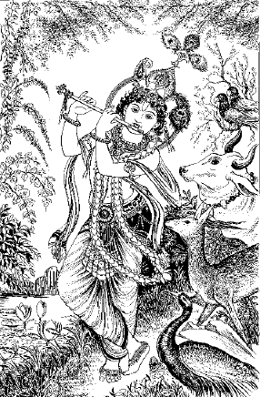
वृन्दावनबिहारी मुरलीमनोहर भगवान् श्रीकृष्ण
॥ श्रीहरि:॥
श्रीमद्भागवत-माहात्म्य
सच्चिदानन्दस्वरूप भगवान् श्रीकृष्णका वन्दन
अनेक ग्रन्थोंमें माहात्म्यकी कथा आती है। प्रधानत: पद्मपुराणान्तर्गत आये माहात्म्यकी कथा वक्ता कहे—ऐसी व्यासनारायणकी आज्ञा है। व्यासनारायणके आज्ञानुसार पद्मपुराणान्तर्गत माहात्म्यकी कथाको अब आरम्भ करते हैं—
सच्चिदानन्दरूपाय विश्वोत्पत्त्यादिहेतवे।
तापत्रयविनाशाय श्रीकृष्णाय वयं नुम:॥
कथाके आरम्भमें भगवान् श्रीकृष्णके चरणोंमें वन्दन करते हैं। दर्शनके बाद वन्दन होता है। जिसको भगवान्का दर्शन नहीं होता है, वह किसका वन्दन करेगा— अत: मनसे दर्शन करो, भगवान्के चरणोंमें भावपूर्वक वन्दन करो। कोई भी कार्य आप आरम्भ करो तो पहले भगवान्के चरणोंमें वन्दन करो।
जीवमें शक्ति अल्प है। जीवकी बुद्धि भी अल्प है। अल्पशक्ति होनेपर भी यह जीव शक्तिका विनाश बहुत करता है। इससे जीव दुखी होता है और उसकी हार हो जाती है, किंतु जिसको भगवान्की शक्ति मिलती है, भगवान्की शक्ति प्राप्त करके जो काम करता है—उसकी कभी हार नहीं होती। इसलिये भावपूर्वक भगवान्के चरणोंमें वन्दन करो।
ऐसा नियम बना लो कि कोई भी काम करनेसे पहले अपने भगवान्का दर्शन करो, उन्हें वन्दन करो। बाहर जाना हो तो भगवान्का वन्दन करके बाहर जाओ। बहुत-से वैष्णव तो भगवान्को ऐसा कहते हैं कि ‘मैं आपका ही काम करने जा रहा हूँ।’
भक्तिमें पैसेकी जरूरत है। पैसा केवल भोगका ही साधन नहीं है, पैसा भक्तिका भी साधन है। पैसेके बिना भक्ति नहीं होती। अत: प्रवृत्ति भी परमात्माके लिये करो। बाहर जाओ, तब भगवान्को वन्दन करके जाओ। काम करो, तब भी भगवान्को भूलना नहीं। बाहरसे जब घरमें आओ, तब हाथ-पाँव धोकर, शुद्ध होकर प्रथम भगवान्का दर्शन करो और भगवान्को वन्दन करके कहो—‘यह दास आपकी सेवामें आया है, आप मेरे मालिक हैं।’ आप इतना भी करोगे तो जीवन सुधरेगा।
कितने ही लोग जब बाहरसे घरमें आते हैं तो उनको सर्वप्रथम पत्नीका दर्शन करनेकी इच्छा होती है। पत्नी न दिखायी पड़े तो व्याकुल हो जाते हैं। अपने बच्चोंसे पूछते हैं—‘तेरी माँ कहाँ गयी है?’ अरे, वह क्या कोई भाग जानेवाली थी? आ जायगी। घरमें आकर प्रथम भगवान्का दर्शन करो। घरके मालिक भगवान् हैं।
‘श्रीकृष्णाय वयं नुम:’ —कथाके आरम्भमें वन्दन करो। केवल श्रीकृष्णका ही नहीं, अपितु श्रीराधाजीके साथ विराजमान श्रीकृष्णका वन्दन करो।
सनातन धर्ममें शक्तिके साथ परमात्माकी भक्ति होती है। कितने ही ज्ञानी लोग ‘निर्विशेष ब्रह्म’ का ध्यान करते हैं—ठीक है, किंतु ब्रह्म जब शक्ति-विशिष्ट होता है, तब दया आती है। शक्ति-विशिष्ट ब्रह्मकी पूजा होती है। सन्त लोग तो ऐसा कहते हैं—‘श्रीराधेके बिना कृष्ण आधे हैं।’
श्रीसीताजी रावणकी लंकामें विराजमान हैं। रामचन्द्रजीको सीताजीका वियोग हुआ है। सीता-वियोगी रामकी कोई पूजा नहीं करता। राम जब रावणको मारते हैं, श्रीसीताजीके साथ स्वर्ण-सिंहासनपर विराजते हैं—ब्रह्म जब शक्ति-विशिष्ट होता है, तभी उसकी पूजा होती है। सनातन धर्ममें शक्ति-विशिष्ट परमात्माकी पूजा है।
जगत्के आधार श्रीकृष्ण हैं। श्रीकृष्णकी आधार श्रीराधा हैं। जगत्को आनन्द देनेवाले श्रीकृष्ण हैं। जीव जब मनसे श्रीकृष्णका स्पर्श करता है, तब आनन्द मिलता है। आनन्द ही ‘श्रीकृष्ण’ है। जीवको संसारमें सुख मिलता है, आनन्द नहीं मिलता है। आनन्द तो जीव जब परमात्माको स्पर्श करता है, तब मिलता है। आनन्द देनेवाले श्रीकृष्ण हैं। जगत्को आनन्द श्रीकृष्ण देते हैं और श्रीकृष्णको आनन्द देनेवाली श्रीराधाजी हैं।
भागवतमें ऐसा वर्णन आया है कि श्रीकृष्णको कभी-कभी क्रोध आता है। भगवान् क्रोध करते हैं, किंतु श्रीराधाजीको जीवनमें कभी क्रोध आया ही नहीं। क्रोध क्या होता है—यह श्रीराधाजी जानती ही नहीं हैं। वे तो दयाकी मूर्ति हैं, प्रेमकी मूर्ति हैं। उन्हें सभीपर दया आती है।
भगवान् दयालु हैं—यह बात सत्य है। भगवान् कभी-कभी निष्ठुर भी हो जाते हैं। भगवान् कभी-कभी क्रोध करते हैं। भगवान् सजा भी करते हैं। भगवान् कब सजा करते हैं?
भगवान् कृपा करके जीवको धन देते हैं। जीवको घरमें अनुकूलता कर देते हैं, ताकि अनुकूल परिस्थितियोंमें वह भगवान्की ज्यादा भक्ति करे। ज्यादा भक्ति करनेके लिये, ज्यादा परोपकार करनेके लिये भगवान् जीवको अनुकूलता कर देते हैं, किंतु यह जीव ऐसा दुष्ट है कि सब प्रकारकी अनुकूलता मिलनेपर भी वह ज्यादा भक्ति नहीं करता है—वह ज्यादा सुख भोगता है। अतिशय भक्ति करनेके लिये भगवान् अनुकूलता प्रदान कर देते हैं। अनुकूल परिस्थितिमें मर्यादा छोड़कर जीव जब अति सुख भोगता है, तब भगवान्को क्रोध आता है—‘अब दया नहीं, अब सजा है। अब मैं इसको सजा करूँगा।’
भगवान् सजा भी करते हैं। भगवान्को क्रोध आता है। भगवान् क्रोध करके जब सजा करते हैं, तब श्रीराधाजी भगवान्को समझाती हैं—‘क्रोध मत करो।’ भगवान् आवेश में बोलते हैं—‘यह जीव दुष्ट है। आजतक मैंने बहुत दया की, यह दया करनेलायक नहीं है। अब मैं इसको सजा करूँगा।’ श्रीराधाजी प्रेमसे समझाती हैं—‘जीव तो लायक नहीं है; आप तो लायक हो! वह आपका ही बालक है, आपका ही अंश है। जीव दुष्ट है, आप दयालु हो। जीव नालायक है, आप लायक हो। मुझे दया आती है—दया करो, सजा न करो। आप उसको सजा करोगे तो वह बहुत दुखी होगा। वह कहाँ जायगा—अब वह सुधरेगा, अब पाप नहीं करेगा।’ श्रीराधाजीकी कृपा बिना जीव भगवान्के चरणोंमें नहीं जा सकता। श्रीराधाजी उसके लिये सिफारिश करती हैं।
सन्तोंका एक अनुभव है—कभी-कभी साधु-सन्तोंको भी माया सताती है। माया बँगलेमें रहनेवालोंको ही त्रास देती है—ऐसा नहीं है। वनमें रहनेवाले तपस्वी सन्तोंको भी माया त्रास देने जाती है। माया किसीको छोड़ती नहीं है। माया सभीको मारती है। माया जब बहुत त्रास देती है, तब सन्त—‘श्रीराधे, श्रीराधे, श्रीराधे, श्रीराधे... मेरा मन बिगड़ गया है, मेरा मन मानता नहीं है, मैं शरणमें आया हूँ’ —ऐसा कहते हैं।
मन प्रेमसे ‘श्रीराधे, श्रीराधे, श्रीराधे, श्रीराधे’ —कीर्तन करता हुआ जब तन्मय होता है, तब श्रीराधाजी दौड़ती हुई आती हैं। वे दयाकी मूर्ति हैं। ‘दया’ ही ‘श्रीराधा’ है। भगवान्की आह्लादिनी शक्ति ही ‘श्रीराधा’ है—‘श्रयते सर्वात्मना श्रीकृष्ण इति श्री:। श्रीकृष्णेन श्रीयते सेव्यते इति वा—श्री:।’
श्रीराधाजी जगन्माता हैं। साधारण माताको भी दया आती है। कैसा भी अपराधी पुत्र हो—वह बारह बजे घरमें आये और माँके सन्मुख हाथ जोड़कर खड़ा हो जाय, उसकी आँखोंमें दो आँसू आ जायँ—तो माँ सब कुछ भूल जाती है। फिर माँको पुत्रका कोई दोष नहीं दिखता है। एक साधारण मातामें भी ऐसी दया है। श्रीराधाजी तो जगन्माता हैं। श्रीराधाजी आदिशक्ति हैं। सभी शक्तियाँ श्रीराधाजीसे ही निकली हैं।
माया भी भगवान्की शक्ति है। माया जब सताती है...। माया संसारीको ही त्रास देती है—ऐसा नहीं है। कभी-कभी विरक्त साधु-सन्तोंको भी माया त्रास देती है। ऐसे समयमें सन्त श्रीराधाजीका स्मरण करते हैं—‘श्रीराधे, श्रीराधे, श्रीराधे।’ श्रीराधाजीको जल्दी दया आती है। श्रीराधाजी कृपा करके दौड़ती हुई आती हैं।
हजारों वर्ष हो गये—वृन्दावनमें श्रीराधाजी कभी बड़ी होती ही नहीं हैं। श्रीराधाजी पाँच-छ: वर्षकी ही रहती हैं। श्रीकृष्ण सात-आठ वर्षके रहते हैं। आज भी राधा-कृष्ण प्रत्यक्ष विराजमान हैं। उनकी नित्यलीला है। सन्त इसीलिये प्रथम श्रीराधाजीके चरणोंका आश्रय लेते हैं।
प्रथम श्रीराधाजीके चरणोंमें वन्दन करो, फिर श्रीकृष्णके चरणोंमें वन्दन करो। ‘श्रीधाम’ वृन्दावन है। वृन्दावनमें सुन्दर स्वर्णके सिंहासनपर श्रीराधा-कृष्ण विराजमान हैं। उनकी नित्यलीला है—आज भी विराजमान हैं। आप मनसे दर्शन करो। प्रथम श्रीराधाजीके चरणोंमें वन्दन करो। फिर श्रीकृष्णके चरणोंमें वन्दन करो—‘श्रीकृष्णाय वयं नुम:।’
जो प्रेमसे भगवान्के चरणोंमें वन्दन करता है, उसको भगवान् शक्ति देते हैं। जिसको भगवान्की शक्ति मिली है, उसकी कभी हार नहीं होती। जीव अपनी शक्तिमें विश्वास रखकर काम करता है, तब उसकी हार होती है। जीव अल्पशक्ति है, परमात्मा अनन्त शक्तिमान् है। कोई भी कार्य करो, तब सर्वप्रथम अपने भगवान्के चरणोंमें वन्दन करो—श्रीराधाकृष्णभगवान्की जय!
कथामें प्रेमसे ‘जय’ बोलो—आपकी कभी हार नहीं होगी। भगवान्की जय बोलनेसे भगवान्को लाभ नहीं है—आपको लाभ है। भगवान्की कभी हार नहीं हुई है और भगवान्की कभी हार होनेवाली भी नहीं है। हार तो मानवकी होती है।
मानवका जीवन क्या है? मानवका जीवन एक बड़ा युद्ध है। माया और मानवका युद्ध हो रहा है। मायाकी जीत होती है, मानवकी हार होती है। माया मानवको संसारमें फँसा देती है। संसारमें मजा है—स्त्री बहुत सुन्दर है, पुरुष सुन्दर है—ऐसा समझाकर जीवको माया संसारमें फँसा देती है। जीव संसारमें अनेक बार दुखी होता है। दुखी होनेपर भी उसको संसार मीठा ही लगता है। मायाकी जीत होती है, मानवकी हार होती है। मानवकी हार क्यों होती है? क्योंकि प्रेमसे वह भगवान्की जय बोलता नहीं है। जो प्रेमसे भगवान्की जय बोलता है—हृदयमेंसे आवाज आये तो मनमें जो पाप है, वह बाहर निकल जायगा। मन शुद्ध होगा, हृदयमें भगवान् आयेंगे। आपकी हार हो—ऐसी इच्छा हो तो आप जय बोलना नहीं। आपकी जीत हो—ऐसी इच्छा हो तो प्रेमसे बोलो—
श्रीगंगामइयाकी जय! श्रीगोवर्धननाथकी जय!
श्रीद्वारकाधीशकी जय! श्रीबालकृष्णलालकी जय!
ॐनम: पार्वतीपतये हर हर महादेव!
शुक-जन्मकी कथा
यं प्रव्रजन्तमनुपेतमपेतकृत्यं
द्वैपायनो विरहकातर आजुहाव।
पुत्रेति तन्मयतया तरवोऽभिनेदु-
स्तं सर्वभूतहृदयं मुनिमानतोऽस्मि॥
(श्रीमद्भा० माहा० १।२)
महर्षि व्यास आदिनारायण परमात्माके स्वरूप हैं। श्रीशुकदेवजी महाराज भगवान् शंकरके स्वरूप हैं। भगवान् शंकर ही शुकदेवजीके स्वरूपसे प्रकट हुए हैं।
ऐसा दिखता है कि नारदजी महाराज जहाँ जाते हैं, वहाँ कुछ कलह जगा देते हैं, किंतु नारदजीके कलहमें भी जगत्का कल्याण है। अनेकका कल्याण करनेके लिये नारदजी कलह जगा देते हैं।
एक बार ऐसा ही हुआ। अनेक जीवोंका कल्याण करनेके लिये नारदजीने थोड़ा कलह जगा दिया। कैलासधाममें भगवान् शंकर समाधिमें थे। शंकरभगवान् प्राय: समाधिमें ही रहते हैं। समाधिसे जागते हैं, तब कथा करते हैं। कथाकी समाप्ति हो, तब समाधिमें बैठ जाते हैं। कथा और समाधि—ये दो ही काम शिव करते हैं। तीसरा कोई काम करते ही नहीं हैं। समाधिसे जागनेपर माता पार्वतीजीको रामकथा-कृष्णकथा सुनाते हैं।
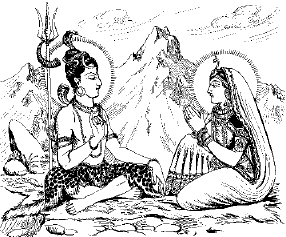
शंकरभगवान् समाधिमें थे। माता पार्वतीजी शिवलिंगकी स्थापना करती हैं—शिवजीकी पूजा करती हैं। शिव-स्वरूप दिव्य है। शालग्राम नारायणका निराकार स्वरूप है—शालग्राममें हाथ, पाँव, मुख नहीं हैं। नारायणके निराकार स्वरूपकी भी पूजा होती है और नारायणके साकार स्वरूपकी भी पूजा होती है। शिवलिंग भगवान् शंकरका निराकार स्वरूप है। ‘लिंग’ शब्दका अर्थ है—शिव-स्वरूप!
भगवान् शंकर समाधिमें हैं। माता पार्वतीजीने शिवजीकी स्थापना की—शिवजीकी पूजा करती हैं। पूजा पूर्ण हुई, उसी समय नारदजी वहाँ आये। माताजीको आनन्द हुआ। उन्होंने शंकरभगवान्को भोग लगाया था, सो शिव-प्रसाद नारदजीको भी दिया। नारदजी प्रसाद खाकर प्रसन्न हुए। नारदजीने विचार किया—यह प्रसाद जो आज मुझे मिला है,ऐसा प्रसाद जगत्के अनेक जीवोंको भी मिले, इसलिये मैं थोड़ा कलह जगा दूँ।
प्रसाद स्वीकार करके नारदजीने माता पार्वतीजीकी बहुत प्रशंसा की—‘भगवान् शंकर तो पूर्ण निष्काम हैं। शिवजीने कामदेवको जला दिया है। वे तो पूर्ण निष्काम हैं तो भी आपके साथ उन्होंने लग्न किया है। आप शिव-शक्ति हाे....।’ माताजीकी नारद प्रशंसा करते हैं। माताजीने कहा—‘नारद! तू मेरी प्रशंसा करता है। उनके लिये मैंने कैसी कठिन तपश्चर्या की है, यह मेरा मन ही जानता है। बहुत दिनतक मैं पान (पत्ते) खाती रही, बहुत दिनतक पवनका भक्षण करती रही, बहुत दिनतक मैं जलके ऊपर रही...। मैंने बहुत तपश्चर्या की है।’
नारदजीने हाथ जोड़कर कहा—‘माताजी! आपकी तपश्चर्या तो बहुत है। ऐसी कोई नहीं कर सकता। आपने इतनी तपश्चर्या की, ठीक है, किंतु मुझे कहना तो नहीं चाहिये—यह पुरुष-स्वभाव ही ऐसा निष्ठुर होता है। स्त्री सर्वरीतिसे भोग देती है तो भी पुरुष थोड़ा कपट तो करता ही है। मुझे कहना तो नहीं चाहिये, पर... क्षमा करें। शंकरभगवान् आपसे भी थोड़ी बातें छिपाते हैं। ऐसा नहीं करना चाहिये। आपने सर्वस्व अर्पण किया है...।’
‘नहीं, ऐसी कोई बात नहीं, जो मुझसे छिपायी है।’
‘माताजी! मुझे बोलना ठीक नहीं है। मैं इतना ही कहता हूँ कि उनके गलेमें जो मुण्ड-माला है, वह किसके मस्तककी है—यह आप जानती नहीं हो! कदाचित्, आप पूछो—तो भी वे बतानेवाले नहीं हैं। जय श्रीमन्नारायण, अब मैं जाता हूँ।’ माताजीको इतना कहा और नारदजी चले गये।
माताजीने विचार किया कि आज समाधिसे जागनेके बाद सर्वप्रथम मैं यही प्रश्न पूछूँगी—किसके मस्तककी माला आप गलेमें रखते हो—नारदजीने मुझसे कहा है कि आप पूछोगी तो भी नहीं बतायेंगे!
भगवान् शंकर समाधिसे जागते हैं—सीताराम, सीताराम, सीताराम बोलते हैं। माता पार्वतीजी शिवजीको अतिशय प्रिय हैं। इसका एक कारण है, वेदोंमें ऐसा वर्णन है कि पार्वती माता ब्रह्मविद्या हैं। शिव ब्रह्मरूप हैं। ब्रह्म, ब्रह्मविद्याके अधीन रहता है। भगवान् शंकरको समाधिमें जो आनन्द मिलता है, जागनेके बाद माता पार्वती शिवजीको वही आनन्द देती हैं। माता पार्वतीजी ऐसा प्रश्न पूछती हैं कि शंकरभगवान्को कथा कहनी पड़ती है। कथामें जगत्की विस्मृति हो जाती है। समाधिमें भी जगत्की विस्मृति होती है। जो आनन्द शिवजीको समाधिमें मिलता है, जागनेपर वही आनन्द माता पार्वतीजी उनको देती हैं। भगवान् शंकरको इसीलिये माता पार्वती अतिशय प्रिय लगती हैं।
पार्वतीमाताने कहा—‘महाराज! आज आपसे कुछ पूछना है।’
शिवजीने विचार किया कि मेरे रामकी कुछ कथा पूछेंगी या मेरे श्रीकृष्णकी लीलाका कोई प्रश्न करेंगी।
पार्वतीमाताने पूछा—‘आपके गलेमें जो मुण्ड-माला है, वह किसके मस्तककी है?—यह मुझे बताओ।’
शिवजीने कहा—‘यह क्या पूछती हो—कुछ और पूछो—मैं राम-कथा कहूँ या कृष्ण-कथा कहूँ?’
माताजीने विचार किया कि नारद कहते थे, वह बात झूठी नहीं है। इन्हें कहनेकी इच्छा नहीं है। कहते हैं कि राम-कथा कहूँ या कृष्ण-कथा कहूँ। वे बोलीं—मुझे आज रामजीकी कथा सुननी नहीं है, कृष्ण-कथा भी सुननी नहीं है। आपके गलेमें जो मुण्ड-माला है, वह किसके मस्तककी है—यही बताओ। दूसरा कुछ सुनना नहीं है।’
शंकरभगवान्को आश्चर्य हुआ! आजतक कभी ऐसा प्रश्न पूछा नहीं। आज इसको कोई गुरु मिला है—ऐसा लगता है। शिवजीने स्मित हास्य किया और कहा—‘देवि, ये सब बातें कहूँगा तो तुम्हें दु:ख होगा।’
माताजीने कहा—‘भले ही दु:ख हो, किंतु मुझे यही जानना है। आप किसके मस्तककी माला गलेमें रखते हो?’
शंकरभगवान् पार्वतीजीके हठको देखते हुए कथा कहना प्रारम्भ करते हैं। भगवान् शंकर कहते हैं, ‘हे पार्वती! कथामें समाधि लगती है, समाधिका आनन्द आता है। जिसका मन बिगड़ा हुआ है, जिसका मन मलिन है, उसको कथामें आलस्य आता है, कथामें मन चंचल होता है। जिसका मन शुद्ध है,उसको कथामें परमात्माका प्रत्यक्ष दर्शन होता है। यह कथा ऐसी है कि कदाचित् तुमको समाधि लग जाय तो मैं आँख बन्द करके कथा कहता हूँ। तुम ऐसा करना कि दो-चार मिनट होनेपर कथाके बीचमें—हूँ... हूँ... ऐसा बोलना। ‘हुँकार’ देनेसे मैं ये समझूँगा कि समाधि नहीं लगी है।’
माता पार्वतीने कहा—‘आपकी ऐसी इच्छा है तो मैं ऐसा ही करूँगी। दो-तीन मिनटके बादमें हूँ... हूँ... बोलती रहूँगी।’
शिवजी महाराज आँखें बन्द करके कथा कहते हैं—‘श्रीकृष्ण बाँसुरीसे सभी जीवोंको बुलाते हैं। गोपियोंको भी बुलाते हैं। यह जीव मेरा अंश है। मेरा अंश मेरेसे अलग हुआ है। आज भी भगवान् बाँसुरी बजाते हैं। बाँसुरी बजा करके जीवको बुलाते हैं—मेरे पास आओ, मेरे पास आओ। मैं आनन्द दूँगा। आनन्द संसारमें नहीं है। आनन्द किसी स्त्रीके पास नहीं है, आनन्द किसी पुरुषके पास नहीं है। आनन्द तो भगवान् जीवको देते हैं। मेरा जीव मुझसे अलग हुआ है, वह मेरे पास आये। आज भी बाँसुरी बजाते हैं। भगवान्ने ऐसी मधुर बाँसुरी बजायी—गोपियाँ दौड़ती हुई जाती हैं।’
भगवान् शंकरने ऐसा वर्णन किया कि कथामें माताजीको हृदयमें श्रीकृष्णका दर्शन हुआ—समाधि लग गयी। शिवजीने कहा था कि दो-चार मिनट हो तो हुँकार देना। समाधि लगनेके बाद कौन हुंकार दे, रासलीलाका वर्णन शंकरभगवान् करते हैं—‘ये स्त्री-पुरुषके मिलनकी कथा नहीं है। शुद्ध ईश्वर-जीवके मिलनका वर्णन है।’ शिवजी महाराजने ऐसी मधुर कथा कही कि पार्वतीजीको समाधि लग गयी। हृदयमें परमात्माका दर्शन हुआ है। आनन्दमें परमात्माके साथ एक हो गयी हैं। अब हुंकार कौन भरे—भगवान्की लीला है।
वट-वृक्षकी छायामें, एकान्तमें शंकर-भगवान् माता पार्वतीजीको यह कथा सुनाते थे। उस समय एक पोपट (तोता) वहाँ मौजूद था, सभीको बाहर निकाला था, पोपट वहाँ रह गया था। वह पोपट सुनता था। शिवजीके मुखसे उसने कथा सुनी। वह कथा सुननेसे उसको ज्ञान हो गया। भगवान् शंकर कथा कहते थे। उसने देखा—माता पार्वतीजी तो समाधिमें हैं। आगेकी अभी बहुत लीला बाकी है। द्वारका-लीला बाकी है, एकादश स्कन्धकी ज्ञान-लीला बाकी है। हुंकार फूटती नहीं है। कदाचित्, शिवजी आँख खोलें और शिवजीको खबर पड़े कि पार्वतीजीकी तो समाधि लगी है तो वे आगेकी कथा नहीं कहेंगे। पोपटको ज्ञान हुआ था, सो पोपटने माता पार्वतीजीके जैसा शब्द किया। हूँ... हूँ... हुँकार भरने लगा।
शंकरभगवान्को खबर नहीं है—कौन कथा सुन रहा है—माताजीको तो समाधि लगी है। शिवजीने ऐसा दिव्य वर्णन किया। पोपट कथा सुनता था। दशम स्कन्धकी कथा परिपूर्ण हुई, एकादश स्कन्ध परिपूर्ण हुआ, द्वादश स्कन्धकी समाप्ति हुई। समाप्तिमें शिवजीने भगवान्का जय-जयकार किया और आँख खोलते हैं—माताजी तो समाधिमें हैं। ‘देवि! देवि!!’ —कौन सुनता है! समाधि लगी है।
शिवजीको आश्चर्य हुआ है कि कब इसको समाधि लगी—मुझे कुछ खबर ही नहीं पड़ी। ये समाधिमें हैं तो हुँकार कौन बोलता है—शिवजी देखने लगे—वट-वृक्षके पेड़के ऊपर एक पोपट बैठा था। शिवजीकी कृपासे शिवजीके मुखसे निकली हुई दिव्य कथा सुनकर वह ज्ञानी हो गया था। आनन्दमें मस्त हो गया था।
इसने कथा सुनी है! फिर शिवजीको थोड़ा ठीक नहीं लगा। वे पोपटको मारनेके लिये दौड़े। आजतक मैंने किसीको भी यह अमरकथा नहीं सुनायी। पार्वतीजी तो समाधिमें हैं। वह पोपट वहाँसे उड़ता है, घबराया है।
कैलासके पास ही व्यासनारायणका दिव्य आश्रम है। महर्षि व्यासने भागवतकी रचना की है। भागवतकी रचना करनेके बाद व्यासजी चिन्तामें हैं कि मेरी भागवतकी कथा कौन करेगा—बड़े-बड़े ऋषि व्यासजीके शिष्य हैं—माँगते हैं। किसीको ऋग्वेद दिया, किसीको यजुर्वेद दिया, किसीको महाभारत दिया—भागवत नहीं दी। भागवत प्रेम-शास्त्र है। ये मेरा सर्वस्व है। जो परमात्माके साथ ही प्रेम करता है, वही भागवतकी कथा बराबर कर सकता है। जो जगत्के जड़ पदार्थोंके साथ प्रेम करता है, वह भागवतकी कथा क्या करेगा? किसीको भागवत देनेकी इच्छा नहीं होती है।
व्यासकी पत्नीका नाम है—अरणीदेवी। वृद्धावस्थामें ऐसी इच्छा हुई कि शंकरभगवान् मेरे पुत्र हों। मैं भागवत उनको दे दूँगा। वे भागवतकी कथा करेंगे। ये मेरा सर्वस्व है। इसके लायक तो भगवान् शंकर हैं। श्रीकृष्ण ही शिवजीका धन हैं। शंकरभगवान् मेरे पुत्र हों—ऐसी इच्छासे महर्षि व्यास अरणीदेवीके साथ पंचाक्षर शिव-मन्त्रका जप करते हैं। शिवजी जगत्में ज्यादा नहीं आते हैं। शिवजीका अवतार नहीं होता है। शिवजीको जगत्में आनेकी इच्छा नहीं होती। प्रकृतिसे दूर रहते हैं। जगत्में कौन आये—संसार मायामय है।
प्राय: भगवान् शंकर गाँवके बाहर श्मशानमें विराजते हैं। शिवजीका ऐसा स्वभाव है कि जगत्को जिसकी जरूरत है, उसका वे त्याग कर देते हैं। जगत् जिसका त्याग करता है—शिव उसको अपनाते हैं। घरमें एक गुलाबका फूल हो और अनेक देव हों तो मनमें शंका हो जाती है कि यह गणपतिजीको अर्पित करूँ या हनुमान्जीको अर्पित करूँ—गुलाबका फूल एक है। शंकरभगवान् कहते हैं—मुझे गुलाबका फूल अच्छा लगता ही नहीं, मुझे धतूरेका फूल बड़ा अच्छा लगता है। गुलाबके लिये कोई झगड़ा भले करे, धतूरेके लिये कोई झगड़ा करता है? जिसका जगत् त्याग करता है, शिवजी उसको अपनाते हैं। शिव प्रवृत्तिसे दूर रहते हैं। उनको जगत्में आनेकी इच्छा ही नहीं होती।
भगवान् शंकर मेरे पुत्र हों, वृद्धावस्थामें व्यासजीको ऐसी इच्छा हुई है। जवानीमें कभी पुत्रैषणा जागी नहीं। तपश्चर्या बहुत करते थे। वृद्धावस्थामें भागवतकी रचना करनेके बाद पुत्रैषणा जागी है। मेरी भागवतकी कथा कौन करेगा? भगवान् शंकर कथा करें तो अनेक जीवोंका कल्याण होगा। व्यासनारायण अरणीदेवीके साथ पंचाक्षर शिव-मन्त्रका जप करते हैं—शिवजी मेरे यहाँ पुत्र-रूपमें आयें।
वह पोपट जो वहाँसे उड़ा है—वह दौड़ता हुआ व्यासमहर्षिके आश्रममें आया है। शिवजी उसके पीछे पड़े हैं। वह दौड़ता हुआ जो गया, सो वह अरणीदेवीकी गोदमें आया। शिवजी दौड़ते हुए आये हैं। व्यासजी खड़े हो गये—शंकरभगवान् आये हैं। व्यासजीने सुन्दर आसन दिया है। भगवान् शंकरकी पूजा करते हैं। ‘क्यों दौड़ते हुए आये हो?’ शिवजीने कहा—‘क्या कहूँ, मेरे घरमें बड़ी चोरी हो गयी है।’ व्यासजी बोले—‘आपके घरमें चोरी हो गयी—आपके घरमें कोई चोर आये तो उसको निर्जल एकादशी ही करनी पड़े। आप किसी वस्तुका संग्रह करते ही नहीं। वेदोंमें तो आपका बहुत वर्णन है।’
शिव विश्वनाथ हैं। सभीके पति हैं तो चोरके पति भी शिव हैं—स्तेनानाम्पतये नम:। (यजु०१६।२०)चोरके अधिपति भी शिव हैं। सभीके मालिक शिव हैं। ‘आपके यहाँ कौन चोर आये और आये तो उसको निर्जल एकादशी ही करनी पड़े। आप किसी भी वस्तुका संग्रह नहीं करते। आपके यहाँ किसकी चोरी हुई?’
शिवजीने कहा—‘अमरकथा आजतक मैंने किसीको नहीं दी थी। वह अमरकथा मैंने पार्वतीको सुनायी। उसे तो समाधि लग गयी, उसको तो कथाका फल मिल गया, किंतु एक पोपटने वह कथा सुनी है। वह पोपट आपके आश्रममें दौड़ता हुआ आया है।’
व्यासजीने कहा—‘महाराज, अमरकथाका फल क्या है?’ शिवजीने कहा—‘जो अमरकथा सुनता है, वह अमर हो जाता है।’ व्यासजीने कहा—‘महाराज, आपके मुखसे जिसने अमरकथा सुनी, उसको तो मुझे ऐसा लगता है, आप भी नहीं मार सकते। वह अमर हो गया है। आपके मुखसे उसने कथा सुनी है। उसको आप कैसे मार सकते हैं? आपने एकान्तमें माता पार्वतीजीको जो अमरकथा सुनायी, वही कथा मैंने भागवतमें लिखी है। कृपा करो। मेरी भागवतकी कथा करनेके लिये मेरे यहाँ अवतार धारण करो। अनेक जीवोंका कल्याण होगा।’
शिवजीने कहा—‘संसारमें कौन आये—संसार तो कोयलेकी खान है। संसारमें जो आता है, उसको माया नहीं छोड़ती है।’
‘महाराज! माया आपका क्या कर सकती है—आपके मस्तकमें गंगाजी हैं। आपको माया क्या करेगी—आपको जो समाधिमें आनन्द मिलता है, वही आनन्द जगत्को देना चाहिये। अकेला खाये, सो ठीक नहीं है। आप दूसरेको आनन्द दोगे तो आपका क्या कम होनेवाला है—माया आपका क्या कर सकती है?’
व्यासजीने बहुत आग्रह किया—‘मेरी भागवतकी कथा करनेके लिये मेरे यहाँ पुत्ररूपसे प्रकट होइए। बहुत दिनसे मैं पंचाक्षर शिव-मन्त्रका जप करता हूँ। कृपा करें।’
शिवजीको दया आयी है। शिवजीने देखा—अरणीदेवीकी गोदमें वही पोपट है, जिसने मेरे मुखसे अमरकथा सुनी है। शिवजीने केवल नजर की है। केवल दृष्टि देनेसे पेटमें गर्भ रहा है। अरणीदेवीके पेटमें शुकदेवजी महाराज श्रीकृष्णका सतत ध्यान करते हैं। सतत श्रीकृष्णका ध्यान करनेसे उनका श्रीअंग श्रीकृष्णके जैसा श्याम हो गया। आप जिसका चिन्तन करते हैं, वैसा स्वरूप आपको मिलता है। बहुत दिनतक माँके पेटमें रहे। व्यासजीने कहा है—‘बेटा, अब तेरी माँको त्रास होता है, बाहर आ जाओ।’ शुकदेवजीने कहा—‘बाहर आनेपर कदाचित् माया मुझे स्पर्श करे तो—माँके पेटमें मैं श्रीकृष्णका ध्यान करता हूँ। संसार मायामय है।’
व्यासजीने कहा—‘बेटा, मैं तुम्हें आशीर्वाद देता हूँ, तुम्हें मायाका स्पर्श नहीं होगा।’ शुकदेवजीने कहा—‘मुझे डर लगता है, आप मुझे बेटा-बेटा कहते हो, आपके मनमें भी थोड़ी माया है—ऐसा लगता है। आप मायामें फँसे हुए हो। मुझे प्रेमसे ‘बेटा-बेटा’ कहते हो। जो कभी मायाके अधीन हुआ न हो, वह मुझे आशीर्वाद दे, वह तो वरदान है। नहीं तो मैं बाहर नहीं आऊँगा।’
भगवान् श्रीकृष्णका नाम है—माधवराय! ‘मा’ शब्दका अर्थ होता है—माया और ‘धव’ शब्दका अर्थ होता है—‘पति’ । श्रीकृष्ण कभी मायाके अधीन हुए नहीं हैं। वे ‘माधवराय’ हैं। भगवान् श्रीकृष्णने शुकदेवजीको वरदान दिया है—‘कभी मायाका स्पर्श नहीं होगा।’
शुकदेवजीका वैराग्य और गृहत्याग
वेदोंमें, उपनिषदोंमें दो सन्तोंके नाम ऐसे आते हैं—जो जन्मसे ही मुक्त हैं। ‘शुको मुक्त:, वामदेवो मुक्त:’ । एक वामदेवऋषिका ऐसा नाम आता है। वामदेवऋषि संसारमें आये, कभी मायाका स्पर्श हुआ नहीं। जन्मसे ही शुकदेवजी महाराजमें ज्ञान, वैराग्य और भक्ति तीनों परिपूर्ण हैं।
यं प्रव्रजन्तमनुपेतमपेतकृत्यं
द्वैपायनो विरहकातर आजुहाव।
पुत्रेति तन्मयतया तरवोऽभिनेदु-
स्तं सर्वभूतहृदयं मुनिमानतोऽस्मि॥
ज्ञान, वैराग्य और भक्ति—तीनों परिपूर्ण हैं। इसीलिये शुकदेवजी महाराज सात दिवसमें मुक्ति दे सकते हैं।
परीक्षित्का यह प्रश्न था—सात दिनमें कौन मुझे मुक्ति दे सकता है, कौन मुझे परमात्माका दर्शन करा सकता है? ज्ञान, वैराग्य और भक्ति जहाँ तीनों परिपूर्ण हैं, वही सात दिवसमें मुक्ति दे सकता है। शुकदेवजी-जैसे अधिकारी सिद्ध सद्गुरु हों तो सात दिन तो बहुत हैं, केवल प्रेमसे स्पर्श करें तो परमात्माका दर्शन हो सकता है। गंगा-किनारे शुकदेवजी महाराजने राजा परीक्षित्को कथा सुनायी है।
घर छोड़ दिया है। अनेक जीवोंका कल्याण करनेके लिये घर छोड़ा है। शुकदेवजी घर छोड़कर जाने लगे। माँको दु:ख हुआ। मेरा बालक भले ही लग्न न करे, घरमें रहे। उसको देखनेसे मन पवित्र हो जाता है, उसको देखनेसे भगवान् याद आते हैं—मेरा बालक ऐसा है। व्यासजी समझाते हैं—‘जो अतिशय प्रिय लगता है, वह भगवान्को अर्पण करो। साधारण मानवका ऐसा स्वभाव होता है कि उसको जो अच्छा लगता है, वह अपने लिये रखता है। जो अच्छा नहीं लगता है, वह दूसरोंको दे देता है। अच्छा मेरे लिये—इसीका नाम ‘आसक्ति’ है। अच्छा दूसरेके लिये—उसीका नाम ‘भक्ति’ है। तेरा पुत्र अनेक जीवोंका कल्याण करनेके लिये गया है।
‘हे पुत्र! हे पुत्र!!’ बोलते हुए व्यासजी दौड़ते हैं। शुकदेवजीने कहा है—‘कौन पुत्र है और कौन पिता है— परमात्माके पीछे पड़ो। पिता-पुत्रके सम्बन्धमें केवल वासना है। वासनासे जीव बाप होता है। वासनासे ही जीव बेटा होता है। जीवका ईश्वरसे सम्बन्ध सच्चा है। मेरे पीछे क्या पड़ते हो—अनेक बार आप पुत्र हुए हैं, अनेक बार मैं पिता हुआ हूँ। कौन पिता और कौन पुत्र है? पूर्वजन्मका आपका पुत्र इस समय कहाँ है? पूर्वजन्मके पति या पत्नी जो प्राणसे प्यारी लगती थी, इस समय कहाँ है? ये सब वासनाका खेल है। जीव ईश्वरका है।’
बूढ़ेकी घरमें वासना रह जाय, उस बूढे़का मरनेके बाद बालकका जन्म होता है। कितने लोग बातें करते हैं—इसका मुख इसके दादाके जैसा लगता है। वह ‘दादा’ के जैसा क्या, दादा ही बेटा होकरके आया है। जो बाप था, वही बेटा हुआ है। उसकी घरमें आसक्ति थी।
‘पिताजी! मेरे पीछे क्या पड़ते हो? परमात्माके पीछे पड़ो। नर नारायणका अंश है। नारायणके पीछे पड़ो।’
महर्षि व्यासको बोध दिया है—‘पुत्रेति तन्मयतया तरवोऽभिनेदुस्तं सर्वभूतहृदयं मुनिमानतोऽस्मि॥’
गंगा-किनारे सन्त-समाजमें शुकदेवजी महाराजने ये दिव्य कथा की है। शुकदेवजी महाराज जब कथा करते थे, उस कथामें महर्षि व्यास कथा सुननेके लिये आये थे। ‘मुझे ऐसा लगता है, मेरा पुत्र मुझसे भी श्रेष्ठ है। उसका ज्ञान-वैराग्य, उसकी प्रेम-लक्षणा भक्ति अलौकिक है।’ शुकदेवजीकी कथा सुननेमें व्यासजीको आनन्द आया।
कथा कीर्तनसे सफल होती है। कथाका सोलह आना फल मिले, पुण्य मिले—ऐसी इच्छा हो तो कथामें प्रेमसे कीर्तन करो। कथामें वक्ता भगवद्-गुणगान करता है। भगवान्की मंगलमयी लीलाका वर्णन करता है। गुण-संकीर्तन, लीला-संकीर्तन, नाम-संकीर्तनसे कथा सफल होती है। वक्ता-श्रोता बहुत प्रेमसे भगवान्के नामका जब कीर्तन करते हैं, तभी कथा सफल होती है। कथाका सोलह आना फल आपको मिले—ऐसी इच्छा हो तो प्रेमसे कीर्तन करो। कीर्तनमें संकोच रखना नहीं। कीर्तनमें जिसको संकोच होता है, वह समझे कि मेरा पाप बहुत है। कीर्तनमें शर्म काहेकी रखते हो, वैष्णवको पाप करनेमें शर्म आती है। भगवान्के नाममें जिसको शर्म आये, वह वैष्णव नहीं है। आप प्रभुके प्यारे हैं, आप वैष्णव हैं, आप सब भगवान्के अंश हैं।
कथा-महिमा
परमात्मा श्रीकृष्णका नाम-स्वरूप भागवत-शास्त्र है। संसारमें भगवान्ने अपने स्वरूपको छिपाया है। भगवान् हैं, पर भगवान्का दर्शन नहीं होता है। भगवान्ने नामको प्रकट कर रखा है। जो शक्ति भगवान्में है, वही शक्ति भगवान्के नाममें भी है। भगवान्का दर्शन नहीं होता है। कदाचित् किसीको दर्शन हो तो वह भगवान्को पकड़ नहीं सकता है। दो मिनट, तीन मिनट भगवान् दर्शन देते हैं, फिर अदृश्य हो जाते हैं। भगवान्के नामको मानव पकड़ सकता है। जहाँ ‘नाम’ है, वहीं भगवान् हैं। नाम-सेवासे ही मनकी शुद्धि होती है। मनको भगवान्के नाममें रखो। नामका ध्यान करो। रूपका ध्यान करना कठिन है। भगवान्के स्वरूपका ध्यान करनेमें संसारके चित्र आँखके आगे आते हैं। भगवान्के नामका ध्यान करो। नामका चिन्तन करो। नामका स्मरण करो। नामका जप करो। नाम-सेवासे ही बिगड़ा हुआ मन शुद्ध होता है। मानवका जन्म बिगड़े हुए मनको शुद्ध करनेके लिये ही हुआ है। मानव अपने मनको शुद्ध कर सकता है। मनको शुद्ध करनेका उपाय एक ही है—मनको भगवान्के नाममें रखो। भगवान्का नाम छूट जाय तो दु:ख होना चाहिये। भगवान्का नाम अमृतसे भी मधुर है, आनन्द देनेवाला है। जो सर्वकाल जप करता है, उसीको अनुभव होता है। जगत्के सभी सन्तोंने, महात्माओंने नाम-सेवा बहुत की है। तभी मनकी शुद्धि हुई है। भागवत भगवान् श्रीकृष्णका नाम-स्वरूप है।
नैमिषारण्यमें शौनकादि मुनियोंने सूतजीसे प्रश्न किया—‘आजतक बहुत-सी कथाएँ सुनी हैं, सबका सार क्या है—सूताख्याहि कथासारम्—सबका सार-तत्त्व क्या है—वह समझाओ।’
कितने लोग बहुत-सी पुस्तकें पढ़ते रहते हैं,ठीक है; बहुत अच्छा नहीं है। बहुत पुस्तक पढ़नेसे शब्द-ज्ञान बढ़ता है। प्रत्येक पुस्तकमें थोड़ा भी मतभेद होता है, वह मतभेद मनको चंचल बनाता है—इसमें ऐसा लिखा है, उसमें ऐसा लिखा है! बहुत पुस्तक पढ़ना साधकके लिये अच्छा नहीं है। आजतक बहुत कथा सुनी, बहुत पुस्तकोंका अध्ययन किया, सबका सार क्या है, सो बताओ—सूताख्याहि कथासारम्। ये सभी ऋषि बालकृष्णलालके सेवक हैं। आप जिसकी सेवा-स्मरण करते हैं—आप वैसे हो जाते हैं। श्रीकृष्ण सारभोगी हैं। इसीलिये श्रीकृष्णकी सेवा-स्मरण करनेवाले वैष्णव सारग्राही बन जाते हैं।
भगवान्को माखन-मिसरी बहुत प्रिय है। माखन सभीका सार है। सेर-दो सेर दूध पीना ठीक है, बहुत दूध पीनेसे वायु हो जाता है। पेट भारी हो जाता है। एक-दो तोला माखन खानेसे पेट हल्का रहता है। शक्ति जल्दी आती है। माखन सबका सार है। माखन खानेसे शक्ति भी जल्दी आती है।
भागवत सभी वेद-पुराणोंका सार है—इति अशेषसमाम्नायपुराणोपनिषद् रस:। सबका सारतत्त्व समझाओ। ऐसा सारतत्त्व समझाओ, जिससे ज्ञान-वैराग्यके साथ भक्ति पुष्ट हो। ज्ञान-वैराग्यके साथ भक्ति पुष्ट हो, यह ध्यान में रखकर कथा कहना। कथा सुननेके बाद संसारके विषयोंमें अरुचि हो, कथा सुननेके बाद पाप छोड़नेकी इच्छा हो, कथा सुननेके बाद प्रभुमें प्रेम हो, कथा सुननेके बाद किये हुए पापके लिये पश्चात्ताप हो—तभी कथा सफल है। कथा सुननेके बाद थोड़ा भी स्वभाव सुधरना ही चाहिये। कथा सुननेके बाद नवीन जन्म होता है। कथा सुननेके बाद पाप छोड़नेकी इच्छा न हो, प्रभुमें प्रेम न हो, स्वभाव न सुधरे—तो समझना कि मैंने कथा सुनी ही नहीं। मैंने तो कथा सुनी, पर इन महाराजको कथा कहनी आती ही नहीं। महाराज बराबर कथा कहते हों, आप श्रद्धा-भक्तिसे बराबर कथा सुनते हों तो स्वभाव सुधरना ही चाहिये। कथा सुननेके बाद नवीन जन्म होता है। कथा सुननेके बाद पाप छोड़नेकी इच्छा होती है। कथा सुननेके बाद प्रभुमें प्रेम बढ़ता है। ज्ञान-वैराग्यके साथ भक्तिको पुष्ट करनेके लिये भागवतकी कथा है। शौनकादिने सूतजीसे कहा—ऐसी मधुरकथा सुनाओ कि भगवान् श्रीकृष्णका प्रत्यक्ष दर्शन हो—कृष्णप्राप्तिकरं शश्वत्साधनं तद्वदाधुना।
वेदान्तका सिद्धान्त है—ईश्वर दृश्य नहीं है, ईश्वर द्रष्टा है। भगवान्ने आँखको देखनेकी शक्ति दी है। जिस प्रभुने आँखको देखनेकी शक्ति दी है, उस भगवान्को आँख नहीं देख सकती। वेदान्तका सिद्धान्त है—ईश्वर दृश्य नहीं है, ईश्वर सबके द्रष्टा हैं—साक्षी चेता केवलो निर्गुणश्च। भगवान् सबको देखते हैं। जो सबको देखते हैं, उनको कौन देख सकता है—भगवान् दृश्य नहीं हैं, भगवान् द्रष्टा हैं। वेदान्तका सिद्धान्त अच्छा है।
किंतु, भक्तिमें एक ऐसी शक्ति है कि भक्ति जब बहुत बढ़ जाती है, तब भक्त जो है, वह द्रष्टा हो जाता है और भगवान्को दृश्य होना पड़ता है। दयित दृश्यतां दिक्षु तावका:—हे दयित! दृश्यतां—प्रत्यक्षीभूयताम्—भक्तिमें ऐसी शक्ति है। भक्ति जब बहुत बढ़ती है, तब भगवान्को दृश्य होना पड़ता है। ज्ञानी लोग ऐसा वर्णन करते हैं—चर्म-चक्षुसे भगवान्का दर्शन नहीं होता है। चर्म-चक्षु प्राय: चमड़ीको ही देखते हैं। भगवान्का दर्शन ज्ञान-चक्षुसे होता है, किंतु भक्ति जब अतिशय बढ़ती है, तब चर्म-चक्षुसे भी भगवान्का दर्शन होता है। साधारण भक्तिसे नहीं—अतिशय भक्ति जब बढ़ती है, तब जिस आँखसे मानव जगत्को देखता है, उसी आँखसे भगवान्का दर्शन भी होता है। ऐसी मधुर कथा सुनाओ—श्रीकृष्णभगवान्का प्रत्यक्ष दर्शन हो। कृपा करो।
शौनकमुनिने प्रश्न किया है। सूतजी कथा करते हैं—‘आपने जैसा प्रश्न किया, वैसा ही प्रश्न एक बार नारदजीने सनत्कुमारजीसे किया था।’
बदरीक्षेत्रकी महिमा
विशालाक्षेत्रमें गंगा-किनारे सनकादि ऋषि विराजमान हैं—
एकदा हि विशालायां चत्वार ऋषयोऽमला:।
सत्सङ्गार्थं समायाता ददृशुस्तत्र नारदम्॥
(श्रीमद्भा० माहा०१।२५)
बदरीनारायण भगवान्का नाम है—बदरीविशाललाल! जिन वैष्णवोंने बदरीनारायणकी यात्रा की है, उनको खबर है कि वहाँ भगवान्का जो जय-जयकार करते हैं, उस समय बोलते हैं—बदरीविशाललालकी जय! ‘बदरीविशाललाल’ बोलते हैं।
सूर्यवंशमें ‘विशाल’ नामका राजा हुआ था। राजा विशालने वहाँ गंगा-किनारे हजारों वर्षतक तपश्चर्या की थी। भगवान् नारायण वहाँ प्रकट हुए। भगवान्ने कहा—‘तू वरदान माँग ले।’ राजाने कहा—‘आपके दर्शन मिल गये, अब क्या वरदान माँगूँ? बस, ऐसी कृपा करो कि मैं आपका दर्शन करता ही रहूँ।’ भगवान्ने कहा—‘ऐसा ही होगा, किंतु मेरी इच्छा है कि और कुछ माँगो।’
तब राजा विशालने माँगा है—‘इस तपोभूमिमें आपका अखण्ड निवास हो। मुझे तो हजारों वर्ष तपस्या करनेके बाद आपका दर्शन हुआ। ऐसी कृपा करो कि यहाँ आकर थोड़ी-सी भी भक्ति जो करे, उसको आपका दर्शन जल्दी ही हो जाय, कलियुगमें जीवन बहुत कम है। हजारों वर्ष कौन तपश्चर्या कर सकता है। इसलिये आप जल्दी दर्शन देनेके लिये यहीं विराजो।’
भगवान्ने कहा—‘कैसा वरदान माँगता है! तेरा नाम ही ‘विशाल’ नहीं, तेरा हृदय भी विशाल है। आजसे इस क्षेत्रका नाम ‘विशाला-क्षेत्र’ होगा।’ बदरीनारायणमें जब संकल्प बोला जाता है, तब बोलते हैं—‘बदरीविशालक्षेत्रे...।’ राजाका नाम लिया जाता है। राजा विशालके लिये भगवान् प्रकट हुए हैं।
नारद-सनकादि-संवादमें भागवत-कथाका उपक्रम
विशाला-क्षेत्रमें गंगाजीके किनारे सनकादि ऋषि विराजमान हैं। देवर्षि नारदजी वहाँ आये हैं। नारदजी महाराज लोकसंग्रही सन्त हैं। सन्तोंके दो भेद होते हैं—लोकत्यागी सन्त और लोकसंग्रही सन्त। शुकदेवजी महाराज लोकत्यागी सन्त हैं—सबका त्याग कर दिया है। लँगोटीका भी त्याग कर दिया है। व्यासजीको कहा—‘पिता-पुत्रका सम्बन्ध सच्चा नहीं है, जीव-ईश्वरका सम्बन्ध सच्चा है। आप पिता नहीं हैं, मैं पुत्र नहीं हूँ—मैं जाता हूँ।’ सबका त्याग कर दिया है।
शुकदेवजी महाराज, सनकादि ऋषि आदि लोकत्यागी सन्त हैं। व्यासजी महाराज, नारदजी आदि लोकसंग्रही सन्त हैं। समाजमें भक्तिका प्रचार हो, घर-घर नाम-प्रचार हो, सभी लोग भगवान्की भक्ति करें, भगवान्की शरणमें जायँ—नारदजी महाराज इसीमें प्रवृत्ति करते हैं।
नारदजीने सनकादि ऋषियोंसे कहा है—अनेक तीर्थोंमें, अनेक क्षेत्रोंमें मैंने भ्रमण किया। कलियुगका प्रभाव बहुत बढ़ गया है। जीवनमें पैसा और कामसुख—दो ही मुख्य हो गये हैं। कलियुगका मानव अर्थ और कामसे आगे जाता ही नहीं है। पैसा कमा करके सुख भोगनेमें ही जीवन पूरा हो जाता है। भक्ति छिन्न-भिन्न हुई है। ज्ञान और वैराग्यको मूर्च्छा आ गयी है।
लोगोंको जगत् देखनेकी इच्छा होती है। जगत् जिसने बनाया है, उन भगवान्को देखनेकी इच्छा नहीं होती। कलियुगमें ज्ञान-वैराग्यको मूर्च्छा आ गयी है। भक्ति छिन्न-भिन्न हुई है। जीवन भोग-प्रधान हुआ है। थोड़ा-सा विचार करनेपर ध्यानमें आयेगा—हमारे जीवनकी ही यह कथा नारदजी कह रहे हैं।
मानव-हृदय वृन्दावनके जैसा है। वृन्दावनमें भक्ति, ज्ञान, वैराग्यका निवास है। ज्ञान-वैराग्य मूर्च्छामें पड़े हैं, भक्ति छिन्न-भिन्न हुई है। भोग-प्रधान जीवनमें भगवान् गौण हुए हैं, पैसा मुख्य हुआ है। भक्ति सभीके हृदयमें होती है। भक्ति भगवान्की ही शक्ति है। जो ऐसा बोलता है कि मैं ईश्वरको नहीं मानता, मैं भक्ति को, धर्मको नहीं मानता, ऐसे नास्तिकके हृदयमें भी भक्ति होती है। जो नास्तिक है, वह जब अति दुखी होता है, तब उसको ऐसा लगता है—यह सब भगवान्के अधीन है। ऐसी कोई दिव्य शक्ति है कि जिसके अधीन यह संसार है। अति दु:खमें नास्तिक आस्तिक बन जाता है, भगवान्को मानने लगता है, भगवान्की प्रार्थना करता है। भक्ति सभीके हृदयमें है। भक्ति छिन्न-भिन्न हुई है।
लोग अच्छी-अच्छी पुस्तकें पढ़ते हैं, थोड़ा ध्यान नहीं करते कि मेरा जीवन कितना अच्छा है। बातें करते हैं—‘पुस्तक बहुत अच्छी है।’ अरे, पुस्तक तो अच्छी है, पर तेरा जीवन कितना अच्छा है—बहुत पुस्तक पढ़नेसे ज्यादा लाभ नहीं है। लोग अच्छी बातें सुनते हैं, मनन नहीं करते। कथा सुननेके बाद कथाका मनन करना चाहिये। कथामें मैंने क्या सुना? आज मैंने कथामें सुना था—मन्दिरमें जाकर भगवान्का दर्शन करना—यह साधारण दर्शन है। प्रत्येक मानवमें भगवान्का दर्शन करना—असाधारण दर्शन है। पशु-पक्षीमें, जड़ वस्तुमें भगवान्का दर्शन करना—यह अपरोक्ष दर्शन है। सभीमें दर्शन करना चाहिये। कथाका एक-एक सिद्धान्त याद करो। लोग कथा सुनते हैं और कथासे जब घरमें जाते हैं, तब जो कुछ सुना है—सब कुछ भागवतजीको अर्पण करके, जैसे थे, वैसे ही यहाँसे घरमें चले जाते हैं। मैंने क्या सुना? आज मेरे लिये कथामें क्या आया?
श्रवण मननसे सफल होता है। लोग थोड़ा भजन-कीर्तन करते हैं... (किंतु) कीर्तन-भक्तिका विनाश हुआ है। कीर्तन शुद्ध भावसे होना चाहिये। कीर्तन-भक्तिमें लोभ आ गया है। कीर्तिका लोभ, द्रव्यका लोभ आनेसे कीर्तन-भक्ति छिन्न-भिन्न हो गयी है। कीर्तन शुद्ध भावसे नहीं होता है। मानव जगत्को बतानेके लिये बाहर मन्दिरमें जाकर भजन-कीर्तन करता है—ठीक है। बहुत अच्छा नहीं है। घरमें दरवाजा बन्द करके एकान्तमें कीर्तन करना चाहिये। घर पवित्र होगा। कीर्तन जगत्को बतानेके लिये नहीं है। भगवान्में तन्मय होनेके लिये है। कीर्तन-भक्ति बिगड़ने लगी। कीर्तन करनेवालेके हृदयमें शुद्ध भाव रहा नहीं। कीर्तिका लोभ, द्रव्यका लोभ आया। इसीसे कीर्तन-भक्ति छिन्न-भिन्न हो गयी।
अर्चन-भक्ति छिन्न-भिन्न हो गयी। भगवान्के लिये फूल लेनेके लिये लोग बाजारमें जाते हैं। माली ऐसा कहे कि आज गुलाबका फूल चार आनेका एक मिलेगा। चार आनेका एक फूल मिलता हो तो दो रुपया-पाँच रुपया देकर ज्यादा गुलाबके फूल लेनेकी इच्छा नहीं होती। कितने लोग तो फिर भगवान्को समझा देते हैं—आप तो भावके भूखे हो ना; इसीलिये मैं झंडूके फूल आपके लिये ले आया हूँ। भगवान् भावके भूखे हैं और तू काहेका भूखा है। भगवान् कहते हैं—‘तेरे दादाका दादा मैं हूँ, मैं सब जानता हूँ। तू शरीरको सुख देनेके लिये कितना खर्च करता है और मेरे लिये दस-बीस रुपया खर्च करनेमें तुझे संकोच लगता है।’ देहकी पूजा बहुत बढ़ गयी है। प्राय: लोग दिनभर देहकी ही पूजा करते हैं। देव-पूजा गौण हो गयी है। अर्चन-भक्ति छिन्न-भिन्न हुई है।
एक भाईसे पूछा था—‘भगवान्की सेवा-पूजा करते हो?’ उसने ऐसा जवाब दिया कि ‘महाराज, मुझे फुरसत नहीं है।’ साबुन लगाकर आधा घण्टा नहानेकी फुरसत मिलती है। कितने ही लोग साबुन बहुत घिसते हैं। बहुत साबुन लगानेसे कहीं ‘कलर’ बदलता है। भगवान्ने जिसको जो रंग दिया है, वह कोई नहीं बदल सकता। कितने लोग दिनभर साबुन ही घिसते रहते हैं। मानव देहकी पूजा करता है, देहका शृंगार करता है। जीवन विलासी हो गया है। इसीलिये भगवान्की पूजा गौण हो गयी, देहकी पूजा मुख्य हो गयी। इस प्रकार जीवन भगवद्-विमुख हुआ है। भक्ति छिन्न-भिन्न हुई है। यह हमारे जीवनकी ही कथा है।
जीवनमें पैसा मुख्य हो गया, परमात्मा गौण हो गया। जीवनमें काम-सुख मुख्य हुआ है, भक्ति गौण हो गयी। ज्ञान-वैराग्यके साथ भक्तिको पुष्ट करनेके लिये आप कोई उपाय बताइये।
सनत्कुमारजीने नारदजीको कहा है—‘इसका उपाय कलियुगमें एक ही है—भागवतकी कथा करो। कथामें पापका नाश करनेकी शक्ति है। कथा मनको शुद्ध करती है। कथा भक्ति-प्रेमको बढ़ाती है।’ ऐसी यह मधुर कथा है।
दूधसे ही घी उत्पन्न होता है। दूध न हो तो घी नहीं उत्पन्न हो सकता। वेद दूधके समान हैं और भागवत घीके समान है। सभी वेदोंका सार भागवत है। दो मन दूध है—उससे कोई दीपक नहीं जला सकता है। एक-दो पोरुआ घी हो तो घीसे दीपक प्रकट हो सकता है। दूधसे दीप नहीं प्रकट हो सकता है। घी निकला है दूधसे ही, दूध न हो तो घी नहीं हो सकता है, पर जो काम घीसे होता है, वह दूधसे नहीं हो सकता। सभी वेद दूधके समान हैं। सभी वेदोंका सार भागवत-शास्त्र है।
गंगा-किनारे कथा होती है। सनत्कुमार नारदजीको लेकर आनन्दवनमें आये हैं। काशीका दूसरा नाम है—आनन्दवन। काशीमें आनन्दस्वरूप श्रीविश्वनाथ विराजमान हैं—सानन्दमानन्दवने वसन्तम्, आनन्दकन्दं हतपापवृन्दम्। आनन्दवनमें यह कथा हुई है। यह आनन्दवन ऐसा दिव्य है कि जहाँके पशु-पक्षी भी वैरको भूल जाते हैं। ऐसी दिव्य भूमि है, जिस भूमिके परमाणुमें वैरका विनाश करनेकी शक्ति है। पशु-पक्षी जहाँ वैरको भूल-जाते हैं, प्रेमसे खेलते हैं—यत् समीपस्य जीवानां वैरं चेतसि न स्थितम्।
आनन्दवनमें गंगा-किनारे नारदजीके साथ सनत्कुमारजी आये हैं। वहाँ कथा होनेवाली है—ऐसा जब लोगोंने जाना-सुना है, तब बड़े-बड़े देव, बड़े-बड़े ऋषि बिना निमन्त्रण वहाँ आये हैं। बड़े-बड़े राजा लोग आये हैं। तीर्थ-देव आये हैं। जहाँ भागवतकी कथा होती है, वहाँ श्रीगंगा माँ आती हैं, श्रीयमुनाजी आती हैं, वसिष्ठ-विश्वामित्र-जैसे ऋषि आते हैं। हमारे-जैसे साधारण जीवको दर्शन नहीं होता है, गुप्तरूपसे आते हैं, विराजमान होते हैं।
सनत्कुमारजी व्यास-आसनमें विराजमान हैं, नारदजी मुख्य श्रोता हैं। कथाका आरम्भ करते हैं। यह कथा ऐसी मधुर है, जो बहुत प्रेमसे यह कथा सुनेगा, कानसे भगवान् उसके हृदयमें प्रवेश करेंगे—‘यस्या: श्रवणमात्रेण हरिश्चित्तं समाश्रयेत्।’
आप जिसकी बातें सुनते हो, वह आपके मनमें आता है। आप संसार-व्यवहारकी बहुत बातें सुनोगे तो मनमें संसार आयेगा। भक्तिमें आँख और कान मुख्य हैं। जो आँख और कानको बहुत पवित्र रखता है, उसीको भक्तिका आनन्द मिलता है। बहुत-से वैष्णव भगवान्को आँखसे अन्दर ले जाते हैं। भगवान्में आँख स्थिर करते हैं। बहुत प्रेमसे भगवान्का दर्शन करते हैं। दर्शनका अर्थ है कि आँखसे भगवान्को अन्दर ले जाना है। आँखको पवित्र रखो। भक्तिमें आँख मुख्य है। भक्तिमें कान मुख्य है। वेद-भगवान्ने वर्णन किया है—कभी खराब शब्द मेरे कानमें आये भी नहीं—कर्णेभि: भद्रं शृणुयाम, चक्षुभिर्भद्रं पश्येम। कोई खराब चित्र मेरी आँखके आगे आये ही नहीं। शब्दमें बहुत शक्ति है। खराब शब्द सुननेसे, खराब चित्र देखनेसे मन बिगड़ता ही है। उस समय आपको भले ही खबर न पड़े कि मेरा मन बिगड़ा है।
एकाग्रचित्तसे कथा सुनो। भगवान् कानसे अन्दर आयेंगे। आँख और कानको पवित्र रखना चाहिये। ‘यस्या: श्रवणमात्रेण हरिश्चित्तं समाश्रयेत्।’ —यह कथा अति मधुर है। भगवान् स्वधाममें गये हैं, उस समय भगवान्ने अपनी दिव्य शक्ति भागवत-शास्त्रमें रखी है। भागवत-शास्त्र श्रीकृष्णभगवान्का ही स्वरूप है। भगवान् सन्तोंके हृदयमें विराजमान हैं। पंढरपुरमें, द्वारकामें, श्रीधाम वृन्दावनमें भगवान् आज भी प्रत्यक्ष विराजमान हैं। भगवान् गये नहीं हैं। भगवान् जीवकी प्रतीक्षा करते हुए खड़े रहते हैं। आप पंढरपुर गये होंगे। पंढरपुरमें श्रीविट्ठलनाथजी महाराजका दर्शन है। भगवान्का स्वरूप अति सुन्दर है। अति कोमल—मनोहरस्वरूप है। दर्शन करते समय ऐसा लगता है, जैसे भगवान् किसीकी प्रतीक्षा करते हुए खड़े हैं—यह जीव मेरा है, मेरा जीव मुझे भूल गया है, मेरा जीव स्त्रीका हो गया है, पुरुषका हो गया है। जीव जगत्का नहीं है। जीव ईश्वरका है। भगवान् खड़े हैं—आज भी हैं। भगवान् सन्तोंके हृदयमें हैं। भगवान् भागवतमें हैं। भगवान्ने अपना दिव्य तेज भागवतमें रखा है। भगवान्में जो शक्ति है, वह शक्ति भागवतमें है। सन्तोंने तो ऐसा वर्णन किया है कि भगवान्से भी ज्यादा शक्ति भागवतमें है। जो काम भगवान् नहीं कर सके हैं, वह काम भागवतकी कथासे होता है।
दुर्योधनको भगवान् श्रीकृष्ण समझानेके लिये गये थे। दुर्योधनको अनेक रीतिसे समझाया है—दुर्योधन सुधरता नहीं है। भगवान्की बात मानता नहीं, जवाब देता है। भगवान् भी उसको सुधार नहीं सके। कितने जीव ऐसे होते हैं, जिनको भगवान् समझायें तो भी नहीं सुधरते। दुर्योधनने भागवतकी कथा सुनी नहीं थी। भगवान्की कथामें—भगवान्के नाममें ऐसी शक्ति है।
रावणको रामचन्द्रजीका दर्शन हुआ था। राम-दर्शन करनेपर भी उसकी बुद्धि सुधरी नहीं, रावण युद्ध करता है। आश्चर्य होता है—भगवान्के दर्शन करनेके बाद उसकी बुद्धि सुधरती नहीं है। उचित तो यही था कि रावण रामचन्द्रजीकी शरणमें आ जाता। उसको राम-दर्शन हुआ तो भी बुद्धि नहीं सुधरी। रावणने राम-नामका जप नहीं किया, रावणने भागवतकी कथा सुनी नहीं। रावण और दुर्योधन तो मर गये हैं, कलियुगमें उनका वंश बहुत बढ़ गया है। रावण-दुर्योधन-जैसे अनेक जीव उत्पन्न हो रहे हैं। कैसा भी जीव हो भागवतकी कथा सुने।
वक्ता बहुत विवेकसे कथा कहता हो तो नास्तिकको भी कथामें आनन्द आता है। नास्तिक कथा सुननेके बाद आस्तिक हो जाता है। कहीं-कहीं गाँवमें ऐसे लोग मिलते हैं, वे कहते हैं मैं श्रीकृष्णका स्वरूप जानता नहीं था। कथा सुननेके बाद मुझे खबर पड़ी। अब मेरी इच्छा होती है कि मैं श्रीकृष्णकी सेवा करूँ, मैं श्रीकृष्णका कीर्तन करूँ। नास्तिक भी कथा सुने तो उसको आनन्द आये। कथा सुननेके बाद जीवन सुधरता है। कैसा भी पापी जीव हो, कथामें पापका नाश करनेकी शक्ति है।
गोकर्णोपाख्यान
दृष्टान्तके बिना सिद्धान्त बुद्धिमें स्थिर नहीं होता है। इसीलिये एक दृष्टान्त देते हैं—तुंगभद्रा नदीके किनारे आत्मदेव नामका एक ब्राह्मण रहता था। घरमें सम्पत्ति बहुत थी, किंतु सन्तान न होनेसे दुखी था। सन्ततिके लिये उसने बहुत प्रयत्न किये, सफलता मिली नहीं। एक दिन वह आत्महत्या करनेके लिये गया।
थोड़ा विचार करनेपर ध्यानमें आयेगा कि हम सभी जीव आत्मदेव-जैसे ही हैं। आत्माको देव होनेकी इच्छा है—सभी आत्मदेव हैं। नरको नारायणके चरणोंमें ही शान्ति मिलती है। जीवको शिव होनेकी इच्छा है। आत्माको देव बननेकी इच्छा है। जिसका जीवन दिव्य है, जो सबमें देवका दर्शन करता है, वह देव हो जाता है।
तुंगभद्रा नदीके किनारे आत्मदेव रहता है। भद्र शब्दका अर्थ होता है—कल्याण; और तुंग शब्दका अर्थ है—अतिशय। अतिशय कल्याण करनेवाली नदी मानव-काया है। नर करे करनी ऐसी तो नर नारायण हो जाता है। मानव, देव हो तो क्या आश्चर्य है—मानवको भगवान्ने ऐसी शक्ति दी है कि मानव दूसरेको भी देव बना सकता है। आत्माको देव बननेकी इच्छा है। सभी जीव आत्मदेवके समान हैं, तुंगभद्रा नदीके किनारे रहते हैं। तुंगभद्रा मानव-काया ही है।
आत्मदेवकी पत्नीका नाम बताया है—धुंधुली। जीव जो है, वह धुंधुलीका पति है। महर्षि व्यासने जो वर्णन किया है, वह सभी वर्णन अपनी बुद्धिपर घटता है। धुंधुली कैसी है—लोकवार्तारता क्रूरा प्रायशो बहुजल्पिका। बुद्धि संसारका विचार करती है, संसार जिसने बनाया है। उसका विचार नहीं करती। जगत्का विचार करनेसे क्या लाभ, जगत्में जो कुछ है सब अच्छा है, जगत्में कुछ खराब नहीं है और श्रीकृष्णके बिना कुछ भी अच्छा नहीं है। बुद्धि अपने स्वरूपका विचार नहीं करती है।
मैं कौन हूँ—मैं कैसा हूँ—मैं कहाँसे आया हूँ—मुझे कहाँ जाना है—मानव जगत्को देखता है, मानव अपने स्वरूपको देखता नहीं है। जगत् कैसा है—उसका विचार वह करता है। उससे क्या लाभ है—सभीकी बुद्धि धुंधुली जैसी है। संसारकी बातें सुननेमें मजा आता है—लोकवार्तारता क्रूरा। जो कामसुखका चिन्तन करता है, वह क्रूर हो जाता है। काम-सुखका चिन्तन करनेसे हृदय कठिन हो जाता है। काम-सुखका संकल्प करके जीव अपनेको बाँध देता है। सभीकी बुद्धि प्राय: ऐसी होती है। काम-सुखका जो चिन्तन करता है, वह कपटी होता है। हृदय क्रूर बन जाता है। भगवान्की सेवा-पूजामें, भगवान्के नाम-कीर्तनमें आँखमें आँसू क्यों नहीं आते, हृदय क्यों पिघलता नहीं है? हृदय पत्थरके जैसा कठिन है। कामसुखका चिन्तन करनेसे हृदय क्रूर हो जाता है।
लोकवार्तारता क्रूरा प्रायशो बहुजल्पिका—मानवकी बुद्धि धुंधुलीके जैसी है। सभी जीव धुंधुलीके पति हैं। जीवका सम्बन्ध बुद्धि—धुंधुलीके साथ हुआ है। सत्संग करे तो विवेकरूपी सत्पुत्रका जन्म हो। उसने सत्संग नहीं किया है।
बिनु सतसंग बिबेक न होई।
राम कृपा बिनु सुलभ न सोई॥
विवेक ही सत्पुत्र है। यह विवेकरूपी सत्पुत्र जीवात्माको भगवान्के चरणोंमें ले जाता है। पुत्र शब्दका अर्थ होता है—पुं नाम नरकात् त्रायते स पुत्र:। जो भगवान्के चरणोंमें ले जाता है, जो दुर्गतिसे बचाता है—वह विवेक ही सत्पुत्र है। विवेकरूपी सत्पुत्र सत्संग करनेसे मिलता है, सम्पत्तिसे नहीं। आपने सम्पत्तिका बहुत उपयोग किया और सत्संग नहीं किया तो व्यर्थ है। जिसको विवेक नहीं है, वह संसार-नदीमें डूबकर मर जाता है।
आत्महत्या करनेके लिये वह गया है। भगवान्की थोड़ी कृपा हुई है—एक सन्तका दर्शन हुआ है। सन्तका ऐसा नियम था कि पाँच गृहस्थोंके घरसे मधुकरी माँगते, मधुकरीमें जो कुछ मिले, उसे गंगाजीमें डुबाते, शुद्ध करते थे। स्वाद छोड़ करके भिक्षा खाते थे। आत्मदेव वहाँ आत्महत्या करने आया। सन्तने देखा—यह कोई दुखी है। सन्तने कहा—‘ये प्रसाद लो, मध्याह्नकाल हुआ है। पहले प्रसाद लो—फिर तुम्हारे सुख-दु:खकी बातें मैं सुनूँगा।’
उसने कहा—‘महाराज! घरमें खानेका तो बहुत है—खानेवाला कोई नहीं है। इसीलिये मैं मरनेके लिये आया हूँ। मैं आत्महत्या करनेके लिये आया हूँ। मेरे घरमें पुत्र नहीं है।’
सन्तने समझाया—‘पुत्र नहीं है तो अच्छा है। अपना कल्याण तुम्हें स्वयं ही करना है। तेरा पुत्र क्या करेगा—अपना श्राद्ध स्वयं ही करना है।’
कलियुगके पुत्र ऐसे होते हैं कि उनको माता-पिताका श्राद्ध करनेकी फुरसत नहीं होती है। श्राद्ध करनेकी इच्छा नहीं होती है। माता-पिताके उपकारको भूल जाते हैं। शरीरमें जो रुधिर है, वह माताने दिया है। शरीरमें जो हड्डी और मांस है, वह पिताने दिया है। माता-पिताके उपकार कभी भूलना नहीं। श्राद्ध करना चाहिये।
सन्तने समझाया—‘अरे! पुत्र श्राद्ध करेगा, मेरा उद्धार होगा—ऐसी आशा रखना नहीं। अपना श्राद्ध तुम्हें स्वयं ही करना है। अपना पिण्डदान तुम्हें स्वयं ही करना है। शरीरको पिण्ड कहते हैं। शरीरपिण्ड परमात्माको अर्पित करना है। आपको पिण्डदान अपने हाथसे ही करना है। बादमें पुत्र करे तो ठीक है, न करे तो अच्छा है। अपना श्राद्ध तो तुम्हें ही करना है। शरीरपिण्ड परमात्माको अर्पण करना है।’
वैष्णव इसीलिये गलेमें तुलसीकी कण्ठी धारण करते हैं। ये शरीर भोगके लिये नहीं है—यह शरीर भगवान्को अर्पण हो गया। जिस वस्तुमें आप तुलसी-पत्र रखते हो, वह कृष्णार्पण हो जाती है। तुलसी-पत्रके बिना भगवान् स्वीकार नहीं करते। गलेमें तुलसीकी माला धारण करनेका अर्थ यह है कि यह शरीर अब भगवान्को अर्पण हुआ है। शरीर भगवान्का है, शरीर भगवान्के लिये—शरीर अब भोगके लिये नहीं है। बहुत-से लोग गलेमें तुलसीकी कंठी तो धारण करते हैं—उसका अर्थ नहीं समझते।
‘अपना पिण्डदान तुम्हें स्वयं ही करना पड़ेगा। पुत्र श्राद्ध करेगा, मेरा उद्धार होगा—ऐसी आशा रखना ही नहीं।’ संन्यासी महात्माने सुन्दर उपदेश दिया। आत्मदेवको अच्छा नहीं लगा। उसने कहा—‘महाराज! पुत्र तो होना ही चाहिये। गोदमें बालक हो तो उसके साथ खेलनेमें बहुत मजा आता है, सुख होता है, आप क्या समझोगे—मुझे पुत्र दो।’ उसने दुराग्रह किया है।
सन्तने कहा—‘तुम्हारे भाग्यमें पुत्रका सुख नहीं लिखा है। तू दुखी होगा।’
‘मैं भले दुखी हो जाऊँ, पर घरमें पुत्र होना ही चाहिये।’
बहुत आग्रह किया, तब सन्तने उसको एक फल दिया और कहा—‘इस फलको घरमें ले जाओ और अपनी पत्नीको खिलाओ। फल खानेसे पेटमें गर्भ रहेगा।’
गर्भ रहनेके बाद दोनोंका जीवन पवित्र होना चाहिये। सगर्भा स्त्रीके लिये धर्मशास्त्रोंमें बताया गया है—सगर्भा स्त्री जैसा कर्म करती है, उसके कर्मका असर गर्भके ऊपर होता है। बालक पेटमें आये, उसी दिनसे उसको अच्छे संस्कार देनेकी जरूरत है। पुत्र होनेसे सुख नहीं मिलता है। सत्पुत्र होनेसे सुख मिलता है। उसको अच्छे संस्कार देने चाहिये। दोनोंका जीवन पवित्र होना चाहिये।
सन्तने फल दिया। आत्मदेव फलको लेकर घरमें गया है। उसने पत्नीके हाथमें फल दिया—खिलाया नहीं। धुंधुलीने कहा—‘अभी मुझे फुरसत नहीं है, कल खाऊँगी।’ आत्मदेवकी भूल यह है कि पत्नीको खिलाया नहीं।
सत्संगमें विवेकरूपी फल मिलता है। वह फल घरमें जाकर अपनी पत्नी (बुद्धि)-को खिलाना चाहिये। बुद्धिने फल खाया नहीं। बुद्धिको संसार मीठा लगता है। उसने अपनी छोटी बहनके साथ बातें की हैं—‘मुझे फल खानेको कहते हैं। फल खानेसे गर्भ रहेगा, पुत्र होगा। मुझे फल खानेकी इच्छा नहीं है। मैं वन्ध्या हूँ—यही अच्छा है। फल खानेसे गर्भ रहेगा, घरका काम होगा नहीं, मैं दुर्बल हो जाऊँगी। पुत्रकी माँको कहाँ शान्ति है—मेरे यहाँ पुत्र नहीं है—यही अच्छा है। संसार-व्यवहारकी बातें की हैं। संसारका सुख परिणाममें दु:ख देता है—प्रसूतौ दारुणं दु:खं सुकुमारी कथं सहे—प्रसूतिमें दु:ख है। बालकको बड़ा करनेमें भी बड़ा दु:ख है। मैं वन्ध्या हूँ, यही अच्छा है।’
महर्षि व्यासने वैराग्यको जाग्रत् करनेके लिये माहात्म्यमें यह कथा वर्णन की है। वैराग्यको प्रकट करना है। संसारका सभी सुख परिणाममें दु:ख ही देता है।
धुंधुलीने वह फल खाया नहीं। उसकी छोटी बहन उसे समझाती है—‘फल गायको खिला दे, जो कुछ होनेवाला होगा, वह गायको होगा। दो-चार महीने के बाद मेरे यहाँ बालक होनेवाला है। मैं अपना पुत्र तुम्हें दे दूँगी।’ धुंधुलीने वह फल गायको खिलाया। आत्मदेवके साथ कपट किया है—‘मैंने फल खाया है, मेरे पेटमें गर्भ रहा है।’
बुद्धिकी छोटी बहन मन है। मन और बुद्धि मिलकर जीवको धोखा देते हैं। बुद्धि और मनमें बहुत विश्वास रखनेसे ही जीव दुखी होता है, बन्धनमें आता है। फल खाया नहीं, गायको खिला दिया। आत्मदेवसे कहा—‘मैंने फल खाया है, मेरे पेटमें गर्भ है।’ उसकी छोटी बहनके यहाँ बालक हुआ था। वह बालक मध्यरात्रिमें अपने यहाँ ले आयी और सभीको कहा—‘मेरे यहाँ बालक हुआ है, रात्रिके समयमें पुत्र हुआ है।’
आत्मदेव पुत्र-दर्शन करनेके लिये जाता है। उसको थोड़ी शंका होती है—रात्रिमें इस बालकका जन्म हुआ है, ऐसा नहीं है। बालक तीन-चार महीनेका लगता है। रात्रिमें इसका जन्म हुआ नहीं है। तब धुंधुलीने समझाया है—‘यह सन्तका प्रसाद है। जन्मसे ही यह पुष्ट है। मुझे जरा भी त्रास हुआ नहीं है। आप श्रद्धा रखो, ये मेरा ही बालक है। मेरा नाम धुुंधुली है, अपने पुत्रका नाम मैं धुंधुकारी रखती हूँ।’
सन्तने जो प्रसाद दिया था, वह प्रसाद गायमाताके पेटमें था। वहाँ जो बालक हुआ, उसका शरीर मानव-जैसा था। उसके कान गायके कानके समान लम्बे थे। उसका नाम ‘गोकर्ण’ रखा है—गोषु—उपनिषत्सु कर्ण: यस्य, स: गोकर्ण:। ‘गो’ शब्दका अर्थ गाय होता है और ‘गो’ शब्दका दूसरा अर्थ उपनिषद् भी होता है—सर्वोपनिषदो गाव:।
गोकर्णजी महान् ज्ञानी हुए और धुंधुकारी दुराचारी हुआ। ऐसा दुष्ट था धुंधुकारी कि—शवहस्तेन भोजनम्—अर्थात् मुर्देके हाथसे भोजन भी खा लेता था। शवके हाथका मानव कैसे खा सकता है?—जिस हाथसे भगवान्की सेवा-पूजा नहीं होती हो, वह हाथ शवके समान है।
खानेसे प्रथम थोड़ा विचार करो—प्रभु प्रसन्न हों, ऐसा कोई सत्कर्म मैंने किया कि नहीं—मैंने आज प्रेमसे पूजा की कि नहीं—मैंने आज भगवान्के नामका जप किया कि नहीं—आज किसी गरीबको मैंने थोड़ा भी कुछ दिया कि नहीं—कोई भी सत्कर्म किये बिना जो खाता है, वह शवके हाथसे खाता है—शवहस्तेन भोजनम्।
धुंधुकारी स्नान नहीं करता है। स्नान करता होगा; स्नान करनेके बाद सत्कर्म न करे तो वह स्नान किस कामका—कभी-कभी कुत्ता भी गंगाजीमें स्नान करता है। कुत्ता गंगाजीको पानी समझता है। कुत्ता स्नान करनेके बाद सत्कर्म नहीं करता है। सत्कर्म न करे तो स्नान व्यर्थ है। सत्कर्म करनेके लिये स्नान है। स्नानशौचक्रियाहीनो.... शवहस्तेन भोजनम्। (श्रीमद्भा० माहा० ४। ६७)
धुंधुकारी पाँच वेश्याओंके साथ रहता है—पञ्चपण्यवधूवृत:। पाँच वेश्याओं में फँसा हुआ है। चार वेश्या बताते नहीं है, छ: वेश्या बताते नहीं हैं—पाँच वेश्या बताते हैं। शब्द, स्पर्श, रूप, रस, गन्ध—ये पाँच विषय ही पाँच वेश्या हैं। पाप करके जो सुख भोगता है, वह धुंधुकारी-जैसा ही है। धुंधुकारी दुराचारी हुआ है। माता-पिताको भी त्रास देता है।
गोकर्णजी एक दिन अपने पिताजीको समझाते हैं—
देहेऽस्थिमांसरुधिरेऽभिमतिं त्यज त्वं
जायासुतादिषु सदा ममतां विमुञ्च।
पश्यानिशं जगदिदं क्षणभङ्गनिष्ठं
वैराग्यरागरसिको भव भक्तिनिष्ठ:॥
धर्मं भजस्व सततं त्यज लोकधर्मान्
सेवस्व साधुपुरुषाञ्जहि कामतृष्णाम्।
अन्यस्य दोषगुणचिन्तनमाशु मुक्त्वा
सेवाकथारसमहो नितरां पिब त्वम्॥
(श्रीमद्भा० माहा० ४। ७९-८०)
पिताजी! अब मृत्यु समीपमें है। आपका घर भगवान्के चरणोंमें है। एक दिन यह घर छोड़ना ही होगा, समझ करके छोड़ना अच्छा है। गोकर्णजीने सुन्दर उपदेश दिया है। आत्मदेव गंगा-किनारे आये हैं। प्रात:कालमें आदिनारायण परमात्माका ध्यान करते हैं। मानसी पूजा करते हैं। सूर्योदय होनेके बाद दशम स्कन्धका पाठ करते हैं। दशम स्कन्धमें श्रीकृष्णकी अति मधुर लीला है।
यह संसार मायाकी लीला है। मायाकी लीला देखनेसे, मायाकी लीलाका स्मरण करनेसे मन बहुत बिगड़ जाता है। दशम स्कन्धका पाठ करनेसे मन श्रीकृष्ण-लीलाका चिन्तन करेगा। दशम स्कन्धमें श्रीकृष्ण-लीलाका दर्शन होता है। जो बहुत प्रेमसे—शान्तिसे अर्थानुसन्धानके साथ पाठ करता है, दशम स्कन्धके पाठमें उसको प्रत्यक्ष भगवान्का दर्शन—भगवान्की एक-एक लीलाका दर्शन हो जाता है। सभी प्रकारके जीवोंका कल्याण करनेके लिये, जीवोंका आकर्षण करनेके लिये भगवान् लीला करते हैं। श्रीकृष्ण-लीला ऐसी है, जिसमें सभीको आनन्द आता है। प्रात:कालमें दशम स्कन्धका पाठ शुरू कर दो तो सायंकालमें पूर्ण हो जाता है। शान्तिसे पाठ करो तो दस-ग्यारह घण्टेमें पाठ पूरा होता है। कोई बहुत उतावली करे, तो सात-आठ घण्टेमें भी पाठ पूरा कर सकता है—ठीक है, किंतु पाठ धीरे-धीरे करना चाहिये। अर्थानुसन्धानके साथ पाठ करना चाहिये। पाठ करो तब—भगवान् यहाँ विराजमान हैं, मैं जो बोलता हूँ, वह भगवान् सुन रहे हैं—ऐसी भावना रखो। भगवान्का दर्शन-स्मरण करते हुए पाठ करो। एकाग्रचित्तसे पाठ करनेमें बहुत आनन्द आता है। श्रीकृष्णकी मधुर लीलाका सतत चिन्तन करनेसे मनकी शुद्धि होती है—श्रीकृष्ण-दर्शनकी इच्छा होती है।
आत्मदेव प्रतिदिन दशम स्कन्धका पाठ करने लगे हैं। एक दिन पाठकी समाप्तिमें प्रेमसे भगवान्का जय-जयकार किया है। जयकार करते ही प्रत्यक्ष श्रीकृष्ण प्रकट हो गये। आत्मदेव भगवान्को वन्दन करता है। भगवान्ने उसको उठाकर छातीसे लगाया है। जीव और ईश्वरका मिलन हुआ है। आत्मदेव अब सच्चा देव हो गया है। जो भागवतका आश्रय करता है, वह देव हो जाता है।
धुंधुकारी पाँच वेश्याओंको घरमें ले आया है। गोकर्णजीने विचार किया—घरमें कुसंग है, मेरा जीवन बिगड़ जायगा। गोकर्णजी घर छोड़कर तीर्थयात्रा करनेके लिये चले गये। धुंधुकारी चोरी करने लगा है। एक दिन वह राजमहलमें चोरी करनेके लिये गया और रानीके अलंकार चुरा लाया।
जो विषयोंके अधीन हुआ है, उसका मरण बिगड़ता है। वेश्याओंने धुंधुकारीको बाँध दिया है। धुंधुकारी बलवान् था, पर उसका वश नहीं चला। वेश्याओंने उसको बाँध दिया और कपट करके मार डाला। वेश्याएँ धन लेकर वहाँसे चली गयीं।
जो अतिपापी है, वह मरनेके बाद यमपुरीमें भी नहीं जाता—वह प्रेत हो जाता है। प्रेतको देखनेकी इच्छा नहीं होती है। अतिपापीको भी देखनेकी इच्छा नहीं होती है। अतिपापी प्रेतके जैसा ही है। धुंधुकारी प्रेत-योनिमें गया है। प्रेत-योनिमें अति दु:ख है। प्यास बहुत लगती है। जल दिखता है, किंतु वह पानी पी नहीं सकता है। प्रेत-योनिमें अति दु:ख भोगना पड़ता है। धुंधुकारी अति पाप करनेसे प्रेत हुआ है।
गोकर्णजी यात्रा करते हुए गयाजीमें गये हैं। गया-क्षेत्रमें भगवान् नारायणके चरण हैं। भगवान्के चरणोंमें पिण्डदान किया जाता है। पितरोंका नाम लेकर भगवान्के चरणोंमें पिण्डदान करनेसे पितरोंको सद्गति मिलती है। गोकर्णजीने सुना कि उनके भाईकी दुर्गति हुई है। अत: उन्होंने गया-क्षेत्रमें धुंधुकारीका भी श्राद्ध किया। तीर्थयात्रा पूर्ण करके गोकर्णजी अपनी जन्मभूमिमें आये हैं।
रात्रिके समय धुंधुकारी रोता है, बहुत दुखी है। गोकर्णजीने पूछा है—‘तू कौन है?’ उसने कहा—‘मैं तुम्हारा भाई हूँ। वेश्याओंने मुझको मारा है, मेरी दुर्गति हुई है।’ गोकर्णजी कहते हैं—‘भाई, तुम्हारा तो मैंने गयाजीमें श्राद्ध किया है।’ धुंधुकारीने कहा—‘मैं ऐसा पापी हूँ कि श्राद्ध करनेपर भी मेरा उद्धार नहीं हुआ है।’
श्राद्ध करनेसे जीवको सद्गति मिलती है। वासनासे मरण बिगड़ता है। इसीलिये जीवकी दुर्गति होती है। श्राद्ध करनेसे उसको सद्गति मिलती है—इसका अर्थ है कि जीवको अच्छी जगह मिलती है, किंतु श्राद्धादि कर्म करनेसे जीव जन्म-मरणके त्राससे नहीं छूटता है।
प्राय: वासनामें रहकर ही जीव शरीरको छोड़ता है। वासनासे मरण बिगड़ता है। मृत्युशय्यापर अनेक दिनतक पड़े रहनेवाले जीवने कई दिनोंसे अन्न खाया न हो तो जीव मृत्युशय्यामें भी प्रार्थना करता है—‘भगवान् करे, अच्छा हो जाऊँ तो एक बार दाल-भात खा लूँ।’ अन्नमें वासना जाती है, धनमें जाती है, कपड़ेमें जाती है। इसीलिये श्राद्धादि सत्कर्ममें अन्नदान-वस्त्रदान किया जाता है।
गोकर्णजीने सूर्यनारायणसे पूछा—‘मेरे भाईका उद्धार हो—ऐसा कोई उपाय बताओ।’ सूर्यनारायणने कहा—‘उसके लिये भागवतकी कथा कहो।’ गोकर्णजीने आषाढ़के महीनेमें अपने घरमें भागवतकी कथा कही है। गाँवके बहुत-से लोग आये हैं। कथामें बहुत भीड़ हो गयी। जिस धुंधुकारीका उद्धार करनेके लिये कथा होनेवाली थी, वह भी वहाँ आया है। भीड़में उसको बैठनेके लिये जगह मिली नहीं। सात गाँठका एक बाँस वहाँ था। धुंधुकारीका प्रेत उस बाँसमें बैठकर शान्तिसे कथा सुनता है। प्रथम दिनकी कथा पूरी हुई, बाँसकी एक गाँठ टूट गयी। दूसरे दिन दूसरी गाँठ टूटी। परीक्षित्-मोक्षकी कथा सुनायी—सात गाँठवाला बाँस टूट जाता है। उसमेंसे एक देवपुरुष बाहर आता है।
‘धन्य है भागवतकी कथाको, धन्य है श्रीशुकदेवजी महाराजको—मेरे-जैसे अतिपापी जीवका भी उद्धार हुआ है। अब मैं भगवान्के धाममें जाता हूँ।’ —गोकर्णजीको आश्चर्य हुआ है। बहुत-से श्रोताओंने कथा सुनी है, किंतु एक धुंधुकारीको ही मुक्ति मिली है। गोकर्णजीने भगवान्के पार्षदोंसे पूछा—‘सभी श्रोताओंके लिये विमान क्यों नहीं आये?’ पार्षदोंने कहा—‘इस धुंधुकारीने एकाग्रचित्तसे कथा सुनी है। कथा सुननेके बाद उसने बराबर मनन किया है। उपवास करके कथा सुनी है।’
कथामें उपवास करना आवश्यक है। कितने लोग ऐसा समझते हैं कि उपवास करना अर्थात् आलू-साबूदाना खाना। आलू-साबूदाना खानेसे साधारण उपवास होता है। ‘उप’ शब्दका अर्थ होता है—समीपमें! ‘वास’ शब्दका अर्थ है—रहना! मनसे भगवान्के चरणमें, भगवान्के नाममें जो रहता है—उसीका ‘उपवास’ बराबर होता है। उपवासके दिन अन्नका स्मरण भी न हो। अन्नका स्मरण करनेसे उपवासका भंग होता है। भगवान्के स्मरणमें तन्मय होनेके लिये उपवास है। धुंधुकारीने एकाग्रचित्तसे कथा सुनी है, उपवास किया है।
गोकर्णजीने पुन: सभीके कल्याणके लिये श्रावणके महीनेमें कथा कही है। एकाग्रचित्तसे सभी कथा सुनते हैं। कथामें आनन्द आता है। कथा धीरे-धीरे हृदयको विशुद्ध बनाती है। कथामें ज्ञान-वैराग्यके साथ भक्ति महारानी प्रकट हुई हैं, कृष्ण-कीर्तन करती हैं। कथासे भक्ति पुष्ट होती है, ज्ञान-वैराग्य जाग्रत् होते हैं। सनत्कुमारजीने भक्ति महारानीसे कहा है—‘आप वैष्णवोंके हृदयमें निवास करो।’
यमराज अपने पार्षदोंसे कहते हैं—‘जो भागवतकी कथा सुनते हैं, वे कभी यमपुरीमें नहीं आते—वे भगवान्के धाममें जाते हैं।’
जीवात्माको एक बड़ा रोग हुआ है—श्रीकृष्णका वियोग ही महान् रोग है। श्रीकृष्ण-वियोगरूपी रोगको दूर करनेके लिये भागवतकी कथा ही दवा है। दवा पथ्यका पालन करनेसे ही असर करती है। भागवतकी कथा भवरोगकी दवा है। भागवतने पथ्यका पालन करनेकी आज्ञा की है।
भागवतसप्ताहयज्ञकी विधि
अथ ते सम्प्रवक्ष्याम: सप्ताहश्रवणे विधिम्।
सहायैर्वसुभिश्चैव प्राय: साध्योविधि: स्मृत:॥
(श्रीमद्भा०माहा० ६।१)
माहात्म्यके छठे अध्यायमें विधिको समझाया है। निष्काम भावसे जिसको कथा सुननी है—मेरा जीवन सुधरे, मेरा पाप छूट जाय, मुझे भक्तिका रंग लगे—ऐसे भावसे जिसको कथा सुननी है, उसके लिये तो बारहों मास पवित्र हैं—किसी भी दिन कथा सुनो।
कथा करनेवाले वक्ताके लक्षण बताये हैं। शुकदेवजीके समान उसमें वैराग्य होना चाहिये। शुकदेवजीकी ब्रह्मदृष्टि ऐसी स्थिर हो गयी थी कि यह स्त्री है, यह पुरुष है—ऐसा भेदभाव उनकी आँखमें नहीं था। ब्रह्मदृष्टि स्थिर रहनेपर जगत् दिखता ही नहीं है, जगत् ब्रह्मरूप हो जाता है। ब्रह्मज्ञानी होना बड़ा कठिन नहीं है, ब्रह्मदृष्टि स्थिर करना बड़ा कठिन है। शुकदेवजी महाराजकी ब्रह्मदृष्टि स्थिर है। शुकदेवजीमें वैराग्य परिपूर्ण है।
विरक्तो वैष्णवो विप्रो वेदशास्त्रविशुद्धिकृत्।
दृष्टान्तकुशलो धीरो वक्ता कार्योऽतिनि:स्पृह:॥
(श्रीमद्भा०माहा० ६।२०)
वक्ता ब्राह्मण-शरीर होना चाहिये। जिसका ब्राह्मण-शरीर नहीं है, उसको व्यास-गद्दीपर बैठनेका अधिकार नहीं है। गाय भले ही कम दूध देती हो या बिल्कुल न देती हो—लेकिन पूजा गायकी ही होती है। भैंसकी पूजा कोई नहीं करता। पूजा ब्राह्मणकी होती है। केवल जातिसे ब्राह्मण नहीं, जो बराबर तीन बार सन्ध्या करता हो—विरक्तो वैष्णवो विप्र:।
सब प्रकारकी चिन्ता छोड़ करके कथामें बैठो। भागवतकी पूजा करो, लक्ष्मीनारायणकी पूजा करो, शान्तिसे कथा सुनो।
वक्ता विवेकसे ऐसी कथा करे कि कथामें आठ-दस बरसका बालक बैठा हो—उसको भी कथामें आनन्द आये। कथा अतिसरल भाषामें करनी चाहिये, ताकि सभीको बोध हो—ज्ञान हो। दृष्टान्तोंके द्वारा सिद्धान्तोंको बराबर समझाये—स्त्रिय: शूद्रादयो ये च तेषां बोधो यतो भवेत्।
यह कथा अति मधुर है, मंगलमयी है, पापका विनाश करनेवाली है, मनको शुद्ध करनेवाली है।
माहात्म्यकी कथा यहाँ परिपूर्ण करते हैं। अब भागवतका प्रारम्भ होता है।
॥ श्रीहरि:॥
प्रथमस्कन्ध
मंगल-प्रस्तावना
जन्माद्यस्य यतोऽन्वयादितरत-
श्चार्थेष्वभिज्ञ: स्वराट्
तेने ब्रह्म हृदा य आदिकवये
मुह्यन्ति यत्सूरय:।
तेजोवारिमृदां यथा विनिमयो
यत्र त्रिसर्गोऽमृषा
धाम्ना स्वेन सदा निरस्तकुहकं
सत्यं परं धीमहि॥
(श्रीमद्भा० १। १। १)
परमात्मा श्रीकृष्णका ध्यान करनेसे मनकी शुद्धि होती है। अनेक बार तीर्थोंमें स्नान करनेपर भी मनकी शुद्धि नहीं होती है। तीर्थाेंमें स्नान करनेसे पापका नाश होता है। स्नानसे तनकी शुद्धि होती है। बहुत दान देनेसे भी मनकी शुद्धि नहीं होती है। श्रीमान् लोग बहुत-सा दान देते हैं—अच्छा है! अति दान देनेपर भी मनकी शुद्धि नहीं होती है।
मन बिगड़ा है, संसारका चिन्तन करनेसे। वह मन जब भगवान्का ध्यान करता है, भगवान्के चरणारविन्दका ध्यान करता है, भगवान्के हाथका ध्यान करता है—भगवान्के श्रीअंगमें मल नहीं है, मूत्र नहीं है, रुधिर नहीं है, मांस नहीं है। भगवान्का श्रीअंग केवल आनन्दमय है। भगवान्के एक-एक अंगमें आँख और मनको स्थिर करना ही ध्यान है। मनको बार-बार समझाना—संसार सुन्दर नहीं है, संसार जिसने बनाया है, वह सुन्दर है। मेरे भगवान् अति सुन्दर हैं। भगवान्का ध्यान सर्वकाल हो सकता है। रात्रिमें बारह बजे कोई भगवान्की पूजा करे तो वह उचित नहीं है। रात्रिके बारह बजे पूजा नहीं होती है। रात्रिमें बारह बजे ध्यान हो सकता है। ध्यानका फल तत्काल मिलता है। ध्यान करनेसे जीवमें ईश्वरके सद्गुण आते हैं। भगवान् निर्दोष हैं, भगवान् सर्वसद्गुण-सम्पन्न हैं। जो भगवान्का ध्यान-स्मरण करता है, उस जीवमें भगवान्की शक्ति आती है।
आजकल बहुत-से लोग दवा खाकर शक्तिको बढ़ानेका प्रयत्न करते हैं। दवा रोगका विनाश करनेके लिये खानी चाहिये। दवासे रोगका विनाश होगा, शक्ति तो भगवान् देते हैं। दवा खानेसे शक्ति बढ़ती नहीं है। दवा खानेसे कदाचित् शक्ति बढ़ भी जाय तो वह शक्ति टिकती नहीं है। किसी भी निमित्तसे वह शक्ति बाहर निकलेगी। शक्ति बढ़नेपर काम मारनेके लिये आता है, शक्ति बढ़नेपर क्रोध आ जाता है।
दवा खानेसे जो शक्ति बढ़ेगी, वह शक्ति टिकेगी नहीं। शक्ति भगवान्का ध्यान करनेसे बढ़ती है। भगवान्का नामजप करनेसे शक्ति बढ़ती है। संसारका ध्यान छोड़ दो। जितने पाप होते हैं—वे सभी पाप संसारका ध्यान करनेसे होते हैं। सन्त संसारमें रहते हैं, संसारका कभी ध्यान नहीं करते। सन्त सावधान रहते हैं—संसार कभी मेरे मनमें न आये। आप जिसका ध्यान करते हैं, वह मनमें आ जाता है। संसारका ध्यान करनेसे ही पाप होता है। सन्त सर्वकाल भगवान्का ध्यान करते हैं।
कदाचित्, आप भगवान्का ध्यान भले न करो, किसी मानव-शरीरका ध्यान कभी करना नहीं। जिस शरीरमें मल-मूत्र है, उसका ध्यान करनेसे मन बहुत बिगड़ जाता है। मल-मूत्रसे भरे हुए शरीरको सुन्दर समझना बड़ा अज्ञान है। जो शरीर मल-मूत्रके आधारसे बना है, वह शरीर सुन्दर नहीं है। मेरे भगवान् अति सुन्दर हैं। कदाचित्, भगवान्का ध्यान न हो तो हरज नहीं है। सावधान रहना—मेरा मन किसी स्त्री का, किसी पुरुषका ध्यान न करे। मानव-शरीरका जो ध्यान करता है, मानव-शरीरको जो बहुत सुन्दर समझता है—उसका मन बिगड़ जाता है।
सत्यं परं धीमहि—जब थोड़ी भी फुरसत मिले, तब ध्यान करो। पाप और पुण्य तत्काल फल नहीं देते हैं, कालान्तरमें फल देते हैं। आज कोई झूठ बोलता है, तो आज दुखी नहीं होगा। झूठ बोलना पाप है। आज झूठ बोलनेवाला कदाचित् सोचता हो कि झूठ बोलनेसे उसको पैसा मिल जायगा—वह सुखी हो जायगा। पापका फल तत्काल नहीं मिलता है। पुण्यका फल भी तत्काल नहीं मिलता है। पाप और पुण्य कालान्तरमें फल देते हैं। कोई आज प्रेमसे भगवान्की पूजा करे तो उस पूजाका प्रतिफल उसको आज नहीं मिलेगा, कालान्तरमें मिलेगा। सम्भव है, आज भगवान्की पूजा करनेके बाद बुखार आ जाय, दुखी हो जाय, पुण्यका फल तत्काल नहीं मिलता है। पापका फल भी तत्काल नहीं मिलता है। पाप और पुण्य कालान्तरमें फल देते हैं। जो प्रेमसे भगवान्का ध्यान करता है, भगवान्का स्मरण करता है—उसका फल तत्काल मिलता है। ध्यान करनेसे, स्मरण करनेसे मनकी शुद्धि होती है।
मंगलाचरणमें मंगलमय परमात्माका ध्यान करनेके लिये आज्ञा दी है। भागवतमें तीन बार मंगलाचरण आता है। कथाके आरम्भमें महर्षि व्यासका मंगलाचरण है, भागवतके मध्यमें श्रीशुकदेवजी महाराजका मंगलाचरण है और भागवतकी जहाँ समाप्ति है, वहाँ सूतजीने मंगलाचरण किया है।
यह संसार कल्चर मोतीकी माला है, इस मालाको भगवान्ने गलेमें धारण किया है। जगत्के आधार भगवान् हैं। भगवान् सत्य हैं। भगवान् सबसे श्रेष्ठ हैं। इसलिये यह संसार सत्यके जैसा लगता है। यह जगत् ऐसा है कि सभीको भिन्न-भिन्न दिखता है। बालकको जैसा जगत् दिखता है, वैसा जगत् जवानीमें नहीं दिखता है। जवानीमें जैसा जगत् दिखता है, वैसा जगत् वृद्धावस्थामें नहीं दिखता है। पशुको जगत् जैसा दिखता है, वैसा मानवको नहीं दिखता है। बहुत-से आचार्योंने दृष्टि-सृष्टिवाद माना है। यह सृष्टि क्या है—जैसी जिसकी दृष्टि, वैसी वह सृष्टिकी कल्पना करता है। हमारे ऋषियोंने इसलिये जगत्का विचार बहुत नहीं किया है। जगत् तो क्षण-क्षणमें बदलता है। जगत् सभीको भिन्न-भिन्न दिखता है। उसका विचार कौन करे?
कल्पना करो, किसी माँकी गोदमें दो-तीन वर्षका बालक बैठा है। उसे सौ रुपयेका नोट दिखाकर कहो कि अपनी माँको छोड़कर मेरे पास आ जा, मैं तुम्हें सौ रुपये दूँगा। बालक क्या आयेगा? आपको नोटमें रुपया दिखता है, बालकको तो एक साधारण कागज दिखता है। कागजमें क्या है—वह लेनेके लिये नहीं जाता है। आपको कदाचित् कोई सौ रुपयेका नोट दिखाये और कहे कि यहाँ आओ तो मैं आपको अर्पण करूँ। आप दौड़ते-दौड़ते जाओगे और आभारके साथ स्वीकार भी कर लोगे। कोई देता है तो क्यों न लें—बालकको सौ रुपयेका नोट जैसा दिखता है, वैसा आपको कहाँ दिखता है। बालकका जगत् और जवानका जगत् भिन्न-भिन्न होता है। दृष्टि और सृष्टिमें कोई बहुत भेद नहीं है। जैसी जिसकी दृष्टि होती है, वैसी वह सृष्टिकी कल्पना करता है। बहुत-से सन्तोंने जगत्को सरासर विलक्षण अनिर्वचनीय माना है, जगत्का वर्णन क्या करें?
किसीको सत् लगता है, किसीको असत् लगता है। जगत्का वर्णन-विचार छोड़ो। जगत्में जो कुछ है—ठीक है। जगत्में कुछ खराब नहीं है और जगत्में श्रीकृष्णके बिना कुछ अच्छा भी नहीं है। संसारका विचार छोड़ दो। जगत् भगवान्के आधारसे है। जगत्के आधार भगवान् होनेसे जगत् सत्यके जैसा भासता है। जगत्की उत्पत्ति, स्थिति और विनाश—तीनों भगवान्की लीला हैं। विनाश भी लीला है।
सोनेकी द्वारकामें द्वारकानाथ विराजमान हैं। तब जो आनन्द—जो शान्ति है, वही आनन्द जब सोनेकी द्वारका समुद्रमें डूब जाती है, यादवोंका विनाश होता है—तब भी द्वारकानाथ अनुभव करते हैं। श्रीकृष्ण अपने स्वरूपमें आनन्दमय हैं। उद्धवको उसी समय उन्होंने उपदेश दिया है—‘उद्धव! परमात्मा सत्य है। जगत् तो क्षण-क्षणमें बदलता है।’ श्रीकृष्ण सावधान करते हैं।
विनाश भी भगवान्की लीला है। जीवको उत्पत्ति और स्थिति अच्छी लगती है। विनाशमें जीवकी शान्ति भंग होती है। उपसंहारमें बहुत शान्ति है। विनाश भी भगवान्की लीला है।
भगवान् श्रीरामचन्द्रजीको कहा था—‘कल आपका राज्याभिषेक होनेवाला है। आप सिंहासनपर विराजेंगे, आपके मस्तकपर स्वर्णका छत्र होगा, आप राजाधिराज हो जायँगे।’ राज्याभिषेक होनेवाला है—यह सुननेके बाद राम प्रसन्न नहीं हुए। राज्याभिषेकके मुहूर्तमें भगवान् रामको कैकेयीने कहा—‘ये वल्कल वस्त्र पहनकर वनमें जाओ।’ राम वनमें जाते हैं, तब नाराज नहीं हुए हैं—
आहूतस्याभिषेकाय विसृष्टस्य वनाय च।
न मया दक्षित: तस्य स्वल्पोऽप्याकारविभ्रम:॥
ऋषि वाल्मीकि रामचन्द्रजीके मुखारविन्दका दर्शन करते हैं—राम सत्य हैं, राम परमात्मा हैं। राज्याभिषेकका उनको सुख हुआ नहीं, वनमें प्रभु जाते हुए जरा भी नाराज हुए नहीं—प्रसन्न हैं।
आपको कोई भोजनका निमन्त्रण दे—‘कल १२ बजे भोजनके लिये आना।’ भूख लगनेपर आप उसके यहाँ भोजन करनेके लिये जायँ और वह हाथ जोड़कर बोल दे कि यहाँ तो सब हो गया, सब बँट गया, अब कुछ नहीं है—जाओ यहाँसे। आपकी क्या दशा होगी—फोटो खींचने-जैसा मुख हो जायगा—‘मुझे कहा था... भोजनका निमन्त्रण दिया था... मेरा अपमान कर दिया!’
राज्याभिषेकके मुहूर्तमें रामको वनवास हुआ है। राम देव नहीं, राम परमात्मा हैं, राम सत्य हैं।
मंगलाचरणका यह श्लोक इतना दिव्य है कि टीकाकारोंने अपने-अपने इष्टदेवपर इसका अर्थ किया है। बहुत-से टीकाकार इसका अर्थ रामपर करते हैं—राम ही परमात्मा हैं। बहुत-से टीकाकार जो गुरु दत्तात्रेयके भक्त हैं, दत्तात्रेयपर इसका अर्थ करते हैं। जिन टीकाकारोंके इष्टदेव भगवान् शंकर हैं, वे शिवपर इसका अर्थ करते हैं।
यह व्यासजीकी वाणी है। संस्कृत भाषाका जिसको बराबर ज्ञान है, उसको इन अर्थोंमें बहुत आनन्द आयेगा। सत्यम् शिवम् सुन्दरम्—सत्य ही शिव है, शिव ही सुन्दर है।
समुद्रका मन्थन हुआ। मन्थनमें अमृत निकलता है। अमृतको देवता पी गये। अमृतका पान किया, तब किसीने भगवान् शंकरका स्मरण नहीं किया। सब देवता अमृत पी गये। फिर समुद्रमेंसे विष निकलता है। विष सभीको जलाने लगा। विषकी वास (गन्ध) सहन नहीं होती। सब घबरा गये। भगवान् शंकरकी प्रार्थना की है।
श्रीराम... श्रीराम... श्रीराम... श्रीराम... श्रीराम... रामनामका जप करते हुए भगवान् शंकर प्रेमसे विषका पान कर गये। अमृतका जो पान करता है, वह देव माना जाता है। जो मनको शान्त रखता है और विषका पान करता है, वह देव नहीं—सभी देवोंका देव, शिव—‘महादेव’ है। जगत्को सुखी करनेके लिये भगवान् शंकरने विषका पान किया है। शिव ‘महादेव’ माने जाते हैं।
जगत्के साथ भगवान्का अन्वय-व्यतिरेक-जैसा सम्बन्ध है। जगत्का कोई भी पदार्थ भगवान्को छोड़कर नहीं रह सकता। प्रत्येकमें भगवान् मिले हुए हैं। वेदान्तकी प्रक्रियामें इसे अन्वय कहते हैं—अन्वयादि इतरता:। घड़ेको छोड़कर मिट्टी अलग रह सकती है, मिट्टीसे बना हुआ घड़ा मिट्टीको छोड़कर कभी नहीं रह सकता। जगत्का कोई भी पदार्थ भगवान्को छोड़कर नहीं रह सकता। भगवान्का जगत्के साथ अन्वय-व्यतिरेक-जैसा सम्बन्ध है।
सृष्टिके आरम्भमें भगवान्ने ब्रह्माजीको तत्त्वज्ञानका उपदेश दिया है। भगवान्ने ब्रह्माजीको जो ज्ञान दिया, उसके लिये क्या दो-चार दिन कथा सुनायी—ना, ना... केवल कृपा-दृष्टिसे ज्ञान दिया।
जहाँ बड़े-बड़े बुद्धिमान् लोग भी भूल करते हैं, ऐसा अलौकिक दिव्य तत्त्वज्ञान भगवान्ने केवल कृपादृष्टिसे दिया है। भगवत्-कृपासे जिसको ज्ञान मिलता है, वह ज्ञान कायम रहता है, टिकता है। पुस्तक पढ़नेसे जो ज्ञान उत्पन्न होता है, वह टिकता नहीं है—वह भूल जाता है।
भगवान् ब्रह्माजीको कृपा-दृष्टिसे ज्ञान देते हैं। ब्रह्माजीको भी जिन्होंने ज्ञान दिया, ऐसे आदिनारायण परमात्माका हम ध्यान करते हैं। धीमहि—ध्यायेम्, ध्यायते इति छान्दस्याम्। बहुवचन—शिष्याभिप्रायेण।
व्यास महर्षिकी आज्ञा है कि भागवतकी कथा करनेवाला वक्ता, सुननेवाला श्रोता कभी संसारका ध्यान न करे, मानव-शरीरका ध्यान न करे—भगवान्का ध्यान करे।
हम सभी लोग व्यासनारायणके शिष्य हैं। जगद्गुरु व्यासनारायण हैं। सभी सन्तोंने व्यासनारायणको सद्गुरु माना है। सन्तोंने ऐसा कहा है कि हम सभी व्यासनारायणका जूठा खानेवाले हैं—व्यासोच्छिष्टं जगत्सर्वम्। गुरुपूर्णिमाके दिन प्रथम व्यासजीकी पूजा होती है, फिर गुरुदेवकी पूजा होती है। व्यासनारायण जगद्गुरु हैं। व्यासनारायणकी आज्ञा है कि संसारमें रहना, पर कभी संसारका ध्यान नहीं करना। भगवान्का ध्यान कदाचित् भले ही न हो,पर मानव-शरीरका ध्यान मत करो, संसारका चिन्तन मत करो। जितना पाप होता है, सब संसारका ध्यान करनेसे ही होता है। संसारका ध्यान जो छोड़ता है, उसका पाप छूटता है। ध्यान मंगलमय परमात्माके स्वरूपका करो।
मंगलाचरणमें मंगलमय परमात्माका ध्यान करनेकी आज्ञा दी है—
धर्म: प्रोज्झितकैतवोऽत्र परमो
निर्मत्सराणां सतां
वेद्यं वास्तवमत्र वस्तु शिवदं
तापत्रयोन्मूलनम्।
श्रीमद्भागवते महामुनिकृते
किं वा परैरीश्वर:
सद्यो हृद्यवरुध्यतेऽत्र कृतिभि:
शुश्रूषुभिस्तत्क्षणात्॥ (श्रीमद्भा० १।१। २)
भागवतका प्रतिपाद्य—निष्काम भक्ति
निष्काम भक्ति भागवत-शास्त्रका मुख्य विषय है—प्रोज्झितकैतव: धर्म: अत्र निरूपित:। ‘कैतव’ शब्दका अर्थ होता है—कपट। जहाँ कोई कपट नहीं है। कपट क्या होता है—संसारका कोई सुख मुझे मिले—सुख भोगनेकी इच्छा ही कपट है। बहुत-से लोग भगवान्की भक्ति तो करते हैं, साथ ही ऐसी इच्छा भी रखते हैं कि मुझे बहुत ज्यादा सुख मिलेगा, पैसा ज्यादा मिलेगा।
भोग भक्तिका फल नहीं है। भक्तिका फल संसारका सुख नहीं है। भक्तिका फल भगवान् हैं। भगवान्की भक्ति भगवान्के लिये करो। मन्दिरमें जाकर भगवान्के पास लोग माँगते हैं। भगवान्के पास बहुत माँगना अच्छा नहीं होता। भगवान् बड़े उदार हैं। भगवान् जीवको ज्यादा धन देते हैं, ज्यादा सुख देते हैं—जीवको कम लगता है। जो भगवान्के पास बहुत माँगता है, भगवान्को ऐसा लगता है कि ये मुझे कंजूस समझता है। भगवान् तो अति उदार हैं।
माँगनेसे प्रेम कम होता है, देनेसे प्रेम बढ़ता है। भक्तिका अर्थ है—भगवान्के साथ प्रेम करना। भक्तिमें लेनेकी इच्छा नहीं होती है, भक्तिमें सर्वस्व देनेकी इच्छा होती है। जो मन्दिरमें भगवान्को कुछ देनेके लिये जाता है, भगवान् उसको प्रेमसे देखते हैं। भगवान् जिसको नजर देते हैं, उसीको दर्शनका आनन्द मिलता है—राम दें नजर तुमको तो सभी सूरत रामकी है।
भगवान् उसको नजर देते हैं, जो भगवान्को कुछ अर्पण करता है। जो भगवान्के पास माँगनेके लिये जाता है, भगवान् उसे नजर नहीं देते। मन्दिरमें जाकर भगवान्को कहना—‘आपने तो बहुत दिया है। मैं लायक नहीं हूँ तो भी मैं सुखी हूँ। मैंने आजसे ऐसा निश्चय किया है कि आँख मैं भगवान्को अर्पण करूँगा, किसी स्त्रीको नहीं दूँगा, आँख किसी पुरुषको नहीं दूँगा।’ घर छोड़कर मन्दिरमें जानेका अर्थ यह है कि आँख भगवान्को अर्पण करना है।
कदाचित्, आपको शंका हो कि महाराज आप ये क्या कहते हैं—जगत्को तो आँख देनी ही पड़ती है। सन्त जगत्को देखते हैं, उपेक्षाभावसे देखते हैं। दृष्टि दो प्रकारकी होती है—उपेक्षात्मक दृष्टि और अपेक्षात्मक दृष्टि। आप घरसे यहाँ आये, तब मार्गमें आपने कचरा पड़ा हुआ देखा। कचरेको लोग उपेक्षाभावसे देखते हैं, किंतु इस समय आपको कचरा याद नहीं आता है। जबकि कचरेको आपने देखा है।
सन्त मनको बार-बार समझाते हैं—श्रीकृष्णके बिना इस जगत्में सब कचरा-ही-कचरा है। जगत्को देखो, पर उपेक्षाभावसे देखो। इसका अर्थ यह है कि संसार सुन्दर है—ऐसा समझकर मत देखो। सन्त जगत्को देखते हैं, पर उपेक्षाभावसे देखते हैं। संसारी मानवजगत्को अपेक्षात्मक दृष्टिसे देखता है, भगवान्को आँख देनी है—मैंने अपनी आँखें भगवान्को दे दी हैं।
सुदामाजीकी निष्काम-भक्ति
जहाँ प्रेम है, वहाँ लेनेकी इच्छा नहीं होती है। वहाँ तो सब कुछ देनेकी इच्छा होती है। भगवान्की भक्ति भगवान्के लिये करो। भक्तिका फल भोग नहीं है, भक्तिका फल भगवान् हैं। सुदामा द्वारकानाथके पास माँगने नहीं गये थे। मुठ्ठीभर चिवड़ा ले करके गये थे। उनके पवित्र हृदयमें ऐसी भावना थी कि यह श्रीकृष्णको अर्पण करना है।
भगवान् पूछते हैं—‘मित्र, तेरा संसार कैसा चल रहा है?’ सुदामदेवने विचार किया—दु:ख मेरे पापका फल है, मैंने पाप किया, इसीलिये मैं दरिद्री हुआ हूँ। मैं प्रभुको त्रास देनेके लिये नहीं आया हूँ। अपना स्वार्थ सिद्ध करनेके लिये, अपने सुखके लिये प्रभुको त्रास देना भक्ति नहीं है। दु:ख मेरे पापका फल है। मैंने पाप किया है, इसलिये मैं दु:खी हूँ। मानव पाप करता है, तब हँसता है। किंतु पापकी सजा जब होती है, तब जीव रोता है।
श्रीकृष्ण सुदामदेवसे पूछते हैं—‘मित्र, तेरा संसार कैसा चल रहा है?’ पन्द्रह-बीस दिनसे वे भूखे थे। शरीरकी सभी हड्डियाँ दिखती थीं। अति दुखी थे। तब भी सुदामदेवने प्रभुके पास कुछ माँगा नहीं। सुदामदेवने विचार किया कि मेरा कन्हैया अति कोमल है। इतना बड़ा हुआ है, पर उसका स्वभाव बालकके जैसा है। मुझे देखकर रोने लगा।
सुदामाको देखते ही द्वारकानाथकी आँखोंमें आँसू आ जाते हैं—मेरा मित्र है, इसकी ऐसी दशा हो गयी है! सुदामा सोचते हैं—कन्हैया तो देखकर रोने लगा! उसका हृदय अति कोमल है। मैं अपने प्रभुको त्रास देने नहीं आया हूँ।
श्रीकृष्ण सुदामदेवको बार-बार पूछते हैं कि संसारमें कोई अड़चन तो नहीं है—संसार कैसा चल रहा है? सुदामदेव कहते हैं—‘आनन्दमय चल रहा है। किसी भी वस्तुकी जरूरत नहीं है।’
सुदामदेव माँगनेके लिये नहीं गये हैं, देनेके लिये गये हैं। सुदामाने अपना सर्वस्व दिया है। सुदामदेव यदि कुछ माँगते तो जो माँगते, उतना ही भगवान् देनेवाले थे। सुदामदेवने माँगा नहीं।
भगवान्की भक्ति, भगवान्के लिये करो। भक्तिका फल संसारका सुख नहीं है। भक्ति भोगके लिये मत करो। भगवान्की भक्ति भगवान्के लिये करो। जो बहुत प्रेमसे पूजा करता है, भगवन्नामका जप करता है, भगवान्का स्मरण करता है—उसको भगवान्का आनन्द मिलता है। उसको ऐसा लगता है कि भगवान् मेरे साथ हैं। उसके जीवनमें सुख-दु:ख, मान-अपमानका कैसा भी प्रसंग आये, उसका असर मनके ऊपर बहुत नहीं होता है।
सुख आता है, सुख जाता है। दु:ख आता है, दु:ख कायम नहीं रहता है। संसारके सुख-दु:ख बादलके जैसे होते हैं। लोग बादलको नहीं देखते हैं, सूर्यका दर्शन करते हैं। सुख-दु:ख बादलके जैसे हैं। भगवान्की भक्ति भगवान्के लिये करो। जो प्रेमसे भगवान्की सेवा करता है, उसको ऐसा लगता है कि भगवान् उसके साथ हैं।
गोपियोंकी निष्काम-भक्ति
उद्धवजी महाराज गोपियोंको समझानेके लिये गोकुलमें गये थे। उद्धवजी महाराज गोकुलमें गुरु बननेके लिये गये थे। वे गोपियोंको तत्त्वज्ञानका उपदेश करनेके लिये गये थे। उद्धवजी गुरु बननेके लिये गये थे; गोपियोंका दर्शन हुआ, गोपियोंका सत्संग हुआ—उद्धवजीका अभिमान गलता है। उद्धवजी गोपियोंके चरणोंमें वन्दन करते हैं—वन्दे नन्दव्रजस्त्रीणां पादरेणुमभीक्ष्णश:।
गोपियोंके सत्संगमें उद्धवजीका अभिमान दूर हुआ है। ब्रजवासी लोग तो ऐसा बोलते हैं—‘ऊधौ सूधौ ह्वै गयौ।’ गोपियोंका सत्संग हुआ नहीं था, तबतक उद्धवजी बहुत अकड़में चलते थे, अभिमानमें बोलते थे—‘मैं सब कुछ जानता हूँ, मैं ज्ञानी हूँ।’ गोपियोंका सत्संग हुआ तो उद्धवजीका अभिमान दूर हुआ। उद्धवजी महाराज गोपियोंको समझाते हैं—‘आँखें बन्द करो, निराकार ज्योतिका ध्यान करो। ब्रह्म निराकार है, आत्मा ब्रह्मरूप है।’
गोपीने उद्धवजीको कहा—‘उद्धवजी, मैं कुछ पढ़ी-लिखी नहीं हूँ। मैं कुछ जानती नहीं हूँ, आप कहते हैं कि आँख बन्द करके ज्योतिका ध्यान करो, आत्मा ब्रह्मका रूप है। यह ठीक है। पर, क्या करूँ—मेरी आँख जहाँ जाती है, वहाँ मुझे श्रीकृष्णका ही दर्शन होता है। कितने ज्ञानीलोग ऐसे होते हैं, जो आँख बन्द करके बैठते हैं, तब उनको ज्योति दिखती है। आँख खोलनेके बाद उनको जगत् दिखता है। आँख बन्द करनेपर भगवान्का दर्शन हो और आँख खोलनेके बाद जगत् दिखता है—ऐसा ज्ञान कच्चा है। उद्धवजी! मैं क्या करूँ—मेरी नजर जहाँ जाती है, वहाँ श्रीकृष्णका ही दर्शन होता है। उद्धवजी! आप कहते हैं कि मैं मथुरासे आया हूँ, श्रीकृष्णका सन्देश लेकर आया हूँ, किंतु मेरे कृष्ण तो मेरे साथमें ही रहते हैं। मथुराके श्रीकृष्ण कोई दूसरे होंगे। गोपीके कृष्ण गोपीके साथमें ही हैं। उद्धवजी! मैंने आज प्रात:कालमें श्रीकृष्णकी मधुर बाँसुरी सुनी है। मेरे कृष्ण यहीं हैं—मेरे साथमें ही हैं। कदम्बके पेड़पर मैंने श्रीकृष्णका दर्शन किया है।’ एक गोपीने कहा— ‘उद्धवजी! आप कहते हैं कि मैं श्रीकृष्णका सन्देश लेकर आया हूँ। कल मुझे श्रीकृष्णका दर्शन यमुनाके किनारेपर हुआ था। मुझे बहुत विलम्ब हो गया था। मेरे मनमें थोड़ी चिन्ता थी कि यह पानीका घड़ा मेरे मस्तकके ऊपर कौन रखेगा। मैं अकेली हूँ। न... न... मैं अकेली कहाँ हूँ—मेरे कृष्ण मेरे साथमें हैं। उद्धवजी! कृष्ण... कृष्ण... कृष्ण... बोलनेकी मेरी आदत पड़ गयी है। आप कहते हैं, ब्रह्म निराकार होता है। निराकार-साकार क्या होता है—मैं कुछ पढ़ी-लिखी नहीं हूँ, मैं कुछ जानती नहीं हूँ। उद्धवजी! मैं बस इतना जानती हूँ कि मैं जब प्रेमसे ‘श्रीकृष्ण’ बोलती हूँ तो निराकार हो या साकार हो, वह सगुण या निर्गुण हो, वह द्वारकानाथ हो या मथुरानाथ हो—किंतु एक बार जब मैं प्रेमसे ‘श्रीकृष्ण’ बोलती हूँ तो आँखके सामने आकर वे खड़े हो जाते हैं। मुझे दर्शन देते हैं, मुझे आनन्द देते हैं। उद्धवजी! मैं क्या कहूँ—अँधेरा हुआ था, मैं कृष्ण... कृष्ण... कृष्ण... कृष्ण... करती हुई यमुनाजीके किनारे बैठी थी। अँधेरेमें मैंने देखा नहीं, मेरे पाँवमें काँटा चुभ गया। मैं थोड़ी व्याकुल हो गयी। अँधेरा हुआ है—यह काँटा कौन निकालेगा? उद्धवजी! मैं क्या कहूँ—मेरे श्यामसुन्दर कृष्ण उसी समय दौड़ते हुए आये और मेरे पाँवमें जो काँटा चुभ गया था, वह निकाल दिया। मैंने उनसे पूछा—‘आप तो मथुरामें गये थे। आप कब आये?’ तब उन्होंने कहा—‘अरी बावरी गोपी! मैं तो मथुरा गया ही नहीं, मैं तो तेरे साथमें ही रहता हूँ। तेरे बिना मैं रह नहीं सकता हूँ।’
भगवान्को भक्तके बिना कुछ अच्छा लगता ही नहीं है। भक्त भगवान्के बिना रह सकते नहीं और भगवान् अपने भक्तोंको छोड़कर रह सकते नहीं। एक बार जिसको भगवान् मिलते हैं, उसका कभी भगवान्से वियोग नहीं होता है। उद्धवजीको तो ऐसा अनुभव हुआ है कि एक-एक गोपीके साथमें श्रीकृष्णका एक-एक स्वरूप है। गोपी अकेली नहीं है। गोपीने कहा—‘उद्धवजी! मुझे ऐसा लगता है कि मथुरामें जो श्रीकृष्ण हैं, वे कोई दूसरे हैं। गोकुलके कृष्ण, गोपियोंके कृष्ण गोपीके साथमें ही रहते हैं। यशोदा माँने श्रीकृष्णको प्रेमसे बाँध लिया है—वृन्दावनं परित्यज्य पादमेकं न गच्छति।
भक्ति जब अतिशय बढ़ती है, तब भेदका विनाश हो जाता है। आरम्भमें भक्त और भगवान् दो होते हैं। वेदान्तके ग्रन्थोंमें भेदका निषेध किया गया है। वेदान्तका सिद्धान्त है—एक ही ब्रह्म-तत्त्व सत्य है। परमात्माके बिना जो कुछ भी दिखता है, वह मायाका विलास है। मायासे चित्र-विचित्र संसार भासता है। ज्ञानसे भेदका निषेध किया गया है। एक ही ब्रह्म-तत्त्व सत्य है। वेदान्तके ग्रन्थोंमें भेदका निषेध है और वैष्णव-शास्त्रोंमें भेदका विनाश है। आरम्भमें भक्त और भगवान् दो होते हैं। भक्ति जब बहुत अधिक बढ़ जाती है, तो भेदका विनाश होता है। भक्त अपने भगवान्से अलग नहीं रह सकता और भगवान् भक्तोंको छोड़ करके नहीं रह सकते।
उद्धवजीको अनुभव हुआ है—एक-एक गोपीके साथमें श्रीकृष्ण हैं। उनको बहिरंगमें वियोग है, अन्तरंगमें संयोग है। भगवान्की भक्ति जो भगवान्के लिये करता है, वह निष्काम भक्ति ही भागवत-शास्त्रका मुख्य विषय है। भक्ति-प्रेममें जिसका हृदय पिघला हुआ रहता है, श्रीकृष्णसे मिलनमें जिसकी तन्मयता होती है—वह भगवान्से मुक्ति भी नहीं माँगता। मुक्ति तो भक्तिकी दासी है। मुक्ति भक्तिके पीछे-पीछे चलती है। भगवान्के भक्त भगवान्से मुक्ति भी नहीं माँगते हैं। जो पुत्र लायक है, उसको पिता सब कुछ देता है। पुत्र लायक न हो, तबतक पिता एक रुपया भी देनेमें विचार करता है—अभी यह लायक नहीं है।
भगवान् विचारपूर्वक धन देते हैं
भगवान्के पास माँगना नहीं। कदाचित् आपको शंका हो कि हम भगवान्से सुख माँगें, पैसा माँगें—तो ये क्या खराब है, अयोग्य है—नहीं, यह अयोग्य नहीं है, किंतु यह योग्य भी नहीं है। भगवान्ने हमें जो भी दिया है, वह विचारपूर्वक दिया है। भगवान्ने कम नहीं दिया है। भगवान् विचारपूर्वक देते हैं।
एक बालकको माँ भी विचार करके ही देती है। बालकको क्या देना है—कब देना है—कितना देना है?—माँ इसका विचार करती है। माँ भी बालकको ज्यादा नहीं देती है। माँका बालकमें अतिशय प्रेम है। माँने लड्डू बनाये हैं—वह सभीको लड्डू देती है, पर बालकको नहीं देती है; क्योंकि माँ जानती है कि बालकके पेटमें अजीर्ण है। वह लड्डू खायेगा तो उसको बुखार आ जायगा। माँके हृदयमें बहुत प्रेम है। माँ घरमें जो बनाती है, अपने बालकके लिये ही बनाती है। आज माँ निष्ठुरके जैसी हो गयी है। बालक रोता है, माँगता है—माँ सुनती ही नहीं है, उसको देना ही नहीं है। बालकको माँ नहीं देती है। बालकमें माँका प्रेम है, इसीलिये नहीं देती है।
भगवान् कदाचित् धन कम दें, लौकिक सुख कम दें तो मनको ऐसा समझाओ कि भगवान्ने जो कुछ दिया है—वह विचारपूर्वक दिया है। मुझे ज्यादा धन मिले, ज्यादा सुख मिले तो कदाचित् मेरी बुद्धि बिगड़ जायगी। इसीलिये भगवान्ने मुझे दु:ख दिया है, धन कम दिया है। मेरे भगवान् अति उदार हैं। मेरे ऊपर उनका बहुत प्रेम है। इसीलिये मुझे कम दिया है।
वैराग्यपात्रमें ही ज्ञान टिकता है
प्रभुके पास माँगना नहीं है। जिसको ऐसा लगता है कि भगवान्ने मुझे कम दिया है, वह संसारके पीछे पड़ता है। जिसको ऐसा लगता है कि भगवान्ने मेरी लियाकतसे ज्यादा मुझे सुख दिया है, ज्यादा धन दिया है—वही भगवान्की भक्ति करता है। भक्ति करनेका अधिकार सभीको है, ज्ञानका अधिकार सभीको नहीं दिया है। जिसका जीवन विलासी है, वह ज्ञानका अधिकारी नहीं है। वैराग्य-पात्रमें ही ज्ञान टिकता है।
वेदके तीन विभाग किये हैं—संहिता, ब्राह्मण और आरण्यक। संहितामें मन्त्र हैं, ब्राह्मण-ग्रन्थोंमें उन मन्त्रोंका उपयोग कैसे करना चाहिये—यह बताया गया है। आरण्यकमें उपनिषद् आते हैं। वेदान्तका अर्थ है—वेदोंकी समाप्ति। वेदकी समाप्ति उपनिषद्में होती है। उपनिषद् ही वेदान्त है। उपनिषद् आरण्यकमें आते हैं। जो अरण्यमें रहते हैं, जो कन्द-मूल-फलमें सन्तोष मानते हैं, जिनमें वैराग्य परिपूर्ण है—वही ज्ञानके अधिकारी हैं। वैराग्य-पात्रमें ही ज्ञान टिकता है। जिसका जीवन भोग-प्रधान है, वह वेदान्तका तत्त्वज्ञान क्या पचायेगा?
वेदान्तका अनुभव वैराग्यसे होता है। संसारका कोई भी सुख जिसको मीठा लगता है, उसका ज्ञान कभी टिकता ही नहीं है। इसीलिये वेदान्तके ग्रन्थोंमें आरम्भमें अधिकारकी चर्चा की गयी है। साधन-चतुष्टयसे जो सम्पन्न है, वही वेदान्तका अधिकारी है। ज्ञान-मार्गमें अधिकारका विचार किया जाता है। ज्ञान-मार्गमें परीक्षा होती है। भक्ति-मार्गमें परीक्षा नहीं होती। भक्त दीन बन करके भगवान्के चरणोंकी शरणमें आता है—मैं कुछ जानता नहीं, मैं मूर्ख हूँ, मैं शरणमें आया हूँ।
भक्ति करनेमें सभीका अधिकार है
ज्ञान-मार्गमें परीक्षा है। भगवान् परीक्षा करते हैं—वैराग्य परिपूर्ण है कि नहीं—वैराग्य कम हो तो भगवान् मायाके परदेमें अपने स्वरूपको छिपाते हैं—दर्शन नहीं होता है। भक्ति-मार्गमें भक्त सभी प्रकारका अभिमान छोड़कर भगवान्की शरणमें आता है। जो शरणमें आता है, भगवान् उसकी परीक्षा नहीं करते। योगियोंकी परीक्षा होती है, ज्ञानियोंकी परीक्षा होती है—भक्तकी परीक्षा नहीं होती। भक्ति करनेका अधिकार सभीको है।
कथा सुननेसे पापका नाश होता है। कथाका एक-एक सिद्धान्त अपने जीवनमें उतारना है। कथा करनेवाले बहुत हैं। कथा करानेवाले, कथा सुननेवाले भी बहुत हैं। कथाका एक-एक सिद्धान्त जिसने अपने जीवनमें उतारा है, उसीका ज्ञान क्रियात्मक है। मानव ज्ञानी तो है, किंतु उसका ज्ञान शब्दात्मक होता है। ज्ञानके अनुसार जो क्रिया नहीं करता है, उसका ज्ञान क्रियाके अनुसार हो जाता है। ज्ञान जब क्रियात्मक बनता है, तभी अभिमान मरता है। ज्ञानके अनुसार जो क्रिया नहीं करता है, क्रियाके अनुसार उसका ज्ञान हो जाता है।
सभी जानते हैं कि सत्य बोलना चाहिये, किंतु सभी लोग सत्य नहीं बोलते हैं। मानव जब झूठ बोलता है, तब वह मनको समझाता है कि व्यवहारमें तो थोड़ा-बहुत झूठ बोलना ही पड़ता है। ज्ञानके अनुसार क्रिया नहीं हो, तब क्रियाके अनुसार ज्ञान हो जाता है। झूठ बोलनेसे मनमें खटकता है कि यह ठीक नहीं है। कितने लोग तो मनको समझा देते हैं कि मन्दिरमें जाकर भगवान्को ग्यारह रुपये भेंट धरूँगा और भगवान्को कहूँगा कि—‘हे भगवान्! मेरे सब पापको जला देना। मैं शरणमें आया हूँ।’ भगवान् कहते हैं—‘मेरे पास आओ, फिर देखो—मैं बताता हूँ। थोड़ी भेंट रखनेसे मैं तेरे पापको जला दूँ?’ पाप भोगना ही पड़ेगा। ज्ञान जब क्रियात्मक होता है, तभी अभिमान मरता है।
आप जो जानते है, वह जीवनमें उतारें। भागवतकी कथा सुनते हो, आपसे हो सके तो आजसे भोगोंकी समाप्ति कर दो। बहुत सुख भोगा है, सुख भोगनेसे आजतक शान्ति मिली नहीं। अब सुख भोगनेसे क्या शान्ति मिलेगी!
वैष्णव भोगकी समाप्ति करते हैं, कभी भक्तिकी समाप्ति नहीं करते। जिस दिन इस शरीरकी समाप्ति हो, उस दिन भले ही भक्तिकी समाप्ति हो जाय। भगवान्का ध्यान करके प्रेमसे पूजा करो, प्रेमसे भगवान्के नामका जप करो, भक्ति-रसमें अपने मनको सराबोर रखो।
नैमिषारण्यमें ब्रह्मसत्र
नैमिषेऽनिमिषक्षेत्रे ऋषय: शौनकादय:।
सत्रं स्वर्गाय लोकाय सहस्रसममासत॥
(श्रीमद्भा० १।१।४)
एक बार ऋषियोंने ब्रह्माजीसे प्रश्न किया कि कृपा करके हमको कोई ऐसी पवित्र भूमि बताओ, जो भूमि भक्तिमें साथ दे। हमें सर्वकाल भक्ति करनेकी इच्छा है। भोग-भूमिमें कामके परमाणु घूमते हैं। गृहस्थका घर भोग-भूमि है। घरमें भक्ति तो होती है, पर सर्वकाल भक्ति नहीं हो सकती है। कामके परमाणु मनको बिगाड़ते हैं। गृहस्थका घर बहुत पवित्र नहीं है। जिस घरमें जैसा कर्म होता है, उस कर्मके सूक्ष्म परमाणु वहाँ रहते हैं। कामके परमाणु मनको बिगाड़ते हैं। सर्वकाल भक्ति करनेकी इच्छा है। ऐसी कोई पवित्र भूमि बताओ, जो भूमि भक्तिमें साथ दे।
ब्रह्माजीने ऋषियोंको एक चक्र दिया और आज्ञा दी कि इस चक्रके पीछे-पीछे चलो। इस चक्रकी गति जहाँ स्थिर हो जाय, वहाँ बैठ जाओ। नैमिषारण्यमें आनेके बाद वह चक्र शान्त हो गया। थोड़ा-सा विचार करनेपर ध्यानमें आयेगा कि मानवका मन चक्रके जैसा घूमता ही रहता है। चक्र स्थिर नहीं होता है। मन भी स्थिर नहीं रहता। एक ठिकाने स्थिर रहना मनको अच्छा लगता ही नहीं। मनका स्वभाव ही ऐसा है।
नैमिषारण्यमें आनेके बाद यह मनोमय चक्र शान्त हो गया। नैमिषारण्यमें गोमती गंगा है। नैमिषारण्यमें चक्र-पुष्करिणी तीर्थ है। भाग्यशाली वैष्णवको चक्र-पुष्करिणी तीर्थमें स्नान करनेसे चक्रांकित शालग्रामभगवान् मिलते हैं। चक्रांकित शालग्राम वहाँसे प्रकट होते हैं। पवित्र भूमि नैमिषारण्यमें ऋषियोंने ब्रह्म-सत्र किया है। यज्ञ और सत्रमें अन्तर है। जहाँ एक ही यजमान होता है, उसका नाम यज्ञ है। जहाँ सभी यजमान हैं, वह सत्र है। भागवतकी कथा ज्ञान-सत्र है—सत्रं स्वर्गाय लोकाय सहस्रसममासत। स्वर्गीयते इति स्वर्गाय: विष्णु:, सत्राय—इति लोकाय।
भगवान्के चरणमें स्थिर होना है। ऋषियोंने ब्रह्म-सत्र किया है। सत्रमें सभी यजमान हैं। यज्ञमें एक ही यजमान होता है। यज्ञमें एक ही यजमानको यज्ञका सोलह आने फल मिलता है। सत्रमें सभीको समान फल मिलता है। जहाँ फलमें विषमता है, उसको यज्ञ कहते हैं। जहाँ फलमें समता है, उसको सत्र कहते हैं। भागवतकी कथा यज्ञ नहीं है—भागवतकी कथा ज्ञान-सत्र है। कथामें जितने बैठते हैं, सभी यजमान हैं।
कोई वैष्णव बहुत गरीब हो, उसको एक पैसा भी देनेकी जरूरत नहीं है। हजार जो देता है, हजारका जो खर्च करता है—उसको जो फल मिलता है, वही फल गरीब वैष्णवको भी मिलता है, यदि वह शान्तिसे कथा सुनता है। कथामें जितने बैठे हैं, सभी यजमान हैं—सत्रं स्वर्गाय लोकाय सहस्रसममासत।
श्रेय और प्रेय
नैमिषारण्यमें ऋषि ब्रह्मसत्र करते हैं। वहाँ सूतजी आये हैं। सभीने सूतजीका सम्मान किया है। शौनक मुनिने सूतजीसे प्रश्न किया है—‘कल्याण किसको कहते हैं—श्रेयका स्वरूप समझाओ।’
वेदोंमें दो शब्द आते हैं—प्रेय और श्रेय। जो थोड़े जीवोंको प्रिय लगता है, थोड़े समय प्रिय होता है, फिर जिसमें अरुचि होती है—उसका नाम प्रेय है। जो सबको प्रिय है, जो सर्वकाल प्रिय है, किसीको भी जिसमें अरुचि नहीं है—उसीका नाम श्रेय है। आनन्दमय परमात्मा श्रीकृष्ण श्रेय-स्वरूप हैं। आनन्द सभीको चाहिये—सर्वकाल चाहिये। आनन्दमें किसीकी अरुचि नहीं होती है। जो सबको प्रिय है, जो सर्वकाल प्रिय है—वही श्रेय है। जो थोड़े जीवोंको प्रिय है, थोड़े समय प्रिय लगता है, फिर जिसमें अरुचि होती है—वह प्रेय है। ऋषियोंने प्रश्न किया है—श्रेयका स्वरूप क्या है? कल्याण किसको कहते हैं?
आजकल तो बहुत-से लोग ऐसा समझने लगे हैं कि पाँच-दस लाख रुपये मिल जायँ तो कल्याण हो जायगा। पैसा मिलनेसे कल्याण होता है—पैसासे सुख मिलता है, पैसासे दु:खकी समाप्ति नहीं होती है। श्रीमान् लोग सुख भोगते हैं—ठीक है। उनसे पूछो—शान्ति है—सुख भोगनेसे दु:खकी समाप्ति कभी नहीं होती है। सुखके पीछे ही दु:ख खड़ा है। सभीको आनन्द प्राप्त करनेकी इच्छा है। श्रेय-स्वरूप श्रीकृष्ण हैं। आनन्द सभीको चाहिये, सर्वकाल चाहिये।
ऋषियोंने पूछा है—कल्याणका स्वरूप समझाओ। कल्याण-प्राप्तिका सरल साधन बताओ। कलियुगके लोग बहुत दुर्बल हैं। यह जीव ऐसा है कि अल्पशक्ति होनेपर भी वह शक्तिका विनाश बहुत करता है। शक्तिका विनाश करनेसे वह अति दुर्बल है। साधन सरल हो, तभी कलियुगका मानव भक्ति कर सकता है। साधन कठिन हो तो कोई भक्ति करेगा नहीं। कलियुगका मानव दुर्बल है, मन्दबुद्धिवाला है। व्यासजीने हमारे लिये ऐसा लिखा है—मन्दा सुमन्दमतय: मन्दभाग्या ह्युपद्रिता।
बहुत-से लोग अपनेको बड़ा बुद्धिमान् समझते हैं। अकड़में चलते हैं। व्यासजीने लिखा है—कलियुगके लोग मन्दबुद्धिवाले हैं। जो काम करनेकी बहुत ही जरूरत है—वह नहीं करते हैं। जो काम करनेकी जरूरत नहीं है—वह करते हैं। प्रात:कालमें ४ बजे उठकर भजन करनेकी बहुत जरूरत है।
लोग यात्रा करनेके लिये जाते हैं। लोग यज्ञ करते हैं, दान देते हैं—अच्छा है। अति उत्तम तो यह है कि घरमें प्रात: ४ बजे उठकर भजन करो, ध्यान करो, जप करो। जो करनेकी बहुत जरूरत है, मानव वह नहीं करता है। बहुत-से लोग ऐसे होते हैं, जिन्हें प्रात:कालमें जब ठंडी हवा छूटती है, तब उनको गादी (गत्री)-में मजा आता है। प्रात:कालमें ४ बजेके बाद जिसको गादीमें मजा आता है, उसको ऊपर जानेके बाद सजा भी बहुत होती है—मार पड़ती है। कलियुगका मानव मन्दबुद्धिवाला है। जो करनेकी बहुत जरूरत है, वह नहीं करता है।
व्यवहारमें मानव सावधान रहता है। ऐसी सावधानता भजनमें नहीं होती है। बहुत-से लोग रुपया जब गिनते हैं तो एकाग्रचित्तसे गिनते हैं। रुपया गिनते समय उनसे कोई बोलता है तो नहीं सुनते हैं—‘आपने कुछ कहा होगा, मैंने सुना नहीं।’ ...रुपया गिनते समय कोई कुछ बोलता है तो वह सुनता नहीं, किंतु माला करनेको जब वह बैठता है और तब कोई आता है—तो सब सुन लेता है। रुपया गिननेमें कैसी सावधानता है—रुपया गिनता है, तब मन एकाग्र होता है। ऐसी सावधानता भजनमें कहाँ—मानव मन्दबुद्धिवाला है। व्यवहारके काममें वह सावधान रहता है। भगवान्की सेवा-पूजामें गाफिल रहता है। इसीलिये उसको मन्दबुद्धिवाला कहा है। जीवन बहुत थोड़ा है। थोड़े ही जीवनमें विघ्न बहुत आते हैं। साधन सरल हो, तभी कलियुगका मानव भक्ति कर सकता है। बहुत-से लोग ऐसी इच्छा रखते हैं कि भगवान् घरमें मुझे सभी प्रकारकी अनुकूलता कर दें, तब मैं भगवान्की पूजा करूँगा। मेरे इच्छानुसार सब प्रकारकी अनुकूलता होनी चाहिये।
जीव जगत्में आता है, तब वह पाप और पुण्य—दो ही लेकर आता है। कोई जीव ऐसा नहीं है, जो केवल पुण्य ही लेकर आया हो। सभी जीव पाप और पुण्य—दोनों लेकर आते हैं। पुण्यका फल अनुकूलता है, पापका फल प्रतिकूलता है। घरमें मेरे इच्छानुसार सब प्रकारकी अनुकूलता मिलनी चाहिये—ऐसी इच्छा रखना ही अज्ञान है। सब प्रकारकी अनुकूलता किसीको मिली नहीं है। कदाचित् मिले भी तो वह भक्ति नहीं करता है। जिसको घरमें सब प्रकारका सुख मिलता है, वह गाफिल हो जाता है—वह सावधान नहीं रहता। वह आराम बहुत करता है। वह बहुत घूमता है। जीवनमें थोड़ी-सी प्रतिकूलता होनी ही चाहिये। मानव मन्द बुद्धिवाला है, इसीलिये ऐसी अपेक्षा रखता है कि मुझे सब प्रकारका सुख मिले—अनुकूलता मिले।
भगवान्के अवतारका प्रयोजन
ऋषियोंने सरल साधन पूछा है। भगवान्के अवतारका प्रयोजन पूछा है। भगवान् श्रीकृष्ण प्रकट होते हैं—इसका कारण क्या है—वह बताओ। कृष्ण-कथा अनेक बार सुनी है तो भी कृष्ण-कथासे तृप्ति नहीं होती है। विस्तारपूर्वक हमें कृष्ण-कथा सुनाओ?
वयं तु न वितृप्याम उत्तमश्लोकविक्रमे।
यच्छृण्वतां रसज्ञानां स्वादु स्वादु पदे पदे॥
(श्रीमद्भा० १।१।१९)
संसारके विषय ऐसे होते हैं, जिन्हें भोगनेके बाद विषयोंमें अरुचि हो जाती है। विषय भोगनेके बाद विषयोंसे मन हट जाता है। विषय भोगनेके बाद विषयोंमें मिठास नहीं रहती है, कड़वाहट आ जाती है। जिसको श्रीखण्ड-पूरी भाती है, आप उसको श्रीखण्ड-पूरी खिलाओ—तो पाँच-दस कौरमें उसको बहुत मजा आयेगा, बहुत अच्छा लगेगा। किंतु भूख शान्त हो जाय, पेट भर जाय, फिर उसे श्रीखण्ड अच्छा नहीं लगता है। श्रीखण्ड खानेके बाद श्रीखण्ड परोसनेके लिये कोई आये तो वह कहता है कि अब देखनेकी भी इच्छा नहीं है, वापस ले जाओ। उसे कोई समझाये कि आपको तो श्रीखण्ड बहुत अच्छा लगता है, बहुत भाता है। तो वह कहेगा कि मुझे भाता तो है, अच्छा तो लगता है—सब ठीक है, पर अब देखनेकी भी इच्छा नहीं है। यहाँसे ले जाओ। कदाचित् घरसे पत्नी ऐसा कहे कि आपको देखनेकी इच्छा नहीं है तो भिखारियोंको बुलाकर बाँट दूँ—तो वह कहता है कि ना...ना...ना... देना नहीं, ढँककर रखो, रातमें मैं उसको देख लूँगा। अभी तो देखनेकी इच्छा नहीं है,रात्रिमें खानेकी इच्छा है। विषय भोगनेके बाद कड़वे लगते हैं। विषयोंमें फिर कड़वाहट आ जाती है। देखनेकी इच्छा नहीं होती है। वैराग्य तो आता है, पर वैराग्यमें स्थिरता नहीं आती है।
श्रीकृष्णका स्वरूप ऐसा मंगलमय है कि जब आप दर्शन करते हैं तो दर्शनमें अतिशय आनन्द आता है। दर्शनमें हृदय पिघलता है। भगवान्की कथा जब करो, जब सुनो तो कथामें नवीन आनन्द आता है। कथामें—दर्शनमें आनन्द आये तो क्या आश्चर्य है—बहुत प्रेमसे जो ‘हरे कृष्ण... हरे कृष्ण’ बोलता है, उसे भी अतिशय आनन्द आता है। भगवान्के नाममें ऐसी शक्ति है कि जब प्रेमसे कृष्ण-कीर्तन करो तो नवीन आनन्द आता है। अनेक बार कृष्ण-कथा सुनी है, पर कृष्ण-कथामें तृप्ति नहीं होती। विस्तारपूर्वक कृष्ण-कथाका वर्णन करो।
सनातनधर्मका रक्षण करनेके लिये भगवान् जगत्में आते हैं। कलियुगमें तो अधर्म बढ़ता है। अधर्म बढ़नेपर धर्म कहाँ जाता है, धर्म कहाँ रहता है—धर्म: कं शरणं गत:—श्रीकृष्णभगवान् स्वधाममें जाते हैं, तब कलियुगमें अधर्म बढ़ जाता है। तब धर्मका क्या होता है?
प्रथम अध्यायको सन्तोंने प्रश्नाध्याय माना है। सूतजी अब कथाका आरम्भ करते हैं।
पौराणिक मंगलाचरण और उसका तात्पर्य
नारायणं नमस्कृत्य नरं चैव नरोत्तमम्।
देवीं सरस्वतीं व्यासं ततो जयमुदीरयेत्॥
(श्रीमद्भा० १।२। ४)
इस भूमिके मालिक बदरिकाश्रममें विराजमान नर-नारायण स्वामी हैं। भरतखण्डके मालिक देव हैं। कोई भी सत्कर्म करो, उसके आरम्भमें इस भूमिके मालिक नर-नारायण भगवान्को वन्दन किया जाता है, जो बदरिकाश्रममें विराजमान हैं। हिमालयमें कलाप नामका गाँव है, वहाँ प्रत्यक्ष नर-नारायण विराजमान हैं। महर्षि व्यासने ऐसा वर्णन किया है कि नर-नारायण भगवान् आज भी हैं। नर-नारायण अवतारकी समाप्ति नहीं होती है।
श्रीअयोध्याजीमें गुप्तार घाट है। वहाँके सन्त लोग ऐसा वर्णन करते हैं कि श्रीसीतारामजीका अन्तिम दर्शन यहाँपर हुआ था। फिर श्रीसीतारामजी स्वधाममें गये हैं। भगवान् गुप्त हुए हैं, इसलिये इस घाटका नाम गुप्तार घाट है।
भगवान् श्रीकृष्ण स्वधाममें गये हैं—महर्षि व्यासने वर्णन किया है, किंतु नर-नारायण-अवतारकी समाप्ति नहीं होती है। नर-नारायण भगवान् आज भी हैं। हिमालयमें आज भी विराजमान हैं। भगवान् नर-नारायण ऐसी जगहमें विराजमान हैं, जहाँकी ठण्ड देव भी सहन नहीं कर सकते। जो महायोगी हैं, वही इस ठण्डको सहन कर सकते हैं। ढाई हजार वर्ष हो गये—भगवान् श्रीशंकराचार्य स्वामी नर-नारायण भगवान्का दर्शन करनेके लिये गये थे। श्रीशंकर स्वामीने कहा है कि मैं तो आपकी कृपासे यहाँ आ सका, किंतु कलियुगकी प्रजा भोगी है, उसको आपका दर्शन कैसे होगा—आप थोड़ी कृपा करें। यहाँ दूसरा कोई नहीं आ सकता है, अत: आप ऐसी जगहमें विराजमान हों, जहाँकी ठण्ड सहन हो सके।
नर-नारायण भगवान्ने श्रीशंकर स्वामीको आज्ञा दी है—‘नारदकुण्डमें स्नान करो। स्नानके समयमें मेरा स्वरूप आपके हाथमें आयेगा। उस स्वरूपकी स्थापना अपने हाथसे करो।’ श्रीशंकराचार्य महाराजने नारदकुण्डमें स्नान किया है। स्नानके समय उनके हाथमें स्वरूप आया। इसी स्वरूपकी स्थापना की है। जो लोग बदरीनारायणमें दर्शन करनेके लिये जाते हैं, वे श्रीशंकराचार्यजीके द्वारा स्थापित बदरीनारायणके स्वरूपका दर्शन करते हैं। श्रीशंकर स्वामीने नर-नारायण भगवान् श्रीबदरीनारायणकी स्थापना की है। वहाँ ताम्र-पत्रपर ऐसा लिखा है।
हजारों वर्ष हो गये, श्रीशंकर स्वामीकी स्थापित मर्यादाका पालन आजतक होता है। बदरीनारायण भगवान्की पूजा करनेके लिये दक्षिण भारतसे श्रीआद्यशंकराचार्यके गाँवका, उनकी जातिका ब्राह्मण ही नियुक्त होता है। भगवान् बदरीनारायण उत्तर दिशामें विराजमान हैं। उनकी पूजा करनेके लिये दक्षिण भारतके केरल प्रान्तसे ब्राह्मण आता है।
बदरीनारायणका स्वरूप मंगलमय है। पद्मासन धारण करके भगवान् नारायण विराजमान हैं। उनकी सेवा, तपस्वीकी सेवा है। बदरीनारायणमें प्रात:काल चार बजे भगवान् बदरीनारायणजीका अभिषेक होता है। बदरीनारायणमें सभी लोग गर्म कुण्डमें स्नान करते हैं, किंतु भगवान्के लिये गंगाजीका ठण्डा जल आता है। अभिषेक करनेके बाद भगवान्को चरणसे गलेतक सर्वांगमें अतिशय चन्दन अर्पित करते हैं। किसीने वहाँके पुजारीजी महाराजसे पूछा था—‘ऐसा क्यों करते हैं—यहाँ तो बहुत ठण्डी है। भगवान् तो बड़े कोमल हैं।’ पुजारीजी महाराजने समझाया कि बदरीनाथ महाराज दिनभर ध्यान करते हैं, तप करते हैं—इससे श्रीअंगमें गर्मी बढ़ जाती है। इसलिये चन्दन अर्पित किया जाता है। भगवान् जगत्को बोध देते हैं कि मैं भी तप करता हूँ—तप करो। भगवान् शंकरको हिमालयमें गर्मी होती है। तपश्चर्या करनेसे श्रीअंगमें गर्मी बढ़ जाती है। भगवान् जगत्को शिक्षा देते हैं कि मैं ईश्वर हूँ तो भी तप करता हूँ। जो तप नहीं करता है, उसका पतन हो जाता है। ‘तप’ शब्दको उल्टा दो तो ‘पत’ हो जायगा।
बदरीनाथमें विशेषता यह है कि यहाँ लक्ष्मीजीको भगवान्ने यह आज्ञा दे रखी है कि मेरे साथमें बैठना नहीं—बाहर जाकर बैठो। लक्ष्मीनारायण तो साथमें ही विराजते हैं। बदरीनारायणमें यह विशेषता है कि माताजी मन्दिरके बाहरमें विराजती हैं। स्त्रीका संग, द्रव्यका संग, बालकका संग—ज्ञानमें, भक्तिमें विघ्न करनेवाला है। लक्ष्मीजी कोई स्त्री नहीं हैं, नारायण कोई पुरुष नहीं हैं—यह तो हमको शिक्षण देनेके लिये भगवान्की लीला है। लक्ष्मी-नारायण दोनों एक ही हैं।
भगवान् जगत्को समझाते हैं कि जिसको सतत भक्ति करनी है, वह स्त्री-शरीरसे दूर रहे। जिस स्त्रीको सतत भक्ति करनी है, वह पुरुषसे दूर रहे। स्त्रीका संग, पुरुषका संग, द्रव्यका संग, बालकका संग—भक्तिमें विघ्न करनेवाला है। नारायणका स्वरूप अति दिव्य है। जब भगवान् कृपा करें, तब प्रत्यक्ष दर्शन करना—अभी तो यहाँ बैठकर मनसे दर्शन करो।
जो मनसे दर्शन करता है, मनसे भगवान्के चरणोंमें तुलसी अर्पित करता है—उसका भी फल है। मनसे जो पाप करता है, उसको सजा होती है। मनसे किया हुआ पाप भोगना ही पड़ता है। मनसे कोई भगवान्का ध्यान करे, मनसे पूजा करे, मनसे वन्दन करे—उसका पुण्य है। भगवान् नारायणका दर्शन करो, नारायणके चरणोंमें वन्दन करो—
नारायणं नमस्कृत्य नरं चैव नरोत्तमम्।
देवीं सरस्वतीं व्यासं ततो जयमुदीरयेत्॥
सरस्वती ज्ञान-शक्ति है। माता सरस्वतीका वन्दन करनेके लिये कहा गया है—माँ कृपा करो। ज्ञानको टिकाना बड़ा कठिन है। इस समय तो आप सभी ज्ञानी सन्तके जैसे ही बैठे हो—वन्दन करनेकी इच्छा होती है। कितनी शान्ति रखते हो! अभी तो शान्ति है—यहाँसे घरमें जानेके बाद भोजनकी तैयारी न हो तो आपकी शान्ति रहेगी कि नहीं—शंका है।
मानव समाजमें सन्त है। सभामें मानव ज्ञानी है। घरमें जानेके बाद उसका ज्ञान कहाँ चला जाता है, कुछ पता नहीं। कितने लोग घरमें भी ज्ञानी होते हैं। दरवाजा बन्द करनेके बाद एकान्तमें उनका ज्ञान बह जाता है—यहाँ कौन देखनेवाला है? ज्ञानको टिकाना बड़ा कठिन है।
सरस्वतीमाता ज्ञान-शक्ति हैं। संसार शक्तिके आधारसे है। द्रव्य-शक्ति, ज्ञान-शक्ति और क्रिया-शक्ति। क्रिया-शक्ति ही महाकाली है, द्रव्य-शक्ति ही महालक्ष्मी है और ज्ञान-शक्ति ही महासरस्वती है। सनातनधर्ममें शक्तिके साथ ब्रह्मकी पूजा होती है। शक्ति-विशिष्ट ब्रह्मकी भक्ति होती है। सरस्वती माता ज्ञान-शक्ति हैं। सरस्वतीमाताके चरणोंमें मैं वन्दन करता हूँ। कथामें जो कुछ मैं सुनूँ—मेरा ज्ञान टिके, ज्ञानमें स्थिरता आये। ज्ञान प्राप्त करना बड़ा कठिन नहीं है, ज्ञानमें स्थिर रहना बड़ा कठिन है। इसलिये कथाके प्रारम्भमें सरस्वतीमाताको वन्दन किया गया है, व्यास महर्षिको वन्दन किया है।
सूतजीद्वारा भागवत-कथाका आरम्भ
सूतजी कथाका आरम्भ करते हैं। शौनकादि ऋषियोंका वन्दन करते हैं—आपने बहुत सुन्दर प्रश्न किया है। मैंने बहुत-से सन्तोंकी सेवा की है। अनेक सन्तोंका सत्संग किया है। सन्त-सेवासे, सत्संगसे मुझे जो कुछ मिला है, आपकी सेवामें मैं अर्पण करूँगा, जरा भी संकोच नहीं रखूँगा—मैंने तो ऐसा निश्चय किया है कि जीव ईश्वरका अंश है। जो जीव भगवान्का अंश है, वह जीव भगवान्के चरणोंमें जाय—भगवान्के साथ एक हो, तभी जीवका कल्याण है। जीव किसी जीवका अंश नहीं है, जीव जगत्का अंश नहीं है—जीव ईश्वरका अंश है। जन्मसे कोई पति नहीं है, जन्मसे कोई पिता नहीं है, जन्मसे कोई पत्नी नहीं है। पिता-पुत्रका सम्बन्ध, पति-पत्नीका सम्बन्ध व्यवहारकी दृष्टिसे सत्य है, तत्त्व-दृष्टिसे विचार करनेपर यह सत्य नहीं है। जीव ईश्वरका अंश है, जीव ईश्वरसे अलग हुआ है। जीव जबतक भगवान्के चरणमें न जाय, प्रभुको न मिले, भगवान्के साथ एक न हो—तबतक जीवका कल्याण नहीं है।
कई लोग शंका करते हैं कि जीव ईश्वरका अंश है तो ईश्वरसे अलग क्यों हुआ है? कबसे अलग हुआ है—यह प्रश्न थोड़ा ऐसा है कि भगवान् समझाते हैं, तभी बुद्धि कबूल करती है। जीव ईश्वरसे अलग क्यों हुआ है, कबसे अलग हुआ है—विचार मत करो। भगवान्की भक्ति करो। कोई रोग होनेके बाद—यह रोग मुझे क्यों हुआ, कबसे हुआ—यह विचार करनेसे क्या लाभ है? रोग होनेके बाद तो पथ्यके साथ दवा लेनी चाहिये।
एक भाई ऐसे थे, जो अपने कपड़ोंकी बहुत चिन्ता रखते थे। मेरे कपड़े बिगड़ें नहीं, इसका बहुत ध्यान रखते थे। एक दिन ऐसा हुआ कि घरमें आनेके बाद उन्होंने देखा कि धोतीमें दाग लग गया है। वे सोचने लगे—दाग क्यों लगा? दाग कहाँ लगा? कबसे लगा? यह सब सोचनेसे क्या लाभ है? वे सज्जन अपनेको बड़ा सयाना समझते थे। सभीके यहाँ पूछनेके लिये जाते हैं—‘मैं आपके घरमें आया, क्या तब यह दाग लगा था? एक सज्जनने कहा—‘यह सब बातें काहेको करते हो? मेरे घरमें दाग लगा हो या किसी दूसरेके घरमें लगा हो, साबुन लगाओ इसको, स्वच्छ हो जायगा।’ दाग कहाँ लगा? कब लगा? कैसे लगा? यह सब विचार करनेसे क्या दाग चला जायगा?
रोग होनेके बाद सब कुछ विचार छोड़ दो। पथ्यके साथ दवा लेनी चाहिये। जीवको भगवान्का वियोग हुआ है। अब यह वियोग कब हुआ? कैसे हुआ? यह विचार छोड़ दो—
वासुदेवे भगवति भक्तियोग: प्रयोजित:।
जनयत्याशु वैराग्यं ज्ञानं च यदहैतुकम्॥
(श्रीमद्भा० १।२।७)
भगवान् श्रीकृष्णका ध्यान करो। प्रेमसे पूजा करो। प्रेमसे भगवान्के नामका कीर्तन करो। सेवा-स्मरणमें जो तन्मय होता है, उसीको भगवान्का दर्शन होता है। भगवान्की भक्तिमें जो जगत्को भूल जाता है; जो देहको भूलता है, उसीको देवका दर्शन होता है। जिसको भगवान्का दर्शन होता है, उसकी स्थिति बड़ी दिव्य हो जाती है—वह कभी ऐसा बोलता नहीं है कि मैं भगवान्को जानता हूँ, वह ऐसा भी नहीं बोल सकता कि मैं भगवान्को नहीं जानता हूँ। जो भगवान्को बराबर जानता है, जिसको भगवान्का आनन्द मिला है, वह एक क्षण भी भगवान्को नहीं छोड़ सकता है—
खोजा सकल जहानमें पाया पता तेरा नहीं।
जब पता तेरा लगा तो अब पता मेरा नहीं॥
एक भक्त भगवान्को कहता है—‘बहुत दिनसे आपके पीछे मैं पड़ा था। आपकी सतत भक्ति करता था, आपका दर्शन नहीं होता था। जब आपका दर्शन हुआ, तब मैं रहा नहीं।’
ज्ञानं यद् ब्रह्मदर्शनम्—वेद जिसको ब्रह्म कहते हैं, योगी जिसको परमात्मा कहते हैं। ब्रह्म, परमात्मा, भगवान्, श्रीराम, श्रीकृष्ण—एक ही तत्त्वके अनेक नाम हैं, तत्त्व एक ही है—
वदन्ति तत्तत्त्वविदस्तत्त्वं यज्ज्ञानमद्वयम्।
ब्रह्मेति परमात्मेति भगवानिति शब्द्यते॥
(श्रीमद्भा० १।२।११)
परमात्माके प्रधान चौबीस अवतार हैं। अवतारोंकी कथा भागवत-शास्त्रमें वर्णित है। भागवत-कथा सुननेसे पापका नाश होता है, प्रभुमें प्रेम होता है। जिस कथाको सुननेसे परीक्षित्को हृदयमें परमात्माका दर्शन हुआ था। केवल प्रेमसे उसने कथा सुनी है। सुननेसे भगवान्का प्रवेश हृदयमें हुआ। भगवान्का दर्शन करता हुआ परीक्षित् कृतार्थ हुआ। (सूतजी कहते हैं) मैंने प्रत्यक्ष देखा है—तक्षकनागका दंश होनेसे प्रथम परीक्षित्के शरीरसे दिव्य तेज निकला। विमानमें बैठकर वह वैकुण्ठधाममें गया, फिर शरीरको तक्षकका दंश हुआ है। मैंने सुना नहीं है, मैंने प्रत्यक्ष देखा है।
शौनकमुनिने प्रश्न किया—‘महाराज, हमको बहुत आश्चर्य होता है कि शुकदेवजी महाराजने तो सब कुछ छोड़ा था। सब कुछ छोड़नेके बाद भागवत पढ़नेकी उनको क्या जरूरत थी?—जिसको लँगोटीकी भी जरूरत नहीं है, जिसकी दृष्टिमें कोई पुरुष नहीं है, कोई स्त्री नहीं है; जिसकी दृष्टिमें जगत् नहीं है—जिसकी दृष्टिमें केवल भगवान् ही हैं। शुकदेवजी महाराजकी तो ब्रह्मदृष्टि स्थिर हो गयी थी।’
पाण्डुरोग (पीलिया) जब बहुत बढ़ जाता है, तब जगत् पीला हो जाता है, जगत्में दूसरा कोई रंग दिखता ही नहीं—पीला ही दिखता है। जगत् पीला हो जाता है। ज्ञान-भक्ति जब अतिशय बढ़ती है—तब जगत् रहता ही नहीं है, भगवान् ही बाकी रह जाते हैं।
दृष्ट्वानुयान्तमृषिमात्मजमप्यनग्नं
देव्यो ह्रिया परिदधुर्न सुतस्य चित्रम्।
तद्वीक्ष्य पृच्छति मुनौ जगदुस्तवास्ति
स्त्रीपुम्भिदा न तु सुतस्य विविक्तदृष्टे:॥
(श्रीमद्भा० १।४। ५)
‘ब्रह्मदृष्टि जिसकी स्थिर है, उसको पढ़नेकी जरूरत क्या है? पढ़नेसे उसको क्या लाभ है? जिसको भगवान्का आनन्द मिला है, जो भगवान्के आनन्दमें मस्त रहता है—उसको पुस्तक पढ़नेकी भी इच्छा नहीं होती। पुस्तककी वासना भक्तिमें विघ्न करती है। शुकदेवजी महाराज भागवत पढ़नेके लिये क्यों बैठे थे, उनको भागवत पढ़नेसे क्या लाभ है?
ग्रन्थोंमें तो ऐसा लिखा है कि गायमाताके सींगके अग्रभागमें सरसोंका दाना जितने समय टिकता है, उतने समय भी शुकदेवजी-जैसे ब्रह्मनिष्ठ महापुरुष भगवान्का ध्यान नहीं छोड़ सकते—निमेषार्द्धं न तिष्ठन्ति। जिसका मन श्रीकृष्णाकार हो गया है, जिसकी ब्रह्मदृष्टि स्थिर हो गयी है—उसको भागवत पढ़नेसे क्या लाभ है? कदाचित् भागवतका अध्ययन किया भी हो तो वे राजाके यहाँ कथा कहने जायँगे? जिसको लँगोटीकी भी जरूरत नहीं है, किसीके सामने देखनेकी जिसको इच्छा नहीं होती, जिसको भगवान्का आनन्द मिला है, जो भगवान्के आनन्दमें मस्त रहते हैं—वे राजाके यहाँ कथा कहनेके लिये जायँगे? हमको यह आश्चर्य होता है। परीक्षित् राजाको ‘शाप’ कैसे हुआ? आप यह कथा विस्तारपूर्वक कहिये, सुननेकी बहुत इच्छा है।’
शौनकमुनिने अनेक प्रश्न किये हैं। सूतजी अब कथा आरम्भ करते हैं।
व्यास-विषाद
द्वापरे समनुप्राप्ते तृतीये युगपर्यये।
जात: पराशराद्योगी वासव्यां कलया हरे:॥
(श्रीमद्भा० १।४।१४)
बदरीनारायणके मार्गमें अनेक प्रयाग आते हैं। सबसे पहले ‘देव-प्रयाग’ आता है, जहाँ श्रीरामचन्द्रजी विराजमान हैं। आगे जाओ तो ‘रुद्र-प्रयाग’ आता है, जहाँ भगवान् शंकरका निवास है। अलकनन्दा, गंगा और मन्दाकिनी-गंगाका जहाँ संगम होता है। आगे जाओ तो ‘विष्णु-प्रयाग’ आता है। बदरीनारायणसे चार-पाँच मील दूर ‘केशव-प्रयाग’ तीर्थ है, जहाँ गंगा और सरस्वतीका मधुर मिलन है। वहाँ महर्षि व्यास विराजमान हैं।
द्वापरयुगकी समाप्तिका समय था, कलियुगका आरम्भ होनेवाला था। व्यासजीको उसी समय कलियुगका दर्शन हुआ है। पाँच हजार वर्षपूर्व व्यासजीने यह सब कुछ देखा है। आजकल जो कुछ हो रहा है—व्यासजीने कलियुगका जो वर्णन किया है, वैसा ही हो रहा है। व्यासजीने यह सब कुछ देखा था—कलियुगमें लोगोंका जीवन ‘अर्थ’ और ‘काम’ में ही पूरा हो जायगा। जीवन भोग-प्रधान होगा। कलियुगमें लोग कुल, गोत्र, जातिका विचार नहीं करेंगे। स्नेह-लग्न (प्रेम-विवाह) करेंगे। वर्णसंकर-जातिसंकर बहुत होंगे।
कलियुगके लोग वेदाध्ययन नहीं करेंगे। वेदका अर्थ समझना बड़ा कठिन है। वेदार्थ समझानेके लिये व्यासजीने पुराणोंकी रचना की है। वेदका अधिकार सभीको दिया नहीं है। आजकल ब्राह्मण सभीके यहाँ वेदमन्त्र बोलने लगे हैं, इसीसे ब्रह्म-तेजका नाश हो गया है। जो वेद-शाखारहित है, उसके यहाँ वेदमन्त्र नहीं बोलना चाहिये।*
* स्त्रीशूद्रद्विजबन्धूनां त्रयी न श्रुतिगोचरा।
(श्रीमद्भा० १।४। २५)
इसीलिये व्यासजीने महाभारतकी रचना की है। महाभारत पंचम वेद है। बहुत-से लोग तो ऐसा समझते हैं कि महाभारतमें कौरव-पाण्डवोंका झगड़ा ही है। व्यासनारायण क्या कलहकी कथा करनेके लिये ही बैठे हैं? इस संसारमें ऐसा कोई घर नहीं है, जिस घरमें महाभारत न होता हो। सभीके घरमें महाभारत होता है।
कदाचित् आपको शंका हो कि महाराज! मेरे घरमें कोई दुर्योधन नहीं है, दु:शासन नहीं है...।
आपको दुर्योधन दिखता नहीं, लेकिन है। ....रात्रिमें साढ़े नौ-दस बजेके बाद जागना नहीं चाहिये। प्रात:कालमें चारके बाद सोना नहीं चाहिये। रात्रि में १० बजे जो सो जाता है, प्रात: चार बजे भगवान् उसे जगा देते हैं। भगवान्का ऐसा नियम है कि पाँच घण्टेकी निद्रा हो जाय तो परमात्मा जीवको जगानेके लिये आते हैं—अब उठो, बहुत हुआ।
धर्मराज भगवान्के स्वरूप हैं। धर्म ही नारायण हैं। विष्णुसहस्रनाममें धर्म भगवान्का ही नाम कहा गया है—‘धर्मो धर्मविदुत्तम:’ । भगवान् श्रीशंकराचार्य स्वामीने ‘विष्णुसहस्रनाम’ के ऊपर भाष्य लिखा है। उस भाष्यमें लिखा है कि धर्म ही विष्णु है। धर्मका अनादर भगवान्का अनादर है। जबतक देहका भान है, तबतक सभीको धर्मका पालन करना ही चाहिये। जिसको याद नहीं आता है कि मैं स्त्री हूँ या पुरुष हूँ— जो स्त्रीत्वको, पुरुषत्वको भूल जाता है; कदाचित् वह धर्मको छोड़े तो क्षम्य है। धर्म ही नारायण है।
पाँच-छ: घण्टेकी निद्रा पूरी होनेके बाद धर्मराज आकर जीवको समझाते हैं—उठो, उठो। उसी समय ‘दुर्योधन’ आकर कहता है—अभीसे उठकर क्या करेगा? धर्मराज कहते हैं—जागो और अधर्म (दुर्योधन) कहता है कि सोते रहो। बहुत-से लोगों को प्रात:कालकी निद्रा मीठी लगती है।
चार बजेके बाद जो निद्रा आती है, वह निद्रा नहीं है—तन्द्रा है। चार बजेके बाद जो शय्यामें पड़ा रहता है, उसके पुण्यका नाश होता है। कितने लोग जागकर भी शय्या नहीं छोड़ते। यह धर्म और अधर्मका युद्ध है—इति भारतमाख्यानं कृपया मुनिना कृतम्।
नारद-व्यास-संवाद
पंचम वेद महाभारतकी रचना करके भी व्यासजीको शान्ति मिली नहीं। सन्तोंका मन जब थोड़ा अशान्त हो जाता है तो सन्त अन्दरकी तरफ थोड़ी नजर करते हैं। मानव दुखी होता है, तब बाहर देखता है। दु:खका कारण जो जगत्में शोधता है, वही दुर्जन है। आपको दु:ख देनेवाला संसारमें कोई नहीं है। आपको दु:ख देनेवाला आपके मनमें छिपा है। शत्रु बाहर नहीं है, शत्रु अन्दर ही है। मनमें जो ‘काम’ है—वही दु:ख देता है। मनमें जो अभिमान है—वही दु:ख देता है। अज्ञान दु:खका कारण है। ज्ञानसे शान्ति मिलती है।
व्यास महर्षिको लगता है—मेरी कुछ भूल हो गयी है। क्या भूल हुई है—कुछ खबर नहीं पड़ती है। मेरे घरमें कोई सन्त आयें...। सत्संगमें विवेक जाग्रत् होता है। बिना सत्संगके स्वदोषका भान नहीं होता है। बुद्धिमें अनेक दोष हैं; पर मानव अपने दोषको गुण समझता है। मानवमें अनेक दुर्गुण होते हैं, मानवको अपने दुुर्गुण सद्गुण-जैसे लगते हैं। मेरे घरमें कोई सन्त आयें तो मैं अपना जीवन सुधारूँ। महर्षि व्यासको सत्संग करनेकी इच्छा हुई। तभी नारायण... नारायण... नारायण... कीर्तन करते हुए नारदजी वहाँ आये हैं। व्यास महर्षिको आनन्द हुआ है। व्यासजीने नारदजीको सुन्दर आसन दिया है।
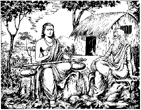
आज गंगामैया अति शान्त हैं। मेरे किनारे दो बड़े संत आये हैं। उनके सत्संगसे कथा-गंगा प्रकट होनेवाली है, जो कलियुगमें अनेक जीवोंका कल्याण करेगी। व्यासजी ब्रह्मर्षि हैं, नारदजी देवर्षि हैं। देवर्षि-ब्रह्मर्षिका मधुर मिलन होता है। कलियुगके जीवोंका कल्याण होगा—इसीलिये दो महान् सन्त मिले हैं।
नारदजीने कुशल-समाचार पूछा। व्यासजीने हाथ जोड़कर कहा—‘सभी आनन्द है।’ नारदजीने कहा—‘महाराज! आपका मुख देखनेसे ऐसा लगता है कि आप कुछ चिन्तामें हैं। क्या चिन्ता है?’ इसपर व्यासजी बोले—
त्वं पर्यटन्नर्क इव त्रिलोकी-
मन्तश्चरो वायुरिवात्मसाक्षी।
परावरे ब्रह्मणि धर्मतो व्रतै:
स्नातस्य मे न्यूनमलं विचक्ष्व॥
(श्रीमद्भा० १।५।७)
आप सूर्यकी भाँति तीनों लोकोंमें भ्रमण करते हैं और योगबलसे प्राणवायुके समान सबके भीतर रहकर अन्त:करणोंके साक्षी भी हैं। योगानुष्ठान और नियमोंके द्वारा परब्रह्म और शब्दब्रह्म दोनोंकी पूर्ण प्राप्ति कर लेनेपर भी मुझमें जो बड़ी कमी है, उसे आप कृपा करके बतलाइये।
व्यासजीने कहा—‘मेरी प्रशंसा मत करो। मुझसे कोई भूल हुई है। मेरी भूल मेरेको बताओ।’ सन्त-हृदय ऐसा सरल होता है।
संसारके इतिहासमें व्यासनारायणके समान कोई महान् ज्ञानी, कोई महान् बुद्धिमान् हुआ ही नहीं है, होगा भी नहीं। जगद्गुरु व्यासनारायण हैं। व्यासनारायणको ऐसा लगता है, जैसे उनसे कोई भूल हो गयी है। साधारण मानव अपनेको बड़ा सयाना समझता है, अकड़कर चलता है। व्यासनारायण कहते हैं—‘मेरी कुछ भूल हुई है। मेरी प्रशंसा मत करो। मेरी भूल बताओ। मैं उस भूलको सुधारूँगा।’
जो आपको आपकी भूल बताये, उसको बार-बार वन्दन करो। प्रशंसा करनेवाले बहुत मिलते हैं। भूल बतानेवाला मिलता नहीं है। जिसके हृदयमें आपके लिये बहुत प्रेम है, वही आपको आपकी भूल बताता है।
नारदजीने स्मित हास्य किया—‘कैसी भूल महाराज! आप तो भगवान्के स्वरूप हैं। आपसे क्या भूल हो सकती है? किंतु आपसे थोड़ी-सी भूल हुई है।’ प्रेममें पागल होकर आपने विस्तारपूर्वक भगवान् श्रीकृष्णकी लीला-कथा नहीं कही है। आपने पुराणोंमें ज्ञानयोग समझाया है, कर्मयोग समझाया है। कहीं-कहीं ज्ञानको बहुत महत्त्व दिया है। कहीं-कहीं कर्मको बहुत महत्त्व दिया है। ज्ञान और कर्म दोनों श्रीकृष्ण-प्रेमसे सफल होते हैं। प्रभुमें प्रेम नहीं है तो ज्ञानका क्या काम? जिसकी आँखमें भगवान्के लिये आँसू नहीं है...।
कितने ही लोगोंमें ज्ञान तो होता है, पर प्रेम वे पैसेके साथ करते हैं। हजार-दो हजारका नुकसान हो तो घण्टा-दो घण्टा अपने हृदयको जलाते हैं—मेरे दो हजार गये। अरे, तेरा जन्म हुआ था तो दो हजार तू लेकरके आया था? तेरा क्या गया?
ज्ञान तो है, पर प्रेम पैसेके साथ करते हैं। ज्ञानी होना कठिन नहीं है, प्रभु-प्रेमी होना बहुत कठिन है। कितने ही लोगोंमें ज्ञान तो होता है, पर कोई उनकी निन्दा करे तो उनको सहन नहीं होता। निन्दाका असर मनके ऊपर क्यों होता है—जगत्के साथ बहुत प्रेम करनेसे। जो परमात्माके साथ प्रेम करता है, उसके मनपर निन्दाका असर नहीं होता। ज्ञानी जब प्रभु-प्रेमी होता है...।
कर्मयोगी भी प्रभु-प्रेमी होता है, किंतु कर्म-मार्गमें दोष है। सत्कर्म करनेसे अभिमान बढ़ता है। दिनभर सत्कर्म करो, पर ऐसा मानो कि यह सब मेरे भगवान् करते हैं। प्रेमका परिणाम ही समर्पण है। दिनभर सत्कर्म करो, सत्कर्म भगवान्को अर्पण करो—मैंने कुछ नहीं किया है। सत्कर्म करनेके बाद मनमें अभिमान आये तो सत्कर्म भी पतन करता है। कर्मयोगी प्रभु-प्रेमी होना चाहिये। ज्ञानी प्रभु-प्रेमी होना चाहिये। प्रेमसे कर्म और ज्ञान सफल होते हैं। जहाँ कम प्रेम है, वहाँ जीव भी अपने स्वरूपको छिपाता है। जहाँ अतिशय प्रेम है, वहाँ जीव अपने स्वरूपको प्रकट करता है।
महाराज, अब बहुत ज्ञानकी जरूरत नहीं है। कलियुग आ रहा है—लोग बड़ी-बड़ी ज्ञानकी बातें करेंगे, पर एक-एक पैसेके लिये झगड़ा भी करेंगे। लोग बड़ी-बड़ी ब्रह्मज्ञानकी बातें करते हैं, किंतु प्रात:कालमें छ:-सात बजे उन्हें आदतके अनुसार चाय न मिले तो उनका ब्रह्मज्ञान कहाँ चला जाता है—कुछ खबर नहीं पड़ती है। ज्ञान तो है, पर प्रेम जगत्की तुच्छ वस्तुओंके साथ है...। अब बहुत ज्ञानकी जरूरत नहीं है। महाराज, अब आप प्रेम-कथा करो। श्रीकृष्ण प्रेमकी मूर्ति हैं। कोई भी जीव प्रेम किये बिना नहीं रह सकता है। सभी जीव प्रेम तो करते हैं, पर प्रेम जगत्के साथ करते हैं। ऐसी मधुर कथा करो कि श्रीकृष्णमें प्रेम हो जाय। श्रीकृष्णके सौन्दर्यमें आँख और मन फँस जाय, तभी जीवन सुधरता है, तभी पाप छूटता है। श्रीकृष्णलीलामें प्रेम-ही-प्रेम है।
श्रीकृष्णके साथ जो अतिशय प्रेम करता है, भगवान् कृपा करके उसकी वासनाका विष खींच लेते हैं। पूतनाने विष दिया, किंतु भगवान्ने उसको वासनारहित बना दिया। श्रीकृष्ण-लीलामें प्रेम-ही-प्रेम है। ऐसी मधुर कथा करो कि श्रीकृष्णमें प्रेम हो।
नारदजीकी आत्मकथा
नारदजी कहते हैं कि पूर्वजन्ममें मैं एक दासीका पुत्र था। मुझे आचार-विचारका भी ज्ञान नहीं था। मैं भील लोगोंके साथ खेलता था। चार महीनेतक मैंने सन्त-सेवा की, श्रीकृष्ण-कथा सुनी।
सन्त विषयानन्द नहीं देते हैं, सन्त भजनानन्द देते हैं। सन्त धन देकर सुखी नहीं करते हैं, सन्त बिगड़े हुए मनको सुखी करते हैं। सन्त वासनाका विनाश करते हैं। मेरे गुरुदेवने ऐसी कृपा की, मुझे भक्तिका रंग लगा। मैं भक्ति करने लगा। मुझे भगवान्का दर्शन हुआ। एक दासीका पुत्र इस जन्ममें देवर्षि हुआ है। आपके-जैसे संत भी मुझको मान देते हैं। कोई मुझे मान देता है, तब मेरे सद्गुरुदेव मुझे याद आते हैं। ये मान मुझे नहीं है, मेरे गुरुदेवको है। गुरुदेवने पाप छुड़ाया। गुरुदेवने कृपा करके वासनाका विनाश किया है। गुरुदेवने भक्तिका रंग लगाया।
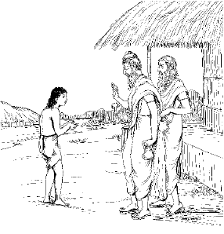
भक्ति सतत करनेसे जड़-चेतनकी गाँठ छूट जाती है। यह शरीर जड़ है, आत्मा चेतन है—दोनोंकी गाँठ पड़ गयी है। वेदान्त कहता है कि यह गाँठ सच्ची नहीं है। अरे, सच्ची हो या झूठी हो—यह गाँठ सभीको दु:ख देती है। शरीर जड़ है और आत्मा चेतन है। जड़-चेतनकी गाँठ सतत भक्ति करनेसे ही छूटती है, बहुत वेदान्तकी पुस्तक पढ़नेसे नहीं छूटती है। जो परमात्माके साथ प्रेम करता है, जो सतत भक्ति करता है—उसकी गाँठ छूटती है। मेरी जड़-चेतनकी गाँठ छूट गयी। भगवान्का स्मरण करते हुए मैंने मनुष्य-शरीरका त्याग किया। मैं दूसरे जन्ममें नारद हुआ।
एक बार मैं गोलोकधाममें गया था, जहाँ आनन्दमय परमात्मा नित्यलीला करते हैं। भगवान्के धाममें कालको प्रवेश नहीं मिलता। भगवान्के धाममें काल नहीं आ सकता। भगवान्का धाम आनन्दमय है। गोलोकधाममें स्वर्ण-सिंहासनपर श्रीराधाजीके साथ भगवान् विराजमान थे। मुझे दर्शनमें अतिशय आनन्द हुआ। आनन्दमें जीव नाचने लगता है। राधा-कृष्णका दर्शन करता हुआ मैं भी कीर्तन करते हुए नाचने लगा—
हरे कृष्ण हरे कृष्ण कृष्ण कृष्ण हरे हरे।
हरे राम हरे राम राम राम हरे हरे॥
सन्त-तत्त्व
नारायणं नमस्कृत्य नरं चैव नरोत्तमम्।
देवीं सरस्वतीं व्यासं ततो जयमुदीरयेत्॥
परमात्मा श्रीकृष्णके चरणमें वन्दन करनेसे जीवात्मा ज्ञानका अधिकारी होता है। श्रीकृष्ण-चरणमें वन्दन करना सरल नहीं है, बहुत कठिन है। कोई हाथसे, मस्तकसे वन्दन कर सकता है—हृदयसे वन्दन नहीं करता है। हृदयमें अभिमान भरा हुआ है। हृदयमें अनेक जन्मोंकी वासनाएँ पड़ी हैं। इससे हृदय कठिन हो जाता है।
मानवका एक स्वभाव है—मानव अपनेको निर्दोष समझता है। मानवमें बहुत-से दुर्गुण होते हैं। अपने दुर्गुण जीवको सद्गुण-जैसे ही लगते हैं। दूसरेकी छोटी-सी भूल भी जल्दी दिखती है। मानवको अपनी बड़ी भूल भी नहीं दिखती है। मानव अपने दोषको दोष माननेको तैयार नहीं है। अपने दोषको मानव गुण समझता है। जिसको किये हुए पापके लिये पश्चात्ताप हुआ है, जिसको अपने दोषका भान हुआ है— वही हृदयसे नमता है।
पापके लिये मानवको पश्चात्ताप नहीं होता है। कितने लोगोंको मनमें खटकता तो है कि यह पाप हुआ है, यह ठीक नहीं है, किंतु फिर वे मनको समझा देते हैं—‘सभी लोग पाप करते हैं, दूसरे लोग तो बहुत पाप करते हैं, उनसे तो मैं अच्छा हूँ।’
पापको कभी साधारण समझना नहीं। साधारण-सा पाप भी मनको बहुत बिगाड़ता है। साधारण पाप भक्तिमें विघ्न करता है। पापकी यादी (डायरी) बनाओ—मैंने कितने पाप किये हैं—पापको कभी भूलना नहीं और पुण्यको कभी स्मरण रखना नहीं।
आप कोई भी अच्छा काम करो तो उसकी समाप्तिमें एक संकल्प किया जाता है—अनेन कर्मणा भगवान् परमेश्वर: प्रीयताम्, न मम। हरि: ॐ तत्सत् श्रीकृष्णार्पणमस्तु। ‘न मम’ बोलकर संकल्पका जल छोड़ना होता है। इसका अर्थ यह होता है कि मैंने कुछ पुण्य किया ही नहीं है। आपके हाथसे जो कुछ अच्छा काम हुआ है, उसको भूल जाओ। पुण्यको कहनेसे पुण्यका नाश होता है। पुण्यका स्मरण रखनेसे अभिमान बढ़ता है। पापका स्मरण रखनेसे अभिमान धीरे-धीरे मरता है। जितने पाप किये हैं, उन्हें लिखकर रखो। पापके लिये पश्चात्ताप हो और रोता हुआ मानव भगवान्के चरणमें वन्दन करे तो भगवान् दया करते हैं। भगवान् बड़े दयालु हैं। जिसको किये हुए पापके लिये पश्चात्ताप होता है, वही हृदयसे नमता है। जो हृदयसे नमता है, उसीके ऊपर मालिक कृपा करते हैं।
जीव ज्ञानका अधिकारी तब होता है, जब बार-बार भगवान्को वन्दन करता है। वन्दन करनेमें आपका क्या जाता है—एक पैसेका खर्च नहीं है, शरीरको जरा भी त्रास नहीं है। ऐसी आदत डालो कि दो-तीन मिनट हों—तो अपने भगवान्को याद करो। जिस देवकी आप पूजा करते हैं, उस देवका मनसे दर्शन करो। दर्शनके बाद वन्दन होता है। जिसको भगवान्का स्वरूप दिखता ही नहीं है, वह वन्दन किसका करेगा। पहले दर्शन करो, फिर वन्दन करो। बार-बार वन्दन करनेसे भगवान्को दया आती है, भगवान् कृपा करते हैं—जीव ज्ञानका अधिकारी होता है।
ज्ञान, मान और धन—ये तीन वस्तुएँ ऐसी हैं कि सुपात्रको मिलें, तभी अच्छा है। जो लायक नहीं है, उसको ज्ञान मिले, तो उसका पतन हो जायगा। अयोग्यको ज्ञान मिलनेसे उसका अभिमान बढ़ता है। ज्ञान तो अभिमानको मारनेके लिये है। अभिमानको बढ़ानेके लिये ज्ञान नहीं है। किसीको मूर्ख समझनेके लिये ज्ञान नहीं है। किसीका तिरस्कार करनेके लिये ज्ञान नहीं है। किसीका दोष देखनेके लिये ज्ञान नहीं है। सर्वमें भगवान्का दर्शन करनेके लिये ज्ञान है। ज्ञान अभिमानको मारनेके लिये है। जो लायक नहीं है, उसको ज्ञान मिलनेसे अभिमान बढ़ जाता है। वह दूसरोंको तुच्छ समझने लगता है।
कितने ही ज्ञानी लोग ऐसे होते हैं, जो ‘ब्रह्म’ बने बैठे ही रहते हैं—हम ब्रह्म हैं। यह भूल है। जगत् जिसको ब्रह्मरूपमें दिखता है, सबमें जिसको परमात्माका दर्शन होता है—उसीको आत्मस्वरूपमें परमात्माका अनुभव होता है। जबतक जगत् ब्रह्मरूपसे नहीं दिखता है, तबतक आत्मस्वरूपमें परमात्माका अनुभव नहीं होता है। जगत्को ब्रह्म-भावसे देखो।
जो लायक नहीं है, उसको मान मिले—यह अच्छा नहीं है। वह मान पचा सकता नहीं है। उसको ऐसा लगता है कि लोग मुझे मान देते हैं, मैं बड़ा सयाना हूँ। अयोग्यको मान मिले, यह अच्छा नहीं है। जो लायक नहीं है, उसको धन मिले तो वह धनका दुरुपयोग करेगा। धनका जो दुरुपयोग करता है, धन उसको मारता है। पैसा विष है। पैसा पतनका कारण है। पैसा अमृत भी है—वह परमात्माके चरणोंमें ले जाता है। पैसेका सदुपयोग हो तो पैसा लक्ष्मीका स्वरूप है। लक्ष्मीजी कृपा करती हैं, तब नारायणकी गोदमें बैठाती हैं। जो लायक नहीं है, उसको धन मिले—यह अच्छा नहीं है।
जिसको भूख लगी है, उसीके लिये भोजन अमृत है। जिसके पेटमें बहुत अजीर्ण है, उसके लिये अन्न विषके समान है। सुपात्रको ज्ञान मिले—यही अच्छा है। अयोग्यको ज्ञान मिलनेसे उसका अभिमान बढ़ता है। अभिमान बढ़नेपर सभी दोष वहाँ आ जाते हैं। सभी दोषोंका बाप अभिमान है। अभिमानके बिना पाप नहीं होता है। पापके पीछे अभिमान है।
भगवान्के चरणोंमें बारम्बार वन्दन करो, आपका कल्याण होगा। पापको याद करो—हृदय पिघलेगा, आँख थोड़ी गीली हो जायँगी—मैंने पाप किया है, मैं लायक नहीं हूँ। भगवान्को वन्दन करोगे तो प्रभुको दया आयेगी।
प्रथम स्कन्धको आचार्योंने अधिकार-लीला माना है। जिसका अधिकार सिद्ध होता है, उसको सन्त मिलते हैं। सन्तके पास सन्त आते हैं, दुर्जनके घरमें सन्त नहीं जाते हैं। कदाचित्, जायँ—तो दुर्जनको सन्तमें दोष ही दिखायी देते हैं। दुर्जन उसको कहते हैं, जिसमें दोष ज्यादा है। सज्जन उसको कहते हैं, जिसमें सद्गुण ज्यादा है। जिसमें दोष ज्यादा है, उसको सभीमें दोष ही दिखायी देते हैं। जिस मानवमें गुण ज्यादा है, उसको सभीमें गुण ही दिखायी देते हैं। दुर्जनको सन्तका दर्शन जल्दी नहीं होता है। कदाचित् हो तो उसको सन्तमें भी दोष दिखायी देता है—महाराज क्रोध बहुत करते हैं, क्रोधी हैं।
सम्भव है, किसी साधु-सन्तको क्रोध आता हो। हमारे-जैसे संसारी मानवके क्रोधमें और सन्तके क्रोधमें बहुत अन्तर है। संसारी मानव अपना स्वार्थ सिद्ध करनेके लिये क्रोध करता है, जबकि सन्त दूसरोंका कल्याण करनेके लिये क्रोध करते हैं। मानवके क्रोधमें वैर है, द्वेष है और सन्तोंके क्रोधमें प्रेम भरा हुआ है। सन्त प्रेमसे क्रोध करते हैं। ऐसा देखा जाता है कि सन्त जिसपर क्रोध करते हैं, उसका कल्याण हो जाता है। सन्त जिसको अपना समझते हैं, जिसका कल्याण करनेकी उनको भावना होती है—उसीके ऊपर क्रोध करते हैं। सन्तोंमें भी दोष होता है। इस संसारमें निर्दोष एक परमात्मा श्रीकृष्ण हैं, निर्दोष भगवान् श्रीराम हैं, भगवान् शंकर निर्दोष हैं। सभीमें एक-आध दोष होता है। शास्त्रोंमें ऐसा लिखा है—जो मल-मूत्रसे भरे हुए शरीरमें रहता है, उसने बड़ा भारी पाप किया है। उसने महान् भूल की है—इसीलिये मल-मूत्रसे भरे हुए शरीरमें वह आया है। सन्तोंमें एक-आध दोष होता है, किंतु सन्तोंमें अनेक सद्गुण होते हैं। दुर्जनको सन्तमें दोष दिखता है। जो अपनेको बड़ा सयाना समझता है, ऐसा मानव भगवान्में भी ‘भूल’ खोजता है। कितने ही लोग ऐसे होते हैं, जो अपनेको बड़ा सयाना समझते हैं—मैं सब कुछ जानता हूँ, मैं सब पढ़ा हूँ।
एक गाँवमें बहुत पढ़े-लिखे साहब मिले थे। वे अभिमानमें बोलते थे—‘मैं सब जानता हूँ, मैंने रामायण पढ़ी है। रामायणमें ऐसा वर्णन है कि सीताजी जब सगर्भा थीं, तब रामचन्द्रजीने सीताजीका त्याग किया। यह स्त्री-जातिका अपमान किया है। यह रामजीकी भूल है—ऐसा नहीं करना चाहिये था।’
श्रीराम निर्दोष हैं। श्रीराम सर्वसद्गुण-सम्पन्न हैं। रामकी लीलाका विचार मानव अपनी क्षुद्र बुद्धिसे करता है। कितने लोग तो ऐसा समझते हैं कि मेरी बुद्धिके अनुसार भगवान् सब कुछ करें तो मैं भगवान्को मानूँ। मानवकी बुद्धि बहुत बिगड़ी हुई है।
श्रीसीताराम निर्दोष हैं। श्रीसीताराम सर्वसद्गुण-सम्पन्न हैं। श्रीसीताराम परमात्मा हैं। रामायणमें कहीं सीता माँने ऐसा कहा नहीं है कि प्रभुने अच्छा नहीं किया है। श्रीसीता माँ अनेक बार ऐसा बोली हैं कि मेरे ऊपर प्रभुका बहुत प्रेम है, इसीलिये मेरा त्याग किया है। मेरे राम निर्दोष हैं। मेरे राम जो कुछ करते हैं, वह सब कुछ उचित ही होता है।
श्रीराम किसी रानीको प्रसन्न करनेके लिये राजा नहीं हुए। राजाकी गद्दी प्रजाको प्रसन्न करनेके लिये है। श्रीराम राजाधिराज हैं। एक बाजूमें अयोध्याकी प्रजा है, एक बाजूमें श्रीसीताजी हैं—राम मध्यमें हैं। रामचन्द्रजी विचार करते हैं—प्रजाने मुझे राजा बनाया है। प्रजाको सुखी करनेके लिये राजाकी गद्दी है—
स्नेहं दयां च सौख्यं च यदि वा जानकीमपि।
आराधनाय लोकस्य मुञ्चतो नास्ति मे व्यथा॥
राजाकी गद्दी सुख भोगनेके लिये नहीं है। राजाकी गद्दी प्रजाको सुखी करनेके लिये है। राम सब कुछ जानते हैं—श्रीसीताजी निर्दोष हैं। श्रीसीताजी महान् पतिव्रता हैं—यह जानते हुए रामजीने त्याग किया है। रामचन्द्रजीने स्त्री-धर्मको गौण किया और राज्य-धर्मको महत्त्व दिया है। राम राजाधिराज हैं।
मानवकी बुद्धि बिगड़ी हुई है, क्षुद्र बुद्धि है। वह अपनी क्षुद्र बुद्धिसे प्रभुकी मंगलमय लीलाका विचार करता है। उसको भगवान्की लीलामें दोष दिखता है। सन्तोंमें उसको दोष दिखता है। सन्तोंमें बहुत सद्गुुण होते हैं—एक-आध दोष होता है।
शास्त्रोंमें ऐसा लिखा है कि जिसका मन अति शुद्ध है, वह भगवान्से अलग नहीं रह सकता है। मन मलिन है, इसीलिये भगवान्से अलग है। अतिशुद्ध मन भगवान्में मिल जाता है। तन और मन मलसे ही जीवित रहते हैं। पेटमें जरा भी मल न रहे तो शरीर गिर जायगा। मलका बल होता है। शरीर मलसे टिकता है, मन भी मलसे टिकता है। तन और मन अतिशुद्ध हो जायँ तो ये रहेंगे ही नहीं। मन भगवान्में मिल जायगा।
सन्तोंमें एक-आध दोष होता है। सन्तोंके हाथसे कभी-कभी भगवान्को अपना कोई काम करानेकी इच्छा होती है। सन्त पूर्ण निर्दोष हो जायँ तो कुछ नहीं कर सकते। सन्तोंमें एक-आध दोष भगवान् रखते हैं।
माताएँ जब घरसे बाहर जाती हैं तो अपने बालकको शृंगारती हैं। यद्यपि बालकको शृंगार करनेकी इच्छा नहीं होती है। बालक रोता है तो भी माँ उसको शृंगारती है। बालकको शृंगारनेमें माँको सुख होता है। माँ अपने बालकको शृंगारनेके बाद प्रेमसे बालकके मुखको देखती है—बहुत सुन्दर लगता है, कैसा दिखता है! अब बाहर जाना है, किसीकी इसको नजर न लगे। जो माँ अपने बच्चेको शृंगारती है, वही माँ उसके गालमें, ललाटमें काजलका टीका भी लगा देती है—इसको नजर न लगे। माँ जिस प्रकारसे अपने बच्चेको सँभालती है, बच्चेकी चिन्ता रखती है—भगवान् भी उसी तरह सन्तोंको सँभालते हैं। भगवान् सन्तोंकी चिन्ता रखते हैं। कोई दोष न रहे तो उसको नजर लग जायगी। नजर न लगे, इसीलिये भगवान् साधु-सन्तोंमें एक-आध दोष रखते हैं। सन्तोंमें अनेक सद्गुण होते हैं। भागवतकी कथा कहनेवाला वक्ता और कथा सुननेवाला श्रोता सन्त बनें—तभी कथा सफल है।
सन्त बनो। किसीके दोष काहेको देखते हो—अपने दोषको देखो। थोड़ी अन्दर नजर करो—मैं कैसा हूँ—अन्दर नजर करनेपर आपके ध्यानमें आयेगा कि मेरे मनके अन्दर ‘काम’ घर करके बैठा है। मेरे मनसे काम नहीं निकलता है। मेरे मनमें क्रोध भरा हुआ है, मेरे मनमें मत्सर है। मुझमें दोष कहाँ कम है—दूसरोंके दोष देखनेकी क्या जरूरत है—अपनेमें बहुत दोष हैं।
आपको सन्त होना है तो एक काम करो—आप सन्त हो जाओगे। दूसरेके गुणोंको देखो और अपने दोषोंका स्मरण रखो—आप सन्त हो जाओगे। दृष्टिको गुणमय बनाओ। सन्त होनेके लिये घर छोड़नेकी जरूरत नहीं है। घर छोड़नेसे ही क्या मानव सन्त होता है? मीराबाई तो राजमहलमें रहती थी। बड़े-बड़े साधु, सन्त, संन्यासी, महात्मा मीराबाईका दर्शन करनेके लिये—सत्संग करनेके लिये राजमहलमें जाते थे। बँगलेमें रहकर भी मानव सन्त हो सकता है। सन्त होनेके लिये घर छोड़ना ही पड़ता है—ऐसा नहीं है। कितने ही लोग एक घर छोड़ते हैं और दूसरे घरमें ममता रखते हैं। एक घर छोड़ा और दूसरेमें फँस गये—उसको क्या मिला? घर छोड़ना ही चाहिये—ऐसा नहीं है।
सन्त होनेके लिये प्रवृत्ति छोड़नेकी भी जरूरत नहीं है। जो प्रवृत्ति छोड़कर बैठा रहता है—वह सन्त है—यह भूल है। दिनभर आदमी मिठाई नहीं खा सकता है। सर्वकाल भक्ति करना बड़ा कठिन है। जो प्रवृत्ति छोड़कर बैठा है, वह सर्वकाल भक्ति नहीं कर सकता, वह पाप करता है। प्रवृत्ति छोड़नेकी जरूरत नहीं है। प्राचीनकालमें जितने साधु-सन्त-महात्मा हुए हैं, वे सब प्रवृत्ति करते थे। सन्त ऐसा मानते हैं कि किसीका मुफ्तका नहीं खाना चाहिये। जो दूसरोंका खाता है, उसको अपने पुण्यसे थोड़ा अंश उसको देना पड़ता है।
गोरा कुम्हार बड़े सन्त थे। मिट्टीके बर्तन बनाते थे। विट्ठल... विट्ठल... विट्ठल... कीर्तन करते हुए मिट्टीके बर्तन बनाकर बाजारमें बेचनेके लिये ले जाते थे। नामदेव महाराज महान् सन्त थे। नामदेव महाराज दर्जीका काम करते थे।
प्रवृत्ति छोड़नेसे मानव सन्त नहीं होता। प्रवृत्ति करो, पाप छोड़ो। पाप छोड़कर जो प्रवृत्ति करता है, वह सन्त है। सन्त बननेके लिये प्रवृत्ति छोड़नेकी जरूरत नहीं है, पाप छोड़नेकी जरूरत है।
कितने लोग ऐसा समझने लगे हैं कि पैसा कमाना है तो पाप करना ही पड़ेगा—पाप किये बिना पैसा नहीं मिलता है। भागवतमें ऐसा लिखा है कि पैसा जो प्रारब्धमें है, वही मिलेगा। पाप करनेसे पैसा मिलता है—मानव ऐसा समझता है कि आज मैं झूठ बोला, इसीलिये मुझे लाभ हुआ—भूल है। आज तुम्हें लाभ होनेवाला ही था। झूठ बोलनेसे लाभ हुआ नहीं है। आज लाभ होनेवाला ही था। झूठ बोलनेका पाप तेरे मस्तकमें आया। झूठ बोलनेसे पैसा नहीं मिलता है। अरे, जिसके भाग्यमें पैसा लिखा नहीं है, वह हजार बार झूठ बोले तो क्या उसको पैसा मिलेगा? पाप छोड़ दो। प्रवृत्ति करो। आपको पैसा मिलेगा। आपको सुख मिलेगा।
भगवान् बड़े दयालु हैं। भगवान् तो नास्तिकको भी पैसा देते हैं। जो ऐसा बोलता है कि मैं ईश्वरको नहीं मानता—उसको भी भगवान् धन देते हैं, मान देते हैं, सुख देते हैं। आप सब लोग वैष्णव हो। आप सब प्रभुके प्यारे हो। आपको भगवान् धन देंगे, आपको सुख मिलेगा। प्रभुमें विश्वास रखो। प्रवृत्ति परमात्माका स्मरण करते हुए करो। प्रवृत्ति परमात्माके लिये करो। पाप छोड़कर जो प्रवृत्ति करता है, वह गृहस्थ होनेपर भी सन्त है।
सन्त होनेके लिये कपड़ा बदलना पड़ता है—ऐसा भी नहीं है। कपड़ा बदलनेसे क्या मानव सन्त हो जाता है? सफेद कपड़ेमें भी मानव सन्त हो सकता है। सन्त तन और धनसे भी मनकी चिन्ता ज्यादा रखते हैं। ‘संसारी’ उसको कहते हैं, जो अपने तनको बहुत सँवारता है। जो धनको सँवारता है—वह ‘संसारी’ है। तन और धनसे ज्यादा जो मनको सँवारता है, वह सन्त है।
यह शरीर ऐसा है कि इसको आप बहुत सँवारोगे तो भी यह बिगड़ जायगा, रोगी हो जायगा। यह शरीर ऐसा है—आप इसकी बहुत चिन्ता रखोगे तो भी एक दिन इसे छोड़ना ही पड़ेगा। जो तन छोड़ना है, उसकी तो मानव चिन्ता रखता है; जो मन मरनेके बाद भी साथमें जानेवाला है, उसकी चिन्ता जीव नहीं करता। तन बदलता है, मन कभी बदलता नहीं है। पूर्वजन्मोंका मन लेकर ही जीवात्मा इस शरीरमें आया है।
पूर्वजन्मका शरीर मर गया है। पूर्वजन्मका मन लेकर जीव इस शरीरमें आया है। मन बदलता नहीं है। जो मन मरनेके बाद भी साथमें जानेवाला है, उस मनकी बहुत चिन्ता रखो। जिसका मन बहुत बिगड़ा हुआ है, उसका यह जन्म तो बिगड़ेगा—दूसरा जन्म भी बिगड़ जायगा। दूसरे जन्ममें यही मन साथमें जानेवाला है। मानव कपड़ेकी चिन्ता रखता है—आजकलके बहुत-से लोग जूतेकी बहुत चिन्ता रखते हैं, बहुत सँभालते हैं। कितनी माताएँ ऐसी होती हैं, जो अचारको बार-बार देखती हैं—अचार बिगड़े नहीं। एक तुच्छ वस्तुकी मानव चिन्ता रखता है, अपने मनकी चिन्ता नहीं रखता। कपड़ा बिगड़ जाय तो दूसरा मिलेगा। मन बिगड़नेपर, कोई लाख रुपया भी दे तो मन बाजारमें दूसरा नहीं मिलेगा। अपने मनको सँभालो—मन बिगड़े नहीं। मन पाप करे तो कहो—‘मार पड़ेगी।’
आप मालिक हो, मन आपका नौकर है। मन बड़ा तूफानी है, गड्ढेमें फेंक देता है, बहुत दु:ख देता है। मनको समझाओ—‘तुम्हें मार पड़ेगी। तू बहुत दुखी होगा। काहेको ऐसा खराब विचार करता है?’
मनको बार-बार समझानेसे मन सुधरता है। दूसरेको सुधारनेके प्रपंचमें मत पड़ो। अपने मनको सुधारो। कोई मानव दूसरे मानवको सुधार नहीं सकता। भगवान् जिसके ऊपर कृपा करते हैं, भगवान्को जब दया आती है, तभी मानव सुधरता है। आपके कहनेसे कोई मानव सुधरनेवाला नहीं है। अपने मनको समझाओ—तुम्हें मार पड़ेगी, तू दुखी होगा। ऐसा खराब विचार क्यों करता है—ऐसा समझानेसे मन धीरे-धीरे सुधरता है।
आपका मन दूसरे किसीको दिखता नहीं है। आपका मन आपको ही दिखता है। आपके मनको दूसरा कोई सुधार नहीं सकता है। आपके मन को आपको ही सुधारना पड़ेगा। मनका ऐसा स्वभाव है कि मनको जब भय लगता है, तब मन पाप छोड़ता है। भय लगता है, तब भक्ति भी करता है। पुराणोंमें इसीलिये नरककी कथा आती है। ऐसा जो पाप करेगा, वह ऐसे नरकमें जायगा—उसको ऐसी मार पड़ेगी। नरककी कथा इसीलिये वर्णन की है। भयसे भी मानव पाप छोड़े।
मानव बहुत पुस्तक पढ़नेसे सुधरता है—पुस्तक पढ़नेसे शब्द-ज्ञान बढ़ता है। वह बातें करेगा, पर पाप नहीं छोड़ेगा। पाप छोड़ना बड़ा कठिन है। जब मार पड़ती है, मानवको भय लगता है—तभी वह पाप छोड़ता है। मनको समझाओ—तुम्हें मार पड़ेगी, तू दुखी होगा। काहेको ऐसे खराब विचार करता है—पाप करके किसको शान्ति मिली है—मनको मृत्युका भय बताओ—मरना है।
भगवान् श्रीशंकराचार्य स्वामीको आश्चर्य होता है—
यद्यपि लोके मरणं शरणम्।
तदपि न मुञ्चति पापाचरणम्॥
भज गोविन्दं भज गोविन्दं गोविन्दं भज मूढमते!
मृत्यु मस्तकमें है। मरणका निवारण अशक्य है तो भी मानव पाप नहीं छोड़ता—यही आश्चर्य है। मानव देखता है—वह मर गया, दूसरा मरनेकी तैयारीमें है। मानव कभी ऐसा विचार नहीं करता है कि मैं मरनेवाला हूँ, मुझे मरना ही होगा। मरण अनिवार्य है। मरणका निवारण कोई नहीं कर सकता। मानव जानता है कि मैं मरनेवाला हूँ तो भी पाप करता है—यही बड़ा आश्चर्य है।
कितने लोग ऐसा समझते हैं कि तक्षकनाग राजा परीक्षित्को काटनेके लिये गया था। द्वादश स्कन्धके १२वें अध्यायमें वर्णन किया है—तक्षकनाग कालका स्वरूप है। काल—तक्षक किसीको भी छोड़ता नहीं है। सभीको काटनेके लिये जाता है। काल—तक्षकको किसीपर भी दया नहीं आती है। सातवें दिनमें काल—तक्षक मारनेके लिये आनेवाला है। सातवें दिनमें मरण होनेवाला है। घबराना नहीं—अभी तो आपको बहुत देर है—सातवें दिन मैं मरूँगा। थोड़ा-सा विचार करो तो ध्यानमें आयेगा—वार सात ही होते हैं, आठवाँ कोई वार नहीं है। रविवार, सोमवार, मंगलवार, बुधवार, बृहस्पतिवार, शुक्रवार, शनिवार—इन सात वारोंमें मेरे लिये भी कोई वारका निश्चय हो गया है। अमुक वारमें मरण हो जायगा। जब जन्म हुआ—उसी समय मरणका कारण, मरणकी जगह, मरणका समय—इन तीनका निर्णय हुआ। इन तीनके निर्णय होनेके बाद जीव माँके पेटसे बाहर आता है। मरणकी जगह पक्की हो गयी है—यह मिट्टी कहाँ मिलनेवाली है—यह मिट्टीका पुतला मिट्टीमें मिलनेवाला है। मरणकी जगह नक्की हो गयी है। मरणका कारण नक्की हुआ है—अमुक कारणसे मरेगा, अमुक समयमें मरेगा। मरणका समय, मरणका कारण, मरणकी जगह—इन तीनका निर्णय होनेके बाद जन्म होता है—
मृत्युर्जन्मवतां वीर देहेन सह जायते।
अद्य वाब्दशतान्ते वा मृत्युर्वै प्राणिनां ध्रुव:॥
तक्षकनागको किसीपर दया नहीं आती है। तक्षकनाग सभीको काटने आनेवाला है। सातवें दिन मरना है। मरनेका कोई वार पक्का हुआ है। मरणका स्मरण करो। मरणके दु:खको याद करो। किसीका मरना आपने देखा होगा। मरणके समयमें जीव बहुत व्याकुल होता है। शास्त्रोंमें ऐसा लिखा है—हजार बिच्छू एक समयमें जब काटते हैं, तब जो दु:ख होता है—वैसा दु:ख शरीर छोड़नेके समयमें जीवको होता है। एक बिच्छू काटता है, तब क्या दु:ख होता है—सभी जानते हैं। हजार बिच्छू जब एक ही समयमें दंश करते हैं—वैसा दु:ख मरते समय होता है। अन्तकालमें महान् दु:ख है।
जन्म दु:खं जरा दु:खं जाया दु:खं पुन: पुन:।
अन्तकाले महादु:खं तस्माज्जागृहि जागृहि॥
ऐसा सुना है—जिसको फाँसीकी सजा होनेवाली होती है, तब दो-तीन घण्टा पहले उससे पूछा जाता है—‘मिठाई खाना है—किसीसे मिलना है?’ जो जानता है कि दो-तीन घण्टेके बाद मैं मरनेवाला हूँ, मुझे फाँसीकी सजा होनेवाली है—वह अन्दरसे बहुत घबराता है। उसको कोई अच्छी मिठाई दे तो उसको खानेकी इच्छा नहीं होगी। उसको बोलनेकी इच्छा नहीं होती है—मरण समीपमें है।
गीताजीमें भगवान्की आज्ञा है—जन्ममृत्युजराव्याधिदु:खदोषानुदर्शनम्। —अर्जुन! जन्मका दु:ख, वृद्धावस्थाका दु:ख और मरणका दु:ख कभी भूलना नहीं। प्रात:कालमें उठनेके बाद एक बार विचार करो—कदाचित् आज यमदूत मुझे पकड़नेके लिये आयें—आज मेरा मरण हो तो मुझे कैसी गति मिलेगी—आज किसीको यमदूत पकड़नेके लिये आनेवाले नहीं हैं—घबराना नहीं। थोड़ा विचार करो। कदाचित् आ जायँ तो मैं स्वर्गमें जाऊँगा कि नरकमें जाऊँगा—मेरी कैसी गति होगी—प्रात:कालमें उठनेके बाद मरणके दु:खको याद करो।
बहुत-से लोग सबेरे उठनेके बाद पहला विचार करते हैं—भात बनायें कि कढ़ी बनायें—खानेका जो बहुत विचार करता है, उसका मन बिगड़ता है। भूख लगनेपर भगवान्को भोग लगाओ, सादा भोजन करो। भोजन करना पुण्य है। भोजनका चिन्तन करनेसे मन बहुत बिगड़ता है। भोजनके स्वादमें जिसका मन फँसा हुआ है, वह भक्ति नहीं कर सकता है। स्वाद भक्तिका शत्रु है।
कितने लोग ऐसे होते हैं कि उनका मन रसोईघरसे बाहर निकलता ही नहीं है। वहींका वहीं घूमता रहता है। क्या खाऊँ—सेर-दो-सेर सब्जी लेनी हो तो कितने लोग आधा घण्टे बाजारमें घूमते हैं। अपनेको बड़ा सयाना समझते हैं कि आधे घण्टे मैंने बाजारमें देखा है। एक साधारण तुच्छ वस्तुका तूने आधे घण्टे विचार किया। तू भगवान्की भक्ति कब करेगा—भोजनका विचार छोड़ो। भोजनके स्वादमें मन फँसे नहीं। सावधान रहो तो आपको भक्तिका—भगवान्का आनन्द मिलेगा। जिसका मन भोजनके स्वादमें फँसा हुआ है, उसको भक्तिका आनन्द नहीं मिलेगा।
प्रात:कालमें परमात्माका चिन्तन करो। मरणका दु:ख जो याद करता है—उसके हाथसे पाप नहीं होता है। साधारण मानव जब पाप करता है, तब ऐसा समझता है कि मैं मरनेवाला नहीं हूँ। मुझे कोई पूछनेवाला नहीं है—ऐसा समझ करके पाप करता है। मुझे सजा होनेवाली है, मुझे भगवान् देख रहे हैं—मैं क्या करता हूँ, क्या बोलता हूँ—ऐसा विचार रखनेवालेके हाथसे पाप नहीं होता है। पाप छोड़ो। मनको भय बताओ, मनको समझाओ—आप सन्त हो जाओगे। जो पाप छोड़ता है—वह सन्त है। जो अपने मनको सँभालता है—वह सन्त है। जो दूसरेके गुणको देखता है, अपने दोषका स्मरण रखता है—वह सन्त है। सन्तके घरमें सन्त आते हैं।
भागवतके अधिकारी वक्ता और श्रोता
प्रथम स्कन्ध अधिकार-लीलाका है। दो प्रकरण परिपूर्ण हुए हैं। प्रथम स्कन्धमें आचार्योंने तीन प्रकरण माने हैं—उत्तम अधिकार प्रकरण, मध्यम अधिकार प्रकरण, हीन अधिकार प्रकरण।
सूतजी हीन वक्ता हैं और शौनकमुनि हीन श्रोता हैं। व्यास और नारद मध्यम वक्ता और मध्यम श्रोता हैं। शुकदेवजी महाराज उत्तम वक्ता हैं और परीक्षित् उत्तम श्रोता हैं। सूतजी हीन वक्ता हैं—इसका अर्थ वह हलके हैं, ऐसा नहीं है। हमसे तो बहुत-बहुत श्रेष्ठ हैं। शुकदेवजी महाराजकी दृष्टिसे विचार करनेपर ऐसा लगता है कि शुकदेवजीमें ज्ञान, वैराग्य, भक्ति परिपूर्ण है। उनकी कक्षासे नीचे उतरते हुए सूतजी ज्ञानी तो हैं, उनका अभिमान अभी मरा नहीं है। ज्ञानी जब भगवद्-भक्त होते हैं—तभी अभिमान मरता है। भक्तिके बिना अभिमान नहीं मरता है। सूतजी जब कथा कहते हैं तो उनको ऐसा लगता है कि जो मेरी कथा सुन रहे हैं, उन श्रोताओंसे मैं कुछ ज्यादा समझता हूँ। मैं बड़ा हूँ, मैं श्रेष्ठ हूँ। मैं उनको उपदेश करता हूँ। किसीको हलका समझनेके लिये ज्ञान नहीं है। सूतजीमें ज्ञानका अभिमान है। कथामें दो-चार बार प्रकट भी हुआ है। अभिमान शब्दसे बाहर निकलता है। सूतजीमें वैराग्यका अंश कम है। इसीलिये उनको हीन वक्ता माना गया है। हमसे तो बहुत श्रेष्ठ हैं। व्यास और नारदजी मध्यम वक्ता और मध्यम श्रोता हैं।
व्यासजी और नारदजीमें ज्ञान परिपूर्ण है, भक्ति परिपूर्ण है, अभिमान नहीं है। व्यासजी और नारदजीमें वैराग्यका अंश थोड़ा कम है। शुकदेवजीमें ज्ञान, वैराग्य और भक्ति तीनों परिपूर्ण हैं। इसीलिये शुकदेवजीको उत्तम वक्ता माना है।
व्यास और नारद समाज-सुधारक सन्त हैं। व्यास और नारदजीमें वैराग्यका अंश थोड़ा कम है। शुकदेवजीमें ज्ञान, वैराग्य और भक्ति तीनों परिपूर्ण हैं। इसीलिये शुकदेवजीको उत्तम वक्ता माना है। व्यास और नारद समाज-सुधारक सन्त हैं। जिसको समाज सुधारनेकी इच्छा है, उसको भगवान्को थोड़ा भूल करके समाजका चिन्तन करना ही पड़ता है। जिसको समाज सुधारनेकी इच्छा है...। समाजको सुधारनेकी भावना भक्तिमें विघ्न करनेवाली है। यद्यपि भावना अच्छी है कि समाज सुधरे— भक्तिका प्रचार हो। जिसको समाज सुधारनेकी इच्छा है, उसको हलके लोगोंका संग करना ही पड़ता है।
आप कभी प्याज-लहसुन नहीं खाते हैं—ऐसा मुझे लगता है। जो प्याज खाता है, उसके साथ आप बैठो तो दुर्गन्ध आयेगी। जिसको समाज सुधारनेकी इच्छा है, उसको दुर्जनका स्मरण करना पड़ता है। यह लायक है—यह लायक नहीं है। इसको पाँच दो, उसको दस दो, यह सज्जन है, यह दुर्जन है—ऐसा विचार करना ही पड़ता है। समाज सुधारनेकी भावना भक्तिमें विघ्न करनेवाली है। साधारण मानव समाजको क्या सुधार सकता है?
एक भाई कहते थे—हमने लोगोंको सुधारनेके लिये सब किया। अरे, लोगोंको कोई क्या सुधार सकता है—जिसने अपना घर सुधारा नहीं, जिसने अपना स्वभाव सुधारा नहीं। जो घरके लोगोंको नहीं सुधार सका, वह दूसरोंको क्या सुधारेगा—समाज सुधारनेवाले सन्तोंको वैकुण्ठसे भगवान् भेजते हैं—अब आपकी बहुत जरूरत है, वहाँ जाओ। भगवान् भेजते हैं। सन्त-महात्मा समाजको सुधार सकते हैं। साधारण मानव—जिसने अपने मनको सुधारा नहीं, जिसने अपना स्वभाव सुधारा नहीं, जो घरके लोगोंको सुधार नहीं सकता—वह समाजको क्या सुधारेगा—समाजको सुधारनेके प्रपंचमें मत पड़ो। अब समाज नहीं सुधरेगा—ऐसा लगता है। जीवन ही ऐसा हो गया है। मानव व्यक्तिगत अपने जीवनको सुधार सकता है। आप समाजके एक अंग हो। आप अपने जीवनको सुधारो तो समाजका एक अंग सुधरेगा।
व्यास और नारदजीको समाज सुधारनेकी इच्छा है—अच्छी है। श्रीराम, श्रीकृष्ण जगत्में आये तो भी समाज नहीं सुधरा। जो काम भगवान् नहीं कर सकते—वह काम जीव क्या करेगा—अपने मनको सुधारो, अपने घरके लोगोंको सुधारो। आपके जो पड़ोसी हैं, उनको सुधारो।
व्यास और नारदजीमें ज्ञान परिपूर्ण है, भक्ति परिपूर्ण है—अभिमान नहीं है। उनको समाज सुधारनेकी भावना है; पर वैराग्यका थोड़ा अंश कम है, इसलिये उनका नम्बर दूसरा दिया गया है। शुकदेवजीमें परिपूर्ण वैराग्य है, परिपूर्ण ज्ञान है, परिपूर्ण भक्ति है। शुकदेवजी महाराजकी कथासे बहुतोंका जीवन सुधरा है। शुकदेवजी महाराजको खबर नहीं है कि जगत्में कुछ बिगड़ा है।
एक ब्राह्मणने सूर्यनारायणकी बहुत प्रशंसा की। सूर्यनारायणको वन्दन करके कहता है—‘आप बाहर आते हो तो सत्कर्मकी प्रेरणा मिलती है। आप अन्धकारका विनाश करते हैं। आपके बहुत उपकार हैं।’ सूर्यनारायणने स्मित हास्य किया और कहा—‘मैं कुछ उपकार करता ही नहीं हूँ। ऐसा क्यों बोलते हो कि आपके आनेसे अन्धकारका नाश होता है।’ सूर्यनारायणने कहा कि मुझे बताओ—अन्धकार कहाँ है? सूर्यनारायणको सब कुछ दिखता है। सूर्यनारायण अन्धकारको नहीं देख सकते। सूर्यकी दृष्टिमें अँधेरा नहीं है। जिसकी ब्रह्मदृष्टि स्थिर है—उसको जगत् दिखता ही नहीं।
शुकदेवजीकी दृष्टिमें कोई सज्जन-दुर्जन नहीं है। उनकी दृष्टि ब्रह्ममय है। शुकदेवजी महाराज केवल ब्रह्मज्ञानी हैं—ऐसा नहीं है। उनकी ब्रह्मदृष्टि स्थिर हो गयी है। ज्ञान और भक्ति जब अतिशय बढ़ते हैं—तब जगत् रहता ही नहीं, भगवान् ही रहते हैं। शुकदेवजीकी कथासे बहुत लोगोंका जीवन सुधरता है। पर, शुकदेवजीको खबर नहीं है कि समाजमें कुछ बिगड़ा है। सूर्यनारायणको अँधेरा नहीं दिखता है। शुकदेवजी-जैसी ब्रह्मदृष्टि जिसकी स्थिर हुई है, उसको कोई दुर्जन दिखता ही नहीं है। शुकदेवजीको भागवतका प्रधान वक्ता माना है। वाणी और वर्तन जिसका एक है—उसको उत्तम वक्ता कहते हैं। जिस वक्ताकी कथामें हजारों श्रोता आयें, वह उत्तम वक्ता नहीं है। शुकदेवजी महाराज जो बोलते हैं, उसे जीवनमें अनुभव किया है। शुकदेवजी महाराजका ज्ञान शब्दात्मक नहीं है, क्रियात्मक है। जिसका ज्ञान शब्दात्मक है, वह साधारण वक्ता है।
त्याग बिना शब्दमें शक्ति नहीं आती। सन्त बोलते हैं, उसका अनुभव करके बोलते हैं। अनुभवसे दिव्य शक्ति आती है। शुकदेवजी महाराज भागवतके प्रधान वक्ता हैं और परीक्षित् उत्तम श्रोता हैं। मातृ-शुद्धि, पितृ-शुद्धि, वंश-शुद्धि, अन्न-शुद्धि और आत्म-शुद्धि—ये पाँच शुद्धियाँ जिसकी परिपूर्ण हैं, उसको उत्तम श्रोता माना है। पाँच प्रकारकी शुद्धि जब होती है, तब भगवान्का दर्शन करनेकी इच्छा होती है। मन मलिन है, इसीलिये संसारमें रमता है। अनेक बार मानव दुखी होता है—तो भी उसको संसार मीठा ही लगता है। संसारसे मन हटता नहीं है। साधारण मानवका मन गोबरके कीड़े-जैसा होता है। जो गोबरका कीड़ा है, वह ऐसा मानता है कि गोबर बहुत मीठा है, गोबर बहुत अच्छा है। गोबरका जो कीड़ा है, उसको वहाँसे उठाकर बर्फीपर रख दो तो वह बर्फीको खायेगा नहीं—वह बर्फीको छोड़ देता है। वह गोबरमें ही जाता है। साधारण मानवका मन गोबरके कीड़े-जैसा ही होता है। उसको संसार मीठा ही लगता है। संसारमें मजा है—भगवान्का दर्शन करनेकी क्या जरूरत है? अति पाप होनेसे, मन अशुद्ध होनेसे भगवान्का दर्शन करनेकी इच्छा ही नहीं होती है।
कितने ही लोग ऐसे होते हैं, जिन्हें प्रात:कालमें अखबार पढ़नेकी इच्छा होती है। राह देखते हैं—अभी नहीं आया..., अभी नहीं आया...! प्रात:कालमें भगवान्का दर्शन करनेकी इच्छा होती है?
मन अशुद्ध है। पाँच प्रकारकी शुद्धि जिसकी परिपूर्ण है, उसीको भगवान्का दर्शन करनेकी इच्छा होती है। मातृ-शुद्धि, पितृ-शुद्धि, वंश-शुद्धि, अन्न-शुद्धि और आत्म-शुद्धि—ग्यारहवें अध्यायमें परीक्षित्की पंचविध बीज-शुद्धि बतायी है। फिर १२वें अध्यायमें परीक्षित्के जन्मकी कथा है। प्रभुके प्यारे पाण्डव हैं, पाण्डवोंके वंशमें परीक्षित्का जन्म हुआ है।
परीक्षित्के जन्मकी कथा
कौरव एवं पाण्डवोंके युद्धकी थोड़ी कथा आती है। श्रीकृष्ण पाण्डव-पक्षपाती हैं। भगवान् गीताजीमें ऐसा बोले हैं—‘समाेऽहं सर्वभूतेषु’ —मैं सर्वमें समभाव रखता हूँ। मेरा कोई शत्रु नहीं है, मेरा कोई मित्र नहीं हैै। महाभारत पढ़नेसे ऐसा लगता है कि भगवान् समभाव नहीं रखते हैं, भगवान् पाण्डवोंका पक्षपात करते हैं। भगवान् भक्तोंके पक्षपाती हैं। पाण्डवोंकी जीत हो, इसीलिये भगवान् कपट भी करते हैं, अपयश लेते हैं। ऐसे प्रभुके प्यारे पाण्डवोंके वंशमें परीक्षित्का जन्म हुआ है।
कौरव-पाण्डवोंके युद्धमें कौरवोंका विनाश हुआ। कौरव-सेनामें अश्वत्थामा, कृपाचार्य और कृतवर्मा—तीन बाकी रहे, और सबका विनाश हो गया। अश्वत्थामाने वैरसे अभिमन्युकी पत्नी उत्तराके गर्भपर ब्रह्मास्त्र छोड़ा। उत्तराके पेटमें जो गर्भ है, वही बालक भविष्यमें राजा होगा, वंशको बढ़ायेगा। पाण्डव-वंशका विनाश करनेके लिये उत्तराजीके गर्भपर ब्रह्मास्त्र छोड़ा है। ऐसा ब्रह्मास्त्र छोड़ा कि माँका मरण न हो और उसके पेटमें जो गर्भ है, वह जीवित न रहे—ऐसा ब्रह्मास्त्र छोड़ा है।
द्रौपदीने अपनी पुत्रवधूको समझाया है—‘जीवनमें कैसा भी दु:खका प्रसंग आये, घबराना नहीं।’ दु:ख सभीके जीवनमें आता है। श्रीराम, श्रीकृष्ण परमात्मा हैं—आनन्दमय हैं। उन्होंने ऐसी लीला की है कि मेरे जीवनमें भी दु:ख है।
बाप प्रात:कालमें चार बजे उठकर ध्यान करता हो, जप करता हो तो कभी पुत्रको भी ऐसी इच्छा होगी कि मैं भी चार बजे जागूँ। बाप ही आजकल ‘प्रभाते कपदर्शनम्’ होनेके बाद उठने लगे हैं। शय्यामें पड़े-पड़े पूछते हैं—चाय हो गयी क्या? चाय तैयार होनेके बाद बाप उठता है। पुत्रकी क्या दशा होगी? अपने पुत्रको सुधारनेके लिये भी उसके सामने भक्ति करो। बालकका स्वभाव अनुकरण करनेका होता है। घरके लोग जैसा करते हैं—बालक जैसा देखता है, वैसा वह करता है।
द्रौपदी बहुत भक्ति करती थी। उसे देख करके उसकी पुत्रवधू उत्तरा भी भक्ति करती थी। अश्वत्थामाने ब्रह्मास्त्र छोड़ा है, तब उत्तराजी भगवान्का स्मरण करती हैं। भगवान् समझ गये हैं कि अश्वत्थामाने ब्रह्मास्त्र छोड़ा है। उत्तराजीके गर्भमें प्रवेश किया है—सुदर्शनेन स्वास्त्रेण स्वानां रक्षां व्यधाद्विभु:। सुदर्शन-चक्रसे गर्भमें जो ब्रह्मास्त्र छोड़ा है—उसका निवारण किया है। भागवतके प्रधान श्रोता परीक्षित् हैं।
जीव गर्भमें नरकका दु:ख भोगता है। गर्भवास ही नरकवास है। परीक्षित्को गर्भमें परमात्माका दर्शन हुआ है। परीक्षित्ने देखा कि ये बाण मुझे मारनेके लिये आ रहा है। एक चार हाथवाला तेजस्वी पुरुष चारों ओरसे घूमता हुआ मेरा रक्षण कर रहा है। गर्भमें परमात्माका दर्शन हुआ है। ये भागवतके प्रधान श्रोता हैं। सुदर्शन-चक्रसे ब्रह्मास्त्रका निवारण किया है।
थोड़ा-सा विचार करो। हम परीक्षित्-जैसे ही हैं। यह जीव माँके पेटमें था तो उसका रक्षण कौन करता था—भगवान् रक्षण करते थे। गर्भमें जीवके रक्षक भगवान् होते हैं। माँके पेटसे बाहर आनेपर भी बालककी रक्षा माँ-बाप नहीं करते हैं—परमात्मा करते हैं। बालक बोलता नहीं है—माँको खबर नहीं पड़ती है कि बालकको क्या होता है? माँ समझती नहीं है, बालक बोलता नहीं है। बाल्यावस्थामें जीवका रक्षण भगवान् करते हैं। यह तो जवानीमें भान भूलता है—‘ईश्वर कहाँ हैं? मैं नहीं मानता।’ भगवान्को कोई न माने, इससे भगवान्का नुकसान नहीं होता। भगवान्को जो मानता नहीं है—एक दिन वह बहुत दुखी हो जायगा। साढ़े साती जब आती है, तब शनि महाराज एक-एकको सजा करते हैं। तब कितने लोग हनुमान्जीको तेल चढ़ानेके लिये जाते हैं—थोड़ी अकल आती है। भगवान्को मानना ही चाहिये, भगवान्को माननेसे लाभ है।
आजकल बहुत-से लोग डॉक्टरको बहुत मानते हैं। भगवान्को इतना नहीं मानते हैं, जितना डॉक्टरको मानते हैं। डॉक्टरमें बहुत विश्वास रखते हैं। ऐसा समझते हैं कि डॉक्टरने मुझे बचा लिया। अरे, डॉक्टर क्या बचायेगा—जो कालके आधीन है—वह दूसरेको क्या बचा सकता है? डॉक्टरमें बचानेकी शक्ति हो तो उसका मरण क्यों होता है? बचानेवाले भगवान् हैं। रक्षण भगवान् करते हैं। भगवान्को मानो। भगवान्के उपकारका स्मरण करो। सभी जीवोंका रक्षण भगवान् करते हैं। परीक्षित्का रक्षण किया है।
कुन्तीकी भक्ति
भगवान् श्रीकृष्ण अब द्वारका जानेके लिये तैयार हुए हैं। कुन्तीजीने जब सुना है—श्रीकृष्ण द्वारका जा रहे हैं। कुन्तीजीको भगवान्का वियोग सहन नहीं हुआ। दिनभर मैं श्रीकृष्णका दर्शन करती रही हूँ। श्रीकृष्ण मेरी आँखोंसे दूर न जायँ। जिसके वियोगमें आपको दु:ख होता है—वहाँ आपका सच्चा प्रेम है। जबतक जीवको श्रीकृष्णका वियोग सहन होता है, श्रीकृष्णके वियोगमें वह संसारमें रमता है—तबतक वह बराबर भक्ति नहीं करता है। भक्तिका आरम्भ तब होता है—भगवान्के वियोगका जब दु:ख होता है। मैं इतना बड़ा हुआ—आजतक मुझे भगवान्का दर्शन नहीं हुआ। श्रीकृष्ण-वियोगका कुन्तीजीको दु:ख है—भगवान् मेरी आँखोंसे दूर न जायँ।
भगवान्का रथ जिस मार्गसे जाता है—कुन्तीजी उस मार्गपर हाथ जोड़कर खड़ी हो गयीं। वृद्धावस्था है, बाजूमें दासियाँ खड़ी हैं—हाथ जोड़े हैं, आँखोंसे प्रेमाश्रु निकलते हैं। मेरे श्रीकृष्ण मेरी आँखोंसे दूर न जायँ। दिनभर मैं दर्शन करूँ, दिनभर मैं उनकी सेवा करूँ।
भगवान्का रथ आता है। भगवान्ने देखा है कि कुन्तीजी मार्गमें खड़ी हैं। सारथी दारुकको आज्ञा हुई है—मार्गमें रथ खड़ा किया है। श्रीकृष्णभगवान् रथमेंसे उतरते हैं। आज कुन्तीजीका हृदय पिघला हुआ है। आँखोंसे प्रेमाश्रु निकलते हैं। शरीरमें रोमांच है—भगवान् मुझे छोड़कर जा रहे हैं। श्रीकृष्ण-वियोगका अति दु:ख हुआ है। कुन्तीजी मार्गमें वन्दन करती हैं—
नमस्ये पुरुषं त्वाऽऽद्यमीश्वरं प्रकृते: परम्।
अलक्ष्यं सर्वभूतानामन्तर्बहिरवस्थितम्॥
(श्रीमद्भा० १।८। १८)
‘वन्दन’ भगवान्को बन्धनमें डालता है। वैष्णव भगवान्को ‘वन्दन’ से ही वशमें करते हैं। जगत्में जो कुछ भी है, उसके मालिक तो भगवान् हैं। जीव ईश्वरको क्या दे सकता है? भगवान् ही जीवको देते हैं।
कुन्तीजी भगवान्के चरणोंमें बारम्बार वन्दन करती हैं। आज भगवान्को भी थोड़ा संकोच हुआ है। भगवान्ने कहा—‘यह क्या करती हो? मैं तो आपके भाई वसुदेवजीका पुत्र हूँ। मैं आपके चरणोंमें वन्दन करता हूँ।’
आज कुन्तीजीको ज्ञान हुआ है—श्रीकृष्ण किसीके पुत्र नहीं हैं, श्रीकृष्ण सभीके पिता हैं—आद्यं पुरुषम्—‘आजतक मैं ऐसा ही मानती थी कि मेरे भाई वसुदेवके आप पुत्र हैं।’
यह जीव ऐसा है कि भगवान्के उपकारको भूल जाता है। भगवान् आपको सम्पत्ति दें, भगवान् आपको सुखी करें; पर दु:खके दिवसोंको कभी भूलना नहीं।
कुन्तीजीको याद आता है कि एक दिवस ऐसा था—जब मेरे पतिदेवने शरीरका त्याग किया तो ये बालक छोटे थे। मैं विधवा हो गयी। छोटे-छोटे बालकोंको लेकर मैं जंगलमें घूमती थी। किसीने मेरे सामने प्रेमसे देखा भी नहीं। प्रेमसे किसीने मेरे साथ बातें नहीं कीं। भगवान्ने मेरा रक्षण किया है। मेरा भीम छोटा था तो उसको मारनेके लिये दुर्योधनने उसको जहरके लड्डू खिलाये थे। भीम खा गया। भगवान्ने उसका रक्षण किया। मेरी द्रौपदीको दु:शासन सभामें ले गया। दुर्योधन महामूर्ख है। ‘द्रौपदी हमारी दासी है, पाण्डव दास हो गये हैं। उसको नग्न करो।’ —जो मनमें आता है, बक रहा है। दु:शासन द्रौपदीकी साड़ी खींचने लगा। मेरे भगवान् दौड़ते हुए आ गये। भगवान् जिसको ढँकते हैं, उसको कौन खुला कर सकता है? द्रौपदीको सुन्दर साड़ी दी है। दु:शासन थक जाता है—
नारी बीच सारी है कि सारी बीच नारी है।
नारी हीकी सारी है या सारीकी ही नारी है॥
मेरी द्रौपदीकी लाज आपने रखी। पाण्डवोंको लाक्षागृहमें जलानेका प्रयास किया, आपने रक्षण किया। आपके एक-एक उपकार मुझे याद आते हैं। मैं आपके चरणोंमें वन्दन करती हूँ। आपकी कृपासे पाण्डव सुखी हुए हैं। आपसे ही हमारे घरकी शोभा है।
घरकी शोभा भगवान्से होती है। जिस घरमें भगवान्की सेवा नहीं है, वह घर श्मशानके जैसा है। जिस घरमें भगवान्की सेवा-पूजा नहीं होती है, उस घरमें पानी भी नहीं पीना चाहिये। वह घर बहुत ही अशुद्ध है।
घरकी शोभा भगवान्से है। आपके घरमें जो सबसे अच्छी जगह हो, वहाँ भगवान्को रखो। आजकल बहुत-से लोग रसोईघरमें ही एक साधारण-सी जगहमें भगवान्को बैठा देते हैं। भगवान् मालिक हैं। भगवान् लक्ष्मीके पति हैं। घर छोड़ना नहीं, घरमें सेवक बनकर रहो। भगवान्को मालिक मानो—मेरे घरके मालिक भगवान् हैं। भगवान्ने यह सब कुछ दिया है। जो घरमें सेवक बनकर रहता है, उसका मन नहीं बिगड़ता। जो अपनेको मालिक समझता है, उसका मन बिगड़ जायगा। जीव तो तनका भी मालिक नहीं है, वह धनका मालिक कैसे हो सकता है? ‘आपसे हमारी शोभा है—कृपा करो।’ कुन्तीजीने आरम्भमें वन्दन किया है, समाप्तिमें भी वन्दन करती हैं। वन्दनसे अन्य कोई साधन ही नहीं है, जिससे जीव ईश्वरको वशमें कर सके।
ये फूल तो भगवान्ने बनाये हैं, फूलमें सुगन्ध भगवान्ने रखी है—मानवका इसमें क्या है? जगत्के मालिक भगवान् हैं। भगवान्को भावपूर्वक वन्दन करो—
श्रीकृष्ण कृष्णसख वृष्ण्यृषभावनिध्रुग्-
राजन्यवंशदहनानपवर्गवीर्य।
गोविन्द गोद्विजसुरार्तिहरावतार
योगेश्वराखिलगुरो भगवन्नमस्ते॥
(श्रीमद्भा० १।८।४३)
‘आपको जो उचित लगे, सो करो। मैं आपके चरणोंमें वन्दन करती हूँ।’
कुन्तीजीका प्रेम देखकर भगवान् प्रसन्न हुए हैं। द्वारका जानेके लिये तैयार हुए थे—कुन्तीजीके राजमहलमें गये। कुन्तीजीको आनन्द होता है—मेरे ऊपर बहुत कृपा है, मुझे बहुत मानते हैं। मैं मार्गमें हाथ जोड़कर खड़ी रही, इसीलिये भगवान् मेरे यहाँ आये। भगवान् मेरे लिये आये हैं।
अर्जुनको ऐसा लगता है—मेरे ऊपर उनका बहुत प्रेम है। कल भगवान्ने मुझसे कहा—‘मैं द्वारका जानेवाला हूँ।’ मेरी आँखोंमें आँसू आये—भगवान्ने देखा था। अर्जुन महान् वीर है। ‘मैं द्वारका जानेवाला हूँ’ —यह सुनकर बालक-जैसा रोने लगा था। अर्जुनको ऐसा लगा कि भगवान् मेरे लिये आये हैं।
द्रौपदीको ऐसा लगता है कि भगवान् मेरे लिये आये हैं। मैंने अपनी साड़ी फाड़ डाली थी। भगवान्की अँगुलीमें पट्टी मैंने बाँधी थी। मेरे लिये भगवान् आये हैं।
सुभद्राजीको ऐसा लगता है कि मैं तो उनकी छोटी बहन हूँ। मेरे ऊपर उनका बहुत प्रेम है। मेरे पुत्र अभिमन्युका मरण हुआ है। भगवान्को मेरा स्मरण हुआ होगा कि बहन बहुत दुखी है, मैं थोड़े दिन साथ रहूँ तो दु:खको भूल जायगी। भगवान् मेरे लिये आये हैं।
सबको ऐसा लगता है कि भगवान् मेरे लिये आये हैं। भगवान् किसीके होते नहीं हैं। भगवान् लौकिक सम्बन्ध नहीं मानते। भगवान् केवल प्रेमका सम्बन्ध मानते हैं—सबसे ऊँची प्रेम सगाई! परमात्मा केवल प्रेमका सम्बन्ध मानते हैं।
भीष्मपितामहका महाप्रयाण
गंगा-किनारे भीष्मपितामह भगवान् श्रीकृष्णका स्मरण करते हैं।
कुरुक्षेत्रकी यात्रा जिन वैष्णवोंने की है, उनको खबर है—कुरुक्षेत्रमें बाणगंगा हैं। जहाँ कौरवों-पाण्डवोंका युद्ध हुआ है, जहाँ भगवान् श्रीकृष्णने अर्जुनको गीताजीका उपदेश दिया है। पवित्र, दिव्य भूमि है। कुरुक्षेत्रमें युद्ध करते हुए भीष्मपितामह रथसे गिर गये थे। क्षत्रिय वीर हैं। बाणकी शय्यामें उनको सुलाया गया है। भीष्मपितामहको प्यास लगी है। उस समय दुर्योधन सोनेकी झारीमें जल लेकर आया है। दादाने कहा है—‘पापीके हाथका पानी नहीं पीना है। तू जा यहाँसे। तेरा मुख नहीं देखना है।’ दुर्योधन सोनेकी झारीमें जल ले आया था। उसके हाथका पानी नहीं पिया। ‘अर्जुन कहाँ है...? अर्जुन कहाँ है...?’ —अर्जुनको याद किया है।
अर्जुन दौड़ता हुआ आया है। दादाजीको वन्दन करता है—‘दादाजी, मैं आपकी क्या सेवा करूँ...?’
—‘बेटा, प्यास बहुत लगी है।’
अर्जुन बाण मारता है। पातालसे गंगाजीकी धारा ले आया है। इसीलिये उसका नाम बाण-गंगा है। कुरुक्षेत्रमें बाणगंगा आज भी है। भीष्मपितामह गंगा-पुत्र हैं। गंगाजीकी धारा उनके मुखमें जाती है।
बड़े-बड़े ऋषि-महात्मा भीष्मपितामहका दर्शन करनेके लिये उनसे मिलनेके लिये आये हैं। सन्तोंका मरण मंगलमय होता है। भगवान्के धाममें कैसे जाते हैं—देखना है। सन्तोंका जन्म साधारण मानवके जन्म-जैसा ही होता है, किंतु मरण मंगलमय होता है। इसीलिये सन्तोंकी पुण्यतिथिके दिन उत्सव किया जाता है। श्रीराम जिस दिन प्रकट हुए हैं—रामनवमीका उत्सव होता है, जन्माष्टमीका उत्सव होता है। भगवान् स्वधाममें जाते हैं—उस दिन उत्सव नहीं होता है। सन्त संसार छोड़ करके भगवान्के धाममें जिस दिन जाते हैं—उस दिन सन्तकी पुण्यतिथि मनायी जाती है। सन्तोंका मरण मंगलमय होता है।
भीष्मपितामह महान् सन्त हैं। महान् ज्ञानी भक्त हैं। ऐसे समर्थ हैं कि युद्धमें गिर गये हैं—उसी समय काल पकड़नेके लिये आया है। कालको कहा—‘जा यहाँसे। तेरे साथ मैं नहीं जाऊँगा। मेरे भगवान् मुझे लेनेके लिये आयेंगे। मैं भगवान्के साथ जाऊँगा। मैं तेरे अधीन नहीं हूँ।’
जो कामके अधीन रहता है, उसको कालके अधीन होना ही पड़ता है। जो धीरे-धीरे संयमको बढ़ाता है, भक्तिको बढ़ाता है, जो कामका विनाश करता है...। भीष्मपितामह बालब्रह्मचारी हैं। उन्होंने कामका नाश किया है। काल पकड़नेके लिये आया है, तब कालको कहा है—‘जा यहाँसे। मैं तेरे अधीन नहीं हूँ।’ जो कामके अधीन रहता है, उसीको कालके अधीन होना ही पड़ता है।
कालके ऊपर जिन्होंने विजय प्राप्त की है—ऐसे महान् समर्थ, ज्ञानी, भक्त भीष्मपितामह हैं। वे भगवान्के धाममें कैसे जाते हैं?—यह देखनेके लिये बड़े-बड़े ऋषि, सन्त-महात्मा आये हैं—
पर्वतो नारदो धौम्यो भगवान् बादरायण:।
बृहदश्वो भरद्वाज: सशिष्यो रेणुकासुत:॥
वसिष्ठ इन्द्रप्रमदस्त्रितो गृत्समदोऽसित:।
कक्षीवान् गौतमोऽत्रिश्च कौशिकोऽथ सुदर्शन:॥
(श्रीमद्भा० १।९।६-७)
परशुराम वहाँ आये हैं। व्यासनारायण वहाँ आये हैं। बड़े-बड़े सन्त आये हैं। सभीको भीष्मपितामह वन्दन करते हैं कि मेरे ऊपर इनकी बड़ी कृपा है। ये सब तो आये हैं, किंतु अभी मेरे भगवान् नहीं आये हैं। गंगा-किनारा है। मुझे श्रीकृष्णका दर्शन करना है। दर्शन करता हुआ मैं प्राणोंका त्याग करूँगा। अभी मेरे भगवान् नहीं आये। मुझे भगवान्ने वचन दिया है—‘अन्तकालमें मैं आऊँगा।’ भीष्मपितामह दिवसमें अनेक बार प्रभुकी प्रार्थना करते थे—जब यमदूत मुझे मारनेके लिये आयें—मेरे शरीरमें कफ, पित्त, वातका प्रकोप हो जाय... अन्तकालमें आप मेरे साथमें रहो। मैं आपके साथमें जाऊँगा। भगवान्ने वरदान दिया था—‘अन्तकालमें मैं आऊँगा।’
आप भी अपने भगवान्की दिवसमें अनेक बार प्रार्थना करो—‘अन्तकालमें साथ रहो। मुझे यमदूतोंके साथ नहीं जाना है, मैं आपके साथ जाऊँगा’ —ऐसा बोलो। प्रेमसे प्रार्थना करो।’
शरीर जबतक अच्छा होता है, तबतक बुद्धि बिगड़ी रहती है। शरीर जब बहुत बिगड़ जाता है, तब बुद्धि सुधरने लगती है। आज शरीर अच्छा है, बाजी आपके हाथमें है। प्रभुको प्रसन्न करो।
भीष्मपितामह अनेक बार भगवान्की प्रार्थना करते थे। भगवान्ने कहा है—‘आऊँगा। घबराना नहीं, मैं आऊँगा।’ ...अभी नहीं आये! भीष्मपितामहका प्रेम बहुत बढ़ गया है। श्रीकृष्णका आकर्षण हुआ है। पंच-पाण्डवोंके साथ भगवान् वहाँ आये हैं।
धर्मराजको भगवान्ने कहा है—‘जो कुछ पूछना है, दादाजीसे पूछो। महान् ज्ञानी हैं।’ धर्मराज दादाजीके चरणोंमें वन्दन करते हैं। धर्मराजको देखकर भीष्मपितामहकी आँखें गीली हुई हैं—मेरे वंशका यह दीपक है, धर्मकी मूर्ति है, कैसा भाग्यशाली है! बड़े-बड़े योगी, महात्मा जिनका दर्शन करनेके लिये आतुर होते हैं, वे ही परमात्मा इसके घरमें हैं। भगवान्ने इसको अपनाया है।
दादाजीने आशीर्वाद दिया है—काहेकी चिन्ता करते हो? भगवान् तेरे घरमें हैं। प्रभुने तुम्हें अपनाया है। तेरा तो एक निमित्त है। मेरा मरण सुधारनेके लिये भगवान् आये हैं—
स देवदेवो भगवान् प्रतीक्षतां
कलेवरं यावदिदं हिनोम्यहम्।
प्रसन्नहासारुणलोचनोल्लस-
न्मुखाम्बुजो ध्यानपथश्चतुर्भुज:॥
(श्रीमद्भा० १।९।२४)
मेरा मरण सुधारनेके लिये आये हैं! मेरे भगवान् मेरे लिये आये हैं।
भीष्मपितामह द्वारकानाथका दर्शन करते हैं। भगवान् श्रीकृष्ण प्रेमसे भीष्मपितामहका दर्शन करते हैं। आज मर्यादाके अनुसार भगवान्ने भी हाथ जोड़े हैं। वयोवृद्ध हैं, महान् ज्ञानी भगवद्-भक्त हैं। भीष्मपितामह भगवान्को वन्दन करते हैं। भगवान् हाथ जोड़ते हैं। चार आँखें जब एक हो जाती हैं, तब दर्शनका आनन्द मिलता है।
भगवान्ने पितामह भीष्मको कहा है—‘धर्मराजके मनमें कुछ पूछनेकी इच्छा है। आप उसको समझायें, वह पूछनेके लिये आया है।’
भीष्मपितामहने कहा है—‘धर्मराजको जो पूछना हो, सो मुझसे पूछे। लेकिन, मेरे मनमें थोड़ी शंका है—इस समय मैं किससे पूछनेके लिये जाऊँ?’
बड़े ज्ञानी भक्त हैं। सभीको आश्चर्य होता है कि इनके मनमें क्या शंका हो सकती है? ये तो सब कुछ जानते हैं। इनकी प्रसिद्धि है—ऐसे महान् वीर हैं, ऐसे ज्ञानी भक्त हैं कि युद्धमें जिन्होंने भगवान्को भी हराया है।
जीव अभिमान छोड़कर सर्वकाल जब भगवान्की भक्ति करता है, तब भगवान् अपनेसे भी जीवको बड़ा बना देते हैं—मेरी हार और तेरी जीत! भगवान्की हार हो जाती है। भीष्मपितामहने भगवान्को हराया है। जगत्में उनकी ऐसी कीर्ति है। बड़े ज्ञानी भक्त हैं, वे कहते हैं—‘मेरे मनमें थोड़ी शंका है। मुझे पूछनेकी इच्छा है।’ सभीको आश्चर्य होता है—इनको क्या पूछनेकी इच्छा हो रही है? भगवान्ने कहा कि आपको कुछ पूछनेकी इच्छा हो तो मुझसे प्रश्न करें। मैं आपको कहूँगा।
भीष्मपितामह भगवान् नारायणका दर्शन करते हैं, श्रीकृष्णके सन्मुख हैं। उन्होंने भगवान्को कहा है—‘मुझे बराबर याद है—जीवनमें मैंने कभी पाप नहीं किया है। मैं भगवान्के सन्मुख हूँ। भगवान् कौन हैं? जो मनको साक्षी भावसे देखते हैं—वही भगवान् हैं। को देव: यो मन:साक्षी—‘मन:साक्षी’ परमात्माको कहते हैं। मन पाप करता है—वह जिसको दिखता है, उसे परमात्मा कहते हैं। भगवान् सभीके मनको देखते हैं और तनको भी देखते हैं।
भीष्म कहते हैं—‘मैंने जीवनमें कभी पाप नहीं किया है। मैं पवित्र हूँ। मैं गंगाजीका पुत्र हूँ। मैं सत्य बोलता हूँ—मैंने तनसे पाप नहीं किया है और कभी मनसे भी पाप नहीं किया है। मेरा मन पवित्र है। आप तो अन्तर्यामी हैं...।’
वेदोंमें वर्णन आता है—श्रीकृष्ण अन्तर्यामी हैं। अन्तर्यामी नारायणको कहते हैं। भीष्मपितामह कहते हैं—‘मैंने मनसे भी पाप नहीं किया है। मुझे बराबर याद है—कभी मैंने जवानीमें भी पाप नहीं किया है।’
यौवनकालमें प्राय: सभी जीव पाप करते हैं। यौवनकाल बड़ा खराब काल है। बहुत पवित्रतासे, बहुत सरलतासे जिसका यौवन परिपूर्ण हुआ है—ऐसे महान् पुरुष इस संसारमें बहुत ही कम हैं। भीष्मपितामहने भगवान्से कहा है—‘मैंने कभी जवानीमें भी पाप नहीं किया है। मैंने तनसे पाप नहीं किया है, मैंने मनसे भी पाप नहीं किया है।’
प्रभुने स्मित हास्य किया है। मस्तक हिलाया है—‘सत्य बोलते हैं—कभी पाप नहीं किया है। आपने कभी पाप नहीं किया, इसीलिये तो आपसे मिलनेके लिये आया हूँ।’
भगवान्ने अर्जुनको भी ( गीतामें ) कहा है—‘इति गुह्यतमं शास्त्रमिदमुक्तं मयानघ।’ मैंने यह गुह्यतम शास्त्र तुम्हें सुनाया है। मेरा अर्जुन निष्पाप है, पवित्र है।’ भीष्म भी कहते हैं—‘मैंने कभी पाप नहीं किया है।’ भगवान्ने सम्मति दी है—‘भीष्म पवित्र हैं।’
भीष्मपितामहने हाथ जोड़कर पूछा है—‘दु:ख पापका फल है। मैंने कभी पाप नहीं किया तो भी अन्तकालमें मुझे यह सजा क्यों हो रही है?’
बाणकी शय्यामें सोये हुए हैं। अर्जुनने बहुत बाण मारे हैं—घायल हुए हैं। शरीरमेंसे रुधिर निकलता है। ...अति दु:ख है।
‘यह तो आपकी दया है कि ऐसे दु:खमें भी आपका ध्यान कर रहा हूँ। ऐसे दु:खमें भी आपका स्मरण कर रहा हूँ। मैंने पाप किया नहीं है, तो भी मुझे ऐसी सजा क्यों हुई है?’
भगवान्ने स्मित हास्य किया और कहा—‘दादा! आपने पाप किया नहीं है, आपने पाप देखा है—उसकी यह सजा है। धर्मकी गति अतिसूक्ष्म होती है। जो पापको देखता है, उसको मार पड़ती है। पाप किया दुर्योधनने, पाप किया दु:शासनने। वह पाप आपने देखा है। अन्धेर नहीं है—देर है। धर्मकी गति अतिसूक्ष्म है। आपने पापको देखा है।’
भगवान्ने कहा—‘दु:शासन द्रौपदीको सभामें ले आया था। दुर्योधनको मनमें आता है—सो बकता है। उस समय सभामें मैं आया था। दुर्योधन-दु:शासन तो महामूर्ख हैं। मुझे आश्चर्य यह हुआ कि भीष्मपितामहके जैसे, द्रोणाचार्यके जैसे महान् ज्ञानी-तपस्वी इस सभामें बैठे हैं, जिस सभामें एक महान् पतिव्रता, आर्य सन्नारी, आपके घरकी पुत्रवधू द्रौपदीका अनादर होता है, दु:शासन साड़ी खींचता है। आपके जैसे महान् पुरुष वहाँ बैठे हुए देखते हैं। ...आपने पापको देखा है। जो पापको देखता है, उसको भी सजा होती है। पाप देखना नहीं, दूसरेका पाप सुनना नहीं, दूसरे किसीके पापका जीभसे उच्चारण करना नहीं। धर्मकी गति अतिसूक्ष्म है। दादा! आपने पाप किया तो नहीं है, आपने पाप देखा है। उसकी यह सजा मैंने आपको दी है।’
भगवान्की नजर पड़ती है—भगवान्की आँखोंमें प्रेम भरा हुआ है। भीष्मपितामहकी वेदना शान्त हुई है। अति स्वस्थ हैं—आनन्दमें हैं।
भीष्मपितामहने धर्मराजको महाभारतके शान्ति-पर्वमें, अनुशासन-पर्वमें स्त्री-धर्म, राज-धर्म, आपद्-धर्म और मोक्ष-धर्मकी कथा सुनायी है। धर्मराजका प्रश्न है?
को धर्म: सर्वधर्माणां भवत: परमो मत:।
किं जपन्मुच्यते जन्तुर्जन्मसंसारबन्धनात्॥
सबसे श्रेष्ठ धर्म कौन है? भीष्मपितामहने कहा है—‘सुन्दर सिंहासनमें शंख-चक्र-गदा-पद्मधारी नारायण विराजमान हैं... भगवान्का दर्शन करता हुआ विष्णुसहस्रनामका पाठ करे—यह सबसे बड़ा धर्म है।’
विष्णुसहस्रनामका उपदेश किया है। भगवान्के नाममें अलौकिक—दिव्य शक्ति है। वेदान्तके ग्रन्थोंमें ऐसा लिखा है कि ब्रह्मज्ञानी सन्तोंको भी प्रारब्ध भोगना पड़ता है। प्रारब्धका नाश ब्रह्मज्ञानसे भी नहीं होता है, भोगसे ही होता है—प्रारब्धानां भोगादेव क्षय:!
बड़े-बड़े ज्ञानी सन्तोंके जीवनमें सुख-दु:ख, मान-अपमानके प्रसंग आते हैं। परंतु वे मनको शान्त रखते हैं, सहन करते हैं। प्रारब्ध है—भोगना पड़ेगा। ब्रह्मज्ञानसे भी प्रारब्धका नाश नहीं होता है। प्रारब्ध बहुत बलवान् है। ब्रह्मज्ञानसे भी प्रारब्ध बलवान् है। प्रारब्धसे भी बलवान् श्रीहरिका नाम है—‘मेटत कठिन कुअंक भाल के। भालके कुअंक मेटत—भगवान्के नाममें ऐसी दिव्य शक्ति है। जो सतत भगवान्के नामका जप करता है... तीव्र भक्तिसे प्रारब्धका नाश होता है। ब्रह्मज्ञानसे प्रारब्धका नाश नहीं होता है, साधारण भक्तिसे प्रारब्धका नाश नहीं होता है—तीव्र भक्तिसे प्रारब्धका नाश होता है। तीव्र भक्तिका अर्थ है—सतत भक्ति।
लग्न थोड़े समयके लिये नहीं होता है। भक्ति करनेका अर्थ यह है कि भगवान्के साथ लग्न करना है। जो सर्वकाल भक्ति करता है, जो तीव्र भक्ति करता है, उसके प्रारब्धका नाश होता है—रोगार्तो मुच्यते रोगाद् बद्धो मुच्येत बन्धनात्।
विष्णुसहस्रनाममें बहुत शक्ति है। कथा सुननेके बाद आप प्रेमसे विष्णुसहस्रनामका पाठ करो—शान्तिसे पाठ करो। विष्णु-सहस्रनामके ऊपर भगवान् श्रीशंकराचार्य स्वामीने भाष्य लिखा है। श्रीशंकर स्वामीको विष्णुसहस्रनाममें अतिशय प्रीति थी। मार्गमें चलते हुए विष्णुसहस्रनामका पाठ करते थे। उन्होंने एक-एक नामका दिव्य अर्थ किया है। विष्णुसहस्रनाममें उनकी बहुत प्रीति थी।
आप विष्णुसहस्रनामका पाठ करो—आपका कल्याण होगा। एक बार भोजन करनेसे प्रथम करो और रात्रिमें सोनेसे प्रथम एक पाठ करो। कम-से-कम दो पाठ करो। बारह वर्षतक नियमसे दो पाठ करोगे, फिर अनुभव होगा।
कोई भी सत्कर्म नियमसे १२ वर्षतक बराबर हो तो उसकी शक्ति बढ़ जाती है—वह सिद्ध हो जाता है। बारह वर्षका अनुष्ठान माना है। जीवनमें कैसा भी सुख-दु:खका प्रसंग आये—भक्ति छोड़ना नहीं। सुख-दु:खमें मानव भोजन नहीं छोड़ता है, भोजन तो करना ही पड़ता है। फिर, भगवान्की भक्ति क्यों छोड़ते हो? संसारके सुख-दु:ख बादलके समान हैं। बादल आता है, बादल जाता है। सुख भी आता है और जाता है। सुख-दु:खको बहुत महत्त्व देना उचित नहीं है।
बारह वर्षतक जो नियमसे विष्णु-सहस्रनामका पाठ करेगा—बारह वर्षके बाद उसको अनुभव होगा। विष्णुसहस्रनाममें दिव्य शक्ति है। रात्रिमें सोनेसे प्रथम विष्णुसहस्रनामका पाठ करो।
वैष्णव वह है, जो भगवान्के साथ सो जाता है। रात्रिमें भक्ति करनेकी बहुत जरूरत है। रात्रिमें जो भक्ति नहीं करता, उसको ‘काम’ मारनेके लिये आता है। रात्रिमें जो भक्ति नहीं करता, वह पाप करता है। रात्रिमें विष्णु-सहस्रनामका पाठ करो। भगवान्का स्मरण करता हुआ मानव सो जाय तो निद्रा भी भक्ति हो जाती है। विष्णुसहस्रनामका उपदेश किया है। पाठ शान्तिसे करो। आँखसे दर्शन करो, मनसे स्मरण करो, कानसे पाठको सुनो और जीभसे धीरे-धीरे बोलो—‘विश्वं विष्णुर्वषट्कारो भूतभव्यभवत्प्रभु:।’ विष्णुसहस्रनाममें बहुत शक्ति है। ब्रह्मज्ञानसे भी प्रारब्धका नाश नहीं होता है, ‘हरिनाम’ से प्रारब्धका नाश होता है। भगवान्के नाममें ऐसी दिव्य शक्ति है।
भीष्मपितामह भगवान् श्रीकृष्णका दर्शन करते हैं। आँखसे श्रीकृष्णको अन्दर ले गये हैं। अब आत्मस्वरूपमें नारायणका दर्शन करते हैं। दर्शनका अर्थ यह है कि आँखसे भगवान्को अन्दर ले जाना है।
फिर तो आँख बन्द करके भीष्मपितामहने अन्तमें भगवान्की स्तुति की है?
इति मतिरुपकल्पिता वितृष्णा
भगवति सात्वतपुङ्गवे विभूम्नि।
स्वसुखमुपगते क्वचिद्विहर्तुं
प्रकृतिमुपेयुषि यद्भवप्रवाह:॥
(श्रीमद्भा० १।९।३२)
‘मेरे लिये भगवान् कृपा करके आये हैं। मैं भगवान्को क्या अर्पण करूँ?’ भीष्मपितामहने कहा है—‘अब मुझे मनकी जरूरत नहीं है। अपनी बुद्धि और मन मैं आपको अर्पण करता हूँ। कोई भी जीव भगवान्को जब कुछ देता है तो भगवान्को भी लेनेमें संकोच होता है—ये देता है तो ऐसा लगता है कि ये ज्यादा कुछ माँगेगा! जीवका स्वभाव है—थोड़ा देना और ज्यादा लेना; ऐसा जीवका स्वभाव है। भगवान् बहुत कम लेते हैं और अतिशय देते हैं।
भीष्मपितामहने कहा कि मैं अर्पण करता हूँ। तब भगवान्को संकोच हुआ कि अब ये क्या माँगेगा? भीष्मने भगवान्को कहा कि मैं कुछ माँगनेवाला नहीं हूँ। अब कोई सुख भोगनेकी इच्छा नहीं है। मेरा मन निष्काम है। मेरी बुद्धि निरपेक्ष है। निष्काम मन, निरपेक्ष बुद्धि आपके चरणोंमें मैं अर्पित करता हूँ। कृपा करो—मैं आपकी शरणमें आया हूँ।
भीष्म-स्तुतिका विचार करनेसे ऐसा लगता है कि भक्तिसे ही मरण सुधरता है। जिस ज्ञानमें, योगमें भक्तिका साथ नहीं है—वह योग और ज्ञान धोखा देता है। ज्ञान और योग भक्तिसे ही सफल होते हैं। भक्तिसे ही मरण सुधरता है। भीष्मपितामहने कहा है कि मैं शरणमें आया हूँ... मैं आपका हूँ। ‘मै ब्रह्म हूँ’ ऐसा नहीं कहा है।
जबतक शरीर अच्छा है, तबतक ब्रह्मज्ञानकी बातें करना कठिन नहीं है। शरीर बिगड़नेपर—वेदनामें, जीव अज्ञानमें आता है। ‘शरीर मैं हूँ’ —ऐसा समझने लगता है। आठ-दस बरसका एक बच्चा भी जानता है कि शरीरसे आत्मा भिन्न है। शरीरको लोग जला देते हैं, आत्माको कोई भी नहीं जला सकता। ज्ञान तो बालकको भी है। साधारण दु:खमें भी ज्ञानको जीव भूल जाता है। अन्तकालमें तो अति दु:ख है। अति दु:खमें जीव देहाध्यासमें आता है— ‘शरीर मैं हूँ।’ ऐसा समझने लगता है—‘देहका दु:ख मेरा दु:ख है।’
भक्तिसे ही ज्ञान सफल होता है। जिसको भगवान्के स्वरूपका ज्ञान हुआ है, वह भगवान्की भक्ति किये बिना रह सकता ही नहीं। जिसको भगवान्के स्वरूपका ज्ञान नहीं है, वह जगत्के पीछे पड़ता है। जिसको भगवत्-स्वरूपका ज्ञान है, जिसने भगवान्के स्वभावको जाना है—वह भगवान्को एक क्षण भी नहीं छोड़ सकता।
भक्तिसे ही मरण सुधरता है। संसारमें सुख-दु:खका कैसा भी प्रसंग आये—भगवान्की सेवा-पूजा छोड़ना नहीं, भगवान्का नाम छोड़ना नहीं। भक्ति सतत करो। अन्तकालमें अति दु:ख होनेवाला है।
भीष्मपितामहने कहा—‘मैं शरणमें आया हूँ, कृपा करो।’ भगवान्ने स्मित हास्य किया और कहा—‘दादा! आप आज ऐसा बोलते हैं कि मैं शरणमें आया हूँ—मैं आपका हूँ। आप यदि मेरे थे तो अर्जुनके पक्षमें रहकर कौरवोंके साथ युद्ध करना—यही योग्य था। आप जानते थे कि कौरवोंने बहुत अन्याय किया है तो भी आपने कौरवोंका पक्ष लिया। कौरव-पक्षमें आप रहे हैं। पाण्डवोंके साथ आपने युद्ध किया है। आज आप कहते हो कि मैं आपका हूँ, शरणमें आया हूँ। आप मेरे थे तो पाण्डव-पक्षको आपने स्वीकार क्यों नहीं किया? आपकी कौरवोंमें कुछ ममता थी। आप जानते थे कि कौरवोंने बहुत पाप किया है, तो भी आपने कौरवोंका पक्ष लिया। कौरव-पक्षमें आप रहे हैं। पाण्डवोंके साथ आपने युद्ध किया है।’
भीष्मपितामहने हाथ जोड़ करके कहा है—‘मेरी ममता कौरवोंमें नहीं थी। मेरी ममता तो श्रीकृष्णमें थी। आपने अर्जुनको जो उपदेश किया, वह मैंने सुना है—‘अर्जुन! युद्ध करना, मुझे भूलना नहीं, मेरा स्मरण रखो—‘मामनुस्मर युध्य च’ —मेरा स्मरण करता हुआ तू युद्ध करेगा तो तुझे मेरी शक्ति मिलेगी। तेरी जीत होगी।’ आपने अर्जुनको ऐसा कहा था—मैंने वह सुना था। मैंने विचार किया कि अर्जुनको तो भगवान्ने कहा कि मेरा स्मरण करते हुए युद्ध करो तो फिर मैं भी क्यों न भगवान्का दर्शन करते हुए युद्ध करूँ—मैंने ऐसा विचार किया कि पाण्डव-पक्षमें रहूँ और कौरवोंके साथ युद्ध करूँ तो श्रीकृष्णका दर्शन नहीं होगा। आपका दर्शन करनेके लिये मैं कौरव-पक्षमें जा करके खड़ा हुआ था। मेरी ममता कौरवोंमें नहीं थी, मेरी ममता श्रीकृष्णमें थी। पार्थसारथी श्रीकृष्णका स्वरूप मुझे बहुत प्रिय लगता है। एक हाथमें लगाम है, एक हाथमें चाबुक है, एक हाथ ज्ञान-मुद्रावाला है; मैंने बराबर देखा है—आपका एक हाथ अर्जुनके मस्तकके ऊपर रहता था। अर्जुनका बाल बाँका हुआ नहीं। पार्थसारथी श्रीकृष्णमें मेरी प्रीति थी। मैं तो आपका दर्शन करनेके लिये कौरव-पक्षमें जाकर खड़ा हुआ था। कौरवोंमें मेरी ममता नहीं थी। इस युद्धमें पाण्डवोंकी जीत होगी—जयोऽस्तु पाण्डुपुत्राणां—ऐसा बोलकर मैंने बाण छोड़े थे। मेरी ममता श्रीकृष्णमें थी, इसीलिये मैंने कौरव-पक्षको स्वीकार किया।’
भगवान्ने स्मित हास्य किया। भीष्मपितामह सुन्दर स्तुति करते हैं।
भक्ति जब बहुत बढ़ जाती है, तब भेदका विनाश होता है। साधारण भक्तिमें—‘भक्त और भगवान्’ , ऐसा भेदभाव होता है। अतिशय भक्ति बढ़नेपर भेदका विनाश होता है। भीष्मपितामहकी भक्ति बहुत बढ़ गयी है। उनको अन्दर नारायणका दर्शन होता है, बाहर नारायणका दर्शन होता है, दाहिने बाजूमें नारायण, बायें बाजूमें नारायण! अब तो जगत् दिखता ही नहीं है—भगवान्के दर्शनमें, स्मरणमें ऐसे तन्मय हो गये हैं। भीष्मपितामह श्रीकृष्ण-चरणमें लीन हुए हैं।
अतिशय भक्ति बढ़नेपर भक्त भगवान्से अलग नहीं रह सकता। भक्ति भेदका विनाश करती है। फिर भक्त और भगवान्—दोनों एक हो जाते हैं—
प्रतिदृशमिव नैकधार्कमेकं
समधिगतोऽस्मि विधूतभेदमोह:॥
(श्रीमद्भा० १।९।४२)
साधारण भक्तिमें भक्त और भगवान्—ऐसा भेदभाव होता है। अतिशय भक्ति बढ़नेपर भेदका विनाश होता है। भक्त और भगवान् एक हो जाते हैं।
देवोंने पुष्प-वृष्टि की है। सभीको आनन्द होता है।
धर्मराजको थोड़ा दु:ख होता है—दादाजी मुझे छोड़कर चले गये। उनको कैसी सद्गति मिली है! गंगा-किनारे उत्तरायणमें श्रीकृष्णका दर्शन करते हुए प्राण छोड़े हैं। भीष्मपितामह भगवच्चरणोंमें लीन हुए हैं। आकाशमें देव-गन्धर्व दुन्दुभी बजाते हैं, पुष्प-वृष्टि करते हैं। ऐसा महान् भगवद्भक्त हुआ नहीं और होगा भी नहीं। सभीको आश्चर्य होता है।
धर्मराजने श्राद्धादिक विधि की है। धर्मराज्यकी स्थापना करके श्रीकृष्णभगवान् द्वारकामें जाते हैं।
श्रीकृष्णकी काम-विजय
बहुत दिनके बाद श्रीकृष्ण द्वारकामें आये हैं। सभीको श्रीकृष्ण-मिलनकी आतुरता है। एक ही समयमें अनेक स्वरूप प्रकट करके भगवान् सभीसे मिले हैं। श्रीकृष्ण योगेश्वरेश्वर हैं। सभीको श्रीकृष्ण-मिलनकी आतुरता थी। सभीको ऐसा अनुभव हुआ कि मुझपर भगवान्का विशेष प्रेम है। भगवान् प्रथम मुझसे मिले हैं। मेरे साथ थोड़ी बातें की हैं, फिर दूसरेसे मिले हैं। एक ही समयमें सभीको आनन्द दिया है।
श्रीकृष्ण महाभोगी हैं, श्रीकृष्ण महायोगी हैं। आज बहुत दिनके बाद द्वारकामें कृष्णभगवान् आये हैं। सोलह हजार रानियाँ हैं। एकान्तमें भगवान्की सेवामें हैं। कोई चरणकी सेवा करती है, कोई ताम्बूल देती है, कोई हाव-भावसे भगवान्को वशमें करनेका प्रयत्न करती है। उसी समय राजमहलमें कामदेव आया है। कामदेव श्रीकृष्णको बाण मारता है—
सम्मुह्य चापमजहात्प्रमदोत्तमास्ता
यस्येन्द्रियं विमथितुं कुहकैर्न शेकु:॥
(श्रीमद्भा० १।११।३६)
रासलीलामें भगवान्ने कामदेवको हराया था। रासलीला मदन-मान-भंग-लीला है। तो भी कामदेवके मनमें थोड़ी शंका रह गयी थी कि ‘रासलीलामें आप थोड़े छोटे थे।’
‘तो भाई! तेरी क्या इच्छा है?’
‘मैं द्वारका-लीलामें आऊँगा, अनेक रानियाँ एकान्तमें आपकी सेवा करती हों—उस समय मैं आपको बाण मारूँगा। भगवान्ने कहा—‘बेटा, आ जा!’ कामदेव बाण मारता है।
भगवान् श्रीकृष्णका नाम ‘अच्युत’ है। विष्णुसहस्रनाममें ‘अच्युत’ शब्द अनेक बार आया है—सिद्धि: सर्वादिरच्युत:..., अच्युत: प्रथित: प्राण: प्राणदो वासवानुज:। भगवान् श्रीशंकराचार्य स्वामीने ‘अच्युत’ शब्दका अर्थ किया है—न च्यवते नापि च्यवस्यते—इति अच्युत:। श्रीकृष्णको कामका स्पर्श नहीं है। जो अपने स्वरूपसे नीचे गिरता है, उसे संस्कृत भाषामें ‘च्युत’ कहते हैं। श्रीकृष्ण पूर्ण निष्काम हैं। श्रीकृष्णके चरणमें गंगाजी हैं। भगवान् शंकरके मस्तकमें गंगाजी हैं।
एकान्तमें, सुन्दर रानियाँ भगवान्की सेवामें हैं। प्रभुको वशमें करनेका प्रयत्न करती हैं—उस समय कामदेव बाण मारता है। श्रीकृष्णकी सेवा-स्मरण करनेवाला कामाधीन नहीं होता है। श्रीकृष्णका कामदेव क्या कर सकता है? कामदेवने धनुष-बाण फेंक दिया है—‘मेरेमें कुछ शक्ति ही नहीं है। ऐसी अति सुन्दर रानियाँ एकान्तमें सेवा करती हैं, मैं बाण मारता हूँ—उनको कुछ भी होता नहीं है।’
श्रीकृष्ण पूर्ण निर्विकार हैं। श्रीकृष्ण महाभोगी हैं और श्रीकृष्ण महायोगी हैं। इसीसे सिद्ध होता है कि श्रीकृष्ण देव नहीं हैं— परमात्मा हैं। द्वारकामें द्वारकानाथ रोज छप्पन भोगका भोजन करते हैं। आप कभी भेंट द्वारकामें गये होंगे। भेंट द्वारकामें तो भोगकी कोई गिनती ही नहीं होती। सत्यभामाजी ले आती हैं, जाम्बवतीके यहाँसे आता है, रुक्मिणीजी ले आती हैं, श्रीराधाजीके यहाँसे आता है, वैष्णव ले आते हैं—सभी सुन्दर-सुन्दर सामग्री बनाकर ले आते हैं। भगवान् सबका प्रेम देख करके सभीका भोजन करते हैं। इतना खाते हैं—तो भी कभी उनको अजीर्ण हुआ नहीं।
संसार भगवान्का नाटक है
भगवान् सब प्रकारकी लीला करते हैं—माखनचोरी करते हैं, अँगुलीमें गिरिराज गोवर्धनको धारण करते हैं, भागवतमें तो ऐसा वर्णन आता है कि सत्यभामाके पिता सत्राजित् का जब मरण हुआ, तब भगवान्ने रोनेका भी नाटक किया है। व्यवहारमें सब नाटक करना ही पड़ता है। भक्तिमें भूल हो तो भगवान् क्षमा करते हैं, परन्तु व्यवहारमें भूल हो तो वे त्रास देते हैं—क्षमा नहीं करते हैं। व्यवहारमें बहुत सावधान रहना पड़ता है।
सत्राजित् का मरण हुआ। भगवान्ने विचार किया—आज थोड़ा तो रोना ही चाहिये। अगर मेरी आँखोंमें आँसू न आये तो ये सत्यभामा रोज मुझे सुनायेगी—‘मेरे पिताका मरण हुआ, इनकी आँखमें दो आँसू भी नहीं आये।’ भगवान्ने कहा कि मुझे सब कुछ आता है तो मुझे रोना भी आता है। रोने लगे—‘मेरे ससुरजी थे ...मेरे मस्तकपर छत्र था, मुझे कोई चिन्ता नहीं थी ....हाय रेऽ मेरे ससुरजी गयेऽऽ!’ —रोने लगे। भगवान् नाटक करते हैं। संसार ही भगवान्का नाटक है। सभी जीव नाटक करते हैं। ‘जगन्नाटकवैभव:’ गोपाल-सहस्रनाममें भगवान्का यह नाम है। भगवान्ने रोनेका नाटक किया है।
भगवान् सब प्रकारकी लीला करते हैं। भगवान्ने एक लीला कभी नहीं की है। छप्पन भोगका भोजन करनेसे, बहुत खानेसे मुझे अजीर्ण हुआ है, बुखार आया है—ऐसा नाटक भगवान्ने कभी नहीं किया है। रोज-रोज छप्पन भोगका भोजन करनेसे उन्हें कभी अजीर्ण हुआ नहीं। अगर, दो-तीन दिन छप्पन तरहका भोजन आप ले लें तो आपको खबर पड़े कि क्या होता है—‘अच्युतं केशवं’ हो जायगा। अजीर्ण हो जायगा। भगवान्को कभी अजीर्ण हुआ नहीं। महायोगी हैं—भगवान् महाभोगी हैं—भगवान्! योग और भोग दोनों विरुद्ध हैं। विरुद्ध धर्म भगवान्में परिपूर्ण दिखते हैं। इसीसे सिद्ध होता है कि श्रीकृष्ण देव नहीं हैं—सर्व देवोंके देव परमात्मा हैं।
द्वारकानाथके जानेके बाद परीक्षित्का जन्म होता है। बालक परीक्षित् चारों बाजूमें नजर फेंकता है। कोई आता है तो उसको निहारता है—मैंने स्वप्नमें चार हाथवाले तेजस्वी पुरुषको देखा था, वह कहाँ है? जो सभीमें भगवान्को देखता है, सभीमें भगवान्को शोधता है—परित:ईक्षते! भविष्य-वर्णन किया है। बालकका नाम रखा है—परीक्षित्! परीक्षित् महान् ज्ञानी भगवद्भक्त है। बारहवें अध्यायमें यह कथा है।
विदुरजीके उपदेशसे धृतराष्ट्रका वनगमन
तेरहवें अध्यायमें धृतराष्ट्रको विदुरजीका सत्संग हुआ, धृतराष्ट्रका उद्धार हुआ है। विदुरजीने धृतराष्ट्रको समझाया—‘आपके सौ पुत्र मर गये, फिर भी आप घर छोड़ते नहीं हैं। इस घरमें आपकी ममता है, इस घरमें आपको फिरसे जन्म लेना है? अब मरण समीपमें है।’ विदुरजी उन्हें सावधान करते हैं। धृतराष्ट्रने कहा—‘मैं समझता हूँ, लेकिन मैं क्या करूँ? मैं अन्धा हूँ।’ विदुरजी धृतराष्ट्रको मध्यरात्रिके समयमें गंगा-किनारे ले गये हैं।
हरिद्वारके पास सप्तस्रोत-तीर्थ है, जहाँ गंगामाँ सात धाराओंमें प्रकट हुई हैं। इसीलिये उसका नाम सप्तस्रोत पड़ा है। हिमालयसे श्रीगंगामइया पहाड़ों-चट्टानोंको तोड़ती हुई आती हैं। श्रीगंगामाँके दर्शनसे मन शान्त होता है। गंगाजीकी बहुत महिमा है। गंगाजी वेगमें दौड़ती हुई जाती हैं। मार्गमें सात ऋषि बैठे थे। ऋषि खड़े हो गये। ऋषि हाथ जोड़ते है, श्रीगंगामाँकी स्तुति करते हैं—‘हे गंगामाँ! मेरे आश्रममें आओ।’ गंगाजीने सात धाराएँ प्रकट कीं। एक-एक ऋषिके आश्रमसे गंगाजीकी एक-एक धारा गयी है। इसीलिये इस तीर्थको सप्तस्रोत-तीर्थ कहते हैं। ये सप्त धाराएँ ब्रह्मकुण्डमें मिल जाती हैं। इसीलिये ब्रह्मकुण्डमें स्नान करनेकी विशेष महिमा है। सप्तस्रोत: प्रचक्षते—सात ऋषियोंको प्रसन्न करनेके लिये सात धाराएँ प्रकट की हैं।
वहाँ विदुरजी धृतराष्ट्रको ले गये हैं। विदुरजीका सत्संग हुआ है। धृतराष्ट्र भगवान् नारायणका ध्यान करने लगे हैं।
धर्मराज नियमानुसार प्रात:कालमें काकाजीको वन्दन करने आते हैं। काकाजी दिखते नहीं हैं—‘मेरे काकाजी कहाँ हैं? मैंने उनके सौ पुत्रोंको मारा है। कदाचित्, वे आत्महत्या करने गये हैं!’
भगवान्के भक्त जब दु:खी होते हैं, तब भगवान्की प्रेरणासे सन्त बिना निमन्त्रण उनके घरमें जाते हैं।
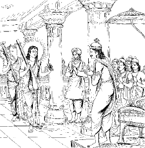
नारदजी आये हैं, उन्होंने समझाया—‘काकाजीकी सेवा आजतक आपने बहुत की। ममता किसी मानवमें रखना अच्छा नहीं है। जो मानवमें ममता रखता है, उसका मरण बिगड़ता है। ममता भगवान्में रखो। अपने कर्तव्य-कर्मका पालन करो। काकाजीकी बहुत सेवा की है। काकाजीमें ममता रखना अच्छा नहीं। ममता रखनेसे उनका भी बिगड़ेगा, आपका भी बिगड़ेगा।’
घरकी, कुटुम्बकी चिन्ता रखना उचित है, किंतु पचपन वर्ष होनेके बाद कुटुम्बकी जो ज्यादा चिन्ता करता है, उसका मरण बिगड़ता है। पचपन हो जानेके बाद तो सब कुछ भगवान्को अर्पण कर दो। पचपन वर्षके बाद सावधान हो करके जो भक्ति करता है, उसका मरण मंगलमय होता है। कितने लोग तो ऐसे होते हैं, जो मृत्युकी शय्यामें पड़े हों तो भी उनको कुटुम्बकी चिन्ता लगी रहती है—‘कन्याका क्या होगा?’ अरे, मरनेके बाद तेरा क्या होनेवाला है? तू अपना विचार क्यों नहीं करता? मरनेके बाद मैं कहाँ जाऊँगा? पचपन वर्षतक अपने कर्तव्य-कर्मका पालन करो। भगवान्में ममता रखो। जिस मानवमें आप ममता रखते हैं, वह आपको छोड़कर जानेवाला है या फिर आप उसको छोड़कर जानेवाले हो। ममता भगवान्में रखकर अपने कर्तव्य-कर्मका पालन करो, अपना मरण सुधारनेका प्रयत्न करो।
कलियुगके लक्षण देखकर युधिष्ठिरकी चिन्ता
नारदजी धर्मराजको सावधान करते हैं—‘छ: महीने बाकी हैं। छ: महीनेके बाद द्वापर-युगकी समाप्ति होगी, कलियुगका आरम्भ होगा। कलियुगमें रहना नहीं। आप धर्मकी मूर्ति हो’ —कह करके नारदजी चले गये हैं। नारदजीके जानेके छ: महीने बाद धर्मराजको कलियुगके सब लक्षण दिखने लगे—पवित्र धर्मराज्यमें चोरी होती है, लोग झूठ बोलते हैं, स्त्रियोंमें स्वेच्छाचार बहुत बढ़ गया है। जिस घरकी स्त्री बहुत स्वतन्त्र हो करके बाहर घूमती है—वह घर बिगड़ जाता है, स्त्री बिगड़ जाती है।
कलियुगके ये सब लक्षण धर्मराजने देखे। भीमसेनसे बातें करते हैं—‘अब इस जगत्में रहनेकी इच्छा नहीं होती, बहुत हो गया। तेरा भाई अर्जुन द्वारकामें गया है, अभी आया नहीं?’
अर्जुनकी प्रतीक्षा करते थे, उसी समय अर्जुन आये। धर्मराजको वन्दन किया है। धर्मराज उसके मुखको देखते हैं—मुखमें तेज नहीं है।
‘तेरा किसीने बहुत अपमान किया है—अथवा आँगनमें आये हुए भिखारीको दिये बिना तुमने भोजन तो नहीं किया? या तुमने किसी स्त्रीका कामभावसे चिन्तन तो नहीं किया? तेरे मुखमें तेज क्यों नहीं दिखता?’
अति अपमान हो तो मुखमें तेज नहीं रहता। आँगनमें आये हुए भिखारीको दिये बिना जो खाता है, उसके मुखमें तेज नहीं रहता। पुरुष स्त्रीका अथवा स्त्री पुरुषका कामभावसे स्मरण करे तो यह व्यभिचार-जैसा ही पाप है। उसकी सजा होती है। ऐसा चिन्तन करनेवालेके मुखमें तेज नहीं रहता।
आजकल कुछ लोग ऐसा मानने लगे हैं कि कलियुगमें मनसे पाप करनेपर भगवान् सजा नहीं करते। ऐसा कहीं शास्त्रोंमें लिखा नहीं है। भागवतमें तो ऐसा वर्णन है कि मनसे जो पाप करता है, उसकी भी सजा होती है। तनसे पाप करता है, उसकी सजा ज्यादा होती है; मनसे पाप करनेपर भी सजा होती है। जगत्के किसी स्त्री-पुरुषका कामभावसे विचार करना व्यभिचारके जैसा ही पाप है।
‘नहीं-नहीं, मेरा अर्जुन कभी ऐसा पाप नहीं कर सकता, अर्जुन वीर है।’
वीर उसको कहते हैं, जो एकान्तमें कामको मारता है। जो कामकी मार खाता है—वह दुर्बल है।
मध्यरात्रिके समयमें सुन्दर शृंगार करके उर्वशी अर्जुनसे मिलनेके लिये गयी थी। अर्जुनने हाथ जोड़े—‘तू मेरी माँ है, मैं तेरा बालक हूँ।’ उर्वशीने कहा—‘मैं स्वर्गकी अप्सरा हूँ, तुम्हें दोष नहीं लगेगा।’ अर्जुनने कहा—‘मैं भारतका हूँ। मेरा भारत देश स्वर्गसे भी श्रेष्ठ है। मैं प्रत्येक स्त्रीमें मातृभाव रखनेवाला भारतीय हूँ। तू मेरी माँ है।’ उर्वशीने कहा—‘मैं कामभावसे आयी हूँ, मैं तुम्हें शाप दूँगी।’ अर्जुनने कहा—‘माँ! तुम्हें जो करना हो, सो करो। मैं तुम्हें वन्दन करता हूँ।’
एकान्तमें जो कामको मारता है—वही वीर है।
‘मेरा अर्जुन वीर है, वह कभी ऐसा पाप नहीं कर सकता। मुझे ये सब कलिके लक्षण दिखते हैं। मुझे भय लगता है—भगवान् विराजमान हों, तबतक कलि नहीं आ सकता है। मेरे भगवान् द्वारकामें आनन्दसे तो हैं न? कभी भगवान् मुझे याद तो करते हैं न?’
एक-एकका नाम ले करके धर्मराज कुशल पूछते हैं।
अर्जुन बालकके जैसा रोने लगता है—‘अब किसका मैं कुशल सुनाऊँ—भगवान् तो स्वधाममें गये हैं। श्रीकृष्णके बिना जीवन व्यर्थ है। मैंने भगवान् श्रीकृष्णकी बराबर सेवा नहीं की। मैंने बराबर दर्शन नहीं किया। अब जगत्में रहना ही नहीं है।’
रातभर श्रीकृष्णका चिन्तन करते हैं। प्रभुके एक-एक उपकारका स्मरण करते हैं। रातभर मधुर श्रीकृष्ण-लीलाका चिन्तन करते हैं—भगवान्की कैसी कृपा थी!—
यो नो जुगोप वनमेत्य दुरन्तकृच्छ्राद्
दुर्वाससोऽरिविहितादयुताग्रभुग् य:।
शाकान्नशिष्टमुपयुज्य यतस्त्रिलोकीं
तृप्ताममंस्त सलिले विनिमग्नसङ्घ:॥
(श्रीमद्भा० १।१५।११)
भगवान्के उपकारोंका स्मरण
पाण्डवोंको याद आता है—दुर्योधनने कैसा कपट किया था! दस हजार ब्राह्मणोंके साथ दुर्वासा ऋषिको चार महीनेतक घरमें रखा। दुर्वासा ऋषिका ऐसा नियम था कि दस हजार ब्राह्मणोंको जो भोजन कराये, उसीके घरमें मैं भोजन करूँगा—अयुताग्रभुग् य:। अयुत शब्दका अर्थ होता है—दस हजार। दुर्योधन सन्तकी सेवा तो करता है, किंतु कुभावसे सेवा करता है।
कार्तिक शुक्ल द्वादशीका दिवस था। दुर्वासा ऋषिको दुर्योधनने कहा है—‘आज आप यहाँसे पाण्डवोंके घरमें भोजन करनेके लिये जाओ। मेरे भाई पाण्डव वनमें दुखी हैं। वहाँ भोजन करके उन्हें आशीर्वाद दो तो वे सुखी होंगे।’
ऋषि दुर्वासा सरल हृदयके हैं। दुर्योधनका कपट समझ नहीं सके। दुर्वासा ऋषिने सरलतासे कहा—‘कल निर्जल एकादशीका व्रत किया है। आज तेरे घरमें पारणा करेंगे। भोजन करके तुम्हें आशीर्वाद देंगे। कल यहाँसे पाण्डवोंके यहाँ जायँगे।’
दुर्योधन दुष्ट है। एकादशीका निर्जल व्रत किया था, द्वादशीके दिन पारणा किये बिना विदा कर दिया—‘मुझे बहुत आशीर्वाद मिले, अब मेरे भाई पाण्डवोंके यहाँ जाओ—उन्हें आशीर्वाद दो।’
दुर्योधन जानता था—पाण्डवोंको सूर्यनारायणने ‘अक्षयपात्र’ दिया है।
त्रिकाल सूर्यनारायणकी जो भक्ति करता है—वह कभी दरिद्री नहीं हो सकता। सूर्यनारायण प्रत्यक्ष परमात्मा हैं। पाण्डव दिवसमें तीन बार सूर्यनारायणकी भक्ति करते थे—
आदित्यस्य नमस्कारं ये कुर्वन्ति दिने दिने।
जन्मान्तरसहस्रेषु दारिद्रॺं नोपजायते॥
पाण्डव जब वनमें जाने लगे, तब सूर्यनारायणको सहन नहीं हुआ। उन्होंने सोचा—धर्मराज जहाँ रहेंगे, वहाँ साधु-सन्त-ब्राह्मण बिना निमन्त्रण आयेंगे ही। उनका सम्मान न हो तो धर्मराजको मरणके जैसा दु:ख होगा। सूर्यनारायणने अक्षयपात्र दिया है, जिससे संकल्प करो तो अन्न निकलता था।
जंगलमें मंगल होता है। बड़े-बड़े ऋषि धर्मराजसे मिलनेके लिये जाते हैं। द्रौपदी सभी ऋषियोंका वन्दन करती है। हाथ जोड़ करके पूछती है—‘महाराज! आपको क्या भोजन करना है’ इच्छाभोजन देती है। हजारों साधु-सन्त-ब्राह्मण भोजन करते हैं—धर्मराजको आशीर्वाद देते हैं।
सूर्यनारायणने कहा था—द्रौपदीके भोजन करनेके बाद अक्षयपात्र बन्द हो जायगा।
दुर्योधनने यही कपट किया, सोचा—इस समय यहाँसे निकलेंगे, वहाँ पहुँचेंगे, तबतक द्रौपदीका भोजन हो चुका होगा। पाण्डव क्या इनको खिलायेंगे?
वनवासमें द्रौपदी पाण्डवोंके साथ सत्संग करती है—‘मेरे भगवान् जो कुछ करते हैं, उसीमें जीवका मंगल है। मेरे भगवान् मंगलमय हैं। मेरे प्रभुकी इच्छा भी मंगलमय है। जीवनमें अति दु:ख हो, उद्वेग हो—ऐसा कोई प्रसंग हो जाता है। ऐसे समयमें याद करो—मेरे भगवान् मंगलमय हैं, प्रभुकी इच्छा भी मंगलमय है।
हमारा राज्य गया—अच्छा ही हुआ। मुझे याद आता है—राजमहलमें महारानी होकर मैं रहती थी। राजसी सुख मैंने राजमहलमें भोगा है। सात्त्विक आनन्द राजमहलमें नहीं मिला। सात्त्विक आनन्द देनेके लिये मेरे भगवान्ने मुझे वनमें भेजा है। राजमहलमें मैं ध्यान तो करती थी, किंतु ध्यानमें तन्मयता नहीं हो पाती थी। राजमहलमें मैं श्रीकृष्ण-कीर्तन करती थी, किंतु कभी आँखमें आँसू नहीं आते थे। वनमें आनेके बाद कृष्ण-कीर्तनमें हृदय पिघलता है—आनन्द आता है। ऐसा आनन्द राजमहलमें नहीं आता था। सात्त्विक आनन्द देनेके लिये भगवान्ने हमको वनमें भेजा है। मेरे भगवान् जो कुछ करते हैं, उसीमें जीवका कल्याण है’ —
चित्तोद्वेगं विधायापि हरि: यद्यद् करिष्यति।
तथैव तस्य लीलेति मत्वा चिन्तां धृतं चयेत्॥
पाण्डव द्रौपदीके साथ सत्संग करते हैं। भगवान्ने जो किया है, अच्छा ही किया है।
दुर्वासा ऋषि वहाँ आये हैं। धर्मराज खड़े हुए हैं, दुर्वासा ऋषिको वन्दन किया है। दुर्वासा ऋषिने कहा—‘दस हजार ब्राह्मण भोजन करनेके लिये आये हैं।’
धर्मराज धीर-गम्भीर हैं, अति शान्त हैं। जानते हैं—द्रौपदीका भोजन हो गया है, अब अक्षयपात्रसे कुछ निकलनेवाला नहीं है। अति दु:खमें कभी मैंने अपना धर्म छोड़ा नहीं, अति दु:खमें कभी मैंने पाप किया नहीं है, अति दु:खमें मैं भगवान्को भूला नहीं हूँ। मेरे भगवान् कैसी लीला करते हैं—यह देखना है।
धीर-गम्भीर धर्मराजने हाथ जोड़े हैं, दुर्वासा ऋषिको कहा है—‘आपने बहुत कृपा की, दस हजार ब्राह्मणोंको आप ले आये। आप सब गंगाजीमें स्नान करके आओ, तबतक रसोई तैयार हो जायगी।’
दुर्वासा ऋषिने कहा—‘सभीको स्नान करनेकी इच्छा तो है। भूख बहुत लगी है। अभी स्नान करके हम लोग जल्दी आते हैं, रसोई तैयार मिलनी चाहिये।’
अति शान्त धर्मराज ध्यान करते हैं—क्या होगा? भीम-अर्जुनको भय लगता है। द्रौपदी विचार करती है—सुना है, दुर्वासा क्रोधी हैं। कदाचित् शाप दे दें! द्रौपदी उस समय प्रेमसे—
हरे कृष्ण हरे कृष्ण कृष्ण कृष्ण हरे हरे।
हरे राम हरे राम राम राम हरे हरे॥
—कीर्तन करती हैं। कीर्तनमें हृदय पिघलता है। श्रीकृष्णके साथ प्रेमसे बातें करती है—‘मैं लायक तो नहीं हूँ तो भी आपने इस जीवको स्वीकार किया है। आप एक बार ऐसा बोले थे कि तू मेरी बहन है, मैं तेरा भाई हूँ—मुझे याद आता है। आपकी बहन अब भिखारी हो गयी है। हमारा सब कुछ जा चुका है, अब हम वनमें हैं। दस हजार ब्राह्मण आये हैं—हे नाथ! कृपा करो।’
द्वारकानाथ द्वारकामें उस समय रुक्मिणीके महलमें आराम कर रहे थे। कोई भी जीव प्रेमसे जब परमात्माको पुकारता है, भगवान्के नामका कीर्तन करता हुआ जब तन्मय होता है—तब भगवान् जागते हैं। द्वारकानाथ एकाएक जागे हैं। रुक्मिणीजी द्वारकानाथकी सेवामें हैं—सोनेकी थालीमें सुन्दर मेवा ले आयी हैं। प्रभुको मनाती हैं—‘मैं प्रेमसे मेवा लायी हूँ, आप स्वीकार करें।’
उसी समय—कृष्ण...कृष्ण...कृष्ण...—द्रौपदीका आर्त्तनाद कानमें आया है। भगवान्की आँखोंमें आँसू आ गये। रुक्मिणी पूछती हैं—‘आपको क्या हुआ है?’ द्वारकानाथने कहा—‘पाण्डव बहुत दुखी हैं।’ रुक्मिणीजीने कहा—‘हाँ, मैंने सुना है कि पाण्डव वनमें गये हैं। आपको वहाँ जाना हो तो भले ही जाओ, पर अभी तो इस मेवाको स्वीकार करो—भोजन करो। खा करके फिर जाओ।’
कोई वैष्णव जब दुखी होता है, तब भगवान्को भोजन भाता भी नहीं है—उनको खानेकी इच्छा नहीं होती है—‘मुझे जल्दी पहुँचना है।’
द्रौपदीकी बहुत इच्छा है कि दुर्वासा ऋषिके आनेसे पहले श्रीकृष्ण आ जायँ। मैं दुर्वासा ऋषिको अपना क्या मुँह दिखाऊँगी? मेरे भगवान् दुर्वासा ऋषिको समझा देंगे। कृष्ण... कृष्ण...कृष्ण...—द्रौपदी प्रभुको मनाती है।
दुर्वासा ऋषिके आनेका समय हुआ है। रुक्मिणीजीके साथ भगवान् बोलतेतक नहीं, गरुड़पर विराजमान होकर दौड़ पड़े हैं।
आज रुक्मिणीजीको भी थोड़ा आश्चर्य होता है, बुरा लगता है—ये वैष्णव कैसे हैं! भोजन करनेके समयमें भी उनको बुलाते हैं, खानेकी फुरसत नहीं देते!
द्रौपदीजी श्रीकृष्ण-कीर्तनमें तन्मय हुई हैं। तन्मयतामें उनको दर्शन होता है—भगवान् रुक्मिणीजीके महलोंमें हैं। रुक्मिणीजी मनाती हैं, लेकिन मेरे भगवान् सब कुछ छोड़कर दौड़ते हुए आये हैं। आज मैंने प्रभुको त्रास दिया है, मैंने भोजनमें भंग किया है। मैं बड़ी स्वार्थी हूँ। ‘मैंने प्रभुको त्रास दिया है’ —यह विचार मनमें आते ही द्रौपदी रोने लगी हैं।
श्रीकृष्ण द्रौपदीके सन्मुख खड़े हैं। द्रौपदीकी नजर भगवान्के चरणोंमें है। सन्मुख देखनेकी हिम्मत हुई नहीं—मेरे कारण प्रभुको त्रास हुआ है। मैं स्वार्थी हूँ।
श्रीकृष्णभगवान्ने कहा—‘द्रौपदी! द्रौपदी!! मुझे बड़ी भूख लगी है। मैंने द्वारकामें कुछ खाया नहीं है। मैंने रुक्मिणीको कहा—आज तो द्रौपदी जो देगी, वही खाऊँगा। आज तेरे हाथका खाना है। मुझे भूख लगी है।’
द्रौपदी हाथ जोड़ती है—‘मैं अपने प्राण निकालकर दूँ तो भी कम है। मैं क्या दूँ? आपकी बहन अब भिखारी है। घरमें कुछ भी नहीं है।’
भगवान्ने कहा—‘मेरे लिये तो तुमने घरमें कुछ रखा ही होगा। मैं तेरा प्रेम जानता हूँ।’
घरमें कोई मिठाई आये, फल आये—द्रौपदीका नियम था कि वह भगवान्का भाग अलग रखती थी—ये मेरे भगवान्के लिये है।
जिस घरमें भगवान्के लिये अलग भाग रखा जाता है, उस घरमें लक्ष्मीजी और अन्नपूर्णाजीका अखण्ड निवास होता है।
भगवान्ने कहा है—‘मेरे लिये तो तुमने कुछ रखा ही होगा। अच्छा, अक्षयपात्र मुझे बता दे, तूने अक्षयपात्रमें मेरे लिये कुछ रखा ही होगा।’
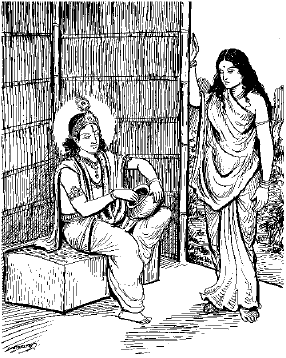
द्रौपदीने अक्षयपात्र उठाया है—भगवान्के हाथमें दिया। बहुत दिनका भूखा जैसे भोजन खोज ही लेता है—एक भाजीका पान (पत्ता) अक्षयपात्रमें दिखायी देता है। भगवान्ने कहा—‘मेरे लिये ही तुमने यह रखा है। आज जगत्के सभी जीवोंकी तृप्ति होगी। सभी जीवोंमें अन्तर्यामीरूपसे मैं ही विद्यमान हूँ—यह सिद्धान्त सत्य हो।’
क्षेत्रज्ञं चापि मां विद्धि—शरीर क्षेत्र है, क्षेत्रज्ञ भगवान् श्रीकृष्ण हैं—इदं शरीरं कौन्तेय क्षेत्रमित्यभिधीयते। सभीमें अन्तर्यामीरूपसे भगवान् श्रीकृष्ण हैं—यह सिद्धान्त सत्य हो, तो जगत्के सभी जीव तृप्त हो जायँ। भगवान्ने भाजीका पान मुखमें दिया है। द्रौपदीने हाथ जोड़े हैं। द्रौपदीका प्रेम देख करके तृप्त हुए हैं।
जो प्रभुको प्रसन्न करता है, वह जगत्को प्रसन्न करता है। जो भगवान्के स्वरूपको जानता है, वही जगत्को जानता है।
बहुत-से लोग साधु-सन्तोंको भोजन कराते हैं, ब्राह्मणोंको भोजन कराते हैं, गरीबोंको अन्नदान करते हैं—अच्छा है; अति उत्तम तो यह है कि घरमें ही पवित्रतासे, प्रेमसे भगवान्के लिये सुन्दर सामग्री बनायें—मेरे भगवान् भोजन करेंगे, मैं भगवान्के लिये करता हूँ। प्रेमसे बालकृष्णको मनाओ, प्रेमसे थोड़ी बातें करो। जो प्रेमसे मनाता है, तब बालकृष्ण थोड़ा-सा खाते हैं। भगवान्को जो प्रेमसे भोजन कराता है, उसको जगत्को भोजन करानेका पुण्य मिलता है। जो श्रीकृष्णको प्रसन्न करता है, वह जगत्को प्रसन्न करता है—
द्रौपदी शाकमास्वाद्य त्रिलोकी येन कल्पिता।
तज्जीव ब्रह्मणोरैक्ये साक्षी ब्रह्मैव नो हरि:॥
दुर्वासा ऋषिका पेट फूल जाता है, अजीर्णकी डकारें आती हैं। ब्राह्मण सन्ध्या करते हैं, गायत्री-जप करते हैं—सभीकी ऐसी दशा हो गयी। भीमसेन बुलानेके लिये गये हैं—‘महाराज! चलो।’ दुर्वासाने पूछा है—‘भीम! सच बताना, द्वारकासे श्रीकृष्ण तेरे घरमें आये हैं क्या?’ भीमसेनने कहा—‘हाँ, आये हैं। द्रौपदीके साथ बातें करते हैं। मैं आपको बुलानेके लिये आया हूँ। भगवान्ने मुझे ऐसा कहा है कि दुर्वासा मेरे गुरु हैं। आज गुरुको मैं भोजन परोसनेवाला हूँ। भगवान् परोसनेके लिये आये हैं। आप उनके गुरु हैं—ऐसा कह रहे थे।’
दुर्वासाने हाथ जोड़े और कहा—‘मैं उनका गुरु नहीं हूँ, मेरे गुरुके भी दादागुरु श्रीकृष्ण हैं। श्रीकृष्ण जगद्गुरु हैं। ऐसी लीला तो श्रीकृष्ण ही कर सकते हैं। भीम! मैंने बड़ी भारी भूल की है—चार महीनेतक दुर्योधनका अन्न खाया है। वह पापका अन्न था। कभी सन्ध्या-गायत्री में तन्मयता हुई नहीं, प्रेममें कभी हृदय पिघला नहीं—वह अन्न अशुद्ध था। मेरी भूल हो गयी। तेरे घरमें आनेके बाद मेरा हृदय शुद्ध हुआ है। पाण्डवोंका संयम, पाण्डवोंका सदाचार, पाण्डवोंकी सरलता, पाण्डवोंका साधु-ब्राह्मणोंमें सद्भाव, पाण्डवोंकी अनन्य कृष्ण-भक्ति देख करके मैं प्रसन्न हूँ। मेरा आशीर्वाद है—पाण्डवोंका जय-जयकार होगा। कौरवोंका विनाश होगा।’ दुर्योधनको शाप दिया है, पाण्डवोंको आशीर्वाद दिया है।
जहाँ भी जाओ, वहाँ दुर्वासना भी पीछे-पीछे आती है। सुख भोगनेकी इच्छा ही दुर्वासना है। बँगलेमें जो रहता है, उसीको दुर्वासना त्रास देती है—ऐसा नहीं है। जो वनमें रहता है, उसके पीछे भी दुर्वासना पड़ती है। जहाँ जाओ, वहाँ वासना है। किंतु श्रीकृष्णके साथ जो अतिशय प्रेम करता है...। वासनाके त्राससे तो श्रीकृष्ण ही छुड़ा सकते हैं। ज्ञानी हो या योगी हो—श्रीकृष्णके साथ अतिशय प्रेम न करे, तबतक सूक्ष्म-वासनाका विनाश नहीं होता है।
परीक्षित्को राजा बनाकर पाण्डवोंका हिमालयको प्रस्थान
पाण्डवोंने रातभर श्रीकृष्णकी मधुर लीलाओंका वर्णन किया है। प्रात:कालमें परीक्षित्को बुलाया और कहा—‘आजसे तू राजा हो गया। अब मैं जाता हूँ।’
पंचपाण्डव द्रौपदीके साथ हिमालयमें जाते हैं। केदारनाथकी पाण्डवोंने पूजा की है। आज भी केदारनाथके मन्दिरमें पंचपाण्डवों तथा द्रौपदीकी मूर्ति है। केदारनाथमें आज भी एक मर्यादा है—भगवान् शंकरकी पूजा करनेके बाद शिवजीको आलिंगन दिया जाता है। स्त्री हो या पुरुष हो—शिवजीको आलिंगन देते हैं। देहभाव शिवजीकी कृपासे दूर होता है। देहभाव ही जीव-भाव है। अनेक जन्मोंका यह देहभाव कि मैं स्त्री हूँ, मैं पुरुष हूँ—इस भावमें ही जीव रहता है। स्त्रीत्व और पुरुषत्वको जीव भूलता नहीं। साधारण ज्ञानसे, साधारण भक्तिसे यह देह-भाव भूलता नहीं है। सतत भक्ति जो करता है, भगवान् शंकर जिसके ऊपर कृपा करते हैं, तब जीव-शिवका मिलन होता है—तब यह देह-भाव छूटता है।
केदारनाथसे ऊपर जाओ तो निर्वाण-पंथ है। जिस मार्गसे श्रीशुकदेवजी महाराज गये हैं। जो गये, सो वापस कभी आये नहीं। शंकराचार्य महाराज इसी मार्गसे गये। पाण्डव इसी मार्गसे जाते हैं। चार पाण्डव और द्रौपदी शरीर छोड़ करके भगवान्के धाममें गये हैं। अकेले धर्मराज सदेह गये हैं।
वेदान्तका सिद्धान्त है—ज्योतिमें ज्योति मिल जाती है। भक्तिमें ऐसी शक्ति है—धर्मराजकी देह दिव्य हो गयी। सतत भक्ति करनेसे मीराबाईकी देह दिव्य हो गयी थी। सतत भक्ति करनेसे तुकाराम महाराजकी देह दिव्य हुई थी। विट्ठल...विट्ठल...विट्ठल... करते हुए तुकारामजी सदेह भगवान्के धाममें गये हैं। मीराबाई सदेह द्वारकानाथमें लीन हुई थी। मीराबाईके शरीरका किसीको स्पर्श हुआ नहीं। सतत भक्ति करनेसे मीराकी देह दिव्य हो गयी थी। द्वारकानाथ श्रीकृष्ण मीराको मिलनेके लिये आतुर हुए थे। श्रीगौरांग महाप्रभुका चरित्र दिव्य है। श्रीकृष्णका वियोग सहन हुआ नहीं। श्रीकृष्ण-वियोगमें व्याकुल हुए हैं। कृष्ण... कृष्ण...कृष्ण...कीर्तन करते हुए दौड़ते गये हैं—जगन्नाथजीमें विलीन हो गये हैं। जगन्नाथजीको आलिंगन दिया है। बहुत-से सन्त देहको दिव्य बनाते हैं। भक्तिमें ऐसी शक्ति है—देह भी दिव्य होती है।
पंच-पाण्डवोंमें चार पाण्डव और द्रौपदी शरीर छोड़ करके गये हैं। अकेले धर्मराज सदेह गये हैं। पाण्डवोंके मरणकी यह कथा नहीं है। पाण्डवोंके प्रयाणकी यह कथा है—
य: श्रद्धयैतद् भगवत्प्रियाणां
पाण्डो: सुतानामिति सम्प्रयाणम्।
शृणोत्यलं स्वस्त्ययनं पवित्रं
लब्ध्वा हरौ भक्तिमुपैति सिद्धिम्॥
(श्रीमद्भा० १।१५। ५१)
दो-चार दिन स्नान नहीं, सन्ध्या नहीं, सेवा नहीं। अपवित्र अवस्था, अपवित्र स्थानमें हाय-हाय करता—प्राण व्याकुल हैं, ऐसेमें जो शरीर छोड़ता है—वह मर गया, किंतु अन्तिम दिवसमें बालकृष्णलालकी जिसने प्रेमसे पूजा की, ध्यान किया, श्रीकृष्ण-कीर्तन करता हुआ आनन्दमें जो प्राणको छोड़ता है—उसका प्रयाण हो गया। पाण्डवोंके मरणकी यह कथा नहीं है, पाण्डवोंके प्रयाणकी यह कथा है। पाण्डव प्रभुके धाममें गये हैं।
महाराज परीक्षित् द्वारा कलियुगका दमन
परीक्षित् राजा हुए हैं। परीक्षित्ने सुना है—मेरे राज्यमें कलिका प्रवेश हुआ है। कलिको ऐसी इच्छा थी—राजा जब बिगड़ता है, तभी प्रजा बिगड़ती है। अत: राजाको बिगाड़ना है।
परीक्षित्का जीवन बहुत पवित्र है। परीक्षित्को स्पर्श करनेकी कलिको हिम्मत होती नहीं है। वह सोचता है—यह (परीक्षित्) कोई पाप करे—भूल करे तो मैं इसके शरीरमें प्रवेश करूँ!
महाभारतके वन-पर्वमें राजा नलकी कथा आती है। राजा नलके पीछे कलि पड़ा था। राजा नलका जीवन बहुत पवित्र था। बहुत ठंडी पड़ी थी,रात्रिमें लघुशंका करनेके बाद पाँवकी शुद्धि बराबर नहीं की। ये थोड़ी भूल हो गयी। वह भूल देख करके कलिने पाँवमें प्रवेश किया।
धर्मकी गति अतिसूक्ष्म है। दीर्घशंका, लघुशंका करनेके बाद हाथ-पाँवकी शुद्धि करनी ही चाहिये। सात कुल्ले करने चाहिये। आप तो सब करते ही होंगे! ज्यादा आपको कहनेकी जरूरत नहीं है। करते न हों तो कथामें सुननेके बाद करो।
आचार शुद्ध हो तो ही सद्विचार बुद्धिमें टिकता है। सदाचार नींव है, सद्विचार बँगला है—आचार: प्रथमो धर्म:, धर्मादस्य प्रकीर्तित:। जहाँ सदाचार नहीं है, वहाँ सद्विचार टिकता नहीं है।
मानव दिनभर पाप नहीं करता है। पाँच-दस मिनटमें पाप हो जाता है। खराब विचार मन में आते हैं। आचार शुद्ध हो तो ही विचारकी शुद्धि रहती है। ऋषि-मुनियोंने जो नियम बनाये हैं—बहुत विचारपूर्वक बनाये हैं। आप सभी लोग ऋषियोंके बालक हैं। आपका जन्म ऋषियोंके वंशमें हुआ है। भारत-देश ऋषि-मुनियोंका देश है। ऋषियोंको कभी भूलना नहीं। जबसे लोग परदेसकी नकल बहुत करने लगे, तभीसे बुद्धि बिगड़ने लगी।
परीक्षित् महाराज बहुत सावधान हैं, सदाचारी हैं। मेरे राज्यमें कलिने प्रवेश किया है—यह सुनकर राजा परीक्षित् कलिको दण्ड देनेके लिये दिग्विजय-यात्रापर निकले हैं। सरस्वती नदीके तटपर परीक्षित्ने देखा है—एक राजवेशधारी शूद्र हाथमें डंडा लिये गाय-बैलके एक जोड़ेको पीटता जा रहा है। वह बैल एक पैरपर खड़ा काँप रहा है। महाराज परीक्षित्ने वृषभसे पूछा है—‘तेरे तीन पाँव किसने काटे हैं?’
पापीके सम्मुख जो अँगुली बतावे, उसे पाप कहते हैं। पापीका स्मरण करे तो मनमें पाप आता है। आप कभी दारू नहीं पीते हैं; किंतु अमुक मानव दारू पीता है—ऐसा बोलो या सुनो तो दारू आपके मनमें आ जाती है। भले ही आप दारूको छूते भी नहीं हैं। पापीका स्मरण करना ही बड़ा पाप है। जो पाप करता है, कभी उसको याद मत करो। जिसने पाप छोड़ा है—उसका स्मरण करो।
धर्मरूपी वृषभने बहुत विवेकसे जवाब दिया है—‘मेरे-जैसे पशुकी आप बहुत चिन्ता रखते हो। आपका कल्याण हो। दु:ख कौन देता है? आजतक इसका निर्णय हुआ नहीं है।’
कितने ही लोग कहते हैं कि दु:खका कारण ‘काल’ है। बारह बरसके बाद ‘काल’ जीवनमें कुछ परिवर्तन लाता है। सुखी दुखी हो जाता है; दुखी-सुखी हो जाता है। काल किसीको एक ही स्थितिमें नहीं रहने देता है। परिवर्तन करना कालका स्वभाव है। काल दु:ख देता है—ऐसा लोग वर्णन करते हैं। कितने ही लोग कहते हैं—कालसे नहीं, कर्मसे ही जीव सुखी-दुखी होता है।
कितने लोग कहते हैं—कालसे नहीं, कर्मसे नहीं, स्वभावसे जीव सुखी-दुखी होता है। जिसका स्वभाव बर्फके जैसा ठंडा है, वह जहाँ जाय, वहाँ उसको ठंडक ही मिलेगी। जिसका स्वभाव ठंडा नहीं है, वह जहाँ जाय, वहाँ हृदयको जलाता है। कितने लोग तो ऐसे होते हैं कि उनकी इच्छाके अनुसार भोजन न हो तो अन्नदेवके सन्मुख क्रोध करते हैं—‘रामरस कम है, दाल तो बहुत ठंडी है...।’ अरे! दाल ठंडी है तो तू भी ठंडा हो जा न! दाल ठंडी होनेपर साहब गरम हो जाता है!
जिसका स्वभाव गरम है, उसको कहीं शान्ति नहीं मिलती है। जिसका स्वभाव बर्फके जैसा ठंडा है...। जीव स्वभावसे दुखी होता है। दु:खका कारण कौन है? इसका निर्णय आजतक हुआ नहीं। आप ही विचार करें। पापीका स्मरण करना, पापीके सम्मुख अँगुली बताना भी पाप है—यदधर्मकृत: स्थानं सूचकस्यापि तद्भवेत्। परीक्षित् विचार करता है—यह कोई साधारण पशु नहीं है। बड़ा ज्ञानी लगता है।
जो गायको, बैलको त्रास देता है—वही कलि है। कलिको मारनेके लिये तैयार हुए हैं। कलि-पुरुषने परीक्षित् राजाका चरण-स्पर्श किया है—‘मैं शरणमें आया हूँ, मारना नहीं।’
शास्त्रोंमें लिखा है—जिसने अति पाप किया हो, जो अति कामी हो—उसको स्पर्श करो तो उसके शरीरका पाप आपके शरीरमें आयेगा। धर्मकी गति अति सूक्ष्म होती है। रामायणमें वर्णन है—मन्थराका साथ होनेके बाद कैकेयीकी बुद्धि बिगड़ गयी। रामजीमें कैकेयीका बहुत प्रेम था। मन्थराने स्पर्श किया, तब कैकेयीकी बुद्धि बिगड़ी।
अति पापीको स्पर्श नहीं करना चाहिये। स्पर्श-दोष तो डॉक्टर लोग भी मानते हैं। सभी लोग मानते हैं। महारोगीका स्पर्श करनेके बाद डॉक्टरको भय लगता है—उसके रोगके परमाणु मेरे शरीरमें न आयें। साबुनसे हाथ धोता है। डॉक्टर तो स्थूल शरीरका विचार करता है। हमारे ऋषि सूक्ष्म दृष्टि रखनेवाले हैं—जिसका सूक्ष्म शरीर बिगड़ा हुआ है, उसके स्पर्शका भी दोष मानते हैं।
सभीको वन्दन करो। सभीको मान दो। बिना कारण किसीका स्पर्श मत करो। आप जिसका स्पर्श करते हैं, उसके शरीरके परमाणु आपके शरीरमें आ जाते हैं। कभी मनको बिगाड़े नहीं तो कलि पाप करायेगा नहीं। कलिने स्पर्श किया—परीक्षित्की बुद्धि बिगड़ गयी।
राजाका धर्म है—दुष्टको मारना ही चाहिये। जो अति पापी है, उसकी हिंसा, हिंसा नहीं है। अति पापी जीवित रहनेपर अनेककी हिंसा करेगा। अति पापीकी हिंसा अहिंसा है। राज-धर्म है!
परीक्षित्को दया आती है। कलिने परीक्षित्को स्पर्श किया है।
‘मैं तुम्हें अब मारता नहीं हूँ। पर, मेरे राज्यमें रहना नहीं।’
कलिने प्रार्थना की है—‘मुझे राज्यमें रहनेकी थोड़ी जगह दे दें।’
परीक्षित्ने कहा—‘जिस घरमें जुगाड़ (जुआ)-का पैसा आये, उस घरमें रहना। जिस घरमें बुद्धिपूर्वक किसी भी जीवकी हिंसा हो, वहाँ जाकर रहना।’
मच्छरको भी बुद्धिपूर्वक नहीं मारना चाहिये। आप जिस जीवको बुद्धिपूर्वक मारोगे, वह जीव दूसरे जन्ममें आपको मारनेके लिये आयेगा। हिंसा प्रतिहिंसा उत्पन्न करती है। हिंसा बड़ा पाप है। जिस घरमें बुद्धिपूर्वक किसी जीवकी हिंसा होती है, वहाँ कलिका निवास है।
जहाँ वेश्याएँ रहती हैं, वहाँ कभी नहीं जाना चाहिये, वहाँ कलिका निवास है। जिस घरमें मांस-मदिराका लोग सेवन करते हैं, वहाँ कलि आता है।
भागवतकी कथा सुनते हो, आप वैष्णव हो। कथा सुननेके बाद ऐसा नियम लो कि मेरे भगवान् जिसको स्वीकार करते हैं, वही प्रसाद मैं लूँगा। भगवान् जिसको स्वीकार नहीं करते, वह मैं कभी नहीं खाऊँगा।
भगवान्को कोई पान-सुपारी अर्पण करे तो भगवान् उसको स्वीकार करते हैं। भगवान्को कोई तम्बाकू अर्पण करे तो भगवान् ‘ना’ बोलते हैं। तम्बाकू पीना, तम्बाकू खाना, तम्बाकू सूँघना बड़ा पाप है—जिसको भगवान् भी स्वीकार नहीं करते हैं। तम्बाकू तनको बिगाड़ता है, मनको भी बहुत बिगाड़ता है।
द्यूतं पानं स्त्रिय: सूना यत्राधर्मश्चतुर्विध: (श्रीमद्भा० १।१७।३८)—चार जगह उसको देते हैं। तो भी उसको सन्तोष हुआ नहीं। कलिने कहा—‘कोई अच्छी जगह मुझे रहनेको दो।’ परीक्षित्ने कहा—‘आजसे सुवर्णमें तेरा निवास होगा।’
सोनेमें कलि है तो क्या चाँदीमें नहीं, जो धन पापसे घरमें आता है, उसमें कलि ही है। धनको धर्मकी मर्यादामें रखो। जीवनमें धनकी जरूरत है। धनसे भी ज्यादा धर्मकी जरूरत है। धनसे धर्म श्रेष्ठ है। जीवनमें धन मुख्य हुआ और धर्म गौण हुआ, तभीसे जीवन बिगड़ा है। हमारे ऋषियोंने धनको साधन माना है, धन साध्य नहीं है, धर्म साध्य है। धर्मरूप भगवान् हैं। धनसे भी धर्म श्रेष्ठ है। जो धन पापसे घरमें आया है, वह धन घरके बालकोंकी भी बुद्धि बिगाड़ता है।
परीक्षित्को शापकी प्राप्ति
एक बार परीक्षित् राजाको इच्छा हुई—पाण्डवोंने मेरे लिये क्या रखा है? देखने लगा है। पेटीमें एक सुन्दर मुकुट मिला है, सोनेका मुकुट था।
किसी भी वस्तुका उपयोग करो, उससे प्रथम थोड़ा विचार करो—यह कहाँसे आया है? कौन ले आया है? कार्य-दोष, कर्ताका दोष, निमित्तका दोष प्रत्येक वस्तुमें आता है।
जरासन्धका यह मुकुट था। जरासन्धने अनेक राजाओंका विनाश करके अधर्मसे धन कमाया था। उस धनसे मुकुट बनाया था, जो पाण्डवोंके घरमें था। आज बुद्धिको बिगाड़ता है। परीक्षित् राजाको अच्छा लगा, मुकुटको सिरपर रखा, हिंसा करनेकी इच्छा हुई।
जंगलमें गये हैं। अनेक पशु-पक्षियोंकी हिंसा की है। मध्याह्न-कालमें भूख लगी है, प्यास लगी है। घूमते हुए शमीकऋषिके आश्रममें आये हैं। उस समय महात्मा शमीकऋषि आदिनारायण परमात्माके ध्यानमें तन्मय थे, समाधि थी।
राजाने कहा—‘मुझे भूख लगी है, प्यास लगी है।’
ऋषिने सुना नहीं। राजाको बुरा लगा—मेरा अपमान कर रहे हैं, समाधिका ढोंग कर रहे हैं। इनकी समाधि सच्ची है या झूठी है—इसकी मैं परीक्षा करूँगा।
किसी साधु-सन्तकी परीक्षा करना नहीं। किसी ब्राह्मणकी परीक्षा करना नहीं। आपको श्रद्धा न हो तो दूरसे वन्दन करो। राखमें थोड़ी भी अग्नि हो तो हाथको जला देती है।
परीक्षा करनेकी इच्छा हुई। मरा हुआ साँप उठाया और ऋषिके गलेमें डाल दिया।
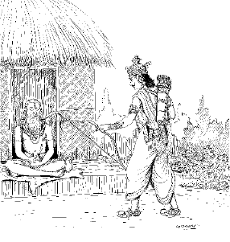
मरा हुआ साँप गलेमें आया। ऋषिको खबर नहीं, उनको आभासतक नहीं हुआ। उन्हें देहका भानतक नहीं था।
थोड़ा-सा विचार करो तो ध्यानमें आयेगा—साँप कालका स्वरूप है। वेदोंमें वर्णन है—भगवान् कालके भी काल हैं। कालके भी काल परमात्मा नारायणका जो ध्यान करता है, भगवान्के ध्यानमें जो देहभानको भूलता है, उसके गलेमें मरा हुआ सर्प आता है। शमीकऋषिके गलेमें मरा हुआ सर्प आया है। यह सिद्ध करता है कि शमीकऋषिने कालके ऊपर विजय प्राप्त कर ली है।
कालके भी काल भगवान् हैं। जो दूसरेका अपमान करता है, वह अपना ही अपमान करता है। जो दूसरेके साथ कपट करता है, वह आत्माके साथ कपट करता है। राजा परीक्षित्ने मृत सर्प ऋषिके गलेमें डाला है, जीवित सर्प राजाके गलेमें आनेवाला है।
बुद्धि जब बहुत बिगड़ जाती है, तब समझ लेना, कोई बहुत बड़ी विपत्ति आनेवाली है। विपत्ति आनेसे पहले बुद्धि बहुत बिगड़ जाती है। राजाकी बुद्धि बिगड़ गयी। मस्तकमें मुकुट है—कलिका निवास है। ...‘मैं तो राजा हूँ, मेरा कौन क्या बिगाड़ सकता है?’ अभिमानमें थे, घरमें आये हैं।
उधर, शमीकऋषिके बालक शृंगीको खबर पड़ी है। शृंगीने शाप दिया है—‘जिसने मेरे पिताके गलेमें मरा हुआ सर्प डाला हो, उसे सातवें दिन तक्षकनाग काटेगा।’
परीक्षित्को खबर हुई है—मुझे शाप हुआ है। राजा परीक्षित्ने विचार किया—यह शाप नहीं है, सात दिनोंतक मुझे भक्ति करनेका समय दिया है। ऐसा शाप नहीं दिया कि आज ही तक्षकनाग काटेगा, मेरा मरण होगा!
परीक्षित्का अनशन व्रत और ऋषियोंका आगमन
जीवनमें राजा परीक्षित्ने एक ही बार पाप किया था। धन्य है परीक्षित् को—पाप करनेके बाद पानी भी नहीं पिया! अब मुझे पानी पीनेका क्या अधिकार है?
जिस दिन पाप हो, उस दिन उपवास करना चाहिये। जीवनमें एक ही बार पाप किया था। घर छोड़कर गंगा-किनारे आये हैं। श्रीगंगामाँ मरणको सुधारती हैं। श्रीगंगामाँ मुक्ति देती हैं। गंगामाँको वन्दन किया है। गंगाजीमें स्नान करके गंगा-किनारे बैठे हैं। परीक्षित् अब सन्त हुए हैं। सन्तसे सन्त मिलनेके लिये आते हैं। सातवें दिन मैं मरनेवाला हूँ—ऐसा सुना और विलासी जीवनकी समाप्ति हो गयी। पवित्र जीवनका आरम्भ हुआ। परीक्षित् अब राजा नहीं हैं—ऋषि हैं। ऋषिसे ऋषि मिलनेके लिये जाते हैं—
अत्रिर्वसिष्ठश्च्यवन: शरद्वा-
नरिष्टनेमिर्भृगुरङ्गिराश्च।
पराशरो गाधिसुतोऽथ राम
उतथ्य इन्द्रप्रमदेध्मवाहौ॥
मेधातिथिर्देवल आर्ष्टिषेणो
भारद्वाजो गौतम: पिप्पलाद:।
मैत्रेय और्व: कवष: कुम्भयोनि-
र्द्वैपायनो भगवान्नारदश्च॥
(श्रीमद्भा० १।१९। ९-१०)
ऋषियोंका स्मरण करनेसे मन पवित्र होता है। २५ ऋषियोंके नाम दिये हैं। बहुत-से ऋषि ज्ञानी हैं, बहुत-से ऋषि भक्त हैं, बहुत-से ऋषि कर्मयोगी हैं। अत्रि ऋषिसे आरम्भ किया है, जो गुरु दत्तात्रेयभगवान्के पिता हैं। वयोवृद्ध हैं, महान् ज्ञानी हैं। अत्रि ऋषि कृपा करके आये हैं। भगवान् श्रीरामको तत्त्व-ज्ञानका उपदेश देनेवाले श्रीरामचन्द्रजीके सद्गुरु वसिष्ठजी आये हैं। अगस्त्यमुनि आये हैं, व्यासनारायण आये हैं। राजाने सभीकी पूजा की है। सन्त-समाजमें राजाने किया हुआ पाप प्रकट किया है।
पापको कभी छिपाना नहीं। जो पापको छिपाता है, उसके मनमें पाप घर करता है। जो पापको छिपाता है, वह फिरसे पाप करता है। पाप छूट जाय—ऐसी इच्छा हो तो पापको प्रकट करो। जिस दिन पाप हो, उस दिन दो-चार साधु-सन्तोंको बुलाओ और पूजा करो और कहो कि मैंने ऐसा पाप किया। पाप प्रकट करनेसे पाप छूटता है। पाप छिपानेसे पाप मनमें घर करता है।
परीक्षित् राजाने आज ऋषियोंकी सभामें किया हुआ पाप प्रकट किया है— ‘मैं पापी हूँ, अधम हूँ, मैं सातवें दिनमें मरनेवाला हूँ, आज मुझे भय लगता है—मैंने आजतक कभी मरनेकी तैयारी नहीं की है।’
कथा सुननेके बाद थोड़ी-थोड़ी मरनेकी भी तैयारी करनी चाहिये। मानव मरनेकी तैयारी नहीं करता है, इसीलिये अन्तकालमें बहुत घबराता है—मैंने मरनेकी तैयारी नहीं की है, मेरी भूल हुई है। मेरा मरण मंगलमय हो, मुझे नारायणका दर्शन हो—ऐसी कृपा करो!
जन्म जन्म मुनि जतनु कराहीं।
अंत राम कहि आवत नाहीं॥
बड़े-बड़े ऋषियोंको भी भय लगता है। आज शरीर ठीक है, भगवान्की कृपा है, भजन होता है, भक्ति होती है। अन्तकालमें शरीर बहुत बिगड़ जायगा। उस समय भगवान्का स्मरण कैसे होगा? सात दिवसमें मरण कैसे सुधरेगा? ऋषियोंको भी भय लगता है। किसी भी ऋषिको बोलनेकी हिम्मत होती नहीं है कि ‘सात दिनमें मैं मुक्ति दूँगा।’
राजा परीक्षित् परमात्माकी शरणमें गये हैं—‘आपने मेरा जीवन सुधारा है। अश्वत्थामाके ब्रह्मास्त्रसे आपने मेरा रक्षण किया है। आप ही मेरा मरण सुधारो।’ अब भय लगता है—घबराये हैं।
साधारण मानवको जब भय लगता है, तभी भक्ति करता है। परीक्षित् प्रभुको मनाते हैं—यमदूत मुझे मारेंगे। मेरा मरण मंगलमय हो, ऐसी कृपा करो। मैं शरणमें आया हूँ। परीक्षित् प्रेमसे कीर्तन करते हैं—
श्रीमन् नारायण नारायण नारायण।
भज मन नारायण नारायण नारायण॥
सद्गुरु-महिमा
वरीयानेष ते प्रश्न: कृतो लोकहितं नृप।
आत्मवित्सम्मत: पुंसां श्रोतव्यादिषु य: पर:॥
(श्रीमद्भा० २।१। १)
परमात्मा श्रीकृष्ण जगद्गुरु हैं—कृष्णं वन्दे जगद्गुरुम्। सद्गुरु-तत्त्व और ईश्वर-तत्त्व—दोनों एक ही हैं। सद्गुरुदेवको शोधने (खोजने)-की जरूरत नहीं है। सद्गुरु-देवका दर्शन करनेके लिये, सद्गुुरुदेवके उपदेश ग्रहण करनेके लिये लायक बननेकी जरूरत है। संसारमें सद्गुुरु दुर्लभ नहीं हैं—सच्छिष्य दुर्लभ हैं।
जिसको अतिशय भूख लगी है, उसको भगवान् थोड़ा भी कुछ खानेको देते हैं। जीवात्माको श्रीकृष्ण-दर्शनकी जब भूख लगती है, तभी सद्गुरुदेवका दर्शन होता है। मन संसारमें ऐसा फँस गया है कि संसारमें अनेक बार जीव दुखी होता है तो भी संसार मीठा ही लगता है। संसार-सुखमें मनसे घृणा नहीं होती है। भगवान्का दर्शन करनेकी इच्छा ही नहीं होती है।
जीवको जब भगवान्का दर्शन करनेकी तीव्र इच्छा होती है, जीव जब लायक बनता है—तब सद्गुरुदेव कृपा करके जीवके पासमें आते हैं। घुघड़ (उल्लू)-की आँख ऐसी बिगड़ी हुई है कि घुघड़को सूर्यके प्रकाशमें भी अँधेरा ही दिखता है। घुघड़को सूर्यनारायणका दर्शन नहीं होता—ये घुघड़की आँखका दोष है। सद्गुुरुदेवका दर्शन नहीं होता है—इसका यही कारण है कि जीव लायक नहीं है।
सच्छिष्य दुर्लभ है। जिसको भगवान्के दर्शनकी तीव्र इच्छा है—उसीको सच्छिष्य कहते हैं। सच्छिष्यके पास सद्गुरुदेव आते हैं।
राजा परीक्षित्ने जब सुना कि मैं सातवें दिवस मरनेवाला हूँ, तब उन्होंने ऐसा मान लिया कि आज ही मैं मर गया। मेरा संसारसे अब कोई सम्बन्ध रहा ही नहीं। सब कुछ छोड़ दिया। भगवान्का दर्शन करनेकी इच्छासे गंगा-किनारे जा करके बैठे हैं। सातवें दिन सब कुछ छोड़ना ही पड़ेगा—राजाने जब सुना तो उन्होंने सबका मनसे त्याग कर दिया। अब परीक्षित् राजा नहीं हैं, परीक्षित् ऋषि हैं। सातवें दिन मैं मरनेवाला हूँ—यह सुननेके बाद विलासी जीवनकी समाप्ति हो गयी। पवित्र जीवनका आरम्भ हुआ है—गंगा-किनारे जा करके बैठे हैं।
शुकदेवजी महाराजको निमन्त्रण नहीं दिया था। बिना निमन्त्रण शुकदेवजी महाराज वहाँ आये हैं। शुकदेवजी महाराजको कौन निमन्त्रण दे सकता है—जो भगवान्के आनन्दमें मस्त हैं, जिनको जगत्के सामने देखनेकी भी इच्छा नहीं होती है, जिसको लँगोटीकी भी जरूरत नहीं है—उसको कौन कह सकता है कि मेरे घरमें आओ और कथा कहो। शुकदेवजीको निमन्त्रण नहीं दिया था, बिना निमन्त्रण आये हैं। शुकदेवजी महाराज परमात्माकी प्रेरणासे आये हैं।
सच्छिष्यके पास सद्गुरुदेव आते हैं। हम लोग भी परीक्षित्-जैसे सच्छिष्य बनें, तब सद्गुरुदेवका दर्शन हो सकता है।
शास्त्रोंमें ऐसा वर्णन आता है कि जगत्में जितने सन्त-महात्मा हुए हैं—सभी अमर हैं। सन्तोंको काल नहीं मार सकता है। जो कालके भी काल परमात्माके साथ प्रेम करते हैं, उनको काल नहीं मार सकता है। सन्त वायुमण्डलमें घूमते रहते हैं। आज भी सच्छिष्यको खोजते हैं। भगवान् श्रीशंकराचार्य स्वामी, भगवान् श्रीरामानुजाचार्य स्वामी, भगवान् श्रीमहाप्रभुजी—सभी सन्त आज भी हैं; अधिकारी सच्छिष्यको शोधते हैं। सद्गुरुदेव कृपा करके सच्छिष्यके पास आते हैं। सद्गुरुदेव और भगवान् एक ही हैं।
शास्त्रोंमें कहीं-कहीं ऐसा वर्णन मिलता है कि भगवान्से भी सद्गुरुदेव श्रेष्ठ हैं। भगवान्के समान कोई नहीं है, भगवान्से श्रेष्ठ कौन हो सकता है? तो भी कहीं-कहीं ग्रन्थोंमें ऐसा वर्णन किया गया है कि सद्गुरुदेव भगवान्से भी श्रेष्ठ हैं। इसका कारण भी बताया है—भगवान्ने संसारकी ऐसी रचना की है कि प्राय: सभीका मन संसारमें फँसा हुआ ही रहता है। विषयोंमें ऐसा आकर्षण भर दिया है कि विषय मीठे ही लगते हैं। संसारमें जीवको सौन्दर्य दिखता है।
पुरुषका मन ऐसा बिगड़ा हुआ है कि उसको स्त्रीके शरीरमें सौन्दर्य दिखता है। जो शरीर मल-मूत्रसे भरा हुआ है, जिस शरीरसे दुर्गन्ध निकलती है—आँखसे, नाकसे, कानसे, मुँहसे मैल निकलता है। मानव रोज साफ करता है, तो भी यह शरीर ऐसा बिगड़ा हुआ है। मानव-जैसा कोई साफ करनेवाला नहीं है और इस शरीरके समान कोई मलिन वस्तु नहीं है। रोज साफ करना पड़ता है, तो भी बिगड़ा ही रहता है। दुर्गन्ध निकलती रहती है। आजकलके लोग इस दुर्गन्धको ढँकनेके लिये सुगन्धित तेल-पाउडर, ऐसा कुछ लगाते हैं। इससे घण्टे-दो घण्टेतक दुर्गन्ध ढँकी रहती है।
स्त्रीका मन कहता है—पुरुष सुन्दर है। पुरुषका मन मानता है—स्त्री सुन्दर है। ऐसा मोह भगवान्ने क्यों रखा है—भगवान्को ऐसा लगता होगा कि सभी भक्ति करेंगे तो मेरे वैकुण्ठमें बड़ी भीड़ हो जायगी। सभी वैकुण्ठमें आयें नहीं, संसारमें फँसे रहें—इसीलिये, कदाचित् भगवान्ने ऐसा मोह रखा है।
कितने लोग तो ऐसे हो गये हैं कि उनको नखमें भी, बालमें भी सौन्दर्य दिखता है—नख बहुत अच्छे हैं, बाल बहुत अच्छे हैं। अरे, नखमें, बालमें क्या सौन्दर्य है? मन बहुत बिगड़ गया है। शास्त्रोंमें तो ऐसा लिखा है कि अन्नमें बाल आ जाय तो अन्न नहीं खाना चाहिये। भोजनके समयमें अन्नमें केश आ जाय तो केशके स्पर्शसे अन्न अशुद्ध हो जाता है—ऐसा लिखा है। नख और केश इस शरीरका मल हैं। मन ऐसा बिगड़ गया है कि उसको नखमें, केशमें सौन्दर्य दिखायी देता है। भगवान्ने तो जीवको संसारमें फँसा दिया है। सभीका मन प्राय: संसारमें फँस जाता है। संसारमें ही सौन्दर्य दिखता है—मानव इसीलिये भक्ति नहीं करता है।
सद्गुरुदेव सच्छिष्यको समझाते हैं—संसार सुन्दर नहीं है, संसार जिसने बनाया है, वह सुन्दर है। कोई स्त्री सुन्दर नहीं है, कोई पुरुष सुन्दर नहीं है। मनमें विकार-वासना है, इसीलिये स्त्रीमें—पुरुषमें सौन्दर्य-जैसा भाव है। परमात्माने जीवको संसारमें फँसा दिया है।
भगवान् श्रेष्ठ हैं कि सद्गुरुदेव श्रेष्ठ हैं—सद्गुरुदेव सच्छिष्यको समझाते हैं—भगवान् बहुत सुन्दर हैं। तीन देव श्रेष्ठ माने गये हैं। ब्रह्मा, विष्णु और महेश्वर—ये तीन देव एक-एक काम करते हैं। सद्गुरुदेव तीनों काम करते हैं। ब्रह्माजी जगत्की उत्पत्ति करते हैं, विष्णुभगवान् जगत्का रक्षण करते हैं और शिवजी महाराज जगत्का प्रलय करते हैं। उत्पत्ति, स्थिति और विनाश—तीन देव तीन काम करते हैं। सद्गुरुदेव तीनों काम करते हैं—
गुरुर्ब्रह्मा गुरुर्विष्णु: गुरुर्देवो महेश्वर:।
गुरु: साक्षात् परब्रह्म तस्मै श्रीगुरवे नम:॥
गुरुदेव ब्रह्माजीका स्वरूप हैं। ब्रह्माजी जगत्की उत्पत्ति करते हैं। सद्गुरुदेव सच्छिष्यको पवित्र जन्म देते हैं। माता-पिता जो जन्म देते हैं, वह बहुत पवित्र नहीं माना है। मानवको जब सद्गुरुदेवका दर्शन होता है, कोई सन्त कृपा करते हैं, सन्त जब दीक्षा देते हैं—तब पवित्र जन्म होता है। जबतक किसी सन्तकी कृपा नहीं होती है, तबतक मानवका जीवन पशुके समान ही होता है।
कुत्ता दिनभर घूमता ही रहता है। कितने लोग ऐसे होते हैं—दिनभर पैसेके ही पीछे पड़े रहते हैं। कुत्तेको भूख लगती है, तब वह खाता है। मानवको भी जब भूख लगती है, तब खाता है। मानव भगवान्की भक्ति न करे, प्रभुके लिये साधन न करे—तो मानवमें और कुत्तेमें क्या फर्क है—पशु-पक्षियोंमें भी पति-पत्नी होते हैं, पशु-पक्षी संसार करते हैं। कुत्ता तो बड़ा अच्छा होता है—वह जिसका खाता है, उसकी वह चाकरी करता है। रातभर जागता है—घरमें चोरी न हो!
जिस भगवान्ने जीवात्माको मानव-शरीर दिया है, देखनेके लिये आँखें दी हैं, खानेके लिये अन्न उत्पन्न किया है—उस भगवान्के लिये जीव शान्तिसे साधन नहीं करता, प्रभुका भजन नहीं करता तो वह कुत्तेसे भी अधम है। कुत्ता तो अच्छा है—जिसका खाता है, उसकी सेवा करता है। कुत्तेको टुकड़ा दो तो पूँछ हिलाता है—उपकार मानता है। भगवान्ने मानवको अन्न दिया है, जल दिया है, पवन दिया है। मानव भगवान्की भक्ति न करे, प्रेमसे प्रभुकी पूजा न करे तो वह पशुसे भी हलका है।
सद्गुरुदेवके मिलनेपर मानवमें मानवता आती है। जबतक सद्गुरुदेवकी कृपा हुई नहीं है, तबतक मानव पशु-समान है। गुरुदेव ब्रह्माजीका स्वरूप हैं। गुरुदेव विष्णुभगवान्का स्वरूप हैं। विष्णुभगवान् जगत्का रक्षण करते हैं। सद्गुरुदेव सर्वकाल अपने शिष्यका रक्षण करते हैं।
बहुत-से सन्त ऐसे होते हैं, उनको गुरु बननेकी इच्छा नहीं होती है। गुरु बनना अच्छा नहीं है। किसी सन्तको गुरु मानना अच्छा है। शास्त्रोंमें ऐसा लिखा है कि शिष्यको जब पापकी सजा होती है, तब गुरुदेवको भगवान् बुलाते हैं और कहते हैं—‘यह आपका शिष्य है। आप इसकी सेवा लेते थे। आपने इसका पाप क्यों नहीं छुड़ाया?’ शिष्यके पापकी थोड़ी सजा गुरुदेवको भी होती है। गुरु बनना अच्छा नहीं है—मार पड़ती है।
किसी सन्तको गुरु मानना अच्छा है। गुरुदेव सर्वकाल शिष्यका रक्षण करते हैं। गुरुदेव ऐसा मानते हैं कि जबतक मैं अपने शिष्यको परमात्माके दर्शन न कराऊँ, तबतक मैं शिष्यका ऋणी हूँ।
एक गुरु-शिष्य जंगलके रास्तेसे जा रहे थे। अँधेरा हो गया था। मार्गमें पेड़ (वृक्ष)-के नीचे मुकाम किया। रात्रिमें गुरु-शिष्य दोनोंने सत्संग किया। भगवान्के नामका जप करते हुए गुरु-शिष्य पेड़के नीचे सो गये।
भागवतमें ऐसा लिखा है कि सन्तोंकी निद्रा बहुत ही कम होती है। सन्तोंमें सत्त्वगुण बढ़ जाता है। निद्रा तमोगुणका धर्म है—निद्रालस्यप्रमादोत्थं तत्सुखं तामसं स्मृतम्। सत्त्वगुण बढ़नेपर निद्रा कम हो जाती है। सन्तोंकी निद्रा तीन घण्टे-चार घण्टेकी होती है। चार घण्टेसे ज्यादा उनका समय निद्रामें नहीं जाता है।
मध्यरात्रिके समय गुरुदेव जागे हैं। ध्यान करनेके लिये बैठे हैं। शिष्य सोया हुआ है। संसार सो जाता है, तब सन्त जागकर भजन करते हैं। संसार जब जागता है, तब सन्त सो जाते हैं—
या निशा सर्वभूतानां तस्यां जागर्ति संयमी।
यस्यां जाग्रति भूतानि सा निशा पश्यतो मुने:॥
मध्यरात्रिका समय है। शिष्य सोया हुआ है। गुरुदेव वहाँ विराजमान हैं—ध्यान करते हैं। उसी समय एक सर्प दौड़ता हुआ आया—शिष्यके पास जाने लगा। गुरुदेवने सर्पसे पूछा—‘कहाँ जाते हो? तेरा क्या काम है?’ सर्पने कहा कि आपका जो शिष्य है, वह पूर्वजन्मका मेरा शत्रु है। पूर्वजन्ममें उसने मुझे मारा है। मैं उसको मारनेके लिये जा रहा हूँ। मैं उसको दंश करूँगा। वह बहुत रोयेगा, मर जायगा। मैं वैरका बदला लेनेके लिये आया हूँ। उसने मुझे मारा है, मैं उसको मारनेके लिये जाता हूँ।
गुरुदेव सर्पको समझाते हैं—‘मेरे शिष्यकी भूल हो गयी। उसने तुम्हें मारा, उसकी भूल है। मैं क्षमा माँगता हूँ। मेरे शिष्यको मारना नहीं। अब उसको मारनेसे तुम्हें क्या मिलेगा? रोना अच्छा है, रोनेवाला जो है, वह कभी सुखी भी होता है। रोनेसे पापका नाश होता है, किंतु जो दूसरेको रुलाता है, वह कभी सुखी नहीं रहता है।’ सर्पने कहा—‘महाराज! यह सब ज्ञान आप ही अपने पास रखो। मैं सर्प हूँ, आपके ज्ञानसे मुझे शान्ति नहीं मिलेगी। सर्प-जाति अतिशय क्रूर होती है। सभी जीव अपने बच्चेसे बहुत प्रेम करते हैं, किंतु सर्प-जाति ऐसी है, जो अतिशय भूख लगनेपर अपने बच्चोंको ही खा जाती है। मैं अपने बच्चेको भी प्रेम नहीं करता हूँ—मैं सर्प हूँ। आपके ज्ञानसे मुझे शान्ति नहीं है। मैं काटूँगा। वह रोयेगा तो देख करके मैं प्रसन्न हो जाऊँगा। वह मरेगा।’
सर्प नहीं मानता। तब गुरुदेवने कहा है—‘शिष्यके बदलेमें तू मुझे दंश कर, मैं मरनेको तैयार हूँ, मेरा कोई काम बाकी नहीं है, कोई सुख भोगनेकी इच्छा नहीं है। अब मैं ध्यान करनेके लिये बैठता हूँ, तू मुझे मार डाल। अपनी इच्छा तू पूर्ण कर। मेरे शिष्यको मारना नहीं।’
सन्तोंको मरणका भय नहीं होता है। मृत्युसे वह डरता है, जिसका मन बिगड़ा हुआ है। जिसका मन गंगाजल-जैसा शुद्ध है, वह जानता है कि मरण होगा, तो क्या हुआ—मैं भगवान्के चरणमें जानेवाला हूँ। मैं किसीके पेटमें जानेवाला नहीं हूँ। जिसके मनमें विकार-वासना है, वह मृत्युसे डरता है। जिसका मन अति शुद्ध है, उसको मरणका भय नहीं होता है।
‘मेरा मरण हो तो मैं भगवान्के चरणमें ही जानेवाला हूँ। मृत्यु तो प्रभुसे मिलन करा देती है। मैं मरनेको तैयार हूँ। मैं सिद्ध हूँ, मेरा शिष्य साधक है। मेरे शिष्यको अभी भगवान्का दर्शन हुआ नहीं है। उसका मरण हो, तो उसकी दुर्गति हो जायगी।’
आत्मानमविदित्वा अस्मान् लोकात् प्रयिति स कृपण:—जिसको आत्मस्वरूपका ज्ञान नहीं है, जिसने परमात्माका दर्शन बराबर नहीं किया है, उसका मरण बिगड़ जाता है। जीव भगवान्को तो जानता नहीं है, अपने स्वरूपको भी बराबर नहीं जानता है। जीव संसार-सुखमें ऐसा फँसा हुआ है कि वह अपने स्वरूपको देखता नहीं है। आपने कभी अपना स्वरूप देखा है?
एक भाई हमको कहते थे—‘मैं सब कुछ जानता हूँ। परदेसमें बहुत वर्षोंतक रहा हूँ, मैंने सब कुछ देख लिया है।’ उनसे कहा—‘कभी आपने अपना स्वरूप देखा है?’
जिसने अपने स्वरूपको देखा नहीं है, जिसको अपने स्वरूपका ज्ञान नहीं है, उसको जगत्का ज्ञान सच्चा नहीं है। जीव ईश्वरको तो जानता नहीं है, जीव अपने स्वरूपको भी बराबर समझता नहीं है।
गुरुदेवने सर्पसे कहा—‘मेरा शिष्य साधक है, अभी उसको आत्मस्वरूपका ज्ञान नहीं है, अभी उसको परमात्माका दर्शन हुआ नहीं है। उसका मरण हो तो दुर्गति होगी, मेरा मरण हो तो मैं भगवान्के चरणोंमें ही जानेवाला हूँ। शिष्यके बदलेमें मुझे तू दंश कर।’
सद्गुरुदेवको शिष्यका कुछ लेनेकी इच्छा नहीं होती है। सद्गुरुदेव तो शिष्यके लिये अपने प्राणका भोग देनेके लिये तैयार हैं।
पिता-पुत्रके प्रेममें स्वार्थ है। पिता पुत्रके साथ प्रेम तो करता है, मनमें ऐसी इच्छा भी रखता है कि वृद्धावस्थामें यह मेरी सेवा करेगा, पैसा कमाकर मुझे देगा। पिता-पुत्रके प्रेममें स्वार्थ है और गुरु-शिष्यका प्रेम नि:स्वार्थ है। सद्गुरुदेवको शिष्यका कुछ लेनेकी इच्छा नहीं होती। सद्गुरुदेव तो सच्छिष्यको अपना सर्वस्व देनेकी इच्छा रखते हैं। गुरुदेव निरपेक्ष होते हैं। जिस गुरुको शिष्यका कुछ लेनेकी इच्छा है, वह शिष्यका कल्याण क्या करेगा—लक्ष्मी हाथमें आनेसे जीव निरपेक्ष नहीं होता है; जब लक्ष्मीपति हाथमें आते हैं, तभी जीव निरपेक्ष होता है। जो गुरु निरपेक्ष हैं, वही शिष्यका कल्याण कर सकते हैं।
शिष्य निष्काम होना चाहिये। कितने लोग सन्तोंके पीछे पड़ते हैं। मनमें ऐसी इच्छा रखते हैं कि महाराज बड़े सिद्ध हैं, आशीर्वाद दें तो मुझे ज्यादा पैसा मिलेगा। सन्त सम्पत्ति देकर सुखी नहीं करते। सन्त विषयानन्द नहीं देते हैं, सन्त भजनानन्द देते हैं। धन देकर सुखी करना—ये किसी सन्तका काम नहीं है।
आप किसी श्रीमान्की बहुत चाकरी करो तो श्रीमान् लाख-दो-लाख रुपये आपको दे देगा। धन दे करके सुखी करना—ये तो श्रीमान् भी कर सकता है। सन्त धन देकर सुखी नहीं करते हैं, सन्त बिगड़े हुए मनको सुधार देते हैं। सन्त विषयानन्द नहीं देते हैं, सन्त भजनानन्द देते हैं। सन्त वासनाका विनाश करते हैं। शिष्यको निष्काम होना चाहिये। गुरुदेव निरपेक्ष होते हैं।
वेदोंमें ऐसा वर्णन आया है—समित्पाणिं श्रोत्रियं ब्रह्मनिष्ठम्—शिष्य गुरुके पास जाता है तो हाथमें समिधा लेकर जाता है। समिधासे अग्निमें होम होता है। समिधा लेकरके जानेका अर्थ यह है कि संसारमें आजतक मैंने बहुत सुख भोगा है, किंतु सुख भोगनेसे मुझे शान्ति मिली नहीं। मैं हाथमें समिधा ले करके आया हूँ। समिधासे अग्निमें होम होता है। संसारके सुखोंका होम करना है। अब कोई सुख भोगना नहीं है।
सद्गुरुदेव शिष्यका रक्षण करते हैं। गुरुदेव विष्णुभगवान्का स्वरूप हैं—
गुरुर्ब्रह्मा गुरुर्विष्णु: गुरुर्देवो महेश्वर:। गुरुदेव शिवस्वरूप हैं। भगवान् शंकर जगत्का विनाश करते हैं, तब प्रलय हो जाता है। इस समय भगवान् शंकर अति शान्त हैं—नारायणका ध्यान कर रहे हैं। प्रलय-कालमें शिव ‘रुद्र’ बन जाते हैं—सभीका नाश करते हैं। प्रलय करना शिवजीका काम है। शिवजी तो जगत्का विनाश करते हैं, तब प्रलय होता है। धन्य है गुरुदेवको—शिष्यके मस्तकके ऊपर हाथ रखते हैं, उसी समय जगत्का प्रलय हो जाता है, जगत् दिखता ही नहीं है।
माँसे अलग हुआ जो बालक है—वह रोता है। उसको पैसा दो, उसको मिठाई दो, नहीं खाता है, रोता है। माँको जब खबर पड़ती है, माँ दौड़ती हुई आती है, बालकके मस्तकपर हाथ रखती है, बालक समझ जाता है कि माँ आयी है। माँका हाथ बालकके मस्तकपर आते ही बालक निर्भय होता है। उसी प्रकार सद्गुरुदेवका हाथ जब मस्तकपर आता है, सद्गुरुदेव जब सच्छिष्यको अपनाते हैं—इसका अर्थ होता है कि अब तू मेरा है—तब जगत् दिखता ही नहीं। सहज सुमिरन होत है रोम-रोमसे राम—सतत भगवान्का ध्यान करनेसे जिनका मन नारायणाकार हुआ है, ऐसे महापुरुष जिसके मस्तकपर हाथ रखते हैं, उसी समय उसको परमात्माका दर्शन कराते हैं। फिर जगत् दिखता ही नहीं है।
शिवजी महाराज तो जगत्का विनाश करते हैं, तब प्रलय होता है, किंतु सद्गुरुदेवके हाथमें ऐसी शक्ति है कि जगत् होनेपर भी जगत् नहीं दिखता है। सद्गुरुदेव शिवस्वरूप हैं—गुरुर्देवो महेश्वर:। ब्रह्मा, विष्णु, महेश्वर एक-एक काम करते हैं। सद्गुरुदेव तीनों काम करते हैं। इसीलिये वर्णन किया है कि सद्गुरुदेव भगवान्से भी श्रेष्ठ हैं।
जगत्में गुरु जल्दी मिलते हैं, सद्गुरुदेवका दर्शन जल्दी नहीं होता है। शब्दसे जो ज्ञानका उपदेश करता है, उसको गुरु कहते हैं। सद्गुरु वह है, जो सर्वकाल और सर्वमें सत् परमात्माका दर्शन करता है। ओम्, तत् और सत् —ये तीन भगवान्के नाम हैं। सर्वमें और सर्वकाल जो परमात्माका दर्शन करता है—वही सद्गुरु है, वही दूसरेको परमात्माका दर्शन करा सकता है।
शुकदेवजीका आगमन
शुकदेवजी महाराज गुरु नहीं हैं, शुकदेवजी महाराज सद्गुरु हैं—भगवान्की प्रेरणासे आये हैं। शुकदेवजी महाराजने राजाके मस्तकके ऊपर हाथ रखा है। राजा कृतार्थ हुआ है। राजाने दो प्रश्न किये हैं—‘जिसका मरण समीपमें है, उसको क्या नहीं करना चाहिये और क्या करना चाहिये? मुझे समझाओ। मानवका कल्याण हो—ऐसा उपदेश करो।’ शुकदेवजी महाराज प्रसन्न हो गये। राजाने ऐसा प्रश्न नहीं किया कि मेरा कल्याण हो—ऐसा उपदेश करो। मानवका कल्याण हो—ऐसा प्रश्न किया।
शुकदेवजी महाराज बोले—‘राजा! तुमने बहुत अच्छा प्रश्न किया है। मानव-जीवनकी अन्तिम परीक्षा मरण है। जिसका मरण मंगलमय हुआ—समझना, उसका जीवन मंगलमय था। जिसका मरण बिगड़ गया—समझना, उसका जीवन भी कुछ बिगड़ा था।’
पापसे मरण बिगड़ता है। साधारण पाप मानव करता है। भगवान् बड़े उदार हैं, क्षमा कर देते हैं। मानव जीवनमें कभी-कभी ऐसे पाप करता है, जिसकी क्षमा करनेकी इच्छा भगवान्को भी नहीं होती—ये पाप क्षमा करने-जैसा नहीं है, इस पापकी सजा होनी ही चाहिये। अन्तकालमें जीवात्माको पाप दीखते हैं, इसीलिये उसको भय लगता है—अब मुझे मार पड़ेगी, अब बहुत सजा होनेवाली है। जीवको भय लगता है। अन्तकालमें जीव घबराता है। पापका ही भय होता है।
आप बहुत प्रेमसे भागवतकी कथा सुनते हो, भगवान्के नामका जप करते हो। भगवान्की कथामें, भगवान्के नाममें पापको नष्ट करनेकी शक्ति है। आपके पापका नाश हो रहा है। आजसे पाप न करो। पापसे ही मरण बिगड़ता है।
अन्तकालमें पुण्य याद नहीं आता है। मानव जीवनमें पुण्य भी बहुत करता है, पुण्यका विस्मरण हो जाता है, पाप ही याद आता है। किसीको मृत्युकी शय्यामें याद आये कि मैं एक बार वृन्दावन गया था, मैंने श्रीयमुनाजीमें स्नान किया था, मैंने बाँकेबिहारीलालका दर्शन किया था, मैंने भगवान्के चरणमें तुलसीजी अर्पण की थी? मृत्युकी शय्यामें इतना याद आ जाय तो भी मरण सुधरे।
अन्तकालमें पुण्य याद नहीं आता है, पाप ही याद आता है। इसके अनेक कारण बताये हैं। मानव पुण्य करता है, तब अभिमानमें होता है—मैं यज्ञ कर रहा हूँ, मैं दान देता हूँ। पुण्यमें जीव गाफिल होता है, पापमें जीव बहुत सावधान रहता है। मैं पाप करता हूँ, किसीको खबर न पड़े—कोई जाने नहीं कि मैं पाप कर रहा हूँ। पापमें जीव बहुत सावधान रहता है। एकाग्रचित्तसे मानव पाप करता है। एकाग्रचित्तसे किया हुआ पाप ही अन्तकालमें याद आता है। पुण्य करता है तो व्यग्रचित्तसे करता है। इसीलिये अन्तकालमें पुण्य याद नहीं आता है।
थोड़ा विचार करो—मरण किसका होता है? जिसका जन्म है, उसीका मरण होता है। आत्माका जन्म नहीं होता है, तब आत्माका मरण कैसे होगा—जीवभूत: सनातन:। भूख और प्यास प्राणके धर्म हैं। सुख और दु:ख मनके धर्म हैं। आत्माका जन्म नहीं है, तब आत्माका मरण कैसे होगा—शरीर क्षण-क्षणमें मरता है। एक क्षणमें यह शरीर जैसा है, दूसरे क्षणमें यह शरीर बदल जाता है। प्रतिक्षणमें शरीर मरता है। आत्मा कभी मरता नहीं है। गीताजीमें भगवान्ने कहा है—अन्तकाले च मामेव स्मरन्मुक्त्वा कलेवरम्। अन्तकालमें जो लोग मेरा स्मरण करते हैं, मेरा स्मरण करता हुआ जो प्राण छोड़ता है—उसको दिव्य सद्गति मिलती है।
कितने लोग ऐसा समझते हैं कि आज खाओ-पियो, मजा करो, अन्तकालमें हम राम-राम बोलेंगे, विमान आ जायगा, विमानमें बैठकर हम वैकुण्ठको जायँगे। आज भक्ति करनेकी क्या जरूरत है? भगवान्ने कहा है—अन्तकाले च मामेव।
आचार्योंने यहाँ ‘अन्तकाल’ का अर्थ किया है—प्रतिक्षणस्य अन्त:। शरीर क्षण-क्षणमें मरता है—
क्षणभंगुर जीवन की कलिका
कल प्रातको जाने खिली न खिली।
मलयाचल की शुचि शीतल मंद
सुगन्ध समीर चली न चली॥
कलि काल-कुठार लिये फिरता
तन नम्र पे चोट झिली न झिली।
रट ले हरिनाम अरी रसना
फिर अन्त समय पे हिली न हिली॥
शरीर क्षण-क्षणमें मरता है। प्रतिक्षणमें भक्ति करो। जो क्षणका दुरुपयोग करता है, वह दुखी होता है। जो कणका दुरुपयोग करता है, वह दरिद्री होता है। एक कणका भी दुरुपयोग मत करो। एक कणसे अनेक जीवोंका पोषण हो सकता है। यह महँगाई क्यों हुई? लोग अन्नका दुरुपयोग बहुत करते हैं। अन्न भगवान्का स्वरूप है। थालीमें, पत्तलमें जरा भी छोड़ना नहीं चाहिये। अन्नमें नारायणका वास है। कितने लोग ऐसा समझते हैं कि थोड़ा तो छोड़ना ही चाहिये—फैशन है! एक कण भी छोड़ना नहीं चाहिये। एक कणसे अनेक जीवोंकी तृप्ति हो सकती है। कणका जो दुरुपयोग करता है, वह दूसरे जन्ममें भिखारी हो जाता है। जो क्षणका दुरुपयोग करता है, उसका मरण बिगड़ता है। कण और क्षण—दोनोंका जो सदुपयोग करता है, उसका जीवन-मरण मंगलमय हो जाता है।
सूतजी सावधान करते हैं—मानव-जीवनमें बहुत-सा समय निद्रामें जाता है, बहुत-सा समय पैसा कमानेमें जाता है, बहुत-सा समय सुख भोगनेमें जाता है, बहुत-सा समय पुस्तक पढ़नेमें जाता है, बहुत-सा समय बातें करनेमें जाता है, बहुत-सा समय रोनेमें जाता है। शान्तिसे बैठ करके मानव भजन नहीं करता है।
एक रसोइया था। वह थोड़ी रसोई बना करके किसीसे मिलने गया। वहाँ बातें करने लगा। एक घण्टेतक वहाँ बैठा रहा। आधी रसोई जल गयी। आ करके उसने देखा—आधी रसोई जल गयी है। फिर तो उसको बड़ा दु:ख हुआ। वह रोने लगा। एक घण्टेतक बातें कीं, एक घण्टेतक रोता रहा—सब कुछ जल करके भस्म हो गया। मानवकी ऐसी ही दशा है। बातें करता है, रोता है। अब शरीर बिगड़ गया है। अब कुछ भजन नहीं होता है।
बहुत-से लोग अच्छी-अच्छी पुस्तकें पढ़ते हैं—ठीक है। शान्तिसे बैठकर भजन नहीं करते। अच्छी पुस्तकें पढ़नेसे बहुत लाभ नहीं है। जो बहुत पुस्तकें पढ़ता है, वह बातें करता है। जो बहुत पुस्तकें पढ़ता है, उसका शब्दज्ञान बढ़ता है। शब्दज्ञान जब बहुत बढ़ जाता है तो वह साधु-सन्तोंकी भी परीक्षा करता है। बहुत पढ़ा-लिखा कथामें जाता नहीं है। कदाचित् जाय तो वह अकड़में ही बैठकर कथा सुनता है—मैं सब जानता हूँ। बातें करता है—दो वर्ष पहले एक महाराज आये थे, वह बहुत अच्छी कथा करते थे। ....सभी महाराज अच्छे हैं। आप सभी लोग भी अच्छे हैं। अपने मनको कभी देखा है—मेरा मन कैसा है? मानव जगत्को देखता है, अपने मनको नहीं देखता है। मानव मनको देखे तो खबर पड़े कि मेरा मन जितना बिगड़ा हुआ है, उतना इस संसारमें कुछ भी बिगड़ा हुआ नहीं है। जो बहुत पुस्तक पढ़ता है, वह चर्चा करता है। शान्तिसे बैठकर भक्ति नहीं करता। मानव-जीवनमें बहुत-सा समय पढ़नेमें जाता है, बहुत-सा समय बातें करनेमें जाता है। मानव भक्ति नहीं करता है।
काल सभीको सावधान करता है—अब मैं आनेवाला हूँ, अब मेरा समय हो गया है। जीव संसार-सुखमें ऐसा फँसा हुआ रहता है कि कालका पत्र पढ़ता ही नहीं है। काल सभीको पत्र लिखता है—अब मैं आऊँगा, अब मेरा समय हुआ है। दाँत झड़ने लगते हैं, तब समझना कि कालका पत्र आया है। जब जन्म हुआ था, तब मुखमें एक भी दाँत नहीं था। मरण समीप होता है तो धीरे-धीरे दाँत गिरने लगते हैं।
कलियुगके लोग तो बड़े बुद्धिमान् हैं, बहुत आगे बढ़ गये हैं। दाँत गिर जाते हैं, तब दो सौ-पाँच सौ रुपये खर्च करके नकली दाँत बनवा करके मुखमें रख लेते हैं। मुखमें दाँत रहनेसे मुख थोड़ा ठीक लगता है। अब मरनेका समय हो गया है—तुम्हें अपना मुख किसको दिखाना है—कितने ही लोग ऐसा समझते हैं कि नकली दाँत मुखमें रखनेसे खानेमें थोड़ा मजा आता है।
आजतक कितना खाया—खानेसे शान्ति मिली है—मनको समझानेसे शान्ति मिलती है। दाँत गिर जाय, तब मनको समझाना कि अब दूध-भात खा करके भक्ति करनेका समय आया है। आजतक बहुत खाया है, खानेसे तृप्ति नहीं होती है, मनको समझानेसे तृप्ति होती है, अब मैं दिनभर भजन करूँगा। थोड़ा सादा भोजन करूँगा।
जिसका मरण समीपमें है, उसको आकाशमें अरुन्धती ताराका दर्शन नहीं होता है। आकाशमें अरुन्धती ताराका दर्शन न हो तो वह समझे कि एक वर्षके अन्दर मरना है। आप सब लोग ऋषियोंके बालक हैं। आपका जन्म किसी ऋषिके वंशमें हुआ है।
एक भाईसे पूछा—‘तुम्हारा गोत्र क्या है?’ उसने कहा—‘महाराज! मैं गोत्र नहीं जानता, मेरी माँ जानती होगी। मैं तो परदेसमें रहा हूँ। मैं परदेसका इतिहास जानता हूँ। अपने भारतके ऋषि-मुनियोंके इतिहासको नहीं जानता।’
आप सब लोग ऋषियोंके बालक हैं। आपका जन्म किसी ऋषिके वंशमें हुआ है। विश्वामित्र, जमदग्नि, भरद्वाज, अत्रि, वसिष्ठ, कश्यप और गौतम—सात ऋषि हमारे पूर्वज हैं, हमारे पितर हैं। हम सब लोग ऋषियोंके बालक हैं। सात ऋषि आज भी हैं। भारतकी प्रजा सुखी हो, इसीलिये सात ऋषि आज भी तपस्या करते हैं।
रात्रिमें आठ-नौ बजेके बाद पूर्व दिशामें सातों ऋषियोंका दर्शन होता है। रातभर ये ऋषि ध्रुव-मण्डलकी प्रदक्षिणा करते हैं। प्रात:कालमें चार बजेके बाद उत्तर-दिशामें अस्त हो जाते हैं। रातभर दर्शन देते हैं। रात्रिके चार बजेके बाद वे दर्शन नहीं देते—सन्ध्या करनेके लिये बैठ जाते हैं।
हम सभी लोग ऋषियोंके बालक हैं। ऋषियोंको कभी भूलना नहीं। सातों ऋषियोंका लगन (विवाह) हुआ है। ऋषियोंके साथ बैठनेका अधिकार एक ही स्त्रीको मिला है। वसिष्ठऋषिकी जो धर्मपत्नी हैं—अरुन्धती, ऋषियोंके साथ बैठ सकती हैं। ऋषियोंकी सभामें अरुन्धतीको बहुत मान मिलता है। पुराणोंमें अरुन्धतीकी कथा आती है। अरुन्धती माता सभामें आती हैं, तब बड़े-बड़े ऋषि खड़े हो जाते हैं। सभामें अरुन्धतीमाताको साष्टांग वन्दन करते हैं। अरुन्धती वसिष्ठऋषिकी धर्मपत्नी हैं। वसिष्ठजीके साथमें अरुन्धतीका तारा होता है। जिसको आकाशमें अरुन्धती ताराका दर्शन न हो, वह समझे—एक वर्षमें मेरा मरण होनेवाला है।
आपको घबरानेके लिये ये कथा नहीं है—सावधान करनेके लिये यह कथा है; सावधान हो जाओ।
मृत्युके लक्षण भागवतमें बताये हैं—स्वप्नमें जो देखता है कि कीचड़में मेरा शरीर जा रहा है, कीचड़में मेरा शरीर फँस गया है—वह नौ-दस महीनेके अन्दर मर जाता है। घीका दीपक शान्त हो जाय—जरा भी वास न आये तो समझो कि सात-आठ महीनेमें मरण हो जायगा। स्वप्नमें गधेके ऊपर बैठा हूँ—ऐसा जो कोई देखे, वह समझे कि पाँच-छ: महीनेमें ही मरण हो जायगा।
ये सब लक्षण कदाचित् भूल जाओ तो हरज नहीं है। अब अन्तमें एक लक्षण बताते हैं, इसे कभी भूलना नहीं—याद रखना, काममें आयेगा।
डॉक्टरमें विश्वास रखो—अति विश्वास रखना नहीं। अति विश्वास ऋषियोंमें रखो। डॉक्टर कोई वक्त समझ भी जाता है तो भी इंजेक्शन देता है। वह विचार करता है—इसका जो होनेवाला हो, सो हो; मेरे इंजेक्शनका पैसा तो मुझे मिलनेवाला ही है।
अन्दरसे ॐकारका अखण्ड नाद होता है। बड़े-बड़े सन्त ॐकारका ध्यान करते हैं, ॐकारका जप करते हैं, ॐकारका स्मरण करते हैं। अन्दरसे रकार-ध्वनि अखण्ड होती है। जो गूँगा है, वह भी ॐकार बोलता है। ॐ परमात्माका नाम है। नाद-ब्रह्मकी उपासना करनेसे जगत्का सम्बन्ध छूटता है। जगत्का सम्बन्ध छूटनेपर ब्रह्म-सम्बन्ध होता है। सन्त ॐकारको सुनते हैं और ॐकारका जप करते हैं।
मन बाहर बहुत घूमता है। इसीलिये अन्दरसे जो ॐकारका जप होता है, जो ध्वनि निकलती है—वह मानव नहीं सुनता है। प्रत्येकके अन्दरसे ॐकारकी ध्वनि अखण्ड होती है। कानमें अँगुली डालनेसे अन्दरकी ध्वनि सुननेमें आती है, अन्दरसे सतत जप होता है—अ-उ-म्—अकार-उकार-मकारात्मक अखण्ड ध्वनि होती है। कानमें अँगुली डालो तो यह ध्वनि सुननेमें आयेगी। कानमें अँगुली डालनेपर भी यह अन्दरकी आवाज जो नहीं सुनता—वह समझे कि सात-आठ दिनमें ही मेरा मरण हो जायगा।
कोई बीमारी आये, तब शय्यामें पड़े-पड़े कानमें अँगुली डालना। अन्दरकी आवाज आये तो ठीक है; ना आये तो सभीको हाथ जोड़ना—मैंने कथामें सुना है, कानमें अँगुली डालनेपर भी जो अन्दरकी ॐकार-ध्वनि नहीं सुनता है, वह सात-आठ दिनमें ही मर जानेवाला है। प्राणघोषानुपश्रुति:—मृत्युके ये लक्षण बताये हैं। ऐसे लक्षण देखनेपर सावधान हो जाना चाहिये।
मृत्युका ऐसा नियम है—जो गाफिल रहता है, उसीको मारनेके लिये काल जाता है। जो बहुत सावधान होकर भगवान्का स्मरण करता है—भक्ति करता है, उसको पकड़नेके लिये काल नहीं जाता है। अनेक बार ऐसा होता है कि बीमारको जिस दिन मरना होता है, उस दिन प्रात:कालसे उसको अच्छा लगता है। वह ऐसा समझता है कि आज तो बहुत ठीक है, मैं आज नहीं मरूँगा। वह गाफिल हो जाता है। काल दौड़ता हुआ आता है, एकदम गला दबा देता है। सावधानको काल मारनेके लिये नहीं जाता है।
ये जो लक्षण बताये गये हैं—सावधान होनेके लिये बताये हैं। ऐसे लक्षण देखनेमें आयें तो समझना कि अब मरण समीपमें है।
शुकदेवजी महाराजकी ऐसी आज्ञा है—जिसको ऐसा लगे कि मरण समीपमें है, वह घर छोड़कर गंगा-किनारे जाय, किसी तीर्थमें जाय, जबतक घर दिखता है—घरकी ममता नहीं छूटती है। घरकी ममता मनको बिगाड़ती है। घरकी ममता मरणको बिगाड़ती है। इसीलिये आज्ञा की है कि किसी तीर्थमें जाकर निवास करो। आपको घरमें ही रहना हो तो सावधान होकर रहो। सावधान होनेका अर्थ यह है कि ‘यह घर मेरा नहीं है’ —यह भाव रखो।
घरके चबूतरेपर कोई भिखारी आकर बैठ जाय तो कितने लोगोंको सहन नहीं होता—‘उठो यहाँसे। किससे पूछा था? यह चबूतरा मेरा है...।’ अरे! मृत्युके बाद छातीके ऊपर बाँध करके ले जाना है क्या? ‘मेरा’ क्या है? मानव समझता नहीं है। घरकी ममता छोड़कर घरमें रहो—ये घर मेरा नहीं है। मेरा घर भगवान्के चरणोंमें है। घरकी ममता मनको बिगाड़ती है। घर मेरे सुखके लिये नहीं है, घर मेरा नहीं है।
लोग यात्रा करनेके लिये जाते हैं, तब मार्गमें धर्मशालामें एक-दो दिन रुक जाते हैं। धर्मशालामें जब रहते हैं, तब वे जानते हैं कि इसे छोड़कर जाना है। घर भी धर्मशालाके जैसा है। एक दिन छोड़ना ही पड़ेगा। घरमें सावधान होकर रहो। आपका घर भगवान्के चरणोंमें है।
शुकदेवजी महाराज सावधान करते हैं—एकान्तमें साधन करो। एकान्त मिलनेपर मन पाप करता है। एकान्तमें मन बिगड़ जाता है। एकान्तमें ही बिगड़े हुए मनको सुधारना है। एकान्तमें बैठनेका क्या अर्थ है? जहाँ कोई भी नहीं है, वहाँ जाकर बैठना चाहिये। ऐसी कोई भी जगह नहीं है, जहाँपर कोई न हो। जहाँ जाओ—पृथ्वी, जल, तेज, वायु, आकाश साथमें ही हैं। जहाँ जाओ—आपका मन आपके साथमें है। आप जहाँ जाओ, वहाँ कोई मच्छर आ जाय—चिड़िया आ जाय...। इसलिये, जहाँ कोई न हो—वहाँ जाकरके बैठना ही ‘एकान्त’ नहीं है। ‘एक’ शब्दका अर्थ वेदमें ‘ईश्वर’ किया गया है—‘एकमेवाद्वितीय: ब्रह्म, एकस्मिन् अन्त:—एकान्त:।’
एक ईश्वरमें सभीका लय करो—इसका अर्थ यह होता है कि आप जब भजन करनेके लिये बैठो, ध्यान करनेके लिये बैठो, उस समय ऐसी भावना करो कि इस संसारमें मैं और मेरे भगवान्—हम दो ही हैं, तीसरा कोई नहीं है। सभीका लय भगवान्में करो। भजन करनेके लिये बैठो, तब ऐसी भावना करो कि मैं वैकुण्ठमें हूँ। घरको भूल जाओ। अपने गाँवको भूल जाओ। सभीका लय भगवान्में करके बैठो। जिसको एकान्तमें आनन्द आता है, एकान्तमें जिसका मन शान्त रहता है—उसकी बुद्धिमें ज्ञान प्रकट होता है। एकान्तमें मन बिगड़ता है, एकान्तमें ही पाप होता है।
शुकदेवजी महाराज सावधान करते हैं—एकान्तमें शान्तिसे बैठो। जिसका तन स्थिर है, जिसकी आँख स्थिर है—उसीका मन स्थिर होता है। जिसका तन चंचल है, जिसकी आँखें चंचल हैं—उसका मन कभी स्थिर नहीं होता है। घण्टा-दो घण्टा एक आसनमें बैठो। मन कदाचित् चंचल हो तो हो, आँखको स्थिर करो। आँख भगवान्में रखो। जाग्रत्-अवस्थामें मन आँखमें बैठता है। आँख जहाँ स्थिर हो, वहाँ मनको स्थिर होना पड़ता है। आँख भगवान्में स्थिर हो जाय तो फिर मन भी भगवान्में स्थिर हो जाता है।
॥ श्रीहरि:॥
द्वितीय स्कन्ध
मनकी स्थिरताके लिये प्राणायाम आवश्यक
शुकदेवजी महाराजकी आज्ञा है—एकान्तमें बैठकर थोड़ा प्राणायाम करो। प्राणायाम करनेसे आयु बढ़ती है। प्राणायाम करनेसे मनकी चंचलता कम होती है। प्राण, वीर्य और मन—तीनों साथमें रहते हैं। जिसका वीर्य स्थिर है, उसीके प्राण स्थिर होते हैं, उसीका मन स्थिर रहता है। मनको स्थिर करना हो तो शक्तिका संग्रह करो। शक्तिका विनाश करनेसे मन चंचल हो जाता है। जो शक्तिका संग्रह करता है—उसीके प्राण स्थिर होते हैं, उसीका मन स्थिर होता है।
प्राणायामके तीन भेद बताये हैं—पूरक प्राणायाम। कुम्भक प्राणायाम और रेचक प्राणायाम। भागवतका एक सिद्धान्त है—भक्ति कभी मत छोड़ो। ज्ञान और योग भक्तिसे ही सफल होता है। प्राणायाम भी भक्तिके साथ करो। आँख बन्द करके बैठो। हृदयमें थोड़ी नजर करो। आँख बन्द करके जो हृदयको देखता है, उसको प्रकाश दिखता है—हृदयमें दिव्य प्रकाश है, जिस प्रकाशसे आँखको देखनेकी शक्ति मिलती है।
प्रत्येकके हृदयमें प्रकाशमय परमात्मा है। आँख बन्द करके हृदयमें नजर करो—प्रकाशका दर्शन होगा। फिर प्रकाशमें कमलकी भावना करो—एक सुन्दर कमल है। दाहिने नाकसे बाहरकी वायुको धीरे-धीरे अन्दर खींच लो। उस समय भावना करो कि मेरे भगवान् हृदयकमलमें आये हैं। उस समय श्रीराम, श्रीकृष्ण—भगवान्के नामका जप करो। ऐसी भावना करो कि भगवान् मेरे हृदयकमलमें आये हैं।
दाहिने नाकसे प्राणवायुको अन्दर खींचना—इसीका नाम पूरक प्राणायाम है। पूरकमें भगवान् अन्दर आये हैं—ऐसी भावना करनी है। भावनामें बहुत शक्ति है। जो ऐसी भावना करता है कि भगवान् मेरे हृदयकमलमें आये हैं, उसे कभी-कभी दिव्य सुगन्धकी अनुभूति होती है। भगवान्के श्रीअंगसे सुगन्ध निकलती है। इसीलिये भगवान्के एक-एक अंगको कमलकी उपमा दी गयी है—करकमल, चरणकमल,नेत्रकमल, मुखकमल।
भगवान् मेरे हृदयमें आये हैं—इस भावनाके साथ वायुको अन्दर रोककर रखना—इसीका नाम कुम्भक प्राणायाम है। कुम्भक प्राणायाममें श्रीकृष्ण-मिलनकी भावना करो—हृदयकमलमें मेरे भगवान् हैं, भगवान्का मैं वन्दन करता हूँ, भगवान्ने मुझे उठा लिया है, छातीके साथ लगाया है, मैं भगवान्में मिल गया हूँ, मेरे भगवान्के साथ मैं एक हो गया हूँ।
थोड़ा विचार करो तो ध्यानमें आयेगा—शरीर शरीरको मिलता है, तब सुख होता है—शरीरको मिलनेसे सुख होता हो तो शवको मिलनेसे भी सुख होना चाहिये। शवमें हाथ-पाँव सब कुछ है, किंतु शवको मिलनेसे सुख नहीं होता है। जीव किसी जीवको मिलता है, तब सुख होता है। जीव जब ईश्वरको मिलता है, तब कैसा आनन्द होता होगा?
हृदयकमलमें नारायण हैं। मैं भगवान्को वन्दन करता हूँ... मैं शरणमें आया हूँ! मेरे भगवान् अति उदार हैं, मेरे ऊपर उनकी बहुत कृपा है—मैं वन्दन करता हूँ, तब भगवान्ने मुझे उठा लिया है...।
किसीको भी भगवान्से अलग मत करो। हमारे शास्त्रोंमें कहीं भी हरिजनका तिरस्कार नहीं किया गया है। शूद्र भगवान्के चरणोंसे उत्पन्न हुए हैं। शूद्रका जो अपमान करता है, वह भगवान्के चरणोंका ही अपमान करता है। सभी भगवान्के अंग होनेसे सभी श्रेष्ठ हैं। हलका तो वह है, जो अपना धर्म छोड़ता है। जिसने अपना धर्म छोड़ा है, वह हलका है।
ब्राह्मण सन्ध्या-गायत्री न करे, वह श्रेष्ठ नहीं है। जो तीन दिनतक सन्ध्या किये बिना खाता है, वह शूद्रके जैसा हो जाता है—
एकाहं जपहीनस्तु सन्ध्याहीनो दिनत्रयम्।
द्वादशाहं अनग्निश्च शूद्र एव न संशय:॥
ब्राह्मण सन्ध्या-गायत्री न करे, अपना धर्म छोड़े—वह ब्राह्मण श्रेष्ठ नहीं है, वह हलका है। जो अपने धर्ममें स्थिर है—वही श्रेष्ठ है। जो अपना धर्म छोड़ता है—वह कनिष्ठ है।
सभी भगवान्के अंग हैं। कोई हलका नहीं है। किसीको हलका मानना नहीं। जो दूसरेको हलका समझता है—वही हलका है। अपना धर्म जो छोड़ता है, वह हलका हो जाता है। सभीको भगवान्का अंग मानो, किसीको भी भगवान्से अलग मत करो।
ये पाँच अँगुलियाँ हैं—अच्छी लगती हैं। पाँचों अँगुलियाँ अच्छी क्यों लगती हैं—अँगुलियाँ हाथमें हैं, हाथ शरीरमें है। इस हाथको कोई शरीरसे अलग करे, अँगुलियोंको कोई शरीरसे अलग करे—तो अँगुलियाँ अच्छी नहीं लगेंगी।
किसीको भी भगवान्से अलग मत करो। सभीको भगवान्में देखो, सभीको भगवान्के साथ देखो—आपका मन नहीं बिगड़ेगा। जो सबको भगवान्के साथमें देखता है, उसका सूक्ष्म मन धीरे-धीरे शुद्ध होता है।
ज्ञानमें, भक्तिमें मन मुख्य है। ज्ञान और भक्तिमें तन और धन दोनों ही गौण हैं। मानव तनसे थोड़ी भक्ति करता है, धनसे भक्ति करता है—मनसे भक्ति करनेवाले बहुत कम हैं। मनसे भक्ति करनेका अर्थ यह है कि मन भगवान्को स्पर्श करे। मन शुद्ध हो, तभी भगवान्का स्पर्श कर सकता है।
प्राणायाम करनेसे मनकी शुद्धि होती है। विराट् पुरुषकी धारणा करनेसे सूक्ष्म मनकी शुद्धि होती है।
जगत् भगवान्का स्वरूप है
पातालमेतस्य हि पादमूलं
पठन्ति पार्ष्णिप्रपदे रसातलम्।
महातलं विश्वसृजोऽथ गुल्फौ
तलातलं वै पुरुषस्य जङ्घे॥
(श्रीमद्भा० २।१। २६)
पाताल भगवान्के चरणमें है। सत्यलोक-ब्रह्मलोक भगवान्के मस्तकमें है। सभीके आधार भगवान् हैं। इसीलिये जगत् प्रभुका ही स्वरूप है। जगत्को भगवान्से अलग मत करो। साधारण मानव जगत् और ईश्वर दोनोंको अलग समझता है। इसीसे उसका मन बिगड़ता है। जो जगत्को भगवान्के साथमें देखता है, उसका मन शुद्ध होने लगता है। मन शुद्ध होनेपर चतुर्भुज नारायणका ध्यान करनेकी आज्ञा दी है।
भगवान्का श्रीअंग मेघके जैसा श्याम है। भगवान्के श्रीअंगमें मल नहीं है, मूत्र नहीं है, रुधिर नहीं है, हड्डी नहीं है। भगवान्का श्रीअंग आनन्दसे भरा हुआ है। आनन्द ही भगवान् है। सुन्दर पीताम्बर पहना है, हाथमें शंख-चक्र-गदा-पद्म हैं, भगवान्की आँखमें प्रेम है।
कोई भी जीव जब नारायणका ध्यान करता है, तब भगवान् गालमें धीरे-धीरे हँसने लगते हैं, प्रेमसे उसे देखते हैं। भगवान्के ध्यानमें जीव जब जगत्को भूलता है, ध्यानमें जो अपने देहको भी भूल जाता है—उसीको देवका दर्शन होता है। जबतक देहका स्मरण है, तबतक देवका दर्शन नहीं होता है। जिसको याद आता है कि मैं पुरुष हूँ, मैं स्त्री हूँ—उसको भगवान्का दर्शन बराबर नहीं होता। भगवान्के ध्यानमें जो जगत्को भूलता है, जो देहको भी भूल जाता है—उसीको देवका दर्शन होता है। फिर क्या होता है—उसका वर्णन कोई नहीं कर सकता। अतिशय आनन्द मिलता है—ध्यान करनेवाला भगवान्में मिल जाता है।
जीव बिन्दु है, परमात्मा सिन्धु है। बिन्दु जब सिन्धुमें मिल जाता है, तब सिन्धु भी बिन्दुको अलग नहीं कर सकता है। जो ध्यान करता है, उसको ध्याता कहते हैं। भगवान् ध्येय हैं, जीव ध्याता है। ध्याता, ध्यान और ध्येय—तीनों एक हो जाते हैं। प्रमाता, प्रमाण और प्रमेय; साधक, साधन और साध्य; दर्शन, द्रष्टा और दृश्य; ज्ञाता, ज्ञान और ज्ञेय; प्रेमी, प्रेम और प्रियतम; भक्ति, भक्त और भगवान्—आरम्भमें ये तीन होते हैं। ध्यानमें अतिशय तन्मयता हो तो ये तीनों एक हो जाते हैं। इसीको शास्त्रोंमें अद्वैत कहा है।
ध्यान करनेवाला ध्येय (भगवान्)-में मिल जाता है, परमात्माके साथ एक हो जाता है—इसीको कैवल्य मुक्ति कहते हैं। जो बिन्दु, सिन्धुमें मिल गया है—उस बिन्दुको सिन्धु भी अलग नहीं कर सकता। जीव बिन्दु है, परमात्मा सिन्धु है। ध्यानमें जीव जब ईश्वरमें मिल जाता है—तब भगवान् भी जीवको अलग नहीं कर सकते। इसीको कैवल्य मुक्ति भी कहते हैं।
भगवान् श्रीशंकराचार्य स्वामीके पीछे जो वैष्णवाचार्य हुए हैं—भगवान् श्रीरामानुजाचार्यस्वामी, भगवान् श्रीमध्वाचार्यस्वामी, भगवान् श्रीमहाप्रभुजी आदि आचार्योंने ‘अद्वैत’ तो माना है—वैष्णवाचार्य द्वैतके साथ अद्वैत मानते हैं। कोई विशिष्टाद्वैत मानते हैं,कोई शुद्धाद्वैत मानते हैं, कोई-कोई द्वैताद्वैत मानते हैं।
भागवतमें खण्डन नहीं है। कभी खण्डन करना भी नहीं। खण्डन करनेसे मन बिगड़ जाता है। खण्डन करनेसे वैर उत्पन्न होता है। भागवतमें मण्डन है। कहीं-कहीं शब्दोंमें थोड़ा भेद है, किंतु तत्त्व एक ही है।
वैष्णवाचार्य अद्वैत तो मानते हैं—द्वैतके साथ अद्वैत मानते हैं। वैष्णवाचार्योंने यह सिद्धान्त समझानेके लिये एक सुन्दर दृष्टान्त दिया है—जो मीन जलमें डूबा हुआ है, उसको गर्मीका त्रास नहीं होता है। जो जलमें डूबा है, उसको ठण्डक है—शान्ति है, किंतु जलमें डूबा हुआ मीन पानी नहीं पी सकता है। वह जलसे बाहर निकलता है और पुन: अन्दर जाता है, तब जल-पान करता है।
वैष्णव ब्रह्म-रसका अनुभव करते हैं। रसो वै स:—वेदोंमें ऐसा वर्णन आया है कि ब्रह्म रसमय है। ज्ञानी पुरुष ब्रह्म-रसमें डूब जाते हैं—अच्छा है; किंतु भक्त भगवान्के रसात्मक स्वरूपका अनुभव करते हैं। जलमें डूबा हुआ मीन जिस प्रकार जल नहीं पी सकता, उसी प्रकार ब्रह्म-रसमें जो डूब गया, वह ब्रह्म-रसका पान नहीं कर सकता है। वैष्णव प्रेमसे तो भगवान्के साथ एक ही होते हैं; किंतु एक होनेपर भी भगवान्से अलग रहते हैं—सेवा करते हैं। उनको भक्तिमें ही आनन्द आता है। पूर्ण अद्वैतमें भक्ति नहीं होती है—
भक्त्यर्थं कल्पितं द्वैतं अद्वैतादपि सुन्दरम्।
अद्वैतं सुखभोगाय द्वैतं भजनहेतवे॥
तादृशी यदि भक्ति: स्यात् सा तु मुक्ति: शताधिका॥
वेदान्तके ग्रन्थोंमें ज्ञानसे अद्वैत सिद्ध किया है और वैष्णव-शास्त्रोंमें प्रेमसे अद्वैतको माना है। भक्त और भगवान् अन्दरसे तो एक ही होते हैं; एक होनेपर भी भक्त भगवान्से अलग होकर सेवा करते हैं। भक्तोंको भगवान्की भक्तिमें ही आनन्द आता है। ऐसे भक्त गोलोकधाममें जाते हैं—भगवान्के साथ खेलते हैं। गोलोकधाममें कालको कभी प्रवेश मिलता ही नहीं, काल कभी आता ही नहीं।
भगवत्सेवामें ही सुख
बहुत-से भक्तोंको ऐसी इच्छा होती है कि मैं भगवान्का दास बनूँ। ये शरीर, जो मल-मूत्रसे भरा हुआ है—यह भगवान्की दास्य-भक्ति करनेलायक नहीं है। अत: वे भगवान्के जैसा दिव्य स्वरूप धारण करते हैं—जिसमें मल नहीं है, मूत्र नहीं है। ऐसे भगवान्के भक्त वैकुण्ठधाममें भगवान्की नित्यसेवामें नित्यलीलामें जाते हैं। वैष्णव प्रेमसे भगवान्के साथ एकरूप होनेपर भी भक्ति करनेके लिये, सेवा करनेके लिये थोड़े अलग दिखते हैं।
दक्षिण भारतके महान् सन्त श्रीएकनाथ महाराजने यह सिद्धान्त समझानेके लिये अपनी रामायणमें एक दिव्य दृष्टान्त दिया है। एकनाथ महाराज जवानीमें भागवतकी कथा करते थे। वृद्धावस्थामें श्रीसीतारामजीकी आज्ञा हुई कि मेरी कथा करो। उन्होंने श्रीहनुमान्जी महाराजको एक सौ आठ बार रामायण सुनायी। श्रीहनुमान्जी महाराजकी कृपासे उनको राम-लीलाका प्रत्यक्ष दर्शन होता था। जैसा दर्शन होता था, वैसा ही वे बोलते थे। एकनाथ महाराजकी भावार्थ रामायण दिव्य है। भावार्थ रामायणमें यह सिद्धान्त समझानेके लिये एक दृष्टान्त दिया है—
श्रीसीताजी रावणकी लंकामें विराजमान हैं। श्रीसीताजीको रामचन्द्रजीका वियोग हुआ है। रावणकी लंकामें रहती हैं, रामचन्द्रजीका ध्यान करती हैं, राम-नामका जप करती हैं। संयोगमें ध्यान नहीं होता है, ध्यान वियोगमें होता है। श्रीसीतामाताको रामजीका वियोग हुआ है। लंकामें रामजीका ध्यान, राम-नामका जप करती हैं। जपमें, ध्यानमें ऐसी तन्मयता होती है कि रावणको भूल गयीं, लंकाको भूल गयीं। माताजीको याद नहीं आता है कि मैं लंकामें हूँ। जपमें, ध्यानमें तन्मयता होती है तो राम-दर्शन होता है—राम यहीं हैं, मैं रामजीके साथमें ही हूँ। माताजीको राम-दर्शनका वहाँ आनन्द मिलता है। इसीलिये उस वनका नाम ‘अशोकवन’ हुआ। श्रीसीतामाता जहाँ विराजती हैं, उसका नाम अशोकवन है। जहाँ शोक नहीं है, जहाँ दु:ख नहीं है—तत्र को मोह: क: शोक एकत्वमनुपश्यत:। श्रीसीताजी लंकामें विराजती हैं, तब त्रिजटा नामकी एक राक्षसी माताजीकी सेवा करती है। वह जानती है कि श्रीसीतामाता परमात्माकी शक्ति हैं। दूसरी जो राक्षसी हैं, वे माताजीको त्रास देती हैं। त्रिजटा सेवा करती है।
एक दिन ऐसा हुआ कि श्रीसीताजीको रामजीके ध्यानमें अतिशय तन्मयता हुई। अतिशय तन्मयतामें, आत्मस्वरूपमें रामजीका दर्शन हुआ, तब—‘मैं सीता हूँ’ —यह भूल गयीं। रामके साथ मेरा लग्न हुआ है, राम मेरे पति हैं, मैं राजा जनककी कन्या हूँ—सब कुछ भूल गयीं। तीन घण्टे, चार घण्टेके बाद माताजी समाधिके बाहर हुईं तो थोड़ी उदास हो गयीं। त्रिजटाने पूछा—‘माँ! क्या हुआ? आज उदास क्यों हैं?’ सीताजीने कहा—‘एक बार मैंने कथामें ऐसा सुना था कि भँवरा एक कीड़ेको पकड़कर अपने घरमें रखता है। उसको मारता नहीं, काटता है। भँवरेके घरमें कीड़ा रहता है, वह कीड़ा भँवरेका चिन्तन करता है—‘भँवरा आयेगा, मुझे काटेगा।’ सतत भँवरेका चिन्तन करता हुआ कीड़ा एक दिन भँवरा बन जाता है। संस्कृत भाषामें इसीको ‘कीट-भ्रमरन्याय’ कहते हैं। एक कीड़ा भँवरेका ध्यान करता हुआ भँवरा हो जाता है। रामजीके वियोगमें सतत रामजीका ध्यान करती हुई अगर मैं ‘राम’ हो जाऊँ तो—आज तो अन्दर रामका दर्शन हुआ, ऐसी तन्मयता हुई कि ‘मैं सीता हूँ’ —यह भूल गयी। ऐसेमें, अगर मैं राम हो जाऊँ तो?’
त्रिजटाने कहा—‘ये तो बहुत अच्छा है। आप राम हो जाओ तो कभी रोनेका प्रसंग आयेगा ही नहीं। आप राम हो जाओ तो आप ही रावणको मार दोगी।’
सीताने कहा—‘राम होना तुम्हें अच्छा लगता होगा। मैं तुम्हें सत्य कहती हूँ—राम-सेवामें जो आनन्द मिलता है, वैसा आनन्द तो राम होनेमें भी नहीं है। प्रभुके चरण गोदमें ले करके मैं धीरे-धीरे सेवा करूँ और वे मुझे प्रेमसे देखते रहें। राम-सेवामें जो आनन्द मिलता है, वैसा आनन्द तो राम होनेमें भी नहीं है। मुझे राम होना नहीं है, मुझे राम-सेवा ही करनी है। मेरे राम किसी स्त्रीको स्पर्श नहीं करते, किसी स्त्रीको आँख ऊँची करके देखते नहीं हैं। मैं राम हो जाऊँ तो मेरे रामकी सेवा कौन करेगा? मुझे राम होना नहीं है, मुझे सीता ही बने रहना है। मुझे भय यह लगता है कि रामके वियोगमें सतत रामका ध्यान करनेसे ‘सीता’ मिट करके मैं ‘राम’ हो जाऊँ, जिस प्रकार कीड़ा भँवरा बन जाता है—तो रामकी सेवा कौन करेगा? सीता-रामकी जोड़ी जगत्में नहीं रहेगी।’
त्रिजटाने कहा—‘माताजी! आप चिन्ता न करो। आप रामजीका ध्यान करती हुई ‘सीता’ से मिटकर ‘राम’ हो जाओगी तो राम सीताजीके ध्यानमें ‘सीता’ बनकर आपकी सेवा करनेके लिये आयेंगे। सीता-रामकी जोड़ी जगत्में कायम रहेगी।’ राम-वियोगमें सीताजी ‘राम’ हो जायँ—यही ज्ञानीपुरुषोंकी कैवल्य-मुक्ति है।
कभी-कभी भगवान् अपने भक्तोंके साथ खेलते हैं। भगवान्को भक्तोंकी सेवा करनेमें आनन्द आता है। वैष्णवोंको जो मुक्ति मिलती है, उसका नाम भागवती-मुक्ति है। वैष्णव भगवान्के धाममें जाते हैं—नित्यसेवामें, नित्य-लीलामें जाते हैं।
कोई भी मुक्ति प्राप्त करनेकी इच्छा हो तो धीरे-धीरे संयमको बढ़ाओ। जिसको संसारका कोई भी सुख मीठा लगता है, वह ज्ञान में—भक्तिमें आगे नहीं बढ़ सकता है। संसारका सभी सुख जिसको दु:ख-रूप लगता है, उसीको भक्तिका आनन्द मिलता है। संसारका सभी सुख सभीको एक-सरीखा ही मिलता है। मानवको मिठाई खानेमें जो मजा आता है, वही मजा घास खानेमें पशुको भी आता है। जीभका सुख मानव और पशुका एक-सरीखा ही होता है। इन्द्रियसुखमें कुछ भी अन्तर नहीं होता। इन्द्रियोंका सुख मानव और पशु-पक्षियोंको—सभीको एक-सरीखा ही मिलता है। श्रीमान्को बँगलेमें जो सुख मिलता है, वैसा सुख पशु भी भोगते हैं—
श्वविड्वराहोष्ट्रखरै: संस्तुत: पुरुष: पशु:।
न यत्कर्णपथोपेतो जातु नाम गदाग्रज:॥
(श्रीमद्भा० २।३।१९)
धीरे-धीरे संयमको बढ़ाओ, भक्तिको बढ़ाओ। प्रत्येक इन्द्रियसे भक्ति करो। मानव जिस इन्द्रियसे भक्ति नहीं करता, उस इन्द्रियसे पाप होने लगता है। आँखसे भक्ति करो, कानसे भक्ति करो, जीभसे भक्ति करो, मनसे भक्ति करो—फिर देखो, कैसा आनन्द आता है।
पाप करनेके लिये भगवान्ने आँख नहीं दी है। झूठ बोलनेके लिये, निन्दा करनेके लिये जीभ नहीं दी है। विवेकसे व्यवहारका काम करो, खराब विचार करनेके लिये मन नहीं दिया है। विवेकसे व्यवहारका काम करता हुआ मानव प्रत्येक इन्द्रियसे भक्ति कर सकता है।
तस्मात् सर्वात्मना राजन् हरि: सर्वत्र सर्वदा।
श्रोतव्य: कीर्तितव्यश्च स्मर्तव्यो भगवान्नृणाम्॥
(श्रीमद्भा० २।२।३६)
जिस इन्द्रियसे भक्ति न करे, उस इन्द्रियसे पाप होगा। जिस इन्द्रियसे मानव भक्ति नहीं करता है, उस इन्द्रिय-से ‘काम’ अन्दर घुस जाता है। प्रत्येक इन्द्रियसे भक्ति करो।
भगवान्का एक नाम है—हृषीकेश! हृषीक् का अर्थ होता है—इन्द्रिय। प्रत्येक इन्द्रियके स्वामी भगवान् हैं। आँखका लग्न भगवान्के साथ हो, मनका लग्न भगवान्के साथ हो—प्रत्येक इन्द्रियको भक्ति-रसमें सराबोर कर दो तो मरनेसे पहले ही मुक्तिका आनन्द मिलेगा। मरनेके बाद जिसे मुक्ति मिली हो तो वह क्या कहनेके लिये आता है कि मुझे मुक्ति मिली है—जिसको मरनेसे प्रथम मुक्ति मिलती है, उसीको मरनेके बाद भी मुक्तिका आनन्द मिलता है। जो प्रत्येक इन्द्रियसे भक्ति करता हुआ देहको—जगत्को भूल जाता है, उसका मरण मंगलमय होता है।
श्रीशुकदेवकृत मंगलाचरण
तीन अध्यायोंकी कथा करनेके बाद चतुर्थ अध्यायमें शुकदेवजी महाराजने मंगलाचरण किया है। नियम तो ऐसा है कि वक्ता कथाके आरम्भमें मंगलाचरण करे। तीन अध्यायतक शुकदेवजी महाराजको स्मरण नहीं आता कि मैं कथा कर रहा हूँ। श्रीकृष्ण-दर्शन-स्मरणमें ऐसे तन्मय हो गये।
वक्ता जब अपने स्वरूपको भूल जाता है, तब वक्ताके मुखसे भगवान् कथा कहते हैं। तीन अध्यायकी कथा कहनेके बाद शुकदेवजी महाराजको कुछ देहभान हुआ है—मैं कहाँ बैठा हूँ—गंगामाँका दर्शन हुआ है—गंगा-किनारे बैठा हूँ। बड़े-बड़े ऋषि मेरी कथा सुननेके लिये बैठे हैं। शुकदेवजी महाराज कथा करते हैं, तब उनकी कथामें शुकदेवजीके पूज्य पिता व्यासजी महाराज कथा सुननेके लिये बैठे हैं। शुकदेवजी महाराजने फिर मंगलाचरण किया है।
भगवान् मंगलमय हैं
यत्कीर्तनं यत्स्मरणं यदीक्षणं
यद्वन्दनं यच्छ्रवणं यदर्हणम्।
लोकस्य सद्यो विधुनोति कल्मषं
तस्मै सुभद्रश्रवसे नमो नम:॥
तपस्विनो दानपरा यशस्विनो
मनस्विनो मन्त्रविद: सुमङ्गला:।
क्षेमं न विन्दन्ति विना यदर्पणं
तस्मै सुभद्रश्रवसे नमो नम:॥
(श्रीमद्भा० २।४।१५, १७)
भगवान्का सब कुछ मंगलमय है। भगवान्को कामका स्पर्श नहीं होता है, इसीलिये भगवान्का सब कुछ मंगल है। संसार अमंगल है। संसारमें जहाँ देखो, कामका ही राज है। जिसको कामका स्पर्श है, उसका सब कुछ अमंगल है। काम ही संसार है। काम नहीं है तो संसार नहीं है। संसार काममय है, इसीलिये संसारको अमंगल माना है। भगवान्को कामका स्पर्श नहीं होता है। भगवान्का स्मरण मंगल है, भगवान्का दर्शन मंगल है, भगवान्का पूजन मंगल है। मानवका सब कुछ अमंगल है। मानवकी आँखमें काम है, मानवके मनमें काम घर करके बैठा है। जो कामके अधीन है, उसका सब कुछ अमंगल है। जिसको कभी कामका स्पर्श नहीं होता है, उसका सब कुछ मंगल है। मेरे भगवान् निष्काम हैं, मंगलमय हैं। मंगलमय नारायणके चरणमें मैं वन्दन करता हूँ।
जगत्की उत्पत्तिकी कथा
राजा परीक्षित्ने जैसा प्रश्न किया है—इस जगत्की उत्पत्ति कैसे हुई—प्रलय कैसे होता है—ऐसा ही प्रश्न एक बार नारदजीने ब्रह्माजीसे किया था। ब्रह्माजीने नारदजीको जो कथा सुनायी, वह कथा आपको मैं सुनाता हूँ।
प्रलयकालमें सबको पेटमें रख करके भगवान् नारायण शेष-शय्यामें शयन करते हैं। सृष्टिके आरम्भमें भगवान्को खेलनेकी इच्छा होती है। भगवान्को खेलनेकी इच्छा हुई—यही माया है। शुद्ध ब्रह्म निष्क्रिय होता है। मायाविशिष्ट ब्रह्म जगत्की उत्पत्ति करता है।
चावल बोनेसे चावल नहीं होता है, धान बोनेसे चावल उत्पन्न होता है। चावलके ऊपर छिलका हो, तब उसको धान बोलते हैं। मायारहित शुद्ध ब्रह्म निष्क्रिय है और चावलके जैसा है। चावलको भूमिमें बोनेसे चावल उत्पन्न नहीं होता है। धान को—छिलकासहित चावलको बोनेसे चावल उत्पन्न होता है। ब्रह्म जब मायाविशिष्ट होता है, तब जगत्की उत्पत्ति होती है।
प्रभुको खेलनेकी इच्छा होती है, तब प्रकृति-पुरुष उत्पन्न होते हैं। प्रकृति-पुरुषसे महत्तत्त्व होता है। महत्तत्त्वसे अहंकार होता है। अहंकारके तीन भेद हैं—सात्त्विक, राजस और तामस। तामस अहंकारसे पंचतन्मात्राएँ उत्पन्न होती हैं। राजस अहंकारसे इन्द्रिय और सात्त्विक अहंकारसे इन्द्रियाभिमानी देव उत्पन्न होते हैं। भगवान् हैं तो भी भगवान्का दर्शन नहीं होता है—इसका कारण माया है—
आत्ममायामृते राजन् परस्यानुभवात्मन:।
न घटेतार्थसम्बन्ध: स्वप्नद्रष्टुरिवाञ्जसा॥
(श्रीमद्भा० २।९।१)
सुख-दु:खका कारण—माया
मायाको समझानेके लिये भागवतमें स्वप्नका अनेक बार दृष्टान्त दिया है। अन्धकारमें रस्सी पड़ी है—रस्सी नहीं दिखती है, साँपका भास होता है। साँप नहीं है तो भी दिखता है। रस्सी है तो भी रस्सी नहीं दिखती है। इसका कारण क्या है—अन्धकार कारण है। अन्धकार होनेसे वहाँ साँप दिखता है। तत्त्वदृष्टिसे जगत् नहीं है तो भी जगत् दिखता है। भगवान् हैं तो भी भगवान् नहीं दिखते हैं—इसका कारण माया है।
स्वप्नमें बहुत कुछ दिखता है। स्वप्न देखनेवाला जो है, वही सत्य है। स्वप्नमें जो कुछ दिखता है, वह सभी मिथ्या है। किसीने स्वप्नमें देखा—मुझे लाख रुपये मिले; सुख होता है—मैं श्रीमान् हो गया। किसीने स्वप्नमें देखा—मेरे पीछे बाघ पड़ा है, मुझे मारनेके लिये आता है। स्वप्नका बाघ सत्य नहीं है तो भी भय लगता है। स्वप्नका बाघ जिस प्रकार दु:ख देता है, स्वप्नमें लाख रुपया मिलनेपर जिस प्रकार सुख होता है। स्वप्न सत्य नहीं है तो भी स्वप्न सुख-दु:ख देता है। माया सत्य नहीं है। माया सुख देती है, दु:ख देती है।
स्वप्न देखनेवाला सत्य है, स्वप्नके सभी दृश्य-पदार्थ मिथ्या हैं। स्वप्न किसको दिखता है—जो सोया हुआ है। जो जागता है, उसको कभी स्वप्न नहीं दिखता। जागनेवालेको भगवान् मिलते हैं। जो सोया है, उसे संसार मिलेगा। संसारका कोई भी सुख मानवको मीठा लगता है, तबतक मानव सोया रहता है। संसारका सभी सुख जब तुच्छ लगता है, तभी वह जागा है—
जानिअ तबहिं जीव जग जागा।
जब सब बिषय बिलास बिरागा॥
संसारका सुख जिसको मीठा लगता है, उसको संसार मिलता है। संसारका सभी सुख जिसको तुच्छ लगता है, उसीको भगवान्का दर्शन होता है। स्वप्नके दृश्य-पदार्थोंका द्रष्टाके साथ सम्बन्ध नहीं होता है—स्वप्न देखनेवाला तो घरमें है।
राजाने प्रश्न किया है—मायाका जीवके साथ सम्बन्ध कब हुआ—कैसे हुआ?
शुकदेवजी कहते हैं—राजन्! यह प्रश्न बराबर नहीं है। माया सत्य नहीं है। मायाका जीवके साथ सम्बन्ध भी सत्य नहीं है। जिस प्रकार खोटा स्वप्न सुख-दु:ख देता है, वैसे ही खोटी माया भी सुख-दु:ख देती है। मायाका आदि नहीं है, अन्त है।
यूपीमें रहनेवाले किसी भाईको आप पूछो—आपको कानड़ी (कन्नड़) भाषा आती है—वो कहेगा—मुझे कानड़ी भाषा नहीं आती। उससे प्रश्न करो—कानड़ी भाषाका अज्ञान आपको कबसे है? वह कह सकता है कि दस वर्षसे या बीस वर्षसे है—वह कहेगा कि मेरा जन्म इधर यूपीमें हुआ है, मैं कानड़ी भाषा नहीं जानता, जन्मसे नहीं जानता। उससे फिर पूछो—उसका जन्म नहीं हुआ था, तब उसको कानड़ी भाषा आती थी—कानड़ी भाषाका अज्ञान कबसे हुआ है—क्यों हुआ है—इसका जवाब कोई नहीं दे सकता। अज्ञान अनादि है। यूपीका मानव कर्नाटकमें दो-चार वर्षतक जा करके रहे तो उसे कानड़ीका ज्ञान होता है।
ज्ञान कब होता है—यह कहा जा सकता है। अज्ञान कबसे है—यह नहीं कहा जा सकता। अज्ञान अनादि है। माया अनादि है। माया मारती है, माया दु:ख देती है। जो गाफिल रहता है, माया उसीको दु:ख देती है, सावधानको माया दु:ख नहीं देती। जो भगवान्के सन्मुख है, वही सावधान है। जो भगवान्को भूल गया है, वही गाफिल है।
माया छायाके जैसी है। छाया दिखती है, छायाको कोई पकड़ नहीं सकता। जो दीपकके सन्मुख है, उसको छाया नहीं दिखती—उसके पीछे छाया रहती है। जो दीपकके सामने पीठ करता है, तब छाया आती है। जो भगवान्के सन्मुख है, माया उसे नहीं दिखती है। भगवान्को भूल जाय—यही बड़ा पाप है।
सबसे बड़ा पाप कौन-सा है? शास्त्रोंमें लिखा है—ब्रह्महत्या महापाप है। ‘ब्रह्महत्या’ का अर्थ क्या है? ब्रह्मको मारनेसे ‘ब्रह्महत्या’ होती है—अरे, ब्रह्मको कौन मार सकता है? ब्रह्महत्याका अर्थ है—‘ब्रह्म’ का विस्मरण! जो भगवान्को भूल जाता है, उसके आगे माया आती है। भगवान्को भूलना नहीं। भगवान्के जो सन्मुख रहता है, माया उसे त्रास नहीं देती है।
माया नर्तकी है—नाचती है। जीव मायाका नाच देख करके मोहित होता है, मायाके साथ नाचने लगता है। ‘नर्तकी’ शब्दको उलटा दो तो ‘कीर्तन’ होता है। जो प्रेमसे भगवान्का कीर्तन करता है, प्रेमसे जो भगवान्का ध्यान करता है, जो भगवान्के स्मरणमें तन्मय होता है—उसको माया कभी त्रास नहीं देती। माया मूर्खको मारती है, सावधानको नहीं मारती है। जो सर्वकाल सावधान रहता है, वही साधु है। जो गाफिल रहता है, वही संसारी है।
चार श्लोकोंमें यह कथा भगवान् नारायणने ब्रह्माजीको सुनायी। ब्रह्माजीने वही कथा नारदजीको सुनायी। नारदजीने वही कथा व्यासजीको सुनायी। व्यासमहर्षिने उसका विस्तार किया—अठारह हजार श्लोकोंका भागवत-शास्त्र बनाया।
द्वितीय स्कन्धमें राजा परीक्षित्ने अनेक प्रश्न किये हैं। शुकदेवजी महाराज वर्णन करते हैं—तुम जैसे प्रश्न करते हो, वैसे ही प्रश्न एक बार विदुरजीने मैत्रेय स्वामीसे किये थे। मैत्रेयजीने उस समय विदुरजीको जो उपदेश किया, वह कथा अब तुम्हें मैं सुनाता हूँ।
छोटा-सा द्वितीय स्कन्ध है—दस अध्यायका। द्वितीय स्कन्धकी समाप्ति होती है, तृतीय स्कन्धका आरम्भ होता है?
॥ श्रीहरि:॥
तृतीय स्कन्ध
विदुरजीका गृहत्याग
एवमेतत्पुरा पृष्टो मैत्रेयो भगवान् किल।
क्षत्त्रा वनं प्रविष्टेन त्यक्त्वा स्वगृहमृद्धिमत्॥
(श्रीमद्भा० ३।१।१)
राजा परीक्षित्ने सुन्दर प्रश्न किया है—‘विदुरजी तो महान् वैष्णव हैं। जिसको अन्दरसे भक्तिका रंग लगा है, वह जहाँ बैठ करके ध्यान करता है, जप करता है—वह भूमि तीर्थ हो जाती है।
सबसे बड़ा तीर्थ कौन है? अपने मनको सर्वकाल शुद्ध रखना ही महान् तीर्थ है। मनमें खराब विचार आये नहीं। मनको सर्वकाल जो पवित्र रखता है, वही महान् तीर्थ है—तुलसी जब मन शुद्ध भयो, तब तीरथ-तीर गयो न गयो।
विदुरजी तो महान् वैष्णव हैं, उनका मन शुद्ध है। अन्दरसे भक्तिका रंग लगा है। ऐसे भगवान्के भक्त जहाँ बैठ करके ध्यान करते हैं, प्रेमसे पूजा करते हैं, भगवान्के स्मरणमें तन्मय होते हैं—वह भूमि तीर्थ हो जाती है। जिसको भगवान्का आनन्द मिला है, उसको तीर्थयात्रा करनेकी बहुत इच्छा नहीं होती। बहुत घूमनेसे मन चंचल होता है। बहुत घूमना अच्छा नहीं है। एक ही जगहमें बैठ करके शान्तिसे ध्यान करो। प्रेमसे प्रभुको मनाओ। प्रेमसे भगवान्के पूजन-स्मरणमें तन्मय हो जाओ। आपका घर तीर्थ बन जायगा।
‘विदुरजी घर छोड़कर यात्रा करनेके लिये क्यों गये? विदुरजीको यात्रा करनेसे क्या लाभ है? वे तो महान् वैष्णव हैं। मैत्रेयऋषिने विदुरको जो उपदेश दिया, वह कथा सुननेकी इच्छा है।’
शुकदेवजी महाराज वर्णन करते हैं—राजन्! विदुरजीको घर छोड़नेकी इच्छा तो नहीं थी; घरमें एक ऐसा प्रसंग हो गया कि विदुरजीको घर छोड़ना पड़ा।
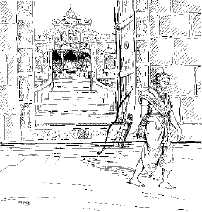
धृतराष्ट्रने पाण्डवोंके साथ बहुत अन्याय किया था। पाण्डवोंको लाक्षागृहमें जलानेका प्रयत्न किया। विदुरजीको अच्छा नहीं लगा। विदुरजीने धृतराष्ट्रसे कहा है—‘तू चोर है! चोरी करता है।’
ताला तोड़ करके जो ले जाता है, वही चोर है—अरे, ताला तोड़ करके जो ले जाता है, वह चोरका सरदार है। चोरी अनेक रीतिसे मानव करता है। शास्त्रोंमें तो ऐसा लिखा है कि बहुत कम परिश्रम करके जो ज्यादा पैसा कमाता है—एक प्रकारसे वह चोर ही है। परिश्रमके अनुसार पैसा कमाये, यह उचित है। मेहनत बहुत कम करता है और पैसा ज्यादा कमाता है—यह चोरी-जैसा ही पाप है।
शास्त्रोंमें लिखा है—वृद्ध माता-पिताकी जो सेवा नहीं करता, वह चोर है। भगवान्को भोग लगाये बिना जो खाता है, वह चोर है। अग्निमें होम करता नहीं है और अन्न खाता है, वह चोर है। अग्निके आधारसे रसोई होती है। अग्निके आधारसे खाया हुआ पचता है। विचार करना—मेरा नंबर कहीं चोरमें आता है—मैं कैसा हूँ—मानव अनेक रीतिसे चोरी करता है।
धृतराष्ट्रको विदुरजीने कहा है—‘तू चोर है, तेरी दानत बिगड़ गयी है। ‘राष्ट्र’ शब्दका अर्थ होता है—सम्पत्ति। दूसरेका धन जो पचाता है, हड़प करता है—वह चोर है। बिना मेहनत, बिना परिश्रम जो दूसरेका धन लेता है—वह चोरी करता है। आधा राज्य पाण्डवोंका है।’
सन्त सभीमें सद्भाव रखते हैं; किंतु, धृतराष्ट्र ऐसा दुष्ट है कि धृतराष्ट्रके लिये सन्तोंमें भी सद्भाव रहा नहीं।
गीताजीके आरम्भमें ‘धृतराष्ट्र उवाच’ —ऐसा पाठ आता है—
धर्मक्षेत्रे कुरुक्षेत्रे समवेता युयुत्सव:।
मामका: पाण्डवाश्चैव किमकुर्वत सञ्जय॥
गीताजीका आरम्भ धृतराष्ट्र करता है। भगवान् श्रीशंकराचार्यस्वामीको अच्छा नहीं लगा। एक दुष्ट-पापी जीव गीता-शास्त्रका आरम्भ करे! श्रीशंकरस्वामीने गीताजीका आरम्भ दूसरे अध्यायके ग्यारहवें श्लोकसे माना है। भगवान् श्रीकृष्ण बोलते हैं, वहाँसे गीता-शास्त्रका आरम्भ माना है। पहला अध्याय और दूसरे अध्यायके दस श्लोक छोड़ दिये हैं। जो धृतराष्ट्र बोलता है, उसकी व्याख्या मैं क्या करूँ—धृतराष्ट्र दुष्ट है—पापी है।
अशोच्यानन्वशोचस्त्वं प्रज्ञावादांश्च भाषसे।
गतासूनगतासूंश्च नानुशोचन्ति पण्डिता:॥
इस श्लोकसे श्रीशंकरस्वामीने गीता-भाष्यका आरम्भ किया है। पहला अध्याय छोड़ दिया है। जो धृतराष्ट्र बोलता है, जिसका आरम्भ धृतराष्ट्र करता है—उसकी व्याख्या मैं क्या करूँ—वह उपोद्घात है—ऐसा कह करके पहले अध्यायको छोड़ दिया है।
धृतराष्ट्र दुष्ट है, चोर है, अति पापी है। विदुरजीने धृतराष्ट्रको कहा है—‘आधा राज्य पाण्डवोंको दे देना चाहिये। तू आधा राज्य पाण्डवोंको नहीं देगा, तब मैं घरमें नहीं रहूँगा।’
धृतराष्ट्रने कहा—‘तुझे जहाँ जाना हो, वहाँ जा।’
विदुर-दम्पतीकी दिनचर्या
विदुरजीने घर छोड़ दिया। धृतराष्ट्रके भाई हैं। हस्तिनापुरमें गंगा-किनारे छोटी-सी एक झोपड़ीमें विदुरजी पत्नीके साथ भक्ति करते हैं। पति-पत्नीने ऐसा कार्यक्रम बना लिया कि मन संसारके किसी विषयमें जाय ही नहीं।
मन आपका नौकर है। यह नौकर बड़ा तूफानी है। इसको किसी अच्छे काममें लगा दो, नहीं तो वह गड्ढेमें फेंक देगा। तन और मनको किसी भी सत्कर्ममें लगा दो। नहीं तो, मन पाप करेगा। मन खाली होता है, तब खराब विचार करता है। पति-पत्नीने कार्यक्रम ऐसा बना लिया कि एक क्षण भी मनको संसारमें नहीं जाने देना है।
आपका मन पाप करता है—वह आपकी प्रेरणासे करता है। आपकी प्रेरणाके बिना मन पाप नहीं कर सकता है। मन स्वतन्त्र नहीं है, मन नौकर है। मानव बोलता है—‘मेरा मन बिगड़ा है।’ मन आपका है, आप अपने मनको किसी अच्छे काममें लगा दो। नहीं तो, वह पाप करेगा।
पति-पत्नीने ऐसा नियम लिया है कि प्रात:कालमें तीन घण्टेतक नारायणका ध्यान करना है—मेरे भगवान्का श्रीअंग कैसा है—भगवान्के नख कैसे हैं—भगवान्के बाल कैसे हैं—भगवान्की अँगुली कैसी हैं—भगवान्के एक-एक अंगमें आँख और मनको स्थिर करना ही ध्यान है।
संसारका ध्यान करनेसे मन बिगड़ा है। बहुत दान देनेसे बिगड़ा हुआ मन शुद्ध नहीं होता है। श्रीमान् लोग बहुत दान देते हैं—ठीक है। पर, इससे मन शुद्ध नहीं होता है। मन बिगड़ा है संसारका ध्यान करनेसे। वह मन जब परमात्माका ध्यान करता है, तब सुधरता है।
विदुरजी पत्नीसहित तीन घण्टेतक नारायणका ध्यान करते हैं, फिर तीन घण्टेतक बालकृष्णलालकी पूजा करते हैं। जंगलसे फूल-तुलसी ले आते हैं, भगवान्का फूलसे शृंगार करते हैं। विष्णुसहस्रनामका पाठ करते हुए श्रीकृष्ण-चरणमें तुलसीजी अर्पण करते हैं। मनसे सुन्दर सामग्री बना करके भगवान्को भोग लगाते हैं। आँख बन्द करके दर्शन करते हैं—मेरे बालकृष्णलाल धीरे-धीरे भोजन कर रहे हैं। तीन घण्टेतक पूजा करते हैं। पूजा करनेके बाद तीन घण्टेतक विदुरजी भगवान्को प्रसन्न करनेके लिये—
हरे कृष्ण हरे कृष्ण कृष्ण कृष्ण हरे हरे।
हरे राम हरे राम राम राम हरे हरे॥
—कीर्तन करते हैं। कीर्तन होनेके बाद भगवान्के सन्मुख विदुरजी कथा करते हैं। भगवान्की कथा भगवान्को सुनाते हैं। मेरे भगवान् श्रोता हैं और मैं वक्ता हूँ। भगवान्के सन्मुख कथा करते हैं। कथा, कीर्तन, पूजा, जप, ध्यान—दिनभर सत्कर्म करते हैं। मनको पाप करनेका समय ही नहीं मिलता है।
मानव जब मनको पाप करनेका अवसर देता है, तभी पाप होता है। एक मिनट भी मनको पाप करनेका अवसर देना ही नहीं है। एक बार मनको पाप करनेकी आप छूट देंगे, मन फिर माँगेगा। फिर तो मनको पाप करनेमें मजा आयेगा—मनमें पाप घर करेगा, फिर पाप नहीं छूटेगा। अपने मनको आपको ही सँभालना है।
पति-पत्नीने कार्यक्रम ऐसा बना लिया कि एक मिनट भी मनको संसारमें नहीं जाने देना है। पाण्डव वनमें भक्ति करते है, विदुरजी हस्तिनापुरमें गंगाके किनारे झोंपड़ीमें रहकर भक्ति करते हैं।
धृतराष्ट्रने जब सुना है कि मेरा भाई विदुर गंगा-किनारे रह रहा है। घरसे एक पैसा भी उसने लिया नहीं। अगर वह भीख माँगनेको जाय तो जगत्में मेरी अपकीर्ति होगी—मेरा भाई है। गाड़ीमें सब कुछ भरा और धृतराष्ट्रने सेवकोंको आज्ञा दी—‘विदुरको अन्न दे आओ, वस्तु दो, कपड़ा दो। उसको अड़चन पड़े नहीं, वह मेरा भाई है।’
धृतराष्ट्रके सेवक सब गाड़ीमें भरकर ले आये हैं। विदुरजीसे कहा—‘आपके भाईने यह सब दिया है।’
विदुरजीको पापी धृतराष्ट्रका अन्न लेनेकी इच्छा नहीं है। पत्नीकी परीक्षा की है, पत्नीसे कहते हैं—‘मेरे भाईने भेजा है, घरमें रखो।’ पत्नीने कहा—‘ये अन्न पेटमें जायगा तो मन बिगड़ जायगा—भक्ति नहीं होगी। हम घर छोड़ करके गंगा-किनारे भक्ति करनेके लिये आये हैं। आजतक बहुत खाया है। खानेसे कहाँ शान्ति मिली है—गंगा-किनारे हम खानेके लिये नहीं आये, भक्ति करनेके लिये आये हैं।’
कितने लोग घर छोड़ करके गंगा-किनारे भक्ति करनेके लिये तो जाते हैं। वहाँ जानेपर उन्हें घर बहुत याद आता है। घरको पत्र लिखते हैं—‘एक अचारकी बरनी भेज देना।’ अरे, तुम्हें अचार खाना था तो घर छोड़ करके यहाँ आया काहे को—जिसको सादा भोजन भाता है, वही भक्ति कर सकता है।
विदुरजीको पत्नीने कहा—‘ये अन्न पेटमें जायगा तो मन बिगड़ेगा।’ विदुरजी पत्नीको समझाते हैं कि भोजन करना भी भक्ति है, भोजन न करनेसे शरीर दुर्बल हो जायगा, भक्ति नहीं होगी। भगवान्को भोग लगायेंगे, भोजन करेंगे—क्या हर्ज है?
विदुर-पत्नीने कहा—‘यह अन्न पेटमें जायगा तो मन बहुत बिगड़ेगा। अन्न-दोष भक्तिमें विघ्न करता है। अन्न-दोष मनको बहुत बिगाड़ता है।’
विदुरजीने कहा—‘मेरी वृद्धावस्था है। अब मैं पैसेके लिये प्रवृत्ति नहीं कर सकता। भूख लगेगी तो तू क्या खायेगी?’
विदुर-पत्नीने कहा—‘दिनभर भक्ति करूँगी। जब अतिशय भूख लगेगी तो दो-चार टिक्कड़ बनाऊँगी। आप दो टिक्कड़ खाना, मैं दो टिक्कड़ खाऊँगी। आजतक तो बहुत खाया है। अतिशय भूख लगती है, तब जो कुछ मिलता है, वह अमृतसे भी मधुर लगता है। दिनभर भक्ति करेंगे। दो टिक्कड़ आप खाओ, दो टिक्कड़ मैं खाऊँ। गंगा-किनारे तिन्नजाकी भाजी होती है, वह ले आयेंगे—भगवान्को भोग लगायेंगे। जिसको सादा भोजन भाता है, उसीको भक्तिका आनन्द मिलता है। जिसका भोजन नीरस है, उसीको भक्तिका रस मिलता है। जिसका भोजन बहुत सरस है, उसका भजन नीरस हो जाता है। आजतक बहुत खाया है, खानेसे शान्ति नहीं मिलती है। जीभको, मनको समझानेसे शान्ति मिलती है।’
पति-पत्नीने ऐसा निश्चय किया है—धृतराष्ट्रका अन्न लेते नहीं है। पाण्डव वनमें भक्ति करते हैं, विदुरजी हस्तिनापुरमें गंगा-किनारे झोंपड़ीमें रहकर सतत भक्ति कर रहे हैं।
धृतराष्ट्रका कपटपूर्ण व्यवहार
बारहवर्षका वनवास-अज्ञातवास परिपूर्ण हुआ है। फिर भी दुर्योधनने कहा—‘युद्ध किये बिना मैं कुछ भी देनेको तैयार नहीं हूँ।’
धर्मराज धर्मकी मूर्ति हैं—युद्ध करनेसे देश दुखी होगा। द्वारकानाथ श्रीकृष्णको धर्मराजने कहा है—‘आप एक बार दुर्योधनको समझाओ। दुर्योधन मान जाय तो अच्छा है। युद्ध करनेसे मेरा देश दु:खी होगा। आधा राज्य नहीं, एक-दो गाँव देगा तो भी मैं मान लूँगा। क्षत्रियको भीख माँगनेका अधिकार नहीं है। पोषणके लिये थोड़ा भी कुछ देना चाहिये।’
कौरव-पाण्डवोंका युद्ध धनके लिये नहीं हुआ है, धर्मके लिये हुआ है। धर्मराज धर्मकी मूर्ति हैं।
श्रीकृष्णभगवान् सन्धि करनेके लिये हस्तिनापुरमें आनेवाले हैं—धृतराष्ट्रने सुना है। धृतराष्ट्रने विचार किया कि द्वारकानाथ श्रीकृष्ण आनेवाले हैं। मैंने ऐसा सुना है कि श्रीकृष्ण राजाधिराज हैं। द्वारकामें छप्पन भोगका रोज भोजन करते हैं। मैं श्रीकृष्णका स्वागत अच्छी तरहसे करूँगा। ऐसा स्वागत करूँगा कि वे प्रसन्न हो जायँगे। प्रसन्न होनेपर उनको मैं समझाऊँगा—दो भाइयोंका झगड़ा है, आपको इस झगड़ेमें पड़नेकी क्या जरूरत है—श्रीकृष्णको समझा करके अपने पक्षमें मैं खींच लूँगा।
धृतराष्ट्रने हुक्म किया है। छप्पन भोगकी सामग्री बनती है। स्वागतकी बहुत तैयारी हुई है। अनेक देशोंसे साधु-सन्त-महात्मा हस्तिनापुरमें आये हैं। बड़े-बड़े राजा लोग आये हैं—श्रीकृष्णका दर्शन करनेके लिये।
श्रीकृष्णके प्रति विदुर-दम्पतीका प्रेमभाव
विदुरजीको सुनकर आनन्द हुआ है। स्नान करके घरमें आये हैं। पति-पत्नीका ऐसा नियम था—घरमें मौन रहते हैं, बोलते नहीं हैं। जब सत्संग करनेके लिये बैठते हैं, तभी बोलते हैं। पति-पत्नीके जीवनमें बहुत-सा समय बातें करनेमें जाता है। एक घरमें रहनेसे बोलना ही पड़ता है। विदुरजी पत्नीके साथ एक घरमें मौन रहते हैं, बोलते नहीं हैं। पति-पत्नीमें अतिशय प्रेम है। जब सत्संग करनेके लिये बैठते हैं, तभी बोलते हैं।
बुहारी न करनेसे घर बिगड़ जाता है—घरमें धूल आती है। मनके ऊपर भी धूल पड़ती है। विदुरजी पत्नीके साथ सत्संग करते हैं।
विदुरजीने कहा—‘एक साधुके मुखसे मैंने सुना था—कोई भी वैष्णव बारह वर्षतक दु:ख सहन करके एक ही जगहमें रह करके भगवान्की भक्ति करे तो भगवान्को दया आती है। वह जीव लायक न हो तो भगवान् स्वप्नमें दर्शन देते हैं। लायक हो तो प्रत्यक्ष भी दर्शन देते हैं। बारह वर्षतक इस झुग्गी-झोंपड़ीमें तुमने बहुत दु:ख सहन किया है। भक्ति कभी व्यर्थ नहीं जाती। भक्तिका फल भगवान् हैं। तुम्हें भक्तिका फल कल मिलनेवाला है।’
विदुर-पत्नी जानती नहीं हैं। विदुर-पत्नीने पूछा—‘कल क्या फल मिलेगा?’
‘कल द्वारकानाथ श्रीकृष्ण आनेवाले हैं। लोग तो ऐसी बातें करते हैं कि दुर्योधनको समझानेके लिये आ रहे हैं, किंतु मेरा मन मुझे ऐसा कहता है कि दुर्योधन दुष्ट है, नहीं सुधरेगा—वह सुधरनेवाला नहीं है। मेरे भगवान् मुझे दर्शन देनेके लिये आ रहे हैं। मेरे भगवान् मेरे लिये आ रहे हैं। मैंने बारह वर्षतक इस झोंपड़ीमें रह करके भक्ति की है—उसका कुछ फल तो मिलना ही चाहिये। भक्ति कभी व्यर्थ नहीं जाती।
कल द्वारकानाथका दर्शन होगा—जान करके विदुर-पत्नीको आनन्द हुआ है। आँख गीली होती है—भगवान्का दर्शन होगा।...इधर दो-तीन दिनसे मुझे अच्छे-अच्छे स्वप्न हो रहे हैं। परसों मैंने स्वप्नमें देखा था कि मैं द्वारकामें गयी हूँ। मेरे मालिक स्वर्ण-सिंहासनमें विराजमान हैं। अतिशय भीड़ हुई है। भीड़में यह जीव भी गया है। मैं तो बहुत दूर खड़ी हूँ। मैं द्वारकानाथका दर्शन करती हूँ। भगवान्ने मुझे नजर दी, मुझे देखकर गालमें हँसने लगे।... मैं जाग गयी।
मनकी परीक्षा स्वप्नसे होती है—स्वप्नमें आपको क्या दिखता है—स्वप्नमें क्या याद आता है—मनकी परीक्षा दिवसमें नहीं होती है, रात्रिमें होती है। मनकी परीक्षा निवृत्तिके समयमें होती है—निवृत्तिमें मन कहाँ जाता है—दिनभर मानव कुछ प्रवृत्ति करता है। मन कैसा है—मानवको खबर नहीं पड़ती। निवृत्तिके समयमें जो याद आये, समझना कि मन वहाँ फँसा हुआ है।
विदुरजीने कहा—‘यह स्वप्न बहुत सुन्दर है। कल द्वारकानाथका दर्शन होगा।’
विदुर-पत्नीने कहा—‘प्रभुके साथ आपका कोई परिचय है क्या—भगवान् आपको पहचानते हैं?’
विदुरजीने हाथ जोड़ करके कहा है—‘मेरे ऊपर बहुत कृपा है। मैं लायक तो नहीं हूँ, तो भी भगवान् बहुत कृपा रखते हैं। कभी मेरा नाम ले करके मुझे नहीं बुलाते। मैं उम्रसे तो बड़ा हूँ, मैं वयोवृद्ध हूँ। मेरे-जैसे साधारण जीवको भगवान् मान देते हैं—मुझे ‘काकाजी’ कहते हैं। मुझे जब ‘काकाजी’ कहते हैं, तब मुझे आनन्द होता है। मुझे संकोच भी होता है—भगवान् तो अनन्तकोटि ब्रह्माण्डके नायक हैं, सबके पिता हैं। मुझे कितना मान देते हैं! मैं भगवान्को हाथ जोड़ करके कहता हूँ—‘मैं आपका एक साधारण नौकर हूँ, आप मेरे मालिक हैं। मुझे ‘काकाजी’ नहीं कहना।’ तब भगवान् स्मित हास्य करके कहते हैं—‘वो सब तो ठीक है, आप उम्रसे बड़े हैं—इसीलिये मैंने आपको ‘काकाजी’ माना है।’
विदुर-पत्नीने जब सुना है—मेरे पतिदेवको भगवान् ‘काकाजी’ कहते हैं...। तो, कोई दिवस ऐसा भी आयेगा, जब मेरे घरमें भगवान् आ करके मुझे ‘काकीजी’ कहेंगे। ऐसा दिवस कब आयेगा?
इस जीवको मानकी भूख है। संसारमें बहुत मान मिलनेपर भी यह भूख शान्त नहीं होती है। भगवान् जिसको मान देते हैं, प्रभुके दरबारमें जिसको मान मिलता है—उसीका मान कायम टिकता है। जगत्में मान मिले या अपमान मिले; मान और अपमान—दोनोंमें जो अपनेको शान्त रखता है, वही भक्ति कर सकता है। जिसको मान मीठा लगता है, उसका थोड़ा अपमान हो तो हृदयको जलाता है। मनको शान्त रखना ही महान् पुण्य है। मान-अपमानमें जो अपने मनको शान्त रखता है, वही भक्ति कर सकता है।
विदुर-पत्नीने विचार किया—मेरे घरमें एक बार भगवान् आयें। मेरे घरमें भगवान् भोजन करें। मैं भावना करती हूँ कि बालकृष्ण भोजन करते हैं—किंतु, भावनासे सन्तोष नहीं होता है। भगवान् कैसे भोजन करते हैं—यह देखना है। मेरे घरमें भगवान् भोजन करें। प्रभुसे मुझे कुछ माँगना नहीं है—कोई सुख भोगनेकी इच्छा नहीं है। एक बार भगवान् मेरे घरमें आयें। मैं जानती हूँ मेरे भगवान् बड़े कोमल हैं। मैं पंखा लेकर उनकी सेवा करूँगी—उनको गरमीका परिश्रम नहीं होने दूँगी। भगवान् भोजन करें—वह मुझे देखना है।
विदुर-पत्नीने कहा—‘प्रभु आपको इतना मान देते हैं तो आप भगवान्को आमन्त्रण क्यों नहीं देते—भगवान्को वन्दन करके प्रार्थना करो कि इस गरीबकी झोंपड़ीमें भगवान् आयें।’
भक्ति जब बढ़ती है, तब अभिमान मरने लगता है। विदुरजीका अभिमान मर गया है। विदुरजी हृदयसे दीन बने हैं। विदुरजी विचार करते हैं—प्रभुको निमन्त्रण देनेके लिये मैं लायक नहीं हूँ। जो अनन्तकोटि ब्रह्माण्डका नायक है, जो लक्ष्मीका पति है—उसको मैं कैसे कहूँ कि मेरे घरमें भोजन करनेके लिये आओ—मेरे ऊपर तो बहुत कृपा है। मैं निमन्त्रण देनेके लिये जाऊँ तो ‘ना’ तो नहीं कहेंगे—मेरे घरमें आयेंगे, किंतु मुझे संकोच होता है। मैं वैष्णव तो हूँ, किंतु मैं दरिद्री हूँ। मेरे घरमें भगवान् आयें तो मुझे तो आनन्द होगा; किंतु मेरे भगवान् अति कोमल हैं—प्रभुको परिश्रम होगा। मेरे घरमें कोई सुन्दर गादी (गत्री) नहीं है, कोई आसन नहीं है—मैं भगवान्को कहाँ बैठाऊँगा—भगवान् आयें तो मैं उनका क्या स्वागत करूँगा—मेरे घरमें भगवान् आयें तो मुझे आनन्द होगा, किंतु प्रभुको परिश्रम होगा। मेरे भगवान् राजाधिराज हैं—राजमहलमें उनका सम्मान होता है। मैं वैष्णव हूँ, किंतु दरिद्री हूँ। घरमें भगवान् आयें तो भगवान्का क्या स्वागत करूँगा!
विदुर-पत्नीने हाथ जोड़ करके कहा—‘हम टिक्कड़ खाते हैं—वही भगवान्को भी अर्पण करेंगे।’ विदुरजीने कहा—‘न... न..., यह टिक्कड़ भगवान्को कैसे अर्पण करेंगे—जो अति उत्तम है, वही भगवान्को अर्पण करना चाहिये। जो खराब है, वह मेरे लिये है; और जो अति उत्तम है, वह भगवान्के लिये है—इसीका नाम भक्ति है। ‘अच्छा’ मेरे लिये—इसीको आसक्ति कहते हैं। ये टिक्कड़, ये भाजी भगवान्को कैसे अर्पण करें—मेरे भगवान् लक्ष्मीके पति हैं।’
विदुर-पत्नीकी आँखमें आँसू आये हैं—‘मैंने कथामें सुना है कि गरीब वैष्णव उनको बहुत प्यारे लगते हैं।’ गरीबमें एक बड़ा सद्गुण है—जो दरिद्री है, उसका हृदय दीन बन जाता है। सम्पत्ति अभिमानके साथ ही रहती है। जिसके हाथमें पैसा है, उसको लगता है कि मैं बड़ा सयाना हूँ—मेरे यहाँ बहुत-से लोग माँगनेके लिये आते हैं। वास्तवमें तो वह होता है—मूर्ख!
सम्पत्ति अभिमानके साथ ही रहती है। दरिद्रतामें अभिमान मरता है—दीनता आती है। विदुर-पत्नीका अभिमान मर गया है—‘मैं गरीब हूँ। गरीबके घरमें भगवान् जाते हैं, भगवान्को गरीब वैष्णव बहुत प्यारे लगते हैं—ऐसा मैंने सुना है। मुझे लगता है—मेरे घरमें आयेंगे, आप आमन्त्रण दो।’
विदुरजीने कहा—‘मुझे हिम्मत नहीं होती है। बड़े-बड़े राजा लोग उनके साथमें रहते हैं। मेरे-जैसे साधारण जीवको कोई प्रभुके पास जाने नहीं देगा। मैं बहुत प्रयत्न करके जाऊँ भी तो उनका दर्शन करके हृदय पिघलता है—मैं उनको कैसे कहूँ कि मेरे घरमें भोजन करनेके लिये आओ—मुझे शरम आयेगी। मैं निमन्त्रण देनेके लायक नहीं हूँ। भगवान् कृपा करके बिना निमन्त्रण आयें तो अच्छा है।
मुझे ऐसा लगता है कि अभी बारह बरसतक फिरसे भक्ति करनी होगी। ये जो बारह बरसतक भक्ति की है तो उसका परिणाम यह भगवान्का दर्शन मिला है। अभी बारह बरसतक फिरसे भक्ति करेंगे—तब भगवान् बिना निमन्त्रण आयेंगे।’
विदुर-पत्नी रोने लगी—‘मेरी वृद्धावस्था है। अब मुझे आशा नहीं है कि बारह बरसतक यह शरीर रहेगा। अब यह शरीर ज्यादा दिन रहेगा नहीं; मरण समीपमें है—ऐसा लगता है। एक बार भगवान् मेरे घरमें आयें, मेरे घरमें भगवान् भोजन करें—यह मुझे देखना है। फिर मैं सुखसे मरूँगी। प्रभुसे मुझे कुछ भी माँगना नहीं है। एक बार मेरे घरमें भोजन करेंगे तो मेरा मरण सुधरेगा।’
पति-पत्नीको रातमें नींद आती नहीं है—आजकी रात कब पूरी होगी—विदुर-पत्नीने निश्चय किया—मेरे पतिको तो संकोच होता है कि भगवान्को निमन्त्रण कैसे दूँ—भगवान् मेरे हैं, मैं भगवान्की दासी हूँ—मुझे संकोच नहीं है। कल द्वारकानाथका जब दर्शन होगा, तब हाथ जोड़ करके मैं भगवान्को कहूँगी कि मेरे घरमें आना। मुझे लगता है कि वे आयेंगे। मेरे हृदयमें शुद्ध प्रेम होगा तो जरूर आयेंगे। वे अन्तर्यामी हैं—मेरे हृदयमें कपट होगा तो वे नहीं आयेंगे।
विदुर-पत्नीने निश्चय किया है—दर्शनके समयमें हाथ जोड़ करके मैं भगवान्को कहूँगी कि मेरे घरमें आओ। वे अन्तर्यामी हैं—सब जानते हैं। आयेंगे—ऐसा लगता है।
प्रात:काल हुआ है। पति-पत्नीने स्नान किया है। बहुत प्रेमसे बालकृष्णलालकी पूजा की है। पूजामें आज हृदय गद्गद हो गया। आज दर्शनमें बहुत आनन्द आता है। आज परमात्मा प्रसन्न दिखते हैं। आज दर्शनमें, सेवामें जैसा आनन्द आया—वैसा आनन्द कभी नहीं आया। पति-पत्नी बालकृष्णलालकी सेवा-पूजा करके दर्शनकी आतुरतामें दौड़ते हुए जाते हैं। बहुत भीड़ हुई है। भीड़में विदुरजी पत्नीके साथ मालिकको मनाते हैं। शरीर दुर्बल हो गया है। अन्नसे तन पुष्ट होता है, भक्तिसे मन पुष्ट होता है। शरीर तो दुर्बल है, मन भक्तिरससे पुष्ट हो गया है। साधारण वस्त्र पहना है। शरीरकी सभी हड्डियाँ दिखती हैं। हाथ जोड़ करके खड़े हैं, मालिकको मनाते हैं।
दूरसे द्वारकानाथका रथ देखते हैं। सोनेका रथ है—चार घोड़े हैं, दारुक सारथी है, उद्धव और सात्यकी हाथमें पंखा ले करके सेवा कर रहे हैं। मालिक सिंहासनमें विराजमान हैं। दिव्य शृंगार किया है। मालिककी नजर धरतीपर है।
भगवान् जल्दी नजर नहीं देते। जीवको किये गये पापके लिये जब हृदयसे पश्चात्ताप होता है, जीव जब सब प्रकारका अभिमान छोड़ करके शरणमें आता है—तो भगवान् नजर देते हैं।
भगवान्की नजर धरतीमें है। ब्राह्मण वेद-मन्त्र बोल रहे हैं, विष्णु-सूक्तका पाठ कर रहे हैं, वैष्णव ‘हरे कृष्ण हरे कृष्ण’ कीर्तन करते हैं। सभीकी इच्छा है—भगवान् एक बार नजर दें।
रथमें विराजमान द्वारकानाथका दर्शन हुआ है, प्रेममें हृदय पिघला है। आँखसे प्रेमाश्रु निकलते हैं—मेरे भगवान्का वैभव कैसा है! मेरे भगवान् लक्ष्मीके पति हैं, मेरे भगवान् राजाधिराज हैं। आनन्द हुआ है—आनन्द ही आँखसे धीरे-धीरे बाहर आता है—
रथारूढो गच्छन् पथि मिलितभूदेवपटलै:
स्तुतिर्प्रादुर्भावं प्रतिपदमुपाकर्ण्य सदय:।
दयासिन्धुर्बन्धु: सकलजगतां सिन्धुसुतया
जगन्नाथ: स्वामी नयनपथगामी भवतु मे॥
विना यस्य ध्यानं व्रजति पशुतां सूकरमुखां
विना यस्य ज्ञानं जनिमृतिभयं याति जनता।
विना यस्य स्मृत्या कृमिशतजनिर्याति स विभु:
शरण्यो लोकेशो मम भवतु कृष्णोऽक्षिविषय:॥
श्रीकृष्ण-दर्शनकी अतिशय आतुरता है। बारह बरसतक उन्होंने बहुत दु:ख सहन किया है। रथमें विराजमान शंख-चक्र-गदा-पद्मधारी श्रीकृष्णका जब दर्शन होता है—अति आनन्द होता है।
विदुर-पत्नीने विचार किया था कि दर्शनके समयमें हाथ जोड़ करके मैं भगवान्को कहूँगी कि मेरे घरमें आना। प्रभुका अलौकिक वैभव-ऐश्वर्य देख करके हृदय पिघलता है—ऐसा जिनका ऐश्वर्य है, वे मेरी-जैसी दरिद्राकी झोंपड़ीमें नहीं आयेंगे। मेरे भगवान् राजाधिराज हैं।
द्वारकानाथका दर्शन करते-करते पति-पत्नीके हृदयमें भाव जाग्रत् हुआ कि भगवान् क्या हमारे घरमें आयेंगे? विदुर-पत्नीने ऐसा विचार किया कि एक बार भगवान् मुझे नजर दें, मेरी ओर देखें तो मैं मानूँगी कि मेरे घरमें आयेंगे। मैंने उनके लिये बहुत दु:ख सहन किया है। मुझे भगवान् नजर भी नहीं देंगे?
अन्तर्यामी समझ गये कि इस भीड़में मेरा प्यारा कोई वैष्णव आया है, मुझे बुलाता है, मुझे याद करता है! कौन बुलाता है—अबतक तो भगवान्की आँख नीचे थी, धरतीमें नजर रखे थे। विदुरजी पत्नीके साथ जहाँ खड़े हैं, वहाँ रथ आया है। भगवान् समझ गये हैं। आँख ऊँची करते हैं, पति-पत्नीके ऊपर नजर पड़ती है—शरीर दुर्बल हुआ है, साधारण वस्त्र पहना है। हाथ जोड़ करके मनाते हैं—यह जीव शरणमें आया है। भगवान्की नजर पड़ी—ये घर बड़ा अच्छा है। मैं विचार करता था, हस्तिनापुरमें आया हूँ—कहाँ जाऊँ—जहाँ अतिशय पवित्रता है, जहाँ अतिशय प्रेम है—वहीं प्रभु आते हैं।
भगवान्ने स्मित हास्य किया और विदुरजीको आँखसे संकेत किया—‘मैं आता हूँ।’ आँखमेंसे प्रेमाश्रु निकलते थे, पति-पत्नी समझ सके नहीं कि भगवान्ने संकेत किया है—‘मैं आता हूँ।’ पति-पत्नीको इतना ही भान हुआ कि मुझे नजर दी है, मुझे देखकर हँसने लगे—बहुत कृपा है। कितनी भीड़ थी, किंतु किसीको भगवान्ने नजर नहीं दी। मुझे भगवान्ने नजर दी है, मुझे पहचान लिया।
पति-पत्नीको तो ऐसा आनन्द हुआ, जैसे परमात्मा उनके घर आये हैं। भगवान्ने संकेत किया, वह समझ सके नहीं। श्रीकृष्णका स्मरण करते हुए घरमें आये हैं।
सन्धिदूत श्रीकृष्ण
श्रीकृष्ण कौरव-सभामें आये हैं। द्वारकानाथका वहाँ सम्मान हुआ है। श्रीकृष्णका सुन्दर भाषण हुआ है।
श्रीकृष्ण सबसे श्रेष्ठ हैं। श्रीकृष्णको अभिमानका स्पर्श नहीं है। सभामें भगवान्ने कहा है—‘आज मैं धर्मराजका दूत बन करके सन्धि करनेके लिये आया हूँ।’
जो जगत्का मालिक है, जो लक्ष्मीका पति है, वह सभामें बोलता है—‘मैं धर्मराजका दूत हूँ, मैं सन्धि करनेके लिये आया हूँ।’
सुन्दर भाषण किया है। दुर्योधनको अनेक रीतिसे समझाया है—‘तुम्हारे अपराधको धर्मराज क्षमा करेंगे। आधा राज्य पाण्डवोंका है। आधा भले न दो, एक ग्राम (गाँव) दे दो तो भी सन्तोष मानेंगे। उनको युद्ध करनेकी इच्छा नहीं है। थोड़ा तो देना ही चाहिये। युद्ध करनेसे देश दुखी होगा।’
दुर्योधन भगवान्को जवाब देता है—‘भीख माँगनेसे कहीं राज्य मिलता है? पाण्डवोंमें शक्ति हो तो युद्ध करें। मैं कुछ भी देनेवाला नहीं हूँ।’
सभामें बड़े-बड़े साधु-सन्त बैठे थे, राजा बैठे थे। सभी लोग दुर्योधनको समझाते हैं—‘ये अच्छा नहीं है, पाण्डवोंको देना चाहिये।’ सभी लोग समझाने लगे, तब दुर्योधनको क्रोध आया—‘मैं सब जानता हूँ। मुझे समझानेकी क्या जरूरत है?’ बड़ा घमण्डी है। क्रोधमें सभाका त्याग किया है—‘मुझे यहाँ बैठना नहीं है। मुझको किसीकी बात सुननी ही नहीं है।’ क्रोधमें दुर्योधन चला गया है।
भगवान् समझ गये हैं, इसको मार पड़ेगी, तभी अकल आयेगी। कितने जीव ऐसे होते हैं कि भगवान् समझायें तो भी नहीं सुधरते। जब बहुत मार पड़ती है, तब बुद्धि सुधरती है। दुर्योधन ऐसा ही दुष्ट है।
भगवान् खड़े हुए हैं। धृतराष्ट्रने सुना—श्रीकृष्ण अब जा रहे हैं। धृतराष्ट्रने हाथ जोड़े, भगवान्को कहा है—‘छप्पन भोगकी सामग्री तैयार है, भोजन करो। आपके लिये बनाया है।’
भगवान्ने विचार किया—ऐसे चोरके घरका मैं खाऊँ तो कदाचित् मेरी भी बुद्धि बिगड़ जायगी! धृतराष्ट्र चोर है, दुष्ट है। मुझे निमन्त्रण देता है! ‘तुम्हारे घरका खाना नहीं है।’
धृतराष्ट्रने पूछा—‘क्यों ‘ना’ बोलते हैं?’
भगवान्ने कहा—‘शत्रुके घरका नहीं खाना चाहिये।’
‘तो मैं आपका शत्रु हूँ?’
‘वैष्णवका जो वैरी है, वह मेरा भी वैरी है। पाण्डवान् द्विषसे राजन्—हे राजन्! आप पाण्डवोंसे द्वेष करते हैं, पाण्डव मुझे प्राणसे भी प्यारे लगते हैं।’
अति दु:खमें पाण्डवोंने कभी पाप किया नहीं, अति दु:खमें पाण्डवोंने अपना धर्म छोड़ा नहीं है। इसीलिये भगवान् भी कभी पाण्डवोंको नहीं छोड़ते। ‘पाण्डव मेरे हैं। पाण्डवोंका शत्रु मेरा शत्रु है’ —ऐसा बोलते हैं। मूर्ख समझता नहीं है।
बड़े-बड़े राजा लोग सभामें बैठे थे। राजाओंको ऐसी आशा हुई कि आज मैं श्रीकृष्णकी सेवा करूँगा, मेरा जन्म सफल होगा। राजाओंने हाथ जोड़ करके निमन्त्रण दिया है—‘घरमें सब तैयारी है, पधारो। मैं सेवा करूँगा।’
राजाओंको कह दिया—‘मैं किसी राजाके यहाँ जानेवाला नहीं हूँ।’
राजाओंको जब ‘ना’ बोला है, तब सभामें जो ब्राह्मण बैठे हैं, ऋषि बैठे हैं—उनको ऐसा लगा कि हम तो चार वेद पढ़े हैं, छ: शास्त्रोंका परिपूर्ण ज्ञान है। भगवान् हमारे घरमें आयेंगे। ब्राह्मण लोग निमन्त्रण देते हैं। ब्राह्मणोंको भगवान् वन्दन करते हैं—‘ब्राह्मणके घरमें नहीं जाना है।’
ज्ञान बढ़ता है, तब अभिमान भी बढ़ने लगता है। भगवान्को बहुत ज्ञान अच्छा नहीं लगता है। भगवान्को भक्तोंका प्रेम प्रिय है। ज्ञान तो है, मुझमें भाव कहाँ है—ब्राह्मणोंको ‘ना’ बोलते हैं। रथमें विराजते हैं।
विदुरजीका भाग्य
द्वारकानाथने दारुक सारथीको आज्ञा की है—‘विदुरजीके यहाँ जाना है, वहाँ रथ ले चलो।’ रथ निकला है। विदुरजीके द्वारपर रथ आया है। उस समय झोंपड़ीका दरवाजा बन्द करके पति-पत्नी एकान्तमें कीर्तन कर रहे हैं।
मन्दिरमें जा करके भजन-कीर्तन करना ठीक है—बहुत अच्छा नहीं है। अपने घरमें, एकान्तमें बैठकर कीर्तन करो। मन्दिरमें जाकर जो भक्ति करता है, उसकी प्रसिद्धि होती है। भक्ति जब प्रकट होती है, तब भक्तिमें विघ्न आता है। भक्ति प्रकट हो जाय तो भक्ति बढ़ती नहीं है। भक्ति अलौकिक धन है, उसको छिपाना चाहिये। जगत्को बताओ कि मैं संसारमें फँसा हुआ साधारण जीव हूँ। बाहरसे जगत्के साथ प्रेम बताना, अन्दरसे परमात्माके साथ प्रेम करना—यही भक्ति है। कोई जाने नहीं कि आप भक्ति करते हैं।
पति-पत्नीका ऐसा नियम था—दरवाजा बन्द करके एकान्तमें कीर्तन करते हैं। आज कीर्तनमें हृदय पिघलता है। विदुर-पत्नी कीर्तनमें बालकृष्णलालके साथ बातें करती है। बालकृष्णलालको कहा है—‘एक बार कथामें मैंने ऐसा सुना था कि गोकुलकी गोपी प्रेमकी मूर्ति है। कभी-कभी गोपी ऐसा बोलती है—‘यह कन्हैया कपटी है, श्रीकृष्ण कपट करते हैं।’ मैं ऐसा नहीं कहती। मैं तो गोपियोंके चरणमें वन्दन करती हूँ। ऐसा बोलनेका अधिकार केवल गोपियोंको है कि श्रीकृष्ण कपट करते हैं। मुझे ऐसा लगता है कि गोपी जो बोलती है, वह सत्य है। आप ऐसे ही हो। बारह वर्षतक मैंने आपकी आशा रखी थी। मैं मानती थी कि हस्तिनापुरमें आयेंगे, तब मेरे घरमें भी जरूर पधारेंगे। आपसे कुछ माँगना नहीं है। कोई सुख भोगनेकी इच्छा नहीं है।’
विदुरजीकी भक्ति भोगके लिये नहीं है, विदुरजीकी भक्ति भगवान्के लिये है—भगवान् मेरे घरमें आयें, एक बार भगवान् मेरे घरमें भोजन करें—वह मुझे देखना है। मेरी वृद्धावस्था है। अब शरीर बहुत दिनतक नहीं रहेगा। मेरे जीवनका यह अन्तिम मनोरथ है। एक बार द्वारकानाथ श्रीकृष्ण मेरे घरमें आयें, मेरे घरमें भोजन करें।
विदुर-पत्नी कहती है—‘मैं आशा रख करके आपकी भक्ति करती थी। आज मेरी आशा निराशा हो गयी। आप मेरे घरमें नहीं आओगे।’
बालकृष्ण गालमें हँसते हैं। विदुर-पत्नीकी आँखोंमें आँसू हैं—मेरे घरमें भगवान् नहीं आते हैं, मेरी भक्ति भगवान्को प्रिय नहीं है। बारह वर्षतक मैंने बहुत दु:ख सहे हैं।
विदुर-पत्नी रोती है, बालकृष्ण हँसते हैं। ‘आज मैं रोती हूँ, मुझे दु:ख होता है, मुझे देख करके आप हँसते हो—मैं रोती हूँ, आपको अच्छा लगता है—इस प्रकार वैष्णवोंको आप रुलाओगे तो आपकी भक्ति कौन करेगा?’
फिर विदुर-पत्नी पछताती है—‘मेरी भूल हो गयी। अभिमानमें आज मैंने भगवान्को सुनाया है।’ विदुर-पत्नी बार-बार वन्दन करती है—‘आज मेरी भूल हो गयी। अब कभी मैं ऐसा नहीं बोलूँगी। क्षमा करो... क्षमा करो...। मेरा अभिमान मरता नहीं है। मैं भक्ति करती हूँ—इसका मुझे अभिमान है।... कृपा करो। आज अभिमानमें मैंने भगवान्को—मेरे मनमें जैसा आया, वैसा सुना दिया।... कृपा करो।’
पति-पत्नीका हृदय प्रेममें पिघला हुआ है, देहका भान नहीं है। श्रीकृष्ण-दर्शनमें अतिशय तन्मयता हुई है। तन्मयतामें पति-पत्नी कीर्तन करते हैं—
हरे कृष्ण हरे कृष्ण कृष्ण कृष्ण हरे हरे।
हरे राम हरे राम राम राम हरे हरे॥
आँखें भगवान्के दर्शनके लिये हैं
परमात्मा श्रीकृष्णकी आँखोंमें ज्ञान और वैराग्यका निवास है। भगवान्की एक आँखमें ज्ञान है और एक आँखमें वैराग्य है। भगवान् प्रेमसे जिसको नजर देते हैं, उसकी बुद्धिमें ज्ञान प्रकट होता है। पुस्तक पढ़नेसे ज्ञान उत्पन्न होता है। जिसकी उत्पत्ति है, उसका विनाश भी होता है। बहुत-से लोग पुस्तकोंके पीछे ही पड़े रहते हैं। पुस्तक पढ़नेसे ज्ञानकी उत्पत्ति होती है। संसारका एक नियम है—जिसकी उत्पत्ति हुई है, उसका विनाश होनेवाला ही है। विनाशके लिए ही उत्पत्ति होती है। दो महीने-चार महीने कोई पुस्तक पढ़ना छोड़ दे तो धीरे-धीरे वह ज्ञानको भूल जायगा। अन्दरसे ज्ञानको प्रकट करो।
घरमें भगवान्का स्वरूप स्थापित करो। घरमें देव-पूजा होनी ही चाहिये। जिस घरमें देवोंकी पूजा नहीं होती है; वह घर घर नहीं है—श्मशान है। घरमें भगवान्की स्थापना करो, प्रेमसे पूजा करो, भगवान्का सुन्दर शृंगार करो। भगवान्के सौन्दर्यमें आँख और मन जब फँस जाता है, तभी पाप छूटता है।
मानव पाप क्यों करता है—मानवको संसारमें सौन्दर्य दिखता है, इसीलिये पाप होता है। भगवान् अति सुन्दर हैं, जिसका वर्णन करनेकी शक्ति किसी शब्दमें नहीं है। मनको बार-बार समझाओ—भगवान् बहुत सुन्दर हैं।
यह ‘फूल’ अभी सुन्दर लगता है। दो-चार घण्टेके बाद यह फूल सूख जायगा, फिर फूलमें सौन्दर्य नहीं दिखता है। लोग फूलको उठाकर फेंक देते हैं। फूल जिस प्रकार सूख जाता है, वैसे ही संसार भी सूख जाता है। अभी जो सुन्दर दिखता है, थोड़े ही समयमें वह बिगड़नेवाला है।
भगवान् नित्य सुन्दर हैं। प्रेमसे भगवान्का शृंगार करो। भगवान्में आँख स्थिर करके भगवान्के नामका जप करो। भगवान्की थोड़ी प्रार्थना करो—हे भगवान्! कृपा करो—मुझे नजर दो। भगवान्की आँखमें ज्ञान है और वैराग्य है—राम देवें नजर तुमको तो सभी सूरत रामकी है।
भगवान्की जो आँख है, वह जगत् देखनेके लिए नहीं है। जगत् तो भगवान्ने ही बनाया है। भगवान्को कभी जगत् देखनेकी इच्छा ही नहीं होती। भगवान्की जो आँख है, वह जीवका आकर्षण करती है। भगवान् सुन्दर हैं। प्रभुकी आँख अति-अति सुन्दर है। भगवान्की आँखमें केवल प्रेम भरा हुआ है। भगवान् सभीको प्रेमसे देखते हैं। भगवान् तो जीवको देखते हैं, ये जीव भगवान्का दर्शन नहीं करता है।
कितने लोग ऐसे होते हैं, जो दिवसमें एक बार, दो-चार बार दर्शन करनेके लिये जाते हैं। उनको ऐसा लगता है कि मैं चार बार दर्शन करता हूँ, दूसरे लोग तो एक बार भी दर्शन नहीं करते हैं। आप भगवान्का दर्शन चार बार करते हैं—अच्छा है। भगवान् कहते हैं—बेटा! तू चार बार मेरा दर्शन करता है, तुम्हें खबर नहीं है कि चौबीस कला तुम्हारा दर्शन मैं कर रहा हूँ। भगवान् सर्वकाल और सभीको देखते हैं। ये जीव ऐसा दुष्ट है कि शान्तिसे भगवान्का दर्शन नहीं करता है।
भगवान्के दर्शनमें जिसको तृप्ति होती है, वह वैष्णव नहीं है। भगवान् बहुत सुन्दर हैं। क्षण-क्षणमें अलौकिक आनन्द देते हैं। भगवान्में आँख स्थिर करो। कदाचित् मन चंचल हो जाय तो भले हो जाय। आँखको स्थिर करो। आँख भगवान्में रखो और भगवान्के नामका जप करो, भगवान्की प्रार्थना करो—मुझे नजर दो। भगवान् जिसको नजर देते हैं, उसकी बुद्धिमें ज्ञान प्रकट होता है। जो ज्ञान अन्दरसे प्रकट होता है, वह कायम रहता है। बाहरसे जो ज्ञान अन्दर आता है, वह टिकता नहीं है।
भक्ति ज्ञान-वैराग्यकी जननी है
पुस्तक पढ़नेसे ज्ञानकी उत्पत्ति होती है। ज्ञानको उत्पन्न मत करो, ज्ञानको भक्तिसे प्रकट करो। भक्ति माँ है और ज्ञान-वैराग्य दो बालक हैं। जहाँ माँ जाती है, माँके पीछे-पीछे बालक दौड़ता आता है। भक्तिसे जो ज्ञान प्रकट हुआ है, वह ज्ञान कायम रहता है। प्रयत्नसे जो ज्ञान मिला है, वह भूल जाता है। थोड़ा-सा विचार करो—आप सभी ज्ञानी हैं। आत्मा ज्ञानमय है। इस संसारमें कोई जीव मूर्ख नहीं है। जीव ईश्वरका अंश है। जो जीव ईश्वरका अंश है, वह मूर्ख नहीं हो सकता। जो सिंहका बच्चा है, वह सिंह ही है। जीव परमात्माका पुत्र है। प्रभुका पुत्र होनेसे जीव कभी मूर्ख नहीं हो सकता। सभी जीव ज्ञानी हैं। आत्मा ज्ञानमय है। किसीको मूर्ख समझना नहीं। किसीको मूर्ख समझ करके तिरस्कार करना नहीं। जो दूसरेको मूर्ख समझता है, वही मूर्ख होता है। ईश्वरका अंश जीव अज्ञानी नहीं हो सकता। मानवका ज्ञान अज्ञानसे ढँक जाता है—अज्ञानेनावृतं ज्ञानं तेन मुह्यन्ति जन्तव:।
सूर्यनारायण जगत्को प्रकाश देनेवाले हैं। प्रकाशमय सूर्यको एक बादल ढँक देता है। आकाशमें बादल आ जाय तो सूर्यका दर्शन नहीं होता। जिस प्रकार बादल सूर्यको ढँकता है, वैसे ही अज्ञान ज्ञानको ढँक लेता है। वासना ही बादल है। मानवका ज्ञान अज्ञानसे—वासनासे ढँका हुआ है।
सब लोग जानते हैं कि सत्य बोलना चाहिये, किंतु क्या सब लोग सत्य बोलते हैं? जहाँ थोड़ा स्वार्थ सिद्ध होता हो, वहाँ मानव झूठ बोलता है। झूठ बोलता है, तब मनमें खटकता है कि झूठ बोलना पाप है, मैं झूठ बोलता हूँ, यह ठीक नहीं है। मानव जानता है कि सत्य बोलना चाहिये तो भी वह सत्य नहीं बोलता—झूठ बोलता है। अपने मनको समझाता है कि झूठ बोलनेसे पाप लगेगा तो मन्दिरमें जाकर ग्यारह रुपया भेंट भगवान्को अर्पण कर दूँगा और भगवान्को कहूँगा कि हे भगवान्! कृपा करो, मैंने ग्यारह रुपये दिये हैं, मेरे सब पापोंको जला दो।
भगवान् कहते हैं—ऊपर आना, फिर तुम्हें मैं बताता हूँ। तू मुझे भेंट दे तो मैं तेरा पाप जला दूँ—पाप भोगना ही पड़ता है। मानव मूर्ख नहीं है। मानवका ज्ञान अज्ञानसे ढँका हुआ है। अज्ञानको दूर करो तो ज्ञान प्रकट हो जायगा। बादल हट जाय तो सूर्यका दर्शन होता है। अज्ञान दूर हो जाय, तो ज्ञान प्रकट होता है। लोग दवा खाते हैं, वह आरोग्यके लिए नहीं खाते हैं—रोगका विनाश करनेके लिए खाते हैं। शरीरमें कोई रोग है तो रोगके होनेसे आरोग्यका अनुभव नहीं होता है। दवा खानेसे आरोग्य नहीं मिलता है, दवा खानेसे रोगका नाश हो जाता है। रोगका नाश और आरोग्यकी प्राप्ति एक ही क्षणमें होती है। जिस क्षणमें रोगका नाश हुआ, उसी क्षणमें आरोग्यका अनुभव होता है। अज्ञान दूर हुआ कि उसी समय ज्ञान प्रकट हो जाता है।
आत्मा ज्ञानमय है। किसीको भी कभी मूर्ख समझना नहीं। जीव ईश्वरका अंश है। किसी भी जीवका तिरस्कार करना नहीं। किसी भी जीवका अपमान करना नहीं। जीव ईश्वरका अंश है, भगवान्का स्वरूप है। जीव ज्ञानी है। उसका ज्ञान अज्ञानसे ढँक गया है।
पत्थरमें मूर्ति होती है। पत्थरमें मूर्ति हमको नहीं दिखती है, कारीगरको दिखती है। कारीगरकी दृष्टि सूक्ष्म होती है। उसको पत्थरमें मूर्ति दिखती है। कारीगर पत्थरमें मूर्तिको उत्पन्न नहीं करता, मूर्तिको ढँकनेवाला जो भाग है, उसको युक्तिसे निकाल देता है। मूर्तिको ढँकनेवाला भाग निकल जाय तो पत्थरमें मूर्ति प्रकट हो जाती है। पत्थरमें मूर्ति उत्पन्न नहीं होती है। पत्थरमें मूर्ति है। साधारण मानवको नहीं दिखती है, कारीगरकी सूक्ष्म दृष्टि होनेसे उसको दर्शन होता है कि पत्थर बहुत अच्छा है, मूर्ति बहुत सुन्दर होगी। कारीगर मूर्तिको ढँकनेवाला भाग युक्तिसे निकाल देता है, तब पत्थरसे मूर्ति प्रकट होती है। अज्ञानको दूर करो तो ज्ञान प्रकट हो जायगा।
विदुरजी कैसी भक्ति करते थे! विदुरजीकी जैसी भक्ति करो। विदुरजीकी भक्ति भोगके लिए नहीं है, विदुरजीकी भक्ति भगवान्के लिए है। बहुत-से लोग थोड़ी भक्ति तो करते हैं और ऐसा समझते हैं कि भक्ति करनेसे जीवनमें कोई दु:खका प्रसंग आयेगा नहीं, मैं सुखी हो जाऊँगा। मैं भक्ति करूँगा तो मुझे पैसा बहुत मिलेगा। मैं भक्ति करूँगा तो मेरे जीवनमें कोई दु:ख आयेगा नहीं। ऐसा नहीं होता। भक्तोंके जीवनमें भी बहुत दु:खके प्रसंग आते हैं। सुख-दु:ख अपने कर्मका फल है। भक्ति करनेसे सुख-दु:खका असर मनके ऊपर नहीं होता। सुख और दु:ख मनके धर्म हैं। मन मानता है तो सुख होता है। मन नहीं मानता, तब दु:ख होता है। सुख और दु:ख मनकी कल्पना है।
बहुत भीड़ है, अतिशय गर्मी है। गर्मीमें, भीड़में आपका कोई खास मित्र आपके पासमें आ करके बैठता है, तब आपको गर्मी लगती है कि ठण्डक? आपका खास मित्र है, बहुत भीड़में—गर्मीमें आपके पास आकर बैठ जाय, तब आपको जरा भी गर्मी लगती नहीं, सुख होता है। कोई दूसरा साधारण मानव भीड़में, गर्मीमें आपके पास आ करके बैठ जाय तो आपको गर्मी ज्यादा लगती है—ये यहाँ कहाँसे आ गया? पीछे बहुत जगह है। ‘यह मेरा नहीं है’ —ऐसी कल्पना मन करता है, तब गर्मी लगने लगती है और मन कहता है कि ‘यह मेरा है’ तब गर्मी नहीं लगती है। सुख और दु:ख मनकी कल्पना है।
जिसको भगवान्का आनन्द मिला है, उसके जीवनमें कोई दु:खका प्रसंग आता है तो वह दु:खमें अपने हृदयको जलाता नहीं है। दु:खका असर उसके मनके ऊपर नहीं होता है, सुखमें वह राजी होता नहीं है और दु:खमें नाराज होता नहीं है। भगवान्की भक्ति भोगके लिए मत करो। भगवान्की भक्ति भगवान्के लिए करो। भक्तिका फल भोग नहीं है, भक्तिका फल पैसा नहीं है। परमात्माकी भक्ति परमात्माके लिए करो। भगवान् आपके घरमें आयेंगे। जो भगवान्की भक्ति भगवान्के लिए करता है, भगवान् उसके घरमें आते हैं।
भगवान् प्रेमके भूखे होते हैं
आप ऐसा सोचो कि मेरे घरमें भगवान् आयें, मेरे घरमें भगवान् भोजन करें। मुझे देखना है कि भगवान् कैसे भोजन करते हैं। भक्ति उसकी सफल है, जब भगवान्को भूख लगती है, भगवान् जब माँग करके खाते हैं। जहाँ अतिशय प्रेम होता है, वहाँ मानव भी माँगता है—मुझे भूख लगी है, मुझे कुछ खानेको दो। और, जहाँ कम प्रेम है, वहाँ कोई दे तो भी मानव लेता नहीं है। अतिशय प्रेम होनेपर मानव भी माँगता है। परमात्माके साथ ऐसा प्रेम करो।
वेदोंमें ऐसा वर्णन आया है—भगवान्को भूख नहीं लगती है, भगवान्को कभी प्यास नहीं लगती है, भगवान् आनन्दमय हैं। गंगा मइयाको कभी प्यास नहीं लगती है। ऋग्वेदमें वर्णन है—
द्वा सुपर्णा सयुजा सखाया समानं वृक्षं परिषस्वजाते।
तयोरन्य: पिप्पलं स्वाद्वत्त्यनश्नन्नन्यो...॥
संसार वृक्ष है। संसार-वृक्षमें दो पक्षी बैठे हैं। ‘जीव’ रूपी पक्षी विषयरूपी फल खाता है तो भी दुर्बल है। दूसरा जो पक्षी है, उसका नाम ‘शिव’ है। ‘जीव’ और ‘शिव’ संसार-वृक्षमें बैठे हैं। शिव-रूपी पक्षी कभी फल नहीं खाता है, पुष्ट है—एक: अश्नन्, अन्य: अनश्नन्! परमात्मा आनन्दस्वरूप होनेसे—भगवान्को कभी भूख लगती नहीं है, भगवान् कभी खाते नहीं हैं। भगवान् तो सभीको खिलाते हैं—भगवान् विश्वम्भर हैं।
थोड़ा-सा विचार करो—भगवान्को भूख लगे तो भगवान्की भूख भी भगवान्के जैसी ही होगी! भगवान्की भूख कौन शान्त कर सकता है? भगवान्को किसी वस्तुकी भूख नहीं है, भगवान् सदाके लिए प्रेमके भूखे हैं। परमात्मा जीवको प्रेम ही देते हैं और परमात्मा जीवसे प्रेम ही माँगते हैं। बहुत-से लोग भगवान्को पैसा दे करके समझा देते हैं—मैंने हजार रुपये भेंट दी है! परमात्मा तो प्रेम माँगते हैं। पैसेसे आप किसी गरीबको प्रसन्न कर सकते हैं, पैसेसे कोई परमात्माको प्रसन्न नहीं कर सकता। पैसेसे भगवान् मिलते हों तो ये श्रीमान् लोग भगवान्को भी खरीद लें—ऐसे हैं। लाख-दो-लाख रुपया भगवान्को दे दें और भगवान्को कह दें कि मेरे घरमें बैठे रहो, मैंने दो लाख रुपये आपको दिये हैं। भक्तिमें पैसा गौण है, भगवान् तो प्रेम माँगते हैं।
अनेक बार जीव स्त्रीके साथ प्रेम करता है, पुरुषके साथ प्रेम करता है, कपड़ेके साथ प्रेम करता है—आजकल बहुत-से लोग जूतेके साथ भी बहुत प्रेम करने लगे हैं। जगत्के जड़-पदार्थोंके साथ जीव प्रेम करता है। भगवान् प्रेम माँगते हैं—परमात्माके साथ प्रेम करो।
विदुरजीका कैसा प्रेम था! बारह बरसतक विदुरजी छोटी-सी झोंपड़ीमें पत्नीके साथमें रहे हैं। दिनभर भक्ति करते हैं। जब बहुत भूख लगती है, तब टिक्कड़ खाते हैं। आप ऐसी इच्छा रखो कि मैं भी विदुरजीकी जैसी भक्ति करूँगा तो आपके घरमें भी भगवान् आयेंगे। भक्तिका फल भोग नहीं है, भक्तिका फल भगवान् हैं।
विदुर-पत्नीका हृदय प्रेमसे भर गया था। किसी वैष्णवके हृदयमें प्रेम जब बहुत बढ़ जाता है, तब भगवान्को भूख लगती है—भगवान् माँगते हैं।
यशोदा मइया बालकृष्णलालको गोदमें ले करके समझाती है—‘बेटा कन्हैया! अब तू बड़ा हो गया है, गोपियोंके घरमें जा करके माखनकी चोरी करता है—ये अच्छा नहीं है। मैं तुम्हें माखन दूँगी। घरमें बहुत-सा माखन है। मैं तुम्हारे मित्रोंको भी माखन दूँगी। चोरी करना छोड़ दे। बेटा! तू चोरी करता है, ये अच्छा नहीं है। गाँवके सब लोग जान जायँ कि तू चोरी करता है तो बड़ा होनेपर तुम्हें बहू कौन देगा—तेरा लगन नहीं होगा।’ यशोदा मइया लालाको समझाती है कि चोरी करना छोड़ दे। घरका माखन क्यों नहीं खाता है? बालकृष्णने कहा—‘मइया! मैं क्या करूँ, मुझे घरका माखन भाता ही नहीं है। इन गोपियोंका माखन बहुत अच्छा होता है।’
गोपीके माखनमें मिठास है कि गोपीके प्रेममें मिठास है? मिठास कोई मिठाईमें नहीं होती है। आपका शत्रु आपको बर्फी दे, वह बर्फी आपको कड़वी लगेगी। मिठाईमें मिठास नहीं है, मिठास प्रेममें है। प्रेम-रस अति मधुर रस है। गोपीका माखन लालाको भाता है, घरका माखन भाता नहीं है। गोपीके माखनमें गोपीका प्रेम मिला हुआ है। प्रेम-रस अति मधुर रस है। इसीलिये श्रीकृष्णको गोपीका ही माखन भाता है, घरका माखन नहीं भाता है।
परमात्माके साथ प्रेम करो। प्रेमसे पूजा करो, प्रेमसे भगवान्का स्मरण करो। भगवान्की भक्ति भगवान्के लिए करो। आपके घरमें भगवान् आयेंगे।
विदुरजीकी भक्ति सफल हुई है। परमात्मा विदुरजीके घरमें आये। विदुरजीके पास माँगते हैं—‘भूख लगी है।’ छप्पन भोगमें जो स्वाद नहीं आया, वह स्वाद विदुरजीके घरमें भोजनमें आया। विदुर-पत्नीकी बहुत इच्छा थी कि एक बार भगवान् मुझे ‘काकी’ कहें—मेरे पतिदेवको ‘काकाजी’ कहते हैं। एक बार भगवान् जिसको अपनाते हैं, अन्तकालमें भगवान् उसको लेनेके लिए आते हैं। विदुर-पत्नीकी भावना थी कि मेरी वृद्धावस्था है, अब शरीर बहुत दिनतक नहीं रहेगा। एक बार भगवान् मेरे घरमें भोजन करें, मुझे अपनायें।
विदुर-पत्नीका मनोरथ सफल हुआ। भगवान्ने भोजन किया, कहा—‘मुझे रोज बुलाओ तो रोज मैं द्वारकासे भोजन करनेके लिए आऊँगा।’ प्रेमरस अति मधुर रस है।
विदुरजीको कृतार्थ किया है और भगवान् धर्मराजसे मिलनेके लिए गये हैं। विदुरजीने विचार किया कि कौरवोंके घरमें भगवान्ने पानी भी नहीं लिया है। मुझे ऐसा लगता है कि अब श्रीकृष्ण कौरवोंका विनाश करेंगे। एक बार मैं धृतराष्ट्रको समझाता हूँ...।
भक्तिमें जो विघ्न करे, उसका त्याग करो। दुर्जनसे दूर रहो, किंतु दुर्जनमें भी सद्भाव रखो। किसी जीवके लिए मनमें कुभाव लाना नहीं। सभी जीव भगवान्के अंश हैं। सज्जन-दुर्जन, पाप-पुण्य, धर्म-अधर्म—सभीके आधार भगवान् हैं। दुर्जन कहाँसे आया—दुर्जनसे दूर रहना अच्छा है, किंतु दुर्जनके लिये मनमें कुभाव रखना अच्छा नहीं है। जगत्के किसी जीवके लिये जो कुभाव रखता है, उसकी भक्तिमें विघ्न आता है। भागवतमें वर्णन आता है कि धर्म भगवान्के हृदयमें है और अधर्म भगवान्की पीठमें है। अधर्मीसे दूर रहो, अधर्मीका तिरस्कार मत करो। पापीका तिरस्कार करना अच्छा नहीं है, पापीसे दूर रहना अच्छा है।
विदुरजीने विचार किया कि धृतराष्ट्रका संग अच्छा नहीं है। उसका जीवन बिगड़ा है। विदुरजी धृतराष्ट्रको छोड़ करके आये हैं तो भी धृतराष्ट्रमें सद्भाव रखते हैं। विदुरजी ने सोचा कि एक बार मैं धृतराष्ट्रको समझाऊँ, शायद मान जाय तो अच्छा है। विदुरजी धृतराष्ट्रको समझानेके लिए आये हैं। धृतराष्ट्रको उपदेश किया है। महाभारतके उद्योग-पर्वमें इसीको विदुरनीति कहा गया है—
यन्मन्त्रिणो वैदुरिकं वदन्ति—धृतराष्ट्रको उपदेश किया है।
पुत्ररूपमें पाप-पुण्य
अतिशय पाप जब बढ़ता है, तब पापी प्रजा उत्पन्न होती है। अतिशय पुण्य जब बढ़ता है, तब किसी पुण्यात्माका जन्म होता है। दशरथ महाराजने अनेक जन्मोंमें बहुत तपश्चर्या की थी। दशरथ महाराजका पुण्य बहुत बढ़ गया था, वह पुण्य ही श्रीराम-रूपसे प्रकट हुआ—
जनक सुकृत मूरति बैदेही।
दसरथ सुकृत रामु धरें देही॥
जनक महाराज बड़े ज्ञानी हैं—ब्रह्मनिष्ठ हैं। जनक महाराजके यहाँ ब्रह्मविद्या श्रीजानकीजीके रूपमें प्रकट हुई हैं। श्रीसीताजी ब्रह्मविद्या हैं। जनक महाराज बड़े ब्रह्मज्ञानी थे। उनके यहाँ ब्रह्मविद्या ही श्रीसीताजीके रूपसे प्रकट हुई।
अतिशय पुण्य बढ़ता है, तब कोई पुण्यात्माका जन्म होता है। अतिशय पाप बढ़ता है, तब दुर्योधनके जैसे दुराचारी पुत्रका जन्म होता है।
धृतराष्ट्रसे विदुरजी ने कहा है—‘याद रखना, ये दुर्योधन तेरा पुत्र नहीं है—तेरा पाप है। ये तेरा विनाश करनेके लिए आया है। एक दुर्योधनका मोह तू छोड़ दे तो तेरे वंशका रक्षण होगा। दुर्योधन वंशका विनाश करनेके लिये आया है। जो अति पापी है, उसको एक पैसा भी नहीं देना चाहिये। अति पापीको धन मिले तो ज्यादा पाप करेगा।’
धृतराष्ट्रको विदुरजी समझाते हैं—‘पाण्डवोंको भगवान्ने अपना लिया है। कौरवोंका अब विनाश होगा। अभी बाजी तेरे हाथमें है। धर्मराजको आधा राज्य तू दे दे। पाण्डवोंके साथ युद्ध करना नहीं, पाण्डवोंको भगवान्ने अपना लिया है।’
धृतराष्ट्रने कहा है—‘मैं पाण्डवोंको अच्छी तरहसे जानता हूँ—पाण्डव धर्मात्मा हैं। पाण्डव कभी राज्यके लिये युुद्ध नहीं करेंगे। पाण्डव तो ऐसा ही विचार करेंगे कि जीवनभर हम वनमें ही रहेंगे—कन्द-मूल-फल खायेंगे। पैसेके लिये कौन झगड़ा करे? युद्ध करनेसे देश दुखी होगा। पाण्डव धर्मात्मा हैं।’ धृतराष्ट्रको ऐसा दृढ़ विश्वास था कि पाण्डव कभी युद्ध नहीं करेंगे। मेरे पुत्र दुर्योधनका कभी विनाश होनेवाला नहीं है।
भगवान् धर्मके पक्षपाती हैं
विदुरजीने कहा—‘याद रखना, पाण्डव कदाचित् युद्ध न करें; तो श्रीकृष्ण युद्ध करेंगे। श्रीकृष्ण धर्म-पक्षपाती हैं।’
गीताजी में भगवान्से अर्जुनने पूछा था—‘आप जगत्में क्यों आते हैं?’ भगवान्ने ऐसा कहा नहीं है कि मैं किसीको मुक्ति देनेके लिये आता हूँ, मैं किसीको आनन्द देनेके लिये आता हूँ। भगवान्ने कहा है—‘मुझे धर्म अतिशय प्रिय है। धर्मका रक्षण करनेके लिये मैं जगत्में आता हूँ—धर्मसंस्थापनार्थाय सम्भवामि युगे युगे।’
श्रीकृष्णको सनातन-धर्म अतिशय प्रिय है। जिस घरमें धर्म है, उसी घरमें भगवान् हैं। जिस घरमें धर्म नहीं है, उस घरमें भगवान् विराजते नहीं हैं।
कितने ही लोग पुस्तकें पढ़ करके ब्रह्मज्ञानकी बातें करते हैं—धर्मका पालन नहीं करते। कितने ही लोग जगत्को दिखानेके लिए थोड़ी भक्ति करते हैं कि मैं भक्त हूँ, मैं वैष्णव हूँ—धर्मका पालन नहीं करते हैं। जिस ज्ञानमें, भक्तिमें धर्मका साथ नहीं है—धर्म-विरुद्ध भक्ति, धर्म-विरुद्ध ज्ञान हो जाय—भगवान्को वह प्रिय नहीं होता है। भगवान्को धर्म प्रिय है। जिस घरमें धर्म नहीं है, उस घरमें कुछ भी नहीं है। सनातन धर्मके समान कोई धर्म हुआ ही नहीं है। अपना धर्म छोड़ना नहीं और दूसरेकी नकल कभी करना नहीं।
बातें बड़ी-बड़ी करते हैं—आजकल बहुत-से लोगोंको चोटी रखनेमें शर्म आती है, चोटी नहीं रखते हैं। दूसरे लोग दाढ़ी रखते हैं, बाल रखते हैं। हमारे धर्मका चिह्न है—चोटी; थोड़ी ही सही, रखनी ही चाहिये। इसमें क्या हरज है?
लोगोंको धर्ममें श्रद्धा नहीं है। परदेसके साथ सम्बन्ध बहुत बढ़ गया, उसीसे धर्ममें श्रद्धा रही नहीं। ललाटमें तिलक करनेमें शर्म आती है। ललाटमें—चन्दन है, कुंकुम है, भस्म है—तिलक करना ही चाहिये, किंतु लोगोंको शर्म आती है। मानवको झूठ बोलनेमें शर्म नहीं आती है, पाप करनेमें शर्म नहीं आती है। गलेमें तुलसीकी माला धारण करनी चाहिये, गलेमें रुद्राक्षकी माला धारण करनी चाहिये—शर्म आती है। धर्ममें श्रद्धा नहीं रही।
जिस भक्तिमें धर्मका साथ नहीं है, वह भक्ति भगवान्को प्रिय नहीं होती। भगवान् जगत्में धर्मके लिये आते हैं। धर्म ही भगवान् है। विष्णुसहस्रनामका जो पाठ करते हैं, उनको खबर है—विष्णुसहस्रनाममें ‘धर्म’ भगवान्का ही नाम है—धर्मो धर्मविदुत्तम:। श्रीशंकराचार्य महाराज ने इसके ऊपर भाष्य लिखा है। भाष्यमें ऐसा लिखा है कि जबतक देहका भान है, तबतक धर्मकी सभीको जरूरत है। ज्ञानी हो जाय या योगी हो जाय—जिसको याद आता है कि मैं पुरुष हूँ, मैं स्त्री हूँ—वह धर्म छोड़े तो उसका बड़ा पतन होता है। जिसको कभी याद ही नहीं आता कि मैं स्त्री हूँ या पुरुष हूँ, जो शरीरसे अलग रहता है—ऐसे महापुरुष भी जगत्को शिक्षण देनेके लिये धर्मका पालन करते हैं। जबतक देहका भान है, तबतक धर्मकी जरूरत है।
बहुत-से लोग ऐसा समझते हैं कि ज्ञानमें हम आगे बढ़े हैं, अब धर्मकी क्या जरूरत है? भागवतमें लिखा है—जिसको देहका भान है, उसको धर्मकी जरूरत है। जिसको कभी याद ही नहीं आता है कि मैं स्त्री हूँ या कि मैं पुरुष हूँ—वह कदाचित् धर्म छोड़े तो क्षम्य है।
अपना धर्म कभी छोड़ना नहीं, दूसरेकी नकल कभी करना नहीं। सनातन धर्मके जैसा कोई धर्म हुआ नहीं है।
पाण्डवोंने अति दु:खमें भी अपना धर्म छोड़ा नहीं है। इसीलिये भगवान् पाण्डवोंको छोड़ते नहीं हैं। श्रीकृष्ण द्वारकासे बार-बार पाण्डवोंके घरमें क्यों आते हैं? भगवान्को ऐसा करनेकी क्या जरूरत है—सोनेकी द्वारका है, सर्व प्रकारका ऐश्वर्य है—वह छोड़ करके पाण्डवोंके घरमें आते हैं। जहाँ धर्म है, वहीं भगवान् हैं। जिस घरमें धर्म नहीं है, उस घरमें भगवान् नहीं हैं।
रसोईघर अन्नपूर्णामाताका मन्दिर है
ये महँगाई क्यों हुई है? लोग भगवान्को भोग लगाते नहीं हैं, भगवान्को अर्पण किये बिना खाते हैं—इसीलिये महँगाई है। पृथ्वीके पति परमात्मा हैं। पृथ्वी धर्मके लिये अन्न उत्पन्न करती है। बछड़ा हो जाय तो ही गाय दूध देती है। गायमें दूध होता है—बछड़ा न हो जाय तो गाय सब दूध पी जाती है। गाय जिस प्रकार बछड़ेके लिये दूध देती है—वैसे ही, धरती धर्मके लिये अन्न उत्पन्न करती है। जहाँ धर्म है—वहाँ धरती सब कुछ देती है। भारतभूमि स्वर्णभूमि है—इस भूमिमें हीरा, माणिक, सोना भरा हुआ है। भारतमें कभी दुष्काल आये ही नहीं! वेदोंमें तो ऐसा वर्णन है कि भारतमें दूधकी, घीकी नदियाँ बहती थीं—घृतस्य धारा अभि चाकशीमि। जिस देशमें दूधकी नदियाँ बहती थीं, वहाँ दूध अब बोतलमें आने लगा है। थोड़े बरसोंके बाद लोग घी किसमें लायेंगे—कुछ खबर पड़ती ही नहीं! लोग अब धर्मका पालन नहीं करते हैं—धर्म छोड़ दिया है। धर्ममें श्रद्धा रही नहीं है। धर्मको जो छोड़ता है, उसको भगवान् छोड़ देते हैं।
घरमें पवित्रतासे रसोई करो। रसोईघरको पवित्र रखना चाहिये। रसोईघर अन्नपूर्णाजीका मन्दिर है। साधारण कोई मानव रसोईघरमें आये नहीं, अन्न-जलको छुए नहीं। स्पर्शसे अनेक दोष उत्पन्न होते हैं—रसोईघरको पवित्र रखो। बहुत-से लोग चप्पल पहन करके रसोईघरमें जाने लगे हैं—अपनेको बड़ा सयाना समझते हैं; ऐसा मानते हैं कि हम तो सुधरे हुए हैं। ...सुधरे हैं कि बिगड़े हैं—ये तो भगवान् ही जाने! रसोईघर अन्नपूर्णाजीका मन्दिर है—पवित्रतासे रसोई करो।
कभी बाजारका खाना नहीं। बाजारका जो खाता है, उसकी बुद्धि बहुत बिगड़ती है। बाजारकी वस्तुमें अनेककी नज़र पड़ती है—दृष्टिदोष आता है। बाजारकी वस्तुमें स्वच्छता भले ही हो जाय—पवित्रता जरा भी नहीं होती। छ: महीनेतक बाजारका खाना छोड़ो, घरमें पवित्रतासे रसोई करो—भगवान्को भोग लगाओ। छ: महीना पवित्र अन्न पेटमें जाय, फिर देखो—बुद्धि कैसी सुधरती है!
आजकल इन माताओंको रसोई करनेमें आलस्य आता है, सो बाजारका मँगाती हैं और बच्चोंको खिला देती हैं—बच्चोंकी बुद्धि बिगड़ जाती है। घरमें रसोई करना भक्ति है। कितनी माताएँ बाहर बहुत घूमती हैं—घरमें प्रेमसे रसोई करें तो भगवान् प्रसन्न हो जाते हैं।
कितनी माताएँ ऐसा समझती हैं कि मन्दिरमें जा करके काम करना ‘भक्ति’ है, घरका काम करना ‘व्यवहार’ है—ऐसा नहीं है। आपके घरके मालिक भगवान् हैं। घरके लोग भोजन करनेवाले हैं—ऐसा सोच करके जो रसोई करे तो यह ‘व्यवहार’ माना जाता है। अपने भगवान्के लिये मैं रसोई करता हूँ, भगवान् भोजन करनेवाले हैं—ऐसा हृदयमें प्रेम हो जाय तो रसोई करना ‘भक्ति’ है। वेदोंमें वर्णन आया है—मोघमन्नं विन्दते अप्रचेत:, केवलाघो भवति केवलादी, केवलादी केवलं अघ: भवति। भगवान्के लिये जो पवित्रतासे रसोई करता है; मेरे भगवान् भोजन करनेवाले हैं—ऐसा हृदयमें भाव होना चाहिये। रसोईमें दो-चार घण्टेका जो समय जाता है; भगवान् मानते हैं कि यह रसोई नहीं कर रहा—मेरी भक्ति कर रहा है। भगवान्के लिये रसोई करो, पवित्रतासे रसोई करो, भगवान्को भोग लगाओ—आपके घरमें अन्नपूर्णाजीका अखण्ड वास होगा।
ये महँगाई कबसे हुई है? लोग टेबल-कुर्सियोंपर बैठकर खाने लगे, तभीसे महँगाई हुई है। परदेसका अनुकरण करते हैं। टेबल-कुर्सियोंके ऊपर बैठकर नहीं खाना चाहिये। पवित्र आसन हो, भगवान्को भोग लगाओ, अग्निमें आहुति दो—फिर अन्न अमृत हो जाता है। अमृतस्य उपस्तरणमसि, अमृतस्य पिधानमसि, अमृतवद् भुञ्जीथ—वेदोंमें वर्णन आया है, अन्नको अमृत बनाओ। भगवान्को भोग लगानेके बाद अन्न अमृत हो जाता है।
भगवान्की आँखोंमें अमृत है। भगवान् भोजन करते हैं, तब अन्नमें दिव्य स्वाद आता है। पवित्रतासे रसोई करो, भगवान्को भोग धरो, अग्निमें आहुति दो—अन्नको अमृत बना करके, पवित्र आसनमें बैठ करके, भगवान्का स्मरण करते हुए भोजन करो। छ: महीना करके देखो। आपका अन्तरात्मा बोलेगा—छ: महीना पहले मेरा मन बहुत बिगड़ा हुआ था, अब थोड़ा मन सुधर गया है, अब पाप कम होता है। छ: महीनेतक पवित्र अन्न पेटमें जाय तो बुद्धि सुधरती है।
पाण्डवोंका स्वरूप
पाण्डवों ने धर्मको छोड़ा नहीं है। अपना धर्म कभी छोड़ना नहीं, दूसरेकी नकल कभी करना नहीं। हमारा धर्म हमारे लिये श्रेष्ठ है। महाभारतमें पाण्डवोंका स्वरूप समझाया है—
धर्मो विवर्धति युधिष्ठिरकीर्तनेन
पापं प्रणश्यति वृकोदरकीर्तनेन।
शत्रुर्विनश्यति धनञ्जयकीर्तनेन
माद्रीसुतौ कथयतां न भवन्ति रोगा:॥
अर्जुन नर हैं, भगवान् श्रीकृष्ण नारायण हैं—नर-नारायणकी जोड़ है। महाभारतमें वर्णन आया है—श्रीकृष्ण भगवान् अर्जुनके सारथी हुए हैं। सारथी होनेका अर्थ है—नौकर होना। जो जगत्का मालिक है, जो लक्ष्मीका पति है—वह अर्जुनका नौकर हो जाता है। गीताजीके आरम्भमें अर्जुन बोलता है—‘सेनयोरुभयोर्मध्ये रथं स्थापय मेऽच्युत—मेरा रथ वहाँ ले जाओ।’ जैसे कोई मालिक अपने नौकरको कहता है—मेरी गाड़ी वहाँ ले जाओ।
भगवान् अर्जुनके नौकर क्यों हुए? अर्जुनमें ऐसा कौन-सा सद्गुण है कि जो जगत्का मालिक है, वह अर्जुनका नौकर हुआ है? अर्जुनमें एक ही बड़ा सद्गुण है—अर्जुन धर्मको बड़ा भाई मानता है, धर्म ही मेरा भाई है। महाभारतके वन-पर्वमें प्रसंग आता है—पाण्डव राजमहलमें रहते थे, सुखी थे; वनवासमें अति दुखी हुए हैं। दु:खमें एक बार भीमसेनने धर्मराजको सुनाया है—‘भइया! आप जुआ खेलनेके लिये गये, इसीलिये यह दुर्दशा हुई है।’ भीमसेन आवेशमें बोले, तब अर्जुन भीमको समझाते हैं—‘भीम! कभी ऐसा बोलना नहीं, बड़े भइया जो करते हैं, वह उचित ही होता है।’ धर्म ही बड़ा भाई है। धर्मराज धर्म समझ करके जुआ खेलते हैं। कपटसे दुर्योधन जुआ खेलता है—इसीलिये हारे हैं।
धर्मको बड़ा भाई मानो—आपके सारथी श्रीकृष्ण हो जायँगे। शरीर ही जीवात्माका रथ है, इन्द्रियाँ घोड़े हैं। इन्द्रियोंकी लगाम भगवान्के हाथमें दे दो। भगवान्के हाथमें लगाम न हो जाय तो ये इन्द्रियरूपी घोड़े रथको गड्ढेमें फेंक देंगे।
वेदोंने जो वर्णन किया है, वही महाभारतमें व्यास महर्षिने वर्णन किया है। वेदोंमें वर्णन आता है—जीव और ईश्वर दोनों साथमें रहते हैं। नर-नारायणकी जोड़ी है—साथमें ही रहते हैं। अर्जुन नर है, श्रीकृष्ण नारायण हैं—रथमें बैठे हैं। अर्जुन जीव है, युधिष्ठिर महाराज धर्मकी मूर्ति हैं, भीमसेन बल है, नकुल ज्ञान है, सहदेव बुद्धि है—पंच-पाण्डवोंके साथ द्रौपदीका लग्न हुआ है। द्रौपदीके पाँच पति हैं? पाण्डव एक ही हैं—द्रौपदीके पाँच पति नहीं हैं, एक ही तत्त्वके पाँच नाम हैं—तत्त्व एक ही है। द्रौपदी दयाका स्वरूप है। दयाका लग्न धर्मके साथ हुआ है। जो धर्मिष्ठ है, उसे दयालु होना चाहिये। दयाका साथ न हो जाय तो धर्म अधर्मके जैसा हो जायगा। दयाका लग्न धर्मके साथ है। युधिष्ठिर महाराज धर्मकी मूर्ति हैं। दया—द्रौपदीका लग्न धर्मराजके साथ हुआ है।
भीमसेन बल है। बलका लग्न दयाके साथ हुआ है। जो बलवान् है, उसे दयालु होना चाहिये। बलवान् निष्ठुर हो जाय तो बल जगत्का विनाश करेगा। बल रक्षण करनेके लिये है, बल विनाश करनेके लिये नहीं है। भीमसेन बलस्वरूप हैं। युधिष्ठिर महाराज धर्मकी मूर्ति हैं। बलके साथ, धर्मके साथ दया—द्रौपदीका लग्न हुआ है।
नकुल ज्ञानस्वरूप है। ज्ञानीको दयालु होना चाहिये। ज्ञानी पुरुष मानते हैं कि मेरे अन्दर जो भगवान् हैं—वही सर्वमें हैं। दूसरेका दु:ख मेरा दु:ख है। दूसरेका सुख मेरा सुख है—आत्मा एक है। ज्ञानके साथ दयाका लग्न है। सहदेव बुद्धि है। धर्म, बल, ज्ञान, बुद्धि—चार तत्त्वसे युक्त जो है, वही अर्जुन है। अर्जुन धर्मको बड़ा भाई मानते हैं, इसीलिये भगवान् अर्जुनके सारथी हुए हैं।
जीवनमें सुख-दु:खका कैसा भी प्रसंग आये—अपना धर्म छोड़ना नहीं। जो धर्मको छोड़ता नहीं है, उसको कभी भगवान् छोड़ते नहीं हैं।
विदुरजी धृतराष्ट्रको समझाते हैं—‘पाण्डव कदाचित् युद्ध न करें तो श्रीकृष्ण युद्ध करेंगे। श्रीकृष्ण धर्मके पक्षपाती हैं।’ युधिष्ठिर महाराज धर्मकी मूर्ति हैं।
महाभारत पढ़नेसे ऐसा लगता है कि श्रीकृष्ण पाण्डवोंका पक्षपात करते हैं। गीताजीमें भगवान् ऐसा बोले हैं कि मैं सर्वमें समभाव रखता हूँ—समोऽहं सर्वभूतेषु। ऐसा बोलनेवाले श्रीकृष्ण कौरवोंमें प्रेम नहीं रखते हैं। दुर्योधनको कपट करके मारा है। कर्णको कपट करके मारा है। कर्णका रथ धरतीमें धँस जाता है। भगवान्ने अर्जुनसे कहा—‘मार इसको।’ कर्णने कहा है—‘मैं अपने रथको बाहर निकालता हूँ। मेरे हाथमें अभी शस्त्र नहीं है। इस समय तू मुझे मारेगा, यह अधर्म-युद्ध है। मैं रथको बाहर निकालता हूँ, हाथमें धनुष-बाण लेता हूँ, फिर मुझे मारना।’ अर्जुन विचारमें पड़ जाता है कि मारूँ या नहीं? भगवान्ने कहा है—‘क्या देखता है? मार इसको। यह मूर्ख है।’
कर्णसे श्रीकृष्णने अनेक प्रश्न पूछे हैं—‘अब तुम्हें धर्म सूझता है? तूने ऐसा कहा था कि द्रौपदीको सभामें ले आओ। उस समय तेरा धर्म कहाँ गया था?’ श्रीकृष्ण कर्णसे अनेक प्रश्न पूछते हैं। कर्णके पास जवाब नहीं है। श्रीकृष्ण पूछते हैं—‘अनेक वीर पुरुषोंने एक होकर जब अभिमन्युको मार डाला, वह धर्मयुद्ध था? उस समय तेरा धर्म कहाँ गया था?’ अर्जुनको कहा है—‘मैं कहता हूँ, वही धर्म है—मार इसको। मूर्ख है यह।’ धर्मकी जीत हो जाय, इसीलिये श्रीकृष्ण कपट भी करते हैं, झूठ बोलते हैं। धर्मकी हार भगवान्की हार है। भगवान् धर्मकी मूर्ति हैं। धर्मकी हार कभी नहीं होती है।
कलियुगमें ऐसा दिखता है कि अधर्मकी जीत है और धर्मकी हार है। कलियुग अधर्मका प्रतीक है। आज भले ही धर्मकी हार दिखती है, अन्त में—परिणाममें धर्मकी ही जीत होती है। जिस पक्षमें धर्म है, वहीं श्रीकृष्ण हैं। अपना धर्म कभी छोड़ना नहीं। आपको भगवान् कभी नहीं छोड़ेंगे। जो धर्मको छोड़ता है, भगवान् उसकी उपेक्षा करते हैं।
ब्राह्मण सन्ध्या-गायत्री न करे तो ब्राह्मण अधम है। जो धर्मको छोड़ता है, वह अधम हो जाता है। द्रोणाचार्य ब्राह्मण हैं—धर्म छोड़ा है, इसीलिये श्रीकृष्णने कपट करके द्रोणाचार्यको मारा है। ज्ञानी हो करके जो धर्म छोड़ता है, उसके ऊपर भगवान् क्रोध करते हैं। द्रोणाचार्य बड़े ज्ञानी हैं। युद्ध करना ब्राह्मणका धर्म नहीं है। द्रोणाचार्य अधर्म करते हैं। ज्ञानी हो करके, ब्राह्मण हो करके उन्होंने धर्म छोड़ा है तो भगवान्ने कपट करके उनको मारा है। श्रीकृष्णको ब्राह्मण प्यारे लगते हैं। ब्राह्मणोंकी वे पूजा करते हैं। जो सुदामदेवकी पूजा करते थे, वही श्रीकृष्ण द्रोणाचार्यके साथ कपट करते हैं; क्योंकि द्रोणाचार्यने धर्म छोड़ा है। ज्ञानी हो करके जो धर्म छोड़ता है, उसको भगवान् बहुत सजा करते हैं। कभी अपना धर्म छोड़ना नहीं।
विदुरजीने धृतराष्ट्रसे कहा है—‘श्रीकृष्ण युद्ध करेंगे। कौरवोंका विनाश होगा—
पार्थांस्तु देवो भगवान् मुकुन्दो
गृहीतवान् सक्षितिदेवदेव:।
आस्ते स्वपुर्यां यदुदेवदेवो
विनिर्जिताशेषनृदेवदेव:॥
(श्रीमद्भा० ३।१।१२)
उस समय दुर्योधनके सेवक वहाँ आये थे। वे सब बातें सुनते हैं। दुर्योधनको कहा है—‘आपके पिताजीके साथ विदुरजी आपके विरुद्ध बहुत बोलते थे। आपकी निन्दा करते थे और पाण्डवोंकी प्रशंसा करते थे।’
दुर्योधनको क्रोध आया है। सभामें विदुरजीको बुलाया। विदुरजीके सभामें आनेके बाद दुर्योधन विदुरजीकी निन्दा करता है, विदुरजीको गाली देता है, तिरस्कार करता है।
जिसको भक्तिका रंग लगा है, उसके मनपर निन्दाका असर नहीं होता है। जिसको भक्तिका रंग लगा नहीं है, उसीके मनपर निन्दाका असर होता है। कितने लोग गीताजीका रोज पाठ करते हैं—तुल्यनिन्दास्तुतिर्मौनी सन्तुष्टो येन केनचित्। केवल पाठ बोलनेसे लाभ नहीं है। कोई प्रत्यक्षमें निन्दा करे, पीछेसे निन्दा करे, सच्ची निन्दा करे या झूठी निन्दा करे—निन्दाका असर मानवपर जरा भी न हो जाय तो समझना—मेरी भक्ति बराबर है।
दुर्योधनने सभामें विदुरजीकी निन्दा की है—गाली देता है। विदुरजी शान्तिसे सुन रहे हैं। जो कुछ जगत्में होता है—सभीमें भगवदिच्छा कारण है। भगवदिच्छाके बिना पेड़का पत्ता भी नहीं हिलता। ‘भगवान्की इच्छा ही मेरी इच्छा है’ —भगवान्की इच्छामें अपनी इच्छाको मिला दो, शान्ति रहेगी। भगवान्की इच्छा और भक्तकी इच्छा भिन्न हो जाय तो भक्तिमें विघ्न आता है। भक्तिका अर्थ है कि मैं भगवान्के अधीन हूँ।
सभामें निन्दा हुई, विदुरजी शान्तिसे सहन करते हैं। समर्थ होनेपर भी जो सहन करता है, उसीको सन्त कहते हैं। दुर्बल सहन करे तो क्या आश्चर्य है? दुर्बलके पास शक्ति नहीं है। विदुरजी समर्थ हैं। विदुरजीमें ऐसी शक्ति है कि आँख खोलकर देखें तो दुर्योधन जल करके भस्म हो जाय। विदुरजी यमराजका अवतार हैं। समर्थ हैं, फिर भी सहन करते हैं—भगवान्की इच्छा है! जो मेरी निन्दा कर रहा है, उस निन्दा करनेवालेमें भी नारायण हैं। सज्जनमें भगवान्का जो दर्शन करता है, उसको थोड़ी शान्ति मिलती है। जिसको दुर्जनमें भी भगवान्का दर्शन होता है, उसको बहुत शान्ति मिलती है। मेरे नारायण सबमें हैं तो क्या मेरी निन्दा करनेवाले दुर्योधनमें भी नारायण नहीं हैं—दुर्योधनके हृदयमें भी मेरे भगवान् विराजमान हैं। पेड़का पत्ता भी भगवान्की इच्छाके बिना नहीं हिलता है। जो गम खाता है, उसके पक्षमें भगवान् रहते हैं। कदाचित्, आपको ऐसा लगता होगा कि कथामें सुनते हैं तो ठीक लगता है, किंतु घरमें जानेके बाद याद रहता नहीं है।
भूख लगी है, घरमें कुछ भी तैयारी नहीं है; और, कोई कहे कि ‘गम खाओ... गम खाओ’ कैसे गम खायें? लोग घरमें कह करके आते हैं—साढ़े ग्यारह बजे भोजन तैयार रखना। घरमें जाकर देखा—कुछ भी तैयारी नहीं है। उस वक्त कोई कहे कि गम खाओ तो कैसे गम खायें?
सादा भोजन करनेसे सहनशक्ति आती है। तेल है, मिर्चा है, इमली है, मिठाई है—कम करो, छोड़ दो। दूध-भात, दूध-रोटी खाओ। सादा भोजन करे तो सत्त्वगुण बढ़ता है। सत्त्वगुण बढ़नेपर सहनशक्ति आती है।
विदुरजी गम खाते हैं। दुर्योधनकी ऐसी इच्छा है कि विदुर कुछ बोलें तो मैं ज्यादा सुनाऊँ। विदुरजी कुछ बोलते नहीं हैं। दुर्योधनका क्रोध बढ़ गया है। दुर्योधन क्रोधमें बोलता है। नौकरसे कहा—‘इसे धक्का मारकर निकाल दो, मेरी निन्दा करता है!’ दुर्योधनके सेवक विदुरजीको धक्का मारनेके लिए तैयार हुए। विदुरजीने विचार किया कि अब मेरे भगवान् मुझको ऐसा कहते हैं कि यहाँसे उठ जाओ। मुझे कोई धक्का मारे तो मुझे दु:ख नहीं होगा; कदाचित्, मेरे भगवान्को सहन नहीं होगा।
विदुरजीने सभाका त्याग किया है। मनको शान्त रख करके जो निन्दा सहन करता है, उसको भगवान्का दर्शन होता है। विदुरजी जहाँ बाहर आये हैं—द्वारकानाथ श्रीकृष्णका दर्शन हुआ है। भगवान्ने स्मित हास्य किया और कहा है—‘काकाजी! यह सब खेल मैंने ही किया है। मेरी बहुत इच्छा है कि अब आपको यहाँ नहीं रहना चाहिये। यहाँसे यात्रा करनेके लिये जाओ।’ विदुरजीने हाथ जोड़ करके कहा—‘अब यात्रामें घूमनेकी इच्छा नहीं होती है। आप आज घरमें आये—जहाँ आप विराजे थे, वहाँ मैं आपका दर्शन करता रहूँ। अब बहुत घूमनेकी इच्छा नहीं होती है। घूमनेसे मन ज्यादा चंचल हो जाता है।’ भगवान्ने कहा—‘काकाजी! आपको यात्रा करनेकी इच्छा नहीं है, किंतु आपके साथ यात्रा करनेकी मेरी बहुत इच्छा है। मैं आपके साथ आऊँगा। मुझे यात्रा करना है।’ विदुरजीके साथ श्रीकृष्ण हैं—
स निर्गत: कौरवपुण्यलब्धो
गजाह्वयात्तीर्थपद: पदानि।
अन्वाक्रमत्पुण्यचिकीर्षयोर्व्यां
स्वधिष्ठितो यानि सहस्रमूर्ति:॥
ततस्त्वतिव्रज्य सुराष्ट्रमृद्धं
सौवीरमत्स्यान् कुरुजाङ्गलांश्च।
कालेन तावद्यमुनामुपेत्य
तत्रोद्धवं भागवतं ददर्श॥
(श्रीमद्भा० ३।१।१७, २४)
विदुरजीकी तीर्थयात्रा
अनेक तीर्थोंमें विदुरजी यात्रा करते हैं। तीर्थयात्रा तीर्थरूप होनेके लिये है। विधिपूर्वक यात्रा करो। आजकल बहुत-से लोग स्पेशल ट्रेनसे यात्रा करनेके लिये जाते हैं। वह विधिपूर्वक यात्रा नहीं होती है। इस प्रकार तो कौआ भी घूमता-घूमता काशीमें जाता है—प्रयागमें जाता है। स्पेशल ट्रेनमें यात्रा विधिपूर्वक नहीं होती है। यात्रा विधिपूर्वक होनी चाहिये।
किसी भी तीर्थमें जाओ तो प्रथममें एक दिन उपवास करो। तीर्थ-उपवासके बिना तीर्थ-स्नानका अधिकार नहीं मिलता है। शास्त्रोंमें ऐसा लिखा है कि किसी भी तीर्थमें जाओ तो प्रथम अपने माता-पिताकी पूजा करो, फिर देवकी पूजा है। जो माता-पिताकी पूजा नहीं करता, उसके हाथकी पूजा देव लोग नहीं लेते हैं। तीर्थमें श्राद्ध करो। श्राद्धमें माता-पिताकी पूजा होती है। आजकलके लोग तीर्थमें जा करके श्राद्ध नहीं करते हैं। पैसा बहुत बढ़ जाता है तो यात्रा करनेके निमित्तसे घूम-फिर कर आ जाते हैं। जो माता-पिताका श्राद्ध नहीं करता, उसके हाथकी पूजा भगवान् नहीं लेते हैं। यह शरीर माता-पिताका ऋणी है। शरीरमें जो रुधिर है, उसे माँने दिया है। शरीरमें जो हड्डी और मांस है, वह पिताने दिया है। प्रथम माता-पिताकी पूजा होती है—मातृदेवो भव। पितृदेवो भव। तीर्थमें श्राद्ध करनेकी बहुत जरूरत है। विधिपूर्वक श्राद्ध करो। माता-पिताकी पूजा करो। जिसका श्राद्ध किया जाता है, उसको बहुत लाभ नहीं होता है। जो श्राद्ध करता है, उसको पितर आशीर्वाद देते हैं। श्राद्धमें श्रद्धा मुख्य है। लोग श्राद्ध नहीं करते हैं, इसलिये यात्राका फल मिलता नहीं है। विदुरजी प्रत्येक तीर्थमें श्राद्ध करते हैं—माता-पिताकी पूजा करते हैं।
प्रत्येक तीर्थमें कोई पाप छोड़ना चाहिये। पाप छोड़नेसे यात्राका फल मिलता है। आजसे मैं झूठ नहीं बोलूँगा। कुछ भी हो जाय, मैं आजसे क्रोध नहीं करूँगा। ...जो पाप छोड़ता है, उसीको यात्राका फल मिलता है। आजकल बहुत-से लोग ऐसे हो गये हैं कि जो फल उन्हें भाता न हो, वह तीर्थमें जा करके छोड़कर चले आते हैं। फल छोड़नेसे कहीं यात्राका पुण्य मिलता है? पाप छोड़नेसे पुण्य मिलता है।
गयाजीकी यात्रा विधिपूर्वक करनी हो तो गयाजीमें अनेक दिन रहना पड़ता है, अनेक श्राद्ध करने पड़ते हैं। रामगया, प्रेतगया, बोधगया, फल्गुनदी आदिके किनारे श्राद्ध होता है, विष्णुपदके ऊपर श्राद्ध होता है, अक्षयवटकी छायामें श्राद्ध होता है। कितने लोग तो ऐसे हैं, जो एक दिवसमें ही दो-तीन श्राद्ध कर लेते हैं—यह ठीक नहीं है। पितर एक दिवसमें एक ही बार भोजन करते हैं। एक दिवसमें पितर दो बार भोजन नहीं करते हैं। गयाजीमें अन्तिम श्राद्ध अक्षयवटकी छायामें होता है। यजमानके दोनों हाथोंको वहाँके ब्राह्मण फूलकी मालासे बाँधते हैं। प्रेमका बन्धन है—भगवान्के धाममें आये हो, कोई पाप छोड़ो। फिर प्रभुके पास माँगो। यह अक्षयवट है, प्रलयकालमें भी जिसका क्षय नहीं होता।
विदुरजीने विधिपूर्वक यात्रा की है। विधिपूर्वक जो यात्रा करता है, वह तीर्थरूप होता है। विदुरजी अनेक तीर्थोंमें घूमते हुए श्रीधाम वृन्दावनमें आये हैं। वृन्दावन प्रेम-धाम है, काशी ज्ञान-भूमि है। काशीमें ज्ञानकी सिद्धि जल्दी होती है। काशीमें ज्यादा नहीं तो नौ महीनातक रहना चाहिये। गंगास्नान नित्य करे। काशीमें थोड़ा भी पाप करे तो उसकी सजा बहुत होती है। गंगाजलसे काशी-विश्वनाथकी पूजा करे, अभिषेक करे। नौ महीनेतक प्रेमसे जो काशी-विश्वनाथकी पूजा करता है, गंगास्नान करता है—उसके हृदयमें ज्ञान प्रकट होता है। काशी ज्ञान-भूमि है, काशीमें ज्ञान जल्दी प्रकट होता है। श्रीअयोध्याजी, चित्रकूट वैराग्यकी भूमि है। श्रीअयोध्यामें, चित्रकूटमें आज भी विरक्त सन्तोंका दर्शन होता है। आपको कभी अनुकूलता मिले तो महीना-दो महीना वहाँ जाकर रहो। चित्रकूटके सन्तोंका ऐसा नियम होता है कि उनके प्राण भी जायँ तो भी किसीसे कुछ माँगते नहीं। उनकी ऐसी भावना होती है कि मैं श्रीजानकीजीका सेवक हूँ, मैं श्रीसीताजीका दास हूँ, मैं किसी मानवके पास नहीं माँगूँगा—भले ही मेरे प्राण चले जायँ। वहाँके सन्त माँगते नहीं हैं। माँगना तो क्या, किसीके सामने देखते भी नहीं। बहुत गरीब हैं, अतिशय भूख लगती है तो सतुआ खाते हैं। दिन भर सीताराम... सीताराम... सीताराम... सीताराम... जप करते हैं। कोई दे तो लेते हैं। उनकी भावना ऐसी होती है कि श्रीसीता माँ मुझे देती हैं। मेरा पोषण करनेवाली श्रीजानकीजी हैं। ऐसे विरक्त सन्तोंका दर्शन चित्रकूटमें, अयोध्यामें होता है। लोग यात्रा करते हुए चित्रकूट, अयोध्याजीमें जाते हैं। एक-दो दिन वहाँ रहते हैं, पेड़ा-बर्फी खाते हैं और चले आते हैं—उनकी यात्रा हो गयी। ऐसी कहीं यात्रा होती है?
प्रत्येक तीर्थमें भजनानन्दी सन्त होते हैं। किसी सन्तके साथ स्नेह करो। सन्तोंका एक नियम होता है कि कभी किसी मानवका स्मरण करना नहीं। मानवका स्मरण करे, उसके मनमें माया आती है। जो मायामें फँसा हुआ है, उसको याद करो तो आपके मनमें भी माया आ जायगी। सन्तोंका ऐसा नियम होता है—कभी मानवका स्मरण करना ही नहीं। किसी साधु-सन्तके साथ ऐसा स्नेह करो कि आपके लिए उनके हृदयमें प्रेम हो जाय। किसी समय भगवान्के ध्यान में, सेवा-पूजामें आपको याद करें तो आपका कल्याण हो जाय। सन्त किसी मानवका स्मरण नहीं करते हैं। उनका नियम होता है—जो मल-मूत्रधारी है, जिसके शरीरमें मल-मूत्र है—उसको कभी याद नहीं करना चाहिये। मल-मूत्रधारीको जो याद करता है, उसका मन बिगड़ता है। किसी सन्तके साथ ऐसा स्नेह करो कि उसे कभी आपका भी स्मरण हो। सन्त-कृपासे ही भक्तिका रंग लगता है। भक्ति करनेकी बहुत लोगोंकी इच्छा होती है, पर वह इच्छा मनमें ही रह जाती है। कोई सन्त जब हृदयसे आशीर्वाद देते हैं, तभी भक्तिका रंग लगता है।
श्रीधाम वृन्दावन प्रेम-भूमि है। गोकुलमें, वृन्दावनमें भगवान् श्रीकृष्ण खुले पैर गायोंके पीछे-पीछे चले हैं। यशोदा मइया बालकृष्णको बार-बार समझाती है—‘बेटा! बहुत गर्मी है। मेरा लाल अति कोमल है। तू खुले पाँव चलता है, मुझे दु:ख होता है। बेटा, जूता पहनना चाहिये। जूता पहन करके जाना चाहिये।’ श्रीकृष्ण यशोदा मइयाको समझाते हैं—‘माँ! मेरा नाम गोपालकृष्ण है।’
भगवान्के अनेक नाम हैं। यशोदा मइयाकी गोदमें जो खेलते हैं, उनका नाम बालकृष्ण है। कुंजविहारी श्रीकृष्ण हैं, राधारमण श्रीकृष्ण हैं, गिरिराजधरण श्रीकृष्ण हैं, रासविहारी श्रीकृष्ण हैं, मथुरानाथ श्रीकृष्ण हैं, द्वारकाधीश श्रीकृष्ण हैं, पार्थसारथी श्रीकृष्ण हैं। एक वैष्णवने इनसे पूछा था—‘महाराज! आपके बहुत-से नाम हैं, आपको कौन-सा नाम बहुत अच्छा लगता है, आपको कौन-सा नाम बहुत प्रिय है?’ श्रीकृष्णने कहा था—‘मेरा नाम जो गोपालकृष्ण है, वह मुझे बहुत प्रिय है। मैं गोपाल हूँ।’
यशोदा माँसे कहते हैं—‘मइया! मैं गोपाल हूँ। मइया! गोपालका अर्थ तू जानती है?’ यशोदा मइया बहुत कम पढ़ी-लिखी थी। यशोदा मइया ने कहा—‘मैं कुछ समझती नहीं हूँ। सब गोपाल-गोपाल बोलते हैं तो मैं भी गोपाल-गोपाल बोलती हूँ। मैं समझती नहीं।’
बालकृष्ण ने यशोदा मइयाको समझाया—‘मइया! गोपालका अर्थ होता है—जो गायकी सेवा करे, जो गायका नौकर है—उसको गोपाल कहते हैं। मइया! मैं गायका नौकर हूँ। मेरी गाय पाँवमें जूता कहाँ पहनती है? मेरी गाय खुले पाँव चलती है तो गायका नौकर भी खुले पाँव चलता है। मैं गायका नौकर हूँ। मइया! मैं गायोंकी सेवा करनेके लिए यहाँ आया हूँ। मैंने पूर्वजन्ममें सब कुछ किया, मैंने गायोंकी सेवा नहीं की। इसीलिये मैं यहाँ आया हूँ।’
यशोदा मइयाको आश्चर्य होता है। यशोदा मइया प्रेमसे बालकृष्णसे पूछती हैं—‘बेटा, कन्हैया! तुम्हें पूर्वजन्म याद आता है?’ ‘मइया! मैं आँख बन्द करके बैठता हूँ तो थोड़ा-थोड़ा याद आ जाता है।’ ‘तो बेटा! बता न, तू पूर्वजन्ममें कौन था?’
बालकृष्ण ने कहा—‘मइया! मैं पूर्वजन्ममें बड़ा राजा था। मैंने सब कुछ किया, मैंने गायोंकी सेवा नहीं की।’
श्रीराम ही श्रीकृष्ण हुए हैं। श्रीराम, श्रीकृष्ण दोनों एक हैं। रामचन्द्रजीने सब कुछ किया—राक्षसोंका विनाश किया, अनेक यज्ञ किये, प्रजाको धर्मका शिक्षण दिया। राम-राज्यमें प्रजा बहुत सुखी थी। रामचन्द्रजीने सब कुछ किया, रामचन्द्रजीने गायोंकी सेवा नहीं की थी। राम गायोंकी पूजा करते थे। राम राजाधिराज हैं। घरमें नौकर बहुत हैं। रामजीको कभी-कभी गायोंकी सेवा करनेकी इच्छा होती थी, तब नौकर ‘ना’ बोलते थे—‘आप मालिक हैं, आप राजाधिराज हैं, जाओ यहाँसे, सेवा तो हम करेंगे।’ रामको दु:ख होता था। मुझे लोगोंने राजाधिराज बनाया, मुझे कोई गायोंकी सेवा करने नहीं देता था। रामने ऐसा निश्चय किया था कि भविष्यमें अवतार धारण करना पड़े तो किसी राजाके घरमें नहीं जाऊँगा, किसी ब्राह्मणके घरमें नहीं जाऊँगा—मैं ग्वालके घरमें ही जाऊँगा। श्रीराम ही श्रीकृष्ण हैं, श्रीकृष्ण ही श्रीराम हैं। श्रीराम, श्रीकृष्ण दोनों एक हैं।
विदुरजी कहते हैं—‘इस तुच्छ पापी जीवको एक बार भगवान्ने अपनाया है। मैं लायक तो नहीं हूँ, फिर भी मैं भगवान्का हूँ...।’
उद्धवजीने कहा है—‘विदुरजी! आप ऐसा बोलते हो कि मैं लायक नहीं हूँ। आप कौन हो—सो मैं जानता हूँ। विदुरजी! मैं आपको सत्य कहता हूँ कि एक बार जब भगवान् प्रभासमें विराजते थे तो भगवान्के मुखसे एक शब्द निकला था कि मुझे सब लोग तो मिले, लेकिन मेरा विदुर मुझे मिला नहीं। विदुरके घरमें मैंने भाजी खायी है। मालिक तो अति उदार हैं, किसीका ऋण रखते नहीं हैं—ब्याजके साथ देते हैं। मैं हस्तिनापुरमें गया था, तब विदुरके घर मैंने भोजन किया है—मुझे याद आता है। विदुर मेरा है।’
भगवान्के मुखसे ऐसा शब्द निकला था—‘विदुर मेरा है।’ भगवान् जिसको कहते हैं कि ‘तू मेरा है’ —उसका बेड़ा पार है। यह जीव ऐसा दुष्ट है कि मन्दिरमें जाकर कहता है कि आप मेरे माता-पिता हो, मैं आपका हूँ। भगवान् सुन लेते हैं। किसीको भगवान् ऐसा नहीं कहते हैं कि तू मेरा है। भगवान् विचार करते हैं कि यह मन्दिरमें आता है तो बड़ा सयाना हो करके आता है। मुझे कहता है कि मैं आपका हूँ और घरमें जा करके पत्नीको कहता है कि तू मेरी है और मैं तेरा हूँ। जो मन्दिरमें भगवान्का था, वह घरमें जानेके बाद एक स्त्रीका हो जाता है, पुरुषका हो जाता है—
मोर मोर सब कोई कहै, बंधु मचावत शोर।
मोर पंख वारे प्रभू, कहहु नाथ अब मोर॥
एक बार भगवान् जिसको कहते हैं कि तू मेरा है—उसका बेड़ा पार है। विदुरजी! आप बड़े भाग्यशाली हो, भगवान्ने आपको अपनाया है।
विदुरजीकी आँखमें आँसू आ गये। सोचने लगे कि भगवान् ऐसा बोले थे कि विदुर मेरा है! मैंने कभी भक्ति नहीं की तो भी भगवान्ने मुझे अपनाया है। मेरे भगवान्का नाम ‘पतितपावन’ है। मुझ-जैसे पापीको वे न अपनायें तो उनको पतितपावन कौन कहेगा?
संसारी जीवको भोगमें सन्तोष नहीं होता है और वैष्णवको भक्तिमें सन्तोष नहीं होता है। विदुरजी ऐसा मानते हैं कि मैंने कभी प्रेमसे भगवान्की पूजा नहीं की है, मैंने प्रेमसे कभी भगवान्के नामका जप नहीं किया है। तो भी भगवान्ने कृपा करके इस पापी जीवको अपनाया है। मुझे भगवान्ने याद किया और ऐसा कहा कि ‘विदुर मेरा है!’ विदुरजीकी आँखोंमें आँसू आये हैं—ध्यायन् गते भागवते रुरोद प्रेमविह्वल:॥ (श्रीमद्भा० ३।४।३५)
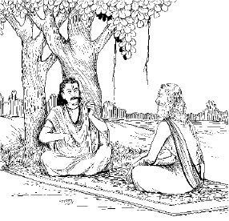
उद्धवजी कहते हैं—‘मुझे भगवान्ने जब भागवत-धर्मका उपदेश दिया, उस समय मैत्रेयऋषि वहाँ बैठे थे। मैत्रेयऋषिको भगवान्की आज्ञा हुई कि मेरे विदुरको यह उपदेश आप सुनाओ।’
यह कहकर उद्धवजी बदरिकाश्रममें गये हैं। विदुरजी वहाँसे गंगा-किनारे आये हैं। श्रीयमुनाजी भक्तिका दान करती हैं। श्रीगंगा मइया ज्ञान और वैराग्य देती हैं। ज्ञान-वैराग्यके बिना भक्ति वन्ध्याके समान है। ज्ञान-वैराग्यसे ही भक्ति दृढ़ होती है।
मानव भक्ति तो करता है, किंतु मानव प्राय: दु:खमें ही भक्ति करता है। मानवको जब बहुत सुख मिलता है, तब वह भगवान्को भूल जाता है। भक्तिमें ज्ञान-वैराग्यका साथ होना चाहिये। ज्ञान-वैराग्यके बिना भक्ति टिकती नहीं है—
द्वारि द्युनद्या ऋषभ: कुरूणां
मैत्रेयमासीनमगाधबोधम्।
क्षत्तोपसृत्याच्युतभावशुद्ध:
पप्रच्छ सौशील्यगुणाभितृप्त:॥
(श्रीमद्भा० ३।५।१)
गंगा-किनारे मैत्रेयऋषिके आश्रममें विदुरजी आये हैं। मैत्रेयऋषिको साष्टांग प्रणाम किया है। विदुरजीका विनय देख करके मैत्रेयऋषि प्रसन्न हुए। सुन्दर आसन दिया है। मैत्रेयऋषिने कहा है—‘आप मुझे साष्टांग वन्दन करते हैं, मैं आपको अच्छी तरहसे जानता हूँ। आप महान् पुरुष हैं। एक दिवस ऐसा आता है, जब सभी जीव आपके सन्मुख हाथ जोड़ करके खड़े होते हैं। आप यमराजके अवतार हैं।’
यमराजके दासी-पुत्र होनेकी कथा
यमराजको माण्डव्यऋषिका शाप हुआ था। एक बार राजमहलमें चोरी करके चोर भागे जा रहे थे, सिपाही उनके पीछे पड़े थे। चोरीका माल माण्डव्यऋषिके आश्रममें फेंककर चोर भाग गये। माण्डव्यऋषिके आश्रममें चोरीका माल मिला। सो, सिपाहियोंको ऐसा लगा कि यह ऋषि नहीं है, चोरोंका सरदार है—साधुका भेष बनाकर बैठा है। माण्डव्यऋषिको भी सिपाहियों ने पकड़ लिया और राजाके पास ले गये। राजा ने कुछ विचार किया नहीं और कहा—सभीको सूलीके ऊपर चढ़ा दो। दूसरे चोर सब मर गये। सूलीके अग्रभागमें माण्डव्य-ऋषि चौबीस घण्टे बैठे रहे, लेकिन सूलीका प्रवेश उनके शरीरमें हुआ ही नहीं, तब राजाको ज्ञान हुआ कि यह कोई सन्त है, भूलसे मैंने इनको सजा की है। राजा क्षमा माँगता है। माण्डव्यऋषिने कहा—‘मैं तुम्हें क्षमा करता हूँ, किंतु अब यमराजको मैं सजा करनेके लिए जाता हूँ।’
जो पाप करता है, उसीको भय लगता है। जिसने पाप नहीं किया, उसको यमराजका भी भय नहीं लगता—यमराज मेरा क्या करेगा, मैंने कभी पाप नहीं किया है। पापीको ही भय लगता है। जो निष्पाप है, वह निर्भय होता है।
माण्डव्यऋषि यमपुरीमें गये हैं। यमराजके दो स्वरूप हैं। पापीके लिये यमराजका भयंकर स्वरूप है, पुण्यात्माके लिये यमराजका सौम्य एवं शान्त स्वरूप है। यमराज महान् वैष्णव हैं। माण्डव्यऋषिको आसन दिया है, उनकी पूजा करते हैं। माण्डव्यऋषि ने कहा—‘तुम्हारी पूजा लेनेके लिये मैं यहाँ नहीं आया हूँ। आज मैं तुम्हारी खबर लेनेके लिये आया हूँ। मैंने कभी जीवनमें पाप किया नहीं, फिर भी सूलीके ऊपर मुझे क्यों चढ़ाया गया?’
यमराज चोपड़ा (बही) देखते हैं, सो वहाँ महाराजके नाममें कोई पाप जमा नहीं है। यमराजका धन्धा बहुत बड़ा है। लाखों जीवोंको सजा करनी होती है। कभी-कभी भूल भी हो जाती है। महाराजके नामपर कोई पाप जमा नहीं है। पाप किया ही नहीं था। भूलसे सजा हुई है। यमराज घबराये हैं—ये ऋषि मुझे शाप देंगे। यमराज ने कहा है—‘आप तीन वर्षके थे, तब एक पतंगाके पेटमें आपने काँटा मारा था। इस पापकी यह सजा हुई है।’ माण्डव्यऋषि ने कहा—‘पाँच-छ: वर्षतक बालककी अज्ञान-दशा होती है। अज्ञान-दशामें जो कुछ पाप किया जाता है, उसकी सजा स्वप्नमें होती है। बालक अज्ञानमें जो कुछ पाप करता है, उसकी थोड़ी सजा माता-पिताको होती है। अज्ञानमें किये हुए पापकी सजा प्रत्यक्षमें नहीं, स्वप्नमें होती है। पाँच-छ: वर्षतक अज्ञान-दशा मानते हैं। मैं तीन सालका था, तब पतंगाके पेटमें काँटा मारा था—इस पापकी सजा स्वप्नमें करनी चाहिये थी। न्याय-आसनमें बैठ करके तुमने कायदाका भंग किया है।’
पाप भोगना ही पड़ता है। पापका नाश भोगसे ही होता है। पुण्य भोगनेकी इच्छा न हो तो पुण्य ‘कृष्णार्पण’ किया जा सकता है। सन्त बहुत-सा पुण्य करते हैं और भगवान्को अर्पण कर देते हैं। पुण्यका फल है—सुख। जीव जब अति सुख भोगता है, तो सुख भोगनेके समयमें फिरसे पाप हो जाता है। इसीलिये सन्त पुण्यका फल भोगते नहीं हैं। पुण्य करते हैं और भगवान्को अर्पण कर देते हैं। पुण्यका फल है—सुख। मानव जब अति सुख भोगता है, तब सुख भोगनेके समयमें फिर-से पाप हो जाता है। सन्त पुण्य ‘कृष्णार्पण’ करके पुण्यका नाश करते हैं और पापका फल ‘दु:ख’ सहन करते हैं। पापका नाश भोगके बिना नहीं होता है, पाप भोगना ही पड़ता है। आप अपनी इच्छासे पाप करो या पर-इच्छासे पाप करो, अज्ञानमें पाप करो या ज्ञानपूर्वक—पाप भोगना ही पड़ेगा। पाप ‘कृष्णार्पण’ नहीं होता है—पुण्य ‘कृष्णार्पण’ होता है।
बहुत-से लोगोंका नियम होता है कि सांयकालमें जब घरमें जाते हैं, तब मन्दिरमें दर्शन करके घरमें जाते हैं। मन्दिरमें जा करके भगवान्को कहते हैं कि प्रात:कालसे अभीतक बाजारमें जाकर मैंने जो कुछ झूठ बोला, मैंने जो कुछ पाप किया—कायेन वाचा मनसेन्द्रियैर्वा... नारायणायेति समर्पयामि—वह मैं आपको अर्पण करनेके लिए आया हूँ। भगवान् कहते हैं कि यह कैसा दुष्ट है—पाप मुझे अर्पण करनेको आया है?
पाप ‘कृष्णार्पण’ नहीं होता है, पुण्य कृष्णार्पण होता है। पाप भोगना ही पड़ता है। अज्ञानमें जो पाप करता है, उसकी सजा स्वप्नमें होती है। माण्डव्यऋषिने यमराजसे कहा—‘प्रत्यक्षमें तूने मुझे सूलीपर चढ़ाया हैै। कायदाको तूने भंग किया है। मैं शाप देता हूँ—तुम्हें दासी-पुत्र होना पड़ेगा।’
माण्डव्यऋषिके शापसे यमराज दासी-पुत्र हुए हैं। यमराज बड़े देव हैं। देव पाप करते हैं, तब वह मानव हो जाते हैं। मानव जब कोई बड़ा पाप करता है तो दूसरे जन्ममें पशु हो जाता है। मानवका जन्म देव होनेके लिये है। कदाचित्, देव भले न हो जायँ, पशु होनेका प्रसंग आये नहीं। जो पशु-जैसे पाप करता है, वह दूसरे जन्ममें पशु हो जाता है। विदुरजी अब सावधान हैं। एक बार भूल हो गयी, अब मुझे पाप करना नहीं है। पाप छोड़ना ही महान् पुण्य है—मैं अब पाप नहीं करूँगा, मेरी भूल हो गयी है। ‘विदुरजी अब बहुत सावधान हैं।’
विदुर-मैत्रेय-संवाद
विदुरजीने मैत्रेयऋषिसे प्रश्न किया है—इस जगत्की उत्पत्ति कैसे होती है? प्रलय कैसा होता है?
जगत्की उत्पत्तिकी कथा भागवतमें अनेक बार आयी है। संसार ही भगवान्का चमत्कार है। संसार ही प्रभुका प्रभाव है। बहुतसे लोगोंको चमत्कार देखनेकी इच्छा होती है। नारियलके अन्दर भगवान् पानी कैसे भरते हैं? यह चमत्कार नहीं है! नारियल पेड़के ऊपर होता है, उसके अन्दर भगवान् पानी भर देते हैं। मोरका जो अण्डा है, वह सफेद होता है—उसमें भगवान् रंग कैसे भरते हैं? कोई मानव ऐसा कर सकता है? संसार ही भगवान्का चमत्कार है। संसारको देख करके मानव थोड़ा विचार करे कि ऐसा सुन्दर संसार जिसने बनाया है, वह कैसा होगा? लोगोंको जगत् देखनेकी इच्छा रहती है, परन्तु जगत् जिसने बनाया है, उसको देखनेकी इच्छा नहीं होती।
उत्पत्तिकी कथा इसलिये अनेक बार आयी है। जो कथा कल वर्णन की थी, वही कथा फिरसे तृतीय स्कन्धमें आती है, एकादश स्कन्धमें आती है—आदिनारायण परमात्माको खेलनेकी इच्छा होती है, तब प्रकृति और पुरुष उत्पन्न होते हैं। प्रकृति-पुरुषसे महत्तत्त्व, महत्तत्त्वसे अहंकार उत्पन्न होता है। अहंकारके तीन भेद होते हैं। विष्णुकी नाभिसे कमल उत्पन्न होता है। कमलसे ब्रह्माजी प्रकट हुए हैं। ब्रह्माजीने सौ वर्षतक तपश्चर्या की है, तब नारायणका दर्शन हुआ है।
भागवतमें लिखा है कि ब्रह्माजीने सौ वर्ष तपश्चर्या की। आजकल लोग पाँच-दस वर्ष तपश्चर्या करते हैं, भक्ति करते हैं और अकड़में बोलते हैं कि भगवान्का दर्शन अभी नहीं हुआ। भगवान् इतने सुलभ हैं कि थोड़े वर्ष भक्ति करो और भगवान् आपके सामने आकर खड़े हो जायँ! ब्रह्माजीने सौ वर्षतक तपश्चर्या की, तब ब्रह्माजीको चतुर्भुज नारायणका दर्शन हुआ। ब्रह्माजी स्तुति करते हैं। भगवान्के आज्ञानुसार ब्रह्माजीने षड्विध प्राकृत सृष्टि, षड्विध वैकृत सृष्टिकी रचना की है। ब्रह्माजीके दाहिने अंगसे स्वायम्भुव मनु हुए हैं, बाएँ अंगसे शतरूपा रानी हुई हैं। ब्रह्मावर्तमें उन्होंने राज्य किया है। वहींसे सृष्टिका आरम्भ हुआ है—ऐसा वर्णन भागवतमें किया है।
वराहावतारकी कथा
मनु महाराज ब्रह्माजीसे प्रार्थना करते हैं कि पृथ्वीको राक्षस रसातलमें ले गये हैं, प्रजाको मैं कहाँ रखूँगा? ब्रह्माजी भगवान्का ध्यान करते हैं। आदिनारायण परमात्मा वराहरूपसे प्रकट हुए हैं। वराह-नारायण गर्जना करते हुए पातालसे पृथ्वीको बाहर ले आये हैं।
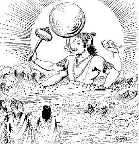
मार्गमें हिरण्याक्ष मिला है। हिरण्याक्षका उद्धार किया है। पृथ्वीकी स्थापना जलमें की है और मनु महाराजको पृथ्वीका राज्य दिया है। राजा-प्रजाको प्रसन्न करके वराहभगवान् वैकुण्ठधाममें जाते हैं।
वराह-नारायणकी कथा सुननेके बाद थोड़ा-सा मनन करनेकी आवश्यकता है। वराहभगवान्ने हिरण्याक्षका उद्धार किया है। ‘हिरण्याक्ष’ शब्दपर थोड़ा विचार करें। ‘अक्ष’ शब्दका अर्थ होता है—आँख। और ‘हिरण्य’ शब्दका अर्थ होता है—सोना। स्वर्णको हिरण्य कहते हैं। जिसकी आँखमें पैसा है—वही राक्षस है। हिरण्याक्ष लोभका स्वरूप है। भक्तिमें आँख मुख्य है। आँखमें भगवान्को रखो। आँखमें ‘काम’ आये नहीं, आँखमें पैसा आये नहीं। आँखमें पैसा आ जाय, तो आँख होनेपर भी मानव अन्धा हो जाता है—पाप करता है। लोभ पापका बाप है, लोभसे ही मानव पाप करता है। मानव पाप करता है, इसलिये भक्तिका आनन्द उसे नहीं मिलता है। लोग थोड़ी भक्ति करते हैं—पाप भी करते हैं। पाप छोड़ करके भक्ति करे, तो भक्तिका आनन्द मिले। मानव आँखसे पाप करता है, जीभसे पाप करता है, मनसे पाप करता है। पाप छोड़ना ही महान् पुण्य है। पाप होता है—लोभसे। जो ऐसा मानता है कि भगवान्ने मुझे बहुत दिया है—वह पाप नहीं करता है। जिसको ऐसा लगता है कि भगवान्ने मुझे बहुत कम दिया है—वही पाप करता है।
सम्पत्तिमें सन्तोष मानो। ऐसा मानो कि मैं लायक नहीं हूँ, तो भी भगवान्ने मुझे बहुत दिया है। सम्पत्तिमें जिसको सन्तोष है, संसार-सुखमें जिसको सन्तोष है, भोजनमें जिसको सन्तोष है—वह पाप नहीं करता है। पाप होता है लोभसे। लोभको सन्तोषसे मारो। लोभ मरनेपर पाप छूटता है। जो पाप छोड़ता है, उसीको भक्तिमें आनन्द आता है। भोजनमें सन्तोष मानना चाहिये। आजतक मैंने बहुत खाया है। खानेसे तृप्ति नहीं होती है, मनको समझानेसे तृप्ति होती है।
बहुत-से लोग याद रखते हैं—आठ-दस दिन हो गये, पकौड़े नहीं खाये। आठ दिनमें नहीं खाये—यह तो याद रखा, लेकिन कितने दिन खाये—यह कोई याद नहीं रखता। खानेसे तृप्ति नहीं होती। जीभको, मनको समझाओ—बहुत खाया है, अब मेरा जीवन खानेके लिये नहीं है। अब मेरा जीवन भजनके लिये है। भोजनमें जिसको सन्तोष है, वह पाप नहीं करता है। संसार-सुखमें जो सन्तोष मानता है, सम्पत्तिमें जिसको सन्तोष है, उसके हाथसे पाप नहीं होता है। लोभको मारो। लोभ सन्तोषसे मरता है। लोभ मरता है, तब पाप छूटता है। पाप छूटनेपर ही भक्तिका आनन्द मिलता है। सबसे बड़ा पुण्य यही है—पाप छोड़ना ही पुण्य है। आँखसे पाप मत करो, जीभसे पाप मत करो, मनसे पाप मत करो। आपको बहुत आनन्द मिलेगा।
हिरण्याक्ष लोभका स्वरूप है—‘अक्षिणी हिरण्यं यस्य स: हिरण्याक्ष:’ । हिरण्याक्षका उद्धार किया है। मनु महाराजको राज्य दिया है। मनु महाराजके यहाँ दो बालक और तीन कन्याएँ हुई हैं। आकूति, देवहूति और प्रसूति नामकी तीन कन्याएँ हुईं। प्रियव्रत और उत्तानपाद नामक दो बालक हुए हैं। मनु महाराजकी कन्या जो देवहूति है, उसका लग्न कर्दमऋषिके साथ हुआ था। कर्दमऋषिके यहाँ कपिलभगवान् प्रकट हुए थे। कपिल महामुनिने माताको सुन्दर उपदेश दिया था।
विदुरजीने प्रश्न किया है—‘कपिल-नारायणकी कथा सुननेकी बहुत इच्छा है।’ शुकदेवजी महाराज परीक्षित्को और मैत्रेय स्वामी विदुरजीको यह कथा सुनाते हैं—
जुष्टं बताद्याखिलसत्त्वराशे:
सांसिध्यमक्ष्णोस्तव दर्शनान्न:।
यद्दर्शनं जन्मभिरीडॺ सद्भि-
राशासते योगिनो रूढयोगा:॥
(श्रीमद्भा० ३।२१।१३)
जीव जब लायक होता है, तब भगवान् दर्शन देते हैं। जीव लायक नहीं है, इसलिये भगवान् दर्शन नहीं देते। ऐसा कौन पिता है, जिसको अपने पुत्रको देखनेकी इच्छा न हो। पुत्र बहुत नालायक हो, तो बापको उसका मुख देखनेकी इच्छा नहीं होती।
कपिल-अवतारकी कथा
कर्दमऋषिने सरस्वती नदीके किनारे बहुत वर्षोंतक तपश्चर्या की। तपश्चर्या उनकी सफल हुई। चतुर्भुज नारायण कर्दमऋषिके सम्मुख प्रकट हुए हैं। कर्दमऋषिको प्रत्यक्ष भगवान्का दर्शन हुआ है। श्रीकृष्ण-दर्शनसे आँख सफल होती है। श्रीकृष्ण-चरणको स्पर्श करनेसे त्वगिन्द्रिय सफल होती है।
आप किसी मानवको स्पर्श करते हो, तो आपको सुख होता है। जिस शरीरमें मल-मूत्र भरा है, ऐसे शरीरको स्पर्श करनेमें मानव सुख समझता है। भगवान्के श्रीअंगमें मल नहीं है, मूत्र नहीं है, रुधिर नहीं है, हड्डी नहीं है। भगवान् नारायणका श्रीअंग आनन्दमय है। इन्द्रियोंका जब ब्रह्म-सम्बन्ध होता है, तभी इन्द्रियाँ सफल होती हैं। श्रीकृष्ण-दर्शनसे आँख सफल होती है। भगवान्का चरण-स्पर्श करनेसे त्वगिन्द्रिय सफल होती है। भगवान्का दर्शन करनेके बाद जो भगवान्से संसारका सुख माँगता है, वह अज्ञानी है। संसारका सुख तो पशु-पक्षियोंको भी मिलता है। पशु-पक्षियोंमें पति-पत्नी होते हैं। भगवान्के पास कभी लौकिक सुख माँगना नहीं। जो भगवान्के पास लौकिक सुख माँगता है, वह भगवान्के स्वरूपको जानता ही नहीं।
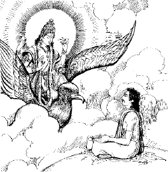
कर्दमऋषिने स्तुतिमें कहा है—‘मैं ऐसा बोलता हूँ। मैं क्या करूँ? मेरे पिताजीकी आज्ञा हुई है—लग्न करो। लग्न करनेकी इच्छासे मैंने यह तपश्चर्या की है। मुझे लग्न करना है। मैं काम-पत्नी नहीं माँगता, मैं धर्म-पत्नी माँगता हूँ।’
हमारे ऋषियोंने स्त्रीको भक्तिका साधन माना है। स्त्री भोगके लिये नहीं है, स्त्री भक्तिके लिये है। स्त्री काम-पत्नी नहीं है, स्त्री धर्म-पत्नी है। कन्यादानका जब संकल्प होता है, तब कन्याका पिता अपने दामादको कहता है—‘विलासी जीवनके लिये मैं अपनी कन्या तुम्हें नहीं देता हूँ। धर्मका पालन करनेके लिये मैं अपनी कन्या तुम्हें देता हूँ।’ गृहस्थ-जीवनमें काम-सुख गौण है, धर्म मुख्य है।
‘अनेन वरेण अस्यां कन्यायामुत्पादयिष्यमाणसन्तत्या दशपूर्वान् दशापरान् मां चैकविंशतिपुरुषानुद्धर्तुकाम: आत्मनश्च श्रीलक्ष्मीनारायणप्रीतये इमां कन्यां सहधर्माचरणाय तुभ्यमहं सम्प्रददे’ —कन्यादान महान् पुण्य है। स्वर्णका दान, चाँदीका दान—यह सब जड़ वस्तुओंका दान है। कन्यादान चेतनका दान है। कन्यादानका जब संकल्प होता है, तब कन्याका पिता दामादको समझाता है—विलासी जीवनके लिये, स्वेच्छाचारी जीवनके लिये कन्या तुम्हें मैं दान नहीं करता—धर्मका पालन करो। यह तुम्हारी काम-पत्नी नहीं है, यह तुम्हारी धर्मपत्नी है। पति-पत्नीके जीवनमें काम गौण है, धर्म मुख्य है। अकेला पुरुष भक्ति नहीं कर सकता है, अकेली स्त्री भी भक्ति नहीं कर सकती है। स्त्रीको पुरुषकी जरूरत है और पुरुषको स्त्रीकी जरूरत है।
शास्त्रोंमें ऐसा वर्णन है कि स्त्री-हृदयमें स्नेह ज्यादा होता है। स्त्री-हृदय स्नेह-प्रधान है। स्नेह-प्रधान हृदय होनेसे वह मातृ-हृदयसे ही सेवा करती है। बच्चेको बाप बड़ा नहीं कर सकता है, माँ बड़ा कर सकती है। माँके हृदयमें अतिशय स्नेह है। पिता पैसा भले दे, माताके हृदयमें स्नेह ज्यादा होता है। स्त्री-हृदय स्नेह-प्रधान है। पुरुषके हृदयमें स्नेह कम होता है। शास्त्रोंमें ऐसा लिखा है—स्त्रीमें स्नेह तो ज्यादा है, किन्तु स्त्रीकी बुद्धि मन्द होती है। स्त्रीमें बुद्धि कम है। पुरुषमें स्नेह कम है, बुद्धि ज्यादा है। स्त्री-हृदय स्नेह-प्रधान है, भोला है। स्त्री-हृदय भोला होनेसे स्त्री-हृदय बराबर परीक्षा नहीं कर सकता है। किसकी सेवा करनी चाहिये? कितना समर्पण करना चाहिये, सेवा करनेलायक कौन है? स्त्री नहीं समझ सकती। सेवा करना स्त्रीका स्वभाव है। स्त्री-हृदयमें स्नेह तो ज्यादा है, लेकिन परीक्षा बराबर पुरुष-हृदय कर सकता है। पुरुषकी बुद्धि तीक्ष्ण है, स्त्रीकी बुद्धि मन्द है। पुरुषमें स्नेह कम होता है और स्त्रीमें स्नेह ज्यादा होता है। स्त्री भक्तिका साधन है।
कर्दमऋषिने कहा है—‘ऐसी कन्याके साथ मेरा लग्न हो, जो भक्तिमें मेरा साथ दे। जो मुझे पाप करनेसे रोके। स्त्री लायक हो तो अपने पतिको सुधार सकती है। स्त्री लायक न हो, तो पति उसको नहीं सुधार सकता। मुझे लग्न करनेकी तो इच्छा है। मेरी ऐसी भावना है—मैं स्त्रीका संग नहीं माँगता, मैं घरमें सत्संग माँगता हूँ। घरमें मुझे सत्संग मिले। मुझे पाप करनेसे रोके। मुझे भक्तिमें साथ दे। मैं धर्मपत्नी माँगता हूँ। कृपा करो।’
भगवान्ने स्मित हास्य किया और कहा, ‘मनु महाराजकी कन्या देवहूति अति सुन्दर है, बहुत लायक है। देवहूतिके साथ लग्न करो। तुम्हारा गृहस्थ-आश्रम जगत्के लिये आदर्शरूप होगा।’
मनु महाराजको चिन्ता हुई है—कन्या बड़ी हो गयी है, अब मुझे इसका लग्न करना है। मनु महाराज एक दिन चिन्तामें बैठे थे। नारदजी वहाँ आये। नारदजीने कुशल-समाचार पूछा है—‘आप चिन्तामें बैठे हो, क्या बात है?’ मनु महाराजने कहा—‘गृहस्थका जीवन ही ऐसा है। गृहस्थ-आश्रम चिन्ताका ही घर है। गृहस्थको प्रभुमें विश्वास न हो, भगवान्में प्रेम न हो, तो गृहस्थका बहुत-सा जीवन चिन्तामें ही जाता है। सन्तानकी चिन्ता और सम्पत्तिकी चिन्ता! जो मिला है, उसको सँभालना है, चिन्ता है—और ज्यादा कमाना है। पुत्रकी चिन्ता होती है, कन्याकी चिन्ता होती है। पुत्र परीक्षामें पास हो—वह चिन्ता माता-पिताको होती है। परीक्षामें पास होनेके बाद भी माता-पिताकी चिन्ताका अन्त नहीं आता है—उसको अच्छी नौकरी मिल जाय तो अच्छा है। अच्छी नौकरी मिल गयी तो भी चिन्ता रहती है—अभी उसका लग्न नहीं होता है, लग्न हो जाय तो अच्छा है। लग्न हुआ तो भी चिन्ताका अन्त आया नहीं—बहुत दिन हुए, अभी बच्चा नहीं होता—उसके यहाँ बालक हो तो अच्छा है। प्रभुमें विश्वास न हो तो गृहस्थका सभी जीवन चिन्तामें ही पूरा हो जाता है। कन्याओंकी बहुत चिन्ता रहती है—कन्याको अच्छा घर मिले, कन्या सुखी हो जाय, कन्या बड़ी हुई है, उसका लग्न करना है।’
नारदजीने देवहूतिके हाथकी रेखाएँ देखी हैं। रेखा देखनेपर नारदजी समझ गये—ये राजाकी कन्या है, इसका योग ऐसा है कि यह कोई राजाकी रानी होनेवाली नहीं है। ये कोई महान् ऋषिकी पत्नी होनेवाली है। राजाकी रानी नहीं होगी। इसका बालक महान् ज्ञानी होगा। इसकी कीर्ति अखण्ड रहेगी। राजकन्या होनेपर भी यह राजाकी रानी नहीं होगी।
मनु महाराजने कहा है—‘आप जो बोलते हो, वह बराबर है। इसका जन्म राजमहलमें हुआ है। इसको राजमहलका विलासी जीवन अच्छा लगता ही नहीं है। प्रात:कालमें चार बजे उठ करके ध्यान करती है। बहुत प्रेमसे पूजा करती है। बहुत सादा भोजन करती है। राजमहलका विलासी जीवन इसको अच्छा लगता ही नहीं। इसको तो ऐसी इच्छा है कि कोई ज्ञानी, कोई भगवद्भक्त पति मिले तो ही लग्न करना है। किसी कामी राजाकी रानी होना ही नहीं है। कोई ज्ञानी, भगवद्भक्त पति मिले तो ही लग्न करना है। नहीं तो, इसकी लग्न करनेकी इच्छा ही नहीं है—यह ऐसा बोलती है। ज्ञानी हो, भगवद्भक्त हो—वह राजकन्याके साथ कैसे लग्न करेगा?’
नारदजीने विचार करके कहा है कि इस कन्याका दान कर्दमऋषिको कर दो। कर्दमऋषि बड़े ज्ञानी हैं, भगवद्भक्त हैं।
मनु महाराजने कहा है—‘कर्दमऋषिकी प्रशंसा तो मैंने बहुत सुनी है। राजकन्याके साथ वे लग्न करेंगे—वे तो बड़े ज्ञानी हैं—भगवद्भक्त हैं!’
नारदजीने कहा—‘मैंने ऐसा सुना है कि उनको लग्न करनेकी इच्छा हुई है। इस कन्याका दान कर्दमऋषिको कर दो।’
मनु महाराज रानी शतरूपाके और देवहूतिके साथ रथमें बैठे हैं—कर्दमऋषिके आश्रममें आये हैं। शान्त वातावरण है, आश्रममें गोबरका लेपन हुआ है। पशु-पक्षी भी जहाँ वैरको भूल गये हैं। ऋषिका आश्रम अति शुद्ध है, शान्त है। मनु महाराजको आनन्द होता है।
कर्दमऋषिने देखा है कि मनु महाराज आये हैं। कर्दमऋषिने विचार किया कि मनु महाराजके पीछे जो कन्या दिखती है, वही भविष्यमें मेरी पत्नी होनेवाली है। भगवान्ने तो कन्याकी बहुत प्रशंसा की है; एक बार मैं कन्याकी परीक्षा करूँ। कर्दमऋषिने कन्याकी परीक्षा बहुत विवेकसे की है। बहुत बातें करनेसे और प्रश्न पूछनेसे परीक्षा होती है—बहुत विवेकसे परीक्षा की है—तीन दर्भके आसन रखे हैं। मनु महाराज वन्दन करते हैं, तब कहा है—‘आसनमें बैठो।’ शतरूपा रानीको कहा है—‘दूसरा आसन तेरे लिये है।’ तीसरा आसन देवहूतिको बताया है—‘यह तेरे लिये है।’
देवहूति बहुत पढ़ी-लिखी तो नहीं है, किन्तु स्त्री-धर्मको जानती है। देवहूतिने विचार किया—पति ही मेरे लिये परमात्मा हैं। मेरे भगवान् मुझे आसन दें, उस आसनमें मैं कैसे बैठूँ? अभी लग्न हुआ नहीं है। देवहूति विचार करती है कि इन्होंने आसन दिया है, पर आसनमें बैठना ठीक नहीं है। मैं तो उनकी दासी हूँ। आसनमें मैं न बैठूँ तो उनको बुरा लगेगा—मैंने प्रेमसे आसन दिया था, कन्याने स्वीकार नहीं किया। पति मेरे लिये परमात्मा हैं।
जिस स्त्रीको पतिमें परमात्माका दर्शन नहीं होता, उसको किसी मन्दिरमें—मूर्तिमें भी भगवान्का दर्शन नहीं होता है। शास्त्रोंमें ऐसा लिखा है कि पत्नी पतिमें नारायणकी भावना करे और पति पत्नीमें लक्ष्मीकी भावना करे। पति-पत्नी लक्ष्मी-नारायणका स्वरूप हैं। पत्नीके पुण्यसे, उसके भाग्यसे पतिका आयुष्य बढ़ता है। पत्नीके भाग्यसे घरमें सम्पत्ति आती है। पति पत्नीको लक्ष्मीकी भावनासे देखे—मेरे घरमें लक्ष्मी आयी है। पत्नी पतिमें नारायणकी भावना रखे तो घर वैकुण्ठ हो जायगा। घरमें ही लक्ष्मीनारायण हैं।
देवहूतिने विचार किया—मेरे पति नारायण हैं, परमात्मा हैं। मेरे पतिदेव मुझे आसन दें, उस आसनमें मैं कैसे बैठूँ? देवहूतिने युक्ति की है—आसनपर अपना दाहिना हाथ रखा और धरतीपर बैठती है। दाहिना हाथ आसनपर रखकर बताया है कि मैंने आपके दिये हुए आसनको स्वीकार किया है। मैं तो आपकी दासी हूँ, आप मेरे भगवान् हैं। आप आसन दें, तो उस आसनपर मैं कैसे बैठूँ? मुझे पाप लगेगा। मेरे पति मेरे परमात्मा हैं।
देवहूति बहुत पुराने जमानेकी है, इसलिये ऐसा समझती है। आजकल तो पतिको आदेश करने लगी हैं। कितनी तो पतिको नौकर-जैसा समझती हैं। स्त्री पतिमें परमात्माकी भावना करे, पति पत्नीमें लक्ष्मीकी भावना करे तो घर वैकुण्ठ बन जायगा।
कर्दमऋषिने देखा है—परीक्षामें पास है। परीक्षा हो गयी। बहुत लायक है।
मनु महाराजने कहा है—‘मैं कन्यादान करनेकी इच्छासे आया हूँ, इस कन्याको आप स्वीकार करें।’
सन्त-हृदय सरल होता है। सरल हृदयमें भगवान्का प्रवेश होता है। जो कपट करता है, जो झूठ बोलता है—उसका हृदय बाँका हो जाता है। बाँके हृदयमें भगवान् नहीं आते हैं। जिसका हृदय सरल है, उसी हृदयमें प्रभुका प्रवेश होता है। छल-कपट करनेवालेका मन अशान्त रहता है।
कर्दमऋषि बड़े ज्ञानी हैं, महान् तपस्वी हैं—जरा भी कपट नहीं किया। सरलतासे मनमें जो था, वह कह दिया—‘मुझे लग्न करनेकी इच्छा हुई है’ ।
बाढमुद्वोढुकामोऽहमप्रत्ता च तवात्मजा।
आवयोरनुरूपोऽसावाद्यो वैवाहिको विधि:॥
(श्रीमद्भा० ३।२२। १५)
महान् ज्ञानी हैं, महान् भगवद्भक्त हैं। जो मनमें था, सो सरलतासे कह दिया—‘मुझे लग्न करनेकी इच्छा हुई है।’
मनु महाराजने कहा—मुझे कन्यादान करनेकी इच्छा हुई है। मैं आपको कन्यादान करनेके लिये आया हूँ। आप इसको स्वीकार करें।’
कर्दमऋषिने कहा—‘मुझे लग्न तो करना है। मुझे सावधान हो करके लग्न करना है।’
जो सावधान हो करके लग्न करता है, उसका गृहस्थ-आश्रम संन्याससे भी श्रेष्ठ हो जाता है। लग्न करना महान् पुण्य है। सावधान हो करके लग्न करनेका क्या अर्थ है? लग्नके समय ब्राह्मण लोग वेदमन्त्र बोलते हैं, कहते हैं—‘वर-कन्या! सावधान, सावधान! शुभ लग्न सावधान!!’ वे जानते हैं कि लग्न होनेके बाद ये दोनों गाफिल हो जानेवाले हैं, अब ये सावधान रहनेवाले नहीं हैं। इसीलिये ‘सावधान’ बोलते हैं।
कर्दमऋषिने कहा है कि मुझे सावधान हो करके लग्न करना है। मनु महाराजने पूछा—‘सावधान होनेसे आपका क्या अर्थ है’ ?
कर्दमऋषिने कहा—‘मेरा लग्न कामका विनाश करनेके लिये होगा।’
वेदोंमें वर्णन है कि जीव और ईश्वर दोनों साथमें ही रहते हैं। ईश्वर जीवसे कहीं दूर नहीं है। ईश्वर जीवको देखते हैं, किन्तु ये जीव ईश्वरको नहीं देख सकता। जीव और ईश्वर दोनोंके बीचमें एक परदा है। वह परदा होनेसे जीवको ईश्वरका दर्शन नहीं होता है। ‘काम’ ही परदा है। जीव और ईश्वर दोनोंके बीचमें काम है। कामरूपी परदा होनेसे जीवको ईश्वरका अनुभव नहीं होता है। यह जीव अनेक जन्मोंसे काम-सुख भोगता रहा है। ये शरीर ही काममय है, इसलिये कामको छोड़ना बड़ा कठिन है। माता-पिताके मनमें काम-वासना जाग्रत् हुई, तभी शरीरका जन्म हुआ। शरीरके मूलमें ही काम है। काम शरीरको नहीं छोड़ता है।
कर्दमऋषिने कहा है—‘मेरा लग्न कामका विनाश करनेके लिये है। धर्मकी मर्यादामें रहूँगा। विवेकसे काम-सुख भोग करके मुझे कामका नाश करना है। मेरा भोग, भोगके लिये नहीं है—त्यागके लिये है। मुझे कामका त्याग करना है।’
काम-त्याग करना बड़ा कठिन है। विवेकसे मैं काम-सुख भोगूँगा। काम-सुख भोग करके मैं कामका त्याग करनेकी इच्छा रखता हूँ। मेरा लग्न कामका विनाश करनेके लिये है। मुझे भगवान्के चरणोंमें जाना है। श्रीकृष्णदर्शनमें, श्रीकृष्ण-मिलनमें ‘काम’ विघ्न करता है। मेरा लग्न कामका विनाश करनेके लिये है। मैं विवेकसे सुख भोगूँगा। भोग भोगके लिये नहीं होता है—भोग त्यागके लिये होता है। जीव एकदम त्याग नहीं कर सकता है—इसलिये वेदोंमें काम-सुख भोगनेकी आज्ञा दी है—ऋतौ भार्यामुपेयात्। वेदोंका तात्पर्य त्यागमें है। भोगके लिये भोग नहीं होता है, त्यागके लिये भोग है। मैं विवेकसे सुख भोगूँगा। मेरी तो ऐसी इच्छा है कि एक बालकका जन्म होनेके बाद मैं पति-पत्नीका लौकिक सम्बन्ध नहीं रखूँगा। एक सत्पुत्र होनेके बाद, मेरा विचार है कि संन्यासी बनूँ। मैं संन्यास लूँगा। कदाचित् संन्यास ग्रहण न करूँ, घरमें रहूँ—तो एक घरमें भाई और बहन-जैसा पवित्र जीवन पत्नीके साथ बिताऊँगा। एक पुत्र होनेके बाद पति-पत्नीका लौकिक सम्बन्ध रखना ही नहीं है। मुझे सावधान हो करके लग्न करना है। मेरा लग्न भोगके लिये नहीं है, मेरा लग्न कामका विनाश करनेके लिये है।’
अतो भजिष्ये समयेन साध्वीं
यावत्तेजो बिभृयादात्मनो मे।
अतो धर्मान् पारमहंस्यमुख्यान्
शुक्लप्रोक्तान् बहु मन्येऽविहिंस्रान्॥
(श्रीमद्भा० ३।२२। १९)
‘संन्यास लेनेकी इच्छा है। एक सत्पुत्र होनेके बाद मैं संन्यास ग्रहण करूँगा।’
मनु महाराजको आश्चर्य होता है—मैं तो लग्नकी बातें करने आया था और ये कहते हैं कि मुझे संन्यास लेना है। मनु महाराजने देवहूतिकी ओर देखा—‘बेटा! तुमने सुना—एक पुत्र होनेके बाद तुम्हें छोड़ करके ये संन्यास लेंगे। तू विचार कर।’
कर्दमऋषिकी बातोंसे देवहूतिको बहुत आनन्द हुआ। मेरी ऐसी ही इच्छा थी—कोई महान् ज्ञानी, जितेन्द्रिय, भगवद्भक्त पति मिले, उनकी संगतिसे मेरा कल्याण हो। पत्नी है नौका और पति है नाविक। नौका न हो तो नाविक कभी किनारे नहीं जा सकता। नाविकको नौकाकी जरूरत है और नौकाको नाविककी जरूरत है। पति-पत्नीका पवित्र सम्बन्ध संसार-सागर तरनेके लिये है, डूबनेके लिये नहीं है। प्रभुके चरणोंमें जाना है, संसार-सागरके पार जाना है। मेरे पतिदेव जो बोलते हैं, मुझे बहुत अच्छा लगता है। एक सत्पुत्र होनेके बाद वे संन्यास ग्रहण करनेकी इच्छा रखते हैं, यह उचित है। मेरे पतिदेव संन्यास ग्रहण करेंगे, तब मैं भी संन्यासीके जैसा ही जीवन जीऊँगी। मैं ध्यान करूँगी, मैं जप करूँगी। मेरी ऐसी इच्छा नहीं है कि मेरे पति मेरे अधीन रहें, मुझमें आसक्त बनें। एक सत्पुत्र होनेके बाद उनको संन्यास लेनेकी इच्छा है, यह उचित है। हम दोनोंका सम्बन्ध संसार-सागर तरनेके लिये है, डूबनेके लिये नहीं है।
वर-कन्याकी सहमति हुई है। फिर तो विधिपूर्वक लग्न किया है। मनु महाराजने कन्यादान किया है। वर-कन्याको अनेक आशीर्वाद दिये हैं, वस्त्र-आभूषण दिये हैं। मनु महाराज अपने घर लौट गये।
देवहूतिने विचार किया—आजतक मैं राजकन्या थी, अब मैं एक ऋषिकी पत्नी हूँ। मेरे पतिदेव तपस्वी हैं। मुझे तपश्चर्या करनी है। जिसको सादा भोजन भाता है, जिसका वेश सादा है—वही साधु है। कपड़ेमें माया होती है। अब तो तपश्चर्या करनी है—ऐसा विचारकर देवहूतिने सुन्दर वस्त्र-आभूषण उतार करके रख दिये हैं—सादा वेश धारण किया है।
लग्न करनेके बाद कर्दमऋषिने संयमको बहुत बढ़ाया। मेरी पत्नी मेरे-जैसी जितेन्द्रिय है कि नहीं—मुझे परीक्षा करनी है। ऐसा संयम बढ़ाया कि दिनभर ध्यान करते हैं, जप करते हैं—देवहूतिके साथ बोलते नहीं हैं। बोलना तो क्या—देवहूतिके सामने देखते भी नहीं हैं। देवहूति अति सुन्दर है। पति-पत्नीमें अतिशय प्रेम है। एक घरमें हैं—मौन हैं। पति-पत्नीके जीवनमें बहुत-सा समय बातें करनेमें जाता है। एक घरमें रहते थे, पति-पत्नीमें अतिशय प्रेम था। देवहूति अति सुन्दर है—बोलते नहीं हैं।
देवहूतिने विचार किया कि बोलनेकी क्या जरूरत है—एक घरमें रहनेसे बोलना ही पड़ता है—पतिव्रता स्त्रीको खबर पड़ ही जाती है कि मेरे पतिकी क्या इच्छा है। पतिको क्या भाता है, वह समझ जाती है। मनसे एक होना ही लग्न है। लग्नके समयमें ब्राह्मण वेद-मन्त्र बोलते हैं। वेद-मन्त्रोंका अर्थ भी यही निकलता है। वर कन्याको कहता है—‘मम व्रते ते हृदयं दधामि।’ —तेरा हृदय ही मेरा हृदय है, मेरा हृदय ही तेरा हृदय है। तन दो हैं—मन एक है।
मन एक है—इसीका नाम लग्न है। देवहूतिने विचार किया—मेरे पतिदेवकी इच्छा ही मेरी इच्छा है। उनको बोलनेकी इच्छा नहीं तो मुझे भी बोलनेकी क्या जरूरत है। बोलनेसे क्या लाभ है? उनको प्यास लगी हो, तो पतिव्रता स्त्री समझ जाती है। माँगनेसे पूर्व ही जल अर्पण कर देती है। उनको बोलनेका भी परिश्रम न हो।
एक घरमें बहुत दिनतक तपश्चर्या की है। राजकन्या है, राजमहलमें बड़ी हुई थी। अब एक ऋषिकी पत्नी हुई है। बहुत दु:ख सहन किया है। शरीर दुर्बल हुआ है। एक दिन कर्दमऋषिकी दृष्टि पड़ी—कैसा सुन्दर शरीर था, अब तो हड्डियाँ दिखलायी पड़ रही हैं, बोले—‘तुम्हारी सेवासे मैं प्रसन्न हूँ।’
तुष्टोऽहमद्य तव मानवि मानदाया:
शुश्रूषया परमया परया च भक्त्या।
यो देहिनामयमतीव सुहृत्स्वदेहो
नावेक्षित: समुचित: क्षपितुं मदर्थे॥
(श्रीमद्भा० ३।२३।६)
‘सभी जीवोंको अपना शरीर बहुत प्यारा लगता है। मेरी सेवामें तुमने शरीरको बहुत घिसाया है, अति दु:ख सहन किया है—मुझे सुख दिया है। मैं तेरी सेवासे प्रसन्न हूँ। तू माँग ले, तू जो माँगेगी, सो मैं तुम्हें दूँगा।’
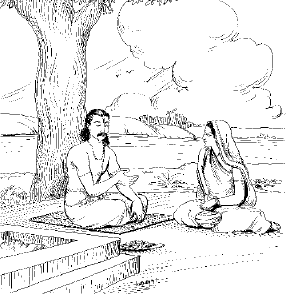
देवहूतिने हाथ जोड़ करके कहा है—‘आप-जैसे ज्ञानी, भगवद्भक्त पति मुझे मिले हैं, मैं भाग्यशाली हूँ। मुझे सब कुछ मिला है। मैं रोज तुलसीजीकी पूजा करती हूँ। बालकृष्णको तुलसीके पास रख करके प्रदक्षिणा करती हूँ और माँगती हूँ कि मेरे पतिका आयुष्य बढ़े, मेरे पतिदेव आनन्दमें रहें—रोज ऐसा माँगती हूँ। मेरी तो एक ही इच्छा है कि आपकी सेवा करते-करते मेरा शरीर गिरे। भगवान्के धाममें पहले मैं जाऊँगी, आप मेरे पीछेसे आयें। मेरा सौभाग्य अखण्ड रहे। दूसरी कोई इच्छा नहीं है।’
कर्दमऋषि प्रसन्न हुए—‘तू महान् पतिव्रता है। तेरा सौभाग्य अखण्ड रहे। आज मेरे मनमें बहुत इच्छा है कि तू कुछ माँगे। मुझे प्रसन्न करनेके लिये माँग ले। मैं ऐसा समर्थ हूँ कि दूसरा जगत् भी बना सकता हूँ। मुझमें ऐसी शक्ति है।’
कर्दमऋषिने बहुत आग्रह किया, तब देवहूतिने माँगा है—‘आपकी इच्छा हो, तो मेरे मनमें थोड़ी भावना है कि एक बालकका जन्म होना चाहिये।’
कर्दमऋषि समझ गये—‘मैं तुम्हें दिव्य स्वरूप दूँगा। भोगके पीछे रोग खड़ा है। मैं तुम्हें ऐसा सुन्दर स्वरूप दूँगा कि जिसको कभी रोग न हो, यौवन कायम रहे, कभी वृद्धावस्था आये ही नहीं—ऐसा दिव्य स्वरूप मैं तुम्हें दूँगा। जाओ, सरस्वती-गंगामें स्नान करके आओ।’
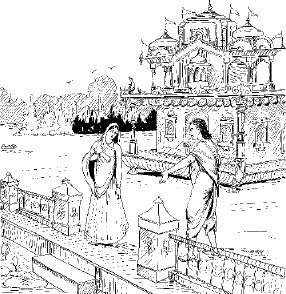
देवहूति सरस्वती-गंगामें स्नान करनेके लिये जाती है। कर्दमऋषिने हाथमें जल लिया— सौ वर्षोंकी तपश्चर्या कृष्णार्पण की है। अनेक दासियाँ निकलती हैं, देवहूतिका वन्दन करती हैं—हम आपकी दासी हैं। देवहूतिको मांगलिक स्नान कराती हैं। स्नान करानेसे काया बदलती है—अति सुन्दर स्वरूपकी प्राप्ति हुई है। दासी देवहूतिका शृंगार करती हैं। उसी समय कर्दमऋषिने संकल्प किया है—कामदेवके जैसे अति सुन्दर कर्दमऋषि हुए हैं। एक विमान बनाया है, जिस विमानमें देवहूतिके साथ कर्दमऋषि विराजमान होते हैं, विहार करते हैं।
इस अध्यायमें शृंगारका वर्णन बहुत किया गया है। सन्तोंकी ऐसी आज्ञा है कि वक्ता कभी शृंगारकी कथा न करे। कथा कैसी करनी चाहिये—
दक्षिण भारतमें समर्थ गुरु रामदास स्वामी हुए हैं। श्रीसमर्थ सद्गुरु रामदास स्वामीने ‘दासबोध’ ग्रन्थ लिखा है। ‘दासबोध’ ग्रन्थमें एक अध्याय दिया है कि कथा कैसी करनी है—कथा पैसा कमानेका साधन नहीं है। कथा मनोरंजनके लिये नहीं है। कथा बिगड़े हुए मनको सुधारनेके लिये है— ‘ग्रन्थीचा साङ्गावा गुह्यार्थ, न वदावा लौकिकार्थ’ शृंगारका बहुत वर्णन करनेसे मन बिगड़ जाता है। कथा तो बिगड़े हुए मनको शुद्ध करनेके लिये है। वक्ता कथा बहुत विवेकसे करे। संस्कृत भाषामें सभी रसोंका वर्णन किया जाता है। शृंगार भी रस है, इसलिये उसका वर्णन महर्षि व्यास करते हैं। महर्षि व्यास शृंगार-भाषामें कथा भले ही करें; सन्तोंकी आज्ञा है कि वक्ता शृंगारकी कथा छोड़ दे। कथा बहुत विवेकसे वक्ता करे। कथा शान्त भावसे करे। कथा ऐसी कहो कि कथा सुननेके बाद संसारके लौकिक सुखोंमें अरुचि हो और प्रभुमें प्रेम हो।
कितने लोग तो ऐसा समझते हैं कि महाराज कथामें बहुत हँसायें और हँसें तो कथा बहुत अच्छी होगी। कथा हँसनेके लिये है? बहुत हँसना अच्छा नहीं है। जो बहुत हँसता है, वह रोनेकी तैयारी करता है। अति हँसना अच्छा नहीं है। जो बहुत हँसता है, उसका मन बिगड़ता है। कथामें हास्य-रस गौण है, शृंगार गौण है। महर्षि व्यास संस्कृत भाषामें वर्णन करते हैं। सभी रसोंका वर्णन भागवतमें है। शृंगार भी रस है। वक्ता विवेकसे कथा करे।
कर्दमऋषिने सौ वर्षोंतक विहार किया। उनके यहाँ एक भी पुत्र हुआ नहीं, नौ कन्याएँ हुईं। देवहूतिको भय लगता है कि अब ये मेरा त्याग करेंगे, अब ये संन्यास लेनेवाले हैं।
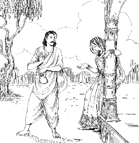
देवहूतिने कहा है—‘आपके संन्यासमें मैं विघ्न नहीं करूँगी। आपका कल्याण ही मेरा भी कल्याण है। आप थोड़ी बात मेरी सुनें।’
कभी-कभी वैराग्यका आवेश आ जाता है...। आवेशमें कर्दमऋषिने कहा है—‘आजतक तेरी बातें मैंने बहुत सुनीं। अब तेरी बात सुनना नहीं है। मैंने तेरे पिताको कहा था कि मैं संन्यास लूँगा।’
देवहूतिने कहा है—‘आप ऐसा बोले थे कि एक सत्पुत्र होनेके बाद मैं संन्यास लूँगा। ये तो नौ कन्याएँ हुईं हैं। अभी पुत्र हुआ नहीं है। पुत्र होना ही चाहिये—ऐसा मेरा दुराग्रह नहीं है। पुत्र हो कि न हो, नौ कन्याओंका तो लग्न करो। फिर संन्यास लो। आप संन्यास लोगे तो इन कन्याओंका लग्न कौन करेगा? आपकी प्रतिज्ञा तो ऐसी थी कि एक पुत्र होनेके बाद मैं संन्यास लूँगा। पुत्र हो या न हो—इन कन्याओंका लग्न तो करो। फिर संन्यास ग्रहण करो।’
कर्दमऋषि विचार करते हैं कि मुझे भगवान्ने कहा था कि तेरे घरमें पुत्ररूपसे मैं अवतार धारण करूँगा। फिर, अभी भगवान् क्यों नहीं आते!
कर्दमऋषि समझ गये कि मैंने तपश्चर्या छोड़ दी, मैं अति विलासी हो गया। अति विलासी लोगोंसे तो भगवान् भी दूर रहते हैं। अति विलासी लोगोंका संग मनको बिगाड़ता है। विलासी लोगोंके संगमें मनको पवित्र रखना बड़ा कठिन है। विलासी लोगोंका संग वासनाको बढ़ाता है। मेरा यह विलासी जीवन अब भगवान्को अच्छा नहीं लगता है। ये जीवन अच्छा नहीं है।
कर्दमऋषिने देवहूतिको कहा है—‘मुझे विलासी जीवनसे घृणा हो गयी है।’ देवहूतिने कहा—‘आपको जिससे घृणा है, उससे मुझे भी घृणा है। ये विलासी जीवन अच्छा ही नहीं है, सादा जीवन अच्छा है।’
विलासी जीवनकी समाप्ति हो गयी, पवित्र जीवनका आरम्भ हो गया। दोनों पति-पत्नी दिनभर ध्यान करते हैं, जप करते हैं। अतिशय भूख लगती है तो पति-पत्नी एक बार फल खाते हैं। अनेक वर्षोंतक तपश्चर्या की है। देवहूतिके पेटमें गर्भ रहा है। देवहूतिके मुखपर तेज दिखता है। नौ मास परिपूर्ण हुए हैं। आज सन्तोंको आनन्द हुआ है।
आप कभी कुम्भ-मेलेमें गये होंगे। प्रयागराजमें कुम्भ-मेला होता है, हरिद्वारमें कुम्भ-मेला होता है। लाखों साधु-सन्त आते हैं। नागा सन्त भी आते हैं। निरंजनी अखाड़ा, निर्वाणी अखाड़ा... एक-एक अखाड़ेमें हजार-हजार साधु होते हैं। सन्तोंके अखाड़ेमें कपिल महामुनिकी पूजा होती है। सभी विरक्त साधु, संन्यासी, महात्मा कपिलमुनिको गुरुदेव मानते हैं। हमारे गुरुदेव आनेवाले हैं—आज सन्तोंको अतिशय आनन्द हुआ है।
परम पवित्र कार्तिक मास, कृष्णपक्ष,पंचमी तिथि, बुधवार, मध्याह्नकालमें कपिल नारायणका प्राकटॺ हुआ है। कपिल महामुनिका दर्शन करनेके लिये ब्रह्मादिक देव आये हैं। कपिल महामुनिके चरणोंमें कमलका चिह्न दिखता है, स्वस्तिकका चिह्न दिखता है—‘यह नारायणका अवतार हुआ है। तेरा गृहस्थ-आश्रम सफल हुआ। भगवान् तेरे यहाँ पुत्ररूपमें आये हैं। तू आज परमात्माका भी पिता हुआ है। यह बालक माँका उद्धार करेगा। अब तुम्हें संन्यास लेनेकी इच्छा हो, तो संन्यास ले सकते हो।’
कर्दमऋषिने कहा—‘संन्यास लेनेकी इच्छा तो है, किंतु इन नौ कन्याओंका लग्न करनेकी चिन्ता बहुत है।’
—‘अरे! तेरे घरमें भगवान् आये हैं। तेरी सभी चिन्ता भगवान्को है।’
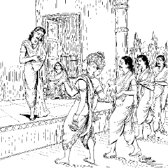
आप जिस देवकी प्रेमसे पूजा करते हो, जिस देवके नामका जप करते हो—उस देवको आपकी सभी चिन्ता है।
ब्रह्माजी जब आये थे, तब ब्रह्माजीके साथमें नौ ऋषि भी आये थे। ब्रह्माजीने पूछा है—‘तेरे घरमें कन्याएँ कितनी हैं?’
‘महाराज! मेरे घरमें नौ कन्याएँ हैं।’
‘ये नौ दामाद तेरे घरमें बिना निमन्त्रण दिये आये हैं। एक-एकको इन कन्याओंका दान करो और दूध-भातकी पंगत होने दो, फिर लग्न होे।’
लग्नमें सात्त्विकता होनी चाहिये, ताकि वर-कन्याको अच्छे संस्कार मिलें। लग्नमें धर्म मुख्य है, काम गौण है। बहुत-से लोगोंका पैसा लग्नमें बहुत जाता है। बहुत-से लोगोंका पैसा पत्थरमें बहुत जाता है। बहुत-से लोगोंका पैसा खानेमें बहुत जाता है। पैसा लक्ष्मीका स्वरूप है। पैसेका विवेकसे सदुपयोग करो। पैसेका दुरुपयोग करनेपर लक्ष्मी शाप देती है। लक्ष्मी उपयोगके लिये है, लक्ष्मी उपभोगके लिये नहीं है। लग्नमें सादगी होनी चाहिये।
नौ कन्याओंका लग्न नौ ऋषियोंके साथ हुआ है—मरीचिऋषिको कला नामकी कन्या दी है। अत्रिऋषिका लग्न अनसूयाजीके साथ हुआ है। अरुन्धतीका दान वसिष्ठऋषिको किया है। अथर्वाऋषिको शान्ति, अंगिरा ऋषिको श्रद्धा और पुलस्त्यऋषिको हविर्भू नामक कन्याका दान किया है। पुलहऋषिके साथ गति और क्रतुऋषिके साथ क्रिया नामक कन्याका लग्न हुआ है। भृगुऋषिको ख्याति नामक कन्या दी है। ये कर्दमऋषिकी नौ कन्याएँ हैं, कपिलभगवान्की नौ बहनें हैं। नौ ऋषियोंके साथ नौ कन्याओंका लग्न हुआ है, वे अपने पतियोंके घर गयी हैं। कर्दमऋषिको अब चिन्ता रही नहीं।
धीरे-धीरे कपिल महामुनि बड़े हुए हैं। कर्दमऋषिने कपिलदेवसे कहा—‘आप आज्ञा करो तो मैं अब संन्यास ले लूँ। मुझको ऐसा लगता है कि अब जीवन थोड़ा ही शेष है। शरीर अब बहुत दिनतक नहीं रहेगा। अब संन्यास लेनेकी इच्छा है।’
कपिलदेवने कहा—‘पिताजी! आपका विचार बहुत उचित है। आप संन्यास ग्रहण करो। मैं आपको क्या कहूँ, इतना ही कहता हूँ कि संन्यास लेनेके बाद कभी मेरी माँका स्मरण मत करना। घरको भूल जाना, पत्नीको भूल जाना।’
सर्वका त्याग ही संन्यास है। संन्यासकी विधि जब होती है, तब बोलना पड़ता है—‘परमात्माके लिये मैं सर्वसुखका त्याग करता हूँ।’ संन्यासकी विधि बराबर हो, तो विधि देखनेवालेको भी वैराग्य हो जाता है। जिस दिन संन्यास लेना होता है, उस दिन एक सौ आठ बार गंगाजीमें स्नान करना पड़ता है। अन्तिम स्नान करके तो लँगोटी-जनेऊ गंगाजीमें छोड़ करके नग्न बाहर आना पड़ता है। कुटुम्बके जो लोग बैठे हों, वे सभी भगवान्के स्वरूप हैं—ऐसा समझ करके सबको साष्टांग प्रणाम करना होता है। पत्नी हो तो पत्नीमें मातृभाव रख करके पत्नीको भी प्रणाम करना होता है—मेरा-तेरा सम्बन्ध पूरा हुआ। उस समय पत्नी पतिदेवके हाथमें लँगोटी देती है—आपको वस्त्रकी जरूरत नहीं है, आप वासनारहित शुद्ध हो गये हैं। जगत्में नग्न रहना अच्छा नहीं है। लोक-लज्जाके लिये यह लँगोटी ले लो। पत्नी लँगोटी देती है। वह लँगोटी पहन करके अन्तमें ‘विरजा होम’ करना पड़ता है। देव, ब्राह्मण, अग्निकी साक्षीमें प्रतिज्ञा करनी पड़ती है—‘संसारका कोई भी सुख भोगनेकी अब जरा भी इच्छा नहीं है। सर्वसुखका मैं त्याग करता हूँ। अब मेरा जीवन केवल भगवान्के लिये है।’ तब संन्यासकी विधि पूर्ण होती है।
कपिलदेव कहते है—‘पिताजी! संन्यास लेनेके बाद ज्यादा परोपकारका प्रपंच मत करो। जो बहुत परोपकार करनेको जाता है, वह भगवान्को भूल जाता है। परोपकार करनेमें हलके लोगोंका संग करना पड़ता है। वैराग्यसे ही संन्यासकी शोभा है। सब कुछ भूल जाओ। जगत्के साथ वैर नहीं और किसीके साथ प्रेम नहीं। वैर करनेसे मन बिगड़ता है। किसी मानवके साथ ज्यादा प्रेम करनेसे भी मन बिगड़ता है। वैरका त्याग करो, प्रेमका त्याग करो। प्रेम अब परमात्माके साथ करो। नारायणका ध्यान करो। ओंकारका जप करो।’ कर्दमऋषिने संन्यास ग्रहण किया है।
कपिल-गीता
इच्छाद्वेषविहीनेन सर्वत्र समचेतसा।
भगवद्भक्तियुक्तेन प्राप्ता भागवती गति:॥
(श्रीमद्भा० ३।२४। ४७)
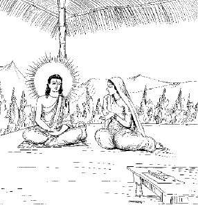
कपिल-गीताकी अब कथा आती है। कपिल महामुनिने अपनी माता देवहूतिको सुन्दर उपदेश किया है।
प्रात:कालका पवित्र समय है। सन्ध्यादिक नित्यकर्म परिपूर्ण हुआ है। कपिलदेव दर्भासनमें शान्तिसे बैठे हैं। उस समय देवहूति माताको याद आया है कि मेरे कपिलदेवका जन्म हुआ, तब ब्रह्माजी आये थे और ब्रह्माजीने कहा था कि ये साक्षात् नारायण आये हैं—मेरा उद्धार करनेके लिये आये हैं। यह मेरा पुत्र है और मैं इसकी माँ हूँ—इस लौकिक सम्बन्धको देवहूति भूल गयी। ये सद्गुरु हैं, मैं इनकी शिष्या हूँ—यह विचारकर कपिलदेवका वन्दन किया है और कहा है—‘आप आज्ञा दें, तो मुझे कुछ पूछनेकी इच्छा है।’
भगवान् प्रसन्न हुए हैं—‘माँ! जरा भी संकोच रखना नहीं। जो मनमें हो, सो पूछ लेना।’
देवहूतिने प्रश्न किया है—‘इस संसारमें सच्चा सुख है कि नहीं—सत्य उसको कहते हैं, जिसका कभी नाश नहीं होता। जो सत्य नहीं है, वह टिकता नहीं है। मुझे ऐसा आनन्द मिले, जो कायम रहे। कभी दु:ख आये ही नहीं। मैंने आजतक बहुत सुख भोगा है। मैं ऐसा मानती थी कि सुख भोगनेसे शान्ति मिलेगी। सुख भोगनेसे दु:खकी समाप्ति नहीं होती। थोड़े समयतक मन शान्त रहता है, फिर मन ज्यादा चंचल हो जाता है। ऐसा कोई सुख नहीं है, जो अनेक बार मैंने भोगा नहीं हो। बहुत सुख भोगा है। सुख भोगनेपर भी शान्ति नहीं है। जगत्में ऐसा कोई आनन्द है कि नहीं, जो कायम रहता हो, जिसका कभी नाश न होता हो—प्रत्येक इन्द्रियका सुख मैंने अनेक बार भोगा है। अब शरीर दुर्बल हुआ है। शरीरमें शक्ति नहीं है। शरीर रोगी हुआ है, वृद्धावस्था आ गयी है। फिर भी, यह वासना मनमेंसे निकलती नहीं है।’ माता देवहूतिके मनमें जो था, सरलतासे कपिलदेवके सम्मुख प्रकट किया है—‘वासना बहुत त्रास देती है। वासना राक्षसी है—मुझे छोड़ती नहीं है। मैं उससे छूटनेका प्रयत्न करती हूँ, लेकिन वह मेरे मनमें घर करके बैठी है। वासनाके त्राससे मुझे छुड़ाओ। वासनाका विनाश कैसे करूँ—मुझे ऐसा आनन्द मिले, जिस आनन्दका अनुभव करनेके बाद कोई दु:ख आये ही नहीं। मेरा मन वासनासे बिगड़ा हुआ है। वासना राक्षसीसे मुझे छुड़ाओ। यह मुझे बहुत त्रास देती है।’
कपिलदेव प्रसन्न हुए—‘माँ! तुमने बहुत सुन्दर प्रश्न किया है। माँ! वासनाका विषय बदलनेसे वासनाका नाश होता है। किसी स्त्रीको, किसी पुरुषको मिलनेकी इच्छा—यह वासना है। परमात्माको मिलनेकी इच्छा—यही भक्ति है। लोहेको लोहेसे ही काटना पड़ता है, अन्य किसी धातुसे लोहा कटता नहीं है। वासना लोहेके जैसी कठिन है। वासनाका विनाश वासनासे ही किया जाता है। वासनाका विषय कोई स्त्री या कोई पुरुष हो तो वासना पतन करती है। वासनाका विषय जब भगवान् हो जाते हैं, तो वह आत्मकल्याणमें सहायक हो जाती है—मुझे भगवान्से मिलना है, मुझे परमात्माके साथ एक होना है। परमात्मा आनन्दमय हैं। माँ! संसार सुख-दु:खसे भरा हुआ है। कोई सुख ऐसा नहीं है, जिसे भोगनेके बाद दु:ख आता न हो। सुखके पीछे ही दु:ख खड़ा है। माँ! सावधान हो जाओ। संसारमें जिस जीवको सुख मिलता है, उसको दु:ख भी भोगना पड़ता है।
निर्विण्णा नितरां भूमन्नसदिन्द्रियतर्षणात्।
येन सम्भाव्यमानेन प्रपन्नान्धं तम: प्रभो॥
(श्रीमद्भा० ३।२५।७)
जीवात्माको सुखकी भूख नहीं है, आनन्दकी भूख है। बहुत-से लोग सुखको ही आनन्द समझते हैं। सुख और आनन्दमें बहुत अन्तर है। सुख उसको कहते हैं, जिसे भोगनेके बाद दु:ख आता ही है। आनन्द उसको कहते हैं, जिसका अनुभव करनेके बाद कोई दु:ख रहता ही नहीं है। आनन्द ही परमात्मा नारायण हैं। माँ! संसारमें आनन्द नहीं है। संसारके जड़ पदार्थ सुख देते हैं, दु:ख भी देते हैं। आनन्द किसी जड़ वस्तुमें नहीं रह सकता है।’
कदाचित् आपको शंका हो कि महाराज! आप ये क्या कहते हैं—अच्छा भोजन हो, परोसनेवाला बहुत प्रेमसे परोसता हो—तो भोजनमें आनन्द आता है। भोजनमें आनन्द न हो तो मानव ये सब प्रवृत्ति नहीं करे।
थोड़ा-सा विचार करो—भोजनमें आनन्द है—यदि भोजनमें आनन्द हो, तो जिसके पेटमें अजीर्ण है—उसको भोजन करनेसे आनन्द क्यों नहीं मिलता है—भोजनमें आनन्द होता तो जिसको बुखार आया है, उसको भोजन करनेसे आनन्द क्यों नहीं मिलता है—क्या भोजनमें आनन्द है?
भोजन करनेकी तैयारी हो, अच्छा भोजन हो—उसी समय सुनो कि बूढ़ीका मरण हो गया है...। किसीकी मरण-वार्ता सुन लो, फिर भोजन करोगे? कितने लोग तो विचार करते हैं—वह तो दो-तीन वर्षसे शय्यामें पड़ी हुई थी, उसका तो अच्छा ही हुआ—मरण हुआ तो क्या बुरा हुआ, बहुत दु:ख सहन कर रही थी—अच्छा हुआ। अभी भोजन करनेके लिये मैं बैठ जाऊँ, कदाचित् बादमें कोई बुलाने आ जाय तो कितने ही लोग बहुत चतुर होते हैं। किसीका मरण सुननेके बाद भी दरवाजा बन्द करके शान्तिसे भोजन कर लेते हैं—‘एक बार मैं खा लूँ, फिर दरवाजा खोलना।’ मानव कपट बहुत करता है।
किसीका मरण सुननेके बाद भोजनसे मन क्यों हट जाता है—आनन्द भोजनमें है क्या? संसारके विषय सुख देते हैं, दु:ख भी देते हैं। आनन्द परमात्मा देते हैं।
निद्रामें आपको कौन आनन्द देता है? निद्रामें खानेको मिलता नहीं है, निद्रामें हाथमें पैसा आता नहीं है। निद्रामें जगत्की विस्मृति होती है। शय्यामें पड़नेके बाद मनसे संसार निकल जाता है। निद्रामें इसलिये शान्ति मिलती है।
दीपकमें तेल है, तबतक दीपक जलता रहता है। मनमें संसार है, तबतक मन भी जलता है। निद्रामें जगत्की विस्मृति होती है, इसलिये शान्ति मिलती है। निद्रामें आनन्द नहीं है—जगत्की विस्मृति है। निद्रामें परमात्माका अनुभव नहीं होता है। जगत्की विस्मृति हो, तो परमात्माका अनुभव हो। परमात्मा आनन्दमय हैं। निद्रामें जीव जगत्को भूल जाता है। जगत् भूलनेसे शान्ति मिलती है। संसारमें शान्ति हो, तो सब कुछ छोड़ करके मानवको निद्राकी इच्छा क्यों होती है? बड़ा राजा हो, उसको भी राजमहलमें शान्ति नहीं मिलती है। राजमहलको भूल जाता है, उसको निद्रा आती है—तब शान्ति मिलती है। बहुत-से लोग तो निद्राके लिये गोली खाने लगे हैं।
संसार सुख-दु:खसे भरा हुआ है। जो जगत्को भूल जाता है, जो नारायणके रूपमें तन्मय हो जाता है, उसीके दु:खकी समाप्ति होती है, उसीको आनन्दमय परमात्माका अनुभव होता है। जीव जब किसी जीवको मिलता है, तब सुख होता है। जीव जब ईश्वरको मिलता है, तब कैसा आनन्द होता होगा!
कपिलभगवान् कहते हैं—‘माँ! बिगड़े हुए मनको सुधारनेके लिये ही मानवका जन्म हुआ है। यह मन बहुत बिगड़ा है, इसलिये दु:खी होता है। मन गड्ढेमें ही जाता है। मन पानीके जैसा है। पानी ऊपरसे नीचे गिरता है—गड्ढेमें जाता है। पानी कभी ऊपर चढ़ता नहीं है। मन भी कभी ऊपर नहीं जाता है। संसार-वृक्षके मूल परमात्मा ऊपर हैं। मन जाता है नीचे। इसीसे दु:ख बढ़ता है।
पानीको यन्त्रका संग हो, तो पानी ऊपर भी चढ़ता है। यन्त्रके संगसे जिस प्रकार पानी ऊपर चढ़ता है, वैसे ही मन्त्रका संग करनेसे मन परमात्माके चरणोंमें जाता है। भगवान् हैं, भगवान् दिखते नहीं हैं। भगवान्ने जगत्में अपने स्वरूपको छिपाया है। भगवान्ने नामको प्रकट रखा है। मनको जो भगवान्के नाममें रखता है, मन्त्रके साथ जो मैत्री करता है—उसका मन भगवान्के चरणोंमें जाता है।
ऊर्ध्वमूलमध:शाखम्—संसार-वृक्षका मूल परमात्मा ऊपर है। मन नीचे जाता है। यन्त्रका संग होनेसे जिस प्रकार पानी ऊपर चढ़ता है, मन्त्रके साथ प्रीति करनेसे—मन्त्रमें मनको स्थिर करनेसे, मन्त्रके आधारसे मन भी भगवान्के चरणोंमें जाता है। मन्त्रमें मनको रखो। भगवान्का दर्शन करनेकी, प्रभुको मिलनेकी इच्छा रखो, सत्संग करनेसे बिगड़ा हुआ मन सुधरता है। सन्तकी परीक्षा करना बड़ा कठिन है। सन्तको ही सन्त मिलते हैं। सन्त होनेका प्रयत्न करो।
सन्त है कि नहीं कैसे परीक्षा करोगे? नकली माल बहुत बढ़ गया है, सच्चे सन्त जल्दी मिलते नहीं हैं। सन्तको सन्त ही पहचान सकते हैं—
तितिक्षव: कारुणिका: सुहृद: सर्वदेहिनाम्।
अजातशत्रव: शान्ता: साधव: साधुभूषणा:॥
(श्रीमद्भा० ३।२५। २१)
सन्तकी परीक्षा जातिसे नहीं होती है। किसी भी जातिमें सन्त हो सकते हैं। ऐसी कोई जाति नहीं है, जिस जातिमें सन्त हुए न हों। सन्तकी परीक्षा कपड़ोंसे नहीं होती। सन्तकी परीक्षा बहुत व्याख्यान करनेसे भी नहीं होती है। जो विद्वान् है, जो बहुत पढ़ा है—वह व्याख्यान करता है।
सन्तकी परीक्षा आँखसे और मनसे होती है। सन्तकी आँख भगवान्में स्थिर होती है। सन्तका मन शान्त रहता है। सन्त अतिशय सहन करते हैं। सुख-दु:ख, मान-अपमान, लाभ-हानि आदि विषम परिस्थितियोंमें भी जिसका मन शान्त रहता है—वह सन्त है। अनुकूल परिस्थितियोंमें शान्ति रखे, वह शान्ति सच्ची नहीं है। प्रतिकूल परिस्थितिमें जिसका मन शान्त है, उसकी शान्ति सच्ची है। कोई गाली देता हो, कोई तिरस्कार करता हो, कोई विपत्ति आयी हो—फिर भी मन शान्त रहे, तो शान्ति सच्ची है।
सन्त अपने मनको भगवान्से दूर नहीं जाने देते। जो अपने मनको भगवान्में—भगवान्के नाममें रखता है, उसकी शान्तिका भंग नहीं होता। तन कहीं भी जाय, मनको भगवान्से दूर मत जाने दो। आपका मन जहाँ है, वहीं आप हैं। वैष्णव वह है, जिसका मन गोकुल-वृन्दावनमें ही रहता है। आपका तन जहाँ है, वहाँ आप नहीं हैं; आपका मन जहाँ है, वहाँ आप हैं। सन्त अपने मनको भगवान्के चरणोंमें रखते हैं, भगवान्के नाममें रखते हैं, भगवान्के धाममें रखते हैं। कैसा भी दु:ख-सुख, मान-अपमानका प्रसंग आये—उनके मनके ऊपर असर नहीं होता है।
तुकाराम महाराजके चरित्रमें लिखा है—होलीका दिन था। बहुत-से दुर्जन गदहेको ले करके महाराजके पास आये। तुकाराम महाराज अति सरल और अति शान्त हैं। उनका कोई अपराध नहीं था। दुर्जन लोग गदहा लेकर आये और कहा—‘आपको गदहेके ऊपर बिठाकर आपका जुलूस निकालेंगे।’
महाराजका कोई अपराध नहीं था। महाराजने विचार किया—मैं ‘ना’ बोलूँ तो ये लोग जबरदस्ती करेंगे। आज प्रभुकी ऐसी ही इच्छा है। तुकाराम महाराजको गदहेके ऊपर बिठाया है। दुर्जनका स्वभाव है—दुर्जन क्या न कर बैठे ...महाराजकी शान्तिका भंग हुआ नहीं, महाराज शान्त बैठे हैं।
तुकाराम महाराजने जीवनमें एक ही बार चमत्कार किया है। उनके जीवनमें बहुत-से चमत्कार हुए हैं—वे सभी चमत्कार भगवान्ने किये हैं। सन्त चमत्कार नहीं करते हैं, चमत्कार जादूगर करते हैं। जिसको ऐसी इच्छा हो कि मेरी प्रसिद्धि हो, मुझे लोग धन दें, मान दें—वह चमत्कार करता है। सच्चे सन्त कभी चमत्कार नहीं करते। चमत्कार जादूगर करता है। महाराजने जीवनमें एक बार चमत्कार किया है।
महाराजको गदहेके ऊपर बिठाया है—जुलूस निकाला है। महाराजकी पत्नीको कहा—तेरे पतिका जुलूस निकला है। उसको लेकर गये, वह रोने लगी। वह बहुत व्याकुल हो गयी—मेरे पतिदेवका कोई अपराध नहीं है। जब वह बहुत रोने लगी, तब महाराजको दया आ गयी। महाराजने पत्नीको कहा—‘यहाँ रोना नहीं। मैं दिनभर विट्ठलनाथजीकी भक्ति करता हूँ। विट्ठलनाथजीने आज मुझे गरुड़के ऊपर बैठाया है।’
गदहेके ऊपर बिठाया था, फिर भी महाराजकी शान्तिका भंग हुआ नहीं। अति दु:खमें, प्रतिकूल परिस्थितिमें भी जिसका मन शान्त रहता है—वह सन्त है। सन्त अपने मनको ईश्वरसे दूर नहीं जाने देते हैं। इसलिये संसारके सुख-दु:खका असर उनके मनकेऊपर नहीं पड़ता है। सन्त अतिशय सहन करते हैं।
कपिलभगवान् माता देवहूतिसे कहते हैं—माँ! सन्त उसको कहते हैं, जो बुद्धिपूर्वक संसार-सुखका त्याग करता है। बहुत सुख भोगा, सुख भोगनेसे शान्ति नहीं मिली। अब कोई सुख भोगना ही नहीं; बुद्धिपूर्वक—समझ करके जो त्याग करता है, वही सन्त है। एक दिन छोड़ना तो पड़ेगा ही। काल धक्का मारेगा, तब छोड़ना ही पड़ेगा—तब बहुत दु:ख होगा। जो समझ करके लौकिक सुखका त्याग करता है, वह सन्त है।
सन्तोंको मौन प्रिय होता है, उनको ज्यादा बोलनेकी इच्छा नहीं होती। कदाचित् बोलें भी तो भगवद्-वार्ता ही करते हैं। लौकिक बातें सन्तोंको अच्छी नहीं लगतीं। लौकिक बातें सुननेमें जिसको मजा आता है—समझना चाहिये कि वह ईश्वरसे बहुत दूर है। सन्तोंको मौन प्रिय होता है, बोलते हैं, तो भगवद्-वार्ता ही करते हैं।
सन्तोंके सत्संगमें कृष्ण-कथा सुुननेका प्रसंग आता है। बार-बार कृष्ण-कथा सुननेसे श्रीकृष्णमें श्रद्धा होती है। श्रद्धासे कोई श्रीकृष्णकी सेवा-पूजा करे तो धीरे-धीरे श्रद्धा ही आसक्ति बनती है। भगवत्-स्वरूपमें, भगवान्के नाममें जब आसक्ति होती है—तब बराबर भक्तिका आरम्भ होता है। आसक्तिपूर्वक जो भक्ति करता है, वह भक्ति प्रेमलक्षणा भक्ति बन जाती है। प्रभुमें जब प्रेम होता है, तब संसारका सभी सुख तुच्छ लगता है। श्रीकृष्णमें जब प्रेम होता है, तब वासनाका विनाश होता है। साधारण ध्यानसे, साधारण भक्तिसे वासनाका विनाश नहीं होता है। वासनाका विनाश करनेके लिये तीक्ष्ण भक्तिकी जरूरत है। वासनाका विनाश होनेपर जीवको आनन्दका अनुभव होता है।
जगत्की उत्पत्ति कैसे होती है, स्थिति कैसे होती है? वह कथा कही है। माता देवहूतिको ध्यान करनेकी आज्ञा दी है—‘माँ! संसारका ध्यान करनेसे ही मन बिगड़ा है। संसारका ध्यान छोड़ो, नारायणका ध्यान करो।’ भगवान्के एक-एक अंगका ध्यान बताया है। ध्यानमें जब जीव देहको भी भूल जाता है, देह-सम्बन्ध जब छूटता है—तब ब्रह्म-सम्बन्ध होता है। जबतक आत्माका देहके साथ सम्बन्ध है, तबतक जीव दुखी है। देह-सम्बन्ध जब छूटता है, तब जीव और ईश्वरका मिलन होता है।
माँ! अनेक जन्मसे यह जीव संसार करता आया है। ये जीव अनेक बार पति हुआ है, अनेक बार पत्नी हुआ है। पूर्वजन्मका पति या पत्नी इस जन्ममें कहाँ है—पूर्व जन्मोंके बालक कहाँ हैं? माँ! पशु-पक्षी भी संसार करते हैं। पशु-पक्षी भी सुख भोगते हैं। माँ! संसार-सुखमें तुम्हें घृणा नहीं आती है—भोगसे किसको शान्ति मिली है, माँ! त्यागमें शान्ति है।
ये सभी कथा अपने मनको समझाओ। आत्मा गुरु है, मन शिष्य है। आप बनो वक्ता और मनको बनाओ श्रोता—ये सभी कथा अपने मनको सुनाओ।
कपिलदेवने माता देवहूतिको समझाया है—‘माँ! मनसे ही बन्धन है, मनसे ही मुक्ति होती है। जिस चाभीसे लोग तालेको बन्द करते हैं, उसी चाभीसे तालेको खोलते भी हैं। बन्द करना और खोलना—दोनों विरुद्ध क्रियाएँ हैं। विरुद्ध क्रिया एक ही चाभीसे होती है। मन काम-सुखका चिन्तन करता है। मन विषयोंमें फँस जाता है तो बन्धन करता है। मन नारायणका ध्यान करे, मन नारायणाकार हो जाय, तो मुक्ति देता है। माँ! अपने मनको सँभालो।’
माता देवहूतिने कहा—‘आपने थोड़े समयमें ही मुझे बहुत सुन्दर उपदेश दिया है। ये सभी उपदेश मैं अपने मनको करूँगी। कदाचित् मेरा मन बिगड़ जाय तो आपका आधार है। आप कृपा करो। मेरे मनमें पाप आये नहीं, मेरे मनमें खराब विचार आये नहीं। कभी-कभी मन दो-चार मिनटके लिये मूर्ख हो जाता है। बड़ी-बड़ी ज्ञानकी—भक्तिकी बातें करता है, पर दो-चार मिनटके लिये मन पाप कर बैठता है। मेरा मन बिगड़ न जाय—आप कृपा करो, मैं शरणमें आयी हूँ।’
कपिलभगवान्ने कहा है—‘माँ! मैंने तो तेरे ऊपर कृपा की है, अब तू ही अपने ऊपर कृपा कर। माँ! तू ऐसा निश्चय कर कि किसीके पेटमें जाना नहीं है। अब किसीकी पत्नी भी होना नहीं है, अब किसीका पति होना नहीं है। अब परमात्माके साथ एक होना है। माँ! तू ही अपने ऊपर कृपा कर। माँ! अब मुझे यहाँसे जाना है। सावधान हो करके साधन करो। मैंने जो उपदेश दिया है, इस उपदेशमें श्रद्धा रखो।’
भगवान् कपिल माता देवहूतिकी प्रदक्षिणा करते हैं, देवहूति माताका वन्दन करते हैं। जो माता-पिताकी पूजा करता है, जो माता-पिताकी प्रदक्षिणा करता है, उसको पृथ्वी-प्रदक्षिणा करनेका पुण्य मिलता है। कपिल-भगवान्ने जगत्को बोध दिया है। माता देवहूतिकी प्रदक्षिणा की है। बार-बार वन्दन किया है और कहा है—‘माँ! सावधान रहकर सतत साधन करो। माँ! माया सभीको त्रास देती है। जो गाफिल होता है, उसीको माया त्रास देती है। सावधान हो करके जो भक्ति करता है, उसको माया त्रास नहीं देती।’
महामुनि कपिल माता देवहूतिका वन्दन करके वहाँसे गंगासागर-संगम-तीर्थमें गये हैं। शास्त्रोंमें गंगा माँका बहुत वर्णन है। गंगाजीका समुद्रसे जहाँ संगम हुआ है—कलकत्तासे आगे जाओ तो यह गंगासागर-संगम है। समुद्र जिस नदीसे मिलता है, उस नदीके जलको खारा बना देता है। गंगासागर-संगममें श्रीगंगा मइया खारे समुद्रको मीठा बना देती हैं। तीन-चार मीलतक खारा समुद्र गंगाजीके स्पर्शसे मधुर हो जाता है। गंगासागर-संगम-तीर्थमें महामुनि कपिल विराजमान हैं। महामुनि कपिलने ऋषियोंको शान्तियोगका उपदेश किया है।
देवहूति माँ त्रिकाल सरस्वती गंगामें स्नान करती हैं। आदिनारायण परमात्माका ध्यान करती हैं। हृदय पिघलता है, ध्यानमें तन्मयता होती है—माँको आनन्द आता है। देवहूति माताके बाल बहुत सुन्दर थे। सुन्दर बाल धीरे-धीरे पीली जटा बन गये, जटाएँ धारण की हैं—महायोगिनी हुई हैं।
कभी-कभी माता देवहूतिको भी मन त्रास देता है। मनको एक बुरी आदत पड़ी है—जो सुख भोगा है, उसको याद करता है। कभी-कभी माता देवहूतिको भी याद आता है—हम विमानमें कैसा सुख भोगते थे! कैसा जीवन था! माता देवहूति अपने मनको समझाती है—अरे! जो सुख परिणाममें दु:ख देता है, जो सुख शक्तिका विनाश करता है, जो सुख मनको बिगाड़ता है, उसको क्यों याद करता है? मनको समझाती है—जिसका त्याग किया है, उसको क्यों याद करता है?
कभी-कभी मन भी बहुत तूफान करता है। समझानेपर भी मन नहीं मानता है। मन बहुत शक्तिशाली है। मन एक-दो जन्मका नहीं, अनेक जन्मका बिगड़ा हुआ है। पापके संस्कार जाग्रत् होते हैं—मन मानता नहीं है। ऐसे समयमें माता देवहूति भगवान् नारायणके चरणोंमें वन्दन करती हैं—‘मैं शरणमें आयी हूँ, कृपा करो। मेरा मन बिगड़ गया है। मुझे दिखता है—मन पाप कर रहा है, मैं उसको रोक नहीं सकती। कृपा करो—मैं शरणमें आयी हूँ।’
मन जब बहुत बिगड़ जाता है, तब मनको समझाना नहीं—प्रेमसे भगवान्के नामका कीर्तन करो, जोरसे कीर्तन करो, प्रेमसे कीर्तन करो, मन शान्त हो जायगा। माता देवहूतिको भी मन कभी-कभी त्रास देता है। ऐसे समयमें माता देवहूति प्रेमसे कीर्तन करती हैं—
श्रीमन् नारायण नारायण नारायण।
भज मन नारायण नारायण नारायण॥
॥ श्रीहरि:॥
चतुर्थ स्कन्ध
तपका स्वरूप
परमात्मा श्रीकृष्णके हृदयमें तपका निवास है। तपको ही भगवान्का हृदय माना है। मानवेतर कोई भी तप नहीं कर सकता है। पशु-पक्षियोंमें अतिशय अज्ञान होता है। अति अज्ञान होनेसे पशुका स्वभाव कभी सुधरता नहीं। जन्मसे लेकर मरनेतक पशुका स्वभाव एक-सा ही रहता है। मानव ज्ञान-प्रधान है, बुद्धि-प्रधान है। मानव स्वभावको सुधार सकता है। बाल्यावस्थामें आपका स्वभाव जैसा था, आज वैसा नहीं है।
आप बहुत प्रेमसे कथा सुनते हो, भगवान्के नामका जप करते हो—तभी स्वभाव सुधरेगा। पशुका स्वभाव कभी सुधरता नहीं है। पशु उसको कहते हैं, जो शरीरको ही आत्मा समझता है। शरीरका सुख ही मेरा सुख है—ऐसा जो समझता है, वही पशु है। आप सब लोग बड़े ज्ञानी हैं। आप जानते हैं—मैं तन नहीं हूँ। तन जब बिगड़ता है, तब मैं उसको सुधारता हूँ। मानवको ज्ञान है—मैं मन नहीं हूँ। मन जब पाप करता है, तब मनको आप पाप करनेसे रोकते हो। मैं तन नहीं हूँ, मैं मन नहीं हूँ—मानवको ज्ञान है। मानव तो तन जब बिगड़ता है, मन जब बिगड़ता है—तब वह उसको सुधारता है। शरीरका सुख मेरा सुख नहीं है, मैं शरीरसे भिन्न हूँ—मानवको ऐसा ज्ञान है।
तपश्चर्या मानव-शरीरमें ही होती है। मानवेतर कोई तप नहीं कर सकता है। मानव तप न करे तो परिणाममें उसका पतन हो जाता है। ‘तप’ शब्दको उलटा दो तो ‘पत’ होता है। जो तप नहीं करता उसका पतन है। रोज थोड़ा भी तप करना ही चाहिये। सोनेकी शुद्धि जिस प्रकार अग्निमें होती है, उसी प्रकार तप करनेसे मनकी शुद्धि होती है। दु:ख सहन करके भगवान्की भक्ति करे—इसीका नाम तप है। दु:ख सहन करो। आपको भगवान् बहुत सम्पत्ति दें तो भी अति सुख भोगना नहीं। कितने ही लोग ऐसा समझते हैं कि मैंने कमाया है—ये सब मेरा है। मैं ज्यादा सुख क्यों न भोगूँ—आपको जो मिला है, आपके घरमें जो कुछ है—वह सब आपके लिये है—आपके घरमें जो है, उसके ऊपर किसका नाम लिखा है—आप नहीं जानते। आपके पेटमें जो जाता है, उतना ही आपका है। एक सन्त वर्णन करते थे—जो पेटके अन्दर जाता है, वह भी मानवका नहीं है। पेटमें जानेके बाद जो पचता है, उतना ही मानवका है। जो नहीं पचता है—समझना चाहिये कि मैं दूसरेके भाग्यका खा गया था, इसलिये नहीं पचा। जितना पेटमें पचता है, उतना ही आपका है।
यद् ददासि विशिष्टेभ्य: यदश्नासि दिने दिने।
तत्ते वित्तमहं मन्ये परमन्नस्य रक्षसि॥
आपके घरमें जो कुछ है, वह सब आपका नहीं है। भगवान् जिसको ज्यादा देते हैं, तब भगवान् ऐसी इच्छा रखते हैं कि यह मेरे अनेक बालकोंको सुखी करे। आपको ज्यादा मिला है, वह अनेकको सुख देनेके लिये मिला है। अति सुख भोगना अच्छा नहीं है। जो अति सुख भोगता है, उसका तन बिगड़ जाता है—उसका मन बिगड़ जाता है। सुख उतना ही भोगना चाहिये, जिस सुखमें भगवान्का स्मरण रहे। भगवान् भूल जायँ और मानव ज्यादा सुख भोगता रहे, तो मन बिगड़ जाता है। इस शरीरसे भगवान्की भक्ति होती है, इसलिये इस शरीरको थोड़ा सुख देनेकी जरूरत है। तनको विवेकसे सुख दो। अति सुख देनेसे शरीर बिगड़ जायगा। थोड़ा दु:ख सहन करो। दु:ख सहन करके भगवान्की भक्ति करना—इसीका नाम ‘तप’ है। मौन रहना ‘तप’ है। भूख और प्यास सहन करना ‘तप’ है। कोई भी तप करना हो तो थोड़ा दु:ख सहन करना ही होगा। दु:ख सहन किये बिना तप नहीं होता है।
क्रिया नहीं, भावशुद्धि आवश्यक
गीताजीमें भगवान् श्रीकृष्णने अर्जुनको एक तप बताया है। ऐसा तप बताया है, जिसमें एक पैसेका भी खर्च नहीं है, जरा भी दु:ख सहन करना नहीं है और आपको अतिशय पुण्य मिलेगा और आपका कल्याण होगा। ऐसा एक तप बताया है—‘अर्जुन! सबमें सद्भाव रखो—भावसंशुद्धिरित्येतत्तपो मानसमुच्यते।’
सद्भाव ही बड़ा तप है। किसी भी जीवके लिये मनमें कुभाव रखना नहीं। ‘सद्’ शब्दका अर्थ होता है—ईश्वर। सबमें सद्भाव रखो, इसका अर्थ है—ईश्वरका भाव रखो। आपके शरीरमें जो भगवान् हैं, वही भगवान् सबके शरीरमें हैं। देह भिन्न-भिन्न है, देव एक हैं।
यह फूलकी माला दिखती है। इस मालामें फूल तो अनेक हैं—अनेक फूलोंमें धागा एक ही है। जिस प्रकार एक धागेमें अनेक फूल हैं, वैसे ही एक ही ईश्वरमें यह चित्र-विचित्र संसार है। आकार सभीके भिन्न-भिन्न हैं, सभी आकारमें ईश्वर-तत्त्व एक ही है। आपको भगवान्का दर्शन करनेकी इच्छा है तो बाहरके आकारको क्यों देखते हो—प्रत्येक आकारमें भगवान् मिले हुए हैं, प्रत्येक आकारमें भगवान्का दर्शन करो। भगवान् मिले हुए हैं—इसलिये बाहरका आकार सुन्दर लगता है। आकारको जो सुन्दर समझता है, उसीके मनमें विकार आता है। सुन्दर तो भगवान् हैं। भगवान् विराजमान होनेसे जगत्में सौन्दर्यका आभास होता है। सभीमें सद्भाव रखो।
सनातनधर्ममें क्रियाको बहुत महत्त्व नहीं दिया है। क्रिया करनेवालेके हृदयमें भाव कैसा है—भाव मुख्य है, क्रिया गौण है। बहुत-से लोग भगवान्की सेवा-पूजा करनेके बाद हाथ जोड़ करके प्रार्थना करते हैं—‘हे भगवान्! कृपा करो—मेरे बालकोंको सुखी करो।’ मेरे बालकोंको सुखी रखो—ऐसी कोई प्रार्थना करे तो ठीक है। पर कितने ही लोग भगवान्को ऐसा भी कहते हैं कि ‘मेरे बच्चोंको सुखी रखना, पर मेरा जो शत्रु है, उसका सत्यानाश हो जाय—ऐसा करना।’ यह ठीक नहीं है। आपका कोई शत्रु नहीं है। भागवतकी कथा सुनते हो, आजसे ऐसा निश्चय करो कि इस संसारमें कोई मेरा शत्रु नहीं है, किसीने मेरा कुछ बिगाड़ा नहीं है, किसीने मेरा कुछ नुकसान किया नहीं है, किसीने मुझे दु:ख दिया नहीं है। मेरे दु:खका कारण मेरा पाप है।
कुभावसे किया हुआ धर्म अधर्म-जैसा होता है। आप कोई भी सत्कर्म करो, उसके आरम्भमें भगवान्के सामने प्रतिज्ञा करनी पड़ती है।
अपक्रामन्तु भूतानि पिशाचा: सर्वतो दिशम्।
सर्वेषामविरोधेन ब्रह्मकर्म समारभे॥
मेरा कोई शत्रु नहीं है, मैं किसीका शत्रु नहीं हूँ। किसीने मेरा कुछ भी बिगाड़ा नहीं है—भगवान्के सम्मुख ऐसा बोलना पड़ता है। मन्त्र तो बहुत-से लोग बोलते हैं, अर्थ समझ करके बोलनेवाले कम हैं।
सर्वेषामविरोधेन—किसीके साथ मेरा विरोध नहीं है। मैं किसीका शत्रु नहीं हूँ; पर मेरा भी जगत्में कोई शत्रु नहीं है—ऐसी प्रतिज्ञा करनेके बाद सत्कर्मका आरम्भ होता है।
किसी भी जीवके लिये आप मनमें खराब विचार करेंगे तो वह जीव भी आपके लिये खराब विचार करेगा। आपके शरीरमें जो भगवान् है, वही भगवान्! आप जिसको शत्रु समझते हैं, उसके शरीरमें भी है। ईश्वर अनेक नहीं है, ईश्वर एक है—देह अनेक हैं। संसार भावमय है। आप जैसा भाव रखोगे, वैसा भाव लोग आपके लिये रखेंगे।
संसार भावमय है
केदारनाथकी यात्रा जिन वैष्णवोंने की है, उनको खबर है—केदारनाथके मार्गमें गुप्तकाशी आती है। गुप्तकाशीसे एक मार्ग उषीमठकी तरफ जाता है। ठंडके दिनोंमें भगवान् केदारनाथके स्वरूपको उषीमठमें रखते हैं। मन्दिरमें बहुत बर्फ पड़ती है। वहाँ कोई रह सकता नहीं है। भगवान् बदरीनारायणके स्वरूपको जोशीमठमें रखते हैं। बाणासुरकी कन्या उषादेवीका राजमहल वहाँ था। इसलिये उसे लोग उषीमठ कहते हैं। उषीमठके पास तीन-चार पहाड़ मिले हुए हैं। शान्त वातावरण हो तो बहुत आनन्द आता है। वहाँ मानव खड़ा हो करके जो शब्द बोलता है, वही शब्द प्रतिध्वनिके रूपमें उसके कानमें आता है। तीन-चार पहाड़ मिले हुए हैं, इसलिये प्रतिध्वनिकी भी प्रतिध्वनि निकलती है। आप जो शब्द बोलो, उसकी प्रतिध्वनि आयेगी और प्रतिध्वनिकी प्रतिध्वनि दूसरे पहाड़मेंसे निकलेगी। वहाँ खड़ा हो करके कोई बोले—‘गंगे हर’; तो प्रतिध्वनि आयेगी—‘गंगे हर... गंगे हर... गंगे हर...।’ प्रतिध्वनिसे प्रतिध्वनि दूसरे पहाड़से निकलेगी। एक बार आप ‘गंगे हर’ बोलो तो दो बार-तीन बार ‘गंगे हर... गंगे हर’ की प्रतिध्वनि निकलती है। कदाचित्, वहाँ कोई जा करके बोले—‘तेरा सत्यानाश हो जाय’ तो प्रतिध्वनि आयेगी—तेरा सत्यानाश हो जाय...।’ जैसी ध्वनि करो, वैसी प्रतिध्वनि होगी।
जगत्के लिये आप जैसा भाव रखोगे, वैसा भाव जगत्के जीव आपके लिये रखेंगे। संसार भावमय है। किसीके लिये खराब विचार मत करो। किसीके लिये खराब शब्द मत बोलो। सद्भावसे ही सत्कर्म सफल होता है। सनातनधर्ममें क्रियाको बहुत महत्त्व नहीं दिया है; क्रिया करनेवालेके हृदयमें भाव कैसा है, किस भावसे क्रिया करता है—इसका महत्त्व है।
एक चोर था। वह चोरी करनेके लिये निकला। मार्गमें सत्यनारायणका एक मन्दिर आया। वह मन्दिरमें गया और सत्यनारायण-भगवान्को वन्दन करके उसने मनौती रखी—‘हे सत्यनारायणभगवन्! मैं चोरी करनेके लिये जाता हूँ, कृपा करो। आज मुझे पचीस-तीस हजार रुपया मिलना चाहिये। मुझे पचीस-तीस हजार रुपया मिल जाय तो घरमें आ करके सवा मनका हलुवा बनाऊँगा, अनेक ब्राह्मणोंको बुलाऊँगा, बड़ी सत्यनारायणकी पूजा करूँगा।’ उसने भगवान्की ऐसी मनौती रखी। उस दिनका योग कुछ ऐसा था कि उसको उस दिन चोरीमें तीस हजार रुपये मिल गये। फिर तो उसने अनेक साधुओंको बुलाया, अनेक ब्राह्मणोंको बुलाया, सवा मनका हलुवा बनाया, सत्यनारायणकी बड़ी भारी पूजा की।
चोर सत्यनारायणकी पूजा करता है—वह धर्म है या अधर्म है—सत्यनारायणकी पूजा तो धर्म है; किन्तु चोर जो पूजा करता है—उसका सत्यमें स्नेह नहीं है, नारायणमें प्रेम नहीं है। चोर इस प्रकार पूजा करे तो भगवान् प्रसन्न होते हैं? भगवान्को हलुआ खानेको नहीं मिलता है—चोर यदि भगवान्को भोग लगाये तो क्या भगवान् उसका स्वीकार करते हैं? देव-पूजाका अधिकार उसीको है, जो देवके जैसा है—देवो भूत्वा यजेद् देवम्! जो देवके जैसा है, उसीके हाथकी पूजा देवलोग लेते हैं। पूजाके आरम्भमें अंगन्यास-करन्यास करना पड़ता है। शरीरके एक-एक अंगमें भगवान्की स्थापना है। जो भगवान्के जैसा है, उसीके हाथकी पूजा भगवान् लेते हैं। चोर जो सत्यनारायणकी पूजा करता है—उसका सत्यमें स्नेह नहीं है, उसका प्रभुमें प्रेम नहीं है। सत्यमें स्नेह हो तो कभी चोरी करनेके लिये जाय ही नहीं। चोर सत्यनारायणकी पूजा करता है, वह परमात्माको प्रसन्न करनेके लिये नहीं, मेरी चोरी जाहिर न हो—मुझे सजा न हो—इसलिये वह पूजा करता है। उसकी चोरी जाहिर न हो तो महीना-दो-महीनाके बाद वह फिरसे सत्यनारायणकी मनौती रखेगा, फिर-से चोरी करनेके लिये जायगा। सत्यनारायणकी पूजा धर्म है, पर कुभावसे धर्म करे तो वह धर्म भी अधर्म माना जायगा। धर्ममें भाव मुख्य है, क्रिया गौण है। सभीके लिये मनमें सद्भाव रखो। किसीके लिये मनमें कुभाव न आये।
चतुर्थ स्कन्धमें प्रथम धर्म-प्रकरण है। धर्म-प्रकरणमें दक्षप्रजापतिके यज्ञकी कथा है। यज्ञ करनेसे यजमानका कल्याण होता है। दक्षप्रजापतिने ऐसा यज्ञ किया, जिसको करनेके बाद उसके घरमें कोई रोनेवाला रहा ही नहीं—सबका नाश हो गया—
क्रियादक्षो दक्ष: क्रतुपतिरधीशस्तनुभृता-
मृषीणामार्त्विज्यं शरणद सदस्या: सुरगणा:।
क्रतुभ्रेषस्त्वत्त: क्रतुफलविधानव्यसनिनो
ध्रुवं कर्तु:श्रद्धा विधुरमभिचाराय हि मखा:॥
(श्रीशिवमहिम्न: श्लोक २१)
दक्षप्रजापतिने भगवान् शंकरमें कुभाव रखा है। किसी भी जीवमें, किसी जड़ वस्तुमें जो कुभाव रखता है, उसका कल्याण नहीं होता है। भगवान् शंकरमें जो कुभाव रखता है, उसका कल्याण कैसे हो—शिव-तत्त्वको दक्ष जानता नहीं है—शिवजीके लिये खराब शब्द बोलता है। दक्ष शिवजीकी निन्दा करता है।
भागवतके प्रधान टीकाकर श्रीश्रीधर स्वामी हैं। बारह सौ वर्ष हुए हैं—गंगाकिनारे श्रीमाधवरायका दर्शन करते हुए श्रीश्रीधर स्वामीने भागवत-टीका लिखी है। अति प्राचीन टीका श्रीश्रीधर स्वामीकी है। जहाँ-जहाँ श्रीश्रीधर स्वामीको शंका हुई है—भगवान्को वन्दन करके पूछते हैं—‘मैं क्या लिखूँ—इसका भाव मैं क्या वर्णन करूँ—जहाँ-जहाँ श्री-श्रीधरस्वामीने ‘अयं भाव:, इदमत्र अवधेयम्’—ऐसा लिखा है, वहाँ भगवान्की प्रेरणासे लिखा है। भगवान्ने मुझे कहा है—तन्मतेनेदमाख्यातं न तु मन्मतिवैभव:—मैंने अपनी बुद्धिसे यह लिखा नहीं है। जहाँ-जहाँ शंका हुई है, वहाँ भगवान्से पूछा है। भगवान्के आज्ञानुसार लिखा है।
भगवान् शिव विश्वनाथ हैं
दक्ष प्रजापति शिव-तत्त्वको जानता नहीं है—शिवजीकी निन्दा करता है। उसके निन्दाके शब्दोंसे श्रीश्रीधर स्वामीने स्तुतिपरक अर्थ किया है—वास्तवस्त्वयमर्था:। भगवान् शंकरकी निन्दा करना महापाप है। कथा करनेवालेको भी पाप लगे, सुननेवालेको भी पाप लगे। दक्षप्रजापतिने कहा है—‘शिव श्मशानवासी हैं। शिव भूतोंके पति हैं।’ यह संसार ही श्मशानके जैसा है।
शुकदेवजी महाराज वर्णन करते हैं—श्मशानं इदं जगत्!
श्मशानेष्वाक्रीडा स्मरहर पिशाचा: सहचरा-
श्चिताभस्मालेप: स्रगपि नृकरोटीपरिकर:।
अमङ्गल्यं शीलं तव भवतु नामैवमखिलं
तथापि स्मर्तॄणां वरद परमं मङ्गलमसि॥
(शिवमहिम्न: श्लो० २४)
मानवका श्मशान गाँवके बाहर होता है। मच्छरका श्मशान घर है। जगत्में ऐसी कोई जगह नहीं है, जहाँ किसी भी जीवकी हिंसा हुई न हो। यह शरीर भी श्मशानके जैसा है—अनेक जीव-जन्तु मरते हैं। शिव श्मशानवासी हैं—इसका अर्थ यह होता है कि जगत्के अणु-परमाणुमें शिव-तत्त्व मिला हुआ है।
दक्षप्रजापतिने कहा है—‘भूत-प्रेतोंके वे मालिक हैं।’ पृथ्वी, जल, तेज, वायु, आकाश—पंचतत्त्वके मालिक शिवजी हैं। काशीमें विश्वनाथ विराजमान हैं—जगत्के स्वामी शिव हैं। शिवजीका नाम विश्वनाथ है। जगत्का क्या अर्थ होता है—शुभ और अशुभ, पवित्र और अपवित्र—दोनोंका मिश्रण ही जगत् है। इस संसारमें सब कुछ खराब नहीं है और सब कुछ अच्छा भी नहीं है। शुभ और अशुभ—दोनोंका मिश्रण ही जगत् है। जगत्में विष है और जगत्में अमृत भी है। भगवान् शंकर सभीके मालिक हैं।
शास्त्रोंमें ऐसा वर्णन है कि चिता-भस्म अपवित्र है। चिता-भस्मको कोई स्पर्श करे तो उसको स्नान करना ही होगा। चिता-भस्मके समान अपवित्र कोई नहीं है। श्रीगंगाजीके समान कोई पवित्र नहीं है। शिवजीके मस्तकमें गंगाजी हैं और श्रीअंगमें चिता-भस्म है। आप कभी उज्जैन गये होंगे। उज्जैनमें महाकाल हैं। कालके भी काल शिव हैं, इसलिये उनका नाम महाकाल है। शिव मृत्युंजय हैं। उज्जैनमें प्रात:कालमें चार बजे महाकालकी भस्म-पूजा होती है। भस्म-पूजाके दर्शनमें बहुत आनन्द आता है। प्रात:कालमें महाकालका अभिषेक करते हैं। अभिषेक करनेके बाद प्रथम चिता-भस्म अर्पण करते हैं। शिव-स्पर्शसे चिता-भस्म पवित्र हो जाती है। चिता-भस्मको कोई स्पर्श करे तो उसको स्नान करना ही पड़े। भगवान् शंकरका स्पर्श होनेसे वह चिता-भस्म पवित्र हो जाती है।
शिव मंगलमय हैं। शास्त्रोंमें ऐसा वर्णन है कि काम अमंगल है। काम सभीका शत्रु है। काम सभीको धोखा देता है। काम सभीको दु:ख देनेवाला है। काम सभीका शत्रु होनेपर भी वह काम सभीको समझाता है—मैं तुम्हारा मित्र हूँ, मैं तुम्हें सुख देता हूँ। काम स्त्रीको सुख नहीं देता है, काम पुरुषको सुख नहीं देता है—काम सभीको दु:ख देनेवाला है। काम तनको बिगाड़ता है, काम मनको बिगाड़ता है। काम शक्तिका विनाश करता है। काम सभीको दु:ख देनेवाला है। शत्रु होनेपर भी वह मित्रके जैसा लगता है। इसलिये हमारे ऋषियोंने कामको अमंगल कहा है। वह सभीको धोखा देता है। जिसको कामका स्पर्श है, उसका सब कुछ अमंगल है। जिसको कभी कामका स्पर्श नहीं होता है, उसका सब कुछ मंगल है।
भगवान् शंकरको कभी कामका स्पर्श नहीं होता है। एक बार शिवजीके पास काम गया था। शिवजीने आँख खोल करके देखा—जल करके भस्म हो गया, शिवजीको स्पर्श नहीं कर सका। कितने लोग ऐसा वर्णन करते हैं कि शिवजीने क्रोध करके कामको जलाया—ऐसा नहीं है। भगवान् शंकरके मस्तकपर गंगाजी हैं। शिवजीको कभी क्रोध आता ही नहीं है। कदाचित्, शिवजीको क्रोध आ जाय तो जगत्में कोई बाकी नहीं रहेगा—सबका नाश हो जायगा। शिवजीको क्रोध आता ही नहीं है। शिवजीने क्रोध करके कामको जलाया नहीं है। शिवजीका तेज कामदेवको सहन हुआ ही नहीं। भगवान् शंकरका तेज सहन न होनेसे वह जल गया। शिवजी क्रोध क्यों करें—शिवजीको क्रोध करनेकी जरूरत ही नहीं है। शिवजीका तेज उसको सहन हुआ नहीं। भगवान् शंकरको कामका स्पर्श नहीं होता है—शिव पूर्ण निष्काम हैं। इसलिये मंगलमय हैं।
शिव-स्पर्शसे चिता-भस्म भी पवित्र हो जाता है। भगवान् शंकरको चिता-भस्म अर्पण करनेके बाद साधु, ब्राह्मण—सभी भस्मको प्रसादरूपसे मस्तकमें धारण करते हैं। शिव-स्पर्शसे चिता-भस्म पवित्र हो जाता है। चिता-भस्मके समान कोई अपवित्र नहीं है, गंगाजीके समान कोई पवित्र नहीं है। पवित्र और अपवित्र—दोनोंके आधार शिव हैं। शिवजीके गलेमें विष है और मस्तकमें अमृत भरा हुआ है। संसारमें विष भी है, संसारमें अमृत भी है। सभीके आधार शिव हैं। इसलिये उनका नाम विश्वनाथ है। शंकरभगवान्के दरबारमें सभीको प्रवेश मिलता है। सर्वकाल शिवजीका दरबार खुला ही रहता है—कभी दरवाजा बन्द नहीं होता है। शिवजीके मन्दिरमें परदा रहता नहीं।
शास्त्रोंमें ऐसा लिखा है कि परदा मायाका स्वरूप है। जहाँ थोड़ी भी माया है, वहाँ परदा रखना पड़ता है। शिव जगत्के स्वामी हैं, उनके यहाँ परदा नहीं है। कभी दरवाजा बन्द नहीं होता है। रात्रिमें बारह बजे रामजीका दर्शन करनेको आप जाओ तो रामजीका दर्शन होगा? कृष्णभगवान्का रात्रिमें बारह बजे दर्शन होगा? राजाधिराज हैं—रात्रिमें बारह बजे दर्शन नहीं होता है। शंकरभगवान् कहते हैं—रात्रिमें बारह बजे क्या, दो बजे आओ—दरवाजा खुला ही है, कभी दरवाजा बन्द नहीं है। जहाँ माया है, वहाँ दरवाजा बन्द करना पड़ता है।
भागवतमें ऐसा वर्णन है कि शिव मायारहित शुद्ध ब्रह्म हैं। कोई भी आये, किसी भी समयमें आये—शिवजीका दरवाजा खुला ही रहता है। रामजीका दर्शन करनेके लिये कोई जाय तो हनुमान्जी महाराज वहाँ गदा ले करके खड़े रहते हैं ‘राम दुआरे तुम रखवारे, होत न आज्ञा बिनु पैसारे।’ हनुमान्जी महाराज पूछते हैं—‘मर्यादा-पुरुषोत्तमका यह दरबार है। दर्शन करनेके लिये आये हो। प्रत्येक स्त्रीमें मातृ-भाव रखते हो?’ जो जगत्के स्त्री-पुरुषोंको काम-भावसे देखता है, उसको हनुमान्जी महाराज दर्शन करनेके लिये आगे नहीं जाने देते हैं। ‘यह मर्यादा-पुरुषोत्तमका दरबार है—माता-पिताकी सेवा करते हो?’ जो धर्म-मर्यादाका भंग करता है, हनुमान्जी महाराज उसको गदा दिखाते हैं—‘तेरे लिये ही मैंने यह गदा हाथमें रखी है, अन्दर प्रवेश नहीं मिलेगा। यह मर्यादा-पुरुषोत्तम परमात्माका दरबार है, मर्यादामें रहो।’
रामजीके दरबारमें सभीको प्रवेश नहीं है। श्रीकृष्णभगवान्के दरबारमें सभीको प्रवेश नहीं मिलता है। एक शंकरभगवान् ऐसे हैं कि उनके दरबारमें कोई भी आये—देव आते हैं, ऋषि आते हैं, शिवजीके दरबारमें राक्षस आते हैं, ज्यादा तो क्या कहें—भूत और प्रेत भी आते हैं। सभीके लिये दरवाजा खुला है। सभीके मालिक शिव हैं। मथुरामें भूतनाथ महादेव हैं। वहाँके ब्राह्मण ऐसा वर्णन करते हैं कि रात्रिमें बारह बजेके बाद वहाँ भूत-प्रेत आते हैं। भूत-प्रेत कहाँ जायँ—जो जीव अति पाप करता है, वह प्रेत हो जाता है। अति पापी और प्रेत दोनों ही समान हैं। अति पापीको देखनेकी इच्छा नहीं होती है, प्रेतको भी देखनेकी इच्छा नहीं होती। शिवजीके दरबारमें सभीको प्रवेश मिलता है। कोई भी आये, किसी भी समय आये।
शंकरभगवान्की पूजा बड़ी सरल है। कभी शृंगार करते ही नहीं हैं। कभी शृंगार न करनेपर भी शिव अति सुन्दर हैं—सत्यं शिवं सुन्दरम्। जीव शृंगार करता है, तब जीवमें सौन्दर्य आता है। भगवान् शंकर शृंगार न करनेपर भी अति सुन्दर हैं। उनको शृंगार करनेकी जरूरत पड़ती ही नहीं है। शिव अति सुन्दर हैं।
इसका एक कारण है—जिसको कामका स्पर्श होता है, उसके सौन्दर्यका नाश हो जाता है। जिसको कभी कामका स्पर्श नहीं होता, वही सुन्दर है। शिव पूर्ण निष्काम हैं—इसलिये शिव अति सुन्दर हैं। उनको शृंगार करनेकी जरूरत पड़ती ही नहीं है। जीव शृंगार करे तो जीवमें थोड़ा सौन्दर्य आता है। शंकरभगवान् शृंगार न करनेपर भी अति सुन्दर हैं। उनकी पूजा बड़ी सरल है—लोटा भरकर जल ले जाओ, बिल्व-पत्र ले जाओ। शिवजीको जल अर्पण करो, बिल्व-पत्र अर्पण करो—प्रसन्न हो जाते हैं। ऐसे सरल हैं—कभी राजभोगका भोजन करते ही नहीं। शिव आनन्दमय हैं। आनन्दमय शिवको कभी भूख लगती ही नहीं, खानेकी इच्छा होती ही नहीं। शिवजीके हृदयमें नारायण हैं। शिवजी अति उदार हैं।
दक्षप्रजापतिने शिवजीको शाप दिया है—देवोंके साथ शिवजीको कभी आहुति नहीं दी जायगी—सहभागं न लभतां देवैर्देवगणाधम:—देवोंके साथ यज्ञमें कभी शिवजीको आहुति न दी जाय। श्रीश्रीधर स्वामीका अर्थ है—देवै: सहभागं न लभताम्, देवेभ्य: पूर्वमेव भागं लभताम्, अग्रं भोजयेत् स्वाहा। देवोंके साथमें शिवजीको आहुति नहीं दी जाती है। सभी देवोंको आहुति देनेके प्रथम शिवजीको आहुति दी जाती है।
यज्ञपति शिव हैं। सर्वके पोषक शिव हैं। घरके सभी बच्चे भोजन कर लेते हैं, तब घरका जो वृद्ध है—वह भोजन करता है। वह पूछता है—बच्चोंका भोजन हुआ कि नहीं—शिव सबके दादा हैं। शिव सबके पिता हैं। देवोंको आहुति देनेके बाद शिवजी भोजन करते हैं। शिव देवोंके देव—महादेव हैं। दक्षप्रजापति शिवजीकी जो निन्दा करता है, उस निन्दाके शब्दोंसे स्तुतिके अर्थ निकलते हैं।
माँगनेवालेको अकल बहुत कम होती है। मनमें जो आता है, सो माँगता है। इसलिये श्रीराम-श्रीकृष्ण अति उदार होनेपर भी विचार करके देते हैं। शंकरभगवान् कभी जगत्का विचार करते ही नहीं, जो माँगो, सो तत्काल दे देते हैं—‘ले, जा यहाँसे।’ कभी विचार करते ही नहीं। शिव अति उदार हैं।
भगवान् शिवकी उदारता और रावणकी दुष्टता
एक बार ऐसा हुआ—कुबेर भण्डारी भगवान् शंकरके पास आये। शिवजीको वन्दन करके उसने कहा—‘मेरे पास बहुत सम्पत्ति है। मुझे आपकी सेवा करनी है। मुझे कोई सेवा बताओ।’
शंकरभगवान्ने कहा—‘यहाँ कोई सेवा नहीं है। मुझे किसी भी वस्तुकी जरूरत नहीं है।’
सर्व वैष्णवोंके गुरु शिव हैं। सभीके सद्गुरु शिव हैं। भागवतमें अनेक बार शिवजीके लिये ‘जगद्गुरु’ शब्द आया है—सर्वं चराचरं गुरुं निर्वैरं शान्तविग्रह:। जगत्में जितने भी धर्म-सम्प्रदाय हैं—सभी शिवजीसे ही निकले हैं। शिवजी सभीके सद्गुरु हैं।
शंकरभगवान्ने कहा—‘मेरी कोई सेवा ही नहीं है।’
वैष्णव उसको कहते हैं, जो दूसरोंको सेवा देता है। मेरी कोई सेवा करे—ऐसी जिसकी इच्छा है, वह भक्ति क्या करेगा—सर्व वैष्णवोंके आचार्य शिव हैं। शिव किसीकी सेवा लेते ही नहीं। जो सेवा देता है, वही वैष्णव है। सेवा माँगता है, वह वैष्णव नहीं है। आपकी जो सेवा करेगा, वह आपके पुण्यको ले जायगा। सेवा लेनेकी इच्छा रखना ही नहीं, दूसरेकी सेवा करनेकी इच्छा रखना।
शिवजीने कहा—‘मेरी कोई सेवा ही नहीं, किसी भी वस्तुकी जरूरत नहीं है।’
श्रीराम ही शिवजीके धन हैं—‘मेरे हृदयमें राम हैं, दूसरा क्या चाहिये—किसी भी वस्तुकी जरूरत नहीं है। मेरी कोई सेवा ही नहीं है। मेरे रामकी सेवा करो, मेरे बालकृष्णकी सेवा करो।’
कुबेरने कहा—‘महाराज! राम-कृष्णकी सेवा तो हम करते ही हैं, आपकी सेवा करनी है।’
‘मेरी कोई सेवा ही नहीं’ शिव सेवा लेते ही नहीं हैं। किसी भी वस्तुकी शिवजीको जरूरत नहीं है। जिसके हृदयमें नारायण हैं, उसको भला किस चीजकी जरूरत होगी!
पार्वतीमाताका वन्दन करके कुबेर प्रार्थना करता है—‘माँ! सेवा करनेकी मेरी बहुत इच्छा है।’ रोज माताजीको प्रार्थना करता है—‘मुझे सेवा बताओ, सेवा बताओ।’
बहुत दिनोंसे पीछे पड़ा था। एक दिन माता पार्वतीजीको दया आ गयी। माता पार्वतीजीने कुबेरसे कहा—‘तेरे पास बहुत सम्पत्ति है तो सोनेका राजमहल बनवा दे। फिर उनको समझा करके मैं ले जाऊँगी।’
कुबेरको बहुत आनन्द हुआ—मेरी सम्पत्तिका उपयोग शिव-सेवामें होगा, मेरे राजमहलमें भगवान् शंकर विराजेंगे। उसने सर्वसम्पत्ति अर्पण की, सोनेका राजमहल बनवाया। सभीको आश्चर्य हुआ है। माता पार्वतीजी प्रसन्न हुईं।
ग्रन्थोंमें ऐसा वर्णन है कि शिव ब्रह्म हैं, पार्वती ब्रह्मविद्या हैं। ब्रह्म ब्रह्मविद्याके अधीन रहता है। भगवान् शंकर माता पार्वतीके अधीन रहते हैं। पार्वतीमाता जो कहती हैं, वही शिव करते हैं। इसका एक कारण है—भगवान् शंकर प्राय: दो ही काम करते हैं। समाधिमें ही रहते हैं, समाधिसे जागनेके बाद माता पार्वतीजी ऐसे प्रश्न पूछती हैं कि शिवजीको कथा करनी पड़ती है।
समाधिमें जो आनन्द मिलता है, वही कथामें भी मिलता है। समाधिमें जगत्की विस्मृति होती है—कथामें भी जगत्की विस्मृति हो जाती है। राम-कथा, कृष्ण-कथा भगवान् शंकर माता पार्वतीको सुनाते हैं। समाधिमें जो आनन्द मिलता है, वही आनन्द समाधिसे जागनेके बाद पार्वती माँ शिवजीको देती हैं। इसलिये भगवान् शंकरको पार्वती अतिशय प्रिय हैं। माता पार्वती जो कहती हैं, वही शिवजी करते हैं।
माता पार्वतीजीने शिवजीसे कहा—‘आप स्वयं आनन्दस्वरूप हैं। आपको इस श्मशानमें भी आनन्द है। पेड़की छायामें आनन्द-ही-आनन्द है तो क्या राजमहलमें भी आनन्द नहीं है? आप स्वयं आनन्दस्वरूप हैं। उसने बहुत परिश्रम किया है—कुबेरकी बहुत भावना है। महीना-दो-महीना आप राजमहलमें रहो तो क्या हर्ज है’ ?
माता पार्वतीने बहुत आग्रह किया कि कुबेरने सोनेका राजमहल बनवाया है, वहाँ रहो। शंकरभगवान्ने कहा—‘राजमहल तो उसने अच्छा बनवाया है। किन्तु अभी उसने वास्तु-पूजा नहीं की है। वास्तु-पूजा किये बिना वहाँ कैसे रहें?’
बातें हो रही थीं—उसी समय रावण शंकरभगवान्की पूजा करनेके लिये वहाँ आया है। रावण ब्राह्मण है, शिवजीकी पूजा करनेके लिये आया है। शंकरभगवान्ने पूछा कि तू कुछ वेद पढ़ा है—रावणको वेदका ज्ञान था। रावणने कहा—‘मैं वेद पढ़ा हूँ।’ शिवजीने कहा—‘वास्तु-पूजा करवानी है।’ रावण बोला-‘मैं कराऊँगा।’
शंकरभगवान् हो गये यजमान और रावण हो गया पुरोहित। वास्तु-पूजा करवायी है। रावण बड़ा लोभी था। सोनेका बँगला—राजमहल देखा तो रावणकी नीयत बहुत बिगड़ गयी। उसके मनमें आया कि यह राजमहल किसी तरह मुझे मिल जाय, कैसा सुन्दर है!
वास्तु-पूजा हो गयी। शिवजीने रावणसे कहा—‘पुरोहितजी! जो उचित हो, सो दक्षिणा माँग लें।’
रावणने कहा—‘महाराज! मैं जो माँगू, सो मुझे आप देंगे’ ? शंकरभगवान्ने कहा—‘मेरा नियम है कि मैं कभी ‘ना’ कहता ही नहीं, जो माँगे, सो दे देता हूँ।’
माँगना मरनेके जैसा है। माँगनेवालेको एकदम ‘ना’ कहना भी अच्छा नहीं है। शिव किसीको ‘ना’ कहते ही नहीं, माँगो सो दे देते हैं। रावणने कहा—‘महाराज! यह सोनेका राजमहल जो आपके लिये बनाया है—वास्तु-पूजा भी हो गयी है। दक्षिणामें यही मुझे दे दो।’
शिवजीने स्मित हास्य किया और पार्वतीजीके सामने देखा है। पार्वतीजीसे कहा—‘ब्राह्मणका बालक है, माँगता है। हमलोग राजमहलमें रहें, न रहें, क्या फर्क पड़ता है—कोई गरीब राजमहलमें सुखसे रहता हो, उसको देख करके हम सुखी हो जायँगे। वह माँग रहा है तो उसको दे दो।’
पार्वतीमाताको ठीक लगा नहीं। मेरे पतिदेव अति सरल हैं, भोले हैं। रावणको सोनेकी लंका दे दी। भगवान् शंकरके समान कोई दयालु नहीं है, कोई उदार हुआ नहीं है और रावणके समान कोई दुष्ट हुआ नहीं है। सोनेकी लंका मिलनेके बाद रावणकी नीयत बिगड़ गयी—यह तो बड़े भोले हैं, सरल हैं। जो माँगो, सो देते हैं।
रावणने कहा—‘महाराज! मुझे सोनेकी लंका तो आपने दी। दूसरा जो कुछ माँगूँ, सो आप देंगे?’
शिवजीने कहा—‘मैं किसीको ‘ना’ कहता ही नहीं। तेरी जो इच्छा हो, सो माँग ले।’
रावणने कहा—‘महाराज! ये पार्वती बहुत सुन्दर है। मुझे यह पार्वती दे दो।’
शिवजीने स्मित हास्य किया और कहा—‘मुझे विवाह करनेकी इच्छा नहीं थी। ये तो सभी देवताओंने बहुत आग्रह किया था, नारायणकी बहुत इच्छा थी—इसीलिये मैं लग्न करनेके लिये गया था। लग्न करनेसे पहले ही कामदेवको जला करके भस्म कर दिया था। इसकी मुझे कोई खास जरूरत नहीं है। तुम्हें बहुत अच्छी लगती है तो तू ले जा यहाँसे।’
पार्वतीको दे दिया है। जगत्के इतिहासमें ऐसा उदार कोई हुआ नहीं है। माता पार्वतीजीको आश्चर्य होता है—मेरे पति कैसे सरल हैं! मेरा भी दान कर दिया!
माताजीको रावणके साथ जानेकी इच्छा नहीं थी। माता पार्वती ब्रह्मविद्या हैं। ब्रह्मविद्या रावणके घरमें रहें तो रावण मरे ही नहीं—अमर हो जाय, देवोंको भी चिन्ता हुई है।
रावण पार्वतीमाताको ले जाता है। पार्वतीमाताने उस समय गोपालकृष्णका स्मरण किया। श्रीकृष्ण अति सरल हैं। बालकृष्णके लिये कोई थोड़ा-सा माखन-मिसरी ले जाय तो बालकृष्णको आनन्द होता है—बालकृष्ण नाचने लगते हैं कि मेरे लिये माखन लाया है। उन्हें आनन्द होता है। बालकृष्ण जैसे भोले हैं, वैसे ही कपट करनेमें भी बहुत होशियार हैं। उनके समान कपट करनेवाला इस संसारमें कोई हुआ ही नहीं। पार्वतीमाताने गोपालकृष्णका स्मरण किया है—‘हे गोपाल! मुझे रावणसे छुड़ाओ।’
रावण पार्वतीमाताको ले जाता है। मार्गमें उसको एक ग्वाल मिला है। ग्वालने रावणको वन्दन किया है। रावण बड़ा घमण्डी है। जो अभिमानी है, उसको मान दो—उसकी प्रशंसा करो तो वह मूर्ख हो जायगा। वह भान भूल जायगा। रावणको मान दिया है—‘आप बड़े वीर हैं। आपके जैसा वीर पुरुष कोई हुआ ही नहीं। कहीं आपकी हार हुई ही नहीं। ...आप ये किसको ले जाते हैं?’
रावणने कहा—‘शिवजीने मुझे सोनेकी लंका दी है और ये पार्वती भी मुझे दी है। अब मुझे कोई मार नहीं सकता। मैं अमर हो गया। ये पार्वतीको ले करके घरको जाता हूँ।’
तब ग्वाल हँसने लगा। रावणने पूछा—‘क्यों हँसते हो? तो ग्वालने कहा—यह पार्वती नहीं है, ऐसी तो पार्वतीकी दासी होती है। शिवजी तुम्हें पार्वती कैसे दे देंगे? पार्वतीकी दासी देकर आपको बहला दिया है। ये तो पार्वतीकी दासी है। माता पार्वतीजीके श्रीअंगसे कमलकी गन्ध निकलती है—सुगन्ध आती है। माता पार्वती ब्रह्मविद्या हैं। माता पार्वतीजीके श्रीअंगमें मल नहीं है, मूत्र नहीं है, रुधिर-मांस नहीं है। ब्रह्मविद्या ही पार्वती हैं। शिव ब्रह्मरूप हैं। माताजीके श्रीअंगसे कमलकी गन्ध निकलती है—बराबर परीक्षा करो। कमलकी गन्ध न आये तो समझना कि यह पार्वतीकी दासी है।’
रावणकी बुद्धि बिगाड़ दी। रावणने कहा कि कमलकी गन्ध तो नहीं आ रही है। ग्वालने कहा—‘तब तो यह पार्वतीकी दासी ही है।’
माताजीको रावणके साथ जानेकी इच्छा नहीं थी। माता पार्वतीजीने श्रीअंगमेंसे दुर्गन्ध प्रकट की। रावणने कहा कि ‘सुवास तो नहीं आता, दुर्गन्ध आती है।’
ग्वाल-वेशधारी बालकृष्णने कहा—‘छोड़ दो इसको। ये तो पार्वतीकी दासी तुम्हें दे दी है। पार्वती कैसे तुम्हें दे देंगे? मैंने सुना है कि पार्वतीमाताको शंकरजीने पातालमें रख दिया है। ये तो पार्वतीकी दासी दे करके तुम्हें समझा दिया है। तू इसे छोड़ दे।’ रावण मूर्ख बन गया। माताजीको छोड़ करके चला गया।
दक्षिण भारतकी यात्रा जिन वैष्णवोंने की है, उनको खबर है—दक्षिण भारतमें गोकर्ण महाबलेश्वर हैं। भगवान् शंकरका वह आत्मस्वरूप है। दूसरे, अन्य जो शिवलिंग हैं—ज्योतिस्वरूप हैं। भागवतके दशम स्कन्धके उत्तरार्धमें वर्णन है कि बलरामजी महाराज तीर्थयात्रा करने गये थे, तब दक्षिण भारतमें गोकर्ण महाबलेश्वरका दर्शन करनेके लिये भी गये—ऐसा भागवतमें लिखा है।
गोकर्ण महाबलेश्वरसे तीन-चार मील दूर द्वैपायनी जगदम्बा पार्वतीमाताका मन्दिर है। ऐसा वर्णन मिलता है कि इसी स्थानपर श्रीकृष्णने रावणको धोखा दिया है, रावणका बुद्धि-विभेद किया है। रावण माताजीको छोड़ करके चला गया, तब भगवान् श्रीकृष्णने अपने हाथसे यहाँ माताजीकी स्थापना की है—माताजीकी पूजा की है। माताजीने बहुत आशीर्वाद दिया है।
शिव-समान कोई उदार हुआ नहीं, शिव-समान कोई उदार होगा भी नहीं। दक्षप्रजापति शिव-तत्त्वको जानता नहीं है, भगवान् शंकरके लिये खराब शब्द बोलता है—निन्दा करता है। शिवजीमें उसने कुभाव रखा है।
पंचदेवोपासना
सनातनधर्ममें पंचदेवोंकी पूजा है। थोड़ा-सा विचार करो तो ध्यानमें आयेगा—मानवका शरीर पंचतत्त्वोंसे बना हुआ है। पृथ्वी, जल, तेज, वायु, आकाशसे शरीर बना है। पंचतत्त्वोंके मालिक पाँच देव हैं। शरीरको आत्मासे अलग माना है। जड़ शरीर और चेतन आत्मा—इन दोनोंमें गाँठ पड़ी है। वेदान्त कहता है—यह गाँठ सच्ची नहीं है, झूठी है। किन्तु, यह गाँठ झूठी हो या सच्ची हो—सभीको बहुत त्रास देती है। आत्मा शरीरसे भिन्न है। शरीर जड़ है, आत्मा चेतन है। जड़-चेतन दोनों भिन्न तत्त्व हैं, फिर भी एकरूप हो गये हैं। शरीर पंचतत्त्वोंसे बना है। पंचतत्त्वोंसे बने इस शरीरमें जो पृथ्वी-तत्त्व है, उसके मालिक गणपति महाराज हैं। आप जब कोई बड़ा यज्ञ करो—कोई सत्कार्य करो तो प्रथम पूजा गणपतिकी होती है। पंच ज्ञानेन्द्रिय, पंच कर्मेन्द्रिय और मन—इन इन्द्रियोंके समुदायका नाम ‘गण’ है। गणोंके स्वामी गणपति हैं। गणपति विघ्नहर्ता हैं। सत्यकार्यमें विघ्न आता है। वासना ही विघ्न है। कोई भी सत्कर्म करो, प्रथम गणपतिकी पूजा की जाती है। गणपति-पूजन सभीके लिये अति आवश्यक है। एक गणपति महाराज ऐसे हैं जो हाथमें लड्डू ले करके बैठे हैं। जो गणपतिकी पूजा करता है, उसको लड्डू देते हैं। आपको रोज लड्डू मिले, ऐसी इच्छा हो—तो रोज गणपतिकी पूजा करो। रोज लड्डू मिलेगा।
तुलसीदासजी महाराज श्रीसीतारामजीके अनन्य भक्त थे, वे भी आरम्भमें गणपतिकी वन्दना करते हैं—‘वन्दे वाणीविनायकौ।’ सनातन-धर्मकी यह मर्यादा है—प्रथम गणपतिकी पूजा होती है। पंचतत्त्वोंके मालिक पाँच देव हैं। पंचदेवोंकी पूजा करो। प्रत्येक घरमें पंचदेवोंकी पूजा होनी ही चाहिये।
कितने ही लोग ऐसा बोलते हैं कि मैं देवोंको मानता हूँ, पर मुझे पूजा करनेकी इच्छा ही नहीं होती, फुरसत नहीं है। जो देवोंकी पूजा नहीं करता, वह देवोंको मानता ही नहीं। ‘देवोंको मानता हूँ’—ऐसा बोलनेसे लाभ नहीं है। जो देवोंको मानता है, वह देवोंकी पूजा किये बिना रह नहीं सकता। कितने ही लोग स्नान करनेके बाद गीताजीका पाठ करते हैं, स्वाध्याय करते हैं, प्रार्थना बोलते हैं—पूजा नहीं करते हैं।
पूजा बिना भगवान् प्रार्थना सुनते ही नहीं। प्रथम पूजा करो, फिर प्रार्थना होती है। समय तो ऐसा आया है कि किसी साहबके हाथसे सही करानी हो तो साहबकी भी थोड़ी पूजा करनी पड़ती है, नहीं तो साहब सही नहीं करते हैं। साहबको कोई एक फूल दे या एक फल दे तो वह सही करेगा? उसको हजार-पाँच सौ देना पड़ता है, फिर वह सही करता है। पूजाके बिना भगवान् प्रार्थना सुनते नहीं हैं। प्रथम थोड़ी पूजा करो। भक्तिमें विघ्न आता है, व्यवहारके काममें विघ्न आता है। विघ्नहर्ता गणपति हैं।
बदरीनारायणसे चार-पाँच मील दूर व्यास-आश्रम है, जहाँ व्यासजीने गंगा-किनारे बैठ करके भागवतकी रचना की है। आज भी वह स्थान, बताते हैं कि अति दिव्य है। व्यास-आश्रममें व्यासजीने प्रथम पूजा गणपतिकी की है। पृथ्वी-तत्त्वके मालिक गणपति हैं।
तेजस्तत्त्वके मालिक सूर्यनारायण हैं। सूर्यनारायणकी भक्ति-पूजा सभीके लिये आवश्यक है। सूर्यनारायण सभीको प्रत्यक्ष दर्शन देते हैं। दूसरे सभी देव प्रत्यक्ष दर्शन नहीं देते, भावनासे दर्शन करना पड़ता है। ये हनुमान्जी हैं, ये गणेशजी हैं—आँखको पत्थरकी मूर्ति दिखती है। वैष्णव भावना करते हैं—ये मूर्ति नहीं है, हनुमान्जी हैं, गणेशजी हैं। दूसरे सभी देव भावनासे दर्शन देते हैं। एक सूर्यनारायण ऐसे हैं, जो प्रत्यक्ष दर्शन देते हैं। सूर्यनारायणमें भावना करनेकी जरूरत पड़ती ही नहीं। लोग कहते हैं—परमात्मा कहाँ हैं? ये सूर्यनारायण ही परमात्मा हैं, जो अन्धकारका विनाश करते हैं और प्रकाश देते हैं। सूर्यकी पूजा सभीके लिये अति आवश्यक है।
आप ये ‘लाइट’ जलाते हैं—सरकारके यहाँसे बिल आयेगा, रुपया भरना पड़ता है। आजतक सूर्यनारायणने किसीके यहाँ ‘बिल’ भेजा है—ऐसा सुना नहीं। सूर्यनारायण सभीको प्रकाश देते हैं। जो सूर्यके प्रकाशका उपयोग करता है, वह सूर्यके ऋणमें है। आप सूर्यको क्या देते हैं?
सूर्यनारायण कभी अवकाश नहीं लेते हैं। पंचांगमें जो समय लिखा है, उसमें एक मिनटका भी फेर नहीं होता—उसी समय सूर्य बाहर आते हैं। सूर्यनारायण आरोग्य देते हैं। सूर्यकी पूजा सभीके लिये आवश्यक है। सूर्यनारायणको अर्घ्यदान करो। सूर्योदयसे प्रथम स्नान करना चाहिये। सूर्यनारायणके सम्मुख जो दन्त-धावन करता है, शौच-विधि करता है, वह सूर्य-नारायणका अपमान करता है। सूर्यनारायण उसको शाप देते हैं। सूर्यनारायण प्रत्यक्ष परमात्मा हैं।
सूर्योदयसे प्रथम स्नान करो। स्नानके तीन भेद शास्त्रोंमें बताये गये हैं—ऋषि-स्नान, मानवी-स्नान और राक्षसी-स्नान। आकाशमें ताराका दर्शन हो—तब स्नान करके आसनमें बैठ जाओ। सन्ध्या करो, गायत्री-जप करो, पूजा करो। आकाशमें तारोंका दर्शन होते जो स्नान करता है—वह ऋषि-स्नान है। आकाशमें कोई ताराका दर्शन नहीं होता और सूर्यनारायण भी बाहर नहीं आयें—ऐसे समयमें जो स्नान किया जाता है, वह मानवी-स्नान है। सूर्य उदय होनेके बाद जो स्नान करता है, वह राक्षसी-स्नान है।
भागवतकी कथामें यहाँ सब ऋषि आ करके बैठे हैं, यहाँ कोई राक्षस आया नहीं है। अगर कोई राक्षस आया भी हो तो कलसे वह ऋषि बन करके कथामें आयेगा।
जो सूर्य उदय होनेके बाद स्नान करता है, वही राक्षस है। वह सूर्यनारायणका अपमान करता है। प्रात: स्नान करो, सूर्यनारायणको अर्घ्यदान करो, सूर्यनारायण जब बाहर आयें, तब हाथ जोड़ करके खड़े रहो। सूर्यनारायण आरोग्य देते हैं। भारतमें इतने रोग नहीं थे। भारतकी प्रजा निरोगी थी। अब रोग बहुत बढ़ गये हैं—इसका यही कारण है कि लोग सूर्यनारायणका अपमान करते हैं। आरोग्य सूर्यनारायण ही देते हैं। सूर्यनारायणकी भक्ति सभीके लिये आवश्यक है।
माताजीकी पूजा करो। माँ शक्ति देती हैं। शक्तिके बिना भक्ति नहीं होती। माँ बहुत दयालु हैं। ज्ञान-शक्ति, क्रिया-शक्ति और द्रव्य-शक्तिके आधारसे जगत् है। शक्तिकी पूजा सभीके लिये अति आवश्यक है।
भगवान् नारायणकी पूजा करो। नारायण आकाशतत्त्वके मालिक देव हैं। आकाशका रंग श्याम है। नारायण श्यामसुन्दर हैं। आकाश-तत्त्वके मालिक भगवान् महाविष्णु हैं। महाविष्णुकी पूजा सभीके लिये अति आवश्यक है। भोग और मोक्ष नारायण देते हैं। जितने सुखकी बहुत जरूरत है, उतना सुख भगवान् सभीको देते हैं। सुखमें भी जो बहुत भक्ति करता है, भगवान् धीरे-धीरे उसका मन खींच लेते हैं। संसारका सुख भोगनेसे किसको शान्ति मिली है—संसार-सुखमें भी जो भक्ति नहीं छोड़ता है—भगवान् उसके मनका आकर्षण करते हैं—मनको खींच लेते हैं। भोग और मोक्ष नारायण देते हैं।
शिव-पूजन सभीके लिये आवश्यक है। ज्ञान नहीं है, वैराग्य नहीं है, इसलिये मानव दुखी होता है। ज्ञान-वैराग्यसे शान्ति मिलती है। कितने ही लोग ऐसे होते हैं, जो घण्टा-दो घण्टाके लिये ‘लाइट’ चली जाय तो हृदयको जलाते हैं—‘लाइट गयी! लाइट गयी!!’ अरे, ‘लाइट’ तो गयी—तू तो नहीं गया! शान्तिसे भगवान्का नाम ले। ‘लाइट’ को जाने दे!
वैराग्य नहीं है, ज्ञान नहीं है, इसलिये मन अशान्त हो जाता है! जो ज्ञान-गंगाको मस्तकमें धारण करता है, वह जीव ‘शिवरूप’ होता है। शिव ज्ञान-वैराग्य देते हैं।
पंचतत्त्वके मालिक पाँच देव हैं। पंचदेवोंकी पूजा सभीके लिये अति आवश्यक है। इष्टदेवमें सोलह आना प्रेम रखो। अन्य देवोंको अंशरूप समझ करके पूजा करो। इष्टदेवको मध्यमें रखो। चार देवोंको चार दिशाओंमें रखो। जिसके इष्टदेव नारायण हैं, वह नारायणको मध्यमें रखे। अन्य चार देवोंको चार दिशाओंमें रखे। सनातनधर्ममें पंचदेवोंकी पूजा है। यह शरीर ही पंचायतन है। पंचतत्त्वसे शरीर बना है। पंचदेवोंकी रोज पूजा करो। यह अति आवश्यक है।
दक्षप्रजापति शिव-तत्त्वको नहीं जानता है। दक्ष-यज्ञका विध्वंस हुआ है। दक्षके घरमें कोई रोनेवाला भी रहा नहीं। फिर ब्रह्माजीने शिवजीसे प्रार्थना की है। शिवजीकी दृष्टि पड़ी—दक्षप्रजापति निद्रासे जैसे जागे, वैसे जागता है।
हरिद्वारके पास कनखल तीर्थ है। कनखल तीर्थमें गंगाकिनारे दक्षेश्वर महादेवका मन्दिर है। दक्षप्रजापतिने वहाँ भगवान् शंकरकी पूजा की है। शिव-पूजन करनेके बाद भगवान् नारायण प्रकट हुए हैं। नारायणने सभीको बोध दिया है—‘शिव मेरी आत्मा हैं। हरि-हर दोनों एक ही हैं।’
सनातनधर्मके दो अंग हैं—प्रवृत्ति और निवृत्ति। प्रवृत्ति-धर्म श्रीराम-श्रीकृष्ण समझाते हैं और निवृत्ति-धर्म शिव समझाते हैं। जीवनमें प्रवृत्ति और निवृत्ति—दोनोंकी जरूरत है। प्रवृत्ति छोड़ना अच्छा नहीं है। साधारण मानव प्रवृत्ति छोड़ करके बैठे तो सर्वकाल भक्ति नहीं कर सकता—पाप होता है। निवृत्तिके समयमें ही मनमें खराब विचार आते हैं। प्रवृत्ति करो। प्रवृत्ति छोड़नेकी जरूरत नहीं है। पाप छोड़ करके प्रवृत्ति करो। प्रवृत्ति-धर्म श्रीराम-श्रीकृष्ण समझाते हैं। निवृत्ति-धर्म शिव समझाते हैं।
चौबीस घण्टेका दिन होता है। चौबीस घण्टेमें सात घण्टे, आठ घण्टे पैसेके लिये प्रवृत्ति करो। सात-आठ घण्टेतक पैसेके लिये प्रवृत्ति करना अच्छा है। फिर पैसेको भूल जाओ। पैसेका बहुत स्मरण मत करो। जो पैसेका स्मरण करता है, जो काम-सुखका स्मरण करता है—उसका मन बहुत बिगड़ता है। कितने ही लोग ऐसे हैं, जो दिनभर पैसेके पीछे पड़े रहते हैं। थोड़ा भी समय मिले तो पैसेका ही विचार करते हैं—भाव घटेगा या भाव बढ़ेगा—सात-आठ घण्टे पैसेके लिये प्रवृत्ति करो, फिर पैसेको भूल जाओ।
छह घण्टेका समय निद्रामें जाय—निद्राकी जरूरत है। निद्रामें शक्ति मिलती है। आठ घण्टे पैसेके लिये, छह घण्टे निद्राके लिये और पाँच घण्टे शरीरका रक्षण करो, कुटुम्बका भरण-पोषण करो। प्रारब्धानुसार व्यवहारका काम करो। कुटुम्बका रक्षण करो। ज्यादा नहीं तो चौबीस घण्टेमें पाँच घण्टेके लिये सब कुछ छोड़ दो।
जहाँ कचरा पड़ा हो, वहाँ अतर (इत्र)-की गन्ध नहीं आती। जो प्रवृत्तिमें फँसा हुआ रहता है, उसको भजनानन्द—ब्रह्मानन्द नहीं मिलता। चौबीस घण्टेमेंसे, ज्यादा नहीं तो चार-पाँच घण्टेके लिये जगत्को भूल जाओ—इस समय मैं पति नहीं हूँ, पत्नी नहीं हूँ, मैं पिता नहीं हूँ, मैं पुत्र नहीं हूँ—जगत्का सम्बन्ध छोड़ करके भक्ति करो। निवृत्तिका अर्थ है कि जगत्को भूल जाओ।
चौबीस घण्टेमें पाँच घण्टे भगवान्के लिये समय रखो—यह समय मैंने भगवान्के लिये रखा है! पाँच घण्टेमें एक घण्टा पूजा करो, एक घण्टा किसी पवित्र ग्रन्थका वाचन करो, और ज्यादा नहीं तो तीन घण्टे बैठ करके शान्तिसे भगवान्के नामका जप करो—आपका कल्याण होगा, जीवन सुधरेगा। जपसे पापकी आदत छूटती है। जप करनेसे वासनाका विनाश होता है। पाँच घण्टेका समय भगवान्के लिये रखो। भगवान् सम्पत्ति नहीं माँगते, भगवान् समय माँगते हैं—मेरे लिये कितना समय रखा है—चौबीस घण्टेमें, ज्यादा नहीं तो पाँच घण्टेका समय भगवान्के लिये रखो।
निवृत्ति-धर्म शिव समझाते हैं और प्रवृत्ति-धर्म श्रीराम-श्रीकृष्ण समझाते हैं। सनातनधर्ममें हरि-हरकी पूजा है। हरि-हर दोनों एक ही हैं—शिवस्य हृदयं विष्णु: विष्णोश्च हृदयं शिव:!
भगवान् नारायणने सभीको उपदेश दिया है ‘शिव मेरा ही स्वरूप है।’ भगवान् शंकरका वर्णन वेद भी बराबर नहीं कर सकते हैं। जीव शिव-स्वरूपका वर्णन क्या कर सकता है? शिवजीकी लीला अनन्त है। जीव अल्पबल और अल्पबुद्धि है।
संक्षेपमें शिव-चरित्रका थोड़ा भावार्थ सुनाया है। सभी कथा बराबर करूँ तो ढाई घण्टे, तीन घण्टेका समय लगता है। भागवतकी कथा सागरके जैसी है। समयका स्मरण रखना ही पड़ता है। एक प्रकरणमें बहुत विस्तार हो जाय तो दूसरे प्रकरणमें बहुत संक्षेप करना पड़ता है। शिव-चरित्रका भावार्थ अनन्त है। जगत्में जितने सन्त-महात्मा हुए हैं—सभीने भगवान् शंकरकी बहुत भक्ति की है। शिवकृपासे ही वासनाका विनाश होता है। शिव-कृपासे ही राम-भक्ति, कृष्ण-भक्ति मिलती है। शिव भोग देते हैं और मोक्ष भी देते हैं।
शुकदेवजी महाराज वर्णन करते हैं—धर्म-प्रकरणकी कथा परिपूर्ण हुई है, अब अर्थ-प्रकरणका प्रारम्भ होता है।
ध्रुव-चरित्र
विदुरजीने प्रश्न किया है—‘मनु महाराजकी तीन कन्याओंका वंश आपने मुझे सुनाया। अब मनु महाराजके बालकोंका वंश सुननेकी बहुत इच्छा है।’
शुकदेवजी महाराज वर्णन करते हैं। मनु महाराजके यहाँ दो पुत्र हुए हैं—प्रियव्रत और उत्तानपाद! प्रियव्रत राजाके वंशकी कथाका पंचम स्कन्धमें वर्णन किया गया है। चतुर्थ स्कन्धमें राजा उत्तानपादके वंशकी कथा आती है—
अथात: कीर्तये वंशं पुण्यकीर्ते: कुरूद्वह।
स्वायम्भुवस्यापि मनोर्हरेरंशांशजन्मन:॥
प्रियव्रतोत्तानपादौ शतरूपापते: सुतौ।
वासुदेवस्य कलया रक्षायां जगत: स्थितौ॥
(श्रीमद्भा० ४।८।६-७)
मनु महाराजके पुत्र हुए—राजा उत्तानपाद। राजा उत्तानपादके यहाँ दो रानियाँ हैं—सुनीति और सुरुचि। सुनीतिमें बहुत-से सद्गुण हैं। सुनीतिमें सौन्दर्यका अंश बहुत कम है। सुरुचि रानीमें कोई खास सद्गुण नहीं है—सौन्दर्य है। सुरुचिके सौन्दर्यमें राजाका मन फँस गया। सौन्दर्यका जब मोह होता है, तब ज्ञान बह जाता है—विवेक टिकता नहीं है। राजा सुरुचि रानीके अधीन हो गया।
आँख दो प्रकारकी मानी गयी है। बाहर जो आँख है, उसे चर्मचक्षु कहते हैं। अन्दर जो आँख है उसको ज्ञानचक्षु कहते हैं। चर्मचक्षु चमड़ीको ही देखती है। चमड़ीका ही मोह होता है। जगत्के स्त्री-पुुरुषोंको अन्दरकी आँखसे देखो। अन्दर जो आँख है, उसका नाम ज्ञानचक्षु है—जिस आँखसे स्वप्न दिखता है। मानव स्वप्नको देखता है तब बाहरकी आँख बन्द होती है। बाहर जो आँख है, उसको चर्मचक्षु कहते हैं। चर्मचक्षु चमड़ीको ही देखती है। अन्दर जो आँख है, उसका नाम ज्ञानचक्षु है। जगत्के स्त्री-पुरुषोंको ज्ञानचक्षुसे देखो। इसका अर्थ यह है कि चमड़ीको मत देखो। चमड़ीका ही मोह होता है।
राजाका मन सुरुचिरानीमें फँस गया। राजा सुुरुचिरानीके अधीन हो गये। सुुरुचिके कहनेसे राजाने सुनीतिरानीका त्याग किया। सुनीति राजमहलके बाहर रहती है। राजा सुरुचि रानीके साथ राजमहलमें रहता है। सुनीतिका जो पुत्र है—उसका नाम ध्रुव है। सुुरुचिका जो बालक है—उसका नाम उत्तम है।
थोड़ा-सा विचार करें तो ध्यानमें आयेगा। हम सभी जीव उत्तानपादके जैसे ही हैं। ‘पाद’ का अर्थ होता है—पैर और उत्तान शब्दका अर्थ होता है—ऊपर। जिसके पैर ऊपर हैं और मस्तक नीचे है—उसको ‘उत्तानपाद’ कहते हैं। माताके पेटमें—गर्भमें सभी जीव ‘उत्तानपाद’ हैं। मस्तक प्रथम बाहर आता है, पैर पीछे आते हैं। मस्तक नीचे और पैर ऊपर हो जाते हैं। गर्भमें सभी ‘उत्तानपाद’ हैं।
‘उत्तानपाद’ जीव है। जीवको दो रानियाँ हैं—सुुरुचि और सुनीति। जीवको नीति अच्छी नहीं लगती है, सुरुचि प्यारी लगती है। इन्द्रियाँ जो सुख भोगनेकी इच्छा रखती हैं, वही सुरुचि है। जीवको रुचि प्यारी लगती है। सुख भोगता है, तब जीव नीतिको नहीं पूछता है, उसको बाहर निकाल देता है। उसको नीति प्यारी लगती नहीं है, उसको रुचि प्यारी लगती है। रुचिके अधीन हो करके जीव सुख भोगता है। इच्छाके ऊपर अंकुश रखो। इन्द्रिय माँगे, तब उसको उसी समय सुख देना नहीं है। जीभ माँगे, तब जीभको उसी समय सुख मत दो।
घरमें केसरी पेड़ा है। जीभने कहा—पेड़ा खा। जीभ माँगे, तब जीभको देना नहीं—मैं तेरा नौकर नहीं हूँ, मैं भगवान्का दास हूँ। तू माँगेगी, तुम्हें नहीं मिलेगा। जीभ माँगे, तब तत्काल जीभको नहीं देना चाहिये। पाँच-दस मिनट जीभ तूफान करती है—पेड़ा अच्छा है, प्रसादी है—थोड़ा खा लो। जब एक बार उसको मालूम हो जाय कि मैं जो माँगूँ, सो मुझको मिलनेवाला नहीं है, तब वह कहाँ जायगी? शान्तिसे बैठे रहो। आप सब मालिक हैं, इन्द्रियाँ आपकी नौकर हैं। जो मालिक नौकरके अधीन रहता है, वह बहुत दुखी हो जाता है। नौकर मालिकके अधीन है। इन्द्रियाँ नौकर हैं, आत्मा मालिक है।
राजा उत्तानपाद सुरुचिके अधीन हो गये हैं। सुरुचि प्यारी लगती है। सुरुचिका पुत्र है उत्तम। ‘उत्’ शब्दका अर्थ होता है—ईश्वर, और ‘तम’ शब्दका अर्थ होता है—अन्धकार! अन्धकार ही अज्ञान है। जिसको रुचि प्यारी लगती है, संसारका सुख जिसको बहुत मीठा लगता है—उसको भगवान्का ज्ञान कभी नहीं होता। जो जितेन्द्रिय है, वही भक्ति कर सकता है—उसीको भगवान्का ज्ञान होता है।
उत्तम शब्दका अर्थ होता है—ईश्वरका अज्ञान। जो इन्द्रियोंके अधीन है, जो इन्द्रिय-सुखमें फँसा हुआ है, उसको भगवान्का ज्ञान कभी नहीं होता।
सुनीतिका पुत्र है—ध्रुव! ‘ध्रुव’ शब्दका अर्थ होता है, जो कायम—टिकता है। इन्द्रिय और विषयका सम्बन्ध होनेके बाद दो-चार मिनट जो सुखका भास होता है, वह कायम—टिकता नहीं है। लोग ऐसा मानते हैं कि बर्फी बहुत अच्छी है। बर्फी आपको कितने समय अच्छी लगती है? बर्फी डिब्बेमें है, तब अच्छी नहीं लगती है। बर्फी पेटमें जानेके बाद अच्छी नहीं लगती है। जीभके ऊपर रखो, गलेसे नीचे उतरती है, तब दो-चार मिनट बर्फी अच्छी लगती है। इन्द्रिय और विषयका सम्बन्ध होनेपर थोड़े समयके लिये जो सुखका भास होता है...। पेटमें जानेके बाद तो विष है। पेटमें जानेके बाद बर्फी अच्छी नहीं लगती है। इन्द्रिय और विषयका सम्बन्ध होनेपर जो सुखका भास होता है, उसीको विषयानन्द कहते हैं।
भक्तिमें जल्दी आनन्द नहीं आता है। भक्तिमें एक बार आनन्द आ जाय तो वह कायम रहता—टिकता है। भागवतकी कथा सुनते हो, आपसे हो सके तो आजसे एक प्रतिज्ञा करो—भक्तिमें आनन्द न आये तो भी भक्ति छोड़ना नहीं। भक्तिमें जल्दी आनन्द नहीं आता है। इन्द्रिय और विषयका सम्बन्ध होनेपर तत्काल आनन्द मिलता है। वह आनन्द टिकता नहीं। भक्तिमें जल्दी आनन्द आता नहीं है, किंतु जब आनन्द आयेगा तो वह आनन्द कायम रहेगा। भक्तिमें आनन्द न आये तो भी भक्ति छोड़ना नहीं; विषयानन्द भोगना नहीं। विषयानन्द आरम्भमें दु:ख देता है और परिणाममें भी दु:ख देता है। मध्यमें थोड़े समयतक सुखका भास कराता है।
प्राचीनकालमें लोग यात्रा करने जाते थे, तब सामान बहुत थोड़ा-सा ले जाते थे। गाड़ी नहीं थी—पैरसे चलकर यात्रा करते थे। जिसकी बहुत जरूरत हो, वही सामान साथमें ले जाते थे। अब तो गाड़ीसे यात्रा करने लगे हैं, इसलिये यात्रामें सामान बहुत ले जाते हैं। कितने लोग तो घर ही उठाकर ले जाते हैं—सब चाहिये।
दो मित्र यात्रा करनेके लिये निकले थे। एक मित्रको ऐसी आदत पड़ गयी थी कि पलँग न हो तो उसको नींद आये ही नहीं—पलँगपर सोनेकी आदत पड़ गयी थी। वह यात्रा करनेके लिये निकला, तब उसने साथमें पलँग भी रख लिया। जो व्यसनी है—जो शौकीन है, वह क्या न करे। सो, बहुत-सा सामान लेकर वे यात्रा करनेके लिये निकले। मार्गमें एक बार ऐसा हुआ कि कहीं नौकर मिला नहीं, मजदूर मिला नहीं। फिर उसने विचार किया कि आज मैं ही मजदूर हो जाऊँ। सो, उसने मस्तकके ऊपर पलँग रखा और दूसरा जो सामान था, उस बोझाको लेकर चलने लगा। मार्गमें एक सज्जन मिले। उन्होंने पूछा—‘यात्रा करनेके लिये निकले हो, इतना बोझा मस्तकके ऊपर आपको रखे देखकर मुझे दु:ख होता है। आपके मस्तकपर इतना वजन है, आपको कितना त्रास होता होगा?’ उसने कहा—‘इसमें ज्यादा कोई त्रास नहीं है; पर रात्रिमें बहुत मजा आता है।’
यह किसी यात्रीकी कथा है कि आपकी कथा है—मानव संसारका क्षणिक सुख भोगनेके लिये दिनभर दु:ख सहन करता है। अति दु:ख सहन करके क्षणिक सुख भोगता है। मानव लौकिक सुखके लिये जितना दु:ख सहन करता है, उतना दु:ख भगवान्के लिये सहन करे तो भगवान्को जल्दी दया आये।
विषयानन्द और भजनानन्द—विषयानन्द आरम्भमें दु:ख देता है, परिणाममें भी दु:ख देता है। भक्तिमें जल्दी आनन्द नहीं आता है; किन्तु जब आनन्द आयेगा, वह आनन्द कायम रहेगा। दो आनन्द आपके सामने रखे हैं—भजनानन्द और विषयानन्द! ध्रुव भजनानन्द है, उत्तम विषयानन्द है।
एक बार ऐसा हुआ—ध्रुवजी मित्रोंके साथ खेल रहे थे। एक मित्र बोला कि ध्रुवको उसके पिता घरमें नहीं रखते, उसकी माँको घरसे निकाल दिया है। ध्रुवजीने जब यह सुना तो दौड़ते हुए घरमें आये। माँसे पूछते हैं—‘माँ! पिताजी कहाँ हैं?’ माँका हृदय भर आया। अब बालक बड़ा हो रहा है, समझने लगा है। मैं उसको कैसे कहूँ कि तेरे पिताने मेरा त्याग कर दिया है।
सुनीति बालकको समझाती है—‘ये जो राजमहल दिखता है, इसमें तेरे पिताजी रहते हैं।’
ध्रुवने कहा—‘माँ! मुझे पिताजीसे मिलना है।’ अब माँ क्या बोले—ध्रुवजी दौड़ते हुए राजमहलमें आये हैं। राजाने सुनीतिरानीका त्याग किया था। परंतु, राजमहलमें जो नौकर हैं, दासियाँ हैं—वे सभी सुनीतिको मान देते थे। आज सुनीतिका बालक राजमहलमें आया है—सभीने प्यार किया।
ध्रुवजी सभीसे पूछते हैं—‘पिताजी कहाँ हैं?’ सेवकोंने कहा—‘वे तो अन्दर बैठे हैं।’ ध्रुवजी दौड़ते हुए अन्दर गये हैं। ध्रुवजीने देखा—सोनेका सिंहासन है, मखमलकी गादीपर उसके पिता बैठे हैं। उसके भाई उत्तमको गोदमें लिये हैं। विमाता सुरुचिरानी सुन्दर शृंगार किये हुए वहाँ खड़ी है। ध्रुवजीके मनमें ऐसी इच्छा हुई कि पिताजीकी गोदमें मैं भी बैठूँ। ध्रुवजी दौड़ते हुए पिताके पास गये हैं।
कोई भी बालक आपके पास आये तो बालकमें बालकृष्णका दर्शन करो। जबतक बालकमें विकार-वासना नहीं है, तबतक वह भगवान् है। वासना जाग्रत् होनेपर जीव-भाव आता है। विकार-वासना नहीं है, तबतक वह भगवान्का स्वरूप है। सभी बालकोंमें बालकृष्णका दर्शन करो। बालकका हृदय शुद्ध होता है। बालकको थोड़ा-सा भी आप कुछ दोगे, वह बहुत मानता है। थोड़ेको बहुत माने, वह ईश्वर है। बहुत मिलनेपर भी जिसको थोड़ा लगता है—कम लगता है, वही जीव है। बालकके हाथमें एक छोटा-सा पेड़ा दे दो—वह राजी हो जायगा। बालकको जो प्रसन्न करता है, वह बालकृष्णको प्रसन्न करता है।
कितनी माताएँ तो ऐसी होती हैं, जिन्हें अपने बालकमें तो बालकृष्णका दर्शन होता है; किन्तु दूसरेके बालकमें उनको भगवान्का दर्शन नहीं होता है। आँखमें प्रेम रखो। कितनी माताएँ तो दूसरेके बालकको समझाती हैं—‘तू जा यहाँसे, तेरी माँ तुझे बुलाती होगी—तू जा यहाँसे...।’ ऐसा मत करो। प्रत्येक बालकमें बालकृष्णका दर्शन करो। जो बालकको प्रसन्न करता है, वह बालकृष्णको प्रसन्न करता है।
ध्रुवजी पिताजीके पास आये। गोदमें बैठनेकी इच्छा है। राजाको भी ऐसी इच्छा हुई कि बालक प्रेमसे आया है, उसको भी मैं गोदमें ले लूँ। विमाता सुरुचि वहाँ खड़ी है, उसकी आँखमें वैर है। भक्तिमें आँख मुख्य है। जिसकी आँखमें प्रेम है, वही भक्ति कर सकता है। आँखमें प्रेम रखो। सभीको प्रेमसे देखो। सुरुचिकी आँखमें वैर है।
राजा ध्रुवजीको गोदमें लेनेको तैयार हुए हैं। सुरुचिको वह सहन नहीं होता है। राजा उत्तानपादसे वह कहती है—‘उसको गोदमें लेना नहीं, आपका पुत्र तो उत्तम है—उसीके साथ खेलो। यह आपका पुत्र नहीं है।’
राजा रानीके दास हो गये थे। अतिकामी पुरुष स्त्रीके अधीन रहता है। अतिकामी पुरुषको स्त्रीमें कोई दोष दिखता ही नहीं है। अतिकामी पुरुषको स्त्रीका सब कुछ अच्छा ही लगता है। शास्त्रोंमें ऐसा लिखा है कि जो पुरुष स्त्रीके अतिशय अधीन रहता है, उसको देखनेसे भी पाप लगता है। स्त्रीमें विश्वास रखो, अति विश्वास रखना अच्छा नहीं है। अतिकामी पुरुषको स्त्रीका सब कुछ अच्छा लगता है। अतिकामी पुरुषको स्त्रीमें कोई दोष दिखता ही नहीं है। वह स्त्रीमें अति विश्वास रखता है। स्त्री जो बोलती है—वह उचित है अथवा अनुचित है, इसपर थोड़ा-सा विचार करो।
रानीको प्रसन्न करनेके लिये राजाने मुख फेर लिया है। बालक वहाँ खड़ा है। सुरुचिको वह भी सहन नहीं होता है। उसकी आँखमें वैर है—‘ए! तू जा यहाँसे। रानी मैं हूँ। तेरी माँ रानी नहीं है—मेरी दासी है। दासीका तू पुत्र है। तू जा यहाँसे।’
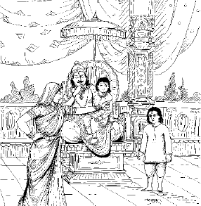
बालक समझता है—यह मेरी माँको दासी कहती है। ‘दासी’ शब्द जब सुना है—ध्रुवजीको दु:ख हुआ है। ‘दासी’ शब्द हृदयमें बाणके जैसा लगा है। बालक रोने लगा है—मेरी माँको ‘दासी’ कहती है! विमाता सुरुचि हँसती है—बालकका मैंने कैसा तिरस्कार किया! मैं बड़ी सयानी हूँ—राजाको मैंने हाथमें रखा है। बालक रोता है, विमाता हँसती है।
अब ध्रुवजीको सुनीति माँ याद आती है। ध्रुवजी दौड़ते हुए सुनीतिमाताके पास जाते हैं। सुनीतिमाताके लिये तो वह प्राणसे भी प्यारा है। ‘क्यों रोता है?’ सुनीति दौड़ती हुई गयी, बालकको उठा करके घरमें ले आयी।
गोदमें लेकर प्यार करती है ‘बेटा! क्यों रोता है—तुम्हें क्या हुआ हैै? तुम्हें किसीने मारा है इसलिये तू रोता है—बेटा! तू तो राजाका पुत्र है। मैं तेरे पिताको कह दूँगी। तेरे पिता बड़े राजा हैं। तुम्हें किसीने मारा हो तो तेरे पिता उसको सजा करेंगे। रोना नहीं। तुम्हें क्या हुआ है?’
जिसकी माता सुनीति है, उसका पुत्र सुशील होता है। माता-पिताके आचार-विचार बालकमें आते हैं—
सुशीलो मातृपुण्येन पितृपुण्येन चातुर:।
औदार्यं वंशपुण्येन आत्मपुण्येन वैभवम्॥
बालक बोलता नहीं है, रोता है—मैं कैसे कहूँ कि विमाताने मेरा तिरस्कार किया है। ‘पिताजीने मेरे सामने देखा भी नहीं’—ऐसा बोलूँ तो माता-पिताकी निन्दा करनेके जैसा पाप होगा। इसलिये बालक बोलता नहीं है। धीर-गम्भीर है—वह सुनीतिमाताका पुत्र है।
सुनीतिने जब कहा कि ‘क्यों रोता है, तू तो राजाका बेटा है।’ तब ध्रुवजी ज्यादा रोने लगे। माँका हृदय भर आया—पतिदेवने मेरा त्याग किया है...। मेरे बालकको किसने रुलाया—मेरा बालक बड़ा सयाना है। आजतक कभी ऐसा रोया नहीं था। माता सुनीति ध्रुवजीसे पूछती हैं।
उसी समय एक दासी वहाँ आयी है। दासीने सब कथा सुनायी—राजमहलमें गये थे, गोदमें बैठनेकी इच्छा थी। पिताजी गोदमें लेनेको तैयार भी हुए थे। तब विमाताने कहा—‘तू यहाँसे चला जा, वनमें जा। तू दासीका पुत्र है। रानी मैं हूँ।’ इसलिये बालक रोता है।
सुनीतिने सुना, उसे दु:ख होता है—दो मिनट गोदमें बैठ लेता तो क्या होता—बिना कारण सुरुचि वैर करती है। मैंने उसका कुछ भी बिगाड़ा नहीं है। मेरे बालकका तिरस्कार किया! आज सुनीतिमाताको दु:ख हुआ है। सुनीतिने विचार किया कि दु:खमें, आवेशमें बोलना नहीं है। मेरे बालकको राज्य-सम्पत्ति भले ही मिले, न मिले—मुझे बालकको अच्छे संस्कार देने हैं।
पैसेसे ही सुख मिलता है—यह कल्पना मनमें आयी, तभीसे पाप बढ़ा है। सम्पत्तिसे थोड़ा सुख मिलता है। जीवनमें संयम हो, सदाचार हो, सरलता हो, अच्छे संस्कार हों—तो बहुत सुख मिलता है। मेरे बालकको मैं अच्छे संस्कार दूँगी—आराधयाधोक्षजपादपद्मं यदीच्छसेऽध्यासनमुत्तमो यथा।
‘बेटा! तेरी विमाताने जो तुम्हें कहा है, वही मैं तुम्हें कहती हूँ।’ विमाता बहुत रुआबमें बोली है—वनमें चले जाओ। सुनीतिमाता वही उपदेश बहुत प्रेमसे कहती है—‘बेटा! भीख माँगना है तो भगवान्के पास भीख माँगनी चाहिये। जगत् दरिद्री है। जगत्में श्रीमान् एक श्रीकृष्ण ही हैं। जीवनमें कैसा भी दु:खका प्रसंग आये—दु:खकी कथा किसी मानवको कहना ही नहीं। एकान्तमें भगवान्से कहो। जीवनमें कोई भी दु:खका प्रसंग आये—घबराना नहीं।’
दु:ख आपके घरमें रहनेके लिये नहीं आया है, दु:ख आपको सुख देनेके लिये आया है। दु:ख आपके पापका नाश करनेके लिये आया है। दु:ख आपको सावधान करनेके लिये आया है। अति सुखमें जीव गाफिल हो जाता है, दु:खमें सावधान रहता है। जीवनमें कैसा भी दु:खका प्रसंग आये—घबराना नहीं। एकान्तमें बालकृष्णलालकी थोड़ी पूजा करो, भगवान्की आरती करो। दरवाजा बन्द करके एकान्तमें—
हरे कृष्ण हरे कृष्ण कृष्ण कृष्ण हरे हरे।
हरे राम हरे राम राम राम हरे हरे॥
—पन्द्रह-बीस मिनट ऐसा कीर्तन करो। कीर्तनमें हृदय थोड़ा पिघलेगा, आँख थोड़ी गीली हो जायगी। थोड़ी तन्मयता होगी। तब भगवान्को कहना—‘मैं दु:खी हूँ, मेरी ऐसी दशा है।’ भगवान् बहुत प्रेमसे सुनते हैं। भगवान् बहुत-बहुत देते हैं। भगवान् देते हैं, तब जीव लेता हुआ थक जाता है। भगवान् चार हाथसे देते हैं। जीव दो हाथवाला है, कितना लेगा—भगवान् बहुत देते हैं, लेकिन कभी बोलते नहीं हैं कि मैंने तुम्हें दिया है। ये मानव ऐसा दुष्ट है कि देनेके बाद बोलता है—मैंने मदद की है, मैंने दिया है। भगवान् बहुत देते हैं, कभी बोलते नहीं। माँगना है तो भगवान्के पास माँगो—आराधयाधोक्षजपादपद्मं यदीच्छसेऽध्यासन-मुत्तमो यथा॥(श्रीमद्भा० ४।८।१९)
सुनीतिमाता ध्रुवजीको समझाती है—‘तेरी माँने तेरेको बहुत सुन्दर उपदेश दिया है—वनमें जा करके भगवान्की भक्ति करो। बेटा! जिस घरमें मान नहीं है, उस घरमें रहना अच्छा नहीं है। इस घरमें तू रहेगा तो तेरी विमाता रोज तेरा अपमान करेगी। बेटा! तू रोता है तब मुझे भी दु:ख होता है। जहाँ मान नहीं है, वहाँ रहना नहीं। वनमें जाओ। तेरे पिता परमात्मा नारायण हैं। नारायणभगवान् तुम्हें गोदमें लेंगे। आजसे मैं तुम्हें नारायणके चरणोंमें अर्पित करती हूँ। तू भगवान्का पुत्र है। जहाँ मान नहीं है, वहाँ रहना अच्छा नहीं है।’
ध्रुवजीने कहा—‘माँ! तू मुझे वनमें भेज रही है, तू मेरे साथ नहीं आयेगी? तुम्हें इस घरमें कहाँ मान है।’
सुनीति समझाती है—‘मैं जानती हूँ—ये मुझे मानते नहीं हैं, फिर भी मुझे घर छोड़ना नहीं है। मैं दु:ख सहन कर लूँगी। धर्मविरुद्ध भक्ति भगवान्को प्रिय नहीं है। मेरे पिताजीने पतिदेवको मेरा दान किया था। मैं स्वतन्त्र नहीं हूँ, मैं परतन्त्र हूँ।’
स्त्री बाल्यावस्थामें माता-पिताके अधीन रहे, युवावस्थामें पतिदेवके अधीन रहे और वृद्धावस्थामें पुत्रके अधीन रहे। स्त्री बहुत स्वतन्त्र हो करके बाहर घूमती है तो स्त्रीका पतन हो जाता है। स्त्रीमें स्नेह ज्यादा है, बुद्धि कम है। जो स्त्री घर छोड़ करके बाहर बहुत घूमती है, वह घर बिगड़ जाता है। स्त्रीका धर्म यह है कि घरके एक-एक जीवमें ईश्वरकी भावना करे।
‘मैंने पतिमें परमात्माकी भावना रखी है। पतिदेव भले ही मेरा तिरस्कार करें तो भी मैं पतिकी सेवा नहीं छोड़ूँगी। आजतक मैं पतिदेवकी सेवा करती थी, आजसे मैं सावधान रहूँगी—जो मेरे पतिको बहुत प्यारी लगती है, उसकी मैं दासी हूँ। वह मेरा तिरस्कार करेगी, मेरा अपमान करेगी—तो भी मैं सहन करूँगी। कभी तो भगवान्को दया आयेगी। मैं वनमें नहीं जाऊँगी।
धर्मविरुद्ध भक्ति भगवान्को प्रिय नहीं है। भक्ति धर्मानुकूल होनी चाहिये। मैं पतिदेवका त्याग नहीं करूँगी, पतिदेव मेरा भले ही त्याग करें। मेरे सामने देखनेको तैयार नहीं हैं तो भी मैंने पतिको परमात्मा माना है—पतिदेवकी सेवा छोड़ करके मैं वनमें नहीं जाऊँगी।
बेटा! पतिदेवकी सेवा करते हुए मैं नारायणसे प्रार्थना करूँगी कि मेरे बालकका रक्षण करो। तू मेरे पेटमें था, तब जिस भगवान्ने तेरा रक्षण किया, वही भगवान् जंगलमें भी तेरा मंगल करेंगे। तेरी माँ तेरे साथ नहीं जाती है, किन्तु मेरा आशीर्वाद तेरे साथ है। मैं भगवान्की रोज प्रार्थना करूँगी कि मेरे बालकको सँभालना। आजसे तू मेरा पुत्र नहीं है, आजसे तू नारायणका पुत्र है।’
वेदमें भगवान् ऐसा बोले हैं—जीव मेरा पुत्र है—शृण्वन्तु विश्वे अमृतस्य पुत्र:।’
‘बेटा! मेरी बहुत इच्छा है कि मेरा पुत्र महान् भगवद्भक्त हो। जिस गादीमें तेरे दादा बैठते थे, तेरे पिता बैठते हैं, भविष्यमें दूसरा कोई बैठेगा—उस गादीमें बैठनेकी इच्छा रखना ही नहीं। भगवान् तुम्हें ऐसी गादीमें बिठायेंगे, जहाँ बैठनेके बाद कभी उठनेका प्रसंग आयेगा ही नहीं।’
ध्रुवजी माँकी गोदमें बैठे थे, खड़े हुए हैं—माँको साष्टांग वन्दन किया है। माँका हृदय भर आया—पाँच वर्षका बालक है। मेरा भाग्य कैसा है! मुझे घरमें रहना है, बालकको मैं वनमें भेजती हूँ!
उस समय सुनीतिमाताने नारायणका स्मरण किया है—आपके आधारसे बालकको मैं वनमें भेजती हूँ—मेरे बालकको सँभालना। ध्रुवजीको सुनीतिमाताने बोध दिया है—‘बेटा! वनमें जानेके बाद कोई साधु-सन्त मिलें तो उन्हें साष्टांग प्रणाम करना। सन्त सभीके पिता-समान हैं। सन्त नि:स्वार्थ भावसे प्रेम करते हैं। संसारका सभी प्रेम स्वार्थसे भरा हुआ है। कोई सन्त मिले तो सन्तको साष्टांग प्रणाम करना।’ बालकको समझाया है।
सुनीतिको दु:ख तो हुआ है, किंतु उसने दु:खके वेगको दबाया है—बालकके सामने रोना नहीं है, उसके सामने मैं रोऊँगी तो वह रोने लगेगा। सुनीतिने अपना हृदय पत्थर-जैसा कठिन बनाया—बालकके जानेके बाद दरवाजा बन्द करके एकान्तमें मैं रो लूँगी, उसके सामने रोना नहीं है।
ध्रुवजी जाने लगे, तब सुनीतिका हृदय भर आया—‘बेटा...बेटा...बेटा’—कहती हुई दौड़कर गयी है, बालकको हृदयसे लगाया है। प्यारसे बालकको समझाया—‘बेटा, तू मेरा सयाना बेटा है। मैं जो कहूँगी, सो तू करेगा’ बालकने हाथ जोड़े हैं—‘माँ! तू जो कहेगी, वह मैं करूँगा।’
‘बेटा! मैं तुम्हें सत्य कहती हूँ। तू मुझे वन्दन न करे तो भी मैं तुम्हें आशीर्वाद दूँगी। मेरी बहुत इच्छा है कि तेरे पिताको जो प्यारी लगती है—तेरी विमाता तुम्हें आशीर्वाद दे।... मनमें कुभाव रखना नहीं। मान-अपमान, सुख-दु:ख, लाभ-हानि—अपने कर्मका ही फल है। मैं तो ऐसा मानती हूँ कि पूर्वजन्ममें विमाताका तूने कुछ अपमान किया होगा, उसका फल मिला है। बेटा! वैरकी शान्ति वैरसे नहीं होती है। वैरकी शान्ति वन्दनसे होती है—वैरकी शान्ति प्रेमसे होती है। जो तेरे पिताको प्यारी लगती है, उसको साष्टांग प्रणाम कर। वह तुम्हें आशीर्वाद दे तो भगवान्को जल्दी दया आयेगी। सुरुचिके लिये मनमें अरुचि रखना नहीं।’
ध्रुवजी विमाताको वन्दन करनेके लिये आये हैं। सुरुचि पलंगपर बैठी है। इसको बड़ा अभिमान है—मैं जो कहूँगी, वही होगा। राजा मेरे हाथमें है। अकड़में बैठी है, अपनेको बड़ी सयानी समझती है—मैंने बालकका कैसे तिरस्कार किया, वह रोता हुआ गया।
ध्रुवजी आज विमाताको वन्दन करनेको आये हैं। सुरुचि देखती है, मैंने जिसका तिरस्कार किया, वह मुझे साष्टांग वन्दन कर रहा है। कैसा भोला बालक है! इसका हृदय कैसा शुद्ध है! पूछती है—‘बेटा! क्यों वन्दन करते हो?’
‘माँ! अब मैं वनमें जा रहा हूँ।’
सुरुचि दुष्ट है। प्राण और प्रकृति साथ ही जाते हैं—
कस्तूरी क्यारी करी केसरकी बनी खाद।
पानी दिया गुलाबका आखिर प्याजकी प्याज॥
सुरुचि दुष्ट है। पाँच वर्षका बालक बोलता है—मैं वनमें जाता हूँ। वह ऐसा नहीं कहती है कि बेटा! घरमें रहो, ये तेरी खेलनेकी उम्र है। वनमें तो मुझे जाना चाहिये। किन्तु, वह कहती है—‘तू वनमें जाता है, जा। मेरा आशीर्वाद है।’
सुरुचिने विचार किया कि ध्रुव घरमें रहेगा तो उसको थोड़ा भी कुछ देना ही पड़ेगा। वनमें चला जाय तो मेरे उत्तमको सब-कुछ मिल जायगा। दोनों माताओंको वन्दन करके, आशीर्वाद ले करके ध्रुवजी वनमें जाते हैं। पाँच वर्षकी बाल्यावस्था है। सोचते हैं—कहाँ जाऊँ? सुना है, वनमें बाघ-सिंह रहते हैं। कोई मुझे मार डाले तो? ना-ना, कोई नहीं मारेगा। मेरी माँने मुझे आशीर्वाद दिया है। मैं अकेला नहीं हूँ, माँका आशीर्वाद मेरे साथमें है। कुछ भी हो, अब घरमें जाना नहीं है।
आज वैकुण्ठमें भगवान्को चिन्ता हुई है। एक महान् पतिव्रता स्त्रीने मेरे आधारसे इस बालकको वनमें भेजा है। उसका पतिमें कैसा भाव है! पतिने उसका तिरस्कार किया है, फिर भी वह पतिको परमात्मा मानती है। उसने मेरे आधारसे अपने बालकको वनमें भेजा है—अब वह मेरा पुत्र हुआ है।
भगवान्ने नारदजीको प्रेरणा की—बालक घर छोड़ करके निकला है, मार्गमें आप उसको मिलो, उसकी परीक्षा करो—उसको समझाओ। ध्रुवजी जिस मार्गसे जाते हैं, उसी मार्गसे देवर्षि नारदजी आये हैं। आँखमें नारायण हैं, मुखमें नारायण हैं, मनमें नारायण हैं, रोम-रोममें नारायण हैं—नारायण... नारायण... नारायण—कीर्तन करते हुए चलते हैं। ध्रुवजी नारदजीको पहचान सके नहीं। फिर उन्होंने सोचा—मेरी माँने मुझे कहा है कि कोई साधु-सन्त मिले तो साष्टांग प्रणाम करना। मार्गमें ही ध्रुवजीने साष्टांग प्रणाम किया। नारदजीका हृदय भर आया। बालकके मस्तकके ऊपर हाथ रखा—बड़ा सयाना है। इसकी माँने इसको समझाया है।
नारदजीके मुखसे ‘बेटा’ शब्द निकला है—‘बेटा! कहाँ जाता है—घर क्यों छोड़ा है?’ ‘बेटा’ शब्द सुननेसे ध्रुवजीको सुनीति माँ याद आती है—मैं घर में था, तब मेरी माँ मुझसे कैसा प्रेम करती थी—मुझे ‘बेटा-बेटा’ कहती थी। मेरी माँने मुझे ऐसा आशीर्वाद दिया, जो मार्गमें दूसरी माँ मिली है।
सद्गुरु ‘माँ’ है। एक माँ बालकको स्तन-पान कराती है—पुष्ट करती है। सद्गुरु-माँ ऐसी है, जो स्तन-पान छुड़ाती है—अब किसीके पेटमें जानेका प्रसंग आयेगा ही नहीं। सद्गुरु माँ है। सद्गुरु मिलनेपर नवीन जन्म होता है।
‘बेटा, घर क्यों छोड़ा है—कहाँ जा रहा है?’—नारदजी प्रेमसे बालकको निहारते हैं।
बालकको विश्वास हो गया कि इनका मेरे ऊपर बहुत प्रेम है। उसका हृदय भर आया। बालक रोने लगा। नारदजीने उसको छातीसे लगाया—‘बेटा! क्यों रोता है? तुम्हें क्या हुआ है? बेटा! बोल तो सही, क्यों घर छोड़ा हैै?’
बालकने कहा है—‘परमात्माके लिये मैंने घर छोड़ा है। मेरी माँने मुझे कहा है कि नारायण मेरे पिता हैं। भगवान्की गोदमें मुझे बैठना है। भगवान्के लिये मैंने घर छोड़ा है।’
नारदजी डोलने लगे हैं—बहुत पढ़ा-लिखा भी ऐसा बोल नहीं सकता। भगवान्के लिये उसने घर छोड़ा है! भगवान् उसके पिता हैं!
‘बेटा! यह तो तेरी खेलनेकी उम्र है। तेरी विमाताने कुछ कहा होगा, उसे मनमें रखना नहीं। चल, तुम्हें मैं घर ले चलता हूँ। तेरे पिताको मैं समझाऊँगा। आधा राज्य तुम्हें मिलेगा।’
‘मुझे घरमें जाना ही नहीं है। मेरा कोई अपराध नहीं है; तो भी मेरा बहुत तिरस्कार किया है।’
नारदजीने कहा है—‘तुम्हें इस जन्ममें भगवान्का दर्शन नहीं होगा।’
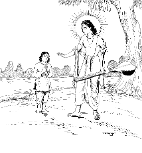
‘इस जन्ममें नहीं होगा तो दूसरा जन्म लूँगा—तीसरा जन्म लूँगा। कभी तो भगवान्को दया आयेगी। अब घरमें नहीं जाऊँगा।’
बालकका दृढ़ निश्चय देख करके नारदजी प्रसन्न हुए हैं—बीज व्यर्थ नहीं जायगा। नारदजीने चतुर्भुज नारायणका ध्यान कैसे करना है—यह बालकको समझाया है। नारायणकी मानसी पूजा कैसे करनी चाहिये—यह भी समझाया और कहा—‘बेटा! तुम्हें मैं एक मन्त्र देता हू—ॐ नमो भगवते वासुदेवाय—यह महामन्त्र है। आँखसे चतुर्भुज नारायणका दर्शन करो—शंख, चक्र, गदा, पद्मधारी नारायण विराजमान हैं। आँख दर्शन करे, मन स्मरण करे, जीभ जप करे और कान मन्त्रके अक्षरोंको सुनें। जप करो, तब मनसे स्मरण करो, आँखसे दर्शन करो—समाधि लगेगी। पासमें ही मधुवन है। श्रीयमुनाजी तुम्हें नारायणकी गोदमें बिठायेंगी। तेरे लिये यमुनाजी सिफारिश करेंगी। तेरा ब्रह्म-सम्बन्ध होगा।’ नारदजीने ध्रुवजीको समझाया है।
राजा उत्तानपादने सुना—मेरा बालक घर छोड़ करके वनमें गया है। त्यागमें कैसी शक्ति है! ध्रुवजी घर छोड़ करके वनमें गये तो ध्रुवजीका तो कल्याण हुआ ही—अब राजाका भी कल्याण होता है। राजाकी अन्दरकी आँख खुलती है—मैंने यह क्या किया? एक पाँच वर्षका बालक सब कुछ छोड़ करके वनमें चला गया। मैं एक स्त्रीको नहीं छोड़ सकता—मेरा मन स्त्रीमें फँस गया है, मैं स्त्रीका दास बन गया हूँ—धिक्कार है। मैंने बड़ा भारी पाप किया है। एक महान् पतिव्रता स्त्रीका मैंने तिरस्कार किया है। सुनीतिमें कोई दोष नहीं है। सुरुचिने झूठ-मूठ मुझे ऐसा समझा दिया था। मैं उसके अधीन हो गया था। मैंने सुनीतिका त्याग किया—एक महान् पतिव्रताका त्याग किया, यह मेरी भूल है।
राजाकी अब अन्दरकी आँख खुलती है। आज राजाको सुनीति प्यारी लगती है—‘मेरी भूल हुई है। मैं सुनीतिको वन्दन करके क्षमा माँगूँगा। बहुत दिनके बाद राजा उत्तानपाद सुनीतिके घरमें आये हैं। सुनीति एकान्तमें रो रही है—‘मेरे बालकको भूख लगी होगी... मेरे बालकको कौन खिलायेगा... पाँच वर्षका ही तो है...।
तभी दासीने अन्दर आकर कहा—‘महाराज आये हैं।’ सुनीतिने सोचा—कभी मेरे घरमें नहीं आते थे, आज क्यों आये हैं? ऐसा लगता है कि मुझे कुछ और सुनाने आये हैं। सुनीति धैर्य धारण करके धीरे-धीरे बाहर आती है।
आज राजाके हृदयका परिवर्तन हुआ है। आज सुरुचिमें फँसा हुआ अति कामी उत्तानपाद नहीं है। आज सुनीति उसको प्यारी लगती है। राजाके हृदयमें पश्चात्ताप है—मैंने भूल की है, मैंने बड़ा भारी पाप किया है। एक महान् पतिव्रता स्त्रीका मैंने तिरस्कार किया है...।
सुनीति बाहर आती है—राजा दौड़ता हुआ उसके समीप आया है, क्षमा माँगता है। सुनीतिने कहा—‘आप मेरे भगवान् हैं। कभी ऐसा करना नहीं। मैं आपकी दासी हूँ।’
बहुत दिनके बाद पति-पत्नीका मिलन हुआ है—‘तू दासी नहीं है, तू देवी है। मैंने तेरा बहुत तिरस्कार किया है।’ आँखसे प्रेमके आँसू बहने लगे हैं। मन शुद्ध हुआ।
‘मेरा ध्रुव कहाँ है? बालकको देखना है। ध्रुवको गोदमें लेनेकी इच्छा है। ध्रुव जहाँ हो, वहाँ मुझे तू ले चल।’
सुनीति समझाती है—‘मैंने उसको वनमें भेजा है। वह कहाँ गया है, मैं जानती नहीं हूँ। मेरा एक बालक तो घरमें है—उत्तम मेरा बालक है।’ सुनीतिकी आँखमें प्रेम है—‘एक बालक हमारी सेवा करेगा, एक बालक भगवान्के लिये वनमें गया है। मेरे तो दो बालक हैं। मेरा एक बालक तो घरमें है।’ राजाको समझाया है—‘रोना नहीं। भगवान् कृपा करेंगे तो बालक घरमें आयेगा।’
उधर, नारदजीको चिन्ता हुई—ध्रुव मेरा शिष्य हुआ है। मेरा शिष्य यमुनाजीके किनारे भक्ति करता है और उसका पिता राजमहलमें अति कामी और विलासी जीवन बिताता है—यह ठीक नहीं है।
सन्त जिसको अपनाते हैं, उसके कुटुम्बकी भी उनको चिन्ता रहती है—राजाको अब सुधारना है।
नारदजी आये हैं। राजाने कहा है—‘मैं अति कामी हूँ। एक स्त्रीके कहनेसे मैंने निर्दोष बालकका तिरस्कार किया है। मेरा बालक घर छोड़ करके वनमें गया है, कब आयेगा?’
राजाको सुधारनेके लिये नारदजीने कहा—‘यही तो मायाजाल है...।’ राजाने नारदजीसे विनती की है—‘आप जो कहो, सो मैं करूँगा।’ नारदजीने राजाको समझाया है—‘जीभ जब बिगड़ती है, तब मन भी बिगड़ता है। जीभ सुधरती है, तब मन भी सुधरता है। तुम्हें छ: महीनेतक दूधके ऊपर रहना होगा। अन्न खाना नहीं, फल खाना नहीं।
हरे कृष्ण हरे कृष्ण कृष्ण कृष्ण हरे हरे।
हरे राम हरे राम राम राम हरे हरे॥
—यह महामन्त्र है। इस मन्त्रका तू बराबर जप कर।’
इस महामन्त्रकी एक विशेषता है। गुरु किये बिना भी यह मन्त्र सफल होता है। दूसरे सभी मन्त्र गुरुद्वारा लेने पड़ते हैं—वे गुरु सिद्ध होने चाहिये। कलियुगमें सिद्ध सन्त जल्दी नहीं मिलते हैं। जो सिद्ध-महात्मा हैं, वे गुफाओंमें छिप गये हैं। कलियुगका प्रभाव बहुत बढ़ गया है, यह उन्हें सहन नहीं होता है।
दूसरे सभी मन्त्र गुरुद्वारा लेने पड़ते हैं। जो गुरु बारह कोटि जप करे, उसीको मन्त्र देनेका अधिकार है। किंतु ‘हरे कृष्ण...’ मन्त्रमें ऐसी शक्ति है कि गुरु किये बिना भी वह सफल होता है। दूसरे जो मन्त्र हैं, उनका जप पवित्र-अवस्थामें ही किया जाता है, किन्तु ‘हरे कृष्ण’ मन्त्रमें ऐसी शक्ति है कि इसका जप अपवित्र-अवस्थामें भी किया जा सकता है—ऐसा लिखा है। शुचिर्वा अशुचिर्वा...; ‘अशुचि’ शब्दका अर्थ होता है—अपवित्र। कलियुगमें थोड़ी स्वच्छता तो दिखती है, किंतु पवित्रता कलियुगमें नहीं दिखती। पवित्रता रखना अच्छा है। पवित्र न हो तो अपवित्र-अवस्थामें भी इस महामन्त्रका जप किया जा सकता है। हरि-नाम, कृष्ण-नाम और राम-नामसे कलि डरता है। कलिसन्तरणोपनिषद्का यह मन्त्र है। हरि-नामका जप करनेसे पापका नाश होता है। कृष्ण... कृष्ण... कृष्ण... कृष्ण—प्रेेमसे जो बोलता है, भगवान् धीरे-धीरे उसके मनको खींच लेते हैं। ‘कृष्ण’ नाम आकर्षण करता है—मनको खींच लेता है। हरि-नाम पापका नाश करता है। राम-नाम आनन्दका स्वरूप है। राजा उत्तानपादको नारदजीने कहा है—‘छ: महीनेतक दूधपर रहना होगा। महामन्त्रका तू बराबर जप करेगा तो तेरा पुत्र घरमें आयेगा।’
ध्रुवजी यमुनाजीके किनारे भक्ति करते हैं। राजा उत्तानपाद राजमहलमें भक्ति करते हैं। राजाका जीवन अब सुधरा है। जिसकी जीभ सुधरती है, उसीका जीवन सुधरता है। जिसकी जीभ अति शुद्ध है, उसीका मन शुद्ध होता है। सादा भोजन करनेसे जीभ सुधरती है। बहुत कम बोलनेसे जीभ सुधरती है। जीभसे भगवान्के नामका जप करनेसे जीभ सुधरती है। राजाका जीवन अब सुधरा है। ध्रुवजी मधुवनमें यमुनाजीके किनारे चतुर्भुजनारायणका ध्यान करते हैं, महामन्त्रका जप करते हैं। अतिशय भूख लगती है, तब कन्द-मूल, फल खाते हैं। तीन दिनतक एक आसनमें बैठे रहे—प्रथम मास ऐसी तपश्चर्या की। दूसरा महीना आया है—संयमको बढ़ाया। अब छह दिनतक बैठे रहे। तीसरे महीनेमें नौ दिनतक बैठे रहे। धीरे-धीरे संयमको बढ़ाओ, भक्तिको बढ़ाओ। भोगमें सन्तोष मानो, भक्तिमें लोभ रखो।
कितने लोग ऐसे होते हैं, जो कथा सुनते हैं तबतक तो संयम रखते हैं, भक्ति करते हैं। किंतु जहाँ कथाकी समाप्ति हुई कि भक्तिकी भी समाप्ति कर देते हैं। भक्तिकी कभी समाप्ति करना नहीं। जिस दिन इस शरीरकी समाप्ति हो, उस दिन भले ही भक्तिकी समाप्ति हो। आपसे हो सके तो आजसे भोगकी समाप्ति करो। बहुत सुख भोगा—शान्ति नहीं मिली है।
वैष्णव भोगकी समाप्ति करते हैं, वैष्णव कभी भक्तिकी समाप्ति नहीं करते। चतुर्थ मास आया है। ध्रुवजी बारह दिनतक एक आसनमें बैठे हैं—पेड़का पान (पत्ता) खाते हैं, यमुनाजीका जल पीते हैं। पाँचवाँ महीना आया है—ध्रुवजी पन्द्रह दिनतक एक आसनमें बैठे रहे। अब ध्रुवजीके हृदयमें नारायणका स्वरूप प्रकट हुआ है।
थोड़ा-सा विचार करो—आपके हृदयमें नारायण हैं। हृदयमें नारायण होनेपर भी जीव दुखी है। हृदयमें नारायण हैं तो भी जीव पाप करता है। हृदयमें नारायण हैं तो भी जीव मायामें फँसा हुआ है। हृदयमें जो नारायण हैं, वह किसीको पाप करनेसे नहीं रोकते हैं। हृदयमें जो नारायण हैं, वह किसीको सुख नहीं देते हैं। हृदयमें जो नारायण हैं, वह प्रकाशमय हैं—मन, बुद्धि, इन्द्रियोंको प्रकाश देते हैं, दूसरा कुछ नहीं करते। हृदयमें नारायण होनेपर भी जीव पाप करता है। नारायणको नामसे प्रकट करो। भगवान्के नाममें भगवान्का स्वरूप प्रकट करनेकी शक्ति है। रूप परतन्त्र है, नाम स्वतन्त्र है। भगवान्का स्वरूप जल्दी दिखता नहीं है। कदाचित्, किसीको दर्शन हो तो वह स्वरूपको पकड़ सकता नहीं है। किंतु नामको आप पकड़ सकते हो। जहाँ नाम है, वहीं भगवान् हैं। जगत् भगवान्के अधीन है और भगवान् नामके अधीन हैं। जहाँ नाम है, वहाँ भगवान्का स्वरूप प्रकट हो जाता है। सतत महामन्त्रका जप करनेसे ध्रुवजीके हृदयमें शंख-चक्र-गदा-पद्मधारी नारायण प्रकट हुए हैं।
जो भगवान् नामसे प्रकट होते हैं, वह भगवान् पाप करनेसे रोकते हैं। जो भगवान् नामसे प्रकट हुए हैं, वह अज्ञानको दूर करते हैं। भगवान्के किसी भी नाममें तन्मय बनो। जिस नामका आप सतत रटन करोगे, वह रूप आपके सामने आयेगा। नाममें रूपको प्रकट करनेकी शक्ति है।
ध्रुवजीके हृदयमें नारायणका स्वरूप प्रकट हुआ है—आनन्द आता है। अब ध्रुवजीने निश्चय किया है कि भगवान् आज्ञा करें तो ही उठना है; तबतक उठना नहीं है—भले ही शरीरसे प्राण निकल जायँ। छ: माह परिपूर्ण हुए हैं। आज पृथ्वीको ध्रुवजीका वजन सहन नहीं होता है। सबके आधार भगवान् हैं और भगवान्के आधार आज ध्रुव हो गये। जगत् भगवान्में है और भगवान् ध्रुवजीके हृदयमें हैं। ध्रुवजीका वजन बहुत बढ़ गया है, पृथ्वीको सहन नहीं होता है। बड़े-बड़े देव-ऋषि परमात्माकी प्रार्थना करते हैं—‘बालकको दर्शन दो। अब पृथ्वीको भी वजन सहन नहीं होता है।’
भगवान्ने कहा है—‘ध्रुवको मैं दर्शन क्या दूँ—मेरा स्वरूप उसके हृदयमें प्रकट हो गया है। वह सतत मेरा दर्शन करता है। अब तो बालकको देखनेकी मुझे इच्छा हुई है। मेरा बालक है।’
कभी-कभी भगवान्को अपने भक्तको देखनेकी इच्छा होती है। भक्त भगवान्के दर्शनके लिये आतुर होते हैं। कभी-कभी भगवान्को भी आतुरता होती है। ध्रुवजीको दर्शन देनेके लिये नहीं, ध्रुवजीका दर्शन करनेके लिये भगवान् आये हैं—मधोर्वनं भृत्यदिदृक्षया गत:। ध्रुवजीके सम्मुख चतुर्भुजनारायण प्रकट हुए हैं। जिसको अन्दर नारायणका दर्शन होता है, उसको बाहरका सभी सुख तुच्छ लगता है—किसीको देखनेकी इच्छा नहीं होती। ध्रुवजीके हृदयमें नारायण प्रकट हुए हैं। भगवान् बाहर प्रकट हुए हैं। भगवान्ने विचार किया—दो-चार दिन मैं खड़ा रहूँ तो भी यह आँख नहीं खोलेगा। तब, ध्रुवजीके हृदयमें सतत महामन्त्रका जप करनेसे जो स्वरूप प्रकट हुआ था, उस स्वरूपको भगवान्ने अन्तर्धान किया है।
अब अन्दर नारायणका दर्शन नहीं होता है। बालक घबराया है—मेरी कुछ भूल हो गयी है, भगवान्का दर्शन नहीं होता है। बालक व्याकुल हुआ है। व्याकुलतामें जब आँख खोलता है, तब नारायणका जो दर्शन अन्दर होता था, वही नारायण बाहर दर्शन देते हैं। शंख-चक्र-गदा-पद्म हाथमें है। सुन्दर पीला पीताम्बर पहना है। श्रीअंग मेघके जैसा श्याम है। आँखमें प्रेम भरा हुआ है। नारायण ध्रुवका दर्शन करते हैं, ध्रुव नारायणका दर्शन करते हैं। चार आँखें जब एक होती हैं, तब दर्शनका आनन्द मिलता है। यही मेरे भगवान् हैं—बालक बारम्बार वन्दन करता है। बोलनेकी इच्छा है, वह कुछ पढ़ा नहीं है—क्या बोले—बालक हाथ जोड़कर खड़ा है। प्रेमसे दर्शन करता है। भगवान्को दया आयी है।
भगवान्के हाथमें जो शंख है—वही वेद-तत्त्व है। जो भगवान्को जानता है, वह सब कुछ जानता है। जो प्रभुको प्रसन्न करता है, वही जगत्को प्रसन्न करता है। बहुत पुस्तक पढ़नेसे ज्ञानकी समाप्ति नहीं होती है, ज्ञानकी समाप्ति श्रीकृष्ण-दर्शनमें होती है। वेदोंका अन्त नहीं है, पुराणोंका पार नहीं है। एक जन्म लेकर नहीं, अनेक जन्म लेकर भी कोई पुस्तक पढ़ता रहे तो भी ज्ञानकी समाप्ति नहीं होती है। ज्ञानकी समाप्ति श्रीकृष्ण-दर्शनमें होती है। जो भगवान्को जानता है, वह सब कुछ जानता है। भगवान्को दया आयी। बड़े लोग जब प्यार करते हैं, तब बालकके गालको स्पर्श करते हैं—मेरा बालक है!
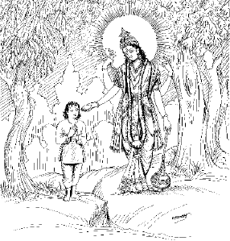
भगवान्ने शंखसे ध्रुवजीके गालको स्पर्श किया है। ज्ञान-शक्ति सरस्वतीको जाग्रत् किया है। ध्रुवजीकी बुद्धिमें ज्ञान-शक्ति सरस्वती प्रकट हो गयी। ध्रुवजी परमात्माकी स्तुति करते हैं—
योऽन्त: प्रविश्य मम वाचमिमां प्रसुप्तां
सञ्जीवयत्यखिलशक्तिधर: स्वधाम्ना।
अन्यांश्च हस्तचरणश्रवणत्वगादीन्
प्राणान्नमो भगवते पुरुषाय तुभ्यम्॥
(श्रीमद्भा० ४।९। ६)
‘मैं नारायणके चरणमें वन्दन करता हूँ। मैं आपका अज्ञानी बालक हूँ। मुझे माँगनेकी भी अकल नहीं है। आप मेरे पिता हो, मैं आपका अज्ञानी बालक हूँ। आपको जो उचित लगे, वही मुझे दो।’ ध्रुवजीने बहुत सुन्दर स्तुति की है। भगवान्ने ध्रुवजीसे कहा है—‘छत्तीस हजार वर्षतक तू राज्य कर, फिर मैं तुझे वैकुण्ठधाममें ले जाऊँगा।’
ध्रुवजीने कहा—‘आपका दर्शन मुझे हुआ नहीं था, तबतक मेरे मनमें राजा होनेकी थोड़ी-सी वासना थी। आपके दर्शनका आनन्द मिला, अब मुझे ऐसा लगता है कि भला राजा होनेमें क्या सुख है—राजमहलमें तो मच्छर भी रहते हैं, पशु-पक्षी भी रहते हैं—वे भी सुख भोगते हैं। राजाको क्या सुख है—मुझे राज्य-सुख तुच्छ लगता है। आपके दर्शनका आनन्द मिला है—अब राजा होनेकी इच्छा नहीं है। अब मुझे पूर्वजन्म याद आता है। पूर्वजन्ममें गंगा-किनारे मैं आपका ध्यान करता था, तब मेरी एक भूल हो गयी थी। एक राजा सुन्दर रानीके साथ वहाँ आया था। मैंने रानीको देखा—मेरा मन बिगड़ गया। मैंने रानीका चिन्तन किया। वासना ही पुनर्जन्मका कारण है। फलस्वरूप राजकुटुम्बमें मेरा जन्म हुआ। एक रानीको देखनेसे—एक रानीका चिन्तन करनेसे मुझे राजकुटुम्बमें जन्म लेना पड़ा। अब मैं राजा हो जाऊँ तो किसी रानीके साथ लग्न होगा, फिर मेरा मन बिगड़ जायगा। इसलिये अब राजा होना नहीं है।’
भगवान् समझाते हैं—‘बेटा! जो मेरे पीछे पड़ता है, उसके पीछे मैं पड़ता हूँ। सुन्दर रानियाँ तेरी सेवा करेंगी। तेरी आँखमें—मनमें जरा भी विकार नहीं आयेगा। तुम्हें राजा होनेकी इच्छा नहीं है; किंतु मेरा ध्रुव राजा हो—यह देखनेकी मेरी बहुत इच्छा है। तेरे पिता तेरी प्रतीक्षा कर रहे हैं, अब जल्दी घरमें जा।’
भगवान् अन्तर्धान हुए हैं। ध्रुवजी गाँवके बाहर बगीचेमें आकर बैठे हैं। राजाको आज बहुत शकुन हुए हैं। राजाका एक सेवक बगीचेमें फूल-तुलसी लेने गया था। ध्रुवजीका दर्शन हुआ। वह दौड़ता हुआ राजमहलमें जाता है—‘बधाई! बधाई!! राजकुमार आये हैं।’
राजाको आनन्द हुआ है। रथमें बैठा है, ध्रुवजीका स्वागत करनेके लिये जाता है। दो माताएँ दो पालकीमें बैठी हैं....। जो भगवान्के पीछे पड़ता है, जगत् उसके पीछे-पीछे चलता है।
थोड़ा-सा विचार करें—छ: महीने पहले ध्रुवजी पिताके पास आये थे, तब पिताने मुख फेर लिया था—ध्रुवजीके सामने देखातक नहीं था। आज गाँवके बाहर बगीचेमें ध्रुवजी बैठे हैं, वहाँ राजा स्वागत करनेके लिये जाता है। जो भगवान्के पीछे चलता है, जगत् उसके पीछे-पीछे आता है। जो प्रभुके मार्गमें आगे बढ़ता है, सभीका उसमें विश्वास हो जाता है। ध्रुवजीने दूरसे देखा कि मेरे पिताका रथ आ रहा है। ध्रुवजी दौड़ते हुए गये हैं, रथके सामने साष्टांग प्रणाम करते हैं।
सारथीने राजासे कहा है—‘ध्रुवजी वन्दन कर रहे हैं।’
राजाने सुना, राजा रथसे कूद पड़े हैं। आँखोंमें प्रेमाश्रु निकलते हैं, ध्रुवका दर्शन नहीं होता है। ‘मेरा बालक कहाँ है’—राजा प्रेमसे विह्वल हो उठते हैं। ध्रुवजीने पिताका चरण-स्पर्श किया—‘पिताजी! आपका बालक आपके चरणोंमें है।’
राजाने बालकको उठाया है। पिता-पुत्र एक हुए हैं। राजाकी आँखसे प्रेमके आँसू निकलते हैं—आँसुओंसे पुत्रका अभिषेक किया है। राजाने विचार किया—मैं लायक तो नहीं हूँ। ध्रुव कभी नारायणका दर्शन मुझे भी करायेगा!
ध्रुवजीने कहा—‘पिताजी! माताओंको मैं वन्दन करके आता हूँ।’
‘जा बेटा! तेरी माँ प्रतीक्षा कर रही हैं।’
ध्रुवजीको याद आया है—मेरी माँने मुझे कहा है कि तू मुझे वन्दन न करे तो भी मैं तुम्हें आशीर्वाद दूँगी। तेरे पिताको जो प्यारी लगती है, तेरी विमाताको तू वन्दन कर।
प्रथम, ध्रुवजी विमाता सुरुचिको वन्दन करते हैं। सुरुचिने आशीर्वाद दिया है। जिसका मन अति शुद्ध है, उसके शत्रु मित्र हो जाते हैं—
यस्य प्रसन्नो भगवान् गुणैर्मैत्र्यादिभिर्हरि:।
तस्मै नमन्ति भूतानि निम्नमाप इव स्वयम्॥
(श्रीमद्भा० ४।९।४७)
जिसका हृदय गंगाजलके जैसा शुद्ध है, जिसको अन्दरसे भक्तिका रंग लगा है—ऐसे भगवान्के भक्त जब मार्गसे जाते हैं, तब पशु-पक्षियोंके हृदयमें भी प्रेम उत्पन्न हो जाता है। मार्गके पेड़ झुक करके उसका वन्दन करते हैं।
आज सुरुचिके हृदयका परिवर्तन हुआ है—आशीर्वाद देती है। सुनीति माँ प्रतीक्षा करती है—मेरा बालक आ रहा है। विमाताको उसने वन्दन किया, अच्छा किया।
ध्रुवजी दौड़ते हुए आये हैं। सुनीतिमाताको वन्दन करते हैं। माँने देखा है। बालकको उठाया, छातीके साथ लगाया है। उसका गला भर आया। मुखसे शब्द निकलता नहीं है। बालकको जब छातीके साथ लगाया, तब स्तनसे दूधकी धारा टपकती है—मेरा बालक है, मेरी बहुत इच्छा थी कि मेरा बालक महान् भगवद्भक्त हो। लोग मेरे ध्रुवकी जब कथा कहेंगे, तब मेरा भी नाम लेंगे।
ध्रुवजीको हाथीके ऊपर बैठाया है। बड़ा जुलूस निकला है। सभीको दर्शन हुआ है।
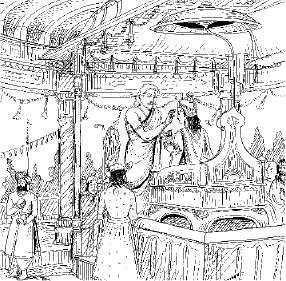
ध्रुवजीका राज्याभिषेक किया है। ध्रुवजीको राजा बना करके राजा उत्तानपाद वनमें तपश्चर्या करने गये हैं। बड़े-बड़े राजा लोग भगवान्के लिये राजमहल छोड़ देते थे—वनमें जाते थे। आजकलके लोग तो भगवान्को छोड़ करके घरमें ही बैठे रहते हैं। भगवान्के लिये घर छोड़नेकी इच्छा नहीं होती है। राजाने राजमहलका त्याग किया है। सुनीतिमाताने देखा—मेरे पतिदेव वनमें जाते हैं, अब मुझे भी घरमें रहना नहीं है। सुनीतिके लिये सुखके दिन आये हैं—उसका पुत्र राजा हुआ है, किंतु वह घरमें रही नहीं। पतिदेवके पीछे-पीछे वनमें जाती है।
ध्रुवजीका भाई उत्तम एक बार शिकार करनेके लिये गया था। यक्ष-गन्धर्वोंके साथ उसका युद्ध हुआ। युद्धमें उसका मरण हुआ। ध्रुवजी युद्ध करनेके लिये गये। ध्रुवजीके दादा स्वायम्भुव मनु वहाँ आये हैं, समझाते हैं—‘वैष्णव कभी वैर नहीं करते। तेरे भाईकी आयु पूरी हुई थी। मरणके लिये कुछ निमित्त तो होता ही है। बेटा! तू युद्ध करे, यह तुझे शोभा नहीं देता।’
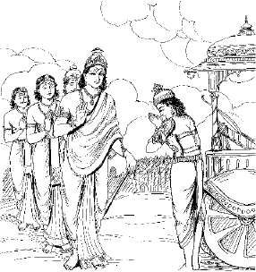
ध्रुवजीने यक्षोंको वन्दन किया, गन्धर्वोंको वन्दन करते हैं। सभीने आशीर्वाद दिया है। ध्रुवजीका जय-जयकार हुआ है। घरमें आये हैं। कई वर्षोंतक राज्य किया। फिर ध्रुवजीने अपने पुत्र वत्सरको गद्दीपर बिठाया और गंगा-किनारे भक्ति करने गये हैं। बाल्यावस्थामें ध्रुवजी यमुनाजीके किनारे भक्ति करते थे, वृद्धावस्थामें ध्रुवजी गंगा-किनारे गये हैं। श्रीयमुनाजी भक्तिका दान करती हैं, श्रीगंगा माँ मुक्ति देती हैं।
ऋषिकेशसे आप स्वर्गाश्रममें जाओ, तब मार्गमें वह जगह आती है, जिसको लोग ध्रुवजीका टीला कहते हैं। आज भी वहाँ एक बड़ा भारी चमत्कार है—ऋषिकेशसे ऊपर आप जायँ तो; कहीं भी गंगाजी शान्त हैं—ऐसा दर्शन होता ही नहीं है। अति वेगमें बड़े-बड़े पर्वतोंको तोड़-फोड़कर गंगाजी दौड़ती हैं। कमरतक जलमें खड़े होकर स्नान करनेकी हिम्मत नहीं होती। गंगा माँका अति वेग है। ऋषिकेशसे ऊपर जाओ तो; कहीं भी गंगाजी शान्त हैं—ऐसा दर्शन होता ही नहीं है। एक ध्रुव-आश्रममें गंगाजी शान्त हैं।
ध्रुवजी जहाँ बैठे थे, वहाँ भी गंगाजीका अति वेग था। कल-कल शब्द करती हुई गंगा मइया दौड़ती हैं। ध्रुवजीका मन स्थिर नहीं होता। ध्रुवजीने विचार किया—गंगा-किनारा छोड़ करके जंगलमें किसी पेड़के नीचे मैं बैठूँ। गंगाजीका शब्द बहुत होता है।
ध्रुवजी खड़े हुए हैं, तब प्रत्यक्ष श्रीगंगा माँ बाहर आयी हैं। गंगाजी गौर हैं, श्रीयमुनाजी श्याम हैं। यमुनाजीका वाहन कछुआ है, श्रीगंगा माँ मगरके ऊपर बैठती हैं। यमुनाजी द्विभुजा हैं, गंगा माँ चतुर्भुजा हैं। प्रत्यक्ष श्रीगंगा मइया बाहर आयी हैं। ध्रुवजीसे पूछा है—‘बेटा! क्यों उठता है—कहाँ जाता है?’
—‘माँ! तेरा वेग बहुत है। शब्द बहुत होता है। मेरा मन स्थिर नहीं होता। मैं जंगलमें किसी पेड़के नीचे बैठ करके ध्यान करूँगा।’
गंगा माँने कहा है—‘बेटा! तेरे-जैसे वैष्णव मेरे तटपर आते हैं, तब मुझे बहुत आनन्द होता है। तू मेरे तटको छोड़ करके मत जा। आजसे तेरे लिये मैं मौन रखती हूँ।’ ध्रुव-आश्रममें गंगाजीने मौन रखा है।
तबसे गंगाजी वहाँ शान्त हैं। ध्रुवके लिये गंगाजी जो शान्त हुई हैं तो आजतक शान्त हैं। ध्रुव-आश्रममें गंगाजी अति शान्त हैं—ऐसा दर्शन होता है। ऋषिकेशके ऊपर जाओ तो; कहीं गंगाजी शान्त हैं—ऐसा दर्शन होता ही नहीं है। ध्रुव-आश्रममें शान्त हैं।
ध्रुवजीकी भक्ति बहुत बढ़ गयी है। भगवान्को ध्रुवजीका वियोग सहन नहीं होता है। ध्रुव अब मेरे वैैकुण्ठ धाममें आयें...। विमान लेकर पार्षद आये हैं। ध्रुवजीने गंगाजीमें स्नान किया है। गंगा-किनारे जितने सन्त-महात्मा विराजमान हैं—सभीको साष्टांग वन्दन करते हैं। आज वैकुण्ठमें जाना है—सभीको वन्दन करते हैं। सभीने आशीर्वाद दिया है। ध्रुवजी विमानके पास आये हैं, उस समय मृत्युदेव ध्रुवजीके सम्मुख मस्तकको नवाते हैं—मृत्योर्मूर्ध्नि पदं दत्त्वा आरुरोहाद्भुतं गृहम्॥ (श्रीमद्भा० ४।१२।३०) एक चरण मृत्युके मस्तकके ऊपर रखा है और दूसरा चरण विमानमें रखते हैं। स्थूल शरीर, सूक्ष्म शरीर, कारण शरीर—तीनों शरीरोंका त्याग किया है। तेजोमय दिव्य स्वरूप धारण किया है।
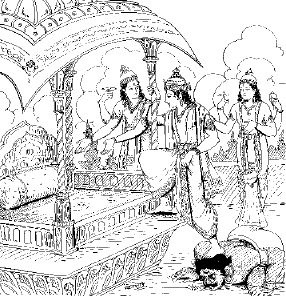
भक्तिमें कैसी शक्ति है! मृत्युके मस्तकके ऊपर पैर रखा है। जय-जयकार हुआ है। देव-गन्धर्वोंको आनन्द हुआ है। ध्रुवजी विमानमें बैठ करके वैकुण्ठ-धाममें जाते हैं। उस समय ध्रुवजीको सुनीति माँ याद आयी है—आज मैं विमानमें बैठ करके भगवान्के धाममें जाता हूँ, ये तो मेरी माँका आशीर्वाद है, जिसने बाल्यावस्थामें मुझे ऐसा उपदेश दिया। बहुत दिन हुए हैं मेरी माँको शरीर छोड़े हुए। वह जीवात्मा कहाँ गयी होगी—मेरी माँको कैसी गति मिली होगी? माँ याद आती है। उस समय पार्षदोंने ध्रुवजीको कहा है—‘थोड़ी दृष्टि ऊपर करें। हमारे यहाँका ऐसा नियम है कि माँ पहले आती है, पुत्र पीछेसे आता है। आपने अपनी माँका उद्धार किया है, आप ऊपर दृष्टि करें।’
ध्रुवजी ऊपर दृष्टि करते हैं। ऊपर एक विमान जाता है, जिस विमानमें माता सुनीति बैठी हुई हैं। भगवान्के पार्षद सुनीतिको समझाते हैं—‘आपका ध्रुव महान् भगवद्भक्त है। ध्रुवको आपने जन्म दिया, ध्रुवने आपको जन्म-मरणके त्राससे छुड़ाया है। आपका पुत्र महान् भगवद्भक्त है, इसलिये आप विमानमें बैठ करके वैकुण्ठमें जा रही हैं।’
सुनीतिका हृदय भर आया। पुत्रकी प्रशंसा सुनती है—मेरा बालक बहुत लायक है। मैंने कभी भगवान्का ध्यान नहीं किया। मैंने प्रेमसे कभी जप नहीं किया। मेरा पुत्र भगवद्भक्त होनेसे—उसकी भक्तिसे मुझे मुक्ति मिली। पुत्रकी प्रशंसा सुनती है—माँको आनन्द होता है। बहुत दिन हुए अपने बालकको मैंने देखा नहीं है। एक बार देखना है। पार्षदोंने कहा—‘माँ! दृष्टि नीचे करो।’
ऊपर विमानमें सुनीति विराजमान है। सुनीतिकी दृष्टि नीचे है, ध्रुवजीकी दृष्टि ऊपर है। माता और पुत्रकी दृष्टिका मिलन हुआ है। ध्रुवजी वन्दन करते हैं। माँने दोनों हाथ ऊँचे किये हैं—आशीर्वाद दिया है। जय-जयकार होता है। विमानमें बैठकर वैकुण्ठ-धाममें जाते हैं।
नारदजीको थोड़ा बुरा लगा—मेरा चेला विमानमें बैठ करके वैकुण्ठमें जाता है, यहाँ गुरुजी तो घूम ही रहे हैं। मैं इधर-उधर घूमता हूँ, मेरे लिये विमान नहीं आता। नारदजीको ऐसा लगा कि मैंने आजतक कथाएँ तो बहुत कीं, मैंने ध्रुवजी-जैसी भक्ति नहीं की। भोजनकी बातें करनेसे तृप्ति नहीं होती है, भोजन करनेसे तृप्ति होती है। अब मैं कथा नहीं करूँगा, मैं एकान्तमें बैठकर ध्रुवजीके जैसी भक्ति करूँगा।
नारदजी महाराज जहाँ जाते हैं, वहाँ ध्रुवजीकी कथा प्रेमसे कहते हैं। कथामें कभी ऐसा नहीं बोलते कि ध्रुव मेरा शिष्य है और मैं उसका गुरु हूँ। मेरा शिष्य मुझसे श्रेष्ठ है। नारदजी बहुत विवेकसे कथा करते हैं—‘सुनीति माँने ध्रुवको वनमें भेजा तो वनमें उसको एक साधु मिले।’ ‘मैं मिला था’—ऐसा नहीं बोलते। मेरा शिष्य मुझसे श्रेष्ठ है। नारदजी कथामें सुनीतिमाताकी प्रशंसा बहुत करते हैं—‘धन्य है सुनीतिमाताको। उसका पतिमें कैसा भाव था! वह पतिको परमात्मा मानती थी, इसलिये उसका पुत्र महान् भगवद्भक्त हुआ। धन्य है सुनीतिमाताको! अपने बालकको समझाकर भगवान्के लिये वनमें भेज दिया।’
आजकलकी माताएँ बालकोंको रुपया दे करके सिनेमा देखनेको भेजती हैं—तेरा कल्याण होगा, सिनेमा देखना! खराब चित्र देखते हैं—मन बिगड़ जाता है। खराब चित्रका असर मनके ऊपर बहुत होता है। धन्य है सुनीतिमाताको, जिसने अपने बालकको भगवान्के लिये वनमें भेज दिया।
नारदजी महाराज एक बार कच्छ-प्रान्तमें नारायण-सरोवरपर प्रचेताओंके विशाल यज्ञमें पधारे थे। वहाँ नारदजीने सन्त-समाजमें ध्रुव-चरित्रकी कथा सुनायी। नारायण-सरोवर अति सात्त्विक भूमि है। भूमिके परमाणुओंमें ऐसी शक्ति है कि हृदय पिघलता है, सात्त्विक भाव जागता है, मनमें खराब विचार नहीं आता है, मन शान्त होता है। अति पवित्र भूमि नारायण-सरोवर है। नारदजीने विचार किया—अब कथा नहीं करूँगा, यहीं बैठ करके शान्तिसे एकान्तमें ध्यान करूँगा। मैं ध्रुवजीके जैसी भक्ति करूँगा। नारायण-सरोवरकी अति सात्त्विक भूमिमें—एकान्तमें नारदजी महाराज विराजमान हैं। आदिनारायण परमात्माका ध्यान करते हैं—
श्रीमन् नारायण नारायण नारायण।
भज मन नारायण नारायण नारायण॥
सम्बन्ध जीवके साथ नहीं, ईश्वरके साथ रखो
निशम्य कौषारविणोपवर्णितं
ध्रुवस्य वैकुण्ठपदाधिरोहणम्।
प्ररूढभावो भगवत्यधोक्षजे
प्रष्टुं पुनस्तं विदुर: प्रचक्रमे॥
(श्रीमद्भा०४।१३। १)
परमात्मा श्रीकृष्ण-चरणका आश्रय करनेसे जीवात्मा निर्भय होता है। जीवमें शक्ति बहुत ही कम है। अल्पशक्ति होनेपर भी यह जीव शक्तिका विनाश करता है। जीवकी बुद्धि अल्प है। अल्पशक्ति, अल्पबुद्धि होनेसे जीवको भय लगता है—आज ठीक है, अन्तकालमें मेरी क्या दशा होगी? मानवको ही भय लगता है—ऐसा नहीं है। स्वर्गके जो देव हैं, उनको भी कालकी भीति है। जिसको भीति है, उसको शान्ति नहीं है। जो निर्भय है, उसीको शान्ति मिलती है।
सभीको काल मारनेके लिये आता है। कालको किसीपर दया नहीं आती है। समय आनेपर काल सभीको मारता है। कालके काल परमात्मा श्रीकृष्ण हैं। श्रीकृष्ण कालके मालिक हैं। वेदोंमें ऐसा वर्णन आया है—यस्य ब्रह्म च क्षत्रञ्च उभे भवत ओदन:। मृत्युर्यस्योपसेचनम्। भगवान् कालके भी काल हैं। जगत् कालके अधीन है और काल भगवान्के अधीन है। किसी भी जीवका हिसाब लेनेकी भगवान्को जब इच्छा होती है, तब भगवान् अपने नौकर ‘काल’ को हुकुम करते हैं—उसको पकड़ करके ले आओ, मुझे हिसाब देखना है। मरणका अर्थ यह होता है—भगवान्को हिसाब देनेका पवित्र दिन ही मरण है।
भगवान्ने आपको जो दिया है, उसका हिसाब भगवान् एक दिन माँगेंगे। जिसके हिसाबमें घोटाला है, उसको भय लगता है। जिसका हिसाब बराबर है, उसको शान्ति रहती है—मुझे बख्शीश मिलनेवाला है, मैं अच्छी जगहमें जानेवाला हूँ...। जीवके हिसाबमें सब घोटाला होता है, अन्तकालमें इसीलिये उसको भय लगता है। कालके भी काल परमात्मा नारायण हैं। परमात्माके साथ सम्बन्ध रखनेसे मरण मंगलमय होता है।
व्यवहारमें लोग श्रीमान्के साथ सम्बन्ध रखते हैं, श्रीमान्के साथ स्नेह करते हैं, श्रीमान्की खुशामद करते हैं। मनमें हेतु एक ही होता है—श्रीमान्के साथ प्रेम करनेसे पैसा मिलता है। श्रीमान् आपको पैसा देगा, वह शान्ति कहाँसे देगा? श्रीमान्के पास सुख है, शान्ति नहीं है। पैसेसे सुख मिलता है, शान्ति नहीं मिलती। जो परमात्माके साथ सम्बन्ध रखता है, उसको पैसा मिलता है और शान्ति भी मिलती है।
जीवका जगत्के साथ सम्बन्ध सच्चा नहीं है, जीवका ईश्वरके साथ ही सम्बन्ध सच्चा है। जन्मसे कोई भी जीव पति नहीं है, जन्मसे कोई भी जीव पत्नी नहीं है, जन्मसे कोई भी जीव पिता नहीं है। पति-पत्नीका, पिता-पुत्रका सम्बन्ध व्यवहार-दृष्टिसे सत्य है, तत्त्व-दृष्टिसे विचार करनेपर यह सम्बन्ध सत्य नहीं है। पति मर जाय तो पत्नी जीवित होनेपर भी वह पत्नी नहीं मानी जाती है। पति हो तो ही पत्नी है, पत्नी हो तो ही पति है। पत्नीका मरण हो जाय तो पति जीवित होनेपर भी वह पति नहीं माना जायगा। पति-पत्नीका सम्बन्ध सापेक्ष है। पति-पत्नीका सम्बन्ध व्यवहार-दृष्टिसे सत्य है, तत्त्व-दृष्टिसे विचार करनेपर सत्य नहीं है। मरनेके बाद कोई पति नहीं है, जन्मसे कोई पति नहीं है—पत्नी नहीं है। जन्मसे जीव ईश्वरका है और मरनेके बाद भी जीव ईश्वरका ही रहता है। जीवका ईश्वरके साथ सम्बन्ध सच्चा है। परमात्माके साथ स्नेह करो—सम्बन्ध रखो। सम्बन्धके बिना भक्ति नहीं होती है। गाँवमें बहुत-से लोगोंको बुखार आता होगा—सभीके घरमें आप देखनेके लिये नहीं जाते हो। जिसका आपसे कोई सम्बन्ध है, उसको बुखार आये तो आप देखनेके लिये जाते हो। सम्बन्धके बिना स्नेह नहीं होता है, सम्बन्धके बिना स्मरण नहीं होता है।
ईश्वरके साथ सम्बन्ध रखो। भगवान्का जो स्वरूप आपको अतिशय प्रिय लगे, उस स्वरूपको इष्टदेव मानो। पति एक ही होता है, इष्टदेव एक ही रखो। भगवान्का जो स्वरूप अतिशय प्रिय लगता है, जिस स्वरूपके दर्शनमें हृदय पिघलता है, जिस स्वरूपके दर्शनमें तृप्ति नहीं होती है—भगवान्के ऐसे किसी स्वरूपको इष्टदेव मानो।
सनातनधर्ममें देव अनेक हैं, ईश्वर एक है। एक ही ईश्वर अनेक स्वरूप धारण करते हैं। सभीकी एकमें रुचि नहीं होती है—सभीको एक नहीं भाता है। एकं सद् विप्रा बहुधा वदन्ति, एकं सन्तं बहुधा कल्पयन्ति, एक: सन् बहुधा विचार:—एक ही परमात्मा अनेक स्वरूप धारण करते हैं; तत्त्व एक है। भगवान् श्रीकृष्ण जब हाथमें धनुष-बाण धारण करते हैं, तब लोग कहते हैं—ये रामजी विराजमान हैं। श्रीकृष्ण हाथमें सुदर्शन चक्र-गदा धारण करते हैं, तब लोग कहते हैं—ये नारायण हैं।
यशोदा मइया बालकृष्णलालका रोज नया-नया शृंगार करती हैं। कन्हैया बड़ा भाग्यशाली है। आज जो पीताम्बर पहना हो, वह कल लालाको अच्छा लगता नहीं—रोज नया पीताम्बर चाहिये। यशोदा मइया बहुत प्यार करती हैं, रोज नया पीताम्बर पहनाती हैं, रोज नया-नया शृंगार करती हैं। एक दिन बालकृष्णने कहा—‘मइया! तू मुझे रोज पीताम्बर पहनाती है। आज मेरे मनमें ऐसी इच्छा हुई है कि बाघम्बर ओढ़ करके मैं साधु बनकर बैठ जाऊँ।’ कन्हैयाको नया-नया शृंगार बहुत प्रिय है। श्रीकृष्ण जब बाघम्बर ओढ़ते हैं, तब लोग कहते हैं—ये शंकरभगवान् विराजमान हैं। विष्णुसहस्रनाममें ‘शिव’ विष्णुभगवान्का नाम बताया है—सर्व: शर्व: शिव: स्थाणुर्भूतादिर्निधिरव्यय:।
एक ही मानव दिवसमें अनेक बार कपड़ा बदलता है। कपड़ा बदलनेसे व्यक्तिमें फेर-फार नहीं होता है। भगवान् बाघम्बर ओढ़ करके जब साधुके वेशमें विराजते हैं, तब लोग कहते हैं—ये शंकरभगवान् विराजमान हैं।
जो भगवान्का स्वरूप आपको अतिशय प्रिय लगता है, उस स्वरूपको इष्टदेव मानो। सभी देवोंको वन्दन करो, सभीकी पूजा करो। ध्यान और स्मरण एक देवका ही करो। अनेकका ध्यान करनेसे, अनेकका चिन्तन करनेसे शक्ति बिखर जाती है। एकका ध्यान-स्मरण करनेसे शक्ति बढ़ती है।
पतिव्रता स्त्री मायकेमें जाय तो भी उसका मन पतिमें ही होता है। वह किसी पुरुषका चिन्तन नहीं करती। परमात्मा पति हैं, परमात्मा पिता हैं, परमात्मा स्वामी हैं। भगवान्के साथ कोई भी सम्बन्ध रखनेकी जरूरत है। बहुत-से वैष्णव भगवान्को पति मानते हैं—मैं भगवान्की सखी हूँ। गीताजीके सातवें अध्यायमें वर्णन है कि जीव प्रकृति-रूप है। जीव पुरुष नहीं है—जीव स्त्री हैै। परमात्माकी पराप्रकृति जीव है और अपराप्रकृति जगत् है। जीव पुरुष नहीं है, जीव स्त्री है। जिसको भय लगता है, उसको स्त्री कहते हैं। जो निर्भय है, वही पुरुष है। शास्त्रोंमें स्त्रीका लक्षण बताया है—जो परतन्त्र है, वही स्त्री है और जो स्वतन्त्र है, वही पुरुष है। यह जीव स्वतन्त्र नहीं है—परतन्त्र है। इसीलिये जीवको स्त्री-रूप माना है।
बहुत-से लोग आजकल ऐसा समझते हैं कि मैं स्वतन्त्र हूँ। मुझे कहनेवाला, पूछनेवाला कोई नहीं है—यह भूल है। जीव परतन्त्र है। जीव कामके अधीन है। बहुत-से लोगोंकी ऐसी इच्छा है कि मुझे कभी क्रोध आये नहीं, लेकिन क्रोध आ जाता है। क्रोधके अधीन जीव होता है। कलियुगके लोग पान-तम्बाकूके अधीन होने लगे हैं। बातें बड़ी-बड़ी करते हैं—पानके बिना, सुपारीके बिना चलता नहीं है। सबेरे चाय न मिले तो मस्तक दु:खने लगता है। एक तुच्छ वस्तुके अधीन मानव हुआ है। चाय पियो, चायके अधीन मत होओ। चाय मिले तो ठीक, न मिले तो बहुत ठीक है।
जीव स्त्री है। जो परतन्त्र है, उसको स्त्री कहते हैं। सभीके पति परमात्मा हैं। सभीके पिता परमात्मा हैं। भगवान्को पति मानो, भगवान्को पिता मानो, भगवान्को स्वामी मानो—ईश्वरके साथ कोई भी सम्बन्ध रखो। ध्रुवजीने भगवान्को पिता माना है—भगवान् मेरे पिता हैं और मैं उनका अज्ञानी बालक हूँ।
जो पुत्र बहुत पढ़ा-लिखा है, उसकी चिन्ता माता-पिताको नहीं होती है। माता-पिता विचार करते हैं—बहुत पढ़ा है, कमा करके खायेगा। जो कुछ पढ़ा नहीं है, जो केवल माता-पिताके आधारसे ही जीवित है—उस अज्ञानी बालककी चिन्ता माता-पिताको ज्यादा होती है। बड़े-बड़े ज्ञानी पुरुष ज्ञानका अभिमान छोड़ करके अज्ञानी बालकके जैसे हो जाते हैं—पाण्डित्यं निर्विद्य बाल्येन तिष्ठापेत्।
ज्ञान अच्छा है, ज्ञानका अभिमान बड़ा खराब है। अज्ञानसे थोड़ा पतन होता है, अभिमानसे बहुत पतन होता है। ज्ञानाभिमान सभी दुुर्गुणोंको ले करके आता है। बड़े-बड़े ज्ञानी पुरुष ज्ञानका अभिमान छोड़ देते हैं—मैं कुछ जानता नहीं, मैं भगवान्का बालक हूँ, भगवान् मेरे हैं—ऐसे भावमें तन्मय रहते हैं। अज्ञानी बालककी चिन्ता माता-पिताको ज्यादा होती है। ध्रुवजीने माना है—परमात्मा मेरे पिता हैं, मैं उनका अज्ञानी बालक हूँ।
शुकदेवजी महाराज वर्णन करते हैं—मृत्योर्मूर्ध्नि पदं दत्त्वा आरुरोहाद्भुतं गृहम्’—ध्रुवजी मृत्युके मस्तकके ऊपर पैर रख करके विमानमें बैठकर भगवान्के धाममें गये हैं। मृत्यु मानवकी छातीके ऊपर बैठती है। ध्रुवजी महाराज मृत्युके मस्तकके ऊपर पैर रखते हैं। जो परमात्माके साथ प्रेम करता है, जो भगवान्का हो जाता है—मृत्युदेव उसके सामने मस्तक नवाते हैं।
ध्रुवजी वैकुण्ठधाममें गये हैं। ध्रुव-चरित्रकी समाप्तिमें वर्णन किया है—कच्छ-प्रान्तमें नारायण-सरोवर है, वहाँ प्रचेताओंने बड़ा भारी यज्ञ किया था। यज्ञमें देशके बड़े सन्त वहाँ गये थे। नारदजी महाराज भी वहाँ गये थे। प्रचेताओंके यज्ञमें—सन्त-समाजमें नारदजीने यह ध्रुव-चरित्रकी कथा सुनायी थी।
राजा परीक्षित्ने प्रश्न किया है—‘ये प्रचेता कौन हैं? प्रचेताओंका चरित्र सुननेकी इच्छा है।’ शुकदेवजी महाराज वर्णन करते हैं—ये प्रचेता ध्रुवजीके वंशमें ही प्रकट हुए हैं। ध्रुवजीके वंशकी कथा सुनो तो प्रचेताओंका चरित्र आ जायगा।
राजा अंग, वेन और पृथुकी कथा
ध्रुवजी महाराजके प्रभुके धाममें जानेके बाद ध्रुवजीका पुत्र वत्सर गद्दीपर बैठा है। वत्सर राजाका लग्न स्वर्वीथि रानीके साथ हुआ था। इस वंशमें पुष्पार्ण, तिग्मकेतु, इष, ऊर्ज, वसु, जय आदि अनेक राजा हुए हैं। इसी वंशमें आगे चलकर अंग नामके राजा हुए हैं। अंगका पुत्र वेन बहुत दुष्ट था। राजा अंग अपने पुत्र वेनको बहुत समझाते, पर वह मानता ही नहीं था। रानीके दोषसे वह दुराचारी हुआ—दुष्ट हुआ। राजा अंग बड़े दु:खी रहते थे। एक ही पुत्र है—दुष्ट है। लोगोंको त्रास देता है।
एक दिन एक सन्त राजाके घरमें आये हैं—सत्संग करने लगे हैं। सन्तने राजा अंगसे कहा—‘भगवान् जिस स्थितिमें रखें, उस स्थितिमें—‘भगवान्की मेरे ऊपर बहुत कृपा है’—ऐसा समझ करके भक्ति करो। श्रीकृष्ण-कृपाका जिसको दर्शन होता है, प्रतीक्षामें जो भगवान्की कृपाको निहारता है—उसीको भगवान्का दर्शन होता है, वही भक्ति कर सकता है। सर्वकाल ऐसा मानो—मेरे ऊपर भगवान्की बहुत कृपा है।’
अंग राजाने कहा—‘महाराज! आप ऐसा बोलते हो, पर मुझे ऐसा लगता है कि मेरे ऊपर भगवान्की कृपा नहीं है। इसलिये मेरा पुत्र दुराचारी है। मेरे ऊपर कृपा नहीं है।’
सन्त समझाते हैं—‘तेरे घरमें दुराचारी पुत्र है, यही भगवान्की कृपा है। पुत्र बहुत लायक हो, पुत्र सुख देता हो—तो माता-पिताकी पुत्रमें ममता हो जाती है। घरके लोग थोड़ा दु:ख दें तो घरसे थोड़ा मन हट जाता है। काँटेके ऊपर पैर रखना कठिन नहीं है, फूलके ऊपर पैर रखकर आगे जाना बड़ा कठिन है। जिसके पैरमें जूता है, वह काँटेके ऊपर पैर रखता है—मुझे कुछ होनेवाला नहीं है। उसको कहो कि तुम फूलके ऊपर पैर रखो तो नहीं रख सकता है। घरके लोग फूलके जैसे हों, घरके लोग बहुत सुख देते हों—तो उनका मोह छूटता नहीं, घरमें मन फँस जाता है। घरमें थोड़ा दु:ख हो, घरके लोग काँटेके जैसे हों—तो घरमेंसे मन हट जाता है। तेरा पुत्र नालायक है—यही भगवान्की कृपा है। पुत्रके नालायक होनेपर भी तू पुत्रमें ममता रखता है।’
भागवतका यह सिद्धान्त है—घरमें पुत्र लायक हो तो मनको समझाओ—घरका विचार करनेकी मुझे क्या जरूरत है—पुत्र लायक है, सब सँभालता है। मैं कभी घरका विचार नहीं करूँगा। मैं दिनभर भक्ति करूँगा। पुत्र लायक हो तो भगवान्की कृपा मानो—सर्वकाल भक्ति करो। पुत्र नालायक हो तो मनको समझाओ—भगवान्ने जो किया है, अच्छा किया है। मेरा मन पुत्रमें फँसे नहीं। पुत्र बहुत सुख देता हो तो माता-पिताकी पुत्रमें ममता होती है। अरे! पुत्रमें तो ममता होती ही है—उसके पुत्रमें भी दादा-दादीकी ममता और ज्यादा हो जाती है। घरमें पुत्र दु:ख दे तो ममता हटती है। सुख दे तो ममता बहुत होती है। भगवान्ने जो किया है, वह विचारपूर्वक किया है। घरमें पुत्र न हो तो हृदयको जलाना नहीं।
कितने ही लोग ऐसे होते हैं, जिन्हें पुत्र न होनेपर बड़ा दु:ख होता है—‘पुत्र नहीं है, पुत्र नहीं है!’ अरे! पुत्र नहीं है तो अच्छा है। जिसके यहाँ पुत्र है, उन माता-पिताका जीवन पुत्रके पीछे ही पूरा हो जाता है। जीवनमें समयका, सम्पत्तिका और शक्तिका विनाश पुत्रके पीछे करना पड़ता है। पुत्रको बड़ा करना, पुत्रको पढ़ाना और उसका लग्न करना—इसीमें माता-पिताकी सम्पत्ति और शक्तिका विनाश हो जाता है।
पुत्र नहीं है—अच्छा है। अपना कल्याण अपनेको ही करना है। अपना कल्याण आप न करो तो आपका पुत्र क्या करेगा—अपना श्राद्ध आप ही करो। कलियुगके पुत्र ऐसे होते हैं कि उनको माता-पिताका श्राद्ध करनेकी फुरसत नहीं होती है—श्राद्ध नहीं करते हैं। जहाँ लग्न हुआ कि स्त्रीमें ऐसा मोह हो जाता है—माता-पितासे अलग हो जाते हैं। माता-पिताके उपकारको भूल जाते हैं। कितने लोग तो ऐसे हैं, जिन्हें माँकी भूल तो दिखती है, बहूकी भूल नहीं दिखती है। माँको उत्तर देते हैं। बाल्यावस्थामें एक मिनट भी माँको छोड़नेके लिये तैयार नहीं था। लग्न होनेके बाद माँके साथ वह रह नहीं सकता—स्त्रीमें ऐसा मोह हो जाता है। श्राद्ध नहीं करते हैं।
अपना श्राद्ध आप ही करो। शरीर-पिण्ड परमात्माको अर्पण करो। पुत्र श्राद्ध करेगा और मेरा उद्धार होगा—ऐसी आशा कभी रखना ही नहीं। पुत्र न हो तो मनको समझाओ—अच्छा है, अपने हाथसे मैं अपनी सम्पत्तिका सदुपयोग करूँगा। भगवान् जिस स्थितिमें रखें, उस स्थितिमें—भगवान्की मेरे ऊपर अतिशय कृपा है, ऐसा जो समझता है, वह भक्ति कर सकता है। मेरे ऊपर भगवान्की कृपा नहीं है—ऐसा जो मानता है, वह भक्ति नहीं कर सकता।
दक्षिण भारतमें चन्द्रभागा नदीके किनारे पण्ढरपुर है। भगवान् श्रीरामानुजस्वामीने आठ भू-वैकुण्ठ माने हैं। पृथ्वीके ऊपर ये वैकुण्ठधाम ही हैं। वेंकटेश बालाजी महाराज वैकुण्ठधाम हैं, श्रीरंगम् वैकुण्ठधाम हैं। पण्ढरपुरकी महिमाका बहुत वर्णन किया गया है। श्रीविट्ठलनाथजी महाराज वहाँ विराजमान हैं। भगवान्का स्वरूप अति सुन्दर है। दर्शनमें तृप्ति नहीं होती है। भगवान्का दर्शन करनेपर ऐसा लगता है कि भगवान् किसीकी राह देखते खड़े हैं। भगवान्ने दो हाथ अपनी कमरपर रखे हैं—प्रतीक्षा करते हुए खड़े हैं। कार्तिक महीनेमें पण्ढरपुरमें लाखों साधु-सन्त आते हैं। भगवान् बीस घण्टे, बाईस घण्टे दर्शन देते हैं। भगवान्की सेवा-पूजा भी नहीं होती है। निद्रा भी नहीं, सेवा-पूजा भी नहीं। दिनभर दर्शन देते हैं, रात्रिमें भी दर्शन देते हैं। अतिशय भीड़ होती है। भगवान्का दर्शन करना हो तो आठ घण्टे-दस घण्टे तपश्चर्या करनी पड़ती है। एक-एक बाड़ीसे आगे जाना पड़ता है। आठ-दस घण्टे प्रतीक्षा करो, तब दर्शन होता है। भगवान्का स्वरूप अति सुन्दर है, दर्शनमें तृप्ति नहीं होती है।
एक बार ऐसा हुआ—पण्ढरपुरमें सन्तोंकी भीड़ हुई थी। दक्षिण भारतसे श्रीएकनाथ महाराज आये थे। महाराष्ट्रसे श्रीतुकाराम महाराज दर्शन करनेके लिये आये थे। गुजरातसे नरसी मेहता दर्शनके लिये आये थे। देश-देशसे बड़े-बड़े सन्त, साधु श्रीविट्ठलनाथजी महाराजका दर्शन करनेके लिये आये थे। श्रीएकनाथजी महाराज दर्शन करते हैं। दर्शनमें हृदय पिघलता है। एकनाथ महाराजको ऐसा लगा कि मेरे ऊपर भगवान्ने जैसी कृपा की है, ऐसी कृपा जगत्में किसी भी जीवके ऊपर नहीं की है। मेरे ऊपर भगवान्की बहुत कृपा है।
एकनाथ महाराजके घरमें जो धर्मपत्नी है, वह बहुत लायक है—‘मेरी पत्नी कोई स्त्री नहीं है, मेरी पत्नी कोई सन्त है—ऐसा लगता है। मुझे समझा करके पाप करनेसे रोकती है। कभी-कभी मुझे क्रोध आ जाता है। मेरी पत्नी मुझे समझाती है—क्रोध क्यों करते हो—क्रोध न करो, भगवान्का स्मरण करो। घरका विचार छोड़ दो। मैं घर सँभालूँगी। आप दिनभर भगवान्की भक्ति करो। मेरे भगवान् आप हो। मैं आपकी भक्ति करूँगी।’ मेरी पत्नी मुझे समझा करके पाप करनेसे रोकती है। भक्तिमें साथ देती है। पत्नी बहुत लायक है, इसलिये मैं भगवान्की भक्ति करता हूँ। भगवान्ने ऐसी कृपा की है कि मुझे घरमें ही सत्संग दिया है।
एकनाथ महाराजके पीछे तुकाराम महाराज खड़े थे। तुकाराम महाराजके घरमें जो पत्नी थी, वह बहुत प्रतिकूल थी। महाराजको बहुत त्रास देती थी। रोज घरमें झगड़ा करती थी। चरित्रमें तो ऐसा लिखा है कि कभी-कभी महाराजको मारती थी। महाराज बड़े शान्त थे, अति सरल थे। तुकाराम महाराज श्रीविट्ठलनाथजीका दर्शन करते हैं। दर्शनके समयमें आँखमें आँसू आ गये—घरमें बहुत त्रास है। तुकाराम महाराजने विचार किया—मेरे ऊपर भगवान्की बहुत कृपा है, इसलिये भगवान्ने मुझे ऐसी प्रतिकूल पत्नी दी है। ये तो मेरे भगवान् जानते हैं—तुकारामको पत्नी सुख दे तो तुकाराम पत्नीके पीछे पड़ेगा—मुझे भूल जायगा। तुकारामको पत्नी त्रास दे तो उसका मन संसारसे हट जायगा—मेरी भक्ति करेगा। इसलिये भगवान्ने जानबूझ करके यही किया है। मेरी पत्नी बहुत प्रतिकूल है, मुझे त्रास देती है—यही भगवान्की कृपा है। पत्नी मुझे त्रास देती है, इसलिये मैं घरको—संसारको भूल गया हूँ।
महाराजके चरित्रमें लिखा है—घरमें वे जाते ही नहीं थे। घरके बाहर एक बड़ा पर्वत था, वहीं जाकर दिनभर भक्ति करते थे। घरमें जायँ तो पत्नी बहुत झगड़ा करती थी—बहुत त्रास देती थी। उसका स्वभाव ही ऐसा था। भगवान्ने जो किया, अच्छा ही किया। मेरे भगवान् जो कुछ करते हैं, उसीमें जीवका कल्याण है। जीव बुरा कर सकता है, ईश्वर बुरा नहीं कर सकता। मेरे भगवान् मंगलमय हैं। भगवान्ने जो किया है—बहुत योग्य है, मेरे ऊपर बहुत कृपा है। पत्नी बहुत लायक होती तो उसके पीछे मैं पड़ा रहता। पत्नी मुझे त्रास देती है, इसलिये मेरा मन संसारसे हट गया है। अब मैं भगवान्के पीछे पड़ा हूँ—संसारमें सार नहीं है।
तुकाराम महाराजके पीछे नरसी मेहता खड़े थे। नरसी मेहताकी पत्नीका मरण हो गया था। मेहताजी विट्ठलनाथजीका दर्शन करते हैं। दर्शनमें आनन्द हुआ है—मेरे भगवान्ने बहुत अच्छा किया, मेरी पत्नीका मरण हो गया। बहुत अच्छा हुआ। मेरे पीछे वह रहती तो कदाचित् अन्तकालमें मुझे पत्नीका स्मरण होता। पत्नीका मरण हुआ—बहुत अच्छा हुआ। भगवान्से कहते हैं—‘आपने बहुत कृपा की है। अब घरमें कहने-सुननेवाला कोई रहा नहीं है। आप और मैं—हम दोनों मजा करेंगे, आनन्दमें रहेंगे।’
भक्त और भगवान्—जहाँ दो ही होते हैं, वहाँ आनन्द प्रकट होता है। भक्त और भगवान्—दोके बीचमें कोई तीसरा आ जाता है, वह बहुत विघ्न करता है। पत्नीका मरण हुआ—बहुत अच्छा हुआ। मेरे ऊपर भगवान्की बहुत कृपा है, इसलिये पत्नीका मरण हुआ है—भलू थयू भागी जंजाल, सुखे भजूँ सूँ श्रीगोपाल। अब घरमें कहनेवाला, पूछनेवाला कोई नहीं है। आप और मैं—हम दोनों आनन्दसे भजन करेंगे।’
ये तीनों महान् सन्त हैं। एकके घरमें पत्नी अनुकूल है, वे कहते हैं—मेरे ऊपर बहुत कृपा है। पत्नी अनुकूल है—इसलिये मैं घरको भूल गया हूँ, मैं दिनभर भक्ति करता हॅॅूँ। एकको घरमें पत्नी त्रास देती है, वे कहते हैं—बहुत अच्छा है, संसारमें मेरी ममता न हो—संसारसे मेरा मन हट जाय, इसलिये भगवान्ने ऐसा किया है। एककी पत्नीका मरण हुआ है, वे कहते हैं—मेरे ऊपर बहुत कृपा है। ये तीनों महान् सन्त हैं।
सर्वकाल जो अपने मनको शान्त रखता है, वही भक्ति कर सकता है। मनको शान्त रखना महान् पुण्य है। हृदयको जलाना महान् पाप है। कुछ भी हो, कभी हृदयको जलाना नहीं। शास्त्रोंमें ऐसा लिखा है—अपने हृदयको जो जलाता है, उसको भगवान्का मन्दिर जलाने-जैसा पाप लगता है। आपके हृदयमें नारायण हैं। मनको शान्त रखो। कुछ भी हो, जो मनको शान्त रखता है, वही भक्ति कर सकता है।
अंग राजाको सन्तने समझाया—‘तेरे घरमें नालायक पुत्र है, यही भगवान्की कृपा है। पुत्र तो नालायक है—तू तो लायक है। तू लायक होनेपर भी नालायक पुत्रके पीछे पड़ता है! तेरा पुत्र सुधरनेवाला नहीं है। वह तो मूर्ख है, उसका सब कुछ बिगड़ा है। तू सयाना है, अब तेरा मरण बिगड़नेवाला है। तू समझता है?’
‘महाराज, मैं क्या करूँ?’
‘अरे! घरको हाथ जोड़ ले। तू घरमें रहेगा, पुत्रके पीछे पड़ेगा तो तेरा मरण बिगड़ जायगा। तेरा पुत्र सुधरनेवाला नहीं है, उसका मोह छोड़ दे।’
सत्संगमें विवेक मिलता है। सत्संग करनेसे अन्दरकी आँख खुलती है। अंग राजा विचार करने लगे—मेरा पुत्र तो मूर्ख है। उसका जीवन बिगड़ा है। मैं तो सयाना हूँ तो भी मैं उसके पीछे पड़ा हूँ! मेरा मरण बिगड़ जायगा।
रात्रिके समय घरमें सब लोग सोये हुए थे—अंग राजाने घरको हाथ जोड़ा—भगवान् सभीको सद्बुद्धि दें, भगवान् सबका कल्याण करें, सभी सुखी हों—अब मैं जाता हूँ। मेरा घर भगवान्के चरणोंमें है। मुझे इस घरमें रहना नहीं है।
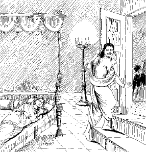
घर छोड़ करके अंग राजा गंगा-किनारे आये हैं। आदिनारायण परमात्माकी आराधना करते हुए राजा अंगका मंगलमय मरण हुआ है। भगवान्के धाममें गये हैं।
वेन राजा हुआ है। वेन राजाके राज्यमें प्रजा बहुत दु:खी हुई। ब्राह्मण वेन राजाको समझानेके लिये गये। वेन दुष्ट है, ब्राह्मण लोगोंको मारनेके लिये दौड़ता है—‘मैं सब जानता हूँ, मुझे कहनेकी क्या जरूरत है’—ब्राह्मणोंको मारनेके लिये दौड़ा है।
ब्राह्मणोंके पास मन्त्र-शक्ति थी, तब सभी ब्राह्मणोंके चरणोंमें वन्दन करते थे। मन्त्र-शक्तिका अब विनाश हो गया है। हजार यन्त्रमें जो शक्ति नहीं है, वह शक्ति एक मन्त्रमें है। यन्त्रसे मन्त्र श्रेष्ठ है। यन्त्र सुख देता है और कभी यन्त्र दु:ख भी देता है। मन्त्र मनको शुद्ध करता है, मन्त्र भगवान्के चरणमें ले जाता है।
वेन ब्राह्मणोंको मारनेके लिये दौड़ता है। एक ब्राह्मणने मारण-मन्त्रका प्रयोग किया है—वेनका मरण हो गया। राजाके बिना प्रजा दुखी होती है। शासन करनेके लिये राजाकी बहुत जरूरत है। राजा वेन धर्मको नहीं मानता था, वेन नीतिको मानता था—मेरे राज्यमें अन्याय न हो, मेरे राज्यमें चोरी न हो। वेनका मरण होनेपर चोरी बहुत होने लगी, अन्याय होने लगा।
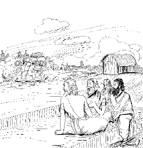
ब्राह्मणका जन्म समाजको सुख देनेके लिये है। ब्राह्मणोंको चिन्ता हुई—राजा तो होना ही चाहिये! वेनका तो मरण हो गया!
बहुत-से लोग धर्मको मानते नहीं हैं, वे नीतिको मानते हैं। कितने ही लोग धर्मको मानते हैं, नीतिको नहीं मानते हैं। जीवनमें धर्म और नीति—दोनोंकी जरूरत है। दो पहियेसे रथ चलता है। अर्थोपार्जनमें नीतिकी जरूरत है। कितने ही लोग अन्यायसे, पापसे पैसा कमाते हैं और धर्म करते हैं। पापका पैसा भगवान् जल्दी लेते नहीं हैं। अर्थोपार्जनमें नीतिकी जरूरत है और मनको शुद्ध करनेके लिये धर्मकी जरूरत है। नीति धर्मके बिना विधवा है और धर्म नीतिके बिना विधुर है। धर्ममें नीतिकी जरूरत है और नीतिमें धर्मकी जरूरत है। नीतिसे अर्थोपार्जन करो और धर्मको मानो। वेन धर्मको मानता नहीं था, नीतिको मानता था।
वेनका मरण होनेपर प्रजा बहुत दुखी हुई। ब्राह्मणोंने वेनराजाके शरीरसे पापको बाहर निकाला। इस शरीरमें तीन भाग हैं—पैरसे नाभितकका जो शरीर है, उसको अधमांग कहते हैं। नाभिसे गलेतकका जो शरीर है, उसको मध्यमांग कहते हैं। गलेसे ऊपरका जो शरीर है, उसको उत्तमांग कहते हैं। नाभिसे नीचेका जो भाग है, वह बहुत अशुद्ध है। अधमांगमें ही पाप होता है—पापका निवास अधमांगमें है। नाभिसे नीचेके कोई अंगमें हाथका स्पर्श हो तो हाथ धोना चाहिये—ऐसा लिखा है। धर्मकी गति अति सूक्ष्म है। नाभिसे नीचेका भाग बहुत अशुद्ध है। उसीको अधमांग कहते हैं। अधमांगमें ही पाप है।
मन्त्रोंमें ऐसी शक्ति है—ब्राह्मणोंने वेन-राजाके शरीरसे पापको बाहर निकाला है। भगवान् नारायणकी स्तुति करते हैं—‘इस वंशका विनाश न हो, इस वंशका आप रक्षण करो। आप ही अवतार धारण करो।’
ब्राह्मण भगवान्का मुख है। जो ब्राह्मण तीन बार सन्ध्या करता है, जिसने गायत्रीके तीन पुरश्चरण किये हैं (चौबीस लाख मन्त्र-जपका एक पुरश्चरण होता है)—ऐसा ब्राह्मण जो बोलता है, भगवान् उसको सत्य करते हैं। ब्राह्मण ही भगवान्का मुख है। ब्राह्मणोंकी ऐसी इच्छा थी कि इस वंशका रक्षण होना चाहिये। वंशका नाश न हो। ब्राह्मणोंने भगवान्से कहा है—‘आप ही कृपा करो।’ विष्णु-सूक्तका पाठ करते हैं। भगवान्के अंशावतार राजा पृथुका प्राकटॺ हुआ है—अर्चि रानीके साथ पृथु महाराज प्रकट हुए हैं। पृथु राजाको गद्दीपर बिठाया है।
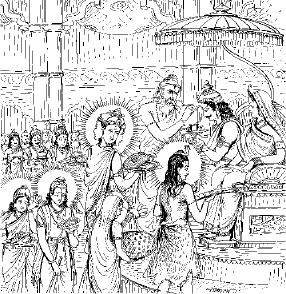
पृथु महाराज अर्चन-भक्तिके आचार्य हैं—दिनभर भगवान्की पूजा करते हैं।
जो प्रभुकी पूजा छोड़ता है, वही पाप करता है। आपका पाप छूट जाय—ऐसी इच्छा हो तो चौबीस घण्टे पूजा करो। सुननेके बाद आपको भय लगेगा कि चौबीसों घण्टे पूजा करना है—सब कुछ छोड़ना पड़ेगा।
भगवान्की पूजा केवल मन्दिरमें ही होती है—ऐसा नहीं है। कितने ही लोग मन्दिरमें तो भक्ति करते हैं, मन्दिरसे बाहर निकलनेपर पाप करते हैं। उनको ऐसा लगता है—भगवान् तो मन्दिरमें बैठे हैं, यहाँ कहाँ भगवान् हैं। मन्दिरमें भगवान्की भक्ति करनेवाला मानव मन्दिरसे बाहर निकलनेपर भगवान्का दर्शन नहीं करता, तब पाप करता है।
भगवान् सबके आधार हैं। सर्वाधार सर्वशक्तिमान् भगवान्की पूजा सर्वकाल करनी चाहिये। जो भगवान्की पूजा छोड़ता है, वह पाप करता है। कभी भगवान्की पूजा छोड़ना नहीं। किसी भी जीवको ईश्वरका स्वरूप समझ करके मान दो। दूसरेको वन्दन करनेमें आपका क्या कम होता है?
कितने लोग ऐसे होते हैं—मन्दिरमें जानेपर राह देखते हैं, प्रतीक्षा करते हैं—वह भाई मुझे हाथ जोड़े तो फिर मैं हाथ जोड़ूँ। मैं उससे थोड़ा ज्यादा सयाना हूँ। वह मुझे हाथ न जोड़े, तबतक मुझे हाथ जोड़नेकी क्या जरूरत है?
वन्दन जो माँगता है, वह वैष्णव नहीं है। वन्दन जो देता है, वही वैष्णव है। सभीको वन्दन करो, जीवको ईश्वरका स्वरूप समझो। किसी भी जीवको ईश्वरसे अलग मत करो। जीवको ईश्वरका स्वरूप समझ करके बोलो, जीवको ईश्वरका स्वरूप समझ करके सन्तोष दो। भगवान्की पूजा केवल मन्दिरमें ही होती है—ऐसा नहीं है।
बहुत-से लोग ऐसे हैं, उनको मन्दिरकी मूर्तिमें तो भगवान्का दर्शन होता है, किंतु मानव-शरीरमें भगवान्का दर्शन नहीं होता है। मानव मानवमें भगवान्का दर्शन करे तो मन बिगड़े नहीं। मन क्यों बिगड़ता है? मानवको मानवमें भगवान्का दर्शन नहीं होता। प्रत्येक मानवमें भगवान्का दर्शन करो।
ब्रह्मसूत्रोंमें व्यास महर्षिने जीवात्माका स्वरूप वर्णन करते हुए अनेक ऋषियोंके मत दिये हैं—आश्मरथ्य ऋषि, औडुलोमि ऋषि, बादरी ऋषि। अन्त:करणप्रतिबिम्बितचैतन्यं जीव:, अन्त:करणोपस्थितं चैतन्यं जीव:, अन्त:करणावच्छिन्नं चैतन्यं जीव:। ऋषियोंने जीवात्माके स्वरूपमें थोड़ा-थोड़ा भेद बताया है। ऋषियोंमें मतभेद तो दिखता है, किन्तु सभी ऋषि जीवको ईश्वरसे अलग नहीं मानते। जीव ईश्वरका ही स्वरूप है। जीव और ईश्वरमें जो भेद दिखता है, वह भेद वास्तविक नहीं है—औपाधिक भेद है। भेद दो प्रकारका होता है—वास्तविक भेद और औपाधिक भेद।
चावलके ऊपर छिलका है—तब उसको ‘धान’ कहते हैं। धानको थोड़ा मार पड़ती है—छिलका निकल जाता है, तब अन्दरसे चावल निकलता है। जीव और ईश्वरमें जो भेद दिखता है—वह वास्तविक भेद नहीं है, औपाधिक भेद है। चावल और धानके जैसा भेद है। चेतनके ऊपर मायाका आवरण हो तो वह जीव है। जिसके ऊपर मायाका आवरण नहीं है, वह ईश्वर है। मायाके आवरणसे जीव-भाव आता है। मायाका आवरण छूट जाय—निकल जाय तो वह परमात्मा ही है—
येन केन प्रकारेण यस्य कस्यापि देहिन:।
सन्तोषं जनयेद्राम तदेवेश्वरपूजनम्॥
किसी भी जीवको सन्तोष देना—यह भगवान्की ही पूजा है। किसी भी जीवका तिरस्कार करना, अनादर करना—ये भगवान्का ही अपमान है। जीवको ईश्वरसे अलग मत करो। अनेक बार ऐसा होता है—घरमें पुत्र भूल करता है, पुत्र नुकसान करता है, तब माँ-बाप हँसते हैं—मेरा पुत्र है, मेरा बालक है। नुकसान करे, भूल करे तो भी माता-पिताको दु:ख नहीं होता है। किंतु नौकर नुकसान करे, नौकर कोई बड़ी भूल करे—तो क्रोध आता है। कितने लोग तो नौकरको गाली देते हैं—‘तू मूर्ख है, तुम्हें अक्ल नहीं है’ रुआबमें लोग कैसा-कैसा बोलते हैं—मुझे वैसा बोलना आता नहीं है, कदाचित् आपको आता होगा।
पुत्र नुकसान करता है, भूल करता है—तब माँ-बाप हँसते हैं। नौकर नुकसान करता है, तब क्रोध आता है। अरे, नौकरमें भी नारायण हैं। शब्दसे किसीको मारना नहीं। शस्त्रकी मारको मानव भूल जाता है, शब्दकी मार भूलती नहीं है। नौकर याद रखेगा—मेरी भूल हुई थी, उस दिन मुझे गाली दी थी, मेरा बहुत तिरस्कार किया था।
कितनी माताएँ ऐसी होती हैं—कन्या भूल करती है तो उनको दु:ख नहीं होता है, वे हँसती हैं और बहू भूल करती है, तब क्रोध आता है। कन्यामें भगवान्का दर्शन होता है, बहूमें भगवान्का दर्शन नहीं होता। इसीलिये घरमें झगड़ा होता है। फिर वह बहू अपने पतिको समझाती है—‘हम दोनों मुम्बईमें जाकर रहेंगे। आपकी माँ बहुत खराब है।’
ज्ञानसे शान्ति मिलती है। घरके एक-एक जीवको ईश्वरका स्वरूप मानना चाहिये। किसीको भी ईश्वरसे अलग मत करो, सभीको ईश्वरका स्वरूप समझ करके व्यवहार करो—यही भगवान्की पूजा है।
किसीको प्यास लगी हो तो बहुत प्रेमसे उसको ठंडा जल दो। उस समय ऐसी भावना करो कि भगवान् कृपा करके इस रूपसे मेरे घरमें आये हैं—भगवान् पानी पीनेके लिये आये हैं। पानी पीनेवाला परमात्मा है—ऐसी भावना रख करके जल दो; यह भगवान्की पूजा है। भगवान्की पूजा केवल मन्दिरमें ही होती है—ऐसा नहीं है।
भगवान् सर्वव्यापक हैं, सबके आधार हैं। सर्वाधार सर्वव्यापक परमात्माकी पूजा सर्वकाल करनी चाहिये। सर्वकाल जो पूजा करता है, उसका पाप छूट जाता है। किसी भी जीवको ईश्वरका स्वरूप समझ करके सन्तोष देना भगवान्की पूजा है। किसी भी जीवका तिरस्कार करना—यह भगवान्का ही तिरस्कार है।
पृथु महाराज अर्चन-भक्तिके आचार्य हैं। सर्वकाल भगवान्की भक्ति करते हैं—पूजा करते हैं। पूजा वह कर सकता है, जिसका हृदय विशाल है। ‘पृथु’ शब्दका अर्थ होता है—विशाल। पूजा वह कर सकता है, जिसकी आँखमें प्रेम है। आँखमें प्रेमको रखो—सभीको प्रेमसे देखो, सभीको भगवद्भावसे देखो। जिसका हृदय विशाल है, जिसकी आँखमें प्रेम है—वही पूजा कर सकता है। भगवान् किसीका घर नहीं देखते हैं, भगवान् हृदयको देखते हैं—भगवान् आँखको देखते हैं। जिसका हृदय विशाल है, जिसकी आँखमें प्रेम है—उसीके घरमें भगवान् आते हैं।
पृथु महाराजके राज्यमें एक बार दुष्काल पड़ता है। वर्षा होती नहीं है, अन्न उत्पन्न होता नहीं है। पृथु महाराज पृथ्वीको सजा करनेके लिये तैयार हुए हैं। पृथ्वीने कहा है—‘आपके पिता वेनराजाके राज्यमें अधर्म बहुत बढ़ गया था, इसलिये अन्न-रसको मैं निगल गयी।’
जहाँ धर्म है, वहाँ धरती सब कुछ देती है। जहाँ धर्म नहीं है, वहाँ धरती माँ सब कुछ निगल जाती है। भारतभूमि स्वर्णभूमि है। भारतमें दुष्काल आते नहीं थे, महँगाई नहीं थी। सनातनधर्मकी प्राचीनकालमें ऐसी मर्यादा थी कि कोई पानी पीनेको माँगे तो लोग उसको भोजन करा करके फिर पानी देते थे—थोड़ा प्रसाद ले लो, फिर पानी पियो। खानेवाला भगवान् है। खिलानेवाला खानेवालेको रुपया देता है, वन्दन करता है—आपके बहुत उपकार हैं, आप मेरे घरमें पधारे।
अब तो खानेवालेको ही रुपया देना पड़ता है—अन्न-विक्रय बहुत होने लगा, इसलिये धरती माँ अन्न-रसको निगल गयी। दस-पन्द्रह दिन कोई आदमी घरमें रहे तो कितने लोग विचार करते हैं—जानेके समयमें बच्चेके हाथमें कुछ देगा, ऐसा लगता है! पन्द्रह दिनसे वह रहा है! मेरे घरमें उसने खाया है, वह मुझे कुछ दे, मेरा कोई काम करे, मेरे लिये अच्छा बोले—ऐसी इच्छा रखना अन्नका विक्रय है। अन्नका विक्रय होने लगा, तभीसे पृथ्वीमाता अन्न-रसको निगल गयी।
अन्न ब्रह्म है
अन्न-विक्रय मत करो। जो आता है, उसका आपके घरमें भाग है—वह लेनेके लिये आया है। आपका खानेके लिये कोई आया नहीं है। जो आया है, उसका आपके घरमें भाग है। प्रेमसे दो तो अच्छा है, नहीं तो एक दिन ब्याजके साथ देना पड़ेगा। कितनी माताएँ ऐसी होती हैं कि दो-चार जन आ जायँ तो प्रसन्न होती हैं—बहुत प्रेमसे परोसती हैं। कितनी माताएँ ऐसी होती हैं कि भोजनके समयमें दो-चार जन आ जायँ तो उनका हृदय जलने लगता है—मेरे घरका कितना खा जायँगे, ये!
कोई किसीका खाता नहीं है। जो आया है, उसका भाग आपके घरमें है। वह अपना भाग लेनेके लिये आया है, आपका खानेके लिये नहीं आया है।
सनातनधर्मकी यह मर्यादा है—अन्न ब्रह्म है, अन्नका विक्रय नहीं होना चाहिये। लोग भगवान्को भोग लगाते नहीं हैं—ऐसे ही खा लेते हैं। पृथ्वीमाताको बुरा लगता है—मेरे पतिदेवका अपमान कर रहे हैं। कितने ही लोग ऐसे होते हैं कि घरमें रसोई बने तो भगवान्को भोग लगाते हैं, किंतु घरमें कोई भोजन करनेवाला न हो, सभी लोगोंको कहीं जाना हो तो घरमें भगवान्के लिये रसोई नहीं बनाते। कटोरी भरके दूध भगवान्को अर्पण कर देते हैं—‘हे भगवन्! आज सब लोग मिठाई खानेके लिये जानेवाले हैं, घरमें भोजन करनेवाला कोई नहीं है, तबतक आप दूधके ऊपर रहो।’
भगवान् कहते हैं—कैसा दुष्ट है! यह मिठाई खानेके लिये जानेवाला है और मुझे कहता है—‘चौबीस घण्टे दूधके ऊपर रहो।’ भगवान् बहुत दिनतक सहन करते हैं। अगर कभी नाराज हों तो सजा भी करते हैं। बुखारको कहते हैं—‘जाओ उससे मिलनेके लिये, बहुत खाता है।’ ऐसा बुखार आ जायगा कि डॉक्टर आकर कहता है—‘पन्द्रह-बीस दिनतक उसको अन्न देना नहीं, दूध और मुसम्बीके ऊपर रखना पड़ेगा।’ भगवान् कहते हैं—‘तू मुझे एक दिन दूधके ऊपर रखेगा तो तुझे मैं पन्द्रह दिन दूधके ऊपर रखूँगा—तू कहाँ जायगा?’ भगवान् बहुत दिनतक सहन करते हैं। कभी नाराज हों तो सजा भी बहुत करते हैं।
रसोई तो भगवान्के लिये बनायी जाती है—घरमें कोई भोजन करनेवाला हो या न हो! भगवान् घरके मालिक हैं। घरमें कोई भोजन करनेवाला न हो, आपका कोई सम्बन्धी आ जाय तो रसोई बनानी ही पड़ती है। मानवके लिये आप करते हो, भगवान्के लिये आप क्यों नहीं करते? भगवान्के लिये थोड़ा भी कोई करे तो भगवान् बहुत मान लेते हैं। रसोई भगवान्के लिये करो।
अग्निमें आहुति दो। जिस घरमें रसोई होती है, उस घरमें अनेक जीव मरते हैं। जीव-हिंसाके बिना रसोई नहीं होती है। हिंसाका पाप अन्नमें आता है। वह पाप, खानेवालेके मस्तकमें जाता है। अग्निके आधारसे रसोई होती है। अग्नि बिना रसोई होती नहीं है। अग्नि बिना खाया हुआ पचता नहीं—पेटमें अग्नि है। भोजन यज्ञ है।
भोजनमें बातें मत करो। भोजनके समयमें मौन रखो। मौन रह करके भोजन करना चाहिये। भोजनके समयमें पूर्व दिशामें अथवा उत्तर-दिशामें मुख करके भोजन करो। भोजनमें मनको प्रसन्न रखो। अन्नदेवकी निन्दा मत करो। अन्नं न निन्द्यात्, अन्नं न परिचक्षीत—तद् व्रतम्। शास्त्रोंमें तो ऐसा लिखा है—आप रसोई बनाओ, उस समय दाल-शाकमें रामरस (नमक) छोड़ो—बराबर है। भगवान्को भोग लगाया, भोजन करनेके लिये बैठो और पता लगे कि रामरस तो कम है! फिर, ऊपरसे जो रामरस लेता है, उसको पाप लगता है। अलगसे कभी रामरस नहीं लेना चाहिये।
कदाचित्, आपको ऐसा लगता होगा कि महाराज बहुत ही कड़क-कड़क बोलते हैं। ऋषियोंने जो कहा, वही कहता हूँ—घरका कुछ कहता नहीं हूँ। ऋषियोंकी ऐसी आज्ञा है—रसोई बनाते समय दाल-शाकमें रामरस छोड़ना योग्य है। भगवान्को भोग लगाया, तब भगवान्ने कहा था कि रामरस कम है—मालिक बोलते नहीं हैं तो नौकरको बोलनेका क्या अधिकार है? भगवान् मालिक हैं, मानव नौकर है। जैसी रसोई बनाते हो, वैसा ही भगवान् भोग लगा लेते हैं।
भोजन यज्ञ है
अन्नदेवकी निन्दा मत करो। मुखमें जब कौर दो, तब भगवान्के नामका जप करो। पेटमें अग्नि है, अग्निमें आहुति देना है। भोजन यज्ञ है—
अहं वैश्वानरो भूत्वा प्राणिनां देहमाश्रित:।
प्राणापानसमायुक्त: पचाम्यन्नं चतुर्विधम्॥
गीताजीके इस श्लोकके ऊपर भगवान् श्रीशंकराचार्य स्वामीने बहुत सुन्दर भाष्य लिखा है। उसमें आज्ञा की है—भोजन यज्ञ है। भगवान्का नाम ले करके पेटमें जो अग्नि है—उसके ऊपर आहुति देना है। भोजन करो—भगवान्को भूलना नहीं! जो भोजनमें भगवान्को भूल जाता है, उसका मन भोजनके स्वादमें फँस जाता है। भोजनके स्वादमें मन फँस जाय तो मन बहुत बिगड़ता है। कितने लोग कढ़ी पीते हैं, तब उनको भगवान् जरा भी याद आते नहीं हैं—‘कढ़ी बहुत अच्छी बनी है, कढ़ी बहुत अच्छी है।’ दूसरे दिन माला करने बैठते हैं, तब यही याद आता है—कलकी कढ़ी बहुत अच्छी थी—‘ॐनमो भगवते वासुदेवाय’—भूल गये! जिसका मन स्वादमें फँसा है, उसको भक्ति-रस नहीं मिलता है। भोजनमें कभी भगवान्को भूलना नहीं। भोजन यज्ञ है, भोक्ता नारायण है। भगवान्के लिये पवित्रतासे रसोई करो। अग्निमें आहुति दो। अग्नि भगवान्का मुख है।
कथामें सुननेके बाद आपको लगता होगा कि महाराज! आप यह सब कहते हो, किन्तु मुझे कोई मन्त्र नहीं आता है—मैं कैसे यज्ञ करूँ?
आपको ‘हरे राम हरे कृष्ण’ मन्त्र आता है कि नहीं—भातमें थोड़ा-सा घी छोड़ो और—अग्नि भगवान्का मुख है, अग्निकी ज्वाला भगवान्की जीभ है—ऐसी भावना रखके अग्निदेवको आहुति दो। गृहस्थके घरमें रोज यज्ञ होना ही चाहिये। जिस घरमें रोज यज्ञ होता है, उस घरके किसी भी मानवको महारोग नहीं होता है। अग्निदेव आरोग्य देते हैं। चन्द्र, सूर्य और अग्नि—तीन प्रत्यक्ष देव हैं। अग्निके आधारसे रसोई होती है। अग्निके आधारसे खाया हुआ पचता है। अग्निमें आहुति दो। अग्नि भगवान्का मुख है।
महाराज पृथुका यज्ञ
पृथु महाराज यज्ञ करते हैं। पृथ्वीमें सब प्रकारके रस हैं, युक्तिसे दोहन किया है। यज्ञका वर्णन बहुत किया है। देव मन्त्राधीन होते हैं, मन्त्र ब्राह्मणके अधीन होते हैं। पृथु महाराजके यज्ञमें ऐसे तपस्वी ब्राह्मण थे कि वे जिस देवका मन्त्र बोलें, वह देव मन्त्रके पूरा होनेसे पहले यज्ञ-मण्डपमें आ जाते थे।
भागवतमें जो यज्ञोंका वर्णन किया है, वे सभी श्रौतयज्ञ हैं। भागवतमें लिखा है—पृथु महाराज अग्निहोत्री थे। रामायणमें वर्णन आता है—दशरथ महाराज अग्निहोत्री थे। बड़े तपस्वी थे दशरथ महाराज। परमात्माके पिता हुए हैं। चार कुण्ड घरमें रखते थे। अग्निहोत्री ब्राह्मणोंका दर्शन अब इधर नहीं होता है, क्वचित् दक्षिण भारतमें होता है। जो ब्राह्मण तीन वेद पढ़ा हो—उसीका श्रौतयज्ञमें वरण होता है। एक वेद पढ़ा हो, उसका वरण नहीं होता है। ऋग्वेद, यजुर्वेद और सामवेद—तीन वेदोंका जिसको ज्ञान है, उसीका वरण श्रौतयज्ञमें होता है।
यज्ञके दो भेद हैं—श्रौतयज्ञ और स्मार्त-यज्ञ! स्मार्तयज्ञमें जिस देवका यज्ञ करना हो, उस देवकी स्थापना करते हैं—अग्निमें होम करते हैं। विष्णुका यज्ञ करना हो तो लक्ष्मी-नारायणकी स्थापना करते हैं। पुरुषसूक्तसे, विष्णुसहस्रनामके मन्त्रोंसे अग्निमें पायसका होम करते हैं। श्रौतयज्ञमें किसी भी देवकी स्थापना नहीं होती है, केवल अग्नि-स्थापना ही होती है।
श्रौतयज्ञ अब केवल दक्षिण भारतमें ही होते हैं। श्रौतयज्ञके दर्शनमें बहुत आनन्द आता है। चावलका आटा बनाते हैं—यज्ञमण्डपमें ही बनाते हैं। उसका हलुवा बनाना पड़ता है—उसको पुरोडाश कहते हैं। जितने देवोंका होम करना है, उतने मिट्टीके बर्तन अलग-अलग रखते हैं। एक देवको आहुति देनेके बाद जो बाकी रहता है, वह अवशिष्ट उच्छिष्टके समान माना जाता है। इसलिये जितने देवोंके निमित्त होम करना है, उतने मिट्टीके बर्तन अलग-अलग रखते हैं। प्रत्येकमें पुरोडाश रखना पड़ता है। ऋग्वेदके मन्त्रोंसे देवताओंका आह्वान किया जाता है। अध्वर्यु आज्ञा करते हैं—अब विष्णुभगवान्को बुलाओ, विष्णवे ब्रूहि। ऋग्वेदके मन्त्रोंसे आह्वान होता है। आह्वानका मन्त्र बोलनेवाला ब्राह्मण बलवान् होना चाहिये, जितेन्द्रिय होना चाहिये। आह्वानका मन्त्र उदात्त स्वरमें ही बोलना पड़ता है। मन्त्र पूरा न हो, तबतक मध्यमें विराम करना नहीं। मन्त्र पूरा होनेसे प्रथम मध्यमें थोड़ा भी विराम करे तो ब्राह्मणको मार पड़ती है, यजमानको मार पड़ती है—अध्वर्युं च यजमानं च हन्यात्।
वेदका अधिकार सभीको दिया नहीं है। सभीके घरमें वेद-मन्त्र बोलना नहीं चाहिये। ब्राह्मण सभीके यहाँ वेद-मन्त्र बोलने लगे, तभीसे ब्रह्मतेजका नाश हो गया। सभीको वेदका अधिकार नहीं दिया है। ऋग्वेदके मन्त्रोंसे ब्राह्मण जब देवोंका आह्वान करते हैं, तब ऐसा आभास होता है, जैसे आकाश-मार्गसे देव यज्ञमण्डपमें आ रहे हैं। देवोंके आनेके बाद ‘उद्गाता’ नामका ब्राह्मण सामवेदके मन्त्रोंसे उनकी स्तुति करता है। सामवेद गान-प्रधान है। देवोंको मधुर गायन प्रिय है।
आग्नीध्र नामका एक ब्राह्मण होता है। वह यज्ञ-मण्डपके द्वारमें हाथमें तलवार लेकर खड़ा रहता है—रक्षोघ्न मन्त्रोंका जप करता है। अध्वर्यु उससे पूछते हैं—‘सावधान तो तू है न—बाहर कोई राक्षस तो आया नहीं है, न—हम अग्निमें होम करें कि नहीं?’ अध्वर्यु उसकी आज्ञा मानते हैं—‘आश्रावय:’ । वह आग्नीध्र ब्राह्मण वहाँसे उत्तर देता है—‘अस्तु श्रौषट्’ । हाथमें तलवार ले करके खड़ा रहता है—‘मैं सावधान हूँ, बराबर मन्त्रोंका जप कर रहा हूँ। इस समय कोई राक्षस आया नहीं है। आप शान्तिसे यजुर्वेदके मन्त्र बोल करके अग्निमें होम करो। यजुर्भि: यजन्ति, सामभि: स्तुवन्ति—ऋग्वेदके मन्त्रोंसे आह्वान, सामवेदके मन्त्रोंसे स्तुति और यजुर्वेदके मन्त्रोंसे अग्निमें होम किया जाता है। ऋग्वेद, यजुर्वेद और सामवेद—तीन वेद जब एक होते हैं, तब एक देवको आहुति दी जाती है। ये सब यज्ञ कलियुगमें करना बड़ा ही कठिन है।
घरमें यज्ञ करो—आपके घरमें किसीको महारोग होगा नहीं। अग्निमें आहुति देनी चाहिये। ‘हरे राम, हरे कृष्ण’ मन्त्र बोल करके भी अग्निमें आहुति दी जा सकती है। जिस घरमें रसोई होती है, उस घरमें अनेक जीव मरते हैं। अग्निमें आहुति देनेसे हिंसाका पाप दूर होता है—पञ्चसूनादोषपरिहारार्थं, आत्मसंस्कारार्थं, अन्नसंस्काराय...। घरमें पवित्रतासे रसोई करो, भगवान्को भोग लगाओ, अग्निमें आहुति दो—फिर वह अन्न अमृत हो जायगा। अन्नको अमृत बनाओ, फिर भोजन करो। भागवतमें विश्वास रख करके छ: महीना करके तो देखो। छ: महीना पवित्र अन्न पेटमें जाय तो बुद्धि सुधरने लगती है। बाजारका खाना छोड़ दो, बाजारका अन्न बड़ा अशुद्ध होता है। बाजारकी वस्तुपर अनेककी दृष्टि पड़ती है—दृष्टिदोष आता है, भावदोष आता है। बाजारका नहीं खाना चाहिये।
कथा सुनते हो। आजतक जो हुआ सो हुआ, आजसे सावधान हो जाओ। कथामें सुननेके बाद भी जो पाप करता है, उसको बहुत सजा होती है।
सूतजी सावधान करते हैं। पृथु महाराजके यज्ञका वर्णन बहुत किया है। भगवान् आते हैं। पृथु महाराजको सनत्कुमारजीका सत्संग हुआ है। सनत्कुमारजीने उपदेश दिया है। पृथु महाराजने विजिताश्वको गद्दीपर बिठाया और पृथु महाराज तपश्चर्या करनेके लिये गये हैं। अर्चि रानीके साथ आदिनारायण परमात्माका आराधन करते हुए पृथु महाराज कृतार्थ हुए हैं। पृथु महाराजका पुत्र विजिताश्व गादी (गद्दी)-में आया है।
विजिताश्वोऽधिराजासीत्पृथुपुत्र: पृथुश्रवा:।
यवीयोभ्योऽददात्काष्ठा भ्रातृभ्यो भ्रातृवत्सल:॥
(श्रीमद्भा० ४।२४। १)
प्रचेताओंकी कथा
विजिताश्वके वंशमें हर्यक्ष नामका राजा हुआ। हर्यक्ष राजाके वंशमें प्राचीनबर्हि राजा हुए। प्राचीनबर्हि राजाका लग्न शतद्रुति रानीके साथ हुआ था। उनके यहाँ जो दस बालक हुए हैं—उनका नाम प्रचेता हुआ। दस प्रचेताओंको प्राचीनबर्हि राजाने आज्ञा दी—‘तपश्चर्या करो।’
तप करनेसे शक्ति बढ़ती है। जो बलवान् है, वह सब कुछ कर सकता है। तपश्चर्यामें आँखका संयम, जीभका संयम, मनका संयम रखना जरूरी है। शक्तिका संग्रह करो—आप बहुत सुखी हो जाओगे। साधारण मानव अज्ञानवश शक्तिके विनाशमें सुखकी कल्पना करता है। शक्तिका विनाश ही महान् दु:ख है, शक्तिका संग्रह ही महान् सुख है। आपकी आँखमें बहुत शक्ति है, आँखकी शक्तिका विनाश मत करो। इन्द्रिय-शक्तिका विनाश ही पाप है। तपश्चर्यामें एक-एक इन्द्रियका संयम रखना पड़ता है। बलवान् बनो। जो बलवान् है, वह सब कुछ कर सकता है। जिसने शक्तिका विनाश किया है—जो दुर्बल है, वह तो ऐसी इच्छा रखता है कि लोग मेरी भक्ति करें। जिसने शक्तिका बहुत विनाश किया है, जो अति दुर्बल है—वह पृथ्वीको भी भार-जैसा लगता है।
प्राचीनबर्हि राजाने अपने दस पुत्रोंको आज्ञा दी—‘शक्तिका संग्रह करो, बलवान् बनो, तपस्वी बनो।’ दस प्रचेता कच्छ प्रान्तमें नारायण-सरोवरके तटपर आये हैं।
शुद्ध भावसे जो भगवान्के लिये घर छोड़ता है, उसको शंकरभगवान् दर्शन देते हैं। शिव जगद्गुरु हैं। नारायण-सरोवरकी यात्रा जिन वैष्णवोंने की है, उनको खबर है—नारायण-सरोवरमें कोटेश्वर महादेव हैं। प्रचेताओंके लिये भगवान् शंकर वहाँ प्रकट हुए हैं। नारायण-सरोवरके किनारे प्रचेता बैठे विचार करते हैं—क्या करें—तभी, घन... घन... घन... घण्टानाद कानमें आया। मधुर-मंगलगीत सुननेमें आया है। कैसी मधुर ध्वनि है! कौन गाता है—प्रचेता सुन रहे हैं। उसी समय नारायण-सरोवरसे भगवान् शंकर बाहर आये हैं। प्रचेताओंको दर्शन दिया है। प्रचेताओंको शिवजीने आज्ञा दी है, रुद्रगीतका उपदेश किया है और कहा है—‘रुद्रगीतका जप करो।’
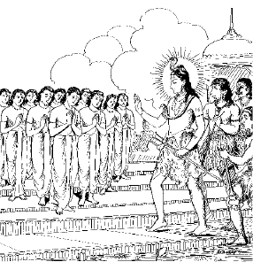
जप करनेसे वासनाका विनाश होता है। दान देना कठिन नहीं है। जिसके पास पैसा है, वह दान देता है—यज्ञ करता है, अच्छा है। किंतु, शान्तिसे बैठ करके जप करना बड़ा कठिन है। कथामें तीन घण्टे बैठते हो, कथा सुनते हो। कथा पूरी होनेके बाद अपने घरमें तीन घण्टा बैठ करके शान्तिसे जप करोगे—जप नहीं होता है। लोग पुस्तक पढ़ करके बातें करते हैं, शान्तिसे जप नहीं कर सकते। जप करना बड़ा कठिन है। जपके बिना जीवन नहीं सुधरता है। जपके बिना पापकी आदत नहीं छूटती है। जपके बिना वासनाका विनाश नहीं होता है।
शंकरभगवान्की आज्ञा हुई है—‘रुद्रगीतका जप करो।’ प्रचेताओंने पूछा—‘कबतक जप करें?’ शंकरभगवान्ने कहा—‘कबतक—ऐसा मत पूछो। भगवान् नारायण प्रकट हों—तबतक जप छोड़ना नहीं। जपकी कभी समाप्ति करना नहीं।’
एक भाईने पूछा था—‘महाराज! मैंने तीन करोड़ जप किया है, अब मेरा विचार पूर्णाहुति करनेका है। पूर्णाहुतिमें क्या करना चाहिये?’
कोई ऐसा पूछनेके लिये नहीं आता है कि बहुत वर्षोंसे मैं दाल-भात खाता हूँ, अब मुझे दाल-भातकी पूर्णाहुति करना है। भोजनकी कभी समाप्ति नहीं होती है। अन्तिम दिनमें भी कुछ खाना पड़ता है। अरे! भोजनकी समाप्ति नहीं तो भजनकी समाप्ति—जपकी समाप्ति कैसे होगी? जपकी समाप्ति कभी करना ही नहीं। भागवतमें ऐसा वर्णन है कि भगवान् शंकरकी आज्ञासे प्रचेताओंने दस हजार वर्षतक धैर्य रख करके नारायण-सरोवर में रुद्रगीतका जप किया है—
प्रचेतसोऽन्तरुदधौ पितुरादेशकारिण:।
जपयज्ञेन तपसा पुरञ्जनमतोषयन्॥
(श्रीमद्भा० ४।३०।३)
प्रचेताओंके पिता प्राचीनबर्हि राजाको नारदजीने अध्यात्म-विद्याका उपदेश किया है—‘तुमने अनेक यज्ञ किये, यज्ञ करनेसे तुम्हें शान्ति मिली नहीं है। तू परमात्माको जानता नहीं है, तू आत्मस्वरूपको जानता नहीं है। यह जीव ‘पुरंजन’ है, ईश्वर ‘अविज्ञात’ है। भगवान् प्रत्येक काममें जीवको साथ देते हैं। वर्षा भगवान् देते हैं, अन्न भगवान् देते हैं। भगवान् अपने स्वरूपको छिपाते हैं। खाया हुआ भगवान् पचाते हैं। खानेके बाद जीव सो जाता है, भगवान् जागते हैं—जीवका रक्षण करते हैं। भगवान् सोते नहीं हैं। सर्वकाल ईश्वर जीवके साथमें रहता है। जीवके मित्र ईश्वर हैं।
कोई भी जीव आपका मित्र नहीं हो सकता। जीव आपको छोड़ करके जानेकी इच्छा रखता है। भगवान् किसी भी जीवको कभी छोड़ते नहीं हैं। भगवान् सर्वकाल जीवके साथमें ही रहते हैं। इसलिये, ईश्वर ही जीवका मित्र है। आप जिसको मित्र मानते हो, वह आपको छोड़ करके जाता है, आपके साथ रहनेको तैयार नहीं है।
माँका अपने पुत्रमें प्रेम तो बहुत होता है, किंतु पुत्र थोड़ा बड़ा हो जाय तो माँ ऐसी इच्छा रखती है कि घण्टा-दो घण्टा मुझसे दूर जाय! सर्वकाल पुत्र माँके साथ रहे—वह माँको अच्छा लगता नहीं है। माँका पुत्रमें प्रेम तो है, किंतु प्रेम होनेपर भी माँ पुत्रको छोड़ करके चली जाती है—माँ पुत्रसे अलग रहनेकी इच्छा रखती है।
पति-पत्नीमें प्रेम होता है। प्रेम होनेपर भी पति-पत्नी चौबीस घण्टे साथमें नहीं रह सकते। चौबीस घण्टे साथमें रहें तो अच्छा लगता भी नहीं। कितनी माताएँ पतिसे कहती हैं—‘बाहर जाओ।’ पति दिनभर घरमें बैठा रहे—यह उनको अच्छा नहीं लगता है। चौबीस घण्टे जीवके साथ ईश्वर ही रहते हैं, कोई जीव जीवके साथ नहीं रह सकता है। परमात्मा ही जीवके मित्र हैं।
आसीत्पुरञ्जनो नाम राजा राजन् बृहच्छ्रवा:।
तस्याविज्ञातनामासीत्सखाविज्ञातचेष्टित:॥
(श्रीमद्भा० ४।२५।१०)
जीव दूसरे जन्मकी तैयारी इसी जन्ममें करता है। वासनासे ही जन्म होता है। स्त्रीमें वासना रह जाय तो पुरुष मरनेके बाद दूसरे जन्ममें स्त्री होता है। यह शरीर बदलता है—स्त्री पुरुष हो जाती है।
प्राचीनबर्हि राजाको नारदजीने पुरंजनकी सुन्दर कथा सुनायी है—‘अनेक बार तू राजा हुआ है, अनेक बार तू रानी हुआ है। संसार-सुखमें तुझे घृणा नहीं आती है—संसारका सुख तो पशु-पक्षी भी भोगते हैं। तू परमात्माका अंश है।’ नारदजीने स्वरूपका भान कराया है। प्राचीनबर्हि राजा आदिनारायण परमात्माका आराधन करते हुए कृतार्थ हुए हैं।
उधर, प्रचेताओंको भगवान्का दर्शन हुआ है। प्रचेतागण भगवान्की स्तुति करते हैं—
नमो नम: क्लेशविनाशनाय
निरूपितोदारगुणाह्वयाय।
मनोवचोवेगपुरोजवाय
सर्वाक्षमार्गैरगताध्वने नम:॥
(श्रीमद्भा० ४।३०।२२)
प्रचेताओंको भगवान्ने आज्ञा दी—‘अब घरमें जाकरके लग्न करो।’ प्रचेताओंने कहा—‘अब लग्न करनेकी इच्छा नहीं है, संन्यास लेनेकी इच्छा है।’
भगवान् समझाते हैं—‘लग्न किये बिना संन्यास ग्रहण करोगे तो कदाचित् मनमें वासना जाग्रत् होगी, तब बहुत पतन होगा। लग्न करना पुण्य है, सावधान हो करके लग्न करो। एक-दो बालक होनेके बाद संन्यास लो।’
प्रचेताओंने कहा है—‘गृहस्थका जीवन ही ऐसा है, गृहस्थ गाफिल हो जाता है। सावधान रहना बड़ा कठिन है। गृहस्थाश्रममें ममता होती है। ममता ज्ञानको ढँकती है—ज्ञान ढँक जाता है।’
कितने लोग गीताजीका रोज पाठ करते हैं—समत्वं योग उच्यते, समबुद्धिर्विशिष्यते। अरे, जगत्में तो समभाव रखना बड़ा कठिन है, अपने घरमें भी सम्भव नहीं है। कई लोग अपने बच्चेको बड़ा पेड़ा देते हैं और भतीजा आये तो उसको छोटा पेड़ा दे देते हैं—ये भतीजा है, ये मेरा बेटा है। जहाँ ममता है, वहाँ समता रहती नहीं है—पाप होता है। गृहस्थका जीवन ही ऐसा है। भगवान्ने कहा—‘आप जो कहते हो, वह बराबर है। किंतु लग्न करनेके बाद चौबीस घण्टेमें जो चार घण्टे, पाँच घण्टेका समय मेरे लिये रखता है, उसको मैं पाप करनेसे रोकता हूँ।’
प्रचेताओंके निमित्तसे सभी गृहस्थोंको भगवान्ने यह उपदेश दिया है—मद्वार्तायातयामानां न बन्धाय गृहा मता:। चौबीस घण्टेमें ज्यादा नहीं तो, चार-पाँच घण्टेका समय भगवान्के लिये रखो। भगवान् आपकी सम्पत्ति नहीं माँगते हैं, आपसे समय माँगते हैं—मेरे लिये कितना समय रखा है—प्रात:कालमें घण्टा-दो घण्टा भक्ति करो, मध्याह्नकालमें भक्ति करो, रात्रिमें एक घण्टा भक्ति करनेकी जरूरत है। चौबीस घण्टेमें ज्यादा नहीं तो चार-पाँच घण्टे जो भक्ति करेगा; भगवान् कहते हैं—उसको पाप करनेसे मैं रोकूँगा।
भगवान् जिसको पाप करनेसे रोकते हैं, उसीका पाप छूटता है। जीव पुण्य कर सकता है—पाप नहीं छोड़ सकता। पुण्य करना कठिन नहीं है—पाप छोड़ना कठिन है। पाप तो भगवान् छुड़ायें, तभी छूटता है। पाप करनेकी इच्छा नहीं होती है तो भी पाप हो जाता है। भगवान् कहते हैं—‘चार-पाँच घण्टे जो मेरी भक्ति करेगा, उसको पाप करनेसे मैं रोकूँगा।’ सभी गृहस्थोंको भगवान्ने यह उपदेश दिया है।
प्रचेता भगवान्की आज्ञा मान करके घरमें गये हैं। मारिषा नामकी कन्यासे लग्न किया है। उनके यहाँ जो पुत्र हुआ, उसका नाम था—दक्षप्रजापति। दक्षप्रजापतिको सब देकर प्रचेता फिरसे नारायण-सरोवरपर आये हैं। वहाँ उन्हें नारदजीका सत्संग हुआ है।
नारदजीने कहा है—जगत्को प्रसन्न करना अशक्य है। जो परमात्माको प्रसन्न करता है, वही जगत्को प्रसन्न कर सकता है। पेड़के मूलमें जल देनेसे पेड़ प्रसन्न हो जाता है। पेड़के एक-एक पत्तेके ऊपर पानी देनेकी जरूरत नहीं है। पेड़के मूलमें जल दो। संसार-वृक्षके मूल परमात्मा हैं। परमात्माको जो प्रसन्न करता है, वह जगत्को प्रसन्न करता है—
यथा तरोर्मूलनिषेचनेन
तृप्यन्ति तत्स्कन्धभुजोपशाखा:।
प्राणोपहाराच्च यथेन्द्रियाणां
तथैव सर्वार्हणमच्युतेज्या॥
(श्रीमद्भा० ४।३१।१४)
प्रचेता आदिनारायण भगवान्का आराधन करते हुए कृतार्थ हुए हैं।
मैत्रेयऋषिने कहा—‘विदुरजी! आपने पूछा था कि प्रचेता कौन हैं, सो कथा समयानुसार मैंने सुनायी। अब आपको क्या सुनना है?’
विदुरजीने कहा—‘आपने बहुत सुन्दर बोध दिया है। जो सुना है, उसका मैं मनन करूँगा। अब कथा सुनना नहीं है, आपने जो बोध दिया है, उसका मनन करना है।’
श्रवण मननसे सफल होता है। घरमें जानेके बाद कथाके एक-एक सिद्धान्तको याद करो—मैंने क्या सुना—कथाका एक-एक सिद्धान्त याद करो। कथा यहाँसे घरमें ले जाओ। लोग कथासे उठते हैं, तब जो कुछ सुना है—सब भागवतको अर्पण करके, जैसे थे—वैसे ही घरमें चले जाते हैं। कथा यहाँसे ले जाओ। कथामें लेनेके लिये जाना है, कथामें देनेके लिये जाना नहीं है। मुझे क्या मिला? आज मेरे लिये कथामें क्या आया था?
विदुरजीने कहा—‘अब कथा सुननेकी इच्छा नहीं है। आपने जो बोध दिया है, उसका मैं स्मरण करूँगा—मनन करूँगा।’ श्रवण मननसे ही सफल होता है।
चतुर्थ स्कन्धकी समाप्ति करते हैं। अब पंचम स्कन्धका आरम्भ करते हैं।
॥ श्रीहरि:॥
पंचम स्कन्ध
जड़भरत-चरित्र
भागवतके पंचम स्कन्धमें परमहंसोंकी कथा आती है। परमहंसोंके दो भेद हैं—ज्ञानी परमहंस और भागवत परमहंस। दूधमें पानीको मिला दो और हंसके आगे रखो तो हंसमें ऐसी शक्ति होती है कि वह पानीको छोड़ देता है और दूध पी जाता है। यह संसार क्या है? जगत्में दूध और पानी मिला हुआ है। जड़ और चेतन—दोनों एक हो गये हैं—यही संसार है। शरीर जड़ है, आत्मा चेतन है। जड़ और चेतन—दो भिन्न तत्त्व हैं। भिन्न होनेपर भी एकरूप हो गये हैं।
नारियलके अन्दर नरेली होती है, नरेलीके अन्दर कोपरा होता है। कोपरामें रस है, नरेलीमें रस नहीं है। कोपरा और नरेली—दो भिन्न तत्त्व हैं। जबतक नारियलमें पानी है, तबतक नरेली कोपरेको छोड़ती ही नहीं।
थोड़ा-सा विचार करो तो ध्यानमें आयेगा—यह शरीर नरेलीके जैसा है। शरीरके अन्दर जो शुद्ध चेतन आत्मा है, वह कोपरेके जैसा है। रस कोपरेमें है, नरेलीमें रस नहीं है। कोपरा-पाक तब होता है, जब नरेलीसे कोपरा अलग हो जाता है। नारियलमें पानी है, तबतक नरेली कोपरेको नहीं छोड़ती है। बहुत गर्मी होती है, नारियलका पानी सूख जाता है—तब नरेली और कोपरा अलग हो जाते हैं। शरीर नरेलीके जैसा है, आत्मा कोपरेके जैसा रसमय है। जड़-चेतन दो भिन्न तत्त्व हैं। भिन्न होनेपर भी एकरूप हो गये हैं। जड़ शरीरसे चेतन आत्माको अलग करना है। नारियलमें जबतक पानी है, तबतक नरेली कोपरेको छोड़ती नहीं है।
संसारका कोई भी सुख मानवको जबतक मीठा लगता है, तबतक शरीरसे भिन्न आत्माका दर्शन नहीं होता है। सब जानते हैं—शरीरसे आत्मा भिन्न है। फिर भी देह-भावमें जीव फँसा हुआ है। देह-भावका नाश करना है, आत्म-भावको जाग्रत् करना है—मैं पुरुष नहीं हूँ, मैं स्त्री नहीं हूँ, मैं शरीर नहीं हूँ। शरीरका सुख मेरा सुख नहीं है। मैं भगवान्का अंश हूँ, मुझे प्रभुके चरणोंमें जाना है।
आपको जब थोड़ी-सी फुरसत मिले, तब ऐसा चिन्तन करो—मैं शरीर नहीं हूँ, शरीरका सुख मेरा सुख नहीं है। मैं पुरुष नहीं हूँ, मैं स्त्री नहीं हूँ—मैं भगवान्का अंश हूँ। घरमें जा करके ऐसा बोलना नहीं कि मैं पुरुष नहीं हूँ, मैं स्त्री नहीं हूँ। ऐसा बोलोगे तो घरमें झगड़ा हो जायगा। बोलना नहीं, मनसे समझना है। देह-भावको भूलना है।
परमहंस शरीरको आत्मासे अलग कर देते हैं। शरीर जड़ है, आत्मा चेतन है—इन दोनोंकी गाँठ पड़ गयी है। जड़ शरीरसे जो चेतन आत्माको अलग करता है, उसीको परमहंस कहते हैं। परमहंसोंके दो भेद होते हैं—ज्ञानी परमहंस और भागवत परमहंस। ज्ञानी परमहंस ऐसा मानते हैं कि आँखको जो दिखता है, वह क्षण-क्षणमें बदलता है। जगत् सत्य नहीं है—आँखको देखनेकी शक्ति जिसने दी है, वह परमात्मा सत्य है। आँखको जो दिखता है, उसका ध्यान छोड़ दो। आँखको देखनेकी शक्ति जिसने दी है, उस परमात्माका ध्यान करो। जगत् तो क्षण-क्षणमें बदलता है। जगत् मिथ्या है, परमात्मा सत्य है।
जगत् मिथ्या है—यह बोलना सरल है। किंतु, जगत् मिथ्या है—यह समझना कठिन है। श्रीशंकराचार्य महाराजके बादमें जो आचार्य हुए हैं—श्रीरामानुजाचार्य महाराज, श्रीमध्वाचार्य महाराज आदि वैष्णवाचार्योंने जगत्को सत्य माना है। साधारण मानव जगत्को मिथ्या नहीं समझ सकता है—जगत् सत्य लगता है। अत: वैष्णवाचार्योंने कहा है—जगत् सत्य है, किन्तु यह जगत् भगवान्का है, तेरा कुछ भी नहीं है।
किसी भी निमित्तसे जगत्का मोह छोड़ करके परमात्माके साथ प्रेम करना है—यही लक्ष्य है। शब्दोंमें थोड़ा-थोड़ा झगड़ा है—सभी आचार्य तत्त्वमें एक ही हैं। विदुषां किं न शोभनं—महापुरुष जो वर्णन करते हैं, बराबर है। जगत् मिथ्या है—यह साधारण मानव नहीं समझ सकता है। वैष्णवाचार्योंने कहा है—जगत् सत्य है। किन्तु याद रखना, जगत्में जो कुछ है—सभीके मालिक भगवान् हैं। तनका मालिक भी मानव नहीं है। जगत्का मोह छोड़नेके लिये परमात्माके साथ प्रेम करो। ज्ञानी पुरुष कहते हैं—जगत् मिथ्या है। वैष्णव-आचार्य कहते हैं—जगत् भगवान्का है, तेरा कुछ भी नहीं। तू भगवान्का हो जा।
ज्ञानी पुरुषोंका आदर्श ऋषभदेवजीने जगत्को समझाया है। उनकी आत्मनिष्ठा स्थिर हो गयी थी। लकड़ीमें अग्नि है; लकड़ी जल जाती है—अग्नि कभी नहीं जलती। शरीर लकड़ीके समान है। शरीर भले ही जल जाय, किन्तु शरीरमें जो शुद्ध चेतन आत्मा है—वह अग्निके समान तेजोमय है। आत्मज्ञान होना कठिन नहीं है, आत्मनिष्ठ होना बड़ा कठिन है। वैष्णव भगवन्निष्ठ होते हैं, ज्ञानी पुरुष आत्मनिष्ठ होते हैं। ऋषभदेवजीकी ऐसी आत्मनिष्ठा थी—शरीर अग्निमें जल रहा है, मैं नहीं जल रहा—मैं शरीर नहीं हूँ। अग्नि लकड़ीको जला सकती है, लकड़ीमें जो अग्नि है, उसको वह नहीं जला सकती। मैं शुद्ध चेतन आत्मा हूँ—उनकी आत्मनिष्ठा ऐसी दृढ़ थी।
ऋषभदेवजीकी कथा हमारे लिये बहुत उपयोगी नहीं है। इसलिये शुकदेवजी महाराजने इसका संक्षेप किया है। भरतजीकी कथा हमारे लिये बहुत उपयोगी है, इसलिये भरतजीका वर्णन विस्तारपूर्वक किया है—भरतस्तु महाभागवतो यदा भगवतावनितलपरिपालनाय सञ्चिन्तितस्तदनुशासनपर: पञ्चजनीं विश्वरूपदुहितरमुपयेमे॥ तस्यामु ह वा आत्मजान् कात्स्न्र्येनानुरूपानात्मन: पञ्च जनयामास भूतादिरिव भूतसूक्ष्माणि॥ सुमतिं राष्ट्रभृतं सुदर्शनमावरणं धूम्रकेतुमिति। अजनाभं नामैतद्वर्षं भारतमिति यत आरभ्य व्यपदिशन्ति॥
भरतजी राजा हुए, तभीसे इस भूखण्डका नाम ‘भरत-खण्ड’ हुआ है। प्राचीनकालमें इसका नाम ‘अजनाभ-खण्ड’ था। भरतजी महाराज बड़े ज्ञानी थे, बड़े योगी थे। वासनाका विनाश न हो तो ज्ञान और योगमें पतन हो जाता है। वासनाका विनाश भक्तिसे ही होता है। जो श्रीराम-श्रीकृष्णके साथ अतिशय प्रेम करता है, वही भगवत्कृपासे वासनाका विनाश कर सकता है।
संसारमें जितने आकार दिखते हैं, वे सभी आकार मायासे बने हुए हैं। संसारके किसी भी आकारके साथ जो प्रेम करता है, उसके मनमें विकार आता है। संसारके सभी आकार मायासे बने हुए हैं। श्रीराम-श्रीकृष्णका जो स्वरूप है, वह मायासे बना हुआ नहीं है—‘निज इच्छा निरमित तनु माया गुन गोपार।’
भगवान्की जो भक्ति करता है—परमात्माके साथ जो अतिशय प्रेम करता है, वही वासनाका विनाश कर सकता है। भगवत्कृपाके बिना, भक्तिके बिना सूक्ष्म वासनाका विनाश नहीं होता है।
भरतजी महाराज बड़े ज्ञानी हैं—योगी हैं। सूक्ष्म वासना मनमें रह गयी। घरमें अपने बच्चोंके साथ खेलते थे—जंगलमें जानेके बाद वे हिरनके साथ खेलने लगे। वासनाका विषय बदला। सूक्ष्म वासना ज्ञानीका, योगीका पतन करती है।
आरतीमें कपूरका उपयोग किया जाता है। कपूर जल जाता है, लेकिन जिस डिबियामें कपूर रखा जाता है, उसमें कपूरकी वास रह जाती है। वासना वासके समान अति सूक्ष्म होती है। आपको ऐसा लगेगा कि मेरे मनमें वासना नहीं है—भूल है! मानवका मन वासनासे भरा हुआ है। सूक्ष्म वासना स्थूल बन जाती है।
भरतजीको ऐसा लगा कि मेरे मनमें कोई वासना नहीं है—घर छोड़ करके जंगलमें गये। जिसके मनमें वासना है, वह जंगलमें भी संसार करता है। जिसके मनमें संसार है, वह मन्दिरमें भी संसार करता है। संसार छोड़ करके कहाँ जाओगे—संसारको अपने मनसे निकाल दो। बाहरका संसार किसीको दु:ख नहीं देता, जो संसार मनमें है—वह दु:ख देता है। भरतजीके मनमें सूक्ष्म वासना थी। घरमें अपने बच्चोंके साथ खेलते थे, वनमें जानेके बाद हिरनके साथ खेलने लगे।
धीरे-धीरे संयमको बढ़ाओ। घर छोड़ करके जंगलमें जानेसे एकदम भगवान्का दर्शन नहीं होता। जहाँ जाओ, वहाँ माया पीछे-पीछे जाती है। घरमें ही धीरे-धीरे संयमको बढ़ाओ। वासनाका विनाश करो।
भयं प्रमत्तस्य वनेष्वपि स्याद्
यत: स आस्ते सहषट्सपत्न:।
जितेन्द्रियस्यात्मरतेर्बुधस्य
गृहाश्रम: किं नु करोत्यवद्यम्॥
(श्रीमद्भा० ५।१।१७)
जो गाफिल है, उसको वनमें भी माया मारती है। जो सावधान हो करके घरमें भक्ति करता है, उसको घरमें भी भगवान्का दर्शन होता है। भगवान्का दर्शन करनेके लिये घर छोड़ना ही चाहिये—ऐसा नहीं है।
बहुत-से लोग ऐसा समझते हैं कि घरमें सभी अनुकूलता हो तो मैं भक्ति करूँ। भगवान् मेरे इच्छानुसार मुझे अनुकूलता कर दें। सभी प्रकारकी अनुकूलता किसीको मिलती नहीं, प्रतिकूलता तो रहती ही है। जीव जगत्में आता है तो पाप और पुण्य दोनों ले करके आता है। पापका फल है—प्रतिकूलता और पुण्यका फल है—अनुकूलता! प्रतिकूलता रहेगी ही; सहन करो।
एक भाईने कथामें ऐसा सुना था कि पूर्णिमाके दिन समुद्रमें स्नान करनेसे सर्वतीर्थोंमें स्नान करनेका पुण्य मिलता है। गंगाजी, यमुनाजी, नर्मदाजी समुद्रमें हैं। सभी तीर्थ समुद्रमें जाकर मिलते हैं। वह भाई समुद्रके किनारे जा करके बैठा, किंतु स्नान नहीं करता है। किसीने उससे पूछा—‘क्यों बैठे हो—स्नान करो।’ उसने कहा—‘स्नान करनेके लिये तो आया हूँ, किन्तु इस समुद्रमें तरंगें बहुत आती हैं। मैं प्रतीक्षा कर रहा हूँ कि एक बार समुद्र शान्त हो जाय, फिर मैं स्नान करनेके लिये जाऊँ।’ समुद्र कभी इतना शान्त हुआ नहीं है, वह शान्त होनेवाला भी नहीं है। समुद्रमें स्नान करना हो तो तरंगोंका त्रास सहन करना ही पड़ेगा।
घरमें जो सावधान हो करके भक्ति करता है, उसके लिये घरमें भी भगवान् प्रकट होते हैं। वनमें जानेके बाद जो गाफिल होता है, उसका वनमें भी पतन हो जाता है।
भरतजी सब कुछ छोड़ करके नेपालमें गण्डकी नदीके किनारे आये हैं। नेपालके मालिकदेव पशुपतिनाथ हैं। पशुपतिनाथके दर्शनमें बहुत आनन्द आता है। चार दरवाजोंसे दर्शन होता है—पूर्व-द्वारमें जगन्नाथस्वामीका दर्शन है, दक्षिण-द्वारमें रामेश्वरभगवान्का दर्शन है, पश्चिम-द्वारमें द्वारकाधीशका दर्शन है और उत्तर-द्वारमें बदरीनाथजीका दर्शन है। चार दरवाजोंसे पशुपतिनाथका दर्शन होता है। मध्यमें पशुपतिनाथ हैं। जीव ही पशु है, पशुपति शिव हैं। पशु उसको कहते हैं, जिसको बाँध करके रखा जाता है। जीव पशु है। जीवको कामने बाँध दिया है। जीव स्वतन्त्र नहीं है। सभी जीवोंके स्वामी शिव हैं। मध्यमें पशुपतिनाथ हैं।
एक-एक देशके मालिक एक-एक देव माने गये हैं। महाराष्ट्रके मालिकदेव पण्ढरपुरमें विराजमान श्रीविट्ठलनाथजी महाराज हैं। गुजरात-सौराष्ट्रके मालिकदेव द्वारकानाथ हैं। कर्नाटक-आन्ध्र प्रदेशके मालिकदेव श्रीव्यंकटेश बालाजी महाराज हैं। नेपालके मालिकदेव पशुपतिनाथ हैं।
भरतजी सब कुछ छोड़ करके नेपालमें गण्डकी नदीके किनारे गये। बहुत तपश्चर्या की है। प्रात:कालमें चार बजे गण्डकी नदीमें स्नान करते हैं—कमरतक जलमें खड़े रहते हैं। प्रकाशमय परब्रह्म नारायणका ध्यान करते हैं, ॐकार मन्त्रका जप करते हैं।
गंगा-किनारे भी माया त्रास देती है। भरतजीको भी वहाँ गण्डकी नदीके किनारे माया त्रास देनेके लिये गयी है।
तत्र तदा राजन् हरिणी पिपासया जलाशयाभ्याशमेकैवोपजगाम॥ तया पेपीयमान उदके तावदेवाविदूरेण नदतो मृगपतेरुन्नादो लोकभयङ्कर उदपतत्॥ तमुपश्रुत्य सा मृगवधू: प्रकृतिविक्लवा चकितनिरीक्षणा सुतरामपि हरिभयाभिनिवेशव्यग्रहृदया पारिप्लवदृष्टिरगततृषा भयात् सहसैवोच्चक्राम॥ तस्या उत्पतन्त्या अन्तर्वत्न्या उरुभयावगलितो योनिनिर्गतो गर्भ: स्रोतसि निपपात॥ तत्प्रसवोत्सर्पणभयखेदातुरा स्वगणेन वियुज्यमाना कस्याञ्चिद्दर्यां कृष्णसारसती निपपाताथ च ममार॥ तं त्वेणकुणकं कृपणं स्रोतसानूह्यमानमभिवीक्ष्यापविद्धं बन्धुरिवानुकम्पया राजर्षिर्भरत आदाय मृतमातरमित्याश्रमपदमनयत्॥ (श्रीमद्भा० ५।८।२—७)
शुकदेवजी महाराज वर्णन करते हैं—गर्मीके दिन थे। सूर्य उदय हुआ था। भरतजी गण्डकी नदीसे बाहर निकलनेकी तैयारीमें थे। उसी समय नौ मास परिपूर्ण सगर्भा एक हिरणी वहाँपर आयी है। प्रसवका समय हो गया था। प्यास लगी है, हिरणी जल-पान करनेके लिये जाती है। उसी समय सिंहने गर्जना की है। सिंह-गर्जना सुन करके हिरणीको भय लगता है। चारों ओर देखती है—यह सिंह-गर्जना है, मुझे मारेगा—हिरणी घबरायी है। उसी समय सिंहने फिरसे गर्जना की। अब तो हिरणीको बहुत भय लगा—लगता है, सिंहको मेरी वास आ गयी है। अभी दौड़कर आयेगा, मुझे मार डालेगा। मैं कहाँ जाऊँ?
गण्डकी नदीका छोटा-सा प्रवाह था, उसने विचार किया—छलाँग मार करके सामनेके किनारेपर चली जाऊँ तो कदाचित् मैं बच जाऊँ! हिरणी छलाँग मारती है, सामने किनारे जाती है। प्रसवका समय हुआ था, बालक उसके गर्भसे बाहर आ गया। प्रसवकी वेदनासे हिरणी व्याकुल हुई थी। भरतजी वहाँ खड़े थे। हिरणीने एक बार अपने बच्चेको देखा, फिर भरतजीको देखती है—(मानो कह रही हो)—महाराज! अपना बच्चा मैं आपको सौंपती हूँ, इसको बड़ा करना!
भरतजीको हिरण-बालकमें श्रीहरिका दर्शन हुआ—यह कैसा जीव है! इसके पिताका तो पता ही नहीं, इसकी माँ भी अब मरनेको है। देखते-देखते हिरणीने आँखें बन्द कर ली—प्राण छोड़ दिये। भरतजी हिरण-बालकको उठा करके पर्णकुटीमें ले आये—इसकी माँने यह बालक मुझे दिया है, यह मेरा ही बालक है, इसका पालन-पोषण करना मेरा कर्तव्य है।
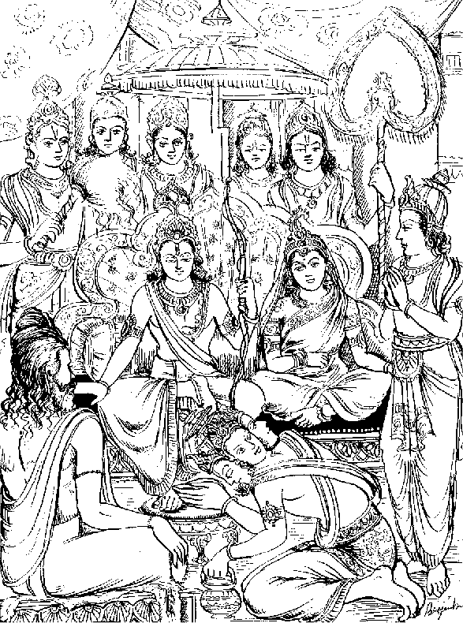
भरतजीने हिरण-बालकको अपना बालक मान लिया। जंगलमें अकेले रहते थे, एक साथी मिल गया—थोड़ा सुख हुआ। हिरण-बालकको घास खिलाते, उसको गोदमें ले करके गरमी देते, उसके साथ खेलते। कभी प्यार करते, छातीसे लगाते—तब सुख होता।
यही भूल है—संसारका सभी सुख छोड़ करके आये हैं, हिरण-बालक के साथ खेलनेमें सुखका भास होता है। स्त्रीका त्याग किया, राज्य-सम्पत्तिका त्याग किया, अपने पुत्रोंका त्याग किया—सब कुछ छोड़ करके भगवान्के लिये आये थे। माया धोखा देती है—हिरण-बालकमें मन फँस गया। उसके साथ खेलनेमें मजा आता है। उसको छातीसे लगाते हैं, तब सुख होता है—कैसा सुन्दर बालक है! यही भरतजीकी भूल है। उसको बाहर निकाला था—यह भूल नहीं थी, उसको पर्णकुटीमें रखा—यह भी भूल नहीं थी, उसको अपने मनमें रखा—यही माया है।
किसीको भी घरमें भले ही रखो, अपने मनमें किसीको रखना नहीं। भगवान्के सिवा किसीको मनमें रखोगे तो वह दु:ख देगा—बन्धनका कारण होगा। बाहरका संसार किसीको दु:ख नहीं देता है। संसार जब मनमें आता है, तब दु:ख देता है। नौकामें जो बैठता है, उसको सावधान रहना पड़ता है—बाहरका पानी अन्दर न आये। नौकामें पानी आ जाय तो नौका डूब जायगी और नौकामें जो बैठा है—वह भी डूब जायगा। संसार समुद्र है। संसारके विषय पानीके जैसे हैं। मानव-काया नौका है। जीवात्मा नाविक है। विषयरूपी जल अन्दर आ जाय तो नौका डूब जायगी।
भरतजीकी भूल यह है कि हिरण-बालकको अपने मनमें रखा है। घरमें रखा—यह भूल नहीं है। भगवान्के सिवा किसीको मनमें रखना नहीं। भरतजीकी भूल यह है कि हिरण-बालकको उन्होंने मनमें रखा है—यह मेरा बालक है। उसके साथ खेलते हैं। स्नान करनेके लिये जाते हैं, तब बहुत सावधान रहते हैं, जंगलमें बाघ-सिंह घूमते हैं, कदाचित् मेरे बालकको कोई मारे तो—अपने कन्धेपर चढ़ाकर ले जाते हैं। स्नान करनेके बाद सन्ध्या-गायत्री करते हैं, तब बार-बार उसको ही निहारते हैं। आजतक सन्ध्या-गायत्रीमें श्रीहरिका दर्शन करते थे, अब हिरणका दर्शन होने लगा। हिरण-बालक मनमें है। बड़ा सयाना है—मेरी राह देखता है। भगवान् इसका मंगल करें।
कभी-कभी अन्दरसे आवाज आती है—यह ठीक नहीं है। मैंने भगवान्के लिये सब कुछ छोड़ा है। मेरा मन हिरण-बालकमें फँसा है—यह योग्य नहीं है, मेरा अब फिरसे जन्म होगा।
हिरण-बालकके संग खेलनेमें मजा आता है। मन धोखा देता है। मन कहता है—यह भूल नहीं है, यह तो परोपकार है। मैं परोपकार कर रहा हूँ। नहीं तो इसको कोई बाघ मार डालेगा। मैं उसका रक्षक पिता हूँ। मैं उसका रक्षणकर्ता हूँ।
रक्षण तो जीवका भगवान् करते हैं। मानव मानवका रक्षण क्या कर सकता है। मानवमें रक्षण करनेकी शक्ति हो तो किसीका मरण होगा नहीं। मानव रक्षण नहीं करता है। रक्षण तो प्रारब्धके अनुसार भगवान् करते हैं। भरतजीने मान लिया है—मैं ही उसका रक्षण करता हूँ। हिरण-बालकमें ममता हुई है।
धीरे-धीरे हिरण-बालक बड़ा हुआ है। एक बार जंगलमें उसने एक हिरणीको देखा। हिरणीको देखनेपर वह उसके पीछे-पीछे गया। बहुत देरतक वह लौटा नहीं तो भरतजीको चिन्ता होने लगी। वृद्ध पिता जिस प्रकार पुत्रकी प्रतीक्षा करता है—अभी क्यों नहीं आया—कहाँ गया है? बड़ा प्रेम करता है, बड़ा सयाना है। मेरे ऊपर उसका बहुत भाव है। मैं प्रेम कहाँ करता हूँ—आज प्रात:काल मैंने उसको जल पिलाया ही नहीं, मैं भूल गया। मैं तो प्रेम नहीं करता, वही बहुत प्रेम करता है। कहाँ गया वह? भरतजीको चिन्ता होती है।
भरतजी अपने बालकको खोजनेके लिये निकले। जिस घाटपर स्नान करते थे, वहाँ जाते हैं। वहाँ दिखता नहीं है। जंगलमें जहाँ कन्द-मूल-फल लेनेके लिये जाते थे, वहाँ खोजते हैं—पता लगता नहीं। फिर तो, पर्णकुटीमें बैठ करके उसका चिन्तन करने लगे हैं—कहाँ गया वह? जंगलमें बाघ, सिंह घूमते हैं। किसी बाघने उसको मारा तो नहीं? बाघने मेरे बालकको पकड़ा होगा तो वह बहुत रोया होगा। बाघको जरा भी दया आयी नहीं होगी, उसे मार डाला होगा। न-न, मुझे ऐसा लगता है कि वह मरा नहीं है, वह जीवित है। मेरे नारायण उसका रक्षण करते हैं। मुझे ऐसा लगता है—अब वह बड़ा हो गया है, इसलिये वह लग्न करनेको गया होगा। अब आयेगा तो अपनी बहूको साथमें ले करके आयेगा। भरतजी जंगलमें बैठे ऐसे विचार करने लगे।
अन्त मति सो गति
शुकदेवजी महाराज वर्णन करते हैं—जीव गाफिल है, काल सावधान है। काल कभी विचार नहीं करता कि इसका यह काम बाकी है, यह काम होनेवाला है। समय हुआ था, भरतजीको बुखार आया। जंगलमें अकेले रहते थे। दर्भमें, शय्यामें पड़े थे। अन्तिम श्वास चालू हुआ है।
वह हिरण-बालक किसी हिरणीके पीछे-पीछे गया था। दस-पन्द्रह दिनतक वह हिरणीके साथमें रहा। फिर वहाँ एक बलवान् हिरण आया। हिरणीके लिये दोनोंका झगड़ा हुआ। दूसरा हिरण बलवान् था, यह दुर्बल था। इसको मार पड़ी है। घायल हुआ, तब रोता हुआ भरतजीके आश्रममें आया है।
पशु भी प्रेमको समझते हैं। वह समझ गया कि मेरे रक्षक पिता अब अन्तिम दशामें हैं, मृत्युकी शय्यामें पड़े हैं। भरतजीके चरणोंमें जा करके वह बैठा है। अन्तिम श्वास चालू था। अन्तकालमें एक बार आँख खोलते हैं। आँख खोलनेपर हिरण-बालकको देखा—आया है..., मुझसे मिलनेके लिये आया है। मृत्यु-शय्यामें भरतजीको उसकी माँ याद आयी, जिसने छलाँग मारी थी। इसकी माँने यह बालक मुझे दिया था। इसका मैंने भरण-पोषण किया है। अन्तकालमें अब यह मुझसे मिलनेके लिये आया है।
मृत्युकी शय्यामें हिरणी याद आ गयी। गण्डकी नदीके किनारेके वन-उपवनको मृत्युकी शय्यामें मनसे देखते हैं—इसकी माँने छलाँग मारी थी, प्रसवकी वेदनासे उसने प्राण छोड़े थे, यह बालक मुझे दिया था।
गण्डकी नदीके किनारे जिस हिरणीने प्राण छोड़े थे, वही हिरणी फिरसे कालंजर पर्वतके ऊपर हिरणी हुई थी।
भागवतका एक सिद्धान्त है—आपका ज्ञान-मार्ग हो चाहे योग-मार्ग हो, आप किसी भी सम्प्रदायकी दीक्षा ग्रहण करो, आप निराकारको मानो या साकारको मानो—किंतु भगवान्की सेवा-पूजा कभी छोड़ना नहीं। ज्ञान और योग भक्तिसे ही सफल होते हैं। योग और ज्ञानके अभिमानमें जो भक्तिको गौण समझता है—जो भक्तिको छोड़ देता है, उसका मरण बिगड़ता है। भक्तिसे ही मरण सुधरता है। भक्तिका अर्थ क्या है? भगवान्के स्वरूपमें जो आसक्त है, उसीको भक्त कहते हैं। सनातनधर्ममें इसलिये मूर्ति-पूजाको बहुत महत्त्व दिया है। भगवान्के स्वरूपमें जिसकी आँख और मन फँस जाते हैं, जिसके मनमें भगवान्का स्वरूप है—उसको अन्तकालमें भगवान्का स्वरूप दिखता है, उसका मरण मंगलमय हो जाता है। जो भक्तिको, सेवा-पूजाको गौण समझता है—उसको अन्तकालमें संसारका चित्र ही दिखता है और संसारका चित्र दिखनेपर मन बिगड़ता है, मरण बिगड़ता है।
वेदोंमें वर्णन आया है कि जब मरण समीपमें होता है, तब प्रथम वाचा बन्द हो जाती है। जीभसे मानव बोल नहीं पाता, मनसे थोड़ी बातें करता है। वाणीका लय मनमें हो जाता है—मनसे बोलता है, मनसे याद करता है। जीभसे नहीं बोल सकता। मरण जब अति समीपमें होता है, तब मनका लय प्राणमें हो जाता है। शरीरमें केवल श्वास चालू रहता है। फिर मन भी बधिर हो जाता है—मन प्राणमें मिल जाता है। मनका लय जब प्राणमें होता है, तब हृदयमें प्रकाशमय परमात्मा नारायणका दर्शन होता है।
सभीके हृदयमें प्रकाशमय परमात्मा हैं—जिस प्रभुकी शक्तिसे मानव देखता है। आँखको देखनेकी शक्ति भगवान् देते हैं, बोलनेकी शक्ति भगवान् देते हैं—यद्वाचान् अभ्युदितं येन वानभ्युद्यते। तदेव ब्रह्म त्वं विद्धि न वै यदिदमुपासते॥
जिसके प्रकाशसे मानव बोलता है,जिस प्रकाशके आधारसे मानव देखता है—इन्द्रियोंको प्रकाश देनेवाले वे नारायण प्रत्येकके हृदयमें हैं।
मन बाहर बहुत घूमता है, इसलिये हृदयमें विराजमान प्रकाशमय नारायणका दर्शन नहीं होता है। मन जब अन्तर्मुख होता है, मन जब बधिर हो जाता है—तब अन्तकालमें सभीको हृदयमें प्रकाशमय परमात्माका दर्शन होता है। परमात्माका दर्शन करनेके बाद—वासनामें मन जहाँ फँस गया होता है—उस वासनाके अनुसार चित्र दिखता है। जिसका मन भगवान्के स्वरूपमें—सौन्दर्यमें फँसा है, उसको भगवान्का स्वरूप दिखेगा। अन्तकालमें भगवान्का दर्शन हो तो बेड़ा पार है। जो ज्ञानी, योगी भक्तिको गौण मानते हैं, सेवा-पूजाको गौण समझते हैं, ऐसे ज्ञानियों-योगियोंको अन्तकालमें संसारका चित्र दिखता है। संसारका चित्र देखनेपर मरण बिगड़ता है।
भरतजी महाराज बड़े ज्ञानी हैं, योगी हैं—उनको अन्तकालमें हिरणीका चित्र दिखता है। हिरण-बालकको देखनेके बाद उसकी माँ याद आती है—इसकी माँने यह बालक मुझे दिया था, इसकी माँने गण्डकी नदीके किनारे प्राण छोड़े थे...।
शुकदेवजी महाराज वर्णन करते हैं—‘भरतजीको हिरणीका चित्र दिखता है, हिरणीका स्मरण करते हुए शरीर छोड़ते हैं। भरतजी उसी हिरणीके पेटमें गये हैं। महान् ज्ञानी, महान् योगी भरतजी हिरण हुए हैं।
परीक्षित् राजाको आश्चर्य होता है। बड़े ज्ञानी, योगी, तपस्वीकी यह साधारण भूल है। भूलके पीछे भी परोपकारकी भावना है। उनको क्या स्वार्थ था—उनको कोई स्वार्थ नहीं था। ज्ञान, भक्ति व्यर्थ हो जाते हैं—इतने बड़े ज्ञानी-योगी भरत पशु हुए हैं—राजाको आश्चर्य होता है।
शुकदेवजी महाराज राजर्षिको सावधान करते हैं—राजन्! ज्ञान और भक्ति कभी व्यर्थ नहीं जाते हैं। भरतजी पशु तो हुए हैं, किंतु पशु-शरीरमें भी उन्हें ज्ञान है—मेरी भूल हो गयी, इसलिये मैं पशु हुआ हूँ।
जीव जहाँ जाता है, वहाँ सुख समझता है। जीव जहाँ जाता है, वहाँ ममता करता है—एक राजाको खबर पड़ गयी थी कि मैंने बहुत पाप किया है, इसलिये मरनेके बाद मैं शूकर होनेवाला हूँ। राजाने अपने पुत्रोंको कहा, ‘अपने पापसे मैं शूकर होनेवाला हूँ, कचरेमें, कीचड़में खेलनेसे मुझे बहुत घृणा आती है—मैं वहाँ नहीं रह सकता। पर, अपने पापसे मैं शूकर तो बनूँगा ही।’ जगह भी बतायी—‘अमुक जगहमें मेरा जन्म होगा। मेरे कपालमें सफेद दाग होगा। वहाँ आकर, मुझे पहचान कर मार डालना। कीचड़में, कचरेमें मुझे रहना नहीं है।’
राजाने शरीर छोड़ा, वह शूकर हुआ। उसके पुत्र उसे खोजते हुए वहाँ आ गये। पहचान करने लगे। एक शूकरके मस्तकमें सफेद दाग दिखता है—‘यही है, मारो इसको।’ तब उसने कहा—‘मैंने कहा तो जरूर था, पर अब मुझे मारना नहीं। पूर्वजन्मकी रानीसे भी अति सुन्दर शूकरी मुझे यहाँ मिल गयी है। इसी कीचड़में, कचड़ेमें राजमहलसे भी ज्यादा मजा आता है। मुझे यह सुख भोगना है।’
जीव जहाँ जाता है, वहाँ सुख समझ करके फँस जाता है। जीव जहाँ जाता है, वहाँ सुख समझ करके ममता करता है।
ज्ञान और भक्ति कभी व्यर्थ नहीं जाते हैं। भरतजी पशु तो हुए हैं, किंतु पशु-शरीरमें भी ज्ञान है—वैराग्य है। माँ स्तनपान कराती है तो स्तनपान नहीं करते हैं। एक हिरणके संगसे मैं हिरण हुआ हूँ, यहाँ तो बहुत-से हिरण हैं। हिरण बने भरतजीने माँ-बापका संग छोड़ दिया। पूर्वजन्मकी तपोभूमि याद आती है। गण्डकी नदीके किनारे भरतजी आये हैं। उनको याद आता है—इस घाटमें मैं स्नान करता था, इधर मेरी पर्णकुटी थी। मायाने धोखा दिया...। रोते हैं—मैं पशु हुआ हूँ। अब रोनेसे क्या लाभ है? जितने दिनतक हिरण-बालकको गोदमें ले करके प्यार किया था, जितने दिनतक हिरण-बालकके साथ खेले थे, उतने दिनतक उनको हिरण-शरीरमें रहना पड़ा है। अब रोनेसे क्या लाभ है? सावधान! मेरी भूल हो गयी थी।
हिरण-शरीरमें भरतजी कभी घास तोड़ करके नहीं खाते हैं। घासमें जीव-जन्तु बैठते हैं। घास तोड़ करके खाऊँ तो किसी जीवकी हिंसा होगी। जो पाप ले करके आया हूँ, वह भोग करके उसका नाश करना है—नवीन पाप न हो। पशु-शरीरमें भी उनको ज्ञान है—नवीन पाप मुझे करना नहीं है।
त्रिकाल गण्डकी नदीमें स्नान करते हैं। आधा शरीर जलमें है, आधा शरीर जलके बाहर है—ऐसा बैठते हैं। पूर्वजन्ममें जिस ‘हरये नम:’—मन्त्रको बोलते थे, हिरण-शरीरमें वह मन्त्र याद आता है। गण्डकी नदीके किनारे बैठ करके रोते-रोते ‘हरये नम:, हरये नम:’ मन्त्रको याद करते हैं। श्रीहरिकी माया विलक्षण है, मुझे धोखा दिया। बड़ा ज्ञानी था, मैं परमात्माका ध्यान करता था...। मेरी भूल हो गयी,... हिरणका संग हुआ—
यज्ञाय धर्मपतये विधिनैपुणाय
योगाय सांख्यशिरसे प्रकृतीश्वराय।
नारायणाय हरये नम इत्युदारं
हास्यन्मृगत्वमपि य: समुदाजहार॥
(श्रीमद्भा० ५।१४।४५)
हरये नम:, हरये नम:—मैं श्रीहरिको वन्दन करता हूँ। ‘हरये नम:’ मन्त्रका स्मरण करते हुए हिरण-शरीरका त्याग किया है।
शुकदेवजी महाराज वर्णन करते हैं—फिर तो एक पवित्र ब्राह्मणके घरमें उनका जन्म हुआ है। यह जन्म अन्तिम जन्म है—चरमशरीरेण विप्रत्वं गतमाहु:—चरम शरीर, अन्तिम जन्म! अति सावधान हैं। संगसे बहुत भय लगता है। घबराते हैं—हिरणके संगसे मैं हिरण हुआ था। मानवके संगसे फिर मुझे मानव होना पड़ेगा। माँ स्तनपान कराती है—स्तनपान नहीं करते हैं। माँ प्यार करती है। माँका प्यार विषके समान लगता है। माँ बच्चेको हँसानेका प्रयत्न करती है—कभी हँसते नहीं हैं, कभी रोते नहीं हैं। माँ-बापको छोड़ करके अकेले बैठे रहते हैं। डर लगता है—हिरणके संगमें मैं पशु हुआ था, किसी मानवका संग करना नहीं है। अब भगवान्का ही संग करना है। अकेले कोनेमें बैठे रहते हैं। कभी रोते नहीं हैं, कभी हँसते नहीं हैं। कभी-कभी पिता उठा करके गोदमें लेते हैं, प्यार करते हैं। पिताका प्यार विषके समान लगता है। बापका संग हो तो मुझे फिरसे बाप होना पड़ेगा। अब किसीका बाप नहीं होना है। अनेक जन्म याद आते हैं—अब मुझे बाप नहीं होना है। संगसे मेरा पतन हुआ था। अब मैं सतत परमात्माका ही संग करूँगा।
माता-पिताका बहुत प्रेम है। पागल है—ऐसा लगता है। गूँगा है...। माता-पिताने जनेऊ दी है। पिता गायत्री मन्त्र पढ़ाते हैं। भरतजीको सब कुछ आता है। भरतजीने निश्चय किया है—अपना ज्ञान अब जगत्को बताना नहीं है। पूर्वजन्ममें मैं जगत्को बतानेके लिये गया, मैं परोपकार करनेके लिये गया—मैं पशु हुआ। ज्ञानका फल ध्यान है। लोग मुझे मूर्ख समझें, यही अच्छा है। कोई मेरे पीछे पड़ेगा नहीं। मैं ज्ञानी हूँ—ऐसी खबर पड़े तो लोग मेरे पीछे पड़ेंगे। मुझे लोग पागल समझें, यही अच्छा है।
ग्रैष्मवासन्तिकान्मासानधीयानमप्यसमवेतरूपं ग्राहयामास—चार महीनेतक गायत्री मन्त्र पढ़ाया है—एक अक्षर आता नहीं है। मूर्खको पढ़ाना सरल है। ज्ञानी हो करके जो मूर्खके जैसा नाटक करता है, उसे कौन पढ़ा सकता है? जो सोया हुआ है, उसको जगाना कठिन नहीं है। जो जागता है, उसे जगाना बड़ा कठिन है। भरतजी अन्दरसे जागे हुए हैं। ज्ञानका फल ध्यान है। अब परमात्माका ही संग करना है।
माता-पिताने बहुत प्रयत्न किया, सफलता मिली नहीं। माता-पिताका घरमें ही मरण हुआ। भरतजीने विचार किया—दो जीव ऐसे थे, जिनका मेरे ऊपर बहुत प्रेम था। वे मर गये, अच्छा हुआ। एक आसक्तिका धागा था, वह धागा टूट गया—अच्छा हुआ। मैं भगवान्का हूँ—इसी भावमें तन्मय रहते थे। पागलके जैसा नाटक करते हैं। बाहर घूमने लगे हैं। मुफ्तमें मजूरी करते हैं। खानेके समयमें घरमें आते हैं तो भाभी तिरस्कार करती है। जो पैसा न कमाये, उसको कौन मानता है—समझकर नाम रखा है—‘जड़ भरत’ ।
जो पाप करके पैसा कमाता है, जो सुख भोगता है—उसको लोग सयाना कहते हैं। जिसको पापका भय लगता है, जो परमात्माके साथ ही प्रेम करता है—संसारी लोग उसको मूर्ख समझते हैं।
भोजनके समयमें आता है—यह देखकर भाभी तिरस्कार करती है। जला हुआ भात खानेको देती है। भरतजीने स्वाद ले करके कभी भोजन किया ही नहीं—अल्पं बहुमृष्टं कदन्नं वाभ्यवहरति परं नेन्द्रियप्रीतिनिमित्तम्। (श्रीमद्भा० ५।९।९)
भोजन करो, सावधान रहो—मेरा मन स्वादमें फँसे नहीं। भक्तिका शत्रु स्वाद है। स्वादमें जिसका मन फँस जाता है, उसको भक्तिका आनन्द मिलता नहीं है। भरतजी भोजन तो करते हैं, पर स्वाद छोड़ करके भोजन करते हैं—कभी स्वाद लेते ही नहीं। भाभी तिरस्कार करती है तो हँसते हैं।
कभी-कभी भाइयोंके हृदयमें प्रेम उमगता है—‘कुछ भी हो, मेरा भाई है...। यह पागल है...।’ किंतु, कोई प्रेम करे, यह भरतजीको अच्छा लगता नहीं है—कदाचित् मेरा मन बिगड़ जाय तो। ...ऐसा नाटक करते हैं—कोई मुझे छुए नहीं, कोई मेरे साथ प्रेम करे ही नहीं ...मैं बड़ा पागल हूँ। किन्तु, अन्दरसे सावधान हैं, खेतोंमें बैठे हैं।
जंगलमें भीलोंका एक राजा रहता था। उसने भद्रकालीको मनौती रखी थी कि मेरे यहाँ बालक हो तो मैं नर-बलि अर्पण करूँगा। उसके यहाँ बालक हुआ है। भील लोग बलिके लिये मनुष्यको शोधनेके लिये निकले हैं। उन्होंने देखा—केदारान् वीरासनेन मृगवराहादिभ्य: संरक्षमाणमङ्गिर:प्रवर सुतमपश्यन् (श्रीमद्भा० ५।९। १३)। भरतजी शान्तिसे बैठे हैं—कोई चिन्ता नहीं है, शरीर पुष्ट हो गया है, एक मलिन वस्त्र पहना है, पंचकेश बढ़ गये हैं, बाहरसे पागल-जैसे लगते हैं।
‘पकड़ो इसको, इसीका बलिदान करेंगे—
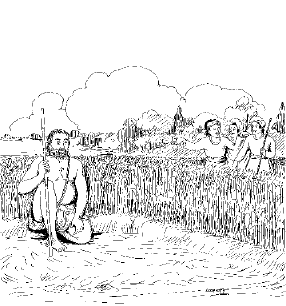
भील लोग आकर खड़े हो गये। ‘चल तुम्हें मिठाई खिलायेंगे।’ ‘चल’ कहा, तब भरतजी चलने लगे। भील लोगोंने विचार किया कि यह तो पागल है, इसको मारने-पीटनेकी जरूरत नहीं है—नजर रखो।
घरमें ले गये हैं। स्नान कराया है। लाल वस्त्र पहननेको दिया है। कपालमें रक्तचन्दनका तिलक किया है। कनेरके फूलकी माला पहनायी है। मिठाई खानेके लिये दी है।
भरतजी धीरे-धीरे मिठाई खाते हैं—मरेगा तो शरीर मरेगा। मैं मरनेवाला नहीं हूँ। मैं भगवान्का अंश हूँ, मैं भगवान्के चरणोंमें जानेवाला हूँ। मैं अब गाफिल नहीं हूँ, मैं सावधान हूँ।
भील लोगोंको आश्चर्य होता है—दो घण्टेके बाद यह मरनेवाला है, फिर भी खा रहा है। भरतजीको भद्रकालीके मन्दिरमें ले गये हैं। भद्रकालीके सम्मुख बैठनेकी आज्ञा की है। मस्तक नवाये हैं—ये तो मेरी माँ हैं, माँ कभी बालकको नहीं मारती है। कदाचित्, मारे—तो माँ भले मारे, पर दूसरा कोई मारे तो माँको सहन नहीं होता है।
भीलोंका राजा वहाँ आया है। भद्रकालीकी पूजा करता है। हाथमें तलवार लिये है। भरतजीको मारनेके लिये तैयार हुआ है। भरतजीको जरा भी भय लगता नहीं है—मेरे भगवान् चतुर्भुज हैं, चारों तरफसे मेरा रक्षण कर रहे हैं। ये दो हाथवाला मुझे क्या मार सकता है—मेरे नारायण चतुर्भुज हैं।
भीलोंका राजा तलवार ले करके मारनेको तैयार होता है। भद्रकालीको कहा है—‘माँ, तुमने मुझे बालक दिया है, मैंने मनौती रखी थी—यह नरबलि मैं तुम्हें अर्पण करता हूँ। यह हृष्ट-पुष्ट है, रुधिरका पान करो।’—ऐसा बोल करके जैसे ही मारनेको तैयार हुआ है—भद्रकाली माँको सहन हुआ नहीं। यह मेरा प्यारा पुत्र है, ब्रह्मनिष्ठ बालक है, उसने ब्रह्मदृष्टि स्थिर की है। मेरे बालकको कोई मारे, यह मुझे सहन नहीं होगा। यह मेरा प्यारा पुत्र है।
भद्रकाली माँको क्रोध आया है। क्रोधमें मूर्तिको फाड़ करके अष्टभुजा भद्रकाली बाहर आयी हैं। वही तलवार उसके हाथसे खींच ली है और उसीका मस्तक काट डाला है। माँ खेलने लगी हैं।
मैं बच गया, इसका सुख नहीं। ये लोग मर गये, इसका दु:ख नहीं। आनन्दमय परमात्मा नारायणके स्वरूपमें स्थिर हैं। जहाँ सुख है, वहाँ दु:ख है। जहाँ दु:ख है, वहाँ सुख है। जहाँ सुख नहीं है, जहाँ दु:ख नहीं है—वहाँ आनन्द है। आनन्द ही नारायण है। मैं बच गया—इसका सुख नहीं, ये लोग मर गये—इसका दु:ख नहीं। नारायणके चरणोंमें चित्त स्थिर है।
फिर तो भरतजीने निश्चय किया कि अब घरमें जाना ही नहीं है। प्रारब्ध शरीरको जहाँ ले जाना चाहे, ले जाय—मैं साक्षी भावसे देखूँगा। प्रारब्धका नाश भोगसे होता है। मुझे तो भगवान्के चरणोंमें जाना है।
राजा रहूगणको उपदेश
भरतजी घूमते हुए इक्षुमती नदीके किनारे आये हैं। कच्छप्रान्तका राजा रहूगण कपिलमुनिके आश्रममें तत्त्वज्ञानका उपदेश लेनेके लिये जाता है—
अथ सिन्धुसौवीरपते रहूगणस्य व्रजत इक्षुमत्यास्तटे तत्कुलपतिना शिबिकावाहपुरुषान्वेषणसमये दैवेनोपसादित: स द्विजवर उपलब्ध एष पीवा युवा संहननाङ्गो गोखरवद्धुरं वोढुमलमिति पूर्वविष्टिगृहीतै: सह गृहीत: प्रसभमतदर्ह उवाह शिबिकां स महानुभाव:॥
यदा हि द्विजवरस्येषुमात्रावलोकानुगतेर्न समाहिता पुरुषगतिस्तदा विषमगतां स्वशिबिकां रहूगण उपधार्य पुरुषानधिवहत आह हे वोढार: साध्वतिक्रमत किमिति विषममुह्यते यानमिति॥
अथ त ईश्वरवच: सोपालम्भमुपाकर्ण्योपायतुरीयाच्छङ्कितमनसस्तं विज्ञापयाम्बभूवु:॥ न वयं नरदेव प्रमत्ता भवन्नियमानुपथा: साध्वेव वहाम:। अयमधुनैव नियुक्तोऽपि न द्रुतं व्रजति नानेन सह वोढुमु ह वयं पारयाम इति॥
सांसर्गिको दोष एव नूनमेकस्यापि सर्वेषां सांसर्गिकाणां भवितुमर्हतीति निश्चित्य निशम्य कृपणवचो राजा रहूगण उपासितवृद्धोऽपि निसर्गेण बलात्कृत ईषदुत्थितमन्युरविस्पष्टब्रह्मतेजसं जात-वेदसमिव रजसाऽऽवृतमतिराह॥ (श्रीमद्भा० ५।१०। १—५)
पालकीमें बैठा है। चार सेवक पालकी उठा करके ले जाते हैं। इक्षुमती नदीके किनारे जलपान करनेके लिये मुकाम किया था। चार सेवकोंमें एक सेवक भाग गया। तब राजाने हुकुम दिया कि मार्गमें कोई भी घूमता हो तो पकड़कर ले आओ। राजाके सेवक खोजनेके लिये निकले। भरतजी वहाँ घूमते थे। हृष्ट-पुष्ट देख सेवकोंने उन्हें पकड़ लिया—‘चल हमारे साथ। तुझे मजूरी मिलेगी, पैसा मिलेगा।’
‘चल’ कहा, तब चलने लगे। कहा—‘यह पालकी कंधेपर रखो, पालकी ले करके चलना है।’
भरतजी पूर्वजन्ममें राजा थे, तब अनेक बार पालकीमें बैठे थे। पालकी उठानेका प्रसंग आज प्रथम बार आया है। मुझे ऐसा लगता है कि मेरा कोई पाप है। भगवान्की इच्छासे यह प्रसंग आया है। पाप भोग करके उसका नाश करना है। कंधेपर पालकी रखी है। चलते हुए भी भक्ति करते हैं।
जो मार्गमें भगवान्को भूल जाता है, उसकी आँख बिगड़ती है। जो मार्गमें भक्ति नहीं करता, उसका मन पाप करता है। मार्गमें भक्ति करो।
भरतजी मार्गमें चलते हुए भी भक्ति करते हैं, नारायणका ध्यान करते हैं। सावधानीसे कदम रखते हैं—पैरके नीचे कोई जीव न आ जाय, जीव-हिंसा न हो। मुझे नवीन पाप करना ही नहीं है। जो पाप ले करके मैं आया हूँ—भोग करके उसका विनाश करना है। जीव-जन्तु देखते हैं, तब छलाँग मारते हैं। पालकीमें बैठा हुआ राजा एकदमसे उछल जाता है। दो-चार बार तो उसने त्रास सहन किया है, फिर उसको सहन हुआ नहीं। सेवकोंको कहा—‘बराबर चलो, मुझे त्रास होता है।’ सेवकोंने कहा—‘महाराज! हम तो बराबर चल रहे हैं, यह जो नवीन आया है, यह पागलके जैसा दिखता है। कभी-कभी दौड़ने लगता है, कभी खड़ा ही रहता है। महाराज! क्या कहें—यह कभी रोता है, कभी हँसता है।’
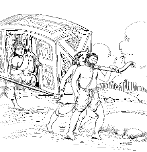
रहूगण राजाने भरतजीके ऊपर दृष्टि रखी है—मार्गमें जीव-जन्तुओंका दर्शन होता है, तब छलाँग मारते हैं। राजाको त्रास हुआ है, उसको सहन हुआ नहीं। भरतजीका तिरस्कार करता है—‘अरे तू जीते-जी मरा हुआ है! तुझे अकल नहीं है—तू क्या समझता है—क्यों त्रास देता है? मैं कच्छ-प्रान्तका राजा हूँ, मैं तुझे मारूँगा।’
राजाका पैसा लिया नहीं है, राजाका कुछ खाया नहीं है। जबरदस्तीसे पकड़ करके ले आये हैं। राजा मारनेको तैयार होता है—‘तू तो बहुत तगड़ा दिखता है, तुझे वजन लगता है क्या? क्यों त्रास देता है? बराबर चल। मार पड़ेगी तो तेरी अकल ठिकाने आयेगी। मैं तुझे सजा दूँगा।’
राजाने बहुत तिरस्कार किया है। भरतजी मान और अपमान दोनोंको पी गये थे। मान मिथ्या है और अपमान भी मिथ्या है। मेरे नारायण सत्य हैं। सत्यके साथ जो स्नेह करता है, उसके मनके ऊपर मान और अपमानका असर नहीं होता। मान भी मिथ्या है और अपमान भी मिथ्या है। सत्य परमात्मा है।
राजाने बहुत तिरस्कार किया। भरतजीके मनपर जरा भी असर हुआ नहीं। कंधेपर पालकी है। चलते हुए विचार करने लगे हैं—कुछ भी हो, मैंने उसको अपने कंधेपर रखा है, उसको भगवान्के धाममें ले जाऊँगा। सत्संगकी महिमा रखनेके लिये अब मुझे थोड़ा बोलना पड़ेगा। यह मेरा अपमान करता है, इसका मुझे जरा भी दु:ख नहीं है।
कपिल महामुनिके आश्रममें तत्त्वज्ञानका उपदेश लेनेके लिये जाता है और बोलता है कि मैं कच्छ-प्रान्तका राजा हूँ। जो राजा बन करके जाता है, कपिलदेव उसको दृष्टि भी नहीं देते हैं। इसको बोलने नहीं आता है। आज इसको मैं थोड़ा उपदेश करूँगा। भविष्यमें लोग बातें करेंगे कि भरतजीका सत्संग हुआ तो भी रहूगणकी दुर्गति हुई—सत्संगकी महिमा रखनेके लिये आज मुझे थोड़ा बोलना पड़ेगा।
भरतजी जीवनमें एक ही बार बोले हैं। जगत् तो ऐसा ही मानता था कि यह गूँगा है, इसको बोलने आता ही नहीं है।
भगवान्की इच्छा थी—मेरा भरत ज्ञानी भक्त है। उसको लोग पहचानते नहीं हैं। उसको लोग मूर्ख समझते हैं। उसकी कीर्ति मुझे बढ़ानी है। भरतजीकी कीर्ति बढ़ानेके लिये भगवान्ने यह लीला की है।
कंधेपर पालकी है, चलते हुए भरतजीने रहूगण राजाको उपदेश किया है—‘राजन्! तुमने मुझसे कहा कि तू जीते-जी मरा है। मुझे तो यह जगत् ही ऐसा लगता है—जो आज है और कल नहीं है। यह पालकी जो है, वह भी जीते-जी मरी हुई है। पालकीमें जो पुतला बैठा हुआ है, वह भी जीते-जी मरा हुआ है। सत्य तो परमात्मा नारायण हैं।
तूने मुझसे कहा कि तू बहुत तगड़ा है। सो मैं तगड़ा नहीं हूँ, मैं दुर्बल नहीं हूँ। मैं काला नहीं हूँ, मैं गोरा नहीं हूँ। मैं पुरुष नहीं हूँ, मैं स्त्री नहीं हूँ—देहेन जातस्य हि मे न सन्ति। स्त्रीत्व-पुरुषत्व देहके भाव हैं। मैं परमात्माका अंश हूँ।
तूने मुझसे कहा कि तुझे वजन लगता है क्या? सो मेरे भगवान् सत्य हैं, भगवान्के बिना जो कुछ दिखता है, वह मायाकी कल्पना है। जगत् मिथ्या है, मेरे भगवान् सत्य हैं। जगत् सत्य नहीं है तो वजन सत्य कैसे होगा? वजन नामकी कोई वस्तु ही नहीं है और यदि हो भी तो उसका सम्बन्ध मनके साथ है। मैं मन नहीं हूँ। मनुष्यको पाप करनेसे बचानेवाला मनका साक्षी शुद्ध चेतन आत्मा हूँ मैं। वजन मनको लगता होगा। मन माने तो वजन है, मन न माने तो वजन लगता नहीं है।
मॉँ अपने बच्चेको उठा करके ले जाती है। मॉँकी बच्चेमें ममता होती है। ममता होनेसे मॉँको बच्चेमें जरा भी वजन नहीं लगता है। कोई उससे पूछे कि बच्चा बड़ा हो गया है, वजन लगता होगा, थक गयी होगी, तो माँ कहेगी कि उसको अपना बच्चा फूलके जैसा हलका लगता है। पड़ोसीका बच्चा उठानेका प्रसंग आ जाय तो वह पहाड़के जैसा हो जाता है।
मन जब कहता है कि ‘यह मेरा नहीं है’—तब उसका वजन लगता है। मन कहता है कि ‘यह मेरा है’—तो वजन नहीं लगता है। ये सब कपट मन करता है।
मैंने ब्रह्मदृष्टि स्थिर की है। पैरके नीचे किसी जीवकी हिंसा न हो, पाप न हो—इसलिये मैं छलाँग मारता हूँ। अब, तुम्हें जो करना हो, वह कर लो! मुझे मारना हो तो मार, किंतु मेरी चाल नहीं सुधरेगी।’
भरतजीने निर्भय हो करके उत्तर दिया है। कंधेपर पालकी है, चलते हैं। राजा रहूगण विचार करता है—यह क्या बोल रहा है? यह तो वेदान्तके सिद्धान्त बोल रहा है। यह कोई साधारण मानव नहीं है। यह मूर्ख नहीं है। यह कोई ज्ञानी पुरुष है। इसकी ब्रह्मदृष्टि स्थिर है, जगत्को ब्रह्मभावसे देखता है। ऐसे ब्रह्मनिष्ठ महात्माके हाथसे मैंने पालकी उठवायी! यह कौन है? राजा पालकीमेंसे देखने लगा—भरतजीके कंधेपर जनेऊ है।
जनेऊको देख करके राजाको लगा—यह कोई ब्राह्मण है। यह केवल जातिका ब्राह्मण नहीं है, इसकी ब्रह्मदृष्टि स्थिर है—महान् ज्ञानी है। मेरी भूल हो गयी है।
राजा पालकीसे कूद पड़ा है। भरतजीके चरणोंमें बारम्बार वन्दन करता है। पालकीसे गद्दी बाहर निकाली है। गद्दीपर भरतजीको बिठाया है—बहुत मान दिया है। राजाने अपमान किया, तब दु:ख हुआ नहीं—मान दिया, उसका सुख नहीं। मुखाकृति निर्विकार—अति शान्त है। ज्ञान-भक्तिकी अन्तिम कक्षामें पहुँच गये हैं। सुख-दु:ख, मान-अपमानका जरा भी असर नहीं है। शान्तभावमें स्थिर हैं।
रहूगण कहता है—‘महाराज! आप कुछ बोलें। आप कौन हैं? मैंने ऐसा सुना है कि भगवान् दत्तात्रेय अवधूतके वेषमें जगत्में घूमते हैं। आप भगवान् दत्तात्रेय तो नहीं हैं—मेरे-जैसा कामी और विलासी आपके जैसे सन्तोंको क्या पहचान सकता है? योगेश्वराणां गतिमन्धबुद्धि:—मैं अन्धा हूँ। सन्तको सन्त ही पहचान सकते हैं। मेरी भूल हो गयी है। महाराज! कुछ बोलें, मुझे कुछ उपदेश करें।’
राजाने जब बहुत आग्रह किया है, तब थोड़ा बोले हैं—‘राजन्! मैं तुम्हें क्या उपदेश करूँ—दो मिनट पहले मैं नौकर था और तू राजा था। अब मैं राजा-जैसा हो गया और तू नौकर-जैसा हो गया। कौन राजा और कौन रंक है—यह सब मायाका खेल है। स्वप्नमें कोई भिखारी राजा हो जाय या स्वप्नमें कोई राजा भिखारी हो जाय—जबतक वह जागता नहीं है, तभीतक सुख-दु:ख है। जो सोया हुआ है, उसीको स्वप्न दिखता है। जो जागता है, उसको स्वप्न नहीं दिखता है। मन विषयोंका चिन्तन करता है, मन विषयोंमें फँसता है, विषय मनमें आते हैं—वही बन्धनका कारण होता है।
मेरा मन एक बार हिरणमें फँसा हुआ था, इसलिये मैं हिरण हुआ था। अब मैं सावधान रहता हूँ। मैं मनके ऊपर विश्वास रखता नहीं। मनके ऊपर भक्तिका अंकुश रखता हूँ। मनसे ही बन्धन है, मनसे ही मुक्ति है। पानीके बिना कीचड़ नहीं होता। कीचड़का कारण पानी है। कीचड़ धोनेका कारण भी पानी ही है। पानीसे ही कीचड़ धोया जाता है और पानीसे ही कीचड़ बनता है। मनसे ही बन्धन और मनसे ही मुक्ति मिलती है। अब मैं सावधान रहता हूँ।
ज्ञान और भक्ति वैराग्यसे दृढ़ होते हैं। वैराग्यके बिना ज्ञान और भक्ति दृढ़ नहीं होते। वैराग्यको जाग्रत् करनेके लिये भवाटवीकी कथा सुनायी है—संसाररूपी जंगलमें जीव अनादिकालसे घूमता है। इसका कोई अन्त आता ही नहीं है। संसाररूपी जंगलमें जीव घूमता है, मार्गमें उसको छ: चोर मिलते हैं। उसका विवेकरूपी धन लूट करके उसको गड्ढेमें फेंक देते हैं। पंच ज्ञानेन्द्रियाँ और छठा मन—ये ही चोर हैं। विवेकरूपी धनको लूट लेते हैं, संसाररूपी गड्ढेमें फेंक देते हैं।
वासनाके अधीन हो करके जीव सुख भोगता है। सुख भोगनेसे वासनाकी गाँठ पक्की होती है। मन धोखा देता है—स्त्री बहुत सुन्दर है, पुरुष बहुत सुन्दर है, संसारमें मजा है—ऐसा समझा करके जीवको संसारमें फँसा देता है। वासनाके अधीन हो करके जीव सुख भोगता है—बन्धन दृढ़ हो जाता है।
संसाररूपी जंगलमें जीव घूमता है। कभी-कभी वह गन्धर्वनगरमें जाता है। गन्धर्वनगरमें उसको थोड़े समयतक सुखका भास होता है। गन्धर्वनगरका सुख टिकता नहीं है। अनुकूल गृहस्थाश्रम—यही गन्धर्वनगर है। हाथमें पैसा है, बँगला है, सुन्दर स्त्री है—ऐसा समझता है कि मुझे स्वर्गका सुख मिल रहा है, मैं बड़ा सुखी हूँ। यह सुख टिकता नहीं है। भोगके पीछे रोग खड़ा है। शरीर दुर्बल होता है, शरीर बिगड़ता है—तब कुछ बुद्धि सुधरती है। मैंने स्वर्गका सुख भोगा नहीं, मैंने चमड़ेका सुख भोगा है। मेरी बुद्धि बिगड़ गयी थी।
शरीर जब बहुत बिगड़ जाता है, तब बुद्धि सुधरती है। शरीर जब अच्छा रहता है, तब बुद्धि बिगड़ी हुई रहती है। अनादिकालसे जीव संसाररूपी जंगलमें भटकता ही रहता है। अनेक बार तू राजा हुआ है, अनेक जन्ममें तू रानी हुआ है। संसार-सुखमें तुझे घृणा नहीं आती है—पशु-पक्षी भी सुख भोगते हैं।’
राजाको ऐसा उपदेश दिया है कि उसकी अन्दरकी आँख खुल गयी। अब तो सोनेकी पालकी मिट्टी-सरीखी लगती है। मिट्टीमें और सोनेकी पालकीमें क्या फेर है? सेवकोंको कहा है कि सोनेकी पालकी ले जाओ, मुझे मार्गमें ही गुरुदेवका दर्शन हुआ है। मार्गमें सत्संग हुआ—राजा रहूगणका जीवन सुधरता है।
कोई सन्त कृपा करके जब दीक्षा देते हैं, तब मानव देव हो जाता है। रहूगणको दीक्षा दी है—चतुर्भुज नारायणका ध्यान करनेकी आज्ञा दी है। भरतजीके सत्संगसे रहूगण कृतार्थ हुए हैं। भरतजी भगवान्का ध्यान करते हुए भगवान्के चरणोंमें लीन हुए हैं।
एक अध्यायमें भरतजीके वंशकी कथा कही गयी है। फिर तो जम्बूद्वीप, प्लक्षद्वीप, शाकद्वीप, शाल्मलीद्वीप, क्रौंचद्वीप आदि द्वीपोंका वर्णन किया है। एक-एक द्वीपमें अनेक नदियाँ हैं, अनेक पर्वत हैं। भरतखण्डका विस्तारपूर्वक वर्णन किया है। भरतखण्डके मालिकदेव बदरिकाश्रममें विराजमान नर-नारायण स्वामी हैं। पृथ्वीके नीचे अतल, वितल, सुतल, तलातल, महातल, रसातल और पाताल—इस प्रकार सप्त पातालका वर्णन किया है। ग्रहोंकी नाक्षत्र-गति, राशि-गति—दो प्रकारकी गति समझायी है। दक्षिण दिशामें नरकलोक है। पापी जीवको यमदूत नरकलोकमें ले जाते हैं। जितने पाप, उतने नरक हैं। वहाँ जीवको सजा की जाती है। अन्तिम अध्यायमें नरककी कथा सुनायी है।
आगे षष्ठ स्कन्धके आरम्भमें राजाने प्रश्न किया है—ये नरककी कथा सुननेसे भय लगता है। जाने-अनजाने जीव पाप करता है। नरकमें अति दु:ख है। ऐसा कोई उपाय बताओ कि कभी नरकमें जानेका प्रसंग आये ही नहीं।
शुकदेवजी महाराज वर्णन करते हैं—जिस दिन पाप हो, उसी दिन रात्रिमें भगवान्के चरणमें वन्दन करके पाप कबूल करना चाहिये। जो पापको कबूल करता है, भगवान्को उसपर दया आती है। जो पाप कबूल नहीं करता, उसको सजा ज्यादा होती है। भगवान्को वन्दन करके बोलो—‘मैंने आज पाप किया है। अब आजसे ऐसा पाप नहीं करूँगा।’ शास्त्रोंमें एक-एक पापका प्रायश्चित्त बताया है। विधिपूर्वक प्रायश्चित्त जो करता है, उसके पापका नाश होता है। पापका नाश होनेपर नरकमें जानेका प्रसंग नहीं आता।
राजाका प्रश्न है—‘प्रायश्चित्त करनेसे पापका नाश होता है, फिर भी पाप करनेकी इच्छा मनमें रह जाती है। ऐसा कोई उपाय बतायें कि पाप करनेकी इच्छा हो ही नहीं।’
शुकदेवजी महाराज प्रसन्न हुए हैं। राजाको सावधान करते हैं—पाप होता है वासनासे। वासना उत्पन्न होती है अज्ञानसे। अज्ञानका नाश ज्ञानसे होता है। ज्ञानमें जो स्थिर रहता है, वहाँ अज्ञान नहीं आता। जहाँ अज्ञान नहीं है, वहाँ वासना नहीं जागती। वासना नहीं जागे तो पाप हो ही नहीं। ज्ञानको टिकानेके लिये भगवान्के नामके साथ प्रेम करना ही होगा। ज्ञान प्राप्त करना कठिन नहीं है, ज्ञानमें स्थिर रहना बड़ा कठिन है। ज्ञानमें स्थिरता भगवान्के नाम-प्रेमसे आती है—यथा कृष्णार्पितप्राणस्तत्पूरुषनिषेवया॥
दस-बीस हजार रुपया जेबमें हो तो श्वास-श्वासमें रुपयाका स्मरण होता है—रुपया है, रुपया है। पैसाका तो स्मरण करते हो, कथा सुननेके बाद थोड़ी आदत बदलनी चाहिये—परमात्माका स्मरण करो। प्रभुका स्मरण करनेके लिये नामके साथ प्रेम करो। भगवान्ने संसारमें अपने स्वरूपको छिपाया है, नामको प्रकट रखा है। भगवान्का प्रत्यक्ष दर्शन नहीं होता है। जहाँ कथा होती है, जहाँ कीर्तन होता है—वहाँ भगवान् आते हैं, अपने स्वरूपको छिपाये रहते हैं। कौन बोलता है, कौन बोलता नहीं है, किसका मन शान्त है, किसका मन चंचल होता है—भगवान् सबको देखते हैं। भगवान्ने अपने स्वरूपको छिपाया है, नामको प्रकट रखा है। जो शक्ति भगवान्में है, वही शक्ति भगवान्के नाममें है—यथा कृष्णार्पितप्राणस्तत्पूरुषनिषेवया॥
मनमें पाप आये, मनमें खराब विचार आये तो मनको समझाओ। आप गुरु हो, मन आपका शिष्य है। आपके मनको दूसरा कोई समझा नहीं सकता है। आपके मनको आपको ही समझाना होगा। नर जब नारायणसे विमुख होता है, तभी पाप करता है। जब मनमें खराब विचार आये, तब प्रेमसे कीर्तन करो।
॥ श्रीहरि:॥
षष्ठ स्कन्ध
भगवन्नामका जप करो
सकृन्मन: कृष्णपदारविन्दयो-
र्निवेशितं तद्गुणरागि यैरिह।
न ते यमं पाशभृतश्च तद्भटान्
स्वप्नेऽपि पश्यन्ति हि चीर्णनिष्कृता:॥
(श्रीमद्भा० ६।१। १९)
परमात्मा श्रीकृष्ण अतिशय कृपा करते हैं, तभी भगवान्के नाममें प्रीति होती है। अति पाप होनेसे भगवान्के नाममें प्रेम नहीं होता है। भगवान् किसी जीवके ऊपर अतिशय कृपा करते हैं, तभी नामसे प्रेम होता है। भगवान्का नाम छूट जाय तो दु:ख होना चाहिये—मेरा इतना समय व्यर्थ गया, मैंने भगवान्के नामका जप नहीं किया। नाममें जब प्रीति होती है, तभी भक्तिका आरम्भ होता है।
भगवान्के दो स्वरूप वेदोंमें वर्णन किये हैं—भगवान् निर्गुण-निराकार हैं और भगवान् सगुण-साकार हैं। निर्गुण-निराकार भगवान्का दर्शन आँखसे नहीं होता है। निर्गुण-निराकारकी कोई पूजा नहीं कर सकता। निर्गुण-निराकार किसीपर दया नहीं कर सकता। निर्गुण-निराकार परमात्मा किसीको भी पाप करनेसे रोकते नहीं हैं। अन्दर-बाहर सर्वत्र भगवान्की सत्ता है तो भी जीव पाप करता है। निर्गुण-निराकार किसीको सजा करते ही नहीं, किसीके ऊपर कृपा भी नहीं करते।
निग्रह और अनुग्रह—यह शक्ति ‘साकार’ भगवान्में है। ‘निराकार’ निग्रह करते नहीं हैं। ‘निराकार’ परमात्मा अनुग्रह भी नहीं करते। श्रीराम शूर्पणखाको सजा करते हैं, शबरीमाताके ऊपर कृपा करते हैं। सगुण-साकार परमात्मा पाप करनेसे रोकते हैं। निर्गुण-निराकार भगवान्का दर्शन नहीं होता है। दर्शन हो तो सभी भगवान्की पूजा करें। निर्गुण-निराकार भगवान् तेजोमय हैं। तेजोमय होनेसे भगवान्ने अपने स्वरूपको छिपाया है। लोग कहते हैं—भगवान्का दर्शन नहीं होता है। भगवान्का तेज सहन करनेकी मानवमें शक्ति कहाँ है? शंख, चक्र, गदा, पद्मधारी नारायण प्रत्यक्ष प्रकट हो जायँ तो भगवान्का तेज सहन न होनेसे मानव मूर्च्छामें पड़ जायगा। भगवान्के हाथमें जो सुदर्शन-चक्र है, उस सुदर्शन-चक्रका तेज तो देवोंको भी सहन नहीं होता है, मानव क्या सहन करेगा? निर्गुण-निराकार तेजोमय हैं। उनका तेज सहन करनेकी शक्ति नहीं है। निर्गुण-निराकार अति सूक्ष्म हैं, भक्ति कैसे करोगे? भक्ति करना बड़ा कठिन है। भगवान्ने अपना नाम जगत्में प्रकट रखा है, रूपको छिपाया है। जो शक्ति भगवान्में है, वही शक्ति भगवान्के नाममें भी है। नामके साथ प्रेम करो। नामको मानव पकड़ सकता है, रूपका दर्शन नहीं होता है। कदाचित् दर्शन हो तो भगवान्के स्वरूपको कोई पकड़ नहीं सकता है। दो-तीन मिनट दर्शन देते हैं, फिर भगवान् अन्तर्धान हो जाते हैं।
भगवान्के नामको पकड़ो, नामका ध्यान करो, नामका स्मरण करो, नामका जप करो, नाममें तन्मय बनो। ‘वाग्दान’ होनेके बाद लग्न होता है। जबतक ‘वाग्दान’ हुआ नहीं है, तबतक लग्न नहीं होता है। परमात्माके साथ लग्न करना है। भगवान्के नाममें जो तन्मय होता है, उसका भगवान्के साथ ‘वाग्दान’ होता है। जगत्में जितने सन्त-महात्मा हुए हैं, सभी भगवान्के किसी भी नाममें तन्मय हुए हैं। नाम-सेवासे ही बिगड़ा हुआ मन शुद्ध होता है। नाम-सेवा करनेसे ही पाप छूटता है। पाप प्राय: सभी लोग करते हैं। गरीब पाप करता है, श्रीमान् पाप करता है, मूर्ख पाप करता है और जो बहुत पढ़ा-लिखा है—वह भी पाप करता है। कथा सुननेवाला पाप करता है और कथा करनेवाला भी पाप करता है। पाप नहीं छूटता है। भगवान् हृदयमें प्रकट हों और जिसको पाप करनेसे रोक लें, उसीका पाप छूटता है। भगवान्के किसी भी नाममें जो तन्मय होता है...।
नामसे भगवान्का स्वरूप प्रकट होता है। भगवान्का जो स्वरूप नामसे प्रकट हुआ है, वही स्वरूप आपको पाप करनेसे रोकेगा। जिसको भगवान्का दर्शन हुआ नहीं है, वह पाप करता है तो क्या आश्चर्य है—जिसको भगवान्का दर्शन हुआ है—वह भी पाप करता है।
दुर्योधनको द्वारकानाथ श्रीकृष्णका दर्शन हुआ था। दुर्योधनको भगवान् समझानेके लिये गये थे। उसको पासमें बैठाया—समझाया। दुर्योधन सुधरता नहीं है। रावणको रामचन्द्रजीका दर्शन हुआ था। रावणकी बुद्धि नहीं सुधरती। उचित तो यही था कि राम-दर्शन करनेके बाद रावणकी बुद्धि सुधरे और रावण रामजीके चरणमें—शरणमें आये। यही उचित था। किन्तु रावण युद्ध करता है।
रामायणमें तो ऐसा वर्णन आता है कि सुग्रीव रामके साथ मैत्री करता है। सुग्रीवको रामने अपनाया है। सुग्रीवको किष्किन्धाका राज्य मिला, स्त्री मिली—फिर सुग्रीव रामको भूल गया, पाप करने लगा। ऐसा रामायणमें लिखा है। जिसको राम-दर्शन हुआ, जिसको रामने अपनाया—वह सुग्रीव पाप करने लगा।
पाप छोड़ना बड़ा कठिन है। सुग्रीवकी बुद्धि बिगड़ती है। जिसने रामके साथ मैत्री की है, जिसके साथ राम बोलते हैं—वह सुग्रीव पाप करता है। कहीं ऐसा वर्णन आता नहीं है कि हनुमान्जीकी बुद्धि बिगड़ गयी। हनुमान्जीने कभी पाप किया ही नहीं। हनुमान्जीकी बुद्धि कभी बिगड़ी नहीं है।
इसका एक ही कारण है—श्रीहनुमान्जी महाराज राम-नामका सतत जप करते हैं। राम-नाम ही हनुमान्जीका भोजन है, राम-नामके बिना वह रह सकते नहीं हैं। सुग्रीवको राम-दर्शन तो हुआ, किंतु राम-दर्शनके बाद उसने राम-नामका जप छोड़ दिया, इसलिये उसकी बुद्धि बिगड़ गयी। श्रीहनुमान्जी महाराज कभी राम-नाम नहीं छोड़ते हैं।
जिसको दर्शन हुआ है—वह जप करे; जिसको दर्शन हुआ नहीं है—वह भी जप करे। भगवान्का नाम कभी छोड़ना नहीं। भगवान्का नाम छूट जाय तो दु:ख होना चाहिये।
भगवान्के नाममें प्रीति नहीं होती है। कितने ही लोग ऐसा बोलते हैं कि ‘राम-राम’ बोलनेसे क्या होता है—मन शुद्ध होना चाहिये।
अरे! शब्दमें शक्ति है। कोई गाली दे तो दु:ख होता है। क्यों दु:ख होता है—खराब शब्दका असर मनके ऊपर होता है। शब्दमें दिव्य शक्ति है। प्रेमसे भगवान्के नामका जप करो, आपका कल्याण होगा। अब भयंकर कलियुग आ रहा है। कलियुगमें ज्ञानमार्ग, योगमार्ग—सब छिन्न-भिन्न हो गये हैं। बड़े-बड़े ज्ञानियोंकी बुद्धि ‘कलि’ बिगाड़ देता है। पैसाके लिये मानव झगड़ा करता है। मानव मूर्ख नहीं है, ज्ञानी है। पैसाके लिये कोर्टमें जाता है।
कितने ही लोग बड़ी-बड़ी ब्रह्मज्ञानकी बातें करते हैं, किंतु हजार-दो हजारका नुकसान हो तो घण्टा-दो घण्टा हृदयको जलाते हैं—मेरे दो हजार गये! अरे! तुम्हारा जन्म हुआ, तब तुम दो हजार लेकर आये थे—तुम्हारा क्या गया? तुम्हारा क्या था?
कलियुगका मानव, जिसने भोगमें शक्तिका विनाश किया है, वह कभी योगी नहीं हो सकता है—योगकी बातें भले ही करे। योगमार्गमें सिद्धि उसीको मिलती है, जो ऊर्ध्वरेता है। जिसने कभी शक्तिका विनाश किया नहीं है, जिसने शक्तिका संग्रह किया है—उसको संस्कृत भाषामें ‘ऊर्ध्वरेता’ कहते हैं। कलियुगमें ज्ञानमार्ग, योगमार्ग, कर्ममार्ग सफल नहीं होते हैं। वर्णाश्रम-धर्मकी मर्यादा छिन्न-छिन्न होने लगी है। वर्णसंकर जातिसंकर होता है। कुल-गोत्र-जातिका विचार किये बिना लोग ‘स्नेह-लग्न’ करते हैं। कितने ही लोग धर्मका पालन तो करते हैं, पर जिनका जीवन धर्मविरुद्ध है—ऐसे लोगोंका संग उनको करना ही पड़ता है। जो धर्म नहीं पालता है, उससे बोलना पड़ता है—उसके साथ रहना पड़ता है।
रामसे बड़ा रामका नाम
ज्ञानमार्ग, कर्ममार्ग, भक्तिमार्ग, योगमार्ग—कलियुगमें ये जल्दी सिद्ध नहीं होते। हमारे-जैसे साधारण जीवोंके लिये अब तो एक ही सरल मार्ग है भगवान्के नामका ही आधार है। कलि भगवान्के नामसे डरता है। शास्त्रोंमें कहीं-कहीं ऐसा वर्णन आता है कि भगवान्से भी भगवान्का नाम बड़ा है। कितने ही काम ऐसे होते हैं, जिन्हें भगवान् भी नहीं कर सकते। जो काम भगवान्से नहीं होता है, वह काम भगवान्के नामसे होता है। भगवान्से भी भगवान्का नाम श्रेष्ठ है—
नैते ग्रावगुणा: न वारिधिगुणा
नो वा नराणां गुणा:।
श्रीमद्दाशरथेस्तु नाममहिमा
सद्यस्समुज्जृम्भते॥
रामायणमें वर्णन आता है कि पत्थरके ऊपर ‘श्रीराम’—ये तीन अक्षर लिखते हैं, राम-नाम लिख करके पत्थर समुद्रमें छोड़ते हैं। राम-नाममें ऐसी शक्ति है—राम-नामसे पत्थर तैरता है, डूबता नहीं है।
श्रीराम देख रहे हैं—पत्थरके ऊपर मेरा नाम लिखते हैं, मेरे नामसे पत्थर तैरता है। रामचन्द्रजीने विचार किया कि मेरे नामसे पत्थर तैरता है तो मेरे हाथसे फेंका हुआ पत्थर नहीं तैरेगा? एक बार मैं प्रयोग करूँ—मेरे हाथसे फेंका हुआ पत्थर तैरता हो तो इन वानरोंको मैं समझा दूँगा—नाम लिखनेका परिश्रम मत करो, मैं पत्थरका स्पर्श कर दूँगा।
रामजीको थोड़ी शंका तो हुई—मेरे हाथसे फेंका हुआ पत्थर कदाचित् डूब जाय तो? रामचन्द्रजीने विचार किया—अकेला मैं दूर समुद्र-किनारे जाकर एक बार प्रयोग करूँ कि मेरे हाथसे फेंका हुआ पत्थर तैरता है, कि डूबता है? श्रीराम अकेले दूर समुद्र-किनारे गये। आगे-पीछे कोई नहीं है। प्रभुने निश्चय करके पत्थर उठाया...।
श्रीहनुमान्जी महाराजका एक नियम था—कोई भी काम करते हैं, तब हनुमान्जी महाराजकी दृष्टि राम-चरणमें ही रहती है। कभी हनुमान्जीकी हार हुई ही नहीं। श्रीहनुमान्जी महाराज जहाँ गये, वहाँ उनकी जीत हुई है। इसका यही कारण है—हनुमान्जी राम-चरणमें दृष्टि रखते हैं।
आप भी ऐसी आदत डालो। जिस देवकी आप पूजा करते हो, उस देवमें आँखको स्थिर करो। वैष्णव वह है, जो अपने इष्टदेवको आँखमें रखता है। भगवान्को घरमें रखना—सिंहासनमें रखना ठीक है, उत्तम तो यह है कि भगवान्को आँखमें रखो। दो-तीन मिनट हो कि भगवान्का दर्शन करो। भगवान्का स्वरूप आँखसे दूर जाय नहीं—हनुमान्जी महाराजका ऐसा नियम था।
भगवान्में जो दृष्टि रखता है, उसको भगवान्की शक्ति मिलती है। जीवमें शक्ति कम है। भगवान्की शक्ति जिसको मिली है, उसकी कभी हार नहीं होती। हार उसकी होती है, जो भगवान्को भूल जाता है। अपनी शक्तिमें जो विश्वास रखता है, अभिमानमें जो काम करता है—उसको मार पड़ती है। उसकी हार होती है।
हनुमान्जी महाराजकी कभी हार हुई नहीं है। हनुमान्जी महाराजने विचार किया—मेरे प्रभु समुद्र-किनारे दूर अकेले क्यों गये? वहाँ क्या करते होंगे? कदाचित् सेवामें मेरी जरूरत पड़े तो—हनुमान्जी महाराज छलाँग मारते हैं। राम जहाँ हैं—रामजीके पीछे आ करके खड़े हो गये।
राम तो ऐसा ही मान रहे थे कि यहाँ मैं अकेला ही हूँ, कोई देखनेवाला नहीं है। रामचन्द्रजीने पत्थर समुद्रमें फेंक दिया। वह पत्थर डूब गया। रामजीको आश्चर्य होता है—मेरे नामसे तैरता है, मेरे हाथसे फेंका हुआ पत्थर डूब जाता है! चलो ठीक है, यहाँ कोई नहीं है, मैं अकेला ही हूँ—अच्छा है।
रामजीने दूसरा पत्थर फेंका, दूसरा भी डूब गया। राम थोड़े नाराज हुए हैं—मेरे हाथसे फेंका हुआ पत्थर नहीं तैरता है। अब एक बार अन्तिम प्रयत्न करूँ...। तीसरा पत्थर उठाया, जोरसे फेंका। वह भी डूब गया। राम नाराज हुए। रामजीने पीछे देखा—हनुमान्जी महाराज हाथ जोड़े खड़े थे।
रामचन्द्रजीने हनुमान्जीसे पूछा—‘हनुमान्! तुम कब यहाँ आये? हनुमान्जीने कहा—‘आपने पहला पत्थर फेंका, तभीसे मैं यहीं खड़ा हूँ। मैंने सब देख लिया है।’
कोई गिर जाता है तो उसको चोट लगनेका दु:ख नहीं होता है, उसे गिरते हुए देखनेवाले कितने हैं—इसका दु:ख होता है। ...मेरा अपमान हो गया।
रामचन्द्रजीने विचार किया—यह हनुमान्ने देख लिया है, वहाँ जा करके सभीको कह देगा कि इनके हाथसे फेंका हुआ पत्थर नहीं तैरता है। प्रभु नाराज हुए हैं।
हनुमान्जी महाराज रामजीका दर्शन करते हैं। हनुमान्जीने विचार किया—मेरे मालिक नाराज हों तो मेरी सेवा किस कामकी? सेवा तो प्रभुको प्रसन्न करनेके लिये है। मैं रामजीका दास हूँ। मैं उनको प्रसन्न करूँगा।
हनुमान्जीने हाथ जोड़ करके रामचन्द्रजीसे कहा है—‘क्रोध मत कीजिये। यह जो हुआ है, वह बराबर हुआ है। मैंने कथामें सुना है कि जो शरणमें आता है, जिसको भगवान् अपनाते हैं, राम जिसको हाथमें रखते हैं—वह तैरता है। मेरे राम जिसको फेंक दें, वह तो डूबनेवाला ही है। यह जो हुआ है—वह बराबर है। आप जिसका त्याग करेंगे, वह तो डूबेगा ही। आप जिसको अपनाते हैं—वह तैरता है।’
जब ऐसा अर्थ समझाया, राम प्रसन्न हो गये—‘हनुमान्! तुम बडे़ बुद्धिमान् हो। मैं जानता नहीं था—मैं तो ऐसा ही मानता था कि तू बड़ा बलवान् है। न....न.... जैसा बलवान् है, वैसा ही मेरा हनुमान् बड़ा बुद्धिमान् भी है।’
रामचन्द्रजी प्रसन्न हुए। हनुमान्जीको रामचन्द्रजीने पदवी दान की है—‘जितेन्द्रियं बुद्धिमतां वरिष्ठम्। मेरा हनुमान् सभी बुद्धिमान् पुरुषोंमें श्रेष्ठ है—बुद्धिमतां वरिष्ठम्। हम सब लोग ‘बुद्धिमतां कनिष्ठम्’ हैं। मानवकी बुद्धि बहुत हलकी होती है। प्राय: मानव बुद्धिका उपयोग पैसेके लिये करता है। पैसा तो वेश्या भी कमाती है। कितने ही लोग बुद्धिका उपयोग सुख भोगनेके लिये करते हैं—मुझको ज्यादा सुख मिले, मैं सुखी हो जाऊँ। ...वेश्या भी सुख भोगती है—
तुलसी सोई चतुरता रामचरन लवलीन।
पर धन पर मन हरनको वेश्या बड़ी प्रवीन॥
हनुमान्जी महाराज कहते हैं—प्रभो! सत्य तो यह है कि आपके नाममें जो शक्ति है, वह शक्ति आपके हाथमें भी नहीं है। रामसे भी राम-नाम बड़ा है। बहुत-से जीव ऐसे हैं—राम-दर्शन, श्रीकृष्ण-दर्शन करके भी उनकी बुद्धि सुधरती नहीं है। श्रीराम-श्रीकृष्ण प्रत्यक्ष विराजते थे, तब जो जीव शरणमें आये—जो लायक थे, उन्हींका भगवान्ने उद्धार किया। इस समय प्रत्यक्ष श्रीराम-श्रीकृष्ण नहीं विराजते हैं। ऐसे समयमें भगवान्का नाम अनेक जीवोंका कल्याण करता है।
प्रेमसे भगवान्के नामका जप करो। २१ हजार जप छ: महीनेतक करो, फिर देखो क्या होता है—एक घण्टेमें नौ सौ श्वास होते हैं। २४ घण्टे में २१हजार श्वास होते हैं। प्रत्येक श्वाससे भगवान्का जप होना चाहिये। निद्रामें बहुत-से श्वास व्यर्थ जाते हैं, व्यवहारके काममें बहुत-से श्वास व्यर्थ जाते हैं। आसनमें बैठ करके शान्तिसे २१ हजार जप करो।
‘श्रीराम’, ‘श्रीकृष्ण’—छोटा-सा मन्त्र हो तो एक घण्टेमें चार हजार-साढ़े चार हजार जप हो जाता है। आप करके देखो। कलका मुहूर्त बहुत अच्छा है, कलसे ही आरम्भ करो। छ: महीनेतक करके देखो। छ: महीना जो नियमसे २१ हजार भगवान्के नामका जप करेगा—छ: महीनेके बाद उसका अन्तरात्मा बोलेगा कि अब मेरा मन थोड़ा शुद्ध हुआ है। मेरा मन बहुत पाप करता था, मेरे मनमें खराब विचार बहुत आते थे। अब पाप कम होता है।
जपसे ही जीवन सुधरता है, जप करनेसे ही बिगड़ा हुआ मन शुद्ध होता है। आप बहुत दान दो—उससे बिगड़ा हुआ मन शुद्ध नहीं होगा। दान देनेसे पुण्य बढ़ता है। यज्ञ करनेसे, यात्रा करनेसे पुण्य बढ़ेगा। पुण्य बढ़ता है, तब पुण्यका अभिमान भी बढ़ता है। लोग यज्ञ करते हैं, दान देते हैं, यात्रा करते हैं—अच्छा है। सबसे उत्तम तो यह है कि घरमें शान्तिसे बैठ करके भगवान्के नामका जप करो। नियमसे २१ हजार जप करके देखो—आपको अनुभव होगा।
सूतजी सावधान करते हैं। दृष्टान्तके बिना सिद्धान्त बुद्धिमें स्थिर होता नहीं है। इसलिये अजामिलका दृष्टान्त देते हैं।
अजामिलोपाख्यान
कान्यकुब्ज देशमें एक अजामिल नामका ब्राह्मण रहता था। नामका वह ब्राह्मण था। अतिपापी था। चोरी करता था। घरमें वेश्याको रखा है।
‘अजामिल’ शब्दका थोड़ा विचार करें तो ध्यानमें आयेगा कि हम सब लोग अजामिलके जैसे ही हैं। ‘अजा’ शब्द वेदोंमें आया है—‘अजामेकां लोहितशुक्लकृष्णां’—वहाँ ‘अजा’ शब्दका अर्थ ‘माया’ किया है। मायामें जो मिल गया है, मायामें जो फँसा हुआ है—वही ‘अजामिल’ है। अजामिल ब्राह्मण है—यह जीव भी ब्रह्मका अंश है। जो ब्रह्मका अंश है, वह ब्रह्मस्वरूपमें मिल जाय—यही उचित है। ब्राह्मण होनेपर, ब्रह्मका अंश होनेपर भी वह फँसा है—मायामें। मायामें मिल गया है। मायामें मिला हुआ जो जीव है—वही अजामिल है।
माया किसको कहते हैं? विधाताने चार-पाँच जगहमें माया रखी है। एक-दो जगहमें तो सभीका मन फँसा हुआ ही रहता है। भोजनमें माया होती है। बहुत-से लोगोंका मन भोजनमें फँसा हुआ रहता है—रोज पापड़ तो चाहिये ही, पापड़के बिना उनका काम नहीं चलता। रोज अचार चाहिये, रोज शाक चाहिये। भोजनमें मन फँसा हुआ है—भोजनमें माया है।
जीव काम-सुख अनेक बार भोगता है तो भी काम-सुखमें मनसे घृणा नहीं होती है। काम-सुखमें माया है। पैसेमें माया है। लाख मिले या दस लाख मिले—मनमें ऐसा विचार नहीं आता है कि अब मुझे एक पैसा भी नहीं चाहिये, मेरे भाग्यमें जो पैसा लिखा है, वह अब दूसरेको मिले तो अच्छा है। जगत्में बहुत-से जीव ऐसे हैं, जिनको विश्वास है कि जीवनमें एक पैसा भी न मिले तो हर्ज नहीं है—बहुत है।
पैसेमें माया है। थोड़ी माया कपड़ेमें होती है, थोड़ी माया घरमें होती है। मानव जहाँ रहता है, जहाँ बैठता है—वहाँ माया हो जाती है। अरे, घरमें ही माया है, ऐसा नहीं है—आप कथामें जहाँ बैठते हो, वहाँ भी थोड़ी माया हो जाती है। कितने ही लोगोंके मनमें ऐसी इच्छा होती है कि मैं पीछे आऊँ तो भी मेरी जगह मुझे मिलनी चाहिये—यह मेरी जगह है। सब जानते हैं—दस-ग्यारह दिनके बाद यहाँ बैठनेके लिये कोई आनेवाला नहीं है। अभी यह मेरी जगह हो गयी है—मन फँस जाता है।
थोड़ी माया पुस्तकमें भी होती है। कितने ही लोगोंकी इतनी खराब आदत होती है कि किसीके यहाँ जाते हैं और कोई अच्छी पुस्तक देखते हैं और आगे-पीछे कोई देखनेवाला न हो तो उसे अपने झोलेमें रख लेते हैं। पुस्तककी चोरी करनेवाला दूसरे जन्ममें गूँगा हो जाता है। अन्नकी—प्रसादकी चोरी करता है, वह दूसरे जन्ममें भिखारी हो जाता है। सोने की, चाँदीकी चोरी करनेवाला अन्धा हो जाता है। पाँच-छ: जगहमें विधाताने ऐसी माया रखी है...।
कदाचित्, आपके मनमें शंका होगी कि महाराज! आप ऐसा कहते हैं कि कपड़ेमें माया है, पैसेमें माया है—तो क्या पैसा छोड़ना पड़ेगा?
माया बहुत खराब नहीं है। माया भी भगवान्की शक्ति है। माया भक्तिमें विघ्न करती है—ऐसा नहीं है। माया भक्तिमें साथ भी देती है। यह संसार मायामय है। संसारमें कोई भी काम मायाके बिना नहीं होता है। मायाकी जरूरत है। भगवान् जगत्में आते हैं, तब भगवान् भी मायाको लेकर आते हैं—सम्भवाम्यात्ममायया। कितने ही काम ऐसे हैं, जिन्हें भगवान् भी नहीं कर सकते—माया ही करती है। सूर्यनारायण सभीको प्रकाश दे सकते हैं, सूर्यनारायण किसीको अँधेरेमें नहीं रखते। माया अन्धकारके जैसी है।
भगवान्को भी मायाकी जरूरत पड़ती है। संसारका कोई भी काम मायाके बिना नहीं होता है। मायाकी जरूरत है। मायाका विवेकसे उपयोग करो, मायाके अधीन मत होओ। आप सब वैष्णव हो। आप सब परमात्माके अंश हो। परमात्माका अंश जीवात्मा जब मायाका गुलाम हो जाता है...। माया आरम्भमें सुन्दर-सी लगती है। जीव मायाका उपयोग करता है, तब मायाके अधीन हो जाता है। जीव जब मायाके अधीन हो जाता है, तब माया राक्षसी बन जाती है—फिर छोड़ती नहीं है। आरम्भमें माया सुन्दर-सी लगती है, जीवके मायाके अधीन हो जानेके बाद वह राक्षसी हो जाती है—विकराल स्वरूप धारण कर लेती है।
मैं भगवान्का अंश हूँ, मैं श्रीकृष्णका दास हूँ, मैं मायाका दास नहीं हूँ—मायाका उपयोग करो, मायाके दास मत बनो। जीव मायाका गुलाम बन जाता है, तब माया उसको रुलाती है।
अग्निके बिना रसोई नहीं होती है। अग्निकी बहुत जरूरत है। अग्नि उपयोगी तो है, उपयोगी होनेपर भी लोग अग्निके साथ दूरसे प्रेम करते हैं। अग्निके साथ कोई ज्यादा प्रेम करे तो क्या होगा? अग्निकी जरूरत बहुत है। फिर भी, अग्निके साथ लोग दूरसे प्रेम करते हैं—अग्निको जब उठाते हैं, तब चिमटेसे उठाते हैं। अग्निको कोई स्पर्श नहीं करता।
माया अग्निके समान है। मायाका उपयोग करो। मायाको उठानेका प्रसंग आये, तब मायाको छूना नहीं। मायाको विवेकरूपी चिमटेसे पकड़ो। विवेक क्या होता है—मैं भगवान्का अंश हूँ, मुझे भगवान्के चरणोंमें जाना है, परमात्माके साथ एक होना है—अपने जीवनके लक्ष्यको भूलना नहीं। जो लक्ष्यको भूलता है, वह चौरासी लाखके चक्करमें घूमता ही रहता है। मायाका उपयोग करो, परंतु अपने लक्ष्यको भूलना नहीं। मायाको विवेकसे पकड़ो।
शुकदेवजी महाराज वर्णन करते हैं—माया भगवान्की ही शक्ति है। माया बहुत खराब नहीं है। जीव जब मायाके अधीन होता है, तब माया उसको त्रास देती है। ‘अजामिल’ शब्दका अर्थ होता है—जो मायामें फँसा हुआ है, वही अजामिल है।
एक बार ऐसा हुआ—अजामिल जंगलमें शिकार करनेके लिये गया था। उस समय अजामिलके गाँवमें घूमते हुए कुछ सन्त आये। बारह मूर्ति हैं। सभी सन्त सरल हृदयके थे। सभीसे पूछते हैं—‘आपके गाँवमें कोई साधु-सन्तोंकी सेवा करनेवाला उदार गृहस्थ हो, उसका नाम बताओ। हम बारह मूर्ति हैं। जो बारह सन्तोंको भोजन कराये, उसके घरमें आज जाना है। साधु-सन्तोंकी सेवा करनेवाला आपके गाँवमें कोई उदार गृहस्थ है, जो सभीको भोजन कराये—उसके घरमें हम भोजन करेंगे। हम बारह मूर्ति हैं।’ सरलतासे लोगोंसे पूछते हैं।
गाँवमें सभी प्रकारके लोग होते हैं। एक दुर्जनने विचार किया—ये कैसे मस्त हैं! मुफ्तका खाना और दिनभर घूमना। आज मैं इनको एक ऐसा नाम बताऊँगा कि इनको भी खबर पड़े। उस दुर्जनने कहा—‘महाराज! मेरे गाँवमें एक अजामिल नामका गृहस्थ है। बड़ा उदार है, साधु-सन्तोंकी सेवा हरेक दिन करता है। आप उसके घरमें जाओ, वह आपकी पूजा अच्छे तरीकेसे करेगा।’
सन्त समझ सके नहीं। दुर्जनने उनको धोखा दिया था—ये अजामिलके यहाँ जायँगे, अजामिल इनको मारेगा, इनके पास जो कुछ है, उसे लूट लेगा। आज इनकी अच्छी खातिर होगी।
सन्त उसको सत्य समझते हैं। अजामिलके घरमें गये हैं। अजामिल उस समय घरमें नहीं था। अजामिलके आँगनमें आ करके बैठे हैं। घरमें वेश्या थी। सो, वेश्याने देखा कि मेरे आँगनमें सन्त आये हैं। भूलसे आये हैं—ऐसा लगता है। मेरे आँगनमें कभी साधु-सन्त नहीं आते।
वेश्या बाहर आयी है। सन्तोंको वन्दन करती है। सन्त जानते नहीं हैं कि वह वेश्या है। सन्तोंने आशीर्वाद दिया है। वेश्याने विचार किया कि जीवनमें मैंने कभी पुण्य किया नहीं है। आज मेरे घरमें गंगा आयी है—ये सन्त मेरे घरमें आये हैं। मैं इनको भोजन कराऊँगी।
वेश्याने हाथ जोड़ करके कहा—‘महाराज! मेरी बड़ी इच्छा है, आप भोजन करें।’ सन्तोंने कहा—‘हम भोजन करनेके लिये ही आये हैं। अजामिलका नाम ले करके लोगोंने हमसे कहा है कि इस गाँवमें सन्तोंकी सेवा अजामिल करता है।’
वेश्याने सुना। वेश्याको आश्चर्य होता है—किसीने इनको धोखा दिया है। ये भूलसे यहाँ आये हैं। वेश्याने कहा—‘महाराज! मेरी इच्छा है कि भगवान्के लिये आप अपने हाथसे रसोई बनाओ। मैं पवित्र नहीं हूँ।’
सन्तोंने भगवान्के लिये रसोई बनायी है, भगवान्को भोग लगाया है, प्रसाद लिया है।
सन्त जिसका खाते हैं, उसके लिये उनके हृदयमें प्रेम होता है—इसका मैंने खाया है, भगवान् इस जीवका कल्याण करें। सन्त जिसका खाते हैं, उसको कुछ ज्यादा दे करके ही वह घर छोड़ते हैं।
भोजन करनेके बाद सन्तोंको खबर पड़ी है कि आज वेश्याका अन्न पेटमें गया है। वेश्याका अन्न नहीं लेना चाहिये। भोजन करनेके बाद खबर पड़ी है। क्या किया जाय? भगवान्की आज ऐसी ही इच्छा थी। इसके घरमें भोजन किया है, इस जीवका भगवान् कल्याण करें। सन्त हृदयसे आशीर्वाद देते हैं।
जंगलमें शिकार करनेके लिये गया अजामिल लौटकर आया है। वेश्याने अजामिलसे कहा—‘आपका नाम ले करके ये सन्त आये थे। किसीने इनको धोखा दिया और कहा कि हमारे गाँवमें अजामिल नामका गृहस्थ है, सन्तोंकी बहुत पूजा करता है। इनको मैंने भोजन कराया है। आप वन्दन करें तो आपको आशीर्वाद मिलेगा—कल्याण होगा।’
अजामिल हँसने लगा। अजामिलने कहा—‘मैं किसी साधु-सन्त-ब्राह्मणको मानता ही नहीं।’ वेश्याने बहुत आग्रह किया कि वन्दन करो। वेश्याके अधीन था, सो बोला—‘अब तेरी इच्छा है, इसलिये मैं वन्दन करता हूँ।’ अजामिल सन्तोंको वन्दन करता है। सन्तोंने आशीर्वाद दिया है—‘भगवान्के भक्त बनो, भक्तिका रंग लगे।’
सन्त विषयानन्द नहीं देते हैं, सन्त भजनानन्द देते हैं। सन्त धन दे करके सुखी नहीं करते हैं, सन्त बिगड़े हुए मनको सुधारते हैं। सन्त सम्पत्ति नहीं देते हैं, सन्त सद्बुद्धि देते हैं—
सच्चा उपदेस देत, भली-भली मति देत,
समता समबुद्धि देत, कुमतिको हरत हैं।
मार्गको दिखाय देत, भाव देत, भक्ति देत,
प्रेमकी प्रतीति देत, अज्ञानको हरत हैं।
ज्ञान देत, ध्यान देत, आत्म कौ विचार देत,
ब्रह्मको बताय देत, ब्रह्ममय करत हैं।
सन्त विषयानन्द नहीं देते हैं। सन्त वासनाका विनाश करके कृपा करते हैं। सन्तोंने अजामिलको आशीर्वाद दिया है—‘भगवान्का तू बड़ा भक्त हो जाय’ ।
अजामिल हँसने लगा। अजामिलने कहा—‘मैं भगवान्को मानता ही नहीं हूँ, भक्तिको भी नहीं मानता। मैं किसी साधु-सन्तको भी नहीं मानता।’
सन्तोंने कहा—‘एक दिन ऐसा आयेगा कि तू मानेगा। आज तू भक्त नहीं है। तेरे घरमें हमने खाया है। हमारी बहुत इच्छा है कि तुम्हें भक्तिका रंग लगे। कोई दिन ऐसा आयेगा, जब तू भगवान्का भक्त हो जायगा।’
सन्त विचार करते हैं कि अजामिलका कल्याण करना है। इसको हम कहें कि तू नारायणका ध्यान कर तो यह ध्यान नहीं करेगा। इसको हम समझायें कि तू भगवान्की पूजा कर तो यह पूजा नहीं करेगा।
उस समय वेश्या वन्दन करनेके लिये आयी थी। सन्तोंने देखा है—समझ गये हैं कि यह सगर्भा है, दो-चार महीने बाद बालकका जन्म होगा। सन्तोंने अजामिलसे कहा—‘तेरे घरमें हमको भोजन मिला है, दक्षिणा नहीं मिली है। थोड़ी दक्षिणा देगा’ ।
अजामिल हँसने लगा—‘आप मुझे अभी जानते नहीं हैं। पैसा माँगते हो—आपके पास जो कुछ है, वह लूट करके मैं नहीं लेता—यही मेरी दक्षिणा है। जाओ, यहाँसे जाओ। मुझे आप पहचानते नहीं हो। मैं ब्राह्मणोंको मारता हूँ, मैं साधुओंको मारता हूँ। आपका-मेरा कुछ योग ऐसा था कि मेरे घरका अन्न आपके पेटमें गया। मैं किसीको मानता नहीं। जाओ यहाँसे।’ अजामिल सन्तोंका अपमान करता है।
सन्त-हृदय अति सरल होता है। उसने अपमान किया तो भी सन्तोंको बुरा नहीं लगा—यह जीव मायामें फँसा हुआ है, मायामें फँसा हुआ जीव क्या न करे! क्या न बोले! यह हमारा अपमान करता है, हम इसका कल्याण करेंगे। सन्तोंको दया आयी है। सन्तोंने कहा—‘हम जायँगे! यहाँ रहनेके लिये हम नहीं आये। हमको थोड़ी दक्षिणा दे दो। हम पैसाकी दक्षिणा नहीं माँगते हैं। पैसाके बिना हम दूसरा कुछ माँगें तो तू देगा?’
सन्तोंका दर्शन हुआ था, सत्संग हुआ था। सत्संग व्यर्थ नहीं जाता है। मैंने उनका अपमान किया, मैंने कहा—जाओ यहाँसे... तो भी उनका मेरे ऊपर कितना प्रेम है। अजामिलका हृदय थोड़ा पिघला है। अजामिलने कहा—‘महाराज! पैसेके बिना दूसरा कुछ माँगो तो मैं दूँगा।’
सन्तोंने कहा—‘हम पैसा नहीं माँगते हैं, हमें पैसेकी जरूरत नहीं है। भगवान् नारायण कृपा करें। तेरे घरमें बालक हो तो अपने पुत्रका नाम ‘नारायण’ रखना—यही हमारी दक्षिणा है।’
अजामिलको आश्चर्य होता है—‘मेरे पुत्रका नाम नारायण रखनेसे आपको क्या लाभ है? आपको क्या मिलेगा’ ?
‘हम तेरे घरमें आये थे। हम सब लोग नारायणके सेवक हैं। नारायण हमारे स्वामी हैं, हम नारायणके दास हैं। तेरे घरमें आये थे—याद बनी रहेगी। तेरे घरमें बालक हो तो अपने पुत्रका नाम ‘नारायण’ रखना।’
यह कथा सुननेके बाद आपके घरमें बालक हो तो आप भी उसका नाम ‘नारायण’ रखना। आजकलके लोगोंको पुराने नाम अच्छे नहीं लगते। ऐसा समझते हैं कि हम बड़े सयाने हैं—हम बड़े बुद्धिमान् हैं। पुराना जो है, सब खराब है। पुरानेको निकाल देते हैं और कहते हैं कि हमने अपनी बुद्धिसे नवीन काम किया है। पुराने नाम भी निकाल दिये। अशोक भाई, वसन्त भाई—ऐसे नाम रखते हैं। जिसका दर्शन करनेपर शोक होता है—उसका नाम अशोक भाई रख देते हैं।
पुत्रके नामसे माता-पिताकी बुद्धिकी, स्वभावकी परीक्षा होती है—कैसा नाम रखा है? नाम ऐसा रखो, जिसे बोलनेसे भगवान्का स्मरण हो। नाम ऐसा रखो, जिसे बोलनेसे सत्कर्मकी प्रेरणा मिले। नाम ऐसा रखो, जिसे बोलनेसे पाप छोड़नेकी इच्छा हो।
अजामिलसे कहा है—‘हमारी दक्षिणा दूसरी कोई भी नहीं है। तेरे घरमें पुत्र हो तो पुत्रका नाम ‘नारायण’ रखना।’ सन्तोंने विचार किया कि पुत्रके निमित्तसे भी ‘नारायण-नारायण’ तो बोलेगा! भगवान्के नाममें पापका नाश करनेकी शक्ति है—इसका कल्याण होगा। इसके घरमें हमने खाया है, भगवान् इस जीवके ऊपर कृपा करें।
सन्तोंने आशीर्वाद दिया है। सन्त वहाँसे गये हैं। अजामिलके यहाँ बालकका जन्म हुआ है। सन्तोंकी आज्ञाके अनुसार उसने उसका नाम ‘नारायण’ रखा है। पुत्रमें उसकी बहुत ममता है। दिनभर पुत्रके पीछे पड़ा रहता है। नारायण! तुम कहाँ गये थे? नारायण! इधर आओ। नारायण! तुमने भोजन किया कि नहीं? ‘नारायण-नारायण’ बोलनेकी उसको आदत पड़ गयी। भगवान्के नाममें पापका नाश करनेकी शक्ति है। नारायण सात-आठ वर्षका हुआ। एक बार ऐसा हुआ कि अजामिलको पकड़नेके लिये यमदूत आये।
शास्त्रोंमें ऐसा लिखा है कि जो अति कामी है, जो अति पाप करता है—आयुष्य होनेपर भी उसका मरण हो जाता है। मृत्युके दो भेद हैं—अपमृत्यु और महामृत्यु। आयुष्य होनेपर भी जो मरता है, वह अपमृत्यु है। आयुष्य पूरा होनेके बाद मरना—यह महामृत्यु है। महामृत्युका निवारण नहीं हो सकता है। अपमृत्युका निवारण होता है।
अजामिलकी बारह वर्षकी आयु बाकी थी तो भी उसको यमदूत पकड़नेके लिये आये थे। भयंकर यमदूत आये हैं। यमदूतोंको देखते ही वह घबराया। उस समय उसको अपना पुत्र नारायण याद आता है। पुत्रमें उसकी प्रीति थी। पुत्र याद आता है। ‘नारायण! नारायण!!’ अपने पुत्रको वह बुलाता है।
बालकने सुना—मेरे पिता मुझे बुलाते हैं। वह पिताके पास नहीं गया, वह खेलनेके लिये गया। उसका पुत्र नारायण उसके पास नहीं आया, वैकुण्ठसे भगवान् नारायणके पार्षद वहाँ आये हैं, यमदूतोंसे कहा है—‘इसको छोड़ दो, छोड़ दो!’ यमदूतोंने कहा—‘यह तो बड़ा पापी है। इसका चरित्र हमलोग जानते हैं। यमराजकी आज्ञासे हम इसको पकड़नेके लिये आये हैं। यह ब्राह्मण है। बीस-इक्कीस वर्षका हुआ, तभीतक सन्ध्या करता था, गायत्री-जप करता था। एक बार जंगलमें दर्भ (समिधा) लेनेके लिये गया। एक वेश्या शूद्रके साथ खेलती थी। वेश्याको बार-बार देखने लगा—कामान्ध-मोहान्ध हो गया। काम आँखमें आता है, फिर मनमें जाता है। मनको पवित्र रखना है तो आँखको पवित्र रखो। आँख बिगड़नेके बाद मन बिगड़ता है। जिसकी आँख शुद्ध है, उसका मन शुद्ध रहता है। अजामिलकी आँख बिगड़ गयी। ब्राह्मणका बालक है, सन्ध्या-गायत्री करनेवाला है। एक बार एक वेश्याको देखता है—आँख बिगड़ जाती है।
बहुत-से लोग ऐसे होते हैं—छुट्टीके दिन सिनेमा देखनेको जाते हैं। पैसा खर्च करके पाप करते हैं। पैसा खर्च करके आँखको, मनको बिगाड़ते हैं। अपनेको बड़ा सयाना समझते हैं। होटलमें खाते हैं, सिनेमा देखनेको जाते हैं, पैसा खर्च करके जो अँधेरेमें बैठता है, वह सयाना है कि मूर्ख है, सिनेमावालोंको तो खाली पैसा ही कमाना है। ऐसे खराब चित्र दिखाते हैं कि देखनेवालेका मन बिगड़ जाय। जो शृंगारके चित्र देखता है, शृंगारके गीत सुनता है—उसका मन कैसे पवित्र रहेगा?
यमदूतोंने कहा है—इसको हम पकड़ करके यमपुरीमें ले जायँगे। चोरी करता है, घरमें वेश्याको रखा है। इसको सजा होगी। हमारे यहाँ अन्याय नहीं है—
तत एनं दण्डपाणे: सकाशं कृतकिल्बिषम्।
नेष्यामोऽकृतनिर्वेशं यत्र दण्डेन शुद्धॺति॥
(श्रीमद्भा० ६।१।६८)
दिनमें जो कुछ पाप होता है, उसकी साक्षी सूर्यनारायण देते हैं। सूर्यनारायण सभीको देख रहे हैं—भागवतकी कथा कौन सुनता है और चप्पल उठा करके कौन ले जाता है—उसको भी देख रहे हैं। दिवसमें जो कुछ पाप होता है, उसकी साक्षी सूर्यनारायण देते हैं। रात्रिमें जो पाप करता है, उसकी साक्षी वायुदेव देते हैं। कितने ही लोग ऐसा समझते हैं—दरवाजा मैंने बन्द कर रखा है, यहाँ कौन देखनेवाला है। अरे! तेरा बाप तेरे अन्दर बैठा है। वह देखता है कि तू क्या करता है, क्या बोलता है—वायुदेव सभीको देखते हैं। रात्रिमें जो पाप करता है, उसकी साक्षी वायुदेव देते हैं।
विष्णुदूतोंने कहा है—‘अजामिलने पाप किया है, वह आप जानते हो। उसने पापका थोड़ा प्रायश्चित्त किया है, वह आप नहीं जानते।’
यमदूतोंने कहा—‘उसने कुछ भी प्रायश्चित्त नहीं किया है।’
विष्णुदूत समझाते हैं—‘अभी दो बार यह बोला—‘नारायण-नारायण’ । इसका थोड़ा पाप जल गया है। भगवान्के नाममें पापका नाश करनेकी शक्ति है।’
यमदूतोंने कहा—‘ये जो ‘नारायण-नारायण’ बोला है, उसके घरमें नारायण नामका पुत्र है। भगवान्का नाम उसने लिया नहीं है, अपने पुत्रका नाम लिया है।’
विष्णुदूतोंने कहा है—‘पुत्रके निमित्तसे नाम तो भगवान्का ही लिया है।’
वस्तुमें जो शक्ति है, वह काम करती है। ज्ञान हो या न हो—न हि वस्तुशक्तिर्ज्ञानमपेक्षते। भगवान्के नाममें पापका नाश करनेकी दिव्य शक्ति है।
मार्गमें ठोकर लग जाय तो आप क्या करते हैं? कितने लोग हृदयको जलाते हैं—हाय-हाय ठोकर लग गयी! ‘हरि-हरि’ बोलें। हृदयको जलाना नहीं। प्रेमसे भगवान्के नामका जप करनेसे दु:खका असर कम होता है—नाममें ऐसी शक्ति है। आप करके देखो।
घरमें नुकसान हो तो कितनी ही माताएँ हृदयको जलाती हैं। घरमें काम करती थी—थोड़ा दूध अग्निमें गिर गया। दु:ख होता है—ऊपरकी मलाई सब गयी। अरे! मलाई गयी, तुम तो नहीं गयी? थोड़ा नुकसान हो तो हृदयको जलाती हैं। हाय-हाय मत करो, हरिस्मरण करो।
पतित: स्खलितो भग्न: सन्दष्टस्तप्त आहत:।
हरिरित्यवशेनाह पुमान्नार्हति यातनाम्॥
(श्रीमद्भा० ६।२।१५)
हृदयको जलाना नहीं। शास्त्रोंमें लिखा है—जो हृदयको जलाता है, उसको भगवान्का मन्दिर जलाने-जैसा पाप लगता है। हृदयको शान्त रखो। कुछ भी हो—हरिस्मरण करो, भगवान्के नामका जप करो। भगवान्के नाममें पापका नाश करनेकी शक्ति है। भले ही पुत्रके निमित्तसे ही सही—नाम तो उसने भगवान्का ही लिया है!
अतिशय उतावलेमें कोई भोजन करे, उसको भोजनमें स्वाद नहीं आता है। उतावलीमें भोजन किया हो तो भूख शान्त हो जाती है।
जाना है, गाड़ीका समय हो गया है—मन स्टेशनमें पहुँच गया है। किसीने अतिशय आग्रह किया—दो मिनटमें भोजन कर लीजिये। अतिशय उतावलीमें भोजन किया, उसको खबर पड़ी नहीं—दालमें रामरस छोड़ना भूल गये थे।
उतावलीमें कोई भोजन करता है, तब भोजनमें स्वाद नहीं आता है। उतावलीमें भोजन किया हो तो भूख शान्त हो जाती है।
एकाग्रचित्तसे भगवान्के नामका जप करे तो अच्छा है। मानव-मन एकाग्र नहीं है। व्यग्रचित्तसे भी ‘हरे राम, हरे कृष्ण’ कोई बोलता है तो नुकसान नहीं है—लाभ है, पापका नाश होता है। उतावलीमें किया हुआ भोजन जिस प्रकार भूखको मारता है। जिसने उतावलीमें भी थोड़ा भी खाया है—पाँच-छ: घण्टेतक उसको भूख नहीं लगती है।
‘पुत्रके निमित्तसे नाम तो भगवान्का उसने लिया है। इसको छोड़ दो। अब सुधरेगा। बारह वर्षका उसका आयुष्य अभी बाकी है।’
यमदूतोंने अजामिलको छोड़ दिया है। अजामिल सब देख रहा है—आज मैं मरनेवाला था, ये मुझे मारनेके लिये आये थे। मैं ‘नारायण-नारायण’ बोला, तब ये दो जन मुझे छुड़ानेके लिये आये।
अति पापीके जीवनमें कोई ऐसा प्रसंग हो जाता है, तब अति पापी जल्दी सुधरता है—अति पापी, अति पुण्यशाली हो जाता है। अजामिलने यह सब कुछ देखा था। मनके ऊपर बहुत असर हुआ है—ब्राह्मण हो करके मैंने बहुत पाप किया है—रोने लगा है।
जब किये हुए पापके लिये पश्चात्ताप होता है, तब जीवन सुधरता है। भगवान्की कृपा बिना पश्चात्ताप नहीं होता है। मानव पाप करता है—वह समझता है कि मैं पाप कर रहा हूँ तो भी उसको ऐसा लगता है कि यह कोई बड़ा पाप नहीं है, दूसरे लोग तो बहुत पाप करते हैं, उनसे तो मैं अच्छा हूँ।
सूतजी सावधान करते हैं—पापको साधारण समझना नहीं। साधारण पाप भी कभी-कभी बहुत पतन करता है। अजामिलको पश्चात्ताप होता है—ब्राह्मण हो करके मैंने वेश्याको घरमें रखा है। मैंने बहुत चोरी की है। मैं अति पापी हूँ। मेरे ऊपर किसी सन्तकी कृपा है—ऐसा लगता है।
जीवनमें एक बार भजनानन्दी सन्तोंकी उसने सेवा की थी, सन्तोंने उसको आशीर्वाद दिया था—एक दिन ऐसा आयेगा, जब तुम्हें भक्तिका रंग लगेगा। सन्तका वचन आज सत्य हुआ है। अजामिलका जीवन सुधरता है।
फिर तो अजामिलने घर छोड़ दिया है। गंगा-किनारे जा करके रहा है। जीर्ण शिव-मन्दिरमें रहता है। अब तो उसको किये हुए पापके लिये पश्चात्ताप हुआ है। किसीसे बोलता नहीं है, बोलना छोड़ दिया है। बोलना तो क्या, आँख ऊँची करके किसीके सामने देखता भी नहीं है। मैंने आजतक बहुत पाप किया है। ‘ॐ नमो नारायणाय ...ॐ नमो नारायणाय ...ॐ नमो नारायणाय’—महामन्त्रका सतत जप करता है। जब अतिशय भूख लगती है, तब मधुकरी माँगनेके लिये जाता है। मधुकरीका अन्न गंगाजीमें डुबाता है, अन्नको शुद्ध करता है। एक बार भोजन करता है।
भक्तिके दो शत्रु हैं—वाद और स्वाद। भक्तिमार्गमें जिसको आगे बढ़ना है, वह कभी वाद-विवाद न करे। दूसरेका खण्डन कभी करना नहीं। भागवतमें खण्डन नहीं है, भागवतमें मण्डन है। वाद-विवाद करनेसे मन बिगड़ता है—वैर होता है। वाद छोड़ो और स्वाद छोड़ो—स्वाद्वन्नं न तु याच्यतां विधिवशात् प्राप्तेन सन्तुष्यताम्। दिनभर ॐ नमो नारायणाय, ॐ नमो नारायणाय—मन्त्रका जप करता है। अतिशय भूख लगती है, तब मधुकरी माँगनेके लिये जाता है। मधुकरीमें जो कुछ मिलता है, वह गंगाजीमें डुबाता है।
भूख और प्यास रोग हैं। अन्न और जल दवा हैं। दवा मीठी हो तो कदाचित् कोई ज्यादा खा ले। दवा बहुत कड़वी हो तो मानव कितनी खाता है? भोजन विवेकसे करो। भोजन और भजन अन्दर दृष्टि रख करके करो।
आप भजन करो, तब बाहर देखना नहीं। हृदय-कमलमें नारायण विराजमान हैं—भगवान्में दृष्टि रखो। अन्दर दृष्टि रख करके भजन करो और भोजन करो, तब भी अन्दर दृष्टि रखो। अन्दर दृष्टि रख करके भोजन करनेका अर्थ यह है कि पेटको किसकी जरूरत है? पेटको जिसकी जरूरत है—वह देना। पेट माँगे, वह खाना चाहिये। जीभ माँगे वह कभी नहीं खाना चाहिये। पेटको जिसकी जरूरत है, वह देना चाहिये। अन्दर दृष्टि रखो।
धीरे-धीरे अजामिलका जीवन सुधरता है। जीभ जब सुधरती है, तभी जीवन सुधरता है। बहुत सादा भोजन करनेसे जीभ सुधरती है, बहुत कम बोलनेसे जीभ सुधरती है, जीभसे जो भगवान्के नामका जप करता है—उसकी जीभ सुधरती है।
घरमें एक ही दीपक हो तो लोग उस दीपकको देहरीमें रखते हैं। देहरीमें दीपक रखनेसे अन्दर प्रकाश आता है और बाहर भी प्रकाश आता है। मानव-शरीर जीवात्माका घर है और जीभ ही देहरीके जैसी है। हरि-नाम दीपक है। अन्दर प्रकाश होगा, बाहर भी प्रकाशका दर्शन होगा। जीभसे जप करो।
कितने ही लोग ऐसा समझते हैं कि मैं मनसे जप करता हूँ। जो मनसे पाप करता है, वह मनसे जप नहीं कर सकता—दो-चार मिनट भले ही कर ले। जीभसे जप करो। जीभके ऊपर हरि-नामरूपी दीपकको रखो—
जिह्वा न वक्ति भगवद्गुणनामधेयं
चेतश्च न स्मरति तच्चरणारविन्दम्।
कृष्णाय नो नमति यच्छिर एकदापि
तानानयध्वमसतोऽकृतविष्णुकृत्यान्॥
(श्रीमद्भा० ६।३।२९)
जीभ सुधरती है, तभी जीवन सुधरता है। आँख सुधरती है, तब मन सुधरता है। अजामिलका जीवन अब सुधरा है।
अजामिलके लिये विमान आया है। अजामिल विमानमें बैठता है। जगत्को हाथ जोड़ करके सभीको अजामिलने कहा है—‘अति पापीके लिये भी मेरे प्रभुका दरवाजा खुला है। भगवान् सभीके हैं। कभी ऐसा मानना नहीं कि मेरा कोई नहीं है। अति दु:खमें कभी-कभी जीव ऐसा बोलता है कि मुझे किसीका साथ नहीं है—मेरा कोई नहीं है। ‘मेरा कोई नहीं है’ ऐसा बोले तो भगवान्को बड़ा बुरा लगता है। भगवान् सभीके हैं। आप प्रेम करो या न करो—भगवान् आपके साथ प्रेम अवश्य करते हैं।’
अजामिलने जगत्को कहा है कि मेरे-जैसा पापी इस संसारमें कोई हुआ नहीं है। सभी प्रकारके पाप मैंने अनेक बार किये हैं। आज मैं विमानमें बैठ करके भगवान्के धाममें जाता हूँ। मैंने किये हुए पापके लिये पश्चात्ताप किया है। मैंने भगवान्के नामका जप किया, मेरा जीवन सुधरा है। आज मेरा मरण मंगलमय हुआ है।
‘अज’ शब्दका अर्थ ‘ईश्वर’ होता है। ‘अजा’ शब्दका अर्थ ‘माया’ है। ‘अज’ शब्द गीताजीके चतुर्थ अध्यायमें आता है। वहाँ ‘अज’ शब्दका अर्थ ‘ईश्वर’—ऐसा किया है—
अजोऽपि सन्नव्ययात्मा भूतानामीश्वरोऽपि सन्।
प्रकृतिं स्वामधिष्ठाय सम्भवाम्यात्ममायया॥
‘अज’ शब्दका अर्थ है—ईश्वर। ‘अजा’ शब्दका अर्थ है—माया। आजतक अजामिल मायामें फँसा हुआ था। भगवान्के नामके साथ प्रेम करता है—आज अजामिल भगवान्के चरणोंमें जाता है, भगवान्में मिल जाता है। अजामिल विमानमें बैठ करके भगवान्के धाममें गया है।
नारायण-कवच
शुकदेवजी महाराज वर्णन करते हैं—फिर तो, जगत्की उत्पत्ति कैसे होती है, प्रलय कैसे होता है—यह कथा है। दक्षप्रजापतिके हर्यश्व-शबलाश्व बालकोंको नारदजी महाराज संन्यास देते हैं—वह कथा आयी है। दक्षप्रजापतिकी अनेक कन्याओंके वंशका वर्णन किया है। प्रधान कन्याएँ दिति और अदिति हैं। कश्यपऋषिकी पत्नी अदितिके यहाँ बारह बालक हुए हैं। विवस्वान्, अर्यमा, पूषा, त्वष्टा, सविता, भग, धाता, विधाता, मित्र, वरुण, शक्र और उरुक्रम—ऐसे बारह बालक अदितिके यहाँ हुए हैं। एक-एकका वंश-वर्णन किया है। प्रजापति त्वष्टाका पुत्र विश्वरूप हुआ है। विश्वरूपने देवोंको नारायण-कवचकी विद्या दी थी। नारायण-कवचके प्रतापसे राक्षसोंका विनाश किया। देवोंको स्वर्गका राज्य मिला।
राजाने प्रश्न किया—नारायण-कवच क्या है? वीर पुरुष युद्ध करनेके लिये जाते हैं, तब लोहेका कवच पहनते हैं। नारायण-कवच मन्त्रात्मक है। जिसको नारायण-कवच धारण करना हो, वह स्नान करके शुद्ध आसनमें बैठे। पूर्व दिशामें अथवा उत्तर दिशामें मुख रखना चाहिये। दक्षिण दिशामें नरकलोक है। दक्षिण दिशा अपवित्र है। पश्चिम दिशा पवित्र नहीं है और अपवित्र भी नहीं है। सत्कर्ममें दो दिशाएँ पवित्र मानी हैं—पूर्व और उत्तर। पूर्व दिशामें अथवा उत्तर दिशामें मुख करके बैठना चाहिये। अंगन्यास-करन्यास करनेके बाद नारायण-कवचका पाठ करे—
ॐहरिर्विदध्यान्मम सर्वरक्षां
न्यस्ताङ्घ्रि पद्म: पतगेन्द्रपृष्ठे।
दरारिचर्मासिगदेषुचाप-
पाशान् दधानोऽष्टगुणोऽष्टबाहु:॥
जलेषु मां रक्षतु मत्स्यमूर्ति-
र्यादोगणेभ्यो वरुणस्य पाशात्।
स्थलेषु मायावटुवामनोऽव्यात्
त्रिविक्रम: खेऽवतु विश्वरूप:॥
(श्रीमद्भा० ६।८।१२-१३)
जलमें भगवान् मत्स्यनारायण मेरा रक्षण करें, थलमें श्रीवामनजी महाराज मेरा रक्षण करें, अरण्यमें नरसिंहभगवान् मेरा रक्षण करें, प्रवासमें राजाधिराज भगवान् रामचन्द्र मेरा रक्षण करें।
नारायणकवचके अन्तिम श्लोक बड़े महत्त्वपूर्ण हैं। जब भय लगे, तब अर्थानुसन्धानके साथ ये श्लोक बोलो। जो भक्ति करता है, जो प्रेमसे प्रभुकी पूजा करता है, जो भगवान्के नामका जप करता है—उसको ऐसा लगता है कि भगवान् मेरे साथ ही हैं।
भगवान्के भक्त निर्भय होते हैं। भक्ति करनेपर भी जिसको भय लगता है—समझना कि उसकी भक्तिमें भूल है। भगवान्के भक्त निर्भय होते हैं।
यथा हि भगवानेव वस्तुत: सदसच्च यत्।
सत्येनानेन न: सर्वे यान्तु नाशमुपद्रवा:॥
(श्रीमद्भा० ६।८।३१)
मेरे भगवान् सर्वशक्तिमान् हैं। मेरे भगवान् ही सभीके आधार हैं—ऐसा विचार करनेसे प्रभुमें प्रेम होता है। आप जिस देवकी पूजा करते हो, वह देव केवल आपके घरमें ही बैठे हैं? आपके भगवान् सर्वके आधार हैं। जगत्के आधार मेरे भगवान् हैं। मेरे भगवान् सबमें विराजमान हैं—यह सिद्धान्त सत्य है। मेरा कोई बाल-बाँका नहीं कर सकता। मेरे भगवान् ही सबमें हैं। कोई मुझे मार नहीं सकता है। आकार भिन्न-भिन्न हैं, आकारमें ईश्वर एक ही है। अनेक अलंकारोंमें स्वर्ण एक ही होता है। अलंकार भिन्न-भिन्न हैं, आकार भिन्न हैं—आकारमें ईश्वर एक ही है। बाहरके आकारको महत्त्व देना अच्छा नहीं है। बाजारमें कोई जेवर बेचनेके लिये ले जाय तो चन्द्रहारकी कीमत नहीं मिलती—सोनेकी कीमत मिलती है। कीमती सुवर्ण है।
सभीमें भगवान् मिले हुए हैं। आकारके साथ जो बहुत प्रेम करता है, उसीके मनमें विकार आता है। प्रत्येक आकारमें परमात्मा मिले हुए हैं। परमात्माके साथ प्रेम करो—मेरे भगवान् सबमें हैं, मेरा कोई शत्रु नहीं है। देह भिन्न-भिन्न है, किंतु देहमें देव एक ही है। देव अनेक नहीं है, देह अनेक हैं। अनेकमें सबमें एकको देखो। इसीका नाम भक्ति है। आपके भगवान् सबमें हैं। आपके भगवान् सर्वके आधार हैं।
नारायण-कवच ब्रह्मविद्या है। ब्रह्मविद्याका उपदेश विश्वरूप करते हैं। जिसकी ब्रह्मदृष्टि स्थिर है, उसीका ब्रह्मज्ञान टिकता है। ज्ञान प्राप्त करना बड़ा कठिन नहीं है, ज्ञानमें स्थिर रहना बड़ा कठिन है। आजकल बहुत-से लोग आरामकुर्सीमें पड़े-पड़े उपनिषद् पढ़ते हैं—ब्रह्मज्ञानी हो जाते हैं। उनको सन्ध्या करनेकी जरूरत नहीं पड़ती है, उनको संयम रखनेकी जरूरत नहीं पड़ती है, उनको किसी सन्तकी सेवा करनेकी जरूरत नहीं पड़ती है। पुस्तक पढ़ करके ही वे ज्ञानी हो जाते हैं—व्याख्यान करते हैं। उनको पैसा मिलेगा, शान्ति नहीं मिलेगी। ब्रह्मज्ञानी होना बड़ा कठिन नहीं है, ब्रह्मदृष्टि स्थिर करना बड़ा कठिन है।
इन्द्रद्वारा विश्वरूपका वध
‘विश्व’ शब्दके दो अर्थ होते हैं। विश्व शब्दका अर्थ है—जगत् और विश्व शब्दका दूसरा अर्थ होता है—विष्णुभगवान्—विश्वं विष्णु: वषट्कार:। विष्णुसहस्रनाममें प्रथम नाम ‘विश्व’ है। विश्वके प्रत्येक पदार्थमें जो विष्णुभगवान्के रूपको देखता है—वही विश्वरूप है। जिसकी ब्रह्मदृष्टि स्थिर है, उसीका ब्रह्मज्ञान टिकता है। जिसकी ब्रह्मदृष्टि स्थिर नहीं है, उसका ज्ञान बह जाता है।
विश्वरूप महान् ज्ञानी हैं। नारायण-कवच—ब्रह्मविद्याका उपदेश करते हैं। जिसकी ब्रह्मदृष्टि स्थिर है, उसका कोई शत्रु नहीं, उसका कोई मित्र नहीं है। वह जगत्के साथ वैर करता नहीं है, जगत्के साथ वह प्रेम भी नहीं करता।
विश्वरूपकी ब्रह्मदृष्टि स्थिर हो गयी थी। एक बार राक्षस आये और विश्वरूपसे कहने लगे—यज्ञमें हमको भी आहुति देना। विश्वरूपने विचार किया—ये राक्षस मेरा क्या बिगाड़नेवाले हैं—मेरा कोई शत्रु नहीं है। विश्वरूप यज्ञमें राक्षसोंको भी आहुति देने लगा। इन्द्रदेवको अच्छा नहीं लगा। राक्षसोंको आहुति देनेसे तो राक्षस बलवान् हो जायँगे। इन्द्रदेवने विश्वरूपका मस्तक काट डाला है। प्रजापति त्वष्टाने जब सुना है...। मेरा पुत्र बड़ा भोला था—बड़ा सरल था। देवोंने अपना काम होनेके बाद उसे मार डाला है। अब मैं ऐसा यज्ञ करूँगा कि यज्ञकुण्डसे इन्द्रको मारनेवाला राक्षस उत्पन्न होगा। इन्द्रको मारनेवाला पुत्र हो—ऐसा संकल्प करके यज्ञ करना है।
भागवतमें सकाम कर्मकी निन्दा की गयी है। कोई भी काम करो, भगवान्को प्रसन्न करनेकी भावनासे ही करो। लोग मेरी प्रशंसा करेंगे, लोग मेरे लिये अच्छा बोलेंगे—ऐसी अपेक्षा रखना नहीं।
कितने ही लोग तो ऐसे होते हैं, जो भगवान्के लिये भी अच्छा नहीं बोलते। जिसके मनमें—लोग मेरे लिये अच्छा बोलें—ऐसी इच्छा है, उसका मन अशान्त रहता है। अशान्तिका जन्म अपेक्षासे हुआ है। कोई अपेक्षा रखना ही नहीं।
कितनी ही माताएँ घरमें बहुत काम करती हैं। उनके मनमें ऐसी इच्छा होती है कि मैं बहुत काम करती हूँ, सब लोग मेरी प्रशंसा करें। घरके लोग प्रशंसा न करें तो हृदयको जलाती हैं—इतना मैंने किया, पर मेरे भाग्यमें यश नहीं है, मेरी किसीको कदर नहीं है। कोई मेरी कदर करे, ऐसी इच्छा रखना ही नहीं। यह जीव दुष्ट है। यह जीव ईश्वरकी कदर नहीं करता तो जीव जीवकी कदर क्या करेगा? जीव ईश्वरकी कदर कितनी करता है? कोई मानव मेरी कदर करे—ऐसी इच्छा कभी रखना ही नहीं।
शुकदेवजी महाराज राजर्षिको सावधान करते हैं—राजन्! परमात्माको प्रसन्न करनेकी भावनासे सत्कर्म करना चाहिये। ऐसे सत्कर्ममें थोड़ी भूल हो जाय तो भगवान् क्षमा करते हैं। किंतु सकाम-कर्ममें थोड़ी भी भूल हो तो क्षमा नहीं है—सजा है।
वृत्रासुरकी उत्पत्ति
इन्द्रको मारनेवाला पुत्र हो—ऐसी इच्छा रख करके त्वष्टा यज्ञ करने लगे। आज यज्ञके मन्त्रमें थोड़ी भूल हो गयी—‘इन्द्रशत्रुर्विवर्धस्व’ बोलनेके स्थानपर ‘ईन्द्र-शत्रू विवर्धस्व’ बोला गया। इन्द्रसे द्वेष होनेके कारण ‘इ’ को ‘ई’—गुरु; और ‘शत्रु’ को ‘शत्रू’—यानि उकारको भी ऊकार अर्थात् गुरु-स्वरमें बोल देनेसे मन्त्रका भावार्थ बदल गया। अर्थात् ‘इन्द्रको मारनेवाला’ के स्थानपर ‘इन्द्रसे मरनेवाला’—ऐसा अर्थ हो गया। इससे इन्द्रके हाथों मरनेवाला पुत्र उत्पन्न हुआ।
मन्त्रमें भूल होनेसे अनर्थ हो जाता है। ‘भार्या रक्षतु भैरवी’ के स्थानपर ‘भार्या भक्षतु भैरवी’ बोला जाय तो क्या होगा?
फिर तो यज्ञकुण्डसे एक भयंकर राक्षस बाहर आया है। उसका नाम ‘वृत्रासुर’ रखा है। वृत्रासुर देवोंको त्रास देने लगा। देवोंने परमात्माकी स्तुति की है। प्रभुने आज्ञा दी। उस आज्ञाके अनुसार दधीचिऋषिकी अस्थियोंका वज्र बनाया है। उस वज्रमें परमात्माने अपना तेज डाला है। उसी वज्रको हाथमें ले करके इन्द्र वृत्रासुरके साथ युद्ध करनेको गया है।
भयंकर युद्ध हुआ है। युद्धकी कथा बहुत वर्णन की है। इन्द्रके हाथमें वज्र है। वज्रमें नारायण हैं। इन्द्रदेवको भगवान्का दर्शन नहीं होता है। वृत्रासुर राक्षस तो है; किंतु श्रीकृष्ण-कृपाप्राप्त दैवीय जीव है। वृत्रासुरको वज्रमें भगवान्का दर्शन हुआ है। वृत्रासुर भगवान्की स्तुति करता है। इन्द्रको कहा है—‘इन्द्र! इस युद्धमें तेरी जीत होनेवाली है, मेरी हार होनेवाली है। मेरी भले ही हार हो, मैं ऐसा मानता हूँ कि मेरे ऊपर भगवान्की बहुत कृपा है। इसलिये मेरी हार होनेवाली है।’
जीत हो तो मानव कृपा समझता है। वृत्रासुरने कहा है—‘मेरी हार होनेवाली है, मेरे ऊपर बहुत कृपा है।’
भगवान्की कृपा है—कब समझना चाहिये? भगवान् जिस जीवके ऊपर साधारण कृपा करते हैं, उसको लौकिक सुख ज्यादा देते हैं। जिस जीवके ऊपर भगवान् विशिष्ट कृपा करते हैं, उसको अलौकिक आनन्द देते हैं—लौकिक बिगाड़ देते हैं।
त्रैवर्गिकायासविघातमस्मत्-
पतिर्विधत्ते पुरुषस्य शक्र।
ततोऽनुमेयो भगवत्प्रसादो
यो दुर्लभोऽकिञ्चनगोचरोऽन्यै:॥
(श्रीमद्भा० ६।११।२३)
भगवान्का जीव लौकिक सुखके लिये बहुत प्रयत्न करता है। लौकिक सुख उसको मिले तो समझना कि भगवान्की थोड़ी कृपा है। लौकिक सुख न मिले तो समझना बहुत कृपा है। लौकिक जब बिगड़ता है, तब मन लौकिकसे हट जाता है। लौकिक सुधरता है, तब मन लौकिकमें फँस जाता है।
जीव लौकिक सुख अनेक जन्मसे भोगता हुआ आया है। लौकिक सुख भोगनेसे आजतक शान्ति मिली नहीं है। जिसके ऊपर भगवान् विशिष्ट कृपा करते हैं, उसको लौकिक सुख ज्यादा नहीं देते हैं—उसको अलौकिक आनन्द देते हैं।
वृत्रासुर कहता है—‘इन्द्र! इस युद्धमें तेरी जीत होगी, स्वर्गका लौकिक सुख तुम्हें मिलेगा—जो सुख भोगनेके बाद तेरा पतन होनेवाला है। इस युद्धमें मेरी हार होनेवाली है। किन्तु मेरी भले ही हार हो—मैं भगवान्के धाममें जानेवाला हूँ। मैं ऐसी जगहमें जानेवाला हूँ, जहाँ जानेके बाद जीव फिर संसारमें आता नहीं है। मेरे ऊपर भगवान्की बहुत कृपा है, इसलिये मेरी हार होनेवाली है।’
भक्ति जब बढ़ती है, तब अभिमान मरने लगता है। भक्ति जब बढ़ती है, तब हृदय दीन बनता है। वृत्रासुरको ऐसा लगता है—अभी भगवान्की सेवा करनेके लिये मैं लायक नहीं हूँ। मेरी ऐसी इच्छा है कि आपकी सेवा-स्मरण करनेवाले अपने भक्तोंका मुझे नौकर बना दो। मैं भक्तोंका दास बनूँ।
बड़े लोगोंका ऐसा स्वभाव होता है—जिस घरमें जाते हैं, उस घरके नौकरोंको प्रेमसे देखते हैं। ...मैं आपके भक्तोंका नौकर बनूँ तो आपकी दृष्टि मेरे ऊपर पड़ेगी। दासानुदासो भवितास्मि भूय:—अपने भक्तोंका मुझे नौकर बना दो। मेरी आँख जहाँ जाय, वहाँ मुझे आपका दर्शन हो। मेरी वाणी ‘कृष्ण... कृष्ण...कृष्ण’ मन्त्रका जप करे। जलके बिना मीन जिस प्रकार व्याकुल होता है, आपके वियोगमें मेरे प्राण वैसे ही व्याकुल हों। आपके वियोगमें मुझे अतिशय दु:ख हो। बहुत-से सन्तोंने भगवान्से यही माँगा है।
श्रीकृष्ण गोकुल छोड़ करके मथुरामें गये हैं, उस समय यशोदा माँको जैसा दु:ख हुआ है, वैसा दु:ख मुझे हो। श्रीकृष्ण-वियोगमें नन्दबाबा और गोप-गोपियाँ जिस प्रकार व्याकुल हुए हैं, वैसा दु:ख मुझे हो।
भगवान्के वियोगमें जिसके प्राण व्याकुल होते हैं, वही भक्ति कर सकता है। श्रीकृष्ण-वियोगमें जिसका मन संसारमें रमता है, वह भक्ति क्या करेगा? ‘आपके दर्शनके लिये मैं अति आतुर हूँ। आपके भक्तोंका मुझे सत्संग मिले...’ वृत्रासुर बहुत सुन्दर स्तुति करता है। एक वर्षतक युद्ध हुआ है। वज्रसे वृत्रासुरका मस्तक काट डाला है। देवोंको स्वर्गका राज्य मिला है।
वृत्रासुरके पूर्वजन्मकी कथा
परीक्षित् राजाने प्रश्न किया है—वृत्रासुर राक्षस था तो भी भगवान्में उसका कैसा प्रेम था! ज्ञानी होना कठिन नहीं है, प्रभु-प्रेमी होना बड़ा कठिन है। भगवान् कभी-कभी मुक्ति देते हैं, भक्ति नहीं देते हैं। भक्ति भगवान्को परतन्त्र बनाती है। भगवान्को भक्तोंके अधीन रहना पड़ता है। वृत्रासुर महान् भगवद्भक्त था—राक्षस था, इसका क्या कारण है?
वृत्रासुरके पूर्वजन्मकी कथा सुनायी है। पूर्वजन्ममें वह चित्रकेतु नामका राजा था। अनेक रानियाँ घरमें थीं। एक ही रानीके यहाँ एक पुत्र हुआ। विमाताओंके मनमें मत्सर उत्पन्न हुआ। उन्होंने दूधमें विषको मिलाया, बालकको विष पिलाया। बालक मर गया। राजा-रानीको बहुत दु:ख हुआ। जिस विमाताने विष दिया था, वह भी झूठ-मूठ रोने लगी—मेरे लिये कोई शंका न करे। कितनी ही माताएँ ऐसी होती हैं, जो कपट करके रोती हैं—आँखमें आँसू लाती हैं। विमाताने ही विष दिया था और कपटपूर्वक रोने लगी।
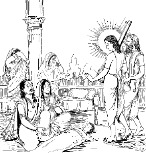
उस समय देवर्षि नारदजी वहाँ आये हैं। चित्रकेतु राजाको समझाया है—जो मर गया है, वह भगवान्के चरणोंमें गया है—ऐसा ही मानना चाहिये। जो मरा है, उसके लिये बहुत रोनेसे वह कभी मिलनेके लिये नहीं आनेवाला है। अपने लिये रोना चाहिये—आजतक मैंने भगवान्के लिये कुछ भी किया नहीं, आजतक मुझे भगवान्का दर्शन हुआ नहीं। दूसरेके लिये रोनेसे क्या लाभ है? अपने लिये रोना चाहिये। ये तो तेरा पूर्वजन्मका शत्रु था। कभी-कभी शत्रु पुत्र हो करके आता है।
कितने ही पुत्र ऐसे होते हैं, जो रात्रिमें बहुत रोते हैं। माँको रात्रिमें जागरण करना पड़ता है। कितनी ही माताएँ जब बहुत व्याकुल होती हैं, तब ऐसा बोलती हैं—मेरा शत्रु आया है। बहुत त्रास देता है। वह बड़ा होनेके बाद भी दु:ख देता है। ये तेरा पूर्वजन्मका शत्रु ही पुत्र हो करके आया था। शत्रु मर गया—ऐसा समझ करके सन्तोष मानना चाहिये।
चित्रकेतु राजाको यमुनाजीके किनारे ले गये हैं। शेषनारायणका मन्त्र दिया है। बहुत वर्षोंतक वहाँ मन्त्रका जप किया है। चित्रकेतुको शेषनारायणका दर्शन हुआ। भगवान्ने उसको अपनाया। चित्रकेतु भगवान्का पार्षद हुआ है। विद्याधर-लोकका राज्य उसको दिया है। विद्याधरोंका राजा हुआ है चित्रकेतु।
एक बार ऐसा हुआ—विद्याधरोंका राजा चित्रकेतु विमानमें बैठ करके घूमता हुआ कैलासमें आया है। सिद्ध-महापुरुष कैलासमें रहते हैं। सिद्धोंके सद्गुरु भगवान् शंकर हैं। बड़े-बड़े सिद्धोंके अखाड़े कैलासमें हैं। जन्म-सिद्ध, योग-सिद्ध, मन्त्र-सिद्ध, ज्ञान-सिद्ध, औषधि-सिद्ध—कैलासमें एक वनस्पति ऐसी मिलती है, जिसे एक बार खानेसे बारह वर्षतक प्यास नहीं लगती। बारह वर्षतक भूख नहीं लगती है।
कथामें सुननेके बाद कदाचित् आपको भी ऐसा लगेगा कि ऐसी वनस्पति मुझे मिल जाय तो बड़ा अच्छा है। भक्तिमें भूख विघ्न करती है। सभी सिद्धोंके सद्गुरु सदाशिव हैं। कैलासमें एक बार सिद्धोंकी बड़ी सभा हुई थी। अध्यक्ष-स्थानमें भगवान् शंकर विराजमान थे—आजका शिव-स्वरूप दिव्य था, गोदमें पार्वतीजीको आलिंगन देकर बिठा रखा था।
शंकरभगवान् इस प्रकार विराजमान हैं—इसका एक कारण था। कामदेव शिवजीके साथ युद्ध करनेके लिये आया था। शंकर भगवान्ने कहा—‘एक बार मैंने तुम्हें जला दिया था। तुम्हारी पत्नी बहुत रोने लगी, तब मैंने तुम्हें राखसे जीवित किया था। तू भूल गया’ ।
कामदेवने कहा—‘महाराज! मैं भूला तो नहीं हूँ। लेकिन, मेरे मनमें थोड़ी शंका है। आप तब समाधिमें बैठे हुए थे। मैं युद्ध करनेके लिये आया। आपने आँख खोली—मैं जल गया। शत्रु सावधान हो, तब युद्ध नहीं करना चाहिये। शत्रु जब गाफिल हो, तब युद्ध करना चाहिये।’
शंकरभगवान्ने पूछा—‘अब, तेरी क्या इच्छा है?’
कामदेवने कहा—‘महाराज! आप माता पार्वतीजीसे दूर क्यों बैठते हो?’
शंकरभगवान्के मन्दिरमें एक ओर पार्वतीमाता हैं, एक ओर शिवजी हैं। शंकर-पार्वती साथमें बैठे हैं—ऐसा दर्शन जल्दी नहीं होता है। यह तो देवोंका बहुत आग्रह था, जो शिवजी महाराजने लग्न किया। लग्न करनेके बाद पार्वतीजीको राम-कथा, कृष्ण-कथा सुनायी और पार्वतीजीको कहा है—एक कोनेमें बैठकर तू राम-राम कर और यहाँ बैठकर मैं राम-राम करता हूँ। शंकर-पार्वती साथमें बैठे हैं, ऐसा दर्शन जल्दी नहीं होता है। शिव प्रकृतिसे दूर रहते हैं। कामदेवने कहा है—‘आप पार्वतीजीसे दूर क्यों बैठते हो?’
शंकरभगवान्ने पूछा—‘आखिर, तेरी क्या इच्छा है?’ कामदेवने कहा कि आप पार्वतीजीको आलिंगन देकर बैठो, तब मैं बाण मारूँगा। तब आपके मनमें विकार न आये तो मैं मानूूँगा कि आप ‘महादेव’ हो। आपके मनमें विकार आ जाय तो मैं ‘महादेव’ हो गया।
शंकरभगवान्ने कहा—तेरी ऐसी इच्छा है तो वही कर।
भगवान् शंकर पार्वतीको आलिंगन देकर बैठे हैं। कामदेव बाण मारता है।
जो बहुत प्रेमसे शंकरभगवान्की पूजा करता है, पंचाक्षर शिव-मन्त्रका जप करता है—वह कामाधीन होता ही नहीं है। शंकर-पार्वतीको काम क्या कर सकता है? शिवजीके मस्तकमें ज्ञान-गंगा है।
कामदेवने बहुत बाण मारे हैं, ताकि शिव-पार्वतीके मनमें विकार आये। शंकर-पार्वती अति शान्त हैं। कामदेवको निश्चय हुआ है—शिव परमात्मा हैं।
जो कामके अधीन होता है, वही जीव है। जो कभी कामके अधीन नहीं होता है, वही ईश्वर है। भगवान् शंकर देव नहीं हैं, देवोंके देव हैं। वह शिवस्वरूप निर्विकार था, देखनेवालेके मनमें विकार आया। चित्रकेतु भगवान् शंकरकी निन्दा करने लगा—‘सभामें कैसे बैठे हैं?’
शिवजी तो अति शान्त हैं। जीव मायामें फँसा हुआ है। जो मनमें आता है, वैसा बोलता है। विचार करता नहीं है। जो मायामें फँसा हुआ है, वह क्या न करे? क्या न बोले?
चित्रकेतु शिवजीकी निन्दा करने लगा है। शिव तो शान्त हैं। माता पार्वतीको अच्छा लगा नहीं। पार्वतीमाताने शाप दिया—‘तू राक्षस हो जायगा।’
फिर तो चित्रकेतुने माताजीको वन्दन किया है। माताजीको दया आयी। माताजीने कहा—‘एक जन्मके बाद तेरा उद्धार होगा।’
भगवान्ने पाप करनेके लिये आँख नहीं दी है। जगत्के स्त्री-पुरुषोंको काम-भावसे देखनेके लिये आँख नहीं दी है। जो जगत्के स्त्री-पुरुषोंको काम-भावसे देखता है, उसके मनमें खराब चित्र आते हैं। जिसके मनमें खराब चित्र आते हैं, उसके मनमें भगवान्का स्वरूप स्थिर नहीं होता है। भक्ति करनेका अर्थ यह है कि भगवान्के स्वरूपको मनमें स्थिर करना है। संसारके चित्रोंको मनसे निकालना ही होगा।
चित्रकेतु शंकर-पार्वतीको काम-भावसे देखने लगा था। जगत्के स्त्री-पुरुषोंको जो काम-भावसे देखता है, उसके मनमें खराब चित्र आते हैं। वही राक्षस हो जाता है—वही चित्रकेतु है।
जगत्के स्त्री-पुरुषोंको लक्ष्मी-नारायणकी भावनासे देखो। सृष्टिको सुधारना अशक्य है—दृष्टिको सुधारो। जिसकी दृष्टि दिव्य है, उसकी सृष्टि भी दिव्य हो जाती है। जगत्को कौन सुधार सकता है? अपने-आपको सुधारो। जगत्को भगवद्भावसे देखो।
शंकर-पार्वतीको चित्रकेतु काम-भावसे देखने लगा था। इसलिये वह राक्षस हुआ। माताजीकी कृपा हुई—वही चित्रकेतु वृत्रासुर हुआ था। माताजीके आशीर्वादसे उसको शक्ति मिली है।
संसारके चित्रोंको मनसे निकालना है तो लक्ष्मीनारायणकी पूजा करो। चित्रकेतुकी कथा करनेके बाद लक्ष्मीनारायणकी पूजा करनेकी आज्ञा दी है। लक्ष्मीनारायणकी पूजाका रहस्य यह है—जगत्के सभी स्त्री-पुरुष तत्त्वसे लक्ष्मीनारायणके ही स्वरूप हैं। मेरे भगवान् ही अनेक रूपसे दर्शन देते हैं। जगत्को भगवद्भावसे देखो—यही लक्ष्मीनारायणकी पूजाका रहस्य है। स्कन्धकी समाप्तिमें लक्ष्मीनारायणकी पूजाका रहस्य समझाया है।
दितिका वंश-वर्णन किया है। दितिके यहाँ दो बालक हुए हैं—हिरण्याक्ष और हिरण्यकशिपु। हिरण्यकशिपुका पुत्र प्रह्लाद हुआ है। प्रह्लादका पुत्र विरोचन हुआ। विरोचनका पुत्र बलि हुआ। बलिका पुत्र बाणासुर हुआ।
इन्द्रको मारनेवाला पुत्र हो—इस इच्छासे दितिने एक वर्षका व्रत किया है। त्रिकाल लक्ष्मीनारायणकी पूजा करती है। व्रतमें थोड़ी भूल हो गयी—इन्द्रको मारनेवाला पुत्र नहीं हुआ। मरुद्गणोंका जन्म हुआ है। मरुद्गणोंकी उत्पत्तिकी कथा, पुंसवन-व्रतकी कथा सुनायी है। षष्ठ-स्कन्ध समाप्त करते हैं। अब सप्तम स्कन्धका आरम्भ होता है।
मानवशरीर भगवान्का मन्दिर है। शरीर-मन्दिरमें हृदय सिंहासन है। हृदय भगवान्का सिंहासन है। हृदयके ऊपर ‘काम’ चढ़ करके बैठा है। कामको धक्का मार करके बाहर निकालना है। काम मित्र नहीं है, काम शत्रु है। काम स्त्रीको सुख नहीं देता है, काम पुरुषको सुख नहीं देता है। काम सभीको दु:ख देता है। काम शत्रु है। उसका तिरस्कार करके मनसे उसको निकालना है। हृदय-सिंहासनमें भगवान्को बिठाना है।
अब नरसिंहभगवान्की कथा आती है। हृदयको विशुद्ध करो।
॥ श्रीहरि:॥
सप्तम स्कन्ध
भगवान् सर्वव्यापक हैं
सम: प्रिय: सुहृद् ब्रह्मन् भूतानां भगवान् स्वयम्।
इन्द्रस्यार्थे कथं दैत्यानवधीद्विषमो यथा॥
(श्रीमद्भा० ७।१।१)
सप्तम स्कन्धके आरम्भमें परीक्षित् राजाने सुन्दर प्रश्न किया है। शुकदेवजी महाराजका वन्दन करके कहा है—‘आप मुझे आज्ञा दें तो मेरे मनमें एक शंका है... पूछनेकी इच्छा है।’
शुकदेवजी महाराजने कहा—‘राजन्! पूछो।’
राजा परीक्षित्ने कहा—‘आपने कथामें अनेक बार मुझे ऐसा कहा है कि भगवान् सबमें हैं। तो जो भगवान् सबमें हैं, वह कहीं ज्यादा हैं और कहीं कम हैं—ऐसा तो नहीं है।’
शुकदेवजीने कहा—‘सर्वव्यापक भगवान् सबमें समान भावसे हैं।’
राजा परीक्षित्ने कहा—‘आप कहते हैं कि भगवान् सबमें समान भावसे हैं, किंतु जगत्में तो समता दिखती नहीं है। जगत्में जहाँ देखो, वहाँ विषमता है। भगवान् समभावसे विराजते हैं तो विषमता कौन उत्पन्न करता है?’
शुकदेवजी महाराज राजर्षिको सावधान करते हैं—मेरे भगवान् प्रकाशमय हैं। सूर्यनारायण सभीको समान प्रकाश देते हैं। आस्तिक हो या नास्तिक हो, पापी हो या पुण्यशाली हो, सज्जन हो या दुर्जन हो—सूर्यनारायण सभीको समान प्रकाश देते हैं।
बहुत-से लोग ऐसे होते हैं, जो सूर्योदय होनेसे प्रथम स्नान करते हैं। सूर्यनारायणको अर्घ्यदान करते हैं। सूर्यनारायण बाहर आते हैं, तब वे हाथ जोड़ करके खड़े रहते हैं। सूर्यनारायण उनको प्रकाश देते हैं।
बहुत-से लोग तो ऐसे भी होते हैं, जो सूर्यनारायण घरमें आयें तो भी गादी नहीं छोड़ते हैं—पड़े रहते हैं। उनको ऐसा लगता है कि मैं तो बड़ा साहब हूँ। मुझे कहनेवाला, पूछनेवाला कौन है?
भगवान् कहते हैं—‘ऊपर आ न, फिर तुम्हें बताता हूँ। मैंने तुम्हें इसलिये साहब बनाया था? बहुत मार पड़ेगी! सूर्यनारायण घरमें आये हैं... गादीमें पड़ा है।’
सूर्यनारायण प्रत्यक्ष परमात्मा हैं। उनका अनादर मत करो। सूर्यनारायण सभीको प्रकाश समान रूपसे देते हैं। परमात्माकी समता सूर्यनारायणके प्रकाशके समान है। निर्गुण-निराकार परमात्मा प्रकाशमय हैं। सभीको समान प्रकाश देते हैं। सूर्यके प्रकाशमें कोई पाप करता है, सूर्यके प्रकाशमें कोई पुण्य करता है। भगवान् प्रकाशमय हैं।
सगुण-साकार भगवान् लीला करते हैं। भगवान्की लीलामें कभी-कभी विषमता दिखती है, उस विषमतामें भी समता है।
राजाका प्रश्न है—‘वृत्रासुर भगवान्का भक्त था, उसको क्यों मारा?’
‘उसको मारा नहीं, उसको मुक्ति दी है। श्रीकृष्णकी मारमें भी प्यार है।’
भगवान्की प्रधान दो शक्तियाँ हैं—निग्रह-शक्ति और अनुग्रह-शक्ति। अनुग्रह-शक्तिसे देवोंका कल्याण करते हैं और निग्रह-शक्तिसे दैत्योंका कल्याण करते हैं। कभी-कभी माँ भी अपने दो बालकोंके साथ विषमता करती है। दोनों बालकोंमें माँका प्रेम समान है। प्रेम समान है, क्रिया समान नहीं है। जो बड़ा पुत्र है, उसको माँ थोड़ा ज्यादा खिलाती है। जो छोटा है, उसको बहुत कम देती है, कभी देती भी नहीं है। जो छोटा बालक है, उसको ऐसा लगता है कि मेरी माँ मुझे बहुत कम देती है। वह रोता है, माँगता है—माँ सुनती ही नहीं है।
माँको पूछो कि इन दो बालकोंमें तेरा प्रेम किसमें ज्यादा है? माँ ऐसा नहीं कह सकती है कि जो बड़ा है, उसमें प्रेम ज्यादा है; या जो छोटा है, उसमें प्रेम कम है। माँका प्रेम दोनों बालकोंमें समान है। प्रेम समान है, क्रिया समान नहीं है। भगवान्का स्वभाव माँके जैसा है।
शिशुपाल और दन्तवक्त्र
शुकदेवजी महाराज वर्णन करते हैं—‘राजन्! तुम जैसा प्रश्न करते हो, वैसा ही प्रश्न एक बार तेरे बाबा धर्मराज युधिष्ठिरने राजसूय यज्ञके समय किया था। राजसूय यज्ञमें हजारों ऋषि-मुनि-महात्मा आये थे। सबसे प्रथम किसकी पूजा करनी चाहिये—यह बड़ा प्रश्न उपस्थित हुआ। सभी सन्तोंने कहा कि द्वारकानाथ श्रीकृष्ण विराजमान हैं—भगवान् श्रीकृष्णकी पूजा प्रथम होनी चाहिये।
श्रीकृष्णभगवान्की पूजा की है। सभीको आनन्द हुआ है। सभामें दो-चार जीव ऐसे बैठे थे—उनको बुरा लगा। शिशुपाल खड़ा हुआ है और शिशुपाल सभामें श्रीकृष्णकी निन्दा करता है। जिस सभामें प्रथम पूजाका मान मिला, उसी सभामें श्रीकृष्णका अपमान हुआ है। श्रीकृष्ण शान्तिसे सहन करते हैं। शिशुपाल सभामें गाली देता है।
कदाचित् सभामें कोई आपको गाली दे, सभामें आपका कोई अपमान करे तो सहन करोगे? कथा सुननेके बाद सहन करो, आपका कल्याण होगा। जो सहन करता है, उसके पक्षमें भगवान् रहते हैं।
ये संसार तो ऐसा है कि भगवान् जगत्में आयें तो कितने ही जीव ऐसे हैं, जो भगवान्की भी निन्दा करते हैं। मेरी कोई निन्दा न करे—ऐसी इच्छा रखना ही नहीं। मेरी निन्दा हो तो अच्छा है—मेरा पाप कम होगा।
शुकदेवजी महाराज वर्णन करते हैं—शिशुपाल श्रीकृष्णको सौ गाली देता है। सौ गाली परिपूर्ण होनेके बाद भगवान्ने सुदर्शन चक्रसे उसका मस्तक काट डाला है। शिशुपालके शरीरसे दिव्य तेज निकला, वह तेज श्रीकृष्ण-भगवान्के चरणोंमें मिल गया। बड़े-बड़े योगियोंको जैसी सद्गति मिलती है, वैसी सद्गति शिशुपालको मिली है—चैद्ये च सात्वतपतेश्चरणं प्रविष्टे। शिशुपाल भगवच्चरणमें लीन हुआ है।
शास्त्रोंमें ऐसा लिखा है कि किसीके साथ झगड़ा नहीं करना चाहिये। कदाचित्, आपको झगड़ा करनेकी इच्छा हो तो भगवान्के साथ झगड़ा करो। भगवान्को कभी बुरा नहीं लगता है। भगवान् अति उदार हैं। भगवान् प्रेमकी मूर्ति हैं। किसी मानवके साथ झगड़ा करो तो वह वैर करेगा—वह त्रास देगा। झगड़ा करनेकी इच्छा हो तो एकान्तमें भगवान्के साथ झगड़ा करो।
शिशुपालने भगवान्के साथ वैर किया है। वैरसे शिशुपाल श्रीकृष्णका स्मरण करता है। शिशुपाल कोई साधारण नहीं है—भगवान्के धामका पार्षद है।
सनत्कुमार वैकुण्ठधाममें भगवान्का दर्शन करनेके लिये गये थे। जय-विजयने प्रतिबन्ध किया। जय-विजयको शाप दिया था। जय-विजय हिरण्याक्ष-हिरण्यकशिपु हुए। वे ही रावण-कुम्भकर्ण हुए थे। वे ही तीसरे जन्ममें शिशुपाल-दन्तवक्त्र हुए हैं। वराहभगवान्ने हिरण्याक्षका उद्धार किया। हिरण्यकशिपु प्रह्लादजीको मारनेके लिये गया है, तब स्तम्भसे नरसिंहस्वामीका प्राकटॺ हुआ। हिरण्यकशिपुका उद्धार किया है।
पितु: पुत्राय यद् द्वेषो मरणाय प्रयोजित:—धर्मराज युधिष्ठिरने प्रश्न किया है—‘प्रह्लादजीको हिरण्यकशिपु मारनेके लिये गया, इसका क्या कारण था? प्रह्लादजीकी कथा सुननेकी बहुत इच्छा है।’
हिरण्याक्ष और हिरण्यकशिपु
शुकदेवजी महाराज राजा परीक्षित्को और नारदजी धर्मराजको यह कथा सुनाते हैं—वराहभगवान्ने हिरण्याक्षका उद्धार किया। दितिको बहुत दु:ख हुआ है। हिरण्यकशिपु अपनी माँको समझाता है—‘माँ! रोना नहीं। मेरे भाईको मारनेवाला जो विष्णु है, उस विष्णुके साथ मैंने वैर किया है। मैं आज बोलता नहीं हूँ—मैं अब तपश्चर्या करनेके लिये जाता हूँ। ब्रह्माजी मुझे वरदान देंगे—कभी मुझे वृद्धावस्था आये ही नहीं, मेरा कभी मरण न हो—ऐसा वरदान मिलनेके बाद मैं विष्णुके साथ युद्ध करनेके लिये जाऊँगा।’
माँको समझाया है। हिरण्यकशिपु तप करनेके लिये मन्दराचलपर्वतपर गया है। अन्न-जलका त्याग किया है। ब्रह्माजीके मन्त्रका जप करता है। बहुत वर्षोंतक उसने तपश्चर्या की है। ऋषियोंको भी आश्चर्य हुआ है। ब्रह्माजी वहाँ आये हैं। बहुत वर्षोंतक संयम रखा था, उसकी काया कंचनके जैसी तेजस्वी हो गयी थी। हिरण्यकशिपु ब्रह्माजीकी स्तुति करता है। ब्रह्माजीको कहा है—‘मुझे वरदान दो।’
ब्रह्माजीने कहा—‘माँग ले।’
हिरण्यकशिपुने कहा—‘कभी मेरा मरण दिवसमें न हो। मेरा मरण रात्रिमें न हो। मेरा मरण मानवसे न हो। मेरा मरण पशुसे न हो। मेरा मरण पृथ्वीमें न हो, आकाशमें न हो। मेरा मरण अन्दर न हो, बाहर न हो।’
ब्रह्माजीको भी आश्चर्य हुआ है—‘अन्दर नहीं, बाहर नहीं—तेरा मरण कैसे होगा?’ हिरण्यकशिपुने कहा—‘मुझे मरना ही नहीं है।’ ब्रह्माजीने भगवान् नारायणका स्मरण करके कहा—‘ऐसा ही होगा।’
थोड़ा-सा विचार करें तो ध्यानमें आयेगा—हिरण्याक्ष और हिरण्यकशिपु दितिके दो बालक हैं। ‘दिति’ शब्दका अर्थ होता है—भेदभाव। जहाँ भेद है, वहीं भय है। जहाँ अभेद है, वहाँ अभय है। माँ और कन्या—दो एक होते हैं। कन्याको माँका कभी भय नहीं लगता है। सास और बहू—दो भिन्न होते हैं। बहूको सासका भय लगता है। जहाँ भेद है, वहाँ भय है। पिता और पुत्र—दोनों एक होते हैं। नौकर और मालिक भिन्न होते हैं। पुत्रको पिताका भय नहीं लगता है। नौकरको मालिकका भय लगता है।
‘दिति’ शब्दका अर्थ है—भेद-बुद्धि। जहाँ भेदभाव है, वहाँ अहंता-ममता आती है। हिरण्याक्ष ममता है, हिरण्यकशिपु अहंता है। यह अच्छा है, यह खराब है। यह काला है, यह गोरा है। यह जवान है, यह बुड्ढा है। भेदभावसे जो जगत्को देखता है, उसीके मनमें विकार-वासनाएँ आती हैं।
जगत्को जो भगवद्भावसे देखता है...। इस संसारमें क्या खराब है और क्या अच्छा है? यह कहना बड़ा कठिन है। आप छोटे थे, तब आपको खिलौने अच्छे लगते थे। बालकको खिलौनेमें सौन्दर्य दिखता है। बालकका खिलौना कोई उठा ले तो वह रोने लगता है। अब आपको खिलौनेमें सौन्दर्य कहाँ दिखता है?
मनको शान्त रखना हो तो जगत्का विचार छोड़ दो। जगत्में कुछ भी खराब नहीं है। इस संसारमें श्रीकृष्णके बिना कुछ अच्छा भी नहीं है। आज आपको जो अच्छा लगता है, सम्भव है कि कल आपको वह अच्छा नहीं लगेगा। मन बदलता है, स्वभाव बदलता है—प्रारब्धके अनुसार जीवन भी बदलता है। जीवनमें ऐसा अनुभव होता है—आज आप जिसकी प्रशंसा करते हैं, एक दिन उसकी निन्दा भी करोगे। जगत्में कुछ भी खराब नहीं है और जगत्में श्रीकृष्णके बिना कुछ अच्छा भी नहीं है।
‘दिति’ भेद-बुद्धि है। उसके दो बालक हैं—अहंता और ममता। आप जिसको अच्छा समझते हो—वह ममता होती है। आप जिसको खराब समझते हो, उसमें द्वेष होता है—मन बिगड़ता है।
हिरण्याक्ष ममता है। ममताको मारना बड़ा कठिन है, अभिमानको मारना बड़ा कठिन है। हिरण्यकशिपु देहाभिमान है। देहाभिमान दु:ख देता है। मैं पुरुष हूँ, मैं स्त्री हूँ—यह देहाभिमान भूलता नहीं है। भगवान्की भक्ति ऐसी करो कि याद आये ही नहीं कि मैं स्त्री हूँ या मैं पुरुष हूँ। जिसको याद आता है—मैं पुरुष हूँ, मैं स्त्री हूँ—उसको काम मारनेके लिये जाता है। भगवान्की भक्ति ऐसी करो—स्त्रीत्वको, पुरुषत्वको भूल जाओ। जो देह-भावको भूलता है, उसीको देवका दर्शन होता है।
हिरण्याक्ष ममता है और हिरण्यकशिपु देहाभिमान है—अहंता है। जहाँ देहाभिमानका राज्य है, वहाँ दु:ख है। देहाभिमान साधारण ज्ञान या भक्तिसे मरता नहीं है। प्रह्लादके जैसी भक्ति करो, सतत भक्ति करो, तीव्र भक्ति करो।
हिरण्यकशिपुको सायंकालमें मारा है। हिरण्यकशिपुने कहा था—अन्दर मेरा मरण न हो, बाहर मेरा मरण न हो। देहरीमें उसको मारा है। देहरी अन्दर नहीं है, बाहर नहीं है—मध्यमें है।
प्रत्येक संकल्पके मध्यमें भगवान्को रखो। ब्राह्मण सन्धिकालमें सन्ध्या करते हैं। दिवसकी जब समाप्ति होती है और रात्रिका जब आरम्भ होता है, तब सायं-सन्ध्या की जाती है। रात्रिकी जब समाप्ति होती है और दिवसका जब आरम्भ होता है, तब प्रात:-सन्ध्या होती है। ब्राह्मण समयकी सन्धिको सँभालते हैं। भगवान्के भक्त प्रत्येक संकल्पकी सन्धिमें भगवान्को रखते हैं। मन संकल्पसे ही जीवित है। संकल्परहित मन भगवान्में मिल जाता है। दीपकमें तेल न रहे तो दीपक शान्त हो जाता है। संकल्परहित मन भगवान्में मिल जाता है। एक संकल्प हुआ और दूसरा संकल्प होनेवाला है—दोनोंके बीचमें श्रीकृष्णको रखो।
प्रह्लाद-चरित
ईश्वरसे विभक्त न होना ही भक्ति है। थोड़े समयके लिये लग्न नहीं होता है। भक्ति करनेका अर्थ यह है कि भगवान्के साथ लग्न करना है। भगवान्के साथ एकरूप होना है। प्रत्येक संकल्पकी सन्धिमें भगवान्को रखो—सतत भक्ति करो। प्रह्लादके जैसी जो भक्ति करता है, वह देहभाव भूलता है। जिसको याद आता है—मैं पति हूँ, मैं पत्नी हूँ, उसको काम त्रास देनेके लिये जाता है। भगवान्की भक्ति ऐसी करो कि प्रभु-भक्तिमें याद आये नहीं कि मैं पति हूँ या मैं पत्नी हूँ। देहभावको भूलना है। तभी भगवद्भाव जाग्रत् होता है। प्रह्लादजीके जैसी सतत भक्ति करो तो देहाभिमानरूपी हिरण्यकशिपु मरेगा। साधारण भक्तिसे, साधारण ज्ञानसे देहाभिमान नहीं मरता है।
भागवतकी कथा सन्त अनेक रीतिसे करते हैं। हिरण्यकशिपुकी शक्ति बहुत बढ़ गयी थी। शक्तिका उपयोग हिरण्यकशिपुने भोग-विलासमें किया। इसलिये हिरण्यकशिपुको लोग राक्षस मानते हैं।
प्रह्लादने शक्तिका उपयोग भक्तिके लिये किया। शक्ति भोगके लिये नहीं है, शक्ति भक्तिके लिये है। समय, सम्पत्ति और शक्तिका जो भोग-विलासमें दुरुपयोग करता है—वही राक्षस है। समय, सम्पत्ति और शक्तिका जो परोपकारमें—भगवद्भक्तिमें सदुपयोग करता है—वही देव है।
बाप राक्षस और पुत्र देव हो गया। हिरण्यकशिपुकी गणना राक्षसोंमें होती है और प्रह्लादजीकी गणना देवोंमें होती है। मानवका जन्म देव होनेके लिये है। समय, सम्पत्ति और शक्तिका सदुपयोग करो। जो सदुपयोग करता है, वही देव होता है। समय, सम्पत्ति और शक्तिका जो दुरुपयोग करता है, वही राक्षस हो जाता है। हिरण्यकशिपु राक्षस है, प्रह्लादजी देव हैं।
हिरण्यकशिपुके राज्यमें प्रजा बहुत दुखी हुई है। भगवान्ने कहा है—‘मेरे भक्त प्रह्लादको जब वह त्रास देगा, तब मैं अवतार धारण करूँगा।’
प्रह्लादजी पाँच वर्षके हुए हैं। पूर्वजन्मके महान् भगवद्भक्त हैं। प्रह्लादजी सतत भक्ति करते हैं। प्रह्लादजीने अपनी भक्तिको छिपाया है।
भक्ति अलौकिक धन है। भक्ति प्रकट न हो। भक्ति प्रकट हो तो भक्ति बढ़ती नहीं है। भक्ति प्रकट हो जाय तो भक्तिमें विघ्न आता है। जगत्को बताना—मैं संसारमें फँसा हुआ साधारण जीव हूँ। बाहरसे जगत्के साथ प्रेम बताओ, अन्दरसे प्रेम भगवान्के साथ करो।
प्रह्लादजी सतत भक्ति करते हैं। प्रह्लादजीने अपनी भक्तिको छिपाया है—कोई जानता नहीं है। हिरण्यकशिपुने दैत्योंके कुलगुरु शंडामर्कको कहा है—‘बालकको घरमें ले जाओ—राजनीति पढ़ाओ।’
जिसको भक्तिका आनन्द मिला है, उसको पुस्तक पढ़नेकी भी इच्छा नहीं होती। पुस्तककी वासना भक्तिमें विघ्न करती है। प्रह्लादजीको पढ़नेकी इच्छा तो नहीं है। भगवान्के भक्तोंका एक नियम होता है—जबतक देहका भान है, तबतक सभीको मान देते हैं। देह-भान भूलनेके बाद फिर व्यवहार रहता ही नहीं है।
मेरे गुरु हैं, इनका अपमान न हो—यह सोचकर पढ़नेकी इच्छा न होते हुए भी प्रह्लादजी पढ़ते हैं। गुरुजी जो पूछते हैं, उसका उत्तर देते हैं। धीर-गम्भीर हैं।
गुरुजीको आश्चर्य होता है—यह बालक बड़ा बुद्धिमान् है!
छ: महीनेतक राजनीति उसको पढ़ायी है। फिर प्रह्लादजीको हिरण्यकशिपुके पास ले गये हैं।
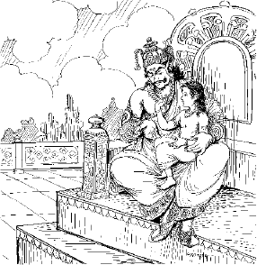
आज छ: महीनेके बाद बालक घरमें आया है। पिताजीको वन्दन करता है। पिताने उठाया है, गोदमें लिया है, प्यार किया है—‘बेटा, तुम्हें जो उत्तम पाठ आता हो, सो बोल!’
प्रह्लादजीने विचार किया—पिताजी कहते हैं कि उत्तम पाठ बोलो।
‘पिताजी! मेरे अनेक जन्म मुझको याद आते हैं
तत्साधु मन्येऽसुरवर्य देहिनां
सदा समुद्विग्नधियामसद्ग्रहात्।
हित्वात्मपातं गृहमन्धकूपं
वनं गतो यद्धरिमाश्रयेत॥
(श्रीमद्भा० ७।५।५)
अनेक बार मैं राजा हुआ, अनेक जन्ममें मैं रानी हुआ, अनेक बार मैं मन्त्री हुआ—सिपाही हुआ। अनेक जन्मके अनुभवसे मुझे ऐसा विश्वास हो गया है कि संसारमें स्वार्थ और कपटके अतिरिक्त दूसरा कुछ भी नहीं है।
मानव मानवके साथ प्रेम करता ही नहीं है—अपने स्वार्थके साथ प्रेम करता है। घरके लोग सुख देते हैं—इसलिये प्रेम करता है। घरमें लोग दु:ख दें तो कोई प्रेम नहीं करेगा। मानव अपने स्वार्थके साथ प्रेम करता है।
पत्नी सुख देती है—इसलिये पति प्रेम जताता है। पत्नी दु:ख दे तो प्रेम नहीं करेगा। पत्नीको कोई बहुत बीमारी हो जाय तो पाँच-दस हजार खर्च करता है। वर्ष-दो वर्ष उसकी सेवा भी करता है—तो भी प्रकृति न सुधरे तो मन्दिरमें जाकर भगवान्को कहता है—‘दो साल हुए, घरमें पड़ी है... आप अब थोड़ी कृपा करो तो अच्छा है।’ ‘कृपा करो’ का मतलब कि वह मर जाय तो अच्छा है—मर जाय तो दूसरा विवाह करूँगा।
घरके लोग दु:ख दें तो कोई प्रेम करता नहीं है—मानव अपने स्वार्थके साथ प्रेम करता है। जहाँ तेरा और मेरा है, जहाँ सुख भोगनेकी वासना है—वहाँ कपट करना ही पड़ता है। सभी लोग कपट करते हैं। आप भी करते होंगे। ज्यादा कथा करनेकी जरूरत नहीं है—सभी कपट करते हैं। जीवके साथ नि:स्वार्थ-भावसे प्रेम एक परमात्मा ही करते हैं।
‘पिताजी! मुझे उत्तम तो यही लगता है कि एकान्तमें बैठ करके नारायणका ध्यान करूँ, नारायणकी पूजा करूँ, नारायणके साथ बातें करूँ। खेलनेकी इच्छा हो तो एकान्तमें बालकृष्णलालके साथ खेलूँ। अब किसी स्त्रीके साथ, किसी पुरुषके साथ खेलना नहीं है। संसारमें सार नहीं है। अनेक जन्मका मुझे अनुभव है। खेलनेकी इच्छा हो तो भगवान्के साथ खेलूँ—वनं गतो यद्धरिमाश्रयेत।’
प्रह्लादजी बहुत सुन्दर बोले हैं। हिरण्यकशिपुको अच्छा लगता नहीं है। बालकको गोदमेंसे धकेल दिया है। राक्षसोंको कहा है—‘मारो! मारो!! यह मेरा शत्रु है।’
राक्षस मारनेके लिये आते हैं। सभीमें प्रह्लादको नारायणका दर्शन होता है। भगवान्के स्वरूपमें आसक्ति ही भक्ति है। आपको सौन्दर्य कहाँ दिखता है? जिसको संसारमें सौन्दर्य दिखता है, वह संसारकी भक्ति करता है। जिसको भगवान्में सौन्दर्य दिखता है, वह भगवान्की भक्ति करता है। भगवान्के स्वरूपमें आसक्ति ही भक्ति है।
प्रह्लादजीकी दृष्टि ऐसी दिव्य है कि राक्षसोंमें भी उनको नारायणका ही दर्शन होता है। मारनेके बहुत प्रयत्न किये हैं—सफलता मिली नहीं। हिरण्यकशिपुको भय लगता है। शंडामर्कने कहा है—‘बालक है, थोड़े दिनोंके बाद भूल जायगा।’ प्रह्लादको वरुण-पाशमें बाँध दिया है। शंडामर्क अपने घरमें ले गये हैं—राजनीति पढ़ाते हैं।
एक दिन गुरुजी बाहर गये थे। सभी बालक खेलनेको तैयार हुए हैं। प्रह्लादजीने बालकोंको सुन्दर उपदेश दिया है—‘आजसे ही मेरे भगवान्की भक्ति करो। आप सभीने देखा है—मुझे मारनेका बहुत प्रयत्न किया, किंतु मेरा बाल बाँका हुआ नहीं। भगवान् मेरा रक्षण करते हैं। लौकिक सुखके लिये प्रयत्न करनेकी जरूरत नहीं है। दु:खके लिये कौन प्रयत्न करता है? बिना प्रयत्न दु:ख आता है। बिना प्रयत्न सुख भी आता है। सुख और दु:ख प्रयत्नसे प्राप्त नहीं होते हैं। जो प्रारब्धमें लिखा है, वही मिलता है। जिसके भाग्यमें सुख लिखा है, उसको जंगलमें पेड़के नीचे भी सुख मिलता है। जिसके भाग्यमें दु:ख लिखा है, वह बँगलेमें भी रहता हो तो भी दुखी रहता है। प्रयत्न परमात्माके लिये करो। मेरे प्रभु जल्दी प्रसन्न होते हैं। प्रेमसे भगवान्के नामका कीर्तन करो। मेरे भगवान्का दर्शन होगा।’
बालकोंने कहा—‘प्रह्लाद! कभी-कभी हम भगवान्का कीर्तन तो करते हैं, किंतु भगवान्का दर्शन नहीं होता है।’ प्रह्लादजीने कहा—‘आँखें बन्द करो। अन्दरकी आँख जब खुलती है—तब दर्शन होता है।’ बालक आँखें बन्द करते हैं। प्रह्लादजीने एक-एकको स्पर्श किया है। प्रह्लादजीके रोम-रोमसे राम-नामका जप होता है। प्रह्लादजीका मन नारायणाकार हो गया है।
संसारी मानवका मन विषयाकार होता है। सन्तोंका मन नारायणाकार हो जाता है। जिसका मन नारायणाकार है, जिसने रोम-रोममेंसे जप किया है—ऐसे सन्त जिसको स्पर्श करते हैं...सहज सुमिरन होत है, रोम-रोमसे राम!
प्रह्लादजीका स्पर्श हुआ, सभीको भक्तिका रंग लगा है। बालक कहते हैं—‘प्रह्लाद! आँख बन्द करनेके बाद नीला-नीला प्रकाश दिखायी देता है।’
प्रह्लादजी समझाते हैं—‘यह जो नीला प्रकाश दिखायी देता है, उसीको ज्ञानी पुरुष निराकार ब्रह्म कहते हैं। इस प्रकाशमें आँख और मनको स्थिर करो, प्रेमसे ‘हरे कृष्ण-हरे कृष्ण’ कीर्तन करो—मेरे श्रीकृष्ण प्रकट हो जायँगे। कीर्तनमें ताली बजाओ। ताली नाद-ब्रह्म है। नाद-ब्रह्मकी उपासना करनेसे जगत्की विस्मृति होती है। मधुर नाद सुननेके बाद नाग डोलने लगता है। नागको याद रहता नहीं कि उसके फनमें विष है। नाद-ब्रह्मकी उपासना करनेसे जगत्का सम्बन्ध छूटता है, जगत्की विस्मृति होती है। नाद-ब्रह्म और नाम-ब्रह्म जब एक होते हैं, वहाँ परब्रह्म प्रकट होता है।’
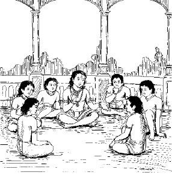
बालकोंको प्रह्लादजी समझाते हैं—‘प्रेमसे कीर्तन करो, भगवान्का दर्शन होगा। कीर्तनमें थोड़ा भी हृदय पिघल जाय, कीर्तनमें थोड़ी तन्मयता हो आनन्द मिले तो समझना—भगवान्का दर्शन हुआ है। आनन्द ही भगवान् है। भगवान् प्रत्यक्ष दर्शन देते नहीं हैं—इसका एक कारण है। भगवान्का तेज सहन करनेकी मानवमें शक्ति नहीं है। भगवान् तेजोमय हैं। इसलिये प्रत्यक्ष दर्शन देते नहीं हैं—आनन्दस्वरूपसे दर्शन देते हैं। भजनमें, कीर्तनमें हृदय पिघलता है, आँख थोड़ी गीली हो जाती है, देह-भान भूलता है, अन्दरका आनन्द मिलता है, आनन्द ही भगवान् हैै।’
बालकोंको प्रह्लादजी समझाते हैं—‘प्रेमसे जो कीर्तन करेगा, उसको मेरे भगवान्का दर्शन होगा’—
हरे कृष्ण हरे कृष्ण कृष्ण कृष्ण हरे हरे।
हरे राम हरे राम राम राम हरे हरे॥
कीर्तनमें तन्मय होकर प्रह्लादजी नाचने लगे हैं, सभी बालक भी नृत्य करते हैं, उद्दाम कीर्तन करते हैं।
तभी वहाँ शंडामर्क आये हैं। उन्होंने बालकोंको कीर्तनमें मग्न देखा तो सोचने लगे कि हिरण्यकशिपुने कहीं यह सब जान लिया तो बड़ा अनर्थ हो जायगा। उन्होंने प्रह्लादजीको समझाया—‘यह क्या ऊधम मचा रहे हो? बन्द करो यह भजन-कीर्तन।’
परन्तु, उनकी कौन सुनता? बालकोंका मन तो भगवान्के नाम-संकीर्तनमें डूब चुका था। बालकोंने गुरुजीका आदेश सुना ही नहीं। तब शंडामर्कने दौड़कर प्रह्लादजीका हाथ पकड़ा। प्रह्लादजीका शरीर तो दिव्य था। जैसे ही शंडामर्कने प्रह्लादजीका स्पर्श किया तो वे स्वयं भी नाचने लगे।
उसी समय हिरण्यकशिपुने सोचा कि गुरुजी प्रह्लादको क्या शिक्षा दे रहे हैं—यह जानना चाहिये। उसने एक सेवकको पाठशालामें भेजा। सेवकने वहाँ जा करके देखा कि नाम-संकीर्तनमें मगन होकर सभी बालक और साथमें गुरुजी भी नाच रहे हैं। उस सेवकने सोचा कि राजाको यदि इन सब बातोंका पता चलेगा तो वह तो गुरुजीकी हत्या ही करवा देगा। सो, सेवकने गुरुजीका हाथ पकड़कर उन्हें आसनपर बिठानेका प्रयत्न किया। किन्तु, गुरुजीके स्पर्शसे वह सेवक भी नाचने लगा। वह भूल गया कि वहाँ वह किस कामसे आया था। सेवकके लौटनेमें देरी हुई तो राजाने दूसरे सेवकको भेजा। उसने वहाँ जा करके देखा कि सब-के-सब नाम-संकीर्तनमें पागल होकर नाच रहे हैं। उसने जैसे ही भजन-मण्डलीके एक बालकको पकड़कर रोकना चाहा, कि उसके स्पर्शसे वह स्वयं भी कीर्तन करते हुए नाचने लगा।
इस तरह राजाने और भी सेवक भेजे,किन्तु वे सब-के-सब पाठशालामें जाकर नाचने लगे—कीर्तन करने लगे। अन्तमें हिरण्यकशिपु स्वयं दौड़ता हुआ वहाँ आया। उसने देखा कि बालकोंसहित गुरुजी और सभी सेवकगणनाम-संकीर्तनमें लीन होकर नाच रहे हैं।
तब हिरण्यकशिपु क्रोधसे आग-बबूला हो उठा। उसने कीर्तन-मण्डलीमें घुसकर शंडामर्कको पकड़ा और डाँटकर बोला—‘मेरा यह बालक स्वयं तो सुधरता नहीं और दूसरे बालकोंको भी बिगाड़ रहा है।’
संकीर्तन-मण्डलीके स्पर्शका असर हिरण्यकशिपुपर नहीं हुआ। इसका एक कारण है—बिजलीका बल्ब अगर बिगड़ा हुआ हो तो उसमें विद्युत्-प्रवाह होनेपर भी प्रकाश उत्पन्न नहीं होता। हिरण्यकशिपु बिजलीके बिगड़े हुए बल्बकी ही तरह है।
राजाने क्रोधमें प्रह्लादजीको उठाकर धरतीपर पटक दिया। धरतीमाताने उसे गोदमें उठा लिया। प्रह्लादजीने पिताको प्रणाम करके कहा—‘पिताजी! आप कदाचित् यह मानते हैं कि आप बहुत बड़े वीर हैं। किंतु, वीर तो वही है, जिसने अपने अन्दरके शत्रुओंको पराजित कर लिया है। आप ऐसा मानते हैं कि आपने जगत्को जीत लिया है, किन्तु जगत्-विजेता तो वह है, जिसने अपने मनको जीत लिया है। पिताजी! काम-क्रोध आदि छ: चोर आपके मनमें बसे हुए हैं, जो आपके विवेकरूपी धनको लूट रहे हैं। पिताजी! आपके मुखपर आज मृत्युकी छाया दिखायी दे रही है, इसलिये क्रोध न करें और राग-द्वेषको त्यागकर परमात्माका ध्यान करें। मेरे नारायणका भजन करें।’
प्रह्लादजीकी बातें सुुन करके हिरण्यकशिपु क्रोधसे पागल हो उठा। गरजकर बोला—‘मेरा पुत्र होकर मुझे ही उपदेश दे रहा है—आज मैं तुझे मारूँगा। बता, तेरा रक्षक विष्णु कहाँ है?’
प्रह्लादजीने कहा—‘पिताजी! मेरे भगवान् तो सर्वव्यापक हैं। वे मुझमें और आपमें भी हैं।’
हिरण्यकशिपुने पूछा—‘तेरा भगवान् सर्वत्र है तो इस खम्भेमें भी वह दिखायी क्यों नहीं देता—‘क्वासौ यदि स सर्वत्र कस्मात् स्तम्भे न दृश्यते?’
प्रह्लादजी निर्भय होकर कहते हैं—‘हाँ, पिताजी! मेरे प्रभु इस खम्भेमें भी हैं। आपकी आँखमें काम है, क्रोध है, इसलिये वे आपको नहीं दिखते।’
हिरण्यकशिपु क्रोधसे उन्मत्त हो उठा—‘मैं अभी इस खम्भेको तोड़कर विष्णुको मार डालूँगा।’
हिरण्यकशिपु दौड़कर अपनी गदा उठाने जाता है। उसी समय स्तम्भके अन्दरसे प्रह्लादजीको गड़गड़ाहटभरी गर्जना सुनायी देती है—गुर्र-गुर्रऽऽ। बालक प्रह्लादको विश्वास हुआ है—भगवान् आ गये हैं। आनन्दमें बालक नाचने लगा है—मेरा वचन सत्य होगा।
हिरण्यकशिपु अखाड़ेमें गया है, हजार मनकी गदा उसने उठायी है। वहाँसे गदाको बार-बार घुमाता हुआ दौड़कर आता है—‘अरे! बता... बता... तेरा विष्णु कहाँ है?’
‘मेरे भगवान् इस खम्भेमें हैं।’ प्रह्लादजीने निर्भय हो करके उत्तर दिया है।
हिरण्यकशिपु गदासे स्तम्भके ऊपर प्रहार करता है। स्तम्भ फट जाता है और भगवान् नरसिंह प्रकट हो जाते हैं, गर्जना करते हैं। मुख सिंहके जैसा है, श्रीअंग मानवके जैसा है, आँख लाल-लाल हैं। बार-बार गुर्रऽऽ... गुर्रऽऽ...गर्जना करते हैं—प्रलय करेंगे क्या? पृथ्वी थर-थर काँपने लगी है। ब्रह्माको भय लगता है।
हिरण्यकशिपु समझ गया कि मेरा काल आ गया है। भगवान्ने हाथ लम्बा करके उसको पकड़ा है। बहिरंगमें क्रोध है, अन्दर तो प्रेम भरा हुआ है। इसलिये हिरण्यकशिपुको गोदमें लिया है—यह मेरे भक्त प्रह्लादका पिता है। गोदमें लेकर उससे पूछा है—‘बेटा, बोल! दिन है कि रात्रि है—मानव है कि पशु है—...मैं तुम्हें मारूँगा।’ वज्र-नखका प्रहार किया, हिरण्यकशिपुको फाड़ डाला है। देव-गन्धर्व जय-जयकार करते हैं—नरसिंहभगवान्की जय!
हिरण्यकशिपुका उद्धार किया है। फिर भी क्रोध शान्त नहीं होता है। बार-बार गर्जना करते हैं। ...अब ये प्रलय करेंगे क्या?
ब्रह्माजी दूरसे स्तुति करते हैं—‘शान्त हो जाओ, शान्त हो जाओ। राक्षस मर गया है।’ फिर भी क्रोध शान्त नहीं होता है। ब्रह्माजीने प्रह्लादजीको कहा है, ‘तेरे लिये भगवान् प्रकट हुए हैं, तू ही भगवान्को शान्त कर।’
सिंहका बालक सिंहसे नहीं डरता है। बालकको जरा भी भय नहीं है। हाथ जोड़ करके वन्दन करता हुआ आया है। नरसिंहस्वामीके चरणोंमें वन्दन करता है। प्रह्लादको आया हुआ देख भगवान्की आँखें भीग गयीं, हृदय पिघला हुआ है, बालकको गोदमें उठाया है।
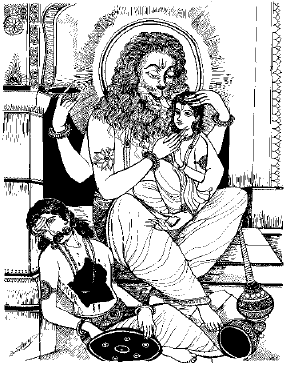
हिरण्यकशिपुके लिये नरसिंहभगवान् वज्रसे भी कठिन थे। प्रह्लाद जब आते हैं, तब भगवान् मक्खनसे भी कोमल हो जाते हैं—मेरा प्रह्लाद आया है... प्रह्लाद आया है। बालकको गोदमें लेकर प्यार करते हैं। बार-बार मुखको निहारते हैं, सिरके ऊपर हाथ फेरते हैं—मेरा बालक बड़ा कोमल है।
‘बेटा! तेरे पिताने तुम्हें त्रास दिया है। मेरा बालक धीर-गम्भीर है। तूने बहुत दु:ख सहन किया है। आज तेरी कोमल कायाको देख करके मुझे ऐसा लगता है कि मुझे आनेमें बहुत विलम्ब हो गया। मेरे बालकको बहुत सहन करना पड़ा।’ प्रह्लादकी भक्ति ऐसी है कि विलम्बके लिये भगवान् क्षमा माँगते हैं—‘विलम्बके लिये मैं क्षमा माँगता हूँ।’
प्रह्लादजी बारम्बार वन्दन करते हैं—‘आप मेरे स्वामी हो, मैं आपका सेवक हूँ। मैंने जरा भी दु:ख सहन किया नहीं है। मैं तो आपके दर्शन, आपके नामके आनन्दमें मग्न रहता हूँ। मैंने जरा भी दु:ख सहन नहीं किया है।’
भक्त और भगवान् दोनों एक हुए हैं। तब नरसिंहस्वामीका क्रोध शान्त हुआ। ब्रह्मादिक देव नरसिंहभगवान्की पूजा करते हैं, आरती करते हैं।
बालभक्त प्रह्लादजीका वचन सत्य करनेके लिये, संसारमें सर्वत्र मेरी ही सत्ता है—जगत्को यह समझानेके लिये स्तम्भसे नरसिंहभगवान् प्रकट हुए हैं। सबमें भगवान् मिले हुए हैं। ऐसा जिसको अनुभव होता है, उसको पाप करनेकी जगह मिलती ही नहीं है।
मानव जब पाप करता है, तब ऐसा समझता है कि यहाँ भगवान् नहीं हैं, भगवान् मन्दिरमें ही बैठे हैं।
राजा राजमहलमें रहता है, लेकिन राज-सत्ता उसके राज्यके अणु-परमाणुमें मिली हुई है। राजसत्ता निराकार है, राजा साकार है। राजसत्ताका कोई रंग नहीं है, राजसत्ताका कोई आकार नहीं है, फिर भी राजसत्ताको मानना ही पड़ता है। जो राजसत्ताको नहीं मानता, उसको सजा होती है। राजसत्ताको जिस प्रकार मानते हो; उसी प्रकार, परमात्माकी सत्ता सर्वत्र है—ऐसा अनुभव करो।
भक्तिके लिये धन और ज्ञान नहीं, प्रेम चाहिये
व्यवहार जिसका शुद्ध है, उसीको भक्तिमें आनन्द आता है। मानव भक्ति करता है, किंतु उसको भक्तिमें आनन्द नहीं आता—इसलिये भक्ति छोड़ता है। भक्तिमें आनन्द आये तो मानव भक्ति नहीं छोड़ेगा। जो बर्फका स्पर्श करता है, उसको ठण्डक लगती ही है।
भगवान्की भक्ति करनेपर आनन्द क्यों नहीं मिलता है? मानव भगवान्की भक्ति धनसे करता है, मानव भगवान्की भक्ति तनसे करता है। मनसे भक्ति करे तो आनन्द मिले। मनसे भक्ति करनेका अर्थ यह है कि मन भगवान्को स्पर्श करे। मन जबतक भगवान्को स्पर्श नहीं करता, तबतक भक्ति बराबर नहीं होती है।
मल-मूत्रसे भरा हुआ यह शरीर है। यह शरीर प्रभुको स्पर्श करनेलायक नहीं है। मल-मूत्रसे भरा हुआ शरीर भगवान्को मिलनेके लायक नहीं है। भगवान्को तनसे नहीं, मनसे मिलना है। जो झूठ बोलता है, जो कपट करता है, उसका मन भगवान्को स्पर्श नहीं कर सकता। अति शुद्ध मन ही भगवान्को स्पर्श कर सकता है। व्यवहारको शुद्ध रखो, व्यवहारमें कपट मत करो। कपट करनेसे थोड़ा लाभ होता होगा, नुकसान बहुत होता है। जो कपट करता है, उसका मन अशान्त रहता है। जो कपट करता है, उसका मन भगवान्को स्पर्श नहीं करता है। व्यवहारको शुद्ध रखो। व्यवहारकी शुद्धि तब होती है, जब ईश्वर सबमें है—मानव ऐसा समझता है।
दुकानमें जो ग्राहक आया है, व्यापारी उसमें भगवान्का दर्शन करके व्यापार करे तो व्यापार भी भक्ति हो जाय। जिसको ग्राहकमें भगवान्का दर्शन होता है, वह व्यापारमें भी भक्ति ही करता है—भगवान् इस रूपसे मेरी दुकानमें आये हैं। व्यवहारको भक्तिमय बनाओ। व्यवहार और ईश्वर दोनों भिन्न नहीं हैं।
बहुत-से लोग ऐसा समझते हैं कि प्रात:कालमें स्नान करनेके बाद घण्टा-दो घण्टा भक्ति करनी चाहिये, फिर तो बीस-बाईस घण्टा व्यवहारका काम है। घण्टा-दो घण्टा भक्ति करो और फिर भगवान्को भूल जाओ—ये भक्ति बराबर नहीं है। सर्वकाल भक्ति करो। जिस मानवके साथ आप बोलते हो, उस मानवमें भगवान् हैं। जिस मानवके साथ आप काम करते हो, उसमें भगवान् हैं।
कदाचित्, आपको शंका होगी कि भगवान् दिखते क्यों नहीं हैं? निराकार भगवान् आँखसे नहीं दिखते हैं। निराकार भगवान्का अनुभव बुद्धिसे किया जाता है। किसी श्रीमान्की मोटर वेगसे जा रही है, खास बहुत ही महत्त्वका काम है, मार्गमें एक सिपाही खड़ा है—उसने हाथ ऊँचा किया तो मोटर खड़ी करनी ही पड़ेगी। कदाचित्, वह श्रीमान् ऐसा विचार करें कि ऐसे बहुत-से सिपाहियोंको तो मैं नौकर रख सकता हूँ। ...सिपाहीको मान नहीं है, सिपाहीके पास जो राजसत्ता है—उसको मान है। राजसत्ता दिखती नहीं है।
मानव जब पाप करता है, तब ऐसा समझता है कि यहाँ भगवान् नहीं हैं। ऐसी कोई जगह नहीं है, जहाँ भगवान् विराजमान न हों। भगवान् सर्वकाल और सबमें विराजमान हैं। स्तम्भमें भी भगवान् हैं। सबमें जो भगवान् हैं, वे अति सूक्ष्म हैं। दूधमें मक्खन है, मक्खन अति सूक्ष्म है। दूधमें जो मक्खन है, वह आँखसे नहीं दिखता है, बुद्धिसे दिखता है। दूध पीनेसे मक्खनका स्वाद नहीं आता है। दूधमें हाथ डालनेसे मक्खन हाथमें नहीं आता है तो भी बुद्धि कहती है कि दूधमें मक्खन मिला हुआ है। दूधका दही बनाओ, मन्थन करो—तब मक्खन निकलेगा।
थोड़ा मनका मन्थन करो। बुद्धिसे सबमें परमात्माका अनुभव करो। व्यवहारको शुद्ध रखो। शुद्ध व्यवहार ही भक्ति हो जाता है। भक्ति केवल मन्दिरमें ही करनी है—ऐसा नहीं है। भक्ति सर्वकाल करो, भक्ति सर्व ठिकाने करो।
शुकदेवजी सावधान करते हैं—नरसिंह-अवतारमें भगवान्ने जगत्को बोध दिया है कि मैं सबमें हूँ। प्रह्लादकी जैसी भक्ति करो तो मैं प्रकट हो जाऊँगा। भक्तिसे भगवान् प्रकट होते हैं।
शुकदेवजी महाराज वर्णन करते हैं—प्रह्लादजी नरसिंहभगवान्की गोदमें विराजमान हैं। प्रह्लादजी नरसिंहभगवान्की स्तुति करते हैं। आप भी भगवान्की स्तुति करो। भगवान्का वन्दन करो। आपका मन, आपकी वाणी शुद्ध हो जायगी। किसी पुरुषकी स्तुति मत करो, किसी स्त्रीकी स्तुति मत करो। मानवकी निन्दा करना पाप है। किसी भी मानवकी निन्दा नहीं करना। किन्तु, याद रखना—किसी भी मानवकी स्तुति भी करना नहीं। किसी स्त्री-पुरुषका जो वर्णन करता है, उसका मन बहुत बिगड़ता है। निन्दा करना पाप है, मानवकी स्तुति करना भी अच्छा नहीं है।
जीवनमें ऐसा अनुभवमें आता है कि आज आप जिसकी स्तुति करते हो, थोड़े ही दिनके बाद आप उसकी निन्दा भी करोगे। स्वभाव बदलता है, जीवन बदलता है। किसीकी निन्दा मत करो, किसी भी मानवकी प्रशंसा भी मत करो। प्रशंसा भगवान्की करो। परमात्माका वर्णन करनेसे, प्रभुकी स्तुति करनेसे वाणी और मन शुद्ध होते हैं।
भगवान् बड़े उदार हैं। भगवान् अतिशय प्रेम करते हैं। भगवान् अति सरल हैं। प्रभुके एक-एक सद्गुणोंका स्मरण करो। भगवान् जैसे सुन्दर हैं, वैसा ही उनका स्वभाव भी अति सुन्दर है। परमात्माकी स्तुति करो। सन्त सर्वकाल भगवान्की स्तुति करते हैं। आप सर्वकाल न करो तो कोई हर्ज नहीं है, दिवसमें तीन बार अवश्य ही स्तुति करो।
भगवान्की स्तुति संस्कृत भाषामें ही करनी चाहिये—ऐसा नहीं है। भगवान्को सभी भाषाएँ आती हैं। अपनी भाषामें हृदयका भाव भगवान्के सम्मुख रखो। संसारका वर्णन करनेसे ही वाणी बिगड़ गयी है। भगवान्का वर्णन करनेसे वाणी शुद्ध होती है। दिवसमें तीन बार अवश्य स्तुति करो। आपको भगवान् सम्पत्ति दें, आपको भगवान् सुख दें—तो सुखमें, सम्पत्तिमें भगवान्को याद करो, भगवान्का उपकार मानो—भगवान्ने मुझे बहुत सुख दिया है, मैं इस लायक नहीं हूँ। आँख बन्द करो और थोड़ी अन्दर दृष्टि करो कि मैं कैसा हूँ? मेरा मन कैसा है? मेरी आँख कैसी है? आजतक मैंने पाप कितना किया है—थोड़ा विचार करो तो अन्दरसे आवाज आयेगी—मैंने पाप बहुत किया है। मैंने आँखसे, जीभसे, मनसे बहुत पाप किया है तो भी मैं सुखी हूँ।
महाभारतमें वर्णन आया है कि जीवनमें धर्मराज एक बार सोलह आना नहीं, आठ आना झूठ बोले थे। आठ आना झूठ बोलनेपर धर्मराजको नरकका दर्शन करना पड़ा। यमदूत नरक-लोकमें उनको ले गये। धर्मराजने कहा—‘मैंने कभी पाप किया नहीं, यहाँ मुझे क्यों ले आये हो? तब यमदूतोंने उनसे कहा कि आप जीवनमें एक बार आठ आने झूठ बोले थे। मानवने आजतक कितना झूठ बोला है, वह लिखकर रखा है।
पापको लिखकर रखो। पापकी डायरी बनाओ—मैंने कितने पाप किये हैं? पापको जो भूलता है, उसका अभिमान बढ़ता है। जो पापको स्मरण रखता है, उसका अभिमान धीरे-धीरे कम होता है।
मानव लायक नहीं है तो भी मानवको भगवान् धन देते हैं, मान देते हैं, सुख देते हैं। भगवान्की कृपासे मैं सुखी हूँ—सुखमें भगवान्का उपकार मानो। सुखमें भगवान्को साथमें रखो। जो सुख भोगता है, वह दुखी होता है। जो भगवान्को साथमें रखता हुआ सुख भोगता है, वह दुखी नहीं होता। सुख मिले तो भगवान्को साथमें रखो—भगवान्ने बहुत सुख दिया है। प्रभुके अनन्त उपकार हैं। सुखमें भगवान्की स्तुति करो, आपके जीवनमें कोई बड़ा दु:खका प्रसंग आयेगा नहीं।
दु:खमें भी भगवान्का उपकार मानो
दु:खमें भी भगवान्का उपकार मानो। आपको कदाचित् शंका होगी कि सुखमें तो भगवान्का उपकार मानना ठीक है। किन्तु अति दु:खमें भी भगवान्का उपकार कैसे मानें?
जीवनमें कैसा भी दु:खका प्रसंग आये—घबराना नहीं। दु:ख किसके जीवनमें नहीं आता? साधु-सन्तोंके जीवनमें भी दु:खके प्रसंग आते हैं। श्रीराम, श्रीकृष्ण परमात्मा हैं—उनके जीवनमें भी दु:खके प्रसंग आते हैं। जीवनमें कैसा भी दु:खका प्रसंग आये, दु:खमें भी भगवान्का उपकार मानो। अपने मनको समझाओ—मेरा पाप पहाड़के जैसा है। भगवान्ने मुझे थोड़ी सजा की है। मानव मानवको सजा करता है—तब निष्ठुर हो करके करता है। परमात्मा जीवको सजा करते हैं—तब बहुत दया रखते हैं। मानव जानता नहीं है—मेरा पाप कितना है? मानवका पाप पहाड़के जैसा है। पूर्वजन्मका पाप है, इस जन्मका भी बहुत पाप है। भगवान् सजा तो करते हैं, पर थोड़ी सजा करते हैं। मानवको सुधारनेके लिये सजा करते हैं।
जीवनमें कैसा भी दु:खका प्रसंग आये, तब मनको समझाना कि भगवान्की बहुत कृपा है। मुझे तो ज्यादा सजा होनी चाहिये। भगवान्ने थोड़ी सजा दी है। भगवान् जीवको जब सजा करते हैं, तब गुप्तरूपसे उसका रक्षण भी करते हैं। भगवान् जिस जीवको सजा करते हैं, उसके साथमें ही रहते हैं। इस जीवका स्वभाव ऐसा है कि यह सुखमें ही साथ देता है। भगवान् किसीको सुखमें साथ नहीं देते हैं, दु:खमें भगवान् साथमें रहते हैं। सुखमें साथ दे, वह जीव है और दु:खमें जो साथ रहे, वह ईश्वर है। भगवान् जिसको सजा करते हैं, उसके साथमें ही रहते हैं—मैंने इसको सजा की है, अब यह बहुत दुखी होनेवाला है। भगवान् जिसको सजा करते हैं, गुप्तरूपसे उसका रक्षण भी करते हैं। इसलिये दु:खमें भी भगवान्का उपकार मानो।
कितने ही लोग ऐसे होते हैं, जिनके जीवनमें दु:खका कोई प्रसंग आये तो भगवान्को भी खरी-खोटी सुनाते हैं—तीन-चार घण्टे मैं आपकी भक्ति करता हूँ, आपको मुझपर जरा भी दया नहीं आती है। पड़ोसके लोग जरा भी भक्ति नहीं करते, फिर भी बहुत सुखी हैं और मैं दुखी हूँ। भगवान् कहते हैं कि तुम मेरी भक्ति करते हो तो क्या मैं तुम्हारा नौकर हो गया?
कितने ही लोगोंको ऐसा अभिमान होता है कि मेरे इच्छानुसार ही सब होना चाहिये। यह भूल है। अपने इच्छानुसार नहीं होता है, इसीमें जीवका कल्याण है। जीवके मनमें कब और कैसी इच्छा उत्पन्न होगी—कहा नहीं जा सकता। मन बिगड़नेमें देर नहीं लगती है। भगवान् शुभ हैं, भगवान्की सभी इच्छा शुभ होती है। भगवान् मंगलमय हैं, भगवान्की इच्छा मंगलमय है।
आपको दु:ख होगा, आपको उद्वेग होगा—ऐसा कोई प्रसंग हो जायगा। उस समय मनको समझाओ—यह भगवान्की इच्छासे हुआ है। मेरे ऊपर भगवान्की अतिशय कृपा है। मेरे भगवान् मंगलमय हैं। मेरे इच्छानुसार न हो, मेरे भगवान्की इच्छानुसार हो—इसीमें मेरा कल्याण है।
भगवान्में दृढ़ विश्वास रखो। जीव बुरा काम कर सकता है, भगवान् कभी बुरा काम नहीं कर सकते। भगवान्ने जो कुछ किया है—इसीमें मेरा कल्याण है। अति दु:खमें भगवान्के उपकार मानो। अति दु:खमें प्रभुकी स्तुति करो।
जो भगवान्की स्तुति करता है, दु:खमें जो भगवान्के नामका कीर्तन करता है—भगवान् उसको ऐसी शक्ति देते हैं कि दु:खका असर उसके मनके ऊपर नहीं होता है।
दवाखानेमें जब ऑपरेशन करते हैं तो जिस स्थानपर शल्य-क्रिया करनी होती है, वहाँ दवा लगाते हैं। दवासे उस अंगको संज्ञाहीन बना देते हैं। अंग संज्ञाहीन हो जाय, फिर शल्य-क्रिया करते हैं। मानवको खबर नहीं पड़ती है कि मुझे कोई काट रहा है। एक दवामें ऐसी शक्ति है कि दवासे संज्ञाहीन बधिर हो जानेपर शल्य-क्रिया करते हैं तो भी दु:ख नहीं होता।
कैसा भी दु:खका प्रसंग आये—भगवान्का उपकार मानो। प्रभुका वन्दन करो, प्रभुकी प्रशंसा करो, प्रेमसे भगवान्के नामका कीर्तन करो। मेरे प्रभुने जो किया है—इसीमें मेरा कल्याण है। भगवान् आपको ऐसी शक्ति देंगे कि दु:खका असर मनके ऊपर नहीं होगा।
दु:खमें भगवान्की स्तुति करो। रात्रिके समयमें गादीमें बैठ करके भगवान्की स्तुति करो, भगवान्से वन्दन करके कहो—आपकी कृपासे आजका दिन आनन्दसे पूरा हुआ है।
रात्रिमें भगवान्की स्तुति करनेकी जरूरत है। गादीमें बैठकर भगवान्की भक्ति करो। वैष्णव वह है, जो भगवान्के साथ सो जाता है। जो भगवान्के साथ सो जाता है, उसको कैसा आनन्द मिलता होगा! रात्रिमें भक्ति करनेकी बहुत जरूरत है—सुखावसाने, दु:खावसाने और देहावसाने। तीन बार परमात्माकी स्तुति करो।
प्रह्लादद्वारा नरसिंहभगवान्की स्तुति
प्रह्लादजी नरसिंहभगवान्की गोदमें विराजमान हैं। प्रह्लादजी स्तुति करते हैं—
ब्रह्मादय: सुरगणा मुनयोऽथ सिद्धा:
सत्त्वैकतानमतयो वचसां प्रवाहै:।
नाराधितुं पुरुगुणैरधुनापि पिप्रु:
किं तोष्टुमर्हति स मे हरिरुग्रजाते:॥
(श्रीमद्भा० ७।९। ८)
ब्रह्मादिक देव, विश्वामित्र आदि ऋषि हजारों वर्षतक तपश्चर्या करते हैं तो भी भगवान्का दर्शन नहीं होता। आज मैं भाग्यशाली हूँ—मुझे भगवान्का दर्शन हुआ। भगवान्ने मुझे गोदमें लिया, भगवान्ने अपना हाथ मेरे मस्तकके ऊपर रखा।
जो बालक माँकी गोदमें है, उसको जरा भी भय नहीं लगता। जगत्में कुछ भी होता रहे—जो माँकी गोदमें है, वह निर्भय होता है। आज भगवान्ने मुझे गोदमें लिया है, मेरे मस्तकके ऊपर हाथ रखा है। आज मैं कृतार्थ हॅॅॅूँ। आज मुझे ऐसा लगता है कि भगवान्को प्रसन्न करनेके लिये बहुत पैसा कमानेकी जरूरत नहीं है। बहुत पैसा कमाये और मन्दिरमें बहुत भेंट धरे—तो क्या भगवान् प्रसन्न हो जाते हैं? भगवान् तो लक्ष्मीके पति हैं। पैसेसे आप किसी गरीबको प्रसन्न कर सकते हो, पैसेसे कोई भगवान्को प्रसन्न नहीं कर सकता। मन्दिरमें हजार-पाँच सौ रुपया भेंट रखो तो भगवान् प्रसन्न हुए कि नहीं—खबर नहीं पड़ती है; पर पुजारीजी महाराज तो प्रसन्न हो ही जाते हैं। पैसेसे आप किसी गरीब मानवको प्रसन्न कर सकते हैं, ‘लक्ष्मीपति’ को पैसेसे कोई प्रसन्न नहीं कर सकता।
भगवान् धन नहीं, प्रेम चाहते हैं
कभी-कभी ऐसा होता है कि श्रीमान् लोग बहुत दान देते हैं, यज्ञ करते हैं। गरीबके मनमें थोड़ा दु:ख होता है—मुझको भगवान्ने कुछ नहीं दिया, मैं दान नहीं दे सकता। श्रीमान् लोग दान देते हैं, यज्ञ करते हैं—अच्छा करते हैं। इससे गरीबको दुखी होनेकी जरूरत नहीं है। कोई श्रीमान् हजार दे और गरीब एक पैसा दे—दोनोंको फल समान ही मिलता है। श्रीमान् हजार दे तो उसके हजार लेनेमें भगवान्को संकोच नहीं होता है। भगवान् जानते हैं कि तुमने अपने लिये कितना रखा है, बहूके लिये कितना रखा है, बच्चोंके लिये कितना रखा है—सब कुछ जानते हैं।
ये श्रीमान् लोग देते हैं—अच्छा है। पर, अपने लिये बहुत रखते हैं। थोड़ा बढ़ जाय तो भगवान्को दे देते हैं। पर, गरीबका एक पैसा भी लेने में भगवान्को संकोच होता है—उसके घरमें खानेको नहीं है, दो वक्त बराबर पेट भरकर खाता नहीं है, उसको मैंने कपड़ा दिया नहीं, छोटा-सा उसका मकान है; फिर भी मुझमें उसका कैसा प्रेम है, जो एक पैसा मुझे देता है। कोई गरीब भगवान्को एक पैसा दे तो भगवान्का मस्तक झुकता है—प्रभुको लेनेमें संकोच लगता है। प्रभुको प्रसन्न करनेके लिये पैसेकी जरूरत नहीं है। प्राचीनकालमें जितने साधु-सन्त हुए हैं—प्राय: सभी गरीब थे। श्रीमान् सन्त बहुत ही कम थे। भक्तिमें धन गौण है।
चमत्कारको नमस्कार करना ठीक नहीं
परमात्माको प्रसन्न करनेके लिये बहुत पढ़नेकी भी जरूरत नहीं है। जो बहुत पढ़ता है, क्या उसके ऊपर भगवान् प्रसन्न हो जाते हैं? जो बहुत पढ़ा-लिखा है, उससे भगवान् दूर रहते हैं। बहुत पढ़े-लिखे लोग बोलनेमें, लिखनेमें बड़े होशियार होते हैं। कपट करते हैं। उनको एक शब्दके अनेक अर्थ करने आते हैं—उस समय मैंने ऐसा कहा था, मेरे कहनेका भाव दूसरा था—झट बदल जाते हैं। जो पढ़ा नहीं है, वह जल्दीसे कपट भी नहीं कर सकता। उसको कपट करनेकी अक्ल नहीं होती है। जो बहुत पढ़ा है, उसमें अनेक दुर्गुण आते हैं। जो बहुत पढ़ा है, वह चमत्कार देखनेपर ही नमस्कार करता है। चमत्कारके बिना वह नमस्कार नहीं करता है। बहुत पढ़े-लिखे साहब लोग सन्तोंके पास जाते नहीं हैं। कदाचित् जायँ तो विवेकसे हाथ जोड़ते हैं, हृदयसे नमते नहीं हैं। महाराजमें क्या है—महाराज मुझे चमत्कार दिखायें तो मैं मानूँ। मैं सब जानता हूँ। मैं बहुत पढ़ा हूँ।
जो बहुत पढ़ा है, वह चमत्कारके बिना नमस्कार नहीं करता है। जो पढ़ा नहीं है,वह सबको नमस्कार करता है—मैं मूर्ख हूँ, मुझे कुछ नहीं आता है—भगवान्को अच्छा लगता है।
चमत्कारके बिना नमस्कार—यही मानवता है। चमत्कारके बाद नमस्कार—यह अभिमान है। सन्त कभी चमत्कार नहीं करते। चमत्कार जादूगर करते हैं। जादूगरको पैसा कमानेकी इच्छा है। जादूगरको ऐसी इच्छा है कि मेरी प्रसिद्धि हो। सन्तको प्रसिद्धिकी इच्छा नहीं है, पैसेका मोह नहीं है।
सन्त उसको कहते हैं, जिसको भगवान्का आनन्द मिला है। परमात्माका जिसको आनन्द मिला है, उसको संसारका सभी सुख तुच्छ लगता है। उसको ऐसी इच्छा नहीं होती कि मेरी कीर्ति बढ़े, मुझे धन मिले। सन्त कभी चमत्कार नहीं करते। बुद्धिपूर्वक चमत्कार करनेसे बहुत दिनोंके पुण्यका नाश हो जाता है। सन्तोंके चरित्रमें जो चमत्कार दिखते हैं, वह भगवान् करते हैं—सन्तोंको इच्छा नहीं होती कि मेरी प्रसिद्धि हो।
जो बहुत पढ़ा-लिखा है, वह चमत्कार देखे बिना नमस्कार नहीं करता है। उसमें अन्धश्रद्धा नहीं होती है। जो पढ़ा-लिखा नहीं है, उसको अन्धश्रद्धा हो जाती है। उसको जैसा समझाओ, वैसा वह करता है।
भगवान्को अर्पण करके ही भोजन करना चाहिये
एक साहब मिले थे। वे कहते थे कि महाराज! कथामें आप कहते हो कि भगवान्को अर्पण किये बिना पानी भी नहीं पीना चाहिये। भगवान्को अर्पण किये बिना खाना नहीं खाना चाहिये। भगवान् खाते हैं—भगवान् पानी पीते हैं? आपको सिद्ध करना पड़ेगा कि भगवान् खाते हैं। भोग लगानेके बाद जरा-भी कम नहीं होता है—यह सब नाटक है। मैं नहीं मानता कि भगवान् खाते हैं, पानी पीते हैं। यह सब करनेकी कोई जरूरत नहीं है। आप सिद्ध करो कि भगवान् खाते हैं, पानी पीते हैं।
आजकलके नास्तिक लोग जितने प्रश्न पूछते हैं, उनमें एक भी प्रश्न ऐसा नहीं है—जिसका समाधान व्यासजीने भागवतमें लिखा न हो। व्यासनारायणका यह अन्तिम ग्रन्थ है। व्यासनारायण जानते थे कि कलियुगमें कैसे बुद्धिमान् उत्पन्न होनेवाले हैं। मैं नहीं मानता। भगवान्को भोग लगानेकी क्या जरूरत है—भोग लगानेके बाद कम नहीं होता है। भगवान् खाते ही नहीं हैं।
ये गुलाबका फूल है। इसकी सुगन्ध लो और वास लेनेके बाद इसका वजन करो। सुगन्ध लेनेसे पहले वजन करो और सुगन्ध लेनेके बाद वजन करो। वजन कम होगा? वजन कम नहीं होता है; इसलिये सुगन्ध नहीं ली है—ऐसा मान लिया जायगा?
मानव जैसा खाता है, वैसा भगवान् जल्दी नहीं खाते हैं। भगवान्की सभी लीलाएँ दिव्य हैं। मानव जिस प्रकार फूलसे सुगन्धको खींच लेता है, भगवान्को जो आप अर्पण करते हो—उससे भगवान् दिव्य रसको खींच लेते हैं—आप जिस प्रकार सुगन्धको खींच लेते हैं। भगवान्को जो भोग लगाया जाता है, उससे दिव्य रसको भगवान् खींच लेते हैं।
भगवान् दो प्रकारसे भोजन करते हैं। जहाँ साधारण प्रेम है, वहाँ भगवान् रस-रूपसे भोजन करते हैं। जहाँ अतिशय प्रेम है, वहाँ भगवान् प्रत्यक्ष भोजन करते हैं। शबरी माँ श्रीरामजीके हाथ में फल देती है, रामजी देखते नहीं हैं कि माँ क्या दे रही है। श्रीराम तो शबरी माँका प्रेम देखकर प्रसन्न होते हैं। भगवान् खाते हैं—वहाँ रस-रूपसे नहीं, प्रत्यक्ष खाते हैं। शबरी माँका ऐसा प्रेम था। जहाँ अतिशय प्रेम है, वहाँ भगवान् प्रत्यक्ष खाते हैं। जहाँ साधारण प्रेम है, वहाँ भगवान् रसरूपसे खाते हैं। भगवान् रसमय हैं। आप जिस प्रकार फूलसे सुगन्धको खींच लेते हैं—वैसे ही भगवान्को भोग लगानेके बाद भगवान् उस सामग्रीसे दिव्य रसको खींच लेते हैं। भगवान् रस-भोगी हैं। जहाँ कम प्रेम है, वहाँ भगवान् रस-रूपसे भोजन करते हैं। जहाँ अतिशय प्रेम है, वहाँ भगवान् प्रत्यक्ष भोजन करते हैं।
सुदामदेव दो मुट्ठी चिउड़ा ले करके गये थे, वहाँ रस-रूपसे नहीं—प्रत्यक्ष भोजन किया है। भगवान्को बहुत स्वाद आया है। प्रेम-रस अति मधुर रस होता है। मिठास किसी वस्तुमें नहीं होती है—मिठास प्रेममें होती है। सुदामदेव जो चिउड़ा ले गये थे, भगवान् उसे प्रत्यक्ष खाते हैं। शबरी माँके फल भगवान् प्रत्यक्ष खाते हैं। जहाँ अतिशय प्रेम है, वहाँ भगवान् प्रत्यक्ष भोजन करते हैं।
शास्त्रोंमें विश्वास रखो
शास्त्रोंमें विश्वास रखना चाहिये। किसीको धोखा देनेके लिये शास्त्रोंमें लिखा नहीं हैैै। हमारे ऋषि जंगलमें पेड़के नीचे रहते थे। बँगलेमें रहनेवाला कदाचित् झूठ बोलता होगा, दाल-भात खानेवाला झूठ बोलता होगा—हमारे ऋषि पेड़के नीचे रहते थे, हमारे ऋषि पान और फल खाते थे—लँगोटी पहनते थे। समाजको सन्मार्ग बतानेके लिये उन्होंने ग्रन्थोंकी रचना की है। ऋषियोंको कोई स्वार्थ नहीं है।
एक लाख श्लोकोंका महाभारत बनाया है। व्यास महर्षिको एक लाख श्लोक लिखनेमें कितना परिश्रम हुआ होगा—यह हमारे ऊपर ऋषियोंका ऋण है। किसीको धोखा देनेके लिये ऋषियोंने लिखा नहीं है। शास्त्रोंमें जो कुछ लिखा है—सभी सत्य है। ऋषियोंमें विश्वास रखो। शास्त्रोंमें श्रद्धा रखो। हमारे ऋषि बड़े बुद्धिमान् थे। बहुत विचार करके ही लिखा है। चर्चा करनेकी बहुत जरूरत नहीं है। शास्त्रोंमें विश्वास रखकर सत्कर्म करनेकी जरूरत है।
कहीं-कहीं गाँवमें ऐसे लोग मिलते हैं,जो कहते हैं—‘महाराज! आपके साथ थोड़ी चर्चा करनी है।’
चर्चा मत करो, शास्त्रोंमें विश्वास रखो। ऋषियोंने बहुत विचार करके लिखा है। हमारे ऋषि बड़े बुद्धिमान् थे—ज्ञानी थे। उनको कोई स्वार्थ नहीं था। हम सब लोग ऋषियोंके बालक हैं। आपका जन्म किसी ऋषिके वंशमें हुआ है।
बहुत पढ़नेकी जरूरत नहीं है। जो बहुत पढ़ा-लिखा होता है, उसको अन्धश्रद्धा नहीं होती है। वह बातें करेगा—प्रेमसे पूजा नहीं करता है। पढ़े-लिखे लोग चर्चा करते हैं, शान्तिसे बैठ करके पूजा करनेमें उन्हें आलस आता है। परमात्माको प्रसन्न करनेके लिये बहुत पढ़नेकी जरूरत नहीं है, बहुत पैसा कमानेकी जरूरत नहीं है।
परमात्माकी प्रसन्नताके दो साधन—सेवा और स्मरण
ब्राह्मणके घरमें जन्म हो तो ही भगवान् प्रसन्न होते हैं—ऐसा नहीं है। भगवान्को सभी जातियाँ प्रिय हैं। ब्राह्मण, क्षत्रिय, वैश्य, शूद्र—किसी भी जातिका जीव हो, वह भक्ति कर सकता है। सभी जातियाँ भगवान्से निकली हैं। कोई जाति हलकी नहीं है। जो अपना धर्म छोड़ता है, जो भगवान्की भक्ति नहीं करता—वह हलका है। परमात्माको प्रसन्न करनेके लिये ब्राह्मण ही होना चाहिये—ऐसा भी नहीं है।
प्रह्लादजीने दो साधन बताये हैं। ये दो साधन करो तो आपके ऊपर भगवान् कृपा करेंगे। भागवतकी कथा सुनते हो, इस कथाका सोलह आना फल आपको मिले—ऐसी इच्छा हो तो प्रह्लादजीने जो दो साधन बताये हैं, वे दो साधन करो।
कितने ही लोग ऐसा समझते हैं कि दस-बीस रुपया भेंट रखनेसे सब पुण्य मिल जाता है। भेंट रखनेसे—पैसा देनेसे पुण्य मिलता है? भगवान्ने पैसा दिया हो तो उसका सदुपयोग करो—अच्छा है। भागवतकी कथाका सोलह आना फल आपको मिले, ऐसी इच्छा हो—तो कथा सुननेके बाद ये दो साधन करो—
नैवात्मन: प्रभुरयं निजलाभपूर्णो
मानं जनादविदुष: करुणो वृणीते।
यद्यज्जनो भगवते विदधीत मानं
तच्चात्मने प्रतिमुखस्य यथा मुखश्री:॥
(श्रीमद्भा० ७।९।११)
दो साधन बताये हैं। कथा सुननेके बाद करना ही चाहिये। प्रेमसे परमात्माकी पूजा करो। भगवान्के नामका जप करता हुआ मानव भगवान्का स्मरण करे। जीभसे जप करो, मनसे स्मरण करो। परमात्माको प्रसन्न करनेके ये दो साधन हैं—सेवा और स्मरण। पूजा करनी ही चाहिये—प्रत्येक जीवका धर्म है। भगवान्की पूजा किये बिना पानी भी नहीं पीना चाहिये।
पानी किसने दिया? कोई मानव पानी उत्पन्न कर सकता है? पानी भगवान् देते हैं, अन्न भगवान् देते हैं। भजनके बाद भोजन—भजन बिना भोजन पाप है। परमात्माकी पूजा किये बिना जो पानी पीता है, भगवान्की सेवा किये बिना जो खाता है—वह पाप खाता है। भगवान्की पूजा किये बिना नहीं खाना चाहिये।
‘चाय छोड़ो’—ऐसा कहनेमें तो संकोच होता है। मैं जानता हूँ कि मैं बहुत कहूँ तो भी आप छोड़नेवाले नहीं हैं। चाय पियो, पर थोड़ा नियम लो कि पाँच माला जप करूँ, फिर मैं चाय पीऊँ—भगवान्के नामका जप किये बिना मैं चाय नहीं पीऊॅँगा।
भोजनके लिये जीवन नहीं है—भजनके लिये जीवन है। इस शरीरसे भगवान्की भक्ति होती है, इसलिये इस शरीरको भोजन देनेकी जरूरत है। थोड़ा भजन करो। ज्यादा नहीं तो पाँच माला जप करो, फिर चाय पियो।
परमात्माकी पूजा करो। पूजा करनेकी बहुत जरूरत है। पूजामें प्रेम मुख्य है। अनेक बार ऐसा होता है कि घरमें पत्नी पूजा करती है और पति सन्तोष मान लेता है। अरे, पत्नी पूजा करेगी तो उसका फल पत्नीको मिलेगा, पतिको क्या लाभ है? पत्नी भोजन करती है, इससे पतिकी तृप्ति नहीं होती। जो भोजन करता है, उसीकी तृप्ति होती है। लोग ऐसा नहीं कहते हैं कि मेरे बदलेमें आप भोजन कर लो।
दूसरा कोई भोजन करे तो आपकी तृप्ति नहीं होती है। दूसरा कोई पूजा करे तो इससे आपका कल्याण कैसे होगा? आप पूजा करो—यह प्रत्येक जीवका धर्म है। पूजा करनेसे प्रभुमें ममता होती है—मेरे भगवान् हैं। मेरे भगवान्की पूजा कोई दूसरा करे तो मुझे खानेकी इच्छा नहीं होती है। मेरे भगवान्की पूजा मैं ही करूँ। आपके भगवान्की पूजा दूसरा कोई करे और आपको भोजन भाता हो तो समझना—मेरी भक्ति सच्ची नहीं है। आपके भगवान्की पूजा आप करो।
आजकलके लोग पैसा अलग-अलग रखते हैं—पत्नीके नामसे, भाईके नामसे, बहनके नामसे। अलग-अलग पैसा रखनेसे ‘इन्कम-टैक्स’ कम भरना पड़ता है। पैसा तो अलग-अलग रखते हैं, ठाकुरजी अलग-अलग नहीं रखते हैं—ये मेरे भगवान् हैं; मेरे भगवान्की पूजा मैं करूँ।
पूजा करनेसे प्रभुमें ममता होती है। जो बहुत प्रेमसे पूजा करता है, उसके ऊपर भगवान्की दृष्टि पड़ती है। भगवान्की आँखमें प्रेम है। भगवान् जिसको प्रेमसे देखते हैं, उसका कल्याण होता है। आप प्रेमसे पूजा करो। पूजा किये बिना पानी भी नहीं पीना चाहिये।
कितने ही लोग ऐसा समझते हैं कि हम ज्ञानमें आगे बढ़े हैं, अब हमको मूर्ति-पूजा करनेकी जरूरत नहीं है। सनातनधर्ममें मूर्तिकी पूजा नहीं है—परमात्माकी पूजा है। बाजारमें दुकानमें हो तो उसको मूर्ति कहते हैं। वेद-विधिसे प्राण-प्रतिष्ठा करनेके बाद वह मूर्ति नहीं है—भगवान् हैं। लोहेमें अग्निका प्रवेश जिस प्रकार होता है, अग्निमें तपानेके बाद जिस प्रकार लोहेमें अग्निका प्रवेश हो जाता है, वैसे ही प्राण-प्रतिष्ठाके बाद मूर्तिमें भगवान्का प्रवेश होता है। लोखणको अग्निमें तपानेके बाद कोई उसको लोखण समझ करके स्पर्श करे तो क्या होगा? अग्निमें तपानेके बाद वह लोखण नहीं है—अग्नि है। वेद-विधिसे प्राण-प्रतिष्ठा करनेके बाद वह मूर्ति नहीं है, भगवान् हैं।
मूर्तिमें चेतन परमात्माका दर्शन करो। मूर्तिमें आँख और मनको स्थिर करो, मूर्तिका ध्यान करो—तो भी कल्याण है। तेजोमय परमात्माका ध्यान करना सरल नहीं है—बड़ा कठिन है। भगवत्-स्वरूपका मूर्तिमें ध्यान करो।
सूर्यनारायणका प्रकाश बिखरा हुआ है। बिखरा हुआ सूर्यका प्रकाश एक कपासको भी नहीं जलाता है। बहुत गर्मी पड़ती है, तब भी सूर्यका प्रकाश एक कागजको भी नहीं जला पाता। वही सूर्यका प्रकाश जब सूर्यकान्तमणिमेंसे कागजके ऊपर पड़ता है, तब उसे जला देता है। निराकार ब्रह्म, जो बिखरा हुआ है—वह वासनाका विनाश नहीं करता है। वासनाका विनाश साकार ब्रह्म—श्रीकृष्ण, श्रीराम करते हैं।
मूर्तिमें भगवान्का दर्शन करो। मूर्तिमें आँख और मन फँस जाय। बिखरा हुआ सूर्यका प्रकाश जिस प्रकार कागजको जला नहीं पाता, वैसे ही निराकार ब्रह्म वासनाका विनाश नहीं करता है। निराकार ब्रह्म निष्क्रिय है। मूर्तिमें चेतन परमात्माकी भावना करें, प्रेमसे पूजा करें—तो भगवान् कृपा करके वासनाका विनाश करते हैं।
कथा सुननेके बाद घरमें भगवान्के स्वरूपकी स्थापना करो। जिस घरमें भगवान्की पूजा नहीं होती है; वह घर, घर नहीं है, जिस घरमें भगवान्की सेवा-पूजा नहीं होती है, उस घरमें पानी भी नहीं पीना चाहिये। वह घर अति अशुद्ध है। शास्त्रोंमें लिखा है कि जिस घरमें भगवान्की पूजा नहीं होती है, वह श्मशान है।
कथा सुननेके बाद घरमें भगवान्की स्थापना करो। घरकी शोभा भगवान्से है। प्रेमसे पूजा करो। पूजामें प्रेम मुख्य है, पैसा गौण है। श्रीमान् लोग सोनेकी मूर्ति बना करके पूजा करते हैं। कोई चाँदीकी मूर्ति बना करके पूजा करते हैं, कोई पीतलकी मूर्ति बना करके पूजा करते हैं, कोई पत्थरकी मूर्ति रखकर पूजा करते हैं। कोई गरीब हो, उसके पास पत्थरकी मूर्ति भी नहीं, वह चित्रजीकी पूजा करता है। उसका प्रेम देख करके भगवान् प्रसन्न होते हैं।
मानव भगवान्को सब कुछ अर्पण कर दे, पर भगवान् देखते नहीं कि वह मुझे क्या देता है। भगवान् देखते हैं कि वह कैसे भावसे देता है—उसके हृदयमें मेरे लिये कैसा भाव है—भगवान्को मालिक मानो और सेवक बन करके पूजा करो।
जीवको मायाने गुलाम बना लिया है। जो मायाका उपयोग करता है, वह मायाका दास बन जाता है। मायामें बहुत शक्ति है। माया जीवको दास बना लेती है। जीव जब भगवान्का दास बनता है, तभी मायाके बन्धनसे छूटता है। दास बनो—पर, भगवान्के दास बनो—मैं भगवान्का दास हूँ, भगवान् मेरे मालिक हैं। दास्य-भावसे प्रेमसे पूजा करो।
कितने ही लोग भगवान्के सम्मुख हँसते हैं—उनको पाप लगता है। भगवान्के सम्मुख हँसना नहीं चाहिये। कितने ही लोग भगवान्के सम्मुख जोरसे बोलते हैं। कोई जोर-जोरसे बोले तो बालकृष्णलालको भय लगता है—ये मारा-मारी करनेके लिये यहाँ आया है क्या?
भगवान् बड़े कोमल हैं। भगवान्के सम्मुख जोरसे नहीं बोलना चाहिये। आपके घरमें कोई बड़ा साहब आये, तब आप कितने अनुशासनमें रहते हैं—साहब बैठे हैं। भगवान् तो सबसे बड़े हैं—सबके मालिक हैं!
विवेकसे बोलो, विनयसे बोलो। मैं अपने मालिकके सम्मुख बैठा हूँ—ऐसा भाव रखो। यह मूर्ति नहीं है—ये साक्षात् परमात्मा हैं। यही मेरे मालिक हैं, इनकी कृपासे ही मैं सुखी हूँ, इन्होंने मुझे सब कुछ दिया है। दास्य-भावमें दीनता आती है, दास्य-भावमें अभिमान मरता है। दास बन करके पूजा करो।
कितने ही लोग ऐसे होते हैं, जो भगवान्की पूजामें जब बैठे होते हैं—भगवान्को स्नान करा रहे होते हैं, उस समय उनका कोई खास मित्र आ जाय तो उसके साथ बातें भी करते जाते हैं। भगवान् तो स्नान करनेके लिये बैठे ही हैं।
आप जब पूजा करनेके लिये बैठो, उस समय आपके घरमें कोई भी आये, उसे हाथ जोड़ो। आँख देनेकी जरूरत नहीं है, उसका मुख देखनेकी जरूरत नहीं है। हाथ जोड़ो—किसीका अपमान न हो। उसको आप आँख दोगे तो मन देना ही पड़ेगा।
आप जिसको आँख देते हो तो वह आपके मनमें आ जाता है। पूजाके समयमें कोई भी आये, उसको आँख नहीं देनी चाहिये। आँख भगवान्में रखो, हाथ जोड़ो। कदाचित् उसको बुरा लगे तो फिरसे आयेगा नहीं—दूसरा क्या कर लेगा?
मेरे भगवान् सर्वश्रेष्ठ हैं। मेरे भगवान्से बड़ा कोई नहीं है। एकान्तमें भगवान्के साथ थोड़ी-थोड़ी बातें करो। कितने लोग ऐसा समझते हैं कि भगवान् नहीं बोलते हैं, मैं कैसे बोलूँ? भगवान् नहीं बोलते, इसलिये मैं नहीं बोलता—यह तो अभिमान है। भगवान् न बोलें तो भी आप बोलो। पैसेका लोभ हो तो मानव श्रीमान्की खुशामद करता है। श्रीमान् ज्यादा नहीं बोलता है तो भी उसकी खुशामदमें लगा रहता है।
भगवान् श्रीशंकराचार्य स्वामीने विष्णु-सहस्रनामके ऊपर भाष्य लिखा है। भाष्यकी जहाँ समाप्ति की है, वहाँ समाप्तिमें एक श्लोक लिखा है—
आदरेण यथा स्तौति धनवन्तं धनेच्छया।
तथा चेद् विश्वकर्तारं को न मुच्येत बन्धनात्॥
यह श्लोक लिख करके विष्णुसहस्रनामका भाष्य पूरा किया है। समाप्तिमें यह श्लोक लिखा है। इसका अर्थ यह होता है कि पैसेका लोभ होनेसे मानव जिस प्रकार श्रीमान्की प्रशंसा करता है, श्रीमान्की जिस प्रकार खुशामद करता है—उसी प्रकार एकान्तमें बैठ करके भगवान्की खुशामद करो। भगवान् न बोलें तो भी भगवान्के साथ बोलो। अपने हृदयका भाव भगवान्के सम्मुख प्रकट करो।
मीराबाईके चरित्रमें लिखा है—मीराबाई गोपालजीके साथ बातें करती थी। मीराबाईकी सेवामें वीणा नामकी एक दासी रहती थी। मीराबाईको गोपालजीके साथ बातें करते देख वीणाने पूछा था—‘मीरा! तुम किसके साथ बातें करती हो? मीराने कहा—‘मैं अपने गोपालजीके साथ बातें करती हूँ।’ वीणाने पूछा—‘मीरा! सत्य बोलना—ये गोपाल भी तुम्हारे साथ कभी बोलते हैं?’ मीराबाईने हाथ जोड़कर कहा—‘वह मेरे साथ नहीं बोलते।’ वीणाने फिर कहा—‘वह नहीं बोलते तो तुम क्यों बोलती हो? मीराजीने बहुत अच्छा उत्तर दिया—‘मैं लायक नहीं हूँ, इसलिये वह बोलते नहीं हैं। किन्तु मेरी श्रद्धा है—एक वर्षके बाद बोलेंगे, दो वर्षके बाद बोलेंगे, बारह वर्षके बाद बोलेंगे। मुझे ऐसा दृढ़ विश्वास है—मेरे जीवनमें अन्तिम दिन आयेगा, उस दिन जरूर बोलेंगे। मैं लायक नहीं हूँ, इसलिये वह बोलते नहीं हैं।’
भगवान् एक बार दो शब्द बोलें तो बेड़ा पार है। भगवान् ज्यादा नहीं बोलते हैं। भगवान् न बोलें तो भी आप भगवान्के साथ बोलो। अपने हृदयका भाव भगवान्के सम्मुख प्रकट करो। एकान्तमें भगवान्की प्रशंसा करो, प्रभुको रिझाओ। प्रेमसे भगवान्की प्रार्थना करो—‘आपके लिये बनाया है। मैं आपको क्या दे सकता हूँ—आपने ही यह सब कुछ दिया है। आपका ही आपको अर्पण कर रहा हूँ। मैं प्रेमसे लाया हूँ, मेरी बहुत भावना है—आप भोजन करो, आप स्वीकार करो।’
प्रभुको मनाना चाहिये। बार-बार कोई मनाये तो किसी दिन भगवान् थोड़ा-सा भोजन करेंगे। प्रेमसे परमात्माकी पूजा करो। पूजाके समयमें ऐसा भाव रखो कि ये साक्षात् भगवान् हैं, मेरे मालिक हैं। मैं उनका सेवक हूँ। सेवा और स्मरण—प्रभुको प्रसन्न करनेके ये दो साधन हैं। भगवान्का स्मरण करो—मैं भगवान्का हूँ, भगवान् मेरे हैं। भक्तिका प्रारम्भ तब होता है, जब जीवको अपने स्वरूपका ज्ञान होता है—मैं भगवान्का हूँ... मैं भगवान्का हूँ।
जो ऐसा समझता है कि मैं स्त्रीका हूँ, मैं पुरुषका हूँ—वह बराबर भक्ति नहीं कर सकता। मैं भगवान्का हूँ—तस्यैवाहं ममैवासौ!
भक्ति जब बढ़ती है, तब जीवको यह अनुभव होता है कि भगवान् मेरे हैं। मैं भगवान्को भूल जाता हूँ तो भी भगवान् मुझे नहीं भूलते हैं। मैं जहाँ जाता हूँ, भगवान् कृपा करके मुझे दर्शन देते हैं। अब भगवान् मेरे हुए हैं, मैं भगवान्का हूँ—यह बराबर समझे तो भक्तिका आरम्भ होता है। भगवान् मेरे हैं—ऐसा भाव रख करके भगवान्का स्मरण करो। दो साधन प्रह्लादजीने बताये हैं। साधन करनेकी बहुत जरूरत है। प्रह्लादजीकी स्तुति बहुत बड़ी है।
फिर तो, ब्रह्माजीने भगवान्की इच्छासे प्रह्लादजीको गादीमें बिठाया, राज्याभिषेक किया है। प्रह्लादजी अब राजा हो गये हैं। प्रह्लाद राजा हुए, तब नरसिंहभगवान् प्रसन्न हुए हैं।
प्रह्लादजीने कहा—‘आज मुझे माँगनेकी इच्छा होती है।’ भगवान्ने कहा—‘माँग ले।’ प्रह्लादजीने कहा—‘मेरे पिताजी आपकी निन्दा करते थे, साधु-ब्राह्मणोंको त्रास देते थे। मेरे पिताजीका उद्धार हो।’
पुत्रके पाप-पुण्यसे माता-पिताकी दुर्गति-सद्गति
भगवान्ने कहा—‘तुम्हारे-जैसा भगवान्का भक्त माता-पिताको मुक्ति देता है। अति पापी पुत्र माता-पिताकी दुर्गति करता है।
पिता पुत्रको धन देता है। अपना धन दे करके पिता चला जाता है। पुत्र जो कुछ कर्म करता है, उसका फल माता-पिताको मिलता है। शास्त्रोंमें तो ऐसा लिखा है कि पुत्र अति पापी हो तो पुत्रके पापसे माँ-बापकी दुर्गति होती है। पुत्र अति पुण्यशाली हो तो पुत्रकी भक्तिसे माता-पिताको मुक्ति मिलती है। तुम्हारे-जैसा भगवद्भक्त पुत्र माता-पिताका उद्धार करता है।’
एक पेड़में कौआ रहता था। सायंकालका समय हुआ। एक हंस और हंसिनी वहाँ आये। अँधेरा हो गया था। कौएसे कहा—‘रातभर यहाँ रहनेकी इच्छा है।’ कौएने कहा—‘भले यहाँ रहो।’
कौएकी आँख बड़ी खराब होती है। जो आँखसे बहुत पाप करता है, वह दूसरे जन्ममें कौआ हो जाता है—भूलना नहीं, याद रखना। पाप करनेके लिये आँख नहीं दी है।
कौआ बार-बार हंसिनीको देखने लगा। हंसिनी सुन्दर थी। कौएकी नीयत बिगड़ गयी। प्रात:कालमें हंस-हंसिनी जाने लगे तो कौएने हंसिनीको पकड़ लिया। हंसने कहा—‘ये क्या करते हो?’ कौएने कहा—‘यह तो मेरी है।’ हंसने कहा—‘यह तो तुम अन्याय करते हो। यह मेरी है।’ कौआ कहता है—‘नहीं, यह मेरी है।’
दोनोंका झगड़ा हुआ। दोनों कोर्टमें गये। कौआ बड़ा चालाक था। वह न्यायाधीशसे मिलनेको उसके बँगलेमें गया और न्यायाधीशको कहा—‘कल जो तुम्हें न्याय देना है, वह मेरी ओरसे न्याय देना है कि हंसिनी कौएकी है। तू मेरी ओरसे न्याय देगा तो तेरे माता-पिता जो मर गये हैं—वे जहाँ होंगे, वहाँ मैं तुम्हें ले जाऊँगा।’
कौआ पितृ-दूत होता है। पितृ-दूत होनेसे कौएको मरे हुए पितर दिखते हैं। उस कौएने न्यायाधीशको लोभ बताया कि तेरे माता-पिता जो मर गये हैं, उन्हें तुम्हें दिखाऊँगा।
लोभमें आकर न्यायाधीशने न्याय दिया कि ये हंसिनी कौएकी है। हंस बड़ा दुखी हुआ। न्यायाधीशने कौएसे कहा—‘मैंने तेरी तरफसे न्याय दिया है। अब मेरे माता-पिता जहाँ हैं, वहाँ मुझे ले चलो और मुझे दिखाओ।’
कौआ न्यायाधीशको वहाँ ले गया, जहाँ बहुत-सा कचरा पड़ा हुआ था। वहाँ बहुत-से कीड़े थे। न्यायाधीशको बताया—‘ये जो कीड़े हैं, वह तेरे माँ-बाप हैं।’ न्यायाधीशने विस्मयसे पूछा—‘मेरे माँ-बाप कीड़े हुए हैं!’ कौएने कहा—‘जिसका बेटा न्याय-आसनपर बैठ करके लोभसे झूठा न्याय देता है, उसका बाप कीड़ा न होगा तो क्या होगा! तू भी कीड़ा होगा, तेरा बाप कीड़ा हुआ है। तूने स्वार्थसे झूठा न्याय किया है।’
पुत्र अति पापी हो तो उसके पापसे माँ-बापकी दुर्गति होती है। पुत्र यदि भगवद्भक्त हो, पुण्यशाली हो, भाग्यशाली हो—प्रह्लादके जैसा हो तो पुत्रकी भक्तिसे माता-पिताको सद्गति मिलती है। पुत्रके कर्मका फल माँ-बापको मिलता है।
युधिष्ठिरकी चिन्ता और नारदजीका समाधान
प्रह्लादजीकी कथा राजसूय-यज्ञमें नारदजी धर्मराजको सुनाते हैं। साधारणत: ऐसा नियम है कि एक प्रकरण पूरा हो तो वक्ता श्रोताका मुख देखता है। मुख देखनेसे चतुर वक्ता समझ जाता है कि कथाका परिणाम क्या हुआ? आपको बहुत आलस आ जाय तो भी खबर पड़ जाती है। नारदजी कथा करते हुए धर्मराजको देखने लगे। उन्होंने देखा—धर्मराज अति उदास हो करके कथामें बैठे हैं। नारदजीको अच्छा नहीं लगा—मैंने प्रेमसे कथा कही है, लगता है—कथामें धर्मराजको कुछ आनन्द नहीं आया। इसलिये उदास होकर बैठे हैं।
सन्त-हृदय सरल होता है। नारदजीने सरलतासे धर्मराजसे पूछा है—‘आज कथामें आनन्द नहीं आया? तू उदास होकर बैठा है। कथामें आज मेरी कुछ भूल हो गयी है?’
धर्मराजने कहा—‘महाराज! आपकी कुछ भूल नहीं हुई है, आपने कथा बहुत अच्छी की है। मैं कबसे विचार कर रहा हूँ कि पाँच वर्षके प्रह्लादके हृदयमें कैसा प्रेम था, कैसा विश्वास था कि स्तम्भमें भी भगवान् हैं। प्रह्लादका वचन सत्य करनेके लिये भगवान्को स्तम्भसे प्रकट होना पड़ा। प्रभुमें कैसा विश्वास था!
पाँच वर्षके प्रह्लादको नरसिंहभगवान्का दर्शन हुआ। मैं पंचावन वर्षका होनेको आया, अभीतक एक बार भी दर्शन हुआ नहीं। मेरा जीवन वृथा है। मुझको चिन्ता होती है—अन्तकालमें मेरी क्या दशा होगी? यमदूत मुझे बहुत मारेंगे।
कोई पाप करके पैसा कमाये और सुख भोगे तो आज भले ही सुख भोग ले—अन्तकालमें कहाँ जायगा? अन्तकालमें अति दु:ख है। आजतक मैंने भगवान्के लिये कुछ भी नहीं किया। पैसेके लिये मैंने बहुत प्रवृत्ति की। कुत्ता दिनभर घूमता ही रहता है—पैसेके लिये मैं भी बहुत घूमा हूँ। कुत्तेको भूख लगती है, तब वह भी खा लेता है। मैंने संसारमें आकर क्या किया? पशुमें और मेरेमें क्या अन्तर है—मानव भगवान्की भक्ति न करे तो मानव पशुसे भी हलका है। आहार-विहार और संसार-व्यवहार तो पशु-पक्षी भी करते हैं। मेरा जीवन तो व्यर्थ हो गया।’
नारदजीने कहा—‘धर्मराज! तुम्हारे इस यज्ञमें आये हुए ये ब्राह्मण ऐसे हैं, जिन्हें कोई मिष्टान्न खानेकी इच्छा नहीं है, किसीको दक्षिणाका लोभ भी नहीं है। तुम्हारे यज्ञमें ये बिना निमन्त्रणके आये हैं। ये ब्राह्मण ऐसा विचार करके आये हैं कि धर्मराजके राजसूय-यज्ञमें भगवान्का प्रत्यक्ष दर्शन होगा—दर्शनके लोभसे आये हैं। तू बड़ा भाग्यशाली है। तुम्हारे घरमें भगवान् विराजमान हैं।’
धर्मराजने कहा—‘मेरे घरमें भगवान् हैं—कहाँ हैं?’
श्रीकृष्ण पाण्डवोंके घरमें विराजमान हैं। भगवान् ऐसी लीला करते हैं कि मैं ईश्वर हूँ—यह कोई जाने नहीं। प्रभुको प्रकट होनेकी इच्छा नहीं होती है। भगवान् अपने स्वरूपको छिपाते हैं। जीवका ऐसा स्वभाव है कि उसको प्रकट होनेकी बहुत इच्छा होती है—मेरा फोटो अखबारमें आये, मुझे लोग जानें। जीव सत्कर्म थोड़ा करता है, उसको जगत्में जाहिर होनेकी इच्छा ज्यादा होती है—लोग मुझे जानें। जीवको प्रकट होनेकी इच्छा है, परमात्माको गुप्त रहनेकी इच्छा है।
धर्मराजके घरमें भगवान् विराजमान हैं। वे ऐसी लीला करते हैं कि मैं ईश्वर हूँ—यह कोई जाने नहीं। धर्मराजकी प्रशंसा करते हैं भैया! ऐसा यज्ञ तो आप ही कर सकते हैं, दूसरा कोई ऐसा यज्ञ नहीं कर सकता। ऐसा यज्ञ किसीने आजतक किया नहीं है। कितने साधु-संत-ब्राह्मण आपके यज्ञमें भोजन कर रहे हैं। इन सभीको भोजन करानेका पुण्य आपको मिलेगा। हमारे हाथसे ऐसा यज्ञ होनेवाला नहीं है। हम थोड़ी सेवा करें—जब ब्राह्मणोंका भोजन हो जाय, तो पत्तल उठानेकी सेवा हमें करने दें।
श्रीकृष्ण सबसे श्रेष्ठ हैं। श्रीकृष्णको अभिमानका स्पर्श नहीं है। एक साधारण सेवा भी भगवान् करते हैं। भगवान् साधारण काम करते हैं, तब दूसरे लोगोंको कहनेकी जरूरत ही नहीं पड़ती है। प्रशंसा होती है धर्मराजकी—कैसी सुन्दर व्यवस्था है। सबको भोजन करानेका पुण्य आपको मिला है। मैं पत्तल उठानेकी थोड़ी सेवा करूँ तो मुझको भी कुछ पुण्य मिले। भगवान् ऐसी लीला करते हैं।
धर्मराज भूल गये हैं। धर्मराजको ऐसा लगता है कि वसुदेवजी मेरे मामा हैं, श्रीकृष्ण वसुदेवजीके पुत्र हैं—ये मेरे भाई हैं। ऐसा यज्ञ कौन कर सकता है? ये सब लोग यज्ञमें सेवा करनेके लिये आये हैं। श्रीकृष्ण परमात्मा हैं—यह भूल गये हैं। भगवान्की लीला ही ऐसी है, जो देवोंको भी भुला देती है।
धर्मराजने नारदजीसे पूछा—मेरे घरमें भगवान् कहाँ हैं? नारदजीने कहा—इसी सभामें बैठे हैं, मानवके जैसा ही स्वरूप लिया है।
धर्मराज सभामें चारों तरफ देखते हैं। श्रीकृष्णपर नज़र तो जाती है। फिर विचार करते हैं—ये भगवान् हैं? भगवान् हैं, तो पत्तल उठायेंगे? ये भगवान् नहीं हैं, मेरे मामा वसुदेवके ये पुत्र हैं। घरमें भगवान् हैं, तो भी दर्शन नहीं होता है।
थोड़ा-सा विचार करें—धर्मराजके घरमें भगवान् हैं, आपके घरमें नहीं हैं—जीव और ईश्वर दोनों साथमें रहते हैं। वेदोंमें वर्णन किया गया है—भगवान् अति समीपमें हैं, साथमें ही रहते हैं। नारदजी-जैसे सद्गुरु जब आँख देते हैं, तब दर्शन होते हैं। सद्गुरु सत्-शिष्यको दर्शन करनेकी आँख (दृष्टि) देते हैं, दूसरा कुछ भी नहीं देते। धर्मराजके घरमें नहीं, हमारे घरमें भी भगवान् रहते हैं। जीव और ईश्वर—दोनों साथ ही रहते हैं। नारदजी-जैसे सद्गुरु जब कृपा करते हैं, तभी ईश्वरका दर्शन होता है।
धर्मराजको दिखता नहीं है। श्रीकृष्णका दर्शन कर रहे हैं। नारदजीसे पूछते हैं कि महाराज, भगवान् कहाँ हैं?
नारदजी महाराज श्रीकृष्णके सन्मुख बैठे हैं, श्रीकृष्ण-दर्शन करते हुए कथा करते हैं। भगवान् समझ गये कि नारद अब मुझे ज़ाहिर करेगा, सभामें प्रकट करेगा। नारदजीको भगवान्ने आँखसे संकेत किया। ज्यादा बोलना नहीं, अब अपनी कथा तू जल्दी पूरी कर दे, ‘अच्युतं केशवं’ बोल जल्दी-जल्दी। एक अक्षर भी ज्यादा बोलना नहीं। मुझको प्रकट होना नहीं है। भगवान् समझ गये कि नारद अब मुझको प्रकट करेगा। प्रभुने संकेत किया—मुझको प्रकट होना नहीं है।
नारदजीने हाथ जोड़ करके कहा है—आपको प्रकट होनेकी इच्छा नहीं है। मैं भी विवेकसे बोलता हूँ—यह धर्मराज समझता नहीं, तो मैं क्या करूँ?
सभामें कोई महापुरुष बैठा हो, तो उसके सामने अँगुली दिखानेसे उसका अपमान होता है। इसीलिये नारदजी विवेकसे बोलते हैं—इस सभा में बैठे हैं।
धर्मराजने पूछा—कहाँ हैं?
तब तो नारदजीने मर्यादा छोड़ दी है। भगवान् श्रीकृष्ण विराजमान हैं, भगवान्के सन्मुख अँगुली दिखायी है—अरे! यही भगवान् हैं?
स वा अयं ब्रह्म महद्विमृग्य-
कैवल्यनिर्वाणसुखानुभूति:।
प्रिय: सुहृद् व: खलु मातुलेय
आत्मार्हणीयो विधिकृद् गुरुश्च॥
अयं ब्रह्म! श्रीकृष्ण ही परमात्मा हैं। हम लोग इस यज्ञमें तुम्हारी दक्षिणा लेनेके लिये नहीं आये हैं। तुम्हारे घरका कुछ खानेके लिये नहीं आये हैं। हम सब श्रीकृष्णका दर्शन करनेके लिये आये हैं।
बड़े-बड़े ऋषि जंगलमें झाड़के नीचे बैठ करके ध्यान करते हैं, प्रत्याहार करते हैं, फिर भी हृदयमें भगवान्का स्वरूप नहीं आता है। धर्मराजके राजसूय यज्ञमें प्रत्यक्ष दर्शन होगा—इस लोभसे आये हैं। यही भगवान् हैं, यही ब्रह्माजीके पिता हैं, यही लक्ष्मीके पति हैं।
सभामें जब नारदजीने कहा है, तब भगवान्को भी संकोच हुआ है। भगवान्की नजर धरतीमें है। भगवान्ने मस्तक हिलाया है—नारद जो बोलता है, वह बराबर नहीं है। वैकुण्ठमें नारायण विराजमान हैं। मैं ईश्वर नहीं हूँ। जो लायक नहीं है, उसको दर्शन होता नहीं है। कदाचित्, दर्शन हो, तो दर्शनमें विश्वास नहीं होता है—ऐसे कोई भगवान् होते हैं?
भगवान् ‘ना’ बोलते हैं—मैं ईश्वर नहीं हूँ। वैकुण्ठमें नारायण विराजमान हैं।
धर्मराजको शंका होती है। नारदजीको कहा है—आप बोलते हो, वह सत्य है या जो श्रीकृष्ण बोलते हैं, वह सत्य है? आप कहते हैं कि श्रीकृष्ण परमात्मा हैं और वे कहते हैं कि मैं भगवान् नहीं हूँ। दोनोंमें सत्य क्या है?
संत सदा सत्य बोलते हैं
नारदजीने कहा—संत सत्य बोलते हैं, संत कभी झूठ नहीं बोलते हैं। भगवान् तो लीलामें कभी-कभी झूठ भी बोलते हैं। भगवान् कदाचित् झूठ बोलें, तो भगवान्को पूछनेवाला कौन है?
बालकृष्णलाल ग्वाल-बाल-मित्रोंके साथ मिट्टीमें खेल रहे थे। मधुमंगलने मिट्टीका मकान बनाया और कन्हैयाको कहने लगा—कन्हैया! मैंने कैसा सुन्दर मकान बनाया है, अब तू भी मकान बना ले। कन्हैया मकान बनाने लगते हैं, तो उसकी दीवार गिर जाती है—मकान बनता नहीं है। मनसुखा हँसने लगा और कन्हैयाको कहा—कन्हैया! तुझको कुछ भी नहीं आता, तू कैसा है? मेरा मकान कैसा सुन्दर बना है! तुमको कुछ भी नहीं आता।
सब चिढ़ाने लगे—कन्हैयाको कुछ नहीं आता है। सब बोलने लगे, तब लालाने थोड़ी-सी मिट्टी ली और मुखमें रख ली। मिट्टी खाने लगे हैं। बालकोंने देखा है, दौड़ते हुए बालक यशोदाजीके पास गये हैं—मइया, तुम्हारे कन्हैयाने मिट्टी खायी है।
यशोदा मइया दौड़ती हुई आयी है—कन्हैया माखन खायेगा तो तगड़ा होगा और मिट्टी खायेगा तो उसके पेटमें कोई रोग हो जाये, तो? माँ को भय लगता है। माँ दौड़ती हुई आयी है—कन्हैया! तुमने मिट्टी क्यों खायी?
लालाको भय लगता है—मैंने मिट्टी क्यों खायी? माँ मुझे अब मारेगी। बालकृष्णने कहा—मइया! मैंने मिट्टी नहीं खायी। माँने कहा—ये सब तुम्हारे मित्र जो बोलते हैं?
कन्हैयाने कहा—मइया! ये झूठ बोलते हैं। ये सब झूठे हैं, मैं अकेला सच्चा हूँ—नाहं भक्षितवानम्ब सर्वे मिथ्याभिशंसिन:। मैं अकेला सत्य हूँ।
बालकोंने कहा—मइया! यह कन्हैया झूठ बोल रहा है। इसके मुखमें मिट्टी है।
यशोदा मइया कन्हैयासे फिरसे पूछती है—कन्हैया! तुमने मिट्टी नहीं खायी तो मुख खोल दे। मुझको देखना है।
अब तो बालकृष्ण घबरा गये। मुखमें मिट्टी देखेगी, तो मइया मुझको मारेगी।
श्रीकृष्ण जहाँ विराजते हैं, वहाँ ऐश्वर्य-शक्ति हाथ जोड़ करके सेवामें हाजिर रहती है। यशोदा मइया तो श्रीकृष्णको बालक समझती है—यह मेरा बालक है। ऐश्वर्य-शक्तिने विचार किया कि मुखमें मिट्टी देखनेपर आज यशोदाजी लालाको मारेंगी। यशोदाजी तो लालाको पुत्र मानती हैं, किंतु मेरे तो वे पति हैं। मेरे पतिको कोई मारे, यह मुझसे सहन नहीं होगा।
श्रीकृष्ण ऐश्वर्य-शक्तिके पति हैं, यशोदाजीके पुत्र हैं। यशोदाजीने कहा—तू मुख खोल दे। लालाने मुख खोल दिया। ऐश्वर्य-शक्तिने श्रीकृष्णके मुखमें ब्रह्माण्डका दर्शन कराया। बड़े-बड़े देव, ऋषि, गन्धर्व श्रीकृष्णके मुखमें दिखते हैं। यशोदा माँ घबरा गयी। ये क्या दिख रहा है! ऐश्वर्य-शक्तिने ब्रह्माण्डका दर्शन कराया है।
नारदजी धर्मराजको कहते हैं—ये छोटे थे, तभीसे अपने स्वरूपको छिपाते हैं, इनको ऐसी आदत पड़ी है। मेरेमें विश्वास रखना। संत सत्य बोलते हैं, संत झूठ नहीं बोलते हैं। भगवान् लीलामें कभी-कभी झूठ भी बोलते हैं? मनुष्याधिकारत्वात् शास्त्रस्य। शास्त्रकी मर्यादा जीवके लिये है, ईश्वरके लिये नहीं है। ये ही भगवान् हैं। इनको ऐसी आदत है कि ये अपने स्वरूपको छुपाते हैं।
सरलहृदयको ही भगवान्का दर्शन होता है
यशोदा माँके आँगनमें बड़े-बड़े साधु-संन्यासी-महात्मा और संत आते हैं। यशोदा मइया भिक्षा देनेको जाती है, तब संत यशोदा मइयाको मनाते हैं—मइया! चालीस वर्ष हुआ है, तबसे मैं साधु हुआ हूँ। प्रात:कालमें उठ करके ध्यान करता हूँ, जप करता हूँ। मेरेको ऐसा लगता है कि मेरे पाप बहुत हैं। मेरेको कभी दर्शन होता ही नहीं है। स्वप्नमें भी दर्शन नहीं होता है। मइया! मैंने ऐसा सुना है कि तेरी गोदमें भगवान् खेलते हैं। मेरेको एक बार श्रीकृष्णका दर्शन करा दो। मइया! ये तुम्हारे फल लेनेके लिये मैं नहीं आया। एक बार बालकृष्णका मुझको दर्शन करा दो। मैं बहुत दूरसे आया हूँ। मैंने ऐसा सुना है कि यशोदाजीकी गोदमें भगवान् खेलते हैं। मुझको एक बार दर्शन करा दो।
यशोदा मइया घरमें जाती है। बालकृष्णको समझाती है—बेटा! बाहर एक बड़े महात्मा आये हैं। तुझको बुलाते हैं, तुझे आशीर्वाद देंगे।
बालकृष्ण तो बालक हैं। माँको पूछते हैं—माँ! आशीर्वाद क्या होता है?
माँ समझाती है—बेटा! तुमको आशीर्वाद मिले, तो तुमको पैसा मिलेगा।
माँ! पैसा ले करके मैं क्या करूँगा? मुझको पैसा नहीं चाहिये।
कन्हैया! तुमको क्या चाहिये?
मइया! माखन और मिश्री मुझको दे दो, आशीर्वाद तुम ले ले। मैं आशीर्वाद नहीं लूँगा। मुझको माखन-मिश्री दे दो। मुझको आशीर्वाद नहीं चाहिये।
मइयाको आश्चर्य होता है—कैसा बोलता है? मइया फिरसे समझाती है—बेटा! तू समझता नहीं है। वे बहुत बड़े महात्मा हैं।
बालकृष्ण कहते हैं—माँ! मैं उन्हें अच्छी तरहसे जानता हूँ।
तू अच्छी तरहसे जानता है?
हाँ, मैं अच्छी तरहसे जानता हूँ। मैं बाहर नहीं जाऊँगा। वे साधु तो हुए हैं, अभी हृदय सरल नहीं है।
हृदयमें सूक्ष्म वासना हो, तो वासनासे हृदय बाँका हो जाता है। वासनारहित हृदय सरल होता है। भगवान् तो तनकी भी जानते हैं, मनकी भी जानते हैं।
मइया! उस साधुको मैं जानता हूँ, मैं बाहर नहीं आऊँगा।
मइया विस्मयसे बालकृष्णको देखती है? कैसा बोलता है!
तू साधुको क्या जानता है?
मइया! मैं अच्छी तरहसे जानता हूँ। वह रोज मुझको प्रणाम करता है।
मइया सोचती है, ये बालक कैसा बोलता है! पूछती है—ये साधु रोज तुझको प्रणाम करता है?
हाँ, यह रोज मुझको प्रणाम करता है। मैं उसको अच्छी तरहसे जानता हूँ। मइया! मैं बाहर आऊँगा तो साधु मुझको पकड़ करके ले जायेगा। मइया! इस साधु महाराजकी दाढ़ी बहुत बड़ी है। मुझको डर लगता है। वह मुझको पकड़ करके ले जायगा।
यशोदा मइया समझाती है—बेटा! मैं तुम्हारे साथ आती हूँ, वह तुझको नहीं पकड़ेगा।
बालकृष्ण हठ करते हैं—माँ! मुझको बाहर नहीं जाना है।
चार घंटे, छ: घंटे संत पानी नहीं पीते हैं। यशोदा मइयाके आँगनमें भूखे बैठे हैं—लालाका दर्शन कराओ! लालाका दर्शन कराओ!!
यशोदा मइयाको दया आती है। ये कन्हैया रोज खेलनेके लिये बाहर जाता है। आज आँगनमें साधु बैठा है, इसीलिये बाहर जाता ही नहीं है। मैं तुझको ले चलती हूँ—कहकर मइया बालकृष्णको जबरदस्तीसे उठाती है। मेरे आँगनमें साधु भूखा बैठा रहे—ये ठीक नहीं है। यशोदा मइया लालाको उठा करके ले आती है।
बालकृष्णको दर्शन देनेकी इच्छा नहीं हैै। बाहर आनेके बाद श्रीकृष्ण माँकी साड़ीमें अपने मुखको छिपा लेते हैं और साधुको पीठ दिखाते हैं।
हठ करनेसे दर्शन होता है या लायक बननेसे दर्शन होता है? दर्शनके लिये हठ न करो, दर्शनके लिये दुराग्रह न करो? सतत साधना करो। जीव लायक नहीं हैै, इसीलिये भगवान् दर्शन नहीं देते हैं।
नारदजी धर्मराजको कहते हैं—ये तो छोटे थे, तभीसे अपने स्वरूपको छिपाते हैं, इनको ऐसी आदत पड़ी है। मैं कहता हूँ, यही सत्य है—श्रीकृष्ण ही परमात्मा हैं।
नारदजीने जब बहुत भार (जोर) दिया है—यही परमात्मा हैं। तब धर्मराजको भान हुआ है। धर्मराज भगवान्के चरणोंमें वन्दन करते हैं।
प्रह्लाद-चरित्रकी समाप्तिमें श्रीकृष्णका दर्शन कराया है। साधारण धर्मकी, विशेष धर्मकी कथा सुनायी है। सप्तम स्कन्ध परिपूर्ण किया है। अब अष्टम स्कन्धका आरम्भ करते हैं।
॥ श्रीहरि:॥
अष्टम स्कन्ध
मन्वन्तर-वर्णन
स्वायम्भुवस्येह गुरो वंशोऽयं विस्ताराच्छ्रुत:।
यत्र विश्वसृजां सर्गो मनूनन्यान् वदस्व न:॥
(श्रीमद्भा० ८।१। १)
अष्टम स्कन्धमें मन्वन्तरावतारकी कथा है। ब्रह्माजीके एक दिवसमें भगवान्के अनेक अवतार होते हैं। सत्ययुग, त्रेतायुग, द्वापरयुग और कलियुग—ये चार युग जब एक हजार बार पूरे होते हैं, तब ब्रह्माजीका एक दिन होता है। चारों युगोंके वर्ष बताये हैं। चार लाख बत्तीस हजार वर्ष पूरे होनेपर कलियुगकी समाप्ति होती है। अभी तो कलियुगका आरम्भ है, केवल पाँच हजार वर्ष व्यतीत हुए हैं।
कलियुगके वर्ष हैं—चार लाख बत्तीस हजार। द्वापरयुगके वर्ष बताये हैं—आठ लाख चौंसठ हजार। त्रेतायुगके वर्ष बताये हैं—बारह लाख छियानबे हजार और सत्ययुगके वर्ष बताये हैं—सत्रह लाख अट्ठाईस हजार। इस प्रकार ये चार युग जब एक हजार बार व्यतीत हो जाते हैं, तब ब्रह्माजीका एक दिन होता है। ब्रह्माजीके एक दिवसमें चौदह मनु राज्य करते हैं। प्रत्येक मनुके राज्यमें भगवान्का एक विशिष्ट अवतार अवश्य होता है।
प्रथम मन्वन्तर स्वायम्भुव मन्वन्तर है। स्वायम्भुव मन्वन्तरमें भगवान्का यज्ञावतार, कपिलावतार हुआ है। द्वितीय स्वारोचिष मन्वन्तरमें भगवान्का विभु नामका अवतार हुआ है। तृतीय मन्वन्तरमें भगवान्का सत्यसेन नामका अवतार हुआ है। चतुर्थ मन्वन्तरमें गजराजका उद्धार करनेके लिये हरि नामका अवतार हुआ है। हरि-अवतारमें गजराजका उद्धार किया है।
गजेन्द्र-मोक्षकी कथा
राजा परीक्षित्ने प्रश्न किया है—‘गजेन्द्र-मोक्षकी कथा सुननेकी इच्छा है।’
शुकदेवजी महाराज वर्णन करते हैं—‘राजन्! श्रवण करो—
आसीद् गिरिवरो राजंस्त्रिकूट इति विश्रुत:।
क्षीरोदेनावृत: श्रीमान्योजनायुतमुच्छ्रित:॥
(श्रीमद्भा० ८।२।१)
त्रिकूटाचल पर्वतमें अतिशय बलवान् एक हाथी रहता था। वह बहुत बलवान् था। उसके मस्तकसे जब मद झरता—तब बाघ, सिंहको भी भय लगता। वह जंगलका बड़ा राजा था—बड़े कुटुम्बका मालिक था।
एक बार बहुत गर्मी पड़ी थी। तब अपने कुटुम्बको लेकर वह जलमें खेलने लगा। हाथीको जल-क्रीड़ा अतिशय प्रिय है। अनेक हथिनियाँ हैं, अनेक बच्चे हैं—सभीके साथ जलमें खेलने लगा है। सरोवरमें कुटुम्बके साथ खेलता है। उस सरोवरमें एक मगर रहता था। वह मगर आता है और हाथीके पैरको पकड़ता है। मगरकी पकड़से छूटनेका हाथीने बहुत प्रयत्न किया। सफलता मिली नहीं। मगरका जोर जलमें बढ़ जाता है। हाथी जलमें दुर्बल हो जाता है। हाथी स्थल-चर है। मगर पैरको छोड़ता नहीं है। हथिनियाँ और बच्चे प्रयत्न करते हैं—सफलता मिली नहीं। धीरे-धीरे वह डूबने लगा है। सभीको विश्वास हो गया कि अब यह डूबकर मर जायगा। धीरे-धीरे सभी लोग उसको छोड़ करके चले गये।
बड़े कुटुम्बका मालिक था, किसीने उसका साथ दिया नहीं। कोई साथमें रहनेको तैयार नहीं है—अब यह मरनेवाला है। अकेला रह गया, तब उसकी बुद्धिमें प्रकाश हुआ है—‘मैं जो मानता था कि ये मेरे हैं—मेरी यह भूल है। मेरे साथमें कोई रहनेको तैयार नहीं है।’
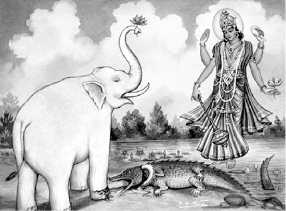
एकान्तमें ज्ञान प्रकट होता है। हाथी विचार करने लगा—यह मेरी भूल है, जिस कुटुम्बके लोगोंको मैं मानता था कि ये मेरे हैं—उन सभीने धोखा दिया। कोई मेरे साथ रहनेको तैयार नहीं है। अब मैं भगवान्की शरणमें जाऊँ।
पूर्वजन्ममें वह जिस महामन्त्रका जप करता था, वह मन्त्र उसको याद आता है। पूर्वजन्ममें उसने कितना जप किया था—यह भागवतमें लिखा नहीं है। शुकदेवजी महाराजने वर्णन किया है—प्राग्जन्मन्यनुशिक्षितम्। पूर्वजन्ममें जिस महामन्त्रका वह जप करता था, वह मन्त्र उसे याद आता है।
जिसके संस्कार बुद्धिमें अतिशय दृढ़ हैं, वे ही याद आते हैं। काम-वासनाके संस्कार बुद्धिमें दृढ़ होते हैं। यौवनमें जहाँ प्रवेश किया कि वे संस्कार जागने लगते हैं।
भगवान्के किसी नामके साथ ऐसा प्रेम करो कि सुखमें, दु:खमें भगवान्का नाम याद आये। अन्तकालमें अति दु:ख होनेवाला है। मरण महादु:ख है। भगवान्के किसी नामके साथ ऐसा प्रेम करो कि अति दु:खमें भी भगवान्का नाम याद आये।
पूर्वजन्ममें जिस महामन्त्रका वह जप करता था, वह मन्त्र उसको याद आता है—
मादृक्प्रपन्नपशुपाशविमोक्षणाय
मुक्ताय भूरिकरुणाय नमोऽलयाय।
स्वांशेन सर्वतनुभृन्मनसि प्रतीत-
प्रत्यग्दृशे भगवते बृहते नमस्ते॥
आत्मात्मजाप्तगृहवित्तजनेषु सक्तै-
र्दुष्प्रापणाय गुणसङ्गविवर्जिताय।
मुक्तात्मभि: स्वहृदये परिभाविताय
ज्ञानात्मने भगवते नम ईश्वराय॥
(श्रीमद्भा० ८।३।१७-१८)
‘मेरे भगवान् कालके भी काल हैं। काल भगवान्का नौकर है। मैं शरणमें आया हूँ। मुझे ऐसी जगहमें ले जाओ, जहाँ कालरूपी मगर पकड़नेके लिये आये नहीं। जहाँ कालकी गति है, वहाँ भीति है। मुझे ऐसी जगहमें रहना है, जहाँ कभी काल—मगर आये ही नहीं।’
थोड़ा-सा विचार करो तो ध्यानमें आयेगा—इस संसारमें ऐसा कोई घर नहीं है, जिस घरमें गजेन्द्र-मोक्षकी कथा होती न हो। सभीके घरमें यह कथा होती है। गजेन्द्र जीवात्मा है। जीव जिस घरमें कुटुम्बके साथ खेलता है, कुटुम्बके साथ सुख भोगता है—उसी घरमें उसका काल बैठा है। जीव गाफिल है, काल सावधान है। समय आनेपर काल पैरको पकड़ता है। पैरकी शक्ति एक दम कम हो जाय तो समझना कि मरण समीपमें है।
अभी तो आपको बहुत देर है—घबराना नहीं। गाफिल रहना नहीं।
काल पैरको पकड़ता है। पैरकी शक्ति एकदम कम हो जाय तो समझना कि छ: महीनेके अन्दर मरण हो जानेवाला है। काल जब पकड़ता है, तब किसीका प्रयत्न सफल नहीं होता है। घरके लोग प्रयत्न करते हैं—ठीक है। किंतु प्रयत्न सफल नहीं होता।
घरके लोग ऐसे होते हैं कि उनको बहुत दिनतक सेवा करनी पड़े तो फिर आलस करने लगते हैं। छोड़ करके चले जाते हैं। जिनके लिये मानव पैसेकी परवाह नहीं करता है, जिनके लिये सभी प्रकारका भोग देता है—वे ही घरके लोग कभी-कभी ऐसी इच्छा करने लगते हैं कि अब यह मर जाय तो अच्छा है।
गजराज समझ गया कि सभीने मुझे धोखा दिया है। कोई मेरे साथमें रहनेको तैयार नहीं है। मृत्युकी शय्यामें मानव हाय-हाय करता है। हाथी हरि-स्मरण करने लगा है। मृत्युकी शय्यामें कितने ही लोग हृदयको जलाते हैं—बच्चोंके लिये मैंने बैंकमें इतने रुपये रखे हैं, अब कोई मेरे पासमें बैठनेको तैयार नहीं, मेरे साथ कोई बोलता नहीं। अन्तकालमें जीव हृदयको जलाता है। हाथी हरि-स्मरण करता है—‘मैं भगवान्के चरणोंमें वन्दन करता हूँ। भगवान् मुझे ऐसी जगहमें ले जायँ, जहाँ काल-मगर कभी पकड़नेके लिये आये नहीं।’
जिसको भीति है, उसको शान्ति कैसी? कालकी सभीको भीति है। गजराज व्याकुल हो करके—‘हे गोविन्द! हे दामोदर!!—प्रेमसे भगवान्के नामका कीर्तन करता है, परमात्माको पुकारता है।
भगवान्को दया आयी, भगवान् दौड़ते हुए आये हैं। सुदर्शन-चक्रसे मगरको मार डाला है। मगर काल है। कालको सुदर्शन-चक्र मारता है। सुदर्शन-चक्र ज्ञान-चक्र है। सबमें श्रीकृष्ण-दर्शन ही सुदर्शन है।
समुद्र-मन्थनकी कथा
छठे चाक्षुष मन्वन्तरमें समुद्र-मन्थन हुआ है। देव और दैत्य समुद्र-मन्थन करते हैं। मन्दराचलपर्वत समुद्रमें डूबने लगा है, तब भगवान् कूर्मनारायण प्रकट हुए हैं। पीठके ऊपर मन्दराचलपर्वतको रखा है। देव-दैत्य समुद्र-मन्थन करते हैं—अमृतके लिये। अमृत निकला नहीं, विष निकलता है। भयंकर विष है—विषकी गन्ध सहन नहीं होती है।
थोड़ा-सा विचार करो तो ध्यानमें आयेगा—यह संसार ही समुद्र है। संसारमें मिठास कम है, कड़वाहट ज्यादा है—खारापन ज्यादा है। संसार-समुद्रका विवेकसे मन्थन करना है। सोलह वर्ष पूरे होनेपर मानव जब यौवनमें प्रवेश करता है, तब मनमें मन्थन होने लगता है। पूर्वजन्ममें जो सुख भोगा है, उसके संस्कार जागने लगते हैं। यौवनमें प्रवेश किया कि मन चंचल होने लगता है। उस समय बहुत सावधान रहनेकी जरूरत है। यौवन-कालमें जो स्वतन्त्र होकर घूमता है, उसका पतन हो जाता है।
यौवन-कालमें प्राय: सभीकी बुद्धि बिगड़ती है। यौवन-काल बड़ा खराब काल है। यौवनमें स्वतन्त्र रहना अच्छा नहीं है। किसी सन्तके अधीन रहो, अपने माता-पिताके अधीन रहो। बहुत पवित्रतासे, बहुत सरलतासे जिसका यौवन परिपूर्ण हुआ है—ऐसे महापुरुष इस संसारमें बहुत ही कम हैं। यौवनमें स्वतन्त्र रहना अच्छा नहीं है। यौवन-कालमें सावधान रहो। अपने मनको पर्वतके जैसा स्थिर करो। पर्वत हिलता नहीं, चलता नहीं, डोलता नहीं है। मनको पर्वतके जैसा स्थिर रखना है।
चौबीस घण्टेमें ज्यादा नहीं तो चार घण्टे अपने मनको पर्वतके जैसा स्थिर करो—अमृत मिलेगा। निराधार मन डूबता है। पर्वतको कोई आधार चाहिये, नहीं तो डूब जायगा। मन्त्र और मूर्तिमें मनको रखो। मन्त्र-जप करनेमें मानवको आलस आये, मन मन्त्रसे हट जाय तो मनको मूर्तिमें रखो। मन्त्र-सेवा और मूर्ति-सेवा जो करता है, मन्त्र और मूर्तिमें जो मनको रखता है—उसको अमृत मिलता है।
भक्ति अमृत है, ज्ञान अमृत है। ज्ञान-भक्तिरूपी अमृतका जो पान करता है, वह कभी मरता नहीं—अमर हो जाता है। बड़े-बड़े राजा लोग मर गये—कोई उनको याद नहीं करता है। किन्तु तुलसीदास महाराजको जगत् नहीं भूलता, मीराबाईको जगत् याद करता है—सन्त अमर होते हैं। जो भक्तिरूपी अमृतका पान करता है, उसको काल नहीं मार सकता है। सन्त आज भी हैं। सन्त अमर हैं। भक्तिरूपी अमृतका जो पान करता है—उसको काल नहीं मार सकता है।
देव-दैत्य मन्थन करते हैं अमृतके लिये—निकलता है विष! जो भगवान्के पीछे पड़ता है, भगवान् आरम्भमें उसकी थोड़ी परीक्षा करते हैं—उसको विष देते हैं। विष सहन करके भी जो भक्ति करता है—उसको अमृत मिलता है। प्रतिकूल परिस्थिति ही विष है।
एक साधारण वस्तु लेनी हो तो मनुष्य कसौटी करता है। भगवान् भी थोड़ी परीक्षा करते हैं। जो भगवान्के पीछे पड़ता है, उसको भगवान् प्रथम विष देते हैं। जो विष सहन करता है, उसको अमृत मिलता है।
आपकी कोई निन्दा करे तो सहन करो। निन्दा ही विष है। प्रतिकूल परिस्थिति ही विष है। दु:ख ही विष है। विषको सहन करके जो भक्ति करेगा—उसको ही अमृत मिलेगा।
जो भगवान्के पीछे पड़ता है, उसको घरके लोग त्रास देते हैं। जो घरमें बहुत भक्ति करता है, वह घरके लोगोंको अच्छा नहीं लगता—यह बहुत भक्ति करेगा तो कभी मेरे उपयोगमें नहीं आयेगा, मेरा काम नहीं करेगा। घरके लोग ऐसी इच्छा रखते हैं कि यह संसारका सुख भोगे तो मेरे काममें आयेगा।
घरमें कोई बहुत भक्ति करता हो तो घरके लोग उसका साथ नहीं देते हैं—त्रास देते हैं। घरमें जो त्रास सहन करता है, त्रास सहन करके जो भक्ति करता है—उसको बहुत मीठा फल मिलता है। दु:ख सहन करो, दु:ख ही विष है।
भगवान् शंकरकी जो पूजा करता है, उसके मस्तकमें ज्ञान-गंगा आती है। ज्ञान-गंगाको जो मस्तकमें रखता है, वही विष सहन कर सकता है।
सभी देव शंकरभगवान्की स्तुति करते हैं—
देवदेव महादेव भूतात्मन् भूतभावन।
त्राहि न: शरणापन्नांस्त्रैलोक्यदहनाद् विषात्॥
(श्रीमद्भा० ८।७।२१)
जगत्को विष जलाता है। निन्दा ही विष है। निन्दा सहन करो। आपको बहुत मीठा फल मिलेगा। विष सहन करके भक्ति करो। सभी देवोंने शिवजीकी स्तुति की है।
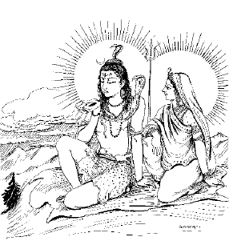
शंकरभगवान् विषका पान करते हैं। शिवजी महाराज विषको गलेमें रोक करके रखते हैं, पेटमें नहीं जाने देते हैं। शिवजीने जगत्को बोध दिया है—कभी पेटमें विष रखना नहीं।
विष क्या होता है? कर्कश वाणी ही विष है। आपके लिये कोई खराब शब्द बोले, उसे भूल जाओ—पेटमें नहीं रखना। पेटमें रखनेसे कभी याद आयेगा तो दु:ख होगा। आपके लिये कोई खराब शब्द बोले, उसे भूल जाओ। विषको शिवजीने पेटमें नहीं जाने दिया। विषको गलेमें रोककर रखा है।
हृदयमें नारायण हैं। नारायणका दर्शन करता हुआ मानव नामामृतसे उनकी पूजा करे, हृदयमें भगवान्का दर्शन करता हुआ भगवान्के नामका जप करे तो अमृत मिलेगा। पेटमें कभी विष रखना नहीं। शिवजीने जगत्को बोध दिया है—जो पेटमें विष रखता है, उसको अमृत नहीं मिलता है। पेटमें प्रेम रखो—अमृत मिलेगा। विषको बाहर मत निकालो, गलेमें रोक करके रखो।
आपका कोई नुकसान करे, आपको कोई दु:ख दे—उसको दो कर्कश शब्द सुनानेकी इच्छा होगी—गलेमें रोक लो। कर्कश वाणी बाहर मत निकालो। किसीको दु:ख हो, ऐसा शब्द बोलना नहीं। आपके लिये कोई खराब शब्द बोले तो दु:ख मानना नहीं—आपको अमृत मिलेगा।
शिवजी महाराज गलेमें विषको रोक लेते हैं, विषको बाहर नहीं जाने देते। विषको पेटमें भी नहीं जाने देते। शिवजी विषका पान करते हैं। शिवजीका कण्ठ नीला हो गया है। इसलिये शिवजीका नाम पड़ा है—नीलकण्ठ।
देव और दैत्य समुद्र-मन्थन करने लगे हैं। समुद्रसे उच्चै:श्रवा घोड़ा निकलता है, ऐरावत हाथी निकलता है, अनेक रत्न निकले हैं। देव-दैत्य समुद्रका मन्थन करते हैं, तभी समुद्रसे साक्षात् महालक्ष्मीजी बाहर आयी हैं—श्रीमहालक्ष्मी माताकी जय! ब्राह्मण माताजीका जय-जयकार करते हैं। वेद-मन्त्र बोल करके माताजीका अभिषेक किया है—
हिरण्यवर्णां हरिणीं सुवर्णरजतस्रजाम्।
चन्द्रां हिरण्मयीं लक्ष्मीं जातवेदो मऽआवह॥
अभिषेक करनेके बाद सखियाँ माताजीका सुन्दर शृंगार करती हैं। सभीको ऐसी इच्छा हुई कि लक्ष्मी मेरेको मिले। लक्ष्मीजीने कहा है—‘योग्य पतिको मैं विजय-माला अर्पित करूँगी, बैठ जाओ।’
लक्ष्मी कहाँ रहती हैं?
आज सभामें देव आये हैं, राक्षस आये हैं, ऋषि आये हैं। सभीकी इच्छा है—लक्ष्मी मुझे मिले। सखियाँ लक्ष्मीजीको ऋषियोंके पास ले जाती हैं, एक-एक ऋषिका परिचय दिया है—ये विश्वामित्र हैं, ये यमदग्नि हैं। बड़े तपस्वी हैं, ज्ञानी हैं—विचार करो। लक्ष्मीजीने कहा है—तपस्वी तो हैं, किंतु क्रोध बहुत करते हैं—क्रोधी हैं।
तपश्चर्यामें भक्तिका साथ होना चाहिये। तपश्चर्या तो रावण भी करता है, राक्षस भी तपश्चर्या करते हैं। उनकी तपश्चर्या भोगके लिये है। तपश्चर्या भगवान्के लिये होनी चाहिये, नहीं तो तपस्वी क्रोधी बन जाते हैं। श्रीकृष्ण-प्रेममें जिसका हृदय पिघला हुआ रहता है, उसको क्रोध नहीं आता। तपश्चर्या भक्तिके साथ करो। ये ऋषि तपस्वी तो हैं, किंतु क्रोध बहुत करते हैं।
आगे जाती हैं—देव लोग बैठे हैं। सखियोंने कहा—‘ये ब्रह्माजी हैं, ये चन्द्र हैं, ये वरुण हैं, ये इन्द्र हैं।’ लक्ष्मीजीने कहा—‘आगे चलो। इनकी आँखमें काम दिखता है।’
आगे जाती हैं—परशुराम भगवान् विराजमान हैं। सखियोंने कहा—‘ये कामी नहीं हैं, क्रोधी नहीं हैं—महान् वीर हैं।’ लक्ष्मीजीने कहा—‘कामी-क्रोधी तो नहीं हैं, किंतु बहुत निष्ठुर हैं। क्षत्रियोंके छोटे-छोटे बच्चोंको भी मारते थे।’
जहाँ दया है, वहीं लक्ष्मीजी विराजती हैं। जहाँ दया नहीं है, वहाँ लक्ष्मीजी नहीं विराजती हैं। परशुरामजी निष्ठुर हैं।
आगे जाती हैं—मार्कण्डेयऋषि बैठे हैं। सखियाँ परिचय देती हैं—‘प्रलयकालतक इनका आयुष्य है। बड़े सिद्ध हैं, महात्मा हैं, कामका विनाश किया है, क्रोध इन्हें आता ही नहीं हैं।’ मार्कण्डेयमुनि सभामें आँख बन्द करके बैठे हैं। मार्कण्डेयजीने निश्चय किया है कि लक्ष्मीसे भी नारायण सुन्दर हैं, लक्ष्मीसे भी नारायण श्रेष्ठ हैं। लक्ष्मीकी शोभा नारायणसे है। लक्ष्मीजी आयी हैं, तब आँख बन्द करते हैं। सन्त नारायणके साथ ही लक्ष्मीका दर्शन करते हैं। नारायणको छोड़ करके जो लक्ष्मीको देखता है, उसको कभी नारायणका दर्शन नहीं होता है। लक्ष्मीका दर्शन नारायणके साथ करो।
लक्ष्मीजीमें बहुत-से सद्गुण हैं, किंतु एक दोष है। नारायण निर्दोष हैं—सर्व सद्गुण-सम्पन्न हैं। लक्ष्मीजीमें अनेक सद्गुण हैं—जहाँ लक्ष्मी है, वहाँ शोभा है। जहाँ लक्ष्मी है, वहाँ औदार्य है। जहाँ लक्ष्मी है, वहाँ कीर्ति है। सभी सद्गुण होनेपर भी लक्ष्मीजीमें एक बड़ा दोष भी है—लक्ष्मी कभी-कभी पापीके हाथमें भी जाती है। नारायण कभी पापीके हाथमें नहीं जाते हैं। लक्ष्मी पापीके घरमें भी जाती है। इसलिये सन्त लक्ष्मीका दर्शन नारायणके साथ ही करते हैं। नारायणको छोड़ करके कभी लक्ष्मीका दर्शन नहीं करते।
अकेली लक्ष्मीजी आयी हैं—यह जानकर मार्कण्डेयऋषिने आँखें बन्द कर लीं, देखते नहीं हैं—‘माताजी! नारायणको विजय-माला अर्पण करो। नारायणके साथ आओ, तब मैं दर्शन करूँगा।’ मार्कण्डेयमुनि आँख खोलते नहीं हैं।
लक्ष्मीजीको आश्चर्य होता है—यह ब्राह्मण कैसा है? मेरे सामने देखनेको तैयार नहीं है।
आगे जाती हैं—भगवान् शंकर विराजमान हैं। सखियाँ स्तुति करती हैं—‘देवोंके देव, इनको महादेव कहते हैं। इन्होंने कामदेवको जला करके भस्म किया है। इनको कभी क्रोध आता ही नहीं है। अति शान्त हैं, अति सरल हैं, बड़े भोले हैं। देवोंके देव महादेव हैं। विचार करो।’
लक्ष्मीजीने कहा—‘महादेवजीमें सब कुछ अच्छा है, किंतु एक दोष है। इनका वेष मंगलमय नहीं है। बाघम्बर ओढ़ते हैं। हाथमें—गलेमें सर्प हैं। यह शृंगार मुझे बहुत अच्छा नहीं लगता—न हि शीलमङ्गलम्।
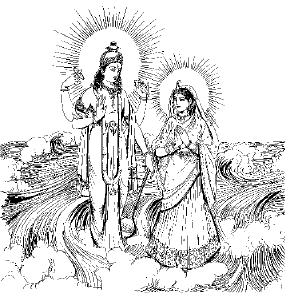
आगे जाती हैं—शिवजीके पास चतुर्भुज नारायण विराजमान हैं। सर्व सद्गुण-सम्पन्न हैं। नारायणमें कोई दोष नहीं है। लक्ष्मीजीको विश्वास हुआ है। लक्ष्मीजीने भगवान्को विजय-माला अर्पण की है। तब सभी देव-गन्धर्वोंने जय-जयकार किया है—लक्ष्मी-नारायण भगवान्की जय!
लक्ष्मीजी विजय-माला अर्पण करती हैं, तब भगवान् चारों बाजू देखते हैं। आपके घरमें लक्ष्मी आये तो आप भी चारों ओर दृष्टि रखो—ऐसा कौन है, जो भीख नहीं माँग सकता और उसके पास पेट-भर खानेको नहीं है, उसके घरमें जाकर दो। लक्ष्मी आपके घरमें अखण्ड रहेगी। जहाँ लक्ष्मीका सदुपयोग होता है, वहाँ लक्ष्मी स्थिर रहती हैं। जहाँ लक्ष्मीका दुरुपयोग होता है, वहाँ लक्ष्मीजी विराजती नहीं हैं, चंचल हो जाती हैं—आज हैं, कल नहीं हैं।
कितने ही लोग ऐसे होते हैं कि उनके घरमें लक्ष्मी आती है, तब उन्हें दूसरा कुछ दिखता ही नहीं है। मैं, मेरी पत्नी, मेरे बच्चे—केवल अपने कुटुम्बको ही देखते हैं, दूसरेको देखते ही नहीं—
पैसा मेरा परमेश्वर, पत्नी मेरी गुरू।
छोरा छोरी शालिग्राम सेवा किसकी करूँ॥
चारों ओर दृष्टि रखनी चाहिये। लक्ष्मी उपयोगके लिये है, उपभोगके लिये नहीं है। जिसको जिस वस्तुकी जरूरत है, उसको देना चाहिये। देनेसे कम नहीं होता है, देनेसे बढ़ता है। भगवान् चारों ओर दृष्टि रखते हैं।
भगवान्का धन्वन्तरि-अवतार
देव-दैत्य समुद्र-मन्थन करने लगे हैं। समुद्रसे धन्वन्तरिनारायण बाहर आये हैं, अमृतका घड़ा ले करके आये हैं। राक्षसोंने देखा तो दौड़ते हुए गये। धन्वन्तरिजीके हाथसे अमृतका घड़ा खींच लिया। राक्षसोंके मण्डलमें अमृतका घड़ा गया है। अब हमें अमृत नहीं मिलेगा—यह सोचकर देवोंको दु:ख हुआ है। भगवान्ने आश्वासन दिया है—आज शक्तिसे नहीं, युक्तिसे काम लेना पड़ेगा।
जिसके हाथमें अमृतका घड़ा आया था, वह अभिमानमें बोलता है—‘मैं अमृत पीनेवाला हूँ।’ एक दूसरा बलवान् राक्षस आया, उसने कहा ‘मैंने बहुत मेहनत की है। घड़ा नीचे रख दे, नहीं तो मारा-मारी होगी।’
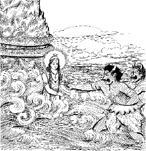
जिस घरमें झगड़ा होता है, उस घरमें किसीको भी अमृत मिलता नहीं है। भक्ति ही अमृत है। घरमें रह करके भक्ति करनी हो तो घरमें प्रेमसे रहो—कभी झगड़ा मत करो।
बहुत-से लोग पैसेके लिये झगड़ा करते हैं। शास्त्रोंमें ऐसा लिखा है कि आपके भाग्यका जो पैसा है, वह दूसरेको मिलनेवाला नहीं है। दूसरेके भाग्यका पैसा आपको मिलनेवाला नहीं है। पैसेके लिये प्रयत्न करो, झगड़ा क्यों करते हो? जो आपके भाग्यका पैसा है, वह आपके पास आनेवाला ही है।
कितनी माताएँ ऐसी होती हैं, जिन्हें घरमें ज्यादा काम करना पड़े तो झगड़ा करती हैं—‘सब कुछ मुझे ही करना पड़ता है, मेरी जेठानी तो बैठी ही रहती है, सब मुझे ही करना पड़ता है।’
काम न करनेसे शरीर बिगड़ता है। काम करनेसे शरीर नहीं बिगड़ता है। काम करो—प्रेमसे करो। कोई मानव मेरी कदर करे—ऐसी इच्छा रखना ही नहीं। आपने किसीके लिये शरीरको घिसाया हो तो भगवान् कदर करेंगे—भगवान् नहीं भूलेंगे, मानव भूल जायगा। काम करनेसे शरीर नहीं बिगड़ता है, काम न करनेसे शरीर बिगड़ता है। घरका काम प्रेमसे करो, प्रभुका स्मरण करते हुए करो—आपको अमृत मिलेगा। भक्ति ही अमृत है। जिस घरमें झगड़ा होता है, उस घरमें किसीको अमृत नहीं मिलता।
भगवान् मोहिनी-नारायण
दैत्योंके मण्डलमें कलह होने लगा है। एक कहता है—मैं अमृत पीऊँगा। दूसरा कहता है—मैं पीऊँगा। भगवान् लीला करते हैं—मोहिनी-नारायण वहाँ प्रकट हुए हैं। आज भगवान् पीताम्बर पहन करके आये नहीं हैं—साड़ी पहनकर आये हैं। स्त्रीका ऐसा शृंगार किया है कि सभी राक्षस लोग ताकने लगे हैं—कैसी सुन्दर है! ऐसी स्त्री तो जगत्में नहीं है। अमृतको भूल गये, मोहिनीके पीछे पड़े हैं।
संसारके विषयोंमें मायाने मोहिनी रखी है। विषयोंमें जिसका मन फँस जाता है, उसको अमृत नहीं मिलता है। भक्तिरूपी अमृत उसीको मिलता है, जिसका मन भगवान्के सौन्दर्यमें फँसता है। संसार क्षण-क्षणमें बदलता है। संसारका सौन्दर्य क्षणिक है। इस समय जो सुन्दर लगता है—थोड़े समयमें वह बिगड़ जायगा। संसारके सौन्दर्यमें मायाने जो मोहिनी रखी है, उस मोहिनीमें जिसका मन फँस जाता है, उसको अमृत नहीं मिलता है।
सभी अमृतको भूल गये। मोहिनी-नारायणके पीछे पड़े हैं—कहाँसे आयी हो? घर कहाँ है? लग्न हुआ है या लग्न होनेवाला है? ...यह सब पूछनेकी क्या जरूरत है? मोह होनेके बाद विवेक बह जाता है।
मोहिनी-नारायण गालमें धीरे-धीरे स्मित हास्य करते हैं। मोहिनी-नारायणने उत्तर दिया है—‘मेरा एक घर नहीं है, मेरे अनेक घर हैं। जो पुरुष मेरे लिये रोता है, जो सोलह आने मेरे साथ प्रेम करता है—उसके घरमें मैं जाती हूँ।
भगवान्की भाषा गूढ़ार्थसे भरी हुई है। भगवान् कहते हैं—‘मेरा एक घर नहीं है, अर्थात् जितने भक्त हैं, उतने ही भगवान्के घर हैं। कभी भगवान् तुकाराम महाराजके यहाँ जाते हैं, कभी तुलसीदास महाराजके यहाँ जाते हैं, कभी मीराबाईके यहाँ जाते हैं। जितने भक्त हैं, उतने ही भगवान्के घर हैं।
मोहिनी-नारायण कहते हैं—‘जो मेरे लिये रोता है, सोलह आने मेरे साथ प्रेम करता है—उसके घरमें मैं जाती हूँ। राक्षस मूर्ख हैं—समझ सके नहीं। राक्षसोंने कहा—‘हम सभी लोग प्रेम करेंगे तो? मोहिनी-भगवान्ने कहा—‘तो मैं बराबर परीक्षा करूँगी। एक-एकके घर मैं रोज आऊँगी।’ राक्षस समझ सके नहीं, उनको ऐसा लगा कि यह कोई साधारण स्त्री है।
जिसके हाथमें अमृतका घड़ा था, उसको देख करके मोहिनी-नारायण गालमें हँसने लगे। वह तो पागलके जैसा हो गया—मुझे देख करके हँसती है, मेरे घरमें आनेकी उसकी इच्छा है—ऐसा लगता है। उसने अमृतका घड़ा भेंटमें अर्पित किया—‘यह भेंट मैं आपको अर्पित करता हूँ।’
भगवान्ने घड़ेको अपने हाथमें ले लिया। फिर पूछते हैं—‘इस घड़ेमें क्या है?’
वह राक्षस बोला—‘इसमें अमृत भरा है। अमृतके लिये हमारे मण्डलमें झगड़ा हो रहा है। आप परोसनेके लिये आओ तो कोई झगड़ा करे ही नहीं।’
मोहिनी-नारायणने कहा—‘आपकी इच्छा है तो मैं परोसनेके लिये आऊँगी। किंतु, किसीको ज्यादा मिले, किसीको कम मिले, कदाचित् किसीको न भी मिले तो झगड़ा होगा। इसलिये मुझे इस प्रपंचमें पड़ना ही नहीं है। मैं जाती हूँ यहाँसे।’
‘ना-ना, जाना नहीं। हम कभी झगड़ा नहीं करेंगे। आप परोसनेके लिये आओ तो हम सब हाथ जोड़ करके बैठे रहेंगे। जिसके भाग्यमें होगा—उसको मिलेगा।’
मोहिनी-नारायणकी रूप-माधुरीसे दैत्य पागल हो उठे थे। भगवान्ने आँखसे संकेत किया है। एक ओर देव बैठे हैं, एक ओर राक्षस बैठे हैं। अमृतका घड़ा ले करके मोहिनी-नारायण राक्षसोंके मण्डलमें आये हैं। राक्षसोंको कहा है—‘यह अमृतका घड़ा आपने मुझे दिया है। आपका कल्याण करना मेरा कर्तव्य है। मेरी बहुत इच्छा है कि यह अमृत आपको मैं पिलाऊँ। किंतु, मुझे दु:ख होता है कि ये देवलोग सब ताक रहे हैं। इनकी आँखमें पाप है—ऐसा लगता है। किसीकी दृष्टि लगा हुआ खाना नहीं चाहिये। इनकी दृष्टि लगेगी तो पचेगा नहीं। अत: मैंने ऐसा विचार किया है कि इस घड़ेमें ऊपर-ऊपर जो है, वह इनको दे दूँ। नीचे-नीचे जो गाढ़ा-गाढ़ा बचेगा, वह आपको मिलेगा।’
मोह होनेके बाद विवेक बह जाता है। अमृतमें कहीं दो भाग होते हैं—पानी-जैसा दूसरा और गाढ़े मालकी तरह दूसरा—मूर्ख हैं, सोचते हैं—आप हमारा कल्याण करनेके लिये आयी हैं।
मोहिनी-नारायण अमृत देते हैं देवोंको और निहारते हैं दैत्योंको। आँखमें, मुखपर ऐसी मोहिनी थी कि सब पागलके जैसे हो गये—हमको तो गाढ़ा माल मिलने ही वाला है, धीरज रख करके हम बैठे हैं।
दैत्योंके मण्डलमें राहु नामका एक राक्षस था। वह सयाना था। वह बराबर देख रहा था कि घड़ा तो बहुत बाँका होता जा रहा है, अभी तो बारह-तेरह जन बाकी हैं। यह स्त्री तो कहती है कि मेरा एक घर नहीं है। ये सब मूर्ख हैं, स्त्री-प्रेममें फँस गये हैं।
स्त्रीमें अति विश्वास रखनेवाला पुरुष दुखी होता है। स्त्रीमें विश्वास रखो, किंतु विचार करो कि यह जो बोलती है, वह उचित है या अनुचित है? सौन्दर्यका मोह होनेके बाद मानव विचार नहीं करता है।
राहु विचार करता है—यह देखनेमें बहुत सुन्दर है। ये सब मूर्ख हैं, फँस गये हैं। यह कपट करेगी। ऐसा लगता है—यह सभी अमृत देवोंको पिलायेगी और घड़ा हमारे सामने फेंक देगी। इसने कहा था—किसीको मिलेगा, किसीको नहीं मिलेगा। अब कहेगी—‘मैं क्या करूँ—खलास हो गया।’ ऐसी स्त्रीको ले करके हम क्या करेंगे?
राहुने देवका स्वरूप धारण किया और चन्द्र-सूर्यके मध्यमें जा करके बैठा है।
पंक्तिमें विषमता करनी नहीं चाहिये। पंक्तिमें जो विषमता करता है, उसको दूसरे जन्ममें संग्रहणी रोग होता है। पंक्तिमें कभी विषमता न करो। कितनी माताएँ परोसनेमें बड़ी चतुराई करती हैं। रसोईघरमें ही नक्की करती हैं—ये किसको देना है, ये किसको नहीं देना है। खास अपना हो, उसको थोड़ा घी ज्यादा लगाती हैं—और गरमा-गरम देती हैं। पेटमें जानेके बाद विष्ठा होनेवाली है। पंक्तिमें, पंगतमें कभी विषमता मत करो। पंगतमें विषमता करना बड़ा पाप है।
देव-पंक्तिमें राक्षस आ करके बैठा है। राहुने देवका स्वरूप धारण किया है। भगवान् जानते थे तो भी उसको अमृत दिया है। पंक्तिमें विषमता नहीं करनी चाहिये। राहु अमृत पीने लगा है। चन्द्र और सूर्यने आँखसे संकेत किया है—यह हमारे पक्षका नहीं है। भगवान्ने सुदर्शन-चक्रसे उसका मस्तक काट डाला है।
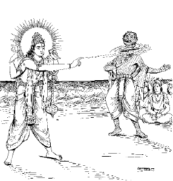
मस्तक काट डाला तो भी वह मरा नहीं—राहु और केतु दो ग्रह हुए हैं। चन्द्र-सूर्यके साथ वैर करते हैं।
चन्द्रमा मनके मालिक हैं, सूर्य बुद्धिके मालिक हैं। मन-बुद्धिको जब भक्तिरूपी अमृत मिलता है, तब राहु विघ्न करनेके लिये आता है। कोई तनसे भक्ति करे तो राहु विघ्न नहीं करता है। कोई हाथसे भक्ति करे तो भी यह विघ्न नहीं करता है। किंतु, मन जब भक्ति-रसमें सराबोर होता है, तब विषयरूपी राहु विघ्न करनेके लिये आता है। वह मरा नहीं है।
मनपर विश्वास रखना ठीक नहीं
कभी आपको ऐसा भ्रम हो जायगा कि मुझे कभी क्रोध नहीं आता है। मैं भक्ति करता हूँ, मेरे मनमें काम नहीं है—यह भूल है। काम, क्रोध, लोभरूप भी विकार हैं। मानव सावधान हो करके भक्ति करता है, तबतक विकार अन्दर रहते हैं। मानव जब गाफिल हो जाता है, तब अन्दरके ही विकार बाहर आ जाते हैं। लोग कहते हैं—‘भाईको क्रोध आया। क्रोध कहाँसे आया? अरे, क्रोध जो अन्दर था—वही बाहर आया है। सभी विकार अन्दर हैं।’
मनके ऊपर जो विश्वास रखता है, उसको मन धोखा देता है। कभी मनके ऊपर विश्वास रखना नहीं। मनके ऊपर भक्तिका अंकुश रखो। मानव बड़ी-बड़ी ज्ञानकी बातें करता है, किंतु दो-चार मिनटके लिये मूर्ख हो जाता है। मन पाप करता है। राहु मरा नहीं है, राहु जीवित है।
फिर तो देव और दैत्योंमें भयंकर युद्ध हुआ है। दैत्य पराजित हुए हैं। जो मोहिनीके पीछे पागल बनकर दौड़ने लगता है, वही दैत्य है। संसारकी मोहिनीमें फँसनेवाला ही दैत्य है।
शिवजीको मोहिनी-नारायणके दर्शन
नारदजीने एक बार कैलास-पर्वतपर जा करके शिवजीको मोहिनी-नारायणके अवतारकी कथा सुनायी और शिवजीसे पूछा—‘क्या आपने नारायणके मोहिनी-स्वरूपका दर्शन किया है’ ? तब उत्सुकतावश शिवजी पार्वतीजीके साथ मोहिनी-स्वरूपका दर्शन करनेके लिये वैकुण्ठधाममें पधारे। उसी समय भगवान् नारायण योग-निद्रासे जागे थे। जागनेके बाद भगवान्को ऐसी इच्छा हुई कि मैं थोड़ा नाचूँ तो निद्राका आलस्य उतर जायगा। किसके सामने नाचूँ? हरि-हरकी मधुर लीला होती है—
सुन्दर बगीचा है। बगीचेमें एक अति सुन्दर युवती खेलती है। शिवजी महाराज दर्शनमें ऐसे तन्मय हो गये कि साथमें पार्वती हैं—यह भी भूल गये।
मन्दिरमें आप दर्शनके लिये जाओ तो मन्दिरमें कौन आता है, कौन जाता है—यह देखना ही नहीं। मन्दिरमें भगवान्का दर्शन करनेके लिये लोग जाते हैं। कितने ही लोग पूछते हैं—‘कल आप नहीं आये थे क्या? कल क्या तुम उसका मुख देखनेके लिये मन्दिर गये थे?’ मन्दिरमें आँख भगवान्को देना है।
शिवजी महाराज नारायणको आँख देते हैं। दर्शनमें ऐसे तन्मय हुए कि पार्वती साथमें हैं—यह भी भूल गये। दर्शनका आनन्द उसीको मिलता है, जो सबको भूल जाता है। शिवजी महाराज सब कुछ भूल गये हैं। हरि-हरकी लीला है।
भागवत परमहंसोंकी संहिता है। प्रत्येक अध्यायकी समाप्तिमें लिखा है—‘पारमहंस्यां संहितायाम्’ । परमहंस उसको कहते हैं, जो परमात्माके साथ एकरूप हो जाते हैं। भगवान् शंकरको दर्शनमें वह आनन्द आया कि शिवजीने विचार किया कि नारायणके साथ एक होना है। दौड़ते हुए गये हैं, मोहिनी-नारायणको आलिंगन दिया है। हरि और हर—दो मिल करके एक हो गये हैं। इस अध्यायमें नारायणने भगवान् शंकरकी स्तुति की है—
दिष्टॺा त्वं विबुधश्रेष्ठ स्वां निष्ठामात्मना स्थित:।
यन्मे स्त्रीरूपया स्वैरं मोहितोऽप्यङ्गमायया॥
(श्रीमद्भा० ८।१२।३८)
दक्षिण भारतकी यात्रा जिन लोगोंने की है, उनको खबर है—दक्षिण भारतमें हरिहर-क्षेत्र आता है। हुबलीसे लोग हरिहर-क्षेत्र जाते हैं। वहाँ भगवान्का दिव्य स्वरूप है—आधा श्रीअंग शिवजीका है, आधा नारायणका है। दो हाथमें शंख-चक्र हैं, दो हाथमें त्रिशूल और माला हैं। एक ओर बाघम्बर है, एक ओर पीताम्बर है। एक ओर जटा-मुकुट है, एक ओर स्वर्णका मुकुट है। हरि-हर दो एक हो गये हैं।
भगवान्ने शिवजीको धन्यवाद दिया है—‘मेरी माया आपका क्या कर सकती है।’ शिवजीकी बहुत प्रशंसा की है। प्रशंसा सुन करके शिवजी फूल नहीं गये, वन्दना करके बोले हैं—‘आपको मैं हृदयमें रखता हूँ। सर्वदा हरिस्मरण करता हूँ। इसलिये माया मुझे त्रास नहीं देती है।’
शिवजी महाराज कैलास-धाममें आये हैं। सप्तर्षियोंको उपदेश दिया है—‘मायामें बहुत जोर है। सर्वदा सावधान रहना। जो हमेशा सावधान रहता है, उसीको साधु कहते हैं। जो गाफिल रहता है, वह संसारी है। सर्वकाल सावधान रहो, साधन करो। मन बिगड़नेमें देर नहीं लगती है। मनके ऊपर विश्वास रखनेवालेको मन धोखा देता है—गड्ढेमें फेंक देता है। मनके ऊपर भक्तिका अंकुश रखो।’
वामन-अवतारकी कथा
शुकदेवजी महाराज वर्णन करते हैं, सप्तम मन्वन्तरमें कश्यप ऋषिके यहाँ श्रीवामनजी महाराज प्रकट हुए हैं।
बले: पदत्रयं भूमे: कस्माद्धरिरयाचत।
भूत्वेश्वर: कृपणवल्लब्धार्थोऽपि बबन्ध तम्॥
(श्रीमद्भा० ८।१५।१)
परीक्षित् महाराजने प्रश्न किया है—परमात्मा बलि राजाके यहाँ भिक्षा माँगने गये, इसका क्या कारण है?
शुकदेवजी महाराज वर्णन करते हैं, श्रवण करो। शुक्राचार्यको दैत्योंने गुरु माना है। शुक्राचार्यकी बहुत सेवा की है। शुक्राचार्यजीने बलिराजाके हाथसे विश्वजित् नामका यज्ञ करवाया। पूर्णाहुतिके समयमें अग्निकुण्डसे सोनेका रथ बाहर आया है। बलिराजाको रथमें बिठाया। शुक्राचार्यने अपना ब्रह्मतेज दिया है और कहा है—जहाँ जाओगे, वहाँ जीत होगी। तुम्हें अब कोई नहीं हरा सकता है।
महाराज बलि स्वर्गमें युद्ध करनेके लिये गये हैं। बलिराजाकी जीत हुई है। स्वर्गका राज्य बलिको मिला है।
जो शुक्राचार्यकी सेवा करता है, उसका बल बढ़ जाता है। शरीरमें जो शक्ति है, उसीको शुक्र कहते हैं। शुक्राचार्यकी सेवा यह है कि प्रत्येक इन्द्रियका संयम रखो। संयमका कवच जिसने धारण किया है, जिसके मस्तकपर नीतिका छत्र है, जो पाप छोड़ता है, उसको कोई मार नहीं सकता है। भगवान् किसीको मारते नहीं हैं, पाप ही मारता है।
दैत्योंने शुक्राचार्यकी सेवा की थी, पाप छोड़ दिया था, प्रत्येक इन्द्रियका संयम बढ़ाया है। उनकी शक्ति बहुत बढ़ गयी। जहाँ जाते, वहीं जीत होती। शुक्राचार्यने अपना ब्रह्मतेज उनको दिया। स्वर्गका राज्य दैत्योंको मिला। बलिको इन्द्रासनपर बिठाया।
शुक्राचार्यने बलिसे कहा है—सौ अश्वमेध यज्ञ करो तो आप स्वर्गके राजा हो जाओगे।
नर्मदानदीके किनारे भृगुकच्छ नामका तीर्थ है। वहाँ महाराज बलि अश्वमेध यज्ञ करने लगे हैं—
तं नर्मदायास्तट उत्तरे बले-
र्य ऋत्विजस्ते भृगुकच्छसंज्ञके।
प्रवर्तयन्तो भृगव: क्रतूत्तमं
व्यचक्षतारादुदितं यथा रविम्॥
(श्रीमद्भा० ८।१८।२१)
महाराज बलि यज्ञ करते हैं। उधर, देवोंकी माता अदितिको दु:ख हुआ है। अदितिमाताने कश्यपऋषिकी सेवा की है। कश्यपऋषि प्रसन्न हुए हैं, वर माँगो। अदितिने कहा हमारे शत्रुका विनाश हो। मेरे बालकोंको स्वर्गका राज्य मिले, ऐसी कृपा करो।
कश्यपऋषिने कहा—तुम्हारे शत्रु बलवान् हुए हैं। पाप नहीं करते हैं। जो पाप नहीं करता, उसको परमात्मा भी नहीं मारते। शत्रुका नाश नहीं होगा। युक्तिसे तेरे बालकोंको मैं स्वर्गका राज्य प्राप्त कराऊँगा।
बारह दिवसका एक पयोव्रत है। पयोव्रत करनेसे परमात्मा तेरे पुत्रके रूपसे प्रकट होंगे। तेरे बालकोंको स्वर्गका राज्य मिलेगा। बारह दिवसका यह पयोव्रत फाल्गुन महीनेमें किया जाता है। इसका नाम पयोव्रत है। व्रत करना है केवल दूधके ऊपर, फल भी खाये नहीं। फाल्गुन शुक्ला प्रतिपदासे द्वादशीतक यह बारह दिवसका व्रत है।
लक्ष्मी-नारायणकी स्थापना करो। सोलह मन्त्र हैं। इन मन्त्रोंसे पूजा करो। दिवसमें तीन बार स्नान करो। दिवसमें तीन बार नारायणकी पूजा करो। पूजन होनेके बाद अग्नि प्रकट करके होम करो। ॐ नमो नारायणाय स्वाहा—इस मन्त्रसे आहुति दो। रात्रिमें नारायणका स्मरण करो और सो जाओ।
व्रतकी अवधिमें रजस्वला स्त्रीके साथ बोले नहीं, किसी जीवकी हिंसा करे नहीं। विधिपूर्वक बारह दिवसका यह व्रत करो। त्रयोदशीके दिन इस व्रतका उद्यापन किया जाता है। उद्यापनमें गायका दान करना चाहिये। गायका दान करनेसे परमात्मा प्रसन्न होते हैं।
फाल्गुन महीना आया है। अदितिने कश्यपऋषिको कहा है—मैं अकेली व्रत नहीं करूँगी, आप भी करो। पति-पत्नी दोनों मिल करके व्रत करें तो परमात्मा जल्दी कृपा करेंगे।
पति-पत्नीका लक्ष्य एक होना चाहिये। एकको पैसेकी इच्छा है और एकको परमात्माका दर्शन करनेकी इच्छा है। घरमें मतभेद हो तो किसीको शान्ति नहीं मिलती है। दोनोंका लक्ष्य एक होना चाहिये। पति-पत्नी जब एक विचारसे भक्ति करते हैं तो भगवान्को जल्दी दया आती है।
कश्यपऋषि समझ गये हैं कि भगवान् मेरे यहाँ प्रकट होनेवाले हैं। सन्तोंका मन नारायणाकार हो जाता है। नारायणाकार मनोवृत्ति ही अदिति है। मन नारायणाकार होता है, तब माया दूर हो जाती है, परमात्मा प्रकट होते हैं। अदितिमाताके पेटमें गर्भ रहा है। परमानन्द हुआ है। नौ मास परिपूर्ण हुए हैं। मध्याह्नकालमें कश्यपऋषि मध्याह्न-सन्ध्या करनेके लिये गंगा-किनारे गये थे। एकान्तमें अदितिमाताको भगवान्का दर्शन करनेकी तीव्र इच्छा हुई। दर्शनकी जब बहुत आतुरता होती है, तभी अवतार होता है।
परम पवित्र समय प्राप्त हुआ है। दसों दिशाएँ प्रसन्न हुई हैं। मन्द-मन्द मधुर सुगन्धित वायु बहने लगा है। आज ब्राह्मणोंको अतिशय प्रसन्नता है, हमारे घरमें भगवान् आनेवाले हैं। अग्निहोत्री ब्राह्मणोंके घरमें अग्निकुण्डमें जो अग्निदेव हैं, वे बाहर आते हैं, नारायणके दर्शनकी तीव्र इच्छा है।
परमपवित्र भाद्रपद मास, शुक्ल पक्ष, द्वादशी तिथि, जिसको महापुरुष विजया द्वादशी कहते हैं, मध्याह्नकालमें, अभिजित् मुहूर्तमें माता अदितिके सम्मुख शंख-चक्र-गदा-पद्मधारी चतुर्भुज नारायण प्रकट हुए हैं। अदितिमाता दिव्य प्रकाशमय भगवान्का दर्शन करती हैं। आनन्द हुआ है। देवोंने उस समय पुष्पवृष्टि की है, जय-जयकार किया है।
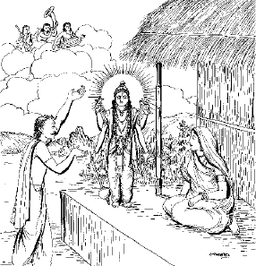
कश्यपऋषि समझ गये हैं—मेरे घरमें भगवान् प्रकट हुए हैं। सन्ध्यादिक नित्यकर्म परिपूर्ण किया है। हाथमें कमण्डलु है, चरणमें पादुका है। दौड़ते हुए जाते हैं। जैसे ही घरमें प्रवेश किया है, दिव्य तेजमें चतुर्भुज नारायणका दर्शन हुआ है। कश्यपऋषि विचार करते हैं—गायत्री-मन्त्रका मैं जप करता हूँ, तब इसी स्वरूपका ध्यान करता हूँ। मेरे इष्टदेव मेरे घरमें आये हैं। दर्शनसे हृदय पिघलता है, अति आनन्द हुआ है। भगवान्का जय-जयकार किया है।
माता-पिताको स्वरूपका भान कराया है और चतुर्भुज स्वरूप अन्तर्धानकर भगवान्ने सात वर्षके बटुक बालकका स्वरूप धारण किया है। बटुक ब्रह्मचारी वामनजी महाराजकी जय!
दृष्ट्वादितिस्तं निजगर्भसम्भवं
परं पुमांसं मुदमाप विस्मिता।
गृहीतदेहं निजयोगमायया
प्रजापतिश्चाह जयेति विस्मित:॥
(श्रीमद्भा० ८।१८।११)
बटुक ब्रह्मचारी महाराजका दर्शन करनेके लिये ब्रह्मादिक देव आये हैं। कश्यपऋषिको धन्यवाद दिया है, आज जगत्पिताका भी तू पिता हुआ है, साक्षात् नारायण तेरे घरमें पुत्र-रूपसे प्रकट हुए हैं। ब्रह्मादिक देव वामनजी महाराजकी पूजा करते हैं।
यत् तद् वपुर्भाति विभूषणायुधै-
रव्यक्तचिद् व्यक्तमधारयद्धरि:।
बभूव तेनैव स वामनो वटु:
संपश्यतोर्दिव्यगतिर्यथा नट:॥
(श्रीमद्भा० ८।१८।१२)
गृहस्थके धर्म
भगवान् जिसके ऊपर कृपा करते हैं, उसको घरमें ही सत्संग देते हैं। गृहस्थ-आश्रम भक्तिमें बाधक नहीं है, गृहस्थ-आश्रम भक्तिमें साधक है। शास्त्रोंमें संन्यासकी बहुत महिमा वर्णन की गयी है। विरक्त साधु-संन्यासी महात्मा नारायणके स्वरूप हैं, सबसे श्रेष्ठ हैं। कभी-कभी गृहस्थ-आश्रम संन्याससे भी श्रेष्ठ हो जाता है।
किसी साधु-संन्यासीके मठमें भगवान्का कोई भी अवतार नहीं हुआ है। भगवान्के सभी अवतार गृहस्थके घरमें हुए हैं। साधु-संन्यासी-महात्मा ब्रह्म-चिन्तन करते हुए ब्रह्मरूप हो जाते हैं, अच्छा है। किंतु, गृहस्थ-आश्रममें ऐसी शक्ति है कि ब्रह्मको—परमात्माको बालक बना लेता है।
गृहस्थ-आश्रममें पति-पत्नी धीरे-धीरे संयमको बढ़ायें, भक्तिको बढ़ायें। लग्नका लक्ष्य क्या है, समझ करके बराबर लग्न करें। लग्न कामका विनाश करनेके लिये है। श्रीकृष्ण-मिलनमें काम विघ्न करता है।
जीव और ईश्वर दोनों साथमें ही रहते हैं। जीव और ईश्वर दोनोंके बीचमें परदा है, उसीको काम कहते हैं। कामरूपी परदा होनेसे जीव-ईश्वरका मिलन नहीं होता है।
कामका विनाश करनेके लिये लग्न है। हमारे ऋषियोंने स्त्रीको धर्मपत्नी माना है। स्त्री काम-पत्नी नहीं है। स्त्री भोगका साधन नहीं है, स्त्री भक्तिका साधन है। पति-पत्नी एकान्तमें बैठ करके थोड़ा ध्यान करें, एकान्तमें बैठ करके पवित्र ग्रन्थका वाचन करें, एकान्तमें शान्तिसे भगवान्के नामका जप करें। जब एकान्त मिलता है, तभी पाप होता है। एकान्तमें ही मन बिगड़ता है। बिगड़े हुए मनको एकान्तमें ही सुधारना है।
गृहस्थ-आश्रममें ऐसी शक्ति है कि गृहस्थ परमात्माका पिता हो सकता है। साधु-संन्यासी-महात्मा ब्रह्म-चिन्तन करते हुए ब्रह्मरूप होते हैं। गृहस्थाश्रममें ऐसी शक्ति है कि परमात्माको बालक बना सकते हैं। आज भी किसीका गृहस्थाश्रम कश्यप और अदितिके जैसा हो तो आज भी भगवान् प्रकट होनेके लिये तैयार हैं।
जो देहको नहीं देखता है, जो देहमें विराजमान देवको देखता है, उसीको कश्यपऋषि कहते हैं। देखनेलायक देव है। यह मल-मूत्रसे भरा हुआ शरीर बहुत अच्छा नहीं है। देहकी शोभा देवसे है। जो प्रत्येकमें भगवान्को देखता है, उसीको कश्यप कहते हैं। पुरुष कश्यप बने और स्त्री अदिति बने।
अदिति शब्द वेदोंमें आया है—अदितिर्द्यौरदितिरन्तरक्षमदितिर्माता। अदिति शब्दका अर्थ है—नारायणाकार मनोवृत्ति।
भगवान्ने धन देनेमें थोड़ी विषमता की है, किसीको ज्यादा दिया है, किसीको कम दिया है। भगवान्ने मन सभीको एक-जैसा ही दिया है। मन किसके लिये दिया है, खराब विचार करनेके लिये मन नहीं दिया है। काम-सुखका संकल्प करके जीव अपनेको बाँध लेता है। खराब विचार करनेके लिये मन नहीं दिया है। विवेकसे व्यवहार करो—मन परमात्माका ध्यान करनेके लिये दिया है।
जगत्में रहनेसे पाप नहीं होता है, जगत्का ध्यान करनेसे पाप होता है। जितने पाप होते हैं, संसारका ध्यान करनेसे होते हैं। पाप उसीका छूटता है, जो संसारका ध्यान कभी करता नहीं है। मन भगवान्का ध्यान करनेके लिये दिया है। मन पाप करनेके लिये नहीं दिया है। खराब विचार करनेके लिये मन नहीं दिया है। जीव काम-सुखका संकल्प करके अपनेको बाँधता है। मानव विचार करता नहीं है—मनसे मैं क्या करता हूँ? भगवान्की भक्ति न हो तो पाप होगा। मानव जिस इन्द्रियसे भक्ति नहीं करता, उस इन्द्रियसे पाप होता है।
अदितिमाताका मन नारायणाकार हो गया था। मन जिसका चिन्तन करता है, तदाकार हो जाता है। अदितिमाताने बारह दिवसका पयोव्रत किया था। रामनवमीका व्रत, जन्माष्टमीका व्रत, एकादशीका व्रत क्यों करना चाहिये? व्रतका लक्ष्य क्या है?
मन विषयोंका चिन्तन करता है। मन विषयाकार हो गया है। वह मन विषयोंका चिन्तन छोड़े, परमात्माका स्मरण करे, व्रत करनेसे मन नारायणाकार हो जाता है।
भगवान् श्रीशंकराचार्य स्वामीसे किसीने पूछा था, इस संसारमें शत्रु कौन है? शंकराचार्य स्वामीने उत्तर दिया मन शत्रु है। फिर प्रश्न किया जगत्में मित्र कौन है? उत्तर मिला—मन ही मित्र है। मन ही शत्रु है। मन खराब विचार करे तो मन शत्रु हो जाता है। मन पवित्र विचार करे तो मन ही मित्र हो जाता है।
शुकदेवजी महाराज वर्णन करते हैं—जगत्को भूल जाना है। भगवान्के स्मरणमें, दर्शनमें तन्मय होना है, इसीलिये व्रत है। कितने ही लोग ऐसा समझते हैं कि व्रत करना माने आलू और साबूदाना खूब खाना। आलू और साबूदाना खानेसे कहीं व्रत होता है? यह तो व्रतका एक साधारण अंग है। व्रतका अर्थ है—जगत्को भूल जाना। भगवान्के स्मरणमें, दर्शनमें तन्मय होनेके लिये व्रत है।
साधारण मानवका मन विषयाकार होता है। सन्तोंका मन श्रीकृष्णाकार होता है। नारायणाकार मनोवृत्ति ही अदिति है। मन जब नारायणाकार होता है, तभी मायाका परदा दूर होता है। मायाका परदा दूर हुआ कि भगवान् प्रकट हो जाते हैं। भगवान्का जन्म नहीं होता, प्रभुका प्राकटॺ होता है।
लकड़ीमें अग्नि है। लकड़ीमें जो अग्नि है, उसका उपयोग करना हो तो लकड़ीके ऊपर अग्नि रखो। चूल्हेमें कोई खाली लकड़ी रख दे तो पानी गर्म नहीं होगा, रसोई नहीं होगी। लकड़ीमें जो अग्नि है, उसका उपयोग करना हो तो लकड़ीके ऊपर अग्नि रखो। लकड़ीमें जो अग्नि है और लकड़ीके ऊपर जो अग्नि है, दोनों जब एक हो जाती हैं, तब ज्वाला होती है।
आपके हृदयमें नारायण हैं। हृदयमें तो भगवान् हैं, किंतु हृदयमें भगवान्के होनेपर भी यह जीव पाप करता है। हृदयमें भगवान् विराजमान हैं तो भी जीव दुखी है। हृदयमें भगवान् विराजमान हैं तो भी जीव अज्ञानी है। कदाचित्, आपको शंका होगी कि जो भगवान् दु:ख दूर नहीं करते हैं, जो भगवान् पाप करनेसे नहीं रोकते हैं, ऐसे भगवान्की क्या जरूरत है?
हृदयमें जो नारायण हैं, वे प्रकाशमय हैं। दीपक प्रकाश देता है। दीपकके प्रकाशमें कोई ताला तोड़ करके चोरी करे तो उसको भी दीपक प्रकाश देता है। कोई भागवतका पाठ करता हो तो उसको भी प्रकाश देता है। दीपक कहता है—प्रकाश देना मेरा काम है। पाप करो या पुण्य करो। मेरा कोई शत्रु नहीं, मेरा कोई मित्र नहीं। हृदयके अन्दर जो नारायण हैं, वे नारायण प्रकाशमय हैं।
यह फूलकी माला है—आँखसे दिखता है कि यह फूल है, माला है। आँखको देखनेकी शक्ति कौन देता है? आँखके पीछे मन है। मन किसी दूसरे विषयमें फँस जाय तो फूलकी माला नहीं दिखती है। आँखके पीछे मन है। मन आँखको देखनेकी शक्ति देता है। मनको शक्ति कौन देता है? मनको शक्ति बुद्धि देती है और बुद्धिको प्रकाश परमात्मा देते हैं।
अन्तर्यामी नारायण किसीका दु:ख दूर नहीं करते हैं। अन्तर्यामी नारायण किसीको सुख नहीं देते हैं। अन्तर्यामी नारायण केवल प्रकाशमय हैं, प्रकाश देते हैं।
नारायणका घरमें स्थापन करो। नारायणकी प्रेमसे पूजा करो। नारायणका सुन्दर शृंगार करो। नारायणका दर्शन सतत करो। दर्शनमें जिसको तृप्ति होती है, उसकी भक्ति कच्ची है। भगवान्का स्वरूप अति सुन्दर है। जब दर्शन करो, तब दर्शनमें नवीन आनन्द आयेगा। हृदय पिघलता है। भगवान्का दर्शन करता हुआ मानव आँखसे भगवान्को अन्दर ले जाय। अन्दरके भगवान् और बाहरके भगवान् जब एक होते हैं, तब प्रभुका प्राकटॺ होता है। लकड़ीमें जो अग्नि है, उसका उपयोग करना हो तो बाहरसे अग्नि लकड़ीके ऊपर रखो। बाहरकी अग्नि और अन्दरकी अग्नि जब एक होती है, तभी ज्वाला प्रकट होती है।
शुकदेवजी महाराज वर्णन करते हैं—अन्दर जो नारायण हैं, उनका नाम अन्तर्यामी नारायण है। आप जो घरमें नारायणका स्वरूप स्थापन करके पूजा करते हैं, उनका नाम है अर्चास्वरूप नारायण। अर्चास्वरूप नारायण और अन्तर्यामी नारायण दोनों जब एक होते हैं, तभी मायाका परदा दूर होता है। सर्वव्यापी परमात्मा मायाके आवरणमें ढँके हुए हैं। मायाका आवरण जब दूर होता है, तभी जीवको परमात्माका अनुभव होता है। मन जब नारायणाकार होता है, तभी मायाका परदा दूर होता है।
कश्यप और अदितिने बारह दिवसतक पयोव्रत किया था, दूधके ऊपर रहे थे। नारायणका ध्यान, नारायणकी पूजा, नारायणका स्मरण सतत करनेसे उनका मन नारायणाकार हो गया था। मन नारायणाकार हुआ, तब मायाका परदा दूर हो गया, श्रीवामनजी महाराजका प्राकटॺ हुआ।
ब्राह्मणका जन्म दो बार होता है। माता-पिता जो जन्म देते हैं, वह बहुत पवित्र नहीं माना गया है। ब्राह्मणको जब जनेऊ देते हैं, तब माता-पिता बदलते हैं। उसके पिता हो जाते हैं परब्रह्म परमात्मा नारायण और माँ गायत्री होती है।
राजाका चपरासी गलेमें चपरास रखता है। चपरास गलेमें रहनेसे उसको सतत स्मरण रहता है कि मैं राजाका नौकर हूँ, मैं राजाका सिपाही हूँ। ये जो जनेऊ है, यह वेदोंके द्वारा दी हुई चपरासके समान है, मैं भगवान्का हूँ, मैं भगवान्का चपरासी हूँ। चाभी बाँधनेके लिये यह जनेऊ वेदोंने नहीं दिया है। बहुत-से लोग जनेऊका महत्त्व समझते नहीं हैं। उनको ऐसा लगता है कि चाभी रखनेके लिये यह अच्छा है। जनेऊमें जो चाभी रखता है, वहाँसे सब देव लोग उठ जाते हैं।
जनेऊ कैसे बनाना चाहिये, इसका वर्णन वेदोंमें आया है। जनेऊ बनानेवाले ब्रह्माजी हैं। जनेऊके धागेको त्रिगुणित करते हैं—विष्णु-भगवान्। जनेऊमें गाँठ देनेका काम शिवजीका है। गायत्रीसे अभिमन्त्रित किया जाता है। बाजारसे ले आये और गलेमें रखे, सो तो ठीक है, किंतु उसका बहुत महत्त्व नहीं है। घरमें पवित्र अवस्थामें ब्राह्मण जनेऊ बनाये, वह पवित्र माना गया है। जनेऊके एक-एक धागेमें एक-एक देवकी स्थापना की जाती है ॐकारं प्रथमतन्तौ न्यसामि, अग्निं द्वितीयतन्तौ न्यसामि, नागं तृतीयतन्तौ न्यसामि एक-एक देवकी स्थापना है। जनेऊमें जो चाभी रखता है, सभी देव वहाँसे उठ जाते हैं। फिर वह रस्सीके जैसा ही रह जाता है, उसका कोई महत्त्व नहीं है।
ब्राह्मणका बालक सात वर्षका हो, तब उसको जनेऊ देनी चाहिये। जनेऊके समयमें जीवका ब्रह्म-सम्बन्ध होता है। जनेऊमें ब्राह्मण वेदमन्त्र बोलते हैं। पिता अपने पुत्रको कहता है—देवाय त्वा सवित्रे परिददामि। बेटा! आजसे मैं तुम्हें नारायणके चरणमें अर्पित करता हूँ। आजसे तू मेरा बेटा नहीं, आजसे तू भगवान्का पुत्र हो गया। जनेऊ दी जाती है, तब जीवका ब्रह्म-सम्बन्ध होता है।
साक्षात् सूर्यनारायण आये हैं—तस्योपनीयमानस्य सावित्रीं सविताब्रवीत्। सूर्यनारायणने गायत्री मन्त्रका उपदेश किया है। ब्रह्माजीने वामनजीको कमण्डलु दिया है। पृथ्वीमाताने बैठनेके लिये ब्रह्मचारीको मृगचर्मका आसन दिया है। अदिति-माता लँगोटी पहनाती हैं। छ:-सात वर्षका बालक निर्विकार होता है। लँगोटी पहन करके सन्ध्या करे, गायत्री करे तो वामनजी महाराजके जैसा ही लगता है।
ब्रह्मचारीके धर्म
बृहस्पति वामनजीको ब्रह्मचारीके धर्म समझाते हैं—बेटा ब्रह्मचारी! आजसे तीन बार सन्ध्या करना। त्रिकाल सन्ध्या अति आवश्यक है।
मनु महाराजने ब्राह्मणके धर्म मनुस्मृतिमें बहुत बताये हैं—ब्राह्मण वेदाध्ययन करे, अग्निहोत्र करे। मनु महाराजको ऐसा लगा कि कलियुगमें यह सब करना बड़ा कठिन है, अशक्य-जैसा है। फिर मनु महाराजने आज्ञा की है—कदाचित् अग्निहोत्र न करे, वेदाध्ययन न करे तो क्षम्य है। तीन बार सन्ध्या अवश्य करे।
त्रिकाल सन्ध्या करो। सन्ध्याके समान श्रेष्ठ कोई धर्म नहीं है। जो सन्ध्या नहीं करता, उसके हाथका पानी भी नहीं पीना चाहिये, वह अति अशुद्ध है। सन्ध्याहीन: अशुचिर्नित्यमनर्ह: सर्वकर्मषु। कई लोग ऐसा समझते हैं कि सन्ध्या कर्मकाण्ड है। ऐसा नहीं है। सन्ध्यामें भक्ति है, सन्ध्यामें ज्ञान भरा हुआ है। कर्म, भक्ति और ज्ञान सन्ध्यामें तीनोंका समन्वय है। इसीलिये सन्ध्या अति श्रेष्ठ है। सन्ध्यामें ब्रह्मविद्यास्वरूप गायत्रीमाताका आह्वान किया जाता है—आयातु वरदा देवी अक्षरं ब्रह्मसम्मतम्। सन्ध्याके मन्त्रोंका अर्थ समझ करके सन्ध्या करे, बहुत आनन्द आता है। ब्राह्मणोंको सन्ध्यामें श्रद्धा कम हो गयी, तभीसे ब्राह्मणोंका पतन हो गया।
जो ब्राह्मण तीन बार बराबर सन्ध्या करता है, उसकी बुद्धि कभी बिगड़ती नहीं। तीन बार बराबर जो सन्ध्या करता है, उसको कभी भीख माँगनेका प्रसंग नहीं आता है। सूर्यनारायणको उसकी चिन्ता होती है, त्रिकाल यह मुझे अर्घ्यदान करता है।
सन्ध्यामें गायत्रीमाताकी पूजा है, सन्ध्यामें प्रायश्चित्त है, सन्ध्यामें मार्जन है, सन्ध्यामें अर्घ्यदान है, सन्ध्यामें ध्यानके साथ जप है, सन्ध्यामें प्रार्थना है। सन्ध्याके समान श्रेष्ठ कोई धर्म नहीं है।
कई लोग सन्ध्या नहीं करते हैं और मन्दिरमें दर्शन करनेके लिये जाते हैं। जो सन्ध्या नहीं करता और मन्दिरमें दर्शन करनेके लिये आये तो भगवान् उसका मुख नहीं देखते हैं। मूर्ख है, सूर्यनारायणको अर्घ्य नहीं देता है। मैं कहता हूँ, सो नहीं करता है और मुझे फूलकी माला अर्पण करनेके लिये लाया है। तेरे हाथकी माला मुझे लेनी नहीं है।
जो सन्ध्या नहीं करता, उसके हाथकी पूजा देव लोग नहीं लेते हैं। जो सन्ध्या नहीं करता, वह अतिशय अपवित्र है। बृहस्पतिजी वामनजीको ब्रह्मचारीके धर्म समझाते हैं—बेटा! त्रिकाल सन्ध्या करना। प्रात:-सन्ध्या बराबर जो करता है, उससे रात्रिमें कोई पाप हुआ हो तो उसका विनाश हो जाता है। सायं-सन्ध्या जो बराबर करता है, उससे दिवसमें कोई पाप हुआ हो तो उसका विनाश हो जाता है। मध्याह्न-सन्ध्या करनेसे अन्नमें, जलमें जो पाप आया है, उसका विनाश होता है। मध्याह्न-सन्ध्या अति आवश्यक है। मध्याह्न-सन्ध्या किये बिना ब्राह्मणको खानेका अधिकार नहीं है।
आप: पुनन्तु पृथिवीं पृथ्वी पूता पुनातु माम्।
पुनन्तु ब्रह्मणस्पतिर्ब्रह्मपूता पुनातु माम्॥
यदुच्छिष्टमभोज्यं च यद्वा दुश्चरितं मम।
सर्वं पुनन्तु मामापोऽसतां च प्रतिग्रहॸ स्वाहा॥
मध्याह्न-सन्ध्याका यह मुख्य मन्त्र है। त्रिकाल सन्ध्या अति आवश्यक है। सन्ध्या न करनेसे सूर्यनारायण शाप देते हैं। बुद्धि बहुत बिगड़ती है। बेटा! त्रिकाल सन्ध्या करना। आजसे तू ब्रह्मचारी हुआ है। सावधान रहना किसी भी स्त्रीका स्पर्श न हो। अति भीड़में, अनजानेमें कदाचित् स्पर्श हो जाय तो भगवान् क्षमा करते हैं। जानबूझ करके स्त्री पुरुषको स्पर्श करे या पुरुष परस्त्रीको स्पर्श करे तो यह व्यभिचारके जैसा ही पाप है। इसकी बहुत सजा होती है। शास्त्रोंमें तो लिखा है—न स्पृशेत् दारवीमपि। दारवीका अर्थ होता है—लकड़ीकी पुतली। बुद्धिपूर्वक स्पर्श न करे।
साधुको, संन्यासीको, ब्रह्मचारीको स्त्री दूरसे ही वन्दन करे, स्पर्श करनेकी जरूरत नहीं है। स्पर्शसे अनेक दोष उत्पन्न होते हैं। इन्द्रियाँ बहुत बलवान् हैं—बलवानिन्द्रियग्रामो विद्वांसमपि कर्षति। धर्मकी मर्यादामें जो रहता है, उसका भी मन कभी-कभी बिगड़ जाता है। जो धर्मकी मर्यादाको भंग करता है, जो स्वेच्छाचारी है, उसका मन बिगड़े तो क्या आश्चर्य है!
स्त्री दूरसे वन्दन करे। ब्राह्मणको, साधुको स्पर्श न करे—यह सनातनधर्मकी मर्यादा है। स्पर्शसे अनेक दोष उत्पन्न होते हैं। स्पर्श करनेपर उस समय कदाचित् पाप भले ही न हो, पीछेसे होता है। बेटा! किसी स्त्रीके साथ एकान्तमें रहना नहीं। कदाचित् किसी स्त्रीके साथ बोलनेका प्रसंग आये तो स्त्रीमें मातृभाव रखना। मातृभाव रखनेका अर्थ यह है कि स्त्रीके चरणमें नजर रखना। स्त्रीके मुखमें, स्त्रीके केशमें कामका निवास होता है। स्त्री-मुखको ताकना नहीं, स्त्रीके चरणमें दृष्टि रखो।
रामायणमें वर्णन आता है, चौदह वर्ष श्रीलक्ष्मणजी महाराज श्रीसीताजीकी सेवामें रहे। श्रीलक्ष्मणजी सीतामाताके चरणमें ही दृष्टि रखते थे। आँख ऊँची करके कभी सामने देखा नहीं है। एक बार रामचन्द्रजीने लक्ष्मणजीकी परीक्षा की है—लक्ष्मण! ये तेरी भाभीके गलेका चन्द्रहार है, तुमने देखा होगा? लक्ष्मणजीने कहा—मैंने कभी देखा नहीं है। रामचन्द्रजीने पुन: प्रश्न किया—लक्ष्मण! ये तेरी भाभीके हाथकी चूड़ियाँ हैं, तुमने देखी होंगी? लक्ष्मणजीने कहा—नहीं, मैंने नहीं देखी हैं। श्रीरामजीने पूछा—लक्ष्मण! तुमने कुछ भी नहीं देखा है? लक्ष्मणजीने कहा—मैं भाभीके चरणोंमें रोज वन्दन करता था। वन्दनके समयमें चरणोंके नूपुर मैंने देखे हैं। आँख ऊँची करके कभी सामने देखा नहीं है।
सम्पत्तिसे थोड़ा सुख मिलता है। संयमसे अति सुख मिलता है। जो इन्द्रियजित् है, वह इन्द्र राजासे भी ज्यादा सुखी है। इन्द्र स्वर्गके राजा हैं। इन्द्रदेवको बहुत सुख मिलता है, ऐसा वर्णन आता है। इन्द्रियजित् को जो आनन्द मिलता है, वैसा सुख देवोंको, इन्द्रको भी नहीं मिलता है।
संयमसे ही सुख-शान्ति मिलती है। सम्पत्तिसे थोड़ा सुख मिलता है। रामायणमें तो रामचन्द्रजीने ऐसा कहा है कि रावणको मारना बड़ा कठिन नहीं है, इन्द्रजीतको मारना बड़ा कठिन है। इन्द्रजीत मरता है, तब रावण तो मरनेवाला ही है।
इन्द्रजीत तो मोह है। मोह होनेसे काम जीवित रहता है। मोह मर जाय तो काम मरता है। लक्ष्मणजी संयमकी मूर्ति हैं।
पत्रं दृष्ट्वा फलं दृष्ट्वा दृष्ट्वा स्त्रीणां च यौवनम्।
एकान्ते स्त्रीमुखं दृष्ट्वा कस्य न चलते मन:॥
पिता यस्य शुचिर्भूतो माता यस्य पतिव्रता।
श्रीरामसेवाभिरता: तस्यैव निश्चलं मन:॥
बेटा! सावधान रहना, मायामें बहुत जोर है। माया बड़े-बड़े ज्ञानी-योगियोंको भी भुला देती है।
ब्रह्मचारीके धर्म समझाये हैं—बेटा! स्त्री-शरीर अग्निके समान है और पुरुषका शरीर घीका भरा हुआ घड़ा है। अग्निके पास जो घी रखता है, वह पिघल जाता है। स्त्री-शरीरसे बहुत दूर रहना चाहिये। संयमसे ही जीवन सफल होता है।
आजसे घरमें भोजन करना नहीं है, मधुकरी माँगना है। मधुकरीमें जो कुछ मिले, वह गुरुदेवको अर्पण करना है। गुरुदेव जो आज्ञा दें, वही खाना है। दूध-भात है, दूध-रोटी है, सादा भोजन जो करता है, वही संयम रख सकता है। बहुत तेल, मिर्चा, इमली जो खाता है, उसके शरीरमें गर्मी उत्पन्न हो जाती है, वह शक्तिका नाश करती है। बेटा! सावधान रहना। जो सादा भोजन करता है, वही संयमसे रह सकता है। गुरुदेव आज्ञा दें, वही भोजन करना चाहिये।
ब्रह्मचारीके धर्म समझाये हैं—बेटा! कभी शृंगारका गीत सुनना नहीं, शृंगारका चित्र देखना नहीं। खराब चित्र देखनेसे मन बिगड़ता है, खराब शब्द सुननेसे मन बिगड़ता है।
एक साधु महाराज कहते थे, भारतकी दशा कबसे बिगड़ गयी, भारतमें सिनेमा आये, तभीसे सभीकी आँख बिगड़ गयी। होटलका खाने लगे, तभीसे सभीकी जीभ बिगड़ गयी। कई लोग ऐसे हैं, जिनको घरका खाना भाता ही नहीं, बाजारका भाता है। पैसा खर्च करके पाप करते हैं। जीभको, आँखको, मनको बिगाड़ते हैं।
बेटा! सावधान रहना। शृंगारका गीत सुनना नहीं। जिस पुस्तकमें शृंगारका वर्णन बहुत हो, ऐसी पुस्तकको पढ़ना नहीं। खराब शब्दका असर मनके ऊपर बहुत होता है। खराब चित्र मनसे जल्दी नहीं निकलते हैं।
भक्तिका अर्थ यह है कि भगवान्के स्वरूपको हृदयमें स्थिर करना है। जिसके मनमें संसारके चित्र फँस गये हैं, वहाँ भगवान्का स्वरूप कैसे स्थिर होगा? बेटा! सावधान रहना। आजसे तू ब्रह्मचारी हुआ है। वामनजी महाराज सन्ध्या करते हैं। अग्निमें आहुति देते हैं। उस समय साक्षात् माता पार्वतीजी वहाँ आयी हैं।
माता पार्वतीजीको वामनजी महाराज वन्दन करते हैं, और कहा है—माँ! मुझको भिक्षा दो।
माता पार्वतीजी बटुकवेशधारी वामन भगवान्को भिक्षा देती हैं। बटुक वामनजी भिक्षा गुरुदेवको अर्पित करते हैं। गुरुदेवने कहा—बेटा! मेरा परिवार बहुत बड़ा है। ये भिक्षा तो थोड़ी-सी है। मुझे अधिक भिक्षाकी जरूरत है। वामनजीने कहा—गुरुजी! मुझे आप किसी बड़े यजमानका परिचय बतायें तो मैं अधिक भिक्षा ले आऊँ।
गुरुजीने कहा अरे! बड़े यजमान तो बलि महाराज हैं। वे नर्मदानदीके तटपर बड़ा यज्ञ कर रहे हैं, तुम वहाँ जाओ।
राजा बलिकी यज्ञशालामें वामनभगवान्का आगमन
वामनवेषधारी भगवान् तब दौड़ते हुए राजा बलिकी यज्ञशालामें गये हैं। सभी लोग वामनजीका दर्शन करते हैं, श्रीअंग मेघके जैसा श्याम है, लँगोटी पहने हुए हैं, दूसरा कोई वस्त्र नहीं है। हाथमें कमण्डलु है। आँखमें तेज है।
यह कोई साधारण ब्रह्मचारी नहीं है। स्वागतम्-स्वागतम्—स्वागत किया है, सुन्दर आसन दिया है। राजा बलिने रानी विन्ध्यावलीको आज्ञा दी है—ब्रह्मचारी महाराजकी पूजा करनी है, तैयारी करो। विन्ध्यावली रानीने तैयारी की है, पुष्पकी माला है, श्रीफल है, चन्दन है, सोनेके कमण्डलुमें नर्मदानदीका पवित्र जल है। विन्ध्यावली रानीके साथ उनकी सखियाँ आयी हैं, सुना है कोई तपस्वी, तेजस्वी ब्रह्मचारी आया है। ब्रह्मचारीको देखनेके लिये सखियाँ आयी हैं। वामनजीका दर्शन करती हैं। स्त्रियोंको आनन्द होता है।
अरी सखी! इस ब्रह्मचारीकी माँने बहुत-बहुत पुण्य किये हैं। ऐसा बालक जिसकी गोदमें खेलता हो, उस माँको कैसा आनन्द होता होगा! ऐसा बालक मैंने कभी देखा नहीं है।
रानी विन्ध्यावली वामनजी महाराजके चरणोंमें जल अर्पण करती हैं। बलि महाराज धीरे-धीरे चरणोंकी सेवा करते हैं।
जिसके चरणकी सेवा होती है, उसके पुण्यका नाश हो जाता है। जो चरणकी सेवा करता है, उसको वह पुण्य मिलता है।
वामनजीके चरण अति कोमल हैं। चरणोंमें स्वस्तिकका, कमलका चिह्न है। चरणोंके नख रत्नके जैसे हैं। बलि महाराजको वामनजीके नखमें अपना मुख दिखता है। बलिराजाने वामनजीके चरणोंका तीर्थ अपने मुखमें, मस्तकपर धारण किया है। उस समय ब्राह्मण वेद-मन्त्र बोलने लगे हैं। ऋग्वेद, यजुर्वेदके मन्त्रोच्चारके साथ बलिराजाने वामनजीका चरण-तीर्थ मुखमें रखा है, आज मेरे पापोंका नाश हो गया। वामनजी महाराजकी पूजाकी है।
महाराज! मैं आपके माता-पिताका वन्दन करता हूँ। आपके माता-पिताको धन्यवाद देता हूँ, जिनके यहाँ आपका जन्म हुआ। आपके माता-पिता बड़े पुण्यशाली होने चाहिये। मैंने बहुत-से ब्राह्मणोंकी पूजा की है। महाराज! आपके जैसा ब्राह्मण मैंने नहीं देखा। मैं तो ऐसा मानता हूँ कि संसारमें जितने ब्रह्मतेजस्वी ब्राह्मण हैं, उन सभी ब्राह्मणोंका ब्रह्मतेज मिला करके ही आपका शरीर बना है। तेजोमय आपका शरीर है—ब्रह्मर्षीणां तप: साक्षान्मन्ये त्वार्य वपुर्धरम्। तेजोमय श्रीअंग है। आज आपके चरणोंका तीर्थ मुझे मिला है। मैं मानता हूँ, मेरे सभी पापोंका नाश हो गया। आज मैं पवित्र हो गया। आज मेरा जीवन सफल हुआ, मेरा यज्ञ सफल हुआ। हे ब्रह्मचारी महाराज! आपने बहुत कृपा की है। आपका दर्शन करनेके बाद मेरे हृदयमें ऐसा प्रेम हो गया है कि मैं अपना राज्य आपको अर्पण कर दूँ।
जहाँ प्रेम होता है, वहाँ लेनेकी इच्छा नहीं होती है। प्रेममें देनेकी इच्छा होती है। राजा बलिने कहा—मेरी इच्छा होती है कि मैं अपना राज्य आपको अर्पण कर दूँ।
वामनजी महाराज मन-ही-मन बोले हैं तेरा सब कुछ लेनेके लिये ही मैं वामन हो करके आया हूँ।
राजा बलिने पुन: कहा—महाराज! संकोच रखना नहीं। माँगो, जो माँगोगे—वह मैं आपको अर्पण करूँगा। स्वर्णका दान करूँ, भूमिका दान करूँ, महाराज! आपकी इच्छा यदि लग्न करनेकी हो तो मैं कन्यादान करनेके लिये भी तैयार हूँ, ऐसा दामाद मुझे कहाँ मिलनेवाला है, आपके जैसा मैंने देखा नहीं है। कन्यादान करूँ? जो माँगो, सो मैं आपको दूँगा—
गां काञ्चनं गुणवद् धाम मृष्टं
तथान्नपेयमुत वा विप्र कन्याम्।
ग्रामान् समृद्धांस्तुरगान् गजान् वा
रथांस्तथार्हत्तम सम्प्रतीच्छ॥
(श्रीमद्भा० ८।१८।३२)
संकोच करना नहीं, माँगो।
वामनभगवान्का बलिके पूर्वजोंकी प्रशंसा करना
किसीके भी यहाँ आप माँगनेके लिये जाओ तो माँगनेसे पहले उसकी थोड़ी प्रशंसा करो। शक्करसे ज्यादा मिठास प्रशंसामें होती है। प्रशंसा सुननेपर हृदय पिघलता है। उसकी प्रशंसा करो, उसके माँ-बापकी प्रशंसा करो। आजकलके श्रीमान् लोगोंके घरमें स्त्रीका ही राज्य होता है, पत्नीकी प्रशंसा करोगे तो ज्यादा मिलेगा। जगत्को शिक्षण दिया है।
वामनजी महाराज प्रशंसा करते हैं—प्रह्लादजीके वंशमें तेरा जन्म हुआ है। प्रह्लादजी तेरे दादा थे। पाँच वर्षके प्रह्लादजी महान् भगवद्भक्त थे। उनका वचन सत्य करनेके लिये भगवान् स्तम्भसे प्रकट हुए। तेरे पिता महाराज विरोचन तो अति उदार थे। मैंने ऐसा सुना है कि विरोचनमहाराजने एक ब्राह्मणको दानमें अपना आयुष्य दे दिया था, मेरी आयु आपको मिले, महाराज! आपकी जगत्को जरूरत है। ब्राह्मण समाजको ज्ञान देता है। समाजमें बहुत-से लोग अज्ञानसे दुखी होते हैं। दु:खका कारण अज्ञान है। ज्ञानमें शान्ति है। समाजका अज्ञान दूर करना, समाजको ज्ञान देना ब्राह्मणका काम है। कोई बड़े तपस्वी ब्राह्मण थे, उनका आयुष्य पूरा हो गया था। तेरे पिताने उन ब्राह्मणको अपना आयुष्य दानमें दे दिया। महाराज विरोचन बड़े उदार थे।
तेरे परदादा हिरण्यकशिपु महान् वीर थे। उनके जैसा कोई वीर हुआ नहीं। मुझे तो ऐसा दिखता है कि परदादा हिरण्यकशिपुकी शक्ति, दादा प्रह्लादकी भक्ति और पिता विरोचन महाराजकी उदारता—ये सभी सद्गुण तेरेमें सोलह आना मौजूद हैं, तू बड़ा उदार है। मुझे विश्वास है कि मैं जो माँगूँगा, वह मुझे मिलनेवाला ही है।
बलि महाराजको आश्चर्य होता है—कैसा बोलते हैं! ये तो सात-आठ वर्षके ही दिखते हैं, किंतु बातें मेरे परदादाकी भी करते हैं।
महाराज! आपने मेरे दादाको, परदादाको कहीं देखा था?
‘मैंने कहीं देखा नहीं, मैं तो बालक हूँ। ब्राह्मण जो बोलते हैं, वह मैंने सुना है।’ बहुश्रुत ब्राह्मण है, ‘तुम्हारे पितरोंकी कीर्ति मैंने सुनी है।’
बलि राजाने हाथ जोड़कर कहा है—‘महाराज! माँगो, आप जो माँगोगे, वह आपको दूँगा।’
वामनभगवान्का तीन पग पृथ्वी माँगना
वामनजीने कहा—‘मैं माँगनेके लिये ही आया हूँ। किंतु मैं लोभी ब्राह्मण नहीं हूँ, मैं सन्तोषी ब्राह्मण हूँ। ज्यादा लेनेके लिये मैं आया नहीं हूँ। मेरे पैरसे नाप करके तीन पैर पृथ्वीका दान तू मुझे कर दे। इसीलिये मैं आया हूँ।’
तीन पैर पृथ्वीका दान माँगा है। बलि महाराजको थोड़ा आश्चर्य हुआ है—अवस्था बहुत छोटी है, अभी बुद्धि कच्ची है, माँगना आया नहीं! तीन पग पृथ्वीका दान लेनेके लिये मेरे घरमें आये हैं? बलि राजाने कहा—यह तो बहुत ही कम है। लेनेवालेको सन्तोष हो—यह तो ठीक है। किंतु देनेवालेको भी सन्तोष होना चाहिये। मुझे सन्तोष नहीं होता है। ये बहुत ही कम है। अपना परिचय मैं आपको कैसे दूँ? आत्म-परिचय देनेसे पुण्यका नाश होता है। अपना परिचय अपने मुखसे कभी नहीं देना चाहिये। आपका परिचय दूसरा कोई दे, यह सनातनधर्मकी मर्यादा है। मैं अपना परिचय आपको कैसे दूँ? किंतु, आज मुझे बोलना पड़ता है, इस संसारमें मेरी ऐसी प्रकृति है कि जिस ब्राह्मणकी मैं पूजा करता हूँ, जिस ब्राह्मणको मैं दान देता हूँ, वह ब्राह्मण किसीके यहाँ फिरसे दान लेनेके लिये जाता ही नहीं है। मैं अति उदार हूँ। जगत्में मेरी ऐसी प्रसिद्धि है। आज मेरे यहाँ आप दान लेनेके लिये आये हो, फिर आप किसी दूसरेके यहाँ दान लेनेके लिये जाओ तो मेरे लिये यह अच्छा नहीं है।
आप जो माँगते हो, यह बहुत ही कम है। महाराज! आपके मुखपर तेज है। आप लोभी ब्राह्मण नहीं हैं, आप सन्तोषी हैं। तीन पैर पृथ्वीसे क्या होनेवाला है? अभी आप छोटे हैं। लग्न होनेके बाद पैसेके लिये कुछ प्रवृत्ति करनी पड़ेगी। आपके जैसे तपस्वी ब्राह्मणको सन्ध्या-गायत्री छोड़ करके पैसेके लिये प्रवृत्ति करनेमें बड़ा दु:ख होगा। तीन पैर पृथ्वीसे क्या होगा? मैं आपको तीन गाँव देनेके लिये तैयार हूँ। आपके कुटुम्बका अच्छी तरहसे पोषण हो, आप दिनभर गायत्रीका जप करो, ध्यान करो, जप करो। आप बड़े तपस्वी लगते हैं। तपश्चर्या छोड़ करके पैसेके लिये प्रवृत्ति करनेमें आपको बड़ा दु:ख होगा। यह आपने बहुत ही कम माँगा है, आप ज्यादा कुछ माँग लीजिये।
वामनजीने स्मित हास्य किया और कहा—राजा! तू तो ज्यादा देनेको तैयार है, किंतु मेरेको तो विचार करना चाहिये। अति संग्रह करनेके लिये जो दान लेता है, उसके पुण्यका नाश हो जाता है। अति संग्रह करनेके लिये जो दान लेता है, उसके मस्तकमें यजमानका पाप आता है।
शास्त्रोंमें ऐसा वर्णन है कि क्षत्रिय और वैश्य थोड़ा लोभ करें तो यह क्षम्य है। किंतु साधु और ब्राह्मण लोभ करे तो यह भगवान्को अच्छा नहीं लगता। ब्राह्मणके जीवनमें सन्तोष होना चाहिये। लाभसे लोभ बढ़ता है। बड़े-बड़े राजा लोग लोभसे ही पाप करते थे, ऐसा मैंने सुना है। ज्यादा ले करके मैं क्या करूँगा? आजतक मैं किसीके घर दान लेनेके लिये गया ही नहीं। आज ही तेरे घरमें दानके लिये आया हूँ। एक गृहस्थके चबूतरेपर बैठ करके मैं सन्ध्या करता था। वह गृहस्थ बाहर गये थे। वापस आये तो मुझे कहा—किसको पूछकर आप मेरे चबूतरेपर बैठे हो, उठो यहाँसे। मैंने कहा—मैं सन्ध्या करनेके लिये यहाँ बैठा हूँ। वह बोला—मैं आपको नहीं जानता, उठ जाओ यहाँसे।
मुझे उठना पड़ा। सन्ध्यामें, गायत्रीमें विक्षेप हुआ। मैंने ऐसा विचार किया कि अपने मालिकानेकी जगह हो तो दिनभर जप करूँ, कोई मुझे उठाये नहीं। तुम्हारी भूमिपर बैठकर मुझे गायत्रीका पुरश्चरण करना है। ज्यादा ले करके मैं क्या करूँगा?
बलिराजाको आनन्द होता है—ऐसा तपस्वी ब्राह्मण मेरी जगहपर बैठ करके गायत्री-जप करेगा तो मेरा उद्धार हो जायगा। बलिराजाको थोड़ा अभिमान था कि मैं बड़ा उदार हूँ। वामनजीने कहा—राजा! तू बड़ा उदार तो है, किंतु याद रखना कि मेरे-जैसा दान लेनेवाला भी तुम्हें जगत्में नहीं मिलेगा। तू तो बहुत देता है, किंतु, मुझे लेना नहीं है। मैं सन्तोषी ब्राह्मण हूँ।
बलिराजाको आश्चर्य होता है—ऐसे सन्तोषी ब्राह्मण हैं, इसीलिये यह पृथ्वी टिकी है। जगत्में पाप बहुत बढ़ गया है। सती स्त्री और सन्त पृथ्वीको टिकाये हुए हैं। प्रत्येक गाँवमें एक सती स्त्री होती है, भजनानन्दी सन्त होते हैं।
गोभिर्विप्रैश्च वेदैश्च सतीभिर्ब्रह्मचारिभि:।
अलुब्धैर्दानशीलैश्च सप्तभिर्धार्यते मही॥
जिस गाँवमें कोई सती स्त्री नहीं है, जिस गाँवमें कोई भजनानन्दी सन्त नहीं है, वह गाँव दरियामें डूब जाता है। प्रत्येक गाँवमें भगवान् एक सती स्त्रीको रखते हैं, तपस्वी ब्राह्मणको, भजनानन्दी सन्तको रखते हैं।
राजा बलि विचार करते हैं—माना कि अवस्था बहुत छोटी है, किंतु ज्ञान कैसा है! ऐसे तपस्वी ब्राह्मण हैं, इसीलिये यह पृथ्वी टिकी है। हाथ जोड़ करके कहा—महाराज! धन्य हैं। आप ज्यादा कुछ नहीं लेंगे। आपके इच्छानुसार आज तीन पैर पृथ्वीका मैं दान करता हूँ। मुझे सन्तोष नहीं है—यह बहुत ही कम है। मेरी प्रार्थना है कि आपको किसी भी वस्तुकी जरूरत हो तो मेरे घरमें आना। इस घरमें जो कुछ है, सब आपका ही है—आपके आशीर्वादसे है। फिरसे मेरे घरमें आना। फिरसे मैं आपकी सेवा करूँगा। आज मुझे सन्तोष हुआ नहीं है।
वामनजीने स्मित हास्य किया और बलि राजासे कहा—‘आज तीन पग पृथ्वीका दान करके दे—फिर वार्तालाप होगा। ज्यादा बात करनेकी क्या जरूरत है? आज तीन पग पृथ्वीका दान कर दे।’
शुक्राचार्यका बलिको दान देनेसे मना करना
राजा बलि दानका संकल्प करनेके लिये तैयार हुए हैं। यज्ञशालामें शुक्राचार्य विराजमान थे। शुक्राचार्य बड़े ज्ञानी हैं, तपस्वी हैं। शुक्राचार्य समझ गये, यह कोई साधारण ब्राह्मण नहीं है—
एष वैरोचने साक्षाद् भगवान्विष्णुरव्यय:।
कश्यपाददितेर्जातो देवानां कार्यसाधक:॥
(श्रीमद्भा० ८।१९।३०)
शुक्राचार्यजी राजा बलिको सावधान करते हैं—‘यह ब्रह्मचारी जैसा दिखता है, वैसा नहीं है। यह कौन है, कैसा है—मैं जानता हूँ। अभी तो बालस्वरूप प्रकट किया है। पृथ्वीको नापते-नापते विराट् स्वरूप दिखायेगा। इसके तीन पैर कैसे हैं, मैं जानता हूँ, तू नहीं जानता। ये साक्षात् भगवान् महाविष्णु आये हैं। दो पैरमें तेरा सब राज्य आ जायगा, तीसरा पैर रखनेकी जगह नहीं रहेगी। तुम्हें पातालमें धकेल देगा। मैं इसको पहचानता हूँ।’
दान देनेका मुख्य अधिकार गृहस्थको है। साधु-संन्यासी बहुत पैसेका संग्रह न करे। दान देनेकी भी इच्छा न रखे। दान देनेका अधिकार मुख्यत: गृहस्थको है। गृहस्थके आँगनमें ब्रह्मचारी, साधु, संन्यासी आये—तो जो आया है, उसका सम्मान करना गृहस्थका धर्म है। अति दान देना अच्छा नहीं है। बहुत दान देनेसे भी मनकी शुद्धि नहीं होती है। दान विवेकसे देना चाहिये। स्नान करनेसे तनकी शुद्धि होती है, दान देनेसे धनकी शुद्धि होती है और परमात्माका ध्यान करनेसे ही मनकी शुद्धि होती है।
श्रीमान् लोग बहुत दान देते हैं—ठीक है; मन शुद्ध नहीं होता है। दानसे मनकी शुद्धि नहीं होती है, दानसे धनकी शुद्धि होती है। दान विवेकसे देना चाहिये। अति दान देना अच्छा नहीं है। ऐसा दान नहीं देना चाहिये, जिस दानको देनेके बाद घरके बालक दुखी हो जायँ। शुक्राचार्य समझाते हैं—बालकोंका विचार करना चाहिये, भविष्यका विचार करना चाहिये। विवेकसे गृहस्थ दान दे।
दानसे धनकी शुद्धि होती है। सौ रुपया घरमें आये तो उससे पाँचवाँ भाग अलग रखे—बीस रुपया जुदा रखे। प्रत्येक धन्धेमें पाप होता है। जिसका धन शुद्ध नहीं है, उसका व्यवहार शुद्ध नहीं होता है। व्यवहारमें धर्म मुख्य है। धनका पंचमांश धर्मके लिये रखो।
भागवतमें तो ऐसी आज्ञा है कि धनका पाँचवाँ भाग भगवान्के लिये, धर्मके लिये, परोपकारके लिये अलग रखना चाहिये। कितना ही धन ऐसा खराब होता है, जो दु:ख देकर रुलाता है और तब बाहर जाता है।
मनु महाराजने इस नियममें थोड़ा परिवर्तन किया है पाँचवाँ भाग नहीं, दसवाँ भाग अलग रखना चाहिये। मनु महाराज जानते थे कि कलियुगमें महँगाई बहुत होनेवाली है, इसीलिये मनु महाराजने कायदामें थोड़ा परिवर्तन किया है।
भागवतमें लिखा है—पंचमांश। पंचमांश नहीं तो दशमांश अलग रखना ही चाहिये। भागवतमें ‘कामाय’ शब्द लिखा है। गृहस्थका धर्म है कि लोक-सुखमें—लौकिक सुखमें थोड़ा धनका उपयोग करे। विवेकसे थोड़े धनका उपयोग करे। कई लोगोंका पैसा फैशनमें ही बहुत जाता है। कई लोगोंका पैसा व्यसनमें बहुत जाता है।
पैसा लक्ष्मीका स्वरूप है। लक्ष्मीका अनादर हो तो लक्ष्मीजी शाप देती हैं। लोक-सुखमें, भोग-विलासमें थोड़ा धन भले ही जाय। ‘कामाय’ शब्द भागवतमें लिखा है। थोड़ा धन संग्रह करना ही चाहिये। वृद्धावस्थामें पुत्रके पास माँगनेका प्रसंग न आये। कलियुगके पुत्र माता-पिताको कुछ नहीं देते। जो कुछ मिलता है, अपनी बहूको ही दे देते हैं। पैसा हो तो घरमें मान मिलेगा। पैसा नहीं है तो कोई मान नहीं देगा। अत: भविष्यका विचार करके थोड़ा धन संग्रह करना ही चाहिये।
संग्रह करो, अति संग्रह मत करो। अति संग्रह करनेसे विग्रह उत्पन्न होता है। पैसा कमाना बड़ा कठिन नहीं है; पैसा जो हाथमें आया है, उसका सदुपयोग करना बड़ा कठिन है।
शुक्राचार्यने बलिराजाको समझाया है—‘यह ब्रह्मचारी जैसा दिखता है, वैसा है नहीं। यह साक्षात् महाविष्णु है। विराट् स्वरूप प्रकट करेगा। दो पैरमें तेरा सब राज्य आ जायगा, तीसरा पैर रखनेकी जगह रहेगी नहीं।’
राजा बलिने कहा—महाराज! मैंने वाणीसे तो दान दिया है, अब केवल पानी छोड़ना बाकी है। मैंने उनको कहा है—आप जो माँगोगे सो दूँगा। वाणीसे दान दिया है, पानी छोड़ा नहीं है। मुझे झूठ बोलनेका पाप लगेगा। असत्यके समान कोई पाप नहीं है।
शुक्राचार्य समझते हैं—अति दु:खमें, प्राण-संकटमें थोड़ा झूठ बोलना चाहिये, वह दोष नहीं माना जाता है।
शुकदेवजी महाराजने ऐसा कहा नहीं है। यह बोलते हैं, राक्षसोंके गुरु शुक्राचार्यजी महाराज—
स्त्रीषु नर्मविवाहे च वृत्त्यर्थे प्राणसंकटे।
गोब्राह्मणार्थे हिंसायां नानृतं स्याज्जुगुप्सितम्॥
(श्रीमद्भा० ८।१९।४३)
अति दु:खमें, प्राण-संकटमें थोड़ा झूठ बोले तो क्षम्य है। गायोंके लिये, ब्राह्मणोंके लिये, गरीबके लिये झूठ बोले—वह क्षम्य है। किसीका लग्न होता हो तो लग्नमें थोड़ा झूठ बोले—वह क्षम्य है।
शुक्राचार्यजी राजा बलिको समझाते हैं—अब तू दरिद्री हो जायगा। इस ब्राह्मणको तू तीन पैर पृथ्वीका दान करेगा तो याद रखना, तुम्हें बैठनेकी जगह भी नहीं रहेगी। यह विराट् स्वरूप प्रकट करेगा।
बलिका दान देनेके लिये उद्यत होना
बलि महाराजने बार-बार शुक्राचार्यजीका वन्दन किया और कहा—हे गुरुदेव! आपने मुझे बहुत सुन्दर उपदेश दिया है। किंतु, मैं क्या करूँ, मेरा मन मानता नहीं है। मैं वैष्णव हूँ, प्रह्लादजीके वंशका बालक हूँ। वैष्णव तो भगवान्के चरणोंमें सर्वस्व अर्पण करते हैं। वैष्णव गलेमें तुलसीकी माला धारण करते हैं, इसका अर्थ यह है कि यह शरीर भी अब श्रीकृष्णको अर्पण हुआ है। यह शरीर अब भोगके लिये नहीं है, भक्तिके लिये है। यह शरीर परोपकारके लिये है। जिस वस्तुमें तुलसी-पत्र रखते हैं, वह श्रीकृष्णार्पण हो जाती है।
मैं वैष्णव हूँ, प्रह्लादजीके वंशका बालक हूँ। मेरा ऐसा नियम है कि भगवान्की सेवा करनेके बाद ठाकुरजीके चरणोंमें तुलसीजी अर्पण करता हूँ और कहता हूँ—प्रभु! मैं शरणमें आया हूँ, मेरा शरीर-इन्द्रिय-प्राण सब कुछ आपके चरणोंमें अर्पित है, मैं आपका हूँ।
हे गुरुदेव! अभीतक तो मैं ऐसा ही मान रहा था कि कोई ब्राह्मण माँगनेके लिये मेरे यहाँ आया है। अब, आपने ही मुझे कहा है कि यह कोई साधारण ब्राह्मण नहीं है, ये तो परमात्मा नारायण हैं। अब तो मैं अपना सर्वस्व भगवान्को अर्पण करूँगा। भगवान्को सर्वस्व अर्पण करनेके बाद मैं दरिद्री हो जाऊँगा तो भी मुझे शान्ति रहेगी। सम्पत्तिका जिसने सदुपयोग किया है, उसको विपत्तिमें भी शान्ति मिलती है। सम्पत्तिका जो दुरुपयोग करता है, उसको सम्पत्ति रहनेपर भी शान्ति नहीं मिलती है। जगत्में मेरी ऐसी कीर्ति तो रहेगी। लोग मेरी प्रशंसा करेंगे कि राजा बलिने सर्वस्व दान दिया।
दान देनेवाला बड़ा कि दान लेनेवाला बड़ा? दान लेनेवालेका हाथ नीचे होता है, दान देनेवालेका हाथ ऊपर होता है। जिसका लग्न होनेवाला होता है, वह ऐसा समझता है कि मैं ‘वर-राजा’ हूँ मैं बहुत बड़ा हूँ, मेरी पूजा करेंगे, मेरा जुलूस निकलेगा। उस ‘वर-राजा’ को अक्कल नहीं होती है—भिखारी और वर-राजा दोनों एक-सरीखे ही होते हैं। भिखारी भीख माँगनेके लिये जाता है और दामाद भी भीख माँगनेके लिये ही आता है—वह हलका है। कन्याका दान करनेवाला कन्याका पिता बहुत बड़ा है। दान लेनेवाला हलका होता है, इसीलिये दान लेनेवालेका हाथ नीचे होता है। वराञ्जलि उपरिस्थ कन्याञ्जलि। कन्यादान महान् पुण्य है। कन्यादान जो करता है, वह बड़ा है। दान लेनेवाला हलका है।
राजा बलि कहते हैं—‘गुरुदेव! दान देनेसे जगत्में मेरी कीर्ति रहेगी, लोग मेरी प्रशंसा करेंगे। आप संकल्प करायें।’
शुक्राचार्यजीने कहा कि मैं संकल्प नहीं कराऊँगा। मुझे दिखता है कि मेरा यजमान दरिद्र हो जायगा। यजमानके हितका जो विचार करता है, उसीको पुरोहित कहते हैं। अब तू दरिद्र हो जायगा। मेरी बात मानता नहीं है। मैं संकल्प नहीं कराऊँगा।
तब वामनजीने कहा है—‘राजा! मैं सब कुछ पढ़ करके आया हूँ, मैं संकल्प करा दूँगा।’
वामनजी महाराज संकल्प कराते हैं, तिथि-नक्षत्रका उच्चारण किया है—एवं ग्रह-गुण-गणविशेषणविशिष्टायां शुभपुण्यतिथौ महाविष्णु-स्वरूपिणे ब्राह्मणाय त्रिपदां भूमिं दातुमहमुत्सृज्ये। दानका संकल्प बोलते हैं।—दान लेनेवाले भगवान् महाविष्णु हैं। नारायण इस स्वरूपसे दान लेनेके लिये आये हैं ‘महाविष्णुस्वरूपिणे ब्राह्मणाय....।’ संकल्प बोले हैं।
वामनजीने बलि राजासे कहा है—अपने कमण्डलुसे थोड़ा जल मेरे हाथमें दे दें, दानका संकल्प परिपूर्ण हो गया। बलि महाराज कमण्डलुको टेढ़ा करते हैं, जल बाहर आता नहीं है, शुक्राचार्य अन्दर जा करके बैठे थे।
वामनजी समझ गये हैं। ब्रह्मचारी दर्भ ले करके आये थे। एक दर्भकी शलाका अन्दर गाड़ी है, शुक्राचार्यकी एक आँख फोड़ डाली है। दोनों आँख नहीं फोड़ी। भगवान् सजा देते हैं तो बहुत दया करके सजा देते हैं। न्यायाधीश दोषीको सजा देता है, वह निष्ठुर हो करके सजा देता है।
रामायणमें जयन्तकी कथा आती है। जयन्तका अपराध अक्षम्य था। फिर भी श्रीरामचन्द्रजीने जयन्तकी एक ही आँख फोड़ी। श्रीवामनजीने शुक्राचार्यजीकी एक ही आँख फोड़ करके उन्हें सावधान किया है—आप ब्रह्मज्ञानी हैं, तपस्वी हैं, किन्तु दो तरहकी दृष्टि रखते हैं, इसीसे आपका ज्ञान बह जाता है। ज्ञानको टिकाये रखना है तो एक ही आँखसे जगत्को देखो। दो आँखोंसे यानी दो तरहकी दृष्टिसे जगत्को देखना ही तो विषमता है। सभीको एक आँखसे, यानी समदृष्टिसे देखो।
आप जिस देवकी पूजा करते हैं, जिस देवके नामका जप करते हैं, वही देव सबमें विराजमान है, ऐसा सद्भाव रख करके सबमें समदृष्टि रखो। आँखमें विषमता आती है तो ज्ञान बह जाता है।
वामनभगवान्का विराट्रूप धारण करना
फिर तो वामनजीने अपने स्वरूपका विस्तार किया है—
तद् वामनं रूपमवर्धताद्भुतं
हरेरनन्तस्य गुणत्रयात्मकम्।
भू: खं दिशो द्यौर्विवरा: पयोधय-
स्तिर्यङ्नृदेवा ऋषयो यदासत॥
(श्रीमद्भा० ८।२०।२१)
वामनजीका विशाल स्वरूप अति दिव्य है। एक ही पगमें पृथ्वी आ गयी। दूसरा पग उठाया तो वह ब्रह्मलोकमें जा पहुँचा। ब्रह्माजी वामनजीके चरणकी पूजा करते हैं। दो पगमें ही राजा बलिका सभी राज्य आ गया। तीसरे पगको रखनेकी जगह ही नहीं रही। तब वामनजीने राजा बलिसे कहा है—‘राजा! अभी मेरा एक पग बाकी है।’ बलि राजा थोड़े घबराये हैं। वामनभगवान्ने सेवकोंको आज्ञा दी है—बलिको बाँध लो। बलिने ऐसा कहा था कि दान लेनेवाला तुच्छ है, देनेवाला बड़ा है।
विन्ध्यावलीद्वारा भगवान्की स्तुति
बलिको बाँधनेके लिये परमात्मा जब तैयार हुए हैं, तब विन्ध्यावलीरानीने बारम्बार स्तुति करते हुए कहा है—
क्रीडार्थमात्मन इदं त्रिजगत् कृतं ते
स्वाम्यं तु तत्र कुधियोऽपर ईश कुर्यु:।
कर्तु: प्रभोस्तव किमस्यत आवहन्ति
त्यक्तह्रियस्त्वदवरोपितकर्तृवादा:॥
(श्रीमद्भा० ८।२२।२०)
‘यह संसार आपकी लीला-भूमि है। आप इसके मालिक हो। कोई भी मानव मालिक नहीं हो सकता।’ यह तो यहाँ ऐसा कुछ नियम है कि बहुत दिन मकानमें रहनेसे मालिक हो जाता है। यह कायदा ऊपर नहीं है। ऊपरसे जहाँ हुक्म हुआ कि मकान छोड़ना पड़ेगा। जीव तो तनका भी मालिक नहीं है, जीव धनका मालिक कैसे हो सकता है? मानव मुनीम है, मालिक भगवान् हैं।
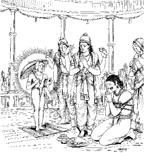
रानी विन्ध्यावली वामनजीसे प्रार्थना करती हैं, ‘मेरे पतिदेवसे भूल हो गयी। पतिदेव भूलमें बोले हैं कि मैं भगवान्को दान देता हूँ। जीव दान क्या दे सकता है? बोलनेमें उनसे भूल हुई है। दान नहीं दिया है, जो आपने दिया था, आपका ही आपके चरणोंमें अर्पण किया है। मेरे पतिदेवको बाँधना नहीं, उनकी भूल हुई है, मैं क्षमा माँगती हूँ। आपको दान दिया ही नहीं है। जो आपने दिया था, वह आपका ही आपके चरणोंमें अर्पण किया है। उनसे बोलनेमें भूल हो गयी है। वह भूलसे बोले हैं कि मैंने दान दिया है। क्षमा करो, मेरे पतिदेवको बाँधना नहीं।’
विन्ध्यावलीरानीने पतिदेवकी भूल सुधारी है। राजा बलिको रानी विन्ध्यावली धैर्य देती है। बलि महाराज घबराये थे, अब क्या होगा? एक पग अभी बाकी है। विन्ध्यावलीरानीने राजा बलिको समझाया है, ‘भगवान्के चरणोंमें वन्दन करो और वन्दन करके ऐसा बोलो कि एक चरण जो बाकी है, वह मेरे मस्तकके ऊपर रखो।’ विन्ध्यावलीरानीने सिखाया है।
दशम स्कन्धमें गोपी भगवान्को मनाती है, तब गोपीने कहा है—आप अपना हाथ मेरे मस्तकके ऊपर रखो—
करसरोरुहं कान्त कामदं
शिरसि धेहि न: श्रीकरग्रहम्।
हे नाथ! अपना हाथ मेरे मस्तकके ऊपर रखो।
मस्तकमें बुद्धि है। बुद्धिमें काम सोया हुआ है। बुद्धिमें जो काम है, वही श्रीकृष्ण-मिलनमें विघ्न करता है। काम शरीरसे निकलता है, काम इन्द्रियोंसे निकलता है, किंतु काम बुद्धिमें सोया हुआ रहता है। इसीलिये कामको संस्कृत भाषामें ‘हृच्छय’ कहते हैं—हृदि शेते, इति हृच्छय:।
बुद्धिमें सोया हुआ काम फिरसे जागता है। बुद्धिमें जो काम है, वही श्रीकृष्ण-मिलनमें विघ्न करता है। भगवान् जब अतिशय कृपा करते हैं, कोई सिद्ध-महात्मा मस्तकके ऊपर हाथ रखते हैं, तभी बुद्धिसे काम निकलता है। साधन करनेसे शरीरसे, इन्द्रियोंसे काम निकलता है—बुद्धिसे निकलता नहीं है।
गोपी भगवान्को मनाती है—मेरे मस्तकके ऊपर हाथ रखो, बुद्धिसे कामको निकाल दो।
विन्ध्यावली रानीने कहा है—‘भगवान्के चरणमें वन्दन करो।’ बलि महाराजको अब भान हुआ है, परमात्माको मैंने ऐसा कहा कि दान लेनेवाला हलका होता है और दान देनेवाला बड़ा होता है। मेरी कितनी बड़ी भूल हो गयी। भगवान् ही इस स्वरूपसे आये थे।
महाराज बलि बारम्बार वन्दन करते हैं—‘मेरी भूल हो गयी। मैंने आपको कुछ दान दिया ही नहीं है। मैं केवल वन्दन करता हूँ। एक पैर जो बाकी है, सो मेरे मस्तकके ऊपर रख दो। मैं शरणमें आया हूँ।’
भगवान्द्वारा बलिका द्वारपाल बनना
बलिके मस्तकके ऊपर भगवान्ने चरण रखा है। तब देव-गन्धर्व जय-जयकार करने लगे हैं। धन्य है राजा बलिको। बलिके मस्तकके ऊपर भगवान्का चरण आया है। बलि कृतार्थ हुए हैं। वामनजीने कहा है—‘तूने मुझे सर्वस्व दिया है। मैं तुझे क्या दूँ? पातालका राज्य मैंने तुम्हें दिया है, स्वर्गका राज्य देवोंको देता हूँ। तेरे द्वारपर आजसे मैं खड़ा रहूँगा, मैं पहरा दूँगा।’ महाराज बलि पातालमें जाते हैं। प्रत्येक द्वारमें चतुर्भुज नारायणका दर्शन होता है।
जो तन-मन-धनसे भगवान्की सेवा, भगवान्का स्मरण करता हुआ तन्मय होता है, उसके दरवाजेपर भगवान् खड़े रहते हैं। शरीर ही जीवात्माका घर है। शरीर-घरमें इन्द्रिय द्वार हैं, आँख दरवाजा है, कान दरवाजा है। आँखमें कृष्ण, कानमें कृष्ण—इन्द्रियद्वारमें भगवान् विराजमान हों तो काम अन्दर नहीं आ सकता है। जिस द्वारपर भगवान् नहीं हैं, उसी द्वारसे काम अन्दर घुस जाता है। ऐसा सादा और सात्त्विक जीवन होना चाहिये कि काम कभी अन्दर आये ही नहीं। कामको अन्दर आनेका अवसर देना ही नहीं।
काम अन्दर आ जाय तो बुद्धिका नाश करके ही बाहर निकलता है, बड़ा बलवान् है। काम अन्दर आ जाय तो ज्ञानको धक्का मार देता है, ज्ञान टिकता नहीं है। जिस इन्द्रियसे मानव भक्ति नहीं करता है, उस इन्द्रियसे काम अन्दर चला आता है। जो प्रत्येक इन्द्रिय-द्वारमें भगवान्को रखता है, जो प्रत्येक इन्द्रियसे भक्ति करता है, उसके शरीरमें काम प्रवेश नहीं कर सकता।
सन्त ऐसा मानते हैं कि जिस इन्द्रियसे मानव भक्ति नहीं करता, उस इन्द्रियसे पाप होने लगता है। वक्ता कथामें श्रीकृष्णका दर्शन करता हुआ बोले। श्रोता कथा सुने तब श्रीकृष्णका दर्शन करता हुआ कथा सुने। कथामें अनेक बार कानसे मानव भक्ति करता है, आँखसे भक्ति नहीं करता है। आँखसे भक्ति न करे तो आँखसे पाप होता है। कई लोग ऐसे होते हैं, जो बिना कारण चारों बाजू देखते हैं, फिर विचार करते हैं—यह हमारे गाँवका नहीं है, बाहरके किसी गाँवसे आया होगा। कपड़े बहुत अच्छे हैं, घरका सुखी लगता है।
आँखसे भक्ति न हो तो आँखसे पाप होगा। जिस इन्द्रियसे मानव भक्ति नहीं करता, उस इन्द्रियसे पाप होने लगता है।
राजा बलिके द्वारपर श्रीवामनजी महाराज विराजमान हैं। जहाँ दृष्टि जाती है। वहाँ नारायणका दर्शन होता है। राजा बलिने विचार किया कि स्वर्गसे ज्यादा आनन्द तो यहीं है। कृष्ण-कथा सुनते हैं, कृष्ण-कीर्तन करते हैं, सतत दर्शन करते हैं, यहाँ बहुत आनन्द है। देवोंको स्वर्गका राज्य मिला, देवोंको आनन्द हुआ। राजा बलिको पातालमें परमात्माका सतत दर्शन होता है, बलिको आनन्द हुआ है। सभीको आनन्द हुआ है।
लक्ष्मीजीका बलिके यहाँ आना और उनकी धर्मबहन बनना
वैकुण्ठमें माता महालक्ष्मी नाराज हो गयीं। माताजी अकेली हैं। अच्छा लगता नहीं है। मेरे भगवान् कहाँ हैं? एक बार माताजीने नारदजीसे पूछा—नारद! तू जानता है, नारायण कहाँ विराजते हैं?
नारदजीने कहा—माताजी! राजा बलिके यहाँ दान लेनेके लिये गये थे, सो बन्धनमें आये हैं। बलिके द्वारमें सिपाही हो करके खड़े रहते हैं। बन्धनमें आये हैं, बलिके अधीन हो गये हैं। बलिने उन्हें सर्वस्वका दान दिया है।
माता लक्ष्मीजीने पूछा ‘वैकुण्ठमें कब आयेंगे?’
नारदजी बोले—यह तो राजा बलि आज्ञा देंगे, तभी आयेंगे, नहीं तो नहीं आ सकते।
माताजीको वैकुण्ठमें अच्छा लगता नहीं है। माताजीने लीला की है—एक ब्राह्मण-पत्नीका वेश धारण किया है। बहुत ही साधारण शृंगार है। राजा बलिके घरमें आयी हैं।
जहाँ नारायण हैं, वहाँ बिना आमन्त्रण लक्ष्मीजी आती हैं। आजकल बहुत-से लोग लक्ष्मीजीके पीछे ही पड़े रहते हैं। अकेली लक्ष्मी जल्दी कहीं जाती नहीं हैं। कदाचित् जायँ तो उसको रुलाती हैं। लक्ष्मी जिसके घरमें नारायणके साथ आती हैं, उसीको सुखी करती हैं। जहाँ नारायणकी सेवा है, वहाँ माताजी तो बिना आमन्त्रण आती हैं। बलि राजाके घरमें नारायण विराजमान हैं। साक्षात् महालक्ष्मी आयी हैं—ब्राह्मण-पत्नीका वेश धारण किया है। बहुत सादा शृंगार है।
बलि महाराज पहचान सके नहीं। यह कोई ब्राह्मणकी पत्नी कुछ माँगनेके लिये आयी है, ऐसा लगता है। कोई ब्राह्मणकी स्त्री है, गरीब है। मेरे यहाँ कुछ माँगनेके लिये आयी है। बलि राजाने पूछा है—‘क्या इच्छा है? क्यों आयी हो?’
लक्ष्मीजीने कहा—‘जगत्में मुझे कोई भाई नहीं है। मायकेमें जानेकी इच्छा होती है। मैं कहाँ जाऊँ? मेरे माता-पिता नहीं, मुझे भाई भी नहीं है। मैंने ऐसा सुना है कि राजा बलिको कोई बहन नहीं है। मैं तुम्हारी धर्मकी बहन होनेके लिये आयी हूँ। तू मेरा भाई हो जा।’
माताजी शृंगार भले ही न करें, उनका तेज कहाँ जायगा? बलि महाराज दर्शन करते हैं, यह तो लक्ष्मीके जैसी लगती है, यह कोई साधारण स्त्री नहीं है। बलि महाराजने वन्दन किया है और कहा है—‘आजसे मैं आपका छोटा भाई हूँ। आप मेरी बड़ी बहन हैं। यही आपका मायका है। जरा भी संकोच रखना नहीं। यहीं रह जाओ।’
बलि राजाके घरमें साक्षात् महालक्ष्मी विराजमान हैं। माता महालक्ष्मी आयीं, तभीसे गाँवमें कोई गरीब रहा नहीं। किसीके घरमें झगड़ा नहीं। कोई रोगी नहीं। साक्षात् महालक्ष्मी आयी हैं, सभी सुखी हुए हैं। बलि राजाको आश्चर्य होता है, यह बड़ी बहन आयी है, तबसे सारा गाँव सुखी हो गया।
सबको तो सुख है, किंतु माताजीको शान्ति नहीं है। जगत्के मालिक द्वारमें सिपाहीके जैसे खड़े रहते हैं। बलि राजाके अधीन हैं। ऐसा कोई अवसर आये तो अपने पतिदेवको मैं छुड़ाऊँ!
लक्ष्मीजीका बलिके बन्धनसे नारायणको छुड़ाना
श्रावण महीनेकी पूर्णिमा आयी है। लक्ष्मीजीने विचार किया—आज मैं युक्ति करूँगी। बलि राजाको कहा है—भाई! आज रक्षा-बन्धन होता है। बहन अपने भाईके हाथमें राखी बाँधती है, अपने भाईको आशीर्वाद देती है—मेरा भाई सुखी हो। मैं तुम्हें आशीर्वाद देनेके लिये आयी हूँ। मैं तेरे हाथमें राखी बाँधूँगी।
बलि बहुत भाग्यशाली है, साक्षात् महालक्ष्मी उसके हाथमें राखी बाँधती हैं। बलि राजाको आनन्द हुआ है। अब मुझे कालका भी भय नहीं है। मैं सुखी हो गया। बलिने विचार किया, बहन हाथमें राखी बाँधती है, तब भाईका भी धर्म है कि उसके हाथमें कुछ देना ही चाहिये।
राजा बलिने हाथ जोड़ करके कहा—बहन! आप आयीं, तभीसे हम सभी लोग सुखी हुए हैं। सभीको बहुत शान्ति मिली है। आज मेरे हाथमें तुमने राखी बाँधी है। आज तुम्हारा माँगनेका हक है। तुम्हारे घरमें जो अलंकार न हो, वह आज माँग लो। मैं कभी आपके घरमें गया नहीं। आपके घरमें कौनसे अलंकार हैं और कौनसे नहीं, जो न हों, सो माँग लो।
लक्ष्मीजीने कहा—मेरे घरमें सब कुछ है, एक ही नहीं है, इसीलिये मैं दुखी हूँ।
बलिने पूछा—‘बहन! तेरे घरमें क्या नहीं है?’
लक्ष्मीजीने कहा है—‘तुम्हारे द्वारपर जो खड़े रहते हैं, उनको बन्धनसे मुक्त कर दो।’
बलि महाराज यह नहीं जानते कि ये तो साक्षात् लक्ष्मी हैं। राजा बलिने पूछा—‘मेरे द्वारपर जो खड़े रहते हैं, वे आपके कोई सम्बन्धी हैं? आपका-उनका क्या सम्बन्ध है?’
तभी चतुर्भजरूपसे लक्ष्मी-नारायण प्रकट हुए हैं। बलि राजाने लक्ष्मी-नारायणकी पूजा की है। लक्ष्मी-नारायणकी प्रदक्षिणा की। माताजीके चरणोंमें बारम्बार वन्दना की। ‘जो जगत्की माता हैं, उनको मैं बहन कहता था! मैं पहचान नहीं सका। मुझे पहले दिन ही क्यों नहीं कहा? मेरे अपराधको क्षमा करो।’
लक्ष्मीजीने कहा—‘तुम्हारा कोई अपराध नहीं है। मैं तो पतिदेवको छुड़ानेके लिये आयी थी।’
बलिके बन्धनसे नारायणको छुड़ा करके लक्ष्मीजी वैकुण्ठधाममें ले गयी हैं।
वामन-चरित्रकी कथा वक्ता-श्रोताओंके पापका विनाश करती है। पितृ-तिथि हो, उस दिन वामन-चरित्रकी कथा सुननेसे पितृगण बहुत प्रसन्न होते हैं, पितरोंको आनन्द होता है।
तेईसवें अध्यायमें वामन-चरित्रकी कथा समाप्त की है। अष्टम स्कन्धका अन्तिम अध्याय चौबीसवाँ है। इस अध्यायमें मत्स्यनारायणकी कथा है।
दक्षिण भारतमें त्रिवेन्द्रम है। त्रिवेन्द्रममें कृतमालानदी है। कृतमालानदीके किनारे मत्स्य-नारायणका प्राकटॺ हुआ है। सत्यव्रत मनु महाराज वहाँ तपस्या करते थे।
दिनभर जो सत्कर्म करता है, उसके हाथमें भगवान् आते हैं। सत्कर्ममें लोभ रखो। भोजनमें सन्तोष मानो, संसार-सुखमें सन्तोष मानो। भक्तिमें लोभ रखो। एक सत्कर्म पूरा हो कि दूसरा करो, दूसरा पूरा हो कि तीसरा करो। जो सर्वकाल सत्कर्म करता है, उसके हाथमें भगवान् आते हैं? करमध्ये तु गोविन्द: प्रभाते करदर्शनम्। मानव सत्कर्म करे और उसके हाथमें लक्ष्मी आये तो क्या आश्चर्य है? लक्ष्मीपति भी हाथमें आते हैं।
सत्यव्रत मनु महाराज कृतमालानदीके किनारे तपस्या करते थे। उनके हाथमें मत्स्य-नारायण आये हैं। प्रलयकालमें मत्स्य-संहिताका उपदेश दिया है। जो सत्यके साथ स्नेह करता है, उसका नाश नहीं होता है। सत्य ही नारायण हैं। मनु महाराजको उपदेश दिया है।
अष्टम स्कन्धकी समाप्ति करते हैं, अब नवम स्कन्धका आरम्भ होता है।
॥ श्रीहरि:॥
नवम स्कन्ध
मर्यादापुरुषोत्तम और लीलापुरुषोत्तम
मन्वन्तराणि सर्वाणि त्वयोक्तानि श्रुतानि मे।
वीर्याण्यनन्तवीर्यस्य हरेस्तत्र कृतानि च॥
योऽसौ सत्यव्रतो नाम राजर्षिर्द्रविडेश्वर:।
ज्ञानं योऽतीतकल्पान्ते लेभे पुरुषसेवया॥
(श्रीमद्भा० ९।१।१-२)
नवम स्कन्धमें दो प्रकरण हैं—सूर्यवंश-प्रकरण और चन्द्रवंश-प्रकरण। सूर्यवंशमें भगवान् श्रीराम प्रकट हुए हैं, चन्द्रवंशमें परमात्मा श्रीकृष्णका प्राकटॺ हुआ है। रामायणमें कृष्ण-कथा नहीं आती है—सम्पूर्ण रामायणमें केवल राम-चरित्र है। भागवतमें मुख्य कथा तो श्रीकृष्णकी है। प्रथम राम आते हैं, फिर श्रीकृष्ण आते हैं। राम न आयें, तबतक श्रीकृष्ण नहीं आते हैं। श्रीराम मर्यादापुरुषोत्तम हैं, श्रीकृष्ण प्रेम-पुरुषोत्तम हैं। मर्यादापुरुषोत्तम प्रथम आते हैं।
रामजीकी सभी लीलाएँ अति सरल हैं। दिवसमें बारह बजे आते हैं। किसीको त्रास न हो। श्रीकृष्णभगवान्की सभी लीलाएँ अनोखी हैं, रात्रिमें बारह बजेके बाद आते हैं। एक वैष्णवने भगवान् श्रीकृष्णसे पूछा था—‘आप रात्रिमें क्यों आते हैं? रातभर जागना पड़ता है। दिनमें क्यों नहीं आते हैं? श्रीरामजी तो दिनमें आते हैं।’
भगवान्ने कहा—‘राम तो राजाधिराज हैं, राजाधिराज सभीको दर्शन देते हैं। मैं राजाधिराज नहीं हूँ, मैं माखन-चोर हूँ, इसलिये बारह बजेके बाद आता हूँ। चोर कभी दिवसमें आता है?’
श्रीकृष्णकी सभी लीलाएँ जन्मसे ही अनोखी हैं। रामजीकी सभी लीलाएँ अति सरल हैं। ज्यादा तो क्या कहें—‘रामनाम’ अति सरल है। ‘रामनाम’ में एक भी अक्षर कठिन नहीं है। ‘कृष्ण’ नाममें एक भी सरल अक्षर नहीं है। दोनों कठिन अक्षर हैं। ‘कृष्ण’—ऐसा बोलना पड़ता है।
रामजीकी सभी लीला अति सरल है। राम मर्यादापुरुषोत्तम हैं। भागवतमें राम-कथा इसीलिये वर्णन की है। भागवतकी कथा करनेवाला वक्ता और कथा सुननेवाला श्रोता—इनका जीवन रामके जैसा ही होना चाहिये। रामकी मर्यादाका पालन करो।
श्रीकृष्णभगवान् जो करते हैं—वह कभी करना नहीं, वह कोई कर सकता भी नहीं है। एक भाईने पूछा था कि महाराज! आप कृष्णकी बहुत प्रशंसा करते हैं, आपके श्रीकृष्ण तो माखनकी चोरी करते हैं। मैं चोरी करूँ तो आप मेरी प्रशंसा करेंगे?
भगवान् क्यों चोरी करते हैं, वह चोरी है कि नहीं—यह कथा बादमें आयेगी। भागवतमें शुकदेवजी महाराज कहीं ऐसा बोले नहीं हैं कि श्रीकृष्ण चोरी करते हैं। जो जगत्का मालिक है, वह चोरी करता है—यह मैं कैसे कहूँ? शुकदेवजी महाराज ऐसा बोले नहीं हैं। शुकदेवजी महाराजने तो बहुत विवेकसे कथा की है। गंगा-किनारे सन्त-समाजमें शुकदेवजी महाराज गोपियोंकी प्रशंसा करते हैं। गोपी प्रेमकी मूर्ति है। प्रेमकी मूर्ति गोपी कभी-कभी प्रेमसे ऐसा बोलती है कि कन्हैया ‘माखन-चोर’ है। प्रेमसे कोई गाली दे तो अच्छा लगता है—श्रीकृष्ण हँसते हैं। गोपी प्रेमकी मूर्ति है। गोपी बोल सकती है कि कृष्ण ‘माखन-चोर’ है। हमारे-जैसा कोई साधारण जीव भगवान्को चोर-चोर कहे तो भगवान्को अच्छा नहीं लगता। भगवान् उत्तर देते हैं—‘मैं चोर नहीं हूँ, तू चोर, तेरा बाप चोर, तेरा दादा भी चोर था। कैसे धन कमाया है, यह सब कुछ मैं जानता हूँ, मुझे सब खबर है।’ जीव चोर है, भगवान् मालिक हैं।
श्रीकृष्णकी लीलाका रहस्य समझना कठिन है। श्रीकृष्ण-लीला अनुकरणीय नहीं है, चिन्तनीय है। रामचन्द्रजीकी सभी लीलाएँ अनुकरणीय हैं।
शुकदेवजी महाराजने राजा परीक्षित्को सावधान किया है, श्रीकृष्णकी रासलीला सुनो—कभी रासलीला करना नहीं। जिन लोगोंने रासलीला की है, उनका पतन हो गया है। नैतत्समाचरेत् जातु: मनसापि ह्यनीश्वरा:—श्रीकृष्णकी रासलीला अनुकरणीय नहीं है, चिन्तनीय है। वृन्दावनके साधु-सन्त रास-लीला करते हैं, बहुत विवेकसे करते हैं।
बहुत-से सन्तोंने ऐसा वर्णन किया है कि रासलीलामें श्रीकृष्ण साढ़े चार वर्षके थे, तब रासलीला हुई है। बहुत-से सन्तोंने वर्णन किया है कि रासलीलामें श्रीकृष्ण सात वर्षके थे। दस वर्ष पूरे होते ही भगवान् गोकुल छोड़ करके मथुरामें गये हैं।
श्रीकृष्णकी रासलीला चिन्तनीय है, एक-एक गोपीके साथ एक-एक श्रीकृष्णका स्वरूप है, मध्यमें श्रीराधा-माधव हैं। रासलीलाका चिन्तन करो। श्रीकृष्णकी रासलीला अनुकरणीय नहीं है। माखन-चोरीकी लीला अनुकरणीय नहीं है। श्रीकृष्ण जो करते हैं, वैसा कोई कर सकता नहीं है।
जिसको श्रीकृष्ण-लीलाका अनुकरण करनेकी बहुत ही इच्छा हो, वह पूतना-चरित्रसे श्रीगणेश करे तो हमको जरा भी हर्ज नहीं है। श्रीकृष्ण-लीलाका आरम्भ हुआ है—पूतना-चरित्रसे। प्रथम विषका पान किया है, फिर एक-एक लीला की है। जिसको श्रीकृष्ण-लीलाका अनुकरण करना है, वह पूतना-चरित्रसे अनुकरण करे।
श्रीकृष्ण देव नहीं हैं, श्रीकृष्ण परमात्मा हैं, श्रीराम परमात्मा हैं। रामचन्द्रजीकी प्रत्येक लीला मानव-समाजको शिक्षण देनेके लिये है। श्रीराम रावणको मारनेके लिये जगत्में नहीं आये हैं। अयोध्याके राजमहलमें विराजमान श्रीराम वहाँसे संकल्प करें तो रावण मर जाय। रावणमें क्या है?
रामजीकी प्रत्येक लीला मानव-समाजको शिक्षण देनेके लिये है। राम देव नहीं हैं, राम परमात्मा हैं—मर्त्यावतास्त्विह मर्त्यशिक्षणम्। रामजीकी सभी लीला सरल है। श्रीकृष्णकी सभी लीला अनोखी है।
बहुत-से लोगोंको आज भी रासलीलामें शंका होती है—भगवान् ऐसी लीला क्यों करते हैं?
रासलीलाकी कथा शुकदेवजी महाराजने गंगा-किनारे की है। रासलीलामें जिसको कामकी दुर्गन्ध आती है, उसने सत्संग नहीं किया, उसकी बुद्धि बिगड़ गयी है। रासलीलामें स्त्री-पुरुषके मिलनकी कथा नहीं है। शुकदेवजी महाराज गंगा-किनारे यह कथा करते हैं। कथाके मुख्य श्रोता परीक्षित् हैं, जिसका मरण समीपमें है। वह स्त्री पुरुषके मिलनकी, शृंगारकी, कामसुखकी बातें सुनेगा? रासलीलामें काम-सुखका वर्णन हो तो परीक्षित् यह कथा सुनेंगे ही नहीं। जिसका मरण समीपमें है, उसको शृंगारकी बातें अच्छी नहीं लगतीं। कथा करते हैं शुकदेवजी महाराज—जिनकी दृष्टिमें कोई स्त्री नहीं है, कोई पुरुष नहीं है। जिनकी ब्रह्मदृष्टि स्थिर हो गयी है।
‘गोपी’ शब्द सुननेके बाद बहुत-से लोगोंको स्त्रीका शरीर दिखता है। ‘गोपी’ नामकी कोई स्त्री नहीं है। भागवतके श्लोकोंसे ही यह सिद्ध होता है। अति शुद्ध जीव ही ‘गोपी’ है। जीव-ईश्वरके मिलनका यह वर्णन है। दरवाजा बन्द करके भगवान्ने रासलीला नहीं की है, खुले मैदानमें रासलीला की है। रासलीलाका दर्शन करनेके लिये देव आये हैं, ऋषि आये हैं। रासलीला अति शुद्ध लीला है। रासका रहस्य समझना बड़ा कठिन है।
रामकी मर्यादाका जो पालन करेगा, वही श्रीकृष्णकी रासलीलाका रहस्य समझ सकता है। भागवतमें इसीलिये राम-कथा प्रथम आती है। रामकी मर्यादाका पालन करो। जो मर्यादा छोड़ता है, वह ज्ञानी हो या योगी हो, परिणाममें उसका पतन ही होता है। मनको पवित्र रखनेके लिये मर्यादा है। मर्यादा-पुरुषोत्तम रामकी भक्ति सभीके लिये अति आवश्यक है। रामजीकी लीलाका रहस्य समझना कठिन नहीं है। रामकी मर्यादाका पालन करना बड़ा कठिन है। रामकी मर्यादाका जो पालन करता है, वही रावणको मार सकता है। वही रासमें जा सकता है। वही रासका रहस्य समझ सकता है। शुकदेवजी महाराज प्रथम राम-कथा कहते हैं।
सूर्यवंश-प्रकरण
राजाने प्रश्न किया—‘सूर्यवंशकी कथा सुननेकी बहुत इच्छा है।’
शुकदेवजी महाराजने कहा—वंशकी कथा अनेक दिनतक मैं कहूँ तो भी उसका अन्त नहीं आयेगा। संक्षेपमें तुम्हें यह कथा सुनाता हूँ।
आदिनारायण परमात्माकी नाभिसे कमल उत्पन्न हुआ। कमलसे ब्रह्माजी प्रकट हुए। ब्रह्माजीके पुत्र मरीचिऋषि हुए। मरीचिऋषिके पुत्र कश्यप हुए। कश्यपऋषिके पुत्र विवस्वान् सूर्य हैं। उनके यहाँ वैवस्वत मनुका प्राकटॺ हुआ। वैवस्वत मनुके यहाँ इक्ष्वाकु, प्रषध्र, कवि, करूष, धृष्ट, नृग, नरिष्यन्त इत्यादि अनेक राजा हुए। एक-एकका वंश-वर्णन किया है।
इक्ष्वाकुके वंशमें श्रीराम प्रकट हुए हैं। मनु महाराजका पुत्र नभग हुआ है। नभगके यहाँ नाभागका जन्म हुआ। नाभागादम्बरीषोऽ-भून्महाभागवत: कृती—नाभागके यहाँ भक्तराज अम्बरीष महाराज प्रकट हुए।
राजा अम्बरीषकी कथा
राजा अम्बरीषकी कथा शुकदेवजी महाराज बहुत प्रेमसे करते हैं। शुकदेवजी महाराज संन्यासी महात्माओंके आचार्य हैं, परमहंसशिरोमणि हैं। विरक्त साधु, संन्यासी, महात्माओंको विलासी गृहस्थके घरकी बातें सुननेकी इच्छा नहीं होतीं। विलासी गृहस्थके घरमें उनको दुर्गन्ध आती है। शुकदेवजी महाराज परमहंसशिरोमणि हैं। वे राजा-रानीकी कथा क्यों करते हैं?
भागवतमें कोई राजाकी कथा नहीं है, कोई रानीकी कथा नहीं है। भागवतमें तो परमहंसोंकी कथा है। प्रत्येक अध्यायकी समाप्तिपर लिखा है—पारमहंस्यां संहितायाम्। अम्बरीष राजा नहीं हैं, परमहंस हैं। परमहंसका अर्थ यह नहीं है कि कपड़ा भगवा रंग लिया है। वस्त्र-संन्याससे भी प्रेम-संन्यास श्रेष्ठ है। अर्थात् जिसको अन्दरसे भक्तिका रंग लगा है...।
स्त्री भक्तिका साधन है। राजा अम्बरीष और उनकी पत्नी—दोनों एक विचारसे द्वारकानाथकी अनन्य भक्ति करते हैं। निर्जल एकादशी-व्रत करते हैं।
आप निर्जल एकादशी करें—ऐसा कहनेमें मुझे बड़ा संकोच होता है। मैं निर्जल एकादशी नहीं करता। मैं आपको कैसे कहूँ कि आप निर्जल एकादशी करें। निर्जल व्रत कदाचित् भले ही आप न करें—एकादशी-व्रत दूध और फलके ऊपर करें। बहुत भूख लगे तो दूध पियो—दो-चार फल खाओ। इससे आगे मत जाओ।
कितने ही लोग ऐसे होते हैं कि एकादशी आती है, तब उनको ऐसा लगता है, जैसे दीवाली ही फिरसे मिलनेके लिये आयी है। एकादशी कोई दीवाली है?
एकादशीके समान श्रेष्ठ कोई व्रत नहीं है। शास्त्रोंमें तो ऐसा लिखा है कि एकादशीके दिन अन्नदान महापाप है। एकादशीके दिन अन्नदान नहीं करना चाहिये। आपके घरमें कोई सम्बन्धी आये और कदाचित् ऐसा कहे कि मैं एकादशी नहीं करता तो उनको हाथ जोड़ करके प्रेमसे कहना कि मेरे घरमें आये हो तो एकादशी करनी पड़ेगी। कदाचित् उसको बुरा लगे तो फिरसे आयेगा नहीं, दूसरा क्या कर लेगा?
एकादशीके दिन अन्नदान पाप है। व्यभिचार, चोरी, ब्रह्महत्या—सभी प्रकारका पाप एकादशीके दिन अन्नमें आ करके रहता है। शास्त्रोंमें लिखा है कि एकादशीका व्रत तीन दिवसका है। दशमीके दिवसमें एक ही बार भोजन करो सादा भोजन करो। कितने ही लोग ऐसे हैं, जो दशमीको रात्रिमें अजीर्ण हो जाय, उतना खा लेते हैं। दशमीके दिन एक बार भोजन करो। सादा और हविष्यान्नका भोजन करो। एकादशी निर्जल करना तो बड़ा कठिन है, दूध पियो। एकादशीका व्रत छोड़ना नहीं।
कितने लोग ऐसे होते हैं, जो चातुर्मासमें एकादशी करते हैं, फिर उनकी दानत बिगड़ जाती है। बारह मासकी एकादशी करो। जिसको एकादशीका व्रत नहीं करना है, वह भागवतकी कथा सुननेके लिये न जाय। कथामें सुननेके बाद भी न करे तो उसको बहुत मार पड़ेगी। भगवान् नास्तिकको सजा करते हैं तो नास्तिक भगवान्को कहता है कि मैं कभी मन्दिरमें जाता नहीं था, जानता ही नहीं था। नास्तिकको सजा होती है, किंतु कम होती है। जो कथा सुनता है, फिर भी एकादशी नहीं करता, उसको बहुत मार पड़ती है।
बारह मासकी एकादशीका व्रत करो, आपका कल्याण होगा। आरोग्यकी दृष्टिसे भी एकादशीका व्रत आवश्यक है।
अम्बरीष महाराज निर्जल एकादशी करते हैं। एकादशीकी रात्रिमें जागरण करते हैं। रातभर जागरण करना बड़ा कठिन है। रात्रिमें ज्यादा नहीं तो घण्टा-दो घण्टा, हरे कृष्ण हरे कृष्ण महामन्त्रका जप करो, जागरण करो, आपके पापका नाश होगा।
दक्षिण भारतमें पण्ढरपुर है। पण्ढरपुरमें श्रीविट्ठलनाथजी महाराज एकादशीकी रात्रिमें जागते हैं। भगवान्का शयन नहीं होता है। कीर्तन भक्तिका आदिपीठ पण्ढरपुर है। नामदेव महाराज, तुकाराम महाराज, एकनाथ महाराज विट्ठलनाथजीके सम्मुख रातभर कीर्तन करते थे, भगवान् कीर्तन सुनते थे। पण्ढरपुरकी कीर्तन-परम्परा आजतक अखण्डित है। हजारों वर्ष हो गये, कीर्तन-भक्ति वहाँ छिन्न-भिन्न हुई नहीं, आजतक अखण्डित है। पण्ढरपुर भू-वैकुण्ठ है। भगवान् भी एकादशीकी रात्रिमें जागरण करते हैं।
रातभर नहीं तो घण्टा-दो-घण्टा अवश्य जागना चाहिये। एकादशीका व्रत तीन दिवसका होना चाहिये। तीन दिवसका जो विधिपूर्वक व्रत करता है, उसके शरीरमें सात्त्विक शक्ति उत्पन्न होती है जो दस-बारह दिनतक पाप करनेसे रोकती है।
शुकदेवजी महाराज वर्णन करते हैं—कार्तिक शुद्ध द्वादशीका दिन था। द्वारकानाथकी सेवा हुई है। सुन्दर सामग्री सम्मुख रखी है। मालिकको मनाते हैं, आपके लिये बनाया है, आप भोजन करो। महामन्त्रका जप करते हैं, प्रभुकी प्रार्थना करते हैं।
उसी समय दुर्वासाऋषि वहाँ आये हैं—तस्य तर्ह्यतिथि: साक्षाद् दुर्वासा भगवानभूत्। राजा अम्बरीषने दुर्वासाऋषिका स्वागत किया है—महाराज! कृपा करो। पारणा करो—ऐसी इच्छा है। दुर्वासाऋषिने कहा—कल मैंने निर्जल एकादशीका व्रत किया है। पारणा करनेकी इच्छा तो है। किंतु, मेरा ऐसा नियम है कि मध्याह्न-सन्ध्या करनेके बाद मैं प्रसाद लेता हूँ। मेरी मध्याह्न-सन्ध्या बाकी है। मैं सन्ध्या करके आता हूँ।
राजा अम्बरीषने कहा—महाराज! मेरा एक ऐसा नियम है कि द्वादशीमें पारणा करता हूँ, आप जल्दी आयें।
दुर्वासाऋषिने आमन्त्रण स्वीकार किया है। स्नान करके सन्ध्या करनेके लिये बैठे हैं। गायत्री-जपमें ऐसी तन्मयता हुई है कि समयका भान रहा नहीं। दुर्वासाऋषिने जानबूझ करके विलम्ब नहीं किया है, समयका भान ही नहीं रहा।
शुकदेवजी महाराज वर्णन करते हैं—अब द्वादशी परिपूर्ण होती है। राजाका नियम है—द्वादशीमें पारणा करना। एक ब्राह्मणने कहा—भगवान्को जल अर्पण करो। कल निर्जल एकादशीका व्रत किया है, निर्जल व्रतकी समाप्ति जलसे होती है, जलसे पारणा करो। राजा अम्बरीषने कुछ खाया नहीं है, केवल जलसे पारणा की है। शान्तिसे बैठे हैं।
दुर्वासाऋषिके मस्तकके ऊपर सूर्यनारायण आये हैं, बहुत विलम्ब हुआ है। मुझे राजाने कहा था—जल्दी आना। मुझे समयका भान रहा नहीं। सन्ध्यादिक नित्यकर्म परिपूर्ण किया है। दुर्वासाऋषि आते हैं। विचार करते हैं—राजाके व्रतका भंग हुआ है, राजा नाराज हो गया होगा।
दुर्वासाऋषि आये हैं। अम्बरीष महाराज प्रसन्न हैं, स्वागत करते हैं।
यह प्रसन्न है, इसने पारणा की है—ऐसा लगता है। दुर्वासाऋषिने अनुमान किया है। व्रतका भंग नहीं किया, इसने पारणा की है। महाराजका अनुमान भी सच्चा है। राजाने पारणा तो की है, किंतु पानीसे की है। दुर्वासाऋषिने ऐसा मान लिया कि इसने भोजन किया है। ऋषिको थोड़ा क्रोध आया—मेरा तुमने अपमान किया है। मुझे निमन्त्रण दिया था!
दुर्वासाऋषिने राक्षसी कृत्या उत्पन्न की। वह अम्बरीषको मारनेके लिये जाती है। सुदर्शन-चक्र चारों ओरसे अम्बरीषका रक्षण करता है।
आप जिस देवकी प्रेमसे पूजा करते हैं, जिस देवके नामका जप करते हैं, वह देव आपके साथमें ही हैं। सर्वकाल वह आपका रक्षण करते हैं। अम्बरीष महाराज नहीं जानते हैं कि सुदर्शन-चक्र मेरा रक्षण कर रहा है। राक्षसी जब मारनेके लिये जाती है, तब सुदर्शन-चक्र आगे आता है, राक्षसीको जला दिया है, भस्म किया है। सुदर्शन-चक्र दुर्वासा-ऋषिके पीछे पड़ता है। दुर्वासाको भय लगता है। तेज सहन हुआ नहीं। वैकुण्ठमें गये हैं।
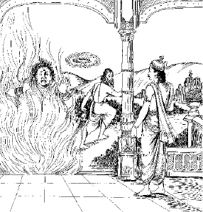
भगवान्ने कहा—महाराज! सुदर्शन-चक्र अब मेरा नहीं है, अम्बरीषका हो गया है।
भक्त अपना सर्वस्व भगवान्को अर्पण करते हैं। भगवान् अपना सर्वस्व भक्तोंको देते हैं। पतिव्रता स्त्री अनन्य भावसे पतिदेवकी सेवा करती है, पतिको वशमें करती है। भक्ति भगवान्को परतन्त्र बना देती है। भगवान्ने कहा है—मैं स्वतन्त्र नहीं हूँ, अपने भक्तोंके मैं अधीन हूँ। दिनभर जो मेरी सेवा-स्मरण करते हैं—ऐसे भक्तोंके अधीन मैं रहता हूँ। आपकी भूल हुई है। राजा अम्बरीषने भोजन नहीं किया, केवल जलसे पारणा की है। वहाँ जा करके क्षमा माँगो।
दुर्वासाऋषि दौड़ते हुए आये हैं। अम्बरीषको वन्दन करनेके लिये जाते हैं।
भगवान्के भक्त कभी भी सनातनधर्मकी मर्यादाको भंग नहीं करते। भगवान्को सनातन-धर्म अतिशय प्रिय है। जो धर्मकी मर्यादाको भंग करता है, भगवान् उसको सजा करते हैं। भगवान्के भक्त सनातनधर्मकी मर्यादाका भंग कभी नहीं करते।
राजा अम्बरीषने विचार किया—दुर्वासा-ऋषि ब्राह्मण और मैं क्षत्रिय हूँ। ब्राह्मण मुझे वन्दन करे—यह मर्यादा नहीं है। मुझे ही ब्राह्मणके चरणोंमें वन्दन करना चाहिये—महाराज! आपके चरणोंमें मैं वन्दन करता हूँ। श्रेष्ठ आप हैं।
दुर्वासाऋषिने कहा—यह सब विवेक बादमें करना, अभी तो यह सुदर्शन-चक्र मेरे पीछे पड़ा है, मुझे जला रहा है। राजा अम्बरीषने प्रार्थना की है। सुदर्शनका वेग शान्त हुआ है। दुर्वासाऋषिको भोजन कराया है, दुर्वासाऋषिने आशीर्वाद दिया है।
अम्बरीष-चरित्रके आरम्भमें प्रत्येक इन्द्रियकी भक्तिका वर्णन किया है। प्रत्येक इन्द्रियसे भक्ति करो, इसका वर्णन अम्बरीषके चरित्रमें आता है। भक्तिमें दुर्वासना विघ्न करती है। लोग मुझे मान दें... मान लेनेकी इच्छा दुर्वासना है, सुख भोगनेकी इच्छा दुर्वासना है। दुर्वासना भक्तिका विनाश करती है। सद्वासना भक्तिको पुष्ट करती है। सभीको मान देनेकी इच्छा रखो। जिसके मनमें मान लेनेकी इच्छा है, उसका मन चंचल रहता है। मान लेनेकी वासना भक्तिका विनाश करती है। मान देनेकी वासना भक्तिको पुष्ट करती है। सुख भोगनेकी वासना भक्तिका विनाश करती है, दूसरेको सुख देनेकी वासना भक्तिको पुष्ट करती है। जिसको सुख भोगनेकी इच्छा है, उसका मन अशान्त रहता है। जो दूसरेको सुख देनेकी इच्छा रखता है, उसीको शान्ति मिलती है।
दुर्वासनासे क्रोध उत्पन्न होता है, क्रोधसे कर्कश वाणी उत्पन्न होती है, यही कृत्या राक्षसी है। कर्कश वाणी जो सहन करता है, वह बहुत सुखी होता है। कर्कश वाणी जो बोलता है, वह दुखी होता है। दुर्वासाऋषिने कर्कश वाणी बोली है। राजा अम्बरीषने सहन किया है। राजा अम्बरीषने तो दुर्वासाऋषिको कहा है—महाराज! ब्राह्मणकी भूल नहीं हो सकती है। आप श्रेष्ठ हैं, वन्दनीय हैं। भूल मेरी है। आपसे पूछे बिना मैंने थोड़ा पानी पिया—यह मेरी भूल है। पानी पीनेकी क्या जरूरत थी? आपके जैसे पवित्र ब्राह्मणके लिये मैंने व्रतका भंग किया हो तो क्या हर्ज था। भूल तो मेरी है, आपकी भूल नहीं है।
दूसरेको जो यश देता है, उसकी गोदमें भगवान् खेलते हैं। किसीको अपयश देना नहीं। जो कुछ बिगड़ता है, वह मेरे पापसे बिगड़ता है। जो कुछ सुधरता है, वह दूसरेके आशीर्वादसे सुधरता है। ‘यशोदा’ बनो। ‘यशोदा’ शब्दका अर्थ होता है—जो दूसरेको यश देता हो। अपयश अपने मस्तकके ऊपर रखता है।
राजा अम्बरीषकी कोई भूल नहीं है तो भी राजा अम्बरीषने कहा है—मेरी भूल है। मैंने आपसे पूछे बिना थोड़ा पानी पिया—यह मेरी भूल हो गयी। मैं क्षमा माँगता हूँ।
दुर्वासाऋषिने राजा अम्बरीषको आशीर्वाद दिया है। राजा अम्बरीषके वंशमें विरूप, केतुमान्, शम्भु-जैसे राजा हुए हैं। फिर मनु महाराजके पुत्र इक्ष्वाकुका वंश-वर्णन किया है। इक्ष्वाकु राजाके वंशमें विकुक्षि, निमि, दण्डक आदि राजा हुए हैं। इस वंशमें शशाद राजा हुआ है। शशाद राजाके वंशमें ककुस्थ राजा हुआ है। ककुस्थ राजाके वंशमें मान्धाता राजा हुआ है। मान्धाता राजाके वंशमें त्रिशंकु हुआ है। त्रिशंकुके वंशमें हरिश्चन्द्र हुआ है। इस वंशमें सगर राजा हुआ है। रामजीका यह वंश है। छोड़ दूँ तो रामजी महाराज मुझे सजा करेंगे।
कथामें देव आते हैं, कथामें गंगाजी-यमुनाजी आती हैं। कथामें विश्वामित्र-वसिष्ठ-जैसे ऋषि आते हैं। वक्ता व्यासनारायणके आज्ञानुसार कथा कहे। एकदम प्रकरणको छोड़ देनेसे वक्ताको पाप लगता है, वक्ताको सजा होती है। पापका भय रखो।
यह तो व्यासनारायण जानते हैं, अठारह हजार श्लोकोंकी कथा थोड़े समयमें कैसे हो? व्यासजीके आज्ञानुसार वक्ता कथा कहे।
गंगावतरणकी कथा
राजा सगरने अश्वमेध यज्ञ किया है। यज्ञका घोड़ा इन्द्रदेव उठा करके ले गये। पातालमें कपिल महामुनिके आश्रममें वह घोड़ा रखा है। राजा सगरके पुत्र घोड़ेको खोजनेके लिये निकले हैं। कपिलदेवके आश्रममें वह घोड़ा मिला। कपिल महामुनिको चोर समझा और मारनेके लिये दौड़ते हैं। कपिल महामुनिने आँखें खोली हैं, आँखसे तेज निकला है।
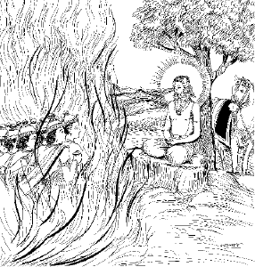
तेज सहन हुआ नहीं—सब जल गये हैं। तब राजा सगरने अपने पौत्र अंशुमान्को भेजा है। अंशुमान् कपिलदेवकी स्तुति करता है।
कपिलदेवने कहा है—तुम्हारे दादाके यज्ञका घोड़ा इन्द्रदेवने मेरे आश्रममें रखा। तुम्हारे पितर मुझे मारनेके लिये आये। मेरा तेज सहन हुआ नहीं, जल गये हैं। श्रीगंगामैया आयें तो इनका उद्धार हो सकता है, दूसरा कोई उपाय नहीं है।
अंशुमान् घोड़ा ले करके घरमें गया है। यज्ञ परिपूर्ण किया है। गंगाजीका दर्शन हो—गंगाजीके लिये अंशुमान्ने बहुत तपश्चर्या की है। श्रीगंगामाँका दर्शन हुआ नहीं। अंशुमान्का पुत्र दिलीप हुआ है। दिलीप राजाने बहुत वर्षतक तपश्चर्या की, गंगाजीका दर्शन हुआ नहीं। दिलीपके पुत्र भगीरथ हुए हैं। तीनों पुरुषोंका पुण्य एक हो गया है—श्रीगंगामाँका दर्शन हुआ। गंगाजीने कहा—‘मेरा वेग पृथ्वीको सहन नहीं होगा, पृथ्वी रसातलमें डूब जायगी। मुझे मस्तकमें कोई धारण करे तो मैं आऊँगी।’
भगवान् शंकरकी प्रार्थना की है। गंगोत्रीमें भगवान् शंकर खड़े हैं—दो हाथ कमरपर रखे हैं, आकाशमें दृष्टि है। आकाश-मार्गसे श्रीगंगामाँ शिवजीकी जटामें आयी हैं। वह दिन था वैशाख मास, शुक्लपक्ष और सप्तमी तिथि। गंगावतरण वैशाख शुक्ला सप्तमीके दिन हुआ है, वैशाख शुक्ला सप्तमीके दिन शिवकी जटाओंमें आयी हैं। जटासे बाहर निकलनेका मार्ग मिलता ही नहीं है। राजा भगीरथने प्रार्थना की है। शंकरभगवान्ने कहा—‘गर्मी बहुत होती है, अब मस्तकमें ठंडक है, अच्छा है।’ भगीरथने कहा—‘महाराज! आपके लिये यह सब प्रयत्न किया है, पितरोंका उद्धार करना है।’
एक महीनेतक गंगाजी शिवजीकी जटामें रही हैं। वैशाख शुक्ल सप्तमीके दिन गंगा मइया शिवजीकी जटामें आयी हैं। ज्येष्ठ मास, शुक्ल पक्ष दशमी तिथिके दिन जटासे शिवजीने गंगाजीको बाहर निकलनेका मार्ग दिया है। अनेक देशोंको पवित्र करती हुई गंगामाँ पातालमें गयी हैं, जहाँ राजा सगरके पुत्र जल करके भस्म हुए थे। भस्मकी मिट्टी हो गयी थी। गंगाजी वहाँ आयी हैं, मिट्टीको गंगाजीका स्पर्श हुआ है। मिट्टीसे देव-पुरुष निकलते हैं, श्रीगंगामाँके चरणोंमें बारम्बार वन्दन करते हैं—श्रीगंगामाताकी जय! गंगामइयाका जय-जयकार करने लगे हैं।
मरनेके बाद शरीरकी मिट्टीको गंगाजीका स्पर्श हुआ, राजा सगरके पुत्रोंको सद्गति मिली है। मरनेसे प्रथम जो गंगाजीमें स्नान करता है, गंगाजीको वन्दन करता है, गंगाजीकी जो प्रेमसे पूजा करता है, उसको सद्गति मिले तो क्या आश्चर्य है? आप घरमें स्नान करो, उस समय भी गंगाजीका स्मरण करो। ‘गंगा-गंगा’—यह तो महामन्त्र है। जो बहुत प्रेमसे ‘गंगा-गंगा’ बोलता है—गंगामाँ कृपा करके घरमें भी आती हैं। स्नानके समयमें गंगाजीका स्मरण करो, गंगाजीका वन्दन करो—आपको गंगा-स्नान करनेका फल मिलेगा। भगीरथ महाराज गंगाजीको ले आये, इसीलिये गंगाजीका नाम हुआ है—भागीरथी गंगा।
भगीरथ महाराजका वंश बढ़ा है, इस वंशमें ऋतुपर्ण नामका राजा हुआ। इस वंशमें अयुतायु राजा हुआ। इस वंशमें सिंधुद्वीप राजा हुआ। इस वंशमें नारीकवच हुआ। इस वंशमें अश्मक नामका राजा हुआ। इस वंशमें खट्वाङ्ग राजा हुआ—
खट्वाङ्गाद् दीर्घबाहुश्च रघुस्तस्मात् पृथुश्रवा:।
अजस्ततो महाराजस्तस्माद् दशरथोऽभवत्॥
(श्रीमद्भा० ९।१०।१)
खट्वाङ्ग राजाके वंशमें दिलीप राजा हुआ है। चक्रवर्ती सार्वभौम राजा दिलीपने एक गायमाताका रक्षण करनेके लिये सिंहको अपना शरीर दिया था, मुझे मार डाल, मुझे खा जा, गायमाताको छोड़ दे। एक गायमाताका रक्षण करनेके लिये सिंहको अपने शरीरका भोग दिया था। गायमाताने आशीर्वाद दिया है।
राजा दिलीपके यहाँ जो बालक हुआ है, उसका नाम राजा रघु है। राजा रघु महान् वीर हैं, राजा रघु महान् ज्ञानी हैं, राजा रघु अति उदार हैं। एक बार रघु राजाने सर्वदक्षिण नामका यज्ञ किया था, जिस यज्ञमें पहना हुआ वस्त्र छोड़ करके सब कुछ दानमें दे दिया। राजा रघुकी कीर्ति बहुत बढ़ गयी। सूर्यवंश नाम मिट गया—लोग इसे ‘रघुवंश’ कहने लगे। रघु राजाके यहाँ जो पुत्र हुआ, उसका नाम अज हुआ। राजा अजका लग्न इन्दुमती रानीके साथ हुआ था। उनके यहाँ जो पुत्र हुआ, उसका नाम दशरथ है।
श्रीराम, लक्ष्मण, भरत, शत्रुघ्न और हनुमान्के जन्मकी कथा
चक्रवर्ती राजा दशरथ श्रीअयोध्याजीमें राज्य करते हैं। दशरथजीकी तीन प्रधान रानियाँ हैं। पुत्र-सन्तति न होनेसे दुखी हैं। वसिष्ठऋषिने राजाके हाथसे पुत्र-कामेष्टि यज्ञ कराया। पूर्णाहुतिके समयमें अग्निकुण्डसे अग्निनारायण बाहर आये हैं। सुवर्ण-पात्रमें पायस ले करके आये हैं—दिव्य प्रसाद ले करके आये हैं। दशरथ महाराजको प्रसाद दिया है और कहा है ‘चार बालक होनेवाले हैं। आपको अतिशय सुखी करेंगे, आपकी कीर्तिको बहुत बढ़ायेंगे—ऐसे चार पुत्र होनेवाले हैं।’
राजाको आनन्द हुआ है। प्रसादको बारम्बार वन्दन करते हैं। वसिष्ठऋषिसे कहा है—आपके आशीर्वादसे यह प्रसाद मिला है, मैं क्या करूँ? वसिष्ठऋषिने कहा कौसल्या धर्मपत्नी है। धर्मपत्नीका ही प्रसादमें मुख्य अधिकार है। कैकेयी भोगपत्नी है। प्रसाद कौसल्याजीको दे दो।
राजा दशरथने कहा—कैकेयी बहुत इच्छा रखती है, सुमित्राकी भी इच्छा है—आप कृपा करो। वसिष्ठजीने आज्ञा दी है। आधा प्रसाद कौसल्याजीको दिया है। आधा जो बाकी था, उसके दो भाग किये हैं। एक भाग सुमित्राको दिया, एक भाग कैकेयीको दिया है।
अभिमानके बिना कोई पाप होता ही नहीं है। सभी पापोंके मूलमें अभिमान होता है। कैकेयीमें सौन्दर्यका अभिमान था, मैं बड़ी सुन्दर हूँ, राजा मेरे आधीन है। कैकेयीको बादमें प्रसाद दिया—यह उसको बुरा लगा है। हाथमें प्रसाद ले करके कैकेयी क्रोध करती है। दशरथ महाराजका तिरस्कार किया है—‘बाजारसे मुझे ले आये हो? मेरा अपमान किया! मुझे प्रसाद लेना ही नहीं है।’
जो स्त्री क्रोधमें पतिदेवका तिरस्कार करती है, उसके पुण्यका नाश हो जाता है। हाथमें प्रसाद ले करके कैकेयीने दशरथ महाराजका तिरस्कार किया है। बादमें प्रसाद दिया—यह कैकेयीको बहुत बुरा लगा है।
उसी समय एक पक्षी वहाँ आया है। वह पक्षी कैकेयीके हाथका प्रसाद उठा करके ले जाता है। अंजन पर्वतमें श्रीअंजनीमाता पंचाक्षर शिव-मन्त्रका जप करती हैं। भगवान् शंकरके जैसा पुत्र हो। शिवजीकी प्रेरणासे पक्षीने कैकेयीका प्रसाद उठा लिया और ला करके अंजनीमाताके हाथमें रख दिया।
अंजनीमाताकी आँख बन्द है। अंजनीमाताने तो ऐसा ही मान लिया कि भगवान् शंकरने ही मुझे प्रसाद दिया है। प्रसाद-भक्षण करनेसे पेटमें गर्भ रहा है। नौ मास परिपूर्ण हुए हैं। परम पवित्र चैत्र मास, शुक्ल पक्ष, पूर्णिमा तिथि, सूर्योदयके समयमें श्रीहनुमान्जी प्रकट हुए हैं।
श्रीहनुमान्जी जन्मसे ही बहुत बलवान् हैं। भूख लगी है। सूर्य उदय हुआ था। यह कोई लाल फल है—ऐसा समझ करके सूर्य-मण्डलमें गये हैं। सूर्यको फल समझ करके खानेके लिये दौड़े हैं। देवोंको, ऋषियोंको बहुत आश्चर्य होता है—यह बालक कैसा है, अभी तो इसका जन्म हुआ है। जन्मसे ही यह बहुत बलवान् है। हनुमान्जीको समझाया—यह फल नहीं है, यह सूर्य है। अनेक वरदान दिये हैं।
कैकेयीका प्रसाद पक्षी ले जाता है। फिर तो कैकेयीको दु:ख हुआ है—रोने लगी है। कौसल्याजीको दया आयी। कौसल्याजीने प्रसादसे थोड़ा भाग कैकेयीको दिया है। कौसल्याजीके सत्संगमें सुमित्राजी रहती थीं। सुमित्राजीने प्रसादमेंसे थोड़ा भाग कैकेयीको दिया है। प्रसाद भक्षण करनेसे पेटमें गर्भ रहा है।
ग्रन्थोंमें तो ऐसा वर्णन है कि राम माँके पेटसे बाहर नहीं आये हैं। राम बाहरसे ही प्रकट हुए हैं। भरत, शत्रुघ्न और लक्ष्मण माँके पेटसे बाहर आये हैं।
वसिष्ठऋषिने राजा दशरथसे कहा है—सगर्भा स्त्रीकी इच्छा परिपूर्ण करना पतिका धर्म है, रानीको प्रसन्न करो, जो माँगे, सो दे दो।
दशरथ महाराज सुमित्राजीके पास आये हैं। सुमित्राजीसे पूछते हैं—महारानी! तुम्हारी क्या इच्छा है? मन कैसा है, सुमित्राजीने कहा—‘मुझे सेवा करनेकी बहुत इच्छा होती है। मैं कौसल्याजीकी सेवा करूँ—ऐसा विचार मेरे मनमें आता है। मेरे लिये आपने स्वतन्त्र राजमहल बनवाया है, मुझे अलग रहना नहीं है। कौसल्याजीके राजमहलमें कौसल्याजीकी दासी बन करके मैं सेवा करूँ, सेवामें ही आनन्द है। शुद्ध भावसे जो सेवा करता है, उसको अपूर्व आनन्द मिलता है। मुझे सेवा करना है। मैं कौसल्याजीकी दासी बनी रहूँ।’
वसिष्ठऋषिने सुना है—कैसा बोलती है! सगर्भा होनेके बाद इसका स्वभाव बहुत सरल हो गया है।
कौसल्याजी ध्यान करनेके लिये बैठी हैं। दशरथ महाराज आते हैं। कौसल्याजीको खबर भी नहीं है। ‘महारानी!! महारानी! क्या इच्छा है?’ कौन सुनता है! कौसल्याजीने सुना नहीं। दासी सावधान करती है—‘महाराज आये हैं।’ दशरथ महाराजने कहा है—वसिष्ठऋषिकी आज्ञासे मैं आया हूँ। क्या इच्छा है?’ कौसल्याजीने कहा—‘मैं अति आनन्दमें हूँ। आनन्दमय रामका हृदयमें दर्शन करती हूँ। मुझे बोलनेकी इच्छा नहीं होती है। किसीके सामने देखनेकी भी इच्छा नहीं है।’
तीर्त्वा मोहार्णवं हृत्वा कामक्रोधादिराक्षसान्।
शान्तिसीतासमायुक्त आत्मारामो विराजते॥
आनन्दमय श्रीराम मेरे हृदयमें हैं। मैं अति आनन्दमें हूँ। जीवको सुख भोगनेकी इच्छा हुई, तभीसे जीव दुखी हुआ है। सुख भोगनेकी इच्छा ही दु:ख है। सुख भोगनेकी इच्छा हुई कि शक्तिका ह्रास होता है। सुख भोगनेकी इच्छा हुई कि मन चंचल होता है। कोई सुख भोगनेकी इच्छा हुई कि पापका आरम्भ होता है। सुख भोगनेकी इच्छा ही महान् दु:ख है।
‘मैं अति आनन्दमें हूँ। आनन्दमय श्रीराम मेरे हृदयमें हैं। अब किसीको देखनेकी इच्छा नहीं, किसीसे बोलनेकी इच्छा नहीं।’
वसिष्ठऋषिने सुना है—यह तो वेदान्तके सिद्धान्त बोलती है। भविष्य बहुत सुन्दर लगता है। परमानन्द हुआ है। नव मास परिपूर्ण हुए हैं। अब प्रभुका प्राकटॺ होनेवाला है। अयोध्याजीमें श्रीराम प्रकट हुए हैं।
‘अयोध्या’ और ‘दशरथ’ का तात्पर्यार्थ
अयोध्या शब्द वेदोंमें आया है—देवानां पूरयोध्या। वेदोंमें वर्णन आता है। ‘अयोध्या’ शब्दका अर्थ वहाँ किया है—जहाँ युद्ध नहीं होता, उसीको अयोध्या कहते हैं—योध्या न भवति इति अयोध्या। जहाँ युद्ध नहीं है, वहाँ श्रीराम आते हैं। अपने घरको अयोध्या बनाओ। घरमें कभी झगड़ा करना नहीं। घरमें प्रेमसे रहो। जहाँ झगड़ा है, वहाँ भगवान् विराजते नहीं हैं। जीवन थोड़ा है, झगड़ा क्यों करते हो?
योध्या न भवति इति अयोध्या—जो सरयूजीके किनारे रहता है, वह कभी झगड़ा नहीं करता। सरयूजी भक्ति महारानीका स्वरूप हैं। जो भक्तिके किनारे रहता है, वह कभी झगड़ा नहीं करता। जो भक्तिका किनारा छोड़ता है, वह झगड़ा करता है। भक्तिका किनारा कभी छोड़ना नहीं।
बहुत-से लोग ऐसे होते हैं, जो कथा हो तबतक तो भक्ति करते हैं, पर जहाँ कथाकी समाप्ति हुई कि भक्तिकी भी समाप्ति कर देते हैं। भक्तिकी कभी समाप्ति मत करो। भक्तिके किनारे रहो। भक्तिका किनारा कभी छोड़ना नहीं। श्रीसरयू महारानी भक्तिका स्वरूप हैं। जो भक्तिके किनारे रहता है, वह कभी झगड़ा नहीं करता। उसका घर, उसका शरीर ‘अयोध्या’ बन जाता है।
अध्यात्मरामायणमें एक-एकके दिव्य स्वरूप समझाये हैं—‘दशरथ’ बनो। पंच-ज्ञानेन्द्रिय और पंचकर्मेन्द्रियरूपी घोड़ोंको जो काबूमें रखता है—वही ‘दशरथ’ है। आप मालिक हैं, इन्द्रियाँ नौकर हैं। जो मालिक नौकरके अधीन रहता है, वह मालिक दुखी हो जाता है। नौकरको मालिकके अधीन रहना चाहिये। आपको जहाँ जाना है, वहाँ आपका नौकर भी पीछे-पीछे आये। आपको भगवान्के चरणोंमें जाना है—आपकी आँख भगवान्में रहे। आँखको जहाँ जाना है, वहाँ आप मत जाओ। नौकरको अक्ल कम होती है, इसीलिये वह ‘नौकर’ है। इन्द्रियाँ नौकर हैं, आत्मा मालिक है। दशरथ महाराज जितेन्द्रिय हैं, तपस्वी हैं, महान् भगवद्भक्त हैं। वे भगवान्के पिता होनेवाले हैं। कैसी तपश्चर्या की है!
दशरथजीका स्वप्न
नव मास परिपूर्ण हुए हैं। परम पवित्र चैत्र मास, शुक्ल पक्ष, अष्टमी तिथि है—रात्रिमें दशरथ महाराज सोये हुए हैं। अष्टमीकी उत्तर रात्रि है, रामनवमीका प्रात:काल है। दशरथ महाराजने एक सुन्दर स्वप्न देखा है।
दशरथ महाराजने स्वप्नमें देखा—मेरे आँगनमें बड़े-बड़े साधु, सन्त, महात्मा आये हैं—बड़े-बड़े ऋषि आये हैं। सभीको मैं साष्टांग वन्दन करता हूँ। सभी सन्त मुझे आशीर्वाद देते हैं—‘उठो, उठो! अब भाग्यका उदय होनेवाला है, अब भगवान् आनेवाले हैं। राजाने स्वप्नमें ऐसा देखा है कि मैं सरयूजीमें स्नान करता हूँ। दशरथ महाराजके घरमें लक्ष्मी-नारायणकी सेवा है।’ स्वप्नमें राजाने देखा है कि बड़े-बड़े ऋषि वेद-मन्त्र बोल रहे हैं—मेरे नारायणका मैं दूधसे अभिषेक कर रहा हूँ। स्वप्नमें भगवान्का सुन्दर शृंगार किया है। स्वप्नमें पुष्पकी माला अर्पण की है। स्वप्नमें नारायणकी आरती उतारी है। आज भगवान् बहुत प्रसन्न दिखते हैं। आरतीके समयमें दर्शनमें ऐसा आनन्द होता है कि अब ये बोलने लगेंगे—ऐसा लगता है। ऐसा आनन्द कभी आया नहीं। दशरथ महाराज स्वप्नमें नारायणकी आरती उतारते हैं। राजा दशरथने देखा—ठाकुरजीके श्रीअंगसे तेज निकलता है, वह तेज कौसल्याजीके पेटमें जाता है। राजाने स्वप्नमें देखा है—परमात्मा कौसल्याजीके पेटमें प्रवेश करते हैं। ऐसा सुन्दर स्वप्न देख करके दशरथ महाराज जाग गये हैं।
स्वप्नमें भगवान्की सेवा करो, स्वप्नमें भगवान्की आरती करो तो समझना भाग्यका उदय होनेवाला है।
ब्राह्ममुहूर्तमें वसिष्ठऋषि ध्यान करनेके लिये बैठे थे। दशरथ महाराज वसिष्ठऋषिके आश्रममें गये हैं। गुरुदेवको साष्टांग प्रणाम किया है, कहा है—ध्यानमें मैं विघ्न करनेके लिये आया हूँ, क्षमा करें। आपके आशीर्वादसे मैंने ऐसा स्वप्न देखा है कि आप वेद-मन्त्र बोलते थे, मैं भगवान्का दूधसे अभिषेक करता था। मैंने शृंगार किया, आरती की, तब मुझे ऐसा दर्शन हुआ कि भगवान्ने कौसल्याके पेटमें प्रवेश किया है।
वसिष्ठऋषिने सुना है, राजाको धन्यवाद दिया है—‘अति-अति भाग्यशालीको ऐसा स्वप्न आता है। तुम्हारा जो स्वप्न है, बहुत अच्छा है। राजा! इससे अच्छा और क्या हो सकता है? तेरे घरमें परमात्मा पुत्ररूपसे आनेवाले हैं। बालक होगा। अरे! ऐसा बालक होगा कि आजतक कभी ऐसा हुआ नहीं, मैं मानता हूँ कि भविष्यमें फिर कभी ऐसा होगा भी नहीं। परमात्मा पुत्र-रूपसे आनेवाले हैं, इसका सूचक यह स्वप्न है।’
राजाने जब सुना है, तब आनन्द हुआ है मेरे गुरुदेव जो बोलते हैं, वह सच्चा हो जाता है। मुझे कहा है—परमात्मा पुत्र-रूपमें आनेवाले हैं। राजाने हाथ जोड़ करके पूछा है—‘प्रभु कब पधारेंगे?’ वसिष्ठऋषिने कहा—‘कब पधारेंगे, मैं क्या कहूँ? यह जगत् कालके अधीन है और काल रामजीका नौकर है। मेरे राम राजाधिराज हैं। राम कालके अधीन नहीं हैं। राजाधिराज होनेसे उनको जब इच्छा होगी, तब कृपा करके पधारेंगे। राम कालके आधीन नहीं हैं, काल रामजीके आधीन है। राम कालके मालिक हैं। ब्रह्ममुहूर्तका यह स्वप्न है। मैं ऐसा मानता हूँ कि चौबीस घण्टेमें इसका फल मिलना चाहिये।’
दशरथ महाराज स्नान करते हैं। ध्यान करनेके लिये बैठे हैं। आज प्रात:कालसे ही कौसल्याजीकी ध्यानमें तन्मयता हुई है। घरके नौकर-दासियोंको आज्ञा हुई है—बाहर जाओ। जबतक मैं न बुलाऊँ, तबतक कोई अन्दर आये नहीं। एकान्तमें कौसल्याजी ध्यानमें तन्मय हुई हैं। रामनवमीका प्रात:काल परिपूर्ण हुआ है—
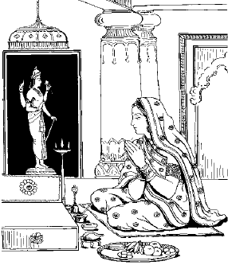
जेहि दिन राम जनम श्रुति गावहिं।
तीरथ सकल तहाँ चलि आवहिं॥
श्रीअयोध्याजीमें सरयूजीके किनारे सन्तोंकी बहुत भीड़ हो गयी है। विरक्त साधु, भजनानन्दी सन्त, संन्यासी, महात्मा सरयू-गंगाको वन्दन करके स्नान करते हैं। सीताराम, सीताराम, सीताराम—कीर्तनमें तन्मय हुए हैं। अनेक वैष्णव जब दर्शनके लिये अति आतुर हो जाते हैं, तभी अवतार होता है। कब प्राकटॺ होगा? कब दर्शन होगा? दर्शनोंकी अतिशय आतुरता बढ़ गयी है।
भगवान् शंकरका अयोध्या-आगमन
भगवान् शंकर कैलासधाम छोड़ करके श्रीअयोध्याजीमें आये हैं। भगवान् शंकरके इष्टदेव बालक श्रीराम हैं। बालस्वरूपमें उनकी बहुत प्रीति है। चार वेद शंकरभगवान्के चार शिष्य हुए हैं। वृद्ध ब्राह्मणका स्वरूप धारण किया है। श्रीराम, श्रीराम, श्रीराम—श्रीराम-नामका जप करते हुए अयोध्याजीकी गलियोंमें घूम रहे हैं। राम-दर्शन कब होंगे? प्रभुका प्राकटॺ होगा तो मैं कौसल्याजीके घरमें आऊँगा, कौसल्याजीको रामजीका भविष्य मैं सुनाऊँगा, मेरी गोदमें वे रामजीको देंगी।
शिवजी महाराजने वृद्ध ब्राह्मणका स्वरूप धारण किया है। अयोध्याकी प्रजा भाग्यशाली है। भगवान् शंकरको सब वन्दन करते हैं। दर्शनमें आनन्द आता है। ये कैसा ब्राह्मण है! शंकर-भगवान्के जैसा ही लगता है। कैसी जटा है! सभी वन्दन करते हैं, विवेकसे पूछते हैं—‘महाराज, कहाँसे आये हैं? महाराजका नाम क्या है?’
‘मेरा नाम सदाशिव जोशी है, ज्योतिषी हूँ।’
भगवान् श्रीरामका चतुर्भुज नारायणरूपमें प्राकट्य
‘अब प्रभुके प्राकटॺका समय हुआ है—परम पवित्र चैत्र मास, शुक्ल पक्ष, परिपूर्ण नवमी तिथि है, पुनर्वसु नक्षत्रका सुयोग है। साधु-सन्तोंके मन अति प्रसन्न हैं। आज परमात्मा प्रत्यक्ष प्रकट होनेवाले हैं। देवोंको बहुत उतावली हुई। आकाशमें दुन्दुभी बजाते हैं, जय-जयकार करते हैं। परम पवित्र चैत्र मास, शुक्ल पक्ष, नवमी तिथि, पुनर्वसु नक्षत्रका सुयोग, मध्याह्न-कालमें माता कौसल्याजीके सम्मुख चतुर्भुजरूपसे प्रभु प्रकट हुए हैं। श्रीरामचन्द्रजी महाराजकी जय—
बिप्र धेनु सुर संत हित लीन्ह मनुज अवतार।
निज इच्छा निर्मित तनु माया गुन गो पार॥
जय-जयकार हो रहा है। दिव्य प्रकाशमें चतुर्भुज नारायणका दर्शन हुआ है। श्रीराम चतुर्भुजरूपसे प्रकट हुए हैं।
चतुर्भुजस्वरूपसे भगवान्ने जगत्को बोध दिया है कि मैं अपने भक्तोंका चारों ओरसे रक्षण करता हूँ, इसीलिये चतुर्भुजरूपसे प्रकट हुआ हूँ। ब्राह्मण, क्षत्रिय, वैश्य, शूद्र—कोई भी हो; श्रीरामकी भक्ति कर सकता है। जो प्रेमसे राम-सेवा करता है, राम-नामका जो जप करता है, उसके धर्म, अर्थ, काम और मोक्ष—चारों पुरुषार्थ सफल हो जाते हैं।
भए प्रगट कृपाला दीनदयाला कौसल्या हितकारी।
कौसल्याजीका भगवान्से शिशुरूप धारण करनेका अनुरोध
कौसल्यामाताको दर्शन हुआ है। मेरे लिये प्रकट हुए हैं, कैसा सुन्दर स्वरूप है! कौसल्यामाँने कहा है—‘यह आपका चतुर्भुज-स्वरूप अति सुन्दर है! किंतु लोगोंको शंका होगी कि इतना बड़ा चार हाथवाला बालक कैसे हो सकता है? कीजै सिसु लीला अति प्रिय सीला—मेरे लिये बालक हो जाओ। मुझे माँ-माँ कहो, मेरे पीछे-पीछे चलो। मधुर बाल-लीला करो।’
भगवान्ने माताजीको अपने स्वरूपका भान कराया है। चतुर्भुज स्वरूप अन्तर्धान हुआ है—दो हाथवाले बालक श्रीरामललाका प्राकटॺ होता है। कौसल्यामाँने बालक श्रीरामको गोदमें उठाया है। एक-एक अंगको प्रेमसे निहारती है—चरण-कमल, कर-कमल, मुख-कमल, नेत्र-कमल दिव्य सुगन्ध आती है। रामकी आँख अति सुन्दर है। मेरे रामको किसीकी दृष्टि न लगे, यह मार्कण्डेय-आयु हो। नारायण-नारायण—कीर्तन करती हुई प्रभुको मनाती है।
श्रीरामजन्मका उत्सव
एक दासीको खबर पड़ी है—अन्दर बालकका जन्म हो गया है। दासी दौड़ती हुई अन्दर आयी है। अन्दर जैसे ही प्रवेश करती है—उसको ऐसा लगता है, जैसे आनन्द-समुद्रमें डूब गयी हो। आज परमानन्द प्रकट हुआ है। रोम-रोमसे आनन्द निकलता है। वह रामके दर्शनमें तन्मय होकर चित्रके जैसी खड़ी-की-खड़ी रह गयी। दृष्टि रामचन्द्रजीमें स्थिर हो गयी है।
कौसल्यामाँने देखा—दासी आयी है। कौसल्या माँके गलेमें एक सुन्दर चन्द्रहार था। माँने उतारा, दासीको देती है। दासीको राम-दर्शनमें ऐसा आनन्द हुआ है कि उसको हार लेनेकी भी इच्छा नहीं रही। कौसल्याजी बहुत आग्रह करती हैं—‘प्रेमसे देती हूँ—आज तो लेना ही चाहिये।’
दासीने हाथ जोड़ करके कहा है—‘मइया, यह हार तो आपके गलेमें शोभता है। आज मेरा माँगनेका हक है, मैं जो माँगूँ सो देना पड़ेगा।’
कौसल्याजीने कहा—‘तुम जो चाहती हो, वह माँग लो।’ दासीने कहा है—‘माँ’ ! फिर आप ‘ना’ तो नहीं बोलोगी?’ कौसल्याजीने कहा—नहीं, मैं ना नहीं बोलूँगी।
तब दासीने हाथ जोड़ करके कहा है—‘माँ! मैं हार लेनेके लिये नहीं आयी हूँ। मैं बालकको देखनेके लिये आयी हूँ। दो मिनटके लिये बालकको मेरी गोदमें दे दो।’
कौसल्याजीने दासीको अपने पासमें बैठाया है, उसकी गोदमें बालक रामको अर्पण किया है।
हजारों वर्षोंसे यह जीव ईश्वरसे अलग हुआ है। जीवको श्रीरामका वियोग हुआ है। राम-वियोग ही महान् रोग है। अब दासीका ब्रह्म-सम्बन्ध हुआ है। दासीने गोदमें लेकर बालक श्रीरामको प्यार किया है। जीव-ईश्वरका मिलन हुआ है। अति आनन्दमें समाधि लगी है।
एक दासी दौड़ती हुई दशरथ महाराजके पास गयी है। दशरथ राजासे कहा है—बधाई! बधाई!! लाला भयो है, बालकका जन्म हुआ है। दशरथ महाराज पूछते हैं—‘बालक कैसा है?’ दासीने कहा है—‘महाराज! कैसा है—यह कोई वर्णन नहीं कर सकता। ऐसा आजतक हुआ नहीं, ऐसा होनेवाला भी नहीं है।’
आँखको दर्शन तो होता है, पर आँखको बोलनेकी शक्ति कहाँ है? जीभ बोलती है, पर जीभ अन्धी है—जीभको दिखता नहीं है। राम कैसे हैं—यह वेद भी बराबर वर्णन नहीं कर सकते, दासी क्या वर्णन करे?
‘महाराज! घरमें ठाकुरजी विराजमान हैं, नारायणके जैसी उसकी आँख है, नारायणके जैसा ही रंग है। आप स्नान करके पधारो, मैं आपकी गोदमें बालक रामको दूँगी।’
दशरथ महाराज सरयूजीके किनारे गये हैं। सरयू-गंगाका वन्दन करके स्नान किया है। वृद्धावस्थामें पुत्र-जन्मके निमित्त स्नान करनेका सुयोग आया है। सेवक दशरथ महाराजको शृंगारते हैं। आजतक दशरथ महाराज शृंगार बहुत नहीं करते थे। उनका जीवन बहुत सादा था। अति सरल-हृदय थे। आँगनमें कोई साधु आये, कोई ब्राह्मण आये, कोई गरीब आये—उसको आसनपर बिठाते। दूसरेको शृंगारना उनका स्वभाव है। उनका जीवन बहुत सादा था। दूसरेको वस्त्र-आभूषण देते थे। कभी-कभी तो घरके नौकरोंको भी शृंगारते थे। घरके नौकर दशरथ महाराजको आशीर्वाद देते थे।
नौकरके आशीर्वादकी बहुत जरूरत है। जिसको सबके आशीर्वाद मिलते हैं, उसीके यहाँ सर्वेश्वर आते हैं। नौकरोंने कहा है—‘महाराज! महाराज!! आज बड़ा-बड़ा उत्सव करना है। आपको शृंगार करना ही पड़ेगा।’
राजाको शृंगार किया है। वसिष्ठ आदि ऋषि आये हैं। गणपति महाराजकी पूजा करायी है। पुण्याहवाचन हुआ है। नान्दीश्राद्धमें पितरोंकी पूजा की है। दशरथ राजाने ब्राह्मणोंको, गरीबोंको बहुत दान दिया है। सभी हृदयसे आशीर्वाद देते हैं। जय-जयकार हो रहा है।
सोनेका कटोरा है। कटोरेमें मधु रखा है। वसिष्ठऋषि वेद-मन्त्र बोलते हैं, मधुको अभिमन्त्रित करते हैं—
अग्निरायुष्मान्। वनस्पतिभिरायुष्मान्। तेन त्वायुषायुष्मन्तं करोमि। सोम आयुष्मान्। ओषधीभिरायुष्मान्। तेन त्वायुषायुष्मन्तं करोमि। समुद्र आयुष्मान्। तेन त्वायुषायुष्मन्तं करोमि।
ऋग्वेद-यजुर्वेदके मन्त्र बोलते हैं—बालकका आयुष्य बढ़े, तेज बढ़े। मधुको अभिमन्त्रित किया है। वसिष्ठ ऋषिके हाथमें कटोरा देते हैं। राजाको समझाया है—‘अन्दर जाना है, बालककी जीभपर मधु देना है।’ गुरुदेवकी आज्ञा हुई है। दशरथ महाराज अन्दर जाते हैं।
आज कौसल्याजीके महलमें बहुत भीड़ हुई है। जो अन्दर जाता है, वह राम-दर्शनके आनन्दमें ऐसा तन्मय हो जाता है कि उसको बाहर निकलनेकी इच्छा ही नहीं होती। जो अन्दर गया, वह फँस जाता है—ऐसा आनन्द हुआ है।
रोजका ऐसा नियम था कि दशरथ महाराज कौसल्याजीके महलमें आते, तब घरकी दासियाँ घूँघट निकालती थीं, कोनेमें खड़ी रहती थीं। आज कोई घूँघट निकालती नहीं है, किसीको शर्म रही नहीं। राम-दर्शनमें देहको भूल गयी हैं।
श्रीराम-दर्शन करनेके लिये देव-ऋषि आये हैं। सेवक लोग बोलते हैं—‘हटो! हटो!!’ दशरथ महाराजने कहा—‘हटो-हटो बोलना नहीं। ये सब लोग प्रेमसे दर्शन करते हैं। मेरे रामको आशीर्वाद देनेके लिये आये हैं। ‘हटो-हटो’ बोलोगे तो किसीको बुरा लगेगा। किसीका अपमान न हो। मेरे रामको ये आशीर्वाद देनेके लिये आये हैं। मैं बाहर खड़ा रहूँगा।’ आज तो ऐसा हुआ है, घरमें इतनी भीड़ हो गयी है कि घरके मालिकको कोई अन्दर जाने ही नहीं देता।
राम-जन्म-महोत्सवमें सभीको आनन्द हुआ है। एक चन्द्रमा नाराज हुआ है। चन्द्रमा रामजीके पास आया और रोने लगा। राम पूछते हैं—क्यों रोते हो? क्या हुआ? चन्द्रने कहा—‘महाराज! ये सूर्यको समझाइये। बारह घण्टे हो गये, एक ही जगहपर खड़े हैं। आजका दिन बहुत बड़ा हो गया है।’
सूर्यवंशमें परमात्मा प्रकट हुए हैं, सूर्यनारायण दर्शन करनेके लिये आये हैं। श्रीराम-दर्शनमें ऐसा आनन्द हुआ है कि सूर्य-रथकी गति स्थिर हो गयी है। बारह घण्टेतक एक ही स्थानपर खड़े रह गये। चन्द्रको उतावली है कि सूर्य अस्तमें जाय तो मैं बाहर आऊँ। आजका दिन बहुत बड़ा हो गया है।
श्रीरामचन्द्रजी समझाते हैं—‘धैर्य रखो। इस अवतारमें मैंने सूर्यको लाभ दिया है। अब कृष्णावतारमें तेरे लिये मैं रात्रिमें बारह बजेके बाद आऊँगा।’
श्रीबालकृष्ण जब प्रकट हुए हैं, तब जगत् गाढ़ निद्रामें है। जगत्में दो ही जीव जागते थे—वसुदेव और देवकी। जो जागता है, उसको भगवान् मिलते हैं; जो सोया हुआ है, उसको संसार मिलता है। जागनेवाला भगवान्का दर्शन करता है।
जिसको संसारका कोई भी सुख मीठा लगता है, वह सोया हुआ है, उसको संसार दिखता है। संसारका सभी सुख जिसको तुच्छ लगता है, वही जागा हुआ है। जागनेवालेको भगवान् मिलते हैं। बालकृष्ण जब प्रकट हुए, तब जगत्में दो ही जीव जागते थे—वसुदेव और देवकी। आकाशमें चन्द्र जागते थे। रामावतारमें चन्द्रको वरदान दिया था।
कौसल्याजीके महलमें श्रीराम-दर्शनके लिये अपार भीड़ हुई है। लोग आपसमें बातें करते हैं—ऐसा कहीं पुत्र होता है? पुत्र ऐसा नहीं लगता है। ये तो वैकुण्ठसे परमात्मा नारायण आये हैं। कैसा सुन्दर श्रीअंग है! आँखें कैसी दिव्य हैं! ऐसा पुत्र नहीं हो सकता—ये तो भगवान् आये हैं।
दशरथ महाराज सुनते हैं—मेरे रामको लोग परमात्मा कहते हैं। लोग उसको भले ही परमात्मा मानें; मेरा तो वह पुत्र ही है, मैं उसका पिता हूँ। अभी रामको मैंने देखा नहीं है, रामको देखना है। प्रेम जब बहुत बढ़ जाता है तो वही प्रेम आँखसे बाहर आता है। दशरथ महाराजको राम-दर्शनकी बहुत आतुरता है। मैं कैसे कहूँ—मुझे अन्दर जाना है, ये लोग समझ करके मुझे मार्ग दें तो अच्छा है।
दशरथ महाराज बोलते नहीं हैं, उनका प्रेम बहुत बढ़ गया है। वसिष्ठऋषि समझ गये। वसिष्ठऋषिने राजाको कहा—‘मेरे पीछे-पीछे आओ।’ वसिष्ठ ब्रह्मनिष्ठ तपस्वी ब्राह्मण हैं। वसिष्ठऋषि जब आते हैं, तब सब लोग हाथ जोड़ करके खड़े रहते हैं। वसिष्ठजीके पीछे-पीछे दशरथ महाराज चलते हैं।
कौसल्याजीकी गोदमें सर्वांगसुन्दर बालक श्रीरामका दर्शन हुआ है। श्रीराम और दशरथजीकी चार आँखें एक हो गयी हैं। कैसा दिखता है! किसीकी दृष्टि न लगे, मार्कण्डेय-आयु हो, सुखी हो।
बालक श्रीराम गालमें हँसने लगे। राजाको आनन्द होता है, मुझे देखनेके बाद हँसने लगा है। कितने लोग आये, पर हँसता नहीं था। मुझे पहचानता है, मैं उसका पिता हूँ, वह मेरा बालक है।
दशरथ महाराज बालक श्रीरामकी जीभपर मधु देते हैं। वसिष्ठऋषिको कहा है—‘मैं मधु देता हूँ, आप वेद-मन्त्र बोलिये।’ बालक श्रीरामके दर्शनमें वसिष्ठजीको समाधि लग गयी। ब्रह्मनिष्ठ ब्राह्मण हैं, नित्य ब्रह्म-चिन्तन करते हैं। ब्रह्म ही श्रीराम हैं। राम-दर्शनमें समाधि लगी है। दशरथ राजाने कहा—‘मैं मधु देता हूँ, मन्त्र बोलिये।’ वसिष्ठजीने कहा—‘मन्त्र क्या होता है? कोई मन्त्र याद आता नहीं है। मन्त्र तो क्या, रामका दर्शन करनेके बाद मैं अपना नाम भी भूल गया हूँ, नाम याद नहीं आता है।’ तत्र वेदा: अवेदा: भवन्ति। अथ मर्त्योऽमृतो भवति। अत्र ब्रह्म समश्नुते। ब्रह्म-साक्षात्कारमें वेदकी विस्मृति हो जाती है। नाम-रूपकी विस्मृति होती है। कोई मन्त्र याद नहीं आता है।
ब्रह्मनिष्ठ वसिष्ठऋषि राम-दर्शन करते हैं। अपने नामको भी भूल गये हैं, कुछ याद नहीं आता। दूसरे ब्राह्मण वेदमन्त्र बोलते हैं। राजाने मधु दिया है।
अयोध्याकी स्त्रियाँ बहुत भाग्यशाली हैं। अन्दर जाती हैं। कौसल्यामाताको वन्दन करती हैं, कौसल्यामाताको मनाती हैं। ‘मइया! मेरी सखीने मुझे कहा है कि बालकको एक बार मैंने छातीसे लगाया, प्यार किया तो जो आनन्द मिला है। बालकमें ऐसी दिव्य शक्ति है कि सारा संसार आनन्दरूप हुआ है। जहाँ जाती हूँ, वहाँ आनन्द-ही-आनन्द है। मेरी सखीने मुझे ऐसा कहा है। मइया! एक बार बालकको मेरी छातीसे लगा लेने दो। मइया! दो मिनट बालकको मेरी गोदमें दे दो।’
कौसल्याजी अति उदार हैं। सभीकी गोदमें बालक रामको देती हैं। अति आनन्द हुआ है।
स्त्रियाँ तो अन्दर जाती हैं। पुरुषोंको भी अन्दर जानेकी इच्छा है। सिपाही वहाँ खड़े हैं, पुरुषोंको अन्दर नहीं जाने देते हैं। आज पुरुषोंको दु:ख हुआ है। भगवान्ने मुझे पुरुष क्यों बनाया? मैं स्त्री होता तो अन्दर जाता। मुझे अन्दर नहीं जाने देते हैं।
पुरुषोंने राजा दशरथसे कहा है—‘कौसल्या हमारी माँ हैं। कौसल्यामाँकी गोदमें श्रीराम-दर्शन करनेके लिये हम आये हैं। बहुत आशा ले करके हम आये हैं। हमको आज निराश न करो।’
राजा दशरथको प्रजा प्राणसे प्यारी लगती है। आज किसीको नाराज करना नहीं हैैै। ये सब मेरे रामको आशीर्वाद देनेके लिये आये हैं। सभीके आशीर्वादसे मेरा राम सुखी होनेवाला है। राजाने थोड़ी बाहर दृष्टि की है। बहुत भीड़ हो गयी है। इतने सब लोग अन्दर कैसे आयेंगे? बाहर कैसे निकलें? आज किसीको नाराज करना नहीं है, सभीको प्रसन्न करना है।
दशरथ महाराजने कौसल्याजीको कहा—‘महारानी! बहुत भीड़ हो गयी है, आज सभीको प्रसन्न करना है। मेरी इच्छा है, बाहर आँगनमें आ करके बैठो।’
कौसल्यामाँ बाहर आँगनमें आ करके बैठी हैं। कौसल्यामाँकी गोदमें बालक श्रीराम हैं। अयोध्याकी प्रजा बहुत भाग्यशाली है, श्रीरामका प्रत्यक्ष दर्शन करती है। श्रीराम-दर्शनमें ऐसा आनन्द हुआ है कि किसीको पानी पीनेकी भी इच्छा होती नहीं है, किसीको भूख लगती नहीं है।
उत्सवके दिन भगवान्के दर्शनमें, स्मरणमें भूख और प्यासको भूल जाय, देह-भान भूल जाय—तो ही उत्सव सफल है। जो देह-भान भूलता है, उसीको देवका दर्शन होता है। राम-दर्शनमें सबको ऐसा ही आनन्द हुआ है। राम-नवमीके दिन सभीने उपवास किया है। कौसल्यामाँ सभीको हाथ जोड़ती है। सभीको कहती है—मैं तो नामकी माँ हूँ, आपके आशीर्वादसे बालक हुआ है। आप ही उसकी माँ हो। श्रीराम-दर्शनमें अयोध्याकी प्रजा तन्मय होती है।
श्रीराम-चरित्र-चिन्तन
तस्यापि भगवानेष साक्षाद् ब्रह्ममयो हरि:।
अंशांशेन चतुर्धागात् पुत्रत्वं प्रार्थित: सुरै:।
रामलक्ष्मणभरतशत्रुघ्ना इति संज्ञया॥
तस्यानुचरितं राजन्नृषिभिस्तत्त्वदर्शिभि:।
श्रुतं हि वर्णितं भूरि त्वया सीतापतेर्मुहु:॥
(श्रीमद्भा० ९।१०। २-३)
श्रीरामके बिना आराम मिलता नहीं है। संसारमें जितने सन्त-महात्मा हुए हैं, सभीने श्रीसीतारामजीकी सेवा की है। श्रीराम-सेवा सभीके लिये अनिवार्य है, अति आवश्यक है। आपका ज्ञान-मार्ग हो या योग-मार्ग हो, आप किसी भी सम्प्रदायसे दीक्षा ग्रहण करो, आपके इष्टदेव भगवान् शंकर हों या श्रीकृष्ण हों—सभीके लिये श्रीराम-भक्ति अति आवश्यक है।
श्रीराम मर्यादा-पुरुषोत्तम हैं। रामचन्द्रजीको पुष्पकी माला अर्पण करो, भोग लगाओ, आरती करो—ये श्रीरामचन्द्रजीकी साधारण सेवा है। जगत्में जो कुछ है, सबके मालिक श्रीसीतारामजी हैं। रामजीकी उत्तम सेवा तो यह है कि रामकी मर्यादाका पालन करो। जीवन रामके जैसा ही होना चाहिये। जिसका जीवन रामके जैसा है, उसीका ज्ञान सफल है, उसीकी भक्ति सफल है। राम-चरित्रकी विशेषता यही है कि सभीके लिये राम-चरित्र अति उपयोगी है, अनुकरणीय है।
श्रीकृष्णभगवान्की जो भक्ति करनेवाला है, उसका जीवन भी श्रीरामके जैसा ही होना चाहिये। शंकर-भगवान्की जो भक्ति करता है, उसका जीवन भी श्रीरामके जैसा ही होना चाहिये। शिवजी महाराज श्मशानमें विराजते हैं, गलेमें मुण्डमाला धारण करते हैं, विषका पान करते हैं। शिवजी महाराज जो करते हैं, वैसा कोई नहीं कर सकता है। वर्तन (व्यवहार) तो श्रीरामके जैसा ही होना चाहिये। सर्वसद्गुण-सम्पन्न निर्दोष श्रीराम हैं।
वाल्मीकि रामायणका आरम्भ यहींसे हुआ है। आरम्भमें वाल्मीकिऋषिने प्रश्न किया है—ऐसा संसारमें कौन है, जिसमें कोई दोष नहीं है और जिसमें सभी सद्गुण परिपूर्ण हैं। निर्दोष और सर्वसद्गुण-सम्पन्न जगत्में कौन है? तब कहा है—ऐसे तो एक श्रीराम ही हैं, दूसरा कोई नहीं है। श्रीराम सर्वसद्गुुणोंके समुद्र हैं।
वाल्मीकिऋषिको ऐसी इच्छा हुई कि रामचन्द्रजीको मैं किसकी उपमा दूँ। ऐसा कोई देव मिलता नहीं है, जिसकी उपमा श्रीरामचन्द्रजीको दी जाय। ऐसा कोई ऋषि हुआ नहीं है। वाल्मीकिऋषि थक गये हैं। तब वाल्मीकिऋषिने कहा है कि श्रीराम कैसे हैं? श्रीराम रामके जैसे ही हैं। समुद्र कैसा है? समुद्र, समुद्रके जैसा ही है। समुद्रको आप किसकी उपमा देंगे। समुद्रके समान दूसरा कोई मिलता ही नहीं है। राम सर्वसद्गुणोंके समुद्र हैं—सागरस्य सागरोपमा।
भगवान् शंकर सर्वकाल श्रीराम-नामका जप करते हैं, रामजीका ध्यान करते हैं, राम-कथा करते हैं। भगवान् शंकरने पार्वतीमातासे कहा है—दिनभर मैं रामजीके नामका ध्यान करता हूँ, स्मरण करता हूँ; वह राम कैसे हैं? बराबर अभी मैं भी नहीं जानता। रामजीके अनन्त गुण हैं, जिनका वर्णन बराबर मैं भी नहीं कर सकता—
राम अतर्क्य बुद्धि मन बानी।
मत हमार अस सुनहि सयानी॥
भगवान् शंकर एकान्तमें माता पार्वतीजीको राम-कथा सुनाते हैं। रामजीका वर्णन कौन कर सकता है? रामचन्द्रजीकी जैसी मातृ-पितृ-भक्ति आपको इस संसारमें कहीं भी नहीं मिलेगी। रामचन्द्रजीके जैसा बन्धु-प्रेम कहीं नहीं मिलेगा। रामजीका संयम, रामजीका सदाचार, रामजीकी सरलता, रामजीका धैर्य, रामजीका औदार्य, भगवान् श्रीरामचन्द्रजीका गाम्भीर्य, रामचन्द्रजीका एकपत्नीव्रत—ये सभी सद्गुण कहीं भी एक ठिकाने नहीं मिलते हैं। रामजीमें सभी सद्गुण परिपूर्ण दिखते हैं। इसीसे सिद्ध होता है कि श्रीराम देव नहीं हैं, राम सर्व देवोंके देव परमात्मा हैं। रामजीमें कोई दोष नहीं है और सभी सद्गुुण परिपूर्ण हैं।
राम माता-पिताके अनन्य भक्त हैं। जो माता-पिताकी भक्ति करता है, रामजीको वह प्यारा लगता है। आप कदाचित् भगवान्की भक्ति ज्यादा न करो तो भगवान्को बुरा नहीं लगेगा। किंतु अपने माता-पिताकी आप भक्ति न करो तो भगवान्को बड़ा बुरा लगेगा—भगवान् सजा करेंगे। माता-पिता प्रत्यक्ष परमात्मा हैं। कितने ही लोग घरमें माता-पिताको उत्तर देते हैं। पिताकी आज्ञाका पालन नहीं करते और मन्दिरमें दर्शन करनेके लिये जाते हैं। मन्दिरमें भक्ति करनेके लिये जाते हैं। जो माता-पिताको उत्तर देता है, वह मन्दिरमें दर्शन करनेके लिये जाय तो भगवान् उसका मुख देखते ही नहीं। मूर्ख है—माता-पिताका अपमान करता है और मेरी पूजा करनेके लिये आया है। तेरी पूजा मुझे लेनी ही नहीं है।
राम माता-पिताके अनन्य भक्त हैं। माता-पितामें अति विश्वास रखो। जो माता-पिताकी भक्ति नहीं करता, वह भगवान्की भक्ति क्या करेगा?
भगवान्का प्रत्यक्ष दर्शन नहीं होता है। जिस भगवान्का प्रत्यक्ष दर्शन नहीं होता, उस भगवान्में विश्वास रखना और भगवान्की भक्ति करना बड़ा कठिन है। माता-पिताका प्रत्यक्ष दर्शन होता है। माता-पितामें विश्वास रखो।
आपके जीवनमें एक दिन ऐसा आयेगा कि आपकी माँ जो कहेगी—वह आपको अच्छा नहीं लगेगा। जवानीमें सभीकी बुद्धि बिगड़ती है। मानव ऐसा समझता है कि मैं सयाना हूँ, मैं सब कुछ जानता हूँ, मुझे कहनेकी क्या जरूरत है? यौवन-कालमें सभीकी बुद्धि बिगड़ती है। माता-पिताके अधीन रहो। माता-पितामें विश्वास रखो।
कैकेयीने रामचन्द्रजीको कहा था—वनमें जाओ। कैकेयीकी आज्ञा अनुचित है। कैकेयी भरतको राज्य भले ही दे, रामचन्द्रजीको वनवास क्यों देती है? कैकेयीने रामायणमें अनेक बार ऐसा कहा है कि श्रीराम निर्दोष हैं, श्रीरामजीकी कोई भूल नहीं है, मेरी इच्छा है कि राम घरमें न रहें, वनमें जायँ। निर्दोष रामको कैकेयी वनवास देती है। श्रीरामचन्द्रजीने कैकेयीसे पूछा नहीं है कि मुझे वनवास क्यों देती हो? मेरी माँ जो कहे, वही मुझे करना है। राम अपनेको स्वतन्त्र नहीं मानते, माता-पिताके अधीन मानते हैं।
माँके अधीन रहो, पिताजीके अधीन रहो। आजकल लोग पत्नीके अधीन रहते हैं। स्त्रीके अधीन हो जाते हैं। माता-पिताके अधीन नहीं रहते। माता-पिताको उत्तर देते हैं।
रामने कैकेयीसे नहीं पूछा कि मुझे वनवास क्यों देती हो? कैकेयीने वनवास दिया तो भी सीता-राम कैकेयीका वन्दन करके वनमें जाते हैं।
जिसको माता-पिताके आशीर्वाद मिलते हैं, उसको सभी आशीर्वाद देते हैं। भगवान्को कौन प्यारा लगता है? भगवान् किस जीवके ऊपर कृपा करते हैं, जो बहुत यात्रा करता है, उसके ऊपर भगवान् कृपा करते हैं? जो बहुत अन्न-दान करता है, उसके ऊपर भगवान् कृपा करते हैं? जो यज्ञ करता है, उसके ऊपर कृपा करते हैं?
ये सब पैसाका खेल है। जिसके हाथमें पैसा है, वह दान करता है, यज्ञ करता है, यात्रा करता है, अच्छा है। भगवान्को वही जीव प्यारा लगता है, जिसको अपने माता-पिता प्राणसे भी ज्यादा प्रिय हैं। वृद्धावस्थामें माता-पिताकी सेवा महान् पुण्य है। बड़े-बड़े यज्ञ करनेसे जो पुण्य नहीं मिलता, वही पुण्य वृद्धावस्थामें माता-पिताकी सेवा करनेसे मिलता है। जो माता-पिताकी सेवा करता है, उसको सभी देव-ऋषि आशीर्वाद देते हैं, उसके ऊपर भगवान् कृपा करते हैं। कदाचित्, आप भगवान्की भक्ति ज्यादा न करो तो हर्ज नहीं है; माता-पिताकी भक्ति करो।
रामायणमें वर्णन आता है—अयोध्याका राज्य छोड़ करके माता-पिताकी आज्ञा ले करके राम वनमें जाते हैं। प्रथम दिन ही शृंगवेरपुरका राज्य रामजीको मिला था। प्रथम दिन है—शृंगवेरपुरके राजा गुहने सुना कि श्रीसीतारामजी पधारे हैं। वह दौड़ता हुआ आया। श्रीसीतारामजीके चरणोंमें साष्टांग वन्दन किया और कहा—मेरा राज्य आपके चरणोंमें अर्पण है।
वनवासमें अनेक देशोंके राज्य रामजीको मिले हैं—किष्किन्धाका राज्य मिला, लंकाका राज्य मिला; रामजीने एक पैसा भी नहीं लिया।
रामजीकी लोकप्रियता कैसी है! रामजी जब वनमें जाते हैं, तब अयोध्याकी प्रजा भी रामजीके पीछे-पीछे जाती है। अयोध्यामें रहनेकी किसीको इच्छा नहीं है—जहाँ राम, वहीं अयोध्या। जगत्में ऐसा दृष्टान्त नहीं मिलता। जो गादीमें बैठता है, जो राज्य करता है—उसके पीछे लोग पड़ते हैं। राम अयोध्याका राज्य छोड़ करके वनमें जाते हैं तो अयोध्याकी समस्त प्रजा उनके पीछे-पीछे जाती है।
किसीको घरकी जरूरत नहीं है, किसीको सम्पत्तिकी जरूरत नहीं है। सभीको राम चाहिये—जहाँ राम, वहीं अयोध्या! कोई अयोध्यामें रहनेको तैयार नहीं है। रामचन्द्रजीकी जैसी लोकप्रियता कहीं नहीं मिलेगी। रामचन्द्रजीकी जैसी माता-पिताकी भक्ति कहीं नहीं मिलेगी।
माता-पितामें विश्वास रखो। माता-पिताकी भक्ति करो। एक भाईको पूछा था—‘तुम मुझे वन्दन करते हो, अपनी माँको भी वन्दन करते हो या नहीं, पिताको प्रणाम करते हो या नहीं?’ उसने उत्तर दिया—महाराज! पहले मैं वन्दन करता था। कॉलेजमें जाने लगा और बी.ए. पास हो गया, तभीसे माँको प्रणाम करना छोड़ दिया। माँ कुछ समझती नहीं है, कुछ पढ़ी-लिखी नहीं है। मैं बड़ा सयाना हूँ, मैं बी.ए. पास हुआ हूँ।
ऐसा शिक्षण किस कामका कि माता-पिताकी सेवा करनेमें संकोच हो। इससे तो मूर्ख रहना अच्छा है। बहुत पढ़े-लिखे, परदेशमें घूमनेवाले साहब लोगोंको माता-पिताकी सेवा करनेमें शर्म आती है। वृद्ध माँके पास बैठनेकी इच्छा नहीं होती है। माँ कहती है—मेरे पास बैठो तो पास बैठनेका समय नहीं है और बहू कहती है कि मेरा हुकुम है—खड़े रहो यहाँ तो उसके सामने हाथ जोड़ करके खड़ा रहता है। माँके पास बैठनेको तैयार नहीं है। माता-पिता प्रत्यक्ष परमात्मा हैं। बापकी सम्पत्ति लेना है, माँ-बापकी सेवा नहीं करनी है।
माता-पिताके भक्त बनो, आपका कल्याण होगा। जो माता-पिताका अनादर करता है, उसके पुण्यका नाश हो जाता है।
वृद्धावस्थामें हृदय कोमल बनता है। वृद्धोंको मान दो। वृद्धोंको बारम्बार वन्दन करो। कदाचित् उनकी भूल होती हो तो बहुत प्रेमसे—विनयसे उनको समझाओ। वृद्धोंके हृदयको धक्का लग जाय तो शाप निकलता है। वे शाप नहीं देते हैं तो भी, उनके दिलको दु:ख हो जाय तो वह शाप हो जायगा।
राम माता-पिताके अनन्य भक्त हैं। रामके जैसा बन्धु-प्रेम इस जगत्में कहीं भी नहीं मिलेगा। अपने भाईके साथ प्रेम करो। जरा भी कपट मत करो। आजकल बहुत-से लोग साढ़ूभाईके साथ तो प्रेम करते हैं, किंतु अपने सगे भाईके साथ प्रेम नहीं करते—परेषु मैत्री स्वजनेषु वैरं, पश्यन्तु लोका कलिकौतुकानि।
रामजीके जैसा बन्धु-प्रेम आपको कहीं मिलेगा नहीं। राम वनमें जाते हैं तो लक्ष्मण घरमें रह नहीं सकते। कैसा प्रेम है! खेलमें भी कभी प्रभुने लक्ष्मणको नाराज नहीं किया है—मेरे भाईकी हार, वह मेरी हार है; मेरे भाईकी जीत, वही मेरी जीत है। राम लक्ष्मण और भरतके साथ ऐसे खेल खेलते थे कि रामकी हार हो जाती थी और भरत-लक्ष्मणकी जीत हो जाती थी। कौसल्यामाँको रामजी कहते हैं—मइया! मेरा लक्ष्मण छोटा है, पर बड़ा होशियार है। मइया! मेरी हार हो गयी और लक्ष्मणकी जीत हो गयी।
कभी खेलमें भी अपने भाईको नाराज नहीं किया। राम वनमें जाते हैं, तब लक्ष्मण भी पीछे-पीछे वनमें जायँ तो क्या आश्चर्य है? रामजीका प्रेम ही ऐसा था। राज्यमें लक्ष्मणका भाग है, लक्ष्मणजीकी धर्मपत्नी घरमें है, माता-पिता घरमें हैं, किंतु, मेरे बड़े भैया वनमें जायँ और मैं घरमें रहूँ—यह नहीं होगा।
रामायणमें कथा आती है, राम-रावणका युद्ध हुआ है। लक्ष्मणजी महान् वीर हैं। रावणको घायल किया है। रावण घबराया है। कदाचित् आज लक्ष्मण आवेशमें आ जाय तो मुझे मार डालेगा! अब कोई उपाय रहा नहीं। रावणके पास देवोंकी दी हुई एक शक्ति थी, सो शक्तिका प्रहार लक्ष्मणजीकी छातीपर किया है। तब लक्ष्मणजीको मूर्च्छा आती है। श्रीहनुमान्जी महाराज लक्ष्मणजीको उठा करके ले आये हैं। श्रीरामजीने लक्ष्मणजीके मस्तकको गोदमें लिया है, उनके मस्तकके ऊपर प्रेेमसे हाथ फेरते हैं। रामजीकी आँखोंमें आँसू हैं। आज आनन्द रोता है।
वेदोंमें वर्णन आया है कि श्रीराम आनन्दमय हैं। आनन्दमय श्रीरामकी आँखोंमें आज आँसू हैं—‘लक्ष्मण! तू बोलता क्यों नहीं? लक्ष्मण! तू आँख खोल दे। लक्ष्मण! तू क्यों नाराज हुआ है?’ रामजी लक्ष्मणको मनाते हैं। लक्ष्मण मूर्च्छामें पड़े हैं। राम रोते हैं। रामने तो ऐसा कहा है कि जगत्में बहुत शोधनेपर सीताजीकी जैसी स्त्री मिल सकती है, किंतु मेरे लक्ष्मणके जैसा भाई न तो हुआ है और न ही होगा।
वैद्यराज सुषेणको बुलाया है। सुषेणवैद्यने कहा कि सूर्य उदय होनेसे पहले लक्ष्मणजीके पेटमें संजीवनी वनस्पतिका रस जाना चाहिये। सूर्य उदय हो, फिर लक्ष्मण प्राण छोड़ देंगे—जीवित नहीं रहेंगे।
जब वैद्यराजने ऐसा कहा, तब रामचन्द्रजीने कहा—मेरा भाई लक्ष्मण जहाँ जायगा, उसके पीछे-पीछे मैं भी जाऊँगा, मैं उसको अकेले नहीं जाने दूँगा।
बड़ा भाई रामके जैसा हो तो छोटा भाई भी लक्ष्मण बन जाय। बड़ा भाई रावणके जैसा हो तो छोटा भाई कुम्भकर्णके जैसा हो जायगा।
प्रेम और मान कभी माँगना नहीं, देना। आप अपने भाईके साथ प्रेम करोगे तो भाई भी आपके साथ प्रेम करेगा। आप भाईके साथ कपट करोगे तो किसी दिन उसको भी कपट करनेकी इच्छा होगी। आपके शरीरमें जो भगवान् हैं, वही भगवान् आपके भाईके शरीरमें हैं। देह भिन्न-भिन्न है, देहमें ईश्वर एक है। पाप और पारा बाहर आते हैं। पापको कोई छुपा नहीं सकता। आज नहीं तो एक वर्षके बाद, दो वर्षके बाद नहीं तो बारह वर्षके बाद भी पाप प्रकट हो जायगा। पाप कभी छिपेगा नहीं। भाईके साथ कपट किया हो तो आज नहीं बारह वर्षके बाद भी उसको खबर पड़ेगी। जो भाईको धोखा देता है, जो भाईके साथ कपट करता है, उससे भगवान्को भी डर लगता है कि यह किसी दिन मेरे साथ भी कपट करेगा।
घरमें रह करके भक्ति करनी है तो घरके सभी जीवोंके साथ प्रेम करो। घरके सभी जीव ईश्वरके ही स्वरूप हैं। मेरा भाई भगवान् है, मेरी बहन भगवान् है। आपके आँगनमें कोई भिखारी आये तो भिखारीमें भी भगवान्का दर्शन करो। कितने ही लोग ऐसे होते हैं कि घरमें जो वस्तु बहुत बिगड़ जाती है, उसमें वास आने लगती है। ऐसी बिगड़ी हुई वस्तु भिखारीको बुला करके दे देते हैं। अरे, भिखारीमें भी भगवान् हैं। भिखारी भीख माँगनेके लिये नहीं आया है, वह तो आपको उपदेश करनेके लिये आया है कि पूर्वजन्ममें मैंने किसीको कुछ दिया नहीं, इसीलिये मैं भिखारी हुआ हूँ। आप न दो तो याद रखना, दूसरे जन्ममें आप मेरे जैसे ही होनेवाले हो—
भिक्षुका: नैव भिक्षन्ति बोधयन्ति गृहे गृहे।
दीयतां दीयतां लोका: तदा तु फलमीदृशम्॥
जिसको घरमें रह करके भक्ति करना है, उसको तो घरके नौकरोंमें भी भगवान्के दर्शन करना चाहिये। आँगनमें आये हुए भिखारीमें भी जो भगवान्का दर्शन करता है, वही घरमें भक्ति कर सकता है। जिसको घरके जीवोंमें भगवान्का दर्शन नहीं होता है, उसको मन्दिरमें दर्शन कैसे होगा।
रामचन्द्रजीका जैसा प्रेम है, वैसा ही भरतजीका प्रेम है। भरतजीको राज्य मिला, किंतु भरतजीने एक पैसा भी लिया नहीं। रामायणमें तो ऐसा वर्णन है कि भरतजी चौदह वर्ष उपवास करते हैं। आँगनमें कोई साधु आये, ब्राह्मण आये, गरीब आये तो भरतजी महाराज उसको बहुत प्रेमसे भोजन कराते हैं। भरतजीने चौदह वर्षतक अन्न लिया नहीं है। मेरे राम घरमें आयेंगे, मेरे राम भोजन करेंगे, वह मुझे देखना है। श्रीसीताराम भोजन न करें, तबतक मैं अन्न नहीं खाऊँगा। राम वनमें तप करते हैं, भरतजी राजमहलमें तप करते हैं। वनमें तपश्चर्या करना कठिन नहीं है, राजमहलमें तप करना बड़ा कठिन है।
रामायणमें ऐसा वर्णन है कि रामजी जब वनमें हैं, तब लक्ष्मणजी, सीताजी उनकी सेवा करते हैं, ताकि उन्हें परिश्रम न हो, श्रीरामजी आनन्दमें रहें; श्रीसीताजी, लक्ष्मणजी बहुत सावधान हैं। किंतु, चौदह वर्षतक भरतजीने अपनी पत्नीसे भी सेवा नहीं ली। श्रीराम तो लक्ष्मणजी और सीताजीकी सेवा स्वीकार भी करते हैं; किंतु, भरतजीने चौदह वर्षतक पत्नीकी भी सेवा नहीं ली, मेरी कोई सेवा न करे, मेरे लिये ही ये अनर्थ हुआ है। मेरे राम मेरे लिये वन-वन घूम रहे हैं। मेरा जन्म न होता तो रामजी वनमें कहाँ जानेवाले थे, ये सब पाप मैंने किया है—मेरी कोई सेवा न करे।
रामायणमें वर्णन आता है कि वनवासमें लक्ष्मणजी जंगलसे पेड़के कोमल पान (पत्ते) ले आते हैं और कोमल पानकी शय्या बनाते हैं। सीताजीके लिये और रामजीके लिये। पानकी शय्यामें श्रीसीतारामजी शयन करते हैं। भरतजी पृथ्वीके ऊपर सोते हैं। भरतजीका ऐसा नियम था—सायंकालके समयमें रामजीकी चरण-पादुकाका फूलसे शृंगार करते थे। चौदह वर्षतक राज्य किया है—वह रामचरण-पादुकाकी आज्ञा ले करके किया है। कोई काम करना होता तो पादुकाजीकी आज्ञा माँगते हैं। उनको रामजीकी आज्ञा होती थी।
आप भी कोई काम करो तो इष्टदेवकी आज्ञा लो। वैष्णव वह है, भक्त वह है, जो भगवान्के अधीन रहता है, भगवान्की आज्ञा बिना एक पग भी नहीं रखता। भरतजीका ऐसा नियम है कि सायंकालमें पादुकाजीका फूलसे शृंगार करते हैं। पादुकाजीमें आँख स्थिर करके ‘सीताराम-सीताराम’ जप करते हैं।
कभी-कभी राम-वियोगमें भरतजीके प्राण व्याकुल हो उठते थे। रामका दर्शन नहीं होता है, राम-वियोग सहन होता नहीं है। कैकेयी ये तूने क्या किया? मेरे रामको वनवास दिया! कैकेयी तुम्हें धिक्कार है। राम-वियोगमें भरत रोने लगते हैं। राम-दर्शनकी तीव्र इच्छा है, राम-दर्शन नहीं होता है। तब भरतजीके प्राण व्याकुल होते हैं, रोने लगते हैं, ऐसे समयमें पादुकासे श्रीसीतारामजी बाहर आते हैं, भरतको समझाते हैं—‘भरत! मैं वनमें गया नहीं हूँ, मैं तो घरमें ही हूँ।’
भक्तिमें ऐसी शक्ति है कि भक्ति जड़को चेतन बना देती है। चरण-पादुका जड़ है। भरतजीका प्रेम ऐसा है कि वह जड़को भी चेतन बना देता है। जगत्को रामचन्द्रजीने बन्धु-प्रेमका आदर्श बताया है। भाईके साथ प्रेम करो, कभी कपट करना नहीं।
रामजीका संयम दिव्य है। राम संयमकी मूर्ति हैं। रामायणमें ऐसा लिखा है कि रामचन्द्रजीका ऐसा नियम है कि आँख ऊँची करके किसी स्त्रीके सामने देखना नहीं। वाल्मीकिऋषिने वर्णन किया है—रामचन्द्र: परान् दारान् चक्षुषा नाभिवीक्ष्यते। कदाचित् किसी स्त्रीमें दृष्टि जाय तो यह मेरी माँ है—इस भावसे जाय। प्रत्येक स्त्रीमें जो मातृभाव रखता है, वह प्रभुको प्यारा लगता है। जगत्के स्त्री-पुरुषोंको जो काम-भावसे देखता है, वह रावणका भक्त है। रावणकी आँखमें काम है।
रामचन्द्र: परान् दारान् चक्षुषा नाभिवीक्ष्यते।
आँखका संयम, जीभका संयम, कानका संयम। संयमसे बहुत सुख मिलता है, सम्पत्तिसे बहुत कम सुख मिलता है। बड़े-बड़े राजा लोग राजमहल छोड़ करके हमारे ऋषियोंके आश्रममें जाते थे। राजाओंको राजमहलमें सुख मिलता था, शान्ति नहीं मिलती थी। राजमहलमें सभी प्रकारका सुख है, फिर भी ऋषियोंके आश्रममें जाते थे। ऋषियोंके जीवनमें संयम है, सदाचार है। संयमसे शान्ति मिलती है।
राम जितेन्द्रिय हैं। जो इन्द्रियोंका दास है, वह भगवान्की भक्ति क्या करेगा, जिसको मिठाई खानेमें बहुत मजा आता है, जिसको दूसरेकी बातें सुननेमें मजा आता है, वह भक्ति क्या करेगा? भक्ति करना सरल नहीं है, बड़ा कठिन है। वैराग्यके बिना भक्ति रोती है। जो जितेन्द्रिय है, वही भगवान्की भक्ति कर सकता है। जो इन्द्रियोंका दास है, वह भगवान्की भक्ति नहीं कर सकता। एक-एक इन्द्रियका संयम बढ़ाओ।
श्रीकृष्ण-चरित्र-चिन्तन
राम संयमकी मूर्ति हैं। राम अति सरल हैं। श्रीकृष्ण भी सरल हैं, पर राम अति सरल हैं। श्रीकृष्ण सज्जनके साथ सरल हैं, दुर्जनके साथ सरल नहीं हैं। राम सज्जन-दुर्जन सबके साथ सरल हैं।
सुदामदेव आँगनमें आये हैं, भगवान्ने सुना तो सिंहासनसे कूद पड़े हैं। मेरा सुदामा आया, मेरा सुदामा आया—आलिंगन किया है। सुदामाके चरणोंकी पूजा की है। श्रीकृष्णको ब्राह्मण बहुत प्रिय हैं, ब्राह्मणोंकी वे पूजा करते हैं। वही श्रीकृष्ण महाभारत-युद्धमें द्रोणाचार्यके साथ कपट करते हैं। द्रोणाचार्य ब्राह्मण हैं। द्रोणाचार्य कोई साधारण ब्राह्मण नहीं हैं। चार वेद, छ: शास्त्रोंका उन्हें परिपूर्ण ज्ञान है—
अग्रतश्चतुरो वेदान् तिष्ठतस्सशरं धनु:।
इदं ब्राह्ममिदं क्षात्रं शापादपि शरादपि॥
महान् तपस्वी, महान् ज्ञानी द्रोणाचार्य हैं। श्रीकृष्ण द्रोणाचार्यके साथ सरल नहीं हैं। सुदामाके साथ सरल हैं। द्रोणाचार्य बड़े ज्ञानी हैं तो भी द्रोणाचार्यने धर्मको छोड़ा है। कोई बड़ा ज्ञानी पुरुष धर्म छोड़ता है, तब भगवान्को बड़ा बुरा लगता है। ज्ञानी पुरुषके पीछे समाज है। जिसकी वाणीमें, वर्तनमें लोगोंको विश्वास है। उसका जीवन गंगाजलके जैसा ही होना चाहिये। कोई बड़ा पुरुष भूल करता है तो उसके पीछे बहुत-से लोग भूल करते हैं। जो ज्ञानी हो करके धर्म छोड़ता है, उसके ऊपर भगवान् क्रोध करते हैं। द्रोणाचार्य बड़े ज्ञानी हैं, बड़े तपस्वी हैं। श्रीकृष्ण द्रोणाचार्यके साथ कपट करते हैं। कपट करके मारा है।
द्रोणाचार्यजीको एक ही पुत्र था, उसका नाम था—अश्वत्थामा। अश्वत्थामा नामका हाथी भीमसेनने मारा। हाथी मरा है। भगवान्ने कहा है—महाराज! आप युद्ध करते रहो, अश्वत्थामा तो मर गया। एक ही पुत्र था। द्रोणाचार्यको दु:ख हुआ। मेरा पुत्र मर गया हो तो अब युद्ध करनेकी क्या जरूरत है, द्रोणाचार्यको थोड़ी शंका तो हुई। द्रोणाचार्य विचार करते हैं कि श्रीकृष्ण कभी-कभी झूठ भी बोलते हैं। द्रोणाचार्य जानते हैं कि श्रीकृष्ण परमात्मा हैं। सत्यं वद—यह जो नियम है, यह जीवके लिये है। भगवान्ने यह नियम बनाया है—सत्यं वद। भगवान् कहते हैं। कभी-कभी नियममें फेर-फार करनेका अधिकार मुझे है, मुझे जो उचित लगे—वैसा करूँगा। सत्यं वद—यह नियम जीवके लिये है। द्रोणाचार्य यह जानते हैं। द्रोणाचार्यने विचार किया कि धर्मराज कभी झूठ नहीं बोलते हैं—मैं धर्मराजसे पूछूँगा। धर्मराज धर्मकी मूर्ति हैं। धर्मराज यदि मुझसे ऐसा कहें कि अश्वत्थामा मारा गया है तो मैं धनुष-बाण छोड़ दूँगा—प्राण छोड़ दूँगा।
द्रोणाचार्य धर्मराजसे पूछनेके लिये जाते हैं। भगवान् समझ गये कि यह बुड्ढ़ा पूछनेके लिये जा रहा है। भगवान् श्रीकृष्णने धर्मराजके कानमें कहा—द्रोणाचार्यजी आते हैं। वे तुमसे पूछेंगे, तब ऐसा बोलना कि अश्वत्थामा हत:—अश्वत्थामा मर गया। धर्मराजने कहा—महाराज! मेरे गुरुदेवने कहा है—सत्यं वद। कुछ भी हो, मैं झूठ नहीं बोलूँगा। मुझे पाप लगेगा। असत्यके जैसा कोई पाप नहीं है। भगवान्ने कहा—अरे, पापकी सजा करना मेरे हाथमें है। घबराना नहीं, तुम्हें सजा नहीं होगी। मैं सब सँभाल लूँगा। सजा तो मुझे करना है—मैं कहता हूँ।
धर्मराजने हाथ जोड़े हैं—आप ईश्वर हैं, मैं जीव हूँ। मुझे भय लगता है। मुझे पाप करना नहीं है। कुछ भी हो। असत्यके जैसा कोई पाप नहीं है।
श्रीकृष्णने वहाँ धर्मराजको सत्यका अर्थ समझाया है। सत्य किसको कहते हैं? महाभारतमें वर्णन है—सत्यं भूतहतं प्रोक्तम्। सर्व जीवोंमें सद्भाव रखो। सभी जीवोंमें सद्भाव रखते हुए, समाज सुखी हो—वैसा बोले, यही सत्य है।
दुर्योधनके राज्यमें देश दुखी है। श्रीकृष्ण कपट तो करते हैं, किंतु श्रीकृष्णको कोई स्वार्थ नहीं है। दुर्योधनके राज्यमें देश दुखी है। देशको, समाजको सुखी करना है, धर्म-राज्यकी स्थापना करना है, इसीलिये भगवान्ने कपट किया है।
सभी जीवोंमें सद्भाव रखो और समाज सुखी हो—ऐसा विवेकसे बोलो। धर्मराजने पूछा है—‘आपने मुझे कहा कि सभी जीवोंमें सद्भाव रखना। सभी जीवोंमें द्रोणाचार्य हैं या नहीं—द्रोणाचार्य ब्राह्मण हैं, ज्ञानी हैं, वयोवृद्ध हैं। मैं उनको कहूँगा कि अश्वत्थामा मरा है, तब उनको बहुत दु:ख होगा। इससे द्रोणाचार्यमें सद्भाव रहता नहीं है।’ श्रीकृष्ण समझाते हैं—द्रोणाचार्यमें मेरा सद्भाव है। ब्राह्मण हैं, ज्ञानी हैं, समझते हैं—युद्ध करना ब्राह्मणका धर्म नहीं है। कदाचित् ब्राह्मण युद्ध करे तो धर्मका रक्षण करनेके लिये और अधर्मका विनाश करनेके लिये युद्ध करे। द्रोणाचार्य तो अधर्मके—दुर्योधनके पक्षमें हैं। द्रोणाचार्य पाप कर रहे हैं। द्रोणाचार्य जब सुनेंगे कि अश्वत्थामा मारा गया है, तब युद्ध छोड़ेंगे। पाप छोड़ करके सुखी होंगे। उनका पाप बढ़ रहा है। ज्ञानी हो करके, ब्राह्मण हो करके पाप करते हैं। द्रोणाचार्यमें मेरा सद्भाव है। ब्राह्मण हैं, आवेशमें आ गये हैं। समझते हैं—फिर भी दुर्योधनके पक्षमें रह करके युद्ध कर रहे हैं। आज जब वे सुनेंगे कि अश्वत्थामा मर गया है, तब युद्ध छोड़ेंगे—पाप छोड़ेंगे। उनका पाप बढ़ रहा है।
द्रोणाचार्यके लिये भगवान् सद्भाव रखते हैं। धर्मराजको ठीक लगा है; सत्य है—इसमें तो द्रोणाचार्यका भी कल्याण है। उनका पाप बढ़ रहा है। द्रोणाचार्य जब पूछनेके लिये आये हैं, तब धर्मराजने कहा है—अश्वत्थामा हत:। फिर धर्मराजको थोड़ी शंका होती है, धीरेसे बोले हैं—नरो वा कुञ्जरो वा। उस समय भगवान् श्रीकृष्णने पांचजन्य शंख बजाया है, सो शंखनादमें द्रोणाचार्यने नरो वा कुञ्जरो वा सुना ही नहीं। ‘अश्वत्थामा हत:’—इतना ही सुना। भगवान्को जो करना होता है, वही होता है।
श्रीकृष्ण सुदामाके साथ सरल हैं, द्रोणाचार्यके साथ सरल नहीं हैं। श्रीकृष्ण दुर्योधनके साथ सरल नहीं हैं। श्रीकृष्णकी यह राजनीति है। राजनीतिका सिद्धान्त है—कपट करके भी पापीको मारो। पापी जीवित रहेगा तो अनेककी हिंसा करेगा। अति पापीकी हिंसा, हिंसा नहीं है—अहिंसा है। अति पापी जगत्में जीयेगा तो अनेककी हंसा करेगा। दुर्योधनको कपट करके मारा है।
श्रीकृष्ण दुर्जनके साथ सरल नहीं हैं। श्रीराम दुर्जनके साथ भी सरल हैं। राम अति सरल हैं। राक्षसोंके साथ राम सरल हैं। रावणके साथ राम सरल हैं।
वाल्मीकि रामायणके युद्धकाण्डमें कथा आती है—राम-रावणका भयंकर युद्ध हुआ है, रावणका सारथी मर जाता है। रथ छिन्न-भिन्न हुआ है, रावणका कवच फट गया है। रावण बहुत घायल है। रामचन्द्रजीने स्मित हास्य किया और रावणसे कहा—आज बहुत थके हुए हो। भोजन करो। आराम करो। शत्रुसे कहते हैं—भोजन करो, आराम करो।
श्रीरामकी सरलता
राजनीतिका सिद्धान्त है कि शत्रु जब थक जाता है, उसी समय उसको मार डालना चाहिये। रावण बहुत थक गया है, उसको आरामकी जरूरत है, उसको भूख लगी है। रामजीने कहा—‘भोजन करो, आराम करो’ । कल देखेंगे।
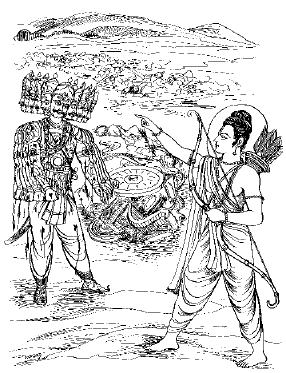
जगत्के इतिहासमें ऐसा दृष्टान्त नहीं मिलता है। अपने शत्रुको कहते हैं—भोजन करो, आराम करो। रावणको आरामकी बहुत जरूरत थी। प्रभुने जब कहा कि भोजन करो, आराम करो तो उसका हृदय पिघल गया, उसकी आँखें गीली हो गयीं। मेरे ऊपर रामका बहुत प्रेम है, मुझे कहते हैं भोजन करो। मैंने रामके साथ वैर किया है। रावणको उस दिन ऐसा लगा कि लोग रामकी जो प्रशंसा करते हैं, वह बहुत ही कम है। मेरे ऊपर उनका कैसा प्रेम है! एक क्षणके लिये तो उसके हृदयमें ऐसा भाव हुआ कि मै दौड़ता-दौड़ता जाऊँ और रामके चरणोंमें साष्टांग प्रणाम करूँ। रामके जैसा महापुरुष मैंने देखा नहीं है, सुना नहीं है।
राम रावणके साथ भी सरल हैं, राम राक्षसोंके साथ भी सरल हैं।
साधु होना बड़ा कठिन है। वेशसे साधु होना कठिन नहीं है, हृदयसे साधु होना बड़ा कठिन है। जिसका हृदय सरल है, वही साधु है। सरल हृदयमें भगवान्का प्रवेश होता है। जिसका हृदय बाँका है, उसके हृदयमें भगवान् नहीं आते। सरल बनो। कपट करनेसे हृदय बाँका होता है, झूठ बोलनेसे हृदय बाँका होता है। राम अति सरल हैं। रामजीकी जैसी सरलता आपको जगत्में कहीं भी नहीं मिलेगी—प्रभु तरु तर कपि डार पर।
जो अति सरल है, उसको सभीमें सद्गुण ही दिखायी देते हैं, किसीमें दोष दिखता ही नहीं। राम सर्वसद्गुण-सम्पन्न हैं। रामजीको किसीमें दोष दिखता ही नहीं है। राम पेड़के नीचे बैठे हैं, वानर पेड़के ऊपर बैठते हैं। नियम ऐसा है कि मालिक ऊपर बैठता है और नौकर नीचे बैठता है। किंतु, ये सब नौकर (वानर) ऊपर बैठते थे। ऊपर भी शान्तिसे बैठें तो हर्ज नहीं है। पर, वे तो खेलते हैं—उछल-कूद करते हैं। रामको ऐसा नहीं लगता कि ये लोग मेरा अपमान कर रहे हैं। राम तो ऐसा मानते हैं कि मेरे ऊपर तो इनका उपकार है—किं तस्य शत्रुहनने कपय: सहाया:। वानर रामजीको क्या मदद कर सकते हैं, राज्याभिषेक हुआ है, तब वसिष्ठऋषिका वन्दन करके प्रभुने कहा है—‘वानरोंने मेरी बहुत मदद की, इसीलिये मैं रावणको मार सका हूँ।’
दु:खमें किसीने थोड़ा भी पानी दिया है तो कभी भूलना नहीं। भगवान् आपको सुख-सम्पत्ति दें तो उपकारका बदला विवेकसे देना चाहिये। किसीका उपकार भूलना नहीं, किसीका अपकार मनमें रखना नहीं—रामचन्द्रजीका ऐसा सरल स्वभाव है।
आप कभी प्रयागराजमें गये होंगे। प्रयागराजमें आज भी कितने ही ऐसे नाविक हैं, जो बोलते हैं कि मैं सीतारामजीका सेवक हूँ। राम मेरे मालिक हैं। श्रीसीतारामजीको नौकामें बैठा करके जो गंगा-पार ले गया था—उस केवटके वंशमें मेरा जन्म हुआ है। मैं राम-दास हूँ।
केवट राम-लक्ष्मण-जानकीको नौकामें बैठा करके गंगा-पार ले गया था। राम नौकासे उतरे हैं, गंगा-किनारे रेतीमें राम खड़े हैं। राम विचार करने लगे कि यह बड़ा गरीब है, इसने मेरी सेवा की है। मैंने इसको एक पैसा भी दिया नहीं।
आज राम तपस्वी हो करके वनमें आये हैं। रामजीके पास एक पैसा नहीं है। इसको मैंने कुछ भी दिया नहीं, इसने मेरी बहुत सेवा की है—रामको बहुत संकोच हुआ है। राम गंगा-किनारे रेतीमें खड़े हैं।
आज प्रभुकी दृष्टि धरतीमें है—गरीबने मेरी सेवा की, मैंने उसको कुछ भी दिया नहीं। केवटने जब सीतारामजीके चरणोंमें साष्टांग वन्दन किया, तब भगवान्की आँख गीली हो गयी। प्रभुको बहुत संकोच हुआ है। श्रीसीतामाँ समझ गयी हैं। माताजीके हाथमें सुन्दर अँगूठी है। सो, माँने उतारकर प्रभुके हाथमें दी है और कहा है—मेरे पास बहुत है, आप चिन्ता करना नहीं। आप ये दे दो। राम देते हैं तो केवट हाथ जोड़ता है—आज मुझे सब कुछ मिल गया, आज मेरे-जैसा श्रीमान् संसारमें कोई नहीं है। राम-चरण मेरे हाथमें आये, मैंने राम-चरणकी सेवा की। मेरे-जैसा भाग्यशाली कौन है। आज मुझे सब कुछ मिल गया। मुझे कुछ लेना नहीं है। महाराज! मेरा ये नियम है कि कोई गरीब आये, कोई साधु आये, महात्मा आये, उसको मैं बिना पैसेके गंगा-पार ले जाता हूँ—मैं मजूरी नहीं लेता।
केवट बहुत गरीब था। गरीब होनेपर भी वह गरीबोंकी सेवा करता था। सुख भोगनेवाला दूसरोंको सुख देता है, वह तो ठीक है; किंतु जो दु:ख सहन करके भी दूसरोंको सुख देता है...। केवट बहुत गरीब है, दुखी है तो भी वह गरीबोंकी सेवा करता है।
श्रीराम उसको समझाते हैं—ये मजूरी नहीं है, ये तो मैं प्रेमसे प्रसाद देता हूँ, प्रसाद तो लेना चाहिये। केवट रोने लगा—मैं प्रसाद नहीं लूँगा। आज मेरी माँ खुले पैर चलती है, आज मेरे राम कन्द-मूल-फल खाते हैं। मैं प्रसाद लूँ, यह नहीं होगा। मुझे तो सब कुछ मिला है। आपको प्रसाद देनेकी इच्छा हो तो राज्याभिषेक होनेके बाद प्रसाद देना। मुझे तो सब कुछ मिल गया—रामजीकी चरण-सेवा मिली। आपको प्रसाद देनेकी बहुत इच्छा हो तो राज्याभिषेक होनेके बाद प्रसाद दो। मेरी ऐसी इच्छा है कि श्रीसीताजीके साथ आप स्वर्ण-सिंहासनमें विराजो। तब आपका विचार हो तो इस गरीबको प्रसाद देना।
रामायणमें वर्णन आता है कि रावणको मारनेके बाद राम-लक्ष्मण-जानकी पुष्पक विमानमें विराजते हैं। अनेक स्वरूप प्रकट किये हैं—एक ही समयमें सभीसे मिले हैं। जिस प्रकार श्रीकृष्ण रासलीलामें एक ही समयमें अनेक गोपियोंसे मिले हैं। अयोध्याकी प्रजा दर्शनके लिये, मिलनके लिये आतुर थी। एक ही समयमें सभीसे मिले हैं। आनन्द दिया है। सभीको आनन्द हुआ। सभीकी इच्छा थी कि जल्दी राज्याभिषेक होना चाहिये।
वैशाख शुक्ल पंचमीके दिन प्रभु पधारे। सभीने बहुत आग्रह किया, तब वैशाख शुक्ल सप्तमीके दिन राम-राज्याभिषेक हुआ। बहुत बड़ा भारी दरबार लगा है। बड़े-बड़े देव और ऋषि आये हैं। बड़े-बड़े राजा लोग आये हैं। रामजीको भेंट देते हैं। जय-जयकार हो रहा है। सिंहासनमें सीताराम विराजमान हैं। आज राम चारों ओर देख रहे हैं।
सीताजीको थोड़ा आश्चर्य हुआ कि मेरे रामका तो स्वभाव है—वे धरतीमें ही दृष्टि रखते हैं, आज चारों बाजू क्यों देख रहे हैं, किसको देख रहे हैं? सीताजीने पूछा—आप चारों ओर क्यों देख रहे हैं? रामचन्द्रजीने कहा—ये सब लोग मेरा दर्शन करनेके लिये आये हैं। किंतु जिसका दर्शन करनेकी मुझे इच्छा है, वह दिखता नहीं है। श्रीसीताजीको आश्चर्य होता है—ऐसा कौन भाग्यशाली जीव है, जिसको देखनेकी प्रभुकी इच्छा होती है। श्रीरामचन्द्रजीने कहा—तुम्हें याद है, नौकामें बैठा करके जो केवट गंगा-पार ले गया था, उसने ऐसा कहा था कि राज्याभिषेकके बाद मुझे प्रसाद देना, मुझे याद आता है।
केवट अतिशय गरीब है। अति गरीब होनेसे वह राज्याभिषेकमें आया नहीं है। राम उसकी सेवाको भूलते नहीं हैं। उसने कहा था कि राज्याभिषेक होनेके बाद आपकी इच्छा हो तो मुझे प्रसाद देना।
रामचन्द्रजीने राज्याभिषेक होनेके बाद शृंगवेरपुरके राजा गुहको बुलाया है। सभीका सम्मान किया है। गुह राजाको कहा—‘तुम्हारे गाँवमें जब मैं आया था, तब जो केवट हमें गंगा-पार ले गया था, उसने कहा था कि राज्याभिषेकके बाद प्रसाद देना, वह दिखता नहीं है। उसको प्रसाद देना है।
कोई थोड़ी भी सेवा करता है, उसे राम बहुत मानते हैं। रामके जैसा अति उदार और सरल मालिक कोई हुआ नहीं है और होगा भी नहीं। उनको अपने सेवकका दोष दिखता ही नहीं है। थोड़ी भी किसीने सेवा की हो तो राम भूलते नहीं हैं। श्रीसीताराम अति सरल हैं। राजा-रानी अति सरल हों तो प्रजा सुखी होती है। राम-राज्यमें प्रजा अति सुखी है। ऐसा सुख तो स्वर्गमें देवोंको भी नहीं है।
ग्रन्थोंमें तो ऐसा वर्णन आता है कि रामराज्यमें रामजीकी प्रजाको काल नहीं मार सकता है। काल आ करके पूछता है—मरनेकी इच्छा है, जिसको मरनेकी इच्छा है, उसीको काल पकड़ता है—मृत्युञ्चानिच्छितां नासीत् रामे राजन्यधोक्षजे—राम-राज्यमें जिसको मरनेकी इच्छा नहीं है, उसको काल भी नहीं मार सकता है। राम कालके भी काल हैं। राम-राज्यमें प्रजा अति सुखी है।
प्रजा तो अति सुखी है, किन्तु श्रीसीतारामजीने अति-अति दु:ख सहन किये हैं। जो अति सरल है, उसको लोग त्रास देते हैं। अति सरलताका लोग दुरुपयोग करते हैं। श्रीसीतारामजी अति सरल हैं। राम-राज्यमें प्रजा तो सुखी है, किंतु श्रीसीतारामने अतिशय दु:ख सहन किया है।
सीता-वनवास
श्रीसीताजी सगर्भा हैं। श्रीसीताजीने कहा था—मुझे वनमें घूमनेकी, रहनेकी इच्छा होती है। प्रात:कालमें एक सेवक आया और रामचन्द्रजीको कहा है—कल रात्रिको मैं अयोध्यामें घूमता था। लोग माताजीकी निन्दा करते हैं, रावणके घरमें रही थीं। सभी लोग शंका बहुत करते हैं। जो जीव जैसा होता है, वैसे ही भावसे जगत्को देखता है। जो अति कामी है, उसको ऐसा लगता है कि जगत्में सभी कामी हैं। जो अति लोभी है, वह सभीको लोभी मानता है। रावणके घरमें रही थीं, आप उनके साथ रहते हो—आपकी भी निन्दा करते हैं।
रामचन्द्रजीने सुना है—मेरी प्रजा मेरे लिये शंका करती है, मेरे मस्तकपर कलंक लगाया है। सीताजीका मैं त्याग करूँ तो ही ये कलंक दूर होगा, दूसरा कोई उपाय नहीं है। प्रजाको प्रसन्न करनेके लिये राजाकी गादी है। राजाकी गादी सुख भोगनेके लिये नहीं है, रानीको प्रसन्न करनेके लिये नहीं है, प्रजाको प्रसन्न करनेके लिये है।
रामचन्द्रजीने निश्चय किया है—सीताजीका मैं त्याग करूँगा। लक्ष्मणजीको बुलाया है। लक्ष्मणजीको आज्ञा हुई है—अयोध्यामें लोग जो मनमें आता है, वैसा बोलते हैं। तुम्हारी भाभीके लिये बहुत खराब बात बोलते हैं। इसीलिये मैंने सीताका त्याग किया है। उसको वनमें रहनेकी इच्छा भी है। उसको रथमें बैठा करके घोर जंगलमें ले जाओ। उसको छोड़ करके वापस आ जाओ।
श्रीलक्ष्मणजीका श्रीसीताजीमें मातृ-भाव था। उन्होंने कहा मेरी माँके लिये कौन ऐसा बोलता है, मैं उसको मारूँगा।
राम लक्ष्मणका हाथ पकड़ करके पासमें बिठाते हैं—लक्ष्मण! तुम किसको मारोगे, अयोध्यामें बहुत-से लोग ऐसी शंका करते हैं। मैंने राजधर्मका विचार करके ऐसा किया है। लक्ष्मण! घोर जंगलमें उसका त्याग करके वापस अयोध्यामें तुम आ जाना।
लक्ष्मणजीने हाथ जोड़ करके कहा है—मुझे ऐसी आज्ञा दो कि माताजीके साथ मैं भी वनमें ही रहूँ। मैं माताजीकी सेवा करूँगा। उनको छोड़ करके मैं कैसे आ जाऊँ? मुझसे ये नहीं होगा। वे मेरी माँ हैं, घोर जंगलमें छोड़ करके मैं नहीं आ सकता। मैं भी वहीं रहूँगा। मैं श्रीसीतामाँकी सेवा करूँगा, अयोध्यामें नहीं आऊँगा।
रामचन्द्रजीकी आज्ञा हुई है—लक्ष्मण! तुम्हें वहाँ रहना नहीं है। तू जल्दी ही अयोध्यामें आ जाना, ज्यादा बोलना नहीं। मैंने जो भी किया है, सो विचारपूर्वक किया है।
ज्ञानी होना बड़ा कठिन नहीं है, योगी बनना कठिन नहीं है—सेवक होना बड़ा कठिन है। सेवक वही हो सकता है, जो अपने मनको मारता है। सेवकका मन नहीं होता है। मालिकका मन ही मेरा मन है, मालिककी इच्छा ही मेरी इच्छा है। सेवा और स्वार्थ—दोनों विरोधी शब्द हैं। जिसके मनमें थोड़ा भी कोई स्वार्थ है, वह सेवा क्या करेगा? देश-सेवा, देव-सेवा करना बड़ा कठिन है। सेवक वह हो सकता है, जो अपने मनको मारता है।
लक्ष्मणजीको ये काम करनेकी इच्छा नहीं थी। लक्ष्मणजीने तो ऐसा कहा है कि ये मुझसे नहीं हो सकता है। आप ये काम दूसरे किसीको कहना। तब रामजीने कहा है—लक्ष्मण! ये तुम्हें ही करना पड़ेगा। ये काम दूसरा कोई व्यक्ति नहीं कर सकता। लक्ष्मण! मेरी आज्ञा है, अब ज्यादा बोलना नहीं। वनमें जानेके बाद बोलना।
रामचन्द्रजीने सीताजीको कुछ कहा नहीं। लक्ष्मणजी श्रीसीताजीको रथमें बैठा करके घोर जंगलमें ले गये हैं। रामायणमें वर्णन आता है—उस समय मार्गमें बहुत अपशकुन होते हैं। घोर जंगलमें रथ आया है। श्रीसीतामाँ रथसे नीचे उतरती हैं। लक्ष्मणजी महान् वीर हैं, बालकके जैसे रोने लगे हैं। सीताजी जानती नहीं हैं। श्रीसीताजीने पूछा है—लक्ष्मण! क्या हुआ है? क्यों रोते हो?
लक्ष्मणजी श्रीसीतामाँको साष्टांग वन्दन करते हैं—माँ! मैं आपका दास हूँ। मैं सेवक हूँ, मालिककी आज्ञाका पालन करना ही मेरा धर्म है। माँ! ये काम करनेकी मेरी इच्छा नहीं थी। मैं क्या करूँ, मैं मजबूर हूँ।
श्रीसीताजीने पूछा—लक्ष्मण! क्या हुआ है तुम्हें? इतना दु:ख क्यों होता है?
माँ! मुझे कहनेमें बहुत दु:ख होता है, अयोध्यामें लोग जो मनमें आता है, सो कहते हैं। आपके लिये खराब बोलते हैं। इसलिये प्रभुने आपका त्याग किया है।
श्रीसीताजीने जब सुना है तो बहुत व्याकुल हुई हैं, मैं कहाँ जाऊँ फिर, सीताजीने धैर्य धारण करके लक्ष्मणजीसे कहा—लक्ष्मण! मेरे प्रभु जो कुछ करते हैं, वह योग्य ही है। मेरे ऊपर उनका बहुत प्रेम है, इसीलिये मेरा त्याग किया है। मेरे राम कभी बुरा नहीं कर सकते। सब भूल मेरी है। मेरे राम निर्दोष हैं। मेरे ऊपर उनका बहुत प्रेम है। इसीलिये मेरा त्याग किया है। लक्ष्मण! प्रभुने मेरा त्याग किया है, इसमें दुखी होनेकी जरूरत नहीं है। मैं दु:ख सहन करूँगी। किंतु, मुझे ऐसा लगता है कि मेरे वियोगमें मेरे राम बहुत दुखी होंगे, उनको बहुत दु:ख होगा। मेरी चिन्ता करना नहीं। उनके साथमें रहो, एक क्षणके लिये भी उनको छोड़ना नहीं। लक्ष्मण! मैंने आजतक किसीको कहा नहीं है, आज तुम्हें मैं कहती हूँ—रात्रिमें चरणोंकी सेवा मैं जबतक करती नहीं, तबतक प्रभुको नींद नहीं आती। अब मेरे वियोगमें रामको नींद नहीं आयेगी, वे अति दुखी होंगे। लक्ष्मण! मेरी चिन्ता करना नहीं, उनको सँभालना। राम-वियोग-जैसा कोई दु:ख नहीं है। मैं दु:ख सहन करूँगी। लक्ष्मण! जानते हो, मैं सगर्भा हूँ। सूर्यवंशका पवित्र बीज मेरे पेटमें है। मैं आत्महत्या नहीं करूँगी। मैं दु:ख सहन करूँगी। मैं बालकको बड़ा करूँगी।
लक्ष्मणजी महाराज महान् बुद्धिमान् हैं। वाल्मीकिऋषिके आश्रमके पास सीताजीको छोड़ा है। श्रीसीताजीको वन्दन करके कहा है—माँ! धैर्य रखो। आपका यह दास आपकी सेवामें यहाँ आयेगा। मुझे यहाँसे जानेकी इच्छा नहीं है, पर क्या करूँ? प्रभुकी आज्ञा हुई है, मुझे अयोध्यामें जाना है। माँ! आपके पिता जनक महाराजके मित्र वाल्मीकिऋषि हैं। वाल्मीकिऋषि जनकजीके यहाँ सत्संग करनेके लिये जाते थे। आपके पिताके वे मित्र हैं। माँ! यहीं रहना। पासमें ही वाल्मीकि-ऋषिका आश्रम है।
लक्ष्मणजीको आज्ञा थी। वन्दन करके लक्ष्मणजी अयोध्यामें आये हैं।
श्रीसीतामाँ व्याकुल हो करके रोने लगी हैं। श्रीसीतामाँका स्वरूप ऐसा दिव्य था कि पशु-पक्षियोंका हृदय भी पिघल जाय। बाघ, सिंह, बन्दर, रीछ—जंगलके सब पशु-पक्षी श्रीसीतामाँको घेर करके बैठे हैं। श्रीसीतामाँ रोती हैं, तब सब पशुओंको दु:ख होने लगा है। सभी पशु-पक्षियोंकी आँखोंसे आँसू बहने लगे। श्रीसीतामाँ रोती हैं।
वाल्मीकिऋषिने सुना है—आज जंगलके पशु-पक्षी क्यों रो रहे हैं? शिष्योंको आज्ञा दी है बाहर जा करके देखो, क्या बात है? शिष्य बाहर गये हैं, देखते हैं श्रीसीताजी मध्यमें बैठी हैं। वहाँ सिंह, बाघ-जैसे हिंसक पशु उन्हें घेर करके बैठे हैं। शिष्योंने देखा श्रीसीतामाँ रोती हैं, सब पशु भी रोते हैं। सभी सोचते हैं, सीतामाँ जंगलमें हिंसक पशुओंके बीच बैठी हैं, हम क्या सेवा करें? शिष्योंने देखा है। फिर वाल्मीकिऋषिके पास आये हैं और कहा है—गुरुजी! कोई लक्ष्मी-जैसी स्त्री दिखती है। लक्ष्मीके जैसी ऐसा कहना भी उचित नहीं है। ऐसी स्त्री तो आजतक हुई ही नहीं, होनेवाली भी नहीं है। मुझे तो लगता है, ऐसी स्त्री ब्रह्माजी भी बना नहीं सकते। वह अपनी इच्छासे प्रकट हुई है।
श्रीसीताजी जगत्-माता हैं। श्रीसीताजी आदिशक्ति हैं। श्रीसीतामाँका जन्म नहीं होता है। रामकी माँ तो कौसल्या हो सकती हैं। श्रीसीताजीकी कोई माँ नहीं है, श्रीसीताजीका कोई पिता नहीं है। जो जगत्की माँ है, उसकी माँ कौन हो सकती है? ऐसा लगता है कि वे अपनी इच्छासे अनेक जीवोंका कल्याण करनेके लिये आयी हैं, स्व-इच्छासे प्रकट हुई हैं। ऐसी स्त्री ब्रह्माजी भी नहीं बना सकते।
वाल्मीकिऋषिको आश्चर्य होता है, ऐसी कौन-सी स्त्री है, जिसको ब्रह्माजी भी नहीं बना सकते। वाल्मीकिऋषि दौड़ते हुए गये हैं। देखते हैं, श्रीसीताजीको पहचानते हैं, ये तो जनककी कन्या है। पहचान लिया है। सीताजीको समझाया है, तू मेरी कन्या है। मैं सब जानता हूँ। मैं तेरे पिताका मित्र हूँ। सीताजीको अनेक रीतिसे समझा करके वाल्मीकिऋषि आश्रममें ले आये हैं। वाल्मीकिऋषिके आश्रममें आनेके बाद लव-कुशका जन्म हुआ है।
चक्रवर्ती सार्वभौम राजा श्रीराम हैं। उनके दो बालकोंका जन्म एक ऋषिके आश्रममें हुआ है। श्रीसीताजी वाल्मीकिऋषिके आश्रममें विराजमान हैं। सीतामाताका दर्शन करते हुए वाल्मीकिजी रामायणकी रचना करते हैं, लव-कुशको पढ़ाते हैं। लवकुश रामायणकी कथा बहुत सुन्दर करते हैं।
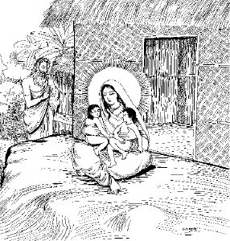
समाज तो दो ओरसे बोलता है। प्रभुने सीताजीका त्याग किया। अयोध्यामें बहुत-से लोगोंको अच्छा लगा। सब मजा करते हैं, सुख भोगते हैं। अकेले राम अयोध्याके राजमहलमें हैं। सीताजी वाल्मीकिके आश्रममें हैं। सब मजा कर रहे हैं। किसीने आकर रामजीको ऐसा कहा नहीं है कि मेरी माँ कहाँ है? श्रीसीतामाँ न आये, तबतक मैं पानी भी नहीं पीऊँगा, मैं अन्न-जलका त्याग करके प्राण छोड़ूँगा। जिसके राज्यमें ऐसा इतना सुख मिला था, उससे किसीने आकर ऐसा कहा नहीं है। जीव दुष्ट है, जीव स्वार्थी है। राम-राज्यमें सभी मजा कर रहे हैं—
एकपत्नीव्रतधरो राजर्षिचरित: शुचि:।
स्वधर्मं ग्रहमेधीयं शिक्षयन् स्वयमाचरत्॥
(श्रीमद्भा० ९।१०। ५५)
एक ब्राह्मणका हृदय बहुत व्याकुल है। आज दरबारमें वसिष्ठऋषिको आनेमें बहुत विलम्ब हुआ है। अति विलम्बसे वसिष्ठऋषि आये हैं। सभी खड़े हुए हैं। रामचन्द्रजीने गुरुदेवको आसन दिया है, पूजा की है। वसिष्ठऋषि महान् ज्ञानी हैं, महान् तपस्वी हैं। श्रीसीताजीके एक-एक सद्गुण उन्हें याद आते हैं। श्रीसीताजीका विवेक, श्रीसीताजीकी उदारता, श्रीसीताजीकी सरलता, श्रीसीताजीका पातिव्रत्य एक-एक सद्गुणोंको याद करके ब्रह्मनिष्ठ महान् ऋषि वसिष्ठ रोने लगे हैं। श्रीसीतामाँके एक-एक सद्गुण याद आते हैं। वसिष्ठऋषिकी आँखमें आँसू हैं।
श्रीराम वन्दन करके पूछते हैं, मेरे गुरुदेवको क्या दु:ख है? आँखमें आँसू क्यों हैं? मेरे गुरुदेवकी आँखोंमें आँसू आये, यह मुझसे सहन नहीं होता है। शरीर तो आपका अच्छा है, घरमें तो सब कुशल-मंगल है, राम पूछते हैं—मुझे बतायें, मैं आपकी क्या सेवा करूँ? आपकी आँखमें आँसू आये, मुझसे यह सहन नहीं होता है। आपको क्या दु:ख है?
वसिष्ठऋषिने कहा—मेरा शरीर अच्छा है। मुझे सीताजी बहुत याद आती हैं। आपने सीताजीका त्याग किया, यह बहुत अनुचित किया है।
श्रीरामने गुरुदेवके चरण पकड़े हैं। राम गुरुदेवके चरणोंमें वन्दन करते हैं। रामचन्द्रजीने कहा है—गुरुदेवका आशीर्वाद है। परिणाममें सब कुछ मंगल होनेवाला है, मेरा ऐसा विश्वास है। आप इस विषयमें मुझे कुछ कहें नहीं।
प्रजाको प्रसन्न करना राजाका धर्म है। रामचन्द्रजीने स्त्री-धर्मको गौण किया और राजधर्मको महत्त्व दिया है। लोगोंने मुझे प्रजाको सुखी करनेके लिये राजा बनाया है। प्रजाको सुखी करनेके लिये राजा अपनी निर्दोष रानीका भी त्याग करे और प्रजाको सुखी करे। रामचन्द्रजीने जगत्को दिव्य आदर्श दिया है।
रामचन्द्रजीको यज्ञ करना है, पत्नीके बिना यज्ञ नहीं होता है। अकेली स्त्री यज्ञ नहीं कर सकती, अकेला पुरुष यज्ञ नहीं कर सकता। पति-पत्नी साथमें बैठते हैं, तभी यज्ञ होता है। यज्ञमें देवोंकी पूजा होती है। देवोंको मानो तो देव आपको मानेंगे। देव पवन देते हैं, देव प्रकाश देते हैं, देव अन्न देते हैं, जल देते हैं। देवोंको मानना चाहिये। देवोंको जो मानता है, वह देवोंकी पूजा किये बिना रह ही नहीं सकता। देवोंकी पूजा करो। राम देवोंकी पूजा करते हैं।
श्रीरामका जगत्की प्रत्येक स्त्रीमें मातृभाव
वसिष्ठजीने कहा—यज्ञ करना है, सीताजीको ले आओ। श्रीरामने कहा—यह नहीं होगा। तब एक ब्राह्मणने कहा राजा तो अनेक लग्न कर सकते हैं, किसी राजकन्याके साथ दूसरा लग्न करो। भगवान्ने दृष्टि नीचे की है और हाथ जोड़ करके बोले हैं—जगत्की प्रत्येक स्त्री मेरी माँ है। प्रत्येक स्त्रीमें मैं मातृभाव रखता हूँ। कभी ऐसा बोलना नहीं। रामचन्द्रजीका एकपत्नी-व्रत है। दशरथ महाराज अनेक रानियोंके साथ लग्न करते हैं। राम कभी ऐसा नहीं बोले कि मेरे पिताजीने अनेक रानियोंके साथ लग्न किया, इसीलिये अनर्थ हुआ। पिताजीकी भूल रामजी युक्तिसे सुधारते हैं।
एक पुरुष एक ही स्त्रीके साथ लग्न करे। जगत्की प्रत्येक स्त्रीमें मातृ-भाव रखो—ये सनातन धर्मकी मर्यादा है। मन बिगड़ा हुआ है। बिगड़े हुए मनको पवित्र रखनेके लिये लग्न है। मनको एक ही ठिकाने स्थिर करनेके लिये लग्न है। जिसका मन एक ही स्त्रीमें है, एक ही पुरुषमें जिस स्त्रीका मन है, वह गृहस्थ होनेपर भी साधु है। कोई सुन्दर वस्तु देखनेमें आती है तो मन चंचल हो जाता है। मानवका मन भँवरेके जैसा होता है। भॅँवरा एक फूलको छोड़ करके दूसरे फूलपर चला जाता है। चंचल मनको, पापी मनको पवित्र करनेके लिये लग्न है। लग्न मनको एक ठिकाने स्थिर करनेके लिये है। दशरथ महाराज भले ही अनेक लग्न करें, रामजीने पिताजीकी भूल सुधारी है। वेदोंमें वर्णन है—यान्यस्माकॸ सुचरितानि। तानि त्वयोपास्यानि। नो इतराणि।
चार वेद, छ: शास्त्रोंका अध्ययन परिपूर्ण करके विद्यार्थी जब अपने घर जाता है, तब गुरुदेवको वन्दन करके कहता है—आप मुझे अन्तिम उपदेश दें। मैं घरमें जाऊँगा, पैसा कमाऊँगा, मैं लग्न करूँगा। विद्या परिपूर्ण हो गयी है। मुझको अन्तमें कुछ उपदेश करें। वेदमनूच्याचार्योऽन्तेवासिनमनुशास्ति—तुम्हारा अध्ययन परिपूर्ण हुआ है; एष आदेश:, एष उपदेश:—ये अन्तिम उपदेश है बेटा! अब तू लग्न करनेवाला है। लग्न करना, पर याद रखना कि तुम्हारी माँ भगवान् हैं—मातृदेवो भव, पितृदेवो भव, आचार्यदेवो भव। तुम्हारे पिता परमात्मा हैं, तुम्हारी माँ परमात्मा हैं। माँका नम्बर पहला है, पिताका नम्बर दूसरा है और गुरुदेवका नम्बर तीसरा है—आचार्यदेवो भव! यह अन्तिम उपदेश है। बारह वर्षतक मेरे आश्रममें तुम रहे हो। बेटा! जीवमात्र भूल करता है। मैंने भी कई भूलें की होंगी। मेरी भूल तुमने देखी होंगी। बारह वर्ष तुम मेरे घरमें रहे हो। बेटा! मैंने कोई भूल की हो, वैसी भूल तुम कभी करना नहीं। मेरे पवित्र आचरणका ही अनुकरण करना। संसारमें निर्दोष तो श्रीसीताराम हैं। जीवमात्र कुछ भूल करता है। मेरे गुरुजी ऐसा करते थे, इसीलिये मैं भी करूँगा—ऐसा विचार नहीं करना।
गुरुजी तम्बाकू खाते थे, सो चेलाजीने विचार किया कि मैं भी तम्बाकू खाऊँगा। गुरुजी भले खायें, शिष्य कभी न खाये। तम्बाकूमें कलिका निवास है। तम्बाकू खानेसे तन बिगड़ता है, मन बिगड़ता है। तम्बाकूमें कलिका निवास माना है। गुरुदेव भले ही तम्बाकू खायें, शिष्य कभी न खाये। मेरे पवित्र आचरणका ही तुम अनुकरण करना। मैंने कोई व्यसन किया हो, कोई पाप किया हो, वैसा पाप तुम कभी मत करना। मेरे पवित्र आचरणका ही अनुकरण करना। दशरथ महाराज भले ही अनेक लग्न करते हैं। रामजीने पिताजीकी भूल सुधारी है। रामराज्यमें नियम हुआ है, एक पुरुष एक ही स्त्रीके साथ लग्न करे, जगत्की सभी स्त्रियोंमें मातृभाव रखो।
वसिष्ठने कहा—सीताजीको आप बुलाते नहीं हैं, दूसरा लग्न करते नहीं हैं तो आपको यज्ञ करनेका अधिकार ही नहीं है। पत्नीके बिना यज्ञ नहीं होता है।
श्रीरामचन्द्रजीने युक्ति की है, कारीगरको बुलाया है। कारीगरको आज्ञा हुई है कि श्रीसीताजीकी स्वर्ण-मूर्ति बनानी है। कारीगरने सीतामाँका अनेक बार दर्शन किया था। उसने बहुत प्रेमसे श्रीसीताजीकी बड़ी सुन्दर मूर्ति बनायी है।
लव-कुशद्वारा श्रीराम-कथाका गायन
श्रीरामचन्द्रजी यज्ञ करते हैं। यज्ञमें बड़े-बड़े सन्त-महात्मा, ऋषि, साधु और ब्राह्मण पधारे हैं। सभीके लिये यथायोग्य आवास दिये गये हैं। वाल्मीकिऋषि भी लवकुशको साथमें ले करके यज्ञमें आये हैं। सन्त-निवासमें प्रतिदिन सत्संग और कथा-कीर्तन होता है। लव-कुशकी कथामें बड़े-बड़े ज्ञानी पुरुषोंको आनन्द होता है। लव-कुश अपने मधुर कण्ठसे राम-कथाका गायन करते हैं।
सन्त विचार करते हैं—इन बालकोंको हम क्या दें, कैसा सुन्दर बोलते हैं! कोई सन्त आ करके लव-कुशको लँगोटी देता है, कोई कमण्डलु देता है, कोई दर्भका आसन देता है। सन्त-निवासमें जहाँ कथा होती है, वहाँ कितने ही नागा साधु भी कथामें आये हैं, जिन्होंने लँगोटीका भी त्याग किया है।
वासना ही वस्त्र है। नग्नका अर्थ है वासनारहित होना। वासनाका जिन्होंने पूर्ण विनाश किया है, ऐसे नग्न साधु भी कथामें बैठते थे। लव-कुशकी कथामें आनन्द होता है। नागा साधु विचार करते हैं, हम इन बालकोंको क्या दें? ऐसे विरक्त साधु लव-कुशको अपना आयुष्य देते हैं, आशीर्वाद देते हैं।
श्रीरामजीने सुना है कि सन्त-निवासमें रात्रिके समयमें कथा होती है। लव-कुशको दरबारमें बुलाया है, मुझे कथा सुननी है।
कथाका मुख्य स्थान श्रीअयोध्याजी है। सत्ययुगमें सभी ध्यान-धारणा करते थे, ज्यादा कथा नहीं होती थी। कथाका आरम्भ अयोध्याजीमें हुआ है। श्रीरामचन्द्रजीके बालक लव-कुश रामजीके सम्मुख कथा करते हैं।
रामायण श्रीसीताजीका महान् चरित है
लव-कुश जब कथा करते हैं, तब कथाके आरम्भमें बोलते हैं—एक महान् पतिव्रता स्त्रीकी हम कथा कहते हैं। रामायणमें रामकी कथा नहीं है, रामायणमें तो श्रीसीतामाँका चरित्र है—कृत्स्नं रामायणं काव्यं,सीतायाश्चरितं महत्। रामायणसे श्रीसीताजीका चरित्र निकाल दो तो रामायणमें विशेष राम ही नहीं हैं। श्रीसीताजीसे रामकी शोभा है। रामायणमें श्रीसीताजीका चरित्र है।
श्रीरामचन्द्रजीको जब सीताजीका वियोग हुआ है, तब श्रीसीताजीके वियोगमें श्रीसीताजीके एक-एक सद्गुणकी कथा श्रीरामजी सुनते हैं। रामकी आँखोंमें आँसू हैं। श्रीसीताजीका जब वियोग हुआ है, तब कथा सुनते हैं। अयोध्याकी प्रजा कथा सुनती है। कथामें बहुत आनन्द आता है।
अयोध्यामें जो वृद्ध-वृद्ध लोग थे, वे लव-कुशको ताकते हैं। कैसे बालक हैं? कौन हैं? लोगोंको थोड़ी शंका होती है, बाल्यावस्थामें राम ऐसे ही दिखते थे। ये रामके बालक हैं, कैसे सुन्दर हैं! कैसा बोलते हैं! राम छोटे थे, तब राम ऐसे ही दिखते थे!
रामचन्द्रजीने कथा सुनी है। लक्ष्मणजीके साथ बातें करते हैं—लक्ष्मण! कथामें बहुत आनन्द आया है। बालकोंको देखनेसे तृप्ति नहीं होती है। मेरा हृदय पिघलता है। लक्ष्मण! कभी-कभी ऐसा प्रेम उमड़ता है कि बालकोंको मैं छातीके साथ लगा लूँ। लक्ष्मण! इनका सम्मान करना है। मैंने उनकी कथा सुनी है।
सुन्दर वस्त्र-आभूषण मँगाये हैं। आज सभामें लव-कुशका सम्मान होनेवाला है। लव-कुशने कहा है हमारे गुरुदेवकी ऐसी आज्ञा है कि कथा करो, तब कोई कुछ दे सो लेना नहीं। हम लेते नहीं हैं। हम वनमें रह करके तपश्चर्या करते हैं। हम तो अन्न भी नहीं खाते, हम फलाहारी हैं।
पाँच वर्षके बालक बोलते हैं—हम फलाहारी हैं, हम अन्न नहीं खाते, हम वनमें तपश्चर्या करते हैं। ऐसे वस्त्र-आभूषण तो विलासी राजा लोग पहनते हैं। हम तपस्वी हैं।
रामचन्द्रजीने सुना है, कैसा बोलते हैं! ये अन्न भी नहीं लेते हैं! लक्ष्मण! इनका परिचय जाननेकी बहुत इच्छा होती है। इनके माता-पिता कौन हैं? लक्ष्मण! बहुत विवेकसे उनसे पूछना।
लक्ष्मणजीने हाथ जोड़े हैं और लव-कुशको कहा है—आपकी कथामें सभीको आनन्द हुआ है। राजा राम बड़े प्रसन्न हुए हैं। सभीको आपका परिचय जाननेकी इच्छा है, आप कौन हैं?
लव-कुशने कहा है—हम वाल्मीकिऋषिके शिष्य हैं। लक्ष्मणजीने कहा—वाल्मीकिऋषिके शिष्य हो ये तो सब लोग जानते हैं। सभीको जाननेकी बहुत इच्छा है कि आपके माता-पिता कौन हैं?
सभामें पूछा है, तब लव-कुशने उत्तर दिया है—सनातनधर्मकी यह मर्यादा है कि जो घर छोड़ करके वनमें तपश्चर्या करता है, उसको घरका स्मरण जो कराये, उसको पाप लगता है। जिसने घरका त्याग किया है, उसको कभी घरका स्मरण कराना नहीं। साधुको, संन्यासीको, ब्रह्मचारीको गुरुदेवका परिचय पूछो, घरका परिचय पूछना नहीं। राम धर्म-तत्त्वको जानते हैं। जानते हुए भी ऐसा प्रश्न क्यों पूछते हैं? हम घर छोड़ करके वनमें तपश्चर्या करते हैं। हमारे माता-पिता कोई भी हों, रामको जाननेकी क्या जरूरत है? हम वाल्मीकिऋषिके शिष्य हैं।
रामचन्द्रजीने सुना है। राम नीचे देखते हैं। सत्य है, जो घरको छोड़ करके, वनमें रह करके तपश्चर्या करता है, उसको घरका स्मरण कराना पाप है।
राम-राज्याभिषेकतक लव-कुशने रामायणकी कथा सुनायी है। रामचन्द्रजीको कथामें बहुत आनन्द आता है। रामचन्द्रजीने कहा है—राज्याभिषेकके बाद जो राम-चरित्र हुआ है, वह रामायण सुननेकी बहुत इच्छा है। आगेकी कथा कहो।
लव-कुशने कहा है—हमारे गुरुदेवकी आज्ञा नहीं है। गुरुदेवकी आज्ञा है कि राम-कथा राज्याभिषेकतक ही होनी चाहिये। राज्याभिषेक होनेके बाद श्रीराम अति निष्ठुर हो गये हैं। अति निष्ठुरकी कथा हम नहीं करते हैं।
श्रीरामजी मनमें विचार करते हैं, सच है मैं निष्ठुर हूँ।
लव-कुश वाल्मीकिजीके साथ आश्रममें आये। लव-कुश जानते नहीं हैं कि राम कौन हैं? ऋषिके साथ आश्रममें आये हैं। श्रीसीतामाँको वन्दन किया है। दोनों बालकोंको माँने छातीके साथ लगाया है, प्यार किया है।
माँ! माँ!! हम गुरुजीके साथ यज्ञमें गये थे। एक बड़ा राजा है। माँ! उसका नाम राजा राम है। वह राजा राम बड़ा यज्ञ करते हैं।
श्रीसीताजीने सुना है। श्रीसीतामाताके मनमें थोड़ी शंका हुई कि पत्नीके बिना यज्ञ नहीं होता है। मैं तो यहाँ हूँ, यज्ञ कैसे करते हैं? श्रीसीताजीको शंका होती है, मेरा त्याग करनेके बाद प्रभुने किसी राजकन्याके साथ दूसरा लग्न किया है। कोई पत्नी उनके साथमें है। पत्नीके बिना यज्ञ नहीं होता है। प्रभुने दूसरा लग्न किया है, ऐसी मनमें शंका हुई। माँ रोने लगी, मेरा त्याग किया है, प्रभुने दूसरा लग्न किया है।
सीतामाँ रोती है, तब लव-कुश रोने लगे; माँ! तुम्हें क्या होता है? माँ! तुम क्यों रोती हो? माँ! तुम्हारी आँखमें आँसू आते हैं तो हमको बहुत दु:ख होता है। दोनों बालक रोते हैं, सीतामाँ रोती है। आश्रममें जो पशु-पक्षी थे, सभीका श्रीसीताजीमें दिव्य प्रेम था। श्रीसीतामाँ रोने लगीं, तब पशु-पक्षी भी रोने लगे हैं। वाल्मीकिऋषि बड़े ज्ञानी, बड़े तपस्वी हैं। आज ऋषि भी रोने लगे। सभी रोते हैं।
वाल्मीकिऋषिने धैर्य धारण किया और लव-कुशको समझाया। तुमने देखा है—राजा राम श्रीसीताजीकी स्वर्णमूर्ति साथमें रखते हैं, क्यों बोलते नहीं? ऐसा बोलो कि सीताजीकी स्वर्णमूर्ति बनायी है, उस मूर्तिको साथमें ले करके पूजा की है, तुमने देखा है। तब लव-कुशने कहा है—माँ! माँ!! राजा राम जो हैं, वे जब यज्ञ करनेके लिये बैठते हैं, तब एक सोनेकी मूर्ति साथमें रखते हैं। माँ! वह मूर्ति बराबर तेरे-जैसी ही लगती है। मुझे तो कुछ ऐसा लगा कि मेरी माँ राजा रामके साथ बैठी है। बालकोंने जब कहा है, श्रीसीताजी विचार करती हैं, मुझे किसीने कहा था, मैं भूल गयी। मुझे कहा था कि मेरी सोनेकी मूर्ति बनायी है। मेरे सभी शृंगार, मेरे अलंकार प्रभु अपने हाथोंसे उस स्वर्णमूर्तिको पहनाते हैं, स्वर्णमूर्ति-सीताको शृंगारते हैं। जब यज्ञ करनेके लिये बैठते हैं, तब स्वर्णमूर्तिको साथमें रखते हैं। प्रभुने मेरा त्याग नहीं किया है, राजाने रानीका त्याग किया है।
रामचन्द्रजीने श्रीसीताजीका त्याग कभी किया नहीं। श्रीसीताराम तो साथमें ही रहते हैं। श्रीसीतारामका कभी वियोग नहीं होता। ये तो प्रजाको समझानेके लिये राजाने रानीका त्याग किया है। रामजीने सीताजीका त्याग नहीं किया है, उनका तो नित्य संयोग है, वे कभी अलग नहीं हो सकते। श्रीसीताराम अति सरल हैं, इसीलिये रामराज्यमें प्रजाको अति सुख मिला है।
रामजीके सद्गुणोंकी कथा कौन वर्णन कर सकता है? सभी सद्गुण श्रीसीतारामजीमें परिपूर्ण हैं। श्रीसीतारामजीमें कोई दोष नहीं है। श्रीरामजीकी उत्तम सेवा तो यह है कि रामजीका एक-एक सद्गुण अपने जीवनमें उतारो। रामकी जैसी माता-पिताकी भक्ति करो। रामके जैसा बन्धु-प्रेम रखो। रामके जैसा एकपत्नीव्रतका पालन करो। रामजीका धैर्य, रामजीका औदार्य, रामजीका विनय, रामजीका विवेक, रामजीकी उदारता कौन वर्णन कर सकता है? रामजीके एक-एक सद्गुण जीवनमें उतारो, यही राम-सेवा है।
श्रीराम-लीला और श्रीकृष्ण-लीला
राम, लक्ष्मण, भरत, शत्रुघ्न—चारों भाई बड़े होते हैं। रामजीकी बाल-लीलामें मर्यादा है। श्रीकृष्णकी बाल-लीलामें प्रेम भरा हुआ है। राम-लक्ष्मणका दर्शन करते ही हृदय पिघलता है। अयोध्याकी प्रजा भाग्यशाली है। सभी रामको मनाते हैं, मेरे घरमें आओ, मेरी बहुत इच्छा है। राम माता-पिताकी आज्ञामें हैं। श्रीराम बोलते हैं—मैं स्वतन्त्र नहीं हूँ। मैं माता-पिताकी आज्ञामें हूँ। मेरी माँको कहना—मेरी माँ मुझे आज्ञा दे तो मैं आपके घरमें आऊँगा। कौसल्यामाँको सब वन्दन करते हैं, कौसल्यामाँको मनाते हैं, आप आज्ञा दें तो राम आयेंगे। कौसल्यामाँ आज्ञा दें तो राम उनके घरमें जायँ।
बालकृष्णलाल किसीको ऐसा नहीं कहते थे कि यशोदामाँको कहना—यशोदामाँ मुझे आज्ञा दें, तब मैं आपके घरमें आऊँगा। बालकृष्णलाल विचार करते हैं—मुझे कौन आज्ञा दे, मैं मालिक हूँ, मालिकको कौन आज्ञा दे सकता है? श्रीकृष्ण सभीके घरमें नहीं जाते हैं। जिस घरके वे मालिक हैं, उसी घरमें जाते हैं।
आपके घरमें भगवान् विराजें, ऐसी इच्छा हो तो घरमें सेवक बन करके रहो। कभी मालिक बनना नहीं। मालिक भगवान् हैं। घरमें जो कुछ है, वह भगवान्का है, भगवान्ने कृपा करके मुझे दिया है। घरमें अपनेको जो सेवक समझ करके भक्ति करता है, उस घरमें प्रभु आते हैं। सभीके घरमें भगवान् नहीं जाते। जिस घरके वे मालिक हैं, उसी घरमें जाते हैं। मालिकको कौन आज्ञा दे सकता है?
श्रीकृष्णकी लीलामें प्रेम भरा हुआ है। रामचन्द्रजीकी लीलामें मर्यादा है। मर्यादा-पुरुषोत्तम प्रथम आते हैं। भागवतमें राम-कथा इसीलिये वर्णन की है। भागवतकी कथा करनेवाला वक्ता और कथा सुननेवाला श्रोता दोनोंका जीवन रामके जैसा ही होना चाहिये। राम-चरित्र अनुकरणीय है। श्रीकृष्णका सभी चरित्र अनुकरणीय नहीं है। कितनी ही लीलाएँ अनुकरणीय हैं, कितनी ही लीलाएँ चिन्तनीय हैं। श्रीकृष्ण-लीलाका चिन्तन करो। राम-चरित्रका अनुकरण करो।
राम, लक्ष्मण, भरत, शत्रुघ्न चारों भाई वसिष्ठ-ऋषिके यहाँ पढ़नेके लिये जाते हैं। रामजीको क्या पढ़ना था? वेद रामजीकी श्वाससे उत्पन्न हुए हैं—यस्य नि:श्वसितं वेदा:। राम वेदाध्ययन करनेके लिये बैठे हैं—‘अलप काल बिद्या सब आई’ थोड़े दिवसोंमें विद्या परिपूर्ण हुई है।
विद्या उसको कहते हैं, जो वासनाका विनाश करती है। वासनाको जो बढ़ाती है, वह विद्या नहीं है, अविद्या है। विद्या वह है, जो विवेक देती है, जो वैराग्य देती है। विद्या वह है, जो जन्म-मरणके त्राससे छुड़ाती है। विद्या उसको कहते हैं, जो परमात्माके चरणोंमें ले जाती है। योगवासिष्ठमें वर्णन आता है—रामचन्द्रजीको वैराग्य हुआ है। योगवासिष्ठका वैराग्य-प्रकरण अति दिव्य है। वैराग्यसे ही ज्ञान और भक्तिमें दृढ़ता आती है। राजमहलमें सभी प्रकारका सुख है। राम विचार करते हैं कि यह सुख क्षणिक है, यह सुख परिणाममें दु:ख देनेवाला है। ऐसा क्षणिक सुख मैंने बहुत भोगा है। शान्ति कहाँ मिली? रामचन्द्रजीको राजमहलमें वैराग्य हुआ है।
गीताजीका जो प्रथम अध्याय है, उसका नाम है अर्जुन-विषाद-योग। अर्जुनको वैराग्य नहीं है, अर्जुनको विषाद है। युद्धभूमिमें अर्जुनका हृदय पिघलता है, ममता होती है, कौरव मेरे भाई हैं, इनको मारनेसे मुझे क्या लाभ है? युद्ध करनेके लिये अर्जुन तैयार हुए हैं, कौरवोंको देख करके ममता हुई है। अर्जुनको वैराग्य नहीं है, अर्जुनको विषाद है। मैं अपने भाइयोंके साथ युद्ध करनेके लिये तैयार हुआ हूँ! भाइयोंको मारनेसे मुझे क्या लाभ है?
श्रीकृष्णभगवान्ने अर्जुनको गीताजीमें ब्रह्मविद्याका उपदेश किया है। गीता ब्रह्मविद्या तो है, पर ब्रह्मविद्याका उपदेश करके कहा है—युद्ध करो, मारो। कौरवोंको मारो। ब्रह्मविद्याका यह फल है जो ब्रह्मज्ञानी होता है, वह मारा-मारी करता है, ब्रह्मज्ञान होनेके बाद युद्ध कैसे कर सकता है? गीता ब्रह्मविद्या है। प्रत्येक अध्यायकी समाप्तिमें लिखा है—ब्रह्मविद्यायां उपनिषत्सु। श्रीकृष्णभगवान्ने अर्जुनको ब्रह्म-विद्याका उपदेश तो किया; पर ब्रह्मविद्याका उपदेश करनेके बाद कहा—अब युद्ध करो, मारो। ब्रह्मज्ञानका यह फल है—जिसको ज्ञान होता है, वह मारता है, युद्ध करता है तो ज्ञानी और मूर्खमें क्या अन्तर है? मूर्ख मारता है, मूर्ख युद्ध करता है। अर्जुनको गीताजीका उपदेश करनेके बाद भगवान्ने युद्ध करनेकी आज्ञा दी है। अर्जुनको वैराग्य नहीं है, अर्जुनको विषाद है। वैराग्य-पात्रमें ही ज्ञान टिकता है।
रामको विषाद नहीं है, रामको वैराग्य है। राजमहलमें सभी प्रकारका सुख है। राम विचार करते हैं—ये सुख क्षणिक हैं। यह सुख परिणाममें दु:ख देनेवाला है। खोटा सुख मैंने भोगा। सच्चा सुख कहाँ है, इसका मैंने विचार नहीं किया।
अर्जुनको कौरवोंमें ममता हुई थी, इसीलिये ब्रह्मज्ञानका उपदेश किया है। अर्जुनको भगवान्ने कहा कौरव तुम्हारे नहीं हैं, धर्म तुम्हारा है। गीताजीका आरम्भ ‘धर्मक्षेत्रे’ शब्दसे हुआ है—धर्मक्षेत्रे कुरुक्षेत्रे समवेता युयुुत्सव:। गीताजीकी समाप्ति होती है—
यत्र योगेश्वरो कृष्ण: यत्र पार्थो धनुर्धर:।
तत्र श्रीर्विजयोभूतिर्ध्रुवा नीतिर्मतिर्मम॥
गीताजीका प्रथम शब्द है—धर्म; अन्तमें शब्द है—मम। धर्म और मम दो शब्दोंमें गीताजी हैं। अर्जुन कहते है—कौरव मेरे हैं। भगवान् कहते हैं—अरे! तन भी तुम्हारा नहीं है तो कौरव तुम्हारे कैसे होंगे? धर्म तुम्हारा है। युद्ध करना क्षत्रियका धर्म है, युद्ध करो।
अर्जुनमें वैराग्य न होनेसे भगवान्ने उसको युद्ध करनेकी आज्ञा दी है। अर्जुनमें वैराग्य होता तो भगवान् युद्ध करनेकी आज्ञा नहीं देते। वैराग्य-पात्रमें ही ज्ञान टिकता है।
रामको विषाद नहीं है, रामको वैराग्य है। राजमहलमें सभी प्रकारका सुख है। रामको वह सुख तुच्छ लगता है। नित्य आनन्दमय परमात्मा है। वसिष्ठऋषिने योगवासिष्ठका उपदेश किया है—
अन्तस्त्यागी बहि: सङ्गी लोके विहर राघव।
अन्तरेको बहिर्नाना लोके विहर राघव॥
राजमहल छोड़ करके कहाँ जाओगे? संसारमें सच्चा सुख नहीं है—ऐसा समझ करके संसारमें रहना है। संसारका सभी सुख कच्चा है, परिणाममें दु:ख देनेवाला है। राजमहल छोड़ करके वनमें जाओ, तो वहाँ भी झोंपड़ीकी जरूरत पड़ेगी। अच्छे वस्त्र न पहनो तो लँगोटीकी जरूरत पड़ेगी। त्याग किसका करना है? ईश्वरके बिना सब दु:खरूप है, यह समझ करके संसारमें रहना है। वसिष्ठऋषिने अनेक दृष्टान्त दे करके उपदेश दिया है।
वैराग्य हो, तभी ज्ञान टिकता है। साधारण मानव योगवासिष्ठ ग्रन्थको बाँचे, यह अच्छा नहीं है। कहीं-कहीं ज्ञानका वर्णन बहुत किया है। ज्ञान पचता नहीं है। वैराग्य न हो और ज्ञानकी बातें करे तो मानव धर्म छोड़ता है, भक्ति छोड़ता है, उच्छृंखल हो जाता है। वैराग्यको दृढ़ करो। भगवान्के बिना परिणाममें सब दु:ख ही देनेवाला है, ऐसा सिद्धान्त बुद्धिमें धँस जाये तो वहाँ ज्ञान टिकता है।
विश्वामित्रजीका अयोध्या-आगमन
राम सोलह वर्षके हुए हैं। विश्वामित्रजी वहाँ आये हैं। विश्वामित्रजीके यज्ञमें राक्षस विघ्न करते हैं। विश्वामित्रजी श्रीअयोध्याजीमें आये हैं। सरयू-गंगाको वन्दन किया है। सरयूजीमें स्नान करते हैं।
किसी भी तीर्थमें जाओ, प्रथम तीर्थ-देवको वन्दन करो, स्नान करो। तीर्थमें जो रहता है और तीर्थ-देवको वन्दन नहीं करता, तीर्थमें जो स्नान नहीं करता, वह तीर्थ-देवोंका अपमान करता है।
सरयूजीका नाम है राम-गंगा—
कोटि कल्प काशी बसै, मथुरा कल्प हजार।
एक निमिष सरयू बसै, तुलइ न तुलसीदास॥
सरयूजीकी महिमा बहुत वर्णन की है। सरयूजीके अनेक घाट हैं। एक-एक घाटमें स्नान करनेकी बड़ी महिमा है—ऋणमोचन-घाट, स्वर्गद्वार-घाट! भगवान् कृपा करें—आपको जीवनमें थोड़ी अनुकूलता मिले तो महीना-दो महीना श्रीअयोध्याजीमें, चित्रकूटमें जा करके निवास करो। श्रीअयोध्याजीमें, चित्रकूटमें आज भी कलियुगका प्रभाव बहुत कम दिखता है, सत्ययुगका दर्शन होता है। इधर कलियुगका प्रभाव बहुत बढ़ गया है। अयोध्याजीकी बड़ी महिमा है, चित्रकूटकी बड़ी महिमा है। महीना-दो-महीना रहो तो आपको खबर पड़े।
अयोध्याजीमें एक-एक घाटमें स्नान करनेकी महिमा है। ऋणमोचन-घाट है, वहाँ स्नान करनेसे किसी भी जीवका जानमें-अनजानमें ऋण रहा हो, तो इसके सेवनसे जीव ऋण-मुक्त होता है। इसीलिये इस घाटका नाम है ऋणमोचन-घाट। आप कभी अयोध्या जायँ तो याद करके राम-घाटमें स्नान करो। अयोध्याजीसे तीन-चार मील दूर है। इस समय वहाँ घाट नहीं है, सरयूजी हैं, रेती है। हजारों वर्ष पहले वहाँ घाट था। श्रीसीतारामजी वहाँ स्नान करते थे। उस भूमिके परमाणुओंमें ऐसी दिव्य शक्ति है कि हृदय पिघलता है, सात्त्विक भाव जागता है। प्रात:कालमें चार बजे श्रीरामघाटमें स्नान करके, वहाँ सरयूजीके किनारे बैठकर सीताराम, सीताराम, सीताराम जपो। आस्तिक हो कि नास्तिक हो, सज्जन हो कि दुर्जन हो, पापी हो कि पुण्यशाली हो, उस भूमिके परमाणुओंमें ऐसी शक्ति है कि सात्त्विक भाव जागता है, तन्मयता होती है, हृदय पिघलता है, मन शुद्ध होता है, अन्दरका आनन्द मिलता है। ऐसा लगता है कि श्रीसीतारामजी यहीं विराजमान हैं। अयोध्याजीकी महिमा कौन वर्णन कर सकता है? विश्वामित्रजी सरयू-गंगामें स्नान करते हैं। देव, ऋषि और पितरोंको तर्पण करते हैं।
रोज थोड़ा भी तर्पण करना ही चाहिये। तर्पणसे तृप्ति होती है। देवताओंका, पितरोंका नाम ले करके थोड़ा-सा जल अर्पण करो। आपका क्या जाता है? लोग तर्पण नहीं करते हैं। तर्पण करनेसे पितरोंकी, देवताओंकी तृप्ति होती है, वे आशीर्वाद देते हैं। वेदोंमें वर्णन आता है कि जीव इस जगत्में तीन ऋण ले करके आता है—
जायमानो वै ब्राह्मण:
त्रिभि: ऋणवा जायते।
ब्रह्मचर्येण ऋषिभ्यो यज्ञेन
देवेभ्य: प्रजया पितृभ्य इति॥
देव-ऋण, ऋषि-ऋण, पितृ-ऋण—तीन ऋण ले करके जीव जगत्में आता है। ऋषियोंका ऋण है। हम सभी लोग ऋषियोंके बालक हैं। ऋषियोंको भूलना नहीं। आपका जन्म किसी ऋषिके वंशमें हुआ है। ऋषियोंका तर्पण करो। यह शरीर पितरोंका ऋणी है। पितरोंके उपकार भूलना नहीं। रोज माता-पिताको याद करके थोड़ा जल अर्पण करो। इसे नित्य श्राद्ध माना गया है।
विश्वामित्रऋषि बड़े ज्ञानी हैं, तपस्वी हैं। सरयूजीमें स्नान करके तर्पण करते हैं, देवोंकी पूजा की है। दशरथ महाराजके दरबारमें विश्वामित्रजी आते हैं। दशरथ महाराज खड़े हुए हैं। विश्वामित्रऋषि गायत्री-मन्त्रके आचार्य हैं। जो ब्राह्मण दिवसमें तीन बार सन्ध्या करता है, जिसने गायत्रीके तीन पुरश्चरण किये हैं (चौबीस लाखका एक पुरश्चरण होता है)—ऐसा ब्राह्मण घरमें आये तो समझना मेरा कल्याण होनेवाला है। तीन बार सन्ध्या करनेवाला, गायत्री पुरश्चरण करनेवाला ब्राह्मण बिना निमन्त्रण घरमें आये तो कल्याण करता है। विश्वामित्रजी गायत्री-मन्त्रके आचार्य हैं। दशरथ महाराजने सम्मान किया है, खड़े हुए हैं।
आपके आँगनमें कोई साधु आये, कोई ब्राह्मण आये, कोई गरीब आये, उसको धन भले ही कम दो, पर मान देना चाहिये। मान देनेमें आपका क्या कम होता है? कितने लोग तो गादीमें बैठे ही रहते हैं। उनको ऐसा लगता है कि मैं बड़ा सयाना हूँ। मेरे यहाँ बहुत-से लोग माँगनेके लिये आते हैं।
माँगनेवाला हलका नहीं है और देनेवाला कोई बहुत बड़ा नहीं है। किस वेशमें कौन आता है, खबर नहीं पड़ती है। आपके आँगनमें कोई आये, उसको मान दो, हाथ जोड़ो। हाथ जोड़नेमें आपका क्या जाता है?
दशरथ महाराज खड़े हुए हैं। विश्वामित्रजीकी पूजा करते हैं। दशरथ महाराजने वन्दन करके कहा—मेरे दादा रघु राजा बड़े पुण्यशाली थे। उनके पुण्य-प्रतापसे आप आये हैं। मेरे दादाने सर्वदक्षिण यज्ञ किया था, उनके पुण्य-प्रतापसे आप आये हैं। मैं आपकी क्या सेवा करूँ?
विश्वामित्रजीका यज्ञरक्षार्थ राम-लक्ष्मणको माँगना
विश्वामित्रजीने कहा है—मेरे यज्ञमें राक्षस विघ्न करते हैं। राम-लक्ष्मणको मुझे दे दीजिये, वे मेरे यज्ञका रक्षण करेंगे। रामको माँगते हैं। दशरथ महाराजका हृदय भर गया, आँखमें आँसू आ गये। राम-वियोग वे सहन नहीं कर सकते। दशरथ महाराजने हाथ जोड़ करके कहा है—आपने उचित नहीं माँगा। इस वृद्धावस्थामें आप सभीके आशीर्वादसे मेरे यहाँ चार बालक हुए हैं। चारों बालक मुझे प्रिय हैं। गुरुजी! मैं आपको सत्य कहता हूँ—राम मुझे प्राणोंसे प्यारा लगता है। पाँच-दस मिनट मेरा राम मेरी आँखसे दूर जाता है, तो मेरे प्राण व्याकुल हो जाते हैं कि कब आयेगा? कब आयेगा? रामको देखनेमें तृप्ति होती ही नहीं है। मेरे प्राण रामके अधीन हैं। मैं सब कुछ दे सकता हूँ, अपना राम नहीं दूँगा—राम देत नहिं बनइ गोसाईं। गुरुजी! मेरे रामके जैसा पुत्र हुआ नहीं है और होनेवाला भी नहीं है। दिवसमें दो बार मुझे साष्टांग वन्दन करता है। हाथ जोड़ करके कहता है—पिताजी! मैं आपकी क्या सेवा करूँ?
पुत्र रोज पिताकी सेवा करे, वन्दन करे, पिताका हृदय कभी पिघल जाय तो पिघले हुए हृदयसे आशीर्वाद निकलता है। आशीर्वाद माँगनेसे नहीं मिलता है। राम-जैसा पुत्र हुआ नहीं है, ये बात सच्ची है। दशरथके जैसा कोई पिता भी नहीं हुआ है। उनका प्रेम सच्चा था। रामके वनमें जानेके बाद वे जीवित रह सके नहीं। कौसल्याको बार-बार कहते थे, राम जहाँ हों, वहाँ मुझे ले जाओ; रामको देखना है—हा रघुनंदन प्रान पिरीते। तुम्ह बिनु जिअत बहुत दिन बीते॥ राम-वियोगमें मैं बहुत दिनतक जीवित रहा हूँ। रामका सरल स्वभाव, रामके एक-एक सद्गुण याद आते हैं। मैंने उससे कहा था—मैं राज्याभिषेक करूँगा। एक स्त्रीके कहनेसे मैंने उसको वनवास दिया है। मेरे रामको जरा भी बुरा लगा नहीं। मुझे वन्दन करता था, मुझे समझाता था, पिताजी धैर्य रखो, राम आयेगा। राम-जैसे लायक सत्पुत्रके लिये मैं लायक पिता नहीं हूँ।
राम-वियोगका दु:ख उनको सहन हुआ नहीं। आँखमें राम, मुखमें राम, मनमें राम, रोम-रोममें राम हैं। श्रीराम-श्रीराम बोलते हुए प्राण छोड़े। रामके जैसा पुत्र हुआ नहीं, दशरथके जैसा पिता हुआ नहीं, कौसल्याकी जैसी कोई माँ हुई नहीं, लक्ष्मण-भरतके जैसा कोई भाई हुआ नहीं, जगत्-जननी श्रीजानकीजीकी जैसी महान् कोई पतिव्रता स्त्री हुई नहीं। श्रीसीतामाँने जगत्को स्त्री-धर्म समझाया। हनुमान्जीके समान कोई बलवान्-बुद्धिमान् हुआ नहीं। रावणके जैसा कोई शत्रु हुआ नहीं। रावण रामचन्द्रजीको क्या त्रास दे सकता है? रामजी तो परमात्मा हैं। रावण हमको त्रास देता है। रावण शब्दका अर्थ होता है—रुलानेवाला। काम सभीको रुलाता है। जो दु:ख देता है, वही रावण है, वही काम है। काम ही सभीका शत्रु है।
दशरथ राजाने कहा—मैं अपने प्राण दे सकता हूँ, राम नहीं दे सकता। विश्वामित्रजी स्मित हास्य करते हैं, राजाका राममें प्रेम सच्चा है। विश्वामित्रजीने वसिष्ठऋषिको आँखसे संकेत किया है, आप राजाको समझायें।
वसिष्ठऋषि दशरथ महाराजको एकान्तमें ले गये हैं। एकान्तमें समझाया है। चक्रवर्ती सार्वभौम राजा दशरथ हैं। दशरथ महाराज ऐसा मानते हैं—मैं स्वतन्त्र नहीं हूँ, मैं अपने गुरुदेवके अधीन हूँ। कोई भी काम करना होता है। अन्तिम सलाह वसिष्ठऋषिकी लेते थे। वसिष्ठ-ऋषि जो कहते हैं, वही होता है। वसिष्ठऋषिको कोई स्वार्थ नहीं है। कभी खोटी सलाह देते ही नहीं। बहुत स्वतन्त्र होकर घूमना अच्छा नहीं है। स्वातन्त्र्य पतन करता है। किसी सन्तके अधीन रहो।
वसिष्ठऋषिने समझाया है, दशरथ राजाको कहा है, कल रामकी जन्मपत्री मेरे हाथमें आयी थी। वह जन्मपत्री देख करके मैं ऐसा समझ गया हूँ कि इसी वर्षमें अति सुन्दर कोई राजकन्याके साथ रामका लग्न होनेवाला है। ये विश्वामित्रजी जो आये हैं, वह तो रामका लग्न करनेके लिये आये हैं।
मेरे रामका लग्न करनेके लिये आये हैं! जब लग्न करनेके लिये आये हैं; तो कल नहीं, मैं आज ही भेजनेको तैयार हूँ। मेरे रामका लग्न जल्दी हो, मुझे रामका लग्न देखना है। मेरी वृद्धावस्था है। मुझे लग्नका दर्शन होगा।
वसिष्ठऋषि आशीर्वाद देते हैं—राजा! सब कुछ मंगल होगा। दिवसमें तीन बार आप बहुत प्रेमसे शंकरभगवान्की पूजा करते हैं। भगवान् शंकर सब कुछ मंगल करेंगे।
सभामें राम-लक्ष्मणको बुलाया है। विनयकी मूर्ति श्रीराम हैं। हाथ जोड़ करके खड़े हैं—पिताजी! मैं आपकी क्या सेवा करूँ? राजा दशरथने कहा है—इन विश्वामित्रजीके यज्ञका रक्षण करना है, आप करेंगे।
पिताजी, आप जो आज्ञा दें, मैं सो करूँगा।
राम-लक्ष्मण कौसल्यामाँको वन्दन करनेके लिये आये हैं। लक्ष्मणजीने सब कथा सुनायी है—पिताजीकी आज्ञा हुई है कि विश्वामित्रजीकी आप सेवा करो। माँ! हम आशीर्वाद लेनेके लिये आये हैं, हमको आज्ञा दो।
कौसल्यामाँने कहा—पिताजीकी जो आज्ञा, वही मेरी भी आज्ञा है। पिताजी प्रसन्न हों, वैसा करो।
कौसल्यामाँने विचार किया कि मेरा राम अब यौवनमें प्रवेश कर रहा है। इसी समयमें सत्संगकी जरूरत है। यौवनकालमें सभीकी बुद्धि बिगड़ जाती है। बाल्यावस्थामें कदाचित् सत्संग न हो तो हर्ज नहीं है, माता-पिताका छत्र है। माता-पिता अपने बालकको समझाकर पाप करनेसे रोकते हैं; माता-पिता पाप नहीं होने देते। वृद्धावस्थामें शरीर दुर्बल होता है, तब थोड़ी अक्ल आती है। शरीर दुर्बल होनेपर मानव पाप नहीं करता, भक्ति करता है। वृद्धावस्थामें सत्संग न हो तो हर्ज नहीं है, शरीर दुर्बल है। वृद्धावस्थामें सत्संग न मिले तो हर्ज नहीं है, मानव सावधान रहता है। सत्संगकी जरूरत जवानीमें है। यौवनकालमें ही सत्संगकी जरूरत है। मेरा राम यौवनमें प्रवेश कर रहा है। यौवनकालमें सभीकी बुद्धि बिगड़ जाती है। विश्वामित्र बड़े तपस्वी, जितेन्द्रिय, महान् ज्ञानी हैं। मेरा राम उनकी सेवा करेगा, रामको आशीर्वाद मिलेगा।
कौसल्यामाँने आशीर्वाद दिया है। विश्वामित्रजीको कौसल्यामाँने वन्दन करके कहा है—मेरे रामको, लक्ष्मणको आप ले जाते हो। मेरा लक्ष्मण छोटा है। मेरा राम तो ऐसा है, माँकी बहुत मर्यादा रखता है। ऐसा बालक आजतक हुआ नहीं है। उसको भूख लगी हो तो कभी माँको भी नहीं कहता है कि मुझे भूख लगी है। माँको बहुत मान देता है। ऐसा बालक हुआ नहीं। मेरे रामको, लक्ष्मणको माखन-मिसरी खानेकी आदत है। वह कभी माँगेगा नहीं, आप याद रखो।
श्रीरामको, श्रीकृष्णको माखन-मिसरी बहुत भाती है। बालकृष्णके तो हाथमें ही माखन-मिसरी रहती है। श्रीकृष्ण जगत्को बोध देते हैं कि मिसरी-जैसे मधुर बनो। जिसका जीवन मिसरीके जैसा मधुर है, उसको भगवान् हाथमें रखते हैं। सबको मान देनेसे जीवनमें मिठास आती है। सबको मान दो, किसीका अपमान मत करो। मान-दान सबसे श्रेष्ठ दान है। किसीको ऐसी इच्छा नहीं है कि मेरा अपमान हो। सभीको मान देनेसे जीवनमें मिठास आती है। मधुर वाणी बोलनेसे जीवनमें मिठास आती हैै। जिसका जीवन मिसरीके जैसा मधुर है, उसको भगवान् हाथमें रखते हैं। कपट करनेसे जीवनमें कड़वाहट आती है। कभी कपट मत करो। श्रीकृष्ण माखन-मिसरीको हाथमें रखते हैं। भगवान्ने जगत्को बोध दिया है कि माखनके जैसे मृदु बनो और मिसरीके जैसे मधुर बनो, मैं हाथमें रखूँगा। राम-कृष्णको माखन-मिसरी बहुत भाती है।
विश्वामित्रजीने कौसल्याजीको कहा है—आश्रममें बहुत गायें हैं। बहुत माखन होता है। मैं याद रखूँगा—राम-लक्ष्मणको रोज माखन खिलाऊँगा। चिन्ता करना नहीं।
माता-पिताको वन्दन करके श्रीराम-लक्ष्मण गुरुदेवके पीछे-पीछे चल दिये हैं। लक्ष्मण शब्दब्रह्म हैं, राम परब्रह्म हैं। शब्दब्रह्म और परब्रह्मकी जोड़ी है, विश्वामित्रजीके पीछे-पीछे चलते हैं। विश्वामित्र शब्दका अर्थ होता है जगत्-मित्र। विश्वामित्र शब्दका अर्थ करनेके लिये पाणिनिऋषिने व्याकरण-शास्त्रमें एक सूत्र लिखा है—मित्रे च ऋषौ। मित्रवाचक ऋषि शब्द जहाँ आता है, वहाँ दीर्घत्व होता है—विश्वं मित्रं यस्य स: विश्वामित्र:। जो जगत्-मित्र है, जगदीश उसके पीछे-पीछे चलते हैं। आप भी जगत्-मित्र बनो।
जगत्के साथ मैत्री करना अशक्य है। जगत्के साथ कौन मैत्री कर सकता है, सन्तोंने समझाया है—किसी भी जीवके साथ वैर न करो तो यह मैत्री करने-जैसा ही है। किसी भी जीवके साथ वैर करनेसे मन बिगड़ता है, जीवन बिगड़ता है। किसीके साथ वैर जो नहीं करता, वह सबके साथ प्रेम करता है। जगत्-मित्र बनो, जगदीश आपके पीछे-पीछे चलेंगे।
श्रीराम-लक्ष्मणद्वारा यज्ञरक्षा
वाल्मीकिरामायणमें वर्णन आता है—विश्वामित्र राम-लक्ष्मणके साथ जंगलमें जाते थे। राम-लक्ष्मण राजकुमार हैं। विश्वामित्रजीने विचार किया—ये बड़े कोमल हैं, गर्मी बहुत है। विश्वामित्रजीने राम-लक्ष्मणको बला और अतिबला नामकी विद्या दी है; भूख लगे नहीं, प्यास लगे नहीं, ऐसी विद्या दी है। ऋग्वेदमें ऐसे कुछ मन्त्र हैं, जिन्हें सिद्ध करनेसे भूख और प्यास लगती नहीं। ब्राह्मणोंके पास मन्त्र-शक्ति थी। बला-अतिबला विद्या विश्वामित्रजी राम-लक्ष्मणको देते हैं।
विश्वामित्रजीके आश्रममें प्रभु आये हैं। विश्वामित्रजीको कहा है—आप यज्ञ करो। सुन्दर मण्डपकी रचना की है। यज्ञ-मण्डपके द्वारमें राम-लक्ष्मण खड़े हैं। राम श्याम हैं, लक्ष्मण गौर हैं। रामजी पीला पीताम्बर पहनते हैं, लक्ष्मणजी नीलाम्बर पहनते हैं। छाती विशाल है, कपाल भव्य है, नेत्र दिव्य हैं, धनुष-बाण लिये हैं। रामजीके हाथ घुटनोंको स्पर्श करते हैं। जिसके हाथ घुटनोंको स्पर्श करें, वह महान् भाग्यशाली महान् योगी होता है। आप बैठे-बैठे घुटनेको हाथ लगाओ, इसका कोई अर्थ नहीं है। नहीं तो, आपको लगेगा कि मेरा भी हाथ लगता है ऐसा नहीं। खड़ा होनेपर जिसका हाथ घुटनेको स्पर्श करे, वह अति भाग्यशाली है।
ध्यायेदाजानुबाहुं धृतशरधनुषं बद्धपद्मासनस्थं—श्रीराम आजानुबाहु हैं। रामजीके हाथ लम्बे हैं। एक वैष्णवने रामचन्द्रजीसे पूछा था—आपके हाथ बहुत लम्बे हैं। ऐसे लम्बे हाथ क्यों रखे हैं? रामचन्द्रजीने कहा—मेरे भक्त जब दर्शन करनेके लिये आते हैं, तब एक-एकको मिलनेकी मुझे इच्छा होती है। मेरा भक्त बहुत मोटा हो तो उसको बराबर अपनी बाँहोंमें ले सकूँ, इसीलिये मैंने हाथ लम्बे रखे हैं।
राम तो ऐसे सरल हैं, सभीसे मिलनेके लिये तैयार हैं। रीछ और बन्दरोंसे मिलते हैं, उनके साथ प्रेमसे बातें करते हैं। मानव अभागा है। मानवको कभी ऐसी इच्छा नहीं होती है कि भगवान्से मिलना है, परमात्माके साथ एक होना है। आप जब किसी मानवसे मिलते हैं, तब आपको सुख होता है। आप जब भगवान्से मिलोगे, तब कैसा आनन्द होगा, राम तो सभीसे मिलनेके लिये तैयार हैं।
विश्वामित्रजी यज्ञ करते हैं, अग्निमें आहुति देते हैं—अग्नये स्वाहा, प्रजापतये स्वाहा। आहुति अग्निमें देते हैं, किंतु विश्वामित्रजीकी आँख राम-लक्ष्मणमें है। राम-लक्ष्मणका दर्शन करते हुए यज्ञ करते हैं।
कोई भी सत्कर्म करो, उस समय आँख भगवान्में रखो। सत्कर्ममें भगवान्का दर्शन हो, भगवान्का स्मरण हो, तो ही सत्कर्म सफल है। भगवान्में आँख रखनेका अर्थ यह है कि भगवान् ही सब कुछ कर रहे हैं। जो कुछ अच्छा होता है, वह भगवान् करते हैं। जो कुछ बुरा हुआ, वह मैंने किया है। कितने ही लोग ऐसा मानते हैं कि सत्कर्ममें मानव निमित्त है, भगवान् मुख्य हैं। हमारे ऋषियोंने वर्णन किया है—निमित्त भगवान् हैं और मुख्य भी भगवान् हैं। भगवान्में दृष्टि रखनेका अर्थ यह है कि सत्कर्म करो, तब ऐसा स्मरण रखो कि मैंने नहीं किया भगवान्ने किया है।
सत्कर्म करनेके बाद अनेक बार लोग प्रशंसा करते हैं, इससे अभिमान बढ़ता है। जो कुछ अच्छा होता है, वह भगवान् ही करते हैं। जीव जब अच्छा काम करता है, उस समय उसमें भगवान्का प्रवेश होता है। जीव कोई बुरा काम करता है, तब उसमें मायाका प्रवेश होता है। तमै वै स साधु-कर्म कारयति, यमै वै स उन्निमीषते। तमै वै स असाधु-कर्म कारयति, यमै वै अधोनिमीषते एष परमात्मा साधु-कर्म कारयति। भगवान् ही सत्कर्म करते हैं। भगवान्में आँख रखो, इसका अर्थ यह है कि जो कुछ अच्छा हुआ, वह मेरे भगवान्ने किया, मैंने नहीं किया।
विश्वामित्रजीकी आँख राम-लक्ष्मणमें है। मारीच, सुबाहु राक्षस यज्ञमें विघ्न करनेके लिये आये हैं। वाल्मीकि-रामायणमें वर्णन है कि छ: दिन और छ: रात्रितक भगवान्ने जागरण किया है। विश्वामित्रजीके यज्ञका रक्षण किया है। विश्वामित्रजीको अतिशय आनन्द हुआ है। राम-लक्ष्मणको अनेक आशीर्वाद दिये हैं।
राम-लक्ष्मण विश्वामित्रजीके आश्रममें विराजमान हैं। उसी समय जनकपुरीसे श्रीजानकीजीके स्वयंवरकी पत्रिका आयी है। विश्वामित्रजीको निमन्त्रण आया है—श्रीसीताजीका स्वयंवर है। विश्वामित्रजीने रामचन्द्रजीको कहा है, जनकपुरीसे निमन्त्रण आया है, मुझे यहाँसे जनकपुरीमें जाना है। आप साथमें आओगे। रामचन्द्रजीने कहा—मेरे माता-पिताकी आज्ञा है कि गुरुदेवकी सेवा करो। आप जहाँ जायँगे, आपके पीछे-पीछे हम जायँगे। हम आपके सेवक हैं। विश्वामित्रजीको आनन्द हुआ है। राम-लक्ष्मणको साथमें लिया है।
अहल्या-उद्धार
विश्वामित्रजी जनकपुरीको प्रयाण करते हैं। मार्गमें अहल्याजीका आश्रम आया है। गौतमऋषिके शापसे अहल्याजी पत्थर हुई हैं। विश्वामित्रजीने रामचन्द्रजीको आज्ञा दी है—इस पत्थरको चरणसे स्पर्श करो। राम पूछते हैं—इस पत्थरमें क्या है? विश्वामित्रजीने सब कथा सुनायी है—ये ऋषि-पत्नी अहल्या है। ऋषिका शाप होनेसे पत्थर हुई है। आपके चरणका स्पर्श हो तो उसका उद्धार हो। रामचन्द्रजीने कहा—गुरुजी! मेरा एक ऐसा नियम है कि मैं किसी स्त्रीका स्पर्श नहीं करता, मैं स्त्रीका वन्दन करता हूँ। मैं दूरसे वन्दन करूँगा, स्पर्श नहीं करूँगा।
विश्वामित्रजीका आग्रह है—आप वन्दन करो, उससे उद्धार नहीं होगा, आपके चरण-स्पर्शसे उद्धार होगा। रामचन्द्रजीने कहा—किसी स्त्रीका मैं स्पर्श करूँ तो मुझे पाप लगेगा, मेरा पतन हो जायगा।
पुरुष किसी स्त्रीका स्पर्श करे, स्त्री पर-पुरुषका स्पर्श करे तो बड़ा पाप होता है। वाल्मीकिरामायणके सुन्दरकाण्डमें श्रीसीताजीने कहा है—आजतक मैंने किसी भी पुरुषका स्पर्श नहीं किया है—भर्तुर्भक्तिं पुरस्कृत्य रामादन्यस्य वानर। श्रीसीतामाँ किसी पुरुषका स्पर्श नहीं करती हैं। श्रीराम किसी स्त्रीका स्पर्श नहीं करते हैं। स्पर्शसे अनेक दोष उत्पन्न होते हैं। रामजीने कहा है—मैं स्त्रीका स्पर्श करूँ, तो मुझे पाप लगेगा। श्रीराम परमात्मा हैं। रामजीको पापका भय लगता है। आजकलके लोगोंको पापका जरा भी नहीं भय लगता। किसी मानवका भय रखना नहीं, पापका भय रखना। कोई मानव आपका बाल-बाँका नहीं कर सकता। जिसको पापका भय लगता है, वह निर्भय हो जाता है।
राम मर्यादा-पुरुषोत्तम हैं। रामचन्द्रजीकी प्रत्येक लीलामें मर्यादा है। श्रीकृष्णकी सभी लीलामें प्रेम भरा हुआ है। रामचन्द्रजीने अहल्याको चरणसे स्पर्श नहीं किया है। राम वहाँ खड़े हैं, भगवान्की इच्छासे पवन आया है। पवन जोरसे आता है, तब राम-चरणकी रज उड़ करके पत्थरके ऊपर पड़ती है। राम-चरणका स्पर्श हुआ नहीं है, राम-चरण-रजका स्पर्श हुआ है। प्रत्यक्ष प्रभुको चरण-स्पर्श करानेकी क्या जरूरत है, राम-चरण-रजमें शक्ति है। अहल्याजीको राम-चरण-रजका स्पर्श हुआ है—मुनि साप जो दीन्हा अति भल कीन्हा।
अहल्याजीका उद्धार होता है। अहल्याजी सुन्दर स्तुति करती हैं—मुझे शाप हुआ, अच्छा हुआ। आज मुझे राम-चरण-रजका स्पर्श हुआ।
मानवकी बुद्धि पत्थरकी जैसी कठिन हो जाती है। मानव बुद्धिसे काम-सुखका विचार करता है। काम-सुखका संकल्प करनेसे हृदय पत्थरके जैसा कठिन हो जाता है। भगवान्की सेवा-पूजामें आँखमें आँसू क्यों नहीं आते? भगवान्के नामका कीर्तन मानव करता है तो क्यों नहीं हृदय पिघलता है? हृदय पत्थरके जैसा कठिन है। काम-सुखका चिन्तन करनेसे हृदय पत्थरके जैसा कठिन हो जाता है। सन्त-चरण-रज, भगवत्-चरण-रजमें वासनाका विनाश करनेकी शक्ति है। राम-चरण-रजका स्पर्श हुआ है, अहल्याजीका उद्धार हुआ है।
अहल्याजीका उद्धार करनेके बाद राम-लक्ष्मण विश्वामित्रजीके साथ जनकपुरीमें आये हैं। जनकपुरीके बाहर एक आम्बाबाड़ी (अमराई) है, वहाँ राम-लक्ष्मण, विश्वामित्रजी विराजमान होते हैं। राजा जनकने सुना है कि विश्वामित्रजी आये हैं। जनक महाराज दौड़ते हुए गये हैं। विश्वामित्रजीकी पूजा की है, कुशल-समाचार पूछा है। विश्वामित्रजीके साथ राम-लक्ष्मण विराजमान हैं। जनक महाराज रामका दर्शन करते हैं, आनन्द हुआ है।
राजा जनकको राम-लक्ष्मणके रूपमें परब्रह्म परमात्माके दर्शन
राजा जनकने पूछा है—ये ऋषिकुमार हैं या राजकुमार हैं? विश्वामित्रजीने स्मित हास्य किया, जनक राजाको कहा है—आप तो बड़े ज्ञानी हैं, आप भी पूछते हैं, आप ही विचार करें ये कौन हैं? जनकजी आँख स्थिर करते हैं, चरणसे मुखारविन्दतक सर्वांगको निहारते हैं। राजा जनक बड़े ज्ञानी हैं। ज्ञानी जनक समझ गये हैं। विश्वामित्रजीसे कहा है—मुझे ऐसा लगता है कि ये ऋषिकुमार नहीं हैं और राजकुमार भी नहीं हैं। तो ये कौन हैं? वेद-भगवान् नेति-नेति शब्दसे जिस ब्रह्मका वर्णन करते हैं, भगवान् शंकर जिस स्वरूपको हृदयमें रखते हैं, मुझे ऐसा लगता है कि परमात्मा ही श्रीराम हैं।
विश्वामित्रजीने पूछा है—राम परमात्मा हैं, यह तुम्हें किसने कहा?
गुरुजी! मुझे किसीने कहा नहीं, मेरा मन मुझे कहता है। मुझे संसारका सौन्दर्य तुच्छ लगता है। भगवान्के स्वरूपमें आँख और मन मेरा स्थिर रहता है। आजतक मैं निराकार ब्रह्मका ध्यान करता था। राम-दर्शन करनेके बाद मेरा मन मुझे ऐसा कहता है कि निराकारका क्या ध्यान करते हो, रामका ध्यान करो। निराकार ब्रह्मको किसीकी दया नहीं आती है। राम बड़े दयालु हैं। निराकार ब्रह्म सजा नहीं करता है और कृपा भी नहीं करता है। निराकार निष्क्रिय है। निग्रह और अनुग्रह—ये शक्तियाँ तो रामजीमें हैं। राम अनुग्रह करते हैं, राम निग्रह करते हैं। आजतक मैं निराकार ब्रह्मका ध्यान करता था। मेरा मन मुझे कहता है कि निराकारका ध्यान छोड़ो, रामका ध्यान करो—
सहज बिरागरूप मनु मोरा।
थकित होत जिमि चंद चकोरा॥
इन्हहि बिलोकत अति अनुरागा।
बरबस ब्रह्मसुखहि मन त्यागा॥
(रा०च०मा० १।२१६।३,५)
मेरा मन कहता है—रामका ध्यान करो। राम मेरे मनका आकर्षण करते हैं। राम परमात्मा हैं। मेरे मनका आकर्षण तो जो ईश्वर है, वही कर सकता है। संसारका सौन्दर्य मुझे तुच्छ लगता है। राम मेरे मनको खींच लेते हैं। मेरे मनका आकर्षण करनेवाले राम ऋषिकुमार नहीं हैं, राजकुमार नहीं हैं, परमात्मा हैं।
राजा जनकको अपने मनके ऊपर कितना विश्वास है! मेरे मनका आकर्षण जो ईश्वर है, वही कर सकता है। जो ईश्वर नहीं है, वह मेरे मनका आकर्षण कभी नहीं कर सकता। राम परमात्मा हैं।
विश्वामित्रजीने स्मित हास्य किया। राजा जनकसे कहा—ऐसा कुछ नहीं है। ये तो दशरथ महाराजके पुत्र हैं। मेरे यज्ञका रक्षण करनेके लिये आये हैं। राजा जनकने कहा—मैंने तो ऐसा निश्चय किया है कि ये किसीके पुत्र नहीं हैं, सभीके पिता हैं। ये परमात्मा हैं—ऐसा लगता है।
जनक बड़े ज्ञानी हैं। जनक महाराजकी इच्छा थी कि राम-लक्ष्मण राजमहलमें आयें। रामचन्द्रजीको वहीं आम्बाबाड़ीमें रहनेकी इच्छा थी। वहीं सब व्यवस्था की है।
श्रीराम-लक्ष्मणकी गुरुसेवा
रामायणमें ऐसा लिखा है कि राम-लक्ष्मण सायं-सन्ध्या करते हैं। भागवतमें ऐसा लिखा है कि श्रीकृष्ण सन्ध्या करते हैं। श्रीराम, श्रीकृष्ण परमात्मा हैं, वे भी सन्ध्या करते हैं। आजकलके लोग सन्ध्या नहीं करते हैं। सन्ध्या न करनेसे बुद्धि बिगड़ जाती है, सूर्यनारायणका शाप लगता है। श्रीराम, श्रीकृष्ण परमात्मा हैं तो भी सन्ध्या नहीं छोड़ते हैं। सन्ध्याके समान श्रेष्ठ कोई धर्म नहीं है। सायंकालमें सन्ध्या करते हैं—उद्यन्तमस्तं यन्तमादित्यमभिध्यायन् कुर्वन्ब्राह्मणो विद्वान् सकलं भद्रमश्नुते। सूर्योदय और सूर्यास्त—ये दो समय अति पवित्र हैं। उस समय सत्कर्म करो, सन्ध्या करो।
विश्वामित्रजीके साथ सत्संग हुआ है। विश्वामित्रजीकी चरण-सेवा की है। गुरुदेव शयन करते हैं।
लक्ष्मणजी रामजीके चरणोंकी सेवा करते हैं। मेरे राम बहुत मेहनत करते हैं, थक गये हैं। रामायणमें ऐसा लिखा है छोटा भाई बड़े भाईकी सेवा करता है। आजकल कहीं ऐसा दिखता नहीं है कि छोटा भाई बड़े भाईकी सेवा करता है। सब लोग अपना भाग माँग लेते हैं, मेरा भाग मुझे दे दे। भाग लेना है, पैसा लेना है। लक्ष्मण रामके चरणोंकी सेवा करते हैं। रामजीने कहा—लक्ष्मण! मुझे जरा भी परिश्रम हुआ नहीं, सो जा। एक ही शय्यापर, एक ही गद्दीपर राम-लक्ष्मण दोनों भाई सो जाते हैं। कैसा बन्धु-प्रेम है!
राम-लक्ष्मण जागते हैं, सन्ध्या करते हैं। विश्वामित्रजी उस समय शालग्रामभगवान्की पूजा करनेके लिये बैठे हैं। राम-लक्ष्मणको कहा है—फूल-तुलसी ले आओ। पासमें ही एक बगीचा है। बगीचेमें राम-लक्ष्मण गये हैं। मर्यादा-पुरुषोत्तमकी प्रत्येक लीलामें मर्यादा है। मालीकी रजा लिये बिना मैं फूल लूँ तो मुझे चोरी करनेका पाप लगेगा। मालीकी आज्ञा माँगते हैं। माली वृद्ध है। उसको रामचन्द्रजीने चाचाजी कहा है।
मुझे चाचाजी कौन कहता है? मालीने देखा है राम-लक्ष्मण खड़े हैं। वन्दन करता है। मालीने कहा है—मैं आपके घरका एक नौकर हूँ, मैं आपका दास हूँ। कभी चाचाजी मुझे कहना नहीं। रामचन्द्रजीने स्मित हास्य किया और कहा—यह सब तो ठीक है, किंतु आप वयोवृद्ध हो। मेरे पिताजी-जैसे लगते हो।
माली रोने लगा है, कहाँ महाराज दशरथ और कहाँ यह तुच्छ जीव! मुझे राम पिताके समान मान देते हैं!
राम जब वनमें जाते हैं, तब घरके नौकर रोने लगे हैं। सभीको राम प्राणसे प्यारे हैं। घरके नौकरका भी कभी अपमान नहीं करना। नौकरमें नारायण हैं। मालीने कहा है—मैं फूल-तुलसी लेकरके आता हूँ, आपको दूँगा। आप अपने गुरुजीको देना। रामचन्द्रजीने कहा—मैं सेवा करूँगा। श्रीराम तुलसीजीको वन्दन करते हैं। तुलसीजीको नखसे जो तोड़ता है, उसको पाप लगता है। तुलसीजी पेड़ नहीं हैं। द्वादशीके दिन तुलसीजी नहीं तोड़ना। वैष्णव द्वादशीके लिये एकादशीके दिन ही तुलसीजीको अलग रखते हैं। तुलसीजी पेड़ नहीं हैं, परमात्माके साथ उनका लग्न हुआ है।
तुलसीजीकी कथा
पुराणोंमें कथा आती है, जालन्धर नामक राक्षस है। उसकी पत्नी वृन्दा महान् पतिव्रता है। उसके पुण्यसे जालन्धर मरता नहीं है। जालन्धर मरे तो वृन्दा विधवा हो जायगी। महान् पुण्यशाली है, महान् पतिव्रता है। ब्रह्मा, विष्णु, महेश जालन्धरको मारनेका प्रयत्न करते हैं, जालन्धर मरता नहीं है। पत्नीके पुण्यसे वह जीवित रहता है। फिर तो विष्णुभगवान्ने जालन्धरका स्वरूप धारण किया है। घरमें गये हैं, वृन्दाके पातिव्रत्यका भंग किया है। वृन्दा समझ गयी है कि मेरे पति नहीं, ये भगवान् विष्णु हैं। भगवान् विष्णुको कहा है—आप बड़े निष्ठुर हो। आपका हृदय पत्थर-जैसा है। आप पत्थर हो जाओगे। विष्णुभगवान् शालग्राम हो गये हैं। भगवान्ने कहा—मुझे पतिव्रता स्त्री अतिशय प्रिय है। वृन्दा! तू तुलसी हो जायगी। वृन्दाने विष्णुभगवान्को शाप दिया था कि पत्थर हो जाओगे। भगवान्ने कहा—तू पेड़ हो जायगी। वृन्दा ही तुलसी हुई है। भगवान्को तुलसी अतिशय प्रिय है।
श्रीसीताजीद्वारा गौरी-पूजन
श्रीरामने तुलसीजीको वन्दन किया है। प्रेमसे तुलसीजी लेते हैं। वहीं श्रीसीताजी सखियोंके साथ आयी हैं। सीताजीका नियम है, वे घरमें तुलसीजीकी पूजा करती हैं। मन्दिरमें जा करके पार्वतीमाँकी पूजा करती हैं। जो स्त्री नियमसे तुलसीजीकी, पार्वतीमाँकी पूजा करती है, प्रदक्षिणा करती है, उसके पतिका आयुष्य बढ़ता है। सीताजी वहाँ पूजन करनेके लिये आयी हैं। राम-लक्ष्मणका दर्शन हुआ है। अतिशय आनन्द होता है—
जय जय गिरिबरराज किसोरी।
जय महेस मुख चंद चकोरी॥
जय गजबदन षडानन माता।
जगत जननि दामिनि दुति गाता॥
(रा०च०मा० १।२३५।५-६)
पार्वतीमाँकी पूजा करती हैं। माताजीने आशीर्वाद दिया है। राम-लक्ष्मण पुष्प ले करके विश्वामित्रजीके पास आये हैं।
राम अति सरल हैं। छल-कपट क्या होता है, राम जानते ही नहीं हैं। गुरुजीको रामचन्द्रजीने कहा है—गुरुजी! हम जिस बगीचेमें फूल-तुलसी लेनेके लिये गये थे, उसी बगीचेमें जिस राजकन्याका स्वयंवर होनेवाला है, वह राजकन्या आयी थी। मुझे बार-बार देखती थी।
विश्वामित्रजीने कहा—बेटा! मैं जानता हूँ राजकन्या वहाँ पूजा करनेके लिये जाती है। इसीलिये मैंने जान-बूझ करके वहाँ तुम्हें भेजा था। विश्वामित्रजीने आशीर्वाद दिया है।
राम-लक्ष्मणका स्वयंवर-मण्डपमें आगमन
जनकराजाकी आज्ञा हुई थी, सो बड़ा भारी मण्डप बनाया है। हजार वीर पुरुष शिव-धनुषको ले आये हैं। देश-देशके अनेक राजा वहाँ आये हैं। शतानंद ऋषि विश्वामित्रजीके पास आये हैं और कहा है—आप जल्दी चलो। राम-लक्ष्मणको ले करके स्वयंवरके मण्डपमें आये हैं। महाराज जनकने सम्मान किया है। जिसके मनमें जैसा भाव था, भावके अनुसार एक-एकको दर्शन हुआ है। सभामें बड़े-बड़े ऋषि बैठे थे। रामका दर्शन करनेपर उनको ऐसा लगा कि प्रात:कालमें हम जिन परब्रह्म नारायणका ध्यान करते हैं, गायत्री जप करते हैं, वे नारायण ही श्रीराम हैं। राजा लोग देखते हैं, राम कोई वीर राजा हैं, ऐसा लगता है। स्त्रियोंको कामदेवके जैसे सुन्दर लगते हैं।
जनक महाराजने अपने मन्त्रीजीको कहा है—खड़े हो करके भाषण करो, यह भगवान् शंकरका धनुष है। इक्कीस बार क्षत्रियविहीन पृथ्वी करनेके बाद परशुरामजीने हमारे घरमें रखा था। मेरी कन्या सीता छोटी थी, तब इस धनुषका घोड़ा बना करके खेलती थी। हजार वीर पुरुष बहुत मेहनत करते हैं, तभी इसे उठा सकते हैं। मैंने ऐसी प्रतिज्ञा की है कि जो वीर पुरुष धनुषको उठायेगा, प्रत्यंचा चढ़ायेगा उसको आधा राज्य दूँगा, राजकन्या दूँगा। आप खड़े होकर भाषण करो। मन्त्रीजी खड़े हुए हैं, बोलना प्रारम्भ करते हैं।
रावणका गर्व-भंग
उसी समय रावण आकाशमार्गसे जाता था। बड़ा मण्डप देखता है। रावणने अपने नौकरसे पूछा है—इतना भारी मण्डप किसके यहाँ है? क्या बात है? नौकरने कहा—मैंने ऐसा सुना है कि जनकपुरीमें राजा जनककी कन्याका स्वयंवर है। देश-देशसे अनेक राजा लोग वहाँ आये हैं। रावणने पूछा हमारे यहाँ निमन्त्रण है या नहीं? नौकरने कहा—आपके यहाँ पत्रिका नहीं आयी। रावणको आमन्त्रण नहीं था। बिना निमन्त्रण वहाँ आता है। आकाश-मार्गसे जाता था, मण्डपमें उतरा है। जनक राजाको कहा ए जनक! ए जनक!! मैं राजा नहीं हूँ क्या? मुझे निमन्त्रण क्यों नहीं दिया? ये तुमने मेरा अपमान किया है। मैं लड़नेके लिये आया हूँ। मुझे युद्ध करना है।
महाराज जनक घबराये हैं। मेरी कन्याके लग्नमें ये पाप कहाँसे आ गया? युद्ध करनेकी बात करता है! जनक राजाने हाथ जोड़ करके कहा है—क्षमा करें। मैंने अपने मन्त्रीजीको कहा था कि सभी राजाओंको निमन्त्रण देना है। आपको निमन्त्रण न दिया हो तो यह मन्त्रीजीकी भूल है, मेरी भूल नहीं है। मैं क्षमा माँगता हूँ। मैं अब वृद्ध हो गया हूँ। अति वृद्धके साथ आप जवान वीर युद्ध करो, यह शोभा नहीं देता है। मैं क्षमा माँगता हूँ। मेरी भूल नहीं, मन्त्रीजीकी भूल है। रावण क्रोधमें बोलता है—बुलाओ! बुलाओ!! मन्त्रीको बुलाओ। मन्त्रीजी तो थर-थर-थर-थर काँपने लगे। एक थप्पड़ मारेगा तो मैं मर जाऊँगा। ये बड़ा विचित्र है, भयंकर है। रावण मन्त्रीजीको पूछता है—मेरा नाम तुमने सुना था कि नहीं? क्या मैं राजा नहीं हूँ? पत्रिका क्यों नहीं भेजी? मन्त्रीजीने हाथ जोड़ करके कहा—आपके नामकी पत्रिका मैंने लिखायी है। पत्रिका लिखाना मेरा काम है। ये सिपाही लोग कहीं जाते हैं, कहीं नहीं जाते हैं। ये मेरी भूल नहीं है, सिपाहीकी भूल है। क्या आपके यहाँ पत्रिका नहीं गयी? आपको जो सजा करनी हो, सिपाहीको सजा करो। सिपाही घबराया, मन्त्रीजीने मेरे मस्तकके ऊपर रख दिया, मुझे पत्रिका नहीं दी थी।
मन्त्रीजी जानते हैं, सिपाही बड़ा बुद्धिमान् है, रावणको कुछ बना लेगा। सिपाही विचार करता हुआ आता है, रावणको उत्तर तो देना ही पड़ेगा। सिपाही हाथ जोड़कर खड़ा है। रावणने सिपाहीको कहा—मन्त्रीजीने मुझे कहा है कि पत्रिका लिखायी है। क्यों आयी नहीं? मेरा नाम तुमने सुना है कि नहीं? सिपाहीने हाथ जोड़ करके कहा—आपका नाम मैंने सुना था, इसीलिये मैं पत्रिका देनेके लिये प्रथम आपके यहाँ ही गया था। रावणने पूछा—तुमने पत्रिका किसको दी? मुझे पत्रिका नहीं मिली। सिपाहीने कहा—मैं यहाँसे निकला, समुद्र-किनारे गया। वहाँ बहुत-से लोग बैठे थे। आपकी सभी लोग प्रशंसा करते थे, महाराज रावण ऐसे वीर हैं कि इन्द्रादिक देवोंका भी पराभव किया है। सब लोग नौकर बन करके लंकामें रावण महाराजकी सेवा करते हैं। आपकी मैंने ऐसी प्रशंसा सुनी, इसीलिये मैंने विचार किया कि इतना बड़ा समुद्र लाँघ करके मैं लंकामें कैसे जाऊँगा। जब सभी देव रावण महाराजके नौकर हैं तो समुद्र भी तो देव ही है। मैंने समुद्रको पत्रिका दी और कहा कि ये पत्रिका लंकामें रावण महाराजको दे देना। समुद्रमें पत्रिका फेंक करके मैं घरमें आ गया। समुद्रने आपको पत्रिका नहीं दी तो जाओ, समुद्रके साथ लड़ो और समुद्रमें डूब करके मर जाओ।
ऐ! ये क्या बोलता है? मेरा तुम अपमान करते हो, मैं तुम्हें मारूँगा।
जनक राजाने सिंहासन मँगवाया है। बड़ा सिंहासन रावणके लिये रखा है। जनक राजाने कहा है—आपके नामकी पत्रिका तो गयी है, कुछ भूल हो गयी है, क्षमा करें, सिंहासनमें विराजें। अभिमानी रावण सिंहासनमें बैठा है, मेरे लिये कैसा बड़ा सिंहासन रखा है! रावणने कहा—जनक! अब तेरी कन्या बाहर आये, मुझे वर-माला अर्पण करे। जनक महाराजने कहा—महाराज! ऐसा नियम है कि धनुष-भंग न हो, तबतक राजकन्या बाहर नहीं आयेगी।
अभिमानी रावण अपनी प्रशंसा करने लगा है, तुम लोग अभी रावण महाराजको जानते ही नहीं हो। इस धनुषमें क्या है? शंकर-पार्वती कैलासपर्वतपर बैठे थे, तब शंकर-पार्वतीके साथ कैलासपर्वतको मैंने उठाया था। ये तो जूना-पुराना धनुष है। एक धक्का मारूँ तो टूट जायगा। धनुषमें क्या है? ऐसा मूर्ख था, अपनी प्रशंसा करने लगा। आत्मप्रशंसा मरण है। जो आत्मप्रशंसा करता है, उसकी शक्तिका नाश होता है। रावण ऐसा मूर्ख है, अपनी प्रशंसा करता है, मेरे-जैसा वीर कौन है? जनक राजाने कहा—आप एक बार धनुषको उठाओ।
पार्वतीमाताने तीन सौ शिवगणोंको ऐसी आज्ञा की थी कि रावणका अभिमान बहुत बढ़ गया है। जो मनमें आता है, सो बकता है। आज उसकी फजीहत करो। तीन सौ गणोंको आज्ञा दी थी। वे धनुषके ऊपर चढ़कर बैठे हैं, किसीको दिखते नहीं हैं। माताजीने कहा था कि रावण धनुषको उठाये नहीं, कदाचित् उठाये तो वही धनुष उसकी छातीपर गिराओ।
रावण एक हाथसे धनुषको उठानेके लिये जाता है। धनुष हिलता नहीं है। दूसरा हाथ, तीसरा हाथ, चौथा हाथ, उसको उन्नीस-बीस हाथ थे। रावण बड़ा वीर है, तीन सौ शिवगण बैठे थे तो भी उसने धनुषको उन्नीस हाथसे उठाया है। धनुष उठानेके बाद वह सभामें देखने लगा है। बड़ा अभिमानी है, अकड़में देखता है। रावणको लगा कि सभामें सभी लोग मूर्ख हैं, कोई रावण महाराजकी जय बोलता नहीं है। रावणने ऐसा विचार किया कि मेरी जय मैं बोलूँगा तो ये लोग भी थोड़ा साथ तो देंगे! ऐसा मूर्ख था। उन्नीस हाथसे धनुषको उठा लिया, बीसवाँ हाथ अपनी पीठके ऊपर रखा शाबाश! रावण महाराजकी जय! कोई बोलता नहीं, अकेले ही बोलता है। उसी समय जोरसे शिवगणोंने धनुषको दबाया और रावणकी छातीके ऊपर धनुषको गिराया है। रावण रुधिर उगलने लगा, मैं मर गया, मर गया। रावणको मूर्च्छा आयी है, गिर जाता है। सभी लोग हँसने लगे, अच्छा हुआ। बड़ा घमण्डी था, लोगोंको त्रास देता था। जो दूसरोंको रुलाता है, उसीको रावण कहते हैं—
रमन्ते योगिन: अस्मिन् इति राम:। रावयति द्रावयति सर्वजनान् इति रावण:।
लोगोंको बहुत त्रास देता था। सभीको आनन्द हुआ। रावण बहादुर है, झट खड़ा हो गया। उसकी बहुत फजीहत हो गयी, इसीलिये वहाँ बैठा नहीं, वहाँसे भाग गया। रावणकी फजीहत देखनेके बाद दूसरे जो राजा लोग थे, सभी समझ गये हैं। रावण वीर था, उसको मूर्छा तो आयी, पाँच मिनटमें खड़ा हो गया। हम कदाचित् धनुष उठानेको जायँ और धनुष मेरे ऊपर गिर जाय तो मैं चलता हुआ जानेवाला नहीं हूँ, चार जन कन्धेपर उठा करके मुझे ले जायँगे, मेरी दुर्दशा होगी।
सभी सावधान हो गये हैं। रावणकी दुर्दशा हमने देखी है। सभी सभा स्तब्ध हुई है। किसीको बोलनेकी हिम्मत नहीं होती है।
श्रीरामद्वारा शिवधनुष-भंग
उस समय विश्वामित्रजीने रामचन्द्रजीको आज्ञा दी है—
उठहु राम भंजहु भवचापा।
मेटहु तात जनक परितापा॥
(रा०च०मा० १।२५४।६)
श्रीरामचन्द्रजीने गुरुदेवको वन्दन किया है। गुरुदेवने आशीर्वाद दिया है। धीरे-धीरे प्रभु शिव-धनुषके पास आये हैं। भगवान् सभीको मान देते हैं। शिव-धनुषको वन्दन किया है। यह भगवान् शंकरका धनुष है। विष्णुसहस्रनाममें भगवान्के दो नाम हैं, अमानी मानदो मान्य:। सबको मान देते हैं। शिवजीको आश्चर्य हुआ है—मेरे धनुषको वन्दन करनेकी क्या जरूरत थी? राम मुझे कितना मान देते हैं!
प्रभुने लीलामें धनुष उठाया है। धनुषको जब उठाते हैं, बिजली जिस प्रकार चमकती है, धनुषमेंसे तेज निकला है। सबकी आँखें बन्द हो गयी हैं, तेज सहन हुआ नहीं। उसी समय भगवान्ने अनायास धनुषको नवाया, कड़-कड़-कड़-कड़ शब्द हुआ है, धनुषके दो टुकड़े हुए हैं।
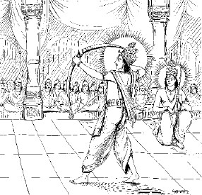
कैसे उठाया, कैसे नवाया, बराबर देखा भी नहीं। धनुषके दो टुकड़े हो गये हैं।
विश्वामित्रजीको आनन्द हुआ है। विश्वामित्रजीने राजा जनकसे कहा है—अब श्रीसीताजी पधारें, मेरे रामको विजयमाला अर्पण करें। साक्षात् महालक्ष्मी ही श्रीसीताजी हैं। अलौकिक सौन्दर्य, अलौकिक शृंगारका वर्णन कौन कर सकता है? हाथमें विजयमाला है। दाहिनी ओर आठ सखियाँ हैं, बायीं ओर आठ सखियाँ हैं। मंगल-गीत गाती हैं। श्रीसीताजी धीरे-धीरे आती हैं।
रामचन्द्रजीने देखा है, यह राजकन्या मुझे विजयमाला अर्पण करनेके लिये आ रही है। उस समय रामजीको कौसल्यामाँकी याद आती है। गुरुदेवकी आज्ञासे मैंने धनुष-भंग तो किया; माता-पिताकी आज्ञाके बिना मैं लग्न नहीं करूँगा। राम पुराने जमानेके हैं। राम विचार करते हैं, माता-पिताकी आज्ञा माननेवाला राम माता-पिताकी आज्ञाके बिना लग्न कैसे करे? श्रीसीताजी बहुत सुन्दर हैं तो क्या हुआ?
श्रीसीताजी आती हैं। श्रीसीताजी थोड़ी छोटी हैं। राम मस्तक नवावें, तभी सीताजी विजयमाला अर्पण कर सकती हैं। रामचन्द्रजीने निश्चय किया है, माता-पिताकी आज्ञाके बिना मैं मस्तक नहीं नवाऊँगा। श्रीसीताजीने दोनों हाथ ऊँचे किये हैं। श्रीसीताजीके हाथमें रत्नकी चूड़ी है। रत्नकी चूड़ीमें रामका प्रतिबिम्ब दिखता है। घूँघट निकाला है, इससे प्रत्यक्ष दर्शन बराबर नहीं होता है। रत्नकी चूड़ीमें रामके प्रतिबिम्बका दर्शन होता है। प्रकाशमय श्रीराम हैं। रामका मुख चन्द्रके समान अति शीतल सबको आनन्द देनेवाला है। करोड़ों कामदेवसे भी राम अति सुन्दर हैं। सीताजीको रामचन्द्रजीका प्रतिबिम्ब रत्नकी बँगड़ीमें दिखता है। सीताजीको समाधि लगती है।
विश्वामित्रजीने देखा है, राजकन्याने दोनों हाथ ऊँचे किये हैं, राम मस्तक नवाता नहीं है। विश्वामित्रजी दौड़ते हुए गये हैं। रामजीके कानमें कहा—राम! मैं जब अयोध्यामें गया था, तब तुम्हारे माता-पिताके साथ सब बातें हुई हैं। माता-पिताकी बहुत इच्छा है कि रामका लग्न हो। तुम्हारी माँ बहुत प्रसन्न होगी। तुम्हारे पिताको बहुत आनन्द होगा।
रामचन्द्रजीने पूछा है, लग्न हो, ऐसी माता-पिताकी इच्छा तो है, किंतु इसी कन्याके साथ लग्न हो, ऐसी इच्छा है क्या? विश्वामित्रजीने कहा—हाँ, इसी कन्याके साथ हो, ऐसी इच्छा है।
कौसल्यामाँने श्रीसीताजीकी प्रशंसा बहुत सुनी थी। कौसल्यामाँकी बहुत इच्छा थी कि सीताजी पुत्रवधू हों। विश्वामित्रजीने कहा—इसी कन्याके साथ लग्न होना चाहिये, तुम्हारी माँ बहुत प्रसन्न होगी। रामजीने कहा—माँकी आज्ञा है, तब तो मैं मस्तक नवाता हूँ।
रामजीने मस्तक नवाया। सखी श्रीसीताजीको सावधान करती हैं। श्रीसीताजीको समाधि लगी है। सखी सावधान करती हैं। प्रभुने मस्तक नवाया है, तब श्रीसीताजीने विजयमाला अर्पण की है—
नाचत गावत सहित सहेली।
सिय जयमाल राम उर मेली॥
सीताजी विजयमाला अर्पण करती हैं। श्रीसीतारामजीको स्वर्णके सिंहासनमें बैठाया है। जनकपुरीकी प्रजा बहुत भाग्यशाली है। स्वर्ण-सिंहासनमें श्रीसीता-रामजीका दर्शन करती है, अति आनन्द होता है। इस मनोहर जोड़ीको किसीकी दृष्टि न लगे, वस्त्राभूषण लेकर दृष्टि उतारते हैं। स्वर्ण-सिंहासनमें विराजमान श्रीसीतारामजीके दर्शनमें तृप्ति नहीं होती है।
रामायणके विभिन्न काण्डोंका तात्पर्यार्थ
रामायण रामचन्द्रजीका नाम-स्वरूप है। रामायणके सात काण्ड मानवकी उन्नतिके लिये सात सोपान हैं। तुलसीदासजी महाराजने एक-एक काण्डको सोपान नाम दिया है। सोपान शब्दका अर्थ है—सीढ़ी। श्रीरामचन्द्रजीके चरणोंमें पहुँचना है। मानवकी उन्नतिके सात सोपान हैं।
रामायणका जो प्रथम काण्ड है, उसको बालकाण्ड कहते हैं। प्रभुके दरबारमें बालकको जल्दी प्रवेश मिलता है। आपका ज्ञान बढ़े, आपको भगवान् धन दें, मान दें तो भी हृदय बालकके जैसा ही रखो। बालक निर्मान और निर्मोह होता है। बालकका कोई अपमान करे और बालकको पेड़ा दिखाये तो वह भूल जाता है कि इसने मेरा अपमान किया है। वह तो पेड़ा लेनेके लिये जाता है। बालक निर्मान है, बालक निर्मोह है। बालक जगत्को देखता है, शुद्ध भावसे देखता है। उसकी आँखमें विकार नहीं है, उसके मनमें कोई पाप नहीं है। भगवान्को बालक बहुत प्यारे लगते हैं। मन, वाणी और क्रिया तीनों जिसकी एक हैं, उसको बालक कहते हैं। बालकके मनमें जो होता है, वही बोलता है। जो बोलता है, वही करता है। बालकको कपट करनेकी अक्ल नहीं होती है। बालकको झूठ बोलनेका ज्ञान नहीं होता, बालक सत्य ही बोलता है। माता-पिता कभी-कभी सिखाते हैं, तब वह झूठ बोलता है। प्रभुके दरबारमें जाना है तो बालक बनो। बड़े-बड़े ज्ञानी सन्त जब ज्ञानका अभिमान छोड़ करके अज्ञानी बालकके जैसे हो जाते हैं, भगवान्को प्यारे लगते हैं। जिसका मन बालकके जैसा शुद्ध है, उसीका तन अयोध्या होता है।
बालकाण्डके बाद अयोध्याकाण्ड आता है। अयोध्याकाण्ड बोध देता है कि जीवन थोड़ा है, कभी झगड़ा करना नहीं। भागवतकी कथा सुनते हो, आजसे ऐसा निश्चय करो कि इस संसारमें मेरा कोई शत्रु नहीं है और मैं किसीका शत्रु नहीं हूँ। किसीने मेरा कुछ बिगाड़ा नहीं है, किसीने मुझे दु:ख दिया नहीं है। मेरे दु:खका कारण मेरा पाप है। मेरा कोई शत्रु नहीं है। जहाँ युद्ध नहीं है, उसीको अयोध्या कहते हैं। अयोध्यामें श्रीराम विराजते हैं। अपने घरको अयोध्या बनाओ। हम सभी लोग अयोध्याजीमें जाकर रहें तो अयोध्याजीमें जो सन्त-महात्मा हैं, उनकी भक्तिमें विघ्न होगा। तीर्थमें रहना अच्छा है। भगवान्ने आपको जो घर दिया है, भगवान्ने आपको जो शरीर दिया है, अपने घरको, अपने शरीरको तीर्थ-जैसा पवित्र रखना बहुत अच्छा है। अपने घरको ही तीर्थ बनाओ। आपके घरमें जो आये, उसका मन पवित्र हो जाय। आपके घरमें जो आये, उसको भगवान्की भक्ति करनेकी भावना हो। घरको तीर्थ बनाओ। कभी युद्ध न करो। रामायणके सात काण्ड हैं। छ: काण्डोंमें युद्धकी कथा आती है। किन्तु, एक अयोध्याकाण्ड ऐसा है, जिसमें युद्धकी कथा नहीं है। बालकाण्डमें युद्धकी कथा है—विश्वामित्रजीके यज्ञका रक्षण किया, तब राक्षसोंके साथ युद्ध हुआ है। अरण्यकाण्डमें युद्धकी कथा है। किष्किन्धाकाण्डमें, सुन्दरकाण्डमें, लंकाकाण्डमें और उत्तरकाण्डमें भी युद्धकी कथा आती है। प्रत्येक काण्डमें युद्धका वर्णन है। एक अयोध्याकाण्ड ऐसा है, जहाँ युद्धका वर्णन नहीं है। इसीलिये उसको अयोध्या कहते हैं। जगत्के एक भी जीवके लिये मनमें कुभाव आये तो मन बिगड़ता है, भक्तिमें विघ्न आता है। वैरका त्याग करो, अयोध्याकाण्ड यह बोध देता है।
अयोध्याकाण्डके बाद अरण्यकाण्डकी कथा आती है। अरण्यकाण्ड बोध देता है—थोड़े दिन वनमें जा करके भक्ति करो तो वासनाका विनाश होगा। घरमें वासनाका विनाश करना बड़ा ही कठिन है। गृहस्थका जो घर है, वह भोग-भूमि है। गृहस्थके घरमें कामके परमाणु घूमते हैं। घरमें थोड़ी भक्ति होती है, किन्तु घरमें वासनाका विनाश करना अशक्य-जैसा है। गृहस्थका घर बहुत पवित्र नहीं है। जगत्के सभी सन्त-महात्मा वनमें रहते हैं, वासनाका विनाश करते हैं, तब महान् हुए हैं।
भगवान् श्रीकृष्ण वृन्दावन-धाममें गायोंके पीछे खुले पैर चलते हैं। वृन्दावनमें भगवान्ने तपश्चर्या की है, फिर श्रीकृष्ण द्वारकाके राजा हुए हैं। पाण्डव वनमें तप करते हैं। जो वासनाका विनाश करता है, वही महान् होता है। वासनाका विनाश करनेके लिये वनमें रहनेकी जरूरत है। वनमें रहनेका अर्थ है—विलासी लोगोंसे दूर रहो। विलासी लोगोंका संग मनको बिगाड़ता है। विलासी लोगोंके संगमें वासना बढ़ती है। जिसने वासनाका विनाश किया है, ऐसे सन्तोंका स्मरण करो। जो निष्काम हैं, ऐसे सन्तोंका सत्संग करो। जो कामाधीन है, जो कामसुख भोगता है, उसका कभी स्मरण मत करो। जिसने कामका विनाश किया है, उसीका स्मरण करो। थोड़े दिन घर छोड़ो।
गृहस्थके लिये घरमें वासनाका विनाश करना अशक्य-जैसा है। थोड़े दिन घर छोड़ो। अपने मनको बार-बार समझाना तेरा घर भगवान्के चरणमें है, यह घर छोड़ना है। अन्तकालमें जीवको घरकी ममता बहुत दु:ख देती है। यमदूत बहुत दु:ख नहीं देते हैं, घरकी ममता दु:ख देती है। घर छोड़नेकी इच्छा नहीं होती है और यमदूत घरमें रहने नहीं देते। आजसे ही घरकी ममता धीरे-धीरे कम करो। मनको समझाना तेरा घर भगवान्के चरणोंमें है। आपके माता-पिताका लग्न हुआ नहीं था, तब आपका घर कहाँ था, जिस घरको आप मानते हो कि यह मेरा घर है, उस घरमें तो माता-पिताका लग्न होनेके बाद आप आये हैं।
अमरदासजी बड़े ज्ञानी सन्त थे। तीन-चार वर्षके थे, तभीसे उनकी बुद्धिमें ज्ञान प्रकट हुआ था। अपनी माँसे पूछते हैं—तुम कौन हो? मैं कौन हूँ? माँ कहती है—तू मेरा बेटा है, मैं तेरी माँ हूँ। अमरदासजी पूछते हैं—माँ! तुम्हारा बेटा कहाँ है? माँ बालककी छातीके ऊपर हाथ रखती है, कहती है—ये मेरा बेटा है। माँ! ये छाती तुम्हारा बेटा है? यह पेट तुम्हारा बेटा है? शरीर तुम्हारा बेटा है या बेटा शरीरसे भिन्न है? ये तो शरीर है। मइया! आज तुम्हारी गोदमें मैं बैठा हूँ। तुम्हारे लग्नका जुलूस निकला था, तब मैं कहाँ बैठा था? माँने कहा—मेरे लग्नके जुलूसमें तू नहीं था। अमरदासजी कहते हैं। मैं था। मैं नहीं हूँ, ऐसा अनुभव किसीको नहीं होता।
जिस घरको आप मानते हैं—यह मेरा घर है, यह भूल है। आपका घर भगवान्के चरणोंमें है। यह घर एक दिन छोड़ना है। घरमें रहनेसे मन बिगड़ता नहीं है, घर मेरा है—ऐसा समझ करके मनमें जो घरको रखता है, उससे मन बिगड़ता है। मनमें घरको रखनेसे पाप होता है। घरमें रहना चाहिये, किन्तु मनमें घर न आये। मनको बार-बार समझाओ, तुम्हारा घर भगवान्के चरणमें है।
वासनाका विनाश करनेके लिये थोड़े दिन भी वनमें रहनेकी जरूरत है। शास्त्रोंमें लिखा है कि गृहस्थ बारहों महीने घरमें न रहे। बारह महीनेमें एक-दो महीना गंगाजीके किनारे, यमुनाजीके किनारे रहे और साधना करे। किसी गरीबको ऐसी इच्छा हो कि मुझे विष्णु-यज्ञ करना है। गरीब विष्णु-यज्ञ कैसे कर सकता है? एक विष्णु-यज्ञ करना हो तो दस-बीस लाख रुपये खर्च करने होते हैं। गरीब कहाँसे लायेगा? कोई गरीब वैष्णव गंगाजीके किनारे, यमुनाजीके किनारे बैठ करके बारह हजार; बारह हजार न हो तो बारह सौ विष्णुसहस्रनामके पाठ करे तो एक विष्णु-यज्ञका उसको फल मिलता है। सादा भोजन करो। महीना-दो महीना किसी पवित्र तीर्थमें रह करके भक्ति करो। भक्ति करनेसे सात्त्विक शक्ति बढ़ती है। वह सात्त्विक शक्ति मानवको पाप करनेसे रोकती है।
श्रीराम वनमें जाते हैं। राम वृद्धावस्थामें वनमें नहीं गये हैं, राम जवानीमें वनमें गये हैं। राम अकेले वनमें नहीं रहते हैं, श्रीसीताजी साथमें हैं। एक ही पर्णकुटीमें रहते हैं, परिपूर्ण संयम है। तपश्चर्या वृद्धावस्थामें नहीं होती है, तपश्चर्या तो यौवनमें होती है। वृद्धावस्थामें तो शरीर दुर्बल हो जायगा। वृद्धावस्थामें शरीर रोगका घर बनेगा, उस समय मानव तप क्या करेगा? शरीरका ही चिन्तन ज्यादा होगा। रामचन्द्रजीने जगत्को शिक्षण दिया है—रावणको मारना है, कामको मारना है। वनमें रह करके सादा भोजन करो, तपश्चर्या करो।
अरण्यकाण्डके बाद किष्किन्धाकाण्डकी कथा है। किष्किन्धाकाण्डमें श्रीराम और सुग्रीवकी मैत्रीकी कथा आती है। श्रीराम परमात्मा हैं, सुग्रीव जीवात्मा है। जीव ईश्वरके साथ तब मैत्री कर सकता है,जब वह कामकी दोस्ती छोड़ता है। काम मित्र नहीं है, शत्रु है। काम सुख देता नहीं है, दु:ख देता है। कामकी मैत्री छोड़ो। श्रीहनुमान्जी महाराज कृपा करें, तो ही राम सुग्रीवके साथ मैत्री करते हैं। हनुमान्जीकी कृपा न हो तो राम सुग्रीवके साथ मैत्री करनेके लिये तैयार नहीं हैं। सुग्रीवको हनुमान्जीका बल मिला है। हनुमान्जीका बल संयमका बल है। काम मित्र नहीं है, राम मित्र हैं। सभी जीवोंके साथ राम प्रेम करते हैं। रामको कोई स्वार्थ नहीं है तो भी राम जीवके साथ प्रेम करते हैं। संसारका सभी प्रेम स्वार्थसे भरा हुआ है। जीवके मित्र श्रीराम हैं, काम शत्रु है। किष्किन्धाकाण्डमें जीव-ईश्वर-मैत्रीकी कथा आती है।
किष्किन्धाकाण्डके बाद सुन्दरकाण्डकी कथा है। सुन्दरकाण्डमें श्रीहनुमान्जीका चरित्र है। हनुमान्जीका जीवन सुन्दर है। राम-सेवा ही उनका जीवन है। श्रीराम-नाम हनुमान्जीका भोजन है। श्रीहनुमान्जी महाराज राम-नामका जप किये बिना रह नहीं सकते। श्रीहनुमान्जी महाराज राम-सेवा बिना जीवित रह नहीं सकते। सेवा और स्मरणके लिये जिसका जीवन है, वही साधु है। भगवान्की सेवा ही जिसका जीवन है, भगवान्का स्मरण ही जिसका जीवन है, वही वैष्णव है। वेशसे वैष्णव होना कठिन नहीं है, हृदयसे वैष्णव होना कठिन है। हनुमान्जी महाराज सर्व वैष्णवोंके आचार्य हैं—ज्ञानिनामग्रगण्यम्। हनुमान्जीका जीवन सुन्दर है। जिसका जीवन भक्तिमय है,उसीका जीवन सुन्दर है।
कुटुम्बका भरण-पोषण करना पशु-पक्षी भी जानते हैं। पशु-पक्षी संसार करते हैं। कौएमें एक बड़ा सद्गुण होता है, कौआ कभी अकेला खाता नहीं। पत्तल पड़े हों तो कौआ अपने जात-भाइयोंको बुलानेके लिये जाता है, हम सब लोग मिल करके आज भोजन करेंगे। आहार-विहार-संसार तो पशु-पक्षी भी करते हैं।
जीना है उसका भला, जो इन्सानके लिये जिए।
और मरना है उसका भला जो अपने लिये जिए॥
जीवन रामके लिये है। जीवन परोपकारके लिये है। हनुमान्जीका जीवन सुन्दर है। जिसका जीवन भक्तिमय है, उसीका जीवन सुन्दर है। जीवन जब भक्तिमय हो जाता है, तब युद्धकाण्डमें राक्षस मरते हैं। काम राक्षस है, क्रोध राक्षस है, लोभ राक्षस है। कितने ही लोग ऐसा समझते हैं कि भगवान् मेरे ऊपर कृपा करें, कामका नाश करें, क्रोधका नाश करें तो फिर मैं भगवान्की भक्ति करूँ। कामका नाश नहीं होता है। अन्तिम जन्ममें कामका नाश होता है। भक्ति बढ़ानेसे धीरे-धीरे काम-क्रोधादि विकार कम होते हैं। पूूर्ण विनाश तो अन्तिम जन्ममें होता है। भक्तिको बढ़ाओ तो काम-क्रोध-लोभ—ये विकार धीरे-धीरे कम होते हैं। विकारका विनाश होनेके बाद मैं भक्ति करूँगा—ये कल्पना सत्य नहीं है। विकारोंका विनाश नहीं होता है। भक्तिको बढ़ाओ धीरे-धीरे विकार कम होंगे।
श्रीतुलसीदासजी महाराजका उत्तरकाण्ड दो-चार बार नहीं, दस-बीस बार पढ़ना चाहिये। शान्तिसे पढ़ो। कोई विषय छोड़ा ही नहीं है। ज्ञान-भक्तिका मधुर समन्वय किया है। जो राक्षसोंको मारता है, उसका उत्तर-जीवन मंगलमय होता है। वही ज्ञान-भक्तिका रहस्य समझ सकता है।
संक्षिप्त राम-कथा
सात काण्डोंका थोड़ा भावार्थ सुनाया है। प्रात:कालमें रामायणकी कथा हुई है। रामजीके गुण अनन्त हैं। रामजीकी लीलाका वर्णन कौन कर सकता है? मार्गशीर्ष मास, शुक्ल पक्ष, पंचमी तिथि, गुरुवार और गोरज मुहूर्तमें श्रीसीतारामजीका लग्न हुआ है। लक्ष्मणजीका, भरतजीका, शत्रुघ्नजीका वहीं लग्न हुआ है। लग्न करके चारों भाई अयोध्याधाममें आये हैं। सभीको आनन्द हुआ है।
एक-दो बार दशरथ महाराज ऐसा बोले थे कि मेरे-जैसा संसारमें कोई सुखी नहीं है, मैं अति सुखी हूँ। राम-लक्ष्मण-जैसे चार पुत्र हैं, सीता-जैसी पुत्रवधू है, अयोध्याका राज्य हाथमें है। दशरथ अति सुखी हुए हैं। अति सुख मिले, यह अच्छा नहीं है। जीवनमें थोड़ा दु:ख होना ही चाहिये। अति सुखमें बुद्धि बिगड़ती है। अति सुखमें जीव गाफिल हो जाता है। दु:खमें जीव थोड़ा सावधान रहता है। अति सुख मिले तो कालको भी सहन नहीं होता है। कोई बहुत सुखी हो तो मानवको सहन होता नहीं है। फिर क्या आश्चर्य है कि कालको भी सुख सहन नहीं होता। महाराज दशरथ अति सुखी हुए। दशरथ महाराजके सुखको कालकी दृष्टि लगी है।
अयोध्याकाण्डमें महाराज दशरथ अति दुखी हुए हैं। संसारका ऐसा नियम है, सुखके बाद दु:ख आता है। अति सुख मिले, यह अच्छा नहीं है। जीवनमें थोड़ा दु:ख होना ही चाहिये। दु:खसे हृदय दीन बनता है। दु:खसे मानव सावधान रहता है। दु:खसे ही मानव भक्ति करता है। जीवनमें सुख-दु:ख, मान-अपमान, लाभ-हानि कैसा भी प्रसंग आये, प्रभुकी पूजा कभी छोड़ना नहीं। जो बहुत प्रेमसे भगवान्की पूजा करता है, उसकी बुद्धि कभी बिगड़ती नहीं है। जीवनमें कैसा भी दु:खका प्रसंग आये, भगवान्की पूजा छोड़ना नहीं, सत्कर्म छोड़ना नहीं, सत्संग छोड़ना नहीं।
कैकेयीकी यही भूल हो गयी, मन्थराका कुसंग किया। कैकेयीने मन्थरामें विश्वास रखा। वसिष्ठ-जैसे बड़े-बड़े ज्ञानी ऋषि कैकेयीको समझाते हैं। कैकेयी किसीकी बात मानती ही नहीं। शास्त्रोंमें ऐसा लिखा है कि स्त्री-हृदय अति कोमल होता है। स्त्री-हृदय अति कोमल तो है, किंतु स्त्रीको कुसंग हो जाय, तो स्त्रीका हृदय वज्रसे भी कठिन हो जाता है। कैकेयीने सभीको रुलाया है। कैकेयीका हृदय वज्रसे भी कठोर हो गया है। कैकेयी किसीकी बात मानती ही नहीं है। दशरथ महाराज बड़े ज्ञानी हैं, महान् बुद्धिमान् हैं। दशरथ महाराज कैकेयीको नहीं समझा सके। उसका हृदय मन्थराने ऐसा कठोर बना दिया है, कैकेयी किसीकी बात मानती नहीं है।
राम-लक्ष्मण-जानकी वनमें जाते हैं। अयोध्याका वैभव छोड़ करके श्रीराम वनमें आये हैं, भीलों-कोलोंका उद्धार करनेके लिये आये हैं। राम पतित-पावन हैं। जो कुछ पढ़ा-लिखा नहीं है, जो सदाचारको जानता नहीं है, जो ज्ञान-भक्तिका स्वरूप समझता नहीं है, ऐसे साधारण लोगोंका कल्याण करनेके लिये राम खुले पैर वनमें घूमते हैं। अयोध्याका वैभव छोड़ दिया है। अनेक जीवोंका कल्याण करनेके लिये राम वनमें आये हैं। राम पतितपावन हैं। चित्रकूटमें श्रीराम-लक्ष्मण-जानकी विराजमान हैं।
दशरथ महाराजको श्रीरामजीका वियोग सहन हुआ नहीं। राम-वियोगमें प्राणोंका त्याग किया। भरतजी आये, श्राद्धादिक विधि हुई। भरतजीने कहा इस गादीमें बैठनेके लिये मैं लायक नहीं हूँ। कैकेयीका पुत्र कैकेयीसे अति अधम है। मैं पापी हूँ। मेरा जन्म श्रीसीतारामजीको दु:ख देनेके लिये हुआ है। मेरे-जैसा अधम जगत्में कोई नहीं है। मेरे लिये राम खुले पैर वनमें चलते हैं, सीताजी कंद-मूल-फल खाती हैं। मेरे-जैसा अधम कौन है? राजा पुण्यशाली हो तो प्रजा सुखी होती है। मेरे-जैसे पापीको इस गादीमें आप बैठाओगे तो अयोध्याकी प्रजा बहुत दुखी हो जायगी। इस गद्दीपर तो श्रीसीतारामजी विराजमान हैं। मैं अपराधी हूँ, अति पापी हूँ। मेरे राम अति उदार हैं। मुझे विश्वास है, मेरे अपराधको प्रभु क्षमा करेंगे।
भरत राम-प्रेमकी मूर्ति हैं। चित्रकूटमें राम-भरतका मधुर मिलन हुआ है। भरतजीको आज्ञा हुई—चरण-पादुका लेकर भरतजी अयोध्याजीमें गये हैं। अनेक ऋषियोंको कृतार्थ करते हुए राम-लक्ष्मण-जानकी गोदावरी-गंगाके किनारे पंचवटीमें आये हैं। सीताजीको रावण लंकामें ले गया ही नहीं है। सीताजीको रावण स्पर्श करनेके लिये जाय तो जल करके भस्म हो जाय। सीताजीको कोई स्पर्श नहीं कर सकता, भगवान्की आदिशक्ति हैं। सीताजीकी छायाको रावण ले गया है। सीताजीके तीन स्वरूप हैं। अति शुद्ध सत्त्वमय स्वरूप रामजीके साथमें ही रहता है। सीतारामका कभी वियोग नहीं होता है। सीताजीका राजसी स्वरूप अग्निमें है। तामसी छायास्वरूपको रावण ले गया है।
श्रीराम-लक्ष्मण सीताजीको शोधनेके लिये निकले हैं। शबरीमाँका उद्धार किया है। सुग्रीवके साथ रामने मैत्री की है। समुद्रको लाँघ करके श्रीहनुमान्जी महाराज लंकामें आये हैं। माताजीका दर्शन किया है। माताजीको वन्दन करके सन्देश कहा है। माताजीको हनुमान्जीने कहा—माँ, रामजीका दर्शन करके मैं वहाँसे निकला, यहाँ आया, तबतक मैंने पानी भी नहीं पिया। माँ, मुझे भूख लगी है। श्रीसीतामाँने कहा—तुम्हें भूख लगी है, मैं तुम्हें क्या दूँ? हनुमान्जीने कहा—मइया! यहाँ फल बहुत दिखते हैं, मुझे आज्ञा दो तो मैं फलाहार करूँ? सीताजीने कहा—यहाँ तो राक्षस-राक्षसी रक्षण करते हैं। हनुमान्जीने कहा—माँ! मेरी चिन्ता करना नहीं, मेरे रामजीने मुझे ऐसी शक्ति दी है। माँ! आपके आशीर्वादसे मैं सबको मारूँगा, मेरी आप चिन्ता करना नहीं।
माताजीने विचार किया—मेरा हनुमान् अकेला है, राक्षस बहुत हैं। हनुमान्जीको कहा—बेटा! फल तोड़ना नहीं, जो फल नीचे पड़े हों, उसीको खाना। श्रीहनुमान्जीने विचार किया, मेरी माँने मुझे फल तोड़नेके लिये मना किया है, पेड़ उखाड़नेके लिये नहीं। मैं पेड़को उखाड़ता हूँ। एक-एक वृक्षको हिलाते हैं, मूलसे उखाड़ डालते हैं। अशोक-वाटिकाका विध्वंस किया है। राक्षसोंका नाश किया है। लंकाको जलाया है। हनुमान्जीकी लीला कौन वर्णन कर सकता है?
हनुमान्जी आये हैं। राम-नामसे पत्थर तैरते हैं। सेतु-बन्धन किया है। वानरोंके साथ लंकामें प्रवेश किया है। राक्षस रामजीके साथ क्या युद्ध कर सकते हैं? राम तो राक्षसोंके साथ खेलते हैं। कभी-कभी पिता अपने पुत्रके साथ खेलता है, तब ऐसा नाटक करता है कि पुत्रकी जीत हो गयी, मेरी हार हो गयी। रामजी ऐसी लीला करते हैं, राक्षसोंकी जीत हो गयी, रामजीकी हार हो गयी। लीलामें रावणको मारा है। राक्षसोंका विनाश किया है।
राम-लक्ष्मण-जानकी श्रीअयोध्याजीमें आये हैं। श्रीसीतारामजीको स्वर्ण-सिंहासनमें बिठाया है। राम-राज्याभिषेक हुआ है। राम-राज्यमें प्रजा बहुत सुखी है। राम-राज्यमें कोई मूर्ख नहीं है, सभी ज्ञानी हैं। राम-राज्यमें सभीके घरमें सत्संग होता है। राम-राज्यमें सभी एकादशीका व्रत करते हैं। राम-राज्यमें कोई विधवा नहीं है। राम-राज्यमें सभी ब्राह्मण अग्निहोत्री हैं, वेदाध्ययन करते हैं। राम-राज्यमें कारागृहमें रहनेवाला कोई चोर नहीं है, कोई चोरी करे तब न कैदमें जाय, कोई चोरी करता नहीं है। राम-राज्यमें सभी सुखी हैं, कोई दुखी नहीं है। जितने वकील थे, उनका धन्धा राम-राज्यमें जरा भी चलता नहीं था, किसीके घरमें झगड़ा होता ही नहीं था। किसीको अन्यायका धन लेनेकी इच्छा नहीं होती थी। राम-राज्यमें कोई रोगी नहीं है। राम-राज्यमें कोई दुखी नहीं है, सभी सुखी हैं।
रामचन्द्रजीके यहाँ दो बालक हुए हैं—लव और कुश। कुशस्यचातिथिस्तस्मान्निषधस्तत्सुतो नभ:। (श्रीमद्भा० ९।१२। १) कुशका वंश बढ़ा है। कुशके वंशमें निषध नामका राजा हुआ है। इस वंशमें हिरण्यनाभ राजा हुआ। इस वंशमें सुदर्शन राजा हुआ। इस वंशमें मरु राजा हुआ है। सूर्यवंशमें अन्तिम राजा सुमित्र हुआ है—इक्ष्वाकूणामयं वंश: सुमित्रान्तो भविष्यति। (श्रीमद्भा०९।१२।१६) सुमित्र राजा-तक ही इक्ष्वाकुवंश रहेगा, फिर इस वंशका नाश हो जायगा।
सूर्यवंश-प्रकरण परिपूर्ण किया है, अब चन्द्रवंशका आरम्भ करते हैं। चन्द्रवंशमें भगवान् श्रीकृष्ण प्रकट होनेवाले हैं।
चन्द्रवंश-प्रकरण
आदिनारायण परमात्माकी नाभिसे ब्रह्माजी प्रकट हुए। ब्रह्माजीके पुत्र अत्रि ऋषि हुए हैं। अत्रि ऋषिके पुत्र चन्द्र हुए हैं। चन्द्रका पुत्र बुध हुआ। बुधका पुत्र पुरूरवा हुआ है। पुरूरवा राजाके वंशमें आयु, श्रुतायु, सत्यायु, विजय, जय, रय ऐसे अनेक राजा हुए हैं। विजयके वंशमें भीम राजा हुआ है। उसके वंशमें जह्नु राजा हुआ है। जह्नु राजाके वंशमें गाधि राजा हुआ है। गाधि राजाकी कन्या सत्यवतीका लग्न ऋचीक ऋषिके साथ हुआ था। उनके घरमें जिस पुत्रका जन्म हुआ, उसका नाम था जमदग्नि। जमदग्निके यहाँ भगवान् परशुराम प्रकट हुए हैं। परशुराम-भगवान्की कथा बहुत संक्षेपमें वर्णन की है।
फिर तो पुरूरवा महाराजका पुत्र जो आयु है, उसका वंश-वर्णन किया है। आयु राजाके वंशमें नहुष नामका राजा हुआ है। नहुष राजाके वंशमें यति, ययाति, संयाति, आयति, वियति, कृति आदि अनेक राजा हुए हैं। ययाति महाराजके यहाँ दो रानियाँ हैं—देवयानी और शर्मिष्ठा। देवयानीके यहाँ यदु और तुर्वसु दो बालक हुए हैं। शर्मिष्ठाके यहाँ द्रुह्यु, अनु और पूरु ऐसे तीन पुत्र हुए हैं। देवयानीका बड़ा पुत्र जो यदु है, उसीके वंशमें भगवान् श्रीकृष्ण प्रकट होनेवाले हैं। यदुवंशकी कथा नवम स्कन्धकी समाप्तिमें वर्णन की गयी है।
ययाति महाराजके पुत्र पूरुके वंशका वर्णन किया है—पूरोर्वंशं प्रवक्ष्यामि यत्र जातोऽसि भारत। (श्रीमद्भा० ९।२०। १) पूरुराजाके वंशमें ऋतेयु, कुक्षेयु, रन्तिभार आदि अनेक राजा हुए हैं। इसी वंशमें रन्तिदेव राजा हुआ है। इस वंशमें दुष्यन्त राजा हुआ है। दुष्यन्तके वंशमें भरत राजा हुआ है।
भरत-वंशकी कथा
राजा भरतके वंशमें देवापि, शन्तनु हुए हैं। शन्तनु महाराजका लग्न गंगाजीके साथ हुआ था। उनके यहाँ जो बालक हुआ, उसका नाम देवव्रत है। एक बालक देकर गंगाजी वैकुण्ठमें जाती हैं। देवव्रत महान् तपस्वी वीर हैं।
शन्तनु राजाको दूसरा लग्न करनेकी इच्छा हुई है। मत्स्य-राजाकी कन्या सत्यवती सुन्दर थी। शन्तनु राजाने मत्स्य-राजासे कहा है—अपनी कन्या मुझे दे दो। मत्स्य-राजाने कहा—आपके घरमें एक पुत्र है, भविष्यमें वही राजा होगा। मैं अपनी कन्या आपको नहीं दूँगा। आप ऐसी प्रतिज्ञा करें कि घरमें जो पुत्र है, उसको राज्यका एक पैसा भी नहीं दूँगा तो मैं अपनी कन्या दे दूँगा।
घरमें जो पुत्र है, बहुत लायक है। उसे एक पैसा भी न दें तो अन्याय होगा। देवव्रत समझ गये, मेरे कारण मेरे पिताका लग्न नहीं हो रहा है। देवव्रत मत्स्य-राजाके यहाँ गये हैं और कहा है—मैं राज्यका एक पैसा भी लेनेवाला नहीं हूँ। आपकी कन्या मेरी विमाता हो गयी।
मत्स्य-राजाने कहा—आप राज्यका पैसा न लें, कदाचित् आपके पुत्र राज्यके लिये झगड़ा करें, तो देवव्रत विचार करके बोले हैं—हाथ ऊँचा किया है, आजसे बराबर मैं संयम रखूँगा, पुत्र नहीं होगा। पिताके लिये राज्य-सम्पत्तिका त्याग किया और संसार-सुखका भी त्याग किया।
विधाताने दो वस्तुओंमें ऐसी माया रखी है, जिसमें सभीका मन फँसा हुआ रहता है। काम-सुखमें माया है। जीव काम-सुख अनेक बार भोगता है, फिर भी मनसे घृणा नहीं होती है। पैसेमें माया है। देवव्रतने पिताके लिये राज्य-सम्पत्तिका त्याग किया और संसार-सुखका भी त्याग किया, ऐसी भयंकर प्रतिज्ञा की है। देवोंने पुष्प-वृष्टि की है, कैसा त्याग कर रहा है! आजसे इसका नाम ‘भीष्म’ होगा। भयंकर प्रतिज्ञा की है।
सत्यवतीके साथ लग्न होनेके बाद शन्तनु महाराजके यहाँ दो बालक हुए हैं—चित्रांगद और विचित्रवीर्य। इसी वंशमें धृतराष्ट्र, विदुर और पाण्डु हुए हैं। पाण्डुके पाँच पुत्र पाण्डव हुए हैं। पाण्डवोंमें अर्जुन श्रेष्ठ है। अर्जुनका पुत्र अभिमन्यु है। अभिमन्युका पुत्र राजा परीक्षित् हुआ है।
जनमेजयका नागयज्ञ
परीक्षित् राजाके वंशतक कथा सुनायी, तब परीक्षित् राजाने कहा है—हमारा वंश आगे कितना बढ़ेगा? भविष्यकी कथा कहो। शुकदेवजी महाराजने तब भविष्यकी कथा कही है। हमारे लिये भूतकालकी कथा है। परीक्षित् राजाका पुत्र जनमेजय सर्पोंसे वैर करता है, मेरे पिताको सर्प-दंश हुआ, मैं सभी सर्पोंका विनाश करूँगा। राजा जनमेजयका ऐसा दुराग्रह था कि सर्प-वंश जगत्में न रहे, इसीलिये उसने बड़ा भारी यज्ञ किया, जिस यज्ञमें ब्राह्मण मन्त्र बोल करके सर्पोंको खींच करके ले आते थे, अग्निमें होम करते थे। लाखों सर्प जल करके भस्म हो गये। जनमेजय राजाने ब्राह्मणोंको कहा है—मेरे पिताको दंश करनेवाले तक्षकको अग्निमें गिराओ। ब्राह्मणोंने कहा—तक्षक तो इन्द्रकी शरणमें है। इन्द्रदेव उसका रक्षण कर रहे हैं। जनमेजय राजाने कहा—आपके पास ऐसा कोई मन्त्र है या नहीं, जिससे इन्द्रके साथ तक्षकका होम कर दो।
ब्राह्मण आवेशमें आ गये थे। मन्त्र-शक्तिका ब्राह्मण-लोग दुरुपयोग करने लगे। इन्द्रके साथ तक्षकका हम होम करेंगे। ब्रह्माजीको यह ठीक लगा नहीं। उन्होंने आस्तीक नामके एक ऋषिको भेजा है। आस्तीकऋषि जनमेजय राजाको समझाते हैं—ये क्या कर रहे हो? अरे, मरणके लिये कुछ निमित्त होता है। तुम्हारे पिताको सद्गति मिली है। सर्पोंके साथ वैर करना उचित नहीं है। सर्प-वंशका विनाश न हो, इसीलिये आस्तीक ब्राह्मणने जनमेजयको समझाया है और सर्प-वंशका रक्षण किया है। सर्प जब अतिशय क्रोधमें होता है, तब आस्तीक...आस्तीक... आस्तीक—ऐसा बोलो तो आस्तीक शब्द सुननेके बाद सर्पका क्रोध शान्त हो जाता है।
संसार ही भगवान्का चमत्कार है। बहुत-से लोगोंको चमत्कार देखनेकी इच्छा होती है। संसार ही चमत्कार है। सर्पको कान नहीं होते हैं। सर्पकी आँखोंमें ही भगवान्ने ऐसी शक्ति रखी है कि वह आँखसे देखता है और आँखसे ही सुनता है। उसकी आँखमें ही सुननेकी शक्ति होती है। भगवान्की कैसी लीला है! सर्प आँखसे ही सुनता है, आँखसे ही देखता है। इसीलिये संस्कृत भाषामें सर्पका नाम है-चक्षुश्रवा। आस्तीक ऋषिने सर्प-वंशका रक्षण किया है।
जनमेजय राजाके वंशमें श्रुतसेन, उग्रसेन, भीमसेन आदि अनेक राजा हुए हैं। पाण्डवोंके वंशमें अन्तिम राजा क्षेमक नामका हुआ है। क्षेमक राजातक ही पाण्डवोंका वंश रहेगा, फिर इस वंशका विनाश हो जायगा—क्षेमकं प्राप्य राजानं संस्थां प्राप्स्यति वै कलौ।
यदुवंशकी कथा
नवम स्कन्धकी समाप्तिमें यदुवंशकी कथा आती है। यदु राजाके यहाँ सहस्रजित्, क्रोष्टा, नल और रिपु आदि अनेक राजाओंकी कथा आती है। इसी वंशमें शतजित् नामका राजा हुआ है। इसी वंशमें हैहय राजा हुआ है। इसी वंशमें कृतवीर्य राजा हुआ है। कृतवीर्यका पुत्र कार्तवीर्य अर्जुन हुआ है।
बहुत-से लोगोंको इस वंशकी कथामें आलस आ जाता है। ये भगवान्का वंश है, मैं छोड़ दूँ तो भगवान् मुझे सजा करेंगे। वक्ता व्यासनारायणके आज्ञानुसार कथा कहे।
कार्तवीर्य राजा गुरु दत्तात्रेय भगवान्का अनन्य भक्त है। दत्तात्रेय स्वामीकी उसके ऊपर बहुत कृपा थी। सभी प्रकारकी सिद्धियाँ उसको मिली थीं। कार्तवीर्य राजाके वंशमें ज्यामघ नामका राजा हुआ है। ज्यामघ राजाके वंशमें देवावृध, वृष्णि, अन्धक, मधु, भोज आदि महान् राजा हुए हैं। अन्धकके वंशमें देवक और उग्रसेन हुए हैं। देवक महाराजके यहाँ सात कन्याएँ हुई हैं—धृतदेवा, शान्तिदेवा, सहदेवा, उपदेवा, श्रीदेवा, देवरक्षिता और देवकी। सातों कन्याओंका लग्न वसुदेवजीके साथ हुआ है।
उग्रसेनके यहाँ नौ बालक हुए हैं। प्रधान कंस है। नौ बालक हुए हैं, एक-एकका वंश-वर्णन किया है। समाप्तिमें देवकीजीके वंशकी कथा आती है। देवकीजीके यहाँ आठ बालक हुए थे। छ: बालक राजा कंस मारता है। सातवें बलरामजी हैं। आठवें मेरे इष्टदेव भगवान् श्रीकृष्ण हैं।
श्रीकृष्णको सनातन धर्म अतिशय प्रिय है। सनातन धर्मका रक्षण करनेके लिये भगवान् जगत्में अनेक अवतार धारण करते हैं। जब धर्मका नाश होता है और अधर्म बढ़ने लगता है, तब मेरे भगवान्का प्राकटॺ होता है। मथुराके कारागृहमें भगवान् श्रीकृष्णका जन्म हुआ है। वहाँसे गोकुलमें भगवान् गये हैं। मधुर लीला की है। व्रजवासियोंको अलौकिक आनन्द दिया है। कंसको मारा है। मथुरानाथ हुए हैं, फिर द्वारकाधीश हुए हैं। अनेक रानियोंके साथ लग्न किया है।
श्रीकृष्णने जगत्को गृहस्थ-धर्म समझाया है। सोलह हजार रानियोंके स्वामी श्रीकृष्ण हैं। सभीके साथ प्रेम है। सभीको ऐसा लगता है कि मेरे ऊपर उनका विशेष प्रेम है। सोलह हजार रानियाँ हैं, कभी किसीके घरमें झगड़ा नहीं होता। श्रीकृष्णमें वैराग्य परिपूर्ण है।
घरके लोग दुखी न हों, इसकी चिन्ता रखो। आपको आनन्द कोई स्त्री नहीं दे सकती है, कोई पुरुष आनन्द नहीं दे सकता है। आनन्द आपको भगवान् देते हैं। पति-पत्नी शुद्ध भावसे प्रेेम रखें, यह उचित है। मल-मूत्रसे भरे हुए शरीरमें आसक्त न बनें। आनन्द किसी स्त्रीके पास नहीं है, आनन्द किसी पुरुषके पास नहीं है। आनन्द जड़ वस्तुमें नहीं है, आनन्द चेतन परमात्माका स्वरूप है। श्रीकृष्णमें वैराग्य परिपूर्ण है।
घरके लोगोंके साथ बाहरसे प्रेम बताना। अन्दरसे प्रेेम ईश्वरके साथ रखो। अनेक बार ऐसा होता है, मानव जगत्को बताता है कि मैं भगवान्की भक्ति करता हूँ। बाहरसे तो वह भगवान्के साथ प्रेम बताता है, अन्दरसे वह स्त्रीमें फँसा हुआ है, पुरुषमें फँसा हुआ है, पैसामें फँसा हुआ है। अन्दर वैराग्य रखो। श्रीकृष्णमें वैराग्य परिपूर्ण है। गृहस्थ-धर्म जगत्को श्रीकृष्णने समझाया है।
कौरव-पाण्डवोंके युद्धका निमित्त किया है, पृथ्वीका भार उतारा है। अर्जुनको, उद्धवको तत्त्वज्ञानका उपदेश देकर भगवान् श्रीकृष्ण गोलोकधाममें पधारे हैं। नवम स्कन्धकी समाप्तिपर संक्षेपमें श्रीकृष्णके चरित्रका वर्णन किया है। अब दशम स्कन्धका आरम्भ होता है।
कृष्ण-कथा प्रेमरसकी कथा है
अपने गाँवको अब भूल जाओ, अपने घरको भूल जाओ। अब गोकुल-वृन्दावनमें रहना है। वैष्णव उसको कहते हैं, जिसका मन वृन्दावनमें है। आपका मन जहाँ है, वहीं आप हैं। आपका तन जहाँ है, वहाँ आप नहीं हैं। अपने गाँवको भूल जाओ, घरको भूल जाओ। भगवान्के धाममें रहना है।
दशम स्कन्धकी लीला सभीको अति आनन्द देनेवाली है। शुकदेवजी महाराजने लँगोटीका भी त्याग किया है, किंतु कृष्ण-कथा नहीं छोड़ते हैं। शुकदेवजी महाराजको लँगोटीकी जरूरत नहीं है। उनकी ब्रह्मदृष्टि ऐसी स्थिर हो गयी थी कि उनकी दृष्टिमें कोई स्त्री नहीं है, कोई पुरुष नहीं है।
पाण्डुरोग जब बहुत बढ़ जाता है, तब जगत् पीला ही दिखता है। दूसरा कोई रंग दिखता ही नहीं है, एक पीला ही रंग दिखता है। एक रोगमें ऐसी शक्ति है कि रोगके बढ़नेके बाद दूसरा कोई रंग दिखता ही नहीं, सब पीला ही पीला दिखता है। ज्ञान और भक्ति जब अतिशय बढ़ते हैं, तब जगत् रहता ही नहीं है, भगवान् ही बाकी रह जाते हैं। साधारण ज्ञानमें भक्त, भगवान् और जगत् ऐसे तीन होते हैं। ज्ञान और भक्ति जब अतिशय बढ़ते हैं, तब जगत् रहता ही नहीं है। भक्ति अतिशय बढ़नेके बाद भक्त भगवान्से अलग रह सकता नहीं है। आरम्भमें भक्त और भगवान् ऐसा भेद-भाव होता है। अतिशय भक्ति बढ़नेपर भेद रहता नहीं, भगवान् ही बाकी रहते हैं।
शुकदेवजी महाराज केवल ब्रह्मज्ञानी हैं—ऐसा नहीं हैै, उनकी ब्रह्मदृष्टि स्थिर हो गयी है। गंगाजीमें देवकन्याएँ-अप्सराएँ स्नान करती हैं, शुकदेवजी महाराज वहाँसे जाते हैं। शुकदेवजी महाराजकी आँख बन्द नहीं हैं, खुली हैं। उनको खबर नहीं कि यहाँ स्त्रियाँ स्नान कर रही हैं।
संसार नीरस है। संसारके विषय जबतक मानव भोगता नहीं, तभीतक मीठे लगते हैं। विषय भोगनेके बाद कड़वे हो जाते हैं। विषय भोगनेके बाद विषयोंसे मन हट जाता है। लोग कहते हैं, बँगला बहुत अच्छा है। दो-चार डिग्री बुखार आ जाय तो बँगला अच्छा लगता है?
भगवान् रसमय हैं। जीव किसी-न-किसी रसमें फँसा हुआ है। बहुत-से जीव ऐसे हैं, उनको हास्यरस प्रिय होता है। कितने ही जीवोंको शृंगार-रसमें मिठास लगती है। कितने ही जीव ऐसे हैं, जिनको वीर-रसमें मिठास आती है। हास्य-रस, वीर-रस, शृंगार-रस सभीमें मिठास तो लगती है, कड़वास भी आती है। लग्न होनेके बाद घरमें सभी अनुकूलता हो तो पति-पत्नीको शृंगारमें बहुत मिठास लगती है। ऐसा समझते हैं कि मैं स्वर्गका सुख भोग रहा हूँ। शृंगारमें आरम्भमें मिठास तो लगती है, दो-चार बालक हों, शरीर दुर्बल हो जाय, फिर शृंगारमें कड़वास आ जाती है। शरीर बिगड़ जाता है, तब बुद्धि सुधरती है। शरीर जबतक अच्छा है, तबतक बुद्धि बिगड़ी हुई है। शरीर जब रोगी होता है, शरीर जब दुर्बल हो जाता है, शरीर बिगड़ता है, तब बुद्धि सुधरती है, विवेक जाग्रत् होता है। संसारके सभी रसोंमें कड़वाहट ही ज्यादा है।
प्रेम-रस अति मधुर रस है। श्रीकृष्ण प्रेम-रसके स्वरूप हैं। कोई भी जीव प्रेम किये बिना रह नहीं सकता है। जीव जगत्के साथ प्रेम करके ही दुखी हुआ है। जीव परमात्माके साथ प्रेम करे तो दु:खकी समाप्ति हो जाय। प्रेम बिना कोई रह सकता नहीं है।
कलियुगके लोगोंने प्रेम शब्दको बहुत बिगाड़ दिया है, मोहको ही प्रेम समझते हैं। मोह और प्रेम दोनोंका आकार थोड़ा समान है। मोह और प्रेममें बहुत अन्तर है। मोह शरीरका धर्म है। शरीर जबतक अच्छा है, तभीतक मोह रहता है। शरीर अति दुर्बल हो जाय, शरीर रोगका घर बने, फिर शरीरमें मोह नहीं रहता है। मोह शरीरका धर्म है। मोहका नाश होता है, प्रेमका नाश नहीं होता।
श्रीकृष्ण प्रेम-रसके स्वरूप हैं। श्रीकृष्णकी मधुर कथा जो सुनता है, धीरे-धीरे भगवान् उसके मनको खींच लेते हैं। श्रीकृष्णकी आकर्षण शक्ति बड़ी अलौकिक है। भगवान्से प्रार्थना करो, मेरा मन बहुत बिगड़ा हुआ है, मेरा मन पाप करता है। मैं देखता हूँ, मैं उसको रोक नहीं सकता। मानवको खबर रहती है कि मन पाप कर रहा है, तो भी मानव अपने मनको रोक नहीं सकता। मेरा मन बहुत बिगड़ा है, भगवान्के साथ ऐसी बातें करो, भगवान्से प्रार्थना करो कि मेरे मनको खींच लो। भगवान् जिसके मनका आकर्षण करते हैं, उसीका मन संसारसे हट जाता है।
संसारके विषयोंमें मायाका ऐसा आकर्षण भरा है कि जीव संसारमें अनेक बार दुखी होता है, तो भी विषय मीठे ही लगते हैं, विषयोंमें मनसे घृणा नहीं होती है। जो बार-बार कृष्ण-कथा सुनता है, प्रेमसे हरे कृष्ण! हरे कृष्ण!! कीर्तन करता है, प्रभुको मनाता है, भगवान् उसके मनको खींच लेते हैं। भगवान् मनका आकर्षण करके प्रेम-रसका दान करते हैं। भगवान् जिसको प्रेम-रस देते हैं, उसीका मन संसारके विषयोंसे हटता है। श्रीकृष्ण प्रेम-रसके स्वरूप हैं। प्रेम-रस अति मधुर है। संसारमें जितने रस हैं, उन्हें भोगनेके बाद जीव नीरस हो जाता है। प्रेम-रस ऐसा मधुर रस है कि इस प्रेम-रसका जो अनुभव करता है, वह रसमय हो जाता है।
संसारके रसोंमें भोग्य और भोक्ता ऐसा भेद-भाव होता है। एक भोग्य है, एक भोक्ता है। प्रेम-रस ऐसा मधुर रस है कि इसमें भोग्य और भोक्ता दोनों मिट करके एक हो जाते हैं, यह ऐसा मधुर रस है। प्रेम-रस जीवको परमात्माके साथ एकरूप बनाता है। अति मधुर प्रेम-रसकी कथाका अब आरम्भ होता है।
॥ श्रीहरि:॥
दशम स्कन्ध
परीक्षित् द्वारा शुकदेवजीसे कृष्ण-कथा सुनानेकी प्रार्थना
दशम स्कन्धके आरम्भमें राजा परीक्षित्ने प्रश्न किया है—चन्द्रवंश, सूर्यवंशकी कथा आपने मुझे सुनायी। कृष्ण-कथामें आपने बहुत ही संक्षेप किया। आप विस्तारपूर्वक कृष्ण-कथा मुझे सुनाओ। कृष्ण-कथा सुननेकी बहुत इच्छा है—सभी श्रोताओंकी इच्छा है। महाराज! आपने सब कुछ छोड़ा है, आपने कृष्ण-कथा नहीं छोड़ी है। आपको भी कृष्ण-कथामें आनन्द आता है। भगवान् श्रीकृष्णने मेरा जन्म सुधारा है—मैं माँके पेटमें था, तब अश्वत्थामाने ब्रह्मास्त्र छोड़ा था। भगवान्ने मेरे लिये गर्भमें प्रवेश किया, सुदर्शन चक्रसे ब्रह्मास्त्रका निवारण किया। भगवान्ने मेरा जन्म सुधारा है। मैं ऐसा मानता हूँ कि मेरा मरण सुधारनेके लिये भगवान्ने आपको भेजा है। मेरे-जैसे कामी और विलासीके यहाँ आपके-जैसे सन्त-महात्मा कभी नहीं जाते हैं। आप जो आये हैं, मेरे भगवान्की प्रेरणासे आये हैं। भगवान्ने मेरा जन्म सुधारा। भगवान्को दया आयी, इसका मरण कैसे सुधरेगा, सातवें दिन यह मरनेवाला है। मेरा मरण सुधारनेके लिये आपको भगवान्ने भेजा है। आप विस्तारपूर्वक कृष्ण-कथा कहें, प्रेमसे कथा कहें।
शुकदेवजी महाराजको आनन्द हुआ है। श्रोताके अधिकारका विचार करके वक्ता कथा कहता है—श्रोताका अधिकार कितना है? कृष्ण-कथामें तेरा प्रेम देख करके मुझे आनन्द होता है। मेरी कथा बहुत प्रेमसे तू सुनता है। मेरे श्रीकृष्णका दर्शन करता हुआ मैं बोलता हूँ। तू एकाग्रचित्तसे मेरी कथाको सुनता है। मैं जगत्को भूल करके भगवान्में तन्मय होकर कथा करता हूँ।
दशम स्कन्धकी कथामें शुकदेवजी महाराजको याद आता नहीं है कि मैं कथा कह रहा हूँ। जिस वक्ताको याद आता है कि मैं शास्त्री हूँ, मैं पण्डित हूँ, लोगोंको मैं उपदेश कर रहा हूँ, उसकी कथामें भगवान् जल्दी नहीं जाते। जो श्रीकृष्ण-दर्शन-स्मरणमें ‘मैं वक्ता हूँ’—यह भी भूल जाता है, तब भगवान् उसके मुखसे कथा कहते हैं।
तुकाराम महाराज कथा बहुत सुनकर कहते थे। एक वैष्णवने महाराजकी प्रशंसा की और कहा—आप कथा बहुत अच्छी कहते हैं। तुकाराम महाराजने हाथ जोड़े और कहा—मैं अपने विट्ठलनाथजीका दर्शन करता हूँ, मैं मनसे ‘विट्ठल-विट्ठल’ जप करता हूँ। मैं कथा करता नहीं हूँ—बोलनेवाला कोई दूसरा ही है। मैं तो कथा सुनता हूँ।
वक्ताको जबतक याद आता है कि मैं वक्ता हूँ, मैं कथा कर रहा हूँ, तबतक उसकी कथामें भगवान् नहीं जाते हैं। वक्ता श्रीकृष्ण-दर्शन-स्मरणमें तन्मय होकर बोलता है। ‘मैं वक्ता हूँ’—यह भी भूल जाता है, तब भगवान् उसके मुखसे कथा करते हैं।
एवं निशम्य भृगुनन्दन साधुवादं
वैयासकि: स भगवानथ विष्णुरातम्।
प्रत्यर्च्य कृष्णचरितं कलिकल्मषघ्नं
व्याहर्तुमारभत भागवतप्रधान:॥
(श्रीमद्भा० १०।१। १४)
‘वैयासकि: स भगवान्’—भगवता श्रीकृष्णेन सह वर्तते इति स भगवान् शुक:। दशम स्कन्धकी मधुर लीलामें शुकदेवजी महाराज भूल गये हैं कि मैं कथा करता हूँ। मैं तो अपने श्रीकृष्णका दर्शन करता हूँ, स्मरण करता हूँ, वन्दन करता हूँ—मेरे भगवान् बोलते हैं। शुकदेवजी महाराजने प्रभुकी प्रार्थना की है, रामजीकी लीला बड़ी सरल है। रामजीकी कथा तो मैंने अपनी बुद्धिसे की है। रामजीकी लीला सरल है, रामकी मर्यादाका पालन करना कठिन है। रामकी लीलाका रहस्य समझना ज्यादा कठिन नहीं, रामकी मर्यादाका पालन करना कठिन है। रामजीकी मधुर लीला मैंने सुनायी। अब आपकी कथा आप ही करो।
कृष्ण-कथाका रहस्य, कृष्ण-लीलाका रहस्य समझना बड़ा कठिन है। श्रीकृष्णकी लीला अटपटी है—कभी-कभी देवोंको भी मोह हो जाता है। आजकलके लोगोंको मोह हो तो क्या आश्चर्य है! आपकी कथा आप ही करो। महाराज! मैं आपका दर्शन करता हूँ, चरणोंमें वन्दन करता हूँ, मैं आपके नामका जप करता हूँ। मैं कथा सुन रहा हूँ। आपकी कथा आप ही करो। दशम स्कन्धमें भगवान् बोलते हैं।
कृष्णकथागंगा प्रकट हुई, तभीसे भागीरथी गंगाकी महिमा थोड़ा कम हुई। भागीरथी गंगामें लोग स्नान करते हैं, अच्छा है। गंगाजीमें स्नान करनेपर भी स्वभाव सुधरता नहीं है। मनकी शुद्धि नहीं होती है। लोग चारों धामकी यात्रा करते हैं, अच्छा है। यात्रा करनेके बाद भी स्वभाव तो नहीं सुधरता है, मनकी शुद्धि नहीं होती है। कृष्णकथागंगामें जो स्नान करता है, उसका स्वभाव सुधरता है। कृष्णकथागंगामें जो स्नान करेगा, धीरे-धीरे उसके मनका मैल दूर होता है। मनकी शुद्धि होती है। भागीरथी गंगामें स्नान करनेसे पापका नाश होता है, मनकी शुद्धि जल्दी नहीं होती है। बहुत प्रेमसे जो कथा सुनता है, कथा सुननेके बाद जो मनन करता है, श्रीकृष्ण-नामका जो जप करता है, भगवान् उसके मनको खींच लेते हैं। भगवान् प्रेम-रसमें मनको सराबोर कर देते हैं। कृष्णकथागंगा सभीका कल्याण करनेवाली है।
पाप जब बहुत बढ़ जाता है, तब धरतीमाँको वजन लगता है। बस्ती बढ़नेसे धरतीमाँको वजन नहीं लगता है, बड़े-बड़े पर्वतोंका वजन नहीं लगता है, पृथ्वीको पापका वजन लगता है। अनेक दुष्ट राजा अनेक देशोंमें उत्पन्न हुए हैं। कंस, जरासन्ध, शाल्व, विदूरथ, दन्तवक्त्र, शिशुपाल, दुर्योधन—ये सभी दुष्ट राजा अनेक देशोंमें उत्पन्न हुए हैं। प्रजाको बहुत त्रास देते हैं। कंस तो ऐसा दुष्ट था, अपने बापको मारता था। जो बापको मारता है, वह क्या न करे! जबरदस्तीसे राजा हुआ था। प्रजा बहुत दुखी हुई है। पृथ्वीमाताने गायका स्वरूप धारण किया है, ब्रह्मलोकमें गयी है। ब्रह्मादिक देव क्षीर-समुद्रके किनारे आये हैं, प्रार्थना करते हैं—पुरुषं पुरुषसूक्तेन उपतस्थे समाहित:॥ (श्रीमद्भा० १०।१।२०)
आदिनारायण परमात्माकी प्रेमसे पूजा करते हैं, प्रार्थना करते हैं। प्रार्थना पूजाके बाद होती है। आजकल बहुत-से लोग पूजा नहीं करते हैं, खाली प्रार्थना बोलते हैं। पूजा करनेके बाद ही भगवान् प्रार्थना सुनते हैं। थोड़ी पूजा करो। प्रार्थनामें बहुत शक्ति है। पूजासे ही प्रार्थना सफल होती है। जिसने भोजन किया है, उसको पाँच-छ: घण्टेतक भूख नहीं लगती। जो बहुत प्रेमसे पूजा करता है, जो प्रेमसे भगवान्की प्रार्थना करता है, वह पाँच-छ: घण्टेतक पाप नहीं कर सकता। आजकल बहुत-से लोग ऐसे हुए हैं, जो मन्दिरमें जाकर भक्ति तो करते हैं, मन्दिरसे बाहर निकलनेपर पाप करते हैं। ऐसी भक्ति बराबर नहीं है। भक्तिका असर पाँच-छ: घण्टेतक मनके ऊपर रहता है। जो प्रेमसे पूजा करता है, जो प्रेमसे भगवान्के नामका जप करता है, प्रभुकी प्रार्थना करता है, वह पाँच-छ: घण्टेतक पाप नहीं कर सकता।
‘पुरुषं पुरुषसूक्तेन उपतस्थे समाहित:॥’ प्रार्थना प्रेमसे करो। प्रार्थना एकाग्रचित्तसे करो। प्रार्थना जगत्का सम्बन्ध छोड़ करके करो। जगत्को भूल जाओ। मेरे भगवान् यहाँ विराजमान हैं। मैं जो कुछ बोलता हूँ, मेरे भगवान् सुन रहे हैं। मनसे जगत्का सम्बन्ध छोड़ करके भगवान्के दर्शनमें, स्मरणमें तन्मय होकर जो प्रार्थना करता है—प्रार्थनामें जितनी तन्मयता होती है, उतनी जल्दी फल मिलता है।
ब्रह्मादिक देवताओंकी अवतारहेतु प्रार्थना और भगवान्का आश्वासन
शुकदेवजी महाराज वर्णन करते हैं—ब्रह्मादिक सभी देवोंने प्रार्थना की है। प्रार्थनामें ब्रह्माजीकी अतिशय तन्मयता हुई है। भगवान्की दिव्य वाणी ब्रह्माजी सुनते हैं, दूसरे देव नहीं सुन सके हैं। भगवान्में जिसकी तन्मयता है, वही भगवान्की वाणी सुन सकता है। भगवान्ने ब्रह्माजीसे कहा है—‘अब मैं जल्दी प्रकट होनेवाला हूँ। चिन्ता करना नहीं। पृथ्वीका भार उतारनेके लिये मैं जल्दी अवतार धारण करूँगा। मेरा प्राकटॺ मथुराके कारागृहमें होगा। वहाँसे मैं गोकुलमें जाऊँगा। अनेक लीलाएँ करूँगा। मेरी सेवा करनेके लिये देव-ऋषि मथुरामें, गोकुलमें अवतार धारण करेंगे।’
भगवान्की दिव्य वाणी ब्रह्माजीने सुनी है। ब्रह्माजी देवोंको सुनाते हैं। देवोंको समझाया है—अब चिन्ता करना नहीं, प्रभु पधारनेवाले हैं। चिन्ता छोड़ दो। भगवान्का चिन्तन करो।
चिन्ता तनको बिगाड़ती है, चिन्ता मनको बिगाड़ती है। चिन्ता क्यों करते हो, चिन्ता करनेसे क्या लाभ है? जिस देवकी आप प्रेमसे पूजा करते हैं, जिस देवके नामका आप जप करते हैं, उस देवको आपकी सभी चिन्ता है। कितने ही लोग देवकी पूजा तो करते हैं; किंतु जीवनमें दु:खका कोई प्रसंग आ जाय, तो भगवान्के सम्मुख चिन्तामें बैठते हैं, उदास हो जाते है—अब क्या होगा? भगवान्के सम्मुख कोई चिन्तामें बैठे तो भगवान्को बुरा लगता है—अरे, तेरा बाप घरमें बैठा है, मैं मरा नहीं हूँ। तेरी सभी चिन्ता मुझे है। तू काहेकी चिन्ता करता है
चिन्ता काऽपि न कुर्यात्
निवेदितात्मभि: कदापीति।
भगवानपि पुष्टिस्थ:
न करिष्यति लौकिकीं च गतिम्॥
भगवान्का चिन्तन करो—मैं भगवान्का हूँ, भगवान् मेरे हैं। जीव ईश्वरका है। जीव किसी जीवका नहीं हो सकता। जीव ईश्वरका है। जन्मसे कोई जीव पति नहीं है, जन्मसे कोई जीव पत्नी नहीं है। पति पत्नीका सम्बन्ध व्यवहार-दृष्टिसे सत्य है। जीव जगत्का नहीं है, जीव किसी जीवका नहीं है। जीव ईश्वरका है। मैं भगवान्का हूँ, भगवान् मेरे हैं—ऐसा भाव रखो। भगवान्का स्मरण करो, भगवान्के नामका जप करो। ब्रह्माजी देवोंको समझाते हैं—अब भगवान् प्रकट होनेवाले हैं।
वसुदेव-देवकीका विवाह
मथुरामें वसुदेवजीका लग्न देवकीजीके साथ हुआ है। वसुदेव-देवकी रथमें बैठे हैं, घरमें जानेकी तैयारी कर रहे हैं। उस समय कंसने विचार किया—देवकी मेरी बहन है, उसको पहुँचानेके लिये मैं जाऊँगा। रथमें कंस सारथी होकर बैठा है। अब रथ निकलनेकी तैयारी है। उस समय देवोंने विचार किया कि वसुदेवजी महान् वैष्णव हैं। कंस वसुदेवजीके साथ वैर करे, वसुदेवजीको त्रास दे तो भगवान् जल्दी पधारेंगे।
कंसवध-सम्बन्धी आकाशवाणी
पापी दुखी होता है, तो प्रभुको जल्दी दया नहीं आती—बहुत पाप किया है, अब रोता है। किसी पुण्यात्मा जीवको कोई दु:ख दे, वैष्णव दुखी हो, तो भगवान्को सहन नहीं होता है। वसुदेवजी महान् वैष्णव हैं—भगवद्भक्त हैं। कंस वसुदेवजीके साथ वैर करे, वसुदेवजीको त्रास दे, तो भगवान् जल्दी पधारेंगे। ऐसा विचार करके देव आकाशवाणीद्वारा बोलते हैं। कंससे कहा है—मूर्ख! तुझे अक्कल नहीं है। तू देवकीको पहुँचानेके लिये जाता है। देवकीका आठवाँ गर्भ तेरा काल है। अस्यास्त्वामष्टमो गर्भो हन्ता यां वहसेऽबुध॥ (श्रीमद्भा० १०।१।३४)—देवकीका जो आठवाँ गर्भ होगा, वही तुम्हें मारेगा।
राजा कंसने आकाशवाणी सुनी है। उसने विचार किया—आज देवकीको मैं मार डालूँगा तो इसको गर्भ रहेगा नहीं, मेरे कालका जन्म होगा नहीं। क्रोधमें कंस देवकीजीको मारनेके लिये तैयार हुआ है।
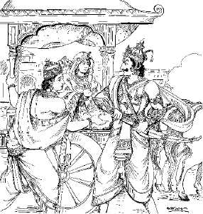
वसुदेवजी कंसराजाको समझाते हैं—क्या करते हो? ये आपकी छोटी बहन है, इसको मारते हो—यह उचित नहीं है।
जिस घरमें पुरुष स्त्रीको मारता है, उस घरमें दरिद्रता आती है। स्त्री घरकी लक्ष्मी है। स्त्री अपराध करे तो भी पुरुष स्त्रीको मारे नहीं, बोलना छोड़ दे, एक अक्षर बोले ही नहीं। ‘यत्र नार्यस्तु पूज्यन्ते रमन्ते तत्र देवता:’ ये तो आपकी छोटी बहन है। इसको आप मारते हैं। अरे, जिसका जन्म हुआ है, उसको मरना ही पड़ता है। मरनेके लिये ही जन्म होता है। मानव मरता है, वह फिरसे जन्म लेनेके लिये ही मरता है। जन्म और मरणकी घटमाला जल्दी नहीं छूटती है। जन्म लेनेके लिये ही मरण है, मरनेके लिये फिरसे जन्म है। महापुरुष मरणका निवारण नहीं करते हैं। मरणका निवारण अशक्य है। मरणको सुधारनेका प्रयत्न करो। जिसका मरण मंगलमय होता है, उसका फिरसे जन्म नहीं होता है। जिसका मरण बिगड़ता है, उसीका फिरसे जन्म होता है। मरणको मंगलमय बनाओ। मरण बिगड़ता है वैरसे। मरण बिगड़ता है वासनासे। विवेकसे मनको समझाओ। वासनाका विनाश करो। वैरका विनाश करो। किसी भी जीवके साथ वैर हुआ हो तो एक-दो बार उसके घरमें जाओ—हाथ जोड़ो, वैरका विनाश करो। वैरसे मरण बिगड़ता है। वासनासे मरण बिगड़ता है। आप हाथ जोड़ो, क्षमा माँगो तो भी वह वैर करे तो उसका पाप उसके माथे जायगा। एक-दो बार उसके घरमें जाओ, वन्दन करो। वैर रखना अच्छा नहीं है। वैरका विनाश करो, वासनाका विनाश करो।
मनको बार-बार समझाओ, संसारमें ऐसा कोई सुख नहीं है, जो अनेक बार मैंने भोगा न हो। संसारका अनेक सुख अनेक बार भोगा है। भोगसे आजतक शान्ति मिली नहीं है। अब सुख भोगनेसे क्या शान्ति मिलेगी? भोगमें क्षणिक सुख है, त्यागमें अनन्त सुख है। अब कोई सुख भोगना नहीं है। अब मेरा जीवन केवल भगवान्के लिये है।
मनको बार-बार समझाओ। विवेकसे वासनाका विनाश करो, मरण मंगलमय होगा। जिसका मरण मंगलमय हुआ, वह किसी माँके पेटमें जाता नहीं है, उसका फिरसे जन्म होता नहीं है। मरणका निवारण अशक्य है। मरणको सुधारनेका प्रयत्न करो। वसुदेवजी कंस राजाको सुन्दर उपदेश करते हैं।
कंसराजाने कहा—यह सब ज्ञान अपने ही पास रखो। आपके ज्ञानसे मुझे शान्ति नहीं है। मैंने सुना है, आकाशवाणीने मुझे कहा है—देवकीका आठवाँ गर्भ ही मेरा काल है।
जो अति कामी है, जिसे अतिशय क्रोध आता है, वह जीते-जी मरे हुएके समान है।
जिसकी अपकीरति छाइ रही,
वह यमलोक गयो न गयो।
तुलसी जब मन शुद्ध भयो,
तब तीरथ-तीर गयो न गयो॥
सबसे बड़ा तीर्थ कौन है? अपने मनको सर्वकाल शुद्ध रखना ही बड़ा तीर्थ है। वसुदेवजीने कहा है—यह तेरी छोटी बहन है, इसको तू मारेगा तो तेरी अपकीर्ति होगी। इसको मारना नहीं। मैं तुम्हें वचन देता हूँ, देवकीके यहाँ जितने पुत्र होंगे, सभी मैं तुम्हें दे दूँगा।
कंसको यह विचार अच्छा लगा। देवकीको मारनेसे मेरी अपकीर्ति होगी, देवकीके बालकोंको मैं मारूॅँगा। देवकीको छोड़ दिया है।
कंसद्वारा देवकीके छ: बालकोंकी हत्या
वसुदेव-देवकी घरमें गये हैं। गर्भ रहा है, बालकका जन्म हुआ है। वसुदेवजीको याद आता है कि कंसको मैंने वचन दिया है—देवकीके बालक मैं तुम्हें दूँगा। वसुदेवजी अन्दर जाते हैं। बालक बहुत सुन्दर है। देवकीमाँ रोने लगी है—मेरा भाई तो कालके जैसा है, मेरे बालकको मार डालेगा। वसुदेवजीने कहा—मुझे पाप करना नहीं है। मैंने वचन दिया है, विश्वासघात महापाप है। कुछ भी हो, मैं पाप नहीं करूँगा। मैंने उसको वचन दिया है। देवकीजीको दु:ख होता है। वसुदेवजी बालकको कंसके दरबारमें ले गये हैं। कंसके समक्ष बालकको उन्होंने रखा है। बालकको देख करके कंसका हृदय पिघलता है।
कंस विचार करता है—वसुदेवजीको पापका कितना भय लगता है! मुझे वचन दिया था, वचन सत्य करनेके लिये बालकको ले आये हैं। वसुदेवजीका थोड़ा सत्संग हुआ, कंसकी बुद्धि सुधरती है। कंसराजाने विचार किया—वसुदेवजी पापका कितना भय रखते हैं! मुझे वचन दिया था, उसे सत्य करनेके लिये अपना बालक मुझको अर्पण करनेके लिये ले आये हैं। आकाशवाणीने तो मुझे ऐसा कहा है कि देवकीका जो आठवाँ पुत्र होगा, वह मेरा काल होगा। यह तो प्रथम पुत्र है, इसको मारनेसे क्या लाभ है? मुझे बालहत्याका पाप लगेगा।
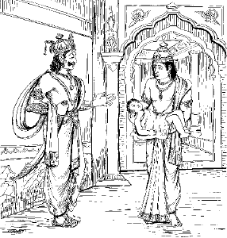
कंसराजाको दया आती है। वसुदेवजीके सत्संगसे बुद्धि सुधरती है—इस बालकको मारनेसे मुझे बहुत पाप लगेगा। मुझे पाप करना नहीं है। उसने वसुदेवजीसे कहा—बालकको घरमें ले जाओ, सात पुत्र अपने घरमें रखो। मैंने आपमें विश्वास रखा है, विश्वासघात करना नहीं। आठवाँ जो पुत्र होगा, वह मुझे दे देना, वही मेरा काल है, उसको मैं मारूँगा। इस बालकको मारनेसे क्या लाभ है? सात बालक अपने घरमें भले ही रखो।
वसुदेवजी प्रसन्न हुए हैं। बालकको उठाया है, घरमें ले गये हैं। देवकीजीको प्रसन्नता हुई है—अब सात बालक जीवित रहेंगे, ऐसा लगता है। आठवाँ जो होगा, उसीको कंस मारनेवाला है।
भगवान्को कोई भी लीला करनी हो तो नारदजी महाराज समझ जाते हैं। नारदजीको भगवान्की प्रेरणा हुई है। नारदजीने विचार किया कि कंसकी बुद्धि सुधरेगी तो यह जल्दी मरेगा नहीं। यह ज्यादा पाप करे, तो जल्दी मर जायगा। नारदजी जहाँ जाते हैं, वहाँ कलह जगाते हैं। नारदजीके कलहमें समाजका कल्याण है। अनेक जीवोंको सुखी करनेके लिये नारदजी कलह जगाते हैं।
नारायण-नारायण कीर्तन करते हुए नारदजी कंसराजाके घरमें आये हैं। कंसराजाने स्वागत किया है। नारदजीसे पूछता है—कहाँसे आप आ रहे हैं? नारदजीने कहा—मैं स्वर्गमें गया था। स्वर्गमें देवोंकी सभा हुई थी। देवोंकी सब बातें मैं तुम्हें कहूँ, ये ठीक तो नहीं है। किंतु तुम्हारे लिये मेरे हृदयमें बहुत प्रेम है, इसीलिये मैं खास तुम्हें कहनेके लिये आया हूँ। ये सभी देव तुम्हें शत्रु समझते हैं। तू तो बड़ा भोला है। ये सब तेरे पीछे पड़े हैं। तू तो ऐसा सरल है कि तुझे शत्रुके ऊपर भी दया आती है। शत्रु दयाका पात्र नहीं होता है। शत्रुको साधारण समझना नहीं।
पापको साधारण मानना नहीं। मानव पाप करता है, पर कभी-कभी उसके मनमें खटकता है—ये अच्छा नहीं है, परिणाममें मैं दुखी हो जाऊँगा। फिर तो वह मनको समझाता है—दूसरे लोग बहुत-सा पाप करते हैं, उनसे तो मैं अच्छा हूँ। पापको कभी साधारण समझना नहीं। शत्रुको साधारण मानना नहीं। रोगको साधारण समझना नहीं। पाप, रोग और शत्रु तीनों समान हैं। तीनों दु:ख देनेवाले हैं। शत्रुमें तू दया-भाव रखता है—ये ठीक नहीं है। आकाशवाणीने तुम्हें क्या कहा?
कंस कहता है—आकाशवाणीने मुझे कहा है कि देवकीका जो आठवाँ गर्भ है, वह मेरा काल है। नारदजी समझाते हैं—अरे, देवोंकी भाषा गूढ़ार्थसे भरी हुई है। अँगूठेसे गिनती करो तो जो छोटी अँगुली है, वह पाँचवीं हो जाती है। छोटी अँगुलीसे गिनती करो तो अँगूठा पाँचवाँ हो जाता है। ये तो गिनती करनेवालेके मनपर आधारित है। आठवाँ जो होनेवाला है, उसीको हम प्रथम मानें, तो आज जो हुआ है, वह आठवाँ होगा या नहीं। अरे, देवोंकी भाषा गूढ़ार्थसे भरी हुई है। कोई भी बालक आठवाँ हो सकता है। कंसराजाने कहा—महाराज! तब एक-एक बालकको मैं मार डालूँ।
नारदजी बोलनेमें बड़े चतुर हैं। नारदजीने विचार किया—मैं कहूँ कि बालकको मार डालो, तो बाल-हत्याका पाप मेरे हिस्सेमें आ जायगा। वह मुझे भोगना पड़ेगा। नारदजीने कहा—मैं तुम्हें सावधान करनेके लिये आया था। अब मेरा सन्ध्या करनेका समय हो गया है। ‘जय श्रीमन्नारायण! मुझे सन्ध्या करनी है। नारायण-नारायण!!’ कहकर नारदजी चले गये।
कंसने विचार किया—सन्त कभी ऐसा नहीं बोलते हैं कि बालकको तू मार डाल। उनका कहनेका भावार्थ ऐसा ही था। मुझे समझना चाहिये, कोई भी बालक आठवाँ हो सकता है।
कंसराजाने हुकुम किया है—वसुदेव-देवकीको बुलाया है। माता-पिता देखते हैं—कंस बालकको मारता है। वसुदेव-देवकीको कारागृहमें रखा है। सम्पत्तिका नाश, सन्ततिका नाश! कोई अपराध नहीं है, हाथ-पैरमें बेड़ी हैं।
थोड़ा-सा विचार करें—जो भगवान्के माता-पिता होनेवाले हैं, उन्होंने कितना दु:ख सहन किया है। दु:ख सहन करके जो भक्ति करता है, उसको बहुत मीठा फल मिलता है। वसुदेव-देवकीको कारागृहमें अति दु:ख है। दु:खको जो सुख समझता है, वही भक्ति कर सकता है। दु:ख, दु:ख नहीं है, दु:ख सुख है। भगवान् ही जीवनमें दु:खके प्रसंग उत्पन्न करते हैं। दु:खमें जीव सावधान रहता है। दु:खमें भगवान्की शरणमें जानेकी इच्छा होती है।
वेदोंमें वर्णन आया है, भगवान् आनन्द-स्वरूप हैं—सत्यं ज्ञानमानन्दं ब्रह्म। आनन्द ही श्रीकृष्ण हैं। आनन्द किसको मिलता है? जो सुख और दु:खसे पर होता है, उसीको आनन्द मिलता है। बहुत-से लोग सुखको ही आनन्द समझते हैं। सुख और आनन्दमें बहुत अन्तर है। सुख उसको कहते हैं, जिसे भोगनेके बाद दु:ख आता ही है। संसारमें ऐसा कोई सुख नहीं है, जिसको भोगनेके बाद दु:ख आता न हो। सुखके पीछे ही दु:ख खड़ा है। सुख और दु:ख दोनों भाई हैं, साथमें ही रहते हैं। आनन्द और सुखमें बहुत अन्तर है। आनन्द उसको कहते हैं, जिसका अनुभव करनेके बाद कोई दु:ख आता ही नहीं है। आनन्द ही भगवान् हैं।
कितने ही ऋषि ऐसा वर्णन करते हैं कि ईश्वरमें आनन्द है। ईश्वरमें आनन्द है—ऐसा जो मानते हैं, उनके सिद्धान्तमें आनन्द और ईश्वर दो तत्त्व भिन्न हो जाते हैं। व्यासनारायणका सिद्धान्त है—आनन्द ही ईश्वर है। व्यास महर्षिका ब्रह्मसूत्र है—‘आनन्दमयोऽभ्यासाद्’ आनन्दमय: आनन्दप्रचुर: प्राचुर्यार्थे मयट्। आनन्द ही भगवान् हैं। आनन्द, ब्रह्म, परमात्मा, श्रीकृष्ण—एक ही तत्त्वके अनेक नाम हैं, तत्त्व एक है। आनन्द किसको मिलता है? जीव जब सुख-दु:खसे पर होता है, तब आनन्द मिलता है। सुख-दु:खसे परे होनेका क्या अर्थ है? संसारमें सुख मिले तो सुखको दु:ख समझ करके भक्ति करो—भगवान्ने सच्चा सुख मुझको नहीं दिया, भगवान्ने ये खोटा सुख मुझे दिया है। जीवनमें सुख मिले तो बहुत प्रसन्न होना नहीं। संसारका सुख दो-चार मिनटसे ज्यादा टिकता ही नहीं है। संसार क्षण-क्षणमें बदलता है। संसारका सुख क्षणिक है। संसारमें सुख मिले तो प्रसन्न होना नहीं। सुखको दु:ख मानो। सुखको दु:ख समझ करके भक्ति करो, आपको आनन्द मिलेगा। आनन्द उसको मिलता है, जो सुख-दु:खसे पर हो जाता है।
आपके जीवनमें कोई दु:खका प्रसंग आये तो घबराना नहीं। दु:ख आपके पापका नाश करनेके लिये आया है। दु:ख आपको सुख देनेके लिये आया है। दु:ख आपके घरमें रहनेके लिये नहीं आया है, दु:ख जानेके लिये आया है। जीवनमें कैसा भी दु:खका प्रसंग आये, दु:खको सुख समझ करके भक्ति करो। जो सुखको दु:ख मानता है और दु:खको सुख समझ करके भक्ति करता है, उसको आनन्द मिलता है। आनन्द उसीको मिलता है, जो सुख-दु:खसे पर हो जाता है।
वसुदेव-देवकीको कारागृहमें अति दु:ख है। दु:खको वे सुख मानते हैं। भगवान्ने जो किया है, अच्छा ही किया है। भगवान्ने सतत भक्ति करनेके लिये हमको कैदमें रखा है। घरमें कुछ प्रवृत्ति करनी ही पड़ती है। घरमें सतत भक्ति नहीं होती है। घरमें रहनेसे बहुत-से लोग मिलनेके लिये भी आते हैं, भक्तिमें विघ्न करते हैं। कारागृहमें यहाँ कोई मिलनेके लिये नहीं आता है। सर्वकाल भक्ति करनेके लिये भगवान्ने हमको कैदमें रखा है। कारागृहमें अति दु:ख है, दु:खको सुख मानते हैं। कारागृहमें हृदयको जलाते नहीं हैं, दिनभर भक्ति करनेके लिये भगवान्ने कैदमें रखा है। मेरे प्रभुने जो किया है, अच्छा ही किया है।
सुखमें भगवान्की कृपा समझे, वह साधारण वैष्णव है। भगवान्की मुझपर कृपा है, भगवान् निष्ठुर नहीं हैं, भगवान् बड़े दयालु हैं। दु:खमें जो भगवान्की कृपा समझता है, वही सच्चा वैष्णव है। सुखमें जो कृपा मानता है, वह साधारण वैष्णव है। वसुदेव-देवकीको कारागृहमें अति दु:ख है, फिर भी मन शान्त है, भगवान्ने जो किया है, मेरे कल्याणके लिये ही किया है। मेरे भगवान् मंगलमय हैं, प्रभुकी इच्छा भी मंगलमय है। मेरा कल्याण करनेके लिये लीला है। कारागृहमें—अति दु:खमें मनको जलाते नहीं हैं, मनको शान्त रखा है। सतत भक्ति करते हैं।
बलरामजीका प्राकट्य
छ: बालक कंसराजाने मार डाले हैं। देवकीजीको सातवाँ गर्भ रहा है। इस गर्भमें बलरामजी आये हैं। भगवान्ने योगमायाको आज्ञा दी है—बलरामजीको वहाँसे उठाना और रोहिणीजीके पेटमें रख देना। भगवान् जगत्में आते हैं, तब भगवान् भी मायाको ले करके आते हैं। संसार मायामय है। संसारमें कोई भी काम मायाके बिना नहीं होता है। मायाका उपयोग करो, मायाके अधीन मत बनो। जीव जब मायाका गुलाम बनता है, तब माया उसको दु:ख देती है। मैं भगवान्का दास हूँ, मैं मायाका दास नहीं हूँ।
भगवान् भी जब जगत्में आते हैं, तब मायाको ले करके आते हैं। भगवान्ने मायाको कहा है—मेरे दो काम तुम्हें करने हैं। बलरामजीको देवकीके गर्भसे उठा करके रोहिणीजीके पेटमें रख देना। यशोदाजीके यहाँ कन्या-रूपमें तुम्हारा जन्म होगा। मेरे पिता वसुदेवजी मुझे लेकर गोकुलमें आयेंगे और तुम्हें लेकर मथुरामें जायँगे। कंस तुम्हें मारनेके लिये आयेगा, उसके हाथसे निकल जाना। कंस तुम्हें क्या मार सकता है, मेरे तू दो काम करेगी तो दो महीनोंमें तेरी पूजा होगी। भगवान्ने योगमायाको ऐसी आज्ञा दी है। भगवान् कभी मायाके अधीन नहीं होते हैं। जीव मायाके अधीन हो जाता है, इसीलिये दुखी होता है।
योगमायाने बलरामजीको देवकीजीके पेटमेंसे उठाया है और रोहिणीजीके पेटमें रख दिया है। रोहिणीजीके पेटमें गर्भ रहा है। नव मास परिपूर्ण हुए हैं। परम पवित्र भाद्रपद मास, शुक्लपक्ष, षष्ठी तिथि, मध्याह्न-कालमें श्रीबलरामजी महाराजकी जय! दाऊ भइया प्रकट हुए हैं। भाद्रपद शुद्ध षष्ठीके दिन उनका प्राकटॺ हुआ है। बलरामजी बड़े बलवान् हैं। बलरामजी गोरे हैं, तेजस्वी हैं। बलरामजी महाराज आँख बन्द रखते हैं। बलरामजीने विचार किया—श्रीकृष्णके प्रकट होनेके बाद ही मैं आँख खोलूँगा, भगवान्के लिये आँख खोलूँगा। आँख खोलना ही नहीं है, भगवान्का दर्शन करूँगा, फिर जगत्को आँख दूँगा।
आप जिसको आँख देते हो, वह आपके मनमें आ जाता है। आँख देनेसे प्रथम थोड़ा विचार करो—मैं किसको आँख देता हूँ, कैसे भावसे आँख देता हूँ, मेरे मनमें कैसा भाव है? जिसको आप आँख देते हैं, उसको मन देना ही पड़ेगा। बलरामजीने निश्चय किया—श्रीकृष्णको आँखसे अन्दर ले जाऊँगा, श्रीकृष्णको हृदयमें स्थिर करके फिर जगत्को देखूँगा। बलरामजीने ऐसा निश्चय किया है, आँख खोलते ही नहीं हैं।
यशोदामाँको भय लगता है। यह बालक सुन्दर तो बहुत है, पर आँख खोलता नहीं है। इसको किसीकी दृष्टि लग गयी है। यशोदामाँने शाण्डिल्यऋषिकी धर्मपत्नी पूर्णमासीको बुलाया है और कहा है—‘इसकी नजर उतारो। यह बालक सुन्दर है, आँख खोलता नहीं है।’ पूर्णमासी आयी हैं। पूर्णमासीने बलरामजीके हाथकी, पैरकी रेखाएँ देखी हैं। पूर्णमासीने कहा—यशोदा! यह बालक बड़ा भाग्यशाली है। इसके लक्षण बहुत अच्छे हैं। यशोदा! मुझे ऐसा लगता है कि यह आँख बन्द करके किसीका ध्यान कर रहा है। यशोदा! अब तेरे यहाँ पुत्र होना ही चाहिये।
यशोदाजीने कहा—अब तो मैंने आशा छोड़ दी है। आजतक बहुत प्रयत्न किये, सफलता मिली नहीं। मैंने तो ऐसा मान लिया है कि गोकुल गाँवमें जितने बालक हैं, सभी मेरे ही बालक हैं। अब मुझे आशा नहीं है।
पूर्णमासीने कहा—मइया! ऐसा नहीं है। यह बालक बड़ा भाग्यशाली है। बलरामजी शब्दब्रह्म हैं। शब्दब्रह्म जहाँ प्रकट होता है, बादमें परब्रह्म वहाँ आता है। श्रीकृष्ण आयेंगे, ऐसा लगता है।
छोटा-सा गोकुल गाँव है। नन्दबाबाका कोई शत्रु नहीं है। सभीके साथ नन्दजीका प्रेम है। नन्द शब्दका अर्थ होता है, जो दूसरोंको आनन्द देता है। मधुर वाणी, विनय, सरल स्वभाव, उदारता सभी सद्गुणोंसे जो दूसरोंको आनन्द देता है, वही नन्द है। मेरे गाँवमें कोई भूखा न रहे, मेरे गाँवमें किसीसे झगड़ा न हो। नन्दबाबाका कोई शत्रु नहीं है। जो सबको आनन्द देता है, उसीको नन्द कहते हैं। सभीका आशीर्वाद नन्दबाबाको मिला है।
यशोदा शब्दका अर्थ होता है, जो दूसरोंको यश दे। यशोदा मइया ऐसी भोली है, सरल है कि कोई आता है तो वन्दन करती है—आपके आशीर्वादसे बालक हुआ है, मैं तो नामकी माँ हूँ। ये आपका बालक है।
सभीको ऐसा हुआ है—कन्हैया मेरा पुत्र है। किसीके घरमें बालक हो तो गाँवके सभी लोग नाचते हैं? नन्दबाबाके यहाँ बालकृष्ण जब प्रकट हुए हैं तब गोकुल गाँवके सभी जीव नाचते हैं। सभीको ऐसा हुआ कि कन्हैया मेरा ही बालक है। विधवा, सधवा, गरीब, श्रीमान्—सभीको आनन्द हुआ है। इसीलिये सभी आनन्दमें नाचते हैं। नन्द-यशोदाको गोकुलके सभी व्रजवासी आशीर्वाद देते हैं।
शाण्डिल्यऋषि नन्दबाबाके कुलपुरोहित हैं। शाण्डिल्यऋषिको व्रजवासियोंने कहा नन्दजीका हमारे ऊपर बहुत प्रेम है। गोकुलमें हम सब लोग बहुुत सुखी हैं। बस, एक ही बड़ा दु:ख है कि नन्दबाबाके यहाँ पुत्र नहीं है, कोई अनुष्ठान करो कि नन्दबाबाके यहाँ पुत्र हो।
शाण्डिल्यऋषिने कहा—आज मुझे आप कहते हैं; बारह वर्ष हो गये, सन्तान-गोपाल-मन्त्रका मैं रोज जप करता हूँ और उसका पुण्य नन्दबाबाको देता हूँ। हाथ जोड़ करके नारायणकी बहुत प्रेमसे प्रार्थना करता हूँ—हे नारायण! कृपा करो, नन्दबाबाके यहाँ एक बालक हो। मेरी श्रद्धा है, मेरे नारायण कभी सुनेंगे, बालक होगा। नन्दजीकी जन्मपत्रीमें पुत्रका योग तो है, यह मंगल बहुत विलम्ब कर रहा है।
व्रजवासियोंने शाण्डिल्यऋषिसे कहा है—महाराज! आप हमको कोई आज्ञा दें, मंगलके लिये हम क्या करें, ताकि बालक जल्दी हो।
शाण्डिल्यऋषिने कहा है—गोकुल गाँवके सभी व्रजवासी निर्जल एकादशी करें। रात्रिमें नारायण-नारायण-नारायण कीर्तन करते हुए जागरण करें। उसका पुण्य नन्दबाबाको दें तो बालक जल्दी होगा।
भाद्रपद शुद्ध षष्ठीके दिन दाऊ भइया आये हैं। भाद्रपद शुक्ला एकादशीसे सभी व्रजवासी निर्जल व्रत करते हैं। तेईस एकादशीका निर्जल व्रत होनेके बाद श्रीकृष्ण प्रकट होते हैं। छोटे-छोटे बालक निर्जल एकादशी व्रत करने लगे हैं। नन्दबाबाको अच्छा लगता नहीं है—बेटा! तू आठ वर्षका है, फलाहार करना चाहिये। बालक बोलते हैं बाबा! आपके घरमें बालक हो..., मुझे कन्हैयाके साथ खेलना है। आपके घरमें बालक हो, इसीलिये मैं व्रत करता हूँ।
कभी-कभी ऐसा हो जाता है कि बालक जो बोलता है, वह सत्य हो जाता है। छोटे-छोटे बालक नन्दबाबा को, यशोदामाताको आशीर्वाद देते थे, बालकृष्ण प्रकट हों, मैं इसीलिये व्रत करता हूँ। बालकृष्ण जब प्रकट हुए हैं, तब बालकोंको ऐसा लगा कि मैंने व्रत किया, इसीलिये कन्हैया आया है, कन्हैया मेरा है। गोपियोंको ऐसा लगता है—अनेक देवोंकी मैंने पूजा की, अनेक देवोंकी मैंने मनौती रखी, तब श्रीकृष्ण आये हैं, कन्हैया मेरा है। ब्राह्मण ऐसा मानते हैं—हमने गोपाल-मन्त्रका जप किया, इसीलिये कन्हैया हुआ है। सभीको ऐसा लगता है—कन्हैया मेरा है। तेईस एकादशी निर्जल करते हैं।
जिस घरमें सभी जीव एकादशी करते हैं, जिस घरमें गरीबकी पूजा होती है, जिस घरमें गायकी सेवा होती है, जिस घरमें सभी प्रेमसे भगवान्के नामका कीर्तन करते हैं, बाल-कृष्णलाल उस घरमें आते हैं।
प्रकट हुए मथुरामें, आनन्द दिया है व्रजवासियोंको—गोकुलमें आये हैं। सभी व्रजवासी बहुत पढ़े-लिखे नहीं हैं। कपट करके पैसा कमानेकी उनमें अक्ल ही नहीं है, गरीब हैं। गाय सभीको प्राणसे प्यारी लगती है। सभी गायकी सेवा करते हैं। सभी ऐसे उदार हैं कि आँगनमें कोई गरीब आये, साधु आये, ब्राह्मण आये, तो बहुत प्रेमसे उसकी पूजा करते हैं। जिस घरमें गरीबकी पूजा होती है, जिस घरमें गायकी सेवा होती है, जिस घरमें सभी प्रेमसे भगवान्के नामका कीर्तन करते हैं, उस घरमें बालकृष्णलाल खेलते हैं। व्रजवासी नन्द-बाबाको, यशोदामाताको आशीर्वाद देते हैं—बालक हो।
यशोदाजीके पेटमें गर्भ रहा है। उसी समय देवकीजी भी सगर्भा हुई हैं। भगवान् माँके पेटसे बाहर नहीं आये हैं, भगवान् बाहरसे ही प्रकट हुए हैं—देवकीजीके हृदयमें प्रवेश किया है। आजतक देवकी माताको कंसराजाका बहुत भय लगता था। भगवान् हृदयमें आये, तभीसे देवकीजी निर्भय हो गयीं। जरा भी भय नहीं लगता, अति शान्त हैं। आनन्दमें सतत नारायणका ध्यान करती हैं। कंस देखता है—अब मेरा काल इसके पेटमें आया है, ऐसा लगता है। इसके मुखपर तेज बहुत दिखता है। कंसराजाने अपने सेवकोंको कहा है—सावधान रहना, अब मेरा काल आनेवाला है। सेवकोंने कहा है—आप घबराना नहीं, चिन्ता नहीं करना। हम रात्रिमें खड़े रहते हैं, बैठनेसे कभी आँख लग भी सकती है। बालकका जन्म होते ही हम आपको खबर कर देंगे।
गर्भ-स्तुति
माता देवकीके हृदयमें विराजमान श्रीकृष्णकी देव-गन्धर्व स्तुति करते हैं—
सत्यव्रतं सत्यपरं त्रिसत्यं
सत्यस्य योनिं निहितं च सत्ये।
सत्यस्य सत्यमृतसत्यनेत्रं
सत्यात्मकं त्वां शरणं प्रपन्ना:॥
(श्रीमद्भा० १०।२। २६)
हमको भगवान्ने वरदान दिया है, वह वरदान सत्य करनेके लिये भगवान् अब प्रकट होनेवाले हैं। पृथ्वी भाग्यशाली है—श्रीकृष्ण-चरणका स्पर्श होगा।
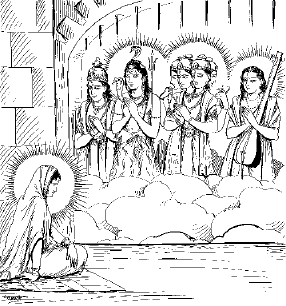
भगवान्की सेवा-स्मरणमें जो तन्मय होते हैं, संसारसागरको तर जाते हैं। कितने ही जीव ज्ञानके अभिमानमें सेवा-पूजाको गौण समझते हैं—भक्ति छोड़ते हैं। ऐसे ज्ञानी पुरुषका पतन हो जाता है। जिसको भगवान्के स्वरूपका बराबर ज्ञान हुआ है, वह भगवान्को एक क्षणके लिये भी छोड़ता नहीं। वह भगवान्की सेवा-पूजा किये बिना रह नहीं सकता। ज्ञानी बनना बड़ा कठिन नहीं है, प्रभुप्रेमी बनना बड़ा कठिन है। जिसको भगवान्के स्वरूपका ज्ञान हुआ है, वह जगत्के साथ प्रेम नहीं करता, वह भगवान्के साथ प्रेम करता है। भगवान्को प्रकट होना पड़ता है। देवोंने देवकीजीको आश्वासन दिया है—अब भगवान् प्रकट होनेवाले हैं, चिन्ता करना नहीं। नौ मास परिपूर्ण हुए हैं। प्रभुके प्राकटॺका समय हुआ है—
अथ सर्वगुणोपेत: काल: परमशोभन:।
यर्ह्येवाजनजन्मर्क्षं शान्तर्क्षग्रहतारकम्॥
(श्रीमद्भा० १०।३। १)
अन्त:करण अति शुद्ध होता है, तब भगवान्का अवतार अन्दर भी होता है। आज श्रीकृष्ण अन्दर नहीं, बाहर प्रकट होनेवाले हैं। अष्टधा प्रकृतिकी शुद्धि बतायी है। आज काल भी कोमल हो गया है। कालको लोग क्रूर मानते हैं। काल सभीको मारता है। कालको किसीपर दया नहीं आती है, इसीलिये लोग कालको क्रूर मानते हैं। आज काल कोमल बन गया है, कालके मालिक श्रीकृष्ण हैं। श्रीकृष्ण कालके अधीन नहीं हैं। काल आज कोमल बना है, इसका कारण यही हुआ है कि कालने विचार किया है—मेरे मालिक मुझे कितना मान देते हैं, भगवान् मेरे अधीन-जैसे होनेवाले हैं। भगवान् कालके अधीन नहीं हैं, कालके अधीन होने-जैसी लीला भगवान् करनेवाले हैं।
भगवान् श्रीकृष्णका प्राकट्य
दसों दिशाएँ प्रसन्न हुई हैं। एक-एक दिशाके मालिक एक-एक देव हैं। कंसने देवोंको कैदमें रखा था। श्रीकृष्ण अब प्रकट होनेवाले हैं। दिशाओंको आनन्द हुआ है—कंसको मारेंगे, हमारे पति घरमें आयेंगे।
मेघ प्रसन्न हैं। श्रीकृष्णका श्रीअंग मेघश्याम है। मेघ विचार करते हैं—मैं श्रीकृष्णका मित्र हूँ। कन्हैयाका रंग और मेरा रंग एक-सरीखा है। आज मेघोंको आनन्द हुआ है। मेघ गड़-गड़-गड़-गड़ गर्जना करने लगे हैं।
मध्यरात्रिके समयमें कमल नहीं खिलते हैं। आज भगवान् प्रकट होनेवाले हैं—मध्यरात्रिमें कमल खिल गये हैं। जगत् गाढ़ निद्रामें है। जगत्में दो जीव जागते हैं—वसुदेव और देवकी। जो सोया हुआ है, उसको संसार मिलता है; जो जागता है, उसको भगवान् मिलते हैं। जो सावधान हो करके सर्वकाल भक्ति करता है, वही जागता है। जो संसार-सुखमें फँसा हुआ है, वह सोया हुआ है। जो सोया है, उसको संसार मिलता है। जगत्में दो जीव जागते थे—वसुदेव और देवकी। सम्पत्तिका नाश हुआ, सन्ततिका नाश हुआ—अति दु:खमें भी सतत भक्ति करते हैं। दर्शनकी तीव्र इच्छा है, एक बार दर्शन हो जाय। वैष्णव जब दर्शनके लिये अति आतुर हो जाते हैं—कब दर्शन होगा? कब भगवान्का अवतार होगा? परम पवित्र समय प्राप्त हुआ है—भाद्रपद मास, कृष्णपक्ष, अष्टमी तिथि, रोहिणी नक्षत्रका सुयोग है। मध्यरात्रिमें आकाशमें देवगण-गन्धर्वगण बाजा बजाते हैं, अप्सराएँ नाचती हैं—मंगलगीत गाती हैं। परम पवित्र अष्टमीकी मध्यरात्रिमें माता देवकीके सम्मुख चतुर्भुज रूपसे श्रीकृष्ण प्रकट हुए हैं। श्रीकृष्ण कन्हैयालालकी जय!
तमद्भुतं बालकमम्बुजेक्षणं
चतुर्भुजं शङ्खगदार्युदायुधम्।
श्रीवत्सलक्ष्मं गलशोभिकौस्तुभं
पीताम्बरं सान्द्रपयोदसौभगम्॥
(श्रीमद्भा० १०।३। ९)
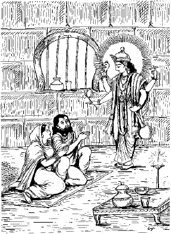
कारागृहमें वसुदेव-देवकीको चतुर्भुज नारायणका दर्शन हुआ है। मेरे लिये भगवान् कारागृहमें आये हैं। शरीरमें रोमांच है, आँखसे प्रेमाश्रु निकल रहे हैं। बार-बार निहारते हैं—अद्भुतं बालकम्! भगवान्ने वसुदेव-देवकीको आज्ञा दी है—बराबर दर्शन करो। दर्शनका अर्थ यह है कि आँखसे भगवान्को अन्दर ले जाओ। बाहर दर्शन करनेके बाद उसी स्वरूपका अन्दर दर्शन करो। जिसको अन्दर भगवान्का दर्शन होता है, आत्मस्वरूपमें जिसको नारायणका दर्शन होता है, उसको कभी वियोग नहीं होता है। जिसको बाहर दर्शन होता है, उसको भगवान्का वियोग भी होता है। बराबर दर्शन करो—आँखसे स्वरूपको अन्दर ले जाओ। अभी थोड़ा पाप बाकी है, ग्यारह वर्षतक ध्यान करो। ग्यारह वर्षके बाद मैं आऊँगा। अब मुझे जल्दी गोकुलमें पहुँचा दो, मुझे वहाँ जाना है, वहाँ लीला करूँगा। ग्यारह वर्षके बाद मैं आऊँगा। माता-पिताको अपने स्वरूपका भान कराया है। चतुर्भुज स्वरूप अन्तर्धान करते हैं और बालस्वरूप प्रकट किया है। देवकीमाँ गोदमें ले करके प्यार करती है। हृदयका प्रेम-रस बालकृष्णको अर्पण करती है, बार-बार निहारती है। वसुदेव-देवकी विचार करते हैं—अभी मेरा थोड़ा पाप बाकी है। मुझे आज्ञा हुई है—ग्यारह वर्षतक ध्यान करो। ...परमानन्द होता है।
वसुदेवजीका बालकृष्णको लेकर गोकुल जाना और योगमायारूपी कन्याको लेकर वापस आना
वसुदेवजीको थोड़ी शंका होती है—बालकृष्णको गोकुल कैसे पहुँचाऊँगा? टोकरीमें गादी रखी है, गादीमें बालकृष्णको रखा है। कंसके सेवक जागते हैं, मैं बाहर कैसे जाऊँ? देवकीजीने कहा—यह बालक कोई साधारण बालक नहीं है—अद्भुतं बालकम्। ब्रह्मादिक देवोंका भी यह पिता है। बालकृष्णको आप मस्तकके ऊपर रखो।
वसुदेवजी बालकृष्णको जब मस्तकपर रखते हैं, हाथ-पैरकी बेड़ियाँ टूट जाती हैं, कारागृहके दरवाजे खुल जाते हैं। भगवान्को जो मस्तकमें रखता है, उसका संसार-बन्धन टूट जाता है। योगमायाका जन्म हुआ है, जगत् गाढ़ निद्रामें है। सभीको गाढ़ निद्रा लगी है। कंसके सेवक निद्रामें हैं। बालकृष्णको मस्तकमें रखा है, वसुदेवजी बाहर आये हैं। मध्य रात्रिका समय है। मेघ झरमर-झरमर बरस रहे हैं। बलरामजी समझ गये हैं—श्रीकृष्ण प्रकट हो गये हैं। बलरामजी शेषस्वरूपसे दौड़ते हुए आये हैं। फनोंसे छत्र धारण किया है।
अभी तो यशोदामाँको दर्शन हुआ नहीं है, प्रथम दर्शन श्रीयमुना महारानी माताको हुआ है। मेरे मालिक आये हैं—श्रीयमुनाजीको अतिशय आनन्द हुआ है। यमुनाजीका जल बढ़ने लगा है। वसुदेवजीके गलेतक जल आया है। वसुदेवजी घबराये हैं। बालकृष्णलाल समझ गये हैं कि यमुनाजी आयी हैं। टोकरीसे चरणको बाहर निकाला है। श्रीयमुनाजी चरणमें कमलकी भेंट अर्पण करती हैं, चरणको स्पर्श किया है। यमुनाजीको अति आनन्द हुआ। अति आनन्दमें यमुनाजी स्तब्ध हुई हैं। आकाशमें देव-ऋषि दर्शन करते हैं। यमुनाजीके चरणोंमें वन्दन करते हैं। श्रीयमुना महारानीका जय-जयकार करते हैं।
अति आनन्दमें यमुनाजी स्तब्ध हो गयी हैं। जल धीरे-धीरे कम हुआ है। वसुदेवजी गोकुलमें नन्दबाबाके घरमें गये हैं। योगमायाका वहाँ जन्म हुआ था। योगमायाका ऐसा आवरण था कि यशोदाजीको भी गाढ़ निद्रा लग गयी। कुछ तो हुआ—बालक हुआ कि कन्या हुई, कुछ खबर नहीं पड़ी। वसुदेवजी अन्दर गये हैं। यशोदाजीकी गादीमें बालकृष्णको रखा है।
बालकृष्णको बार-बार निहारते हैं। विचार करते हैं—मेरा पाप कैसा है, परमात्माको मैं दूसरेको देता हूँ और मायाको अपने घरमें ले जा रहा हूँ!
भगवान्की आज्ञाका पालन करनेमें ही जीवका कल्याण है। योगमायाको ले करके वसुदेवजी मथुरामें आये हैं। कारागृहमें जैसे ही प्रवेश करते हैं, हाथ-पैरमें बेड़ियाँ आ जाती हैं, दरवाजे बन्द हो जाते हैं।
ब्रह्म-सम्बन्धको टिकाना चाहिये। जो ब्रह्म-सम्बन्धको नहीं टिका पाता, जो मायाके साथ सम्बन्ध करता है, उसके हाथ-पैरमें फिरसे हथकड़ी-बेड़ी आ जाती हैं। ब्रह्म-सम्बन्ध करना बड़ा कठिन नहीं है, ब्रह्म-सम्बन्धको टिकाना बड़ा कठिन है।
योगमाया रोने लगी है। कंसको खबर मिली है—बालकका जन्म हुआ है। कंस दौड़ता हुआ आया है। उसने बराबर देखा भी नहीं कि ये कन्या है या पुत्र। योगमायाके पैर पकड़ करके मारनेके लिये जाता है। मायाको कौन पकड़ सकता है? उसके हाथसे निकल गयी है। कंसके मस्तकपर जोरसे लात मारी है। अष्टभुजामातुकी जय! भद्रकाली माँ अन्तरिक्षमें प्रकट हुई हैं। कंसको कहा है—मूर्ख! तुम्हें अक्ल नहीं है, बच्चोंको मारता है, तेरे कालका जन्म कभीका हो चुका है। ये तो बड़ी देवी है! ‘मेरे कालका जन्म हो चुका है’ ऐसा कहती है! कंस घबराया है—आकाशवाणीने मुझे कहा था कि देवकीका आठवाँ गर्भ मेरा काल है। ये तो देवी है! जमाना बदल गया है, अब आकाशवाणी भी झूठ बोलने लगी है! मैंने आकाशवाणीमें विश्वास रखा था, मेरी भूल हो गयी।
कंस वसुदेव-देवकीको वन्दन करता है। मैंने आपके बालक नहीं मारे हैं, मैंने अपने ही बालकोंको मारा है। मुझसे भूल हो गयी है। मैं क्षमा माँगता हूँ। आपके बालकोंका आयुष्य कम होगा, इसीलिये मेरी बुद्धि बिगड़ गयी थी। आत्मा कभी मरता नहीं है, शरीर किसीका कायम रहता नहीं है। आत्मज्ञानकी बातें करने लगा है। वसुदेव-देवकीको वन्दन करके, क्षमा माँग करके कंस घरमें चला जाता है।
नन्द-महोत्सव
अब नन्द-महोत्सवकी कथा है। अति मधुर कथा है। भागवतके श्लोक हैं अठारह हजार। नन्द-महोत्सवकी कथा श्रीशुकदेवजी महाराजने अठारह श्लोकोंमें कही है। सभी भागवतका सार इन अठारह श्लोकोंमें भर दिया है—
नन्दस्त्वात्मज उत्पन्ने जाताह्लादो महामना:।
आहूय विप्रान् वेदज्ञान् स्नात: शुचिरलङ्कृत:॥
(श्रीमद्भा० १०।५।१)
जन्माष्टमीकी रात्रिमें बारह बजेतक नन्दबाबाने जागरण किया है। व्रजवासी आये हैं, सभी प्रतीक्षा करते हैं आनन्दकी वार्ता कब आती है? प्रभुके प्राकटॺका समय हुआ है। नन्दबाबाके कुलगुरु शाण्डिल्यऋषि हैं—महान् ज्ञानी भक्त हैं। शाण्डिल्यऋषिको भगवान्की प्रेरणा हुई है। शाण्डिल्यऋषि समझ गये हैं, अब भगवान् प्रकट होनेवाले हैं। शाण्डिल्यऋषिने नन्दबाबाको कहा है—आप जागते हो तो सब लोग जागते हैं। अब जागनेकी जरूरत नहीं है, सो जाओ। प्रात:कालमें हम आनन्दकी वार्ता सुनेंगे।
पुरोहितजीकी ऐसी आज्ञा हुई, तब नन्दजी सोनेके लिये गये हैं। गादीमें नन्दजी जहाँ आँख बन्द करते हैं, उसी समय योगमायाका आवरण हुआ है—गाढ़ निद्रा लगी है। वसुदेवजी बालकृष्णलालको ले करके जब नन्दबाबाके घरमें आये हैं—बालकृष्ण नन्दजीके घरमें जब आये हैं, उस समय नन्दबाबाको एक सुन्दर स्वप्न दिखता है। स्वप्नमें नन्दजीने देखा है, मैं गायोंकी पूजा करता हूँ, मैं गायोंका दान दे रहा हूँ। सभी मुझे आशीर्वाद देते हैं। नन्दजीने देखा है—यशोदाजीकी गोदमें अति सुन्दर एक बालक खेलता है। बालकृष्णलालका दर्शन हुआ है, नन्दजी जागते हैं।
नन्दबाबाने विचार किया—रात्रिमें बारह बजेतक मैं पुत्रका चिन्तन करता था, इसीलिये मुझे स्वप्नमें बालकका दर्शन हुआ है। मैंने स्वप्नमें यशोदाकी गोदमें जो बालक देखा है, ऐसा तो जगत्में हुआ ही नहीं है, होनेवाला भी नहीं है। उसका रंग मेरे नारायणके समान था। नारायणके समान ही उसकी आँख बहुत सुन्दर थी। मेरे भगवान्के जैसा ही वह लगता था। ऐसा पुत्र तो कहाँसे होगा! मैंने ऐसा कोई पुण्य किया नहीं है। ऐसा पुत्र होनेवाला नहीं है और न होगा, ऐसा लगता है। सभी व्रजवासियोंने मुझे आशीर्वाद दिया है। स्वप्नमें जो बालक देखा है, ऐसा बालक मेरे घरमें आये तो घरकी शोभा बढ़ जायगी। मेरे नारायणके जैसी उसकी आँख है, उसका रंग भी श्याम है। कैसा सुन्दर बालक है!
नन्दबाबाके घरमें अनेक नौकर हैं। नन्दबाबाको गाय प्राणसे प्यारी लगती है। गायोंकी सेवा स्वयं करते हैं। जागनेके बाद गौशालामें गये हैं। गायोंकी सेवा करते हैं। तनसे सेवा होती है, मन स्वप्नका चिन्तन करता है—कैसा सुन्दर बालक है! एक साधुने मुझे कहा था, जो बहुत प्रेमसे गायकी सेवा करता है, उसके वंशका विनाश नहीं होता। आजतक मैंने गायोंकी बहुत सेवा की है। मेरा वंश बढ़े, ऐसी कोई बहुत इच्छा नहीं है। किंतु, इन गायोंमें मेरा बहुत प्रेम है। मैं मृत्युकी शय्यामें पड़ूँगा, तब मुझे ये गायें बहुत याद आयेंगी। हे नारायण! मेरे लिये नहीं, गायोंके लिये एक बालक मुझे दे दो। मेरा बालक गायोंकी सेवा करेगा। नन्दबाबाको आज गायोंकी चिन्ता हुई है—मेरे पीछे गायोंकी सेवा कौन करेगा? बालकृष्णलाल घुटनोंके बल चलते हुए गौशालामें आये हैं, सुन्दर पीला झबला पहना है, सोनेका कंगन पहना है, बाजूबन्द हैं, कानोंमें कुण्डल हैं, मोरपिच्छका मुकुट है, आँखमें प्रेम भरा हुआ है। घुटनोंके बल चलते हुए वहाँ आये हैं।
जो बालक यशोदाकी गोदमें मैंने देखा था, यहाँ दिखता है। नन्दबाबाको गायोंकी चिन्ता हुई है। बालकृष्ण मस्तक हिलाते हैं—बाबा! मैं गायोंकी सेवा करूँगा। मुझे गाय बहुत प्यारी लगती है। मैं गायोंकी सेवा करनेके लिये आया हूँ।
नन्दबाबाको याद आती नहीं है—मैं जागता हूँ कि मैं सोया हुआ हूँ। ना ना, जाग रहा हूँ। अति आनन्दमें शरीर स्तब्ध हो जाता है। इच्छा तो होती है कि दौड़ता हुआ जाऊँ, बालकको उठा करके छातीके साथ लगाऊँ। दर्शनमें तन्मयता हुई है।
यशोदा मइया जागती हैं। माँने देखा है, चारों ओर प्रकाश है। यह बालक है कि कोई हीरा है—ऐसा प्रकाश मैंने कभी देखा नहीं। लालाका जन्म हुआ तो खबर पड़ी नहीं। यशोदा मइया बालकृष्णको गोदमें लेती है। एक-एक अंगको ध्यानसे निहारती हैं। चरण-कमल, कर-कमल, नेत्र-कमल, मुख-कमल! सुगन्ध आती है। कैसा दिखता है! मेरे लालको किसीकी दृष्टि न लगे। नारायण... नारायण... नारायण कीर्तन करती हुई यशोदा मइया नजर उतारती हैं।
नन्दबाबाकी एक छोटी बहन है। उनका नाम था सुनन्दा। सुनन्दाजी जागती हैं, अन्दर जाती हैं। सुनन्दाजीने देखा है—भाभीकी गोदमें अति सुन्दर बालक है। बालकृष्णका दर्शन करती हैं, अति आनन्द होता है। सुनन्दाजीने विचार किया—मेरा भाई रात्रिमें बारह बजेतक जागता था, अपने भाईको मैं खबर दूँगी। सुनन्दा जाती हैं, शय्यामें नन्दबाबा नहीं दिखते हैं। मेरा भाई गायोंकी सेवा करनेके लिये गया होगा... दौड़ती हुई सुनन्दा गौशालामें गयी हैं। नन्दजी बालकृष्णके दर्शनमें तन्मय हैं। उसी समय सुनन्दाजी दौड़ती हुई आयी हैं। सुनन्दाजीने कहा—अरे भइया! भइया!! लाला भयौ है।
बालकका जन्म हुआ है। आँखसे दर्शन करते हैं, कानसे सुनते हैं। अब श्रीकृष्णने हृदयमें प्रवेश किया है। आनन्द जब बहुत बढ़ जाता है तो वह आनन्द आँखसे बाहर आता है—आँखसे प्रेमाश्रु निकलते हैं। नन्दबाबा पूछते हैं—बालक कैसा है? सुनन्दाजी कहती हैं—कैसा है—यह कौन वर्णन करे, घरमें ठाकुरजी विराजमान हैं, नारायणभगवान्के जैसा ही बालक है। उसका रंग श्याम है। आँख बहुत सुन्दर हैं। भाई! तेरे भाग्यका उदय हुआ है। तुम स्नान करके जल्दी आ जाओ, मैं तेरी गोदमें बालकको दूूँगी।
व्रजवासी नन्दबाबाको यमुनाजीके किनारे ले गये हैं। श्रीयमुनाजीका वन्दन करके स्नान किया है। व्रजवासी नन्दबाबाको शृंगारते हैं। बाबा! आज बड़ा भारी उत्सव करना है। नन्दबाबाको आसनमें बैठाया है। शाण्डिल्य आदि ऋषि आये हैं। श्रीगणपतिमहाराजकी प्रथम पूजा करायी है। पुण्याहवाचन हुआ है। नान्दीश्राद्धमें पितरोंकी पूजा की है। शाण्डिल्य-ऋषिने नन्दबाबाको बताया है। हमारे धर्म-शास्त्रका ऐसा नियम है कि नालच्छेदन होनेके बाद वृद्धिका सूतक लगता है। अभी सूतक लगा नहीं है। दान देना चाहिये। वृद्धिका सूतक लग जाय, फिर तो आपके घरका पानी भी कोई ब्राह्मण नहीं लेगा। अभी सूतक लगा नहीं है, दान दो।
नन्दबाबा एक-एक ब्राह्मणको वन्दन करते हैं। वन्दन करके कहा है—इस वृद्धावस्थामें आप सभीके आशीर्वादसे मेरे यहाँ बालक हुआ है। दान देनेवाला मैं कौन हूँ? इस घरमें जो कुछ है, सभी आपका ही है। घरमें जायँ, जिसको जिस वस्तुकी जरूरत हो, सो ले जायँ। मैं दान देनेवाला कौन हूँ? आप अन्दर जाओ।
सुनन्दाजी दौड़ती आयी हैं, सुनन्दाजीने कहा है—भइया! भइया!! ऐसा नहीं, ये सब तो बालकको आशीर्वाद देनेके लिये आये हैं। इनके आशीर्वादसे हमारा बालक सुखी होनेवाला है। अन्नदान, वस्त्रदान, स्वर्णदान, गायोंका दान किया है। हाथीके जैसी हृष्ट-पुष्ट गायें हैं। बड़े-बड़े ऋषि गाय बन करके आये हैं। हजारों वर्ष तपश्चर्या करते हैं, बुद्धिसे ‘काम’ नहीं निकलता है, श्रीकृष्ण कृपा करें। ब्रह्मसम्बन्ध सिद्ध करनेके लिये सभी प्रकारका अभिमान छोड़ करके नन्दबाबाके घरमें गाय बन करके आये हैं। श्रीकृष्ण हमारी पीठके ऊपर हाथ रखेंगे, प्यार करेंगे, हमको वृन्दावनमें ले जायँगे। हमारा ब्रह्मसम्बन्ध सिद्ध होगा। ऋषिरूपा गायोंको खबर पड़ी है—बालकृष्ण प्रकट हुए हैं; गायें नाचती हैं।
नन्दबाबाको आश्चर्य होता है—मेरे यहाँ बालक हुआ है, गायोंको खबर पड़ी है! इतना उत्साह, इतना आनन्द गायोंमें मैंने कभी देखा नहीं है। गोपाल आया है—गायोंको आनन्द होता है।
नन्दबाबाने ब्राह्मणोंको गायोंका दान किया है। कितने ही ब्राह्मणोंको एक सौ आठ गायें दीं। किसीको दो सौ, पाँच सौ, हजार गाय दानमें दी हैं। एक भूदेव दौड़ते हुए आये हैं, नन्दबाबाको कहा है—बाबा! बाबा!! यह जो बालक हुआ है, मेरे आशीर्वादसे हुआ है। बाबा! तीन साल हो गये, आपके लिये मैं उपवास करता हूँ। मैंने तीन वर्ष हुए, अन्न खाया नहीं। मैं उपवास करके गोपाल-मन्त्रका जप करता हूँ। मेरे आशीर्वादसे यह पुत्र हुआ है। बाबा! मेरे इष्टदेव नारायण हैं। कल मैं जप करता था, तब मुझे सब खबर पड़ गयी। मेरे इष्टदेवकी मुझे आज्ञा है, इसीलिये मैं बोलता नहीं हूँ बाबा! आपका कन्हैया कौन है, आप नहीं जानते। मुझे आज्ञा है—एक अक्षर बोलना नहीं। इसीलिये मैं बोलता नहीं। तीन वर्षतक मैंने उपवास किया है। दूसरे ब्राह्मणोंसे मेरा सम्मान विशेष होना चाहिये।
नन्दबाबाका हृदय पिघलता है। ब्राह्मणने तीन वर्षतक भोजन नहीं किया! इसको मैं क्या दूँ? नन्दबाबाने उस ब्राह्मणको पाँच हजार गायें दानमें दी हैं। ब्राह्मणको आनन्द हुआ है। गायोंको ले करके घरमें आता है। उसका घर कोई बड़ा नहीं है, पाँच हजार गाय कहाँ रखे? कोठारमें गाय ले गया है, रसोईघरमें गायको ले जाता है, छतके ऊपर गाय ले जाता है। घरवाली जल भरनेके लिये गयी थी। उसका स्वभाव थोड़ा कड़क था। जल ले करके आयी है, उसने दूरसे देखा है—रसोईघरमें गाय दिखती है! उसको ठीक लगा नहीं, उसने कहा—बहुत लोभ करते हो। इतना लोभ करनेकी क्या जरूरत है? अपना घर कहाँ इतना बड़ा है, इतनी गायें क्यों लाये हो? ब्राह्मणने हाथ जोड़े हैं और कहा है—आज गुस्सा करना नहीं, आज आनन्दका दिन है। मेरे आशीर्वादसे बालक हुआ है। मुझे पाँच हजार गायें दानमें दी हैं। मैं जानता हूँ, घर कोई बड़ा नहीं है। मैंने ऐसा विचार किया है—एक हजार गायें साढ़ू भाईको दे दूँगा और दो हजार गाय मैं तेरे पीहरमें भेजनेवाला हूँ। ब्राह्मणीने कहा—सो तो ठीक है, पर और भी तो ब्राह्मण थे, इतनी गायें आपको कैसे मिलीं? ब्राह्मणने बताया—मेरे आशीर्वादसे बालक हुआ है।
ब्राह्मणीने जब सुना है कि यशोदाके यहाँ बालक हुआ है तो उसे अति आनन्द हुआ है। ब्राह्मणीके घरमें सात कन्याएँ थीं, एक भी पुत्र नहीं था। ब्राह्मणी यशोदाके यहाँ बैठनेके लिये जाती थी, हृदयसे आशीर्वाद देती थी। यशोदा! नारायणसे मैं रोज प्रार्थना करती हूँ—मुझे पुत्र देना नहीं, यशोदाको एक पुत्र देना। यशोदा! तेरे घरमें बालक हो तो उसे मैं अपना पुत्र मानूँगी।
ब्राह्मणीने विचार किया—अब मैं वहाँ जाऊँगी तो यशोदाजी मेरी पूजा करेंगी, मुझे बार-बार वन्दन करेंगी। मुझे तो ऐसा लगता है कि मेरी गोदमें वह बालकको देंगी और कहेंगी कि यह आपका ही बालक है। सात कन्याओंके बाद मुझे ही बालक हुआ है—कन्हैया मेरा ही बालक है। ब्राह्मणीको ऐसा आनन्द हुआ है कि वह आनन्दमें नाचती है।
शुकदेवजी महाराज कथा करते नहीं हैं—दर्शन करते हुए बोलते हैं।
गोपियोंको दर्शनकी बहुत आतुरता है। सुन्दर शृंगार किया है। बालकृष्णको भेंट देना है, वस्त्राभूषण ले करके गोपियाँ दौड़ती हुई आयी हैं। नन्दबाबाके आँगनमें भीड़ हो गयी है। प्रेमसे गोपियाँ दौड़ती हुई आयी हैं। आज गोपियाँ जब दौड़ती हुई आती हैं तो ऐसा लगता है, जैसे नवधा भक्ति भगवान्को मिलनेके लिये आ रही हैं। गोपियाँ दौड़ती हुई आती हैं।
आज आँखोंको वाचा आती है, आँखें बोलने लगी हैं। आँख बोलती हैं—दर्शनका आनन्द मुझे मिलनेवाला है, मैं भाग्यशाली हूँ। इतनेमें कान बोलने लगे हैं—श्रीकृष्णके प्राकटॺकी वार्ता मैंने सुनी है, मैं भाग्यशाली हूँ। अब तो कन्हैया बाँसुरी बजायेगा, मैं बाँसुरी सुनूँगा। संसार-व्यवहारकी बातें अब नहीं सुनना है। कान कहते हैं—हम भाग्यशाली हैं। इतनेमें हाथ बोलने लगे हैं—आपको तो दर्शनका, श्रवणका आनन्द मिलेगा; बालकृष्णको उठा करके गोदमें तो मैं लूँगा, मैं लालाको स्पर्श करूँगा, बालकृष्णके मुखमें माखन-मिसरी मैं दूँगा। हाथ कहते हैं—हम भाग्यशाली हैं। इतनेमें पैर बोलने लगे हैं—भाग्यशाली तो हम हैं। आप सबको उठा करके मैं ले जाता हूँ। मेरे अनेक जन्म मुझे याद आते हैं—पूर्वजन्ममें पैसेके लिये मैं बहुत भटकता था। मुझे याद आता है—कामान्ध हो करके अनेक स्त्रियोंके पीछे-पीछे मैं चलता था। आज पैसेके लिये नहीं, आज परमात्माके लिये मैं दौड़ता हूँ। मुझे ऐसा लगता है—यह मेरा अन्तिम जन्म है, अब संसारमें जन्म लेना नहीं है। आज परमात्माको मिलनेके लिये मैं दौड़ता हुआ जाता हूँ। पैर कहते हैं—मैं भाग्यशाली हूँ। इतनेमें हृदय बोलने लगा है। हृदय कहता है—भाग्यशाली मैं हूँ। बालकृष्णको उठा करके मैं छातीके साथ लगाऊँगा, बालकृष्णको आलिंगन करूँगा। अब परमात्माके साथ एक होना है। अब किसी स्त्रीको मिलनेकी इच्छा नहीं है, किसी पुरुषको मिलनेकी इच्छा नहीं है। संसारमें सार नहीं है। परमात्मासे मिलना है, परमात्माके साथ एक होना है। हृदय कहता है—मैं भाग्यशाली हूँ।
गोपियाँ दौड़ती हुई जाती हैं। यशोदामाताकी गोदमें विराजमान बालकृष्णको प्रेमसे निहारती हैं, बालकको आशीर्वाद देती हैं—बेटा! मार्कण्डेय आयु हो, सुखी रह। कैसा दिखता है! मेरी इसको नजर न लगे। मेरा बालकृष्ण आनन्दमें रहे। गोपियोंने सुन्दर वस्त्राभूषण दिये हैं।
प्रथम दर्शनमें श्रीकृष्ण एक-एकका मन खींच लेते हैं। गोपियाँ भले ही घर जायँ, अपना मन मुझे दे जायँ—मन खींच लेते हैं।
गोकुलमें कितनी ही गोपियाँ बहुत गरीब थीं। उन्होंने सुना है—यशोदाके यहाँ बालक हुआ है। आज तो बालकको कुछ देना ही चाहिये। घरमें देखती हैं, वे बहुत गरीब हैं। उनके घरमें कोई सुन्दर वस्त्र नहीं है, आभूषण नहीं है, उनके हृदयमें प्रेम है। लालाको कुछ देना चाहिये—मैं क्या दूँ? दो सेर दहीकी हाँडी है, मैं लालाको दही दूँगी। हाँडी मस्तकके ऊपर रखी है, दौड़ती हुई जाती है। कोई गोपी माखनकी हाँडी ले करके आयी है।
गोपी यशोदाकी गोदमें बालकृष्णका दर्शन करती है। दर्शनमें उसको ऐसा आनन्द हुआ है कि दहीकी हाँडी, जो बालकृष्णको देनेके लिये लायी थी, श्रीकृष्ण-दर्शनमें अति आनन्दमें देहका भान रहा नहीं, सो दहीसे अपनी सखीको स्नान कराती है, सखीके ऊपर दही उँड़ेलती है। बालकृष्ण गालमें हँसते हैं, कैसी पागल हो गयी है! मुझे देनेके लिये दही लायी थी, मुझे नहीं देती है।
यशोदामाँने कहा है—गोपी घरसे जो कुछ लाये; एक-एकके घरमें दस-दस गुना देना। यशोदाजी गोपियोंका सम्मान करती हैं। आसनमें बैठाया है, सुन्दर साड़ी देती हैं। चाँदीकी थालीमें सूखा मेवा रखा है, मेवा भर करके चाँदीकी थाली देती हैं। यशोदामाँने कहा है—मेरे बालकृष्णकी यह यादगारी है, ये थाली तुम्हें घरमें रखनी है। गोपीका सम्मान किया है। गोपीको आनन्द हुआ है। गोपी लालाकी जय-जयकार करती हुई जाती है।
मार्गमें उस गोपीको एक सखी मिलती है, पूछती है—तुम्हें क्या दिया? गोपी बताती है—मुझे साड़ी दी है, ये चाँदीकी थाली मुझे दी है। ये मुझे घरमें ही रखनी है, इसे वापस नहीं करना है। माँने मेरा बहुत सम्मान किया है। अरी सखी! तुम्हें क्या दिया? पूछती है। उस सखीने कहा—तू देखती नहीं है, मेरे गलेमें कैसा चन्द्रहार है! ये चन्द्रहार यशोदा मइयाने मुझे दिया है। आज तो जो माँगो,सो मइया देती है। तू माँग तो, तुम्हें भी चन्द्रहार देगी।
वह गोपी दौड़ती हुई यशोदा मइयाके पास आयी और यशोदा मइयाको कहा है—ये चाँदीकी थाली आप ले लो। मेरी सखीको तो चन्द्रहार दिया! माँ, मैं बहुत गरीब हूँ। कभी मैंने चन्द्रहार पहना नहीं है। मेरे-जैसी गरीबको कौन देगा? माँ! आपको उचित लगे तो आज मुझे चन्द्रहार दे दो। माँ! मुझे आनन्द होता है। बालकृष्णको देखती हूँ तो ऐसा लगता है कि मैं नाचूँ। मुझे एक चन्द्रहार दो।
यशोदामाँने आज्ञा दी है। दिनभर बहुत लुटाया, सो चन्द्रहार जल्दी मिलता नहीं है। यशोदामाताके गलेमें अति सुन्दर एक नवरत्नका हार था। माँने गलेसे उतारा है। यशोदामाँको देनेकी बहुत उतावली हो गयी, गलेसे नवरत्नका हार निकाला और गोपीको पहना दिया। इतना देती है तो भी माँको जरा भी अभिमान नहीं है। बार-बार वन्दन करती है। गोपीकी जीभ बोलती नहीं है, उसका हृदय बोलता है, हृदयसे आशीर्वाद देती है।
गोपी दौड़ती हुई जाती थी, मार्गमें उसे एक अन्य सखी मिली है। सखी पूछती है—क्या दिया तुम्हें? गोपी बताती है, देखती नहीं, मेरे गलेमें यह जो नवरत्नका हार है, यह हार यशोदाजीके गलेमें था। मेरे लिये यशोदामाँने नवरत्नका हार उतारा और मुझे पहना दिया। अरी सखी! तुम्हें क्या दिया? उस सखीने कहा—तेरे गलेमें यह जो नवरत्नका हार है, यह हार तो यशोदा मइया मुझे देती थी। मैंने कहा—मैं हार लेनेके लिये नहीं आयी हूँ। मैंने हार लिया नहीं। अरी सखी! तूने यह क्या ले लिया, तू कैसी मूर्ख है! वहाँ जा करके हार ले आयी। इस हारमें क्या है? बालक तो ऐसा है कि एक बार प्यार करे तो जीवन आनन्दमय हो जाय। मैंने यशोदाजीको कहा—मैं हार लेनेके लिये नहीं आयी। दो मिनटके लिये बालकृष्णको मेरी गोदमें दे दो। अरी सखी! वह बालक क्या है? परमात्मा आये हैं। मैंने लालाको छातीके साथ लगाया, प्यार किया। अब मैं जहाँ-जहाँ जाती हूँ, मुझे लालाका ही दर्शन होता है। मैं अपार आनन्दमें हूँ। इस हारमें क्या है? यशोदा मइया तो एक-एकको बालकृष्ण देती है। मैंने कहा—मैं हार लेनेके लिये नहीं आयी, दो मिनट बालकृष्ण मेरी गोदमें दे दो। बालकमें ऐसी दिव्य शक्ति है कि एक बार जो प्यार करता है, उसका जीवन आनन्दमय हो जाता है। तू कैसी मूर्ख है, वहाँ जा करके हार ले आयी, इस हारमें क्या है?
गोपी दौड़ती हुई फिरसे यशोदाजीके पास गयी है। यशोदामाँके गलेमें नवरत्नका हार पहनाया है। माँ! मेरी भूल हो गयी, मुझे माँगना आया नहीं। मेरी सखीने मुझे कहा है कि बालक ऐसा है—जो एक बार प्यार करता है, उसका संसार आनन्दमय हो जाता है। मइया! मेरी भूल हो गयी। अब मैं जो माँगूँ, सो मुझे दो। माँ! दो मिनटके लिये बालकृष्णको मेरी गोदमें दे दे। लालाके साथ खेलना है, बालकृष्णके साथ एक होना है। यशोदाजीने कहा—ये तो आप सबके आशीर्वादसे ही बालक हुआ है। यशोदा मइया पासमें गोपीको बैठाती है, उसकी गोदमें बालकृष्णको देती है। गोपी प्यार करती है, उसको अति आनन्द होता है। जीव-ईश्वरका मिलन हुआ है।
हजारों वर्षोंसे यह जीव श्रीकृष्णसे अलग हुआ है। श्रीकृष्ण-वियोग ही महान् रोग है। आज जीव-ईश्वरका मिलन हुआ है। अति आनन्द हुआ है। बार-बार निहारती है, प्यार करती है। गोपीको आनन्द हुआ है। आज गोपीके हाथमें लक्ष्मीपति आये हैं। लक्ष्मी हाथमें आ जाय तो जीव नाचने लगता है। गोपीके हाथमें आज लक्ष्मी नहीं आयी है, लक्ष्मीके पति आये हैं। गोपीने कहा है—आजतक नन्द-यशोदा हमको आनन्द देते थे, इसीलिये ये परमानन्द आज उनके घरमें आया है। गोपी प्यार करती है, आनन्दमें नाचती है। गोपी बोलती है—
नन्द घर आनन्द भयौ, जय कन्हैया लालकी।
हाथी दीन्हे, घोड़ा दीन्हे, और दीन्ही पालकी॥
मानसी-सेवा
तत आरभ्य नन्दस्य व्रज: सर्वसमृद्धिमान्।
हरेर्निवासात्मगुणै रमाक्रीडमभून्नृप॥
(श्रीमद्भा० १०।५।१८)
परमात्मा श्रीकृष्ण परमानन्दका ही स्वरूप हैं। निराकार आनन्द ही नराकार श्रीकृष्णके रूपसे प्रकट हुआ है। जो निराकार है, उसकी पूजा नहीं होती है। निराकारको किसीकी दया नहीं आती है। निराकारके साथ प्रेम नहीं होता है। जो निराकार ब्रह्म है, वही श्रीकृष्ण है। साकार परमात्माको दया आती है। निराकार परमात्माको किसीपर भी दया नहीं आती।
श्रीकृष्णके श्रीअंगमें केवल आनन्द-ही-आनन्द है। आप भगवान्का दर्शन करो, तब कदाचित् आपके मनमें ऐसा भाव आये कि जैसा हमारा शरीर है, वैसे ही भगवान् भी दिखते हैं। मानवके शरीरमें और भगवान्के स्वरूपमें बहुत अन्तर है। मानवका जो शरीर है, वह पूर्वजन्ममें किये हुए कर्मके अनुसार वासनाके अनुसार उसको मिला है। भगवान् जो प्रकट होते हैं, स्वेच्छासे प्रकट होते हैं। मानवके शरीरमें पृथ्वी, जल, तेज, वायु, आकाश—पंचतत्त्व मिले हुए हैं। मानवके शरीरमें मल, मूत्र, रुधिर, मांस है। भगवान्के श्रीअंगमें मल नहीं है, मूत्र नहीं है, पंचमहाभूत नहीं हैं। भगवान्का श्रीअंग केवल आनन्दसे ही बना है। जो शक्करका खिलौना है, उसमें शक्कर ही है। आकार कैसा भी दिखता हो, शक्करसे बने खिलौनेमें केवल शक्कर ही है, दूसरा कुछ भी नहीं है। भगवान् श्रीकृष्णके श्रीअंगमें केवल आनन्द-ही-आनन्द है। भगवान्के नखका किसीको दर्शन हो जाय तो आनन्द मिलेगा। भगवान्के बालका किसीको दर्शन हो तो आनन्द होगा। भगवान्का समस्त श्रीअंग आनन्दस्वरूप है।
संसार दु:खमय और परमात्मा आनन्दमय
जीव संसारमें आनन्दको शोधता है। संसारमें जीवको सुख मिलता है और दु:ख भी भोगना ही पड़ता है। संसारमें सुख है, आनन्द नहीं है। संसारमें अनेक प्रकारके दु:ख हैं। राजा हो या रंक हो, सभीको दु:ख भोगना ही पड़ता है। जीव इस जगत्में दु:ख भोगनेके लिये ही आता है। इस संसारमें जन्मका महादु:ख है और मरणका महादु:ख है। जन्मके समयमें जीव अतिशय व्याकुल होता है। शास्त्रोंमें ऐसा लिखा है कि माँको जो दु:ख प्रसवके समय होता है, उससे हजार गुना ज्यादा दु:ख जीवको माँके पेटसे बाहर आते समय होता है। जन्म ही दु:ख है। संसारमें मरणका दु:ख है। मरना पड़ता ही है। जिसका विकास हुआ है, उसका विनाश होनेवाला ही है। विनाशके लिये ही विकास हुआ है। वृद्धि होती है, क्षयके लिये होती है। संसारका ऐसा नियम है। मरणका महादु:ख है। सभीको भोगना ही पड़ता है।
इस संसारमें संयोग-वियोगका महादु:ख है। जिसके साथ रहनेकी आपको इच्छा है, वह आपसे दूर जाता है और जिसके साथ रहनेकी आपको इच्छा नहीं है, उसके साथ रहना पड़ता है। संसारमें संयोग-वियोगका दु:ख है। जिसका संयोग सुख देता है, उसका वियोग दु:ख भी देता है। पति-पत्नीके मिलनमें सुख है—ठीक है; जब वियोग होगा, तब दु:ख भी होगा। संयोगमें जितना सुख होता है, वियोगमें उससे अधिक दु:ख होता है। संसारका संयोग वियोगके लिये ही हुआ है।
जीवका ईश्वरके साथ नित्य संयोग है। जो जीव एक बार भगवान्को मिलता है, उसको कभी भगवान्का वियोग नहीं होता है। संसारका संयोग वियोगके लिये है। संसारमें सुख कम है, दु:ख ही ज्यादा है। जीवको आनन्दकी भूख है। आनन्द आपको भगवान् देते हैं। संसारके जड़-पदार्थ आपको सुख देते हैं, दु:ख भी देते हैं। श्रीकृष्ण आनन्दमय हैं। नन्दजीके घरमें परमानन्द आया है। व्रजवासी इसीलिये बोले हैं—नन्दके घर आनन्द भयो। जो नन्द है, उसीके घरमें परमानन्द आता है। आप नन्द बनो। छोटा-सा गोकुल गाँव है। नन्दबाबाका कोई शत्रु नहीं है। सबके साथ नन्दबाबाका प्रेम है।
प्रभुप्राप्तिके दो मार्ग—ज्ञानमार्ग और कर्ममार्ग
प्रभुके पास जानेके लिये दो ही मार्ग हैं—ज्ञान-मार्ग और कर्म-मार्ग। ज्ञान-मार्गमें ज्ञानी पुरुष सबका त्याग कर देते हैं। ज्ञानी पुरुष ऐसे उदार होते हैं कि जिस शरीरमें रहते हैं, उस शरीरका भी मनसे त्याग कर देते हैं। मैं शरीर नहीं हूँ, शरीरका सुख मेरा सुख नहीं है। ज्ञानी पुरुष शरीरसे आत्माको अलग कर देते हैं। जिस शरीरमें रहते हैं, उस शरीरका भी मनसे त्याग कर देते हैं। पूर्ण वैराग्य हो तो ज्ञान-मार्गमें सिद्धि मिलती है। पूर्ण प्रेम हो तो भक्ति-मार्गमें सिद्धि मिलती है। ज्ञानियोंके साथ भगवान् सोलह आने वैराग्य माँगते हैं और भक्तोंके पास सोलह आने प्रेम माँगते हैं।
सर्वका त्याग करना बड़ा कठिन है। कथामें बैठनेपर भी मानवको घरकी याद आती है। त्याग मानव नहीं करता है। कितने ही लोग एकादशीका उपवास तो करते हैं, पर उपवासके दिन भी उनको अन्नकी याद आ जाती है। अन्नका स्मरण हो तो उपवास भंग हो जाता है। कितने ही लोग उपवास करके उदास होकर बैठ जाते हैं। कोई पूछता है कि उदास क्यों हो? तो कहते हैं—आज दाल-भात खाया नहीं है न, आज सुस्ती आ रही है। एक दिन उपवास करता है तो मानवको अशक्ति आ जाती है। उपवास करनेवालेके मुखपर आनन्द होना चाहिये। उपवासका लक्ष्य जगत्को भूलना है। भगवान्के दर्शनमें, स्मरणमें तन्मय होना है। भगवान्का आनन्द मिले तो ही उपवास सफल है। मानव उपवासके दिन अन्नका त्याग तो करता है, पर मनसे त्याग बराबर नहीं होता है। सच्चा त्याग कबीरका, जो मनसे दिया उतार—मनसे जो त्याग करता है, वही त्याग सच्चा है। बहिरंगमें त्याग करे, वह त्याग सच्चा नहीं है। ज्ञान-मार्ग बड़ा कठिन है। सबका त्याग करना पड़ता है। जिस शरीरमें ज्ञानी पुरुष रहते हैं, उस शरीरका भी त्याग करना पड़ता है। ज्ञानकी बातें करना कठिन नहीं है, ज्ञानका अनुभव करना बड़ा कठिन है। बहुत-से लोग पुस्तक पढ़ करके ब्रह्मज्ञानकी बातें करते हैं—ठीक है; उनको कदाचित् पैसा मिलेगा, शान्ति नहीं मिलेगी। ज्ञानके अनुभवसे शान्ति मिलती है। अनुभवके बिना ज्ञानसे शान्ति मिलती नहीं है। मानव मूर्ख नहीं है। मानवका ज्ञान शब्दात्मक है, अनुभवात्मक नहीं है। ज्ञानका अनुभव होना चाहिये। वैराग्यके बिना ज्ञानका अनुभव नहीं होता है। कलियुगका मानव एक साधारण वस्तु भी छोड़ नहीं सकता है। मानवको कोई कहे कामको छोड़ो, क्रोधको छोड़ो, लोभ छोड़ो; कैसे छोड़ें? ये सभी राक्षस मनमें घर करके बैठे हैं। मनसे निकलते नहीं हैं। त्याग करना बड़ा कठिन है।
भक्ति-मार्गमें समर्पण है। सब कुछ भगवान्को अर्पण करो। भक्ति शब्दका अर्थ है प्रेम! प्रेम करना ही है तो सभीको भगवान्का स्वरूप समझ करके, बिना किसी अपेक्षाके प्रेम करो। मानव प्रेम करता है, साथ ही अपेक्षा भी रखता है कि मैं जिसे प्रेम करता हूँ, वह मेरा काम करेगा, मेरे लिये अच्छा बोलेगा, मेरे उपयोगमें आयेगा। अपेक्षा रख करके जो प्रेम करता है, उसका प्रेम परिणाममें दु:ख देता है। अशान्तिका जन्म अपेक्षासे हुआ है। कुछ अपेक्षा हो, कुछ लेनेकी इच्छा हो तो वह न मिलनेपर अशान्ति होती है। अपेक्षासे अशान्ति उत्पन्न होती है। कितने ही लोग ऐसे भी होते हैं, जिन्हें कथामें अच्छी जगह न मिले तो पाँच-दस मिनट उनका मन अशान्त हो जाता है—आज मुझे अच्छी जगह नहीं मिली।
आपके हृदयमें नारायण हैं, जो जगत्के मालिक हैं, जो लक्ष्मीके पति हैं। थोड़ी अन्दर दृष्टि करो, अशान्त क्यों होते हो? आपके हृदयमें भगवान् हैं। भगवान् मुझे मिलेंगे, इस भावसे प्रेम करो। अपेक्षा रखना नहीं। मानव अपेक्षासे प्रेम करता है। निरपेक्ष हो करके प्रेम करो। सभीको भगवान्का स्वरूप मानो। शुद्ध भावसे प्रेम करो।
ज्ञानी पुरुष कहते हैं—सबका त्याग करो। जगत् मिथ्या है, ब्रह्म सत्य है। सबका त्याग करो—ऐसा बोलना सरल है। त्याग करना बड़ा कठिन है। कथामें बैठनेके बाद भी कितने लोगोंको चप्पल याद आती है, मनसे कहाँ निकलती है। एक साधारण वस्तुको भी मानव अपने मनसे निकालता नहीं है। त्याग करना हमारे-जैसे सांसारिक जीवोंके लिये बड़ा कठिन है। सब कुछ भगवान्को अर्पण करो। प्रेम करना ही है तो सभीको भगवान्का स्वरूप समझ करके प्रेम करो।
नन्दबाबाका सभीके साथ प्रेम था। नन्दबाबाका कोई शत्रु नहीं है। नन्दबाबा बहुत सावधान रहते हैं। मेरे गाँवमें कोई भूखा न रहे, मेरे गाँवमें किसीके यहाँ झगड़ा न हो। गोकुलके सभी व्रजवासी नन्दबाबाको आशीर्वाद देते थे। नन्दबाबाने आजतक हमको आनन्द दिया है, इसीलिये ये परमानन्द उनके घरमें आया है।
मानवका जन्म दूसरेको सुख देनेके लिये है। जिसको दूसरोंको सुख देनेकी इच्छा है, वह कभी दुखी नहीं होता। मैं सुख भोगूँगा—ऐसी इच्छा रखनेवाला सुखी नहीं होता। आप दूसरेको क्या देते हो—आप दूसरेको जो देते हो, वही आपको मिलनेवाला है। ये संसार कर्म-भूमि है। कर्म-भूमिमें आप जो दूसरोंको दोगे, वही आपको मिलेगा। करेलाके बीज बोये, उसे केला नहीं मिलता। आप दूसरेको मान दोगे तो आपको भी जगत्में मान मिलेगा। आप किसीका अपमान करोगे तो आपका अपमान होगा। आप किसीके साथ कपट करोगे तो आपके साथ कोई कपट करेगा। ‘अच्छा’ दूसरोंके लिये, इसीका नाम भक्ति है। आप दूसरेको जो देते हो, वही आपको मिलेगा। नन्दबाबाने आजतक सभीको आनन्द दिया था। सभीके आशीर्वाद सफल हुए हैं।
ब्रह्मावलोकधिषणं मुदमाप देव:—ब्रह्माजीने जगत्की उत्पत्ति की। बड़े-बड़े देव-ऋषियोंको उत्पन्न किया, किंतु ब्रह्माजीको सन्तोष हुआ नहीं। बहुत-से ऋषियोंने ब्रह्माजीको ऐसा कहा—आपके संसारका जो होनेवाला है, सो हो। हम तो पर्वतकी गुफामें बैठ करके ध्यान करेंगे, हम अपना कल्याण करेंगे। ब्रह्माजीको ठीक लगा नहीं। जिस देशमें जन्म हुआ, जिस समाजमें जन्म हुआ—उस देशको, समाजको सुखी करनेकी इनको इच्छा ही नहीं है। ये कहते हैं—हम अपना ही कल्याण करेंगे। पर्वतकी गुफामें रहेंगे। जगत्का जो होनेवाला हो सो हो, हमें क्या लेना-देना। ब्रह्माजीको ऐसा लगा कि ये ऋषि भी स्वार्थी हैं। दूसरेके लिये कुछ करनेकी इनको इच्छा ही होती नहीं। ये अपना कल्याण करना चाहते हैं। साधु उसको कहते हैं, जो दूसरेका कल्याण करता हुआ अपना कल्याण करता है। जो अपना ही कल्याण करता है, वह साधु नहीं है—वह स्वार्थी है।
ऋषियोंने जब ऐसा कहा कि हम पर्वतकी गुफामें बैठ करके तप करेंगे तो ब्रह्माजीको ठीक लगा नहीं। मेरे संसारको कौन सुखी करेगा? ब्रह्माजीने जब मानवको बनाया, तब ब्रह्माजीको शान्ति मिली है—मानव दूसरेको सुखी करेगा। मानवका जन्म सुख भोगनेके लिये नहीं है। मानवका जन्म दूसरेको सुख देनेके लिये है। आप दूसरेको सुख दोगे तो आपके घरमें कभी दु:ख आयेगा ही नहीं।
नन्दबाबा सभीको सुख देते थे। सबको सुख देना बड़ा कठिन है, अशक्य-जैसा है। आप सबको सुख भले ही न दो, आपसे किसीको दु:ख न हो। नन्दबाबाको तो सभीके आशीर्वाद मिले थे। सबका आशीर्वाद प्राप्त करना कठिन है। किसीका शाप न लगे। दूसरेको सुख भले ही न दो, किन्तु मुझसे किसीको जरा भी दु:ख न हो—बराबर सावधान रहो। व्रजवासियोंको अति आनन्द हुआ है—नन्दबाबाके घरमें यह परमानन्द आया है। नन्द-महोत्सव दिन-भर हुआ है।
जन्माष्टमी और रामनवमीका तात्पर्य
एक सन्तको किसीने पूछा था—वैष्णव किसको कहते हैं? सन्तने उत्तर दिया—रामनवमीका उत्सव और जन्माष्टमीका उत्सव जो रोज करता है, वह सन्त है। रामनवमी रोज करना चाहिये और जन्माष्टमीका उत्सव भी रोज करना चाहिये। बहुुत-से लोग वर्षमें एक दिन रामनवमी करते हैं, एक दिन जन्माष्टमी करते हैं—वह भी मन्दिरमें जा करके कर आते हैं, ठीक है। उत्तम तो यह है कि अपने घरमें रोज रामनवमी करो, जन्माष्टमी रोज करनी चाहिये।
सुननेके बाद आपको आश्चर्य होगा, थोड़ा भय भी लगेगा कि महाराज! महँगाई तो बहुत है। रोज रामनवमी, जन्माष्टमीका उत्सव कैसे करें? उत्सवमें पैसा गौण है, उत्सवमें प्रेम मुख्य है। जो गरीब है, वह भी उत्सव कर सकता है और श्रीमान् भी कर सकता है। रामनवमी रोज करो। मध्याह्न-कालमें दिवसमें श्रीराम प्रकट हुए हैं, मध्यरात्रिमें श्रीकृष्ण प्रकट हुए हैं। राम मर्यादा-पुरुषोत्तम हैं। दिवसमें बारह बजे रामको याद करो, रामका दर्शन करो, रामका स्मरण करो, राम-नामका जप करो।
बारह बजते ही मध्याह्न-कालमें भूख लगती है, प्यास लगती है। तब मानव किसीके भी हाथका पानी पी लेता है। विचार नहीं करता—किसके हाथका पानी है, कैसा है? मानव बाहरसे जैसा दिखता है, वैसा अन्दरसे नहीं होता है। मानवका स्वरूप समझना बड़ा कठिन है। सभीको मान दो। सभीको वन्दन करो। किसीका अनादर मत करो। जिसके लिये आपको विश्वास नहीं है, उसके हाथका पानी नहीं पीना चाहिये। अशुद्ध पानी पेटमें जाता है तो वाणी बिगड़ती है। पानीका सम्बन्ध वाणीके साथ है। जिसकी वाणी बिगड़ती है, उसका वीर्य बिगड़ता है। किसीके भी हाथका पानी नहीं पीना चाहिये। प्यास लगनेके बाद मानव विचार नहीं करता है। भूख लगनेके बाद मानव किसीके भी हाथका खा लेता है।
आजकलके लोगोंको बाजारका खानेकी बहुत कुटेव पड़ी है। बाजारका खाते हैं—अपने मनको बिगाड़ते हैं। बाजारका कभी नहीं खाना चाहिये। एक बार छ: महीनेतक नियम लो—बाजारका नहीं खाऊँगा। अपने हाथसे घरमें प्रेमसे बना करके, भगवान्को भोग लगा करके खाओ। छ: महीनेतक जो बाजारका अन्न छोड़ेगा, बहुत पवित्र अन्न खायेगा, छ: महीने बाद उसकी अन्तरात्मा बोलेगी—अब मेरा मन थोड़ा शुद्ध हुआ है। पहले मेरा मन बहुत पाप करता था, मेरे मनमें खराब विचार बहुत आते थे। अब पाप कम होता है।
रामनवमी रोज करो। भूख लगनेपर, प्यास लगनेपर किसीके भी हाथका खाना नहीं। दिवसमें बारह बजे रामका स्मरण करो। राम मर्यादा-पुरुषोत्तम हैं। मर्यादा बिगड़े हुए मनको शुद्ध करनेके लिये है। जो मर्यादाका भंग करता है, वह ज्ञानी हो या योगी हो, उसका मन बिगड़ जायगा। मर्यादाका भंग कभी करना नहीं। महान् वह है, जो धर्मकी मर्यादामें रहता है। इतना बड़ा समुद्र है, वह कभी मर्यादा नहीं छोड़ता है। चन्द्र-सूर्य जगत्को प्रकाश देते हैं, वे भी अपनी मर्यादामें रहते हैं। एक मानव ही ऐसा दुष्ट है कि उसको ज्यादा धन मिलता है, मान मिलता है, तब अभिमानमें सनातन-धर्मकी मर्यादाका भंग करता है। रामको भूल जाता है। राम धर्मकी मूर्ति हैं। रामनवमी रोज करो। दिवसमें बारह बजे रामका स्मरण करो, रामकी पूजा करो, राम-नामका जप करो।
रात्रिमें बारह बजे जन्माष्टमी करो। शास्त्रोंमें वर्णन है—रात्रिके चार प्रहर माने हैं। सायंकालमें छ:से नौ बजेतक रात्रिका प्रथम प्रहर माना है। नौसे बारह बजेतक रात्रिका दूसरा प्रहर है। बारह बजेसे तीन बजेतक रात्रिका तीसरा प्रहर है और तीन बजेसे प्रात: छ: बजेतक रात्रिका चतुर्थ प्रहर है। चतुर्थ प्रहरमें योगी लोग, सन्त-महात्मा लोग जागते हैं। सन्तोंका ऐसा नियम होता है कि रात्रिमें तीन बजेके बाद नहीं सोते हैं। प्रात:कालकी निद्रा पुण्यका नाश करनेवाली होती है। प्रात:कालमें निद्रा नहीं होती—तन्द्रा होती है। सन्तका यही लक्षण है—सन्त रात्रिके चतुर्थ प्रहरमें जागते रहते हैं। रात्रिमें तीन बजेके बाद वे सोते नहीं। रात्रिके चतुर्थ प्रहरमें योगी लोग जागते हैं। रात्रिके तृतीय प्रहरमें रोगी जागता है। रात्रिमें बारहसे तीन बजेतक तीसरा प्रहर माना गया है। रोगीको तीसरे प्रहरमें नींद नहीं आती। रात्रिका जो दूसरा प्रहर है—नौसे बारह बजे-तक, उस दूसरे प्रहरमें भोगी जीव लोग जागते हैं। नौसे बारह बजेतक सावधान रहो।
रात्रिमें जन्माष्टमी करो। गोपालजीकी प्रेमसे पूजा करो। हरे कृष्ण ...हरे कृष्ण—प्रभुके नामका जप करो। जन्माष्टमी रोज होनी चाहिये। जो रात्रिमें श्रीकृष्ण-भक्ति नहीं करता है, उसको काम मारनेके लिये जाता है—वह पाप करता है। रामनवमी और जन्माष्टमी जो रोज करे, वही वैष्णव है। नन्द-महोत्सव रोज करो, आपका दिन आनन्दमें जायगा। नन्द-महोत्सव दिनभर हुआ है।
नन्द-महोत्सवका मुख्य समय है—चारसे साढ़े पाँच बजेतक प्रात:कालमें। चौबीस घण्टोंमें अतिशय पवित्र कोई समय है तो चारसे साढ़े पाँच बजेतकका समय बहुत पवित्र है। जिसको थोड़ा-सा भी भक्तिका रंग लगा है, जिसको भगवान्का दर्शन करनेकी इच्छा है, जिसको अपना जीवन सुधारना है, वह प्रात:काल चार बजे शय्यामें नहीं होगा। चारसे साढ़े पाँच बजेतक ब्रह्ममुहूर्त है। दूसरा कोई भी काम मत करो, शान्तिसे ध्यान करो, जप करो, मानसी पूजा करो। प्रात:कालमें भक्ति-रसमें हृदय पिघल जाय तो दिनभर आनन्दमें जायगा। सुख-दु:ख आते हैं, जाते हैं। संसारके सुख-दु:ख बादलके समान होते हैं। बादल आता है, बादल जाता है। बादल कभी कायम रहता नहीं है। दु:ख भी कायम रहता नहीं है। सभीके जीवनमें सुख-दु:खके प्रसंग आते हैं, जाते हैं। जिसका हृदय प्रात:कालमें भक्ति-रसमें सराबोर हुआ है, उस हृदयके ऊपर सुख-दु:खका, मान-अपमानका असर नहीं होता। सन्तोंको कोई मान दे तो उसका सुख नहीं होता, सन्तका कोई अपमान करे तो उसका दु:ख नहीं होता, ये तो धूल है। मान धूल और अपमान भी धूल है। निन्दा और स्तुति धूलके समान हैं। मार्गमें जाते हुए धूल आ जाये तो क्या करते हैं? धूलको दूर कर देते हैं। निन्दा धूल है और स्तुति भी धूल है। निन्दा-स्तुतिका मनपर असर होता है। कोई प्रशंसा करे तो अच्छा लगता है और कोई निन्दा करता है तो मनमें कुभाव आता है—यही अज्ञान है।
प्रात:कालमें नन्द-महोत्सव करो। आपको निन्दाका कभी दु:ख होगा नहीं। निन्दाका दु:ख उसीको होता है, जो जगत्के साथ बहुत प्रेम करता है। प्रभु-प्रेेममें जिसका हृदय पिघला हुआ है, उसको निन्दाका दु:ख होता नहीं है। मेरी कोई निन्दा करता है और मेरी निन्दा करनेसे उसको सुख होता हो तो रोज निन्दा करे। दूसरोंको सुख देनेके लिये तो महापुरुष तप करते हैं। मेरी निन्दा करनेसे किसीको सुख होता हो तो भगवान् उसको सुखी करें, वह रोज मेरी निन्दा करे। निन्दाका दु:ख नहीं, स्तुतिका सुख नहीं। निन्दा-स्तुति, मान-अपमानका असर उसीके मनपर होता है, जिसका मन भक्ति-रसमें सराबोर हुआ नहीं है। ध्यानमें रखना—आपकी कोई निन्दा करे तो आपका बालबाँका होनेवाला नहीं है—आपका जरा भी नुकसान नहीं है। जो आपकी निन्दा करता है, जो आपके लिये खराब बोलता है—वही दुखी होनेवाला है। निन्दा करना महान् पाप है, निन्दा सहन करना महान् पुण्य है।
प्रात:कालमें नन्द-महोत्सव करनेका अर्थ यह है कि प्रात:कालमें भक्ति-रसमें हृदय सराबोर हो जाय। चार बजेसे साढ़े पाँच बजेतक कोई काम मत करो—एक आसनमें बैठे रहो। अपने भगवान्की मानसी पूजा करो। थोड़ा ध्यान करो। मनसे भगवान्को स्नान कराओ, मनसे शृंगार करो, मनसे भोग लगाओ, मनसे आरती उतारो। मानसी पूजामें सावधान रहना पड़ता है—मनमें संसारका कोई विचार आये नहीं। मानसी सेवामें जब आप बैठो, उस समय अपने मनको समझाना—तुम्हें बाजारमें जाना है? किसी सम्बन्धीके घरमें जाना है? तुम्हें दस मिनटका समय मैं देता हूँ, तेरा खास कोई काम हो तो करके आ। दस मिनटके बाद मैं बराबर तेरेको पकड़के बैठनेवाला हूँ। मन जिसकी मुट्ठीमें रहता है, वह महान् हो जाता है। मनको कहना—तेरा कोई काम हो तो करके आ, तुझे समय दिया है। जब मानसी सेवामें बैठूँगा, तब तुझे कहीं जाने नहीं दूँगा।
आप सब मालिक हो। मन आपका नौकर है। नौकर मालिकके अधीन रहे तो मालिक सुखी होता है और नौकर भी सुखी होता है। किंतु मालिक जब नौकरके अधीन हो जाता है, तब मालिक दुखी होता है और नौकर भी दुखी होता है। मानसी सेवामें बैठो, तब सावधान रहो—संसारका विचार अब मुझे करना नहीं है। मानसी सेवामें एक पैसेका खर्च नहीं है; आपका कल्याण होगा।
लोग यात्रा करनेके लिये जाते हैं, यज्ञ करते हैं, दान देते हैं—अच्छा है। अति उत्तम तो यह है कि अपने घरमें ही प्रात:कालमें चारसे साढ़े पाँच बजेतक भक्ति करो—यह अति उत्तम है। जीवन सुधरेगा, मरण मंगलमय होगा। प्रात:कालके समयको सँभालो। चारसे साढ़े पाँच बजेतक बोलना नहीं, मौन रखो। भले ही नुकसान हो जाय, चारसे साढ़े पाँचतक मैं नहीं बोलूँगा। चारसे साढ़े पाँच बजेतक किसीको दृष्टि भी देना नहीं। किसीका भी मुख देखनेसे मन चंचल होता है। प्रात:कालमें चारसे साढ़े पाँच बजेतक शान्तिसे भक्ति करो। भगवान्को हृदयमें स्थिर करके फिर जगत्को आँख दो। आप जिसको आँख देते हो, उसको मन देना ही पड़ता है। एक पैसेका खर्च नहीं है। आपको महान् लाभ होगा, अतिशय पुण्य मिलेगा, आपका कल्याण होगा। चारसे साढ़े पाँच बजेतक भगवान्में विश्वास रखकर, वैसा करके देखो।
भगवान्को पैसेकी नहीं, भक्तिकी जरूरत
एक बनिया था। बड़ा कंजूस था। एक सन्तके पास वह गया और सन्तको उसने कहा—महाराज! मुझे भगवान्की भक्ति करनेकी इच्छा होती है, पर मैं कंजूस हूँ। पैसा खर्च हो तो मुझे बहुत दु:ख होता है। मुझे एक पैसा खर्च करना नहीं है। फूल लाओ, फल लाओ, ये लाओ, वह लाओ करते हैं—यह मुझे अच्छा नहीं लगता। एक पैसा मुझे खर्च करना नहीं है। बिना पैसेके भगवान्की कोई भक्ति होती है, या नहीं।
सन्तको दया आयी—इसको भगवान्की भक्ति करनेकी इच्छा तो हुई! भगवान्को पैसेकी क्या जरूरत है। सन्तने कहा—एक भक्ति ऐसी है, जिसमें एक पैसेका भी खर्च नहीं, तेरा कल्याण होगा। तुम्हें महान् पुण्य मिलेगा।
उसने कहा—महाराज! ऐसी कोई भक्ति है तो मुझे बताओ। पैसा मुझे खर्च करना नहीं है।
सन्तने कहा—प्रात:कालमें मानसी सेवा करो। चारसे साढ़े पाँच बजेतक एक आसनमें बैठे रहो, आसन बदलना नहीं। तनको स्थिर करो। मानसी सेवामें जब आप बैठो, उस समय मनसे गंगाजीमें, यमुनाजीमें स्नान करो। मानसी स्नानका विधान है—गंगा मइयाका वन्दन करो, मनसे गंगाजीमें स्नान करो। सन्तने बनियेसे पूछा कि तुम्हें भगवान्का कौन-सा स्वरूप अच्छा लगता है? किस स्वरूपमें तेरी ज्यादा प्रीति है? उसके मनमें जो था, उसने कह दिया। चार-पाँच वर्षके बालकृष्ण मुझे बहुत अच्छे लगते हैं। मेरी बालस्वरूपमें प्रीति है। छुम-छुम-छुम-छुम करते हुए चलते हैं, खेलते हैं, हँसते हैं। मुझे छोटा-सा बालकृष्णका स्वरूप बड़ा अच्छा लगता है।
सन्तने कहा—तू बालकृष्णकी मानसी सेवा कर। उसने कहा—महाराज! मानसी सेवा कैसे करनी चाहिये? सन्तने समझाया—रात्रिमें जल्दी सो जाओ। रात्रिमें गादीमें बैठ करके आधा घण्टा भक्ति करो, भगवान्के नामका जप करो और भगवान्की थोड़ी प्रार्थना करो—कल चार बजे उठ करके मुझे आपकी मानसी सेवा करनी है, मुझे चार बजे जगाओ। अपने भगवान्की इतनी प्रार्थना करके आप सो जाओ। भगवान् चार बजे जगायेंगे। आप करके देखो। भगवान्को कहना कि मुझे पाँच बजे जगाओ—भगवान् पाँच बजे जगायेंगे। भगवान् तो जगाते हैं; पर यह जीव ऐसा आलसी है, प्रमादी है कि जागता है तो भी गादी छोड़ता ही नहीं। जागनेके बाद गादीको हाथ जोड़ो—बहुत हो गया। पाँच घण्टे, ज्यादा-से-ज्यादा छ: घण्टे शय्याके साथ प्रेम करो। पाँच-छ: घण्टेसे ज्यादा गादीके साथ जो प्रेम करता है, उसका पतन हो जाता है। छ: घण्टेसे ज्यादा समय निद्रामें न जाय। प्रात:कालमें जागो। शान्तिसे बैठ करके भगवान्की मानसी पूजा करो। भगवान्के लिये गंगाजल ले आओ। मनसे ही लाना है। जब मनसे ही लाना है तो ताँबेका घड़ा या पीतलका घड़ा क्यों रखते हो, बड़ा चाँदीका घड़ा भर करके ले आओ। ऐसी कल्पना करो—मेरे भगवान् लक्ष्मीके पति हैं, घरमें लक्ष्मी हैं। मैं भगवान्का दास हूँ। बड़ा चाँदीका घड़ा भर करके गंगाजल ले आया हूँ। मुझे भगवान्की सेवा करनी है। बनियेने पूछा—महाराज! फिर क्या करना चाहिये?
सन्त बोले—ऐसा कर—आँख बन्द करके बालकृष्ण सोये हुए हैं, निद्रामें हैं—ऐसा दर्शन कर। सुन्दर गादी है, श्रीअंग मेघके जैसा श्याम है, बालकृष्णके बाल अति सुन्दर हैं, गालोंके ऊपर आये हुए हैं। मेरे बालकृष्ण निद्रामें हैं, अपने बालकृष्णको मैं जगाता हूँ। प्रभुको जगानेके लिये ज्यादा नहीं तो दस मिनट ‘हरे कृष्ण हरे कृष्ण कृष्ण कृष्ण हरे हरे, हरे राम हरे राम राम राम हरे हरे’ कीर्तन करो। कीर्तनके समयमें प्रेमसे प्रभुकी प्रार्थना करो—मैंने सब तैयारी रखी है। सूर्योदयका समय हो गया है, आप जागो।
आपका हृदय प्रेममें पिघलेगा। आपको दर्शनकी तीव्र इच्छा होगी। भगवान् जागते हैं। बनियेने फिर पूछा—महाराज! प्रभुको जगानेके बाद क्या करना चाहिये?
सन्तने कहा—ऐसा करना—ऐसी कल्पना करो कि चाँदीका एक सुन्दर सिंहासन है, मखमलकी गादी है। बालकृष्णको जगानेके बाद मैंने उनको उठा करके सिंहासनमें रखा है। बालस्वरूप है न! जागनेके बाद बालकृष्णको भूख लगती है। गायका दूध, गायका मक्खन बालकृष्णको अर्पण करना चाहिये।
वह बनिया बड़ा कंजूस था। वह घबरा गया ‘महाराज! बाजारसे रोज मक्खन लाना पड़ेगा।’—सन्तने समझाया—अरे, बाजारसे नहीं, तुम्हें यह सब मनसे ले आना है, पैसा खरचना नहीं है, मनसे ले आओ। बड़ा कटोरा है। अरे, मनसे करना है तो कंजूसी क्यों करते हो? बड़ा चाँदीका कटोरा है। कटोरा भर करके मक्खन मैं लाया हूँ। कन्हैया अकेला कभी खाता नहीं है। सब ग्वाल-बाल मित्रोंको देता है, फिर थोड़ा-सा खाता है। श्रीकृष्णका मित्र-प्रेम अलौकिक है। ये गरीब ग्वालोंके बालक हैं। जागनेके बाद उनको कन्हैया याद आता है—मुझे कन्हैयाके पास जाना है। माताएँ समझाती हैं, कोई मानता ही नहीं। जागनेके बाद इनको श्रीकृष्णका स्मरण होता है।
आप जागते हो, तब आपको क्या याद आता है? आजकल बहुत-से लोग ऐसे हुए हैं—जैसे ही जागते हैं, उनको चाय याद आती है। आप सब वैष्णव हो, आप सब प्रभुके प्यारे हो, जिस क्षणमें जागो, उसी क्षणमें भगवान्का स्मरण करो।
छोटे-छोटे ग्वाल-बाल दौड़ते हुए कन्हैयाके पास आते हैं। श्रीकृष्ण मित्रोंके साथ खेलते हैं, बातें करते हैं। एक-एक मित्रको माखन-मिसरी देते हैं। बालक लालाके मुखमें माखन देते हैं—कन्हैया! तू क्यों नहीं खाता बालकोंका शुद्ध प्रेम है। आँख बन्द करके ऐसा विचार करो—बालकृष्ण मित्रोंके साथ खेलते हैं। मैं अपने लालाको समझाता हूँ—अब देर हो गयी, स्नान करो। मेरे श्रीकृष्णके श्रीअंगमें मैं सुगन्धित तेल लगाता हूँ। गरम जलसे बालकृष्णको स्नान कराता हूँ। बालस्वरूप कोमल है। बालकृष्णको ठण्डी लगती है।
शंकरभगवान्की सभी लीला दिव्य है। उनको तो हिमालयमें भी गरमी हो जाती है। शिवजीकी सभी लीला दिव्य है—गंगाजीको मस्तकमें रखते हैं। बालकृष्ण तो अति कोमल हैं। अपने शरीरमें जैसा प्रेम रखते हो, उससे हजार गुना प्रेम भगवान्में रखो। भगवान् बहुत कोमल हैं। गरम जलसे मैं बालकृष्णको स्नान कराता हूँ।
फिर लालाका सुन्दर शृंगार करो। भगवान्ने आपको दिया हो तो भगवान्को रोज नये-नये वस्त्र-आभूषण धारण कराओ। आप रोज नवीन-नवीन कपड़े पहनते हो। भगवान्को भी नये वस्त्र अर्पण करो। कभी गुलाबी पटुका पहनाओ, कभी केसरी पटुका पहनाओ, कभी पीला पटुका पहनाओ। वैष्णव भगवान्से पूछते हैं—आज पीला पटुका पहनना है या गुलाबी पटुका पहनना है? कन्हैया बताता है—मुझे आज ये पीताम्बर पहनना है।
बनियाको आश्चर्य हुआ महाराज! मुझे ये सब लाना नहीं होगा न?
सन्तने बताया तुम्हें तो मनसे ले आना है—मनसे कल्पना करनी है। सुन्दर पीताम्बर है, बालकृष्णको मैंने पहनाया है। बालकृष्णका मैंने सुन्दर शृंगार किया है। बाजारकी माला भगवान्को अच्छी नहीं लगती है। बाजारकी माला बहुत पवित्र नहीं होती। अपने हाथसे भगवान्का स्मरण करता हुआ मानव घरमें माला बनाये। अपने हाथकी माला भगवान्को अर्पण करो। तुम्हें तो मनसे ही सब करना है, एक पैसा खरचना नहीं है।
भगवान्को फूलकी माला मैंने अर्पण की है, फिर भगवान्के सम्मुख सुन्दर सामग्री मैंने रखी है। बालकृष्णको मैं मनाता हूँ—आप भोजन करो। बहुत कोई मनाये तो कन्हैया थोड़ा-सा खाता है। यशोदा मइया बहुत मनाती है, तब बालकृष्ण थोड़ा-सा खाते हैं। लालाको ऐसी आदत पड़ी है। लालाको मनाना चाहिये, बारम्बार समझाना चाहिये।
आपके घरमें कोई बड़ा श्रीमान् आये तो आप भी उसको मनाते हो—थोड़ा तो लेना ही पड़ेगा। आग्रह करना पड़ता है। साहबके आगे चाय रखो तो साहब जल्दी लेता नहीं है। साहबको कहना पड़ता है—चाय ठण्डी हो रही है। साहब अन्धा है, उसको दिखता नहीं है कि चाय रखी है। साहब अकड़में बैठा रहता है कि मैं साहब हूँ, मुझे दो-चार बार कोई बोले तो फिर मैं लूँ। भगवान् तो सबसे बड़े हैं, भगवान्को हजार बार मनाना पड़ता है। प्रभुकी प्रार्थना करो, प्रभुको मनाओ—आपके लिये ही बनाया है, आपका ही है, आपने ही दिया है। मैं आपको क्या अर्पण कर सकता हूँ? प्रभुको प्रेमसे प्रसन्न करो। भगवान् भोजन करते हैं—ऐसा दर्शन करो। मनसे ही करना है।
फिर भगवान्की आरती करो। आरतीके समयमें हृदय थोड़ा आर्त्त होना चाहिये, यही आरतीका स्वरूप है। मैं भगवान्से अलग हुआ हूँ। मैं इतना बड़ा हुआ, अभीतक मुझे भगवान्का दर्शन हुआ नहीं। श्रीकृष्ण-वियोगका थोड़ा दु:ख हो, आँख गीली हो जाय। मुझे भगवान्का दर्शन नहीं होता है, मैं पापी हूँ, मैं अधम हूँ। आरतीका क्रम बताया है—तीन बार चरणके ऊपरसे आरती करो, तीन बार जंघाके ऊपरसे आरती करो, तीन बार वक्ष:स्थलके ऊपरसे आरती करो, तीन बार मुखारविन्दके ऊपरसे आरती करो और सात बार सर्वांग-ऊपरसे आरती करो। आरतीका ऐसा क्रम बताया है। तुम्हें तो सिर्फ मनसे आरती करना है। आरती करके साष्टांग प्रणाम करना और भगवान्की प्रार्थना करना कि आप मेरे हृदयमें पधारो। मेरा मन बहुत बिगड़ा है। मेरी आँख बहुत बिगड़ी है। मुझे पाप करनेसे रोक लो। पूजा करनेके बाद ऐसी प्रार्थना करो—मुझे पाप करनेमें मजा आता है, मैं पाप करके बैठा हूँ, पाप करके दुखी हुआ हूँ। आप मेरे हृदयमें रहो और मुझे पाप करनेसे रोक लो तो मेरा पाप छूटेगा। प्रार्थनामें बहुत शक्ति है। प्रात:कालमें चारसे साढ़े पाँच बजेतक शान्तिसे ध्यान करो, पूजा करो, प्रार्थना करो—दिनभर आनन्दमें जायगा। हृदय प्रेममें पिघलेगा। कभी-कभी आँखमें दो आँसू आ जायँगे, मनकी शुद्धि होगी। आँखसे जब प्रेमाश्रु निकलते हैं, तभी मन शुद्ध होता है।
बनियेने विचार किया—एक पैसेका खर्च नहीं है, खाली ऐसा विचार ही करना है। मेरा इसमें क्या जाता है? वह प्रात:कालमें चारसे साढ़े पाँच बजेतक एक आसनमें बैठ करके मानसी सेवा करने लगा। मनसे ही विचार करता है—मैं गंगाजीमें स्नान कर रहा हूँ, मैं बालकृष्णको जगाता हूँ, बालकृष्णको सिंहासनमें रखता हूँ, बालकृष्णको मक्खन-मिसरी देता हूँ, बालकृष्णको स्नान कराता हूँ। मनसे ही कल्पना करना है—मैं लालाका शृंगार करता हूँ। अब तो उसको सेवामें आनन्द आने लगा है। थोड़ी तन्मयता होती है तब आनन्द आता है। आनन्द जगत्में नहीं है, जगत्को जो भूल जाता है, उसको आनन्द होता है। भगवान्की सेवामें, स्मरणमें जगत् को—देहको जो भूलता है, उसको आनन्द मिलता है। उस बनियेको आनन्द आने लगा है।
कोई भी सत्कर्म आप नियमसे बारह वर्षतक करो तो बारह वर्षके बाद वह सत्कर्म सिद्ध हो जाता है। जीवनमें सुख-दु:ख, मान-अपमानके प्रसंग आते हैं। कैसा भी प्रसंग आये, भक्ति छोड़ना नहीं। कैसा भी सुख-दु:खका प्रसंग आये, मानव भोजन नहीं छोड़ता है। भोजन करना पड़ता है। खास कोई सम्बन्धीका मरण हो जाय, उस दिन भी भोजन तो करना पड़ता है। कई लोग बड़े चतुर होते हैं। लौकिकमें कहीं जाना हो तो घरमें बराबर भोजन करके, तैयार हो करके, फिर वहाँ जाते हैं। वहाँसे आनेमें देर हो जायगी तो? अति दु:खमें भी मानव भोजन कहाँ छोड़ता है। कैसा भी सुखका प्रसंग आये या दु:खका प्रसंग आये, भक्ति छोड़ना नहीं। बारह वर्षतक नियमसे जो भक्ति करेगा, बारह वर्षके बाद थोड़ा-थोड़ा उसे अनुभव होने लगेगा। बारह वर्ष नियमसे सत्कर्म हो तो वह सिद्ध हो जाता है।
बारह वर्षतक बनियेने मानसी सेवा की है। एक पैसा भी खरचता नहीं है। मनसे सेवा करता है। बारह वर्ष हो गये। अब उसकी थोड़ी-थोड़ी तन्मयता होती है, आनन्द आता है। अब तो चार बजेके बाद उसको नींद आती ही नहीं, ऐसी उसको आदत हो गयी है। चारसे साढ़े पाँच बजेतक एक आसनमें बैठता है।
एक बार ऐसा हुआ बालकृष्णकी मानसी सेवा करनेके लिये बैठा था। भगवान्के लिये हृदयमें प्रेम हुआ है—बालकृष्णको जगाता है। आज उसको ऐसा लगता है कि विलम्ब हुआ है, मेरे लालाको भूख लगी है। मेरा लाला रोता है। लालाने कहा—बहुत भूख लगी है। लालाको समझाता है—मैं अभी दूध लाता हूँ। मनसे दूध ले आया है, मनसे दूधको गरम करता है। आज उसको थोड़ी उतावली हो गयी थी। दूधमें शक्कर डालने लगा तो उतावलीमें ज्यादा शक्कर दूधमें गिर गयी। उसको दूध दिखता है, पात्र दिखता है, सिंहासनमें बालकृष्णका दर्शन होता है। उसको दिखता है कि दूधमें शक्कर ज्यादा पड़ गयी है। बड़ा कंजूस था। प्राण और प्रकृति दोनों साथमें ही जाते हैं। उसने देखा दूधमें शक्कर बहुत पड़ी है, सो दूधसे शक्कर निकाल लूँ तो दूसरे किसी काममें आयेगी। वह दूधसे शक्कर निकालनेके लिये जाता है। वहाँ दूध नहीं है, शक्कर नहीं है—कुछ भी नहीं है। मानसी पूजाकी तन्मयतामें उसे सब कुछ दिखता है। वह दूधसे शक्करको निकालनेके लिये जाता है, हाथमें शक्कर नहीं आती है। बारह वर्षतक उसने बालकृष्णकी मानसी सेवा बराबर की थी। बालकृष्ण प्रसन्न हुए हैं। आज बालकृष्ण हँसने लगे हैं—तेरे-जैसा कंजूस जगत्में कोई नहीं है, तेरे-जैसा तो तू ही है। एक पैसा खरचता नहीं है, मानसी सेवामें दूधमें शक्कर ज्यादा गिर जाती है तो दूधमेंसे शक्कर निकालनेके लिये जाता है। बालकृष्ण घुटनोंके बल चलते हुए आये और उसका हाथ पकड़ा और उससे कहा—तेरे बापका यहाँ क्या जाता है? एक पैसा खरचता नहीं है। बालकृष्णका उसको स्पर्श हुआ है। फिर तो वह महान् भगवद्भक्त हुआ है। उसका जीवन दिव्य हो गया।
आप भी प्रात:कालमें मानसी सेवा करो, आपको आनन्द मिलेगा। यात्रा करनेसे, यज्ञ करनेसे थोड़ा लाभ होता है। प्रात:कालमें मानसी सेवा बराबर करो—चारसे साढ़े पाँच बजेतक। आरम्भमें मन कूदाकूद करता है, मन चंचल होता है—होने दो। शान्तिसे बैठो। धीरे-धीरे मनकी चंचलता कम होगी। साधन करनेसे मनकी स्थिरता होती है। यही नन्द-महोत्सवका स्वरूप है। व्रजवासी दिनभर आनन्दमें नाचते हैं। प्रात:कालमें भगवद्भावमें जिसका हृदय पिघलता है, उसका दिन आनन्दमें जाता है। उसके जीवनमें सुख-दु:ख मान-अपमानके प्रसंग आयें तो उनका असर उसके मनके ऊपर नहीं होता। यही नन्द-महोत्सवका स्वरूप है।
भगवान् शंकरका बालकृष्णके दर्शनके लिये आना
नवमीके दिन नन्द-महोत्सव हुआ है। द्वादशीके दिन भगवान् शंकर दर्शन करनेके लिये आये हैं। शिव योगीश्वर हैं, श्रीकृष्ण योगेश्वर हैं। योगीश्वर शिव और योगेश्वर श्रीकृष्ण—तत्त्वसे दोनों एक ही हैं। योगीश्वर शिव निवृत्ति-धर्म समझाते हैं और योगेश्वर श्रीकृष्ण प्रवृत्ति-धर्म समझाते हैं। जीवनमें प्रवृत्ति और निवृत्ति दोनोंकी जरूरत है। प्रवृत्ति करो। साधारण मानव प्रवृत्ति छोड़ दे—यह अच्छा नहीं है। जो प्रवृत्ति छोड़ता है, वह मनसे पाप करता है। दिनभर कोई मिठाई नहीं खा सकता है। सर्वकाल भक्ति करना साधारण मानवके लिये शक्य नहीं है। पाँच-छ: घण्टेके बाद मन दूसरा कुछ माँगता है। जो प्रवृत्ति छोड़ करके बैठा है, वह सर्वकाल भक्ति नहीं कर सकता—मनसे पाप करता है। प्रवृत्ति छोड़नेकी जरूरत नहीं है; पाप छोड़नेकी जरूरत है। प्रवृत्ति करो। प्रवृत्ति भी परमात्माके लिये करो। प्रवृत्ति-धर्म श्रीकृष्ण समझाते हैं और निवृत्ति-धर्म भगवान् शंकर समझाते हैं। जहाँ कचरा पड़ा है, वहाँ अतरकी वास नहीं आती है। जो प्रवृत्तिमें फँसा हुआ है, उसे निवृत्तिका परमानन्द—भजनानन्द नहीं मिलता। चौबीस घण्टेमें चार-पाँच घण्टेके लिये सब प्रवृत्ति छोड़ दो—शान्तिसे निवृत्ति ले करके बैठो। निवृत्ति-धर्म शिव समझाते हैं, प्रवृत्ति-धर्म श्रीकृष्ण समझाते हैं। शिव योगीश्वर हैं, श्रीकृष्ण योगेश्वर हैं।
द्वादशीके दिन शिवजी महाराज आये हैं, ...सब कथा उठाऊँ तो आठ घण्टा-नौ घण्टा लगेगा। दशम स्कन्धकी कथा सागरके जैसी है। शिवजी महाराज दर्शनके लिये आये हैं। ‘अलख निरंजन! अलख निरंजन!!’ ऐसी पुकार की है। बड़े-बड़े योगी-महात्मा प्राणायाम-प्रत्याहार करते हैं, आँख बन्द रखते हैं तो भी ब्रह्म नहीं दिखता है। ब्रह्म दुर्लभ है। आज सुलभ हुआ है। सभीके लिये परमात्मा प्रत्यक्ष प्रकट हुए हैं।
यशोदामाताने सुना कि आँगनमें कोई साधु आया है। दासीको कहा—ये फल ले जाओ, साधु महाराजको फल दे दो। साधु महाराजको कहना—‘मेरे लालाको आशीर्वाद दें। मेरा कन्हैया सुखी हो जाय।’
दासी फल ले करके आयी। शिवजी महाराज आँगनमें खड़े हैं, आँखें ब्रह्मानन्दमें मस्त हैं। साधुकी परीक्षा आँखसे होती है। साधु आँखको भगवान्में रखते हैं, भगवान्का स्वरूप आँखमेंसे जाने नहीं देते हैं। उनका ऐसा नियम होता है कि दो-तीन मिनट हो कि दर्शन करते हैं। साधुकी परीक्षा जातिसे नहीं—कपड़ेसे नहीं, आँखसे होती है। आँखें जिसकी भगवान्में स्थिर हैं, वही साधु है। शिवजीकी आँखें ब्रह्मानन्दमें मस्त हैं। आधी आँखें खुली हैं, आधी आँखें बन्द हैं।
दासीने साधुको हाथ जोड़े हैं और कहा है—महाराज! यशोदा मइयाने आपको भिक्षा दी है। इसको स्वीकार करें और हमारे लालाको आशीर्वाद दें।
शिवजीने आँखें नहीं खोलीं, कहा—मैं भिक्षाके लिये साधु नहीं हुआ हूँ। मैं बालकृष्णके दर्शन करनेके लिये साधु हुआ हॅूँ। मेरे गुरुने मुझे ऐसा कहा है कि परमात्मा गोकुलमें प्रकट हुए हैं। यशोदा मइयाको कहना—बालकृष्णको ले करके बाहर आये। मुझे दर्शन करना है। ‘परमात्मा गोकुलमें प्रकट हुए हैं’ मेरे गुरुने ऐसा कहा है, इसीलिये मैं यहाँ आया हूँ, बहुत दूरसे आया हूँ।
दासी अन्दर गयी है, बोलती है—माँ! माँ!! वे साधु महाराज तो ऐसा बोलते हैं कि उनके गुरुने उनको ऐसा कहा है कि गोकुलमें परमात्मा प्रकट हुए हैं। वे कहते हैं—मैं भगवान्के लिये साधु हुआ हूँ। यशोदा मइया बालकृष्णको ले करके बाहर आयें, मुझे दर्शन करना है।
यशोदामाताको आश्चर्य होता है—मेरे यहाँ बालक हुआ, साधुको कैसे खबर पड़ी? उनके गुरुने कुछ कहा है कि गोकुलमें भगवान् आये हैं। यशोदा मइया झरोखेसे देखती है, भगवान् शंकर खड़े हैं। साधुके वेशमें आये थे, उनका तेज कहाँ जायगा? ये तो शंकरभगवान्के जैसा दिखता है, यशोदा मइया बारम्बार हाथ जोड़ती हैं, महाराज! हम तो संसारमें फँसे हुए हैं, हम आपको क्या पहचान सकेंगे, आप कोई बड़े सिद्ध लगते हैं। आप कोई महान् पुरुष हो। मैं आपको वन्दन करती हूँ। यह भिक्षा आपको कम लगती है। आप माँगो तो मैं आपको कमण्डलु देती हूँ, आपको कंबल देती हूँ। आप जो माँगो, सो दूँगी, पर मैं लालाको बाहर नहीं निकालूँगी। मेरा कन्हैया बड़ा कोमल है। आपके गलेमें सर्प है, उसको देख करके वह डर जायगा, उसको भय लगेगा। मैं लालाको बाहर नहीं निकालूँगी।
शिवजीने स्मित हास्य किया और कहा—मइया! लालाको डर नहीं लगेगा। देवोंका वह देव है, कालोंका भी काल है, सन्तोंका सर्वस्व है, शिवजीका वह धन है—शिवको धन सन्तनको सरबस। श्रीकृष्ण ही शिवजीका धन हैं। देवोंका वह देव है, कालका भी वह काल है।
यशोदा मइया बहुत कम पढ़ी-लिखी थी, यशोदा मइया कुछ समझती नहीं। बोली महाराज! आप ये क्या बोलते हैं, कालका काल क्या होता है? मैैं कुछ जानती नहीं। मैं सिर्फ इतना जानती हूँ कि वह मेरा बालक है और मैं उसकी माँ हूँ। मैं दूसरा कुछ समझती नहीं। आप ये क्या बोलते हैं?
शिवजीने कहा—मइया! तेरा कन्हैया मुझे पहचानता है। मुझे देखेगा तो बड़ा राजी होगा, प्रसन्न हो जायगा। मुझे पहचानता है।
यशोदाजीने कहा—महाराज! आप क्या बोलते हैं? मैं इतनी बड़ी हो गयी, मैंने आपको आजतक देखा नहीं, मैं आपको पहचानती नहीं, मेरा दो-तीन दिनका बालक आपको क्या पहचानता होगा!
शंकरभगवान्ने कहा—मइया! मैं कभी झूठ नहीं बोलता, सत्य कहता हूँ—कन्हैया प्रसन्न हो जायगा।
यशोदा मइयाने कहा—महाराज! हठ न करो। मैं लालाको बाहर नहीं निकालूँगी। शिवजीने कहा—मइया! लालाका दर्शन किये बिना मुझे पानी भी नहीं पीना है। मइया! मैं तेरे आँगनमें यहीं बारह वर्षकी समाधि लगाता हूँ—यहीं बैठा रहूँगा।
यशोदा माँको आश्चर्य होता है, यह साधु कैसा है! बारह वर्ष मेरे आँगनमें बैठा रहेगा! कहता है कि दर्शन किये बिना मैं पानी नहीं पीऊँगा!
शिवजी बैठ गये हैं। नन्दगाँवमें आशेश्वर महादेवका मन्दिर है। श्रीकृष्णके दर्शनकी आशासे बैठे हैं, इसीलिये उनका नाम आशेश्वर महादेव है। शिवजी श्रीकृष्णका ध्यान करने लगे हैं। श्रीकृष्ण शिवजीके हृदयमें आये हैं।
ध्यान कभी जड़ वस्तुका न करो, ध्यान चेतनका करो। जो जड़ वस्तुका ध्यान करता है, उसकी बुद्धि जड़ हो जाती है। जड़ वस्तुका ध्यान करनेसे लाभ नहीं है, ध्यान चेतनका करो। किसीको प्यास लगी हो और कोई पानीका ध्यान करे और ‘पानी-पानी-पानी’ ऐसा रटन करे तो पानी कभी मानवके पास नहीं जाता; मानवको उठ करके पानीके पास जाना पड़ेगा। पानी जड़ है। किंतु, आप जहाँ बैठे हो, वहीं बैठ करके श्रीराम-श्रीकृष्णका प्रेमसे ध्यान करो—भगवान् चेतन हैं, जहाँ बैठे हो, वहीं प्रकट हो जायँगे। ध्यान चेतन परमात्माका करो।
शिवजी महाराज श्रीकृष्णका ध्यान करने लगे। श्रीकृष्ण शिवजीके हृदयमें आये हैं। यशोदा मइयाका कन्हैया रोने लगा। यशोदा मइया स्तनपान कराती हैं, स्तनपान नहीं करते हैं। हाथमें खिलौना देती हैं, कन्हैया फेंक देता है। लालाको बाहर जानेकी इच्छा है। शिवजी दर्शन करनेके लिये आये हैं, शिवजी दर्शनके लिये आतुर हुए हैं। श्रीकृष्णको शिवजीका दर्शन करनेकी इच्छा हुई है। भक्त भगवान्के दर्शनके लिये आतुर होते हैं, कभी-कभी भगवान्को अपने भक्तोंको देखनेकी इच्छा होती है।
मेरी माँ मुझे बाहर नहीं जाने देती, मुझे बाहर जाना है, बालकृष्ण रोने लगे हैं। लालाको क्या होता है, यशोदा मइया मनाती है। गोपियोंने सुना है—आज बालक रोता है। दौड़ती हुई आयी हैं, बालकृष्णको मनाती हैं—बेटा! तुम्हें क्या होता है? तीन-चार दिनमें कभी रोया नहीं, आज क्यों रोता है? बालकृष्ण हाथ ऊँचा करते हैं—मुझे बाहर जाना है। मइया बाहर नहीं जाने देती। एक गोपीने कहा—मइया! बाहर आँगनमें जो साधु बैठा है, उसके होंठ हिल रहे हैं। मुझे ऐसा लगता है कि उसको दर्शन नहीं कराया, इसलिये वहाँ बैठ करके उसने मन्त्र मारा है। दूसरी गोपीने कहा—मइया! मैंने बहुत-से साधु देखे हैं, ऐसा साधु देखा नहीं। आँख उठा करके किसीके सामने देखतातक नहीं। उसको फल दो—मिठाई दो—कुछ खाता नहीं है, पानी पीता नहीं है। वह कहता है—‘श्रीकृष्णका दर्शन करनेके लिये मैं साधु हुआ हूँ। मुझे दर्शन कराओ।’ मइया! ये शंकरभगवान्के जैसा लगता है। मुझे तो ऐसा लगता है कि मेरे बालकृष्णको आशीर्वाद देनेके लिये कैलाससे भगवान् शंकर आये हैं। ऐसा साधु मैंने आजतक देखा नहीं।
बालकृष्ण रोते हैं। यशोदा मइयाको भय लगता है। शाण्डिल्यऋषिको बुलाया है। शाण्डिल्यऋषिको कहा है—महाराज! लालाकी नजर उतारो, बहुत रोता है। इसको क्या होता है, कुछ खबर नहीं पड़ती। शाण्डिल्यऋषि समझ गये हैं कि आँगनमें शिवजी महाराज बैठे हैं, उनके लिये बालक रोता है। शाण्डिल्यऋषिने कहा—मइया, आँगनमें जो साधुमहाराज बैठे हैं, उनका और इस बालकका जन्म-जन्मका सम्बन्ध है। उनके लिये यह रोता है। आँगनमें साधु भूखा बैठा है—यह उचित नहीं है, दर्शन कराओ। साधुमहाराज आशीर्वाद देंगे, मेरा बालक सुखी हो जायगा। यशोदा मइयाने पूछा—‘तो मैं बालकको बाहर ले जाऊँ।’ शाण्डिल्यऋषिने कहा—बाहर नहीं, दरवाजेतक ले जाओ, वे बाहर खड़े हो करके दर्शन करेंगे।
यशोदा मइया बालकृष्णको शृंगारती है। लालाको नजर न लगे इसलिये बाघके नखको स्वर्णमें मँढ़ाया है। बालकके गलेमें बाघका नख हो तो दृष्टि नहीं लगती, भय नहीं लगता है। माँने शृंगार किया और दासीको कहा—साधुमहाराजको बुलाके ले आ, मैं दरवाजेतक बालकृष्णको ले करके आती हूँ। साधुमहाराजको कहना कि आँगनमें खड़े हो करके एक-दो मिनट दर्शन करें, टकटकी लगायें नहीं—ऐसा उनको बोलकर रखना। जो आता है, वह ऐसा बोलता है कि बालक बहुत सुन्दर है—बालक बहुत सुन्दर है! मुझे भय लगता है कि इसको किसीकी नजर न लगे। तू उनसे कहना कि एक-दो मिनट दर्शन करें, फिर यहाँसे चले जायँ।
दासीने शिवजीको कहा है—‘महाराज! महाराज!! आँखें खोलो, यशोदा मइया आपको बुलाती हैं, बालकृष्णका दर्शन करो।’
शिवजी आये हैं, आँगनमें खड़े हैं। यशोदा मइया द्वारतक श्रीकृष्णको ले गयी हैं। शिवजी दर्शन करते हैं। बालकृष्ण और शिवजीकी चार आँखें एक हो जाती हैं।
कोई भी बालक सुन्दर होता है। बालक सुन्दर होता है—इसका एक कारण है—बालकमें विकार नहीं है, वासना नहीं है। विकार-वासना जागनेपर सौन्दर्यका नाश होता है। विकार-वासना न होनेसे बालकमें सौन्दर्य दिखता है। साधारण बालक भी सुन्दर होता है, यहाँ तो आज परमात्मा बालक बन करके आये हैं, ऐसा सुन्दर दिव्य स्वरूप है!
शिवजीको आनन्द हुआ। अब तो आँख बन्द करनेकी जरूरत नहीं है, नाक पकड़नेकी जरूरत नहीं है, खुली आँखसे समाधि लग जाती है। बड़े-बड़े योगी नाक बन्द करते हैं, प्राणायाम करते हैं, तब मन शान्त होता है। अब तो आँख बन्द करनेकी जरूरत नहीं है, नाक पकड़नेकी जरूरत नहीं है, प्राणायाम करनेकी जरूरत नहीं है—श्रीकृष्णमें आँख स्थिर करनेकी जरूरत है। शिव और श्रीकृष्णकी आँख एक हुई है। शिवजीको अति आनन्द होता है, श्रीअंगमें रोमांच आते हैं, प्रत्यक्ष आनन्द प्रकट हुआ है, सच्चिदानन्द भगवान्का जय-जयकार किया है। आनन्द ही श्रीकृष्ण हैं। शिवजीको आनन्द हुआ है। बालकृष्ण हँसने लगे हैं। यशोदा मइयाको आश्चर्य होता है, साधु महाराजकी दृष्टि पड़ी तो हँसने लगा है, घरमें बहुत रोता था। ये कोई महान् पुरुष आये हैं। इनकी दृष्टि पड़ी, तभीसे मेरा बालक हँसता है।
फिर तो यशोदा मइयाने शंकरभगवान्को अन्दर बुलाया है—महाराज! अन्दर आओ! माँको विश्वास हो गया। आज भी नंदगाँवमें नन्दबाबाके राजमहलमें भगवान् शंकर बैठे हैं। व्रजवासी उनको बूढ़े योगी कहते हैं, बूढ़े बाबा कहते हैं। यशोदा मइयाने अन्दर बुलाया है और कहा है—यहीं रह जाओ, मैं आपकी सभी सेवा करूँगी और जब-जब कन्हैया रोने लगेगा, मैं आपको बुलाऊँगी। आपकी आँखमें दिव्य शक्ति है। आपकी दृष्टि पड़ती है, तब वह हँसता है। शिवजीको अन्दर बुलाया है, यशोदा माँ बालकको गोदमें ले करके बैठी हैं। शिवजीको सुन्दर आसन दिया है—महाराज! आप कोई महान् पुरुष लगते हैं। आपके जैसा महान् पुरुष मैंने देखा नहीं। हम तो संसारमें फँसे हुए हैं। मैं आपको क्या पहचानूँ, आपने बहुत कृपा की है। महाराज! आपको कोई दृष्टिका मन्त्र आता है, ऐसा मन्त्र दो कि मेरे बालकको किसीकी दृष्टि न लगे, मेरा कन्हैया जल्दी तगड़ा हो जाय।
शंकरभगवान्ने कहा—मैं दृष्टिका मन्त्र तो जानता हूँ, पर वह मन्त्र बालकके कानमें देना पड़ेगा। मइया! तुम्हारी गोदमें बालक होगा तो उसको कानमें मन्त्र कैसे दूँगा? माँको विश्वास हुआ है। यशोदा मइयाने शिवजीकी गोदमें बालकृष्णको दिया है। शिव और श्रीकृष्ण एक हुए हैं। समाधि लगती है। बालकृष्ण जगाते हैं—महाराज! महाराज!! आँख खोलो। सावधान करते हैं। शिवजीने आशीर्वाद दिया है—मइया! घबराना नहीं। कोई राक्षस आये या राक्षसी आये, बालकका बाल बाँका होनेवाला नहीं है। ये बड़ा राजा होगा। इसकी कीर्ति जगत्में अखण्ड रहेगी। मइया! ये बड़ी सोनेकी नगरी बनायेगा। मइया! मेरा आशीर्वाद है, तेरा कन्हैया सोलह हजार रानियोंका पति होगा।
यशोदा माँने सुना है, यशोदा माँ घबरायी—महाराज! महाराज!! ये आप क्या बोलते हैं, सोलह हजार रानियोंका पति होगा। दो-तीन लग्न हो तो भी बहुत है, सोलह हजार लग्न होगा, कितनी ही स्त्रियाँ बड़ी खराब होती हैं, पतिके साथ कपट करती हैं, पतिको त्रास देती हैं। सोलह हजारमें ऐसी कोई आ जाय, जो मेरे लालाको त्रास दे तो? शिवजीने कहा—मइया! मेरे मुखमेंसे क्यों ऐसा निकला, मैं जानता नहीं। जानबूझकर मैं ऐसा बोला नहीं। मैं जो बोलता हूँ, सत्य होता है। सोलह हजार रानियोंका यह स्वामी होगा। यशोदा मइयाने पूछा—महाराज! कोई स्त्री लालाको त्रास तो नहीं देगी? शंकरजीने कहा—माँ! मेरा यह आशीर्वाद है, यह बड़ा बलवान् होगा। सभी रानियाँ हाथ जोड़ करके लालाकी सेवा करेंगी। बहुत बलवान् होगा।
जय-जयकार करते हुए शिवजी जाने लगे हैं, यशोदा मइयाने कहा है—महाराज! मुझे सम्मान करना है। वस्त्राभूषण मँगाये हैं। शिवजीने स्मित हास्य किया और कहा—मइया! मेरा नाम विश्वनाथ है। जगत्को सब मैं देता हूँ, मैंने जगत्को दिया है। मैं ले करके क्या करूँ? ये सब मेरा ही है, मैंने जगत्को दिया है। यशोदा माँको आश्चर्य होता है, कैसे बोलते हैं, इनका नाम विश्वनाथ है! ये कहते हैं—जगत्को सब मैंने ही दिया है, मुझे किसी भी वस्तुकी जरूरत नहीं है!
यशोदा मइयाने हाथ जोड़े हैं—महाराज! आपको तो क्या जरूरत होगी, आप कोई महान् महापुरुष हैं। आपकी सेवामें सम्पत्तिका सदुपयोग न हो, तो ये सम्पत्ति क्या कामकी। आपके जैसे सन्तकी सेवा हो तो ही सम्पत्ति सफल है। मैं जानती हूँ, आपको जरा-सी भी जरूरत नहीं है, पर आप थोड़ा स्वीकार करें।
माँने बहुत आग्रह किया, तब शिवजीने कहा—मइया! मैं फलाहारी साधु हूँ, दो फल दे दो, मैं फल खा लूँगा। माँको सन्तोष हुआ, मेरे घरके फलको तो स्वीकार किया! माँने फल दिये हैं। शिवजी महाराज आशीर्वाद दे करके पधारे हैं। द्वादशीके दिन ये लीला हुई है, योगीश्वर और योगेश्वरका मधुर मिलन हुआ है।
नन्दबाबाका कंसको भेंट देने मथुरा जाना
त्रयोदशीके दिन नन्दबाबा मथुरामें राजा कंसको कर देनेके लिये जाते हैं। कंस बड़ा राजा है। नन्दजीने व्रजवासियोंको बुलाया है। सबको समझाते हैं, मुझे अब मथुरामें जाना है। मुझे जाना पड़ता है; क्योंकि कंस राजाको कर देनेका समय हो गया है। मेरे बालकृष्णको सँभालना।
घरमें भगवान्की स्थापना करना कठिन नहीं है, प्रभुको सँभालना बड़ा कठिन है। घरमें भगवान्को रखनेके बाद ऐसा प्रेम करो कि भगवान्को कहीं दूसरी जगह जानेकी इच्छा न हो। जीव भगवान्को छोड़ करके संसारके विषयोंमें जब आनन्द लेनेके लिये जाता है, तब भगवान् दूसरे घरमें चले जाते हैं। आनन्द तो भगवान् देते हैं।
भागवतमें ऐसा वर्णन है कि कंस और कृष्ण जीवनमें एक ही बार मिले हैं। जब मिलते हैं, तब कंस मर जाता है, कंस साथमें नहीं रह सकता है। मनकी ऐसी खराब आदत है कि जो सुख भोगा है, उसका मन स्मरण करता है; जो सुख भोगनेका है, उसका चिन्तन करता है। आपको आनन्द भगवान् देंगे। जीव भगवान्को छोड़ करके संसारके विषयोंसे जब आनन्द लेनेके लिये जाता है, तब भगवान् दूसरे घरमें चले जाते हैं। भगवान्को घरमें सँभालना बड़ा कठिन है। आपको आनन्द भगवान् देंगे। संसारके विषय सुख देंगे, परिणाममें दु:ख भी भोगना पड़ेगा।
नन्दबाबाने व्रजवासियोंको बुुलाकर समझाया, मेरे लालाको सँभालना। मुझे जाना पड़ता है। व्रजवासियोंको कहा है, प्रत्येक द्वारमें दो-दो व्रजवासियोंका पहरा है। नन्दजी मथुरामें गये हैं। राजा कंसको वार्षिक कर दिया है। फिर तो, सोनेकी थालीमें नन्दबाबाने पाँच रत्नोंकी भेंट दी है।
नन्दबाबाके घरमें लक्ष्मीजी आयी हैं, श्रीकृष्ण प्रकट हुए, तबसे लक्ष्मीजी वैकुण्ठ छोड़ करके गोकुलमें आयी हैं—रमाक्रीडमभून्नृप। लक्ष्मीजीको वैकुण्ठसे भी व्रज प्रिय हुआ हैै। वैकुण्ठमें ऐश्वर्य है। जहाँ ऐश्वर्य है, वहाँ परदा रखना ही पड़ता है। लक्ष्मीजीके सामने देखनेकी भी किसीको हिम्मत नहीं होती है। बड़े-बड़े देव आते हैं, सो वे भी माताजीके चरणोंमें ही दृष्टि रखते हैं, सम्मुख देखनेकी हिम्मत नहीं है। जहाँ ऐश्वर्य है, वहाँ संकोच होता है। महालक्ष्मीके मुखको कौन ताक सकता है, जहाँ ऐश्वर्य है, वहाँ परदा रखना पड़ता है। जहाँ प्रेम है, वहाँ परदा नहीं है। व्रजमें प्रेम है, वैकुण्ठमें ऐश्वर्य है। लक्ष्मीजीको वैकुण्ठसे भी व्रज प्रिय हुआ है। लक्ष्मीजी नन्दबाबाके घरमें आ करके रही हैं।
सोनेकी थाली है, पंचरत्नोंकी भेंट देते हैं। एक-एक रत्न लाख-लाख रुपयेका है। कंसने देखा है, सोनेकी थाली है, कैसे रत्न हैं! नन्दजीको राजा कंसने कहा है—बाबा! मेरा वार्षिक कर तो मिल गया है, इतनी बड़ी भारी भेंट क्यों देते हो? नन्दबाबाने हाथ जोड़ करके कहा—इस वृद्धावस्थामें आप सभीके आशीर्वादसे बालक हुआ है, इसीलिये मैंने भेंट दी है।
बाबा, आपके यहाँ बालक हुआ है, इस वृद्धावस्थामें आपके यहाँ बालक होगा, ऐसी मुझे आशा नहीं थी।
नन्दजीने कहा—मैंने भी आशा छोड़ दी थी। व्रजवासियोंने अनेक देवोंकी पूजा की, अनेक देवोंकी मनौती रखी, इन सभीके आशीर्वादसे पुत्र हुआ है। मैं व्रजवासियोंका ऋणी हूँ।
कंस राजाने देखा है, बहुत बड़ी भेंट दी है। कंसने विचार किया भेंट बहुत देते हैं, आशीर्वाद भी देना चाहिये। कंसने कहा—बाबा, आपके घरमें बालक हुआ, यह सुनकर मुझे बहुत आनन्द हुआ। वहाँ गोकुलमें मुझे आना चाहिये, प्यार करना चाहिये। पर आप तो जानते हैं, इतना बड़ा राज्य मेरे हाथमें है, अभी मैं वहाँ नहीं आ सकता। मैं यहींसे आपके लालाको आशीर्वाद देता हूँ, आपका कन्हैया मार्कण्डेय-आयु हो। आपका कन्हैया बड़ा राजा हो। आपका कन्हैया सुखी हो। बाबा! मेरा आशीर्वाद है, आपके बालकका कोई शत्रु हो, तो वह जल्दी ही जलकर भस्म हो जाय।
कंस जानता नहीं है कि बालकृष्णका शत्रु कौन है? श्रीकृष्ण जब प्रकट हुए हैं, तब देव-ऋषि लालाकी जय-जयकार करें तो क्या आश्चर्य है। कंसने जब सुना—बालकृष्ण प्रकट हुए हैं, तब कंस भी बालकृष्णकी जय-जयकार करने लगा है—बालकृष्णलालकी जय! शत्रु जिसकी जय बोलते हैं, शत्रु जिसकी प्रशंसा करते हैं...। मित्र मित्रकी प्रशंसा करे, घरके लोग प्रशंसा करें, सो तो ठीक है, पर शत्रु जिसकी प्रशंसा करें। राजा कंसने श्रीकृष्णका जय-जयकार किया है।
नन्द-वसुदेव-मिलन
फिर तो, नन्दबाबा वसुदेवजीसे मिलनेके लिये गये हैं—
वसुदेव उपश्रुत्य भ्रातरं नन्दमागतम्।
ज्ञात्वा दत्तकरं राज्ञे ययौ तदवमोचनम्॥
(श्रीमद्भा० १०।५।२०)
श्रीकृष्णके प्रकट होनेके बाद वसुदेव और नन्दबाबाका यह प्रथम मिलन है। कुशल-समाचार पूछते हैं। कोई भी आपका मित्र आपको मिलनेके लिये आये, तब अपने सुखकी, सम्पत्तिकी बात मत करो। जो आया है, उसको क्या दु:ख है प्रथम पूछो। दुखीके साथ अपने सुखकी बातें मत करो। दुखीको आश्वासन देना चाहिये—भगवान् कृपा करेंगे, आप अच्छे हो जाओगे, आप सुखी हो जाओगे। दुखीको आश्वासन देना महान् पुण्य है। दुखीके साथ अपने सुखकी बातें मत करो।
कितने ही लोग ऐसे होते हैं कि कोई भी आये तो अपनी ही कथा करते हैं। ये आदत ठीक नहीं है। कितने ही लोग बताते हैं, मुझे यह मानपत्र मिला है, लोगोंने मुझे यह मानपत्र दिया है, मेरा जुलूस भी निकाला था। अरे, तू अपनी ही कथा करता है, जो आया है, उसको क्या दु:ख है, पूछता नहीं है। दुखीको आश्वासन दो।
वसुदेवजी आज दुखी हैं। नन्दबाबाने ऐसा कहा नहीं कि मेरे यहाँ पुत्र हुआ है, लोगोंने हमको बहुत भेंट दी, बड़ा भारी उत्सव किया, नन्दजी ऐसा बोलते नहीं हैं। वसुदेवजी दुखी हैं। नन्दजी वसुदेवजीके साथ प्रेमसे बातें करते हैं—यह कंस दुष्ट है। बिना कारण आपको त्रास देता है। मैंने ऐसा सुना—इस समय आपके यहाँ कोई कन्याका जन्म हुआ था, उस कन्याको मारनेके लिये कंस आया। वह कन्या बड़ी देवी हो गयी, ऐसा लोगोंने मुझे कहा। भगवान् उसको देख रहे हैं, कभी उसको सजा करेंगे, आप सुखी हो जाओगे। आपके बालकोंको मारता है, दुष्ट है।
वसुदेवजीने कहा—बाबा! मैं किसीको दोष नहीं देता। मैंने पूर्वजन्ममें कोई बड़ा पाप किया है, इसीलिये मेरे बच्चे मर जाते हैं। मैंने सुना—नन्दबाबाके यहाँ सुन्दर बालक है, तभीसे मैंने अपने मनसे मान लिया है कि नन्दबाबाके घरमें जो बालक है, वह मेरा बालक है, कन्हैया मेरा है। नन्दजीने विचार किया, वसुदेवजीके साथ बहुत वर्षोंसे मेरा स्नेह-सम्बन्ध है। उनके बालकोंको कंसने मार डाला है। मेरे बालकृष्णको अपना बालक समझें तो मुझे क्या है, नन्दबाबा तो अति सरल हैं, भोले हैं। सभीको हाथ जोड़ करके कहते थे—मैं तो नामका पिता हूँ। आपके आशीर्वादसे बालक हुआ है, आपका ही बालक है।
नन्दबाबाने वसुदेवजीसे कह दिया—कन्हैया आपका बालक है। वसुदेवजी मनमें बोले हैं, मेरा ही बालक है, आपका नहीं है। कन्हैया मेरा है। आप सब सोये हुए थे, रात्रिमें बारह बजेके बाद मैं आपके घरमें आया था। अपना कन्हैया आपके घरमें मैंने रखा है। प्रकटमें कहा—बाबा! मैं आपसे सत्य कहता हूँ, मैं रहता हूँ मथुरामें; मेरा मन गोकुलमें आपके घरमें ही रहता है। मेरा मन नन्दबाबाके घरमें है। मुझे बालककी बहुत चिन्ता होती है। बालकको सँभालना। यहाँका काम हो गया है, अब यहाँ रहनेकी क्या जरूरत है, जल्दी अब यहाँसे घरमें जाओ, बालकृष्णको सँभालो।
वसुदेवजीको खबर पड़ी है कि पूतना राक्षसी बालकोंको मारनेके लिये गोकुलमें गयी है। कंससे एक ब्राह्मणने कहा था—तेरा काल गोकुलमें है, अभी छोटा है। कंसने पूतनाको कहा—गोकुलमें जा करके बालकोंको मार डालो, मेरा काल भी मर जायगा। पूतना बालकोंको मारनेके लिये गोकुलमें गयी है, वसुदेवजी जानते थे। वसुदेवजी नन्दबाबाको सावधान करते हैं, जल्दी यहाँसे घरमें जाओ, बालकृष्णको सँभालो।
नन्दजीने हाथ जोड़ करके कहा है—मैं कौन सँभालनेवाला हूँ, इस वृद्धावस्थामें परमात्माने मुझे पुत्र दिया है, मेरे नारायण उसको सँभालेंगे। वसुदेवजीने कहा—बाबा! नारायण तो सँभालेंगे ही, आपको भी सावधान रहना पड़ेगा। बाबा, मैं सत्य कहता हूँ, मेरे जीवनमें अनेक दु:खके प्रसंग आये हैं। कोई विपत्ति आनेवाली होती है, तब मुझे खबर पड़ जाती है। मुझको ऐसा दिखता है कि आपके गोकुलमें कोई राक्षस या राक्षसी आयेगी, बालकोंको त्रास देगी। जल्दी यहाँसे घरमें जाओ। बालकृष्णको सँभालो।
नन्दबाबाने कहा—आज ही मैं मथुरासे आया हूँ, अब जल्दी कैसे जाऊँ, आज मुझे बाजारमें जाना है। हमारा गाँव गोकुल तो छोटा-सा गाँव है, कुछ मिलता ही नहीं है। बाजारमें जा करके थोड़े खिलौने ले आऊँगा। अपने बालकृष्णके लिये खिलौने ले जाऊँगा।
आप बाहर जहाँ भी जाओ, अपने ठाकुरको साथ ले करके जाओ। अपने भगवान्की पूजा किये बिना आपको भोजन क्यों भाता है, अपने भगवान्का दर्शन किये बिना आप कैसे रहते हैं, जहाँ जाओ, वहाँ भगवान्को साथमें ले जाओ। कदाचित् बहुत अड़चन हो, साथमें आप न ले जा सको तो जिस दिन प्रत्यक्ष पूजा न हो, उस दिन मानसी-सेवा ज्यादा करो।
कितने ही लोग बड़े चतुर होते हैं। पत्नीको प्रसन्न करनेके लिये सुन्दर साड़ी लेकर जाते हैं। कोई स्त्री बहुत खुश हो जाय तो आपको क्या देगी? कोई पुरुष बहुत खुश हो तो आपको क्या देगा? स्त्रीके पास, पुरुषके पास क्या है, घरके लोग दुखी न हों, सुखमें, शान्तिमें रहें, ऐसा प्रयत्न करो। किसी स्त्रीको, किसी पुरुषको बहुत खुश करनेका प्रयत्न मत करो। यह जीव दुष्ट है। इसको कपड़ा दो, पैसा दो, स्वतन्त्रता दो तो प्रसन्न हो जायगा, आपकी प्रशंसा करेगा। किसी भी समयमें कम दो या न दो तो आजतक जो दिया है, वह सब कुछ भूल जायगा। ये जीव ऐसा दुष्ट है कि ईश्वरके उपकारको भूल जाता है, प्रभुके प्रेमको भूल जाता है, आपके उपकारको भूल जाय तो क्या आश्चर्य है? जबतक आप पैसा देते हैं, कपड़ा देते हैं, स्वतन्त्रता देते हैं, तबतक जीव प्रेम बतायेगा, प्रशंसा करेगा। किसी समयमें न दो या बहुत कम दो, तो आजतक जो दिया था, सब कुछ भूल जायगा। जीव दुष्ट है।
सूतजी सावधान करते हैं—घरके लोग दुखी न हों, इसकी चिन्ता रखो। किसीको बहुत खुश करनेकी इच्छा मत करो। प्रभुको प्रसन्न करो। एक बार जो बालकृष्णको प्रसन्न करता है, फिर भगवान् कभी नाराज नहीं होते। जीव नाराज हो जाता है, जीवके इच्छानुसार न हो तो नाराज होनेमें देर नहीं लगती है।
नन्दबाबाने कहा है—मैं कल यहाँसे जाऊँगा। त्रयोदशीके दिन नन्दबाबा मथुरामें आये हैं। चतुर्दशीके प्रात:कालमें पूतना गोकुलमें गयी है, ऐसा कथाका क्रम है।
पूतना-उद्धार
तां केशबन्धव्यतिषक्तमल्लिकां
बृहन्नितम्बस्तनकृच्छ्रमध्यमाम्।
सुवाससं कम्पितकर्णभूषण-
त्विषोल्लसत्कुन्तलमण्डिताननाम्॥
(श्रीमद्भा० १०।६। ५)
पूतना त्रयोदशीके दिन नहीं आती है, अमावस्याके दिन नहीं आती है,चतुर्दशीके दिन ही क्यों आती है? रामायणमें ऐसी कथा आती है कि कैकेयी रामचन्द्रजीको चौदह वर्षका वनवास देती है। पन्द्रह वर्षका वनवास क्यों नहीं दिया? चौदह वर्षका ही वनवास क्यों देती है?
रावण कामका प्रतीक है। काम चौदह जगहमें रहता है। पूतना वासना है। वासना भी चौदह जगहमें रहती है। गीताजीमें भगवान्ने आज्ञा की है—
इन्द्रियाणि मनो बुद्धिरस्याधिष्ठानमुच्यते।
एतैर्विमोहयत्येष ज्ञानमावृत्य देहिनाम्॥
पाँच ज्ञानेन्द्रिय, पाँच कर्मेन्द्रिय, मन, बुद्धि, चित्त, अहंकार—चौदह जगहमें काम रहता है, वासना रहती है। चतुर्दशीके दिन पूतना आती है।
पूतना शब्दका थोड़ा विचार करें। ‘पूत’ शब्दका अर्थ होता है पवित्र! और ‘ना’ शब्दका अर्थ होता है नहीं। जो पवित्र नहीं है, उसीको पूतना कहते हैं। पवित्र क्या होता है? गीताजीमें भगवान्ने कहा है कि ज्ञान पवित्र है और अज्ञान अपवित्र है। ज्ञानका अर्थ पैसा कमानेका ज्ञान नहीं। पैसा कमानेका ज्ञान तो वेश्याको भी होता है। ज्ञानका अर्थ है—आत्मस्वरूपका ज्ञान। आत्मस्वरूपका ज्ञान पवित्र है और आत्मस्वरूपका अज्ञान ही अपवित्र है। पूत शब्दका अर्थ है—पवित्र! आत्मज्ञान पवित्र है, आत्मस्वरूपका अज्ञान ही अपवित्र है। अज्ञानसे वासना उत्पन्न होती है। इसीलिये आचार्योंने पूतनाको वासना-रूप माना है। पूतना वासना है। वासना चौदह जगहमें रहती है।
किसी भी मानवके सौन्दर्यमें आँख फँस जाय तो समझना आँखमें पूतना आ गयी है। दो जन बातें करते हों, वे बातें नहीं सुननी चाहिये। दूसरेकी बातें सुननेकी इच्छा हो तो समझना—कानमें पूतना आ गयी है। कितने ही लोगोंको ऐसी आदत होती है कि कोई बोलता हो तो अपने कानको कहते हैं, जा, वहाँ सुन करके आ, वह क्या बोलता है। जो वस्तु खानेके लिये शास्त्र ना बोलता है, उस खानेके लिये जीभ आतुर हो जाय तो समझना जीभमें पूतना आ गयी है। प्याज है, लहसुन है, नहीं खाना चाहिये। मुझे ऐसा लगता है, आप लोग नहीं खाते हैं। खाते हैं तो आजसे छोड़ दें। कथामें सुननेके बाद भी खाओगे तो बहुत मार पड़ेगी, बहुत सजा होगी। आजतक जो हुआ, सो हुआ। कथामें सुननेके बाद सावधान हो जाओ। हमारे ऋषियोंने जो नियम बनाये हैं, बहुत विचारपूर्वक बनाये हैं। प्याज-लहसुन खानेसे वासना बढ़ती है। इसीलिये ऋषियोंने कहा—ये नहीं खाना चाहिये। ऋषियोंमें विश्वास रखो।
जीभमें पूतना आती है, आँखमें पूतना आती है। पूतना राक्षसी है। वासना भी राक्षसी होती है। आरम्भमें वासना सुन्दर-सी लगती है। जीव वासनाके अधीन हो करके सुख भोगता है। जीव जब वासनाके अधीन हो जाता है, तब वासना राक्षसी हो जाती है। फिर विकराल स्वरूप धारण करती है। आरम्भमें वह सुन्दर-सी लगती है। पूतना राक्षसी है, सुन्दर शृंगार करके आयी है।
आकृति जिसकी सुन्दर है और कृति जिसकी खराब है, वह पूतना है। जिसका तन सुन्दर है, जिसका मन मलिन है, वह पूतना है। जिसके मुखमें तो मिठास है, जिसके मनमें कड़वास है, वह पूतनाके जैसा है। जो प्रत्यक्षमें प्रशंसा करता है और पीछेसे जो निन्दा करता है, वह पूतनाके जैसा है। विचार करना मैं कैसा हूँ, स्वार्थी मानव अपना स्वार्थ सिद्ध करनेके लिये मधुर बोलता है। मानवके मुखमें जितनी मिठास है, उतनी मिठास मनमें है? मनमें मानव कड़वाहट रखता है, हृदयमें विष है। पूतना सुन्दर शृंगार करके आयी है।
शुकदेवजी महाराज वर्णन करते हैं—व्रजवासी पूतनाको देखने लगे हैं। उसका शृंगार, उसके कपड़ोंको देख करके व्रजवासियोंको मोह हुआ है, कैसी सुन्दर स्त्री है! यह कोई बड़े घरकी लगती है। इसको हम कैसे पूछें कि तू कौन है, क्यों आयी है? सौन्दर्यका मोह होनेके बाद विवेक टिकता नहीं है। नन्दबाबाने कहा था—बालकृष्णको सँभालना। ये द्वारमें खड़े हुए पहरा करते हैं! पूतनाका सौन्दर्य देखनेके बाद ऐसा मोह हुआ कि कोई उससे पूछता नहीं है, अन्दर क्यों जाती है, तेरा क्या काम है? सौन्दर्यका मोह हो गया, कैसी सुन्दर स्त्री है! कोई बड़े घरकी लगती है! सब देख रहे हैं। किसीने पूतनाको रोका नहीं।
पूतना अन्दर जाती है। यशोदा मइयाको कहा है—मथुरामें रहनेवाले एक ब्राह्मणकी मैं पत्नी हूँ। मैंने सुना कि यशोदाके यहाँ बालक हुआ है। मैं तुम्हारे लालाको आशीर्वाद देनेके लिये आयी हूँ। मैं स्तन-पान कराऊँ तो तुम्हारा बालक तगड़ा हो जायगा। यशोदा माँ अति सरल हैं, भोली हैं। यशोदा माँने तो पूतनाको आसन दिया है, कोई पण्डितानी आयी है, मेरे लालाको आशीर्वाद देनेके लिये आयी है। यशोदा मइयाने तो पूतनाकी पूजा की है। भोली है, पूतनाकी पूजा करती है, बहुत कृपा की।
यशोदा मइया पूतनाको अन्दर ले जाती है। बालकृष्ण पालनेमें हैं। पूतना आयी, तब श्रीकृष्णने आँखें बन्द कर ली हैं। लालाने विचार किया—ये तनको शृंगार करके आयी है, मनको शृंगार करके नहीं आयी। भगवान् दृष्टि उसको देते हैं, जो अपने मनको शृंगारता है। लोग मन्दिरमें दर्शन करनेके लिये जाते हैं, तब प्राय: कपड़े बदल करके ही जाते हैं, अपने मनको बदल करके कोई नहीं जाता है। भगवान् तनको देखते नहीं हैं, मनको देखते हैं, मन कैसा है? पूतनाका मन मलिन है, मनमें वासना है, विष है। भगवान् आँख बन्द कर लेते हैं।
जिसका मन मलिन है, उसको अन्दरकी आँखसे देखो। सज्जनका दर्शन बाहरकी आँखसे करो और दुर्जनका दर्शन अन्दरकी आँखसे करो। आँख दो प्रकारकी है—अन्दर जो आँख है, उसको ज्ञान-चक्षु कहते हैं और बाहर जो आँख है, उसको चर्म-चक्षु कहते हैं। चर्म-चक्षु चमड़ीको देखती है, चमड़ीका मोह होता है। सज्जनका दर्शन चर्म-चक्षुसे करो और दुर्जनका दर्शन ज्ञान-चक्षुसे करो। जो दुष्ट है, दुराचारी है, उसको अन्दरकी आँखसे देखो। जो सज्जन है, भगवान्का भक्त है, उसको बाहरकी आँखसे देखो। पूतना दुष्ट है, भगवान् बाहरकी आँख बन्द कर लेते हैं—
विबुध्य तां बालकमारिकाग्रहं
चराचरात्माऽऽस निमीलितेक्षण:।
(श्रीमद्भा० १०।६।८)
जगत्को बोध दिया है, वासना आँखसे अन्दर जाती है। आँख बिगड़नेके बाद मन बिगड़ता है। मनको पवित्र रखना है, तो आँखको पवित्र रखो। पापका आरम्भ आँखसे होता है और भक्तिका आरम्भ भी आँखसे होता है।
शुकदेवजी महाराज वर्णन करते हैं—पूतना आती है, तब श्रीकृष्ण आँख बन्द कर लेते हैं। वासना आँखसे अन्दर जाती है, आँख बन्द कर लेते हैं। वासनाका नाश उपासनासे करना पड़ता है। जो उपासना करता है, वह वासनाका विनाश कर सकता है। उपासनाका अर्थ है, भगवान्में दृष्टि रखना। मनको बार-बार समझाओ—संसार सुन्दर नहीं है, संसार जिसने बनाया है, वह सुन्दर है। स्त्री सुन्दर नहीं है, पुरुष सुन्दर नहीं है, मेरे भगवान् सुन्दर हैं। अपने मनको बार-बार समझाओ। भगवान्के सौन्दर्यमें आँख फँस जाय तो वासनाका विनाश होता है। वासनाका विनाश उपासनासे होता है। उपासनामें आँख भगवान्में स्थिर करनी पड़ती है। पूतना आती है, तब श्रीकृष्ण आँख बन्द कर लेते हैं।
यशोदामाँ तो भोली है। माँने बालकृष्णको उठाया और पूतनाकी गोदमें दे दिया। पूतना प्रेम दिखाती है, बालकके साथ खेलने लगी है, प्यार करती है। यशोदाजीसे कहा है—मइया! मैं तो यहाँ रहनेवाली हूँ। यहाँ बैठनेकी क्या जरूरत है, घरका काम करो, बालकको मैं सँभालती हूँ। उसके साथ खेलती हूँ। आप घरमें जाओ।
यशोदामाँने विश्वास रखा। पूतनाकी गोदमें बालकृष्णको दिया है। यशोदा मइया घरमें गयी है। पूतना बालकृष्णको स्तन देती है, बहुत प्रेम बताती है। मुखमें स्तन दिया है। विष ले करके आयी थी, बहुत प्रेम दिखाती है। बालकृष्णका स्वभाव है कि प्रेमसे जो दो, उसे वे स्वीकार करते हैं। बालकृष्ण स्तन-पान करने लगे हैं। बालकृष्ण तो जानते हैं, इसके हृदयमें कैसा भाव है। स्तन-पान करते हैं, तब धीरे-धीरे उसके प्राणोंको चूसने लगे हैं, प्राणोंका आकर्षण किया है। जब प्राणोंको खींचते हैं, तब पूतना व्याकुल होती है। छोड़ दे! छोड़ दे!! भगवान्ने कहा—मेरी मइयाने मुझे पकड़नेको ही सिखाया है, छोड़ना सिखाया ही नहीं। कन्हैया किसीको जल्दी पकड़ता नहीं है। एक बार पकड़े तो कुछ भी हो, छोड़ता ही नहीं। पूतना कहती है—मुझे छोड़, छोड़। प्राण चूसने लगे हैं। अब तुम्हें नहीं छोड़ूँगा, अपने धाममें ले जाऊँगा।
सा मुञ्च मुञ्चालमिति प्रभाषिणी
निष्पीडॺमानाखिलजीवमर्मणि।
विवृत्य नेत्रे चरणौ भुजौ मुहु:
प्रस्विन्नगात्रा क्षिपती रुरोद ह॥
(श्रीमद्भा० १०।६।११)
दो बार बोलती है—छोड़, छोड़! पूतना तीन बार बोलती नहीं है—छोड़, छोड़, छोड़। पूतना एक बार बोलती नहीं है—छोड़। दो बार क्यों बोलती है—छोड़, छोड़—मुञ्च मुञ्च अलमिति प्रभाषिणी अस्मात् लोकात् माम् मुञ्च, परस्माच्च लोकात् माम् मुञ्च मुञ्च इति प्रभाषिणी। इस लोकसे और परलोकसे छुड़ा करके अपने धाममें मुझे ले जा। दो बार बोलती है—छोड़, छोड़। पाप और पुण्य-दोनोंसे मुझे छोड़ दे। पाप बन्धन करता है, पुण्य भी बन्धन करता है। पाप लोहेकी बेड़ी है, पुण्य सोनेकी बेड़ी है। पुण्यका भी बन्धन है। सन्त पुण्य श्रीकृष्णार्पण करते हैं। पुण्यका फल है सुख। पुण्यका फल सुख जो भोगता है, सुख भोगनेके समयमें पाप हो जाता है। इसीलिये सन्त पुण्यका फल भोगनेकी इच्छा नहीं रखते हैं, पुण्य कृष्णार्पण कर देते हैं। पापका फल दु:ख सहन करके पापका नाश कर देते हैं। पाप बन्धन करता है, वैसा पुण्य भी बन्धन करता है। पूतना बालकृष्णसे कहती है—पाप और पुण्य दोनोंसे मुझे छोड़ दे। अपने धाममें मुझे तू ले जा।
राक्षस मायासे अपना स्वरूप बदल लेते हैं, तब अन्दरसे उनको स्मरण रखना पड़ता है कि लोगोंको धोखा देनेके लिये मैंने यह स्वरूप लिया है—मैं राक्षस हूँ, मैं राक्षस हूँ। पूतनाके प्राण जब व्याकुल हुए हैं, उसको अपने स्वरूपका स्मरण रहा नहीं। भयंकर गर्जना की है, राक्षसी प्रकट हो गयी है, आकाशमें उड़ने लगी है। भयंकर शब्द सुना है, तब व्रजवासी दौड़ने लगे हैं, क्या हुआ, क्या हुआ? यशोदा मइया दौड़ती है। माँने देखा है—एक बड़ी राक्षसी मेरे बालकृष्णको पकड़ करके ले जाती है। वृद्धावस्थामें बालक हुआ है, मेरे लालको ये राक्षसी ले जा रही है! मुझे प्राणसे प्यारा लगता है, मैं क्या देख रही हूँ, मेरे लालको ये राक्षसी ले जा रही है! यशोदा मइया दौड़ती है। माँको बहुत भय लगा है, घबरायी है। माँको मूर्च्छा आ जाती है, मार्गमें गिर गयी है।
गोपी-ग्वाल दौड़ते हैं। पूतना आकाशमें दौड़ती है, व्रजवासी धरतीपर दौड़ते हैं। सभीकी दृष्टि ऊपर है। कदाचित् किसीको शंका हो कि जिसकी दृष्टि ऊपर है और धरतीमें दौड़ता है, वह खड्ढेमें नहीं गिरेगा। दृष्टि ऊपर है और दौड़ता है धरतीपर यह शंका तो बराबर है। किंतु सबकी दृष्टि ऊपर तो है, पर सभीकी दृष्टि बालकृष्णमें है, पूतनाको कोई देखता नहीं है। श्रीकृष्णमें आँख स्थिर करो, दौड़ो, कभी पतन नहीं होगा। पतन उसका होता है, जिसकी आँख पूतनामें है। व्रजवासियोंकी दृष्टि ऊपर तो है, पर सभी श्रीकृष्णको देखते हैं, पूतनाको कोई देखता नहीं है। जिसकी आँख भगवान्में स्थिर है, उसका पतन कभी नहीं होता, कैसा भी दौड़े।
श्रीकृष्ण एक लीलामें अनेक काम करते हैं, कंसके बगीचेमें पेड़के ऊपर पूतनाको गिराया है। लालाने विचार किया, अग्नि-संस्कारमें लकड़ीकी जरूरत पड़नेवाली है। ये जो पेड़ गिर जाते हैं, इन्हींकी लकड़ी पूतनाको जलानेके काममें आयेगी।
व्याकुल हुई पूतना प्राण छोड़ती है। गोपियाँ दौड़ती हुई आयी हैं, बालकृष्णको उठा लिया है। सर्वांगको निहारती हैं, कहीं चोट तो नहीं लगी, एक-एक अंगको ध्यानसे निहारती हैं—बेटा! तुम्हें चोट तो नहीं आयी। बालकृष्ण गालमें धीरे-धीरे हँसते हैं, आधी आँख खुली है, आधी आँख बन्द है। प्रसन्न हैं। गोपियाँ आश्चर्य करती हैं, यह कैसा बालक है, यह तो नारायणकी कृपा है, इसीलिये मेरा बालक बच गया है।
ये गोकुलकी लीला है। गोकुलके व्रजवासी श्रीकृष्णको अपना बालक ही मानते हैं। वृद्धावस्थामें हुआ है, बहुत प्यारा लगता है। कन्हैया मेरा बालक है, मेरा बालक बच गया। नारायणने इसकी रक्षा की। ये राक्षसी जो है, वह अपने पापसे ही मर गयी। व्रजवासी ऐसा नहीं मानते कि पूतनाको श्रीकृष्णने मारा है। कन्हैया तो मेरा बालक है, अति कोमल है, वह राक्षसीको क्या मार सकता है? नारायणकी कृपासे मेरा बालक बच गया और राक्षसी अपने पापसे ही मर गयी। भोले व्रजवासी हैं, श्रीकृष्णको बालक समझते हैं, मेरा कन्हैया बच गया है।
एक गोपीने यशोदाजीके कानमें कहा—मइया! मइया!! वह राक्षसी मर गयी, कन्हैया बच गया। माँ आँख खोलती नहीं है। गोपी माँकी गोदमें बालकृष्णको देती है। श्रीकृष्णका जब स्पर्श हुआ है, तब आँख खोली है। बालकृष्णको निहारती है। मेरे बालकको कहीं चोट तो नहीं लगी है। गोपी बताती है—मइया! कन्हैया आनन्दमें है, राक्षसी अपने पापसे ही मर गयी। यशोदा माँने कहा—अच्छा हुआ।
एक गोपीने यशोदाजीसे कहा—मइया! राक्षसीकी गोदमें तुमने बालकृष्णको क्यों दिया? यशोदाजीने कहा—वह तो बहुत सुन्दर दिखती थी, सुन्दर स्त्री बन करके आयी थी, एकदम राक्षसी हो गयी! बहुत सुन्दर लगती थी! गोपीने कहा—मइया! बाहरसे जो बहुत सुन्दर लगते हैं, वह अन्दरसे राक्षसके जैसे ही होते हैं। तुमने विश्वास क्यों रखा? यशोदामाँने कहा—ये तो पहला ही बालक हुआ है। बालकका पालन-पोषण कैसे करना चाहिये, मैं कुछ समझती नहीं। मैंने उसको उसकी गोदमें दे दिया, मेरी भूल हो गयी। गोपीने समझाया—माँ! तुमने विश्वास रखा, ये ठीक नहीं है। इतना विश्वास नहीं रखना चाहिये। यशोदामाँने कहा—अब नहीं रखूँगी।
गोपी बालकृष्णको ले करके आयी है—मइया! ये तो नारायणकी कृपा है कि मेरा बालक बच गया। राक्षसीका स्पर्श हुआ है, कदाचित् इसको नजर लगी होगी, इसकी नजर उतारो। यशोदा मइयाने कहा—नजर उतारनेका मन्त्र पूरा मुझे नहीं आता है, आधा आता है। एक गोपीने कहा—मुझे पूरा मन्त्र आता है, मैं लालाकी नजर उतारूँगी।
गोपी बालकृष्णको उठा करके गौशालामें ले गयी है। नन्दबाबाके घरमें एक गंगी गाय है। गंगी गायको बालकृष्ण बहुत प्रिय लगते हैं। गंगी गायका तो ऐसा नियम है कि बालकृष्णका दर्शन किये बिना पानी भी नहीं पीती, घास खाती नहीं। हुम्मा... हुम्मा...हुम्मा... बोलकर यशोदा मइयाको कहती है—बालकृष्णको जगाओ। बालकृष्णको जगानेके बाद यशोदा मइया गौशालामें ले जाती है, गायोंका दर्शन कराती है, बेटा! तेरी गंगी गाय तुम्हें बुलाती है। गायोंका ऐसा नियम था, बालकृष्णका दर्शन किये बिना पानी भी पीना नहीं। गोपी गंगी गायके पास बालकृष्णको ले गयी है। गंगी गाय तो चित्रके जैसी खड़ी है, लालाका दर्शन करती है। गायकी पूँछ अपने हाथमें लेकर गोपी मन्त्र बोलती है—मेरे लालाको किसीकी नजर लगी हो, बाहरकी हवा लगी हो, इधर-उधरका कुछ लगा हो, तो वह सब गंगी गायकी पूँछमें चला जाय। मेरा कन्हैया आनन्दमें रहे।
गोपुच्छभ्रमणादिभि: तीन बार पूँछको फेरती है। चरणसे मुखारविन्दतक तीन बार पूँछको घुमाया है, इसकी पूँछमें सब चला जाय, मेरा कन्हैया आनन्दमें रहे।
यशोदा मइयाने लालाको स्नान कराया है। एक गोपीने कहा—मइया! बालकके पेटमें भय हो, तो वह स्तनपान नहीं करता है, स्तनपान कराओ। माँ हृदयका प्रेम-रस बालकृष्णको देती है। माँका हृदय जब प्रेमसे भर जाता है, तब वह प्रेम ही दूध बन करके बाहर आता है, जिस दूधको गरम करनेकी जरूरत नहीं है, जिस दूधमें शक्कर डालनेकी जरूरत पड़ती नहीं है। प्रेम ही दूध बनता है। बालकृष्ण स्तनपान करते हैं, बालकृष्णकी आँख लग गयी है। माँने बालकृष्णको झूलेमें रखा है। यशोदा मइया झूला झुलाती हैं।
उसी समय नन्दबाबा मथुरासे गोकुलमें आये हैं। नन्दजीने सुना है—राक्षसी आयी थी। नन्दजी घबराये, मुझे वसुदेव मथुरामें ही कहते थे कि कोई राक्षसी आयेगी। व्रजवासियोंने कहा—बाबा! घबराना नहीं, राक्षसी मर गयी। नन्दजीने कहा—मर तो गयी, अब जल्दीसे उसका अग्नि-संस्कार करो। व्रजवासियोंने पूतनाका अग्नि-संस्कार किया है। पूतनाकी चितासे अगरु-चंदन-जैसी सुवास निकलती है।
बड़े-बड़े योगी कल्पनासे श्रीकृष्णको हृदयमें रखते हैं। योगी ऐसी कल्पना करते हैं कि हृदयमें प्रकाश है, प्रकाशमें कमल है, कमलमें श्रीकृष्ण हैं। पेट फाड़ करके देखो तो प्रकाश भी दिखता नहीं है, कमल भी दिखता नहीं है। योगी केवल कल्पना करते हैं। हृदयमें दिव्य प्रकाशमें सुन्दर कमल है...कल्पनासे भगवान्का स्वरूप हृदयमें रखते हैं, योगियोंको सद्गति मिलती है। पूतनाके वक्ष:स्थलपर तो प्रत्यक्ष श्रीकृष्ण विराजे हैं, पूतनाको सद्गति मिले, तो क्या आश्चर्य है!
श्रीकृष्णको जो विष देता है, वे उसके साथ भी प्रेम करते हैं। पूतना विष देती है, श्रीकृष्णने पूतनाको वासना-रहित बनाया है। वासना ही बड़ा विष है, जो अनेक जन्मोंसे जीवको मारता आ रहा है। जो विष खाता है, वह एक ही बार मरता है; वासनाका विष तो जीवको अनेक जन्मोंसे मारता रहा है। श्रीकृष्णके साथ जो अतिशय प्रेम करता है, भगवान् उसके वासना-विषको खींच लेते हैं, भगवान् उसको वासना-रहित बना देते हैं। पूतनाने विष दिया, भगवान् उसको मुक्ति देते हैं। जो विष देनेवालेके साथ भी प्रेेम करता है, बालकृष्णको बहुत प्रेमसे जो माखन-मिसरी अर्पण करता है, उसको बालकृष्ण क्या न दें। जो विष देता है, उसके साथ भी वे प्रेम करते हैं।
य एतत् पूतनामोक्षं कृष्णस्यार्भकमद्भुतम्।
शृणुयाच्छ्रद्धया मर्त्यो गोविन्दे लभते रतिम्॥
(श्रीमद्भा० १०।६।४४)
जिसके मनमें वासनाका विष है, उसके हृदयमें भक्तिका आनन्द टिकता नहीं है।अलौकिक आनन्द देना है, इसीलिये भगवान्ने प्रथम वासनाका विष बाहर निकाला है। जो वासनारहित है, उसीके हृदयमें आनन्द टिकता है।
गोपियोंका कृष्ण-प्रेम
कदाचिदौत्थानिककौतुकाप्लवे
जन्मर्क्षयोगे समवेतयोषिताम्।
वादित्रगीतद्विजमन्त्रवाचकै-
श्चकार सूनोरभिषेचनं सती॥
(श्रीमद्भा० १०।७।४)
धीरे-धीरे बालकृष्णलाल अब बड़े होते हैं। गोपियोंका नियम है, प्रात:कालमें श्रीकृष्णका दर्शन करनेके लिये आती हैं। गोपियाँ जागती हैं, तब उनको श्रीकृष्णका स्मरण होता है। श्रीकृष्णका दर्शन किये बिना गोपियोंको घरका काम सूझता ही नहीं। दर्शन करनेके बाद वे घरका काम कर सकती हैं?
गोपियाँ प्रात:कालमें दौड़ती हुई आयी हैं। यशोदा मइयाने कहा—अभी तो अँधेरा है, इस समय तुम लोग आयी हो, गोपियोंने कहा—मइया! मुझे घरमें कुछ सूझता ही नहीं, लालाका दर्शन करनेके लिये हम आयी हैं। यशोदा मइयाने कहा—मेरा बालकृष्ण तो निद्रामें है। आधे घण्टेके बादमें लालाको जगाऊँगी। अभी आधा घण्टा उसको आराम करने दो।
बालकृष्णने आँख बन्द करके निद्राका नाटक किया है, अन्दरसे जाग रहे हैं! श्रीकृष्णका नाम है नटवर गोपाल। नाटकमें जो काम करता है, वह अपने असली स्वरूपको छिपाता है और नाटक देखनेवालेको धोखा देता है। उसका असली स्वरूप कोई दिव्य है। यशोदा मइयाकी इच्छा है, कन्हैया आधा घण्टा आराम करे। मेरा बालकृष्ण निद्रामें है। भगवान्ने निद्राका नाटक किया है, अन्दरसे सावधान हैं, जागते हैं। गोपियाँ वहाँ खड़ी हैं। चरणके ऊपर आँख स्थिर करती हैं। एक गोपीने कहा—लालाके चरण बहुत सुन्दर हैं। एक गोपीने कहा—कन्हैयाका रंग बहुत उत्तम है। एक गोपीने कहा—लालाके बाल बहुत सुन्दर हैं। एक गोपी कहती है—लालाका मुख मुझे बहुत सुन्दर लगता है।
ये गोपियाँ कोई साधारण ग्वालिनें नहीं हैं। गोपियाँ भक्ति-सम्प्रदायकी आचार्या हैं। भक्ति कैसे करनी चाहिये, जगत्को गोपियोंने समझाया है। संसारके रूपमें आसक्ति ही माया है, भगवान्के सौन्दर्यमें आसक्ति ही भक्ति है। गोपियाँ भगवान्के एक-एक अंगमें आँख और मनको स्थिर करती हैं। गोपियाँ दर्शनमें तन्मय हुई हैं। उसी समय बालकृष्ण करवट बदलते हैं। एक गोपीने देखा है, गोपीको आनन्द हुआ है। गोपीने यशोदा मइयाको कहा है—मइया, मइया! बालकृष्णने करवट बदल ली। सुनकर माँको आनन्द हुआ है, अभी तो तीन-चार महीनेका हुआ नहीं, बलवान् होगा, ऐसा लगता है। अन्य लोगोंके बालक तो आठ-आठ, दस-दस महीनेके हो जाते हैं, फिर भी गोबरकी तरह पड़े ही रहते हैं, जरा भी हिलते नहीं हैं। मेरे लालाने करवट बदली है, आज उत्सव करो।
मइया! आजके उत्सवका नाम क्या रखेंगे? अंग-परिवर्तन-उत्सव!
यशोदा मइयाने सभी ग्वालोंको बुलाया है, गोपियोंको बुलाया है, आज सभीका सम्मान करना है। यशोदा मइयाने कहा है—मुझे गोपियोंकी पूजा करनेकी बहुत इच्छा है। नन्दबाबाने कहा—जरा भी संकोच रखना नहीं, पूजा करो। यशोदा मइया कैसा सुन्दर बोलती है! ऐसा कहा नहीं कि गोपियाँ गरीब हैं, उनको कुछ देना है, मदद करना है। कहा गोपियोंकी पूजा करना है।
जो गरीबकी पूजा करता है, उसको आशीर्वाद मिलता है। गरीब नारायणका स्वरूप है। कितने ही लोग गरीबको देते तो हैं, पर घरका काम कराते हैं और बहुत काम करानेके बाद देते हैं। कितने ही लोग गरीबको देते तो हैं, पर दो-चार धक्के खिलानेके बाद। कल आना, परसों आना...! देनेवाला ऐसा समझता है कि मैं थोड़ा सयाना हूँ, मेरे यहाँ बहुत-से माँगनेके लिये आते हैं। ये तामसी दान है। लेनेवाला भगवान् है, ऐसा समझ करके दो। गरीबकी पूजा करो। यशोदा मइयाने कहा है—मुझे ग्वालोंकी पूजा करनी है—
औत्थानिकौत्सुक्यमना मनस्विनी
समागतान् पूजयती व्रजौकस:।
(श्रीमद्भा० १०।७। ६)
समागतान् व्रजौकस: पूजयती—माँने बहुत तैयारी की है। टोकरीमें मोतियोंकी कण्ठियाँ हैं, मालाएँ हैं, अनेक अँगूठियाँ हैं, साड़ियाँ हैं, गोपियोंका सम्मान करना है।
लालाका जन्म हुआ, उस दिन गोपियाँ बहुत ले आयी थीं। किसीने मुझसे कुछ लिया नहीं। मइया! आज मैं लेनेके लिये नहीं आयी, मैं लालाको देनेके लिये लायी हूँ, किसीने लिया नहीं। मेरे ध्यानमें है। यशोदा माँने विचार किया, आज गोपियोंकी पूजा करनी है। कन्हैया सो जाय, तो मैं गोपियोंकी पूजा कर सकती हूँ। ये जागता है, तब मुझे छोड़ता नहीं है। मेरे बिना वह रह सकता नहीं है, कन्हैया सो जाय तो अच्छा है।
माँको ऐसी इच्छा हुई कि कन्हैया सो जाय। बालकृष्णलाल समझ गये हैं, आज गोपियोंकी, ग्वालोंकी पूजा होनेवाली है। गरीबकी पूजा होती है, तब गोपाल प्रसन्न होते हैं। लालाको आनन्द हुआ है। मेरी माँकी इच्छा है पूजा करनेकी, कन्हैया सो जाय।
बालकृष्णने ऐसा नाटक किया, आँख बन्द करके सो गये। यशोदामाँको आनन्द हुआ है, बड़ा सयाना है। मैं उसको कहती हूँ कि सो जा तो बेचारा सो जाता है; मैं कहती हूँ कि बेटा! जाग तो वह जागता है। ऐसा तो किसीके यहाँ हुआ नहीं, होनेवाला भी नहीं। दूसरे बालक माँको बहुत त्रास देते हैं। मेरा बालक ऐसा नहीं है, सबको आनन्द देनेवाला है। मेरी इच्छा थी कि कन्हैया सो जाय, बालकृष्ण सो गये!
शकटासुर-वध
यशोदा मइयाने विचार किया, आज बहुत-से लोग आनेवाले हैं। कन्हैयाका जो पलना है, वह बाहर गाड़ीके नीचे रखूँ तो घरमें जगह विशाल हो जायगी। माँने गाड़ीके नीचे पलनेको रखा है। बहुत लोग आनेवाले हैं। पलनेमें बाहर बालकृष्ण हैं। यशोदा मइया एक-एक गोपीकी पूजा करती है। कोई गोपी आये तो उसे आसन देती है, चन्दनकी अर्चा करती है, रोरीका तिलक करती है, साड़ी देती है, पुष्पोंकी वेणी देती है। माँ पूजा करती है। कोई गोपी अकेली आयी हो, उसको कहती है, अपने बालकको ले आ, मुझे पूजा करनी है। वह घरमें दौड़ती हुई जाती है, बालकको ले आती है। यशोदा मइया बालकके कपालमें तिलक करती है, मोतीकी माला पहनाती है, बालकके मस्तकपर हाथ रखती है, बेटा! मार्कण्डेय-आयु हो, सुखी हो।
बालककी पूजा करो तो माँ प्रसन्न होती है, यशोदा माँने मेरे बालकके गलेमें मोतीकी माला पहनायी है। गोपियोंको आनन्द होता है।
बालकृष्ण जागते हैं। लालाने देखा है, मेरी माँ उत्सव तो मेरा करती है और मुझे तो घरसे बाहर गाड़ीके नीचे रखा है! मइया उत्सव किसका करती है, उत्सव जगत्को भूलनेके लिये और भगवान्में तन्मय होनेके लिये है। उत्सवके दिन मानव भगवान्को भूल जाय तो उत्सव क्या कामका, मेरी माँ मुझे भूल गयी है, बालकृष्ण रोते हैं। माँ सुनती नहीं है। लालाको भूख लगी है। यशोदा माँ तो गोपियोंकी पूजा करती हैं, बातें करती हैं। बालकृष्ण रोने लगे हैं। ऊपर दृष्टि करते हैं, राजा कंसने शकटासुर नामके एक राक्षसको भेजा है। वह शकटासुर गाड़ीके ऊपर बैठा है।
राक्षस शकटासुरने विचार किया, इसी बालकने पूतनाको मारा है। यही पूतनाका काल है। आज गाड़ीके नीचे है, मैं गाड़ीके ऊपर चढ़ूँगा, जोरसे गाड़ीको दबा दूँगा, पूतनाका काल मर जायगा। गाड़ीके ऊपर शकटासुर बैठा है। बालकृष्णने देखा है, आज कंसमामाने खिलौना भेजा है। मामा खिलौने भेजता है (परम्परा है)। कंसमामाने खिलौना मेरे लिये भेजा है।
बालकका स्वभाव होता है, जब बालक रोता है, तब पैरको उछालता है। बालकृष्णने ऐसी लीला की, पैरको उछाला है, शकटासुरको लात मारी है, गाड़ीको ठोकर मारी है, शकटासुर मर जाता है। गाड़ी गिर जाती है।
भयंकर ध्वनि हुई है। गोपी-ग्वाल दौड़ते हुए आये हैं, क्या हुआ-क्या हुआ? बालकृष्ण पालनेमें हैं। लालाको उठा लिया है। छोटे-छोटे ग्वाल-बाल तीन-चार वर्षके बालक वहाँ खेलते थे। यशोदा मइयाने पूछा है—गाड़ी कैसे गिरी, बालकोंने कहा—मइया! ये कन्हैया रोता था, सो कन्हैयाका पैर एकदम लम्बा हो गया। इसीने राक्षसको मारा है—न ते श्रद्दधिरे गोपा बालभाषितमित्युत (श्रीमद्भा० १०।७। १०)! यशोदाजीको विश्वास नहीं होता है—तू झूठ बोलता है।
ना मइया! मैं सत्य कहता हूँ। कन्हैयाका पैर लम्बा हो गया था। कन्हैयाने राक्षसको मारा। कन्हैयाने गाड़ी गिरायी।
माँकी भूल यह हुई थी कि गाड़ीमें तो दही-मक्खनको रखा है और गाड़ीके नीचे बालकृष्णको रखा है, यही माँकी भूल है। जो गाड़ीके ऊपर भगवान्को रखता है, उसकी गाड़ी कभी गिरती नहीं। जो गाड़ीके नीचे भगवान्को रखता है, उसकी गाड़ीको भगवान् ठोकर मारते हैं। जीवन ही गाड़ी है। जो मुख्य है, उसको ऊपर रखते हैं, जो गौण है उसको नीचे रखते हैं। जीवनमें जब श्रीकृष्ण गौण हो जाते हैं, तब काम मुख्य हो जाता है। जीवनमें परमात्मा गौण हो जाते हैं, तब पैसा मुख्य हो जाता है। यही शकटासुरका स्वरूप है।
जीवनमें पैसेकी जरूरत है, किंतु पैसेसे भी ज्यादा परमात्माकी जरूरत है। धन साधन है, धन साध्य नहीं है। पैसेसे सुख मिलता है, पैसेसे दु:खकी समाप्ति नहीं होती है। धर्म, अर्थ, काम और मोक्ष—ये चार पुरुषार्थ हैं। चारों पुरुषार्थोंमें धर्म प्रथम है, मोक्ष अन्तमें है। दोनोंके बीचमें अर्थ और काम हैं। जीवनमें अर्थ और काम मुख्य नहीं हैं, गौण हैं। धर्म और मोक्ष मुख्य हैं। ऐसा क्यों नहीं कहा—अर्थ, काम, धर्म और मोक्ष। प्रथम धर्म है, अन्तमें मोक्ष है। पैसा मुख्य नहीं है, काम-सुख मुख्य नहीं है। जीवनमें परमात्मा जब गौण हो जाते हैं, तब पैसा छातीके ऊपर चढ़ता है। भक्ति जब गौण हो जाती है, तब जीवनमें काम-सुख मुख्य हो जाता है। अर्थ और काम जब मुख्य हो जाते हैं, तब गाड़ी गिर जाती है। अर्जुनने रथके ऊपर भगवान्को बैठाया था। अर्जुन जहाँ गये, वहाँ जीत ही हुई है।
कथामेंसे अनेक भाव निकलते हैं। तृणावर्तका उद्धार किया है। जृम्भण-लीला की है।
गर्गाचार्यजीपर बालकृष्णकी कृपा
गर्ग: पुरोहितो राजन् यदूनां सुमहातपा:।
व्रजं जगाम नन्दस्य वसुदेवप्रचोदित:॥
(श्रीमद्भा० १०।८। १)
एक बार गर्गाचार्य गोकुलमें आये हैं। ज्योतिष-शास्त्रमें निष्णात हैं। नन्दबाबाने उनका सम्मान किया है। गर्गाचार्यजीसे कहा है—वृद्धावस्थामें बालकका जन्म हुआ है। सभी लोग उसे लाला-लाला कहते हैं। अभी नामकरण किया नहीं है। आप नामकरण करें। गर्गाचार्यजीने कहा—नामकरणकी धार्मिक विधि बराबर करनी हो तो वह छ:-सात घण्टेकी विधि है। सभी लोगोंके साथ आपका प्रेम है। लौकिकमें ही समय जाता है, तब धार्मिक विधि गौण हो जाती है। नन्दजीने कहा—मैं लौकिकको महत्त्व देता ही नहीं। मुझे किसीको बुलाना ही नहीं है। धार्मिक विधि बराबर होनी चाहिये।
सनातन धर्ममें सोलह संस्कार बताये गये हैं। बालक माँके पेटमें आता है, उसी दिनसे उसको अच्छे संस्कार देनेकी जरूरत है। पुत्र होनेसे सुख नहीं मिलता, पुत्र लायक हो तो सुख मिलता है। यह जीव पशु-पक्षीकी योनियोंमें भटकनेके बाद मानव-शरीरमें आता है। कभी-कभी मानव पशुके जैसी क्रिया करता है, पशुके जैसा बोलता है। यह मानव कभी पशु था। सनातन धर्ममें सोलह संस्कार बताये हैं। आप पानीको छान करके लेते हो, ये पानीका संस्कार है। बाजारसे दूध आये, घी आये, वह भी छानना चाहिये। संस्कार करनेसे शुद्धि होती है। संस्कार करनेसे दोष दूर होता है, नवीन शक्ति उत्पन्न होती है। बुहारी करनेके बाद धरतीका दर्शन करो, बुहारी करनेसे प्रथम धरतीका दर्शन करो, संस्कारसे शुद्धि होती है। नामकरण भी संस्कार है। आजकलके लोग संस्कार करते नहीं हैं। इसीलिये पापी प्रजा उत्पन्न होने लगी है। बालकका जन्म होनेके बाद, प्रथम उसके ऊपर जिसकी छाया पड़ती है, उसके संस्कार बालकमें आते हैं। धर्मकी गति अति सूक्ष्म है। जातकर्म-संस्कार है, नामकरण-संस्कार है।
लालाका जन्म-नक्षत्र रोहिणी है। रोहिणी नक्षत्रके देवकी स्थापना करते हैं। अग्निमें होम किया है, चावलमें स्वर्ण-शलाकासे नाम लिखा है। नामदेवकी पूजा करते हैं, फिर नामकरण किया है। गर्गाचार्यजीने कहा है—रोहिणीजीकी गोदमें जो बालक है, वह बलवान् होनेवाला है, सभीको सुखी करेगा। उसका नाम मैं रखता हूँ बलराम। यशोदाजीकी गोदमें जो बालक है, वह तो युग-युगमें रंग बदलता है। सत्ययुगमें उसका शुक्ल-स्वरूप था, त्रेतायुगमें रक्त-स्वरूप, अब ये श्याम हो गया है, युग-युगमें रंग बदलता है। इसके गुण अनन्त हैं। इसकी लीला भी अनन्त है। इसके नाम अनन्त हैं। मैं इसका नाम रखता हूँ श्रीकृष्ण!
यशोदा मइया विचार करती हैं—ये पण्डितजी तो बड़ी-बड़ी बातें करते हैं। सत्ययुगमें शुक्ल-स्वरूप था, त्रेतायुगमें रक्त-स्वरूप था। यशोदामाँके ध्यानमें कुछ आता नहीं है, ये क्या बोल रहे हैं? यशोदाजीने कहा—महाराज! ये सब तो ठीक है। मेरे लालाकी जन्मपत्रीमें ग्रह कैसे पड़े हैं, सो बताओ। मुझे जानना है।
गर्गाचार्यजीने कहा—मइया! लालाकी जन्मपत्रीमें ग्रह बहुत अच्छे हैं। तीन ग्रह तो उच्च क्षेत्रके हैं, बड़ा राजा होगा। पाँच ग्रह स्व-क्षेत्रके हैं बहुत सुखी होगा। इसके साथ जो प्रेम करेगा, वह भी सुखी हो जायगा। अनेक शत्रुओंका ये विनाश करेगा। इसका शत्रुस्थान बड़ा प्रबल है, शत्रुओंको मारेगा।
यशोदा मइयाने कहा—आप तो अच्छा-अच्छा ही बोलते हैं...। जहाँ अतिशय प्रेम है, वहाँ शंका होती ही है। यशोदाजीने पूछा मेरे लालाकी जन्मपत्रीमें कोई खराब योग तो नहीं है, कोई खराब योग हो तो मुझे बता दो। कोई ग्रह खराब है, गर्गाचार्यजीने कहा—मइया! आठ ग्रह अच्छे हैं, एक ग्रह खराब है।
यशोदामाँको भय लगता है, माँने पूछा है, कौन-सा ग्रह खराब है।
गर्गाचार्यजीने कहा—मइया! लालाकी जन्मपत्रीमें राहु बहुत खराब है। माँको भय लगता है, राहु मेरे लालाको त्रास देगा, राहुको त्रास देना हो तो मुझे दे, मेरा बालक आनन्दमें रहे। गर्गाचार्यजीसे कहा है—महाराज! आप आज्ञा करो तो बारह ब्राह्मणोंको राहुका जप करनेके लिये मैं बैठा दूँ, गर्गाचार्यजीने कहा—मइया! जप करानेकी कोई खास जरूरत नहीं। यशोदाजीने फिर पूछा—आप तो कहते हैं कि राहु खराब पड़ा है...!
गर्गाचार्यजीने समझाया—खराबका मतलब यह कि हमारे ज्योतिष-शास्त्रका यह नियम है कि जिस पुरुषकी जन्मपत्रीमें सप्तम स्थानमें नीच क्षेत्रका राहु आता है, वह पुरुषको त्रास नहीं देता है। वह इतना ही खराब योग बनाता है कि वह जातक अनेक स्त्रियोंका पति होगा। यशोदा माँ तो प्रसन्न हो गयी, अनेक स्त्रियोंका पति हो, सो तो अच्छा ही है, क्या खराब है, मेरे लालका लग्न तो जल्दी हो जायगा न! गर्गाचार्यजीने कहा—हाँ, जल्दी हो जायगा। सुनकर माँको आनन्द होता है, माँ भोली है।
यशोदामाँने कहा—महाराज! बहुत देर हो गयी, आप भोजन करो। गर्गाचार्यजीने कहा—मइया! मैं स्वयंपाकी ब्राह्मण हूँ। मैं किसीका पानी भी नहीं लेता। मैं ब्राह्मणका ही जल लेता हूँ। ब्राह्मणेतरका पानी भी मुझे नहीं चलता है। मैं अपने हाथसे जल भरूँगा, अपने हाथसे ठाकुरजीके लिये रसोई बनाऊँगा, भगवान्को भोग लगाऊँगा, अग्निमें आहुति दूँगा, फिर मैं भोजन करूँगा।
यशोदा मइयाने कहा—महाराज! मैं जानती हूँ।
गर्गाचार्यजी स्नान करके आये हैं। यशोदा मइयाने पूछा है—महाराज! आपके इष्टदेव कौन हैं? गर्गाचार्यजीने कहा—मेरे इष्टदेव नारायण हैं, मैं नारायणका सेवक हूँ। यशोदाजीने कहा—महाराज! आपके नारायणको जो भाता हो, अच्छी-सी कोई मिठाई बनाओ, अपने भगवान्को भोग लगाओ, आप प्रसाद लो। गर्गाचार्यजीने कहा—मइया! मेरे भगवान्को खीर-पूरी बहुत भाती है। मैं खीर बनाऊँगा।
यशोदा मइयाने सब तैयारी कर दी है। गर्गाचार्यजीने अच्छी खीर बनायी है। खीर ठण्डी की है। बहुत गरम-गरम वस्तु भगवान्को अर्पण नहीं करनी चाहिये। भगवान् बड़े कोमल हैं। शरीरमें जैसा प्रेम रखते हो, उससे ज्यादा प्रेम भगवान्में रखो। खीर ठण्डी की है, तुलसीजी अर्पण करते हैं। गर्गाचार्य नारायणका ध्यान करने लगे हैं। हे वैकुण्ठाधिपते! हे चराचरपते! हे लक्ष्मीपते! बहुत पवित्रतासे, प्रेमसे आपके लिये खीर बनायी है, आप भोजन करो। गर्गाचार्य नारायणको मनाते हैं। यह शब्द बालकृष्णके कानमें गया है। वैकुण्ठाधिपते! लक्ष्मीपते!! लक्ष्मीका पति दूसरा कोई नहीं है, मैं ही लक्ष्मीका पति हूँ। महाराज मुझे ही बुलाते हैं। कोई बुलाये तो जाना ही चाहिये। बालकृष्ण दौड़ते हुए आये हैं, धीरे-धीरे खीर खाने लगे हैं।
महाराजका ऐसा नियम था कि भगवान्को भोग लगाते हैं, तब आँख बन्द करके ॐ नमो नारायणाय... ॐ नमो नारायणाय मन्त्रकी बारह माला जप करते हैं और तबतक भावना करते हैं कि भगवान् भोजन कर रहे हैं। भक्ति भावनासे बढ़ती है। भक्ति-मार्गमें भावना मुख्य है। कितने ही लोग भगवान्को भोग लगाते हैं और भगवान्को कहते हैं, जल्दी खाओ, जल्दी खाओ, मुझे खाना है प्राणाय स्वाहा, अपानाय स्वाहा....। भोजनमें उतावली मत करो। भगवान् धीरे-धीरे भोजन करते हैं। ॐ नमो नारायणाय, ॐ नमो नारायणाय महामन्त्रकी बारह माला जप करो, तबतक भगवान् भोजन कर रहे हैं, ऐसी भावना करो। भावनासे भक्ति बढ़ती है।
बालकृष्ण धीरे-धीरे भोजन कर रहे हैं। बारह माला पूरी हो गयी। गर्गाचार्यजीने विचार किया कि अब मैं अपने नारायणको जल अर्पण करूँ। जल अर्पण करनेके लिये आँख खोलते हैं, बालकृष्णका दर्शन होता है। मुखमें खीर लगी है, आँखमें प्रेम भरा हुआ है, धीरे-धीरे कन्हैया खीर खाता है। अरे, ये कब आ गया!
गर्गाचार्यजीने विचार किया, नन्दबाबा वैश्य हैं। वैश्यका बेटा मेरी खीरको छू गया! मैं ब्राह्मण हूँ, ये खीर अब मैं नहीं खाऊँगा। ऐ यशोदा! ऐ यशोदा!! यशोदाजीको बुलाते हैं। यशोदा मइया दौड़ती हुई आयी हैं। बालकृष्ण-लालको थोड़ा भय लगता है, अब क्या होगा? बालकृष्ण एक बार माँको देखते हैं और फिर महाराजको देखते हैं। लालाकी आँखमें प्रेम है, अब क्या होगा? यशोदाजीने कहा—महाराज! कन्हैया आपकी खीरको छू गया।
अरे! छू गया क्या, मेरी आधी खीर खा गया इसमेंसे। मैं आँख बन्द करके ‘ॐ नमो नारायणाय’ का जप करता रहा। तेरा बालक यहाँ आ गया।
यशोदाजीको ठीक लगा नहीं। बालकृष्णको कहा है—तुम्हें घरमें खानेको नहीं मिलता क्या? क्यों यहाँ आया? बालकृष्णने कहा—मइया! महाराजने मुझे बुलाया तो मैं यहाँ आ गया। मुझे बुलाया है। यशोदाजी पूछती हैं—महाराज! आपने बालकको बुलाया था। गर्गाचार्यजीने कहा—ना-ना, मेरे इष्टदेव तो वैकुण्ठके नारायण हैं, मैं नारायणको बुलाता था। तेरा बालक आ गया!
बालकृष्ण गालमें हँसने लगे हैं; लालाने अपना हाथ ऊँचा किया है और कहा है—मइया! वैकुण्ठका नारायण मैं ही हूँ। मैं ही इनका इष्टदेव हूँ। यशोदा मइया कानके ऊपर हाथ रखती है। ये बालक मनमें जो आता है, वही बोलता है! ऐसा नहीं बोलना चाहिये। तू काहेका नारायण है, तू तो मेरा बालक है। तू तो जानता भी नहीं नारायणके तो चार हाथ होते हैं, तुम्हें चार हाथ कहाँ हैं? तू तो मेरा बालक है। बालकृष्णने कहा—मइया! मेरे चार हाथ तुम्हें देखना है, मैं तुम्हें दिखाऊँ, यशोदामाँको भय लगता है, ये बालक जन्मसे ही चमत्कार बहुत करता है। इसका जन्म हुआ, सो मुझे खबर नहीं पड़ी। बेटा! मेरे सामने कभी चार हाथवाला होना ही नहीं। मेरा दो हाथवाला बालकृष्ण बहुत सुन्दर है।
माँने बालकृष्णको उठा लिया है। मेरे लालाने ब्राह्मणको त्रास दिया है, यशोदा मइया वन्दन करती है—महाराज! फिरसे खीर बनाओ। माँकी आँखमें आँसू आये हैं। ब्राह्मण लालाको शाप न दे, ब्राह्मण भूखा है। महाराज! लालासे भूल हो गयी है, बालक है। भूल हो गयी है, फिरसे खीर बनाओ।
गर्गाचार्यने विचार किया—मैं भूखा जाऊँ तो यशोदाको बहुत दु:ख होगा। गर्गाचार्यजीने फिरसे स्नान किया है। यशोदा मइयाने तैयारी कर दी है। अब लालाको छोड़ना ही नहीं है। यशोदा मइया बालकृष्णको ले करके आँगनमें गयी है।
बालकृष्णलाल जब बाहर आते हैं, तब पशु-पक्षियोंको बहुत आनन्द होता है। स्वरूप ऐसा मंगलमय सुन्दर है कि कोयल जब लालाका दर्शन करती है, तब कुहू-कुहू बोलती है। श्रीअंग मेघके जैसा श्याम है। मोरको मेघका रंग बहुत प्रिय लगता है। बालकृष्णको देख करके मोर नाचता है। श्रीकृष्ण-चरणमें एक पिच्छकी भेंट अर्पण करता है। श्रीकृष्णने माँके कानमें कहा है—मइया! ये मोर नाचता है, वैसा मुझे भी नाचना आता है। माँने कहा—अच्छा बेटा! तुम्हें नाचना आता है, मैंने कभी देखा नहीं है। बेटा! मैं ताली बजाऊँगी तू नाच।
जगत्को नचानेवाला आज प्रेमके अधीन हो करके नाचता है। चरणमें स्वर्णके नूपुर धारण किये हैं। बालकृष्ण तो बालक हैं, व्रजवासियोंको ऐसा आनन्द दिया, जैसे मैं कुछ समझता ही नहीं। यशोदा मइयासे पूछते हैं—मइया! ये मोरके पीछे-पीछे कौन नाचता है?
बेटा! ये तो ढेर (मोरनी) है। मइया! ये ढेर क्या होता है, तू समझता नहीं। जो मोरकी बहू होती है, उसको ढेर कहते हैं।
मइया! मोर नाचता है तो उसकी बहू भी नाचती है, मइया, बता ना, मेरी बहू कहाँ है? मुझे बहूके साथ नाचना है।
यशोदा मइया हँसने लगी है, कैसा बोलता है! तू बड़ा तूफानी है, बहुत तूफान करता है तू। तुम्हें कौन बहू देगा, मुझे तो चिन्ता है तेरा लगन नहीं होगा।
मइया! आजसे मैंने तूफान छोड़ दिया है। मेरी बहू मुझे बता दे। मइया! बहू आनेके बाद क्या होता है?
क्या होता है, तू बड़ा हो जा तो तुम्हें सब खबर पड़ेगी। तू बड़ा हो जा, तेरे लिये बहू ले आऊँगी।
बालकृष्णने विचार किया, महाराज खीरको ठण्डी कर रहे हैं। थोड़ा-सा पानी भी पीना होता है तो मुझे बहुत याद करते हैं। मुझे अर्पण किये बिना पानी भी नहीं पीते हैं। अच्छी खीर बनायी है, मुझे बुलायेंगे तो सही। मेरी माँ मुझे नहीं जाने देगी।
बालकृष्णने ऐसी लीला की कि खेलते हुए माँकी गोदमें आँख बन्द करके सो गये। माँ राजी हो गयी, प्रसन्न हो गयी। बहुत खेलता है, थक गया होगा। उसको नींद आ गयी, सो अच्छा हुआ। बेचारा ब्राह्मण अब अच्छी तरहसे भोजन करेगा। ये सो गया, सो अच्छा हुआ। माँको आनन्द हुआ है।
गर्गाचार्य भगवान्का स्मरण करते हैं—हे नाथ! कृपा करो। एक बार भूल हो गयी, वह बालक खीरको छू गया। मैंने फिरसे स्नान किया है, बहुत ही पवित्रतासे आपके लिये खीर बनायी है। कृपा करो, भोजन करो। गर्गाचार्य प्रेमसे नारायणको मनाते हैं।
बालकृष्णके कानोंमें वे शब्द आये, मुझे बुला रहे हैं। मेरी माँ जागती है, मुझे जाने नहीं देगी।
श्रीकृष्ण जहाँ विराजते हैं, वहाँ ऐश्वर्य-शक्ति सेवामें हाजिर रहती है, मुझे कोई सेवाका लाभ मिले। आज भगवान्ने ऐश्वर्य-शक्तिको आज्ञा दी है, मेरी माँको नींद आये ऐसा तू कर। एकाएक ठण्डी हवा छूटी है, ऐश्वर्य-शक्तिने यशोदा माँकी आँखमें प्रवेश किया है—या देवी सर्वभूतेषु निद्रारूपेण संस्थिता। आँखमें प्रवेश किया, माँको निद्रा आयी है। माँ निद्रामें है। बालकृष्ण उठते हैं। दौड़ते हुए गये हैं, खीर खाने लगे हैं।
ये दूसरा प्रसंग था। गर्गाचार्यको बहुत भूख लगी थी। गर्गाचार्यने विचार किया—बारह मालातक आँख बन्द करना अच्छा नहीं है। कदाचित् वह आ जाय, तो माला करता-करता मैं देख लूँगा, वह आता तो नहीं है! ॐनमो नारायणाय, ॐ नमो नारायणाय... अरे! फिर आ गया, यहाँ फिर मेरी खीरको छू गया!
बालकृष्णने विचार किया, ब्राह्मण है, मेरा भक्त है। इसको भ्रान्तिमें कहाँतक रखूँ, बालस्वरूप अन्तर्धान किया है, चतुर्भुज नारायण प्रकट हुए हैं। गर्गाचार्यके इष्टदेव नारायण हैं। शंख, चक्र, गदा, पद्मधारी भगवान् नारायण प्रकट होते हैं। ये तो मेरे इष्टदेव हैं! गर्गाचार्य साष्टांग वन्दन करते हैं।
तस्मान्नन्दात्मजोऽयं ते नारायणसमो गुणै:।
श्रिया कीर्त्यानुभावेन गोपायस्व समाहित:॥
मेरे इष्टदेव नारायण हैं, मेरा जीवन सफल हुआ। मेरी भक्ति सफल हुई। चतुर्भुजस्वरूप अन्तर्धान किया है, बालकृष्ण प्रकट हुए हैं।
बालकृष्णलाल जैसा प्रेम करते हैं, ऐसा प्रेम करनेवाला इस संसारमें कोई हुआ नहीं है, होगा भी नहीं। श्रीकृष्ण जब प्रेम करते हैं, तब ये जीव लायक है कि नहीं विचार भी नहीं करते, अकारण प्रेम करते हैं। एक-आध रुपया देना होता है, तो आप विचार करते हो कि ये लायक है कि नहीं। कितने लोग ऐसे होते हैं, हाथमें रुपया लिया था, फिर विचार बदल गया—ये बहुत लायक नहीं है, इसको दस पैसा दे दो। एक रुपया देना होता है, तो मानव विचार करता है। भगवान् जीवके साथ प्रेम करते हैं तब, जीव लायक है कि नहीं, विचार नहीं करते, अकारण प्रेम करते हैं।
बालकृष्णने विचार किया दो बार खीर बनायी, महाराजने मुझको अर्पण की है। ब्राह्मण भूखा है, मैं ब्राह्मणको भोजन कराऊँगा। बालकृष्ण गर्गाचार्यके मुखमें कवल देते हैं—महाराज! भोजन करो, मैं आपको भोजन कराऊँगा।
मेरे इष्टदेव मुझे उच्छिष्ट प्रसाद देते हैं! आज मेरा जीवन सफल हुआ, आज मेरी भक्ति सफल हुई। हाथ जोड़ करके बैठे हैं। आँखमेंसे प्रेमाश्रु निकलते हैं। बालकृष्ण जो देते हैं, सो गर्गाचार्य खाते हैं।
यशोदा मइया जागती है। माँने देखा गोदमें कन्हैया नहीं है! ब्राह्मणको त्रास देनेके लिये गया होगा! यशोदाजी आती है। माँने दूरसे देखा है, महाराज तो हाथ जोड़ करके बैठे हैं। मेरा कन्हैया मुखमें जो देता है, वह सब खा रहे हैं। एक बार कन्हैया खीरको छू गया तो महाराजने नहीं खायी! अब जो देता है, सो खाते हैं, ये ब्राह्मण कैसा है?
यशोदा मैया धीरे-धीरे आयी हैं। गर्गाचार्यजीने देखा है, यशोदामाँ आती हैं। खड़े हो गये हैं, यशोदामाताको साष्टांग प्रणाम किया है।
महाराज! महाराज!! ये क्या करते हैं, मैं एक साधारण ग्वालन हूँ, आपके चरणोंमें वन्दन करती हूँ। गर्गाचार्यजी गद्गद वाणीसे बोले हैं—माँ! तूने बहुत-बहुत पुण्य किया है। परमात्मा तेरी गोदमें खेलते हैं। बालकृष्णका जय-जयकार करके गर्गाचार्य जाते हैं।
श्रीकृष्णने विचार किया; महाराजने तो सब गड़बड़-घोटाला कर दिया। मेरी माँ मुझे ईश्वर जाने तो बाल-लीला कैसे होगी? ऐश्वर्य और वात्सल्य दोनोंका विरोध है। प्रेम-रस देनेके लिये और प्रेम-रस लेनेके लिये मैं बालक हुआ हूँ, मेरी मइया प्यार करे, कभी मुझे डाँटे। मैं बालक हूँ। मेरी मइया मुझे ईश्वर जाने तो मुझे सजा नहीं करेगी, प्यार करनेमें भी संकोच होगा। जहाँ ऐश्वर्य है, वहाँ जीवको संकोच होता है। मैं ईश्वर नहीं हूँ, मैं यशोदाका बालक हूँ।
गर्गाचार्यजीने कहा था—परमात्मा तेरी गोदमें खेलेंगे। भगवान्ने वैष्णवी मायाका ऐसा आवरण किया कि गर्गाचार्य सब कुछ भूल गये।
यशोदा माँ विचार करती है, मेरा बालकृष्ण ऐसा सुन्दर है कि एक बार जो लालाको देखता है, वह कन्हैयाके पीछे पागल-जैसा हो जाता है। बालकृष्णको माँने गोदमें उठा लिया है, प्यार किया है।
सुखिया मालन
श्रीकृष्णकी बाल-लीलाएँ अनन्त हैं—चन्द्रावली सखीकी कथा आती है। दुर्वासा-ऋषिकी गम्मत (फजीहत) की है। दुर्वासाको शंका हुई, श्रीकृष्ण ईश्वर हैं कि नहीं? बालकृष्णने स्मित हास्य किया, दुर्वासाऋषि मुखसे श्रीकृष्णके पेटमें गये हैं। दुर्वासाऋषिको श्रीकृष्णके पेटमें ब्रह्माण्डका दर्शन हुआ है, इन्द्रलोक, चन्द्रलोक, ब्रह्मलोकका दर्शन होता है। दुर्वासाऋषिने देखा है मेरा आश्रम भी श्रीकृष्णके पेटमें है।
चन्द्रावली सखीकी कथा आती है। गणपति महाराजकी कथा आती है, यशोदा मइयाने गणपति महाराजको मनौती रखी है, मैं संकट-चतुर्थीका व्रत करूँगी, मेरे बालककी बुद्धि सुधारना। गणपति महाराज बालकृष्णको लड्डू खिलाते हैं। ऐसी बाल-लीलाएँ एक-दो प्रकारकी नहीं, अनेक प्रकारकी हैं।
बाल-लीलाकी समाप्ति सुखिया मालनके चरित्रमें है। सुखिया मालनका चरित्र भागवतमें तो बहुत संक्षेपमें है, एक-दो श्लोकमें है। सन्त विस्तार बहुत करते हैं।
वृन्दावनमें एक सुखिया नामकी मालन रहती थी। गोकुलमें गोपियोंके यहाँ फूल-तुलसी देनेके लिये जाती थी। गोपी उस समय श्रीकृष्ण-लीलाका मधुर वर्णन करती हैं, मालन सुनती है। मालनको श्रीकृष्ण-कथा सुननेका व्यसन हो गया। श्रीकृष्णकी मधुर कथा जबतक नहीं सुनती, तबतक उसको चैन पड़ता ही नहीं, कुछ सूझता ही नहीं है। रोज श्रीकृष्णकी मधुर कथा सुनती है। कन्हैयाने आज ऐसा किया। कन्हैयाने आज वैसा किया। कृष्ण-कथा सुननेसे श्रीकृष्णमें प्रेम होता है। श्रीकृष्ण-दर्शनकी उसको इच्छा हुई है।
मालनने विचार किया, दिनभर गोपियाँ जिसकी बातें करती हैं, जिसके पीछे पागल हुई हैं, वह कन्हैया कैसा है? एक बार कन्हैयाको देखना है। मालन यशोदाजीके आँगनमें आ करके खड़ी रहती है, कन्हैया बाहर आये तो मैं दर्शन करूँ।
मानवके मनमें जबतक एक भी लौकिक वासना है, तबतक भगवान् दर्शन नहीं देते हैं। वासना-रहित, गंगाजल-जैसा जिसका हृदय शुद्ध होता है, उसीको दर्शन होता है। मालनके हृदयमें श्रीकृष्णके दर्शनकी इच्छा तो है, मनमें दूसरी भी बहुत-सी वासनाएँ हैं। मालन आती है, तब बालकृष्ण बाहर जाते ही नहीं हैं। मालन प्रतीक्षा करती है, गोपी तो बोलती है कि लालाका स्मरण करो तो दौड़ता हुआ आ जाता है, बहुत प्रेम करता है। मेरे लिये बाहर नहीं आता।
रोज ऐसा होता है, मालन जब आँगनमें खड़ी होती है, तब कन्हैया बाहर आता ही नहीं है। मालनने एक ब्राह्मणको पूछा है—महाराज! मुझे बालकृष्णका दर्शन करना है, कोई उपाय बताओ। बालकृष्णका दर्शन कब होगा? ब्राह्मणने कहा—प्रात:कालमें उठ करके ध्यान करो। ध्यानमें जब अतिशय तन्मयता होती है, तब देवका दर्शन होता है। ध्यानमें जीव देहको भूलता है, तब देवका दर्शन होता है। अतिशय तन्मयताके बिना दर्शन नहीं होता है। मालनने कहा—महाराज! मैं तो बहुत गरीब हूँ। मैं कैसे ध्यान करनेके लिये बैठूँ? ब्राह्मणने कहा—बालकृष्णकी रोज पूजा करो। मालनने कहा—मुझे समय मिलता नहीं है। दिनभर काम करती हूँ। बाजारमें जा करके अन्न ले आती हूँ, तब पेट भरती हूँ। मैं बहुत गरीब हूँ। ब्राह्मणने कहा—लालाके लिये कुछ नियम तो लेना ही चाहिये।
वैष्णव वह है, जो भक्तिके नियमसे अपने मनको बाँधता है। मनको पाप करनेकी छूट क्यों देते हो? आपका मन आपकी रजा बिना पाप नहीं करता है। मन आपका है, मनकी स्वतन्त्र सत्ता नहीं है। आत्माकी प्रेरणा बिना मन पाप नहीं करता है। एक मिनट भी मनको पाप करनेकी छूट देना नहीं। अपने मनको किसी भी सत्कर्ममें लगा दो। मनको भक्तिके नियमसे बाँध दो। कोई नियम लेना चाहिये।
कथा सुननेके बाद आप भी भक्तिका कोई नियम लो, आपको इस कथाका सोलह आने फल मिलेगा। कोई पाप छोड़ो और भक्तिका नियम लो। क्रोध मैं नहीं करूँगा, मैं झूठ नहीं बोलूँगा, कोई पाप छोड़ो और भक्तिका नियम लो। बारह माला मैं नियमसे जप करूँगा। जीव नियमसे भक्ति करता है, तभी भगवान्को दया आती है। कथा सुननेके बाद कोई पाप छोड़ना चाहिये। भक्तिका कोई नियम लेना चाहिये तो ही कथाका सोलह आना फल मिलता है।
कितने ही लोग ऐसा समझते हैं कि पाँच-दस रुपया भेंट रखनेसे कथाका पुण्य मिल जाता है, ऐसा नहीं है। कथाका फल उसीको मिलता है, कथा सुननेके बाद जो पाप छोड़ता है, नियमसे जो भक्ति करता है। लोग भोजनका नियम रखते हैं, भजनका नियम नहीं रखते।
भूदेवने कहा—नियम लेना पड़ेगा। मालनने कहा—महाराज! मैं बहुत गरीब हूँ, मैं क्या नियम लूँ? ब्राह्मणने विचार करके कहा—तुम यशोदाजीके आँगनमें खड़ी रहती हो, ये ठीक नहीं है। वहाँ खड़ा रहना उचित नहीं है। महाराज! मैं क्या करूँ?
नन्दबाबाके राजमहलकी एक सौ आठ प्रदक्षिणा करनेका नियम लो। प्रेमसे प्रदक्षिणा तुम करोगी, तुम्हारे पाप जल जायँगे। भगवान्को कभी दया आयेगी। प्रदक्षिणा करना, तब भगवान्से ऐसी प्रार्थना करना, मेरे लिये बाहर आओ, दो मिनट बाहर आओ, मुझे दर्शन करना है। प्रदक्षिणा विधिपूर्वक करनी चाहिये। हाथ जोड़ करके प्रदक्षिणा करो। जीभसे भगवान्के नामका जप करता हुआ मानव प्रदक्षिणा करे, मनसे भगवान्का स्मरण करे। प्रदक्षिणामें धीरे-धीरे चलना चाहिये। कितने ही लोग प्रदक्षिणामें बहुत उतावली करते हैं, उतावली नहीं करनी चाहिये, धीरे-धीरे चलो। मालनको भूदेवने कहा—एक सौ आठ प्रदक्षिणाका तुम नियम लो। मालनने नियम लिया और पूछा—महाराज! दर्शन कब होगा?
अब, दर्शन कब होगा मैं क्या कहूँ? तीन वर्षतक नियमसे तुम एक सौ आठ प्रदक्षिणा करोगी तुम्हारे पाप जल जायँगे, तुम्हारे ऊपर भगवान् कृपा करेंगे।
मालनने नियम लिया है, हाथ जोड़ती है, एक सौ आठ प्रदक्षिणा करती है। प्रदक्षिणाके समयमें बालकृष्णको मनाती है, दो मिनट बाहर आओ, मुझे दर्शन करना है, कृपा करो। बालकृष्णको मनाती है। हरे कृष्ण हरे कृष्ण महामन्त्रका जप करती हुई एक सौ आठ प्रदक्षिणा करती है।
तीन वर्ष पूरे हो गये। एक सौ आठ प्रदक्षिणाका उसने नियम लिया था। आज उसका प्रेम बहुत बढ़ गया है। उसने निश्चय किया, श्रीकृष्णका दर्शन किये बिना मुझे पानी भी नहीं पीना है, आज मुझे दर्शन करना है। बालक है, बालकके लिये मैं थोड़ा मेवा ले जाऊँ। द्राक्षा है, जामुन है, बेर है, सुन्दर फल ले आयी है। फलकी टोकरी मस्तकमें है, लालाको बुलाती है, फल लो, फल लो। बालक है, कदाचित् फल लेनेके लिये बाहर आयेगा!
जीव जो कुछ कर्म करता है, उस कर्मका फल जीवको भगवान् देते हैं। आज भगवान्को फल लेनेकी इच्छा हुई है। भगवान्ने विचार किया—तीन वर्ष हो गये, ये जीव मेरे पीछे पड़ा है। ये बहुत लायक तो नहीं है; अभी उसके मनमें वासना है। दर्शनके लिये लायक तो नहीं है। उसकी भक्तिको दृढ़ करनी है, मैं आज बाहर जाऊँगा।
बालकृष्णको दया आयी है। पाँच वर्षके बालकृष्ण अति सुन्दर दिखायी देते हैं। यशोदा मइयाने सुन्दर पीताम्बर पहनाया है। बालकृष्णका सुन्दर शृंगार किया है, कानोंमें कुण्डल हैं, नाकमें मोती है, रेशमके जैसे सुन्दर केश हैं, मोर-पिच्छका मुकुट है, हाथमें छोटी-सी बाँसुरी है, चरणोंमें स्वर्णके नूपुर हैं। छुम-छुम-छुम-छुम करता हुआ कन्हैया बाहर आया है। बालकृष्ण जैसा चलता है, वैसा किसीको चलना भी नहीं आता। जैसा देखता है, वैसा किसीको देखना नहीं आता। लालाका सब कुछ मंगलमय है।
धीरे-धीरे बालकृष्ण बाहर आये हैं, मालनको कहा है—फल दो। हाथ फैलाया है, मुझे फल दो। फल लेनेके लिये आया है। मालन लालाका दर्शन करती है। आनन्द हुआ है, कैसा दिखता है! यशोदाने बहुत पुण्य किया है। मेरी आँख बहुत खराब है, मेरी इसको नजर न लगे, बालक आनन्दमें रहे... कैसा दिखता है! बालकको देखनेके बाद मालनको बालकृष्णसे बोलनेकी इच्छा होती है—थोड़ी मैं बातें करूँ! बालकृष्णको मालनने कहा है—मैं फल देनेके लिये नहीं आयी, मैं फल बेचनेके लिये आयी हूँ। बेटा! मैं बहुत गरीब हूँ। घरमें जा करके थोड़े चावल ले आ। तू मुझे चावल देगा तो उसके बदलेमें मैं तुम्हें फल दूँगी। मेरे लिये चावल ले आ। बालकृष्णने कहा—मैं चावल ले करके आता हूँ।
बालकृष्ण अन्दर जाते हैं, मालन देखती है। फिर तो उसको पश्चात्ताप होता है—मेरी भूल हो गयी। इस फलमें क्या है? अपने प्राण निकाल करके उसको देती तो भी कम थे। मेरी बुद्धि बिगड़ी हुई है। मैंने उसको कहा—मैं गरीब हूँ, मुझे चावल दो। मैंने उसको कहा है—कोई झूठ तो कहा नहीं है! मैं गरीब हूँ, मुझे चिन्ता है, घरमें जानेके बाद मैं क्या खाऊँगी? मैंने लालाको सत्य कहा है। ...मुझे ऐसा लगता है, अब यशोदा मइया लालाको बाहर नहीं आने देगी, अब वह बाहर नहीं आयेगा। ...ना, ना आयेगा! मुझे उसने कहा है—मैं आऊँगा। मालन प्रतीक्षा करती है। लालाका दर्शन करनेके बाद उसका प्रेम बढ़ने लगा है। मालनके घरमें सात कन्याएँ थीं, एक भी पुत्र नहीं था। बालकृष्णका दर्शन करनेके बाद उसके हृदयमें ऐसा प्रेम हुआ कि ऐसा बालक मुझे हो। मुझे ऐसा बालक हो तो मैं बहुत सुखी हो जाऊँगी, मैं प्यार करूँगी, छातीके साथ लगाऊँगी। ऐसा बालक मुझे हो...। ना-ना-ना... ऐसा बालक तो मुझे कभी होनेवाला नहीं है, कभी नहीं होगा। सुना है, यशोदाने बहुत जन्मोंसे पुण्य किये हैं। तब उसको ऐसा बालक हुआ है। मैंने कहाँ पुण्य किये हैं, ऐसा बालक तो मुझे कभी होनेवाला नहीं है, ऐसा बालक तो होगा नहीं। कन्हैया दो मिनट मेरी गोदमें बैठ जाय तो मुझे आनन्द होगा, मैं प्यार करूँगी।
मालन लालाकी प्रतीक्षा करती है। बालकृष्ण घरमें गये हैं। मुट्ठीमें चावल ले करके दौड़ते हुए आते हैं। चावल गिर रहे हैं, लालाका हाथ-अँगुली बहुत कोमल हैं। थोड़े चावल हाथमें बचे, सो उसकी टोकरीमें फेंक दिये हैं।
मालन बालकृष्णको निहारती है। बालकृष्ण मालनको देखते हैं। उसके हृदयमें प्रेम है, मैं बालकको कैसे कहूँ कि मेरी गोदमें आजा। ऐसा बोलना ठीक नहीं है। न जाने यशोदा माँ कब आ जाये! ...उसके हृदयमें प्रेम है। वह संकोचसे बोलती नहीं है। बालकृष्ण समझ गये हैं इसकी बहुत इच्छा है, इसके घरमें सात कन्याएँ हैं, कोई पुत्र नहीं है, मैं इसका बालक बनूँ, ऐसी इसकी इच्छा है।
बालकृष्ण तो उसकी गोदमें आ बैठे। गोदमें जब बालकृष्ण आये हैं, मालनको अतिशय आनन्द हुआ है। प्यार करती है, बार-बार निहारती है। उसका प्रेम बढ़ने लगा है। उसके मनमें ऐसी इच्छा हुई कि मेरी गोदमें तो आया, एक बार यह मुझको माँ कहे। मुझे माँ कहेगा तो अपना सब दु:ख मैं भूल जाऊँगी। मैं लालाको कैसे कहूँ कि तू मुझे माँ कह? अन्तर्यामी समझ गये हैं, मैं सभीका बालक हूँ, मैं सभीका बाप हूँ, मैं सभीका दादा हूँ। ...जीव जिस भावसे प्रेम करता है, उस भावके अनुसार भगवान् भी उसको वैसा ही प्रेम करते हैं।... उसकी बहुत इच्छा है, मैं एक बार उसको माँ कहूँ। माँ कहने में मेरा क्या जाता है?
बालकृष्ण गोदमें आये हैं और प्रेमसे बालकृष्णने कहा है—माँ! माँ!! मुझे फल दो। जब माँ कहा है, तब मालनको अति आनन्द हुआ है, मैं लालाकी माँ हूँ। हाथमें द्राक्षा देती है, बेर देती है। मेरे लालाको किसीकी नजर न लगे। लालाको समझाती है—बेटा! आज मेरी भूल हो गयी, आज मैंने चावल माँगे। अब तेरे पास कभी भी कुछ नहीं माँगूँगी। तेरे लिये सुन्दर फल ले आऊँगी। बेटा! जब मैं आऊँ, तब बाहर आ जाना। मैं ऐसा नहीं कहती कि मेरी गोदमें आना। बेटा! तुम्हें अच्छा लगे तो दो मिनट मेरी गोदमें बैठना। तू एक बार मुझे माँ कहेगा तो मेरा दिन आनन्दमें जायगा, मैं दु:खको भूल जाऊँगी। एक बार मुझे माँ कहना।
बालकृष्णके हाथमें फल आये हैं। फिर तो मालन क्या बोलती है, लालाने बराबर सुना ही नहीं। बालकृष्ण घरमें दौड़ते हुए गये हैं। बालकृष्ण घरमें जाते हैं, मालनका मन खींचकर ले जाते हैं। मालनका मन खींचकर ले गये हैं, अब मालनके पास मन रहा ही नहीं, वह मनके बिना ही हो गयी है। बालकृष्णने उसका मन चुरा लिया है, पागलके जैसी हो गयी है। उसको यही याद आता है कि कन्हैया मेरी गोदमें बैठा है। मुझे माँ-माँ कहता है, यही याद आता है। उसको तो घरमें जानेकी इच्छा होती नहीं, यहीं रह जाऊँ! यशोदामैया मुझे दासी बना करके यहाँ रखे तो अच्छा है। जो हलके-से-हलका काम है, वह सब मैं करूँगी। घरमें सबका भोजन हो जाय, जूठा कुछ बचे, सो मेरे लिये खानेको मिल जाय तो भी मैं आँगनमें पड़ी रहूँगी। बालकृष्ण एक बार मेरी गोदमें आये, मुझे माँ कहे, मेरा दिन आनन्दमें जायगा। घरमें जाकर क्या करना है? मैं कन्हैयाकी माँ हूँ, कन्हैया मेरा बालक है।
मालनको घरमें जानेकी इच्छा तो नहीं है। मालन विचार करती है—घरके लोग शोधते हुए यहाँ आयेंगे, तब जाना ही पड़ेगा। उसको इच्छा तो नहीं है, फिर भी फलकी टोकरी मस्तक पर रखती है। लालाका स्मरण करती हुई जाती है, कैसा सुन्दर बालक है! उसने मुझे माँ कहा, मेरी गोदमें आ गया, कैसा सुन्दर है! घरमें जाती है। उसने घरमें जानेके बाद देखा है, उसकी टोकरी रत्नोंसे भर गयी है।
मालनने लालाको कहा था—मैं बहुत गरीब हूँ, श्रीकृष्णने ध्यानमें रखा है। जो मेरे घरमें आता है, मेरे आँगनमें जो आता है, जो मेरे साथ प्रेम करता है, वह कभी गरीब नहीं रह सकता। मालनने कहा था—मैं बहुत गरीब हूँ। एक-एक रत्न लाख-लाख रुपयाका है।
शुकदेवजी महाराज वर्णन करते हैं—जीव जो कुछ कर्म करता है, उस कर्मका पुण्य ही फल है। आप दान देते हो, आप प्रभुके नामका जप करते हो, कथा सुनते हो, सत्कर्मका पुण्य ही फल है। पुण्यरूपी फल श्रीकृष्णको अर्पण करो। पुण्यका फल, सुख भोगनेकी इच्छा मत रखो। किये हुए सत्कर्मका पुण्य जो परमात्माको अर्पण करता है, उसकी टोकरी भगवान् रत्नोंसे भर देते हैं।
मानवकी बुद्धि भी टोकरीके जैसी ही है। अपरोक्ष ज्ञान ही रत्न है, प्रेम-लक्षणा भक्ति ही रत्न है। प्रभुमें जब प्रेम हो जाता है, तब अन्दर प्रकाश दिखता है, बाहर प्रकाश दिखता है। श्रीकृष्ण-प्रेम ही रत्न है। आत्मस्वरूपमें श्रीकृष्णका दर्शन—अपरोक्ष ज्ञान ही रत्न है। जो भगवान्को फल अर्पण करता है, उसकी टोकरी भगवान् रत्नोंसे भर देते हैं।
मालनको अब अन्दर प्रकाश दिखता है, बाहर प्रकाश दिखता है, दाहिनी ओर प्रकाश दिखता है, बाँयीं ओर प्रकाश दिखता है। मालन देखती है प्रकाशमें मेरा बालकृष्ण खेलता है। अब उसको जगत् दिखता ही नहीं है। अन्दर-बाहर श्रीकृष्णका दर्शन करती हुई पागलके जैसी हो गयी है। श्रीकृष्ण-दर्शनमें, कीर्तनमें तन्मय हो गयी है—
हरे कृष्ण हरे कृष्ण कृष्ण कृष्ण हरे हरे।
हरे राम हरे राम राम राम हरे हरे॥
जीव ईश्वरका अंश है
वत्सान् मुञ्चन् क्वचिदसमये
क्रोशसंजातहास:
स्तेयं स्वाद्वत्त्यथ दधि पय:
कल्पितै: स्तेययोगै:।
मर्कान् भोक्ष्यन् विभजति स चे-
न्नात्ति भाण्डं भिनन्ति
द्रव्यालाभे स गृहकुपितो
यात्युपक्रोश्य तोकान्॥
(श्रीमद्भा० १०।८। २९)
परमात्मा श्रीकृष्णकी लीला—यही श्रीकृष्णका अनुग्रह है। श्रीकृष्णको कोई स्वार्थ नहीं है। आनन्दस्वरूप श्रीकृष्णको कोई सुख भोगनेकी इच्छा होती ही नहीं है। श्रीगंगा मइयाको कभी प्यास नहीं लगती। सूर्यनारायणके घरमें दीपककी जरूरत नहीं है। जहाँ सूर्यनारायण हैं, वहाँ अँधेरा नहीं आ सकता है। आनन्दस्वरूप भगवान्को कोई भी स्वार्थ नहीं है। भगवान् जो कुछ करते हैं, जीवका कल्याण करनेके लिये करते हैं। यह जीव ईश्वरका है। ईश्वरका होनेपर भी जीव अपने स्वरूपको भूल जाता है। जीव ऐसा समझता है—मैं स्त्रीका हूँ, मैं पुरुषका हूँ। जीव किसी स्त्रीका नहीं है, जीव किसी पुरुषका नहीं है, जीव ईश्वरका अंश है। जन्मसे कोई पति नहीं है, जन्मसे कोई पत्नी भी नहीं है। मरनेके बाद कोई पति नहीं है, कोई पत्नी नहीं है। जन्मसे जीव ईश्वरका है और मरनेके बाद भी जीव ईश्वरका ही रहता है। भगवान्का जीव अपने स्वरूपको भूल गया है और अपनेको जगत्का मानता है। संसार मायाकी लीला है। मायाकी लीला देखनेसे, मायाकी लीलाका चिन्तन करनेसे मन बिगड़ा है। मन श्रीकृष्ण-लीलाका चिन्तन करे, भगवान् लीला इसीलिये करते हैं। मेरा जीव मेरे पासमें आये, जीव मेरा है, मुझे भूल गया है। मेरा जीव मेरे पासमें आये, इसीलिये भगवान् यह सब लीला करते हैं। जीवको अलौकिक आनन्द देनेके लिये भगवान्की लीला है।
भागवतकी कथा ऐसी नहीं है कि जो मर जाता है, उसीको मुक्ति मिलती है। भागवतकी कथामें ऐसी शक्ति है कि यह मरनेके पहले ही मुक्तिका आनन्द देती है। आप जितने समय कथा सुनते हैं, उतने समय आपको जगत् नहीं याद आता है। इस मण्डपमें जो बैठे हैं, उनका मन शान्त है। प्रेमसे आप कथा सुनते हैं जगत्की विस्मृति होती है। जगत्को जो भूल जाता है, उसको शान्ति मिलती है। कृष्ण-कथामें ऐसी शक्ति है कि वक्ता विवेकसे कथा करता हो और श्रोता प्रेम से श्रद्धासे कथा सुनता हो तो कथामें जगत्की विस्मृति होती है। जगत्की विस्मृति हो और भगवान्के दर्शनमें, स्मरणमें तन्मयता हो तो मानवको मुक्तिका आनन्द मिलता है।
मनसे ही मुक्ति और मनसे ही बन्धन है
थोड़ा-सा विचार करो—मुक्ति आत्माको मिलती है कि मनको मिलती है? मुक्ति जीवको मिलती है कि मनको मिलती है? जीव ईश्वरका अंश है। जो राजाका पुत्र है, राजकुमार है, उसको कौन बाँध सकता है? हमलोग भगवान्के पुत्र हैं। जो राजाका पुत्र है, उसको कोई बाँध नहीं सकता। बन्धन तो मनको है। व्यवहारमें भी लोग ऐसा ही बोलते हैं, मन फँस गया है। मन फँस गया है, यह जिसको दिखता है, वह जीव है। मेरा मन बिगड़ गया है, मेरा मन पाप करता है। मन बिगड़ा है, मन पाप करता है, ये जिसको दिखता है, वही जीव है, वही आत्मा है। परमात्माका अंश होनेसे जीवको बन्धन नहीं है। जीवको कोई बाँध नहीं सकता है। बन्धन है, मनको। मुक्ति भी मनको मिलती है। मन संसारके विषयोंमें फँस जाता है। मन संसारके किसी विषयमें मिलता नहीं है। मन जब मिलेगा, तब भगवान्में ही मिलनेवाला है।
ये फूल सुन्दर दिखता है—फूलमें मन जाता है। थोड़े समय मन फूलमें रहेगा। जब फूल थोड़े समयके बाद सूख जायगा तो मनको वहाँ रहना अच्छा नहीं लगेगा, मन वहाँसे हट जायगा। फूल जिस प्रकार सूख जाता है, संसारके सभी विषय सूख जाते हैं। विषयोंमें मन जाता है, थोड़े समय रहता है, फिर वहाँसे मन हट जाता है। मन जब मिलेगा, तब भगवान्में ही मिलता है। दूधमें आप शक्कर डालो तो दूधमें शक्कर मिल जाती है। दूधमें कोई दो पत्थर डाल दे और दूधको गरम करे, वह पत्थर कभी दूधमें नहीं मिलेगा। दूध और शक्कर—दोनों सजातीय तत्त्व हैं। दूधमें मिठास है, शक्करमें भी मिठास है, पत्थरमें मिठास नहीं है। इसीलिये पत्थर दूधमें नहीं मिलता है। सजातीय सजातीयमें मिल जाता है। मन संसारकी किसी वस्तुमें मिलता नहीं है। संसार जड़ है, मन जड़ नहीं है। मन एक क्षणमें अनेक देशमें जाता है। मन जब मिलेगा, तब चेतन भगवान्में ही मिलेगा। संसारके विषयोंमें मन फँसता है, मिलता नहीं है। थोड़े समय रहता है, फिर मन वहाँसे हट जाता है। जिसका मन एक बार भगवान्में मिल गया है, फिर उस मनको भगवान् भी अलग नहीं कर सकते। मन जब भी मिलेगा, तब भगवान्में ही मिलेगा।
एक गरीब ब्राह्मण था। उसने सुना—समुद्रदेवकी पूजा करनेसे समुद्रदेव सम्पत्ति देते हैं। लक्ष्मीजी समुद्रसे बाहर निकली हैं। ब्राह्मणने समुद्रनारायणकी पूजा करनेका नियम लिया। नियमसे समुद्रनारायणकी पूजा करता है। घरसे लोटा भरकर जल ले जाता है, फूल ले जाता है, फल ले जाता है। समुद्रदेवको जल अर्पण करता है, फूल अर्पण करता है, फल अर्पण करता है, वन्दन करता है। बहुत दिनतक ब्राह्मणने समुद्रदेवकी पूजा की। समुद्रनारायण प्रसन्न हो गये। समुद्रनारायणने ब्राह्मणको कहा—तुम्हारी पूजासे मैं प्रसन्न हूँ। तुम्हारी जो इच्छा हो, सो माँग लो। ब्राह्मणने कहा—महाराज! अपने घरसे मैं लोटा भरकर जो जल लाया था, मेरे घरका जल जो मैंने आपको अर्पण किया है, वही जल आप अपनेसे निकाल करके मुझे दे दो। समुद्रदेवने कहा—तुमने अपने घरका जो जल मुझे अर्पण किया, वह जल मेरेमें मिल गया है। अब उसको मैं अलग नहीं कर सकता। मेरा दो-चार घड़ा जल तुम ले जाओ। ब्राह्मणने कहा—आपका जल मुझे नहीं चाहिये, मैं अपने घरसे जो जल लाया था और घरका जो जल आपको अर्पण किया था, उतना ही जल, वही जल आप अपनेसे अलग करके मुझे दे दें।
समुद्रमें अर्पण किया हुआ जल जिस प्रकार समुद्रमें मिल जानेपर समुद्र भी उसको अलग नहीं कर सकता, उसी प्रकार जो मन भगवान्में मिल गया, उस मनको भगवान् भी अलग नहीं कर सकते। मन जब मिलेगा, तब भगवान्में ही मिलनेवाला है। संसारके विषयोंमें मन जाता है, थोड़े समय रहता है, फिर मन वहाँसे हट जाता है। मन भगवान्में मिल जाय तो मुक्ति है। मनसे ही मुक्ति है और मनसे ही बन्धन है। बन्धन और मोक्ष मनके होते हैं, आत्माको बन्धन नहीं है। आत्मा परमात्माका अंश है। जो ईश्वरका अंश है, जो राजाका बालक है, उसको कौन बाँध सकता है? राजकुमारको किसीने बाँधा नहीं है, राजकुमार को कोई रुला सकता नहीं है। हम सब भगवान्के बालक हैं। जीव दुखी होता है, अज्ञानसे दुखी होता है, जीवको कोई दु:ख नहीं दे सकता है। दु:खका कारण अज्ञान है। बन्धन अज्ञानसे होता है। अज्ञान दूर हो तो मुक्ति है। शास्त्रोंमें यह सिद्धान्त समझानेके लिये एक दृष्टान्त बहुत सुन्दर दिया है—
ईस्वर अंस जीव अबिनासी।
चेतन अमल सहज सुखरासी॥
सो मायाबस भयउ गोसाईं।
बँध्यो कीर मरकट की नाईं॥
वानर अति चंचल होता है। बन्दरको पकड़नेके लिये बहेलिया एक युक्ति करता है, छोटी-सी हण्डीमें चना रखता है। हण्डीका मुख छोटा होता है। वानर जंगलमें जहाँ घूमता है, वहाँ हण्डी रख देता है। बहेलिया दूर खड़ा रहता है। वानर दौड़ता हुआ आता है। हण्डीमें चना देखता है। वानरको चना बहुत भाता है, वह प्रसन्न हो जाता है। चना खानेकी उसको इच्छा होती है, एकदम अपने दो हाथ हण्डीमें डालता है, मुट्ठीमें चनेको पकड़ता है। उसका हाथ हण्डीमें जाता है, मुट्ठीमें चना आनेके बाद उसकी मुट्ठी फूल जाती है। हण्डीका मुख छोटा होनेसे उसका हाथ हण्डीसे बाहर निकलता नहीं है। वानरको ऐसा भ्रम हो जाता है कि अन्दर कोई भूत बैठा है, उसीने मुझे पकड़ लिया है। वानरको किसीने पकड़ा नहीं है। हाथमें जो चना है, वह छोड़ दे तो उसका हाथ बाहर आ जाय। वानरको चना बहुत भाता है, हाथमें आये हुए चनेको छोड़नेकी उसको इच्छा नहीं होती।
आपके हाथमें केसरी पेड़ा आ जाय तो आपको भी छोड़नेकी इच्छा कहाँ होती है? कितने ही लोग तो छिपा करके रखते हैं कदाचित् किसीकी नजर पड़ जाये तो आधा तो देना ही पड़ेगा।
वानरको चना बहुत भाता है। हाथमें आये हुए चनेको वह छोड़ता नहीं है, उसका हाथ बाहर निकलता नहीं है। उसको भ्रम हो जाता है कि अन्दर कोई बैठा है, उसीने मुझे पकड़ लिया है। उसको किसीने पकड़ा नहीं है। चना छोड़ दे तो उसका हाथ बाहर आ जाय।
संसार हण्डीके जैसा है। संसार-हण्डीमें मायाने विषयरूपी चना भरा है। यह जीव अहंता-ममतारूपी मुट्ठीमें विषयोंको पकड़ करके रखता है। उसका हाथ बाहर निकलता नहीं है। उसको ऐसा लगता है कि मुझे किसीने पकड़ा है। किसीने पकड़ा नहीं है। जो ईश्वरका अंश है, जो परमात्माका बालक है, उसको कौन पकड़ सकता है? वह अपनेको अज्ञानसे बद्ध-जैसा मानता है कि मुझे पकड़ा है। किसीने उसको पकड़ा नहीं है।
मानव बोलनेमें बड़ा चतुर है। जैसा बोलनेमें चतुर है, वैसा कृतिमें चतुर नहीं है। बड़ी-बड़ी ज्ञानकी बातें करता है। कितने ही लोग बोलते हैं—भगवान्की बहुत कृपा है, मुझे कोई बन्धन नहीं है, मुझे कोई चिन्ता नहीं है, मुझे कोई व्याधि नहीं है। दो पुत्र हैं, दोनों कमाते हैं। उनके यहाँ भी पुत्र हो गये हैं। कभी आपसमें झगड़ा हो नहीं, इसीलिये मैंने दो बँगले अलग कर दिये हैं। वे सुखी हैं, मैं भी सुखी हूँ। मुझे कोई बन्धन नहीं है, मुझे कोई चिन्ता नहीं है। अब ये एक कन्या बाकी है, इसका लग्न हो जाय तो मैं गंगा-किनारे ऋषिकेशमें, हरिद्वारमें कहीं रह करके वहीं भजन करूँगा, अब यहाँ रहना नहीं है। मानव बोलनेमें बड़ा चतुर है। कन्याका लगन होता है, बुड्ढा घर छोड़ता नहीं है। लोग पूछते हैं, आप तो कहते थे कि कन्याका लग्न होनेके बाद आपको गंगा-किनारे जाना था, अभी नहीं गये।
वह कहता है—मुझको तो जाना है, ये बच्चे ना बोलते हैं, मत जाओ, घरमें रहो, घरमें भी भक्ति होती है। अरे, घरमें रहनेसे बच्चोंकी भी भक्ति करनी पड़ती है, उन्हें भी सँभालना पड़ता है। पुत्र ऐसा विचार करता है कि बूढ़ा गंगा-किनारे जा करके रहेगा। उसके पास बहुत धन है, साधुओंको, ब्राह्मणोंको खिला देगा। यहाँ रहेगा तो अपने हाथमें आयेगा।
वह कहता है, मेरे बच्चे मुझे जाने नहीं देते हैं। कहते हैं, वहाँ मत जाओ, हम आपकी सेवा करेंगे। मेरे पुत्र मुझे नहीं जाने देते हैं।
अरे, पुत्र नहीं जाने देते हैं या तुम्हें घर छोड़नेकी इच्छा नहीं है? जीवको संसार मीठा लगता है, बन्धन मीठा लगता है। उसको भगवान्के चरणोंमें जानेकी इच्छा ही नहीं होती है। वह दूसरोंको अपयश देता है, पुत्र मुझे नहीं जाने देते! यमराज पकड़नेके लिये आये, फिर यमराजको कोई कह सकता है कि मुझे पुत्र ना बोल रहे हैं। यमदूत धक्का मारते हैं। एक दिन सब कुछ छोड़ना ही पड़ेगा। यमदूत धक्का मारेंगे, तब तो छोड़ना ही पड़ेगा। मानव समझ करके छोड़ दे तो अच्छा है।
मानवका जो बन्धन है, वह अज्ञानका है। अज्ञानसे जीव अपनेको बाँध लेता है। दूसरेको अपयश देता है, ये लोग मुझे नहीं जाने देते हैं। जीवको संसार मीठा ही लगता है। संसारमें अनेक बार जीव दुखी होता है तो भी उसको संसारसे घृणा नहीं होती है, भगवान्के चरणोंमें जानेकी इच्छा नहीं होती है। जीवको किसीने बाँधा नहीं है, जीव अपनेको अज्ञानसे बाँध लेता है। बन्धन मनका है, मुक्ति भी मनको मिलती है। मन विषयोंका चिन्तन करे तो बन्धन होता है। मन श्रीकृष्णका सतत ध्यान-स्मरण करे तो मन बन्धनमेंसे मुक्त होता है। मनसे ही बन्धन और मनसे ही मुक्ति है। मन पाप करनेके लिये भगवान्ने नहीं दिया है। काम-सुखका चिन्तन करनेके लिये मन नहीं दिया है। खराब विचार करनेके लिये मन नहीं दिया है। मन दिया है, भगवान्का ध्यान करनेके लिये। भगवान्का स्मरण करनेके लिये मन दिया है।
कोई सुन्दर वस्तु दिखती है तो आँख वहाँ जाती है। आँखको सौन्दर्य प्रिय है। श्रीकृष्णके सौन्दर्यका जिसको अनुभव हुआ है...। चित्रमें, फोटोमें जो भगवान्का सौन्दर्य बताते हैं, वह किसी मानवकी बुद्धिकी कल्पना है। श्रीकृष्ण अति-अति सुन्दर हैं। एक बार श्रीकृष्ण-दर्शनका आनन्द मिले तो किसीको देखनेकी इच्छा हो ही नहीं। अलौकिक सौन्दर्यसे भगवान्ने आँखका आकर्षण किया है। जिस आँखको भगवान्के दर्शनका आनन्द मिला नहीं है, वह आँख संसारमें जाती है। आँखको एक बार भगवान्के दर्शनका आनन्द मिले तो संसारका सौन्दर्य तुच्छ लगता है। सन्त संसारको देखते हैं, उपेक्षाभावसे देखते हैं। संसारी मानव संसारको सुन्दर समझ करके देखता है। संसारी मानव अपेक्षात्मक दृष्टिसे देखता है, उसको संसार सुन्दर लगता है। सन्त संसारको उपेक्षाभावसे देखते हैं। जिस आँखको भगवान्के दर्शनका आनन्द मिला है, अलौकिक सौन्दर्यसे भगवान्ने जिसकी आँखका आकर्षण किया है, बाँसुरीसे जिसके कानका आकर्षण किया है...। श्रीकृष्ण ऐसी मधुर बाँसुरी बजाते हैं... श्रीकृष्णकी बाँसुरी सुननेके बाद दूसरा कुछ सुननेकी इच्छा ही नहीं होती।
श्रीकृष्णका वंशी-वादन
ये तो बहुत अच्छा है कि आप कन्हैयाकी कथा ही सुनते हो, बाँसुरी नहीं सुनते हो। एक बार आप भगवान्की बाँसुरी सुनोगे तो घरमें रहना कठिन हो जायगा। श्रीकृष्णकी मधुर बाँसुरी जिसके कानमें गयी, उसको श्रीकृष्ण-मिलनकी तीव्र इच्छा होती है, ऐसी मधुर ध्वनि कहाँसे आती है?
यदनुचरितलीलाकर्णपीयूषविप्रुट्-
सकृददनविधूतद्वन्द्वधर्मा विनष्टा:।
सपदि गृहकुटुम्बं दीनमुत्सृज्य दीना
बहव इव विहङ्गा भिक्षुचर्यां चरन्ति॥
बड़े-बड़े ज्ञानी सन्त ॐकारका ध्यान करते हैं, ॐकारको सुनते हैं, ॐकारका जप करते हैं। प्रकाशमय ब्रह्मका ध्यान करते हैं, मैं ब्रह्म हूँ। निराकार ब्रह्मका चिन्तन करते हैं। श्रीकृष्णकी बाँसुरी कानमें आनेके बाद वे निराकारका ध्यान छोड़ देते हैं, ऐसी मधुर बाँसुरी कौन बजाता है? ज्ञानी पुरुष निराकार ब्रह्मका जब ध्यान करते हैं, तब उनको इन्द्रियरूपी दरवाजा बन्द करना पड़ता है। एक-आध दरवाजा खुला रह जाय तो इन्द्रियरूपी दरवाजेसे विषयरूपी पवन अन्दर घुस जाता है और ज्ञानरूपी दीपकको बुझा देता है। इसीलिये इन्द्रियरूपी दरवाजेको बन्द रखते हैं कि पवन अन्दर आये नहीं। श्रीकृष्णकी मधुर बाँसुरी सुननेके बाद ज्ञानी पुरुषोंको समाधि लगती है, ऐसी मधुर ध्वनि कहाँसे आती है, नाक पकड़ना नहीं, प्राणायाम करना नहीं, आँख बन्द करनी नहीं, खुली आँखसे समाधि लग जाती है।
आँख बन्द करनेके बाद जिसका मन स्थिर रहता है, वह जब आँख खोलता है, तब मन चंचल हो जाता है। श्रीकृष्णकी बाँसुरीमें ऐसी शक्ति है कि एक बार जो भगवान्की बाँसुरी सुनता है, तब बड़े-बड़े ज्ञानी पुरुष भी निराकार ब्रह्मका ध्यान छोड़ देते हैं, श्रीकृष्णके लिये पागल हो जाते हैं, ऐसी मधुर ध्वनि कहाँसे आ रही है? मुझे श्रीकृष्णको देखना है, श्रीकृष्णके साथ एक होना है। राधाकृष्ण-राधाकृष्ण-राधाकृष्ण कीर्तन करते हुए श्रीधाम वृन्दावनमें जाते हैं।
बड़े-बड़े राजा जो राजमहलमें सुखसे रहते थे, श्रीकृष्णकी बाँसुरी उनके कानमें आयी, फिर तो राजमहलका सुख उनको तुच्छ लगता है, राजमहलमें क्या सुख है? राजमहलका सुख छोड़ करके पागल-जैसे हो जाते हैं। श्रीकृष्णको मिलनेकी तीव्र इच्छा होती है। लालाकी मधुर बाँसुरी जिसने सुनी, उसको संसारका सभी सुख तुच्छ लगता है। श्रीकृष्ण अपने अलौकिक सौन्दर्यसे आँखका आकर्षण करते हैं, बाँसुरीसे कानका आकर्षण करते हैं, गोपी मेरा दर्शन करे, गोपी मुझे ही सुने, गोपी मुझे ही मनमें रखे, गोपी मेरी ही बातें करे।
इन्द्रियोंकी शक्ति संसारके विषयोंमें बह जाती है। मरनेके बाद किसीको मुक्ति मिलती हो, वह कहनेके लिये आता है कि मुझे मुक्ति मिली है? मरनेके प्रथम जिसको मुक्तिका आनन्द मिलता है, उसीको मरनेके बाद मुक्ति मिलती है।
माखन-चोरी-लीला
शुकदेवजी महाराज वर्णन करते हैं—राजन्! धीरे-धीरे बालकृष्ण अब बड़े हुए हैं, पाँच वर्षके हुए हैं। ग्वाल-बाल मित्रोंके साथ खेलनेके लिये जाते हैं। श्रीकृष्णका मित्र-प्रेम अलौकिक है, गरीब ग्वालोंके साथ प्रेम किया है। ये ग्वाल जो हैं, पढ़े-लिखे नहीं हैं। छल-कपट करके पैसा कमानेकी उनको अक्कल नहीं है। सादा भोजन करते हैं, सन्तोषी हैं, गरीब हैं, कुछ पढ़े भी नहीं हैं, भोले हैं। भगवान्को ये ग्वाल-बाल-मित्र बहुत प्रिय हैं। मधुमंगल, मनसुखा, श्रीदामा, तोष श्रीकृष्णके ये सब बाल-मित्र हैं, मित्रोंके साथ प्रेमसे खेलते हैं। श्रीकृष्ण बालकोंके साथ जब खेलते हैं, तब ग्वाल बन करके खेलते हैं। मैं आपके जैसा ही ग्वाल हूँ, मैं आपका मित्र हूँ।
मनसुखा बड़ा दुबला था। श्रीकृष्णने मनसुखाके कंधेपर हाथ रखा है और मनसुखाको कहा है—मनसुखा! तुम मेरे मित्र हो। मनसुखाने मस्तक हिलाया और कहा—हाँ मैं मित्र हूँ। वह बहुत दुर्बल था। उसके शरीरकी सभी हड्डियाँ दिखती थीं। श्रीकृष्णने कहा—मेरा जो मित्र है, वह मेरे-जैसा पुष्ट होना चाहिये। तुम तगड़े क्यों नहीं होते हो? हृष्ट-पुष्ट हो जाओ। ऐसा दुबला मित्र मुझे अच्छा नहीं लगता है।
जीव और ईश्वरकी अनादिकालसे मैत्री है। ईश्वरकी ऐसी इच्छा है कि जीव मेरे-जैसा हो जाय। श्रीकृष्णने मनसुखाको कहा है—तुम मेरे-जैसा हो जाओ। ऐसा दुबला मित्र मुझे अच्छा नहीं लगता। तुम बहुत दुबले हो।
मनसुखा रोने लगा। मनसुखाने कहा—कन्हैया! तुम तो राजाके बेटे हो। तुम्हारी मइया तुम्हें मलाई-माखन सब खिलाती होगी, इसीलिये तुम तगड़े हो। कन्हैया! मैं बहुत गरीब हूँ। मैंने कभी माखन खाया ही नहीं है। मेरी माँ मुझे दूध भी नहीं देती है। मुझे पीनेके लिये छाछ देती है, मैं छाछ पीता हूँ। कभी मैंने माखन खाया नहीं, दूध पीता नहीं, मैं तगड़ा कैसे हो जाऊँ, मैं बहुत गरीब हूँ। मेरी माँ दूध और माखन बाजारमें बेचनेके लिये ले जाती है, मुझे जरा भी देती नहीं है। दो-तीन महीने मुझे रोज कोई माखन खिलाये तो फिर धीरे-धीरे मैं तुम्हारे-जैसा तगड़ा हो जाऊँगा। मेरे-जैसे गरीबको कौन माखन देगा, मनसुखा बहुत गरीब था, रोने लगा।
श्रीकृष्ण मनसुखाको समझाते हैं—रोना नहीं। मैं तुम्हारा मित्र हूँ। कलसे मैं रोज तुम्हें माखन खिलाऊँगा। मनसुखाने कहा—कन्हैया! रोज तुम कैसे माखन खिलाओगे? तुम राजाके बेटे हो, मैं जानता हूँ। तुम महीनेमें एक बार, दो बार, तीन बार मुझे अपने घरका माखन दो, सो तो ठीक है। तुम रोज मुझे माखन कैसे दोगे? तुम रोज अपने घरका माखन दोगे तो तुम्हारी मइया तुम्हें मारेगी, मइयाको गुस्सा आ जायगा। रोज तुम कैसे माखन दोगे? रोज देना ठीक नहीं है। महीनेमें एक-दो बार तुम दो तो ठीक है, तुम राजा हो।
कन्हैयाने कहा—अपने घरका माखन तुम्हें मैं देनेवाला नहीं हूँ। मैं तो बाहरका कमा करके ही तुम्हें खिला दूँगा, घरका नहीं दूँगा।
‘कन्हैया! तुम्हें कमाने आता है?’
मुझे सब कुछ आता है।
‘कन्हैया! तू कैसे कमायेगा?’
श्रीकृष्ण समझाते हैं, मैं जानता हूँ। हम सब लोग मिल करके एक मण्डल चलायेंगे। एक मण्डल बनाना है। मैं जानता हूँ, बहुत मिलेगा, सबको लाभ होगा। ऐसा एक मण्डल बनाना है।
कन्हैया! मण्डल बनाना है तो मण्डलका नाम क्या रखेंगे?
श्रीकृष्णने विचार करके कहा—बाल-गोपालचौर्य-विद्या-प्रचार-मण्डल।
कन्हैया! चौर्य-विद्या-प्रचार-मण्डल! चोरी करनेकी विद्या? चोरी करेंगे तो लोग हमको मारेंगे? पकड़ लेंगे। तू अभीसे चोरी करना सिखाता है?
कन्हैयाने कहा—घबराना नहीं। मेरे गुरुने मुझे एक ऐसा मन्त्र दिया है—वह मन्त्र मनमें बोलना। मन्त्रको मनमें जप करता हुआ जो चोरी करे, उसे कोई देख सकता नहीं, उसको कोई पकड़ सकता नहीं है। कदाचित् पकड़में आये तो पकड़से छूट जायगा। ऐसा एक मन्त्र मैं जानता हूँ।
कन्हैया! तुम मन्त्र जानते हो? क्या मन्त्र है?
कन्हैयाने कहा—मैं कानमें दूँगा। ध्यानमें रखना। किसीको देना नहीं। मैं तुम्हें देता हूँ। एक-एकके कानमें कन्हैयाने मन्त्र दिया, जब चोरी करनेको जाय तो मनमें ‘कफल्लम्-कफल्लम्’ ऐसा बोलना चाहिये। यह मन्त्र है।
बालकोंने पूछा—कन्हैया! कफल्लम्-कफल्लम् बोलना है—यह कोई मन्त्र है? कन्हैया! कफल्लम् का अर्थ क्या होता है?
श्रीकृष्णने कहा—अर्थकी क्या जरूरत है? मन्त्रमें शक्ति होती है, अर्थका ज्ञान हो या न हो। शब्दमें शक्ति है। जगत्में जितनी विद्याएँ हैं, जितनी कलाएँ हैं, सभी कलाएँ और विद्याएँ ब्राह्मणसे निकली हैं—विद्या ह वै ब्राह्मणमाजगाम। वेदोंमें वर्णन आता है, सभी विद्याओंके गुरु ब्राह्मण हैं। सबके गुरु ब्राह्मण हैं? तो चोरके गुरु कौन हैं? अरे! चोरके गुरु भी ब्राह्मण हैं। जगत्में जितने चोर हैं, वे सब कफल्लम् ऋषिके शिष्य हैं, कफल्लम् नामके ऋषि हुए हैं।
कफल्लम् मन्त्र दिया है। यह मन्त्र श्रीकृष्णने अपने मित्रोंको ही दिया है। ये मन्त्र याद रख करके आप कहीं प्रयोग करनेके लिये जाना नहीं। नहीं तो आप ध्यानमें रखेंगे कि महाराजने आज चोरीका मन्त्र कहा था।
थोड़ा-सा विचार करो, चोरी पाप है। पाप कौन करता है और पाप कौन नहीं करता है? भगवान् श्रीशंकराचार्य स्वामीने शांकर-भाष्यमें एक स्थानपर वर्णन किया है। श्रीशंकर स्वामीने लिखा है कि पाप वह करता है, जो मल-मूत्रसे भरे हुए शरीरके साथ खेलनेमें सुख समझता है। पाप उसीका छूटता है, जो परमात्माके साथ खेलता है, जो भगवान्के नाममें रमता है—अविद्यावज्जीवपराणि सर्वाणि शास्त्राणि प्रवर्तन्ते, सर्वेषामविद्याग्रस्तत्वात्।
शास्त्रकी मर्यादा अज्ञानी जीवके लिये है। जिसको भगवान्का ज्ञान हुआ है, जो परमात्माके साथ प्रेम करता है, जो भगवान्के साथ खेलता है, वह कभी भी पाप नहीं कर सकता है। पाप वह करता है, जो भगवान्से विमुख है। जो शरीरके साथ खेलनेमें सुख समझता है, वही पाप करता है। बालक श्रीकृष्णके साथ प्रेम करते हैं, बालक श्रीकृष्णके साथ खेलते हैं। जो भगवान्के साथ खेलता है, परमात्माके साथ प्रेम करता है, उसके हाथसे कभी पाप होता नहीं है। कदाचित् हो तो भगवान् उसका उत्तर देते हैं। निस्त्रैगुण्ये पथि विचरतां को विधि: को निषेध: त्रिगुणातीत परमात्मा हैं। जो भगवान्के साथ खेलता है, वह पाप नहीं कर सकता है। कदाचित् उसके हाथसे पाप हो तो उसका उत्तर भगवान् देते हैं।
आपको यह कफल्लम्-मन्त्रका प्रयोग करनेकी बहुत ही इच्छा हो तो आजसे ऐसा निश्चय करो कि मुझे श्रीकृष्णके साथ खेलना है, अब किसी मानवके साथ खेलना नहीं है। संसारका अनेक बार अनुभव किया। जीव अनेक बार पति हुआ है, यह जीव अनेक बार पत्नी हुआ है। अब संसारके साथ खेलना नहीं है, अब भगवान्के साथ खेलना है, मनसे ऐसा निश्चय करो। श्रीकृष्णका ध्यान करो। प्रेमसे श्रीकृष्णकी पूजा करो, श्रीकृष्णका स्मरण करो। भगवान्की प्रार्थना करो कि आप जब गोकुलमें प्रत्यक्ष प्रकट हों, उस समय मेरा जन्म किसी ग्वालके यहाँ हो। मैं आपका मित्र बनूँ, आपके साथ खेलना है, अब किसी जीवके साथ खेलना नहीं है, अब ईश्वरके साथ खेलना है, आप ऐसी इच्छा तो रखो।
हम सब लोग श्रीकृष्णके ग्वाल-बाल-मित्र हो जायँ, भगवान्के साथ खेलें। फिर, ‘कफल्लम्-कफल्लम्’ बोलते चोरी करें तो कोई हरज नहीं है, उसका उत्तर भगवान् देंगे। जो भगवान्के साथ प्रेम करता है, जो भगवान्के साथ खेलता है, उसके हाथसे पाप नहीं होता है। कदाचित् हो तो भगवान् उत्तर देते हैं।
श्रीकृष्णने आज मण्डलकी स्थापना की है। बालकोंने कहा—कन्हैया! मण्डलकी स्थापना तुमने की है। सभीकी ऐसी इच्छा है कि श्रीकृष्ण ही हमारे मण्डलके अध्यक्ष हों। हमारे मण्डलका अध्यक्ष तुम हो जाओ। श्रीकृष्णने कहा—सबकी इच्छा हो तो मैं अध्यक्ष होनेको तैयार हूँ। श्रीकृष्ण अध्यक्ष हुए हैं, मण्डलकी स्थापना हुई है। बालकोंने कहा—कन्हैया! मण्डलका हमको कुछ काम करना पड़ेगा? क्या काम करना पड़ेगा? श्रीकृष्णने कहा—काम किये बिना मण्डल कैसे चलेगा? काम तो करना ही पड़ेगा। बालकोंने पूछा—काम हमको क्या करना पड़ेगा? श्रीकृष्णने कहा—एक ही काम करना है, दूसरा मैं सब समझा दूँगा। ये गोपियाँ कितने बजे बाहर जाती हैं और कितने बजे घरमें आती हैं, बराबर जान करके आओ। फिर आगेका मैं सब समझा दूँगा।
एक बालकने कहा—कन्हैया! मेरी माँ जो है, वह चार बजे बाहर जाती है और सात बजेके बाद घरमें आती है। कन्हैयाने कहा—ऐसा हो तो तुम्हारे घरमें आकरके मण्डलका श्रीगणेश मैं आज ही कर देता हूँ। तुम्हारी माँ सात बजेके बाद घरमें आती है ना? बालकने कहा—हाँ, सात बजेके बाद घरमें आती है, चार बजे जाती है। श्रीकृष्णने कहा—ठीक है, तब आज ही तुम्हारे घर मैं आ रहा हूँ। बालकने कहा—कन्हैया! मेरे घरमें आना। मेरे घरमें माखन बहुत है।
लोग कहते हैं—श्रीकृष्ण चोरी करते हैं। ये चोरीकी कथा है, गंगा-किनारे शुकदेवजी महाराज सन्त-समाजमें गोपियोंकी प्रशंसा करते हैं, गोपियाँ प्रेमकी मूर्ति हैं। गोपियोंके घरका माखन कन्हैयाको भाता है। श्रीकृष्णके घरमें बहुत माखन है, बहुत गायें हैं। जगत्का आकर्षण श्रीकृष्ण करते हैं, श्रीकृष्णका आकर्षण गोपी-प्रेम करता है। गोपियोंका शुद्ध प्रेम है। भगवान्की भक्ति ऐसी करें कि भगवान्को आपके घरका खानेकी इच्छा हो। भगवान्को भूख लगे और आपके घरमें आयें ऐसी भक्ति करो। जहाँ अतिशय प्रेम है, वहाँ मानव भी माँग करके खाता है। जहाँ कम प्रेम है, वहाँ कोई दे तो भी लेता नहीं है। गोपी प्रेमकी मूर्ति हैं। गोपियोंने अपना तन-मन-धन सर्वस्व श्रीकृष्णको अर्पण किया है। जो गोपियाँ सर्वस्व श्रीकृष्णको अर्पण करती हैं, उनके घरमें जाकरके थोड़ा-सा माखन खाते हैं, ये क्या चोरी है? गोपियोंने तो अपना सर्वस्व भगवान्को दे दिया है। ये चोरीकी कथा नहीं है। शुकदेवजी महाराज गंगा-किनारे सन्त-समाज में गोपियोंकी प्रशंसा करते हैं। गोपी-प्रेम ऐसा शुद्ध है कि भगवान्को गोपियोंके घर जा करके माखन खानेकी इच्छा होती है। गोपियोंकी महिमा कौन वर्णन कर सकता है? श्रीकृष्ण तो जगत्के मालिक हैं। गोपीने अपना सर्वस्व भगवान्को दे दिया है। ये चोरी नहीं है।
लौकिक भावसे कोई विचार करे तो भी यह चोरी नहीं है। अलौकिक भावसे तो यह चोरी है ही नहीं, लौकिक भावसे भी चोरी नहीं है। कोई श्रीकृष्णमें लौकिक भाव रखता हो तो भी ये चोरी नहीं हो सकती। जिस गोपीके घरमें श्रीकृष्ण माखन खाते हैं, उस गोपीका पुत्र श्रीकृष्णके मण्डलमें है। वही कन्हैयाको कहता है—मेरी माँ सात बजेके बाद घरमें आती है। गोपीका पुत्र तो घरका मालिक है। घर-मालिक साथमें है और सब मिल करके खाते हैं, ये चोरी है? लौकिक दृष्टिसे भी ये चोरी नहीं है। जिस गोपीके घरमें भगवान् माखन खाते हैं, उस गोपीका पुत्र मण्डलमें है। वही श्रीकृष्णको कहता है—मेरे घरमें आना। ये शुद्ध प्रेमकी कथा है, यह अलौकिक कथा है। शुकदेवजी महाराज गंगा-किनारे गोपियोंकी प्रशंसा करते हैं—धन्य है, गोपियोंको। गोपियोंका वस्त्र-संन्यास नहीं है, गोपियोंका प्रेम-संन्यास है।
शुकदेवजी महाराजने सब कुछ छोड़ करके संन्यास लिया है। धन्य है गोपियोंको घरमें उनका जीवन संन्यासीके जैसा है। गोपियोंने घर छोड़ा नहीं है, गोपियोंने अपने मनसे घरको निकाल दिया है। गोपियोंके मनमें श्रीकृष्णका स्वरूप स्थिर हो गया है। घर छोड़ करके कहाँ जाओगे? जहाँ जाओगे, वहाँ घरकी तो जरूरत पड़ेगी ही। घरको मनसे निकाल दो। बाहरका घर, बाहरका संसार, किसीको दु:ख नहीं देता है। जो संसार मानव मनमें रखता है, वही दु:ख देता है। संसार छोड़ना नहीं है। जिसके मनमें संसार है, वह जहाँ जाता है, वहाँ संसार ही करता है। जिसके मनमें संसार है, वह मन्दिरमें जा करके भी संसारकी ही बातें करता है। संसारको मनसे निकाल देना है। गोपियाँ घरमें हैं, उनके मनमें घर नहीं है, संसार नहीं है। गोपियोंका प्रेम-संन्यास है। वस्त्र-संन्याससे भी प्रेम-संन्यास श्रेष्ठ है। कपड़ा रँगे-न-रँगे, अन्दरसे भक्तिका रंग लगे, परमात्माके साथ प्रेम हो। शुकदेवजी महाराज इसीलिये गंगा-किनारे सन्त-समाजमें गोपियोंकी प्रशंसा करते हैं। गोपियोंका नियम है, प्रात:कालमें श्रीकृष्णका दर्शन करनेके लिये आती हैं। यशोदा मइयाको गोपियाँ श्रीकृष्णकी एक-एक मधुर लीला सुनाती हैं—
वत्सान् मुञ्चन् क्वचिदसमये
क्रोशसंजातहास:
स्तेयं स्वाद्वत्त्यथ दधि पय:
कल्पितै: स्तेययोगै:।
मर्कान् भोक्ष्यन् विभजति स चे-
न्नात्ति भाण्डं भिनत्ति
द्रव्यालाभे स गृहकुपितो
यात्युपक्रोश्य तोकान्॥
(श्रीमद्भा० १०।८। २९)
गोपियोंने यशोदा मइयासे कहा—मइया! कन्हैया बहुत तूफान करता है। यशोदाजीने कहा—अरी सखी! मेरा कन्हैया तुम्हारा बालक नहीं है, आप सबके आशीर्वादसे बालक हुआ है। गोकुल गाँवका बालक है, तेरा बालक है। तुम्हारे घरमें आकरके कुछ तूफान करे तो उसको थोड़ा डाँटना चाहिये, उसको समझाना चाहिये।
एक गोपीने कहा—मइया! मैं उसको क्या समझाऊँ, वह मुझको खुद ही समझाने लगा है। मैं उसको क्या डाँटूँ, वह मुझे डाँटता है। कल मेरे घरमें बहुत तूफान किया था। मैं उसको पकड़नेके लिये गयी। बड़ा चपल हो गया है, दूर-दूर रहा और मुझे देख करके हँसने लगा और मुझे उसने अँगूठा बताया ले पकड़! ले पकड़!! उसको कौन डाँट सकता है? वही मुझको डाँटने लगा है। बड़ा चपल हुआ है।
यशोदाजीने पूछा है—अरी सखी! मेरे कन्हैयाने तुम्हारे घरमें क्या तूफान किया है? गोपीने कहा—मइया! कल मेरे घरमें आया। दूध दुहनेका वक्त नहीं हुआ था तो भी बछड़ोंको छोड़ दिया—असमये वत्सान् मुञ्चन्। असमये समयं अतिक्रम्य। वत्सान् विषयासक्त-जीवान् संसारबन्धनात् मुञ्चन्!
श्रीकृष्णकी प्रत्येक लीलामें रहस्य भरा हुआ है। श्रीकृष्ण-कृपासे ही कृष्ण-लीलाका रहस्य ज्ञानमें आता है। दूध दुहनेका समय होनेके पश्चात् बछड़ोंको छोड़ता है, वह तो साधारण ग्वाल है। उसकी कथा गंगा-किनारे करनेकी क्या जरूरत है? शुकदेवजी महाराज गंगा-किनारे ऐसे ग्वालकी कथा करते हैं, जो दूध दुहनेका समय हुआ नहीं है और बछड़ोंको छोड़ देता है—असमये वत्सान् मुञ्चन्। वत्सान् विषयासक्तजीवान्। संसारबन्धनात् मुञ्चन्।
क्रममुक्ति और सद्योमुक्ति
वेदोंने मुक्तिके दो भेद बताये हैं—क्रममुक्ति और सद्योमुक्ति। क्रम-मुक्तिका अर्थ होता है कि जीव एक-एक सीढ़ी चढ़ता हुआ भगवान्के चरणोंमें जाय, उसको क्रम-मुक्ति कहते हैं। श्रीकृष्ण पुष्टि-पुरुषोत्तम हैं। ऐसा वर्णन आता है कि चौरासी लाख योनियोंमें जीव भटकता है। अनेक बार जन्म और मरणका दु:ख सहन करता है, तब उसका पाप और पुण्य समान हो जाता है। पाप और पुण्य समान होनेके बाद जीवका शूद्रके घरमें जन्म होता है, शूद्र होता है। शूद्रके यहाँ जन्म होनेके बाद व्यभिचार न करे, चोरी न करे, वह शूद्र मरनेके बाद वैश्य होता है। वैश्य सत्य-नीतिके साथ व्यापार-धन्धा करे तो वैश्य मरनेके बाद क्षत्रिय होता है। क्षात्र-धर्मका पालन करे तो क्षत्रिय मरनेके बाद ब्राह्मण होता है। ब्राह्मण दिवसमें तीन बार सन्ध्या करे, गायत्रीका जप करे, तपश्चर्या करे तो ब्राह्मण मरनेके बाद दूसरे जन्ममें अग्निहोत्री होता है।
अग्निहोत्री ब्राह्मणको पाँच मिनटकी भी फुरसत नहीं मिलती है। इधर कहीं अग्निहोत्री ब्राह्मणोंका दर्शन नहीं होता है। अग्निहोत्री ब्राह्मण आज भी क्वचित् दक्षिण भारतमें हैं। चार कुण्ड रखते हैं—गार्हपत्याग्नि, दक्षिणाग्नि, आहवनीयाग्नि और स्मार्ताग्नि। अष्टमीके चन्द्रके जैसा जो कुण्ड होता है, उस कुण्डमें जो अग्नि रखते हैं, उसका नाम है—दक्षिणाग्नि। एक कुण्ड चतुष्कोणीय होता है, एक गोल होता है, चार कुण्ड रखते हैं। अग्निहोत्री ब्राह्मणको जरा भी फुरसत नहीं मिलती है, वेदाध्ययन करना, अग्निकी उपासना करना।
अग्निहोत्री ब्राह्मण मरनेके बाद योगी होता है। योगी मनसे परमात्माके साथ संयोग सिद्ध करते हैं। योगी बहुत सावधान रहते हैं, जो पाप ले करके आया हूँ, उस पापका नाश करना है, नवीन पाप न हो। योगी बहुत सावधान रहते हैं। साधारण मानव दूसरे जन्मकी तैयारी इसी जन्ममें करता है। योगी सावधान रहते हैं, मुझे किसीके पेटमें जाना नहीं है, मेरा दूसरा जन्म हो नहीं। जो पाप लेकरके आया हूँ, उसको भोग करके उसका विनाश करूँगा, नवीन पाप न हो।
शास्त्रोंमें ऐसा वर्णन है—योगियोंको भी तीन जन्म लेने पड़ते हैं। गीताजीमें भगवान्ने कहा है—
बहूनां जन्मनामन्ते ज्ञानवान्मां प्रपद्यते।
अनेकजन्मसंसिद्धस्ततो याति परां गतिम्॥
आचार्योंने वहाँ अनेक शब्दका अर्थ किया है—त्रिभिर्जन्मभि:। ज्ञानी व्यक्तियोंको योगियोंको भी तीन जन्म लेने पड़ते हैं। संचित कर्म, क्रियमाण कर्म और प्रारब्ध कर्मका विनाश करनेके लिये योगी तीन जन्म लेते हैं। नवीन पाप न हो, उसके लिये बहुत सावधान रहते हैं। फिर वे भगवान्के चरणोंमें मिल जाते हैं, इसका नाम है क्रम-मुक्ति। क्रमसे जीव एक-एक सीढ़ी चढ़ता हुआ भगवान्के चरणोंमें जाता है।
वेदोंमें कहीं-कहीं ऐसा वर्णन आता है कि जो संन्यास लेता है, उसीको मुक्ति मिलती है—न्यास्तुमेषां तपसामतिरिक्तमाहु:। संन्यास लेना पड़ता है। वेदोंमें, शास्त्रोंमें जो वर्णन है—बराबर है। किंतु, श्रीकृष्ण जिस जीवके ऊपर अतिशय कृपा करते हैं, उसको उसी जन्ममें मुक्ति मिलती है। इतिहासमें ऐसे अनेक दृष्टान्त मिलते हैं। राजाकी अपने सिपाहीके ऊपर कृपा हो गयी, राजाने सिपाहीको दीवान बना दिया। सिपाही कभी दीवान नहीं हो सकता है। राजाकी कृपा हो गयी। सिपाहीकी सेवासे राजा प्रसन्न हो जाय तो राजा सिपाहीको राजा भी बना सकता है।
श्रीकृष्णकी साधारण कृपा सभी जीवोंके ऊपर है। जिस जीवके ऊपर भगवान् विशिष्ट कृपा करते हैं, अतिशय कृपा करते हैं, उसको उसी जन्ममें मुक्ति देते हैं। भगवान् विशिष्ट कृपा कब करते हैं? जो बहुत यात्रा करते हैं, उसके ऊपर विशिष्ट कृपा करते हैं। जो गरीबोंको बहुत भोजन कराता है, उसके ऊपर कृपा करते हैं। ये सब ठीक है; भगवान् विशिष्ट कृपा तब करते हैं, जब मानव एकान्तमें बैठ करके भगवान्के लिये रोता है। दरवाजा बन्द करें, एकान्तमें बैठ करके भगवान्के लिये थोड़ा रोना चाहिये। मानव पैसेके लिये रोता है, कोई पुत्रके लिये रोता है, कोई स्त्रीके लिये रोता है। आजकल तो लोग ऐसे भी हो गये हैं, थोड़ा अपमान हो जाय तो रोते हैं, मेरा अपमान किया है। अरे, तुम्हारा अपमान किया तो तुम्हारा क्या कम हुआ? तुम्हारा बालभर भी कम हुआ, थोड़ा अपमान हो जाय तो जीव रोता है। ये जीव कभी भगवान्के लिये रोता है? एकान्तमें बैठ करके भगवान्के लिये रोना चाहिये। दरवाजा बन्द करें, एकान्तमें जो भगवान्के लिये रोता है, भगवान्के लिये जिसकी आँखोंमें आँसू हैं, वही वैष्णव है। जीव अनेक जन्मसे रोता हुआ आया है। माँके पेटसे जब बाहर आता है, तब बहुत रोता है। जन्म होता है, तब लोग हँसते हैं, पेड़ा बाँटते हैं, बालक आया है। जीव तो रोता है! जीव संसार छोड़ता है तो भी रोता हुआ ही जाता है। अनेक जन्मसे जीव रोता आया है। ये जीव कभी भगवान्के लिये रोता है, जो एकान्तमें बैठ करके भगवान्के लिये रोता है, उसीके दु:खका अन्त आता है, उसको भगवान् जन्म-मरणके त्राससे छुड़ा देते हैं।
कल्पना करो कि कोई वैश्य है—बहुुत प्रेमसे बालकृष्णकी पूजा करता है। हरे कृष्ण-हरे कृष्ण कीर्तन करता है। एकान्तमें प्रभुको मनाता है, अब मुझे पति होना नहीं है, अब किसीकी पत्नी होना नहीं है। संसारका अनेक बार अनुभव किया, संसारमें सार नहीं है। अब परमात्माके साथ एक होना है। एकान्तमें बैठ करके कोई जब भगवान्के लिये रोता है, तब भगवान्को दया आती है। नियम तो ऐसा है—ब्राह्मण हो तो मुक्ति मिले, संन्यासी हो तो मुक्ति मिले। मुक्तिका नियम ऐसा है—बराबर है। पर, श्रीकृष्णकी कृपा-शक्ति सबसे श्रेष्ठ है—स्त्रियो वैश्या: तथा शूद्रा: तेऽपि यान्ति परां गतिम्।
मुक्तिका नियम तो ऐसा है—योगी बनना पड़ता है, संन्यास लेना पड़ता है। किंतु, श्रीकृष्ण जिस जीवके ऊपर कृपा करें...वैश्यके ऊपर भगवान् कृपा करें तो वैश्यको ब्राह्मण होनेकी भी जरूरत नहीं है। जिस जीवके ऊपर भगवान् विशिष्ट कृपा करते हैं, उसको उसी जन्ममें मुक्ति दे देते हैं। श्रीकृष्ण पुष्टि-पुरुषोत्तम हैं।
आत्मा त्वं गिरिजा मति: सहचरा:
प्राणा: शरीरं गृहं
पूजा ते विषयोपभोगरचना
निद्रा समाधिस्थिति:।
सञ्चार: पदयो: प्रदक्षिणविधि:
स्तोत्राणि सर्वा गिरो
यद्यद् कर्म करोमि तत्तदखिलं
शम्भो तवाराधनम्॥
आचार्योंने निद्राको समाधि कहा है—निद्रा भक्ति है। निद्रा आये तबतक भगवान्के नामका जप होना चाहिये। जाग्रत्-अवस्थाकी समाप्ति और निद्राका आरम्भ दोनोंकी सन्धिमें श्रीकृष्णको रखो। गद्दीपर पड़नेके बाद धीरे-धीरे मनसे संसार निकलता है। संसारकी विस्मृति हो जाय, यही जाग्रत्-अवस्थाकी समाप्ति है। जाग्रत्-अवस्थाकी समाप्ति और निद्राका आरम्भ दोनोंकी सन्धिमें भगवान्को रखो। निद्रा आये तबतक भगवान्के नामका जप करो। निद्रा भक्ति मानी जाती है। निद्रासे जागनेके बाद उसी क्षणसे भगवान्का स्मरण करो।
गोपियोंका कृष्ण-प्रेम
गोपियाँ गादीमें भी भगवान्का स्मरण करती हैं। गोपियाँ बालकृष्णके साथ सो जाती हैं। जो जीव भगवान्के साथ सो जाता है, उसको कैसा आनन्द मिलता होगा?
गोपी यशोदाजीसे कहती हैं—मइया! मैं क्या कहूँ? कभी-कभी गादीमें मुझे बालकृष्णका दर्शन होता है। मुझे ऐसा लगता है यहीं बालकृष्ण हैं। श्रीकृष्णका स्मरण करती हुई मैं सो जाती हूँ। कल ऐसा हुआ, स्वप्नमें मैंने श्रीकृष्णको देखा। ग्वाल-बाल मित्रोंके साथ मेरे घरमें आया, मेरे घरका माखन लुटाता है, मित्रोंको देता है। आज जो हुआ था, वह कल मैंने स्वप्नमें देखा था। कन्हैया आता है, उसकी खबर पड़ जाती है। मैं घरका काम करती हूँ तो घरके काममें कन्हैया दिखता है। कैसा गोपीका प्रेम है!
एक गोपीने कहा—मइया! मैं कुछ प्रेम नहीं करती। कन्हैया बहुत प्रेम करता है। हमारी लाज रखता है। आज श्रीकृष्णने मुझे बचा लिया। मइया! आज मुझे मार पड़नेवाली थी। भगवान्ने मुझे बचा लिया। मइया! मैं तो प्रेम नहीं करती, कन्हैया बहुत प्रेम करता है। संकटके समयमें दौड़ता हुआ आता है, हमारी लाज रखता है। गोपीको यशोदाजी पूछती हैं—तुम क्यों ऐसा बोलती हो, आज तुम्हें क्या हुआ? गोपी बताती है—मइया! आज मुझे मार पड़नेवाली थी, कन्हैयाने मुझे बचा लिया। मइया! आप जानती हो, मेरे ससुरजी बहुत क्रोधी हैं, उनको जल्दी क्रोध आ जाता है। आज मेरे घरमें सम्बन्धी लोग आये थे। ससुरजीने कहा—हम बाहर जाते हैं। दो बजेतक आयेंगे। आज सम्बन्धी लोग भोजन करनेवाले हैं, बराबर रसोई होनी चाहिये। सावधान होकर रसोई करो। मइया! मैं जब रसोई करती हूँ, मुझे ऐसी आदत पड़ गयी है कि ‘हरे कृष्ण हरे कृष्ण कृष्ण कृष्ण हरे हरे, हरे राम हरे राम राम राम हरे हरे’ का जप करती रहती हूँ। मैं रोटी बनाती हूँ तो जप चालू रहता है। मैं घी लगाती हूँ तो भी जप चालू रहता है। मैं परोसनेके लिये जाती हूँ तो भी जप चालू रहता है।
पतिकी बुद्धि सुधारना पत्नीके हाथमें है। बहुत पवित्रतासे रसोई करें। रसोई करनेवाला पवित्र होना चाहिये। रसोई करनेवाला सिनेमा देखता हो और रसाेईके समयमें उसको सिनेमाके चित्र कदाचित् याद आ जायँ तो वह अन्न बिगड़ जाता है, अन्न अशुद्ध हो जाता है। धर्मकी गति अति सूक्ष्म है। रसोई करनेवाला बहुत पवित्र होना चाहिये। रसोई करनेवाला धूम्रपान करता हो, व्यसनी हो, तो उसके अन्नमें उसके पापके संस्कार आते हैं, खानेवालेका मन बिगड़ता है। पतिकी बुद्धि सुधारना पत्नीके हाथमें है। बहुत पवित्रतासे, प्रभुका स्मरण करती हुई पत्नी रसोई करे, भगवान्को भोग लगाये, पतिको प्रसादी और पवित्र अन्नका भोजन कराये। छ: महीनेतक पेटमें पवित्र अन्न जाय तो बुद्धि सुधरनी ही चाहिये। जो अपवित्र अन्न खाता है, उसकी बुद्धि बिगड़ती है।
शास्त्रोंमें वर्णन आया है कि पेटमें जो अन्न जाता है, उसके तीन भाग होते हैं। अन्नका जो स्थूल भाग है, वह मल-रूपसे बाहर आता है। अन्नका मध्यम भाग जो है, उस मध्यम भागसे रुधिर बनता है, मांस बनता है और अन्नके सूक्ष्म भागसे मन बनता है। जैसा अन्न, वैसा मन हो जाता है। घरमें पवित्रतासे रसोई करो। रसोई करना भक्ति है। साधारण मानवको रसोईघरमें आने मत दो। रसोईघर अन्नपूर्णाजीका मन्दिर है।
गोपी बताती है—मइया! मुझे ऐसी आदत पड़ी है ‘हरे कृष्ण हरे कृष्ण’ बोले बिना मन मानता ही नहीं है। मैं जब ‘कृष्ण-कृष्ण’ बोलती हूँ, कभी-कभी ऐसा हो जाता है, कन्हैया मेरे दाहिनी ओर खड़ा है, ऐसा दिखता है। कभी बायीं ओर कृष्णका दर्शन होता है। रसोईमें श्रीकृष्णका दर्शन करनेके बाद मैं अपनेको भूल जाती हूँ, मुझे कुछ याद रहता नहीं है। कभी-कभी दालमें रामरस छोड़ना मैं भूल जाती हूँ, याद रहता नहीं है। रसोईमें भूल हो जाती है। इसीलिये मेरे ससुरजीने मुझे कहा था—हमलोग बाहर जाते हैं, दो बजेके बाद आयेंगे। आज बुद्धि ठिकाने रखना। सम्बन्धी लोग भोजन करनेवाले हैं। बराबर रसोई होनी चाहिये। मइया! मैंने फिर तो ऐसा विचार किया कि ‘हरे कृष्ण-हरे कृष्ण’ मैं बोलती हूँ, तब कन्हैया दिखता है। कन्हैया बहुत प्रेम करता है, बिना बुलाये मेरे घरमें आता है। मैंने कन्हैयाको कहा है—तुम्हें आना हो तो भले ही मेरे घरमें आना; पर, मैं जब रसोई करूँ, तब नहीं आना। तुम्हें देखनेके बाद मेरा हृदय पिघल जाता है, मुझे कुछ याद रहता नहीं। मैंने लालाको ऐसा कहा। मैंने ऐसा निश्चय किया कि आज सम्बन्धी लोग भोजन करनेवाले हैं, रसोई अच्छी करनी है। ‘हरे कृष्ण-हरे कृष्ण’ बोलनेसे श्रीकृष्णका स्मरण होता है, दर्शन होता है, हृदय पिघलता है, फिर भूल हो जाती है। मैंने ऐसा निश्चय किया था कि रसोईमें ‘हरे कृष्ण-हरे कृष्ण’ नहीं बोलूँगी, श्रीकृष्णका स्मरण नहीं करूँगी।
बड़े-बड़े योगी जगत्को भूलनेका प्रयत्न करते हैं, जगत् नहीं भूलता है। गोपी विचार करती है, मैं श्रीकृष्णको भूल जाऊँ, आज रसोईमें ध्यान रखना है। शुकदेवजी महाराज गोपियोंकी प्रशंसा करते हैं। गोपी श्रीकृष्णको भूलनेका प्रयत्न करती है। योगी लोग जगत्को भूलनेका प्रयत्न करते हैं तो भी जगत् याद आता है। गोपीने निश्चय किया है। आज ‘हरे कृष्ण-हरे कृष्ण’ मैं नहीं बोलूँगी, रसोईमें ध्यान रखना है।
मइया! मैंने सब रसोई अच्छी तरहसे बनायी। अन्तमें मैंने मान-भोग बनाया। उस समय मेरा हृदय भर आया। मुझे कन्हैया बहुत याद आया। गोपी-प्रेम अति शुद्ध है। गोपी-प्रेममें कामकी गन्ध नहीं है। गोपीको तो खानेकी भी इच्छा नहीं है।
मइया! कोई मिठाई मेरे हाथमें आये, देखनेमें आये तो मुझे खानेकी भी इच्छा नहीं होती है, बालकृष्णको देनेकी इच्छा होती है। बालकृष्ण खाता है, मैं देखती हूँ। बहुत आनन्द आता है।
गोपीको खानेकी भी इच्छा नहीं है। गोपी-प्रेम अति शुद्ध है, मइया! मेरे मनमें ऐसा भाव हुआ कि ये लोग तो दो बजे आनेवाले हैं, अभी कन्हैया आ जाय तो मैं उसे मान-भोग खिलाऊँगी। मेरे बालकृष्णको मान-भोग भाता है। कन्हैया आये तो लालाको मैं मान-भोग खिलाऊँगी—ऐसे विचार मनमें आने लगे। मइया! मैंने विचार किया था कि ‘हरे कृष्ण-हरे कृष्ण’ नहीं बोलूँगी। कब जपका आरम्भ हुआ, मुझे खबर ही नहीं पड़ी। हरे कृष्ण-हरे कृष्ण प्रेमसे मैं बोलती थी। मइया! दो बार ऐसा हुआ, कन्हैया आँगनमें खड़ा है, मुझे ऐसा दर्शन हुआ। रसोईघरसे दौड़ती हुई मैं बाहर आयी। दो बार मैंने लालाको देखा। कन्हैयाको मैंने दो बार देखा, आज हाथमें नहीं आया।
हरे कृष्ण-हरे कृष्ण बोलती हुई मैं रसोईघरमें मान-भोग बनाती थी। मुझे दो बार कन्हैयाका दर्शन हुआ। मैं पकड़नेके लिये गयी, तब हाथमें नहीं आया। कन्हैया आये, कन्हैयाको मान-भोग भाता है। मैं लालाको प्रेमसे खिलाऊँगी, ये लोग तो दो बजे आनेवाले हैं! मेरा हृदय पिघल गया। कन्हैयाको मान-भोग देनेकी इच्छा हुई। मइया! मुझे कुछ भान रहा नहीं। मान-भोगमें शक्कर डालनी चाहिये, मुझे कुछ याद रहा नहीं, शक्कर जितना मैंने नमक छोड़ दिया।
यशोदाजीने गोपीसे पूछा—फिर क्या हुआ?
मइया! कन्हैयाने मुझे बचा लिया। आज मुझे मार पड़नेवाली थी। दो बजेके बाद ससुरजी सम्बन्धियोंके साथ आये। मैंने अपने घरके ठाकुरजीको भोग लगाया। सभीको मैंने परोसा। मइया! मैं क्या कहूँ? सम्बन्धी लोग बहुत प्रसन्न हुए। सब मेरी प्रशंसा करने लगे, कैसा मान-भोग बनाया है! जिन्दगीमें कभी ऐसा मान-भोग नहीं खाया है।
मान-भोगमें तो राम-रस छोड़ा था। मान-भोगका एक-एक कण श्रीकृष्णके नामामृतमें सराबोर किया था। श्रीकृष्णका नाम अमृतसे भी मधुर है। जो सतत भगवान्के नामका जप करता है, उसीको अनुभव होता है। थोड़े समय जप करे और फिर छोड़ दे, उसको अनुभव नहीं होता है। जो सतत भगवान्के नामका जप करता है, उसको आनन्द मिलता है। उसको ऐसा अनुभव होता है कि भगवान् मेरे साथमें ही हैं।
बालकृष्णलालने मेरी लाज रख ली। सभी बहुत प्रसन्न हुए। मइया! मैं क्या कहूँ? ससुरजी कभी मेरी प्रशंसा नहीं करते, आज मेरी प्रशंसा कर-करके थकते नहीं थे, ये बहू नहीं आयी है, मेरे घरमें लक्ष्मी आयी है। ये बहू आयी है, तभीसे मैं सुखी हुआ हूँ। कैसी सुन्दर रसोई पकाती है! सभी लोग मेरी प्रशंसा करने लगे। मुझे ऐसा लगा—आज मैंने रसोई बहुत अच्छी बनायी है, इसीलिये सब लोग मेरी प्रशंसा करते हैं। सब लोगोंने पेट-भर भोजन किया है। मइया! सबका भोजन होनेके बाद अन्तमें मैं भोजन करनेके लिये बैठी, तब मुझे लगा कि मान-भोगमें शक्कर नहीं डाली थी, राम-रस छोड़ा था। मैं तो दो कौर भी नहीं खा सकी, मुझे नहीं भाया। मुझे आश्चर्य हुआ कि इन लोगोंने भोजन कैसे किया होगा? इसमें तो राम-रस छोड़ा है! मुझसे नहीं खाया गया। माँ! कन्हैयाने मेरी लाज रख दी।
यशोदाजीने कहा—अरी सखी! जिस दिन ऐसा लगे कि कन्हैया आज आयेगा, उस दिन घरमें माखन रखना ही नहीं। घरमें जो मिठाई है, माखन है, उसको पीहरमें जा करके रखना। तुम्हारे घरमें कन्हैया आता है, उसको अच्छा-अच्छा खानेको मिलता है, इसीलिये बार-बार आता है। दो-चार बार वह आये, उसको खानेको न मिले तो फिर-से आयेगा नहीं। जिस दिन ऐसा लगे कि कन्हैया आज आयेगा....., तुम सब कहती हो कन्हैया आता है तो पहलेसे खबर पड़ती है, घरका काम करती हो, तब कन्हैया दिखता है..., जिस दिन ऐसा लगे उस दिन खानेको रखना ही नहीं।
गोपियोंने कहा—मइया! आप क्या कहती हो? कल मुझे कन्हैयाने कहा था। मैं आँगनमें बैठी थी, कन्हैया मेरे घरके सामनेसे गया; ग्वाल-बाल-मित्र आगे थे, कन्हैया पीछे था। मेरे आँगनमें खड़ा रहा, मुझे देख करके हँसने लगा। मैंने पूछा—कन्हैया! क्यों हँसता है? कन्हैयाने कहा—कल तुम्हारा नम्बर है, कल तुम्हारे घरमें आना है, तैयारी रखना। मुझे ऐसा उसने कहा था। मैं तो सयानी हूँ, मैं तो समझती हूँ, मुझे उसने कहा है तो आयेगा। मैंने अपने घरमें जो मिठाई थी, माखन था, सब पीहर भेज दिया। घरमें खानेको मैंने कुछ रखा ही नहीं। मइया! कन्हैया आया, उसको खानेको कुछ भी मिला नहीं। तब तो कन्हैयाको बहुत गुस्सा आ गया। पालनेमें मेरा बालक सोया हुआ था। कन्हैया वहाँ गया, उसको जगाया और जगा करके कहा—मेरा ऐसा नियम है कि जिस घरमें जाता हूँ, घर-मालिकको प्रसाद देता हूँ। घर-मालिकका कल्याण करके, फिर वह घर छोड़ता हूँ। तुम्हारी माँने घरमें कुछ रखा ही नहीं, मैं तुम्हें क्या प्रसाद दूँ? ले मेरा प्रसाद, ले मेरा प्रसाद, ऐसा कहते हुए जोर-जोरसे चिकोटी भरने लगा। बालकको रुलाया। बालक रोने लगा, कन्हैया भाग गया। घरमें खानेको न रखो तो बालकोंको रुलाता है—याति उपक्रोश्य तोकान्। तोकान्-बालकान् उपक्रोश्य याति। घरमें खानेको ना रखो तो बालकोंको रुलाता है।
आपके घरमें श्रीकृष्ण आयेंगे। श्रीकृष्णके आनेके बाद प्रभुका सम्मान न हो तो भगवान् रुलाते हैं, तुम्हें ये सब मैंने दिया था। तुम्हारे घरमें मैं आया, तुमने मेरे सामने देखा भी नहीं! भगवान् हाथमें शंख-चक्र-गदा-पद्म ले करके आयें तो भगवान्का दर्शन कोई नहीं कर सकता। भगवान्के हाथमें जो सुदर्शन-चक्र है, उसका तेज तो देवोंको भी सहन नहीं होता? मानव क्या सहन करेगा, मानव मेरा दर्शन करे, ऐसे सौम्य स्वरूपमें भगवान् आते हैं। कभी साधुके वेशमें भगवान् आते हैं, कभी भिखारीके वेशमें भगवान् आते हैं।
वेदान्त कहता है कि भगवान्का कोई रूप नहीं है, भगवान् निराकार हैं। इसका अर्थ यह है कि भगवान्का कोई रूप नहीं है। हाथमें शंख-चक्र हो वही भगवान् हैं, शंख-चक्र न हो, वह भगवान् नहीं हैं, जगत्में जितने आकार दिखते हैं, सभी आकारमें भगवान् मिले हुए हैं—अनेकरूपरूपाय विष्णवे प्रभविष्णवे। जगत्के सभी आकारमें भगवान् मिले हुए हैं। जो दिखता है, उसको भगवान्का स्वरूप समझ करके मान देना चाहिये। हाथ जोड़ो, हाथ जोड़नेमें आपका क्या कम होता है? किसीका अपमान न हो।
जिसको दूसरेका अपमान करनेकी कुटेव पड़ गयी है, वह कभी भगवान्का भी अपमान करेगा। भगवान् कभी भिखारीके रूपमें आते हैं, कभी पागलके रूपमें आते हैं। किसी भी जीवको ईश्वरसे अलग मत करो। जीवको ईश्वरका स्वरूप समझ करके बोलो। जीवको ईश्वरका स्वरूप समझ करके व्यवहार करो। जो दिखता है, वह भगवान्का स्वरूप है। भगवान् आँगनमें आते हैं। भगवान्के आनेके बाद भगवान्का सम्मान न हो तो भगवान् कभी-कभी रुलाते हैं।
यशोदाजी बालकृष्णको पूछती हैं—बेटा! तू चोरी करता है, चोरी करना नहीं। कन्हैयाको माँ समझाती है। बालकृष्णने कहा—मैया! मैं चोरी नहीं करता। इन गोपियोंके जो बालक हैं, वे ही चोरी करते हैं। ये झूठ-मूठमें मेरा नाम लेती हैं। मैं चोरी नहीं करता।
यशोदाजीने गोपियोंसे कहा—अरी सखियो! मैं कन्हैयासे पूछती हूँ तो ये मुझे कहता है कि मैं चोरी नहीं करता, मेरा झूठा नाम लेती हैं। ऐसा करो तुम्हारे घरमें कन्हैया चोरी करे, उसके मुखमें माखन लगा हो, ऐसे बालकृष्णको पकड़ करके ले आओ। फिर वह ना नहीं बोल सकता है। फिर मैं उसको थोड़ी सजा करूँगी।
बालकृष्णका प्रभावती गोपीको छकाना
गोकुलमें एक प्रभावती नामकी गोपी थी। प्रभावती गोपीने कहा—कल कन्हैयाको मैं पकड़ूँगी। यशोदा मइयाने कहा—उसको पकड़ करके ले आना, फिर उसको मैं थोड़ी सजा करूँगी। वह ना बोल सके नहीं, उसके मुखमें माखन लगा हो, ऐसे बालकृष्णको पकड़ करके ले आओ। प्रभावतीने प्रतिज्ञा की है, मैं कन्हैयाको कल पकड़ूँगी।
प्रभावती जाने लगी, तब मार्गमें श्रीकृष्ण प्रकट हुए हैं—ऐ प्रभावती! ऐ प्रभावती!! प्रभावतीने देखा, मुझे कौन बुलाता है? देखा कन्हैया है।
प्रभावतीने कहा—मैं बड़ी हूँ, मुझे काकी कहनेमें तुम्हारा क्या जाता है?
मेरे नामसे मुझे बुलाता है, पाँच वर्षका बच्चा है! तुम क्या समझते हो? मैं बड़ी हूँ।
बालकृष्णने कहा—तुम काहेकी बड़ी? तुम्हारे बापका मैं काका लगता हूँ, तुम्हें काकी कैसे कहूँ?
प्रभावतीको आश्चर्य होता है—कैसा बोलता है, ऐसा बोलनेको तुम्हें किसने सिखाया है?
मुझे कौन सिखायेगा? मैं तुम्हें कहनेके लिये आया हूँ, कल तैयारी रखना। तुम्हारे घरमें मैं आनेवाला हूँ।
प्रभावतीने कहा—मेरे घरमें आना, कल मैं तुम्हें बताती हूँ।
प्रभावतीने घरमें मिठाई रखी है, माखन रखा है। प्रभावतीने विचार किया, ये कैसे चोरी करता है, मुझे देखना है। प्रभावती पलँगके नीचे छुप करके बैठी है। कैसे चोरी करता है, देखना है।
बालकृष्ण ग्वाल-बाल-मित्रोंके साथ आये हैं। श्रीकृष्णने मित्रोंको समझाया, बराबर मन्त्र बोलना, आज कुछ गड़बड़ होगी, ऐसा लगता है। सभी बालक कफल्लम्-कफल्लम्-कफल्लम् बोलते हैं। प्रभावती देखती है, मित्रोंको इसने कुछ मन्त्र सिखाया है, ये मन्त्र बोलते हैं।
श्रीकृष्णने कहा—यहाँ मुझे किसीकी वास आती है। यहाँ कोई छिपा है, ऐसा लगता है। प्रभावती पलँगके नीचे छुप करके बैठी थी, वह सुन रही थी। ये कैसा है, मेरी उसको वास आती है! उसको चोरी करने दो, फिर मैं उसको पकड़ती हूँ।
बालकृष्णने हाँडी उतारी है, मित्रोंको माखन देते हैं। कन्हैया जिस घरमें माखनकी चोरी करनेके लिये जाता है, उस घरकी खिड़कियोंके पास वानर आते हैं। कन्हैया वानरोंको माखन खिलाता है, ये मेरे रामावतारके भक्त हैं, रामावतारमें मेरे लिये इन्होंने युद्ध किया है। पेड़के पत्ते खाते थे। मैं तपस्वी था, उनको मैंने कुछ खिलाया नहीं, वह याद आता है।
वानर वैष्णव हैं। वानरोंमें अनेक सद्गुण भी हैं। अति चंचल हैं, फिर भी वानर जातिमें एक बड़ा सद्गुण होता है। वानर एक ऋतुमें काम-सुख भोगनेके बाद दूसरी ऋतु आती है, तबतक संयम रखता है। वानरमें एक सद्गुण ऐसा होता है कि वानर जंगलके सारे फल खाता है, रामफल कभी नहीं खाता। दक्षिण भारतमें रामफल होता है, अति मधुर होता है। वानर ऐसा मानते हैं, हम रामजीके सेवक हैं, राम हमारे मालिक हैं। उनके नामका फल हम कैसे खायें? वानरके जीवनमें नियम है। वानरके जीवनमें संयम है। जिसके जीवनमें संयम नहीं है, जिसके जीवनमें भक्तिका कोई नियम नहीं है, वह पशुसे भी हलका है।
भक्तिके नियमसे अपने मनको बाँध लो। इन्द्रियोंका संयम रखो। जिसके जीवनमें संयम है और नियम है, उसको यमराज सजा नहीं करते। यमराज उसीको सजा करते हैं, जिसके जीवनमें संयम नहीं है, जिसके जीवनमें भक्तिका कोई नियम नहीं है। बहुत-से लोगोंका नियम होता है, दिवसमें दो-चार बार तो गरम पानी होना ही चाहिये। दो-तीन बार चाय पीते हैं। चाय पीनेका नियम रखा है, भक्तिका कोई नियम रखा नहीं है। भक्तिका कोई नियम लेना चाहिये। वानरोंका भी नियम होता है, रामफल नहीं खाते हैं। संयम रखते हैं। वानर वैष्णव हैं।
कन्हैया वानरोंको माखन देता है। प्रभावती देख रही है। प्रभावतीकी बहुत इच्छा है मेरे घरका माखन कन्हैया खाये, फिर मैं उसको पकड़ूँगी। अभी कन्हैयाने खाया नहीं है। वह सबको देता है, फिर थोड़ा-सा खाता है। बालकोंने श्रीकृष्णके मुखमें माखन दिया है, कन्हैया! तू मुझे खिलाता है, तू खाता नहीं है। कन्हैयाको बालक खिलाते हैं। प्रभावती देख रही है। उसको आनन्द हुआ, मेरे घरका माखन कन्हैयाने खाया है। अब ज्यादा नहीं खायेगा, हाँडी फोड़ डालेगा।
प्रभावती पलँगके नीचे छुपकर बैठी थी, बाहर आयी। बालकोंने देखा, कन्हैयाको कहा—कन्हैया! कन्हैया!! तू कहता था कि तुझे वास आती है, तुम्हारी बात सच्ची है। ये पलँगके नीचे छुप करके बैठी थी। आयी... आयी! दूसरे सब बालक भाग गये। कन्हैयाने विचार किया, आयी तो आयी, क्या करनेवाली है, कन्हैया, वहाँ खड़ा था, प्रभावती दौड़ती हुई गयी, झट कन्हैयाका हाथ पकड़ा।
बालकृष्णने ऐसा नाटक किया है कि मुझे बहुत भय लगता है, मैं बहुत डर गया हूँ, प्रभावती! मैं तुम्हारे पाँव पड़ता हूँ, मैं तुम्हें वन्दन करता हूँ। मुझे छोड़ दो, छोड़ दो, छोड़ दो। मेरी मैया मुझे मारेगी। मैं तुम्हारे मालिककी कसम खाता हूँ...। मेरे मालिककी कसम तू क्यों खाता है? मेरे मालिककी कसम खाना नहीं।
तो मैं तेरे बापकी कसम खाता हूँ। मेरे बापकी कसम क्यों खाता है? मैं तुम्हारे घरमें फिरसे नहीं आऊँगा। आजके दिन तू मुझे छोड़ दे, छोड़ दे। नहीं छोड़ूँगी। आज तू मेरे हाथमें आया है। आज तुम्हारी माँको विश्वास होगा। तुम्हारी माँ मानती नहीं है।
बालकृष्ण मनाते हैं। प्रभावती छोड़ती नहीं है। प्रभावतीका चार-पाँच वर्षका बालक था। वह श्रीकृष्णके मण्डलमें ही था। उसने देखा—मेरी माँने कन्हैयाको पकड़ा है। वह सयाना हो करके माँको वन्दन करता है—मइया! मेरे लालाने चोरी नहीं की है। कल रात्रिमें कन्हैयाको मैंने निमन्त्रण दिया था कि मेरे घरमें आना। मैं लालाके घरमें जाता हूँ तो यशोदा मइया रोज मुझे मिठाई देती हैं। मेरे मनमें ऐसा हुआ कि मेरी माँ तो कन्हैयाको कभी बुलाती नहीं है। मैंने कन्हैयाको बुलाया है, मेरे आमन्त्रणसे आया है। लालाने चोरी नहीं की है। मैंने उसको निमन्त्रण दिया है। तुम्हें जो सजा करनी है, मुझे सजा कर, मुझे तू मार। मेरे लालाको छोड़ दे।
आज मण्डलके अध्यक्ष पकड़े गये हैं। सब मण्डल रोने लगा है। छोटे-छोटे बालक हैं। कन्हैया हमारे लिये चोरी करता है, चोरी करके माखन हमको खिलाता है। मेरी माँने कन्हैयाको पकड़ा है, मइया! लालाको छोड़ दे, छोड़ दे। यशोदा मइया लालाको मारेगी।
प्रभावतीने विचार किया, यशोदाजी कन्हैयाको मारें, वह मुझे सहन नहीं होगा। मारने लगे तो यशोदाका हाथ मैं पकड़ूँगी। यशोदाको कहूँगी—मेरा बालक है, इसको मारना नहीं। मेरे लालको कोई मारे, मुझसे सहन नहीं होगा। प्रभावतीके हृदयमें तो प्रेम है, बाहरसे क्रोधका नाटक करती है, मैं लालाको नहीं छोड़ूँगी, कन्हैयाको मैं ले जाऊँगी। ...मारने नहीं दूँगी। यशोदा मारें तो मुझसे सहन नहीं होगा। बालक कहता है—मइया! मुझे तू मार, मुझे तू सजा कर। दो महीना मुझे तू घरका माखन देना नहीं। आजके दिन लालाको छोड़ दो। प्रभावती कहती है—नहीं छोड़ूँगी, जाओ यहाँसे।
बालकोंको दु:ख हुआ है। श्रीकृष्णने आँखसे संकेत किया, मेरे पीछे-पीछे आना, मैं इसकी गम्मत (फजीहत) करता हूँ। बालक पीछे-पीछे चलते हैं। प्रभावती कन्हैयाको पकड़कर ले जा रही है। मार्गमें उसकी सखी उसको मिलती है। सखीने प्रभावतीको सावधान किया है, बालक बड़ा चपल है, हो! चला जायगा।
कैसे चला जायगा, मैंने इसको बराबर पकड़ा है। अकड़में चलती है।
अभिमान आनेके बाद चाल भी बदल जाती है। प्रभावतीकी भूल ये हुई कि श्रीकृष्णको पकड़ करके चलती है, उस समय श्रीकृष्णको भूल जाती है। अपना चिन्तन करती है, मैं सयानी हूँ, मेरे-जैसी कौन है? बालक तो बड़ा चपल है, मैंने उसको पकड़ा है।
सिद्धिसे प्रसिद्धि होती है। कितने ही सन्तोंमें ऐसी सिद्धि आ जाती है कि सौ-दो सौ आदमीकी रसोई बनायी थी और हजार-दो हजारको भोजन करा दिया। यह भक्तिका फल नहीं है। भक्तिका फल तो भगवान् हैं। दूसरेके मनकी बातें जानना सिद्धि है। भगवान्की जो भक्ति करता है, उस जीवमें भगवान्की शक्ति आती है। भगवान्की शक्ति जीवमें आये, उसीको सिद्धि कहते हैं। सिद्धि मिलनेके बाद जगत्को बतानेकी इच्छा होती है। जो जगत्को बतानेके लिये जाता है, माया उसको जोरसे धक्का मारती है, गिर जाता है।
प्रभावतीकी भूल यह है कि हाथमें श्रीकृष्ण हैं, श्रीकृष्णका चिन्तन-स्मरण नहीं करती है। अपना चिन्तन करती है, मेरे-जैसी सयानी कोई नहीं है। बालक बड़ा चपल है, उसको कोई पकड़ नहीं सकता, मैंने उसको पकड़ा है। आज इसकी खातिरी होगी। आज मैं यशोदाजीको कहूँगी। श्रीकृष्ण हाथमें हैं तो भी वह श्रीकृष्णको भूल गयी है, अपना चिन्तन करने लगी है, जगत्का चिन्तन करती है। हाथमें आये हुए भगवान् भी चले जाते हैं।
मार्गमें वृद्ध-वृद्ध लोग आते थे। वृद्धोंको देख करके प्रभावतीने घूँघट निकाला है। अकड़में चलती है, श्रीकृष्णको भूल गयी है। बालकृष्णने कहा—मैं तुम्हारे साथ चलनेको तो तैयार हूँ, मेरा हाथ तुमने बहुत जोरसे पकड़ा है, मेरा हाथ दुखता है। मेरा दूसरा हाथ पकड़ लो।
प्रभावती जानती थी कन्हैया बड़ा कोमल है। बेटा! तेरा हाथ दुखता है।
हाँ, तूने बड़े जोरसे पकड़ा है, इसीलिये दुखता है। मैं यहाँसे जानेवाला नहीं हूँ, मेरा दूसरा हाथ पकड़ो।
प्रभावतीने दूसरा हाथ पकड़ा है। घूँघट निकाला है, अकड़में चलती है, श्रीकृष्णको भूल गयी है। भगवान्का विस्मरण होनेपर सभी दोष आते हैं। अभिमान आया है, मैंने कन्हैयाको पकड़ा है। बालकृष्णलाल गम्मत करते हैं, उसके हाथमें चिकोटी करते हैं। प्रभावतीको ऐसा लगा, मुझे किसी जीवने काटा है, कोई जीव आया है।
बालकृष्णने कहा—क्या हुआ? क्या हुआ? मेरा दूसरा हाथ पकड़ लो—उसके बालकको संकेत किया। जल्दी आ जाओ यहाँपर। उसके बालकका ही हाथ उसके हाथमें दे दिया। वह घूँघट निकाल करके चलती थी। अकड़में विचार करती हुई चलती है। उसने बराबर देखा भी नहीं कि किसको मैंने पकड़ा है, उसके बालकका ही हाथ उसके हाथमें दे दिया।
बालकृष्ण दौड़ते हुए घरमें आये हैं। यशोदा मइयाने पूछा—बेटा! क्यों दौड़ता हुआ आया है?
मइया! एक गोपी है। वह बाघिनके जैसी है। मेरे पीछे पड़ी है। मुझे मारनेके लिये आती है। मुझे उसका भय लगता है। मैं आज बाहर नहीं जाऊँगा। माँ! मैं चोरी नहीं करता, उसके बालक चोरी करते हैं। आज तुम्हें विश्वास हो जायगा कि कौन चोरी करता है। मैं बाहर नहीं जाता हूँ। कन्हैया तो पहलेसे ही सयाना बन करके घरमें बैठा है।
यशोदाजीने विचार किया कि आज कोई गोपी आये और मेरे लालाका नाम ले तो आज मैं नहीं सुनूँगी। यशोदा मइया आँगनमें बैठी है, बालकृष्ण अन्दर बैठे हैं। प्रभावती आती है। यशोदाजीको कहा—यशोदा! यशोदा!! तुम्हारे लालाको मैं पकड़ करके लायी हूँ। यशोदाजीने कहा—मेरा कन्हैया तो अन्दर बैठा है। जरा घूँघट हटा करके देख किसको पकड़ करके लायी है!
उसने देखा तो उसका ही बच्चा निकला। उसको जो गुस्सा आया कि थप्पड़ मारा, क्यों आया तू?
मइया! मैं तुम्हारी फजीहत करनेके लिये यहाँ आया हूँ। मैंने तुम्हें घरमें ही कहा था।
प्रभावती बच्चेको मारती है। बालक रोता नहीं, हँसता है। आज मैं कन्हैयाके लिये मार खाता हूँ।
जो पाप करके मार खाता है, वह रोता है। जो परमात्माके लिये मार खाता है, उस मारमें प्रभुका प्यार होता है। जो धर्मके लिये मार खाता है, वह रोता नहीं है। आज मैं भगवान्के लिये मार खाता हूँ। रोज कन्हैया मुझको माखन खिलाता है, आज कन्हैयाके लिये मैं मार खाता हूँ। उसको अति आनन्द हुआ है। अपनी माँसे कहता है—मुझे मार।
यशोदाजीने कहा—कन्हैया तो अन्दर बैठा है! प्रभावतीने कहा—मइया! मैं सत्य कहती हूँ। मार्गमें कुछ गड़बड़ हो गयी है। मैं कन्हैयाको पकड़ करके लाती थी, रास्तेमें कुछ गड़बड़ हो गयी।
रास्तेमें क्या गड़बड़ हो गयी? तू भाँग पी करके आयी है, मेरा कन्हैया तो बाहर गया ही नहीं है, कन्हैया तो अन्दर है।
श्रीकृष्ण आनन्दस्वरूप हैं। यशोदा मइया कहती है—आनन्द अन्दर है। गोपी कहती है—आनन्द बाहर है। आनन्दको जो बाहर शोधता है, उसकी फजीहत होती है।
वेदोंमें वर्णन आता है—निहितं गुहायाम्। बाहर संसार में सुख है और दु:ख भी है। आनन्दमय परमात्मा आपके हृदयमें है। आपको निद्रा कितना आनन्द देती है! निद्रामें पैसा मिलता नहीं, खानेको मिलता नहीं। निद्रामें जगत्की विस्मृति होती है, मन अन्तर्मुख होता है।
यशोदाजीने कहा—कन्हैया तो अन्दर है। गोपी कहती है—कन्हैया बाहर है, मेरे घरमें चोरी की है, मार्गमें कुछ गड़बड़ हुई है।
बालकृष्ण अन्दर थे, सो बालकृष्ण अन्दरसे बाहर आये और यशोदाजीको कहने लगे—मइया! मइया!! ये प्रभावती चाची मेरे लिये कोई प्रसाद ले करके आयी है, क्या लायी है? प्रभावतीने कहा—मेरे पास आ न, तुम्हें आज मैं प्रसाद देती हूँ। तूने मेरी फजीहत की है, मेरा अपमान किया है।
प्रभावतीको छकाया है। श्रीकृष्णकी बाल-लीला ऐसी मधुर है। बाल-लीलामें सन्त तन्मय हो जाते हैं।
ऊखल-बन्धन
यशोदा मइया एक बार श्रीकृष्णको घरमें चोरी करनेपर बाँधती है। जिस डोरीसे बाँधती है, वह डोरी दो अंगुल कम हो जाती है। उस डोरीके साथ दूसरी डोरी लगाती है, उस डोरीसे लालाको बाँधनेका प्रयत्न करती है, वह दूसरी रस्सी भी दो अंगुल कम हो जाती है। यशोदा मइया श्रीकृष्णको बालक समझ करके बाँधती है। ऐश्वर्यशक्ति कहती है—श्रीकृष्ण मेरे पति हैं। मेरे पतिको तुम कैसे बाँधती हो, मैं देखती हूँ, मेरे पतिको कोई बाँधे, ये मुझसे सहन होगा नहीं।
ऐश्वर्यशक्तिने रस्सीमें प्रवेश किया है, इसीलिये दो अंगुल कम हो जाती है। भगवान्ने ऐश्वर्यशक्तिसे कहा—मेरी माँको बाँधनेकी इच्छा है, तुम क्यों गड़बड़ करती हो? तुम जाओ यहाँसे। मेरी माँको बाँधनेकी इच्छा है, मैं माँको आनन्द देनेके लिये आया हूँ। द्वारकामें मैं आऊँगा, तब तुम्हारा पति बन करके आऊँगा। आज मैं तेरा पति नहीं हूँ, मैं यशोदा माँका बालक हूँ। मेरी माँको बाँधनेकी इच्छा है, तुम क्यों विघ्न करती हो? जा यहाँसे। अभी मैं तेरा पति नहीं हूँ। मैं द्वारकामें आऊँगा, तब तुम्हारा पति बन करके आऊँगा। श्रीकृष्ण यशोदा माँका प्रेम देख करके बन्धनमें आये हैं।
जीव दुराग्रही होता है, ईश्वर अनाग्रही होता है। यशोदा माँका दुराग्रह था, लालाको बाँधना ही है। मेरी माँको बाँधनेमें सन्तोष है, सुख होता है तो मैं बन्धनमें आऊँगा। भगवान्ने बन्धनको स्वीकार किया है। ईश्वर जब बन्धनमें आता है, तब जीव बन्धनसे छूटता है। जो जीव परमात्माको प्रेमसे बाँधता है, वह जीव मायाके बन्धनसे छूट जाता है। माया सबको बाँधती है।
नौवें अध्यायमें यशोदा मइया बालकृष्णको बाँधती है, यह कथा है। दसवें अध्यायमें यमलार्जुनके मोक्षकी कथा है।
नलकूबर-मणिग्रीवका उद्धार
कुबेर भण्डारीके बालक नलकूबर-मणिग्रीवको नारदजीका शाप हुआ था, सो नारदजीके शापसे नन्दबाबाके आँगनमें पेड़ हुए थे।
सम्पत्ति और शक्तिका जो केवल भोग-विलासमें ही दुरुपयोग करता है, वह दूसरे जन्ममें पेड़ हो जाता है। कुबेरके दोबालक हैं। उनको बापकी सम्पत्ति मिली है। पसीनासे जो पैसा मिला है, वह बुद्धिको जल्दी बिगाड़ता नहीं है। बिना परिश्रम जिसको ज्यादा धन मिलता है, उसकी बुद्धि बिगड़ती है।
कुबेरके दो बालक हैं। बापकी सम्पत्ति मिली थी। अनेक गन्धर्व-कन्याओंके साथ लग्न किया था। गंगाजीमें खेलते थे, नारदजीने शाप दिया।
वे शक्ति और सम्पत्तिका उपयोग केवल भोग-विलासमें ही करते थे। नारदजीने शाप दिया, पेड़ हो जाओ। पेड़ होनेके बाद तपश्चर्या करनी पड़ती है, वर्षा सहन करनी पड़ती है, ठण्डी सहन करनी पड़ती है, गरमी सहन करनी पड़ती है। जो तप नहीं करता है, जो भोग-विलासमें ही सम्पत्तिका, शक्तिका दुरुपयोग करता है, उसको दूसरा जन्म पेड़का मिलता है।
नारदजीने शाप दिया था, कुबेरके दो बालक नलकूबर-मणिग्रीव पेड़ हुए थे। ऊखलके साथ बँधे बालकृष्ण ऊखलको खींचते हुए बाहर जाते हैं। पेड़को श्रीकृष्ण-चरणका स्पर्श हुआ है।
पेड़मेंसे दो देव-पुरुष बाहर निकले हैं—
नम: परमकल्याण नम: परममङ्गल।
वासुदेवाय शान्ताय यदूनां पतये नम:॥
वाणी गुणानुकथने श्रवणौ कथायां
हस्तौ च कर्मसु मनस्तव पादयोर्न:।
स्मृत्यां शिरस्तव निवासजगत्प्रणामे
दृष्टि: सतां दर्शनेऽस्तु भवत्तनूनाम्॥
(श्रीमद्भा० १०।१०। ३६, ३८)
नलकूबर भगवान्की स्तुति करते हैं—हमारी वाणी श्रीकृष्णका वर्णन करे। जगत्का वर्णन करनेसे ही जीभ बिगड़ती है। किसी स्त्री-पुरुषका वर्णन मत करो। किसीकी निन्दा करना पाप है। किसी मानवका वर्णन करना भी पाप है। स्त्री-पुरुषका वर्णन करनेसे मन बिगड़ता है। हमारी वाणी श्रीकृष्णका ही वर्णन करे, भगवद्-गुणगान करे। कृपा करो।
नलकूबर-मणिग्रीव स्वधाममें गये हैं। नन्दबाबा बालकृष्णलालको छुड़ाते हैं—यशोदा मइयाने बाँधा था, इसीलिए श्रीकृष्णका नाम दामोदर हुआ है।
अघासुर-उद्धार
शुकदेवजी महाराज वर्णन करते हैं—धीरे-धीरे बालकृष्ण बड़े हुए हैं। छोटे-छोटे बछड़ोंको ले करके श्रीकृष्ण बालकोंके साथ यमुनाजीके किनारे खेलने जाते हैं। श्रीकृष्णके खेलमें भी रहस्य भरा हुआ है। श्रीकृष्णकी लीला इतनी मधुर है कि सन्त श्रीकृष्ण-लीलाका चिन्तन करते हुए तन्मय हो जाते हैं। लीलासे नवीन-नवीन भाव उत्पन्न होते हैं। श्रीकृष्णकी सभी लीलाएँ जीवके कल्याणके लिये हैं।
अघासुर, बकासुरका भगवान् उद्धार करते हैं। कंसराजाने अघासुर नामका एक राक्षस भेजा है। अघासुर वहाँ आया है, जहाँ ग्वाल-बाल-मित्रोंके साथ श्रीकृष्ण खेलते हैं। अघासुरने देख लिया है, यही कंसका काल है, मैं इसको मारूँगा।
अघासुरने विचार किया, अजगरका स्वरूप धारण करके मैं यहाँ बैठूँगा। ग्वाल-बाल-मित्रोंके साथ श्रीकृष्णके मुखमें आनेके बाद मैं अपना मुख बन्द कर लूँगा। कंसके कालको मैं मार डालूँगा। अघासुरने भयंकर अजगरका स्वरूप धारण किया है, मुख फाड़ करके बैठा है। अघासुरका मुख पर्वतकी गुफाके जैसा है। ग्वाल-बालोंने कहा—कन्हैया! ये गुफा है क्या? अन्दर खेलनेके लिये जायँ? एक बालकने कहा—अन्दरसे श्वास आता है। ये कोई पशु है, ऐसा लगता है। एक बालक बोलता है—कुछ भी हो, कन्हैया आये तो हमलोग अन्दर जायँ।
बालकोंका ऐसा नियम था कि अकेले श्रीकृष्णको कहीं नहीं जाने देते हैं। अकेला कन्हैया जाय तो लालाको कौन सँभालेगा? मैं लालाको सँभालता हूँ। बालकोंका ऐसा नियम है, श्रीकृष्णके बिना बालक कहीं जाते नहीं। अकेले श्रीकृष्णको कहीं जाने देते नहीं। जहाँ जाते हैं, वहाँ बालकृष्णको साथमें ले करके जाते हैं। आप भी जहाँ जाओ, वहाँ भगवान्को साथ में ले करके जाओ।
वक्ता कथा करते समय भगवान्का दर्शन-स्मरण करता हुआ बोले तो भगवान् सिखाते हैं ऐसा बोलो, ऐसा बोलो। श्रोता कथा सुननेके लिये बैठता है, तब भगवान् गोदमें हैं। ऐसे भावसे भगवान्को साथमें ले करके कथा सुनो तो कथाका रहस्य जल्दी ध्यानमें आयेगा। कोई भी काम करो तो भगवान्को साथमें रखो। ईश्वरसे विभक्त न हो, उसीका नाम भक्ति है। कोई भी काम करो तो भगवान्को साथमें रखो। जो भगवान्को साथमें रखता है, उसको भगवान् शक्ति और बुद्धि देते हैं। जिसको भगवान्की शक्ति और बुद्धि मिली है, उसका व्यवहार भी सुखमय होता है। व्यवहारमें मानव दुखी होता है, उसका यही कारण है कि व्यवहारमें वह भगवान्को भूल जाता है। अपनी बुद्धिमें विश्वास रखता है, मैं सब कुछ जानता हूँ, मैं पढ़ा हूँ। मानवकी बुद्धि, मानवका ज्ञान, मानवकी शक्ति श्रीकृष्ण-कृपासे ही सफल होती है। अपनी बुद्धिमें विश्वास रखना नहीं। जहाँ जाओ, कोई भी काम करो, तब भगवान्को साथमें रखो।
भगवान्को साथमें रखनेका क्या अर्थ है? भगवान्की मूर्तिको हाथमें ले करके घूमना चाहिये—यह ठीक है, दो-तीन मिनट हो तो मनसे अपने भगवान्का दर्शन करो, भगवान् मेरे साथमें हैं। भगवान्को भूलना नहीं। ऐसी आदत डालो कि दो-तीन मिनट हो और भगवान्का मैं दर्शन करूँ; भगवान्के दर्शन बिना मैं रह सकता नहीं। भगवान्के दर्शनमें जिसको तृप्ति होती है, वह वैष्णव नहीं है। भगवान्के दर्शनमें लोभ रखो। दो-तीन मिनट हों, कि दर्शन करो। भगवान्को साथमें रखो।
बहुत-से लोग ऐसे होते हैं, जो जहाँ जाते हैं, वहाँ पैसाका पॉकेट साथमें ले करके जाते हैं। सौ-दो सौ रुपया हो तो शान्ति मिलती है, मेरे पास रुपया है। जो परमात्माको साथमें रखता है, उसको कैसी शान्ति मिलती होगी। लक्ष्मीको साथमें रखनेवाला अपनेको सुखी समझता है। लक्ष्मीपति जिसके हाथमें हों, उसको कैसा आनन्द होता होगा!
बालकोंने कहा—कन्हैया! तू आये तो हमलोग अन्दर जायँ।
भक्तोंके पीछे-पीछे भगवान् चलते हैं। बालकोंके पीछे-पीछे भगवान् अघासुरके मुखमें प्रवेश करते हैं। अघासुर विचार करता है, मैं अपना मुख बन्द करूँ। श्रीकृष्ण जानते हैं कि यह राक्षस है। अन्दर जानेके बाद श्रीकृष्णने महिमा शक्ति प्रकट की है। अघासुरके श्वास अब बाहर निकलते नहीं हैं।
श्वास अन्दर जाता है, बाहर आता है, यह प्रक्रिया सतत होती है। योगियोंने इसीका वर्णन किया है—हंस: सोऽहं। प्राणवायु बाहर जाता है, अन्दर आता है। ऐसी प्रक्रिया सतत अन्दर होती है। भगवान्ने महिमा शक्तिसे अपना स्वरूप ऐसा बढ़ाया कि अघासुरके प्राणोंको बाहर निकलनेका रास्ता ही मिलता नहीं है। अघासुरके प्राण अन्दर-ही-अन्दर घुटने लगे हैं, व्याकुल हुआ है। फिर तो, ब्रह्मरन्ध्रको फाड़ करके अघासुरके प्राण बाहर निकलते हैं। श्रीकृष्णने मित्रोंको कहा है—चलो, बाहर जायँ, ये गुफा नहीं है। भगवान् बाहर आते हैं और अघासुरके प्राण श्रीकृष्ण-चरणमें मिल जाते हैं। अघासुरको मुक्ति मिली है।
थोड़ा विचार करो—आपके अन्दर भगवान् हैं। अन्दर भगवान्के होनेपर भी जीव बन्धनमें है। अन्दर ईश्वर होनेपर भी जीव अज्ञानी है। अन्दर भगवान् हैं तो भी जीव दुखी है। अन्दर जो भगवान् हैं, वह किसीको मुक्ति नहीं देते हैं। जो अन्दर भगवान् हैं, वे किसीको बन्धनसे नहीं छुड़ाते। भगवान् जब बाहरसे अन्दर आते हैं... बाहरसे भगवान्को अन्दर ले जाओ। अन्दरके भगवान् और बाहरके भगवान् जब एक होते हैं...। घरमें नारायणका स्वरूप-स्थापन करो, नारायणका सुन्दर शृंगार करो, भगवान्में आँख स्थिर करके भगवान्के नामका जप करो। भगवान्को आँखसे अन्दर ले जाओ। बाहरसे जब भगवान् अन्दर आते हैं, तब मुक्ति मिलती है। अघासुरके पेटमें भगवान्ने बाहरसे अन्दर प्रवेश किया है। अन्दरके भगवान् और बाहरके भगवान् जब एक होते हैं...।
अन्दर जो नारायण हैं, उनका नाम अन्तर्यामी नारायण है। अन्दर नारायण होनेपर भी जीव बन्धनमें है। अन्दर नारायण होनेपर भी जीव अज्ञानी है। बाहरसे नारायण जब अन्दर आते हैं, तब अज्ञान दूर होता है, बन्धनसे जीव छूटता है। अघासुरके पेटमें भगवान्ने बाहरसे प्रवेश किया है। अघासुरके पेटमें बालकोंके साथ जाते हैं। भागवतमें ऐसा लिखा है, ताली बजाते हैं—करताडनैर्ययु:। अघासुरके पेटमें जब प्रवेशका प्रसंग आता है, तब ताली बजाना! भागवतकी कथा सन्त अनेक रीतिसे करते हैं।
अघासुर शब्दका थोड़ा विचार करो। अघ शब्दका अर्थ होता है—पाप और असु शब्दका अर्थ होता है—प्राण और र शब्दका अर्थ होता है—खेलता है। जिसके प्राण पापमें खेलते हैं, पाप करनेमें जो सुख समझता है, वही राक्षस है, वही अघासुर है।
पाप करके कोई सुखी हुआ नहीं है। पापका फल दु:ख है, पुण्यका फल सुख है। पाप करनेमें जो सुख समझता है, वही अघासुर है। पाप पहले मनमें आता है, मन बिगड़ता है। मन बिगड़नेपर मनका तिरस्कार करो, भागवतकी कथा सुनता है, ऐसे खराब विचार करता है, मनमें पाप आये तो स्नान करो। आप बैठे हो और मन खराब विचार करने लगे तो खड़े हो जाओ। आप खड़े हो और मन खराब विचार करे तो बैठ जाओ। जहाँ खराब विचार मनमें आता है, उस जगहको छोड़ देना चाहिये। पहले मन बिगड़ता है। मन बिगड़नेपर मनको धिक्कारो, लोग तुम्हें वैष्णव कहते हैं, ऐसे खराब विचार करता है, तुम्हें मार पड़ेगी। कदाचित् मन भले ही पाप करे, वाणीमें पाप न आये। जीव कोई भी खराब काम करता है, तब खराब शब्द बोलता है। वाणी जब बिगड़ती है, तभी वर्त्तन भी बिगड़ता है। वाणी जबतक नहीं बिगड़ती, तबतक वर्त्तन बिगड़ता नहीं है। इसीलिये सन्त बार-बार कहते हैं कि जीभसे भगवान्के नामका जप करो। जो जीभसे सतत जप करता है, उसकी जीभ खराब शब्द नहीं बोलती। खराब काम तब होता है, जब खराब शब्द बोलता है। वाणी बिगड़नेके बाद वर्त्तन बिगड़ता है।
व्याकरण-शास्त्रका एक सिद्धान्त है; कोई भी क्रिया शब्दोच्चारपूर्वक ही होती है। मानव कोई भी खराब काम करता है, उसके पहले खराब शब्द बोलता है। कदाचित्, मन बिगड़े तो भले बिगड़े, वाणी बिगड़े नहीं। खराब शब्द कभी बोलना नहीं। जो खराब शब्द बोलता नहीं है, उसके हाथसे खराब काम नहीं होता है। कदाचित्, मनमें पाप आये तो भले आये, वाणीमें पाप आये नहीं। वाणी बिगड़ती है, तब वर्त्तन बिगड़ता है और वर्त्तन बिगड़ता है, तब जीवन बिगड़ता है।
शुकदेवजी महाराज राजर्षिको सावधान करते हैं, जीवनमें एक दिन ऐसा आयेगा; जब पाप करनेकी इच्छा नहीं हो तो भी पाप होगा। हरे कृष्ण-हरे कृष्ण बोलो, स्नान करो, मनको समझाओ तो भी पाप होता है। ये जीव अनेक जन्मसे पाप करता हुआ आया है। साधारण ज्ञानसे, साधारण भक्तिसे पाप नहीं छूटता है। अनेक बार मानवको पाप करनेकी इच्छा नहीं होती है तो भी पाप हो जाता है। जब ऐसा लगे कि मन मानता नहीं है, अब मेरा मन पाप करनेवाला है, ऐसे समयमें पाप करो तो भगवान्को साथमें रखो। कथाका एक ही शब्द ध्यानमें रखना नहीं, नहीं तो आप इतना ही ध्यानमें रखेंगे कि महाराज ऐसा बोले थे कि पाप करो। पाप करो—ऐसा नहीं बोले; पाप मनमें आये तो ‘हरे कृष्ण-हरे कृष्ण’ बोलो, स्नान करो, मनको समझाओ, यह सब करनेके बाद भी पाप होता है। मन अनेक जन्मका बिगड़ा हुआ है। पाप करनेमें जीवको सुखका आभास होता है। भगवान्को साथमें रख करके जो पाप करता है, उसको सजा कम होती है। भगवान् कहेंगे—तुमने ऐसा पाप किया, इस पापकी यह सजा है। भगवान्को कहना—मैंने पाप किया, आपको साथमें रख करके पाप किया, अब थोड़ी सजा आप भोगना, थोड़ी सजा मुझे करना। आपको मैंने साथमें रखा था। चोरके साथमें जो रहता है, वह चोरी न करे तो भी उसको सजा होती है। वह कहता है—मैंने चोरी नहीं की, मैं तो वहाँ खड़ा था। पर, चोरके साथ खड़ा था, न!
जब ऐसा लगे कि पाप होनेवाला है तो भगवान्को साथ रखो। भगवान्को साथमें रखनेका अर्थ यह है कि ‘हरे कृष्ण-हरे कृष्ण’ बोलो। अब मेरा मन मानता नहीं है, मैं पाप करता हूँ। भगवान्के नामको साथमें रखो, धीरे-धीरे पाप छूटेगा।
भागवतमें वर्णन किया है—अघासुरके पेटमें बालक जाते हैं, तब ताली बजाते हैं। कीर्तनमें ताली बजाओ। जब पापके पेटमें जानेका प्रसंग आये, तब भगवान्को हाथ जोड़ करके कहना—मैं अब पाप कर रहा हूँ, मेरा मन अब नहीं मान रहा है, मैं मनको नहीं सँभाल सकता, मैं अब पाप करता हूँ, भगवान्को ऐसा कह करके पाप करो। भगवान्के नामका जप करता हुआ मानव पाप करे तो उस पापकी सजा कम होती है। पाप छोड़ना बड़ा कठिन है। अनेक जन्मसे जीव पाप करता आया है। मन अनेक जन्मका बिगड़ा हुआ है। मन बड़ी-बड़ी ज्ञानकी बातें करता है, दो-चार मिनटके लिये भी मन मूर्ख हो जाता है। ऐसे समयमें भगवान्को साथमें रखो, भगवान्के नामका जप करो। धीरे-धीरे पाप छूटता है।
गोप-बालकोंका नियम है, रोजकी कथा माताओंको बालक रोज सुनाते हैं, कन्हैयाने आज ऐसा किया, कन्हैयाने आज वैसा किया। अघासुर-वधकी कथा एक वर्षके बाद बालकोंने अपनी माताओंको सुनायी है।
राजा परीक्षित्को आश्चर्य होता है—रोजकी कथा रोज सुनाते थे और अघासुर-वधकी कथा एक वर्षके बाद सुनायी, इसका क्या कारण है? एक वर्षतक बालक कहाँ थे—राजाने प्रश्न किया है।
शुकदेवजी महाराजको श्रीकृष्णका स्मरण हुआ है। हृदयमें श्रीकृष्णका दर्शन करते हैं, मेरे श्रीकृष्ण अति उदार हैं। मेरे श्रीकृष्ण अतिशय प्रेम करते हैं। जीव भगवान्को जानता नहीं है। जीवको प्रभुके स्वरूपका ज्ञान नहीं है। भगवान्के स्वभावको जानता नहीं है, इसीलिये जगत्के पीछे पड़ता है। जो जीव परमात्माके साथ प्रेम करता है, उसको भगवान् भगवान् बना देते हैं।
किसी श्रीमान्की आप बहुत चाकरी करो तो श्रीमान् आपको लाख-दो-लाख रुपया देगा। बहुत उदार होगा तो आधा भाग देगा, सोलह आना भाग कोई श्रीमान् देनेको तैयार नहीं होगा। श्रीकृष्णके साथ जो अतिशय प्रेम करता है, श्रीकृष्ण अपना सोलह आना भाग उसको देते हैं। भगवान् देते हैं, तब भगवान्को देनेमें संकोच नहीं होता है। जीव अपूर्ण है, परमात्मा परिपूर्ण है। जीव ईश्वरके साथ अतिशय प्रेम करे तो परमात्मा जीवको परिपूर्ण बना देते हैं—पूर्णस्य पूर्णमादाय पूर्णमेवावशिष्यते! जीव भगवान्के स्वभावको नहीं जानता है। भगवान् बड़े उदार हैं। अतिशय प्रेम करते हैं। शुकदेवजी महाराजका हृदय पिघला है, मेरे भगवान् अति उदार हैं।
रासलीलाका तात्पर्य
सन्त रासलीलाकी कथा तीन-चार प्रकारसे करते हैं। रासलीला चार प्रकारसे हुई है। एक रासलीला वृद्ध गोपियोंके साथ खेलते हैं, एक रासलीला गायोंके साथ हुई है, एक रासलीला ग्वाल-बाल-मित्रोंके साथ खेलते हैं और एक रास-लीला युवती गोपियोंके साथ हुई है। युवती गोपियोंके साथ श्रीकृष्ण रासलीला खेलते हैं, वह कथा उनतीसवें अध्यायमें आती है। यह तेरहवाँ अध्याय चल रहा है। इस अध्यायमें श्रीकृष्ण वृद्ध गोपियोंके साथ रास खेलते हैं, उसका वर्णन है।
रास क्या होता है? वेदोंमें वर्णन है—भगवान् रसमय हैं। रसमय परमात्माको मिलना, रसमय परमात्माके साथ एक होना ही रास है। गोकुलमें वृद्ध-वृद्ध गोपियाँ हैं, श्रीकृष्णका दर्शन करती हैं। उनको आनन्द तो होता है, हृदयमें ऐसा प्रेम जागता है कि यशोदा मइया बालकृष्णको छातीके साथ लगाती हैं, प्यार करती हैं; माँको कैसा आनन्द होता होगा, ऐसा आनन्द मुझे नहीं मिला है। श्रीकृष्णके साथ एक होना है, परमात्मासे मिलना है। ये वृद्ध-वृद्ध गोपियाँ मनसे आलिंगन देती हैं। इस अध्यायमें वृद्ध गोपियोंके साथ रास खेलते हैं। वृद्ध गोपियोंको भगवान् मिले हैं। इस अध्यायमें गायोंके साथ रास है। गोकुलमें जो गायें हैं, गायोंके हृदयमें ऐसा प्रेम है कि श्रीकृष्णसे मिलना है, श्रीकृष्णके साथ एक होना है। अब गायें श्रीकृष्णके साथ कैसे एक हाें, गायोंके हृदयमें ऐसा प्रेम है कि कन्हैया मेरा दूध पीनेके लिये आये। गायें अपने बछड़ोंको दूध पिलाती हैं, तब गाय और बछड़ा दोनों एक हो जाते हैं। उनका आत्मिक प्रेम कैसा है, दूसरा कोई समझ सकता नहीं। बछड़ेको मैं दूध पिलाती हूँ, कन्हैया बछड़ा बन करके दूध पीनेके लिये आये, लालाको दूध पिलाना है। कन्हैया मेरा दूध पीयेगा तो मैं कन्हैयाके साथ एक हो जाऊँगी। श्रीकृष्णसे मिलनेकी इच्छा गायोंको है। इस अध्यायमें गायोंके साथ रास है। इस अध्यायमें ग्वाल-बाल-मित्रोंके साथ रास है।
अघासुरको मारनेके बाद बालकोंने श्रीकृष्णसे कहा है, कन्हैया! भूख लगी है। श्रीकृष्णने कहा—चलो, यमुनाजीके किनारे भोजन करेंगे। श्रीयमुनाजीका किनारा है, वृक्षोंकी छायामें श्रीकृष्ण ग्वाल-बाल-मित्रोंके साथ भोजन करते हैं।
श्रीकृष्णकी भोजनलीला
अपने मनको वृन्दावनमें भेज दो। मनसे दर्शन करो, मेरे श्रीकृष्ण ग्वाल-बाल-मित्रोंके साथ भोजन करनेके लिये बैठे हैं, अपने श्रीकृष्णके लिये मैं मिठाई ले गया हूँ, भगवान्को मैं खिलाऊँगा। ऐसी भावना तो करो, भावनासे मनकी शुद्धि होती है। मैं वृन्दावनमें हूँ, ग्वाल-बाल-मित्रोंके साथ श्रीकृष्ण भोजन कर रहे हैं, मैं भी वहाँ गया हूँ...।
बालकोंके हृदयमें अतिशय प्रेम है। सभीको ऐसी इच्छा है, श्रीकृष्णका स्पर्श करके ही बैठना है। श्रीकृष्णसे दूर बैठनेके लिये कोई तैयार नहीं है, श्रीकृष्णका स्पर्श करके मैं बैठॅूँगा। बालकोंके हृदयमें प्रेम है। बालक घरसे जो कुछ ले करके आते हैं, बराबर देखते हैं, जो सबसे अच्छा है, भगवान्को देते हैं। जो मध्यम है, अपने मित्रको देते हैं और जो बहुत साधारण है, वह अपने लिये रखते हैं। यही प्रेमका लक्षण है। भगवान्को अच्छा दो, दूसरेको अच्छा दो। श्रीकृष्णके मुखमें कँवल देना है, श्रीकृष्णसे दूर मैं बैठूँ तो मुखमें कँवल कैसे दूँगा?
रासलीलामें गोपियोंको ऐसा अनुभव कराया है, मैं तेरे साथमें हूँ, मैं तुम्हें ही मिलता हूँ। एक ही समयमें अनेक गोपियोंको भगवान् मिले हैं। आज भोजन-लीलामें सभी बालकोंको ऐसा अनुभव कराया है, मैं तुम्हें ही स्पर्श करके बैठा हूँ। ऐसी लीला तो भगवान् ही कर सकते हैं। बालक अनेक हैं, श्रीकृष्ण एक हैं। एक ही समयमें सभीको आनन्द दिया है। सभीकी इच्छा है, श्रीकृष्णका स्पर्श करके ही बैठना है।
शुकदेवजी महाराज इस लीलाका वर्णन समाधि-भाषामें करते हैं। भागवतमें समाधि-भाषा मुख्य है—
बिभ्रद् वेणुं जठरपटयो: शृङ्गवेत्रे च कक्षे
वामे पाणौ मसृणकवलं तत्फलान्यङ्गुलीषु।
तिष्ठन् मध्ये स्वपरिसुहृदो हासयन् नर्मभि:स्वै:
स्वर्गे लोके मिषति बुभुजे यज्ञभुग् बालकेलि:॥
भोजन-लीलाका वर्णन किया है—आजकी पंगत कमलके जैसी बनायी है। कमलमें जो मुख्य भाग है, वह मध्यमें होता है, मध्यमें श्रीकृष्ण हैं। हजार पाँखुरीका कमल है, प्रत्येक पाँखुरीका संयोग कमलका जो मुख्य भाग है, उसके साथ हुआ है। कमलमें ऐसी एक भी पाँखुरी नहीं है, जिसका संयोग मध्यमें, जो मुख्य भाग है, उसके साथ हुआ न हो। मध्यमें श्रीकृष्ण हैं। सभीको अनुभव कराया है, मैं तुम्हें स्पर्श करके ही बैठा हूँ। श्रीकृष्णसे दूर बैठनेके लिये कोई तैयार नहीं है। मध्यमें भगवान् हैं, छोटी-छोटी पाँखुरी जैसे छोटे-छोटे बालक पासमें हैं। बड़े बालक दूर तो हैं, पर सभीको ऐसा अनुभव होता है, जैसे श्रीकृष्ण मुझे स्पर्श करते हैं, मेरे साथमें हैं वे!
बालक श्रीकृष्णको प्रेमसे भोजन कराते हैं। एक बालकने कहा कन्हैया! मेरी माँने तुम्हारे लिये जलेबी बनायी है। मेरी माँने मुझे ऐसा कहा है—कन्हैयाके हाथमें देना नहीं। कन्हैयाके हाथमें तुम दोगे तो कन्हैया दूसरेको दे देगा। मैं तुम्हारे मुखमें देनेवाला हूँ। मेरी माँने बहुत प्रेमसे बनायी है, मेरी माँकी बहुत इच्छा है, मेरे घरकी जलेबी कन्हैया खाये, मैं तुम्हारे मुखमें दूँगा। श्रीकृष्ण भोजन-लीलामें भी बालकोंको बोध देते हैं। श्रीकृष्णने कहा—मुझे तुम जलेबी देते हो मेरे मित्रोंको नहीं देते, मेरे गुरुने मुझे ऐसा कहा है—जो अकेला खाता है, वह दूसरे जन्ममें बिल्ली हो जाता है। कभी अकेले खाना नहीं, अन्धकारमें खाना नहीं। मेरे मित्रोंको दो।
कितने ही लोग ऐसे होते हैं कि ज्यादा हो तो उदारता बताते हैं। कम हो तो छिपाते हैं। थोड़ा हो तो भी थोड़ेमेंसे थोड़ा भाग दूसरेको देना चाहिये। देनेसे घटता नहीं है, देनेसे बढ़ता है। मित्रोंको समझाया है, थोड़ा हो तो भी दूसरेको थोड़ा देना चाहिये, फिर खाना चाहिये। वह बालकोंको जलेबी देता है, फिर भगवान्को देता है। कन्हैया! सब मित्रोंको मैंने दिया, अब तुम ही बाकी हो। श्रीकृष्ण जलेबी खाते हैं। प्रशंसा करते हैं, जलेबी बहुत अच्छी बनायी है। प्रशंसा सुननेसे उत्साह बढ़ता है। थोड़ी प्रशंसा करो। जिसने शरीरको घिसाया है, जिसने पैसाका भोग दिया है, उसके मनमें प्रशंसा सुननेकी थोड़ी इच्छा होती है। प्रशंसा सुननेसे थकावट उतर जाती है। श्रीकृष्ण प्रशंसा करते हैं, तुम्हारी मइया बड़ी सयानी है। बहुत अच्छी जलेबी बनायी है। ऐसी जलेबी तो मेरी माँ भी नहीं बनाती। तू सयानी माँका पुत्र है। बालकको आनन्द आता है, कन्हैयाने मेरी माँकी प्रशंसा की है।
एक बालक आया, उसने कहा—कन्हैया! तुम्हारे लिये मैं बरफी लाया हूँ। मैंने सभी बालकोंको बरफी दी है, कन्हैया! तू ही बाकी है। कन्हैयाके मुखमें देता है, बरफी बहुत अच्छी है।
एक बालक आया, उसने कहा—कन्हैया! मैं तुम्हारे लिये दही-बड़ा लाया हूँ। बालकृष्ण हँसने लगे हैं। बालकोंने पूछा—कन्हैया! क्यों हँसता है? बालकृष्णने कहा—ये जो दही-बड़ा लाया है, इसकी जो माँ है, बहुत मोटी है, जाडी है, दही-बड़ाके जैसी ही है। इसीलिये मैं हँसता हूँ। इसकी माँ बहुत मोटी है। इसका बाप तो सुदामाके जैसा दुबला है। इसकी माँ बहुत मोटी है। मित्रोंके साथ विनोद करते हैं।
श्रीकृष्णके मण्डलमें एक ब्राह्मणका बालक आता था, शाण्डिल्यऋषिका पुत्र है, उसका नाम है—मधुमंगल। पाँच वर्षका है। नन्दबाबाने शाण्डिल्यऋषिको कहा था, अभी मधुमंगलको जनेऊ नहीं दी है। जनेऊ देनेके बाद यह हमारे घरका खायेगा नहीं। अभी जनेऊ नहीं दी है, रोज इसको भोजन करनेके लिये भेज दो। कन्हैयाके घरमें रोज वह भोजन करनेके लिये आता है। यशोदा मइया मधुमंगलको बहुत मान देती है, हमारे पुरोहितजीका यह पुत्र है। लालाके लिये कोई वस्तु बनाये तो प्रथम मधुमंगलको खिलाती है, फिर लालाको देती है।
मधुमंगल रोज कन्हैयाके घरमें भोजन करनेके लिये आता है। आज श्रीकृष्ण मधुमंगलके पीछे पड़े हैं, ए मधुमंगल! तू रोज मेरे घरमें भोजनके लिये आता है, अपने घरमें मुझे कभी नहीं ले जाता है। मुझे तुम्हारे घरका खाना है। अभी घरमें जा, तुम्हारी मइयाने घरमें जो भी बनाया हो, वह मेरे लिये ले आओ। मधुमंगलको थोड़ा संकोच हुआ है, मैं कन्हैयाके घरमें रोज भोजन करनेके लिये जाता हूँ। मेरी माँ कन्हैयाको कभी बुलाती नहीं है। मधुमंगल दौड़ता हुआ घर आया है। उसकी माँका नाम है—पूर्णमासी और उसके पिताका नाम है—शाण्डिल्यऋषि। मधुमंगल अपनी माँसे कहता है—मइया! कन्हैयाको अपने घरका खाना है। घरमें जो बनाया हो, सो दे दो।
पूर्णमासी जानती है, कन्हैया परमात्मा है। मेरे घरका खानेकी उसको इच्छा हुई है। पूर्णमासीने कहा—बेटा! घरमें मैं रसोई बनाती ही नहीं। तुम्हारे पिता तो ऐसे तपस्वी ब्राह्मण हैं कि उनको खानेकी फुरसत नहीं होती है।
भक्तिके अनेक नियम लिये हैं। शाण्डिल्यऋषिने अनेक नियमोंसे अपने मनको बाँध करके रखा है। बोलनेकी फुरसत नहीं, किसीके सामने देखनेकी फुरसत नहीं, खानेकी फुरसत नहीं। शाण्डिल्यऋषि ऐसे तपस्वी भवगद्भक्त थे कि प्रात:कालमें चार बजे श्रीयमुनाजीमें स्नान करके आसनमें बैठते हैं। पन्द्रह घण्टे-सोलह घण्टे एक आसनमें भक्ति करते हैं। प्रात:कालमें चार बजे जो आसनमें बैठते हैं तो सायंकालमें सात बजे-आठ बजे उनका नित्यकर्म पूरा होता है।
ब्राह्मणका अवतार खानेके लिये नहीं है, ब्राह्मणका अवतार सुख भोगनेके लिये नहीं है, तपश्चर्या करनेके लिये है। शाण्डिल्यऋषिका ऐसा नियम था, प्रात:कालमें प्रात:-सन्ध्या करते हैं। छत्तीस माला गायत्रीका जप करें तो प्रात:सन्ध्या पूरी होती है। छत्तीस माला जप करना, फिर पंचदेवोंकी पूजा करते हैं, गणपति महाराजकी पूजा करते हैं, शंकर-पार्वतीकी पूजा करते हैं, लक्ष्मीनारायणकी पूजा करते हैं। वेद-मन्त्र बोल करके अभिषेक करते हैं। सब पूजा विधिपूर्वक करते हैं, तबतक बारह बज जाते हैं। बारह बजनेके बाद मध्याह्न-सन्ध्या करते हैं। मध्याह्न-सन्ध्यामें गायत्री-जप करते हैं। फिर ब्रह्म-यज्ञ करते हैं।
ब्रह्म-यज्ञमें चारों वेदोंका अध्ययन करना पड़ता है। कलियुगमें ऋषियोंने बहुत सरल बना दिया है, अग्निमीले पुरोहितं यज्ञस्य देवमृत्विजम् होतारं रत्नधातमम्—इतना बोले तो भी वेद पूरा हो जाता है। अति सरल बनाया है तो भी ब्राह्मण न करे तो ब्राह्मणको मार पड़ती है, सजा होती है। ब्रह्म-यज्ञमें चारों वेदोंका अध्ययन किया जाता है। देव-ऋषि-पितरोंका तर्पण किया जाता है। शाण्डिल्यऋषिका ऐसा नियम था कि भगवान्के नामका इक्कीस हजार जप करते थे। एक घण्टेमें नौ सौ श्वास होते हैं, चौबीस घण्टेमें इक्कीस हजार श्वास होते हैं। निद्रामें बहुत-से श्वास व्यर्थ जाते हैं। प्रति श्वाससे भगवान्के नामका जप होना चाहिये। इक्कीस हजार जप करते हैं।
ये सब करते हुए सायंकालकी सन्ध्याका समय हो जाता है। खानेकी फुरसत नहीं है, बोलनेकी फुरसत नहीं है। सायंकालमें सन्ध्या करते हैं। सन्ध्या होनेके बाद दो-चार केला खा करके सो जाते हैं, कभी दूध पी करके सो जाते हैं। पूर्णमासी महान् पतिव्रता है, मेरे पतिदेव भोजन नहीं करते हैं, मुझे भी भोजन नहीं करना है, उपवास करती है। दिनभर पतिदेवकी सेवामें रहती है, उनको जरा भी परिश्रम न हो। घरमें ही रहती है। मैं बहुत गरीब हूँ, दुखी हूँ तो भी मैं बहुत भाग्यशाली हूँ। मैंने पूर्वजन्ममें कोई पुण्य किया है, जो ऐसे ज्ञानी भगवद्भक्त पति मुझे मिले हैं। पतिदेव रात्रिमें फल खाते हैं, दो-चार फल खा करके पतिके चरणोंमें सो जाती है। एक ही बालक था, नन्दबाबाके घरमें रोज भोजन करनेके लिये जाता था। घरमें रसोई बनाती नहीं है।
पूर्णमासी मधुमंगलसे कहती है—घरमें कुछ बनाया नहीं है, तुम्हारे पिताको खानेकी फुरसत कहाँ है?
बालक रोता है, कन्हैयाने कहा है, तेरे घरका ही खाना है। पूर्णमासीका हृदय भर आया, परमात्मा माँगते हैं, मेरे घरमें कुछ भी नहीं है। मेरे पतिदेवको पैसेके लिये प्रवृत्ति करनेके इच्छा ही नहीं होती। भगवान्की भक्ति छोड़ करके पैसेके लिये कौन प्रवृत्ति करे? दिनभर भक्ति करते हैं।
जो सर्वकाल नारायणके पीछे पड़ता है, वह गरीब ही रहता है। जो नारायणको छोड़ करके प्रवृत्ति करता है, उसके घरमें लक्ष्मी जाती है। जो सर्वकाल भक्ति करता है, वह लक्ष्मीजीको प्रिय नहीं होता है। एकान्तमें लक्ष्मीजीको भगवान्के साथ बोलनेकी इच्छा होती है। लक्ष्मीजी विचार करती हैं—ये यहाँसे चला जाय तो थोड़ी देर मैं बात करूँ। ये तो ऐसा है कि चौबीसों घण्टे इनका चरण पकड़ करके ही रहता है, छोड़ता ही नहीं। चौबीसों घण्टे जो भक्ति करे, वह गरीब ही रहता है।
घरमें कुछ भी नहीं है, सन्तोष है। पति-पत्नीके जीवनमें सन्तोष है। जिस घरमें सन्तोष है, उस घरमें सब कुछ है। जिस घरमें सन्तोष नहीं है, वहाँ सब कुछ होनेपर भी कुछ नहीं है। घरमें कुछ भी नहीं था। बालक रोता है—माँ! मुझे कुछ दे दो। भगवान् माँगते हैं, मेरे घरमें कुछ भी नहीं है। यशोदा मइया तो रोज पूछती है मुझे सेवा बताओ, सेवा बताओ। मेरे पतिदेव कहते हैं, किसीकी सेवा लेना नहीं। सेवा लेनेसे पुण्यका नाश होता है। किसीकी सेवा लेते नहीं हैं। आज मैं यशोदाजीसे कहूँगी, थोड़ा मेवा भेज देना, कल कन्हैयाके लिये मिठाई बनाऊँगी, कन्हैयाको मिठाई दूूँगी। घरमें कुछ भी नहीं है। बालक रोता है, मइया! मुझको कुछ दे दो।
घरमें थोड़ी छाछ पड़ी थी। पूर्णमासीने विचार किया, बालकृष्णको तो प्रेमकी भूख है, किसी वस्तुकी भूख नहीं है। वह जानती है, कन्हैया परमात्मा है। गरीब ब्राह्मणी लालाको क्या दे, मेरे घरमें दूसरा कुछ भी नहीं है, मैं छाछ दूँगी। ब्राह्मणीके हृदयमें प्रेम है। कदाचित् छाछ खट्टी हो तो बालकृष्णको त्रास होगा। मेरा कन्हैया बहुत कोमल है। गरीब ब्राह्मणी दूसरा तो क्या करे? छाछमें शक्कर डाली है, मधुर मीठी छाछ बनायी है। छोटी-सी हाँडीमें भरी है। आज पूर्णमासीकी आँखमें आँसू आते हैं, कन्हैयाको मैं छाछ देती हूॅँ। कन्हैयाको तो मिठाई देनी चाहिये। मेरे घरमें कुछ भी नहीं है। मेरे पतिदेव पैसेके लिये कभी प्रवृत्ति करते ही नहीं हैं। बालकको समझाती है—बेटा! लालाको कहना, घरमें कुछ भी नहीं था, इसीलिये मेरी माँने छाछ दी है। मेरी माँने कहा है—कल कन्हैयाके लिये मैं मिठाई बनाऊँगी, कल मैं मिठाई दूँगी। लालाको कहना—मेरी माँने छाछ दी, तब मेरी माँ रोने लगी थी। घरमें कुछ भी नहीं था।
बालक छाछ ले करके आया है। मधुमंगलने विचार किया—श्रीकृष्णको सब मित्र मिठाई खिलाते हैं। ये गरीब ब्राह्मणका बालक छाछ ले करके आया है। छाछ लालाको मैं क्या दूँ, कल कन्हैयाको मैं मिठाई दूँगा। अकेला मधुमंगल छाछ पीने लगा है, लालाको छाछ नहीं दूँगा। बालकृष्णने देखा है। बालकृष्णलाल जानते हैं, पूर्णमासीने बहुत प्रेमसे मेरे लिये छाछ दी है। मधुमंगल संकोचसे नहीं देता है, ऐ मधुमंगल! ऐ मधुमंगल!! मुझे छाछ पीना है।
कन्हैया! छाछ मैं तुम्हें क्या दूँ, तुम्हें कल मैं मिठाई दूँगा।
बालकृष्णने कहा—कलकी बात कल। आज मुझे छाछ पीना है। मधुमंगलने कहा—छाछ मैं तुम्हें नहीं दूँगा।
कैसे नहीं देगा, मैं तेरी हाँडी खींच लूूँगा।
मधुमंगलने देखा कन्हैया खड़ा हो गया है। अब दौड़ता हुआ आयेगा और मेरी हाँडी खींच लेगा। कन्हैयाको छाछ क्या दूँ, मैं अकेला छाछ पी जाऊँ। उतावलीमें छाछ पीने लगा है। बहुत उतावलीसे छाछ पीता था, हाँडीमें तो छाछ बची नहीं। कन्हैया वहाँ आया है। कन्हैयाने देखा—हाँडीमें तो छाछ नहीं है, उसके मुखसे छाछ निकलती है, बहुत उतावलीमें पीता था। बालकृष्ण तो प्रेमके भूखे हैं, मधुमंगलके मुखको चाटने लगे हैं।
जीव ईश्वरको जब प्रेम करता है, और प्रेममें अपने देहको जब भूल जाता है, तब परमात्मा भी मैं ईश्वर हूँ—यह भूल जाते हैं। भगवान्की भक्तिमें जो देह-भान भूलता है, तब परमात्मा भी भूल जाते हैं कि मैं ईश्वर हूँ। श्रीकृष्णको याद रहा नहीं। बालकोंके साथ ऐसा प्रेम किया है, मधुमंगलका मुख चाटने लगे हैं। मधुमंगलको बड़ा संकोच होता है, कन्हैया! कन्हैया!! तुम क्या करते हो। बालकृष्णने कहा—तुम्हारे घरकी जूठी छाछ मिले तो भी बुद्धि सुधरे। तुम्हारे पिता महान् तपस्वी हैं। तुम्हारे पिताके पुण्य-प्रतापसे मेरा गोकुल गाँव सुखी है।
मधुमंगल बहुत गरीब था। उसके पिताकी कन्हैयाने प्रशंसा की है। जो ब्राह्मण तीन बार बराबर सन्ध्या करता है, जिसने गायत्रीके तीन पुरश्चरण किये हैं (चौबीस लाखका एक पुरश्चरण होता है)—ऐसे पवित्र ब्राह्मणके घरका भगवान् भी माँग करके खाते हैं। ब्राह्मणके घरका माँग करके खाओ। ब्राह्मण न दे तो कहना, थोड़ा जल ही दे दो—याचयेत् श्रोत्रिया: ब्रह्मं तदभावे जलं पिबेत्। बालकृष्ण कहते हैं—तुम्हारे पिता महान् तपस्वी हैं। तुम्हारे पिताके पुण्यसे मेरा गोकुल गाँव सुखी है। मधुमंगलने कन्हैयाके कंधेपर हाथ रखा है—कन्हैया! घरमें कुछ भी नहीं था, मेरी माँ रोने लगी थी। मेरी माँने कहा है—कल कन्हैयाके लिये मैं मिठाई बनाऊँगी।
ब्रह्माजीका मोह
आकाशमें ब्रह्मादिक देव दर्शनके लिये आये थे। ब्रह्माजीने देखा—श्रीकृष्ण मधु-मंगलका मुख चाटते हैं। श्रीकृष्णकी लीला देख करके ब्रह्माजीको शंका हुई, श्रीकृष्ण ईश्वर हैं और ईश्वर हैं तो बालकका मुख चाटते हैं, ऐसी लीला क्यों करते हैं, अब मैं श्रीकृष्णकी परीक्षा करूँगा। मेरे-जैसा जगत् श्रीकृष्ण बना सकते हैं या नहीं! श्रीकृष्ण जगत् बना सकते हों तो मैं मानूँगा कि ईश्वर हैं। बालकृष्ण ग्वाल-बाल-मित्रोंके साथ भोजन करते थे, बछड़ोंको चरनेके लिये छोड़ा था। ब्रह्माजीने बछड़ोंको उठाया और ब्रह्मलोकमें ले गये। बालकोंने कहा—कन्हैया! कन्हैया!! बछड़े दिखते नहीं हैं।
श्रीकृष्ण बछड़ोंको शोधने (खोजने)के लिये जाते हैं। ब्रह्माजीने बालकोंको उठाया और ब्रह्मलोकमें ले गये। श्रीकृष्ण समझ गये हैं, आज ये बुड्ढा मेरे पीछे पड़ा है। मेरी परीक्षा करने आया है, एक ही क्षणमें अनेक बछड़ोंके स्वरूप धारण किये हैं, अनेक बालकोंके स्वरूप धारण किये हैं। कम्बल श्रीकृष्ण हुए हैं, हाथका डंडा भी श्रीकृष्ण हुए हैं, जिसका जैसा स्वभाव था, वह स्वभाव भी श्रीकृष्ण हुए हैं—
यावद् वत्सपवत्सकाल्पकवपु-
र्यावत् कराङ्घ्रॺादिकं
यावद् यष्टिविषाणवेणुदलशिग्
यावद् विभूषाम्बरम्।
यावच्छीलगुणाभिधाकृतिवयो
यावद् विहारादिकं
सर्वं विष्णुमयं गिरोऽङ्गवदज:
सर्वस्वरूपो बभौ॥
(श्रीमद्भा० १०।१३। १९)
एक क्षणमें अनेक बछड़ोंका स्वरूप धारण किया है, अनेक गोप-बालकोंके स्वरूप धारण किये। श्रीकृष्ण अनेक स्वरूप धारण करके घरमें आये हैं। प्रात:कालमें बालक बछड़ोंको ले करके गये थे, सायंकालमें घरमें आते हैं। दौड़ते हुए अपनी दादी-माँके पास जाते हैं। वृद्ध गोपियोंने बालकोंको गोदमें लिया है, प्यार करती हैं। अति आनन्द होता है। वृद्ध गोपियोंको श्रीकृष्ण-मिलनकी भावना थी। बालक तो ब्रह्मलोकमें हैं, श्रीकृष्ण ही बालकोंके स्वरूपसे घरमें आये हैं। वृद्ध गोपियोंको श्रीकृष्ण-मिलनका आनन्द मिला है।
ब्रह्म-परिणामवाद और विवर्तवाद दोनों वाद इसी लीलासे निकलते हैं। ज्ञानी पुरुष कहते हैं, एक ही ब्रह्मतत्त्व सत्य है। वही ब्रह्मतत्त्व सबमें मिला हुआ है। आँखको बछड़ा दिखता है, आँखको गोप-बालक दिखता है। वह बछड़ा नहीं है, वह कम्बल नहीं है, वह गोप-बालक नहीं है, श्रीकृष्ण है!
लोग सिनेमा देखने जाते हैं। वहाँ परदेके ऊपर अनेक चित्र दिखते हैं। कभी ऐसा चित्र दिखता है कि बरसात हो रही है, जलप्रलय हुआ है। किंतु, परदेका एक धागा भी गीला नहीं होता है। परदेके ऊपर ऐसे चित्र दिखते हैं। कभी ऐसा चित्र दिखता है कि हनुमान्जी लंकाको जलाते हैं, किंतु परदेका एक धागा भी जलता नहीं है।
ज्ञानी पुरुषोंका ब्रह्म परदेके जैसा शुद्ध है। ब्रह्मस्वरूपमें मायासे जो चित्र-विचित्र संसार भासता है, जो चित्र दिखते हैं, वे सत्य नहीं हैं; परदा सत्य है। ज्ञानी पुरुषोंने विवर्तवाद माना है।
वैष्णवाचार्योंने ब्रह्मपरिणामवाद माना है, ब्रह्म ही अनेक रूप धारण करता है। शब्दमें थोड़ा-थोड़ा झगड़ा है; तत्त्वमें सभी सन्त, सभी आचार्य एक हैं। भागवतमें खण्डन नहीं है, भागवतमें मण्डन है। खण्डन करनेसे मन बिगड़ता है। दोनों वाद इसी लीलासे निकलते हैं, जगत् ब्रह्मका परिणाम है, जगत् ब्रह्मका विवर्त है। आँखको दिखता है—बछड़ा! वह बछड़ा नहीं है, श्रीकृष्ण हैं। श्रीकृष्ण, श्रीकृष्णके साथ खेलते हैं।
ब्रह्माजीने विचार किया—गोकुलके व्रजवासी रोते होंगे, हमारे बछड़े कहाँ गये, हमारे बालक कहाँ गये, ब्रह्माजी देखने के लिये आये हैं। ब्रह्माजीको आश्चर्य होता है—सभी बछड़े दिखते हैं, सभी बालक दिखते हैं। श्रीकृष्ण खेल रहे हैं। एक भी कम नहीं है। एकमें भी अन्तर नहीं है। ब्रह्माजीको आश्चर्य होता है—मैंने ब्रह्मलोकमें रखे हैं, वे सत्य हैं या यहाँ दिखते हैं, वे सत्य हैं।
श्रीकृष्ण-लीला अति मधुर है। भगवान्ने एक ऐसी लीला की—एक स्वरूप ब्रह्माजीका धारण किया और ब्रह्माजीकी गादीमें जा करके बैठे हैं और ब्रह्माजीके नौकरोंको ऐसी आज्ञा दी है, मैं अब अन्दर आराम करता हूँ। आजकल भूत-जैसा एक नकली ब्रह्मा उत्पन्न हुआ है। कदाचित् आध घण्टेके बाद वह यहाँ आयेगा, उसको अन्दर आने देना नहीं, उसको बाहर मारना, उसकी बराबर पूजा करना। वह भूत-जैसा ब्रह्मा है, वह नकली है। श्रीकृष्ण ब्रह्मा बन करके ब्रह्माजीकी गादीमें आराम करते हैं।
ब्रह्माजीने विचार किया—अब ब्रह्मलोकमें जा करके मैं निर्णय करूँगा। यहाँ दिखते हैं; ब्रह्मलोकमें भी मैंने रखे हैं। कौन सत्य है? ब्रह्माजी धीरे-धीरे ब्रह्मलोकमें आते हैं। ब्रह्माजीके नौकरोंने देखा है, सो बोलने लगे, वह भूत-जैसा ब्रह्मा आया है, मारो उसको! ब्रह्माजीके नौकर ब्रह्माजीको मारने लगे। ब्रह्माजीने कहा—ये क्या करते हो? मैं ब्रह्मलोकका मालिक हूँ। मेरे नौकर हो करके मेरा अपमान करते हो? नौकरोंने कहा—तू काहेका मालिक? तू भूत-जैसा ब्रह्मा है। हमारे मालिक तो अन्दर बैठे हैं। ब्रह्माजीने कहा—क्या मैं भूत-जैसा हूँ? नौकरोंने कहा—तू नकली ब्रह्मा है, हम तुझे अच्छी तरहसे जानते हैं। तू यहाँ कहाँसे आया?
बालकृष्णकी परीक्षा करनेके लिये गये थे, सो ब्रह्माजीकी ही परीक्षा हो गयी! मार जब पड़ती है, तब अक्ल आती है। बहुत पुस्तक पढ़नेसे अक्ल नहीं आती है, पुस्तक पढ़नेसे शब्द-ज्ञान बढ़ता है। जीवनमें एक-दो बार थोड़ा मार पड़नी ही चाहिये। मार पड़े, तभी अक्ल आती है। ब्रह्माजीके नौकर ब्रह्माजीको मारने लगे हैं।
ये क्या हुआ? ये कहते हैं कि ब्रह्माजी अन्दर आराममें हैं। मैं ब्रह्मा हूँ, मेरी गादीमें कौन बैठा है? ब्रह्माजी आँख बन्द करके ध्यान करने लगे हैं। ब्रह्माजीने देखा है—मेरी गादीमें श्रीकृष्ण विराजमान हैं। ये श्रीकृष्णकी लीला है। मेरी भूल है। श्रीकृष्ण देव नहीं है, परमात्मा हैं। मैंने भूल की है। मैंने भोजनमें भंग किया है। अब मैं वहाँ जा करके क्षमा माँगूँगा।
ब्रह्माजी क्षमा माँगनेके लिये आते हैं। बालकृष्णलालने ऐसी लीला की है, भगवान्ने विचार किया, अब वह मेरे चरणोंमें वन्दन करेगा, मेरी स्तुति करेगा! ऐसी लीला की कि ब्रह्माजी आते हैं, तब अनेक जो बछड़ोंके स्वरूप धारण किये थे, बालकोंके जो अनेक स्वरूप धारण किये थे, एक ही क्षणमें अन्तर्धान कर दिये। अकेले श्रीकृष्ण हैं और ऐसा नाटक किया है, मेरे मित्र मुझे छोड़ करके कहाँ गये, मैं अकेला हूँ, मुझे डर लगता है। ऐ मधुमंगल! ऐ मनसुखा!! मुझे छोड़ करके कहाँ गये, बालकृष्ण रोते हैं।
ब्रह्माजीने देखा है—महाराज! आपके जैसी लीला किसीको करने नहीं आती। मैं क्षमा माँगनेके लिये आया, तब मुझे ऐसा स्वरूप बताते हैं कि मैं अकेला हूँ, अपने मित्रोंसे अलग हुआ हूँ, मुझे डर लगता है। रोना मायाका धर्म है। श्रीराम-श्रीकृष्ण लीलामें मायाके धर्म दिखते हैं। मायाका स्पर्श भगवान्को कभी नहीं होता है। सूर्यको अन्धकारका स्पर्श नहीं होता है। मायाका स्पर्श भगवान्को नहीं होता है। रोना मायाका धर्म है। कभी-कभी भगवान् ऐसी लीला करते हैं, भगवान् रोते हैं।
ब्रह्माजीद्वारा भगवान् बालकृष्णकी स्तुति
ब्रह्माजीको निश्चय हुआ है भले रोयें, यही परमात्मा हैं। ब्रह्माजी भगवान्के चरणोंमें बारम्बार वन्दन करते हैं। ब्रह्माजी भगवान्की स्तुति करते हैं—
नौमीडॺ तेऽभ्रवपुषे तडिदम्बराय
गुञ्जावतंसपरिपिच्छलसन्मुखाय।
वन्यस्रजे कवलवेत्रविषाणवेणु-
लक्ष्मश्रिये मृदुपदे पशुपाङ्गजाय॥
श्रीकृष्ण परमात्मा हैं। वेद जिस ब्रह्मका वर्णन करते हैं, वह निराकार ब्रह्म ही श्रीकृष्ण हैं। सुन्दर पीताम्बर पहने हैं, गलेमें गुंजा-माला है, ब्रह्माण्डका आकार गुंजाके जैसा होता है। श्रीकृष्ण अनन्तकोटि ब्रह्माण्डके नायक हैं—ब्रह्मांड निकाया निर्मित माया रोम रोम प्रति बेद कहै। श्रीराम-श्रीकृष्ण अनन्तकोटि ब्रह्माण्डके नायक हैं। गलेमें गुंजामाला है, मस्तकमें मोर-पिच्छका मुकुट है। श्रीकृष्णको मोर अतिशय प्रिय है। मोर-पिच्छ मस्तकपर धारण करते हैं।
मोरमें अनेक सद्गुण हैं। मोरमें सबसे बड़ा सद्गुण यह होता है कि मोर दूसरेके दु:खको अपना दु:ख मानता है, दूसरेका सुख अपना सुख समझता है। बहुत गर्मी पड़ती है, सब सूख जाता है, तब मोरको मरने-जैसा दु:ख होता है। जोरसे बरसात होती है, तब मोरको आनन्द होता है। मोर-जातिमें अनेक सद्गुण हैं। मोर शरीरसे काम-सुख नहीं भोगता है। मोरकी उत्पत्ति अलौकिक होती है। जोरसे जब वर्षा होती है, तब अति आनन्दमें मोर थर-थर नाचता है, उस समय उसकी आँखसे आनन्दके आँसू निकलते हैं। ढेर (मोरनी) उसकी आँखसे निकले आँसू पी जाती है, गर्भ रहता है।
जो शरीरसे भी कामका त्याग करता है...; मनसे कामका त्याग करना बड़ा कठिन है। तनसे भी कामका त्याग जो करता है, भगवान् कहते हैं—उसे अपने मस्तकके ऊपर मैं रखता हूँ। मोर-पिच्छ मस्तकमें धारण करते हैं—गुञ्जावतंसपरिपिच्छलसन्मुखाय! हाथमें कँवल लिया है। जगत्को बताया है, प्रेमसे मुझे जो अर्पण करता है, तब मैं भोजन करता हूँ।
ब्रह्माजी स्तुति करते हैं—मेरी भूल हो गयी। माँके पेटमें बालक होता है, कदाचित् माँको लात मारे माँको दु:ख नहीं होता है। आप ही मेरी माँ हो, आप ही मेरे पिता हो। मेरी भूल हो गयी है, मैं क्षमा माँगता हूँ। ब्रह्माजी क्षमा माँगते हैं।
ब्रह्माजीके चार मुखसे चार वेद प्रकट हुए हैं। टीकाकारोंने लिखा है—ये ऋग्वेदके मन्त्र हैं, ये यजुर्वेदके मन्त्र हैं, ये सामवेदके मन्त्र हैं, ये अथर्ववेदके मन्त्र हैं। चारों वेद ब्रह्माजीके चारों मुखसे निकले हैं। ब्रह्माजीकी स्तुति बहुत बड़ी है। ब्रह्माजी समझ गये हैं, आदिनारायण परमात्मा ही श्रीकृष्ण हैं। श्रीकृष्ण देव नहीं हैं, आदिनारायण परमात्मा हैं।
ब्रह्मलोकसे बछड़ोंको, बालकोंको ले आये हैं। बालकोंके साथ श्रीकृष्ण घरमें जाते हैं। बालक आजतक ब्रह्माजीकी मायासे निद्रामें सोये हुए थे। बालकोंको ऐसा लगता है कि श्रीकृष्णने आज ही अघासुरको मारा है। एक वर्षके बाद इस लीलाका वर्णन बालकोंने अपनी माताओंसे किया है। यशोदा मइया बालकृष्णलालकी प्रतीक्षा करती थी। कन्हैया घरमें आया है, माँको आनन्द हुआ है। सुन्दर सामग्री बनायी है। बालकृष्णको मइया भोजन कराती है। अब बालकृष्णलाल शयन करते हैं।
प्रेमतत्त्व
ततश्च पौगण्डवय: श्रितौ व्रजे
बभूवतुस्तौ पशुपालसम्मतौ।
गाश्चारयन्तौ सखिभि: समं पदै-
र्वृन्दावनं पुण्यमतीव चक्रतु:॥
(श्रीमद्भा० १०।१५। १)
परमात्मा श्रीकृष्ण परम प्रेमके स्वरूप हैं। प्रेम और परम प्रेममें अन्तर है। पुत्रके साथ, मित्रके साथ जो स्नेह किया जाता है, उसको प्रेम कहते हैं। जो सबके साथ स्नेह करता है, उसे परम प्रेम कहते हैं। संसारमें श्रीकृष्णका कोई भी शत्रु नहीं है। श्रीकृष्णके साथ कोई प्रेम करे या न करे। श्रीकृष्ण सभी जीवोंके साथ प्रेम करते हैं।
पूतनाने श्रीकृष्णको विष दिया था, विष देनेवाली पूतनाके साथ प्रेम करते हैं। शिशुपाल श्रीकृष्णको सभामें गाली देता है, गाली देनेवाले शिशुपालके साथ भी प्रेम किया है। भृगुऋषिने श्रीकृष्णभगवान्की छातीमें लात मारी, छातीमें लात मारनेपर भी भृगुऋषिके साथ प्रेम किया है। संसारके इतिहासमें ऐसा कोई हुआ नहीं है, जो छातीमें लात मारनेवालेके साथ भी प्रेम करे।
भृगुऋषि परीक्षा करनेके लिये निकले थे। भगवान् नारायण शयन करते हैं, भृगुऋषिको बड़ा बुरा लगा जब जाओ, तब यह सोये हुए ही रहते हैं। लक्ष्मीजी चरणकी सेवा करती रहती हैं। भृगुऋषिको क्रोध आया। क्रोधमें दौड़ते हुए गये, छातीमें लात मारी। भृगुऋषिने यह बहुत ही अनुचित किया है, ऐसी कहीं परीक्षा होती है। लक्ष्मीजीने कहा—ब्राह्मण उद्धत है, इसको सजा करो। भगवान्ने कहा—ब्राह्मणकी मैं पूजा करता हूँ।
जिसने छातीमें लात मारी है, ऐसे भृगुऋषिके साथ भगवान् प्रेम करते हैं, पूजा करते हैं। लक्ष्मीजीकी बहुत इच्छा थी कि ये ब्राह्मण बड़ा उद्धत है, घमण्डी है; इसको सजा होनी चाहिये। भगवान्ने सजा नहीं की। भृगुऋषिने भगवान्की छातीमें लात मारी, तभीसे लक्ष्मीजी ब्राह्मणोंके ऊपर नाराज हो गयीं। लक्ष्मीजीने ऐसा निश्चय किया है, अब मैं ब्राह्मणोंके यहाँ नहीं जाऊँगी। ये भीख माँगें, यही अच्छा है। प्राय: लक्ष्मीजी क्षत्रिय या वैश्यके यहाँ जाती हैं, ब्राह्मणके यहाँ जल्दी नहीं जातीं। एक ब्राह्मणने नारायणकी छातीमें लात मारी थी, तभीसे लक्ष्मीजी ब्राह्मणोंके ऊपर नाराज हो गयीं। लक्ष्मीजी ब्राह्मणोंकी उपेक्षा करती हैं। नारायण ब्राह्मणोंके साथ प्रेम करते हैं।
भगवान् सभीके साथ प्रेम करते हैं। जो बोलता है कि मैं ईश्वरको नहीं मानता, ऐसे नास्तिकको भी भगवान् प्रकाश देते हैं, नास्तिकको पवन देते हैं, अन्न-जल देते हैं। पृथ्वीके पति परमात्मा हैं। मानव पृथ्वीके आधारसे ही जीवित है। भगवान् कहते हैं—बेटा! तुम मुझे मानते नहीं हो, मैं तुम्हें मानता हूँ। भगवान् सभीको मानते हैं, सभीके साथ प्रेम करते हैं। परमात्मा जीवको प्रेम देते हैं और परमात्मा जीवके पास प्रेम ही माँगते हैं। बहुत-से लोग भगवान्को पैसा दे करके समझा देते हैं। पैसेसे परमात्मा प्रसन्न नहीं होते हैं। भगवान् तो लक्ष्मीके पति हैं। कोई गरीब हो तो उसको आप पैसेसे प्रसन्न कर सकते हो। किन्तु, जो लक्ष्मीका पति है, उसको आप पैसेसे प्रसन्न नहीं कर सकते। भगवान् आपका पैसा माँगते नहीं हैं, पैसा घरके लोगोंको दो।
घरके लोगोंके साथ ज्यादा प्रेम मत करो। जिसके साथ आप प्रेम करते हो, एक दिन वह आपको छोड़ करके जानेवाला है। जिसके साथ आप प्रेम करते हो, उसको आप छोड़ करके जानेवाले हो। घरके लोगोंको धन देना, मन देना नहीं। घरके लोग आपका मन माँगते भी नहीं हैं। घरके लोग धन माँगते हैं। कोई मानव आपका मन माँगता नहीं है, मानव तन माँगता है, मानव धन माँगता है। मानव तो ऐसा दुबला है कि अपने मनको भी सँभाल सकता नहीं है, वह दूसरेके मनको क्या सँभालेगा? किसी मानवको मन देना नहीं, कोई मानव मन देनेलायक नहीं है। मन भगवान्को देना। परमात्माको वैष्णव प्रेमसे वशमें करते हैं।
कभी-कभी मानव दु:खमें ऐसा बोलता है, इन लोगोंने मेरे मनको बहुत त्रास दिया है। तुमने इन लोगोंको मन दिया, इसीलिये त्रास देते हैं। इनको मन दिया ही न होता, तो मन देनेलायक कोई मानव नहीं है। प्रेम परमात्माके साथ करो। प्रेम-बल सबसे बड़ा बल है। द्रव्य-बल, बुद्धि-बल, शरीर-बल, ज्ञान-बल सबकी जब हार होती है, तब प्रेमकी जीत होती है।
प्रेमके सभी नियम दिव्य हैं। प्रेममें अति मान अपमानके जैसा लगता है। जो अपना प्रेमी है, उसको ज्यादा मान देनेसे उसको दु:ख होता है, मुझे इतना मान क्यों देते हो? मैं तो घरका हूँ, आपका हूँ। प्रेममें अति मान अपमानके जैसा है। प्रेममें तिरस्कार सत्कारके जैसा लगता है। प्रेमीका कोई तिरस्कार करे तो उसको बुरा नहीं लगता, मेरे ऊपर उनका बहुत प्रेम है। प्रेमके नियम सब भिन्न हैं। प्रेममें हार जीत है और जीत हार है। प्रियतमकी जीत ही मेरी जीत है, उनकी हार ही मेरी हार है। जहाँ अतिशय प्रेम है, वहाँ मानव हार कबूल करता है। हार कबूल करनेमें उसको सुख होता है, जरा भी दु:ख नहीं होता है। प्रेममें हार ही जीत है।
कल्पना करो कि कोई माँ कथामें जानेके लिये तैयार हुई है। घरमें तीन-चार वर्षका बालक है। माँकी ऐसी इच्छा है कि बालक घरमें खेले, मैं कथा सुननेके लिये जाऊँ। माँ बालकको समझाती है, मिठाई देती है, पैसा देती है, बेटा! घरमें खेलना। बालकका सोलह आना प्रेम अपनी मातामें होता है। वह पैसा फेंक देता है, वह मिठाई लेता नहीं है। उसकी ऐसी इच्छा है कि मेरी माँ मुझे छोड़ करके जाय नहीं। मातामें बालकका सोलह आना प्रेम होता है। बालक अपनी माँकी साड़ी पकड़ करके जोरसे रोने लगे तो माँ उसको छोड़ करके कथामें नहीं जा सकती है। उसका प्रेम देख करके उसकी माँ प्रसन्न होती है, मेरे बिना वह रह सकता नहीं। आज कथामें नहीं जाऊँगी। कोई पूछता है—कथामें क्यों नहीं आयी? वह कहती है कि बच्चेने मुझे पकड़ करके रखा था, जाने नहीं देता था। बालकमें शक्ति ज्यादा है या मातामें शक्ति ज्यादा है? शक्ति तो मातामें ज्यादा है, बालकमें प्रेम ज्यादा है। बालकका प्रेम देख करके माँ दुर्बल हो जाती है।
कल्पना करो कि वह बालक अब बड़ा हो गया है, चौबीस-पच्चीस वर्षका जवान हो गया है। उसका लग्न हुआ है, उसकी बहू घरमें आयी है। एक दिन उसकी माँ कथामें जानेको तैयार हुई थी। जिसका लग्न हुआ है, ऐसा पुत्र कदाचित् माँको ऐसा कहे कि आज कथामें जाना नहीं है तो आज उसकी माँ मानेगी नहीं। माँ नहीं मानती, आज मैं कथामें जाऊँगी। मेरी देहका, मेरी आत्माका मुझे कल्याण करना है। बालक पूछता है—मैं छोटा था, तब मैं तुम्हें ना करता था तो तुम कथामें नहीं जाती थी। अब मैं पैसा कमाता हूँ, अब मैं ना बोलता हूँ तो भी कथामें क्यों जाती हो? माँ उत्तर देती है—बेटा! तू छोटा था तो तुम्हारा सोलह आना प्रेम मुझमें ही था। अब तुम्हारा लग्न हो गया है, अब तुम्हारा पहले-जैसा प्रेम मेरेमें रहा नहीं है। तुम्हारा प्रेम अब कम हो गया है। लग्न होनेके बाद माता-पिताके उपकारको, प्रेमको जीव भूलने लगता है, स्त्रीमें मोह होता है। पुत्रका प्रेम कम हो तो माँका भी प्रेम कम हो जाता है। अब तुम्हारा पहले-जैसा प्रेम रहा नहीं।
जीव-ईश्वरका सम्बन्ध पिता-पुत्रके जैसा, माता-पुत्रके जैसा सम्बन्ध है। बाल्यावस्थामें बालकका अतिशय प्रेम मातामें था। तब माँ बालकके अधीन रहती थी। जवानीमें उसका प्रेम कम हो गया, अब माँका प्रेम भी कम हो जाता है। जीव और ईश्वरका सम्बन्ध माता-पुत्रके जैसा, पिता-पुत्रके जैसा सम्बन्ध है। परमात्माको वैष्णव प्रेमसे ही वशमें कर सकते हैं। भगवान् जीवको प्रेम देते हैं और जीवके पास प्रेम ही माँगते हैं।
थोड़ा-सा विचार करो—आपको जो धन मिला है, आपको जो सुख मिला है, वह आपके कर्मसे मिला है? आँख बन्द करो, थोड़ी अन्दर दृष्टि करो, मैं कैसा हूँ, मेरा मन कैसा है? मेरी आँख कैसी है? मेरी जीभ कैसी है? थोड़ा-सा विचार करो तो अन्दरसे आवाज आयेगी—मैं पापी हूँ। मैंने मनसे बहुत पाप किया है, मैंने आँखसे बहुत पाप किया है, मैंने जीभसे बहुत पाप किया है। अपने स्वरूपको देखो, जगत्को देखनेसे लाभ नहीं है। मैं कैसा हूँ? मेरा मन कैसा है? शान्तिसे विचार करनेपर अन्दरसे आवाज आती है, मैं पापी हूँ, मैं लायक नहीं हूँ; तो भी भगवान्ने मुझे धन दिया है, सुख दिया है।
मानवको जो सुख मिला है, वह उसके कर्मका फल नहीं है, श्रीकृष्ण-कृपाका फल है। भगवान् जीवके ऊपर कृपा रखते हैं। मैं भगवत्कृपासे सुखी हूँ। अकारण प्रेम करना प्रभुका स्वभाव है। जीव लायक नहीं है तो भी परमात्मा जीवके साथ प्रेम करते हैं। कोई भी जीव प्रेम किये बिना रह सकता नहीं है। जीव जगत्के साथ बहुत प्रेम करता है, इसीलिये दुखी हुआ है। जगत्से ज्यादा भगवान्के साथ प्रेम करना ही भक्ति है। भगवान्से ज्यादा जगत्के साथ प्रेम करना ही आसक्ति है। जगत्के साथ बैर करना नहीं, किंतु जगत् बहुत प्रेम करनेलायक भी नहीं है। कोई मिले तो हाथ जोड़ो, दो मधुर शब्द बोलो। कदाचित् आपको कोई न मिले तो उसके वियोगमें उसका चिन्तन मत करो। दो महीने हो गये, तीन महीने हो गये, भाई मुझे मिला नहीं, मुझे बहुत याद आता है। कोई मिले तो ठीक है और न मिले तो बहुत ठीक है, जगत्के साथ ऐसा सम्बन्ध रखो। मुझे भगवान्के साथ मिलना है, परमात्मासे प्रेम करो।
आपको शंका होगी कि महाराज! भगवान्में प्रेम होता नहीं है। प्रभुमें प्रेम हो, ऐसा कोई उपाय बताओ।
आप घरके लोगोंके साथ क्यों प्रेम करते हो? पति ऐसा मानता है कि पत्नी मुझे सुख देती है। पत्नी ऐसा समझती है कि पतिसे मैं सुखी हूँ। घरके लोग सुख देते हैं, ऐसा समझनेसे प्रेम होता है। कदाचित् कोई ऐसा विचार करे कि घरमें लोग मुझे दु:ख देते हैं तो वह प्रेम नहीं कर सकता है। घरके लोग मुझे सुख देते हैं, ऐसा समझनेसे प्रेम होता है। आजसे आप ऐसा निश्चय करो कि मुझे मेरे भगवान् सुख देते हैं। कोई स्त्री सुख दे नहीं सकती है, कोई पुरुषसे सुख मिलता नहीं है। सुख तो भगवान् देते हैं।
जीव किये हुए कर्मका फल भोगनेके लिये आया है। अपने कर्मका फल जीव भोगता है—
सुखस्य दु:खस्य न कोऽपि दाता
परो ददातीति कुबुद्धिरेषा।
अहं करोमीतिवृथाभिमान:
स्वकर्मसूत्रग्रथितो हि लोक:॥
कर्मका सम्बन्ध जब पूरा होता है, तब जीव छोड़ करके चला जाता है। कदाचित् न जाय तो आपके साथ भले ही रहता हो, जिसका लेन-देनका सम्बन्ध पूरा हुआ, वह आपको सुख नहीं दे सकता। संसारमें तो ऐसा अनुभव होता है कि जिससे सुख मिला था, वही दु:ख देता है, जब कर्मका सम्बन्ध पूरा हो जाता है। सुख भगवान् देते हैं।
थोड़ा-सा ठंडा जल मिले तो भगवान्का उपकार मानना चाहिये। ये पानी मुझे किसने दिया? कोई स्त्री पानी देती है? कोई पुरुष पानी देता है? मानवमें पानी उत्पन्न करनेकी शक्ति नहीं है। थोड़ा जल मिले तो भगवान्का उपकार मानो, भगवान्ने मुझे पीनेके लिये जल दिया है। भगवान् अन्न देते हैं, भगवान् जल देते हैं। भगवान्की कृपासे मैं सुखी हूँ। पानी पियो, उस समय भगवान्के उपकारका स्मरण करो। पानी पीनेके समयमें भगवान्को भूलना नहीं, ये पानी मुझे भगवान्ने दिया है। भोजनके समयमें भगवान्को भूलना नहीं, अन्न खानेके लिये मुझे भगवान्ने दिया है। भोजनके आरम्भमें दस मिनट भजन करो, फिर भोजन करो। लोगोंको भूख लगनेके बाद याद रहता नहीं है, एकदम टूट पड़ते हैं, भूख लगी है, जल्दी लाओ।
जो भोजनके समयमें भजन नहीं करता, भोजनके बाद उसका मन बिगड़ जाता है। अन्नमें एक दोष है, अन्न पेटमें जानेके बाद आलस आता है। अन्न पेटमें जानेके बाद रजोगुण बढ़ता है। भोजनके आरम्भमें भजन करनेकी जरूरत है। भगवान्को अर्पण करो, ये भगवान्ने मुझे दिया है। अन्न-जल भगवान् देते हैं। भगवान्के उपकारका स्मरण करो। भगवान्की कृपासे मैं सुखी हूँ, ऐसा जो बार-बार विचार करता है, उसका प्रभुमें प्रेम होता है। संसारके अनेक विषयोंमें मानवका प्रेम बिखरा हुआ है। विषयोंसे प्रेमको उठा करके वह प्रेम भगवान्को अर्पण करो। प्रेम-बन्धन भगवान् भी नहीं तोड़ सकते हैं। सर्वशक्तिमान् परमात्मा प्रेमके अधीन रहते हैं। प्रेमका बन्धन भगवान् भी नहीं तोड़ सकते हैं।
हाथ छुड़ाये जात हौ, निबल जानि कै मोहि।
हिरदै तें जब जाहुगे, सबल बदौंगो तोहि॥
श्रीसूरदासजी महाराज बोले हैं। सूरदासजी महाराज जन्मसे अन्धे नहीं थे, सूरदासजीको आँखें थी। सूरदासजीके मनमें एक बार ऐसा विचार आया कि जगत्को मैंने देख लिया है। सब कुछ देखा, जगत्को देखनेसे शान्ति मिली नहीं। मैंने भगवान्को देखा नहीं है। जगत्में मैंने सब कुछ देख लिया है, अब आँखकी क्या जरूरत है। सूरदासजीके मनमें ऐसा विचार आया कि भक्तिमें आँख विघ्न करती है। आँख ही मनको चंचल बनाती है। अब जगत्को देखना नहीं है। देखनेलायक मेरे भगवान् हैं। सूरदासजीने जानबूझ करके आँखें फोड़ डालीं। अन्धे सूरदासजी श्रीधाम वृन्दावनमें जा करके भक्ति करते हैं।
एक बार ऐसा हुआ—सूरदासजीको मार्गमें खड्ढेसे बचानेके लिये भगवान् श्रीकृष्ण उनकी बाँह थामकर चलने लगे। खड्ढेसे बचानेके बाद भगवान्ने सूरदासजीकी बाँह छोड़ी और जाने लगे। भगवान्को उनके स्पर्शसे ही सूरदासजीने पहचान लिया था। तब सूरदासजी बोले हैं—आप बलवान् हैं, मैं दुर्बल हूँ। आप ईश्वर हैं, मैं जीव हूँ। आप सर्वज्ञ हैं, मैं अल्पज्ञ हूँ। आप सिंधु हैं, मैं बिन्दु हूँ। आप अंशी हैं, मैं अंश हूँ। आप मेरा हाथ छोड़ करके चले जाते हो, लोग आपको बलवान् मानते हैं। मैं आपको बलवान् तब मानूँगा, जब मेरे हृदयसे आप बाहर निकलें। सूरदासजीने परमात्माको प्रेमसे अपने हृदयमें बाँध करके रखा है। प्रेमका बन्धन भगवान् भी नहीं तोड़ सकते हैं। सर्वशक्तिमान् परमात्मा प्रेम-परतन्त्र हो जाते हैं। प्रेम-बल सबसे श्रेष्ठ बल है। जब सबकी हार होती है, तब प्रेमकी जीत होती है। द्रव्य-बल, बुद्धि-बल, शरीर-बल, ज्ञान-बल, सबकी हार हो जाती है, तब प्रेमकी जीत होती है। जीव ईश्वरको प्रेमसे ही वशमें कर सकता है। परमात्माके साथ प्रेम करो।
आपका जहाँ प्रेम है, वह आपको याद आता है। प्रेमका लक्षण यह है कि जिसके वियोगमें प्राण व्याकुल हों, वह प्रेम है। माँका बालकमें प्रेम होता है। माँ कहीं भी जाय, अपने बालकका स्मरण रखती है। जिसके वियोगमें दु:ख होता है, वहाँ प्रेम सच्चा है। भगवान्के वियोगका थोड़ा दु:ख होना चाहिये। जिसको श्रीकृष्ण-वियोगमें संसार मीठा लगता है, जिसका मन संसारमें रमता है, वह भक्ति बराबर नहीं करता है। भगवान्के वियोगका जीवको जब दु:ख होता है, तभी भक्तिका आरम्भ होता है।
जो परमात्माके साथ प्रेम करता है, परमात्मा उसको परमात्मा बना देते हैं। पारसमणि लोहेको स्वर्ण बनाता है, पारसमणि लोहेको पारसमणि नहीं बना सकता है। जो परमात्माके साथ प्रेम करता है, उसको भगवान्, भगवान् बना देते हैं। भगवान् अति उदार हैं।
बालकोंको अपना स्वरूप भगवान्ने दिया है, जितने बछड़े थे, गोप-बालक थे, उतने स्वरूप भगवान्ने धारण किये हैं।
गोचारणलीला
शुकदेवजी महाराज राजर्षिको सावधान करते हैं—
ततश्च पौगण्डवय: श्रितौ व्रजे
बभूवतुस्तौ पशुपालसम्मतौ।
गाश्चारयन्तौ सखिभि: समं पदै-
र्वृन्दावनं पुण्यमतीव चक्रतु:॥
(श्रीमद्भा० १०।१५।१)
श्रीकृष्ण अब बड़े हुए हैं। पाँच वर्ष पूरे हुए हैं, छठे वर्षका आरम्भ हुआ है। एक दिन यशोदामातासे बालकृष्णने कहा—मइया! अब मैं बड़ा हो गया हूँ, अब मुझे गोपाल बननेकी इच्छा है, मैं गोपाल बनूँ, मैं गायोंकी सेवा करूँ। आजतक श्रीकृष्ण वत्सपाल थे, छोटे-छोटे बछड़ोंको ले जाते थे। अब श्रीकृष्णको गोपाल होनेकी इच्छा है। यशोदा माँकी बहुत इच्छा थी कि मेरा कन्हैया मेरी आँखसे दूर न जाय, दिनभर लालाको निहारूँ। गायोंको ले करके जायगा तो प्रात:कालमें जायगा और सांयकालको घरमें वापस आयेगा। दिनभर मुझे श्रीकृष्णका दर्शन नहीं होगा। माँकी बहुत इच्छा थी कि मेरी आँखसे कन्हैया दूर न जाय।
यशोदा मइया ना बोलती है, अभी तुम छोटे हो, अभी मैं तुम्हें गोपाल नहीं बनने दूँगी।
लालाको बहुत उतावली हुई है—माँ! मैं गायोंकी सेवा करनेके लिये आया हूँ। यशोदा मइया समझाती है—बेटा! कितनी ही गायें मारती हैं, तुम अभी छोटे हो।
नहीं, मइया! मैं अब बड़ा हो गया हूँ। बालकृष्ण रोने लगे हैं। माँका हृदय भर आया है। उठा करके छातीके साथ लगाती हैं।
माँ! मुझे जाने दो, मुझे गायोंकी सेवामें आनन्द आता है। मैं गायोंकी सेवा करनेके लिये ही यहाँ आया हूँ।
यशोदाजी समझाती हैं—बेटा! शुभ मुहूर्तमें मैं तुम्हें गोपाल बनाऊँगी।
बालकृष्णने पूछा है—मइया! शुभ मुहूर्त कब आता है? यशोदाजी समझाती हैं—शुभ मुहूर्त मेरे हाथमें नहीं है। ये तो पुरोहित तुम्हारी जन्मपत्री देख करके अच्छा मुहूर्त बतायेंगे। पुरोहित जो बात कहेंगे, मानना पड़ता है।
बातें हो रही थीं, उसी समय शाण्डिल्यऋषि वहाँ आये हैं। बालकृष्णने कहा—मइया! पुरोहितजी आ गये। मुझे गोपाल होना है।
बालकृष्णके मनमें जो बात आती है, तब वैसा ही हो जाता है। यशोदाजीने शाण्डिल्य-ऋषिकी पूजा की है, और कहा है—महाराज! आपके बालकको गोपाल बननेकी बहुत उतावली है। मेरी तो इच्छा ऐसी थी कि ग्यारह वर्षका हो जाय, तब मैं इसे गोपाल बनाऊँ। मानता नहीं है, रोता है। कहता है—गायोंकी सेवा करनेके लिये मैं यहाँ आया हूँ, मुझे गाय बहुत प्यारी है। मुझे गोपाल होना है। आप अच्छा मुहूर्त देखें।
शाण्डिल्यऋषिने लालाकी जन्मपत्री देख करके, विचार करके मुहूर्त दिया है। कार्तिक मास, शुक्ल पक्ष और अष्टमी तिथि, जिसको महापुरुष गोपाष्टमी कहते हैं।
सप्तमीकी रातमें बालकृष्णको नींद नहीं आती है। रोजका नियम तो ऐसा था कि यशोदा मइया बालकृष्णको जगाये, तब कन्हैया जागता था। आज तो बालकृष्ण माँको जगाता है, मइया! उठ, मइया! उठ। यशोदाजीने कहा—बेटा! अभी तो दो बजे हैं, अभीसे उठ करके क्या करना है।
मइया! मुझे गोपाल बनना है। मइया! आज स्वप्नमें मुझे गायका दर्शन हुआ है।
गायका दर्शन अति शुभ है। गाय पशु नहीं है, तुलसीजी पेड़ नहीं हैं, श्रीगंगाजी-श्रीयमुनाजी पानी नहीं हैं। सनातन धर्ममें दो-चार तत्त्व ऐसे श्रेष्ठ हैं। स्वप्नमें गायका दर्शन अति शुभ है। गायमें सभी देवोंका निवास है। मुझे स्वप्नमें गायका दर्शन हुआ है। सुनकर यशोदामाताको आनन्द होता है।
प्रात:कालमें स्नान किया है। शाण्डिल्य आदि ऋषि वहाँ आये हैं। श्रीकृष्ण गायोंकी पूजा करते हैं, गायके मुखमें लड्डू देते हैं, गायोंको तिलक करते हैं। गायोंकी प्रदक्षिणा करके गोपाल गायोंको साष्टांग प्रणाम करते हैं। गाय हृदयसे आशीर्वाद देती हैं, गोपालका जय-जयकार हो। शाण्डिल्यऋषिको वन्दन किया है। शाण्डिल्यऋषिने कहा है—बेटा! यशोदा माँको वन्दन करो। बालकृष्ण दौड़ता हुआ घरमें आया है और माँको साष्टांग प्रणाम किया है। यशोदा माँका हृदय भर आया है, मेरा बालक गायोंकी सेवा करेगा, सुखी होगा। गायोंके आशीर्वाद कभी व्यर्थ नहीं जाते। सनातन धर्ममें कोई भी काम गायके बिना नहीं होता है। आपको कोई भी सत्कर्म करना हो, प्रथम गायकी जरूरत है। गोमूत्रसे देहकी शुद्धि होती है और गोबरसे भूमिकी शुद्धि होती है। कोई भी सत्कर्म करो, सत्कर्मके आरम्भमें देहकी शुद्धि करनी पड़ती है। गोमूत्रके बिना देहकी शुद्धि नहीं होती। जिस घरमें गोबरका लेपन होता है, वही भूमि शुद्ध है। जहाँ गोबरका लेपन नहीं है, वह भूमि शुद्ध नहीं मानी जाती। गायके एक-एक श्रीअंगमें देवोंका निवास है। जो गायको प्रसन्न करता है, उससे सभी देव प्रसन्न हो जाते हैं।
आपको भगवान् सम्पत्ति दें, तो आप क्या करेंगे? आपको भगवान् सम्पत्ति दें तो घरमें गायमाताको रखें। जिस घरमें गायकी सेवा होती है, उस घरमें गोपाल आते हैं। श्रीकृष्ण प्रकट हुए हैं मथुरामें, आनन्द गोकुलके व्रजवासियोंको दिया है। ये गोकुलके व्रजवासियोंको गाय प्राणसे प्यारी लगती है। पढे़-लिखे नहीं हैं, बहुत श्रीमान् नहीं हैं। छल-कपट करके पैसा कमानेकी उनको अक्कल नहीं है। भोले हैं, सरल हृदयके हैं। सभीके घरमें गाय है। सभीको गाय प्राणसे प्यारी लगती है। जिस घरमें गायकी सेवा होती है, उस घरमें गोपाल आते हैं।
बहुत-से लोग घरमें गाय नहीं रखते हैं, कुत्तेको रखते हैं। उनको गायकी सेवा करनेमें शर्म आती है, कुत्तेकी सेवा करनेमें शर्म नहीं आती। कितने लोग तो कुत्तेकी बहुत सेवा करते हैं। घूमनेके लिये जाते हैं तो कुत्तेको साथमें ले जाते हैं। कितने लोग तो कुत्तेको साथमें मोटरमें भी बिठाते हैं। कोई कुत्तेके साथ बहुत प्रेम करे तो समझना वह दूसरे जन्ममें कुत्ता होनेकी तैयारी कर रहा है। भागवतमें वर्णन आया है—भरतजी हिरणके साथ बहुत प्रेम करते थे, दूसरा जन्म उन्हें हिरणका मिला था।
गायका दूध पीनेका नियम रखें तो गायकी सेवा होती है। भैंसका दूध लेना नहीं है, गायका दूध ही लेना है, ऐसा आग्रह रखो तो गौमाताकी सेवा होगी, आपकी बुद्धि सुधरेगी। शास्त्रोंमें ऐसा लिखा है कि गायमाताका जो दूध है, वह बुद्धिको शुद्ध करनेवाला है। भैंसका जो दूध है, वह चर्बीको बढ़ाता है। गायका दूध शक्तिको बढ़ाता है। भैंसका जो बच्चा है, वह जड़-बुद्धि होता है। जो लोग भैंसका दूध बहुत पीते हैं, उनकी बुद्धि भैंसके बच्चेके जैसी ही हो जाती है। गायमाताका दूध पीनेका आग्रह रखो। गऊकी सेवा होगी, आपका कल्याण होगा। गायमाताके एक-एक श्रीअंगमें देवोंका निवास है। गायके गोमूत्रमें गंगाजी हैं, इसीलिये गोमूत्र बहुत पवित्र माना है। गायके गोबरमें लक्ष्मीजी हैं। गायके सभी अंगोंमें देवताओंका निवास है। कदाचित्, आप घरमें गायको न रख सको तो जहाँ गाय हो, वहाँ सेवा करो। यह प्रत्येक मानवका धर्म है। सनातन धर्ममें प्रथम गायकी पूजा होती है, गोदान दिया जाता है। गायका दर्शन अति शुभ शकुन है। गायमाता दूध दे या न दे, गायकी सेवा दूधके लिये नहीं है। कितने लोग ऐसे हैं, दूध देती है, तबतक तो गायको घरमें रखते हैं, फिर छोड़ देते हैं। गायकी सेवा मनको शुद्ध करनेके लिये है। गोसेवाका फल दूध नहीं है, गोसेवाका फल मनकी शुद्धि है।
श्रीकृष्ण गायोंकी सेवा बहुत प्रेमसे करते हैं। भगवान्ने जैसी सेवा की है, वैसी आजतक किसीने नहीं की। अब श्रीकृष्ण गोपाल हुए हैं। श्रीकृष्णभगवान्को यशोदामाताने भोजन कराया है। यशोदा मइया भाग्यशाली हैं, एक हाथमें बलराम हैं, एक हाथमें श्रीकृष्ण हैं। यशोदा मइया श्रीकृष्ण-बलरामको ले करके बाहर आयी हैं। बलरामजी शब्दब्रह्म हैं, श्रीकृष्ण परब्रह्म हैं। शब्दब्रह्म-परब्रह्म साथमें रहते हैं, यशोदा माँके हाथमें हैं। जब श्रीकृष्ण बाहर आये हैं, सभी ग्वाल-बाल तैयार होकर आये थे। सभीने कृष्ण-कन्हैयालालकी जय! श्रीदाऊजी महाराजकी जय!! श्रीकृष्ण-बलरामका जय-जयकार किया है। यशोदा मइया सभीको समझाती हैं—मेरे बालकृष्णको सँभालना। पेड़के ऊपर चढ़ने लगा है। अकेला कन्हैया कहीं जाय नहीं, सब साथमें रहना। बालकोंने कहा—मइया! चिन्ता करना नहीं, मैं कन्हैयाका हाथ पकड़ करके चलनेवाला हूँ, मैं कन्हैयाको सँभाल लूँगा। जो जगत्को सँभालता है... व्रजवासी ऐसे भोले हैं, मैं श्रीकृष्णको सँभाल रहा हूँ। मइया! मैं श्रीकृष्णसे चार वर्ष बड़ा हूँ। यह कन्हैया कोई तूफान करेगा, तब मैं इसको सजा भी करूँगा, मैं बड़ा हूँ। यशोदा मइयाने कहा—सजा करना नहीं, उसको प्रेमसे समझाना, बड़ा कोमल है। समझाओगे तो मान जायगा।
यशोदा मइयाने सुन्दर सामग्री साथमें दी है, बारह बजेके बाद जब भूख लगे, तब सब मिल करके भोजन करना। अँधेरा हो, उसके पहले घरमें आ जाना। माँका हृदय भर आया है, अब दिनभर मुझे श्रीकृष्णका दर्शन नहीं होगा। बालक माँको समझाते हैं—माँ! चिन्ता करना नहीं।
यशोदा माँने विचार किया—मेरा कन्हैया गायोंको ले करके दूर-दूर जायगा। बहुत गर्मी पड़ती है...। दो जूते बनाये हैं, श्रीकृष्ण जूता पहन करके जायँ!
श्रीकृष्णने कहा—मइया! मैं जूता नहीं पहनूँगा। यशोदा मइया समझाती हैं—बहुत गर्मी पड़ती है, मार्गमें काँटे होते हैं, कोई काँटा तेरे पाँवमें चुभ जाय तो! मेरा लाल बहुत कोमल है, तुम्हें त्रास होगा। खुले पाँव नहीं चलना है। श्रीकृष्णने यशोदामाताको कहा—मइया! मेरी गाय पाँवमें जूता कहाँ पहनती है, मैं गोपाल हूँ, गायोंका नौकर हूँ। मेरी गाय खुले पाँव चलती है, मैं भी खुले पाँव चलूँगा।
गोकुलमें विराजते थे, तबतक भगवान्के अनेक नियम थे। गोकुलमें विराजते थे, तबतक सिला हुआ कपड़ा नहीं पहना। पीला पीताम्बर और काली कमली ओढ़ करके ग्वालोंके साथ गायोंके पीछे-पीछे चलते थे।
सिला हुआ कपड़ा गोकुलमें नहीं पहना। जब मथुरानाथ, द्वारकानाथ राजाधिराज होते हैं, तब सिला हुआ कपड़ा पहनते हैं। नन्दबाबा अनेक बार दरजीको बुलाते थे, कन्हैया! तू अब बड़ा हुआ है, लाला! तुम्हें अच्छे कपड़े बनवा दूँ।
श्रीकृष्णका मित्र-प्रेम ऐसा था, मेरे मित्र बहुत गरीब हैं, वह काली कमली ओढ़ते हैं। मेरे मित्रोंको मैं अच्छे कपड़े पहनाऊँगा, मैं अपनी आँखसे देखूँगा, फिर मैं धारण करूँगा। मथुरामें जाते हैं, धोबीको मारते हैं, अच्छे कपड़े मित्रोंको देते हैं, तब भगवान्ने सिले कपड़े पहने हैं। गोकुलमें विराजते थे, तबतक सिले हुए कपड़े नहीं पहने हैं। गोकुलमें विराजते थे, तबतक गोकुलमें-वृन्दावनमें खुले पाँव गायोंके पीछे चले हैं। इसीलिये व्रज-रज अति पवित्र है।
गोकुलमें विराजते थे, तबतक हाथमें शस्त्र लिया नहीं। गोकुलके श्रीकृष्ण प्रेमकी मूर्ति हैं। श्रीकृष्ण सबको प्रेमसे घायल करते हैं। दूसरे सभी देव प्राय: हाथमें शस्त्र रखते हैं, कोई त्रिशूल रखते हैं, कोई धनुष-बाण रखते हैं, कोई सुदर्शन-चक्र रखते हैं। श्रीकृष्ण हाथमें शस्त्र नहीं रखते हैं, श्रीकृष्ण बाँसुरीसे घायल करते हैं, आँखसे घायल करते हैं। गोकुलमें विराजते थे, तबतक कभी हाथमें शस्त्र नहीं लिया है।
व्रजभूमि प्रेम-भूमि है। व्रजवासी कभी झगड़ा करता नहीं है। झगड़ा करे, सो व्रजवासी नहीं है। व्रजवासी सभीके साथ प्रेम ही करता है। श्रीकृष्ण गोकुलमें विराजते थे, तबतक हाथमें शस्त्र नहीं लिया है। मथुरानाथ-द्वारकानाथ होनेके बाद हाथमें शस्त्र लेते हैं।
गोकुलमें विराजते थे, तबतक मस्तकके केश उतारे नहीं हैं। श्रीकृष्णके केश अति-अति सुन्दर हैं। ग्रन्थोंमें तो ऐसा वर्णन आया है कि बड़े-बड़े ज्ञानी, बड़े-बड़े योगी, बड़े-बड़े भगवद्भक्तोंको ऐसी इच्छा हुई कि सर्वकाल श्रीकृष्णको स्पर्श करना है। ब्रह्म-संस्पर्श करनेके लिये बड़े-बड़े ज्ञानी, योगी, भगवद्भक्त श्रीकृष्णके बाल हुए हैं। भगवान्के केश कोई साधारण नहीं हैं। केश अति सुन्दर हैं, रेशमके जैसे हैं। केश बढ़ गये थे, नन्दबाबाके मनमें ऐसी इच्छा होती है, अब केश बहुत बढ़ गये हैं, मुझे मुण्डन-संस्कार करना है। गोपी आ करके ना बोलती हैं, मुण्डन करना नहीं। केशके साथ श्रीकृष्णके मुखारविन्दका दर्शन करनेमें बहुत आनन्द आता है। आप मुण्डन करा देंगे तो दर्शनमें आनन्द नहीं आयेगा। श्रीकृष्ण ग्यारह वर्षके हुए हैं, तबतक मस्तकके केश उतारे नहीं हैं। मथुरामें जानेके बाद उतारे हैं।
श्रीकृष्णने माँको कहा है—मइया! मेरी चिन्ता करना नहीं, मैं गायोंकी सेवा करता हूँ, मेरे पाँवमें कुछ होगा नहीं, मेरी चिन्ता करना नहीं। मेरी गाय पाँवमें जूता कहाँ पहनती है, मैं तो गायका नौकर हूँ। मेरी गाय खुले पाँव चलती है तो गायका नौकर भी खुले पाँव चलेगा।
माँको आनन्द होता है, कन्हैया कैसा बोलता है! मेरी इच्छा थी कि जूता पहन करके जाय तो ज्यादा अच्छा है। उसको गाय बहुत प्यारी लगती है। वह कहता है—गायके पाँवमें जूता कहाँ है? गायकी सेवा करेगा, सुखी हो जायगा।
धेनुकासुर-वध
ग्वाल-बाल-मित्रोंके साथ गायोंको ले करके श्रीकृष्ण जाते हैं। तालवनमें आये हैं। तालवनमें मित्रोंके साथ खेलते हैं। तालवनमें तालफलके वृक्ष हैं, सुगन्ध आती है। बालकोंको फल खानेकी इच्छा होती है। बालकोंने श्रीकृष्णको कहा है—कन्हैया! फल खानेकी बहुत इच्छा है। कन्हैयाने कहा—खाओ। बालकोंने कहा—कैसे खायें, यहाँ एक बहुत बड़ा राक्षस रहता है। उसकी आकृति गधेके जैसी हो गयी है। किसीको फल नहीं खाने देता है, फल सड़ जाते हैं तो भी वह किसीको खाने नहीं देता।
तालवन समाजकी सम्पत्ति है। देवका धन, समाजका धन, देशका धन इनका जो भोग-विलासमें दुरुपयोग करता है, वह गधा हो जाता है। धेनुकासुर तालवनका मालिक नहीं था। वह बहुत वर्षोंसे तालवनमें रहता था। तालवन समाजकी सम्पत्ति है। बहुत दिनोंसे वहाँ रहता था, जबरदस्ती मालिक बन बैठा था। फल सड़ जाते तो भी किसीको खाने नहीं देता था।
शास्त्रोंमें ऐसा लिखा है कि प्रत्येक जड़ वस्तुके एक-एक अभिमानी देव होते हैं। कोई भी जड़ वस्तु बिगड़ जाती है, तब देवका अपमान होता है। कोई वस्तु बिगड़े उसके प्रथम उसका सदुपयोग करो। फलके भी मालिक एक-एक देव होते हैं। केलेके मालिक विष्णुभगवान् हैं। घरमें केला बिगड़ जाय तो विष्णुभगवान्का अपमान होता है। एक-एक फलके एक-एक मालिक देव माने गये हैं। आमके मालिक इन्द्रदेव माने जाते हैं। प्रत्येक वस्तुके एक-एक अभिमानी देव होते हैं, कोई भी वस्तु घरमें बिगड़ जाय तो शाप देते हैं। घरमें कोई वस्तु बिगड़े नहीं। बिगड़े, उसके पहले उसका सदुपयोग करो। तालवनमें फल सड़ जाते हैं, धेनुकासुर किसीको खाने नहीं देता है। जबरदस्तीसे मालिक हुआ है। समाजका धन, देशका धन, देवका धन बहुत विवेकसे उसका सदुपयोग करो। जो अपने भोग-विलासमें उसका दुरुपयोग करता है, उसकी दुर्गति होती है। इसीलिये धेनुकासुरकी आकृति गधेके जैसी हो गयी है। श्रीकृष्णने मित्रोंसे कहा है—बड़े भैया बलवान् हैं, बड़े भैयाको कहो। सभी बालक बलरामजीके पास आये हैं, फल खानेकी इच्छा है। राक्षस बहुत त्रास देता है, मारता है। बलरामजीने कहा—प्रेमसे फल खाओ। मैं यहाँ खड़ा हूँ। वह आयेगा तो मैं उसको देख लूँगा। मैं उसको मारूँगा।
ग्वाल-बाल सब फल खाते हैं। धेनुकासुरको सहन हुआ नहीं, दौड़ता हुआ क्रोधमें आता है। बलरामजीने उसके दो पाँव पकड़े हैं। उसको आकाशमें गड़-गड़-गड़-गड़ घुमाया है, पेड़के ऊपर पटक दिया है।
धेनुकासुर मरता है, बालकोंको आनन्द हुआ है। दाऊजीने धेनुकासुरको मारा है, बालकोंको फल खिलाये हैं।
बलरामजी शब्दब्रह्म हैं, धेनुकासुर देहाध्यास है। वेदोंमें वर्णन है—जगत् ब्रह्मरूप है—सर्वं खल्विदं ब्रह्म...। जगत् परमात्माका स्वरूप है। जगत् ईश्वरका स्वरूप है तो जीव दुखी क्यों होता है, जीव दुखी होता है, उसका कारण धेनुकासुर गधा है। धेनुकासुरको देहाध्यास मानो, शरीर मैं हूँ, शरीरका सुख ही मेरा सुख है। आप सब जानते हो, मैं शरीर नहीं हूँ। शरीर बिगड़ता है, तब मैं उसको सुधारता हूँ। मैं तन नहीं हूँ, मैं मन नहीं हूँ, मैं आँख नहीं हूँ। मानव बोलता है, मेरी आँख, मेरी जीभ। मैं शरीर नहीं हूँ, मैं इन्द्रिय नहीं हूँ। इन्द्रियोंका सुख शरीरका सुख मेरा सुख नहीं है। मानव जानता है तो भी शरीर-सुखको ही अपना सुख समझता है। आप शरीरसे भिन्न हो तो आपका सुख भी भिन्न है। आत्माका आनन्द कैसा होता है, मानव उसका विचार ही नहीं करता है। शरीर सुखमें ही फँस जाता है। शरीर-सुख, इन्द्रिय-सुख भोगता हुआ ही जीवन पूरा करता है। विचार नहीं करता कि मैं शरीर और इन्द्रियसे भिन्न हूँ तो मेरा आनन्द कैसा है।
जगत् ब्रह्मरूप होनेपर भी जीव दुखी है, इसका कारण धेनुकासुर गधा है। मैं शरीर हूँ, शरीरका सुख ही मेरा सुख है, ऐसा समझनेवाला पशुके जैसा है। आपको थोड़ी शान्ति मिले, तब विचार करो, मैं शरीर नहीं हूँ। शरीरका सुख मेरा सुख नहीं है। मैं भगवान्का अंश हूँ—ममैवांशो जीवलोके जीवभूत: सनातन:। मैं तनसे भिन्न हूँ, मैं मनसे भिन्न हूँ। मैं भगवान्का अंश हूँ। जीव ईश्वरको तो जानता नहीं है, जीव संसार-सुखमें ऐसा फँसा हुआ रहता है कि अपने स्वरूपको भी जानता नहीं है। मैं शरीर हूँ और शरीरका सुख ही मेरा सुख है, ऐसा ही समझता है। शरीर-सुख भोगनेमें समय और सम्पत्तिका विनाश करता है। आप शरीरसे भिन्न हो, आप शुद्ध चेतन आत्मा हो। आप परमात्माके अंश हो।
बलरामजी शब्दब्रह्मका स्वरूप हैं। शब्दब्रह्मकी जो उपासना करता है, उसका देहाध्यास दूर हो जाता है। धेनुकासुर देहाध्यास है। बलरामजीने धेनुकासुरको मारा है।
शुकदेवजी महाराज वर्णन करते हैं—श्रीकृष्ण-बलराम ग्वाल-बाल-मित्रोंके साथ घरमें आये हैं, भोजन हुआ है।
कालिय-मर्दन
श्रीकृष्णने विचार किया, कल कालियनागको सजा करनी है। कालियनाग व्रजवासियोंको त्रास देता है। कल मैं कालियनागको सजा करूँगा। भगवान्ने विचार किया—मेरे बड़े भइया बलराम शेषनागके स्वरूप हैं। कालियनाग और शेषावतार बलरामजी ये जात-भाई हैं। मैं कालियनागको सजा करनेके लिये जाऊँ और कदाचित् बड़े भइया मुझे ऐसा कहें कि नागके पीछे क्यों पड़ता है? उसको क्यों त्रास देता है, दोनों जात-भाई हैं। जात-भाइयोंमें प्रेम होता है। कदाचित् बड़े भइया ऐसा बोलें और तब दो भाइयोंमें झगड़ा हो यह अच्छा नहीं है। भगवान्की ऐसी इच्छा थी कि कल बलराम मेरे साथमें न आयें तो अच्छा है।
भोजन हुआ है। श्रीकृष्णभगवान् शय्यामें हैं, सोनेकी तैयारी है। यशोदा मइया वहाँ बैठी हैं। बालकृष्ण हँसने लगे हैं। यशोदा मइया पूछती हैं—बेटा! क्यों हँसता है? क्या बात है? तब बालकृष्णने कहा है—मइया! ये मेरे बड़े भइया जो हैं, आज एक गधेके पीछे पड़े थे। गधेको मार करके आये हैं।
श्रीकृष्णने जब ऐसा कहा तो बलरामजीको बुरा लगा। बलरामजीने कहा—मइया! मइया!! वह गधा नहीं, बड़ा राक्षस था। मैंने राक्षसको मारा है। सबको मैंने फल खिलाये हैं।
बालकृष्णने कहा—मइया! राक्षस नहीं, वह गधा ही था।
ऐसा जब कहा, तब बलरामजीको बड़ा बुरा लगा, कन्हैया! तुम ऐसा कहते हो, कल मैं तुम्हारे साथ नहीं जाऊँगा। श्रीकृष्णने कहा—भइया! कल मत जाना, परसों मैं आपको प्रणाम करके, मना करके ले जाऊँगा, बस! बालकृष्णको सब कुछ आता है। कल मेरे साथ बलराम न आयें तो अच्छा है।
दूसरे दिन श्रीकृष्ण ग्वाल-बालोंके साथ यमुना-किनारे गये हैं। यमुनाजीमें जहाँ कालियनाग रहता है, वहाँ जलका रंग बिगड़ गया है। लोगोंको बहुत त्रास होता था। श्रीकृष्ण वहाँ आये हैं, गेंद ले करके खेलने लगे हैं। ऐसी प्रतिज्ञा की है कि जिसके हाथसे गेंद यमुनाजीमें गिर जाय, वह अन्दर जा करके ले आये। श्रीकृष्णने जोरसे गेंदको फेंक दिया है, मेरे हाथसे गेंद गया है, मैं अन्दर जाता हूँ।
बालक श्रीकृष्णको पकड़ते हैं, कन्हैया! मैं तुम्हें अन्दर नहीं जाने दूँगा। मैं तुम्हें सँभालता हॅूँ। यशोदा मइयाने मुझे कहा है, मेरे लालको सँभालना। मैं तुम्हें नहीं जाने दूँगा।
क्यों नहीं जाने देते हो? कन्हैया! तुम जानते नहीं हो। इसमें एक बहुत बड़ा विषधर नाग रहता है। यहाँ अन्दर कोई नहीं जाता, काटता है।
श्रीकृष्णने कहा—अच्छा! काटता है, मेरे गुरुने मुझे ऐसा मन्त्र दिया है कि नाग मुझे काटेगा तो फिर मैं उसको काटूँगा।
तुम नागको कैसे काटोगे? मेरे गुरुने मुझे मन्त्र दिया है। मेरी चिन्ता करना नहीं। अभी तुम्हारी गेंद ले करके मैं आता हूँ। वह मुझे काटे तो मैं उसको काटूँगा। बिना कारण जो किसीको त्रास देता है, उसको मैं सजा करता हूँ। लोगोंको क्यों काटता है? मैं उसको सजा करूँगा। मेरी चिन्ता करना नहीं। मेरे गुरुने मुझे मन्त्र दिया है।
कन्हैया! तुम्हारे पास नागका भी मन्त्र है, कन्हैया! अपना मन्त्र तुम मुझे नहीं दोगे।
वो मन्त्र जल्दी नहीं दिया जाता है। गुरु-पूर्णिमाके दिन सब लोग मेरी पूजा करो तो फिर मैं मन्त्र दूँगा। कन्हैयाने सबको ऐसा समझा दिया है, आज मन्त्र नहीं दूँगा।
पेड़के ऊपर चढ़े हैं। वहाँ कदम्बका पेड़ था, पेड़के ऊपर चढ़ते हैं, वहाँसे कूद पड़े हैं। कालियनाग जहाँ रहता है, वहाँ भगवान् जाते हैं। मानवके जैसी वास आयी है, कालियनाग क्रोधमें दौड़ता हुआ आया है, श्रीकृष्णको काटता है। आज विष अमृतको काटता है। आज कालियनाग श्रीकृष्णको स्पर्श करता है।
किसीको बहुत क्रोध आया हो, उसके मुखमें बरफी दे दो। वह बरफीको काटेगा तो क्या होगा? अरे, बरफीको काटेगा तो क्रोध शान्त हो जायगा, उसके हृदयमें प्रेम आ जायगा। आज कालियनाग भगवान्को काटता है। भगवान्ने उसके विषको खींच लिया है। कालियनागको आश्चर्य होता है, मेरे विषकी वास कोई सहन नहीं कर सकता है? ये कौन है, श्रीकृष्णको बाँधनेका प्रयत्न करता है।
बालकोंने देखा है कालियनागने श्रीकृष्णको पकड़ा है। बालक रोने लगे हैं, लालाको पकड़ा है! मैंने कन्हैयाको कहा था, मानता नहीं है। सब बालक अन्दर जानेको तैयार हुए हैं। श्रीकृष्णने अपना हाथ ऊँचा किया है, घबराना नहीं, मैं आ रहा हूँ। मैं मन्त्र जपता हूँ। मैं आता हूँ, मित्रोंको आश्वासन दिया है। कालियनागके बन्धनमेंसे अलग हुए हैं, उसके फनोंके ऊपर कूद पड़े हैं। जो पृथ्वीपर है, वह जलमें कूद सकता है। जो जलमें है, वह धरतीपर कैसे कूद सकता है।
श्रीकृष्ण देव नहीं हैं, परमात्मा हैं। भगवान् ही ऐसी लीला कर सकते हैं। जलमें हैं, कालियनागके फनोंके ऊपर कूद पड़े हैं। फनोंके ऊपर विराजमान श्रीकृष्ण हैं। थइ-थइपर नाचते हैं, उसको मारते हैं। कालियनाग व्याकुल होता है। ग्वाल-बाल सब देख रहे हैं, कन्हैयाका होंठ हिलता है। यह कोई मन्त्र जपता होगा, ऐसा लगता है। व्रजवासी भोले हैं, कन्हैया कोई मन्त्र जपता है। बालकोंको कहा है—मैं आता हूँ।
नाग-पत्नियाँ वहाँ आयी हैं। श्रीकृष्णकी स्तुति करती हैं। नाग-पत्नियोंने भगवान्को कहा है—दुष्टको सजा करनेके लिये आपका अवतार है। हमारे पतिको लोग दुष्ट मानते हैं। किंतु, मुझे ऐसा लगता है कि मेरे पति श्रेष्ठ हैं, आपके चरण उसके मस्तकपर आये हैं। उसने पूर्वजन्ममें कोई बड़ा भारी पुण्य किया होगा। इसीलिये आपके चरण उसके मस्तकपर आये हैं। हमारे सौभाग्यका रक्षण करो। हमारे पतिको मारना नहीं।
कालियनागको भगवान् मारते नहीं हैं। कालियनागने क्षमा माँगी है। भगवान्ने कहा है—यहाँसे रमणक द्वीपमें चले जाओ। यहाँ मेरे व्रजवासी जल-पान करनेके लिये आते हैं। तुम्हारे रहनेसे यह जल बिगड़ जाता है। यहाँसे रमणक द्वीपमें जाओ। कालियनागको ऐसी आज्ञा दी है, फिर श्रीकृष्ण बाहर आये हैं। ग्वाल-बाल-मित्रोंको, व्रजवासियोंको अति आनन्द हुआ है।
ग्वाल-बाल-मित्र पूछते हैं—कन्हैया! कन्हैया!! उसने तुम्हें काटा। कन्हैयाने कहा—वह मुझे क्या काटेगा? मैं मन्त्र जपता था, वह मुझे क्या काटता? मैं उसको सजा करके आया हूँ, अब वह किसीको त्रास नहीं देगा। सुनकर बालकोंको आश्चर्य होता है।
इन्द्रिय-वासना ही विष है
थोड़ा-सा विचार करो—कालियनागके जो फन हैं, उन फनोंकी गिनती तो हो सकती है; किंतु, मानवके मनको कितने फन हैं? उनकी गिनती ही नहीं है। मानव संसारके सुखोंका ही विचार करता है, यह सुख भोगा है, यह सुख अभी भोगनेको है; यही कालियनागके फन हैं। इन्द्रियोंमें वासनाका विष है। इन्द्रियोंमें जबतक वासनाका विष है, तबतक इन्द्रियोंमें भक्ति-रस टिकता नहीं है। इन्द्रियोंसे वासनाका विष बाहर निकालो। इन्द्रियाँ जब वासना-रहित होती हैं, तभी इन्द्रियोंमें भक्ति-रस टिकता है। भक्ति करना सरल नहीं है, बड़ा कठिन है। कितने लोग तो ऐसा समझने लगे हैं कि भक्ति-मार्ग बड़ा सरल है, ज्ञान-मार्ग बड़ा सरल है। भगवान्को फूलकी माला अर्पण करना, भोग लगाना और फिर खूब प्रसाद खाना, ये भक्ति हो गयी। भक्ति इतनी ही है।
भक्तिका अर्थ यह है कि भगवान्में अनुराग हो और संसारके विषयोंमें विराग हो। विषयोंमें विराग जबतक नहीं है, तबतक भगवान्में अनुराग स्थिर नहीं होता। विषयोंमें जब वैराग्य आता है, विषयोंमें जब कड़वास आती है, संसारका सभी सुख, दु:ख है, ऐसा जब बुद्धिसे निश्चय होता है, तभी भक्तिका आरम्भ होता है। भक्ति करना कठिन है। संसारका कोई भी सुख जिसको मीठा लगता है, वह संसारकी ही भक्ति करता है। वासनाका विष इन्द्रियोंसे बाहर निकालना ही होगा। देश-भक्ति, देव-भक्ति वह कर सकता है, जिसके मनमें कोई वासना नहीं है। देश-सेवा और देव-सेवामें वासना विघ्न करती है। वासना ही बड़ा विघ्न है।
कभी-कभी ऐसा होता है कि मानव भक्तिका एक निमित्त करता है, मैं देशकी भक्ति करता हूँ, मैं देवकी भक्ति करता हूँ, ऐसा जगत्को बताता है और अति सुख भोगता है। जो सुख भोगता है, उसको भक्तिका आनन्द मिला ही नहीं। कभी-कभी ऐसा होता है कि कुछ खानेकी इच्छा हो तो मानव भगवान्का नाम आगे करता है, भगवान्के लिये आज बरफी बनाओ, भगवान्को भोग लगाना है। भगवान् खानेवाले हैं, ऐसा हृदयमें प्रेम हो, ये तो भक्ति है। किंतु, मैं खाऊँगा, अपने बच्चोंको खिलाऊँगा, ऐसी सूक्ष्म वासना है, तबतक वह भक्ति नहीं है।
भगवान्के लिये बरफी बनायी..... भगवान् भी कभी-कभी परीक्षा करते हैं, इसने मेरे लिये बनाया है या अपने लिये बनाया है, भगवान् भी कभी-कभी ऐसी लीला करते हैं कि पन्द्रह-बीस गरीब वैष्णवोंको भेज देते हैं, जाओ, उसके घर जाओ। मेरा प्रसाद देगा। पन्द्रह-बीस गरीब वैष्णव आ जायँ तो कितने लोग तो विचार करने लगते हैं कि ये बरफीका प्रसाद दे दूँ तो मेरे लिये क्या बचेगा? बरफीको ढाँक करके रखो, ये सब आये हैं, इनको थोड़ी-थोड़ी साकड़ (कच्ची रसोई) दे दो। ये सब चले जायँ, तब मैं, मेरी पत्नी, मेरा बच्चा सब मिल करके प्रसाद खायेंगे।
पुजारी तो पूजा करै, मनमें राखै आँट।
बाल-भोग भीतर धरै, चरणामृत देइ बाँट॥
लो चरणामृत, लो तुलसी। भगवान् गरीबके मुखसे खाते हैं। भगवान् पवित्र ब्राह्मणके मुखसे खाते हैं, ब्राह्मणोऽस्य मुखमासीत्। भगवान्के लिये जो बनाया है गरीबको दो, साधुको दो, ब्राह्मणको दो तो भगवान् प्रसन्न होते हैं। कितने ही लोग उत्सव तो करते हैं, किंतु किसी गरीबको प्रसाद नहीं देते हैं। अपने सगे-सम्बन्धियोंको बुलाते हैं और सब मिल करके खाते हैं। सगे-सम्बन्धियोंके साथ खाये—यह उत्सव नहीं है, यह व्यवहार है।
सूतजी वर्णन करते हैं—भक्ति-सम्प्रदायके जितने भी आचार्य हैं, सभी दक्षिण भारतके हैं। भगवान् श्रीशंकराचार्य स्वामी दक्षिण भारतके हैं। भगवान् श्रीरामानुजाचार्य स्वामी दक्षिण भारतके हैं। भगवान् श्रीमध्वाचार्यजी दक्षिण भारतके हैं। महाप्रभुजी दक्षिण भारतके हैं। सभी आचार्य दक्षिण भारतमें प्रकट हुए हैं। दक्षिण भारत भक्ति महारानीका पीहर है। दक्षिण भारतमें जैसे विशाल, बड़े-बड़े मन्दिर हैं, वैसे कहीं भी नहीं हैं। रामेश्वरम् भगवान्का मन्दिर इतना विशाल है कि मन्दिरके अन्दर ही १०८ कुएँ हैं। श्रीरंगजीका मन्दिर अति विशाल है, सात-आठ बड़े-बड़े कोट हैं। दक्षिण भारत भक्ति महारानीका पीहर है। सभी आचार्य दक्षिण भारतमें प्रकट हुए हैं और उत्तर भारतमें हिमालयमें गये हैं। प्रकट हुए हैं दक्षिणमें और हिमालयमें जाते हैं। दक्षिण भारत भक्ति महारानीका पीहर है। आचार्योंमें ज्ञान, वैराग्य और भक्ति तीनों परिपूर्ण हैं। ज्ञान-वैराग्य-भक्ति तीनों हों, वही भक्तिका प्रचार कर सकता है। विलासी लोग भक्ति-मार्गमें आते हैं, तब भक्ति छिन्न-भिन्न होती है। पीछेसे विलासी लोग भक्ति-मार्गमें घुस गये, तब भक्ति छिन्न-भिन्न होने लगी।
कालियनाग यमुनाजीमें आया, तभीसे यमुनाजीका जल बिगड़ गया। यमुनाजी भक्तिका स्वरूप हैं। विलासी लोग अपनी वासना परिपूर्ण करनेके लिये भक्तिको निमित्त बनाते हैं। भक्तिका अर्थ है—प्रभुमें प्रेम होना। संसारके विषयोंमें जब वैराग्य होता है, तभी भक्ति होती है। वैराग्यके बिना भक्ति रोती है। धीरे-धीरे संयमको बढ़ाओ। जिसको मिठाई खानेमें बहुत मजा आता है, वह भक्ति करता है? वह भक्ति नहीं करता है। जीभका सुख मेरा सुख नहीं है, मैं जीभसे भिन्न हूँ, मेरा आनन्द दूसरा है।
इन्द्रिय-सुखमें जो फँसा हुआ है, वह संसारकी भक्ति करता है। इन्द्रिय-सुख जब तुच्छ लगता है, तब भगवान्की भक्ति होती है। विलासी लोगोंकी संगत छोड़ो। जिन्होंने वासनाका विनाश किया है, जिनको भक्तिमें ही आनन्द आता है, ऐसे भजनानन्दी सन्तोंका सत्संग करो। भगवान्ने कालियनागको रमणक द्वीपमें जानेकी आज्ञा दी है। भोगसे इन्द्रियाँ दुर्बल हो जाती हैं, भक्तिसे इन्द्रियोंकी पुष्टि होती है। भोगमें क्षणिक सुख है, त्यागमें अनन्त सुख है। जिसने वासनाका विनाश किया है, जिनको भक्तिमें ही आनन्द आता है, ऐसे सन्तोंके सत्संगमें भक्तिका रंग लगता है। विलासी लोगोंका संग वासनाको बढ़ाता है। भजनानन्दी सन्तोंका संग भक्तिका रंग लगाता है। कालियनागको रमणक द्वीपमें भेजा है। इन्द्रियोंका रमण भक्तिसे होता है। भजनमें जिनको आनन्द आता है, जिनको ज्यादा परोपकार करनेकी भी इच्छा नहीं होती है...।
कभी-कभी परोपकार भक्तिमें विघ्न करता है। परोपकार जो करता है, उसके मनमें राग-द्वेष आता है, ये लायक है, ये लायक नहीं है। इसको पाँच दो, इसको दस दो। परोपकार करनेमें जगत्का चिन्तन करना पड़ता है। परोपकारसे अभिमान बढ़ता है। कभी-कभी परोपकारमें जीव ईश्वरको भूल जाता है, मुझे कोई स्वार्थ नहीं है, लोगोंके लिये मैं करता हूँ। परोपकार भी पतन करता है। परोपकारसे भक्ति श्रेष्ठ है। कभी-कभी साधुओंको माया परोपकारमें फँसा देती है, भक्ति नहीं करने देती है। गृहस्थको माया काम-सुखमें और पैसामें फँसाती है। साधुको माया सिद्धिमें और परोपकारमें फँसा देती है। परोपकारसे भी भक्ति श्रेष्ठ है। जिनको भक्तिमें ही आनन्द आता है, ऐसे सन्तोंका सत्संग करो। कालियनागको रमणक द्वीपमें जानेकी आज्ञा दी है।
वेणुगीत
शुकदेवजी महाराज वर्णन करते हैं—फिर तो भगवान्ने प्रलम्बासुरका उद्धार किया है—वह कथा आती है। जंगलमें दावाग्नि प्रकट हुई है, भगवान् दावाग्निका पान करते हैं। ऋतुओंका वर्णन किया है। श्रीकृष्ण बाँसुरी बजाते हैं, गोपियाँ श्रीकृष्णकी बाँसुरी सुनती हैं। गोपियाँ जो बातें करती हैं—उसका नाम वेणुगीत है?
गोप्य: किमाचरदयं कुशलं स्म वेणु-
र्दामोदराधरसुधामपि गोपिकानाम्।
भुङ्क्ते स्वयं यदवशिष्टरसं ह्रदिन्यो
हृष्यत्त्वचोऽश्रु मुमुचुस्तरवो यथार्या:॥
(श्रीमद्भा० १०।२१। ९)
गोपियोंका नियम है कि घरका काम पूरा हो जाय, तब शान्तिसे बैठ करके श्रीकृष्णका ध्यान करती हैं। घरका काम पूरा हो, तबतक? ‘हरे कृष्ण-हरे कृष्ण’ कीर्तन करती हैं, श्रीकृष्ण-लीलाका वर्णन करती हैं। श्रीकृष्ण गायोंको ले करके गिरिराजपर जाते हैं, गोपीको घरसे ही श्रीकृष्णका दर्शन होता है।
भक्ति जब बढ़ती है, तब दूरदर्शन, दूरश्रवण—ऐसी सिद्धि मिलती है। आजतक गोपियोंको दर्शन करनेकी इच्छा होती थी, तब गोपियाँ घर छोड़ करके यशोदामाताके घरमें जाती थीं। अब गोपीकी भक्ति बढ़ गयी है। गोपी जहाँ बैठी है, वहींसे श्रीकृष्णका दर्शन करती है। घर छोड़ करके, मन्दिरमें जा करके दर्शन करना अच्छा है; अति उत्तम तो यह है कि आप जहाँ बैठे हो, वहीं से भगवान्का दर्शन करो। गोपियोंका प्रेम बढ़ गया है, अब गोपियाँ घरसे ही श्रीकृष्णका दर्शन करती हैं। श्रीकृष्ण गिरिराजपर जब बाँसुरी बजाते हैं, तब गोपियाँ घरमें ही बाँसुरी सुनती हैं। गोपियोंका ऐसा नियम है कि घरका काम पूरा हो जाय, तब शान्तिसे भक्ति करती हैं।
आपके घरका काम पूरा होनेपर आप क्या करते हैं? कितने लोग तो बातें करने बैठते हैं—अखबारमें क्या आया है? मुंबईमें क्या हुआ है? कुछ बिगड़ा हो तो यहाँसे आप सुधारनेके लिए जानेवाले हो? बातें बहुत करते हैं। जो बहुत बोलता है, उसकी शक्तिका नाश होता है। जो बहुत बोलता है, उसकी जीभ बिगड़ जाती है। भक्तिमें जीभ मुख्य है।
कितने ही लोग तो ऐसे होते हैं, जिन्हें घरके लोगोंके साथ बातें करनेमें संतोष नहीं होता है। अपने पड़ोसीके यहाँ बातें करनेके लिये जाते हैं। यह आदत बड़ी खराब है। बिना बुलाये किसीके घरमें नहीं जाना चाहिये। कितने लोग तो ऐसे होते हैं कि मार्ग में कोई जा रहा है तो उसको बुलाते हैं—बैठो, बैठो, थोड़ी बातें करेंगे—(मेरा तो सत्यानाश हुआ है, तुम मेरे पास आ जाओ तो तुम्हारा भी सत्यानाश कर डालूँगा)।
भक्तिका शत्रु है—वृथा भाषण, भक्तिका शत्रु है—वृथा चिंतन। जो ज्यादा बोलता है। झूठ बोलता है। जो ज्यादा बोलता है। वह किसीकी निन्दा करता है। जो ज्यादा बोलता है—वह अपनी प्रशंसा करता है। बहुत कम बोलो। बोलो, तब अपने कानसे सुनो—मैं क्या बोलता हूँ?
सूतजी सावधान करते हैं—गोपियोंका ऐसा नियम है कि घरका काम पूरा हो, तब गोपियाँ श्रीकृष्णकी मधुर लीलाओंका वर्णन करती हैं, श्रीकृष्णकी बाँसुरी सुनती हैं। गोपियाँ परस्पर सखियोंसे बातें करती हैं—अरी सखी! ये जो बाँसुरी है, यह लालाकी रानी हो गयी है। बाँसुरीका लग्न श्रीकृष्णके साथ हुआ है। दिनभर तो उनके हाथमें ही रहती है, उनके साथमें ही रहती है। मैंने सुना है—भोजन करनेके लिए बैठते हैं, तब कमरमें बाँसुरीको बाँध करके रखते हैं। अरी सखी! मैं तुमसे क्या कहूँ? रात्रि में श्रीकृष्णको बाँसुरीके बिना नींद नहीं आती है। गादीमें बाँसुरीके साथ ही सो जाते हैं।
जो भगवान्के साथ सो जाता है, उसको कैसा आनन्द मिलता होगा! बाँसुरी लालाकी रानी हुई है। बाँसुरीके बिना उनको नींद भी नहीं आती है। बाँसुरीको साथमें ले करके सो जाते हैं—अयं वेणु: कुशलं किमाचरत्! बाँसुरीका लग्न भगवान्के साथ हुआ है। बाँसुरीने ऐसा कौन-सा बड़ा तप किया है कि भगवान्ने बाँसुरीको अपनाया है? बाँसुरीके बिना भगवान्को नींद भी नहीं आती है।
एक गोपीने बाँसुरीको पूछा है—अयं वेणु: कुशलं किमाचरत्! ऐसा तुमने कौन-सा पुण्य किया है कि भगवान् तुमको हाथ में रखते हैं? तुम्हारे बिना भगवान् नहीं रह सकते हैं, ऐसा तुमने क्या पुण्य किया है?
बाँसुरीने कहा? मैंने बहुत तपश्चर्या की है। मैंने बरसात सहन किया है, मैंने ठंडी सहन की है, मैंने गरमीका त्रास सहन किया है।
जो सहन करता है, भगवान् उसको हाथमें रखते हैं, सहन करो। बाँसुरीने कहा—मेरे शरीरमें लोगों ने सात छिद्र बनाये, मैंने सहन किया। मनको शान्त रखना, सहन करना महान् पुण्य है। जो सहन करता है, उसके पक्षमें भगवान् रहते हैं। बाँसुरीने कहा—मेरे शरीरमें सात छिद्र बनाये हैं, तो भी मैं बोली नहीं, मैंने सहन किया। मैंने बहुत तपश्चर्या की है। मेरेमें बहुत-से सद्गुण हैं। मैं अन्दर कुछ भी रखती नहीं, मैं अन्दरसे खाली हूँ। इसीलिए भगवान् मुझे हाथमें रखते हैं।
गोपियाँ श्रीकृष्णकी बाँसुरी सुन करके जो मधुर बातें करती हैं, उसी का नाम वेणुगीत है। वेणुगीतका थोड़ा भावार्थ सुनाया है। गोपियाँ लालाकी बातें करती हुई समाधि लगाती हैं—वर्णयन्त्यो मिथो गोप्य: क्रीडास्तन्मयतां ययु:॥
यज्ञ-पत्नियोंका उद्धार किया है। ब्राह्मण-पत्नी सुन्दर सामग्री ले जाती हैं। श्रीकृष्णको प्रेमसे भोजन कराती हैं। यज्ञ-पत्नियोंका उद्धार किया है। यज्ञ-पत्नियोंका उद्धार करनेके बाद गोवर्धन-लीलाकी कथा आती है।
गोवर्धन-लीला
भगवानपि तत्रैव बलदेवेन संयुत:।
अपश्यन्निवसन् गोपानिन्द्रयागकृतोद्यमान्॥
(श्रीमद्भा० १०।२४।१)
गोवर्धन-लीलाके बाद रासलीलाकी कथा है। भागवतमें जो श्रीकृष्ण-लीलाका वर्णन है, उसके क्रममें भी रहस्य है। गोवर्धन-लीला न होे, तबतक रासलीला नहीं होती। ‘गोवर्धन’ शब्दका थोड़ा-सा विचार करें संस्कृतभाषामें ‘गो’ शब्दके अनेक अर्थ होते हैं। ‘गो’ शब्दका अर्थ होता है—उपनिषद्—सर्वोपनिषदो गावो दोग्धा गोपालनन्दन:—‘गो’ शब्दका अर्थ होता है—गाय। ‘गो’ शब्दका अर्थ होता है—ज्ञान। ‘गो’ शब्दका अर्थ होता है—इन्द्रिय। ‘गो’ शब्दका अर्थ होता है—भक्ति। ‘गो’ शब्दका अर्थ होता है—पृथ्वी। ‘गो’ शब्दके संस्कृतभाषामें अनेक अर्थ होते हैं।
गो-वर्धन—अर्थात् ज्ञान और भक्तिको बढ़ानेवाली जो लीला है, वही गोवर्धन-लीला है। ज्ञान और भक्तिको बढ़ाओ। आजकलके लोग सम्पत्तिको बढ़ाते हैं। ब्याज आये ठीक है। भक्तिको बढ़ानेका प्रयत्न करो। मेरी भक्ति बढ़ती है या कम होती है? दो महीने पहले मैं कैसा था? मेरा मन कैसा था? अब मेरा मन कैसा है? मेरी भक्ति कम हो रही है कि बढ़ रही है। अपने मनको बार-बार निहारो। ज्ञान और भक्तिको बढ़ानेका प्रयत्न करो।
शक्ति बढ़ानेके लिए लोग हवा-फेर करनेके लिये जाते हैं। जहाँ अच्छा हवा-पानी होता है, वहाँ रहनेसे भूख लगती है। शक्ति बढ़ती है। भक्तिको बढ़ानेके लिये भी घर छोड़नेकी जरूरत है। गृहस्थ घरमें भक्ति कर सकता है। घरमें भक्ति बढ़ती नहीं है। बारह मास घरमें रहना अच्छा नहीं है। बारह महीनेमें एक-दो महीना घर छोड़ो। गंगा-किनारे, यमुना-किनारे रह करके किसी महामन्त्रका लाख-दो लाख जप करो। सादा भोजन करो। ऐसा करनेकी बहुत जरूरत है। मनको बार-बार समझाओ। तुम्हारा घर भगवान्के चरणोंमें है, ये घर तुमको छोड़ना है। यह घर मेरा नहीं है, घर छोड़ना है, ऐसा समझ करके घरमें रहो। मेरा घर भगवान्के चरणोंमें है।
एक-दो महीना घर छोड़ना चाहिये। घर छोड़नेका अर्थ यह है—प्रवृत्ति छोड़ो, विषयानन्द छोड़ो। एकान्तमें बैठ करके भक्ति करो तो भजनानन्द मिलेगा ब्रह्मानन्द मिलेगा, शरीरमें जबतक शक्ति है, तबतक मानव प्रवृत्ति नहीं छोड़ता है। शरीर जब बहुत दुर्बल हो जाता है, तब प्रवृत्ति छोड़ता है। डाक्टर मूर्ख ठहराता है कि ब्लडप्रेशर बहुत बढ़ गया है—आराम करो, कोई काम करना नहीं। फिर प्रवृत्ति छोड़े—इसका क्या अर्थ है? शरीरमें शक्ति है, तब प्रवृत्ति कम करो। भगवान्के लिये समय रखो। एकान्तमें जा करके साधन करो। ऐसा करनेकी जरूरत है। जहाँ कचड़ा पड़ा है, वहाँ अतरकी वास नहीं आती। जो प्रवृत्तिमें फँसा हुआ है, उसको भजनानन्द, ब्रह्मानन्द नहीं मिलता है। महीना-दो महीना भी प्रवृत्ति छोड़ो।
एक गृहस्थके घरमें दो कन्याएँ थीं। एक कन्या किसानको दी थी, एक कन्या एक कुम्हारको दी थी। बहुत दिन हुए—कन्याओंका कोई समाचार मिला नहीं। बाप कन्याओंको देखनेके लिये गया। कुम्हारके यहाँ जो कन्या दी थी, पहले उससे मिलनेके लिये गया। उसको पूछता है—तेरा कैसा चल रहा है, घरमें कोई त्रास तो नहीं है—उसने बताया—पिताजी! ये मिट्टी के बर्तन सब तैयार हो गये हैं, अभी कच्चे हैं। कलसे हमारा भट्टी का काम शुरू होनेवाला है। पन्द्रह-बीस दिन चलता है। बर्तन अग्निमें परिपक्व हो जाये, फिर बरसात आये तो हरज नहीं है। पन्द्रह-बीस दिनतक हमारा काम चलता है। मैं भगवान्की रोज प्रार्थना करती हूँ कि पन्द्रह-बीस दिन बरसात न हो तो अच्छा है।
बाप वहाँसे उठा और जो कन्या किसानके यहाँ दी थी, वहाँ गया, तेरा कैसा चल रहा है, उसने कहा—पिताजी! सब काम तो हो गया है। मैं अब राह देखती हूँ कि जल्दी बरसात आ जाये तो अच्छा है। सात-आठ दिनमें बरसात आये तो आनन्द है; बरसात न आये तो बड़ा दु:ख है। फिर मैं क्या खाऊँगी? चिन्ता है। भगवान् कृपा करें, जल्दी बरसात आये।
बापकी क्या दशा होगी? बरसात आनेसे कुम्हारके घरमें जो कन्या दी है, वह दुखी हो जायगी। बरसात न आये तो जो किसानको कन्या दी है, वह दुखी हो जायगी। दोनों कन्याएँ कभी सुखी होनेवाली नहीं हैं। दोनोंमें से एक दुखी होगी।
ये आपकी ही कथा चल रही है। इस जीवकी दो कन्याएँ हैं, एकका नाम प्रवृत्ति है और दूसरी जो कन्या है, उसका नाम है—निवृत्ति। जीव दोनोंको सुखी रखनेकी इच्छा रखता है। दोनों सुखी नहीं हो सकती हैं। दोनोंमेंसे एक दुखी होगी।
प्रवृत्तिका सुख छोड़ना चाहिये। महीना-दो-महीना प्रवृत्ति छोड़ दो। मैं भगवान्का हूँ, भगवान् मेरे हैं, मेरा जीवन भगवान्के लिये है—प्रवृत्ति छोड़ करके एकान्तमें सतत भक्ति करो। गृहस्थ घरमें भक्ति करता है। घरमें सतत भक्ति नहीं होती। घरमें भक्ति बढ़ती नहीं है। इसीलिए आज्ञा दी है कि महीना-दो महीना किसी तीर्थमें जा करके रहो। मेलेमें जानेकी आज्ञा नहीं दी है। एकान्तमें बैठो, कोई साधन करो, ध्यान करो, किसी महामन्त्रका जप करो, विष्णुसहस्रनामका पाठ करो—आपका कल्याण होगा। जीव जब प्रवृत्ति छोड़ता है, एकान्तमें बैठता है, तभी भक्ति बढ़ती है।
भागवतमें ऐसा वर्णन आया है कि व्रजवासी घर छोड़ करके गिरिराजजीमें गये हैं, तब इन्द्रदेवने जोरसे वर्षा की है। एकान्तमें बैठनेके बाद इन्द्रिय-वासनाकी बरसात होती है। एकान्तमें मन कभी-कभी तूफान ज्यादा करता है। प्रवृत्ति छोड़नेके बाद मन जल्दी स्थिर नहीं होता है। प्रवृत्तिके संस्कार मनको चंचल बनाते हैं। एकान्तमें कभी-कभी मन ज्यादा तूफान करता है। ऐसा हो जाता है—मानव कभी घर छोड़ करके जब तीर्थमें जाता है, तब उसका मन तीर्थमें स्थिर नहीं रहता है, मन एकाग्र नहीं होता है, भक्तिका आनन्द नहीं मिलता है। तब वह विचार करता है। अब फिरसे विषयानन्द लूँगा। एक महीना मैं यहाँ रहा, ऐसा कोई लाभ हुआ नहीं। एकान्तमें मन जल्दी स्थिर नहीं होता है। भक्तिमें जल्दी आनन्द नहीं आता है। भक्तिमें आनन्द न आये तो भी भक्ति छोड़ना नहीं। विषयानन्द अनेक बार भोगा है। शान्ति मिली नहीं। भक्तिमें आनन्द न आये, तो भी भक्ति करते रहो। भक्तिमें जब आनन्द नहीं आता है, तब मानव विषयानन्दका चिन्तन करता है, जो सुख भोगा है—उसका स्मरण करता है, जो सुख भोगनेका है—उसका चिन्तन करता है। भक्तिमें आनन्द न आये, तो भी भक्ति छोड़ना नहीं, विषयानन्दका चिन्तन करना नहीं।
एकान्तमें मन कभी-कभी तूफान करता है, वासनाकी बरसात होती है—तब मानव घबड़ाता है। ऐसे समयमें अपने मनको भगवान्के नाममें रखो। नाममें से मन हट जाये तो भगवान्के स्वरूपमें मनको रखो। वासनाकी बरसात धीरे-धीरे शान्त होगी। सहन करो।
छोटी-सी अँगुलीमें भगवान्ने गिरिराजको धारण किया है। श्रीकृष्णने कहा—मेरे गोवर्धननाथमें कैसी शक्ति है, अभी तुम लोग जानते नहीं हो? अभी सभीको खबर पड़नेवाली है। गोवर्धननाथको तिलक किया है—सब दर्शन करते हैं, तिलकका दर्शन करनेमें आनन्द आता है। श्रीकृष्णके हाथसे तिलक कराया है। सभी व्रजवासी गोवर्धननाथकी जय-जयकार करते हैं। व्रजवासियोंने श्रीकृष्णको कहा है—ठाकुरजीको चावल अर्पण करें। भगवान्ने कहा—चावल फेंकना नहीं। व्रजवासियोंने पूछा—कन्हैया! तिलक करनेके बाद चावल तो अर्पण किये जाते हैं। श्रीकृष्णने कहा—मेरे गोवर्धननाथ बड़े कोमल हैं। आप सभी लोग चावल फेंकोगे तो ठाकुरजीकी आँख, कानमें पड़ेंगे? उन्हें कितना त्रास होगा? मेरे ठाकुरजी बहुत कोमल हैं। दूसरे देवोंको चावल भले ही अर्पण करो। मेरे भगवान्को मोती अर्पण करो। श्रीकृष्णके गलेमें मोतीकी कण्ठी है—लालाने तोड़ डाली है। मित्रोंको मोती दिये हैं। मोती अर्पण करो।
ग्वाल-बाल बड़े गरीब थे, कभी ऐसे मोती देखे भी नहीं थे। एक बालकने कहा—कन्हैया! मेरे घरमें ऐसा एक भी मोती नहीं है, मैं माला करनेके लिये ये मोती ले जाऊँ? श्रीकृष्णने कहा—सेवामें मन बड़ा रखना चाहिये। हृदय विशाल हो, तो प्रेमसे सेवा होती है। ये मोती अर्पण कर दो, घरमें ले जाना नहीं। ऐसे मोती तुम अर्पण करोगे, तो तुम्हारे घरमें मोतियोंकी हाण्डी भरी हुई रहेगी—बहुत मोती तेरे घरमें आयेंगे।
कन्हैया! मेरे घरमें मोतीकी हाण्डी भरी हुई रहेगी—ऐसा है तो मैं यह मोती अर्पण कर देता हूँ। जीवको जब विश्वास होता है कि मुझको ज्यादा मिलेगा, तभी थोड़ा भगवान्को अर्पण करता है। मोती अर्पण किये हैं। सभीको आनन्द हुआ है। प्रभुके सन्मुख सुन्दर सामग्री रखी है, तुलसीजी अर्पण की हैं। श्रीकृष्ण हाथ जोड़ करके प्रार्थना करते हैं—हे गोवर्धननाथ! आप तो जगत्का भरण-पोषण करनेवाले हैं, आप सभीको भोजन कराते हैं, आपको कौन जीव अर्पण कर सकता है? हम सब ग्वाल बहुत प्रेमसे, पवित्रतासे सुन्दर सामग्री बना करके ले आये हैं, आपका ही आपको अर्पण करते हैं। हे गोवर्धननाथ! सभीकी भावना है कि आप प्रत्यक्ष प्रकट हो करके भोजन करें।
श्रीकृष्णने जब प्रार्थना की है—उसी समय गिरिराजके शिखरमें चतुर्भुजरूपसे श्रीगोवर्धननाथ प्रत्यक्ष हुए हैं—मैं गोवर्धननाथ हूँ। तलहटीमें सामग्री रखी है। एक-एक टोकरी उठाते हैं—गोवर्धननाथ भोजन करते हैं। व्रजवासियोंने देखा है, व्रजवासी बोलते हैं—कन्हैया! कन्हैया!! ‘ये तौ खाय रह्यौ है, खाय रह्यौ है!’ बालकोंने कहा—कन्हैया! तुम्हारा ठाकुर बहुत दिनोंका भूखा लगता है, कितना खाता है! कन्हैया! तुम तो हमलोगोंको दिये बिना कभी खाते नहीं, ये तो अकेला सब कुछ खाये जा रहा है। कन्हैया! हमलोगोंको प्रसाद मिलेगा या नहीं? कन्हैयाने कहा—मेरा ठाकुर ऐसा है, सब कुछ खा जायेगा और खानेके बाद सबको प्रसाद भी देगा। ग्वाल-बाल पूछते हैं—कन्हैया! ये टोकरी तो सब खाली करता है, प्रसाद कैसे मिलेगा? श्रीकृष्णने समझाया हैं—मेरे भगवान् जिस घरमें भोजन करते हैं, उस घरमें लक्ष्मीजी और अन्नपूर्णाजीका अखण्ड निवास होता है। बराबर दर्शन करो। भगवान्के बायें बाजूमें श्रीलक्ष्मीजी विराजमान हैं। जिस घरमें भगवान्की पूजा होती है, भगवान्को लोग भोग लगाते हैं, उस घरमें लक्ष्मीजीका निवास होता है, अन्नपूर्णाजीका निवास होता है। सभीको दर्शन होता है, आनन्द होता है।
कितने व्रजवासी थोड़ा घबराये हैं, ये गोवर्धननाथ तो सब कुछ खा रहा है! ये अकेला सब कुछ खा जाये और बच्चोंको भूख लगेगी, तब बच्चों को हम क्या देंगे? फिर व्र्रजवासियोंने विचार किया कि थोड़ी-सी टोकरी गाड़ीके नीचे रख दें, बच्चे माँगेंगे, तब क्या देंगे? थोड़ी-सी टोकरियाँ उठा करके गाड़ीके नीचे रखते हैं। गोवर्धननाथ सबको देखते हैं। उन्होंने जो हाथ लम्बा किया, तो गाड़ीके नीचेतक हाथ आ गया। वहाँ से टोकरी उठाते हैं। अरे, उठा लिया यहाँ से! खा रहा है! सभीको आश्चर्य होता है। श्रीकृष्णने समझाया है—आज सामग्री बहुत है, भोजनमें उतावली मत करो। धीरे-धीरे मेरे ठाकुरजी भोजन करेंगे, हम सब लोग प्रदक्षिणा करेंगे।
गिरिराजकी प्रदक्षिणाकी बड़ी भारी महिमा है। गिरिराजकी प्रदक्षिणामें सभी देवोंका निवास है। गिरिराजकी प्रदक्षिणामें श्रीराधाकुण्ड आता है। श्रीराधाजीने कृपा करके बनाया है। राधाकुण्डकी रज अति पवित्र है। बड़े-बड़े साधु-महात्मा राधाकुण्डकी रज कपालमें धारण करते हैं। श्रीकृष्णकुण्ड आता है। सभी लोग—श्रीकृष्ण गोविंद हरे मुरारे, हे नाथ नारायण वासुदेव। कीर्तन करते हुए गिरिराजकी प्रदक्षिणा करते हैं। फिर तो गोवर्धननाथकी आरती उतारते हैं। साधुओंको, ब्राह्मणोंको प्रसाद दिया है। ब्रजवासियोंकी पंगत हुई है।
आज सात वर्षके श्रीकृष्ण परोसनेके लिये निकले हैं। मालिक आज परोसनेके लिये आया है। यशोदा मइया समझाती है—बेटा! तू अभी बहुत छोटा है, तुमको परोसने नहीं आता। कन्हैया हठ करता है—मइया! मुझे परोसनेमें आनन्द आता है। मुझे खानेमें आनन्द नहीं आता, परोसनेमें बहुत आनन्द आता है। खानेका सुख कैसा है? सब लोग जानते हैं। खानेवालेको जो सुख मिलता है, उससे हजार गुना ज्यादा सुख प्रेमसे खिलानेवालेको मिलता है। खानेवालेमें भगवान्का दर्शन करो? भगवान् इस रूपसे भोजन कर रहे हैं। ऐसा प्रेम रख करके जो प्रेमसे परोसता है, उसको परोसनेमें आनन्द होता है। आज श्रीकृष्ण सभीको प्रेमसे भोजन कराते हैं। भगवान्ने सभीको समझाया है—ये मेरे गोवर्धननाथका प्रसाद देवोंको भी दुर्लभ है। पत्तलमें जरा भी छोड़ना नहीं। एक कणका भी जो दुरुपयोग करता है, प्रसादका जो अपमान करता है। परमात्मा उसको सजा देते हैं। प्रसादका अपमान न हो। प्रसादका अपमान भगवान्का अपमान है। पत्तलमें थोड़ा भी छोड़ना नहीं। बालक श्रीकृष्णको अपना मित्र मानते थे। एक बालकने कहा—कन्हैया! तू तो बड़ा उपदेश करता है, मैं थोड़ा छोड़ दूँ तो क्या होगा? श्रीकृष्णने कहा—क्या होगा? गोवर्धननाथ रात्रिमें स्वप्नमें आ करके तुमको डंडेसे मारेंगे, फिर? तुमको मार पड़ेगी। प्रसादका जो अपमान करता है, उसको मार पड़ती है।
नारदजी इन्द्रदेवके घरमें जाते हैं। इन्द्रराजाको नारदजीने कहा है—ये ग्वालोंने तेरी पूजा छोड़ दी और गोवर्धनकी पूजा की। तेरा बड़ा अपमान किया है। ये उचित नहीं है। नारदजीने इन्द्रको ऐसा समझाया। इन्द्रदेवको क्रोध आया। मेघोंको आज्ञा दी है, मूसलाधार वर्षा करो। जलप्रलय हो जाय। गोकुलको छिन्न-भिन्न कर डालो।
कार्तिक महीना था। आकाशमें मेघ आ गये हैं, गड़-गड़-गड़ गर्जना होने लगी है। जोरसे बरसात होती है। नन्दजी घबराये हैं—कार्तिक महीनेमें ऐसी बरसात नहीं होती है। इन्द्रराजाका कोप हुआ है। यह कन्हैयाने मुझको कहा, इसीलिये मैंने इन्द्रकी पूजा छोड़ दी। गोपियाँ तो छोटे-छोटे बालकोंको ले करके आयी हैं।
बालक रोने लगे हैं। अब क्या होगा? इन सबको लेकर मैं कहाँ जाऊँ—नन्दजी बहुत घबराये हैं। उस समय सात वर्षके श्रीकृष्ण नन्दबाबाको धैर्य देते हैं—बाबा! घबराना नहीं। कल मैंने प्रेमसे पूजा की थी, रात्रिमें स्वप्नमें गोवर्धननाथ मुझेसे मिलनेके लिये आये थे। गोवर्धननाथने मुझसे ऐसा कहा है कि बेटा! तूने मेरी पूजा की। मैं बहुत प्रसन्न हूँ। कलसे सात दिनतक बरसात होनेवाली है, घबड़ाना नहीं। किसीका बाल बाँका होगा नहीं। मैं सबका रक्षण करूँगा। मैं फूलके जैसा हलका बन करके तेरी अँगुलीमें रहूँगा। मुझको उठा लेना—गोवर्धननाथकी ऐसी आज्ञा हुई है।
नन्दबाबा बहुत घबराये थे—कन्हैया! तू ये सब बातें बना-बना करके करते हो।
बाबा! मैं सत्य कहता हूँ, मुझको स्वप्नमें दर्शन हुआ है।
तुमको स्वप्नमें दर्शन हुआ हो तो जल्दी अब गिरिराजको उठा ले।
बाबा! मैं आपका बेटा हूँ, मैं आपका बालक हूँ। मुझको ऐसी शक्ति नहीं है कि मैं उठा सकूँ। सभी व्रजवासी गोवर्धननाथको साष्टांग वन्दन करें, प्रेमसे जय बोलें? तब उनको दया आयेगी।
शुकदेवजी महाराज वर्णन करते हैं—भीतिके बिना प्रीति नहीं होती। सभी घबराये थे। सभीने साष्टांग वन्दन किया है—हे गोवर्धननाथ! हम शरणमें आये हैं। हमारी रक्षा करो, रक्षा करो। श्रीकृष्ण ने तलहटीमें जहाँ हाथ दिया है कि गिरिराज महाराज धीरे-धीरे ऊँचे हुए हैं। छोटी-सी अँगुलीमें गिरिराज गोवर्धनको धारण किया है—श्रीगिरिराज-धरनकी जय।
भक्ताभिलाषा चरितानुसारी
दुग्धादिचौर्येण यशोविसारी।
कुमारितानन्दितघोषनारि
मम प्रभु: श्रीगिरिराजधारी॥
अँगुलीमें गिरिराज गोवर्धनको धारण किया है। व्रजवासियोंको बुलाते हैं—घबराना नहीं, गिरिराजबाबा सबका रक्षण करेंगे। बलरामजीने उस समय शेष-स्वरूप प्रकट किया है, गिरिराजको घेर लिया है? बरसात अन्दर आये नहीं। सुदर्शन-चक्रका चारों ओर प्रकाश पड़ा है। प्रकाशमें गिरिराज-धरन श्रीकृष्णका सब दर्शन करते हैं, गोपी-ग्वाल सब श्रीकृष्णको घेर करके खड़े हैं—कन्हैया कैसा दिखता है! रोज श्रीकृष्णका दर्शन करते हैं, पर आज दर्शनमें बहुत आनन्द आता है। आज का स्वरूप दिव्य है।
यशोदा मइया लालाको बराबर पूछती है—बेटा! तुमको कोई वजन लगता है? त्रास होता है—
नहीं, मइया! ये तो भगवान् हैं। मैंने पूजा की, इसीलिये फूलके जैसे हलके हो गये हैं। मेरी चिन्ता करना नहीं। मइया! तुमने मुझको जो माखन खिलाया है, आज बराबर मुझको जोर आ गया है। मेरी चिन्ता करना नहीं। यशोदा मइया देखती है, कन्हैया कैसा हो गया है!
ब्रजवासी बड़े भोले हैं। जिसका हृदय अति सरल है, जो भोला है—उसी के साथ भगवान् खेलते हैं। जो कपटी है, उससे भगवान् दूर रहते हैं। भगवानको भी भय लगता है कि जो मानवके साथ कपट रखता है, वह कभी मेरे साथ भी कपट करेगा। ये व्रजवासी छल-कपट जानते नहीं हैं। बड़े सरल—हृदयके भोले हैं।
सात दिनतक बरसात हुई है। श्रीकृष्णने ऐसी लीला की है कि एक हाथमें गिरिराज हैं, एक हाथमें बाँसुरी ली है।
ऐसी बाँसुरी बजायी कि किसीको भूख लगे नहीं, किसी को प्यास लगे नहीं, किसी को नींद आये नहीं। ऐसी मधुर बाँसुरी बजायी है। श्रीकृष्णकी बाँसुरी सुन करके गिरिराज महाराज भी डोलने लगे हैं। सभीने देखा है—गिरिराज डोल रहे हैं। कन्हैयाकी बाँसुरी गिरिराज महाराजको अतिशय प्रिय है।
इन्द्रदेव समझ गये हैं—मेरी भूल हो गयी है, श्रीकृष्ण देव नहीं हैं—परमात्मा हैं। मेघोंको आज्ञा हुई है। बरसात बन्द हुई है, सूर्य उदय हुआ है।
भगवान्ने कहा—सब लोग बाहर निकलो। गाय, गोपी, ग्वाल सब निकल गये हैं, फिर श्रीकृष्णने गोवर्धनकी स्थापना की है।
गोवर्धन-लीलाके बाद श्रीकृष्ण सभीको प्राणोंसे प्यारे हुए हैं। कन्हैयाने हमारा रक्षण किया है। कोई लालाकी नज़र उतारता है, कोई आरती उतारता है। इन्द्रदेव क्षमा माँगनेके लिये आये हैं, इन्द्रराजाने स्तुति की है। सुरभिमाता आती हैं, गायमाताने राधाकृष्णका अभिषेक किया है। अभिषेकका दूध वहाँ सुरभि-कुण्डके रूप में प्रकट हुआ है। आज भी गिरिराजमें सुरभि-कुण्ड है। दूधसे अभिषेक किया है, सुन्दर शृंगार किया है, स्वर्ण-सिंहासनमें श्रीराधाकृष्ण विराजमान हैं।
सात दिन तक अपनी अँगुलीके ऊपर गिरिराज गोवर्धनको धारण किया, गायोंका रक्षण किया। गोपियों का, ब्रजवासियोंका रक्षण करनेवाले नन्दनन्दन, यशोदानन्दवर्धन, गोपीजनवल्लभ, राधारमण, गिरिराजधरण श्रीकृष्ण-चरणमें बारम्बार वन्दन है।
नारदादिक ऋषि वहाँ आये हैं, श्रीकृष्ण-दर्शनमें तन्मयता हुई है—
हरे कृष्ण हरे कृष्ण कृष्ण कृष्ण हरे हरे।
हरे राम हरे राम राम राम हरे हरे॥
रासलीला
भगवानपि ता रात्री: शरदोत्फुल्लमल्लिका:।
वीक्ष्य रन्तुं मनश्चक्रे योगमायामुपाश्रित:॥
(श्रीमद्भा० १०।२९। १)
परमात्मा श्रीकृष्णका नाम-स्वरूप ही भागवत-शास्त्र है। भागवतका एक-एक स्कन्ध भगवान्के एक-एक अंगमें रहा है। दशम स्कन्ध हृदय है। रासलीलाके पाँच अध्याय भगवान्के पंच प्राण हैं। आचार्योंने रासलीलाको फल-प्रकरण माना है। भागवतका फल ही रासलीला है। रासलीलाका रहस्य समझना बड़ा कठिन है। रासलीला अति शुद्ध लीला है। रासलीलामें कामकी गन्ध नहीं है। रासलीलाकी कथा शुकदेवजी महाराज करते हैं। रासलीलाके मुख्य श्रोता परीक्षित् हैं। जिसका मरण समीपमें है, उसको शृंगारकी, काम-सुखकी बातें अच्छी नहीं लगतीं। जब तक्षकनागके आनेका समय हुआ है, तब रासलीलाकी कथा की है।
रासलीलामें स्त्री और पुरुषके मिलनकी कथा नहीं है, शुद्ध जीव और ईश्वरके मिलनका यह वर्णन है। ‘गोपी’ शब्द सुननेके बाद बहुत-से लोगोंको स्त्रीका शरीर दिखता है। गोपी शब्दका अर्थ भागवतमें ही किया गया है। गोपी कोई स्त्री नहीं है, गोपी कोई पुरुष नहीं है, गोपी स्त्री-पुरुषेतर भी नहीं है, शुद्ध जीव ही गोपी है—
इति गोप्य: प्रगायन्त्य: प्रलपन्त्यश्च चित्रधा।
रुरुदु: सुस्वरं राजन् कृष्णदर्शनलालसा:॥
(श्रीमद्भा० १०।३२।१)
श्रीकृष्ण-दर्शन, श्रीकृष्ण-मिलनकी तीव्र इच्छा ही गोपी है। बड़े-बड़े ऋषि गोपी बन करके आये हैं। ऋषि होनेके बाद गोपी-भाव जाग्रत् होता है। ऋषियोंने हजारों वर्षतक तपश्चर्या की है। तपश्चर्या करनेपर भी काम त्रास देता है। बँगलेमें जो रहता है, उसीको काम त्रास देता है, ऐसा नहीं है। जो वनमें रहता है, उसको भी काम-वासना त्रास देती है। पेड़का पान और फल खा करके जो तपश्चर्या करते हैं, उनको भी काम कभी-कभी त्रास देता है। ऋषि थक गये, क्या करें? काम बड़ा बलवान् है। काम पीछे पड़ा है किसीको छोड़ता नहीं है, काम सभीको मारता है। कामका नाम ही मार है। हजारों वर्षतक तपश्चर्या की, कामका विनाश हुआ नहीं। काम शरीरमेंसे निकलता है, काम इन्द्रियोंसे निकलता है, काम बुद्धिमें सोया हुआ रहता है। वह कभी-कभी जागता है, मानवको मूर्ख बना देता है। संस्कृत भाषामें कामका नाम है हृच्छय! हृदि शेते इति हृच्छय:। काम बुद्धिमें सोया रहता है।
ऋषियोंको काम त्रास देने लगा। ऋषियोंने विचार किया—क्या करें कि कामका नाश हो, काम काँटा है, काँटेको काँटेसे ही निकालना पड़ता है। जंगल जाते हुए पाँवमें काँटा चुभ गया, दूसरा काँटा हाथमें लिया और पाँवमें जो काँटा चुभा था, उसको काँटेसे ही निकाल दिया। काम काँटा है। कामका नाश कामसे ही करना पड़ता है। कामका विषय कोई स्त्री या पुरुष हो तो काम पतन करता है। कामका विषय जब भगवान् हो जाते हैं...। भगवान् पूर्ण निष्काम हैं। सूर्यको अन्धकारका स्पर्श नहीं होता है। भगवान्को कामका स्पर्श नहीं होता है। ऋषियोंने निश्चय किया, कामका विषय अब बदलो। कामका विषय जब भगवान् हो जाते हैं, भगवान्को मिलना है, परमात्माके साथ एक होना है। जो निष्कामका स्मरण करता है, वह निष्काम हो जाता है। जो कामाधीन है, जो काम-सुख भोगता है, उसको कभी याद मत करो। काम स्मरणसे जाग्रत् होता है। जिसने कामका विनाश किया है, उसीका स्मरण करो।
जगत्में प्राय: सभी जीव कामाधीन हो करके सुख भोगते हैं। मानव भी वैसे ही विचार करता है। संसार-सुखमें फँसे हुए किसी विलासी-कामीको मनमें मत आने दो। मनमें निष्कामको रखो। जिसने कामका विनाश किया है, उसीका स्मरण करो। उसीका दर्शन करो। ऋषियोंने काम श्रीकृष्णको अर्पण किया है। बड़े-बड़े ऋषि गोपी बन करके आये हैं। गोपी स्त्री नहीं है, गोपी शुद्ध जीव है। श्रीकृष्ण-मिलनकी तीव्र इच्छा ही गोपी है।
गोभि: पिबति इति गोपी। गोभि: इन्द्रियै: भक्तिरसं पिबति। जो प्रत्येक इन्द्रियसे भक्ति करता है। सन्त ऐसा मानते हैं कि मानव जिस इन्द्रियसे भक्ति नहीं करता, उस इन्द्रियसे पाप होने लगता है। प्रत्येक इन्द्रियसे भक्ति करो। पाप करनेके लिये भगवान्ने आँख नहीं दी है। झूठ बोलनेके लिये, किसीकी निन्दा करनेके लिये जीभ नहीं दी है। विवेकसे व्यवहारका काम करो और प्रत्येक इन्द्रियको भक्ति-रस दो, प्रत्येक इन्द्रियसे जो भक्ति करता है, वह देहको भूलता है, तब गोपीभाव जाग्रत् होता है। भागवतमें लिखा है कि गोपी उसको कहते हैं, जिसके मनमें श्रीकृष्णके बिना दूसरा कुछ भी नहीं है।
मानव मनमें संसारको रखता है। गोपीने मनसे संसारको निकाल दिया है, मनमें श्रीकृष्णका स्वरूप स्थिर किया है। जो संसार मनमें है, वही दु:ख देता है। बाहरका संसार किसीको दु:ख देता नहीं है। संसार छोड़ना नहीं है, संसार छोड़ करके कहाँ जाओगे, जिसके मनमें संसार है, वह सभी जगहमें संसार करता है। संसारको अपने मनसे निकाल दो। मनमें परमात्माका स्वरूप स्थिर करो। जिसके मनमें संसार नहीं है, जिसने अपने हृदयमें श्रीकृष्णको स्थिर किया है, उसीको गोपी कहते हैं। गोपायति श्रीकृष्णं इति गोपी जो अपने हृदयमें परमात्माका स्वरूप स्थिर कर ले। जिसने मनसे संसारको निकाल दिया है, वह शुद्ध जीव ही गोपी है।
रासलीलामें शुद्ध जीव और ईश्वरके मिलनका वर्णन है। संस्कृतभाषाका जिसको ज्ञान है, वह समझ सकता है, गोपियोंके शरीरको भगवान्ने स्पर्श नहीं किया है—व्रजस्त्रिय: कृष्णगृहीतमानसा। कृष्णगृहीतशरीरा:—कहा नहीं है।
शुकदेवजी महाराज राजर्षिको सावधान करते हैं—जिस शरीरमें मल-मूत्र है, ऐसे शरीरके साथ साधु-सन्त भी खेलते नहीं हैं। श्रीकृष्णभगवान् आनन्दस्वरूप हैं, मल-मूत्रसे भरे शरीरके साथ भगवान् खेलेंगे? गोपियोंका शरीर भगवान्के जैसा अति दिव्य है। जो शरीरको स्पर्श करता है, जो शरीरको सुन्दर समझता है, वहाँ काम आता है। शरीर सुन्दर है, इस कल्पनासे कामका जन्म हुआ है—
काम जानामि ते मूलं
सङ्कल्पात् किल जायसे।
न त्वां सङ्कल्पयिष्यामि
तेन मे न भविष्यसि॥
देह सुन्दर नहीं है, देव सुन्दर है। मानवका मन बिगड़ा है। मानव शरीरको सुन्दर समझता है। देहसे देव बाहर निकल जाय तो देहको कोई घरमें रखनेको तैयार नहीं है। शरीरसे प्राण निकलनेपर लोग उतावली करते हैं, जल्दी करो, नहीं तो वजन बढ़ जायगा। देहमें जो सौन्दर्य दिखता है, वह देहका नहीं, देवका है। देव सुन्दर है। शरीर सुन्दर है, ऐसा जो समझता है, वहीं काम आता है। गोपियोंके शरीरको भगवान्ने स्पर्श किया ही नहीं है। शुद्ध जीव और ईश्वरका यह रमण है, जीव-ईश्वर खेलते हैं।
शुकदेवजी महाराज सावधान करते हैं—रासलीलामें तीन सिद्धान्त ध्यानमें रखने हैं। स्त्री-पुरुषका यह मिलन नहीं है, शरीरके साथ भगवान् खेलते नहीं हैं, शुद्ध जीव-ईश्वरका यह मिलन है, रासलीलामें कामकी गन्ध नहीं है। रासलीला अति विशुद्ध लीला है।
शुकदेवजी महाराजने गंगा-किनारे, सन्त-समाजमें यह कथा की है। रासलीलामें काम-सुखका वर्णन हो तो शुकदेवजी महाराज कथा नहीं कर सकते। शुकदेवजी पूर्ण निष्काम हैं। दो-चार वर्षका बालक निर्विकार होता है। कोई शृंगारकी बातें करे तो बालक समझ सकता नहीं है। बालक शृंगारका वर्णन नहीं कर सकता है। बालक निष्काम है।
यह अति मधुर दिव्य लीला है। वासनाका परदा दूर होनेके बाद रासलीला हुई है। जीव और ईश्वर दोनों साथमें ही रहते हैं। दोनोंके बीचमें वासनाका परदा है। बादल जिस प्रकार सूर्यको ढँक देता है, उसी प्रकार वासना भगवान्को ढँकती है। सद्गुरुदेव अतिशय जब कृपा करते हैं, तब वासनाका परदा दूर करते हैं। जहाँ वासनाका परदा दूर हुआ कि जीव-ईश्वरका मिलन होता है। ईश्वर जीवसे कहीं दूर नहीं है। वेदभगवान् कहते हैं—तद्दूरे तद्वन्तिके। परमात्मा अति समीपमें है। जीव-ईश्वर दोनों साथमें ही हैं। जबतक वासना है, तबतक भगवान् बहुत दूर हैं। वासनाका विनाश हो तो जीव-ईश्वर दोनोंका मिलन हो जाय। बादल हट जाय तो सूर्यका दर्शन होता है। सूर्य जगत्को प्रकाश देते हैं, जगत्को प्रकाश देनेवाले सूर्यको एक साधारण बादल ढँक देता है। वासना भगवान्को ढँक देती है। वासनाका परदा सद्गुरुदेव दूर करते हैं। गोपियोंके सद्गुरु श्रीकृष्ण हैं। गोपियोंका गुरु दूसरा कोई हो भी नहीं सकता।
भगवान्ने चीर-हरणमें वासनाका परदा दूर किया है। थोड़ा-सा विचार करो तो ध्यानमें आयेगा, जगत्के आधार भगवान् हैं। यह जगत् भगवान्में है। सभीके आधार भगवान् होनेसे भगवान् सभीको मिले हुए ही हैं। भगवान् एकको मिले हुए हों और दूसरेको न मिलें तो भगवान्को सर्वाधार कौन कहेगा? सर्वाधार, सर्वशक्तिमान्, सर्वव्यापक परमात्मा सबको मिले हुए ही हैं, मिले हुए ही भगवान् मिलते हैं। वासनाका परदा होनेसे जीवको ईश्वरका अनुभव नहीं होता है।
अलौकिक सिद्धान्त समझानेके लिये कोई अलौकिक दृष्टान्त नहीं मिलता है। लौकिक दृष्टान्तसे सन्त अलौकिक सिद्धान्त समझाते हैं। देहातमें रहनेवाले, बहुत ही कम पढ़े-लिखे दस मित्र घूमनेके लिये निकलते हैं। मार्गमें एक नदी आयी। नदीको लाँघ करके सामने किनारे गये। एक बोला हमलोग दस जन निकले थे, दसमें तो कोई नदीमें डूबा तो नहीं है, गिनती करो। गिनती करने लगे तो भूल ऐसी हो गयी कि जो गिननेवाला है, वह अपनेको छोड़ करके सभीको गिनता है, अपनेको गिनता नहीं है, इसलिये दसकी संख्या होती नहीं, नौकी संख्या होती है। बहुत कम पढ़े-लिखे थे, सो रोने लगे, हम दस जन थे, एक नदीमें डूब गया! लोग पूछते हैं क्यों रोते हो? कहते हैं, हम दस जन घरसे निकले थे। गिनती करते हैं तो एक कम हो जाता है, नौ होते हैं, एक डूब गया है। लोग पूछते हैं—कौन डूबा है? बोले, कौन डूबा है, ये तो खबर नहीं पड़ती—सब दिखते हैं, यहाँ गिनतीमें एक कम हो जाता है। एक सन्त वहाँसे जाते थे। सन्तने गिनती की तो दस हो गये। उनको जो दसवाँ मिला, वह नदीमें डूबा हुआ मिला या उनको मिला हुआ ही मिला? दसवाँ जो था, वह कहीं गया नहीं है, कहीं डूबा नहीं है। वह उनके मण्डलमें ही था।
भगवान् सबके आधार होनेसे सबको मिले हुए ही हैं। अज्ञानसे, वासनासे जीवको ईश्वरका अनुभव नहीं होता है।
वासनाका परदा भगवान्ने चीर-हरणमें दूर किया है, वस्त्रद्वारा वासनाका भगवान्ने विनाश किया है। रासलीलामें ध्यानमें रखना है कि जिसकी वासनाका परदा दूर हो गया है, जिसका मन मर गया है, उसीको रासमें प्रवेश मिलता है। मनमें जबतक वासना है, तबतक मन जीवित रहता है। दीपकमें जबतक तेल है, तबतक दीपक जलता है। तेल खलास हो, जाय तो दीपक शान्त हो जाता है। वासना-रहित मन भगवान्में मिल जाता है। वासनासे ही मन जीवित रहता है। मन अति शुद्ध हो; वासना-रहित हो तो मन भगवान्से अलग नहीं रह सकता। वासना-रहित अति शुद्ध मन भगवान्में मिल जाता है। जिसका मन भगवान्में मिल गया है, उसीको रासमें प्रवेश मिलता है।
रासलीलाकी कथा साधारण मानव नहीं कर सकता है। कथा सुननेका भी अधिकार साधारण मानवको नहीं है। जिसका मन भगवान्में मिल गया है, जिसकी वासनाका पूर्ण विनाश हुआ है, वही रासमें जा सकता है। यह अति शुद्ध लीला है। चीर-हरणमें गोपियोंको भगवान्ने कहा था—यह अन्तिम जन्म है। जिसका अन्तिम जन्म है, उसीको रासमें प्रवेश मिलता है। गोकुलमें हजारों गोपियाँ हैं। सभीको रासमें प्रवेश मिला नहीं। जिसका वासनाका परदा भगवान्ने दूर किया था, वही गोपी रासमें आती है। रासलीलाकी बाँसुरी सभीने सुनी नहीं है।
प्रात:कालमें बाँसुरीकी कथा सुनायी थी; वह बाँसुरी गायें सुनती हैं, हिरनियाँ सुनती हैं। रासलीलाकी बाँसुरी तो जिसकी वासनाका विनाश हुआ है, जो जीव भगवान्को मिलनेके लायक है, जिसको भगवान्ने अपनाया है, वही रासकी बाँसुरी सुन सकता है। साधारण जीव तो रासकी बाँसुरी भी नहीं सुन सकता है।
शुकदेवजी महाराज इस दिव्यलीलाका वर्णन करते हैं—शरद पूर्णिमाकी रात्रिमें रासलीला हुई है। गोपियोंको भगवान्ने वरदान दिया था कि शरद पूर्णिमाकी रात्रिमें मैं मिलूँगा। गोपियोंको अति आनन्द हुआ है। शरद पूर्णिमाकी रात्रि है। श्रीकृष्णने सुन्दर शृंगार किया है, बाँसुरी बजाते हैं।
गोपियोंके कानमें वह शब्द गया है। गोपियाँ दौड़ती हुई जाती हैं। जिसको संस्कृत भाषाका ज्ञान है, वह समझ सकता है, गोपियोंमें स्त्रीत्व रहा नहीं है। भागवतके श्लोकोंसे यह सिद्ध होता है। गोपियोंके कानमें जब बाँसुरीका मधुर शब्द आया है, तब उन्हें श्रीकृष्ण-मिलनकी ऐसी तीव्र इच्छा हुई कि गोपियाँ जो काम करती थीं, उसे छोड़ करके दौड़ी हुई गयी हैं। शुकदेवजी महाराज वर्णन करते हैं—
लिम्पन्त्य: प्रमृजन्त्योऽन्या
अञ्जन्त्य: काश्च लोचने।
व्यत्यस्तवस्त्राभरणा:
काश्चित् कृष्णान्तिकं ययु:॥
(श्रीमद्भा० १०।२९।७)
एक गोपी घरमें गोबरसे लीपनेका काम करती थी, उसके कानमें रासकी बाँसुरी आयी, उसको हाथ धोनेका भी भान नहीं रहा। हाथमें गोबर है, दौड़ती हुई गयी है। एक गोपी शृंगार करती थी, कानमें बाँसुरी आयी है, मेरे भगवान् मुझे बुलाते हैं। आँखमें काजल लगाना चाहिये, वह इतनी उतावली हो गयी कि आँखमें उसने कंकु लगा लिया। गोपीमें स्त्री-भाव होता तो दर्पणमें मुख देख करके वहाँ गयी होती। मैं ठीक लगती हूँ, दर्पणमें मुख देख करके, ऐसा निश्चय करके गयी होती। गोपीमें स्त्रीत्व नहीं है, कोई दर्पणमें मुख देखती नहीं। नाम-रूपकी जब पूर्ण विस्मृति होती है...।
किसीका नाम शुकदेवजी महाराजने लिया ही नहीं है, काश्चित्, अन्या, अपरा ऐसे शब्दोंका प्रयोग किया है। नाम-रूपकी जब पूर्ण विस्मृति होती है, तब गोपी-भाव जाग्रत् होता है।
गोपियाँ दौड़ती हुई गयी हैं, आजतक गोपियाँ जब श्रीकृष्णके पास जाती थीं तो अकेले नहीं जाती थीं, किसी सखीको साथमें ले करके जाती थीं। आज गोपियोंको ऐसा लगता है कि इस दुनियामें मैं और मेरे श्रीकृष्ण हम दो ही हैं, तीसरा कोई नहीं है—आजग्मुरन्योन्यमलक्षितोद्यमा:। अलक्षित: उद्यम: यासां ता:, अलक्षितोद्यमा:।
किसीको कहा नहीं है। जगत्में मैं और मेरे श्रीकृष्ण दो ही हैं, तीसरा कोई नहीं है। गोपियोंको ऐसा लगता है कि मेरे भगवान् मुझे ही बुला रहे हैं। गोपियाँ भगवान्को मिलनेके लिये दौड़ती हुई गयी हैं।
आप दौड़ें नहीं तो भी रोज-रोज थोड़ा चलना चाहिये, मुझे भगवान्के चरणोंमें जाना है, मुझे परमात्मासे मिलना है, ऐसी भावना रखो, आगे बढ़ो। भोगमें सन्तोष मानो, भक्तिमें लोभ रखो। वेदभगवान्ने कहा है—चरैवेति, चरैवेति—चलो। गोपियाँ तो भगवान्से मिलनेके लिये दौड़ती हुई गयी हैं। भले ही आप न दौड़ो, थोड़ा-थोड़ा चलना चाहिये। जीवनका लक्ष्य भोग नहीं है, जीवनका लक्ष्य भगवान् हैं। प्रभुके चरणोंमें जाना है, परमात्माके साथ एक होना है। जीव जबतक ईश्वरसे थोड़ा भी अलग है, तबतक दु:ख है। जीव जब ईश्वरके साथ एकरूप हो जाता है। जो ईश्वरसे थोड़ा भी अलग है, उसको काल मारनेके लिये आता है। जो परमात्माके साथ एकरूप हुआ है...। भगवान्को मिलनेकी इच्छा रखो, आगे बढ़ो। संयम और भक्तिको बढ़ाओ। भक्तिमें लोभ रखो, भोगमें सन्तोष मानो।
कितने लोग ऐसे होते हैं, जो प्रात:कालमें घण्टा दो घण्टा भक्ति करते हैं, उनको सन्तोष हो जाता है, दूसरे लोग तो कुछ भी करते नहीं, उनसे तो मैं बड़ा अच्छा हूँ, दो घण्टा पूजा करता हूँ। भक्तिमें जिसकी तृप्ति होती है, उसकी भक्ति कच्ची है। जिसको भक्तिका थोड़ा भी आनन्द मिला है, उसको भक्तिमें तृप्ति नहीं होती। परमात्माके साथ एक होना है, गोपियाँ दौड़ती हुई गयी हैं। भगवान्ने गोपियोंको सम्बोधन दिया है—महाभागा:—बड़ी भाग्यशाली हो!
जो बहुत पैसा कमाता है, बहुत सुख भोगता है, उसको लोग भाग्यशाली कहते हैं, ठीक है। किंतु, जिसके मस्तकमें मृत्यु है, वह भाग्यशाली है? जिसको मृत्युका भय है, वह भाग्यशाली है? भाग्यशाली वह है, जिसको मृत्युका भय नहीं है। कालके काल भगवान् हैं। जो परमात्माके साथ अतिशय प्रेम करता है, उसीको मृत्युका भय रहता नहीं है। आज ठीक है, अन्तकालमें क्या होगा, जिसके मस्तकमें मृत्यु है, वह भाग्यशाली नहीं है।
गोपियोंको भगवान्ने कहा है—बड़ी भाग्यशाली हो, मुझे मिलनेकी तीव्र इच्छा हुई है! स्वागत है!! वृन्दावनकी शोभा देखो, कैसी रात्रि है! पूर्ण चन्द्रका उदय हुआ है। वृन्दावनकी शोभा देख करके यहाँसे जल्दी अपने पतियोंके पास जाओ, तुम्हारे पति तुम्हारी प्रतीक्षा करते होंगे।
थोड़ी-सी शान्तिसे विचार करो—यह कथा आपके घरमें भी होती है। सभीके घरमें यह कथा होती है। कल प्रात:कालमें चार बजे उठो। स्नान करके आसनमें बैठ जाओ। आसनमें जब बैठो, तब ऐसा संकल्प करो कि आज एकाग्रचित्तसे मैं ध्यान करूँगा, भगवान्के नामका प्रेमसे जप करूँगा, भगवान् प्रकट होनेवाले हैं, मैं भगवान्का वन्दन करूँगा, भगवान् मुझको उठा करके छातीके साथ लगानेवाले हैं। आज मैं भगवान्से मिलनेवाला हूँ, आज मैं भगवान्के साथ एक होनेवाला हूँ। ऐसी भावना करो, आज एकाग्रचित्तसे मैं ध्यानके साथ जप करूँगा, भगवान् कृपा करेंगे।
कोई भी जीव ईश्वरको मिलनेके लिये जाता है, तब भगवान् उसकी थोड़ी परीक्षा करते हैं। भगवान् कहते हैं—तू मेरे पीछे क्यों पड़ा है? तू संसारमें जा। तुझको कोई पुरुष सुख देगा, कोई स्त्री सुख देगी। जीव किसी जीवके पास जाता है, तब उसकी ऐसी इच्छा होती है कि वह सुख देगा। भगवान्के पास सुख नहीं है, भगवान्के पास आनन्द है। कोई स्त्री या पुरुष आपको सुख दे सकता है। सुखके बाद दु:ख आता ही है। भगवान् सुख नहीं देते हैं, भगवान् आनन्द देते हैं। आनन्दका अनुभव करनेके बाद कोई दु:ख नहीं आता है। जीव भगवान्के पास जब जाता है तो भगवान् कहते हैं, मेरे पीछे क्यों पड़ा है? किसी स्त्रीसे मिलनेको जाओ, किसी पुरुषसे मिलनेके लिये जाओ। स्त्री या पुरुष तुमको सुख देंगे।
जिसको कोई सुख भोगनेकी इच्छा नहीं है, वह भगवान्के पीछे पड़ता है। जिसको कोई सुख भोगनेकी इच्छा है, वह स्त्रीके पास या पुरुषके पास जाता है। भगवान् गोपियोंको कहते हैं—पतिके पास जाओ, पति सुख देंगे। गोपीको कोई सुख भोगनेकी इच्छा ही नहीं है।
भगवान्ने गोपियोंको स्त्री-धर्म समझाया है। स्त्रीका धर्म है—पतिकी सेवा करे। गोपियोंने उत्तर बहुत सुन्दर दिया है—आपने हमको स्त्रीका धर्म समझाया। जो स्त्री नहीं है, उसको स्त्री-धर्म पालनेकी जरूरत है? जो स्त्री हो, वह स्त्री-धर्मका पालन करे। जो पुरुष हो, वह पुरुष-धर्मका पालन करे। किंतु जो स्त्री नहीं है, जो पुरुष नहीं है, जो स्त्री-पुरुषेतर भी नहीं है, जो शुद्ध चेतन आत्मा है... गोपियाँ आत्म-धर्मसे उत्तर देती हैं। स्त्रीका धर्म है पतिके पास जाय। आत्माका धर्म है, परमात्माके साथ एक हो।
गोपियोंमें स्त्रीत्व नहीं है। भागवतके श्लोकोंसे यह सिद्ध होता है। गोपियोंने कहा है—सन्त्यज्य सर्वविषयान् तव पादमूलम्। हमने सब कुछ छोड़ा है, इसका अर्थ यह होता है कि स्त्रीत्व छोड़ दिया है। हमने सबका त्याग किया है—सर्वविषयान् सन्त्यज्य, सम्यक् त्यक्त्वा सन्त्यज्य—बुद्धिपूर्वक हमने त्याग किया है।
भिखारीको एकादशीके दिन खानेको मिला नहीं, वह कहने लगा कि मैंने एकादशी की है। भिखारी जो त्याग करता है, उस त्यागका महत्त्व नहीं है, क्योंकि उसको खानेको मिला नहीं है। घरमें सब कुछ है, फिर भी एकादशीके दिन परिपूर्ण संयम रहे, आज मुझे कुछ भी लेना नहीं है, अर्थात् इन्द्रियोंका संयम रखना है। प्रत्येक इन्द्रियसे भक्ति करनेका पवित्र दिन ही एकादशी है। गोपियोंने कहा है—हमने जो छोड़ा है, बुद्धिपूर्वक छोड़ा है।
बालक वासनाका त्याग करता है, पर बालकमें अज्ञान है। बालकको काम-सुखका ज्ञान ही नहीं है। अज्ञानमें बालक त्याग करता है। भिखारीको मिला नहीं, इसीलिये वह त्याग करता है। त्याग ज्ञानपूर्वक होना चाहिये। श्रीकृष्णके बिना सभी दु:खरूप है। वैराग्यं ज्ञानगर्भं—ज्ञानपूर्ण वैराग्य हो, वह टिकता है। कभी-कभी मानवके जीवनमें वैराग्यका आवेश-जैसा आता है, वह टिकता नहीं है। हाथमें पैसा न रहे तो कितने लोग वैराग्यकी बातें करते हैं, सब मिथ्या है...। अरे, तुम्हारे हाथमें पैसा था, तब तुम्हें अक्ल थी। पत्नीका मरण हो जाय तो कितने लोग वैराग्यकी बातें करते हैं, वर्ष-दो वर्षके बाद दूसरा लग्न भी करते हैं। वैराग्य ज्ञानपूर्वक होना चाहिये। श्रीकृष्णके बिना सभी दु:खरूप है।
हमने समझ करके छोड़ा है, सबका त्याग किया है। गोपियोंमें अब स्त्रीत्व नहीं है। श्रीकृष्णभगवान् गोपियोंको स्त्री-धर्म समझाते हैं। गोपियोंने कहा है—आत्माका धर्म है—परमात्माको मिले। जो स्त्री नहीं है, उसको स्त्री-धर्म पालन करनेकी क्या जरूरत है? कृपा करो। निष्ठुरके जैसा मत बोलो। हमने आपके लिये सब कुछ छोड़ा है।
भगवान्ने कहा—मुझे धर्म बहुत प्रिय है। जहाँ धर्म है, वहीं भगवान् हैं। जो धर्मको छोड़ता है, उसको भगवान् छोड़ देते हैं। धर्मको क्यों छोड़ती हो? यहाँसे घरमें जाओ।
गोपियोंने कहा—आपने हमको स्त्री-धर्म तो समझाया। अब बताओ धर्मका फल क्या होता है?
भगवान्ने कहा—जो निष्काम-भावसे स्वधर्मका पालन करता है, कोई अपेक्षा रखता नहीं और धर्मका पालन करता है, उसके पापका नाश होता है।
गोपियोंने कहा—धर्मका फल हुआ पापका नाश! अब बताओ, पाप-नाशका फल क्या है? भगवान्ने कहा—जिसके पापका नाश होता है, उसके मनकी शुद्धि हो जाती है।
गोपियोंने फिर कहा—धर्मका फल हुआ—पापका नाश और पाप-नाशका फल हुआ—मन:शुद्धि। अब बताओ, मन:शुद्धिका फल क्या है?
भगवान्ने कहा—मन:शुद्धिका फल है, परमात्माकी प्राप्ति।
गोपियोंने कहा—परमात्माकी प्राप्ति तो हो चुकी है। अब भगवान्को छोड़ करके धर्म-पालन करनेके लिये कहाँ जायँ?
धर्म साधन है, भगवान् साध्य हैं। हाथमें फल आनेके बाद फलको छोड़ करके कोई पेड़को पकड़नेके लिये नहीं जाता है। धर्मका पालन करनेसे पापका नाश होता है, पापका नाश होनेसे मनकी शुद्धि होती है, मनकी शुद्धिसे परमात्माकी प्राप्ति होती है—
यत्पत्यपत्यसुहृदामनुवृत्तिरङ्ग
स्त्रीणां स्वधर्म इति धर्मविदा त्वयोक्तम्।
अस्त्वेवमेतदुपदेशपदे त्वयीशे
प्रेष्ठो भवांस्तनुभृतां किल बन्धुरात्मा॥
(श्रीमद्भा० १०।२९।३२)
धर्म साधन है, श्रीकृष्ण साध्य हैं। आजतक हमने धर्मका पालन किया, हमारा मन शुद्ध हुआ, तभी आपकी प्राप्ति हुई है। आपको छोड़ करके हम धर्मका पालन करनेके लिये कहाँ जायँ? कृपा करो। गोपियाँ ऐसा मधुर बोलती हैं।
भगवान्ने कहा है—ऐसा तो कहीं सुननेके लिये मुझको मिला ही नहीं, कैसा मधुर बोलती हैं!
गोपियोंके एक-एक शब्दको सन्तोंने वन्दन किया है—तासां वाचो जयन्ती। गोपियोंकी जीत हुई है, श्रीकृष्णकी हार होती है। गोपियाँ अति मधुर बोलती हैं।
भगवान्ने गोपियोंकी कसौटी की है। गोपियोंको भगवान् समझाते हैं—मुझे मानती हो।
हाँ, आपको हम मानती हैं।
तो, मैं जो कहता हूँ, वह भी मानना चाहिये। मैं यहाँ खड़ा हूँ, क्या इतना ही मैं हूँ? आपके पतिके शरीरमें मैं नहीं हूँ? मैं सबका आधार हूँ, सर्वव्यापक हूँ तो पतिके शरीरमें भी मैं हूँ। यहाँसे पतिके पास जाओ। पतिके शरीरमें जो परमात्मा हैं, उनसे मिलो।
गोपियोंने बहुत सुन्दर उत्तर दिया है—पतिमें परमात्मा हैं, पत्नीमें परमात्मा हैं, पुत्रमें परमात्मा हैं, वे परमात्मा वासनाके स्पर्शसे बिगड़े हुए हैं। श्रीकृष्ण वासनारहित शुद्ध परमात्मा हैं। पतिमें, पत्नीमें परमात्मा तो हैं, उनको वासनाका स्पर्श है। हमने वासनाका परदा छोड़ दिया है। वासनारहित शुद्ध परमात्मासे मिलना है। आपके स्वरूपको हम बराबर अच्छी तरहसे जानती हैं, आप वासनारहित शुद्ध हैं। समझ करके हमने आपके साथ प्रेम किया है। पतिमें जो परमात्मा हैं, उनसे अब मिलना नहीं है। वासनारहित शुद्ध परमात्मासे मिलना है। हमने वासनाका परदा छोड़ दिया है। भगवान् स्मित हास्य करते हैं, कैसा बोलती हैं! मेरे स्वरूपको बराबर जानती हैं, श्रीकृष्ण वासनारहित निष्काम हैं।
भगवान्ने गोपियोंको कहा—अरी सखियो! बहुत मधुर बोलती हो! भावनामें बहुत शक्ति है। लोग मूर्तिकी पूजा करते हैं। पूजा मूर्तिकी करते हैं, भावना भगवान्की रखते हैं। पूजा मूर्तिको नहीं मिलती है—भगवान्को मिलती है। पत्थरकी मूर्ति है, पत्थरकी मूर्तिमें भावना भगवान्की करते हैं। पत्थरकी मूर्तिमें भगवान्की भावना करनेसे जीवन सफल होता है। पूजा पत्थरकी मूर्तिको नहीं मिलती, भगवान्को मिलती है। पूजा करनेवालेका कल्याण होता है। एक पत्थरकी मूर्तिमें भगवान्की भावना करनेसे, पूजा करनेसे जीवका कल्याण होता है। कैसे भी हों, पति चेतन हैं, पत्थरकी मूर्ति जड़ है। जड़में चेतनकी भावना करके पूजा करता है, उसका जीवन सफल होता है। पति चेतन है। ऐसी भावना करो कि पति वासनारहित, मायारहित शुद्ध है। ऐसी भावना करनेमें क्या जाता है? पत्थरकी मूर्तिमें लोग भावना नहीं करते हैं, यह मूर्ति नहीं है, ये साक्षात् भगवान् हैं। जो वैकुण्ठमें विराजमान हैं, वही कृपा करके यहाँ आये हैं। भावनामें दिव्य शक्ति है, पतिके शरीरमें भावना करो। मायारहित, वासनारहित शुद्ध परमात्मा पतिके शरीरमें हैं। भावनासे भक्ति सफल होती है। पतिमें भावना करो।
गोपियोंने बहुत सुन्दर उत्तर दिया है—आप हमको पतिमें भावना करनेको सिखाते हैं। भावना संयोगमें होती है कि वियोगमें होती है? जिसको भगवान्का प्रत्यक्ष दर्शन नहीं होता है, वह मूर्तिमें भावना करता है। जिसको प्रत्यक्ष दर्शन होता है, वह भगवान्को छोड़ करके मूर्तिमें भावना करनेके लिये जाता है? भावना वियोगमें होती है। आपका जब वियोग था, तब सभीमें हम आपकी ही भावना करते थे। अब आपका दर्शन करनेके बाद आपको छोड़ करके भावना करनेके लिये हम कहाँ जायँ? भावना संयोगमें नहीं होती है, भावना वियोगमें होती है।
प्रभुने स्मित हास्य किया है, कैसा बोलती है! कहा—यहाँ रह करके क्या करोगी? क्या इच्छा है?
एक गोपीने कहा—मुझे अधरामृत दो। मैं अधरामृत लेनेके लिये आयी हूँ।
अधरामृत शब्दका अर्थ भागवतमें ही किया है। जिसको संस्कृतभाषाका ज्ञान है, वह समझ सकता है। अधरामृत क्या होता है? भागवतमें शुकदेवजीने अधरामृतका अर्थ किया है—इतररागविस्मारणं नृणां वितर वीर नस्तेऽधरामृतं। इतरविस्मारणं रागविस्मारणम् जहाँ जगत् नहीं है, जहाँ सभीकी विस्मृति है। गोपी अधरामृत माँगती है। जहाँ श्रीकृष्णके बिना दूसरा कुछ भी नहीं है, जहाँ जगत् नहीं है, जहाँ मैं भी नहीं है।
प्रेमका आरम्भ भेद-भावसे होता है। तुम और मैं दो होते हैं। प्रेम जब बहुत बढ़ जाता है, तब मैं तुममें मिल जाता है। साधारण प्रेममें मैं और तुम दो भिन्न होते हैं। अतिशय प्रेम बढ़नेपर मैं अलग नहीं रह सकता, मैं तुममें मिल जाता है। जहाँ जगत् नहीं है, जहाँ मैं नहीं है, जहाँ केवल मेरे आनन्दमय श्रीकृष्ण हैं, जहाँ सर्वकी विस्मृति है। इतर स्मारणं रागविस्मारणम्—शब्दोंसे सिद्ध होता है कि यह जीव-ईश्वरके मिलनका वर्णन है।
भागवत समाधि-भाषाका ग्रन्थ है। व्यास महर्षिको समाधिमें जो दर्शन हुआ है, वैसा व्यासजी बोले हैं। भागवतके शब्दोंका अर्थ लौकिक भाषासे नहीं होता है, समाधि-भाषासे होता है।
अधरामृत शब्दका थोड़ा विचार करें। पृथ्वीका नाम है—धरा। पृथ्वी सबका धारण-पोषण करती है। धरति इति धरा। धराया: अमृतं धरामृतम्। धरामृतं न भवति इति अधरामृतम् प्रेमामृतं, ज्ञानामृतम्। पृथ्वीके ऊपरका जो अमृत है, उसको धरामृत कहते हैं। उसे कामी-विलासी जीव भोगते हैं। वह अमृत जीवको मृत्युके मुखमें ले जाता है। काम ही कालका दूत है। जो कामाधीन होता है, उसको काम मृत्युके पास ले जाता है। पृथ्वीके ऊपरका जो अमृत है, उसको धरामृत कहते हैं, जो कामी-विलासी जीव भोगते हैं। गोपी अधरामृत माँगती है—धरामृतं न भवति, इति अधरामृतम्। ऐसा प्रेमामृत, ज्ञानामृत मुझे दो। एक भी क्षण अब श्रीकृष्णका वियोग सहन नहीं होता है। परमात्माके साथ एक होना है। गोपीके लिये अब श्रीकृष्णका वियोग असह्य है, अलग नहीं रह सकती।
आप हमको अधरामृत न दो तो आपका ध्यान करके, आपका स्मरण करती हुई हम प्राणोंका त्याग करेंगी। आपको ही हम मिलनेवाली हैं। किंतु ऐसा करना नहीं है। ऐसा करनेसे मेरे भगवान्की अपकीर्ति होगी। लोग बातें करेंगे कि श्रीकृष्ण निष्ठुर हो गये, गोपियोंसे कहा—घरमें जाओ, घरमें जाओ। गोपियाँ घरमें जा करके श्रीकृष्णका चिन्तन करती हुई प्राण छोड़ करके भगवान्को मिलीं।
गोपीको मरणका भय नहीं है। मृत्युसे वह डरता है, जिसके मनमें वासना है। गोपीके मनमें कोई विकार नहीं है, कोई वासना नहीं है। गोपीको विश्वास है कि मरनेके बाद मैं किसीके पेटमें जानेवाली नहीं हूँ, मैं भगवान्को ही मिलनेवाली हूँ। मेरे मनमें कोई विकार नहीं है, वासना नहीं है। मैं परमात्माके साथ एक होनेवाली हूँ। ऐसा करनेसे मेरे प्रभुकी कीर्तिको कलंक लगेगा। लोग बातें करेंगे, श्रीकृष्ण निष्ठुर हो गये, गोपी घरमें जा करके श्रीकृष्णका चिन्तन करती हुई प्राणका त्याग करती है।
नो चेद् वयं विरहजाग्न्युपयुक्तदेहा
ध्यानेन याम पदयो: पदवीं सखे ते॥
(श्रीमद्भा० १०।२९।३५)
भगवान् प्रसन्न हुए हैं। जितनी गोपियाँ हैं, उतने भगवान्के स्वरूप प्रकट हुए हैं।
एक ही समयमें सभी गोपियोंको मिले हैं—यावतीर्गोपयोषित: तावन्तम् आत्मानं विधाय। सभीको ऐसा आनन्द हुआ है भगवान् मुझे ही मिले हैं। जीव अंश है, भगवान् अंशी हैं। अंश अंशीमें मिल जाता है। गोपी-श्रीकृष्णका मधुर मिलन हुआ है। एक-एक गोपीको आलिंगन दिया है। जीव-ईश्वर दोनों एक हो गये हैं।
गोपीके हाथमें श्रीकृष्णके हाथ आये हैं। हाथमें लक्ष्मी आती है तो मानव नाचने लगता है। जब भगवान् हाथमें आते हैं...! गोपीको आनन्द हुआ है, गोपी नाचने लगी है। आज भगवान्को भी आनन्द हुआ। मेरा अंश, जो मुझसे अलग हुआ था, आज मुझे मिलनेके लिये आया है। जीव-ईश्वर दो, एक हो गये हैं। भगवान् आनन्दमय नाचते हैं, गोपियाँ नाचती हैं। रासमें संगीत, साहित्य और नृत्य—तीनोंका मधुर समन्वय है। जीव-ईश्वरका मिलन हुआ है। अति आनन्दमें नाचते हैं।
ब्रह्मादिक देव वहाँ दर्शन करनेके लिये आये हैं। ब्रह्माजी दर्शन करते हैं। ब्रह्माजी विचार करने लगे—ये मिलन शुद्ध है, मिलनमें जरा भी विकार नहीं है। शुद्ध तो है, किंतु लोकविरुद्ध है। भगवान् ऐसी लीला क्यों करते हैं? पर-स्त्रियोंके साथ ऐसा नाचना-कूदना ये उचित नहीं है। भगवान् तो गीताजीमें बोलते हैं—धर्मका रक्षण करनेके लिये मैैं आता हूँ। ये तो अधर्म है! भगवान् ऐसा क्यों करते हैं? ब्रह्माजीके मनमें थोड़ी शंका हुई है।
श्रीकृष्ण तो अन्तर्यामी हैं। भगवान् समझ गये—ये हाथ जोड़ करके खड़े हैं, पर मन बिगड़ गया है। मेरे लिये शंका करते हैं! जिस गोपीको भगवान्ने आलिंगन दिया है, उस गोपीको आत्मस्वरूपका दान किया। अब साड़ी पहने कोई गोपी वहाँ रही नहीं है, सभी पीताम्बरधारी श्रीकृष्ण हो गयी हैं। श्रीकृष्ण, श्रीकृष्णके साथ खेलते हैं। श्रुतिने, वेदोंने कहा है—सयुजौ सखायौ।
जहाँ विजातीय तत्त्वका मिलन है, वहाँ धर्मकी मर्यादाका भंग है। जीव ईश्वरका अंश है, सजातीय तत्त्व है। भगवान् जीवको भगवान् बना देते हैं। अब साड़ी पहने वहाँ कोई गोपी दिखती ही नहीं है, सभी पीताम्बरधारी श्रीकृष्ण हुए हैं। श्रीकृष्ण श्रीकृष्णके साथ खेलते हैं। यह अति विशुद्ध मिलन है। ब्रह्माजी देख रहे हैं—गोपीमें स्त्रीत्व नहीं है। मेरी बुद्धिमें स्त्रीत्वके जो संस्कार थे, उस संस्कारसे मुझे गोपीमें स्त्रीत्व दिखता था। गोपीमें स्त्रीत्व कहाँ है, यह तो शुद्ध जीव परमात्माके साथ एकरूप हुआ है। सभी पीताम्बरधारी श्रीकृष्ण हैं—रेमे रमेशो व्रजसुन्दरीभिर्यथार्भक: स्वप्रतिबिम्बविभ्रम:॥
ब्रह्माजी दर्शन करते हैं। ब्रह्माजीको विश्वास हुआ है—ये शुद्ध मिलन है, सर्वधर्मका फल है। धर्म-मर्यादाका भंग नहीं है, यह धर्मका फल है। धर्मका फल जीव-ईश्वरका मिलन है। ब्रह्माजी वन्दन करते हैं।
पूर्ण अद्वैतका दर्शन कराया है—एक बार ब्रह्माजीको दर्शन होता है कि सभी पीताम्बरधारी श्रीकृष्ण हैं। ब्रह्माजी वन्दन करके उठते हैं कि देखा है—पीताम्बरधारी कृष्ण कहीं दिखते ही नहीं हैं, सभी साड़ी पहने गोपियाँ ही दिखती हैं। पूर्ण अद्वैतका अनुभव कराया है। एक बार दर्शन कराया कि सभी कृष्ण हैं, अब सभी गोपियाँ ही दिखती हैं। परिपूर्ण अद्वैतका यह भाव है।
अब तो ब्रह्माजी घबरा गये हैं। कृष्ण-लीलाका रहस्य श्रीकृष्ण-चरणमें जो वन्दन करता है, अभिमान छोड़ करके जो शरणमें आता है, भगवान् जिसके ऊपर कृपा करते हैं, वही समझ सकता है। ब्रह्माजी दर्शन करते हैं, एक गोपी और एक श्रीकृष्ण हैं।
मदन-मान-भंग-लीला
भागवतके प्रधान टीकाकार श्रीश्रीधरस्वामी हैं। श्रीश्रीधरस्वामीने रासलीलाका नाम दिया है—मदन-मान-भंग-लीला। श्रीकृष्णकी यह कामविजय है। श्रीश्रीधरस्वामीने बहुत सुन्दर मंगलाचरण किया है—
ब्रह्मादिजयसंरूढ़दर्पकन्दर्पदर्पहा।
जयति श्रीपतिर्गोपीरासमण्डलमण्डन:॥
एक बार ऐसा हुआ—कामदेवको अभिमान हो गया कि मैं ईश्वर हूँ। सभीको मैं मारता हूँ, सभी मेरे अधीन हो जाते हैं। बड़े-बड़े देव-ऋषि मेरे अधीन होते हैं। काम ऐसा समझने लगा कि मैं ईश्वर हूँ, मैं सभीको मारता हूँ। कामदेव श्रीकृष्णके पास गया है और श्रीकृष्णको कहा है—आपकी और मेरी कुश्ती हो। आप मुझे हराओ तो मैं आपको ईश्वर मानूँ। श्रीकृष्णभगवान्ने कहा—तू भूल गया! रामावतारमें मैंने तुम्हें हराया है।
रामावतारमें कामदेवने अनेक बार ऐसा प्रयत्न किया है कि सीतारामजीके मनमें थोड़ा विकार उत्पन्न हो जाय। जो बहुत प्रेमसे श्रीसीतारामजीकी पूजा करता है, राम-नामका जप करता है, वह कामाधीन नहीं होता है। सीतारामजीका काम क्या कर सकता है? कामदेवने अनेक बार ऐसे प्रयत्न किये कि सीतारामजीके मनमें विकार आये। रामावतारमें कामदेवको भगवान्ने हराया है।
कामदेवने कहा—आपने रामावतारमें मुझे हराया तो भी मेरे मनमें थोड़ी शंका रह गयी। श्रीकृष्णने पूछा—क्या शंका रह गयी? कामदेवने कहा—रामावतारमें आप मर्यादा-पुरुषोत्तम थे। आपका ऐसा नियम था कि किसी स्त्रीको स्पर्श करना नहीं है। आपका ऐसा भाव था—प्रत्येक स्त्रीको मातृभावसे आप देखते थे। मर्यादा मानवके लिये है, मर्यादा ईश्वरके लिये नहीं है। रामावतारमें मर्यादामें रह करके आपने मुझे हराया।
भगवान्ने कहा—तुम्हारी क्या इच्छा है? तब कामदेवने कहा आप मर्यादा छोड़ दें। आपको मर्यादामें रहनेकी क्या जरूरत है? खुले मैदानमें अनेक स्त्रियोंके साथ आप खेलें।
कामदेवने कहा था—शरद ऋतु मुझे बहुत अनुकूल है। शरद ऋतु हो, पूर्णिमा हो, पूर्णचन्दका उदय हो मध्य रात्रिके समयमें आकाशमें मैं खड़ा रहूँगा और आपको बाण मारूँगा—उत्तम्भयन् रतिपतिं रमयाञ्चकार, रतिपतिं कामं, उत्तम्भयन्।
कामदेवको कहा है—आ जाओ। शरद पूर्णिमा है, मध्यरात्रिका समय है, अनेक गोपियोंके साथ खेलते हैं। कामदेव आकाशमें खड़ा है, बाण मारता है।
श्रीश्रीधरस्वामीने टीकामें लिखा है, रासलीलामें भगवान्को ऐसे अनेक विशेषण दिये गये हैं, जिनसे सिद्ध होता है कि भगवान्को कामका स्पर्श हुआ नहीं। आत्मनि, अवरुद्ध-सौरत:, अच्युत:, आत्माराम:, योगमायामुपाश्रित:—ऐसे सब विशेषण दिये हैं। इससे सिद्ध होता है कि श्रीकृष्णको कामका स्पर्श नहीं है। सूर्यको अन्धकारका स्पर्श नहीं हो सकता है। श्रीकृष्णकी सेवा तथा स्मरण जो करता है, वह धीरे-धीरे कामपर विजय प्राप्त कर सकता है। भगवान्को काम क्या करनेवाला था, कामदेव बाण मारता है, श्रीकृष्ण निर्विकार हैं। कामदेवने कबूल किया है, श्रीकृष्ण देव नहीं हैं, देवोंके देव परमात्मा हैं।
कामदेवको भगवान्ने हराया, इसीलिये भगवान्का नाम हुआ मदन-मोहन। श्रीकृष्ण मदन-मोहन हैं। कामदेवने अपनी हार कबूल की है, मेरी हार है। रासलीला मदन-मान-भंग-लीला है। कितनी ही गोपियाँ ऐसी थीं, आरम्भमें जिनका श्रीकृष्णमें काम-भाव था। इसीलिये शृंगारका वर्णन आता है। आरम्भमें तो थोड़ा काम-भाव था, फिर कामके आधार श्रीकृष्ण हो गये। निष्कामका जो काम-भावसे स्मरण करता है, वह धीरे-धीरे निष्काम हो जाता है। सकामके साथ जो प्रेम करता है, वह कामाधीन होता है। कितनी ही गोपियाँ ऐसी थीं, आरम्भमें श्रीकृष्णमें उनका काम-भाव था, इसीलिये शृंगारका थोड़ा वर्णन मिलता है। फिर तो वे निष्काम हो गयी हैं। श्रीकृष्णभगवान्की यह काम-विजय है। रासलीला मदन-मान-भंग-लीला है। कामदेवने कबूल किया है, श्रीकृष्ण परमात्मा हैं। गोपियोंके साथ खेलते हुए भगवान् अन्तर्धान हुए हैं। फिर गोपियाँ स्तुति करती हैं।
गोपी बन करके गोपीगीतका पाठ करो। गोपी शब्दका अर्थ है—श्रीकृष्ण-दर्शनकी तीव्र इच्छा! एक बार जिसको भगवान् मिलते हैं, उसको भगवान्का वियोग नहीं होता है। ये वियोग-लीला हमारे लिये है।
श्रीशुकदेवजी महाराज वर्णन करते हैं। गोपियाँ भगवान्की स्तुति करती हैं—
जयति तेऽधिकं जन्मना व्रज:
श्रयत इन्दिरा शश्वदत्र हि।
दयित दृश्यतां दिक्षु तावका-
स्त्वयि धृतासवस्त्वां विचिन्वते॥
(श्रीमद्भा० १०।३१।१)
गोपियाँ कहती हैं—वैकुण्ठसे भी व्रजकी महिमा अधिक हो गयी है। वैकुण्ठमें परमात्मा राजाधिराज हैं। यदि कोई वैकुण्ठमें जाय तो प्रभुका चरण-स्पर्श नहीं कर सकता। वहाँ उनकी चरण-सेवा लक्ष्मीजी करती हैं। प्रभुकी चरणपादुका सामने पड़ी होती हैं। वैकुण्ठमें जानेवाला प्रभुके चरणोंका नहीं, उनकी चरण-पादुकाका स्पर्श करता है। वैकुण्ठमें ऐश्वर्य है, व्रजमें प्रेम है। व्रजमें श्रीकृष्ण किसीके बालक हैं, किसीके सखा हैं। यहाँ केवल प्रेम है।
गोपियोंके घरमें श्रीकृष्ण जाते हैं, माखन माँगते हैं। गोपियाँ कहती हैं—कन्हैया! मेरा माखन खाना हो तो नाचना पड़ेगा। मेरा माखन तुम्हें भाता है, इसका एक कारण है। जनम-जनमका प्रेम-रस मैंने माखनमें रखा है। अनेक जन्मका मेरा प्रेम है।
कन्हैया माखनके लिये नाचता है। गोपियाँ तो कभी-कभी श्रीकृष्णको अपने घरका काम भी करनेको कहती हैं—कन्हैया! थोड़ा मेरा काम कर दे, फिर मैं तुम्हें माखन देती हॅूँ। बालकृष्ण पूछते हैं—मैं तुम्हारा क्या काम करूँ—गोपीने कहा—वहाँ पाटा है, उसको ले करके आओ। पट्टेको ले आओ, फिर तुम्हें मैं माखन दूँगी। माखन-लोभी श्रीकृष्ण पट्टेको उठा करके ले आते हैं, वजनदार है, श्रीकृष्ण तो अति कोमल हैं। भगवान्की अँगुलीमें गिरिराज गोवर्धन रहते हैं। पट्टेका वजन सहन हुआ नहीं, पट्टा गिर जाता है। पट्टा तो गिरता है। बालकृष्णका पीताम्बर भी छूट जाता है। गोपी दौड़ती हुई आती है। बेटा! क्या हुआ? बालकृष्णने कहा मेरा पीताम्बर छूट गया।
जहाँ प्रेम है, वहाँ परदा नहीं है। ऐसी लीला तो वैकुण्ठमें भी नहीं है। वैकुण्ठमें ऐश्वर्य है। जहाँ ऐश्वर्य है, वहाँ परदा रहता है, वहाँ संकोच है। व्रजमें शुद्ध प्रेम है। आपने व्रजवासियोंको जो आनन्द दिया है, ऐसा तो वैकुण्ठमें भी नहीं है। वैकुण्ठसे भी व्रज श्रेष्ठ है।
गोपी स्तुति करती हैं, भगवान् प्रकट होते हैं। गोपियोंको परमानन्दका दान दिया है। गोपियोंको कृतार्थ किया है।
शुकदेवजी महाराज वर्णन करते हैं—कामका नाश कामसे ही करना पड़ता है—हृद्रोगं कामं आशु अपहिनोति अचिरेण धीरा:। बहुत-से सन्तोंका ऐसा नियम होता है कि रात्रिमें दस बजेके बाद स्नान करते हैं, गोपालजीकी पूजा करते हैं, मध्यरात्रिके समयमें रासलीलाका पाठ करते हैं। मध्यरात्रिमें ही काम सभीको मारनेके लिये आता है।
श्रीकृष्णकी यह काम-विजय है। रासलीलाका जो श्रवण-मनन करता है, धीरे-धीरे कामके ऊपर वह विजय प्राप्त कर सकता है। समयानुसार रासलीलाका थोड़ा भावार्थ वर्णन किया है।
फिर तो, भगवान् श्रीकृष्ण अरिष्टासुर, व्योमासुर आदि अनेक राक्षसोंका विनाश करते हैं।
नारदजीका कंसको कृष्णके वसुदेवपुत्र होनेकी बात बताना
एक बार नारदजी राजा कंसके घरमें गये। राजा कंसको नारदजीने कहा—अभी मुझे खबर पड़ी है। खास मैं तुम्हें कहनेके लिये आया हूँ। नन्दबाबाके गोकुलमें जिसको लोग कन्हैया-कन्हैया कहते हैं, वह यशोदाका पुत्र नहीं है, वह देवकीका आठवाँ पुत्र है। वही तेरा काल है। कंसको आश्चर्य होता है। नारदजीसे कहा है—मुझे थोड़ी शंका तो होती थी, बहुत-से राक्षसोंको श्रीकृष्ण मारते हैं, मेरे वे काल होंगे।
नारदजीने कहा—शंका करना नहीं, वही तेरा काल है।
कंस बोला—मैंने वसुदेव-देवकीको कैदमें रखा था, वहाँसे कैसे गये होंगे।
नारदजी समझाते हैं—तुम भोले हो। वे लोग तो बड़े कपटी हैं। तुम्हें खबर पड़ी नहीं, अन्दरके मार्गसे गये थे। अपना पुत्र यशोदाजीकी गादीमें रखा और यशोदाजीके यहाँ जो कन्या हुई थी, वह ले आये। कन्या तुम्हें दी, जो देवी हुई थी। श्रीकृष्ण ही तुम्हारे काल हैं।
कंसने जब सुना वसुदेवजीने मुझे धोखा दिया है, कपट किया है तो बोला—मैं वसुदेवको मार डालूँगा। बुलाओ, वसुदेवको बुलाओ। कंस वसुदेवजीको मारनेके लिये तैयार हुआ है।
नारदजीको जलाना आता है और बुझाना भी आता है। आजकल कितने लोग ऐसे भी हैं, जो कहीं जाते हैं तो बातें करते-करते बैर उत्पन्न कर देते हैं। किसीके यहाँ चाड़ी-चुगली करना नहीं, बड़ा पाप है। वैष्णव उसको कहते हैं, जो बैरका विनाश करता है, वही वैष्णव है। बैरको बढ़ाये, प्रेमका विनाश करे, वह वैष्णव नहीं है।
नारदजीने देखा, यह तो मूर्ख है, वसुदेवजीको मारनेके लिये तैयार हुआ है! नारदजी समझाते हैं—वसुदेवको मारनेसे तुम्हें क्या लाभ है। तुम्हारे काल तो श्रीकृष्ण हैं। वसुदेवजीको तुम मारोगे, श्रीकृष्णको खबर पड़ेगी, वहाँसे दूर भाग जायँगे। किसी दिन रात्रिमें आ करके तेरा गला दबा करके तुम्हें मार डालें तो, अभी छोटे हैं, बहुत होशियार हैं। दस वर्ष पूरे हुए हैं, अभी ग्यारहवाँ वर्ष शुरू हुआ है। वसुदेवको मारनेसे क्या लाभ है; तुम्हारे काल तो श्रीकृष्ण हैं। उनको मारनेका प्रयत्न करो। नारदजीने कंसको समझाया है।
नारदजी गोकुलमें आये हैं। बालकृष्ण-लालको वन्दन करके कहा है—सब तैयारी करके मैं आया हूँ। अब आप मथुरामें पधारेंगे, कंसको मारेंगे। थोड़े दिनके बाद आप द्वारकाके राजा होनेवाले हैं। आपकी कृपासे आपकी सभी लीला मैं जानता हूँ। नारदजी एक-एक लीलाका वर्णन करते हैं।
कंसद्वारा धनुषयज्ञका आयोजन
शुकदेवजी महाराज राजर्षिको सावधान करते हैं—कंसको बड़ा भय लगता है, मेरा काल दस वर्षका हो गया है! राजा कंस आज बहुत चिन्तामें है। कंसके अखाड़ेमें बड़े-बड़े पहलवान हैं। वे कंस राजासे मिलनेके लिये आये हैं, कंसको समझाते हैं, घबराना नहीं, दस-ग्यारह वर्षका बालक आपको क्या मार सकता है? अपने कालको यहाँ बुला लो, मैं उसको मार डालूँगा। मुझमें दस हजार हाथियोंका बल है। मेरा वजन भी उसको सहन नहीं होगा। अखाड़ेमें ले जाऊँगा, मिट्टीके साथमें उसे मिट्टी बना दूँगा। आपके कालको मैं मारनेको तैयार हूँ। पहलवान समझाते हैं—श्रीकृष्ण-बलरामको मथुरामें बुलाओ।
कंसके पुरोहित आये हैं। उन्होंने कहा—पाँच दिवसका एक धनुष-यज्ञ होता है। वह यज्ञ करनेसे यजमानका आयुष्य बढ़ता है और यजमानका जो शत्रु हो, वह मर जाता है। शत्रुको मारनेके लिये यह यज्ञ किया जाता है। पाँच दिवसका यज्ञ बराबर होना चाहिये। यज्ञ बराबर हो तो शत्रु मरता है। यज्ञमें कोई विघ्न आ जाय तो यजमान मर जाता है।
पाँच दिवसके यज्ञमें क्या विघ्न आयेगा, हम सँभाल लेंगे। यज्ञ करो। शत्रुको मारनेके लिये यज्ञ करना यह उपाय उचित है। राजा कंसने हुक्म दिया है—यज्ञकी तैयारी करो। यज्ञका दर्शन करनेके लिये मैं नन्दजीको आमन्त्रण दूँगा। राम-कृष्णको ले करके मथुरामें आयेंगे। मेरे पहलवान मेरे कालको मार डालेंगे। मेरे साथ कपट किया है। नन्दजीको निमन्त्रण देनेके लिये मैं किसको भेजूँ।
कंसका अक्रूरको कृष्ण-बलरामको लानेके लिये गोकुल भेजना
वयोवृद्ध अक्रूरजी याद आते हैं, वयोवृद्ध हैं, स्थिरबुद्धि हैं, विश्वासघात नहीं करेंगे। कंस अक्रूरजीके घरमें गया है।
अक्रूरजीको कहा है—मेरा एक खास काम करना है। नारदजीने मुझे कहा है कि देवकीका आठवाँ पुत्र ही श्रीकृष्ण है। वसुदेवने कपट किया है। अपना बालक वहाँ रखा है। मेरे कालको मारना है। इसीलिये शत्रुको मारनेके लिये यज्ञ करना है। यज्ञका दर्शन करनेके लिये नन्दबाबाको आमन्त्रण देना है। आप आमन्त्रण देनेके लिये जाओ। मैं अपना सुवर्णका रथ देता हूँ। नन्दजी भले ही गाड़ीमें बैठ करके आयें, श्रीकृष्ण-बलरामको सुवर्ण-रथमें बैठा करके ले आओ। सोनेका रथ मैं इसीलिये देता हूँ कि नन्दबाबाको यह विश्वास हो कि कंसराजाका बड़ा प्रेम है। कंसराजाने अपना रथ भेजा है। मेरे कालको आप रथमें बैठा करके ले आओ। इतना बड़ा राज्य मेरे हाथमें है, सुन्दर रानियाँ हैं, मुझे कालका भय लगता है। मैं कोई सुख नहीं भोग सकता। एक बार मेरा काल मर जाय तो फिर सुख भोगूँगा। कालको मारनेके लिये मैंने ये कपट किया है। मेरा विचार आपको कैसा लगता है।
अक्रूरजीने कहा—विचार करनेसे संसारका सुख नहीं मिलता है। जो प्रारब्धमें लिखा है, वही मिलता है। संसारका सुख प्रारब्धके अधीन है। विचार करनेसे सुख नहीं मिलता है। जिसके भाग्यमें सुख लिखा है, उसको जंगलमें पेड़के नीचे भी सुख मिलता है। जिसके भाग्यमें दु:ख लिखा है, वह बँगलेमें भी दु:ख सहन करता है। सुख और दु:ख प्रारब्धके अधीन हैं। परमात्मा प्रयत्नसे मिलते हैं, सुख-दु:ख प्रारब्धमें जो लिखा है, वही मिलता है। लौकिक सुखके लिये कोई कितना ही प्रयत्न करे, उसके प्रारब्धमें दु:ख लिखा हो तो उसको सुख नहीं मिलेगा। सुख प्रारब्धके अधीन है। परमात्मा प्रयत्नके अधीन हैं। परमात्माको पानेका प्रयत्न करना चाहिये। विचार करनेसे संसारका सुख मिलता नहीं है।
श्रीकृष्ण कंसके काल हैं। समय जब होता है, तब जीव मृत्युको बुलाता है। समय होनेपर जीव मृत्युके पास जाता है। कंस श्रीकृष्णको मथुरामें न बुलाये तो बहुत दिनतक जीवित रहे। अब उसका समय पूरा हो गया है। समय होनेपर जीव मृत्युके पास जाता है, मृत्युको बुलाता है।
मृत्यु अवश्यम्भावी है—एक दृष्टान्त
कथा आती है—व्यासजीका एक शिष्य था। उसका नाम था दास। एक दिन व्यासजीसे उसने पूछा—महाराज! मैं कब मरनेवाला हॅूँ? मेरे मरणका दिन मुझे बता दें। व्यासजीने कहा—ऐसा नहीं पूछना चाहिये। शरीर क्षण-क्षणमें मरता है, मृत्यु मस्तकपर है, ऐसा समझ करके पाप छोड़ो, सतत भक्ति करो। मरनेका विचार छोड़ो। शरीर क्षण-क्षणमें मरता है। मैं कब मरूँगा, मरणका दिन बताओ, यह जाननेसे क्या लाभ है।
दासने कहा—लाभ हो या ना हो, मुझे जानना है। मुझे बता दें। मरनेका दिन मुझे बता दें। बहुत आग्रह करने लगा तो व्यासजीने कहा—अच्छा, चलो यमराजसे पूछते हैं।
व्यास और दास दोनों यमपुरीमें गये हैं। यमराजसे पूछा है—यह मेरा शिष्य है, इसको जानना है कि यह कब मरेगा? मरनेका दिन बता दें। यमराजने कहा—ये तो मैं भी नहीं जानता, हमारे मृत्युदेव जानते होंगे।
व्यासजीने कहा—चलो मृत्युदेवके यहाँ, आप साथमें आओ तो हमारा काम जल्दी हो जायगा।
यमराज साथमें हैं—व्यास, दास और यमराज तीनों मृत्युदेवके यहाँ जाते हैं। मृत्युदेवसे पूछा है—ये कब मरनेवाला है बताओ? मृत्युदेवने कहा—मैं नहीं जानता। हुक्म होनेके बाद मैं एक-एकको पकड़नेके लिये जाता हूँ। इसके कपालमें विधाताने क्या लिखा है—मैं नहीं जानता, विधाता जानते हैं।
व्यासजीने कहा—चलो, विधातासे पूछें। साथमें आप भी आओ, जिससे हमारा काम जल्दी हो जाय।
मृत्युदेव, यमराज, दास और व्यास—चारों विधाताके घरमें गये हैं। विधातासे पूछा है—इसके कपालमें तुमने क्या लिखा है?
विधाताने व्यासजीका वन्दन करके कहा है। ये आपका शिष्य है, आपकी सेवा करनेवाला। मैंने ऐसा विचार किया कि ये बहुत दिनतक जीवित रहे तो अच्छा है। इसका मरण जल्दी न हो, इसीलिये इसके कपालमें मैंने लिखा है कि यमराज, मृत्युदेव, व्यास और दास ये चारों मिल करके मेरे घरमें आयेंगे, उस दिन यह मरेगा। मैंने ऐसा विचार किया कि आप चारों कभी शायद नहीं मिलेंगे। कदाचित् मिलें भी तो मेरे घरमें नहीं आयेंगे। अब, आज ही यह योग हो गया। पाँच मिनटमें यह मरनेवाला है।
मृत्युका विचार छोड़ें। मरण समीपमें है, ऐसा समझ करके भक्ति करो, पाप छोड़ो। जो पाप छोड़ता है, सतत भक्ति करता है, उसका मरण मंगलमय होता है। समय होनेपर जीव मृत्युके पास जाता है, मृत्युको बुलाता है। जल्दी मरनेकी इच्छा नहीं रखनी चाहिये। ज्यादातर जगत्में रहनेकी भी इच्छा मत रखो। अब इच्छा एक ही रखो, मुझे भागवतकी कथा सुननी है, मैं भगवान्का हो गया हूँ। आजसे मैंने पाप छोड़ दिया है।
जो कथा सुनता है, उसका नवीन जन्म होता है। जो कथा सुनता है, उसका ब्रह्म-सम्बन्ध होता है। आजसे मैं भगवान्का हुआ हूँ, आजसे मैंने पाप छोड़ दिया है। मेरे प्रभुको अच्छा लगे, ऐसा ही काम करूँगा। मैं सतत भक्ति करूँगा। भगवान् जब बुलायें, तब जानेको तैयार हूँ। जल्दी मरनेकी इच्छा रखना नहीं, ज्यादा जीवित रहनेकी भी इच्छा करना नहीं। मेरा मन पाप न करे, आँख पाप न करे, मैं सतत भक्ति करूँ। भगवान् जब बुलायें, तब जानेके लिये तैयार रहूँ।
कंसका अब समय हो गया है। अक्रूरजीको राजा कंसने कहा है—ये मेरा भेद कोई जाने नहीं, किसीको कहना नहीं। मैं किसीको नहीं कहूँगा। विश्वासघात पाप है।
अक्रूरजीकी कृष्ण-दर्शनकी उत्सुकता
कंस घरमें गया है। रात्रिमें अक्रूरजीको निद्रा नहीं आती है, आजकी रात कब पूरी होगी, कल मुझे गोकुलमें जाना है, कल मुझे गोपालकृष्णका दर्शन होनेवाला है। मेरे भाग्यका उदय हुआ है। अक्रूरजीको रात्रिमें नींद नहीं आती है। प्रात:काल हुआ है, स्नान, सन्ध्यादि नित्यकर्म किया है। अक्रूरजी रथमें बैठे हैं। मथुरासे गोकुलमें जाते हैं। मार्गमें पवित्र विचार करते हुए जाते हैं।
जो मार्गमें भगवान्को भूल जाता है, जो मार्गमें भगवान्की भक्ति नहीं करता, वह पाप करता है। आप घरसे यहाँ आये तो मार्गमें आप क्या करते आये? कितने लोगोंको तो ऐसी बुरी आदत होती है, वे एक-एकका मुख देखते हैं—ये काला है कि गोरा है? ये जवान है कि बुड्ढा है? इसके कपड़े कैसे हैं? अरे, किसीके कपड़े देखनेसे क्या लाभ? देखने-लायक एक भगवान् हैं। कपड़ेमें माया होती है। मार्गमें जो भगवान्की भक्ति नहीं करता, उसका मन बिगड़ता है, वह पाप करता है। जीव जब भक्ति छोड़ता है, तब पाप होता है। मार्गमें भक्ति करो। भगवान्का स्मरण करता हुआ मानव चले, उसको यज्ञका पुण्य मिलता है। अक्रूरजी पवित्र विचार करते हुए जाते हैं—
गच्छन् पथि महाभागो भगवत्यम्बुजेक्षणे।
भक्तिं परामुपगत एवमेतदचिन्तयत्॥
(श्रीमद्भा० १०।३८।२)
पवित्र विचार करते हुए जाते हैं, आज मेरे भाग्यका उदय हुआ है। आज मुझे गोपालकृष्णका दर्शन होनेवाला है। मुझे ऐसा लगता है कि पूर्वजन्ममें मैंने कोई बहुत बड़ा भारी यज्ञ किया होगा, न... न यज्ञ करनेसे कहीं भगवान्का दर्शन होता है? पूर्वजन्ममें किसी गरीबको प्रेमसे मैंने भोजन कराया होगा, न... न भोजन करानेसे, अन्नदान करनेसे कहीं भगवान्का दर्शन होता है, जो अन्नदान करता है, उसको दूसरे जन्ममें खानेको बहुत मिलता है। जिस वस्तुका मानव दान करता है, वह दूसरे जन्ममें बहुत मिलती है। दानसे भगवान्का दर्शन नहीं होता है। श्रीमान् लोग बहुत दान देते हैं, अच्छा है। दानसे पुण्य बढ़ता है, दान देनेसे परमात्माका दर्शन नहीं होता है। मुझे ऐसा लगता है कि पूर्वजन्ममें मैंने किसी सन्तकी बहुत प्रेमसे सेवा की है। सन्त भगवान्का दर्शन कराते हैं। मेरे-जैसे कामी-विलासीको भगवान्का दर्शन नहीं होता। भगवान्ने कृपा करके मुझे बुलाया है। मैं लायक नहीं हूँ, भगवान्की मेरे ऊपर कृपा हुई है। भगवान् जब कृपा करते हैं, तब शत्रु मित्र हो जाते हैं। राजा कंसने मुझे गोकुलमें जानेकी प्रेरणा की। लोग कंसको भले ही दुष्ट मानते होंगे, मैं तो उसका उपकार मानता हूँ। मुझे गोकुलमें जानेकी प्रेरणा कंस-राजाने दी।
आज मुझे गोपालकृष्णका दर्शन होनेवाला है। मुझे ऐसा लगता है कि मैं सायंकालमें गोकुलमें पहुँचूँगा। सायंकालमें गौशालामें गोपालकृष्णका दर्शन मुझे होगा। मैंने सुना है—गायें श्रीकृष्णके लिये दूध देती हैं। पीठके ऊपर जब हाथ रखते हैं, प्यार करते हैं, तब गायें दूध देती हैं। कन्हैयाके लिये दूध देती हैं। गायोंकी सेवा करते होंगे, उस समय मैं वहाँ पहुँचूँगा। मेरी तो ऐसी इच्छा है कि श्रीकृष्णको वन्दन मैं बादमें करूँगा। आरम्भमें भगवान्के ग्वाल-बाल-मित्र जो हैं, उनको वन्दन करूँगा, प्रथम ग्वालोंका वन्दन करूँगा। ये ग्वाल पढ़े-लिखे तो नहीं हैं, बहुत गरीब हैं, फिर भी, मैं ऐसा मानता हूँ कि मुझसे बहुत श्रेष्ठ हैं।
श्रेष्ठ वह है, जो भगवान्के साथ खेलता है। जो परमात्माके साथ प्रेम करता है, वही श्रेष्ठ है। मल-मूत्रसे भरे हुए शरीरके साथ खेलनेमें जो सुख समझता है, वह कनिष्ठ है। शरीरके साथ पशु-पक्षी भी खेलते हैं। ये ग्वाल-बाल मुझसे श्रेष्ठ हैं, भगवान्के साथ खेलते हैं। पढ़े-लिखे तो नहीं हैं, गरीब हैं, मैं उनको वन्दन करूँगा। जो श्रीकृष्णके साथ प्रेम करता है, जो परमात्माके साथ खेलता है, वही श्रेष्ठ है।
अक्रूरजी रास्तेमें विचार करते हुए जाते हैं, फिर मैं बलरामजीको वन्दन करूँगा। श्रीकृष्ण-भगवान्के चरणोंमें साष्टांग प्रणाम करना है। भगवान्को कहना है हजारों वर्षोंसे ये जीव आपसे अलग हुआ है। अति पापी, अति अधम जीव आज शरणमें आया है। मैं आपका हूँ, मैं शरणमें आया हूँ—ऐसा बोल करके मैं चरणोंमें साष्टांग प्रणाम करूँगा। मैं जब प्रेमसे प्रणाम करूँगा, तब भगवान्की दृष्टि मेरे ऊपर पड़ेगी। जो अभिमान छोड़ करके भगवान्को वन्दन करता है, उसको भगवान् देखते हैं। जीव जबतक अभिमान नहीं छोड़ता, तबतक भगवान् भी मैं ईश्वर हूँ, यह नहीं भूलते। अभिमान छोड़ करके जीव जब वन्दन करता है, तभी भगवान् उसको देखते हैं। भगवान्की दृष्टि मेरे ऊपर पड़ेगी। मुझे तो ऐसा लगता है, भगवान् बहुत प्रेम करते हैं। मेरे मस्तकके ऊपर हाथ रखेंगे।
मैं लायक तो नहीं हूँ। मैं उमरसे बड़ा हूँ, मैं वयोवृद्ध हूँ। वसुदेवजीके साथ बहुत वर्षोंसे मेरा प्रेम-सम्बन्ध है। श्रीकृष्ण वसुदेवजीके पुत्र हैं, मैं वसुदेवजीका मित्र हूँ। मैं लायक नहीं हूँ, मैं वयोवृद्ध हूँ। उनके पिताका मैं मित्र हूँ। मुझे ऐसा लगता है, भगवान् कभी मेरा नाम ले करके मुझे नहीं बुलायेंगे। मैं वयोवृद्ध हूँ, मैं वसुदेवजीका मित्र हूँ, इसलिये मुझे भगवान् काकाजी कहेंगे। जब काका कहेंगे, तब मुझे अतिशय आनन्द होगा।
जीवको मानकी भूख है। जगत्में बहुत मान मिलनेसे यह भूख शान्त नहीं होती है। प्रभुके दरबारमें जिसको मान मिलता है, जिसको भगवान् मान देते हैं, उसीकी भूख शान्त होती है। मान और अपमानमें मनको शान्त रखना। कदाचित् कोई आपका अपमान करे तो हृदयको जलाना नहीं। कोई आपको मान दे तो प्रसन्न होना नहीं। जगत् सत्य नहीं है। जगत्में जो मान मिला है, वह भी सत्य नहीं है। मृत्युके समयमें मान-पत्र साथमें नहीं जाते। कितने लोग तो ऐसे होते हैं, जो प्रत्यक्षमें मान देते हैं, प्रत्यक्षमें प्रशंसा करते हैं और पीछेसे निन्दा भी करते हैं। मान और अपमान दोनोंमें मनको शान्त रखो। जिसका मन शान्त रहता है, वही भक्ति कर सकता है। जिसको मान मीठा लगता है, जिसको अपमान कड़वा लगता है, वह भक्ति क्या करेगा? वह तो जगत्के पीछे पड़ा रहेगा।
मुझे तो प्रभुके दरबारमें जाना है। भगवान् मुझे मान देंगे। मुझे जब काकाजी कहेंगे, तब मुझे बहुत आनन्द होगा। मेरी वृद्धावस्था है। मुझे ऐसा लगता है, अब शरीर बहुत दिनतक नहीं रहेगा। एक बार भगवान् मुझे अपना लें तो अन्तकालमें भगवान् मुझे लेनेके लिये आयेंगे। जिसको भगवान् अपनाते हैं, अन्तकालमें भगवान् उसको लेनेके लिये आते हैं। एक बार मुझे काकाजी कहें तो मेरा मरण मंगलमय हो जायगा।
गच्छन् पथि महाभागो भगवत्यम्बुजेक्षणे।
भक्तिं परामुपगत एवमेतदचिन्तयत्॥
(श्रीमद्भा० १०।३८। २)
खराब विचार करके अपने मनको बिगाड़ना नहीं। काम-सुखका संकल्प करके जीव अपनेको बाँध लेता है। अपने बन्धनका कारण जीव ही होता है। पवित्र विचार करो। खराब विचार करनेके लिये मन नहीं दिया है। तन्मे मन: शिवसंकल्पमस्तु—मेरा मन पवित्र विचार करे।
अक्रूरजीको भगवान्के चरण-चिह्नोंके दर्शन
अक्रूरजी विचार करते हुए जाते हैं। नन्दगाँवके पास अक्रूरजीका रथ आया है। जिस मार्गसे श्रीकृष्ण गायोंको ले करके गोकुलमें गये हैं, उस मार्गमें अक्रूरजीका रथ आया है, मैंने सुना है, गायोंके पीछे जब चलते हैं, तब जूता नहीं पहनते हैं, खुले पाँव चलते हैं। उनको गाय बहुत प्यारी लगती है। मुझे लगता है यही श्रीकृष्णके चरण-चिह्न हैं। ये कमलका चिह्न दिखता है, ये स्वस्तिकका चिह्न दिखता है, ये मेरे भगवान्के चरणोंमें कमलका चिह्न है।
अक्रूरजी घरमें चरणारविन्दका ध्यान करते हैं, चरणोंका ही आधार है। ये मेरे भगवान्के ही चरण हैं। इधर किसी ग्वाल-बालके ये पाँव दिखते हैं, ये मेरे भगवान्के चरण हैं।
व्रजभूमिमें जब श्रीकृष्ण-चरणका दर्शन हुआ है, हृदय पिघलता है, आँख गीली हुई है, शरीरमें रोमांच आये हैं, ये मेरे भगवान्के चरण हैं। रथसे कूद पड़े हैं। चरण-रजमें लोट-पोट होते हैं, पागल-जैसी दशा हुई है।
पागल हुए बिना पैसा भी मिलता नहीं है। जो अति लोभी है, वह पैसेके लिये पागल होता है। दिनभर घूमता है, भूख-प्यास सहन करता है, अनेककी खुशामद करनी पड़ती है। अति लोभी मानव पैसेके लिये पागल हो जाता है। अति कामी जीव काम-सुख भोगनेके लिये पागल-जैसा हो जाता है। जीव परमात्माके लिये पागल न हो, तबतक भगवान्का दर्शन नहीं होता है। अक्रूरजीकी दशा पागलके जैसी है। मैं लायक नहीं हूँ, मैं भगवान्का हूँ, भगवान् कृपा करें। अक्रूरजी साष्टांग दण्डवत् करते हुए जाते हैं।
भगवान्के लिये कोई भी मनोरथ करो, वह मनोरथ भगवान् सफल करते हैं। अक्रूरजीके मनोरथ सफल हुए हैं। अक्रूरजीने विचार किया था कि गौशालामें गोपालकृष्णका मुझे दर्शन होगा। बलरामजी नीलाम्बर पहनते हैं, श्रीकृष्ण पीताम्बर पहनते हैं। बलरामजी गोरे हैं, श्रीकृष्ण श्याम हैं। श्यामसुन्दर और गौरसुन्दरकी जोड़ी है। दूरसे श्रीकृष्ण-बलरामका दर्शन होता है। दर्शनमें हृदय पिघलता है, शरीरमें रोमांच आता है। अक्रूरजीने विचार किया था कि मैं ग्वाल-बाल मित्रोंका वन्दन करूँगा, फिर मैं भगवान्को कहूँगा कि यह अति पापी जीव शरणमें आया है। गोपाल-कृष्णका जहाँ दर्शन हुआ है, हृदय पिघलता है, गला भर आया है, मुखसे एक शब्द निकलता नहीं है। भगवान्के चरणोंमें गिर पड़े हैं।
अक्रूरजीकी बहुत इच्छा थी कि जब मैं वन्दन करूँ तो भगवान्की दृष्टि मेरे ऊपर पड़े, मुझे देखें। भगवान्को खबर पड़नी चाहिये कि ये जीव शरणमें आया है, उसको किये हुए पापका पश्चात्ताप हुआ है। अब यह मेरा होनेके लिये आया है। भगवान्की दृष्टि पड़ी है।
अक्रूरजीने संकल्प किया था कि श्रीकृष्ण मेरे मस्तकके ऊपर हाथ रखें। आज वैसा ही हुआ। भगवान्ने मस्तकके ऊपर हाथ रखा है और कहा है, उठो, उठो। अक्रूरजी विचार करते हैं—उठो, उठो बोलते हैं, मुझे काकाजी नहीं कहते हैं। मैं उनके पिताका मित्र हूँ। प्रभुके पास कुछ भी माँगना नहीं है, अब कोई सुख भोगनेकी इच्छा नहीं है। मेरी वृद्धावस्था है, मेरा मरण समीपमें है। एक बार भगवान् मुझे अपना लें तो मेरा मरण मंगलमय होगा। प्रभुके पास कुछ भी माँगना नहीं है। उनके पिता वसुदेवजीका मैं मित्र हूँ। बहुत वर्षोंसे वसुदेवजीके साथ मेरा स्नेह-सम्बन्ध है। श्रीकृष्ण वसुदेवजीके पुत्र हैं, मैं वसुदेवजीका मित्र हूँ, एक बार मुझे काकाजी कहें तो मुझे आनन्द होगा। मुझे ऐसा लगता है कि मेरे-जैसे कामीको, पापीको काका कहनेमें उनको संकोच होता होगा। न... न, वे मेरी इच्छा अवश्य पूर्ण करेंगे। मेरे भगवान् मेरी इच्छा पूर्ण न करें तो दूसरा कौन करेगा? काकाजी न कहें, तबतक मुझे उठना नहीं है, मुझे पानी भी पीना नहीं है, मैं रातभर यहीं पड़ा रहूँगा। मुझे जब काकाजी कहेंगे, तभी उठूँगा।
भक्तिसे मरण सुधरता है
भक्तिसे ही मरण सुधरता है। जिस ज्ञानमें, योगमें भक्तिका साथ नहीं है, वह ज्ञान और योग धोखा देता है। जिस ज्ञानमें भक्तिका साथ नहीं है, वह ज्ञान मरणको बिगाड़ता है। भक्तिसे ही मरण सुधरता है। शरीर अच्छा है, तब ब्रह्मज्ञानकी बातें करना कठिन नहीं है। शरीर जब बिगड़ जाता है, तब जीव ज्ञानको भूल जाता है। आठ-दस वर्षका बालक भी जानता है कि शरीरसे आत्मा भिन्न है। शरीरको लोग जलाते हैं, आत्माको कोई जला नहीं सकता, बालक भी जानता है। शरीर अच्छा है, तब ब्रह्मज्ञानकी बातें मानव करता है। शरीर जब बिगड़ जाता है, तब जीव ज्ञानको भूलता है, उसको ऐसा लगता है कि शरीर ही मैं हूँ। शरीरका सुख मेरा सुख है, शरीरका दु:ख मेरा दु:ख है, मैं बहुत दुखी हूँ।
भक्तिसे ही मरण सुधरता है। भगवान्की भक्ति ऐसी करो कि भगवान् अपना लें। जिसको भगवान् अपनाते हैं, अन्तकालमें उसको लेनेके लिये जाते हैं।
वृन्दावनमें एक सन्त रहते थे। जवानीमें बड़े ज्ञानी और योगी थे, वृद्धावस्थामें भगवद्भक्त हो गये। जवानीमें योगाभ्यास बहुत करते थे, समाधिमें बैठते थे। वृद्धावस्थामें उनको ऐसा लगा कि भक्तिके बिना योग धोखा देगा। हम जबतक प्राणायाम करते हैं, तबतक मन शान्त रहता है। प्राणायाम छोड़नेके बाद मन चंचल हो जाता है। योग और ध्यान भक्तिसे ही सफल होते हैं। वृद्धावस्थामें वे अनन्य भक्त हो गये, भक्तिसे ही मेरा मरण सुधरेगा। सन्तने ऐसा विचार किया कि सतत भक्ति करनेके लिये मैं क्या करूँ, जिससे कि सतत भगवान् याद आयें। सन्तने ऐसा निश्चय किया, कन्हैया मेरा बालक है, वृद्धावस्थामें पुत्र हुआ है, प्राणसे प्यारा लगता है। मैं नन्द हूँ, कन्हैया मेरा पुत्र है। श्रीकृष्णमें ऐसा वात्सल्यभाव रखा है। दिनभर श्रीकृष्णके साथ खेलते हैं, कन्हैया मेरा है! बालकृष्णको माखन-मिसरी खिलाते हैं। यमुनाजीमें स्नान करनेके लिये जाते हैं, तब बालकृष्णको साथमें ले जाते हैं। रात्रिमें गादीमें बालकृष्णके साथ सो जाते हैं, मेरा कन्हैया बालक है, रात्रिमें जागे तो मेरे बिना वह नहीं सोता है। सर्वकाल श्रीकृष्णको साथमें रखते हैं, कन्हैया मेरा बालक है, वृद्धावस्थामें हुआ है, प्राणसे प्यारा लगता है। मैं नन्द हूँ।
किसी भी निमित्तसे जीव जगत्को भूल जाय और भगवान्के दर्शनमें, स्मरणमें तन्मय हो जाय तो जीवका कल्याण है। जगत्को भूलनेके लिये श्रीकृष्णको बालक माना है, कन्हैया मेरा बालक है, मैं उसका पिता हूँ। बालकृष्ण मेरी गोदमें हैं। बालकृष्ण मधुर बोलता है, खेलता है। वृद्धावस्थामें भगवान्के साथ ऐसा सम्बन्ध रखा है।
कभी-कभी सन्तकी ऐसी इच्छा होती, मेरा जन्म वृन्दावनमें हुआ, यह मिट्टी वृन्दावनकी है। कभी वृन्दावन छोड़ करके मैं गया नहीं। श्रीगंगाजीकी महिमा मैंने बहुत सुनी है, एक बार गंगा माँका दर्शन करना है, गंगाजीमें स्नान करना है। उनके बहुत-से शिष्य थे, महाराजको कहते हैं काशीमें चलो, काशीमें गंगाजी हैं। काशीमें जानेका निश्चय तो करते हैं, किंतु बालकृष्णलालकी बाल-भावसे सेवामें जब हृदय पिघलता है, तन्मयता होती है, तब उनको ऐसा लगता है कि मेरा बालकृष्ण मुझे कहता है, बाबा! मुझे छोड़ करके काशीमें जाओगे, बाबा! मुझे छोड़ना नहीं, मैं आपका बालक हूँ। बालकृष्ण ऐसा मधुर बोलता है। बालकृष्णको छातीके साथ लगाते हैं, मेरे बिना वह नहीं रह सकता है। कन्हैया मेरा बालक है।
महाराज तो कोई वस्तु पासमें रखते नहीं थे, मिट्टीका एक करुवा रखते थे और टाटकी एक लँगोटी, दूसरा कुछ भी नहीं। मनसे श्रीकृष्णको बालक माना है, बाल-भावकी सेवामें, स्मरणमें तन्मय होते हैं। काशी जाना नहीं है, मेरा कन्हैया छोटा है। उनकी बालस्वरूपमें आसक्ति थी। महाराजका शरीर १०५ वर्षका हुआ है, अति वृद्ध शरीर हुआ है। उनका कन्हैया जो पाँच वर्षका था, वह बड़ा हुआ ही नहीं। उनकी बालस्वरूपमें आसक्ति थी। उनको बालस्वरूप बहुत प्रिय था। कन्हैया बालक ही रहा। वे सन्त वृन्दावन छोड़ करके कहीं गये ही नहीं।
एक दिन श्रीकृष्णका स्मरण करते हुए शरीर छोड़ते हैं। लोग शरीरको श्मशानघाटमें ले गये हैं। अग्नि-संस्कारकी तैयारी हुई है। उसी समय पाँच-छ: वर्षका एक अति सुन्दर बालक वहाँ आया है। गंगाजलका छोटा-सा घड़ा भर करके ले आया है। उसने कहा—ये मेरे पिता हैं, मैं इनका पुत्र हूँ। अग्नि-संस्कार करनेका अधिकार मेरा है। मेरे ये पिता हैं।
महाराजका लग्न हुआ नहीं था, उनको पुत्र कैसे हुआ? मनसे वे श्रीकृष्णको पुत्र मानते थे। बाल-भावसे सेवा-स्मरणमें तन्मय होते थे। मनसे श्रीकृष्णको पुत्र माना था।
मेरे पिताजीको गंगास्नान करनेकी बहुत इच्छा थी। पिताकी इच्छा पूर्ण करना पुत्रका धर्म है। मुझे बहुत लाड़ किया। मैं बहुत पीछे पड़ता था, मैं उनको जाने नहीं देता था। मेरे ऊपर उनका बहुत प्रेम था। मेरे पिता मुझे छोड़ करके गये। बालक रोने लगा है, मेरे पिताजीकी इच्छा थी, उनको गंगास्नान करना था। मैं गंगाजल ले आया हूँ। उस बालकने सन्तके शरीरको गंगाजलसे स्नान कराया, पिताजीकी इच्छा थी! पुत्र जिस प्रकार अन्तमें पिताकी पूजा करता है, वैसे ही तिलक किया है, पुष्पकी माला पहनायी है, सन्तके चरणमें मस्तकको रखा है, पिताजी! आपका कन्हैया आपको वन्दन करता है। मैं ईश्वर नहीं हूँ, मैं देव नहीं हूँ, मैं इनका पुत्र हूँ, मुझे बालक मानते हैं। श्रीकृष्णको अभिमानका स्पर्श नहीं है, मैं आपका बालक हूँ, पिताजी! आपका कन्हैया आपको वन्दन करता है।
सब देख रहे हैं—बालक कैसा सुन्दर है! कैसा मधुर बोलता है!! सब देखते ही रहे, बालकने अग्नि-संस्कार किया, फिर अदृश्य हो गया।
जो पिता अपने पुत्रको लाखों रुपयेकी सम्पत्ति देता है, पिताको मृत्युकी शय्यामें छोड़ करके पुत्र चला जाता है, मुझे फुरसत नहीं है, मुझे रजा नहीं है। धोखा देता है। यह बालक ऐसा नहीं है। यह बालक है और सभीका बाप भी है। घरमें सभी अनुकूलता है, तब वह बालक है। घरमें कोई विपत्ति आये तो झट बाप बन करके रक्षण भी करता है। ऐसा तो हुआ नहीं, होनेवाला भी नहीं। श्रीकृष्णके साथ सम्बन्ध रखो, काममें आयेगा।
एक दिन संसारका सम्बन्ध छोड़ना पड़ेगा। जीव संसारका सम्बन्ध छोड़ता है, तब भय लगता है, मैं कहाँ जाऊँ? अब मेरा कौन है? भगवान्के साथ सम्बन्ध रखा हो तो अन्तकालमें बहुत काममें आयेगा। अन्तकालमें शान्ति मिलेगी, मैं भगवान्के धाममें जानेवाला हूँ, मैं भगवान्का हूँ। एक दिन संसारका सम्बन्ध छोड़ना ही पड़ता है। जिसने भगवान्के साथ सम्बन्ध रखा है, उसीका मरण मंगलमय होता है।
अक्रूरजीको कृष्ण-बलरामके दर्शन
अक्रूरजीने सम्बन्ध कर लिया है, मैं वसुदेवजीका मित्र हूँ। श्रीकृष्ण एक बार मुझे काकाजी कहें। अन्तर्यामी समझ गये हैं, काकाजी कहनेमें मेरा क्या जाता है? मस्तकके ऊपर हाथ रखा है और भगवान्ने कहा है—काकाजी! उठो। जब काकाजी कहा है, अति आनन्द हुआ है। मुझे अपनाया है, अब मेरा मरण सुधरेगा। अक्रूरजी खड़े हुए हैं।
भगवान्का एक नियम है—कोई भी जीव भगवान्के सम्मुख जब आता है तो एक बार भगवान् उसको आलिंगन देते हैं, मेरा अंश मुझे मिलनेके लिये आया है। अक्रूरजीको आलिंगन दिया है—दोर्भ्यां बृहद्भ्यां परिरप्स्यतेऽथ माम्।
बलरामजीने अक्रूर काकाका हाथ पकड़ा है—काकाजी! अन्दर चलो। नन्दबाबा आपको बुला रहे हैं। नन्दजीने स्वागत किया है। स्नान हुआ है, भोजन हुआ है। गादीमें अक्रूरजी बैठे हैं। नन्दजीने कुशल-समाचार पूछा है, यादव सब आनन्दमें तो हैं। अक्रूरजीने कहा है—सभी आनन्दमें हैं। आपको सब लोग बहुत याद करते हैं। बहुत दिन हुए, आप मथुरामें आये नहीं। कलसे कंस महाराज बड़ा भारी यज्ञ करनेवाले हैं। यज्ञका दर्शन करनेके लिये आपको आना है। मैं खास निमन्त्रण देनेके लिये आया हूँ। राजा कंसने मुझे भेजा है। सभीकी इच्छा है, राजा कंसकी भी इच्छा है। राम-कृष्ण ग्यारह वर्षके हुए हैं। मथुरा पासमें है, अभी एक बार भी मथुरामें आये नहीं हैं। मथुरामें आयें। राजा कंसने आपके कन्हैयाके लिये सोनेका रथ भेजा है। मुझे ऐसा कहा है कि नन्दजी भले ही गाड़ीमें बैठ करके आयें, मेरे रथमें राम-कृष्णको बैठा करके ले आओ। श्रीकृष्णके लिये राजा कंसने रथ भेजा है।
नन्दबाबा बड़े भोले हैं। जो अति सरल है, उसको जगत्में छल-कपट दिखता ही नहीं है। कंसने रथ तो भेजा है, किंतु कपटसे भेजा है। नन्दबाबा अति सरल हैं, कपट समझ सके नहीं। नन्दजीको आनन्द हुआ है, कल मेरा कन्हैया रथमें बैठेगा। एक ब्राह्मणने कन्हैयाकी जन्मपत्री देख करके मुझको कहा था। कन्हैया गायोंके पीछे खुले पाँव चलता है; लेकिन उसका बड़ा राजयोग है, वह बहुत बड़ा राजा होनेवाला है। दस वर्ष पूरे हो जायँ कि राजयोगका प्रारम्भ होगा। फिर वह गायोंके पीछे नहीं चलेगा। दस वर्षका होनेपर आपके घरमें कोई वाहन ले करके आयेगा। एक ब्राह्मणने मुझे ऐसा कहा था। सत्य हुआ। कन्हैयाके लिये राजा कंसने रथ भेजा है। मेरा बालकृष्ण कल रथमें बैठेगा। नन्दजीको आनन्द हुआ है।
कृष्ण-बलरामकी मथुरा जानेकी तैयारी
नन्दजीने अक्रूरजीको कहा है, मेरी बहुत दिनसे इच्छा तो थी कि कन्हैयाको एक बार मैं मथुरा दिखाऊँ। राजा कंसका आमन्त्रण है, दोनों बालकोंको ले करके मैं आऊँगा। मैं गाड़ीमें बैठूँगा, अपने बालकोंको मैं रथमें बैठाऊँगा।
मथुरामें जानेकी तैयारी होने लगी। ग्वाल-बाल-मित्रोंने सुना है, कन्हैया मथुरामें जानेवाला है। बालकोंने नन्दबाबाको कहा है—बाबा! मेरेको भी जाना है। कन्हैयाके बिना मैं नहीं रह सकता हूँ। अकेला कन्हैया जाय तो किसके साथ खेलेगा? मेरे कन्हैयाको कौन सँभालेगा? बाबा! मैं कन्हैयाका हाथ पकड़ करके चलूँगा। मैं कन्हैयाको सँभाल लूँगा। मुझे जाना है।
नन्दबाबाने कहा—घर जाओ। माता-पिता आज्ञा दें तो आना, मैं लेकर जाऊँगा। बालक घरमें गये हैं। माताओंको कहते हैं—कन्हैया कल मथुरा जानेवाला है। माँ! मुझे जाना है।
जा, बेटा! कन्हैयाको सँभालना। गोकुल गाँवका वह प्राण है। श्रीकृष्णसे हमारी शोभा है।
मइया! मैं कन्हैयाके लिये ही जाता हूँ।
ग्वाल-बाल दौड़ते हुए आये हैं। नन्दबाबाको कहा है—मेरी माँने मुझे आज्ञा दी है, मैं जाऊँगा। नन्दजीने कहा कल प्रात:काल-में तैयार हो करके जल्दी आ जाओ। हम सब लोग गाड़ीमें बैठ करके आगे जायँगे। बारह बजेतक मथुरामें पहुँचेंगे। वहाँ जा करके भोजन करेंगे। कन्हैया घरमें भोजन करके कल रथमें बैठनेवाला है, वह पीछेसे आयेगा।
ग्वाल-बालोंका अतिशुद्ध प्रेम है। बालकोंने कहा है—बाबा! मुझको रथमें बैठनेकी इच्छा नहीं है। मेरा कन्हैया रथमें बैठे, सो मुझको देखना है। मेरे लालाका रथ निकलेगा तो मैं रथके पीछे-पीछे दौड़ता हुआ आऊँगा। मुझे देखना है—मेरा कन्हैया रथमें बैठेगा।
नन्दजी समझाते हैं—हमलोग गाड़ीमें बैठ करके जायँगे।
मथुरा जानेकी तैयारी हुई है। सभीको तो आनन्द है; किंतु यशोदा माँने जब सुना है कि कल कन्हैया मथुरामें जानेवाला है—माँका हृदय भर आया है। यशोदा माँ बहुत व्याकुल हुई है। नन्दबाबाको समझाती है—कल आप मथुरा जानेवाले हो, मेरे लालको ले जाओगे, मेरे बालकृष्णको मेरी आँखसे दूर करना नहीं। वृद्धावस्थामें वही मेरा आधार है। दो-तीन दिनसे मुझे खराब-खराब स्वप्न दिखते थे। मैं विचार करती थी, अब क्या होनेवाला है? ऐसे खराब स्वप्न क्यों दिखते हैं? यह अक्रूर आया है, अक्रूरके साथ आप बहुत प्रेमसे बातें करते हो। मुझे अक्रूर कालके जैसा लगता है। मेरे बालकृष्णको यहाँसे ले जायगा। मथुरामें जानेके बाद कन्हैया जल्दी नहीं आयेगा। मेरा कन्हैया बहुत सुन्दर दिखता है। मथुरामें जानेके बाद कोई स्त्री मेरे बालकके ऊपर कहीं जादू कर डाले तो! मुझे ऐसा लगता है कि यहाँसे जानेके बाद वह जल्दी नहीं आयेगा। मैं लालाको नहीं जाने दूँगी। मेरा बालकृष्ण जागता है, तब उसको भूख लगती है। प्रात:कालमें अपने लालको मना करके मैं खिलाती हूँ। मथुरामें जानेके बाद कौन उसको मनायेगा? मैं लालाको नहीं जाने दूँगी। आपकी बहुत इच्छा हो तो बलरामको साथमें ले जाओ। श्रीकृष्णको मैं नहीं जाने दूँगी।
नन्दजीने कहा है—अब दस वर्ष पूरे हो गये हैं। कितने दिन तुम घरमें रखोगी, जगत्का थोड़ा ज्ञान होना चाहिये। मैं उसे मथुरा दिखाऊँगा। मैं साथमें जानेवाला हूँ।
यशोदाजीने पूछा है—कन्हैया कब आयेगा?
नन्दजीने कहा—मैं साथमें ले आऊँगा।
नन्दबाबा जानते नहीं हैं कि मथुरामें जानेके बाद क्या होनेवाला है।
नन्दजीने कहा—मैं लालाको साथमें ले आऊँगा। यशोदाजीका मन मानता नहीं है। मुझे ऐसा लगता है, यहाँसे जानेके बाद वह जल्दी नहीं आयेगा। मैं लालाको नहीं जाने दूँगी।
नन्दजीने कहा मैं तो कन्हैयाको ले जाऊँगा। राजा कंसका निमन्त्रण है। कंसको बुरा लगेगा। फिर कंस बैर करेगा। अब कन्हैया हठ करे तो भी गायोंके पीछे उसको भेजना नहीं है। मेरी वृद्धावस्था हो गयी है। सभीको हमारा कन्हैया प्राणसे प्यारा लगता है। जल्दी ही मैं उसको अब गोकुलका राजा बना दूँगा। कंस बड़ा राजा है। राजा कंसके साथ परिचय करनेकी जरूरत है। परिचय होगा, उसको मैं मथुरा दिखाऊँगा। नन्दजीने कहा—कन्हैयाको मैं ले आऊँगा।
श्रीकृष्णका मातृप्रेम
नन्दबाबा सो गये। यशोदामाताको निद्रा नहीं आती है। बार-बार श्रीकृष्णको निहारती है, मस्तकके ऊपर हाथ फेरती है, प्यार करती है। आज कन्हैया मेरी गादीमें है, कल नहीं होगा। कैसा दिखता है! इसको किसीकी दृष्टि न लगे।
माँको नींद नहीं आती है। माँने गादीका त्याग किया है। अभी तो कन्हैया घरमें है, माँ रोती है। आँगनमें बैठी है। मध्यरात्रिका समय है, श्रीकृष्ण जागते हैं। श्रीकृष्णका मातृ-प्रेम अलौकिक है। माँको बहुत प्रेमसे सँभालते हैं, गादीमें माँ दिखती नहीं है। मेरी माँ कहाँ गयी, माँको शोधनेके लिये निकलते हैं। घरमें माँ दिखती नहीं है। बाहर आये हैं। श्रीकृष्णने देखा है—मेरी माँ आँगनमें अकेली बैठी है, रोती है। श्रीकृष्ण माँकी गोदमें आ करके बैठे हैं, माँको बोलते हैं—मइया! तुम्हारी आँखमें आँसू आते हैं तो मुझे बहुत दु:ख होता है। माँ! मैं तुम्हारा बालक हूँ। तुम जो कहोगी, सो करनेको मैं तैयार हूँ। माँ! रोना नहीं। माँ! तुम्हें क्या हुआ है? तुम्हारे पेटमें दु:खता है, आज तुम्हें नींद क्यों नहीं आती? मेरी माँको क्या हुआ है?
बालकृष्णको यशोदा माँने अपनी छातीके साथ लगाया है, प्यार किया है। मेरी आँखमें आँसू आयें, वह मेरे बालकको सहन होता नहीं है, बहुत प्रेम करता है। यशोदाजीने कहा—बेटा! मुझे कुछ होता नहीं है। कल तुम्हारे बाबा तुम्हें मथुरा ले जानेवाले हैं। बेटा! तुम मेरी आँखसे कभी दूर जाना नहीं। मुझे तो तुम्हारा ही आधार है। तुम्हारे लिये ही मेरा जीवन है। मेरा कन्हैया आँखसे दूर न जाय।
श्रीकृष्णने कहा है—माँ! नन्दबाबाकी आज्ञा है—कल तो मुझे जाना पड़ेगा। माँ! मैं नन्दजीके साथ जाऊँगा। माँ! मैं आऊँगा। तुम्हारे बिना मैं नहीं रह सकता हूँ। माँ! मैं आनेवाला हूँ।
बालकृष्णने जब कहा कि मैं आऊँगा, यशोदामाताको आनन्द होता है, मेरा बालक जो बोलता है, वह सत्य करता है। मुझे कहा है—आऊँगा, वह आयेगा। आशासे व्रजवासी जीवित हैं। कन्हैया आनेवाला है... कन्हैया आनेवाला है।
किसी मानवकी आशा रखना महान् दु:ख है, परमात्माकी आशा रखना महान् सुख है। कन्हैया आयेगा ...कन्हैया आयेगा! मुझे मरना नहीं है, लालाका दर्शन करना है। आशासे व्रजवासी जीवित हैं।
माँको आनन्द हुआ है, कन्हैयाने कहा है—मैं आऊँगा। जो बोलता है, वह सत्य करता है। आनन्दमें यशोदा माताने पूछा नहीं कि तू कब आयेगा? ऐसा माँने पूछा नहीं। श्रीकृष्णने कोई दिन बताया नहीं है, इतना ही कहा है—मैं आऊँगा। यशोदा माँको आनन्द हुआ है, आनेवाला है। माँ पूछनेको भूल गयी। माँको आनन्द हुआ कि कन्हैया आनेवाला है। माँने पूछा नहीं, लालाने कोई दिन बताया नहीं।
यशोदाजीने विचार किया कि अकेला कन्हैया सोनेवाला नहीं है, बोलीं—चल बेटा, हम दोनों सो जायँ। यशोदा माँको नींद नहीं आती है। ये तो बालकृष्णको समझानेके लिये वह आँख बन्द कर लेती है। बालकृष्णको बार-बार छातीके साथ लगाती है। आज श्रीकृष्णने माँके हृदयमें प्रवेश किया है।
मथुरामें वसुदेव-देवकी श्रीकृष्ण-दर्शनके लिये अति आतुर हुए हैं। अब वसुदेव-देवकीको दर्शन न हो तो प्राण निकलनेकी तैयारी है। उनको श्रीकृष्णका वियोग असह्य हुआ है। इसीलिये श्रीकृष्ण मथुरा जानेवाले हैं।
प्रात:काल होता है। यशोदा मइया बालकृष्णलालको जगाती है। श्रीअंगमें सुगन्धित तेल लगाया है। मांगलिक स्नान कराया है। पीताम्बर पहनाया है। आज यशोदा मइया बालकृष्णका अन्तिम शृंगार करती है। शृंगारके समयमें आँखमें आँसू आये हैं—ये मनोहर मुख मैं कब देखूँगी? कन्हैया मुझे माँ-माँ कब कहेगा? माँकी आँखोंमें आँसू आये हैं। श्रीकृष्णने देखा, तब श्रीकृष्णकी आँखोंमें आँसू आये हैं। यशोदा माँ देखने लगी है—मैं रोती हूँ तो उसको दु:ख होता है, वह रोने लगता है। कन्हैयाके सामने अब रोना नहीं है। उसके सामने रोनेसे उसको दु:ख होता है। अब दरवाजा बन्द करके मैं एकान्तमें रोऊँगी। मेरे लालको दु:ख न हो। मैं रोती हूँ तो उसको भी दु:ख होता है, वह भी रोने लगता है। माँने दु:खका वेग दबाया है।
श्रीकृष्ण और राधा—एक तत्त्व
अक्रूरजी रथको तैयार करके आँगनमें ले आये हैं। गोपियोंने सुना है, गोपियाँ यशोदाजीके आँगनमें आयी हैं। श्रीराधाजी भी आज आयी हैं। श्रीराधाजीने जब सुना है कि श्रीकृष्ण मथुरामें जानेवाले हैं—श्रीराधाजीको मूर्च्छा आयी है। छ:-सात वर्षकी अवस्था है, सादा शृंगार है, श्रीराधाजी मूर्च्छामें पड़ी हैं। कितनी ही गोपियाँ श्रीराधाजीकी सेवा करती हैं। कितनी ही गोपियाँ रथको घेर करके खड़ी हैं। कितनी ही गोपियाँ अक्रूरके साथ बातें करती हैं। अक्रूर! तुम क्यों आये? श्रीकृष्ण-वियोगमें तुम मुझे क्यों मारते हो? श्रीकृष्णके वियोगके जैसा कोई दु:ख नहीं है। एक क्षण श्रीकृष्णका वियोग मुझे सहन होता नहीं है। अरी सखी! किसने इसका नाम अक्रूर रखा है? इसको जरा भी दया नहीं आती है, कैसा क्रूर लगता है? मुझे तो ऐसा लगता है कि यहाँसे मथुरामें जानेके बाद वे जल्दी नहीं आयेंगे। मथुराकी स्त्रियाँ बहुत पढ़ी-लिखी हैं, अति सुन्दर हैं। श्रीकृष्णकी ऐसी सेवा करेंगी कि वे मुझे भूल जायँगे। मैं तो मूर्ख हूँ, मुझे कुछ ज्ञान नहीं है। सेवा कैसे करनी चाहिये, मैं कुछ समझती नहीं। मैं तो मूर्खके जैसी कृष्ण-कृष्ण-कृष्ण कीर्तन करती हुई रोती हूँ। मथुराकी स्त्रियाँ अति सुन्दर हैं। ऐसी सेवा करेंगी कि मुझे भूल जायँगे, जल्दी नहीं आयेंगे। आज मेरा भाग्य प्रतिकूल है। विधाताकी करनी ही ऐसी है। दो प्रेमियोंको वियोगमें मारता है और हँसता है। विधाता निष्ठुर है। मैं श्रीकृष्णको नहीं जाने दूँगी।
सखीने कहा—तुम्हारी कौन मानता है! नन्दबाबा जानेवाले हैं, सभी तैयारी है।
यशोदामाताने श्रीकृष्ण-बलरामको भोजन कराया है। श्रीकृष्ण-बलराम बाहर आये हैं। श्रीकृष्णने देखा है—श्रीराधाजी मूर्च्छामें पड़ी हैं। श्रीराधाजीके मस्तकके ऊपर हाथ रखा है, श्रीराधाजीके कानमें कहा है—श्रीराधे! तुम और मैं दोनों एक ही हैं। श्रीराधा ही श्रीकृष्ण हैं, श्रीकृष्ण ही श्रीराधा हैं। दोनों एक हैं। लीला करनेके लिये दो स्वरूप प्रकट किये हैं।
आजतक श्रीराधाजीको प्रसन्न करनेके लिये मैं खेलता था, नाचता था। श्रीराधाजीको प्रसन्न करनेके लिये मैं बाँसुरी बजाता था। आज मेरा देश दुखी है, मुझे मथुरामें जाना पड़ रहा है। श्रीराधे! मेरे प्राण तुम्हारेमें ही हैं, मेरे प्राणोंको सँभालना। मैं तुम्हें क्या दूँ? ये बाँसुरी मुझे प्राणोंसे भी प्यारी लगती है...। श्रीराधाजीके हाथमें बाँसुरी दी है। श्रीकृष्णने श्रीराधाजीके कानमें कहा है—अब मैं बाँसुरी नहीं बजाऊँगा। मेरी प्यारी गोपियों और गायोंको प्रसन्न करनेके लिये मैं बाँसुरी बजाता था। मैं खेलता था, मैं नाचता था, अब जगत्को नचाऊँगा। अब बाँसुरी नहीं बजाऊँगा, अब शंख बजाऊँगा। पृथ्वीपर पाप बढ़ गया है। अनेक दुष्ट राजा प्रजाको त्रास देते हैं। मुझे मथुरामें जाना पड़ता है। श्रीराधे! अब तू बाँसुरी बजा। तू जब बाँसुरी बजायेगी, मैं दौड़ता हुआ तुमसे मिलनेके लिये आऊँगा। श्रीराधाजी एक अक्षर बोल नहीं सकी।
फिर तो गोपियोंको समझाया है—मैं प्रेमको जानता हूँ, क्यों रोती हो? मैं आनेवाला हूँ, रोना नहीं। आँखसे आँसू निकलें तो मेरे प्रयाणमें अपशकुन होता है। कोई रोये नहीं, प्रभुकी आज्ञा हुई है। गोपियाँ आँखके आँसू रोक करके खड़ी हैं, उनको अपशकुन न हो।
मैं आनेवाला हूँ, गोपियोंको आश्वासन दिया है।
कोई गोपी मनाती है—मेरा नियम है, माखन-मिसरी मैं अर्पण न करूँ, तबतक मैं पानी नहीं पीती। मैंने प्रात:कालमें माखन-मिसरी तैयार रखा है। दो मिनटके लिये मेरे घरमें आओ। मेरे सामने माखन खाना, फिर मथुरामें जाना, मैं आपको ज्यादा नहीं रोकूँगी। दो मिनट मेरे घरमें आओ। कोई गोपी मनाती है, आपका वियोग मुझे सहन नहीं होता है। दिनभर मैं आपको अब याद करके रोऊँगी। सायंकालमें जब आप आते हैं, तब मैं आरती करती हूँ, मेरा नियम है। आरतीके समयमें दो मिनट मुझे दर्शन दो। अपने हाथसे मैं तिलक करूँ, मेरे प्यारेकी मैं आरती उतारूँ। फिर मथुरा चले जाना। मैं आपको ज्यादा नहीं रोकूँगी। आरतीके समयमें दो मिनट मुझे दर्शन दो। मुझे आनन्द होगा।
गोपी-प्रेमका वर्णन कौन कर सकता है! शुकदेवजी महाराज कथा करते नहीं हैं, दर्शन करते हुए बोलते हैं। गोपियोंको आश्वासन दिया है। मैं आनेवाला हूँ।
श्रीकृष्ण-बलरामका मथुराके लिये प्रस्थान
श्रीकृष्ण-बलराम रथमें विराजते हैं। गोपियाँ रथमें विराजमान श्रीकृष्णका दर्शन करती हैं। यह अंतिम दर्शन है, यह भाव जब मनमें आया है, तब बहुत व्याकुल हुई हैं—
एवं ब्रुवाणा विरहातुरा भृशं
व्रजस्त्रिय: कृष्णविषक्तमानसा:।
विसृज्य लज्जां रुरुदु: स्म सुस्वरं
गोविन्द दामोदर माधवेति॥
(श्रीमद्भा० १०।३९।३१)
हे गोविन्द! हे दामोदर!! हे प्राणप्यारे!!! व्रजको अनाथ न करो। आप ही हमारे आधार हैं। हमारा जीवन आपके लिये है। जल्दी गोकुलमें आओ। श्रीकृष्णने कहा है—मैं आऊँगा।
उसी समय अक्रूर रथको चलाते हैं। रथ जब निकला है—गोपियाँ व्याकुल होती हैं। अक्रूरको कहा है—अक्रूर! रथको खड़ा करो। अक्रूर! खड़े रहो, खड़े रहो। मुझे दो मिनट दर्शन करने दो। मैंने कभी दर्शन किया नहीं है। खड़े रहो, खड़े रहो। मुझे प्रभुके साथ थोड़ी बातें करनी हैं। अक्रूर! तू निष्ठुर क्यों होता है?
अक्रूर आज महान् क्रूर हो गया है। उसने माना नहीं, रथको चलाता है। गोपियाँ मूर्छित हो जाती हैं।
यशोदा मइया वहाँ खड़ी हैं, यशोदाजीका प्राण-प्यारा कन्हैया जाता है। कन्हैयाका रथ जब निकला है, तब माँ बहुत व्याकुल हुई है। यशोदाजीको लोक-लज्जाका भान रहा नहीं। रथके पीछे-पीछे यशोदा माँ दौड़ने लगी, मेरा लाल जाता है। श्रीकृष्णने देखा है—मेरी माँ आती है। अक्रूरजीको आज्ञा हुई—मार्गमें रथ रोक लिया। श्रीकृष्ण-बलराम रथसे नीचे उतरे हैं, मेरी माँ आती है। यशोदा मइया दौड़ती हुई आयी है। माँने बारम्बार श्रीकृष्णको प्यार किया है। बेटा! मेरी बहुत इच्छा थी कि मेरा कन्हैया आँखसे दूर न जाय। अब तुम्हें ही मथुरामें जानेकी इच्छा हुई है तो तुम्हारी इच्छा ही मेरी इच्छा है, तुम्हारा सुख ही मेरा सुख है। मैंने जो प्रेम किया है, कोई सुख भोगनेके लिये प्रेम किया नहीं है। मेरे लालको सुखी देखनेके लिये मैंने प्रेम किया है। तुम्हें मथुरामें जानेकी इच्छा है, मैं मना नहीं करूँगी। मैं नारायणकी रोज प्रार्थना करूँगी कि मेरा कन्हैया जहाँ हो, वहाँ आनन्दमें रहे। मेरे बालकको कुछ होनेवाला हो तो मुझे हो। कहीं भी रहो, आनन्दमें रहो। मेरा लाल तो ऐसा है कि उसको याद करके जो रोता है, उसको शान्ति मिलती है। बेटा! अब तुम्हें याद करके मैं दिनभर रोऊँगी।
रोनेमें शान्ति है। जो परमात्माके लिये रोता है, उसको शान्ति मिलती है। भगवान्को स्मरण करते हुए जब आँखसे प्रेमाश्रु निकलते हैं, तब ऐसा लगता है कि भगवान् यहीं हैं, शान्ति मिलती है।
मैं तुम्हें याद करके रोऊँगी। बेटा! मैं रोज यहाँसे माखन-मिसरी भेजूँगी। प्रात:कालमें जब माखन खाना हो, वह माखन यहाँसे जायगा। यशोदा माँने श्रीकृष्णका हाथ बलरामजीके हाथमें दिया है और बलरामजीको कहा है—बलराम! तुम बड़े हो। मेरा कन्हैया बालक है। कभी-कभी हठ बहुत करता है। बलराम! तुम बड़े हो। मेरा कन्हैया राजी हो, वैसा ही करना, मेरी ऐसी इच्छा है। कन्हैया अकेले कहीं जाय नहीं। तुम दोनों भाई साथमें रहना। मेरे बालकृष्णलालको सँभालना। यशोदा मइया बार-बार श्रीकृष्णको निहारती है। बेटा! मथुरामें जानेके बाद वहाँ वसुदेव-देवकी मिलेंगे। मेरी इच्छा थी, मैं कन्हैयाको कभी नहीं कहूँगी। पर, मुझे लगता है, आज कह दूँ। बेटा! तू मुझे माँ-माँ कहता है। लोग ऐसी बातें करते हैं कि तू देवकीका आठवाँ पुत्र है। बेटा! देवकी तुम्हारी माँ है। ये यशोदा तुम्हारी माँ नहीं है, मैं तुम्हारी दासी हूँ। मैंने स्तनपान कराया है। मैंने तुम्हें बताया नहीं, तुम्हारी माँ देवकी है। मैं जानती थी, तो भी मैंने प्रेम किया है। बेटा! मुझे याद है, जीवनमें एक बड़ी भारी मैंने भूल की है। मैं सर्वकाल एक ही विचार करती थी कि मेरा कन्हैया आनन्दमें रहे, लालाको जरा भी दु:ख न हो। तुम्हारी इच्छाके विरुद्ध मैंने एक काम किया है। बेटा! तुम्हारी इच्छा नहीं थी तो भी मैंने एक बार तुम्हें ऊखलके साथ बाँधा। यशोदा तेरी माँ नहीं है, ये तुम्हारी दासी है। मैं क्षमा माँगती हूँ। बेटा! मनमें रखना नहीं, तुम्हारी जब इच्छा हो, तब घरमें जाना। तू सबको प्यारा लगता है। मेरा कन्हैया ऐसा है, जो एक बार देखता है, वह लालाके पीछे पागल हो जाता है। तू सबको प्यारा लगता है, तू सबका है। कन्हैया! मेरा तू एक है, मेरा दूसरा कोई नहीं है। बेटा! तुम्हारी जब इच्छा हो, तब घरमें आना। मेरा जीवन तुम्हारे अधीन है। बेटा! यशोदा तुम्हारी माँ नहीं है, तुम्हारी दासी है, क्षमा माँगती है। माँ रोने लगी है, गोपियाँ रोती हैं।
आज श्रीकृष्णकी आँखोंमें आँसू आये हैं। श्रीकृष्ण माँके चरणोंमें बारम्बार वन्दन करते हैं। माँ! माँ!! तुम क्या बोलती हो! कभी ऐसा बोलना नहीं। माँ! मुझे दु:ख होता है। आज बोली सो बोली, फिर ऐसा कभी बोलना नहीं। माँ! लोग तो ऐसे ही हैं। जिसके मनमें जो आता है, वैसा बोलते हैं। विचार करते नहीं कि मैं बोलता हूँ, वह उचित है या अनुचित है। जो मनमें आता है, वैसा बकते हैं। माँ! लोग कुछ बोलें, वह सुनना नहीं। माँ! मैं तेरा बालक हूँ, तू मेरी माँ है। मेरी माँने मुझे प्रेमसे बाँधा है। माँका प्रेम, माँ का उपकार कन्हैया कभी भूलेगा नहीं। माँ! लोगोंकी बातें सुनना नहीं, माँ! तुम्हारे आशीर्वादसे थोड़े दिवसोंमें तुम्हारा कन्हैया द्वारकाका राजा होगा, अनेक रानियोंका पति होगा। माँ! मैं याद रखूँगा, मैं रुक्मिणीका नहीं हूँ, मैं सत्यभामाका नहीं हूँ, मैं अपनी माँ यशोदाका हूँ। मेरी माँने मुझे प्रेमसे बाँधा है। माँ! मैं जगत्को कहूँगा—मैं यशोदा माँका बालक हूँ। तू मेरी माँ है।
श्रीकृष्ण माँके चरणोंमें बारम्बार वन्दन करते हैं—माँ! तुम्हारी मुझे चिन्ता होती है। माँ! रोना नहीं, मैं आऊँगा। माँ! शरीरको सँभालना। माँ! तेरा कन्हैया आयेगा। माँको आश्वासन दिया है।
शुकदेवजी महाराज वर्णन करते हैं—श्रीकृष्ण निष्ठुर नहीं हैं। जितनी गोपियाँ रथके पीछे-पीछे दौड़ती हुई आयी हैं, उतने श्रीकृष्णके स्वरूप प्रकट हुए हैं। गोपियोंके कानमें श्रीकृष्णने कहा है—अपने घरमें मुझे छिपा दो। किसीको कहना नहीं कि कन्हैया तुम्हारे घरमें है। मैं तुम्हारे बिना नहीं रह सकता। अपने घरमें मुझको छिपा दे। मैं तुम्हारे साथ ही रहूँगा।
जहाँ गोपी है, वहीं कृष्ण हैं। भक्त भगवान्को छोड़ करके रह सकते नहीं हैं। भगवान् अपने भक्तोंको छोड़ सकते नहीं हैं।... तुम्हारे बिना मैं नहीं रह सकता। अपने घरमें मुझे छिपा दे। किसीको कहना नहीं कि कन्हैया मेरे घरमें है। सभीको कानमें ऐसा कहा है। सभीको ऐसा लगा कि मेरे लिये श्रीकृष्ण रथसे नीचे उतरे और मेरे साथ घरमें आये हैं, मेरे घरमें ही हैं। किसीको कहना नहीं है कि कन्हैया मेरे घरमें है।
गोपी उसको कहते हैं—जो हृदयमें भगवान्को छिपाती है। जो हृदयमें भगवान्को गुप्त रखती है। वही गोपी है। गोपियोंके अन्तरंगमें संयोग है। श्रीकृष्ण-स्मरण करती हुई गोपी जब तन्मय होती है, ऐसा लगता है, कृष्ण यहीं हैं। अन्तरंगमें संयोग है, बहिरंगमें वियोग है। वियोग इसीलिये दिया है कि गोपियाँ सतत मेरा ध्यान करें। वियोगमें ध्यान होता है, संयोगमें ध्यान नहीं होता है। सतत मेरा ध्यान करें तो मेरे स्वरूपको प्राप्त हों। बहिरंगमें वियोग है, अन्तरंगमें संयोग है। सभी गोपियोंको ऐसा लगा है कि मेरे कृष्ण मेरे साथ घरमें आये हैं, मेरे साथमें ही हैं।
यशोदा माँने आशीर्वाद दिया है। श्रीकृष्ण-बलराम रथमें बैठे हैं। रथ निकलता है। मध्याह्न-सन्ध्या करनेके लिये अक्रूरजी यमुनामें स्नान करते हैं। अक्रूरजीको श्रीकृष्ण-बलरामका यमुनाजीमें दर्शन होता है। स्तुति करते हैं। मार्गमें अनेकको दर्शनका आनन्द मिला है। सायंकालमें मथुरामें आये हैं। अक्रूरजीने बहुत आग्रह किया, मेरे घरमें चलो। भगवान्ने कहा—काकाजी! मामाकी खबर लेनेके बाद मैं आपके घरमें आऊँगा। आज नहीं आऊँगा।
अक्रूरजी राजमहलमें गये हैं। कंस राजासे कहा है—मैं कृष्ण-बलरामको ले आया हूँ। नन्दजी आये हैं, कल आपसे मिलनेवाले हैं। कंस प्रसन्न हुआ है।
कृष्ण-बलरामका मथुरा-भ्रमण
नन्दबाबाका मुकाम मथुराके बाहर बगीचेमें था। वहाँ श्रीकृष्ण-बलराम आते हैं। नन्दजी कन्हैयाकी प्रतीक्षा करते थे। कन्हैया आया है, सभीको आनन्द हुआ है। नन्दबाबाने बालकृष्णको गोदमें लिया है, प्यार किया है। यशोदा माँने बालकृष्णको जो भाता है, ऐसी सुन्दर सामग्री साथमें दी है। ग्वाल-बाल-मित्रोंके साथ भोजन करनेके लिये बैठे हैं। आज माँको छोड़ करके आये हैं, प्रथम दिन है। भोजनमें यशोदा माँका प्रेम याद आता है, रोने लगे हैं। नन्दजी पूछते हैं—बेटा! क्यों रोता है? क्या बात है?
बाबा! मेरी माँ मुझे बहुत याद आती है। मेरी माँ भोली है, घरमें रोती होगी। मेरी माँको आज कौन सँभालेगा? मैं माँको छोड़ करके आया हूँ। श्रीकृष्णको यशोदा माँ याद आती है।
जीव ईश्वरका स्मरण करे, यह साधारण भक्ति है। परमात्माके साथ ऐसा प्रेम करो कि परमात्मा कोई वक्त आपको याद करें। कोई समयमें भगवान् आपको याद करें।
यशोदा माँ याद आती है। आँखमें आँसू हैं। नन्दजी समझाते हैं। कन्हैया बालक है, रोता है। बेटा! पाँच-छ: दिनके बाद यहाँसे जाना है, रोना नहीं। बालकृष्णको समझाया है। रात्रिमें वहीं सब सो गये हैं।
प्रात:काल हुआ है। स्नान किया है। बालकोंने कहा—कन्हैया! मथुरा देखनेकी बहुत इच्छा है। नन्दजीके पास आये हैं। नन्दबाबाने कहा—ये बड़ी राजधानी है। कंस महाराजकी राजधानी है। यहाँ कंसराजाकी सब लोग जय बोलते हैं। कृष्ण कन्हैया-लालकी जय बोलना नहीं, कदाचित् किसीको बुरा लगेगा। कंसराजाकी जय बोलना। बड़ा शहर है, बहुत भीड़ होती है, बायीं बाजूसे ही चलना चाहिये। जरा भी तूफान करना नहीं। अँधेरा हो, उसके प्रथम ही घरमें आ जाना। नन्दबाबाने समझाया है।
बालक श्रीकृष्ण-बलरामके साथ जाते हैं। मथुराका बहुत बड़ा दरवाजा आता है। द्वारमें श्रीकृष्णने प्रवेश किया है। बालकोंका शुद्ध प्रेम है, कन्हैया मुझे बहुत देता है, मैं लालाको कुछ भी देता नहीं। बालकोंका ऐसा प्रेम था—कन्हैया घरमें आये या बाहर जाय, तब जय-जयकार करते थे। मथुरामें आज श्रीकृष्णने प्रवेश किया, बालक सब कुछ भूल गये, कृष्ण-कन्हैयालालकी जय! दाऊजी महाराजकी जय!! श्रीकृष्ण-बलरामका जय-जयकार किया है।
जय-जयकारका शब्द माथुरी स्त्रियोंके कानमें गया है, जो स्त्री जो काम करती थी, वह काम छोड़ करके दौड़ती हुई आयी है। प्रथम दर्शनमें एक-एकका मन खींच लिया है।
कंसके धोबीका वध
कथा बहुत वर्णन की है—राजमार्गसे जाते हैं। मार्गमें कंसका धोबी मिला है। यह रामावतारका जीव है। श्रीसीतारामजी अति सरल हैं। जिसने निन्दा की, उसको सजा नहीं की। श्रीकृष्ण अब सजा करेंगे। जो निन्दा करता है, धोबीके यहाँ उसका जन्म होता है। इसने श्रीसीता माँकी निन्दा की थी, कंसका धोबी हुआ है। अकड़में चलता है।
श्रीकृष्णने कहा—धोबी दादा! बहुत कपड़ा ले जाते हो। मेरे मित्रोंको दो, मुझे दो। थोड़े कपड़े दे दो। धोबी बड़ा घमण्डी था। उसको क्रोध आया। क्रोधमें बोलता है, देहाती हो। अक्ल नहीं है, ये तुम्हारा गोकुल है क्या? कंस महाराजकी राजधानी है। राजाके कपड़े माँगते हो, सिपाही आयेगा, पकड़ करके ले जायगा। क्या समझते हो?
बलरामजीने कहा—कन्हैया, कन्हैया! इस धोबीको मरणकालका सन्निपात हो गया है, मरनेकी तैयारी है। मार इसको। बड़े भइयाने जब कहा है, तब दौड़ते हुए गये हैं, मुखके ऊपर थप्पड़ मारा है। मस्तक अलग हो गया है। मर जाता है।
मालिकका ऐसा एक नियम है कि मानव जीवनमें जिस अंगसे अति पाप करता है, अन्तकालमें उसी अंगको ज्यादा दु:ख होता है। धोबीकी छातीमें मारते नहीं हैं। धोबीने अति पाप मुखसे किया था, सभीकी निन्दा करता था। जिसको धोबीके यहाँ जन्म लेनेकी इच्छा हो, वह रोज एक-एककी निन्दा करे। निन्दा करना बड़ा पाप है। निन्दा सहन करना महान् पुण्य है।
धोबीके जो नौकर थे, कपड़े फेंक करके चले गये हैं, इस बालकमें कैसी शक्ति है! हमारे मालिकको मार डाला, मस्तक काट डाला।
श्रीकृष्णने मित्रोंको कहा—ये कपड़े लो। बालकोंने कहा—कन्हैया! नन्दबाबाने कहा है—तूफान करना नहीं। तुम्हें तो चोरी करनेकी आदत पड़ गयी है, अभी तुम्हारी आदत नहीं छूटी। मार्गमें धोबीको मार डाला! श्रीकृष्णने कहा—मैं चोरी नहीं करता। मैं मालिक हूँ। ये सब कपड़े मेरे ही हैं। बालकोंने पूछा—कन्हैया! ये सब तुम्हारा है, कन्हैयाने कहा—हाँ, ये सब मेरा है। मैं मालिक हूँ। मैं चोरी नहीं करता।
बालकोंको भय लगता है। श्रीकृष्ण एक-एकको पीताम्बर देते हैं। एक-एकको बंडी दी है, एक-एकको कोट दिया है, जरीका दुपट्टा दिया है। कन्हैया तो ऐसा है, जिसको जो कोट देता है, वह बराबर उसके नापका ही हो जाता है, जरा भी छोटा-बड़ा नहीं होता। गरीब गोप-बालक हैं, कभी ऐसे कपड़े देखे भी नहीं थे, कन्हैया! तुम बहुत प्रेम करते हो। कन्हैया! मेरी बुद्धि बहुत मन्द है, परीक्षामें तीन बार मैं नापास हो गया। जहाँ-जहाँ जाता हूँ, सब मेरा तिरस्कार करते हैं। मूर्ख है—ऐसा कहते हैं। कन्हैया! तुम मेरे ऊपर बहुत प्रेम करते हो। क्या देख करके प्रेम करते हो, कुछ खबर पड़ती नहीं है। मुझमें कोई गुण नहीं है। श्रीकृष्णने कहा—मैं तुम्हारा मित्र हूँ। बालकोंको यही आनन्द है कि कन्हैया मेरा मित्र है। बालकोंको सुन्दर कपड़े दिये हैं, फिर श्रीकृष्णने धारण किये हैं।
दर्जी, माली और कुब्जापर कृपा
राजमार्गसे जाते हैं—दर्जी भगत मिला है, उसका उद्धार किया। सुदामा मालीको सद्गति दी। कंसकी दासी कुब्जा चन्दनका कटोरा ले करके जाती है। कुब्जाने चन्दन दिया। चन्दन और वन्दन हृदयको शीतल बनाते हैं। चन्दनकी अर्चा की है। श्रीकृष्णने विचार किया—चन्दन देकरके मेरे सौन्दर्यको उसने बढ़ाया है। मैं कुब्जाको सुन्दरी बनाऊँगा। कुब्जाको बुलाया है। उसके पाँवके ऊपर भगवान्ने अपना चरण रखा है, उसके मुखको पकड़ करके दो-तीन बार हिलाया है। उसके तीन कूबड़ कहाँ गये, सो पता लगा नहीं। सुन्दर स्त्री हो गयी।
बुद्धिको तीन कूबड़ हैं—काम, क्रोध और लोभ। जिसकी बुद्धि बाँकी है, उसका मन बाँका है। जिसका मन बाँका है, उसकी आँख बाँकी है। जिसकी आँख बाँकी है, उसका जीवन बाँका है। बुद्धि कंसकी सेवा करती है, तब बाँकी हो जाती है। श्रीकृष्णके सम्मुख रहती है, तब सरल होती है। बुद्धिके पति श्रीकृष्ण हैं। बुद्धिके पिता सद्गुरुदेव हैं। जो स्त्री पिताके पास रहती है, वह सुखी है। जो पतिके साथ रहती है, वह सुखी है। जो स्त्री पति और पिता दोनोंको छोड़ करके घूमती है, उसकी दुर्दशा होती है। मार्गमें अनेक लोग मिलते हैं, जबरदस्तीसे पति होनेके लिये आते हैं। पाँच विषय बुद्धिके पति होनेके लिये आते हैं। बुद्धिके पति तो श्रीकृष्ण हैं, बुद्धिके पिता सद्गुरुदेव हैं। जबतक बुद्धिका लग्न परमात्माके साथ नहीं होता है, तबतक बुद्धिको किसी सन्तकी सेवामें रखो। बुद्धि स्वतन्त्र हो करके घूमती है, तब पतन हो जाता है। बुद्धिको किसी सन्तके अधीन रखो। सन्त कृपा करते हैं, तब बुद्धिका लग्न भगवान्के साथ होता है। कुब्जाको सरल किया है।
धनुष-भंग
राजमार्गसे जाते हैं—बड़ा मण्डप दिखता है। मण्डपमें धनुष रखा है। ब्राह्मण यज्ञ कर रहे हैं। श्रीकृष्ण-बलरामका स्वरूप ऐसा सुन्दर है, सब देखते हैं। भगवान् अन्दर गये, धनुषको उठाया, ज्यों नवाया, सो दो टुकड़े हो गये।
यज्ञका धनुष तोड़ डाला है, अब यज्ञ पूरा नहीं होगा। ब्राह्मण घबराये, अब यजमानका कुछ अनिष्ट होगा, ऐसा लगता है। यज्ञ परिपूर्ण हो तो शत्रु मरे; यज्ञमें कोई विघ्न आये तो यजमान मरे, ऐसा यज्ञ था।
कंसके सेवक दौड़ते हुए आये हैं। बलरामजीने एक-एककी ऐसी पूजा की है—मार पड़ी है। दौड़ते हुए राजमहलमें गये हैं। कंस राजाको कहा है, वे दो बालक आये हैं। गाँवके सभी लोग उनके पीछे पागल हो गये हैं। धोबीको मार डाला, कुब्जाको सरल किया, आपके यज्ञका धनुष तोड़ डाला। ब्राह्मण लोग ऐसा बोलते हैं कि अब आपका कुछ होनेवाला है।
कंसको क्रोध आता है। क्रोधमें गाली देता है, तुम लोग वहाँ क्या करते थे?
सेवकोंने कहा—बलरामजी बड़े वीर हैं। बलरामजीने हमको मारा। हम भागकर आये हैं। सभीकी ऐसी इच्छा है—श्रीकृष्णको मथुराका राज्य मिले। आप वनमें जा करके रहें तो आपका मरण मंगलमय होगा। कंस मानता नहीं है। गाली देता है। मृत्युकी छाया पड़ी है, सेवक समझ गये हैं।
श्रीकृष्ण-बलराम नन्दबाबाके पास आये हैं। नन्दजीने पूछा है—बेटा! कोई तूफान तो नहीं किया।
ना बाबा, जरा भी तूफान नहीं किया। मैं तो सीधा गया और सीधा आया। मार्गमें बहुत-से लोग मुझे मिले। सब लोग मुझे ताकते थे, मुझे बार-बार पूछते थे, तुम किसके बेटे हो? बाबा! मैंने सभीको कहा है—मैं नन्दबाबाका बालक हूँ, यशोदा मेरी माँ है। यशोदा माँने मुझे बड़ा किया है।
नन्दजीको आनन्द होता है। नन्दजीने विचार किया, मथुराके यादवोंके साथ मेरा व्यवहार है। किसीके यहाँ लग्न होे, बालक हो, आजतक मैंने बहुत-बहुत दिया है। मेरा कन्हैया प्रथम ही मथुरामें आया है, लोगोंने कुछ दिया होगा, कपड़े दिये होंगे। कन्हैया मेरा बालक है।
कंसको रात्रिमें नींद नहीं आती है। भयंकर स्वप्न देखता है, घबराता है। पहलवानोंको बुलाया है—जल्दी दरबार बुलाओ, मेरे कालको मार डालो।
कुवलयापीड और कंसके पहलवानोंका वध
पहलवान मदिरापान करके आये हैं। बड़ा दरबार भरा है। कंस सिंहासनमें आकर बैठा है। एक सिपाही दौड़ता हुआ आया, नन्दजीको कहता है—जल्दी चलो, कंस महाराज बुलाते हैं। नन्दबाबाको आश्चर्य हुआ—मुझे क्यों बुलाते हैं? नन्दजीने श्रीकृष्णसे कहा है—मैं जाता हूँ, पीछेसे आना हो तो आना। आज बड़े राजाओंका दरबार है। जरा भी तूफान करना नहीं। मेरे पासमें बैठे रहना। श्रीकृष्णने कहा—बाबा! मैं तूफान नहीं करता, ये मथुराके लोग जो हैं ना वे ही तूफानी हैं। हम देहातमें रहते हैं, सो हमारा अपमान करते हैं कि ये मूर्ख हैं, कुछ पढ़े-लिखे नहीं हैं। मेरे मित्र मुझे बहुत प्यारे हैं। मेरे मित्रोंका कोई अपमान करे, वह मुझे सहन नहीं होता है। मैं तूफान नहीं करूँगा, बिना कारण कोई त्रास दे तो, आज तो एक-एककी मैं बराबर खबर लेनेवाला हूँ। मैं तूफान नहीं करूँगा। नन्दजीको कहा है, आप आगे जाओ। नन्दबाबा दरबारमें आये हैं। कंसराजाको भेंट देते हैं। नन्दजी दरबारमें बैठे हैं।
श्रीकृष्ण-बलराम ग्वाल-बाल-मित्रोंके साथ निकले हैं। मार्गमें कुवलयापीड हाथी मिला है। हाथीका उद्धार किया है।
रंगभूमिमें श्रीकृष्ण प्रवेश करते हैं। बड़े-बड़े ऋषि सभामें बैठे थे। श्रीकृष्णका दर्शन करते हैं। उनको ऐसा लगा, प्रात:कालमें जिस परब्रह्म परमात्मा नारायणका हम ध्यान करते हैं, वे नारायण ही श्रीकृष्ण हैं। कंस देखता है, कंसको श्रीकृष्ण कालके जैसे लगते हैं।
बड़े-बड़े पहलवान देखते हैं, उनको ऐसा लगता है, श्रीकृष्ण-बलराम बड़े पहलवान हैं। स्त्रियोंको कामदेवके जैसे सुन्दर लगते हैं—
मल्लानामशनिर्नृणां नरवर:
स्त्रीणां स्मरो मूर्तिमान्
गोपानां स्वजनोऽसतां क्षितिभुजां
शास्ता स्वपित्रो: शिशु:।
मृत्युर्भोजपतेर्विराडविदुषां
तत्त्वं परं योगिनां
वृष्णीनां परदेवतेति विदितो
रङ्गं गत: साग्रज:॥
(श्रीमद्भा० १०।४३।१७)
कंसने चाणूरको आँखसे संकेत किया—क्या देखता है? यही मेरा काल है। चाणूर खड़ा हुआ है, हाथ ऊँचा करता है—हे कृष्ण! हे बलराम!! अखाड़ेमें आ जाओ। कंस राजाको कुश्ती देखनेमें आनन्द आता है। हम दोनों कुश्ती खेलेंगे। जिसकी जीत होगी, कंस महाराज उसको बख्शीश देनेवाले हैं, अखाड़ेमें आ जाओ।
श्रीकृष्णने हाथ जोड़ करके सुन्दर भाषण किया है—राजाको प्रसन्न करना प्रजाका कर्तव्य है। कंस महाराजको कुश्ती देखनेकी इच्छा है, मैं कुश्ती खेलनेको तैयार हूँ। मैं ग्यारह वर्षका बालक हूँ, आप बड़े पहलवान हैं। पहलवान बालकके साथ कुश्ती करें, यह उचित नहीं है। मथुराका कोई दस-ग्यारह वर्षका बालक हो तो बालककी कुश्ती बालकके साथ होनी चाहिये। मैं बालक हूँ, आप बड़े पहलवान हो।
चाणूर मदिरापान करके आया था। आँखें लाल हैं, हाथके ऊपर हाथ घिसता है, तुम्हें कौन बालक कहता है? अभी तुमने बड़ा हाथी मारा है। मैं तेरा हाथ पकड़ करके अखाड़ेमें ले जाऊँगा। आवेशमें बोलता है। धीरे-धीरे बालकृष्णको भी आवेश आया है, मेरी माँ यशोदाने माखन खिला करके मुझे बलवान् बना करके भेजा है। हाथ पकड़नेकी क्या जरूरत है?
माँके इच्छानुसार बालक होता है। कितनी माताएँ बालकको विलासी बना देती हैं, डरपोक बना देती हैं। मेरी माँने मुझे बलवान् बना करके भेजा है। श्रीकृष्ण अखाड़ेमें कूद पड़े हैं।
बलरामजीने देखा है। यशोदा माँने मुझे कहा है—अकेला कन्हैया कहीं जाय नहीं, दोनों भाई साथमें रहना। बलरामजी अखाड़ेमें कूद पड़े हैं। दूसरा पहलवान मुष्टिक नामका था, वह दौड़ता हुआ आया है। चाणूरके साथ श्रीकृष्णकी और मुष्टिकके साथ बलरामकी कुश्ती होने लगी।
शुकदेवजी महाराज वर्णन करते हैं—संसार ही बड़ा अखाड़ा है। इस अखाड़ेमें दो बड़े पहलवान हैं—काम और क्रोध! अनेक जन्मसे जीवको काम मारता है। क्रोध सभीको मारता है। मानवका जन्म क्रोधके ऊपर विजय प्राप्त करनेके लिये है। मानवका जन्म कामका विनाश करनेके लिये है। जो परमात्माके साथ अतिशय प्रेम करता है, वही कामका विनाश कर सकता है। चाणूर काम है, मुष्टिक क्रोध है। शब्दब्रह्म बलराम क्रोधको मारते हैं, परब्रह्म श्रीकृष्ण चाणूर (काम)-को मारते हैं।
नन्दजीने देखा है—ये पहलवान तो पहाड़के जैसा है! मेरे बालकको मारेगा क्या? नन्दजी खड़े हुए हैं, कंस राजासे वन्दन करके कहा है—आपका पहलवान बहुत बड़ा है, मेरा कन्हैया अति कोमल है, ग्यारह वर्षका है। यह अधर्म-युद्ध होता है। कंस क्रोधमें बोलता है—मैं धर्मको नहीं मानता। जो होता है, बराबर होता है। नन्दजीको भय लगता है। मेरे सामने मेरे बालकको ये मारेगा क्या? कन्हैया मेरा बालक है, यही भाव दृढ़ था।
नन्दबाबा बहुत घबराये हैं। उस समय नन्दजीने हनुमान्जीको मनौती रखी है। अखाड़ेके मालिक श्रीहनुमान्जी महाराज हैं। हनुमान्जीकी जिसके ऊपर कृपा होती है, उसकी अखाड़ेमें जीत होती है। ‘जय जय जय हनुमान गुसाईं। कृपा करहु गुरुदेवकी नाईं।’ हे हनुमान्जी महाराज! वृद्धावस्थामें बालक हुआ है, प्राणसे प्यारा लगता है। यह पहलवान बहुत बड़ा है। हे हनुमान्जी महाराज! मेरे लालाको सँभालना। मेरे बालकको शक्ति देना। हे हनुमान्जी महाराज! गोकुलमें आनेके बाद ग्यारह मन बेसनके लड्डू बनवा करके मैं भोग लगवाऊँगा। मनौती रखी है।
श्रीकृष्ण समझ गये हैं—बाबा बहुत घबराये हैं। चाणूरको धक्का मारा है, चाणूर गिर जाता है। चाणूरने विचार किया—ऐसा कहीं बालक होता है? यह बाल नहीं है, मेरा काल आया है। कुश्तीसे मैं भाग जाऊँ तो कंस मुझे मार डालेगा। श्रीकृष्ण मुझे मारें तो मेरा उद्धार होगा। उसकी मुट्ठी वज्रसे भी कठिन थी, उसने अपना सभी बल मुट्ठीमें रखा है। उसने निश्चय किया—दौड़ता हुआ जाऊँगा, जोरसे छातीमें मुष्टि-प्रहार करूँगा तो यह गिर जायगा।
काम इसी प्रकार सभी जीवोंको मारनेके लिये आता है। जो अति सावधान रहता है, वह कामकी मार नहीं खाता है। श्रीकृष्णके चरणोंमें गंगाजी हैं, भगवान् शंकरके मस्तकमें गंगाजी हैं। जो गाफिल है, उसीको काम मारता है।
चाणूर क्रोधमें दौड़ता हुआ आया है। श्रीकृष्णने कहा—मैं सावधान हूँ, तुम क्या मुझे मारोगे? चाणूर दौड़ता हुआ जैसे ही छातीमें मुष्टि-प्रहार करने जाता है। श्रीकृष्णने झटसे उसके दोनों हाथ पकड़ लिये हैं। उसको आकाशमें गड़गड़-गड़गड़ घुमाया है। रुधिर उगलने लगा है।
पटक दिया है। चाणूर मरता है। बलराम मुष्टिकको मारते हैं।
कंस-वध
मेरे पहलवान मर गये! कंस घबराया है। सेवकोंको कहता है—दोनों बालकोंको पकड़ो। नन्दजीको कैदमें रखो।
बलरामजीने कहा—कन्हैया! मामाको अभी अक्ल नहीं आयी।
निग्रह और अनुग्रह श्रीकृष्णकी मुख्य दो शक्तियाँ हैं। अनुग्रह-शक्ति से कुब्जाके ऊपर अनुग्रह किया। निग्रह-शक्तिसे पहलवानोंको मार डाला। बलरामजी कहते हैं—अभी भी इसको अक्ल नहीं आती है—मारो इसको।
बड़े भइयाने जब कहा, दौड़ते हुए गये हैं। कंस घबराया—मेरा काल आया! मेरा काल आया!! मस्तकमें जो मुकुट था, सो गिर गया है।
श्रीकृष्ण दौड़ते हुए गये हैं, उसके बाल पकड़े हैं। उसको कहा है—मैं ही देवकीका आठवाँ पुत्र हूँ, मैं तेरा काल हूँ। मैं तुम्हें मारूँगा।
कंस बहुत घबराया था। बोल सकता नहीं है। श्रीकृष्णने उसके बाल पकड़ करके उसको हिलाया है। उसका गला दबा करके जोरसे पटक दिया है। कंस मरता है। सभी कृष्ण-कन्हैयालालकी जय बोलते हैं। जय-जयकार किया है। आनन्द हुआ है। हाथीके ऊपर श्रीकृष्ण-बलरामको बिठाया है, बड़ा जुलूस निकला है। कंस मरा तो सभीको आनन्द हुआ। कंस सभीको त्रास देता था।
नन्दबाबाने देखा है, मेरा कन्हैया हाथीके ऊपर बैठा है। कैसा दिखता है! यादवोंमें प्रेम तो है, मेरे कन्हैयाको हाथीके ऊपर बैठाया, फूलकी माला पहनाते हैं। इन लोगोंमें विवेक कम है। बड़े पहलवानके साथ कुश्ती करनेके बाद मेरे लालको भूख लगी होगी, इसे कुछ खिलाते नहीं हैं, फूलकी माला ही पहनाते हैं! नन्दबाबाका वात्सल्य-भाव है, मेरे बालकको भूख लगी होगी।
माखन-मिसरी-मिठाई ले करके आये हैं। यमुनाजीके घाटपर जुलूस आया है। नन्दजीने कहा—बेटा, सभीकी दृष्टि अच्छी नहीं होती। किसीकी दृष्टि न लगे। मेरा कन्हैया कैसा दिखता है! बेटा, उतर जाओ, यहीं जुलूस पूरा हुआ। नन्दजी बुलाते हैं।
श्रीकृष्णने कहा—मुझे आगे नहीं जाना, यहीं जुलूस पूरा करो। मेरे बाबा मुझे बुलाते हैं। हाथीके ऊपरसे नीचे उतरे हैं। श्रीकृष्ण-बलराम नन्दबाबाको वन्दन करते हैं। नन्द-यशोदाकी वात्सल्य-भावना कायम रखी है—बाबा! मेरी माँने मुझको ऐसा आशीर्वाद दिया है—जहाँ जाता हूँ, माँके आशीर्वादसे मेरी जीत हो जाती है। बाबा! आपके आशीर्वादसे मैंने कंसको मारा है।
नन्दजीको आनन्द होता है! चरणसे मुखारविन्दतक सर्वांगको निहारते हैं। मेरे बालकको कहीं चोट तो नहीं लगी है? बेटा! तुम्हें कहीं चोट लगी है, बड़ा पहलवान था, मुझको तो बहुत डर लगता था। तुम्हें चोट तो नहीं लगी? श्रीकृष्णने कहा—ना, बाबा! चोट नहीं लगी। बाबा! मैं जब अखाड़ेमें उतरा तो वहाँ बड़े-से हनुमान्जी मुझको दिखायी दिये।
नन्दजीने कहा—हाँ, बेटा! मैंने मनौती रखी है, तुम्हें दर्शन हुआ।
बाबा! आपने मनौती रखी, अच्छा किया।
कंसको मारनेके बाद वहाँ विश्रान्ति ली है, इसीलिये घाटका नाम विश्रामघाट हुआ है।
श्रीकृष्ण-बलरामको नन्दबाबाने कहा है—वसुदेव-देवकी कारागृहमें अति दुखी हैं, वहाँ जाओ, उनको कारागृहसे छुड़ाओ।
श्रीकृष्ण-बलराम दौड़ते हुए आये हैं। कारागृहमें अति दु:ख है, अति दु:खमें भी मन शान्त है, मेरा कोई पाप बाकी है। सुना है—कृष्ण-बलराम आये हैं, कब दर्शन होगा। अति दु:खमें मनको शान्त रखा है। वसुदेव-देवकी कारागृहमें भगवान्का ध्यान करते हैं—
श्रीमन्नारायण नारायण नारायण।
भज मन नारायण नारायण नारायण॥
जीव-ईश्वर-सम्बन्ध
सर्वार्थसम्भवो देहो जनित: पोषितो यत:।
न तयोर्याति निर्वेशं पित्रोर्मर्त्य: शतायुषा॥
(श्रीमद्भा० १०।४५। ५)
परमात्मा श्रीकृष्णके साथ सम्बन्ध रखनेसे जीवन सुधरता है। जिसने श्रीकृष्णके साथ सम्बन्ध रखा है, उसीका मरण मंगलमय होता है। जीवात्माका जगत्के साथ सम्बन्ध सच्चा नहीं है। एक दिन जगत्का सम्बन्ध छोड़ना ही पड़ता है। जीवका ईश्वरके साथ ही सम्बन्ध सच्चा है। संसारका सम्बन्ध व्यवहार-दृष्टिसे सत्य है, तत्त्व-दृष्टिसे विचार करनेपर वह सत्य नहीं है।
जब आपका जन्म हुआ, तब आप पति नहीं थे। जब जन्म हुआ, तब कोई पत्नी भी नहीं थी। जन्मसे पति-पत्नीका सम्बन्ध नहीं होता है। मरनेके बाद भी पति-पत्नीका सम्बन्ध रहता नहीं है। जन्मसे कोई पिता भी नहीं है, पिता-पुत्रका सम्बन्ध जन्मसे नहीं होता है। जन्मसे जीव ईश्वरका है। मरनेके बाद भी जीव ईश्वरका ही रहता है। सर्वकाल परमात्मा ही जीवके साथमें रहते हैं। कोई भी जीव सर्वकाल आपके साथ रहनेको तैयार नहीं है। कोई साथमें रह सकता भी नहीं है। एक परमात्मा ही जीवके साथमें रहते हैं। जो भगवान् सर्वकाल साथमें रहते हैं, उन भगवान्को जीव भूल जाता है और जो साथमें रहनेवाले नहीं हैं, जो छोड़ करके जानेवाले हैं, उसके पीछे जीव पड़ता है। यही जीवका अज्ञान है। आप जिसको अपना मानते हैं, वह आपको छोड़ करके जायगा। आप उसको छोड़ दें।
जीवका ईश्वरके साथ ही सम्बन्ध सच्चा है। भक्ति बढ़े—ऐसी इच्छा हो तो भगवान्के साथ सम्बन्ध रखना चाहिये। सम्बन्धसे ही स्मरण होता है। जिससे आपका सम्बन्ध नहीं है, वह आपको कभी याद नहीं आता है। जिसका सम्बन्ध है, उसीका स्मरण होता है। जिससे आपका सम्बन्ध है, उसीके लिये प्रेम होता है। जिसका सम्बन्ध नहीं है, उसके लिये स्नेह नहीं होता है। गाँवमें बहुत-से लोगोंको बुखार आता है, आप सभीके यहाँ देखनेके लिये नहीं जाते हैं। जिसका आपसे सम्बन्ध है, वह दुखी हो तो आप उसके यहाँ जाते हैं। भगवान्के साथ सम्बन्ध जोड़ो, काममें आयेगा।
बहुत-से लोग श्रीमान्के साथ स्नेह करते हैं, श्रीमान्की खुशामद करते हैं, ठीक है। श्रीमान् बहुत प्रसन्न हो तो पैसा दे सकता है, शान्ति नहीं दे सकता। श्रीमान्के पास पैसा है, शान्ति नहीं है। जो परमात्माके साथ सम्बन्ध रखता है, उसको पैसा मिलता है और शान्ति भी मिलती है।
अन्तकालमें जीवको बहुत भय लगता है, अब मैं कहाँ जाऊँ? अब मेरा कौन है? आजसे भगवान्के साथ सम्बन्ध रखो, अन्त-कालमें शान्ति रहेगी। मैं भगवान्के धाममें जाता हूँ, मैं भगवान्का हूँ।
भगवान्के अनेक स्वरूप हैं। जो स्वरूप आपको अतिशय प्रिय लगता है, जिस स्वरूपके दर्शनमें हृदय पिघलता है, जिस स्वरूपके दर्शनमें तृप्ति नहीं होती है—भगवान्के ऐसे किसी भी स्वरूपको अपना इष्टदेव मानो। पति एक ही होते हैं, इष्टदेव एक ही रखो। सभी देवोंको वन्दन करो, सभीको मान दो। शास्त्रोंमें लिखा है—जबतक देह-भान है, तबतक सभीको मानना चाहिये। जिसको देहका भान रहता नहीं है, वह दूसरेको न माने यह क्षम्य है। सभीको मानो, सभीको वन्दन करो। ध्यान और स्मरण एक ही देवका करो। अनेकका ध्यान, अनेकका स्मरण करनेसे शक्ति बिखर जाती है। एकहीका ध्यान-स्मरण करनेसे शक्ति बढ़ती है।
पतिव्रता स्त्री जरूरत पड़नेपर अपने देवरकी सेवा करती है, ननदकी सेवा करती है। पर देवरका चिन्तन नहीं करती, अपने पतिका स्मरण करती है, यह मेरे पतिका भाई है। दूसरे सभी देव अंश-रूप हैं, मेरे इष्टदेव परिपूर्ण हैं। इष्टदेवमें सोलह आना प्रेम रखो। आपको रामजीमें प्रेम हो तो रामजीको इष्टदेव मानो। आपको बालकृष्णका बालस्वरूप अधिक प्रिय लगता हो तो बालकृष्णको इष्ट मानो। कितने ही लोगोंको चतुर्भुज नारायणका स्वरूप प्रिय होता है, नारायणको इष्टदेव मानो। कितने ही लोग माताजीके भक्त होते हैं, माताजीको मानो।
सनातन धर्ममें ईश्वर अनेक नहीं है, एक ही ईश्वर अनेक स्वरूप धारण किये हुए है। एक ही मानव दिवसमें अनेक बार कपड़े बदलता है। कपड़ा बदलनेसे व्यक्तिमें फेर-फार नहीं होता है। ईश्वर-तत्त्व एक है। सभीको एक भाता नहीं है, सभीकी एकमें रुचि होती नहीं है। अनेककी रुचिके अनुसार एक ही ईश्वर अनेक स्वरूप धारण करता है।
त्रयी सांख्यं योग: पशुपतिमतं वैष्णवमिति
प्रभिन्ने प्रस्थाने परमिदमद: पथ्यमिति च।
रुचीनां वैचित्र्यादृजुकुटिलनानापथजुषां
नृणामेको गम्यस्त्वमसि पयसामर्णव इव॥
एक ही परमात्मा अनेक स्वरूप प्रकट करते हैं।
भगवान् ही पिता हैं, भगवान् ही माता हैं
गर्गसंहितामें एक कथा आती है—श्रीराधाजी तुलसीजीकी पूजा करती हैं, बालकृष्णलालको साथमें रख करके प्रदक्षिणा करती हैं। श्रीकृष्ण-दर्शनकी इच्छा है। बरसानेमें श्रीराधाजीका राजमहल है। श्रीराधाजीके पिता वृषभानुने ऐसी व्यवस्था कर दी थी कि श्रीराधाजीके महलमें कोई पुरुष जाय नहीं। श्रीराधाजीके महलोंमें सखियोंका पहरा है, आज भी है। किसी पुरुषको प्रवेश नहीं मिलता है। राधाजीको श्रीकृष्ण-दर्शनकी तीव्र इच्छा है।
श्रीकृष्णने विचार किया—मैं पीताम्बर पहन करके वहाँ जाऊँ तो मुझे कोई अन्दर नहीं जाने देगा। चन्द्रावली सखीको भगवान्ने कहा है—आज तू अपना शृंगार मुझे कर दे। श्रीकृष्णको चन्द्रावलीने साड़ी पहनायी है, माताजीका शृंगार किया है। श्रीकृष्णभगवान् सखी बन करके राधाजीके महलमें आये हैं। वृषभानु वहाँ बैठे थे, उनको ऐसा लगा श्रीराधाजीकी कोई सखी उससे मिलनेको आयी है।
श्रीकृष्ण जब साड़ी पहनते हैं, तब लोग कहते हैं—यह माताजी हैं। तत्त्व एक है। सभीको एक भाता नहीं है, सभीकी एकमें रुचि नहीं होती है। अनेककी रुचिके अनुसार अनेक स्वरूप भगवान् धारण करते हैं। कितने लोगोंको माताजीमें प्रीति होती है। भगवान् ही माताजी बनते हैं। परमात्मा पिता है, परमात्मा माता है। भगवान्का जो स्वरूप आपको अतिशय प्रिय लगता है, जिस स्वरूपके दर्शनमें तृप्ति नहीं होती है, जिस स्वरूपका दर्शन करते ही हृदय पिघलता है, ऐसे किसी भी स्वरूपको इष्टदेव मानो। पति एक ही होते हैं। इष्टदेव एक ही रखो। अन्य सभी देवोंको वन्दन करो। भक्ति बढ़े, ऐसी इच्छा हो तो इष्टदेवके साथ सम्बन्ध जोड़ो। परमात्माको पिता मानो, आप बालक बन जाओ। परमात्माको स्वामी मानो, आप सेवक बनो। परमात्माको पति मानो, आप सखी बनो। भगवान् बड़े उदार हैं। भगवान् कहते हैं, मुझे पिता माननेमें तुम्हें संकोच होता हो तो तू मेरा बाप बन जा, मैं तेरा बेटा होनेके लिये भी तैयार हूँ।
भगवान्से कोई-न-कोई नाता जोड़ो
नन्द-यशोदाने श्रीकृष्णको ईश्वर नहीं माना है। कन्हैया मेरा बालक है—इस भावसे ही स्नेह किया है। सम्बन्धसे ही स्नेह होता है, सम्बन्धसे ही स्मरण होता है। कंसने श्रीकृष्णके साथ बैरका सम्बन्ध रखा था। किसी मानवके साथ जो बैर करता है, उसका मन बिगड़ता है, उसका मरण बिगड़ जाता है। किसी भी जीवके साथ बैर मत करो। बैरसे मन बिगड़ेगा, मरण बिगड़ेगा।
कंसने श्रीकृष्णके साथ बैर किया है। कंस श्रीकृष्णको शत्रु समझता है। बैरसे भी श्रीकृष्णका चिन्तन करता है। अनेक बार ऐसा होता है कि मन मित्रसे भी ज्यादा शत्रुका चिन्तन करता है। मित्र बहुत याद नहीं आता है, जिसके साथ बैर किया है, वह शत्रु याद आता है। कंसको भय लगता है, इधरसे कहीं कृष्ण आ जाय तो रात्रिमें कहीं कृष्ण आ जाय, तो वह बैरसे सतत श्रीकृष्णका स्मरण करता है।
कभी झगड़ा नहीं करना चाहिये। किसीके साथ भी झगड़ा मत करो। प्रेमसे रहो। आपको झगड़ा करनेकी बहुत ही इच्छा होती हो तो भगवान्के साथ झगड़ा करो। भगवान्को बुरा लगता नहीं है। भगवान् प्रेमकी मूर्ति हैं। किसी मानवके साथ आप झगड़ा करोगे तो वह बैर करेगा। आपको त्रास देगा। परमात्माके साथ कोई झगड़ा करे तो भगवान्को बुरा लगता नहीं है। ईश्वरके साथ प्रेम करें, उसका कल्याण हो तो क्या आश्चर्य है? परमात्माके साथ जो बैर करता है, उसका भी कल्याण हो जाता है। कंसने श्रीकृष्णके साथ बैर किया है, श्रीकृष्ण कंसको मारते नहीं हैं, तारते हैं। श्रीकृष्णकी मारमें प्यार है। श्रीकृष्णके क्रोधमें प्रेम भरा हुआ है। कंसको मारा नहीं है, कंसका उद्धार किया है। कंसको सद्गति मिली है।
फिर, भगवान् श्रीकृष्ण-बलराम माता देवकी और पिता वसुदेवजीका वन्दन करनेके लिये आये हैं। आज वसुदेव-देवकीको ज्ञान हो गया है, श्रीकृष्ण मेरे पुत्र नहीं हैं, साक्षात् नारायण हैं। ये परमात्मा हैं—ऐसा ज्ञान हुआ। भगवान् जब वन्दन करते हैं, तब वसुदेव-देवकी दूर हो गये हैं—आप वन्दन न करो। भगवान्ने विचार किया, आजसे ही मेरी माँ मुझको परमात्मा समझे तो मुझे जो लीला करनी है, वह कैसे होगी? ईश्वरसे जीव दूर रहता है। जहाँ ऐश्वर्य है, वहाँ संकोच रहता है। मेरी माँ संकोच छोड़ करके मेरे साथ प्रेम करे। प्रेम-रस देनेके लिये और प्रेम-रस लेनेके लिये परमात्मा बालक हुए हैं।
भगवान्ने वैष्णवी मायाका ऐसा आवरण कर दिया—वसुदेव-देवकी सब कुछ भूल गये। कन्हैया मेरा बालक है, गोदमें लिया है। माँको बोलनेकी इच्छा तो है, मुखसे शब्द निकलता नहीं है। प्रेमकी बातें जीभसे नहीं होती हैं, प्रेमकी बातें आँखसे होती हैं। प्रेम मुखसे बाहर आता है, तब जूठा हो जाता है। प्रेमकी बातें हृदयसे होती हैं। माँ प्रेमसे निहारती है। हृदय भर गया है। मुखसे शब्द निकलता नहीं है। उस समय भगवान्ने ही बोलना आरम्भ किया है—
सर्वार्थसम्भवो देहो जनित: पोषितो यत:।
न तयोर्याति निर्वेशं पित्रोर्मर्त्य: शतायुषा॥
(श्रीमद्भा० १०।४५।५)
धर्म, अर्थ, काम और मोक्ष चार पुरुषार्थ सिद्ध करनेवाला यह मानव-शरीर है। मानव-शरीर जो माता-पिता देते हैं, उनके ऋणसे पुत्र कभी मुक्त नहीं हो सकता। माता-पिताके अनन्त उपकार हैं। बालक पेटमें आता है, उसी दिनसे माँ पुत्रके लिये दु:ख सहन करती है। माता-पिताके उपकारको कभी भूलना नहीं।
आपने मेरे लिये अतिशय दु:ख सहन किया है। अब मैं आपकी सेवा करूँगा। आपको छोड़ करके कहीं नहीं जाऊँगा। माता-पिताको अनेक रीतिसे आश्वासन दिया है।
कंस-वधका उद्देश्य—राज्यग्रहण नहीं, प्रजारक्षण
कंसको मारनेके बाद श्रीकृष्णको मथुराका राज्य पराक्रमसे प्राप्त हुआ है। सभी लोगोंकी इच्छा है—श्रीकृष्णका राज्याभिषेक हो। श्रीकृष्णभगवान्ने कहा है—राजा बननेके लिये मैंने कंसको नहीं मारा है। कंस प्रजाको बहुत त्रास देता था, इसीलिये मैंने उसको मारा है। मुझे राजा होना नहीं है।
गीताजीमें अर्जुनको भगवान्की आज्ञा है—अर्जुन! दिनभर सत्कर्म करते रहो, परमात्मा प्रसन्न हों—ऐसा सत्कर्म सतत करो। तन और मनको किसी सत्कर्ममें लगा दो, नहीं तो मन खराब विचार करेगा। परमात्मा प्रसन्न हों, ऐसा सत्कर्म सतत करते रहो।
प्रभु प्रसन्न हुए कि नहीं—यह जाननेकी एक युक्ति है। जो काम करनेपर आपका मन शान्त रहे, अन्दरका आनन्द मिले, समझना प्रभु प्रसन्न हुए हैं। जो काम करनेपर मन अशान्त हो, अन्दरसे उद्वेग हो, मन चंचल हो जाय, समझना प्रभु नाराज हो गये हैं। परमात्मा प्रसन्न हों, ऐसा कोई भी सत्कर्म करते रहो। कोई अपेक्षा रखना नहीं, निरपेक्ष हो करके सत्कर्म करो। ऐसी भी इच्छा रखना नहीं कि लोग मेरे लिये अच्छा बोलेंगे। मेरी कोई निन्दा न करे, ऐसी जिसको इच्छा है, उसका मन अशान्त रहता है।
संसारमें कितने ही जीव तो ऐसे हैं, भगवान्की भी निन्दा करते हैं, साधु-सन्तोंकी निन्दा करते हैं। मेरी कोई निन्दा न करे, मेरे लिये कोई खराब शब्द न बोले, मेरे लिये सब लोग अच्छा ही बोलें, ऐसी जो अपेक्षा रखता है, उसका मन अशान्त रहता है। अशान्तिका जन्म अपेक्षासे हुआ है। कभी ऐसी इच्छा रखना नहीं कि मेरे लिये सब अच्छा बोलें। निरपेक्ष हो करके सत्कर्म करते रहो। गीताजीमें अर्जुनको आज्ञा दी है, वह भगवान्के जीवनमें परिपूर्ण दिखता है। भगवान् जो बोलते हैं—भगवान्की वाणी और वर्तन एक है।
मथुराका राज्य मिला है, एक पैसा लिया नहीं। आपको कोई हजार-दो हजार दे तो आप लेनेके लिये ना बोलेंगे? कितने ही लोग तो हाथ जोड़ करके आभारके साथ स्वीकार कर लेते हैं, कोई देता है तो ना क्यों बोलें? हम उपयोग करेंगे। श्रीकृष्णको मथुराका राज्य मिला, एक पैसा लिया नहीं। कैसा त्याग है! रावणको मारनेके बाद रामचन्द्रजीको लंकाका राज्य मिला था। लंकामें बहुत सम्पत्ति थी। राम लंकासे एक पैसा भी अयोध्यामें नहीं ले गये। लंकाकी राज्य-सम्पत्ति विभीषणको दे दी है। श्रीराम-श्रीकृष्णके जीवनमें परिपूर्ण अनासक्ति दिखती है। कर्म छोड़ना नहीं है, फलकी आसक्ति छोड़नी है। जीवको कर्म करनेका अधिकार है; कर्मका फल मुझे क्या मिलेगा? कैसा मिलेगा? कब मिलेगा? यह विचार छोड़ दो। यह विचार भगवान् करते हैं। निरपेक्ष हो करके सर्वकाल सत्कर्म करते रहो। गीताजीमें जो उपदेश किया है—भगवान्के जीवनमें वह परिपूर्ण दिखता है। मथुराका राज्य मिला, एक पैसा लिया नहीं। कंसका पिता उग्रसेन है, उसीका राज्याभिषेक किया है। उग्रसेनको राजा बना दिया है।
नन्दबाबाकी विदाई
अब नन्दबाबाकी विदाईका प्रसंग आता है। भागवतमें एक-दो श्लोक दिये हैं, अन्य ग्रन्थोंमें थोड़ा विस्तार मिलता है। नन्दबाबाका मुकाम मथुराके बाहर बगीचेमें था। रोज सायंकालमें कृष्ण-बलराम नन्दबाबाके पास बगीचेमें आते थे। नन्दबाबाको अब गोकुल याद आता है, गोकुलमें जानेकी इच्छा होती है। अपने बालकृष्णको मैं मथुरामें ले आया। यहाँ आनेके बाद बड़े-बड़े पहलवानोंके साथ उसको कुश्ती करनी पड़ी। मेरा कन्हैया थक गया है, उसको बहुत सहन करना पड़ा है। अब मैं कन्हैयाको जल्दीसे गोकुलमें ले जाऊँगा। कन्हैयाको माखन-मिसरी खिलाऊँगा। नन्द-बाबाको अब गोकुलमें जानेकी इच्छा हुई है।
सायंकाल हुआ है, कन्हैया आया नहीं, नन्दजी कन्हैयाकी प्रतीक्षा करते हैं। श्रीकृष्ण-बलराम आये नहीं। नन्दबाबा बड़े भोले हैं, अति सरल हृदय हैं। नन्दजी विचार करने लगे—मेरा कन्हैया ऐसा सुन्दर है, जो एक बार मेरे बालकृष्णको देखता है—वह उसके पीछे पागल-जैसा हो जाता है। सभीको वह प्यारा लगता है। यादवोंको प्रेम है, कोई यादव कन्हैयाको अपने घरमें ले गया होगा। मेरा कन्हैया प्रात:कालमें आयेगा। नन्दबाबाको रातभर नींद नहीं आयी। रातभर श्रीकृष्णका चिन्तन करते रहे।
प्रात:कालमें गर्गाचार्यजी नन्दबाबासे मिलनेके लिये आये हैं। गर्गाचार्यजीने नन्दबाबासे कहा है—बाबा! श्रीकृष्ण देवकीका आठवाँ पुत्र है। अब सभीकी इच्छा है—मथुरामें ही रहे। अब गोकुलमें नहीं जाय। वसुदेवजीका वह पुत्र है। नन्दबाबाने जब सुना, तब बहुत व्याकुल हुए हैं। बोले हैं—कोई कंजूस बहुत मेहनत करके थोड़ा-सा धन संग्रह करे और उसका धन चला जाय, तब उसको कैसा दु:ख होता है, कन्हैया ही मेरा धन है। मेरा सब कुछ जाता है—ये कहते हैं, कन्हैया आपका पुत्र नहीं है, वसुदेवजीका पुत्र है। नन्दबाबाको थोड़ी मूर्च्छा आ गयी है, मैं क्या सुन रहा हूँ?
श्रीकृष्ण-बलरामको खबर पड़ी है—दौड़ते हुए आये हैं। नन्दबाबाके चरणोंमें मस्तक रखा है। नन्दजीको कहा है—बाबा, बाबा! आँखें खोलो, आपका कन्हैया आपके चरणोंमें वन्दन करता है। नन्दबाबाने देखा है—मेरा बालकृष्ण मुझे वन्दन करता है। बालकृष्णको उठाया, छातीके साथ लगाया है। नन्दबाबाकी एक ही इच्छा है—मेरा कन्हैया आँखसे दूर न जाय। मुझे छोड़ करके जाय नहीं। मुखसे एक शब्द निकलता नहीं है, आँखसे प्रेमाश्रु निकले हैं, श्रीकृष्णके मस्तकके ऊपर पड़े हैं।
नन्द-यशोदाको दु:ख न हो—प्रभुने चिन्ता रखी है। सावधान हैं, इनको जरा भी दु:ख न हो। बहुत विवेकसे उनको समझाया है—बाबा! यह संसार ऐसा है, जिसके मनमें जो आये, वह वैसा बोलता है। बोलता है—तब मानव विचार करता नहीं है कि मैं सत्य बोल रहा हूँ कि झूठ बोल रहा हूँ। मैं क्या बोल रहा हूँ? मानव किसीका हाथ पकड़ सकता है, किसीकी जीभ पकड़ना अशक्य है। बाबा! लोग तो जो मनमें आता है, वैसा बोलते हैं। लोग कुछ बोलें, सो सुनना ही नहीं। बाबा! मैं आपका पुत्र हूँ। बाबा! यशोदा मेरी माँ है। मैं आपका बालक हूँ। बाबा! आपके आशीर्वादसे मैं कंसको मार सका। कंसको मारनेके बाद कंसके जो मित्र राजा हैं, वे मुझे अब शत्रु समझते हैं। मैंने कंसको मारा है। कंसके मित्र राजा मेरे साथ बैर करने लगे हैं। बाबा! इस समय मैं आपके साथ गोकुलमें आ जाऊँ तो कंसके मित्र राजा मेरे लिये गोकुलमें युद्ध करनेके लिये आयेंगे, मुझसे बैर करते हैं। हम व्रजवासी कभी झगड़ा करते ही नहीं। व्रजभूमि प्रेम-भूमि है। हमारा जीवन गायोंकी सेवा करनेके लिये है। गरीबोंकी सेवा ही हमारा जीवन है। सेवा और स्मरणके लिये जो जीवित रहता है, वही वैष्णव है। गरीबोंकी सेवा करना, गायोंकी सेवा करना—यही हमारा धर्म है। हम कभी झगड़ा नहीं करते हैं। सेवा और स्वार्थ दो विरोधी शब्द हैं। थोड़ा भी जो स्वार्थ रखता है, वह सेवा नहीं कर सकता। हमारा जीवन दूसरेको सुख देनेके लिये है। बाबा! व्रजवासी कभी झगड़ा करते नहीं हैं। व्रजभूमि प्रेम-भूमि है। व्रजवासी सभीको प्रेमसे घायल करते हैं। किसीको शस्त्रसे घायल नहीं करते।
श्रीकृष्ण गोकुलमें विराजते थे, तबतक हाथमें शस्त्र नहीं लिया है। गोकुलके श्रीकृष्ण प्रेमकी मूर्ति हैं। मथुरानाथ श्रीकृष्ण, द्वारकाधीश श्रीकृष्ण हाथमें शंख, चक्र, गदा, पद्म धारण करते हैं। गोकुलनाथ श्रीकृष्ण एक हाथमें माखन-मिसरी और एक हाथमें बाँसुरी रखते हैं। उनकी आँखमें प्रेम भरा हुआ है। सभीको प्रेमसे ही देखते हैं।
बाबा! हमलोग कभी झगड़ा नहीं करते हैं। मैं आपके साथ अभी गोकुलमें आऊँ तो कंसके मित्र राजा, जो मेरे साथ बैर करते हैं, युद्ध करनेके लिये वहाँ आयेंगे। मेरे व्रजवासियोंको त्रास देंगे। मेरे व्रजवासियोंको कोई त्रास न दे, बाबा! इसीलिये मैंने जगत्को ऐसा कहा है कि मैं देवकीका आठवाँ पुत्र हूँ। बाबा! मेरी माँ तो यशोदा है, मैं आपका बालक हूँ। मेरे व्रजवासियोंको कोई त्रास न दे, इसीलिये मैंने ऐसा कहा है कि मैं वसुदेवजीका पुत्र हूँ। बाबा! आपके आशीर्वादसे मैंने कंसको मारा। आज दुष्ट राजा प्रजाको बहुत त्रास देते हैं—मेरा देश आज दुखी है, इसीलिये मुझे यहाँ रहना पड़ता है। मुझे यहाँ रहनेकी इच्छा तो नहीं है, मैं क्या करूँ, देश दुखी हुआ है। दुष्ट राजाओंका विनाश करूँगा, समाजको सुखी करूँगा, धर्म-राज्यकी स्थापना करूँगा। फिर आपका कन्हैया आपके चरणोंमें वन्दन करनेके लिये आयेगा। बाबा! लोग कुछ बोलें, सो सुनना नहीं, मैं आपका बालक हूँ। आज देश दुखी है, इसीलिये मुझे यहाँ रहना पड़ता है। मैं सबको सुखी करके आऊँगा। बाबा! मेरी इच्छा है, अब आप जल्दीसे यहाँसे गोकुलमें जायँ।
नन्दबाबा रोने लगे हैं। नन्दजीने कहा—बेटा! मैं अकेला कैसे जाऊँ? तुम्हारी माँको मैंने कहा है—कन्हैयाको मैं ले करके आऊँगा। तुम्हारी माँ बहुत रोयेगी।
बाबा! माँका हृदय कैसा होता है, माँका प्रेम कैसा होता है, वह कन्हैया जानता है। बाबा! मेरी माँके चरणमें मेरा वन्दन कहना। मेरी माँको कहना तुम्हारा कन्हैया आनेवाला है।
सतत ऐसा ही चिन्तन करें, कन्हैया आनेवाला है। कन्हैया मुझे छोड़ करके गया है—ऐसा विचार मत करें।
बाबा! मैं आऊँगा। मेरी माँ भोली है, मेरी माँको सँभालना। जब-जब मेरी माँ मुझे याद करके रोने लगे, उसको पुराणोंकी कथा सुनाना। मेरी माँको समझाना—कन्हैया आनेवाला है। बाबा! मेरी माँके चरणमें मेरा वन्दन कहना। मेरा देश दुखी हुआ है, इसीलिये मुझे यहाँ रहना पड़ता है। मैं आऊँगा।
नन्दबाबाने कहा है—बेटा! मैं समझ गया। अब तुम्हें ही मथुरामें रहनेकी इच्छा हुई है। तुम्हारी इच्छा ही मेरी इच्छा है। तुम्हारा सुख ही मेरा सुख है। हमने जो प्रेम किया है, कोई सुख भोगनेके लिये प्रेम नहीं किया है। अपने लालको सुखी देखनेके लिये प्रेम किया है। कहीं भी रहो, आनन्दमें रहो। मैं नारायणकी रोज प्रार्थना करूँगा, मेरे लालाको कुछ होनेवाला हो, सो मुझे हो। मेरा लाल आनन्दमें रहे। बेटा! हम तुम्हें याद करके रो लेंगे। तुम्हारा वियोग हमसे सहन नहीं होता है। रोनेमें शान्ति है।
जो परमात्माके लिये रोता है, उसको बहुत शान्ति मिलती है। कोई पैसेके लिये रोता है, कोई स्त्रीके लिये रोता है, कोई पुत्रके लिये रोता है, यह जीव कभी भगवान्के लिये रोता है? एकान्तमें बैठ करके जो भगवान्के लिये रोता है, उसको शान्ति मिलती है।
बेटा! तुम्हारी जब इच्छा हो, तब घरमें आना। हमारा जीवन तेरे लिये है। मेरा तो तू एक ही है। तेरे साथ प्रेम करनेवाले अनेक हैं। सभीको तू प्यारा लगता है। मेरा तो एक ही कन्हैया है। मैं तुझे याद करके रोऊँगा। बेटा! जब इच्छा हो, तब आना। मेरा आशीर्वाद है, कन्हैया आनन्दमें रहे। नन्दबाबा बहुत व्याकुल हुए हैं। श्रीकृष्ण समझाते हैं—बाबा! मैं आनेवाला हूँ।
ग्वाल-बाल-मित्रोंको वस्त्र-आभूषण दिये हैं। गरीब ग्वालोंके बालक हैं, सरल हृदयके हैं, रोने लगे हैं। कन्हैया! ये सब कपड़े दे करके तू मुझे समझाता है, कन्हैया तुम गोकुलमें नहीं आते हो। मनसुखाने तो कन्हैयाको सुनाया है, मथुरामें आनेके बाद कन्हैया! तेरा स्वभाव बदल गया है। कन्हैया! पहले-जैसा अब तू कोमल रहा नहीं, अब तू निष्ठुर हो गया है। श्रीकृष्णने नीचे दृष्टि की है। मनसुखा बोलता है, वह सत्य है। अब निष्ठुर हो करके ही लीला करनी पड़ेगी—मैं निष्ठुर हूँ।
व्रजवासियोंका प्रेम सबसे श्रेष्ठ है। व्रजकी महिमा बढ़ानेके लिये मथुरा-लीला और द्वारका-लीला है। मथुरामें, द्वारकामें ऐश्वर्य है—व्रजमें प्रेम है। द्वारकाके ऐश्वर्यमें श्रीकृष्ण व्रजवासियोंको याद करते हैं। व्रजवासी श्रीकृष्णको याद करके रोते हैं। द्वारकाके राजमहलमें द्वारकानाथ नन्दबाबा को यशोदा माँको याद करके रोते हैं। व्रजका प्रेम सबसे श्रेष्ठ है। व्रजके प्रेममें स्वार्थ नहीं है, कोई सुख भोगनेकी इच्छा नहीं है। व्रजकी महिमा बढ़ानेके लिये मथुरा और द्वारकाकी लीला है। द्वारकाके ऐश्वर्यमें श्रीकृष्ण व्रजवासियोंको भूले नहीं हैं।
मित्रोंको समझाया है घरमें जा करके मुझे याद करो, सत्संग करो। मेरे माता-पिताकी जो सेवा करेगा, मेरे माता-पिताको जो सँभालेगा—वह मुझे बहुत प्यारा लगेगा। जब-जब मेरे माता-पिता मुझे याद करके रोने लगें, उनको समझाना—कन्हैयाने कहा है, मैं आऊँगा।
श्रीकृष्ण-वियोगमें जीवन कैसा होना चाहिये—यह जगत्को व्रजवासियोंने समझाया है। हम सबको श्रीकृष्णका वियोग हुआ है। श्रीकृष्ण-वियोगमें जिसको संसार मीठा लगता है, श्रीकृष्ण-वियोगका जिसको दु:ख होता नहीं है, श्रीकृष्ण-वियोगमें जिसका मन संसारमें रमता है, वह भक्ति करता है, भक्ति करना सरल नहीं है, बड़ा कठिन है। भगवान्के वियोगका जीवको जब दु:ख होता है, संसारका सभी सुख जीवको जब दु:ख-रूप लगता है, तब भक्तिका आरम्भ होता है।
व्रजका प्रेम सबसे श्रेष्ठ है। व्रजवासी श्रीकृष्ण-वियोगमें श्रीकृष्णका स्मरण करते हुए जब रोने लगते हैं, तब सभीको ऐसा लगता है कि श्रीकृष्ण मेरे घरमें ही हैं। मेरे साथमें ही हैं, मुझको छोड़ करके नहीं गये हैं। कन्हैया बड़ा कोमल है, बहुत प्रेम करता है। सभी व्रजवासियोंके अन्तरंगमें संयोग है। सभीको ऐसा लगता है, मेरे घरमें ही हैं,मेरे साथ हैं। बहिरंगमें वियोग दिया है, इसीलिये दिया है कि वियोगमें सतत ध्यान होता है। जीवका ऐसा स्वभाव है कि संयोगमें जीव उपेक्षा करता है और वियोगमें अपेक्षा रखता है।
जीवका स्वभाव है—संयोगमें कभी-कभी दोष दिखता है और वियोगमें गुण याद आते हैं। बहिरंगमें वियोग इसीलिये दिया है कि सतत मेरा स्मरण करें। भगवान्को यशोदा मइयाने प्रेमसे गोकुल-वृन्दावनमें बाँध करके रखा है। भगवान् व्रज छोड़ते ही नहीं हैं, व्रजवासियोंके साथमें ही हैं। बहिरंगमें वियोग है, दु:ख है। भगवान्के वियोगका जिसको दु:ख होता है, वही भक्ति कर सकता है।
नन्दजीको गाड़ीमें बैठाया है। नन्दबाबाके चरणोंमें फिरसे मस्तक रखा है। श्रीकृष्णने कानमें कहा है—बाबा! लोग कुछ बोलें सो सुनना नहीं। मैं आपका हूँ। नन्दजीको आनन्द हुआ है—कन्हैया मेरा है। लालाको आशीर्वाद दिया है। व्रजवासियोंका प्रेम कौन वर्णन कर सकता है?
श्रीकृष्ण-बलरामका गुरुकुलमें विद्याध्ययन
श्रीकृष्ण-बलरामको वसुदेवजीने फिर जनेऊ दिया है—गर्गाद् यदुकुलाचार्याद् गायत्रं व्रतमास्थितौ। (श्रीमद्भा० १०।४५।२९)। गायत्री मन्त्रकी दीक्षा दी है। श्रीकृष्ण-बलराम अब ब्रह्मचारी हुए हैं। ब्रह्मचारी श्रीकृष्ण-बलराम उज्जयिनीक्षेत्रमें सान्दीपनिऋषिके आश्रममें पढ़नेके लिये आये हैं। श्रीराम वसिष्ठऋषिको गुरु मानते हैं, श्रीकृष्ण सान्दीपनिऋषिको गुरु मानते हैं।
यह संसार ऐसा है कि संसारमें परमात्मा आये तो परमात्माको भी गुरुदेवकी जरूरत पड़ती है। संसार मायामय है। संसारमें जो आता है—उसको माया मारती है, माया किसीको छोड़ती नहीं है। मायामें बहुत जोर है। इस संसारमें ऐसा कौन है, जिसको कामदेवने पागल नहीं किया है? कामदेव पागल बना देता है। इस संसारमें ऐसा कौन है कि क्रोधमें जिसने अपने हृदयको जलाया नहीं है? इस संसारमें ऐसा कौन है, लोभने जिसको अन्धा बनाया नहीं है? आँखमें पैसा आ जाय तो आँख होनेपर भी मानव अन्धा हो जाता है। कोयलेकी खानमें जो उतरता है, उसके कपड़े बिगड़ जाते हैं। संसार कोयलेकी खान है, मायामय है। संसारमें जो आता है, उसको माया मारती है, किसीको छोड़ती नहीं है। मायामें बहुत जोर है।
किसी सन्तके चरण पकड़ो। भगवान् कहते हैं—मुझे भी गुरुदेवकी जरूरत है। मैं सन्तोंकी सेवा करता हूँ। आजकल बहुत-से लोग ऐसे हो गये हैं, वे आरामकुर्सीमें पड़े-पड़े उपनिषद् पढ़ते हैं और ब्रह्मज्ञानकी बातें करते हैं। उनको सन्ध्या करनेकी जरूरत नहीं पड़ती है, उनको संयम रखनेकी जरूरत नहीं पड़ती है। वे पुस्तक पढ़कर ही ब्रह्मज्ञानी हो जाते हैं। बातें बड़ी-बड़ी करते हैं और एक-एक पैसेके लिये झगड़ा भी करते हैं। ऐसे ज्ञानसे पैसा मिलेगा, शान्ति नहीं मिलेगी। बहुत स्वतन्त्र हो करके घूमना अच्छा नहीं है। अपनी बुद्धिमें विश्वास रखना अच्छा नहीं है। मानवकी बुद्धिमें बहुत-से दोष होते हैं। मानवको अपने दोष गुणके जैसे लगते हैं। किसी सन्तमें विश्वास रखो। किसी सन्तको सद्गुरु मानो। श्रीकृष्णभगवान् सांदीपनिऋषिको सद्गुरु मानते हैं। गुरुदेवकी सेवा करते हैं।
विद्या विनय और विवेकसे ही सफल होती है। विद्याको विनय और विवेकका साथ न मिले तो वह विनाशकारी बनती है। गुरुजी जो कहते हैं, उसे श्रीकृष्ण ध्यानसे सुनते हैं। एक बार सुननेपर ही श्रीकृष्णको सब कुछ कण्ठस्थ हो जाता है। कृष्ण-बलरामने पैसा कमानेके लिये विद्या नहीं पढ़ी। पैसा कमानेकी विद्या तो वेश्याको भी आती है। वेश्या पैसा कमाती है। पैसा कमानेकी विद्या ही सच्ची विद्या नहीं है। विद्या उसको कहते हैं, जो वैराग्यको जाग्रत् करती है। विद्या उसको कहते हैं, जो जन्म-मरणके त्राससे छुड़ाती है। आजकल स्कूलमें, कालेजोंमें पैसा कमानेकी विद्या ही पढ़ाते हैं।
कहीं-कहीं कालेजोंमें वेदान्त पढ़ाते हैं। वह वेदान्त पढ़ानेवाले प्रोफेसर विलासी होते हैं। विलासी वेदान्त क्या पढ़ा सकता है? जो विरक्त है, जो तपस्वी है, वही वेदान्त पढ़ा सकता है। गुरु बननेका अधिकार ब्राह्मणको ही दिया है। ब्राह्मणेतर कभी गुरु नहीं हो सकता है। सनातन धर्मकी यह मर्यादा है। पूजा गायकी होती है, भैंस बहुत दूध देती है तो भी भैंसकी कोई पूजा नहीं करता है। पूजा गायकी ही होती है। गायमाता भले दूध कम ही देती हो या न देती हो, तो भी मार्गमें गायका दर्शन हो तो शकुन माना जाता है। भैंसका दर्शन हो तो शकुन नहीं माना जाता है। गुरु बननेका अधिकार ब्राह्मणको ही दिया है। ब्राह्मणेतर गुरु नहीं हो सकता है। जिसका ब्राह्मण-शरीर नहीं है, उसको व्यास-गादी में बैठनेका अधिकार नहीं है। वह उपदेश नहीं कर सकता है। सनातन धर्मकी यह मर्यादा है। ब्राह्मण केवल जातिका ब्राह्मण नहीं; जो तीन बार सन्ध्या करता है, जो तपस्वी है—वही ब्राह्मण वेदान्त पढ़ा सकता है। भजनानन्दी साधु-सन्त वेदान्त पढ़ा सकते हैं। विलासी वेदान्त क्या पढ़ायेगा, विलासीको वेदान्तकी पुस्तक पढ़नेका अधिकार ही नहीं है।
वैराग्य-पात्रमें ही ज्ञान टिकता है। वैराग्यरूपी पात्र न हो तो ज्ञान बह जाता है। जिस घड़ेमें पानी भरना है, उस घड़ेकी लोग चिन्ता रखते हैं कि घड़ेमें छिद्र न हो। एक-आध छिद्र हो जाय तो उस छिद्रसे पानी बाहर निकल जायगा। मानव-शरीर भी घड़ेके जैसा ही है। इसमें अनेक छिद्र हैं। बहुत-से लोगोंका ज्ञान आँखसे बाहर बह जाता है। कितने लोगोंका ज्ञान जीभसे बाहर बह जाता है। इन्द्रियरूपी छिद्रोंको जो बन्द रखता है, उसीमें ज्ञानरूपी जल टिकता है। ज्ञानका अधिकार सभीको नहीं है।
शुकदेवजी महाराज राजर्षिको सावधान करते हैं। भगवान् सान्दीपनिऋषिके यहाँ अध्यात्म-विद्या पढ़ते हैं। परमात्माका स्वरूप कैसा है? जगत् क्या है? जीव किसको कहते हैं? अध्यात्म-विद्याका प्रचार हो तो जगत्का बहुत-सा दु:ख कम हो जाय। आजकल पैसा कमानेकी विद्या ही पढ़ाते हैं। सभी लोग मजा करनेकी इच्छा रखते हैं—मजा करना है। सच्चा मजा कहाँ है—वह कोई विचार नहीं करता। आजकलके लोग जिसको मजा कहते हैं—वैसा मजा तो पशु-पक्षी भी करते हैं। पशु-पक्षीमें पति-पत्नी होते हैं, घूमनेके लिये जाते हैं, मकान बनाते हैं, बच्चोंको जन्म देते हैं, पुत्रोंका लग्न भी करते हैं। संसार तो पशु-पक्षी भी करते हैं। सच्चा मजा कहाँ है—मानव विचार नहीं करता है। विद्यार्थीको पैसा कमानेकी विद्या जिस प्रकार पढ़ाते हैं, उस प्रकार थोड़ी अध्यात्म-विद्या पढ़ायें।
सच्चा सुख कहाँ है? संसारका सभी सुख कच्चा है। संसार क्षणिक है। संसारका सभी सुख दो-चार मिनटसे ज्यादा टिकता ही नहीं है। क्षणिक सुखके पीछे मानव समयका, सम्पत्तिका और शक्तिका विनाश करता है।
सुदामासे मित्रता
श्रीकृष्ण गुरुकुलमें अध्यात्म-विद्या पढ़ते हैं। भगवान्को तो क्या पढ़ना था? भगवान् जगत्को शिक्षण देते हैं। गुरुकुलमें भगवान् जब पढ़ते थे, उस समय बहुत-से विद्यार्थी गुरुकुलमें पढ़नेके लिये आये थे। श्रीकृष्ण एक ही विद्यार्थीके साथ मैत्री करते हैं। भगवान्के एक मित्रका नाम भागवतमें आता है। गुरुकुलमें तो बहुत-से विद्यार्थी पढ़ते थे। सौराष्ट्रसे अतिशय गरीब एक ब्राह्मणका बालक वहाँ पढ़नेके लिये आया था। उसके पास एक लँगोटी ही थी, दूसरा कुछ भी उसके पास नहीं था। वह अति गरीब था। श्रीकृष्णने सुदामाको अपना मित्र माना है। सुदामदेव संयमकी मूर्ति हैं। विद्यार्थी संयमके साथ मैत्री करे तो ही विद्या सफल होती है।
शास्त्रोंमें ऐसा लिखा है—लग्न होनेके बाद थोड़ा विलासी जीवन हो, ठीक है। विद्यार्थीका जीवन विलासी हो तो विद्याका विनाश हो जाता है। सभी विद्यार्थी सुदामाके साथ मैत्री करें। सुदामा शब्दका अर्थ होता है—सुन्दर संयम। संयमके साथ मैत्री करें। आजकल ज्ञान तो बहुत बढ़ गया है। प्राचीनकालमें इतनी पुस्तक नहीं थीं। ज्ञानको ब्राह्मण अपने मस्तकमें रखते थे। ऋग्वेदके मन्त्र ग्यारह हजार हैं। ग्यारह हजार मन्त्रोंका ऋग्वेद ब्राह्मण अपने मस्तकमें धारण करते थे। वेदको श्रुति कहते हैं—श्रूयते इति श्रुति:। तीन बार जो सन्ध्या करता है, गायत्री जप करता है। वही वेदान्त पढ़ा सकता है। गुरुदेव बोलें और शिष्य सुने। एक बार सुननेपर कभी भूलते नहीं थे। ज्ञान मस्तकमें रखते थे। अब ज्ञान सब कुछ पुस्तकमें आ करके रह गया है। मस्तक खाली हो गया है। पुस्तकोंके द्वारा ज्ञानका प्रचार तो बहुत होता है—जीवनमें संयम रहा नहीं। संयमके बिना ज्ञान टिकता नहीं है। ज्ञान प्राप्त करना कठिन नहीं है, ज्ञानमें स्थिर रहना बड़ा कठिन है। कलतक तो आप भी सभी ज्ञानी हो, परसों आपका ज्ञान रहेगा कि नहीं, भगवान् जाने। ज्ञान टिकता नहीं है। कोई सन्त कृपा करे, आशीर्वाद दे, जीवनमें संयम हो तो ही ज्ञान टिकता है।
सुदामा संयमकी मूर्ति है। विद्यार्थी-जीवनमें संयमके साथ मैत्री करना है। एक सन्त ऐसा कहते थे—भारतकी दशा कबसे बिगड़ने लगी? भारतमें सिनेमा आये, तभीसे सबकी आँख बिगड़ गयी। लोग बाजारका, होटलका खाने लगे, तभीसे जीभ बिगड़ गयी। ज्ञान तो बहुत बढ़ा है। पुस्तकोंके द्वारा ज्ञानका प्रचार होता है, पर मस्तक खाली हो गया है। ज्ञानको अपने मस्तकमें रखो। इतना बड़ा यजुर्वेद ब्राह्मण अपने मस्तकमें धारण करते थे। यजुर्वेदकी छियासी शाखाएँ हैं—यजुर्वेदस्य षडशीतिर्भेदा: भवन्ति। षडशीतीति—छियासी शाखाएँ यजुर्वेदकी हैं। ब्राह्मण अपने मस्तकमें धारण करते थे। जीवनमें संयम था, सदाचार था, सन्ध्यादिक सत्कर्म करते थे। इसीलिये उनको पुस्तककी जरूरत नहीं पड़ती थी, सब ज्ञान अपने मस्तकमें रखते थे। श्रीकृष्ण जगत्को समझाते हैं—विद्यार्थी सुदामाके साथ मैत्री करें, संयमके साथ मैत्री करें।
भगवान् श्रीकृष्णका गुरुदक्षिणामें गुरुके मरे पुत्रको यमलोकसे लाना
थोड़े दिवसोंमें भगवान्की विद्या परिपूर्ण हो गयी। गुरुदेवको वन्दन करके कहा है—आप आज्ञा दें, मुझको दक्षिणा देनेकी बहुत इच्छा है। मैं आपको क्या दक्षिणा दूँ? सान्दीपनिऋषिने कहा है—तुमसे दक्षिणा लेनेके लिये मैंने तुम्हें ज्ञान नहीं दिया है।
ज्ञानका विक्रय महापाप है। ज्ञानका विक्रय कभी नहीं करना चाहिये। अन्नका विक्रय कभी नहीं करना चाहिये। लोग अन्नका विक्रय करने लगे, तभीसे पृथ्वी माँ अन्न-रसको निगलने लगी। अन्न-विक्रय बड़ा पाप माना है। मन बिगड़ने लगा है, दानत (नीयत) बिगड़ी है। आठ-दस दिन कोई घरमें रह जाय तो लोग विचार करते हैं—मेरे घरका उसने खाया है, मेरा कुछ काम करेगा। मेरा जिसने अन्न खाया है, वह मेरा काम करे, मेरे लिये अच्छा बोले—यह अन्नका विक्रय है। अन्न-विक्रय केवल बाजारमें ही होता है—ऐसा नहीं है। मन बिगड़ गया है—जिसने मेरा खाया है, वह मेरे लिये अच्छा बोले, मेरा कुछ काम करे—ऐसी इच्छा रखना भी अन्नका विक्रय है।
सनातन धर्मकी मर्यादा यह है—जो भोजन कराता है, वह भोजन करनेवालेको रुपया देता है। भोजन करानेवाला भोजन करनेवालेको वन्दन करता है—आप मेरे घरमें आये, मुझे सेवाका लाभ दिया, आपका मैं उपकार मानता हूँ। अब तो सब कुछ बदलने लगा है, भोजन करनेवालेको ही हाथ जोड़ना पड़ता है।
कोई किसीका खाता नहीं है। आपके घरमें जो आया है, उसका आपके घरमें भाग है, वह अपना भाग लेनेके लिये आया है, आपका खानेके लिये नहीं आया है। उसका भाग वह लेनेके लिये आया है। आज उसका भाग आप उसको न दें तो एक दिन ब्याजके साथ देना पड़ेगा। अन्न-विक्रय बड़ा पाप है, ज्ञान-विक्रय महापाप है।
बेटा! तुमसे दक्षिणा लेनेके लिये मैंने तुम्हें ज्ञान नहीं दिया है। क्षिप्रा गंगा मुझको जल देती हैं, ये पेड़ मुझे फल देते हैं।
उज्जयिनीमें क्षिप्रा-गंगा हैं। गंगाजीके किनारे सान्दीपनिऋषिका आश्रम है। कभी आप जाओ तो याद रख करके दर्शन करो। श्रीकृष्ण-बलराम वहाँ पढ़नेके लिये गये हैं।
सान्दीपनिऋषिने कहा—ये गंगाजी मुझे जल देती हैं, ये पेड़ मुझे फल देते हैं। जल और फलमें मुझको सन्तोष है। तेरा कुछ लेनेकी इच्छा नहीं है।
भगवान्ने बहुत आग्रह किया है—आपको लेनेकी इच्छा नहीं है, पर मेरी सेवा करनेकी बहुत भावना है। आपने हमको जो बोध दिया है, जो ज्ञान दिया है—ऐसा तो जगत्में कुछ भी नहीं है।
ज्ञान-दान सबसे श्रेष्ठ दान है। आप किसी गरीबको प्रेमसे भोजन कराओ, आठ-दस घण्टेतक उसको भूख नहीं लगेगी। अन्नदानसे थोड़े समयकी शान्ति मिलती है। वस्त्र-दान करो, द्रव्य-दान करो, ठीक है; इससे थोड़े समयकी शान्ति मिलती है। ज्ञान-दानसे हमेशाकी शान्ति मिलती है।
आपने हमारे स्वभावको सुधारा है, आपने पाप छुड़ाया है, आपने बराबर समझाया है कि यह संसार कैसा है। सच्चा सुख कहाँ है—आपने मुझे बराबर समझाया है। ज्ञानके समान कोई वस्तु नहीं है, ज्ञानसे ही शान्ति है। आपने हमको जैसा बोध दिया है—वैसा तो जगत्में कोई दे नहीं सकता है। मेरी भावना है कि मैं कुछ सेवा करूँ। आपके अनन्त उपकार हैं।
बहुत आग्रह किया, तब सान्दीपनिऋषि गुरु-दक्षिणा माँगते हैं। दक्षिणामें माँगा है—बेटा! मेरी विद्याका वंश बढ़ाना।
दो प्रकारके वंश माने हैं—बिन्दु-वंश और नाद-वंश। पिता और पुत्रका जो वंश है, उसको बिन्दु-वंश कहते हैं। गुरु और शिष्यका जो वंश है, उसको नाद-वंश कहते हैं। बिन्दु-वंशसे नाद-वंश श्रेष्ठ है।
मेरी विद्याका वंश बढ़ाना। तुम्हारा कुछ मैंने लिया नहीं है। तुम्हारा कुछ लेनेकी मैंने कभी इच्छा भी रखी नहीं है। विद्यार्थीका कुछ लेना नहीं, विद्यार्थीको देना चाहिये। शिष्यका कुछ लेनेकी इच्छा रखना नहीं। मेरी विद्याका वंश बढ़ाना। मेरा आशीर्वाद है—तुम्हारे चरणमें लक्ष्मी रहेगी।
शिष्य मुझे कुछ दे—ऐसी इच्छा रखनेवाला गुरु शिष्यका कल्याण नहीं कर सकता। गुरु निरपेक्ष हो तो वह शिष्यका कल्याण कर सकता है। जिसको परमात्माका आनन्द मिला है, वही निरपेक्ष हो सकता है। जबतक भगवान् नहीं मिलते हैं, तबतक जीव निरपेक्ष नहीं हो सकता है। लक्ष्मी हाथमें आनेसे निरपेक्षता नहीं होती है, लक्ष्मीपति जब हाथमें आते हैं, तब निरपेक्षता होती है। जिस गुरुको शिष्यका कुछ लेना है, वह क्या कल्याण कर सकता है?
कितने ही लोगोंके आशीर्वाद अलग-अलग होते हैं—एक सौ एक रुपया दे तो आशीर्वाद दूसरा होता है, पाँच सौ एक रुपया दे तो आशीर्वाद दूसरा होता है। जिसकी नजर पैसाके ऊपर है, उसका आशीर्वाद सफल नहीं होता है।
मुझे कुछ भी लेना नहीं है। मेरी विद्याका वंश बढ़ाना।
श्रीकृष्णभगवान्ने गुरुदेवकी आज्ञाका पालन किया है। गीताजीके आरम्भमें अर्जुनने कहा है—मैं आपका शिष्य हूँ—शिष्यस्तेऽहं शाधि मां त्वां प्रपन्नम्। अर्जुन ऐसा बोलता है—मेरी बुद्धि भ्रान्त हो गयी। क्या करना है, क्या नहीं करना है? कुछ सूझता नहीं हैं। आप मेरे गुरु हैं, मैं शरणमें आया हूँ, आप मुझको समझाएँ। अर्जुन श्रीकृष्णको गुरु मानता है। श्रीकृष्णभगवान्ने गीताजीमें अनेक बार ऐसा कहा है—अर्जुन! तू मेरा प्यारा मित्र है। तुम मुझे बहुुत प्यारे लगते हो। अर्जुन मेरा शिष्य है, अर्जुन मुझे कुछ दे, मेरी कुछ सेवा करे—ऐसी इच्छा भगवान्को कभी हुई नहीं। अर्जुनकी सेवा करके अर्जुनको ज्ञान दिया है। अर्जुनका रथ चलाया है। अर्जुनकी तो सेवा की, अर्जुनके घोड़ोंकी भी सेवा करते हैं। श्रीकृष्णको अभिमानका स्पर्श नहीं है, घोड़ोंको जल पिलाते हैं। घोड़ोंको मरहम लगाते हैं। जो जगत्का मालिक है, वह अर्जुनके घोड़ोंकी भी सेवा करता है। अर्जुन श्रीकृष्णको गुरु मानता है। भगवान्ने ऐसा कभी विचार नहीं किया है कि शिष्य अर्जुन मेरी सेवा करे, अर्जुन मुझे कुछ दे। जगत्में जितने गुरु हैं, सभी शिष्यका कुछ लेते हैं; एक श्रीकृष्णभगवान् ऐसे हैं, जो शिष्यकी सेवा करके शिष्यको ज्ञान देते हैं। इसीलिये व्यासमहर्षिने भगवान् श्रीकृष्णको जगद्गुरु कहा है—कृष्णं वन्दे जगद्गुरुम्। श्रीकृष्णने अर्जुनकी सेवा करके अर्जुनको ज्ञान दिया है। गुरुदेवकी आज्ञा थी, शिष्यका कुछ लेना नहीं। भगवान्ने आज्ञाका पालन किया है।
भगवान्को सेवा करनेकी बहुत इच्छा थी। अन्दर गये हैं। माताजीको वन्दन करके कहा है—माँ! गुरुजी कुछ आज्ञा नहीं देते हैं, मुझे सेवा करनेकी बहुत इच्छा है। गुरुमाताने कहा है—हम एक बार प्रभास-क्षेत्रकी यात्रा करनेके लिये गये थे, वहाँ मेरा पुत्र समुद्रमें डूब करके मर गया। हो सके तो मेरा पुत्र आप ले आओ। पुत्रको देखनेकी बहुत इच्छा है।
भगवान् यमपुरीमें गये हैं। यमराजके यहाँसे उस पुत्रको ले आये हैं। माताजीको पुत्र दिया है। माँको आनन्द हुआ है। अति आनन्दमें जब हृदय पिघलता है, तब आशीर्वाद निकलता है। माँको आनन्द हुआ है। आशीर्वाद माँगनेसे नहीं मिलता है। माता-पिताकी सेवा करो, वृद्धोंकी सेवा करो। आशीर्वाद रोज नहीं मिलता है, क्वचित् मिलता है। कभी उनका हृदय पिघल जाय तो पिघले हुए हृदयसे आशीर्वाद निकलता है। माँने आशीर्वाद दिया है, ज्ञान कभी भूलेगा नहीं, सरस्वती तुम्हारे मुखमें रहेगी।
जिसको सन्त-कृपासे ज्ञान मिला है, उसका ज्ञान टिकता है। पुस्तक पढ़ करके जो ज्ञानी हुआ है, उसका ज्ञान भूल जाता है। माताजीने आशीर्वाद दिया है—सरस्वती मुखमें रहेगी, ज्ञानको तू कभी भूलेगा नहीं। लक्ष्मी तुम्हारे चरणमें रहेगी। कीर्ति जगत्में भ्रमण करेगी, जय-जयकार होगा। गुरुदेवके आशीर्वाद मिले हैं। भगवान् सुदामाको मिलते हैं। भगवान्की विद्या जल्दी पूरी हो गयी, सुदामदेवकी विद्या बहुत बाकी है। दोनों मित्र प्रेमसे मिले हैं।
श्रीमान् गरीबके साथ प्रेम करे तो जगत्का बहुत-सा दु:ख कम हो जाय। श्रीमान्को गरीबके साथ प्रेम करनेमें शर्म आती है, संकोच होता है। श्रीकृष्ण लक्ष्मीपति नारायण हैं, सुदामदेव दरिद्रनारायण हैं, बहुत गरीब हैं। दोनों मित्र प्रेमसे मिले हैं। सुदामदेवकी आँखोंमें आँसू आये हैं, श्रीकृष्ण मुझे छोड़ करके जाते हैं। मेरी विद्या बहुत बाकी है। श्रीकृष्णने कहा—मित्र! घबराना नहीं, तुम्हारी विद्या पूरी हो जाय, तब मेरे घरमें आना। मित्र! मेरे घरमें बहुत है। मैं तुम्हारा सम्मान करूँगा। दोनों मित्र प्रेमसे मिले हैं। श्रीकृष्ण-बलराम विद्या परिपूर्ण करके मथुरामें आये हैं। सभीको आनन्द हुआ है। उग्रसेनने अपना सर्वस्व श्रीकृष्णको अर्पण किया है। श्रीकृष्ण अब मथुराके राजा हुए हैं। सोनेका राजमहल है, छप्पन भोगकी सामग्री तैयार होती है, अनेक प्रकारके शृंगार होते हैं, अनेक दासियाँ हैं, अनेक सेवक सेवामें हैं।
थोड़ा-सा विचार करें—गोकुलका जीवन कैसा था? अब वह मथुराके राजा हुए हैं। गोकुलमें खुले पाँव गायोंके पीछे-पीछे चलते थे, ग्वालोंके साथ भोजन करते थे। गोकुलका जीवन कैसा सादा था! आज वह मथुराके राजा हुए हैं। अति सुखमें, अति सम्पत्तिमें जीव गाफिल हो जाता है। अति सुखमें, अति सम्पत्तिमें श्रीकृष्ण अति सावधान हैं। व्रजवासियोंके प्रेमको भूले नहीं हैं। उद्धवजीको आश्वासन देनेके लिये गोकुलमें भेजा है।
उद्धवका व्रजगमन
उद्धवजी महाराज बड़े ज्ञानी हैं। गोपियोंके सत्संगसे उद्धवजीका अभिमान मरा है। उद्धव-आगमनकी कथामें ज्ञान-भक्तिका मधुर झगड़ा है। उद्धवजीकी निष्ठा है कि ब्रह्मज्ञान श्रेष्ठ है। गोपियोंकी निष्ठा है कि ब्रह्म-प्रेम श्रेष्ठ है। ब्रह्मज्ञानी ब्रह्मप्रेमी न हो तो उसको ब्रह्म-साक्षात्कार नहीं होता है। जहाँ कम प्रेम है, वहाँ जीव भी अपने स्वरूपको छिपाता है। आपके घरमें धन कितना है, सुवर्ण कितना है, आप सभीको नहीं बताते। कितने ही लोग तो ऐसे होते हैं कि साधारण कोई मानव घरमें आया हो तो उसके सामने घरकी तिजोरी खोलते भी नहीं हैं। जहाँ कम प्रेम है, वहाँ जीव परदा रखता है। जहाँ कम प्रेम है, वहाँ जीव अपने स्वरूपको छिपाता है। जीव जगत्के साथ बहुत प्रेम करता है, इसीलिये भगवान् मायाके परदेमें अपने स्वरूपको छिपाते हैं। जीव जब ईश्वरके साथ अतिशय प्रेम करता है, तभी भगवान् मायाका परदा दूर करते हैं। ज्ञानी होना कठिन नहीं है, प्रभु-प्रेमी होना बड़ा कठिन है। गोपियोंका आग्रह है कि ब्रह्म-प्रेम श्रेष्ठ है। गोपियोंके सत्संगमें उद्धवजीका अभिमान दूर हुआ है। उद्धवजी महाराज गोकुलमें गुरु बननेके लिये गये थे। गोपियोंका दर्शन हुआ, गोपियोंका सत्संग हुआ, उद्धवजी गोपियोंको वन्दन करते हैं, गोपियोंको गुरु मानने लगे हैं—वन्दे नन्दव्रजस्त्रीणां पादरेणुमभीक्ष्णश:। (श्रीमद्भा० १०।४७। ६३)
उद्धवजी गोपियोंको समझाते हैं—ब्रह्म निराकार है, सर्वव्यापक है। आँख बन्द करके ज्योतिका ध्यान करो।
एक गोपीने कहा—उद्धवजी! आप कहते हैं कि आँख बन्द करके ब्रह्मका दर्शन करो। पर, मैं क्या करूँ। मेरी आँख जहाँ जाती है, वहाँ मुझे श्रीकृष्णका दर्शन होता है।
कितने ही ज्ञानी आँख बन्द करते हैं,तब परमात्माका दर्शन होता है। पर आँख खोलनेपर उनको जगत् दिखता है। गोपीकी आँख जहाँ जाती है, वहाँ श्रीकृष्णका दर्शन होता है।
उद्धवजी गोपियोंको समझानेके लिये गये हैं—मैं मथुरासे आया हूँ, श्रीकृष्णका सन्देश ले करके आया हूँ।
एक गोपीने कहा—उद्धवजी! मुझे ऐसा लगता है—मथुरामें कृष्ण कोई दूसरे होंगे, मेरे कृष्ण मेरे साथमें ही रहते हैं। मेरे कृष्ण मुझको छोड़ करके नहीं गये हैं। कल मैंने श्रीकृष्णकी बाँसुरी सुनी है—यहीं हैं। कदम्बके पेड़के ऊपर मुझे दर्शन हुआ है।
एक गोपीने कहा—यमुनाजीके किनारे मुझे मिले हैं। मेरे कृष्ण मुझे छोड़ करके गये ही नहीं हैं।
उद्धवजीको गोपीने कहा है—उद्धव! सगुण क्या है? और निर्गुण क्या है? मैं कुछ समझती नहीं हूँ। मैं तो केवल इतना ही जानती हूँ कि मैं जब प्रेमसे कृष्ण बोलती हूँ, तब कृष्ण मेरी आँखके सामने आ करके खड़े हो जाते हैं। वह सगुण हों या निर्गुण हों, वह मथुरानाथ हों या द्वारकाधीश हों। उद्धव! ये सब ब्रह्मज्ञानकी बातें तुम्हें सिखायी हैं—अपना असली स्वरूप उन्होंने अभी बताया ही नहीं है। उनको ऐसी आदत है—स्वरूपको छिपाते हैं। बड़ी-बड़ी ज्ञानकी तुम बातें करते हो, एक बार जो उनका दर्शन करे तो एक क्षण उनको नहीं छोड़ सकता है। उद्धव! वे कैसे हैं तुम क्या जानते हो, मैं जानती हूँ। उनका स्वभाव ही ऐसा है—एकका पक्ष लेना और दूसरेको मारना।
उद्धव! अपनी साड़ियाँ यमुनाजीके किनारे हमने रखी थीं, हम यमुनाजीमें स्नान करती थीं—उस समय दु:शासन द्रोपदीकी साड़ी खींचने लगा, सो द्रोपदीने उनका स्मरण किया तो उनको साड़ियोंकी जरूरत पड़ी, सो उद्धव! हमारी साड़ियाँ उठा करके द्रोपदीको देनेके लिये ले गये यहाँसे। उद्धव! हम सभीको वासनारहित बना दिया। वासना ही वस्त्र है। हमको वासनारहित बना करके रासमें जो आनन्द दिया है, उसी आनन्दमें हम रहती हैं।
वासनाका वस्त्र भगवान् दूर करते हैं। उद्धवजीको अनुभव हुआ है—एक-एक गोपीके साथ एक-एक श्रीकृष्णका स्वरूप है। गोपियोंको श्रीकृष्णका वियोग नहीं है।
श्रीराधाजीका दर्शन हुआ है। उद्धवजीका अभिमान दूर होता है। श्रीराधाजीको वन्दन करके माँगते हैं—श्रीकृष्ण-प्रेम दे दो, मेरा ज्ञान शुष्क है।
ज्ञानी जबतक प्रभु-प्रेमी नहीं होता है, तबतक परमात्माका दर्शन नहीं होता है। अतिशय प्रेम जो परमात्माके साथ करता है, भगवान् मायाका परदा दूर करके प्रकट होते हैं। गोपी प्रेमकी मूर्ति हैं। प्रत्येक गोपीके साथ श्रीकृष्ण हैं, मध्यमें राधा-माधव हैं। उद्धवजी दो-चार दिनके लिये गये थे, दो महीने वहाँ रहे हैं। गोपियोंका दर्शन हुआ, श्रीराधाजीका दर्शन हुआ। सत्संगमें ऐसा आनन्द आया कि उद्धवजीको विश्वास हो गया कि एक-एक गोपीके साथ एक-एक श्रीकृष्णका स्वरूप है। उनको अन्तरंगमें संयोग है। गोपियोंको बार-बार वन्दन किया है—राधाजीने आशीर्वाद दिया है। उद्धवजीको विश्वास हुआ कि ब्रह्मज्ञानसे भी ब्रह्म-प्रेम श्रेष्ठ है। ज्ञानी होना कठिन नहीं है, प्रभु-प्रेमी होना बड़ा कठिन है।
कितने ही लोग बड़ी-बड़ी बातें करते हैं; पर थोड़ा नुकसान हो तो उनको दु:ख होता है। बातें ब्रह्मज्ञानकी करते हैं, किंतु उनकी कोई निन्दा करे तो उनको दु:ख होता है। जो जगत्के साथ प्रेम करता है, वही दुखी होता है। परमात्माके साथ प्रेम करनेवाला जो है, वह दुखी नहीं होता है। दु:खका असर उसके मनके ऊपर नहीं होता।
उद्धवजीको विश्वास हुआ है। उद्धवजी गोपियोंका वन्दन करके मथुरामें आये हैं। भगवान्ने कहा है—उद्धव! मेरी प्यारी गाय, गोपी, नन्दबाबा, यशोदा मइया जहाँ हैं, वहीं मैं हूँ। मेरी माँने मुझे वहाँ प्रेमसे बाँध करके रखा है। वृन्दावनं परित्यज्य पादमेकं न गच्छति—मैं तो वहीं हूँ। उद्धवजीको आश्चर्य हुआ है।
भगवान्की गोपी-प्रेम-लीलाकी कथा दशम-स्कन्धके अड़तालीसवें अध्यायपर समाप्त होती है। अब भगवान्की राजस-लीलाका आरम्भ होता है।
अक्रूरको हस्तिनापुर भेजना
भगवान्ने अक्रूरजीके घर जाकर उनको आज्ञा दी है—धृतराष्ट्र पांडवोंको लाक्षागृहमें भस्मीभूत करना चाहता है, सो तुम धृतराष्ट्रके घर दो-चार दिन ठहरकर यह देख करके आओ कि वह पाण्डवोंके साथ बैर करता है या प्रेम करता है? वह बैर करता हो तो मैं पाण्डव-पक्षमें रहूँगा। कौरवोंका विनाश करूँगा।
अक्रूरजी हस्तिनापुरमें आये हैं। धृतराष्ट्रके साथ दो महीनेतक वहाँ रहे हैं। अक्रूरजी समझ गये हैं—इसकी दानत (नीयत) बहुत बिगड़ गयी है। अक्रूरजीने समझाया है—जिस शरीरको सुख देनेके लिये मानव पाप करता है, अन्तमें वह शरीर छोड़ना पड़ता है। शरीरको सुख देनेके लिये मानव पाप करता है—शरीर बिगड़ जाता है। शरीर छोड़ना ही पड़ता है। पाप क्यों करते हो?
एक: प्रसूयते जन्तु: एक एव च लीयते।
एको भूयते सुकृतं एक एव च दुष्कृतम्॥
पैसा बहुत कमाये तो मजामें बहुत-से लोग साथ देते हैं। सजामें कोई साथ देता नहीं। सजा तो अकेले जीवको भोगनी पड़ती है। क्यों पाप करते हो? ऐसा पाप करनेकी क्या जरूरत है? आधा राज्य पाण्डवोंका है, पाण्डवोंको दे दो। धृतराष्ट्रको कहा है। धृतराष्ट्र मानता नहीं है।
अक्रूरजी मथुरामें आये हैं। भगवान्को कहा है—समझानेसे वह सुधरे, ऐसा वह जीव नहीं है। उसको मारना ही चाहिये। बहुत-से जीव ऐसे होते हैं कि भगवान् उनको समझाये तो भी सुधरते नहीं हैं। ऐसे जीवोंको भगवान् फिर सजा करते हैं, मारते हैं। धृतराष्ट्र ऐसा ही है, उसको मारना ही चाहिये। अक्रूरजीने अपना अभिप्राय दिया है—वह नहीं सुधरेगा।
दशम स्कन्धका पूर्वार्द्ध परिपूर्ण हुआ है, उत्तरार्द्धका आरम्भ करते हैं।
जरासंधका मथुरापर आक्रमण
अस्ति: प्राप्तिश्च कंसस्य महिष्यौ भरतर्षभ।
मृते भर्तरि दु:खार्ते ईयतु: स्म पितुर्गृहान्॥
व्यासनारायणकी ऐसी आदत है कि कथाका एक भाग परिपूर्ण होनेके बाद उपसंहारमें एक-दो श्लोक ऐसे बोलते हैं कि प्रकरणका पूरा रहस्य थोड़े-से शब्दोंमें भर देते हैं। हमारे ऋषियोंकी ऐसी आदत है, थोड़े शब्दोंमें बहुत ज्ञान देते हैं।
कंसके मरनेके बाद कंसकी दो रानियोंका नाम उत्तरार्द्धके प्रथम श्लोकमें दिया है। कंस जीवित था, तबतक कंसकी रानियोंका नाम भागवतमें कहीं आता ही नहीं है। कंसके मरनेके बाद दो रानियोंके नाम देते हैं, उत्तरार्द्धके प्रथम श्लोकमें वर्णन किया है। कंसकी दो रानियाँ हैं—अस्ति और प्राप्ति! अस्ति और प्राप्तिका जो पति है, वही कंस है। ‘अस्ति’ बैंकमें इतने रुपये जमा हैं ‘प्राप्ति’ इस वर्षमें इतना नफा होगा, ऐसा लगता है। किसी भी प्रकारसे पैसा कमाना है, शरीरका सुख और इन्द्रियोंका सुख ही भोगना है—ऐसा जो विचार करता है, वही कंस है। उस समय तो एक कंस था, अब कलियुगमें कंसोंकी संख्या बहुत बढ़ गयी है। एक कंस लोगोंको त्रास देता था, अब तो इतने कंस हैं। अस्ति और प्राप्तिका पति ही कंस है—
अस्ति: प्राप्तिश्च कंसस्य महिष्यौ भरतर्षभ।
मृते भर्तरि दु:खार्ते ईयतु: स्म पितुर्गृहान्॥
मानवका जीवन शरीरका सुख और इन्द्रियोंका सुख भोगनेमें ही पूरा हो जाता है। सभी जानते हैं शरीरसे आत्मा भिन्न है, इन्द्रियोंसे आत्मा भिन्न है। तो शरीरका सुख इन्द्रियोंका सुख, आत्माका सुख नहीं है। जीवनमें समय और सम्पत्तिका विनाश शरीर-सुखमें होता है।
कंसके मरनेके बाद उसकी दो रानियाँ विधवा हो गयीं। जरासंधके यहाँ गयी हैं। जरासंधने श्रीकृष्णके साथ वैर किया है। अक्षौहिणी सेना ले करके मथुरामें युद्ध करनेके लिये आया है। भयंकर युद्ध हुआ है। बलरामजीको भगवान्ने कहा है—जरासंधको मारना नहीं। अक्षौहिणी सेना ले करके आया है, उसका विनाश करेंगे। जरासंधकी हार हो जाय तो फिरसे अक्षौहिणी सेना ले करके युद्ध करनेके लिये आयेगा।
जरासंधको मारते नहीं हैं, जरासंधको हराया है। फिरसे युद्ध करता है—सत्रह बार युद्ध करनेके लिये आया है। जरासंधके युद्धकी कथा पचासवें और इक्यावनवें अध्यायमें दी है। व्यास महर्षिने जगत्को बोध दिया है—पचास हो जाय, तब जरासंध युद्ध करनेके लिये आता है। जोड़ोंमें जब दर्द होने लगता है—जरासंधकी वह सेना है। आँखसे कम दिखता है, जठराग्नि मन्द हो जाती है, शरीरमें अशक्ति बढ़ती है, श्वास फूलता है—ये सभी जरासंधकी सेना है। बाल सफेद होने लगते हैं, जरासंधकी सेना है। कलियुगके लोग तो बड़े बुद्धिमान् हैं, बहुत आगे बढ़े हैं—सफेद बालको फिरसे काला बनानेकी कोई दवा निकाली है। अरे, बाल सफेद हुए, तेरा हृदय अभी सफेद नहीं हुआ! जरासंधकी ये सब सेना है। पचास-पंचावन (पचपन) होनेके बाद सावधान रहना चाहिये। पचास-पंचावनकी आयु हो जाय, तब घर पुत्रोंको दे देना चाहिये ‘ये सब अब तुम सँभालना, मेरा कुछ भी नहीं है।’ भगवान्को हाथ जोड़ करके कहना ‘ये पुत्र मेरे नहीं हैं’ आपके हैं। आपको जो उचित लगे, वैसा करो। पंचावनके बाद सावधान हो करके जो भक्ति करता है, वही जरासंधके त्राससे छूटता है।
जन्म और मरण महादु:ख हैं। मरणके समयमें जीवको अति-अति दु:ख होता है। पंचावनके बाद सावधान हो करके भक्ति करो। पंचावनके बाद ज्यादा नहीं तो इक्कीस हजार जप रोज करना चाहिये। एक दिवसमें इक्कीस हजार श्वास होते हैं। एक घण्टेमें नौ सौ श्वास होते हैं। प्रत्येक श्वाससे भगवान्के नामका जप होना चाहिये। निद्रामें बहुत-से श्वास व्यर्थ जाते हैं। व्यवहारके काममें जीव ईश्वरको भूल जाता है।
हरे कृष्ण हरे कृष्ण कृष्ण कृष्ण हरे हरे।
हरे राम हरे राम राम राम हरे हरे॥
इस महामन्त्रकी सोलह माला करो—इक्कीस हजार जप हो जायगा। बत्तीस अक्षरका मन्त्र है, सोलह भगवान्के नाम हैं। एक सौ आठ मनकेकी माला हो, एक माला बराबर करे तो सोलह सौ भगवान्के नाम लिये जाते हैं। हरि-नाम पापका विनाश करनेवाला है। कृष्ण-नाम मनको खींचनेवाला है। मन संसारके विषयोंमें दौड़ता है। बहुत प्रेमसे कृष्ण-कृष्ण जो बोलता है, भगवान् धीरे-धीरे उसके मनको खींच लेते हैं। भगवान् जब मनका आकर्षण करते हैं, तब राम मिलते हैं। राम आनन्दस्वरूप हैं।
‘हरे कृष्ण’ मन्त्रमें एक ऐसी शक्ति है कि गुरु किये बिना भी यह मन्त्र सफल होता है। दूसरे सभी मन्त्र गुरुके द्वारा लेने पड़ते हैं। गुरु सिद्ध होने चाहिये। मन्त्रका बारह करोड़ जप करे तो मन्त्र सिद्ध होता है। वही दूसरेको मन्त्र दे सकता है। सिद्ध सद्गुरु कलियुगमें जल्दी नहीं मिलते। सिद्ध सन्त-महात्मा हैं, अब छिप गये हैं। कलियुगका यह दुराचार-अनाचार उनसे सहन नहीं होता है। इसीलिये सिद्ध-महापुरुष अब गुफामें छिप गये हैं। सिद्ध-महापुरुष जल्दी मिलते नहीं हैं। ‘हरे कृष्ण’ मन्त्र गुरु किये बिना भी सफल होता है। मन्त्र पवित्रता माँगता है। कलियुगमें थोड़ी स्वच्छता दिखती है, पवित्रता नहीं है। ‘हरे कृष्ण’ मन्त्रकी विशेषता यह है कि पवित्रता कदाचित् न हो तो भी यह सफल होता है। ऐसा लिखा है—शुचिर्वा अशुचिर्वा। अशुचि शब्दका अर्थ है अपवित्रता। दूसरे सभी मन्त्र पवित्रता माँगते हैं। पवित्रता रखना अच्छा है; कदाचित् पवित्रता न रहे—अपवित्र-अवस्थामें भी हरे कृष्ण-हरे कृष्ण मन्त्रका जप होता है।
इक्कीस हजार जप करो। कलका मुहूर्त बहुत अच्छा है—पूर्णिमा है, बुधवार है। ब्रह्माजीकी पूजा होती है। ब्रह्माजी जगत्पिता हैं। कथा सुननेके बाद कुछ नियम लेना चाहिये, तभी कथा सफल होती है। चार घण्टे शान्तिसे जप करो तो इक्कीस हजार जप हो जायगा। प्रात:कालमें घण्टा-दो घण्टा बैठो, दोपहरमें एक-दो घण्टा जप करो, रात्रिमें जप करो। सोलह माला जप करो। एक घण्टेमें चार माला होती है। कोई बहुत उतावली करे तो पाँच माला होती हैं। चार घण्टे शान्तिसे जप करो। छ: महीनातक करके देखो—आपको अनुभव होगा। लोग यात्रा करते हैं, लोग दान देते हैं, शान्तिसे बैठ करके जप नहीं करते हैं। जपके बिना जीवन सुधरता नहीं है। जपके बिना पापकी आदत छूटती नहीं है। छ: महीना भागवतमें विश्वास रख करके करो। देखो, क्या होता है! छ: महीनेके बाद आपका अंतरात्मा बोलेगा—अब मेरा मन थोड़ा सुधरा है, अब मेरे मनमें पापके विचार बहुत कम आते हैं, पहले मेरा मन बहुत पाप करता था।
दूसरे लोग हमको वैष्णव समझें—इससे क्या लाभ है? अन्तरात्मा बोले कि अब तू वैष्णव है, अब भक्तिका रंग लगा है, अब मन शुद्ध है। छ: महीनेतक विश्वास रखकर करके देखो।
द्वारकापुरीका निर्माण
जरासंध जिसके पीछे पड़ता है। सत्रह बार जरासंधको हराया है। जरासंधने फिर कालयवनके साथ मैत्री की है। कालयवनसे कहा है—मथुरामें जा करके तू युद्ध कर। पीछे-से मैं आ करके मथुरा लूट लूँगा। कालयवन आया है, जरासंध आनेवाला है। भगवान्ने बड़े भैयासे पूछा है—अब क्या करें? बलरामजीने कहा है—लोग मथुरामें शान्तिसे नहीं रहने देते हैं। मैं आनर्त्त देशमें जा करके रहूँगा।
आनर्त्त देशकी राजकन्या रेवतीजीके साथ बलरामजीका लग्न हुआ है। आनर्त्त देशका राज्य बलरामजीको मिला था। राजाके यहाँ एक ही कन्या थी, पुत्र नहीं था। अपनी कन्या दी, बलरामजीको आनर्त्त देशका राज्य भी दिया है। व्यासमहर्षिने जिसका नाम आनर्त्त-मण्डल बताया है, उसीको लोग ओखा-मण्डल कहते हैं। द्वारकाके पास ओखा-मण्डल है। बलरामजीने कहा—वहाँ जा करके मैं रहूँगा। भगवान्ने कहा—मैं भी आपके साथमें आऊँगा।
विश्वकर्माको बुलाया है। आज्ञा की कि समुद्रके मध्यमें थोड़े ही समयमें एक दिव्य नगरी बनानी है। इन्द्र, चन्द्र, वरुण, कुबेर सभी देवोंने अपनी सम्पत्ति दी है। समुद्रके मध्यमें एक विशाल नगरी बनायी है। यादवोंको उस नगरीमें ले गये हैं। बड़े-बड़े मकान हैं, जल्दी बाहर निकलनेका दरवाजा मिला नहीं। सो यादवोंने कहा है ‘द्वार कहाँ है? द्वार कहाँ है?’ ऐसा बोले हैं। तभीसे उस नगरीका नाम हुआ है—द्वारका।
श्रीकृष्ण द्वारकाधीश हुए हैं।
कालयवन-वध
कालयवन कालका स्वरूप है। द्वारकामें जा करके भगवान् रहे हैं। द्वारका ब्रह्म-विद्या है। समुद्रका अन्त नहीं है, ब्रह्मका भी अन्त नहीं है। इसीलिये परमात्माका नाम है अनन्त! समुद्रमें जो द्वारका है, वह ब्रह्मविद्याका प्रतीक है। प्रत्येक द्वारमें जो भगवान्को रखता है। शरीर ही जीवात्माका घर है। इन्द्रियाँ द्वार हैं, आँख दरवाजा है, कान दरवाजा है—एक-एक दरवाजेसे जीव बाहर जाता है। इन्द्रिय-द्वारमें जो भगवान्को रखता है—इसका अर्थ यह होता है कि प्रत्येक इन्द्रियसे जो भक्ति करता है। आँखसे भक्ति करो, कानसे भक्ति करो, जीभसे भक्ति करो, प्रत्येक इन्द्रियसे भक्ति करनेपर अन्दरसे ज्ञान प्रकट होता है। भक्तिसे जो ज्ञान प्रकट हुआ है, वह ज्ञान कायम रहता है। पुस्तक पढ़नेसे जो ज्ञान उत्पन्न हुआ है, उस ज्ञानको जीव भूल जाता है। ज्ञानको प्रकट करो। भक्तिसे ज्ञान प्रकट होता है।
प्रत्येक इन्द्रियसे भक्ति करो। सन्त ऐसा मानते हैं कि जिस इन्द्रियसे मानव भक्ति नहीं करता, उस इन्द्रियसे पाप होता है। शरीररूपी घरमें इन्द्रिय ही द्वार हैं। इन्द्रिय-द्वारमें जो भगवान्को रखता है—आँखमें कृष्ण, कानमें कृष्ण, मुखमें कृष्ण, जीभमें कृष्ण जो प्रत्येक इन्द्रियसे भक्ति करेगा, उसकी बुद्धिमें ब्रह्मविद्या प्रकट होगी। द्वारका ब्रह्मविद्या है—द्वारि द्वारि कं ब्रह्म यस्यां सा द्वारिका।
हम सब लोग द्वारकामें जाकर रहें तो बहुत भीड़ हो जायगी। वहाँ जो भगवान्की भक्ति करते हैं, उनको भी विक्षेप होगा। तीर्थमें जा करके रहना अच्छा है; पर, भगवान्ने आपको जो घर दिया है, आपको जो शरीर दिया है—अपने शरीरको, अपने घरको तीर्थ बनाओ। घरको ऐसा पवित्र रखो कि आपके घरमें जो आये, उसका मन शुद्ध हो। आपके घरमें जो आये, उसको भक्ति करनेकी इच्छा हो। ब्रह्म-विद्याका जो आश्रय करता है, वह कालयवनके त्राससे छूट जाता है। कालयवन कालका स्वरूप है। कालयवन जब पीछे पड़ता है, तब भगवान् द्वारकामें गये हैं।
शुकदेवजी महाराज वर्णन करते हैं, कालयवनके साथ भयंकर युद्ध हुआ है। भगवान् सभी देवोंको मान देते हैं। ब्रह्माजीका उसको वरदान था कि यदुकुलमें जिसका जन्म हुआ है, वह तुम्हें नहीं मार सकता। भगवान्ने ब्रह्माजीका वचन सत्य किया है। कालयवन पीछे पड़ा है। कालयवनकी जीत होती है। भगवान् गिरिनार पर्वतपर आये हैं। राजा मुचुकुन्दकी गुफामें प्रवेश किया है। पीछेसे कालयवन आता है। मुचुकुन्द महाराज वहाँ सोये हुए थे। कालयवनने ऐसा माना कि श्रीकृष्ण ही सो रहे हैं। लात मारी, तब मुचुकुन्द महाराज जागते हैं। मुचुकुन्द राजाकी दृष्टि पड़ती है। कालयवन जल करके भस्म हुआ है।
मुचुकुन्दको देवोंका वरदान था—निद्रामें जो भंग करेगा, तेरी दृष्टि पड़ेगी, तब वह मर जायगा।
मुचुकुन्दपर कृपा
राजा मुचुकुन्दको द्वारकानाथ श्रीकृष्णका दर्शन हुआ है। मुचुकुन्द राजाने सुन्दर स्तुतिकी है—
विमोहितोऽयं जन ईश मायया
त्वदीयया त्वां न भजत्यनर्थदृक्।
सुखाय दु:खप्रभवेषु सज्जते
गृहेषु योषित् पुरुषश्च वञ्चित:॥
सत्संगके बिना विवेक नहीं होता है। सत्संग करनेसे अन्दरकी आँख खुलती है, विवेक जाग्रत् होता है। मानव कैसा प्रमादी है—राजा मुचुकुन्दने स्तुतिमें वर्णन किया है।
बाहर गाँव कहीं जानेका हो तो मानव दो-चार दिन पहलेसे तैयारी करता है। लग्न हो तो महीना-दो महीना पहलेसे तैयारी करता है। मृत्युके घरमें जाना है, उसकी तैयारी कोई नहीं करता। कथा सुननेके बाद रोज थोड़ी-थोड़ी मरनेकी भी तैयारी करनी चाहिये। अभी तो बहुत देर है ...घबराना नहीं। गाफिल रहना नहीं। मरनेकी तैयारी करो, मरना ही होगा। अन्तकालमें जीव घबराता है, इसका यही कारण है कि जीवनमें उसने मरनेकी तैयारी कभी नहीं की।
राजा मुचुकुन्दने एक दृष्टान्त बहुत सुन्दर दिया है। मानवका जीवन कैसा है—जैसे सर्पके मुखमें मेंढक हो ऐसा ही मानवका जीवन है। मेंढक सर्पके मुखमें गया है, एक-दो मिनटमें ही वह सर्पका कँवल होनेवाला है। उसका मुख बाहर है। ऐसे समयमें ऊपरसे कोई मक्खी घूमती हो, तो मेंढक मक्खीको पकड़नेका प्रयत्न करता है। पंचावनकी आयु हो जाय तो समझना कि कालसर्पके मुखमें मेरा शरीर गया है, मेरा मुख बाहर है। सावधान हो करके साधन करो।
राजा मुचुकुन्दको भगवान्ने कहा है—बदरिकाश्रममें जा करके शरीरका त्याग करो। दूसरे जन्ममें आप मेरे अनन्य भक्त हो जाओगे। सन्तोंने ऐसा वर्णन किया है कि राजा मुचुकुन्द दूसरे जन्ममें नरसी मेहता हुए हैं। गुजरात-सौराष्ट्रके महान् सन्त नरसी मेहता हुए हैं। द्वारकानाथकी अनन्य भावसे भक्ति करते हैं, अनेक जीवोंका कल्याण किया है।
फिर तो भगवान् मथुरामें आये हैं। जरासंधको भगवान्ने जीत दी है। ब्राह्मणोंसे उसने कहा था कि मेरी हार होगी तो मैं ब्राह्मणोंको सजा करूँगा। भगवान्ने लीला की है—जरासंधकी जीत हुई, भगवान्की हार हुई। जरासंध पीछे पड़ा है, तब प्रवर्षण पर्वतपर गये हैं।
रामायणमें कथा आती है—भगवान् राम प्रवर्षण पर्वतपर जाते हैं। भगवान् श्रीकृष्ण भी प्रवर्षण पर्वतपर गये हैं।
जहाँ ज्ञान-भक्तिकी बरसात हो, ऐसी किसी सात्त्विक भूमिमें रहो। भोग-भूमि मनको बिगाड़ती है। गृहस्थका घर भोग-भूमि है। गृहस्थके घरमें कामके परमाणु घूमते हैं। वे कामके परमाणु कभी-कभी मनको बिगाड़ते हैं। प्रवर्षण पर्वतमें रहो—इसका अर्थ यह है कि जहाँ ज्ञान-भक्तिकी बरसात होती हो, जहाँ सन्तोंका निवास हो। जिन्होंने वासनाका विनाश किया है—ऐसे सन्तोंके सत्संगमें भक्तिका रंग लगता है। विलासी लोगोंका संग मनको बिगाड़ता है। मानव-समाजमें रह करके मानव होना कठिन नहीं है, विलासी लोगोंके संगमें रह करके वासनाका विनाश करना अशक्य है। वासनाका विनाश करनेके लिये सन्तोंका सत्संग करो, जिन्होंने वासनाका विनाश किया है। सतत भक्ति जो करते हैं, ऐसे सन्तोंके सत्संगमें भक्तिका रंग लगता है।
रुक्मिणी-मंगल
भगवान् वहाँसे द्वारकामें आये हैं। द्वारकामें आनेके बाद भगवान्का लग्न रुक्मिणीजीके साथ हुआ है। रुक्मिणीजीके लग्नकी कथा अति सुन्दर है।
शुकदेवजी महाराज लग्नकी कथा करते हैं! शुकदेवजी महाराज संन्यासी महात्माओंके आचार्य हैं। भगवान् श्रीशंकराचार्य स्वामी तो परम गुरु हैं। श्रीशंकर स्वामीके गुरु हैं श्रीगोविन्द भगवत्पाद, श्रीगोविन्द भगवत्पादके गुरु हैं गौड़पाद, गौड़पाद शुकदेवजी महाराजके शिष्य हैं। विरक्त साधु-संन्यासी-महात्माओंको लग्नकी बातें सुननेकी इच्छा नहीं होती है। जहाँ लग्न होता है, वहाँ विरक्त साधु-संन्यासी महात्मा नहीं जाते हैं। लग्नकी बातें सुननेसे भी विकार-वासनाका जाग्रत् होना सम्भव है। शुकदेवजी महाराज परमहंसशिरोमणि हो करके लग्नकी कथा करते हैं। लग्नकी कथा करनेसे शुकदेवजीको क्या लाभ है।
कथाका मुख्य श्रोता परीक्षित् है। अब मरण समीपमें है, तक्षकनागके आनेका समय हुआ है। भागवतमें लग्नकी कथा अन्तिम दिवसोंमें आती है। जिसका मरण समीपमें है, उसको किसीके लग्नकी कथा सुननेसे क्या लाभ है, ऊपरसे देखनेपर ऐसा लगता है कि वर-कन्याके लग्नकी यह कथा है। इस कथामें दिव्य रहस्य भरा हुआ है। सन्तोंका ऐसा अनुभव है—गंगाजीके किनारे बैठ करके जो शान्तिसे भागवतका पाठ करता है, श्रीगंगा माँको जो भागवत सुनाता है, गंगा मइया उसके हृदयमें आती हैं और भागवतके श्लोकोंका अर्थ समझाती हैं, इस श्लोकका अर्थ ऐसा है। भागवतकी सिद्धि गंगा-किनारे होती है।
ऊपर-ऊपरसे देखनेपर ऐसा लगता है कि वर-कन्याके लग्नकी यह कथा है। किंतु, एक-एक शब्दका विचार करनेपर ध्यानमें आता है कि यह दिव्य कथा है।
रुक्मिणीजीके विवाहकी कथाका तात्पर्यार्थ
दक्षिण भारतमें महान् सन्त श्रीएकनाथ महाराज हुए हैं। भागवतमें रुक्मिणीजीके लग्नकी कथा ढाई अध्यायमें है। पूरे तीन अध्याय नहीं हैं। एकनाथ महाराजने इस ढाई अध्यायके ऊपर भाष्य लिखा है। अठारह अध्याय बनाये हैं। भागवतमें ढाई अध्याय हैं। एकनाथ महाराजने वर्णन किया है। व्यासजीकी वाणी दिव्य है। व्यासजीकी ऐसी आदत है कि थोड़ा भाव प्रकट करते हैं, थोड़ा भाव छिपाते हैं। मानव बुद्धि-प्रधान है, मानव बुद्धिका थोड़ा उपयोग करे कि क्या लिखा है? विचार करनेके लिये भगवान्ने बुद्धि दी है। कितना भाव व्यासजी प्रकट करते हैं, कितना भाव छिपाते हैं। एकनाथ महाराजने इन शब्दोंसे दिव्य भाव प्रकट किये हैं और सिद्ध किया है कि ये वर-कन्याके लग्नकी कथा करनेके लिये शुकदेवजी महाराज नहीं बैठे हैं, ये जीव-ईश्वरके लग्नकी कथा है।
यह जीव अनेक बार पति हुआ है, अनेक बार पत्नी हुआ है। पूर्वजन्मके पति या पत्नी इस समयमें कहाँ हैं? पति-पत्नीको सुख मिलता है, शान्ति नहीं मिलती। जीव जब परमात्माके साथ लग्न करता है, तभी शान्ति मिलती है। भागवत परमहंसोंकी संहिता है। प्रत्येक अध्यायकी समाप्तिमें लिखा है ‘पारमहंस्यां संहितायाम्।’ परमहंस उसको कहते हैं, जिसका लग्न परमात्माके साथ हुआ है। शुकदेवजीका लग्न भगवान्के साथ हुआ है। शुकदेवजी महाराजकी ऐसी इच्छा है कि भागवतकी कथा करनेवाला वक्ता और कथा सुननेवाला श्रोता जो है, उसका लग्न भगवान्के साथ हो तो उसको पूर्ण शान्ति मिले, उसका मरण मंगलमय हो। राजा परीक्षित्का मरण समीपमें है, उस समय लग्नकी कथा करते हैं। राजा परीक्षित्का लग्न परमात्माके साथ हो जाय, फिर तक्षकनाग दंश करे तो क्या हर्ज है। तक्षक शरीरको काटता है, तक्षक आत्माको दंश नहीं करता, जिस आत्माका लग्न परमात्माके साथ हुआ है।
एकनाथ महाराजने अपने भाष्यमें लिखा है—ये सब भाव मैं जो वर्णन करता हूँ, यह मेरी अपनी बुद्धिकी कल्पना नहीं है। व्यासनारायणके शब्दोंसे यह भाव निकलता है। व्यासजीकी वाणी गूढ़ार्थसे भरी हुई है। रुक्मिणीजी पत्रमें कामी पुरुषोंकी निन्दा करती हैं। रुक्मिणीजीने भगवान्को जो पत्र लिखा है, उस पत्रमें ऐसा लिखा है कि जो स्त्रियोंके अधीन रहते हैं, जो पुरुष स्त्रियोंका तिरस्कार सहन करते हैं—ऐसे कामी पुरुष शृगालके जैसे होते हैं ‘गोमायुवन्मृगपतेर्बलिमम्बुजाक्ष।’ गोमायुको हिन्दीमें शृगाल (सियार) कहते हैं। जो अति कामी है, जो स्त्रियोंका तिरस्कार सहन करता है, जो स्त्रियोंके अधीन रहता है, वह शृगालके जैसा है। किसी कामी राजाका नाम लेना मुझे अच्छा लगता नहीं है। कामीका स्मरण करना भी पाप है। जो अतिशय स्त्रियोंके अधीन रहता है, उसको देखनेसे पाप लगता है, उसका स्मरण करनेसे पाप लगता है। रुक्मिणीजीने पत्रमें लिखा है कि किसी कामी राजाकी रानी होनेकी मेेरेको इच्छा नहीं है, कामी राजाका नाम लेना मुझको अच्छा लगता नहीं है।
कामी पुरुषोंकी रुक्मिणीजी पत्रमें निन्दा करती हैं। साधारण कोई कन्या हो तो कामी पुरुषकी निन्दा कर सकती है? इन शब्दोंसे एकनाथ महाराजने वर्णन किया है—ये अलौकिक लग्न है। रुक्मिणीजी कोई साधारण कन्या नहीं हैं। रुक्मिणीजी तो साक्षात् लक्ष्मी हैं। श्रीकृष्ण ‘वर’ नहीं हैं, आदिनारायण परमात्मा हैं। यह अति दिव्य लीला है। भागवतमें ऐसा वर्णन आता है कि लग्न होनेके बाद श्रीकृष्ण और रुक्मिणीजी एकान्तमें मिलते हैं। एकान्तमें जब मिलते हैं, तब भगवान् रुक्मिणीजीको कहते हैं ‘मुझे किसी स्त्रीकी जरूरत नहीं है, मेरा वंश बढ़े; ऐसी इच्छा नहीं है।’ वर कन्याको कहता है—किसी स्त्रीकी जरूरत नहीं है। आनन्द स्त्रीके पास नहीं है, आनन्द पुरुषके पास नहीं है। भगवान् एकान्तमें रुक्मिणीजीके साथ ऐसी बातें करते हैं—उदासीना वयं नूनं न स्त्र्यपत्यार्थकामुका:। मेरा वंश बढ़े—ऐसी मेरी इच्छा नहीं है। साधारण वर कन्याको ऐसा कह सकता है कि स्त्रीकी मुझे जरूरत नहीं है, मेरा वंश बढ़े—ऐसी इच्छा नहीं है?
इन शब्दोंसे ऐसा भाव निकलता है कि यह कोई दिव्य लग्न है। साधारण वर-कन्याके लग्नकी कथा शुकदेवजी महाराज नहीं करते हैं। शुकदेवजी महाराजकी इच्छा है कि अब परीक्षित्का मरण समीपमें है; इसका लग्न परमात्माके साथ हो जाय। ये दिव्य लीला है। जिसको भगवान्के साथ लग्न करना है, भक्ति-मार्गमें जिसको आगे बढ़ना है, उसको घरके लोग त्रास देते हैं। घरके जो लोग हैं, उनके जीवनका लक्ष्य है भोग। घरका कोई मानव बहुत भक्ति करता है, वह घरके लोगोंको अच्छा नहीं लगता—यह बहुत भक्ति करेगा तो कभी हमारे काममें नहीं आयेगा। भाई-बहन भी ऐसी इच्छा रखते हैं कि यह संसारका सुख भोगे तो अच्छा है—ये संसारी बने तो अपने उपयोगमें आयेगा। यह सतत भक्ति करे तो कभी हमारे उपयोगमें आयेगा नहीं। जो घरमें बहुत भक्ति करता है, उसका घरके लोग साथ नहीं देते हैं। घरमें त्रास सहन करके जो भक्ति करता है, उसको बहुत मीठा फल मिलता है। त्रास सहन करो।
रुक्मिणीजीको भी भाईने बहुत त्रास दिया है। रुक्मिणीजीका बड़ा भाई, जो रुक्मी है, उसका ऐसा दुराग्रह है कि मेरी बहन राजा शिशुपालकी रानी होेवे। शिशुपाल बड़ा राजा है। उसके साथ सम्बन्ध हो तो मुझे बहुत लाभ होगा। स्वार्थी रुक्मी ऐसा विचार करता है कि मेरी बहन रानी हो। रुक्मिणीजीको रानीका सुख तुच्छ लगता है। किसी कामी राजाका नाम लेना उनको अच्छा नहीं लगता।
इन सभी शब्दोंसे ऐसा दिव्य भाव निकलता है कि यह अलौकिक लग्न है। ये साधारण वर-कन्याके लग्नकी कथा नहीं है। गंगा-किनारे कथा होती है। परमहंसशिरोमणि शुकदेवजी महाराज कथा करते हैं। जिसका मरण समीपमें है, वह कथाका मुख्य श्रोता है।
शुकदेवजी महाराज राजर्षिको सावधान करते हैं। राजाने कहा है—रुक्मिणीजीके लग्नकी कथा सुननेकी बहुत इच्छा है।
विदर्भ नगरीमें भीष्मक महाराजके यहाँ साक्षात् महालक्ष्मी रुक्मिणीजीके रूपसे प्रकट हुई हैं। भीष्मक राजाकी ऐसी इच्छा थी कि अपनी कन्या मैं श्रीकृष्णको अर्पण करूँ। घरमें जो बड़ा पुत्र है—रुक्मी, उसने कहा—‘नहीं’, ऐसा नहीं है, मेरी बहन राजा शिशुपालकी रानी होगी। शिशुपाल बड़ा राजा है। शिशुपालको निमन्त्रण दिया है।
शिशुपाल शब्दका थोड़ा विचार करें, शिशु शब्दका अर्थ होता है छोटा बालक! बालकोंका पालन-पोषण करनेमें जिसकी सम्पत्तिका और समयका विनाश होता है—अति कामी शिशुपाल है।
लग्नमें जाना है, बारातमें जाना है। शिशुपाल गणपति महाराजकी पूजा करनेके लिये बैठा था। ऐसा मूर्ख था कि गणपति-पूजनमें वह कन्याका चिन्तन करता रहा—बहुत सुन्दर है, मुझे मिलनेवाली है। पुरोहितजी पूजा कराते हैं, पुरोहितजी शिशुपालको समझाते हैं—गणपति महाराजको दूर्वा अर्पण करो। वह कन्याका चिन्तन करता है—चावल फेंकता है। उसकी माँने उसको कहा—तू शान्तिसे गणपतिकी पूजा नहीं करता—ये ठीक नहीं है, तुम्हारे लग्नमें विघ्न आयेगा। उसने कहा—कोई विघ्न आनेवाला नहीं है, राजकन्या मुझको ही मिलनेवाली है, बहुत सुन्दर है। उसने गणपति महाराजकी पूजा बराबर नहीं की, इसीलिये गणपति महाराजने उसके लग्नमें विघ्न किया। गणपति महाराज विघ्नकर्ता हैं और विघ्नहर्ता भी गणपति महाराज ही हैं। शिशुपालको अनेक अपशकुन हुए हैं।
शिशुपाल आया है। रुक्मिणीजीने जब सुना कि मेरी इच्छा नहीं है तो भी मेरा भाई शिशुपालके साथ मेरा लग्न करना चाहता है। तो रुक्मिणीजीको यह ठीक नहीं लगा। रुक्मिणीजीने सात श्लोकोंमें पत्र लिखा है। सुदेव ब्राह्मणको पत्र दिया है और कहा है—‘यह पत्र द्वारकानाथके हाथमें देना। मेरे लिये थोड़ी सिफारिश करना।’
भगवान्के यहाँ भी सिफारिशसे काम जल्दी हो जाता है। किसी सन्तकी ऐसी सेवा करो कि सन्त आपके लिये भगवान्से प्रार्थना करे। जिनको भगवान् मिले हैं, उनको सन्तद्वारा ही मिले हैं। रुक्मिणीजीको भी सुदेव ब्राह्मणकी जरूरत पड़ती है। रुक्मिणीजीने कहा है—‘मेरे लिये सिफारिश करो।’ परमात्माके साथ लग्न करना है। ब्राह्मणने कहा—बेटा! मैं सब समझ गया। मैं तो भगवान्को ले करके आता हूँ, चिन्ता करना नहीं। मैं अभी ले करके आता हूँ।
सुदेव ब्राह्मण द्वारकामें गये हैं। द्वारकानाथने स्वागत किया है। सुदेव ब्राह्मणने पत्र दिया है। ब्राह्मणने कन्याकी प्रशंसा की है—बहुत लायक है। ये कन्या छोटी थी, तभीसे मैं उसको देखता हूँ। अति सुशील है, अति सुन्दर है, अति भाग्यशाली है। आपके लिये अति योग्य है। आप इस कन्याको स्वीकार करें। कन्याने पत्र लिखा है।
श्रीकृष्ण पत्र पढ़ते हैं। अक्षरोंसे बुद्धिकी परीक्षा होती है। जिसके अक्षर अति सुन्दर हैं, वह अति बुद्धिमान् होता है। कितने लोग तो ऐसे होते हैं कि उनका पत्र उनके हाथमें दो तो भी जल्दी पढ़ नहीं सकते स्वयमपि लिखितं स्वयं न वाचयेत्। पत्रमें बहुत विस्तार करना योग्य नहीं है। अति संक्षेप करना भी योग्य नहीं है। थोड़े शब्दोंमें बहुत-सा भाव भरा हुआ हो।
रुक्मिणीजीका पत्र दिव्य है। भगवान्को दो सम्बोधन पत्रमें लिखे हैं—भुवनसुन्दर और अच्युत।
श्रुत्वा गुणान् भुवनसुन्दर शृण्वतां ते
निर्विश्य कर्णविवरैर्हरतोऽङ्गतापम्।
रूपं दृशां दृशिमतामखिलार्थलाभं
त्वय्यच्युताविशति चित्तमपत्रपं मे॥
(श्रीमद्भा० १०।५२।३७)
हे अच्युत! हे भुवनसुन्दर!! जो वैष्णव विष्णुसहस्रनामका नियमसे पाठ करते हैं, उनको खबर है, विष्णुसहस्रनाममें अच्युत नाम अनेक बार आया है—अच्युत: प्रथित: प्राण: प्राणदो वासवानुज:। जिसको कामका कभी स्पर्श नहीं होता है, उसीको अच्युत कहते हैं। कामका स्पर्श होनेपर जीव अपने स्वरूपसे नीचे गिरता है। जो नीचे गिर गया है, उसको संस्कृत भाषामें ‘च्युत’ कहते हैं। श्रीकृष्णका नाम अच्युत इसलिये है कि श्रीकृष्णको कामका स्पर्श कभी नहीं होता। सूर्यनारायणको अन्धकारका स्पर्श नहीं होता। रुक्मिणीजीने भगवान्को सम्बोधन दिया है—हे अच्युत! हे भुवनसुन्दर!! आप पूर्ण निष्काम हैं, अति सुन्दर हैं।
श्रीकृष्ण अति सुन्दर हैं, इसका यही कारण है कि वे निष्काम हैं। जिसको कामका स्पर्श हुआ, उसके सौन्दर्यका नाश हो जाता है। संसार सुन्दर नहीं है, संसार जिसने बनाया है, वह अति सुन्दर है। संसारमें कोई वस्तु देखनेपर मन चंचल हो, तब मनको समझाना—ये संसार जिसने बनाया है, वह कैसा सुन्दर होगा! कारणका गुण कार्यमें आता है। संसार कार्य है, परमात्मा कारण है। जिसको संसारमें सौन्दर्य दिखता है, वह संसारकी भक्ति करता है। जिसको भगवान्में सौन्दर्य दिखता है, वह भगवान्की भक्ति करता है।
अनेक सन्तोंके मुखसे आपके सद्गुणोंकी कथा मैंने सुनी है, तभीसे मैंने निश्चय किया है कि आप जैसे निष्काम हैं, वैसे ही मैं निर्विकार हूँ—मैं आपका भाग हूँ।
संसारका कोई भी सुख जिसको मीठा लगता है, उससे भगवान् दूर रहते हैं। भगवान् निष्काम हैं। जीव जब निर्विकार होता है, तब भगवान् उसके साथ खेलते हैं। संसारका कोई भी सुख जिसको मीठा लगता है, उससे भगवान् दूर रहते हैं। रुक्मिणीजीने पत्रमें लिखा है आप जैसे निष्काम हैं, वैसी मैं निर्विकार हूँ। मैं आपका भाग हूँ। आप नरसिंह हैं। सिंहका भाग सिंह उठा करके ले जाय, यही उचित है। सिंहके भागको शृगाल स्पर्श करे, यह उचित नहीं है। शिशुपाल शृगालके जैसा है। कामी राजाका नाम लेना मुझको अच्छा लगता नहीं है। मैं आपका भाग हूँ। आप जैसे निष्काम हैं, वैसी मैं निर्विकार हूँ। आप मुझको स्वीकार करें। मुझको विश्वास है, आप मुझको स्वीकार करेंगे। कदाचित्, मेरे अल्प पुण्यसे आप इस जन्ममें मुझको स्वीकार न करेगें तो दूसरा जन्म लूँगी, फिर तीसरा जन्म लूँगी, मैं हजार जन्म लूँगी—किंतु किसी कामी राजाके साथ लग्न करना नहीं है। निष्काम परमात्माके साथ मुझको रहना है। मैं हजार जन्म लूँगी।
मोहमें मिलनकी उतावली होती है, प्रेममें अतिशय धैर्य होता है। रुक्मिणीजीने पत्रमें लिखा है—एक जन्ममें नहीं मिले तो मैं अनेक जन्म लूँगी।
यस्याङ्घ्रिपङ्कजरज:स्नपनं महान्तो
वाञ्छन्त्युमापतिरिवात्मतमोऽपहत्यै।
यर्ह्यम्बुजाक्ष न लभेय भवत्प्रसादं
जह्यामसून् व्रतकृशाञ्छतजन्मभि: स्यात्॥
(श्रीमद्भा० १०।५२।४३)
मुझे परमात्माके साथ ही लग्न करना है। किसी कामी राजाकी रानी नहीं होना है।
प्रेममें अतिशय धैर्य होता है, मोहमें मिलनकी उतावली हो जाती है। यह शुद्ध प्रेमकी कथा है। मैं हजार जन्म लूँगी, मैं भगवान्के साथ ही लग्न करूँगी। श्रीकृष्णभगवान् पत्र पढ़ते हैं। आनन्द हुआ है।
भगवान्ने कहा है—इस कन्याकी प्रशंसा मैंने बहुत सुनी है। मैं आपको सत्य कहता हूँ, मेरी भी इच्छा इस कन्याके साथ लग्न करने की थी। मैंने जबसे सुना है कि शिशुपाल राजाके साथ उसका लग्न होनेवाला है, महाराज! मैं आपको क्या कहूँ, मुझे दिवसमें भूख लगती नहीं है और रात्रिमें नींद नहीं आती।
भगवान् कहते हैं—रुक्मिणीके बिना मुझे नींद नहीं आती है, रुक्मिणीके बिना मुझे भूख नहीं लगती है—तथाहमपि तच्चित्तो निद्रां च न लभे निशि। (श्रीमद्भा० १०।५३।२)
भगवान् सुदेव ब्राह्मणके साथ बातें करते हैं—मैं रुक्मिणीके स्वरूपको जानता हूँ।
भगवान् भक्तोंके साथ खेलते हैं, भगवान् भक्तोंके साथ सो जाते हैं। जिसको संसारका सुख मीठा लगता है, ऐसे जीवके साथ भगवान् नहीं रह सकते। रुक्मिणी मेरे-जैसी निर्विकार है। मैं जैसा निष्काम हूँ, वैसी रुक्मिणी निर्विकार है। भगवान्को रुक्मिणीके बिना नींद नहीं आती है। जीव जब भगवान्के जैसा निर्विकार होता है, तब भगवान् उसके साथमें खेलते हैं, उसके साथ सो जाते हैं।
आप आये, सो अच्छा हुआ। भगवान्ने दारुक सारथीको आज्ञा दी है। दारुक सारथी रथ तैयार करके ले आया है। सुदेव ब्राह्मणको रथमें बिठाया है।
आपके घरमें कोई वाहन आये तो प्रथम ब्राह्मणको बिठाओ, किसी साधु-सन्तको बिठाओ। कितने लोग पुरोहितजीको कहते हैं ‘हम मोटरमें आगे जाते हैं, वहाँ आना।’ ब्राह्मणको प्रथम बिठाओ, गरीबको बिठाओ। भगवान्ने जगत्को शिक्षण दिया है—सुदेव ब्राह्मणको प्रथम रथमें बिठाया है। फिर गणपतिको वन्दन करके भगवान् बैठते हैं। श्रीकृष्ण जगत्को शिक्षण देते हैं—मैं सभी देवोंको मानता हूँ। आप भी मानो।
कितने लोग ऐसा बोलते हैं कि मैं देवोंको मानता हूँ, किंतु देवोंकी पूजा करनेकी मुझे इच्छा नहीं है—समय नहीं है। जो देवोंकी पूजा नहीं करता, वह देवोंको नहीं मानता है। जो देवोंको मानता है, वह देवोंकी पूजा किये बिना नहीं रह सकता। श्रीकृष्णभगवान्ने गणपति महाराजको मान दिया है। मैं गणपति महाराजको मानता हूँ, आप भी मानो। गणपतिका स्मरण करते हैं।
जो बड़ा है, उसके पीछे समाज है। कोई बड़ा आदमी भूल करता है, तब उसके पीछे बहुत-से लोग भूल करते हैं। जिसको भगवान्ने बड़ा बनाया है, उसका जीवन गंगाजल-जैसा अति शुद्ध होना चाहिये। कोई बड़ा जब भूल करता है तो उसके पीछे बहुत-से लोग भूल करते हैं।
मैं गणपतिको मानता हूँ, सब लोग गणपतिको मानो। भगवान्ने गणपतिमहाराजका स्मरण किया है। गणपति महाराज प्रसन्न हुए हैं—मेरा वन्दन न करें, मेरा स्मरण न करें तो क्या इनके लग्नमें कोई विघ्न आनेवाला है, मुझको कितना मान देते हैं!
द्वारकासे रथ निकला है, विदर्भनगरीमें रथ आया है। रुक्मिणीजी प्रतीक्षा करती हैं। सुदेव ब्राह्मण दौड़ते हुए रुक्मिणीजीके राजमहलमें आये हैं। ब्राह्मण प्रसन्न दिखते हैं, रुक्मिणीजी समझ गयीं, ऐसा लगता है काम करके आये हैं। रुक्मिणीजी वन्दन करती हैं। रुक्मिणीजीसे कहा है—बेटा! मैं द्वारकानाथको ले करके आया हूँ। सभी बातें हुई हैं। तुम्हें भगवान्ने अपनाया है। बेटा! तू अम्बाजीकी पूजा करनेके लिये जाती है, वहाँ श्रीकृष्ण अपना रथ ले करके आनेवाले हैं। अम्बाजीकी पूजा हो जाय, तब तुम्हें रथमें बिठा करके द्वारकामें ले जायँगे।
प्रभु आये हैं, मुझे अपनाया है, मुझको द्वारकामें ले जानेवाले हैं—रुक्मिणीजीने जब सुना है, अति आनन्द हुआ है। आँख गीली हुई है। जो ब्राह्मण परमात्माको मेरे लिये पति-रूपसे प्राप्त कराता है, उस ब्राह्मणको मैं क्या दूँ? रुक्मिणीजीने हाथ जोड़ करके कहा है—महाराज! मैंने आपको बहुत परिश्रम दिया है, मेरे लिये आपने बहुत त्रास सहन किया है। मुझे सेवा करनेकी इच्छा है, मैं आपकी क्या सेवा करूँ?
ब्राह्मणने दोनों हाथ ऊँचे किये, रुक्मिणीजीको आशीर्वाद दिया है—बेटी! तेरी जय-जयकार होगी। मेरा आशीर्वाद है। ब्राह्मणने लिया नहीं, हृदयसे आशीर्वाद दिया है। रुक्मिणीजी वन्दन करती हैं। रुक्मिणीजीको श्रीकृष्ण पतिरूपमें मिलें तो जो आनन्द है, उससे ज्यादा आनन्द तो सुदेव ब्राह्मणको है। श्रीकृष्णके साथ रुक्मिणीजीको देखनेमें जो आनन्द है...।
शिष्यको जब भगवान्का दर्शन होता है, तब गुरुदेवको आनन्द होता है। गुरुदेव ऐसा मानते हैं कि शिष्यको भगवान्का दर्शन मैं न कराऊँ, तबतक मैं शिष्यके ऋणमें हूँ। जिसने मुझमें विश्वास रखा है, जो मेरी सेवा करता है, मेरे पीछे पड़ा है, भगवान्के लिये। मैं उसको भगवान्का दर्शन न कराऊँ, तबतक मैं उसका ऋणी हूँ। शिष्यको जब भगवान्का दर्शन होता है, तब गुरुदेवको अति आनन्द होता है। श्रीकृष्णके साथ रुक्मिणीजीको देख करके सुदेव ब्राह्मणको आनन्द होता है—मेरा कर्तव्य परिपूर्ण हुआ है। ब्राह्मणने कुछ लिया नहीं, हृदयसे आशीर्वाद दिया है—तेरा जय-जयकार होगा। तेरा सौभाग्य अखण्ड रहेगा। भगवान्की अनेक रानियोंमें सबसे श्रेष्ठ तू हो जायगी। ब्राह्मणने कुछ लिया नहीं, आशीर्वाद दे करके जाता है।
रुक्मिणीजीको आश्चर्य होता है—कैसा यह ब्राह्मण है! मेरे लिये इतनी दूर द्वारकामें गया, मेरे लिये भगवान्को ले आया। मेरी बहुत इच्छा थी, मैं उसकी कुछ सेवा करूँ। मैं उसको क्या दे सकती हूँ, जो भगवान् देता है...। मेरी बहुत इच्छा थी, कुछ भी लिया नहीं। अब तो ब्राह्मणके ऋणमें मुझे रहना पड़ेगा। ब्राह्मण जिसके घरमें जानेकी मुझको आज्ञा दे, उसके घरमें मुझे जाना पड़ेगा।
त्रिकाल सन्ध्या करनेवाला ब्राह्मण किसीको आशीर्वाद दे ‘लक्ष्मीवान् भव।’ रुक्मिणीजी कहती हैं—ब्राह्मणका वचन सत्य करनेके लिये उसके घरमें मुझको जाना पड़ेगा। रुक्मिणीजी मनसे वन्दन करती हैं।
श्रीश्रीधर स्वामीने अपनी टीकामें लिखा है—महालक्ष्मी ब्राह्मणका वन्दन करती हैं। जो ब्राह्मण दिवसमें तीन बार बराबर सन्ध्या करता है, गायत्रीका जप करता है, वह कभी गरीब नहीं हो सकता है। जो त्रिकाल बराबर सन्ध्या करता है, उसकी बुद्धि कभी बिगड़ती नहीं है। जो ब्राह्मण बहुत भीख माँगता है—समझना, उसे सूर्यका शाप हो गया है। बराबर सन्ध्या-गायत्री नहीं करता है, उसको सूर्यनारायण शाप देते हैं। तीन बार जो बराबर सन्ध्या करता है, सूर्यनारायणको उसकी चिन्ता होती है। उसको कभी भीख माँगनेका प्रसंग नहीं आता है, उसकी बुद्धि बिगड़ती नहीं है। पवित्र ब्राह्मणके चरणमें लक्ष्मी वन्दन करती है ‘प्रियमन्यन्ननाम सा।’
शिशुपाल अनेक राजाओंके साथ आया था। शिशुुपालने जब सुना है कि द्वारकासे श्रीकृष्ण आये हैं, तब बहुत घबराया है। अति कामी डरपोक होता है। जो निष्काम है, वही निर्भय होता है। शिशुपाल अति डरपोक है। श्रीकृष्ण आये हैं—ऐसा सुना तो उसकी छातीमें धड़ाके होने लगे। बहुत घबराया है। ऐसा मूर्ख था—रोने लगा। जरासंधने उससे पूछा—क्यों रोता है, तुम्हें क्या होता है? शिशुपालने कहा—मैंने सुना है, श्रीकृष्ण आया है। वह छोटा था, तभीसे उसको चोरी करनेकी आदत पड़ गयी है। वह आया है, कदाचित् मेरी बहूको उठा करके ले जायगा—ऐसा लगता है। वह मेरी बहूको ले जाय तो मैं तो मर ही जाऊँगा। रोने लगा है। जरासंध उसको समझाता है—क्यों रोते हो? हमलोग यहाँ क्यों आये हैं, यहाँ हम खानेके लिये आये हैं? हमको घरमें खानेको नहीं मिलता है, तू क्या समझता है? अरे, तेरा अपमान हमारा अपमान है। हम सब लड़ेंगे। राजकन्या तुम्हें ही मिलनेवाली है। एक बार मैंने श्रीकृष्णको हराया है। अकेला आया है, क्या कर सकता है? भगवान्ने सत्रह बार हराया था, सो बोलता नहीं है।
रुक्मिणीजीका बड़ा भाई रुक्मी है। वह वहाँ आया है, शिशुपालको समझाता है—घबराना नहीं। मेरी तो ऐसी व्यवस्था है कि राजकन्याके पास कोई चिड़िया भी नहीं जा सकती। राजमहलसे अम्बाजीके मन्दिरतक दोनों ओर सिपाही खड़े हैं। राजकन्याके साथ उसकी सोलह सखियाँ रहनेवाली हैं। मेरे पास बड़े-बड़े पहलवान हैं, वे घेरा करके चलनेवाले हैं। राजकन्याके पास कोई नहीं जा सकता है। मैंने एक अक्षौहिणी सेना तैयार रखी है। श्रीकृष्ण गड़बड़ करे तो मैं युद्ध करूँगा। अपनी बहन मुझे शिशुपाल राजाको ही देनी है।
सभी समझाते हैं, तब शिशुपालको थोड़ा ठीक लगता है। उसको याद आता है कि गणपति महाराजकी पूजा मैंने बराबर नहीं की है। इसीलिये थोड़ा विघ्न तो आयेगा, ऐसा लगता है। घबराया है। सभी समझाते हैं।
सखियाँ रुक्मिणीजीको मांगलिक स्नान कराती हैं। स्नान होनेके बाद सुन्दर शृंगार किया है। रुक्मिणीजी तुलसीजीकी पूजा करती हैं। बालकृष्णलालके साथ तुलसीजीको रखा है। प्रदक्षिणा करती हैं।
जो स्त्री नियमसे तुलसीजीकी पूजा करे, प्रदक्षिणा करे, पार्वतीमाताकी पूजा करे, उसके पतिका आयुष्य बढ़ता है। उसको अखण्ड सौभाग्य और सत्पुत्रकी प्राप्ति होती है।
रुक्मिणीजी माता-पिताका वन्दन करती हैं। रुक्मिणीजीको देख करके पिताका हृदय भर आया है—बहुत लायक है। यह कन्या मेरे घरमें आयी, तभीसे मैं सुखी हो गया हूँ। इसका योग ऐसा है—यह जिसके घरमें जायेगी, वह अति सुखी होगा। मेरी बहुत इच्छा थी, घरमें रहे तो अच्छा है। यह दूसरेका धन है। बेटा! तेरा लग्न होनेवाला है। माता-पिताने आशीर्वाद दिया है। पिताजीने रुक्मिणीजीसे कहा है—बेटा! अम्बाजीकी पूजा करनेके बाद, मैं सोनेकी पालकी भेजता हूँ, पालकीमें बैठ करके घरमें आना।
रुक्मिणीजीका जीवन बहुत सादा है। सादा भोजन भाता है। जिसको परमात्माके साथ लग्न करना है, उसका जीवन बहुत सादा होता है। भागवतमें ऐसा लिखा है कि रुक्मिणीजी अम्बाजीकी पूजा करनेके लिये जाती हैं, तब वाहनका उपयोग नहीं करती हैं—पाँवसे चलती हुई जाती हैं। पूजा होनेके बाद वाहनमें बैठी हैं। राजकन्या हैं।
पिताने कहा—अपनी सोनेकी पालकी मैं भेजता हूँ, रुक्मिणीजीसे कहा है। ‘पूजा करनेके बाद पालकीमें बैठ करके आओ। अब तेरा लग्न होनेवाला है।’ सखियाँ साथमें हैं। रुक्मिणीजी धीरे-धीरे जाती हैं।
पदा चलन्तीं कलहंसगामिनीं
शिञ्जत्कलानूपुरधामशोभिना।
विलोक्य वीरा मुमुहु: समागता
यशस्विनस्तत्कृतहृच्छयार्दिता:॥
(श्रीमद्भा० १०।५३।५२)
बहुत-से राजा लोग रुक्मिणीजीकी प्रशंसा सुन करके आये थे—अति सुन्दर राजकन्या है, ऐसी जगत्में नहीं है। बहुत-से बिना निमन्त्रण आये हैं—रुक्मिणीजीको देखनेके लिये आये हैं। सभीको देखनेकी इच्छा है। सोलह सखियाँ साथमें हैं। बड़े-बड़े बारह पहलवान घेरा करके चलते हैं। दोनों ओर सिपाही खड़े हैं। किसीको रुक्मिणीजीका दर्शन होता नहीं है। सखियाँ मंगलगीत गाती हैं।
राजाओंने विचार किया है—अम्बाजीका मन्दिर पहाड़के ऊपर है। राजकन्या पूजा करके ऊपरसे नीचे उतरेगी, तब बराबर दर्शन होगा। रुक्मिणीजी मन्दिरमें प्रवेश करती हैं। भागवतमें लिखा है—गणपति महाराजकी पूजा की है। बड़ा वह है, जो सबको मान देता है। रुक्मिणीजी तो साक्षात् महालक्ष्मी हैं। माताजीकी पूजा की है। माताजीके चरणमें मस्तक रखा है। रुक्मिणीजीने प्रार्थना की है—श्रीकृष्ण मेरे पति हों। माँ! मैं रोज तेरी पूजा करती हूँ। अम्बाजी गालमें हँसने लगी हैं, मुझे कितना मान देती है! ये साक्षात् महालक्ष्मी हैं। कोई देव भी इसका पति नहीं हो सकता है। इसके पति तो एक नारायण हैं। मुझे कितना मान देती है। अम्बाजीकी पूजा की, अम्बाजीके गलेमें सुन्दर पुष्पोंकी माला पहनायी है। रुक्मिणीजी चरणोंमें जब वन्दन करती हैं, तब वह माला गिर जाती है, रुक्मिणीजीके मस्तकके ऊपर पड़ती है। शकुन होता है। अम्बाजी गालमें स्मित हास्य करती हैं—बहुत प्रसन्न हैं। आनन्द हुआ है।
रुक्मिणीजी पूजा करके बाहर आयी हैं। ऊपरसे धीरे-धीरे नीचे उतरती हैं। सभी राजा लोग ताकते हैं। लक्ष्मी सभीकी माँ हैं। लक्ष्मीका दर्शन मातृभावसे करो। लक्ष्मीको माता मान करके घरमें रखो तो कोई दिन नारायणकी गोदमें बिठा देगी। काम-भावसे जो लक्ष्मीको देखता है, भोग-बुद्धिसे जो लक्ष्मीको देखता है उसको लक्ष्मी खड्ढेमें फेंक देती है। तू मेरा बालक है, मेरे पति नारायण हैं।
सभी काम-भावसे देखते थे। रुक्मिणीजी समझ गयी हैं। रुक्मिणीजीने आँखसे तेज प्रकट किया है। श्रीरुक्मिणीजीका तेज एक श्रीकृष्ण ही सहन कर सकते हैं, दूसरा कोई देव भी सहन नहीं कर सकता। आँखसे ऐसा तेज प्रकट किया है, सभी ताकते हैं, देख रहे हैं। अति तेज जीव सहन नहीं कर सकता है। तेज सहन हुआ नहीं। ‘बहुत सुन्दर है, बहुत सुन्दर है’ बोलते थे, चक्कर आ गया। बहुत-से लोगोंको मूर्च्छा आ गयी, धूलमें जा पड़े हैं। माता महालक्ष्मीको जो काम-भावसे देखता है, जो भोग-बुद्धिसे देखता है, उसकी जो दुर्दशा हो, सो कम है। धूलमें जा पड़े हैं।
रुक्मिणी-हरण
दारुक सारथीने घोड़ोंको संकेत किया है। वायु-गतिवाले घोड़े हैं। बहुत-से राजाओंको मूर्च्छा आयी है, बहुत-से सिपाही चक्करमें पड़े हैं, गिर गये हैं, अँधेरा दिखने लगा है। अति तेज जीवको सहन नहीं होता है। रुक्मिणीजीने अपनी आँखसे तेज प्रकट किया है। दारुक सारथी रथ ले करके आया है। सोनेका रथ है, चार घोड़े हैं, गरुड़जी ध्वजा ले करके खड़े हैं। रुक्मिणीजीने देखा है—भगवान्का रथ देख करके रुक्मिणीजी रथके सम्मुख दौड़ने लगी हैं। सखियाँ समझाती हैं—राजकुमारी! पालकी इधर है... पालकी इधर है। कौन सुनता है, आलकी-पालकी कहाँ है? रथके सम्मुख दौड़ती हुई गयी हैं। भगवान्ने हाथ लम्बाया है, रुक्मिणीजीका हाथ पकड़ करके रथमें बिठा लिया है। देव-गन्धर्व द्वारकाधीशकी जय-जयकार करते हैं।
द्वारकाका रास्ता पकड़ा है। ये सब मूर्ख राजा धूलमें गिरे थे। फिर जागते हैं—मुझे एकदम चक्कर आ गया। दूसरा कहता है—मुझे एकदम अँधेरा दिखने लगा। तीसरेने कहा—मैंने सुना कि श्रीकृष्ण तो रुक्मिणीजीको ले गया यहाँसे। अरे! इतने हीमें ले गया ऐसे मूर्ख थे हम गिर तो गये हैं, हमारी टँगड़ी तो ऊँची है! हम युद्ध करेंगे।
जरासंधने हुकुम किया है—मार्गको रोक लेना। ये हमारा अपमान है। जिस राजकन्याका लग्न शिशुपाल राजाके साथ होना था, उसको उठा करके यह ले जाता है! यह हमारा अपमान है, हम लड़ेंगे। सभी राजा युद्ध करनेके लिये तैयार हुए हैं।
द्वारकामें बलरामजीको रात्रिमें खबर पड़ी है। श्रीकृष्ण-बलराम दो भाइयोंमें अतिशय प्रेम है। बलरामजीका एक नियम था, अकेले भोजन कभी नहीं करना। दोनों भाई साथमें भोजन करते थे। बलरामजी श्रीकृष्णकी प्रतीक्षा करते हैं—अभी कन्हैया कहाँ गये हैं, कहाँ गये हैं? फिर बलरामजीने सुना कोई ब्राह्मण आया था, पत्रिका ले करके आया था। बड़े भैयाके कानमें तो सब वार्ता थी, जानते थे। कन्हैयाने मुझे भी कहा नहीं, अकेला गया है। रुक्मिणीजीके लिये राजा लोग युद्ध करेंगे। बलरामजीको भोजन भाया नहीं। रात्रिके समयमें यादव-सेनाको बुलाया है। रात्रिके समयमें प्रयाण किया है।
बराबर युद्धका समय हुआ था। तभी बलरामजीने विदर्भनगरीमें पाँव रखा है। बलरामजी बड़े वीर हैं। बलरामजीका नाम सुनते हैं, तब राजा लोग थर-थर-थर-थर काँपते हैं। महान् वीर बलराम हैं। बलरामजीने ऐसा पराक्रम किया है, सभी सेना छिन्न-भिन्न हो गयी।
लोग बातें करते हैं—ये बलराम हैं या ऊपरसे काल नीचे उतरा है। इसका बाल-बाँका होता नहीं है। ऐसा वीर हुआ नहीं है।
भगवान्ने देखा मेरे बड़े भइया आये हैं। मैंने उनको कहा नहीं था। मेरे ऊपर उनका बहुत प्रेम है। सभी सेना छिन्न-भिन्न हो गयी है। जरासंध घबराया है। जरासंध शिशुपालको समझाता है—अकेला कृष्ण हो तो मैं उसको हरा सकता हूँ, ये बलराम पीछे-से आ गया है। ये दोनों भाई एक हो जायँ, फिर इनको कोई हरा सकता नहीं है। बलराम बड़े वीर हैं। इस समय हमारी प्रतिकूलता है, इनकी अनुकूलता है, इसीलिये इनकी जीत हुई है। घबराना नहीं, रोना नहीं, दूसरी कोई कन्याके साथ मैं तेरा लग्न करवा दूँगा। शिशुपालको समझा दिया है।
श्रीकृष्णका युद्ध करने आये रुक्मीको रथमें बाँध लेना
रुक्मी श्रीकृष्णके साथ युद्ध करता है। भगवान्ने उसको पकड़ा है, रथके स्तम्भके साथ बाँध दिया है।
मार्गमें श्रीकृष्ण-बलराम मिले हैं। बलरामजी महाराज महान् वीर हैं। जैसे वीर हैं, वैसे ही व्यवहारमें बड़े कुशल हैं। बलरामजीने ऐसा विचार किया कि लग्न न हो, तबतक दोनों भाइयोंमें प्रेम होता है। लग्न होनेके बाद धीरे-धीरे प्रेम कम होने लगता है। कितने लोग तो फिर अलग होनेका विचार करते हैं—अलग हो जायँ! बलरामजीने निश्चय किया है कि हम दोनों भाई साथमें ही रहेंगे, अलग होना नहीं है।
रामायण, भागवत और महाभारत तीनों ग्रन्थोंका एक ही आदर्श है—एक कुटुम्ब-पद्धति! महाभारतमें पाँच पांडवोंकी कथा आती है, घर एक है। रामायणमें चार भाइयोंकी कथा आती है, घर एक है। भागवतमें श्रीकृष्ण-बलराम दो भाई हैं, एक घर है। आँखमें प्रेम रखो। जिसका हृदय विशाल है, जिसकी आँखमें प्रेम है, उसके घरमें झगड़ा नहीं होता है। लग्न करनेके बाद दोनों भाइयोंको एक घरमें रहना हो तो भाईसे भी ज्यादा भाभीमें प्रेम बताना चाहिये। व्यवहार बड़ा कठिन है, व्यवहारमें सावधान रहना पड़ता है। भाभीके पीहरके लोग आयें तो उदारतासे सम्मान करना, फिर कभी तूफान नहीं करेगी।
बलरामजीका रुक्मीको छुड़ाना
बलरामजी व्यवहारमें बड़े कुशल हैं। श्रीकृष्ण तो रुक्मीको बाँधते हैं, बलरामजीने रुक्मीको छोड़ा है। श्रीकृष्णको कहा है—कुछ भी हो, हमारा वह सम्बन्धी है। उसको इस प्रकार बाँधना ठीक नहीं है, छोड़ दो उसको। रुक्मीको छोड़ा है, बलरामजी महाराज रुक्मीके साथ वेदान्तकी बातें करते हैं—भागवतमें ऐसा वर्णन आया है। ज्ञानी पुरुषोंका स्वभाव है—हार होती है तब वे नाराज नहीं होते हैं। जीत होती है, तब वे बहुत प्रसन्न नहीं होते हैं। सुख-दु:ख, हार-जीत, लाभ-हानि—ये तो संसारमें होता ही रहता है। हमारी जीत, यह तेरी ही जीत है, हम दोनों एक हैं। क्यों दु:ख मानता है? आत्मा निर्विकार है। बलरामजीने उसको ऐसा समझा दिया है। उसको मान दिया है। बलरामजीने वस्त्र-आभूषण दिये हैं। आपका हमारा सम्बन्ध हुआ है। बलरामजीने द्वारकामें आनेका आमन्त्रण भी दिया है। समय मिले, तब द्वारकामें आना। बड़े भैया किसीके सामने जल्दी हाथ नहीं जोड़ते थे, आज रुक्मिणीजीको प्रसन्न करनेके लिये हाथ जोड़े हैं।
रुक्मिणीजीको आश्चर्य होता है—मेरे भाईको कितना मान दिया है! हाथ जोड़ करके द्वारकामें आनेका निमन्त्रण दिया! मेरे भाईपर उनका इतना प्रेम है तो मेरे ऊपर कितना प्रेम होगा।
प्रेम और मान कभी माँगना नहीं, दूसरेको देना चाहिये। बलरामजीने प्रथम दिवसमें ऐसा बीजारोपण किया है कि रुक्मिणीजीको ऐसा विश्वास हो गया कि बलरामजीका मेरे ऊपर अतिशय प्रेम है। अब कभी रुक्मिणीजी भगवान्को ऐसा कहेंगी नहीं कि बड़े भैयासे अलग हो जाओ, प्रथम दिवसमें प्रेमका ऐसा बीजारोपण हुआ है। श्रीकृष्ण-बलराम रुक्मिणीजीके साथ द्वारकामें आये हैं।
श्रीकृष्णका उद्धवजीको नन्दबाबा और यशोदामैयाके पास गोकुल भेजना
भागवतमें वर्णन नहीं है, अन्य ग्रन्थोंमें आता है—भगवान्ने उद्धवजीसे कहा है—उद्धव! मेरी माँ यशोदा मुझे याद आती है। यशोदा माँने मुझको बड़ा किया है। यशोदा माँका प्रेम याद आता है। उद्धव! मेरी माँ यशोदा द्वारकामें आये, तभी मैं लग्न करूँगा। मेरी माँ द्वारकामें न आये तो मुझे लग्न करना ही नहीं है।
उद्धवजीने नन्दबाबाको एक पत्र लिखा है। पत्रमें लिखा है—अति सुन्दर राजकन्या रुक्मिणीजीके साथ श्रीकृष्णका लग्न नक्की (तय) हुआ है। श्रीकृष्णने खासतौरसे लिखवाया है कि मेरी माँ यशोदा यहाँ आये। मेरी माँ द्वारकामें न आये तो मैं लग्न नहीं करूँगा। पत्र द्वारकासे गोकुलमें गया है।
श्रीकृष्ण गोकुल छोड़ करके गये, तभीसे नन्द-यशोदाने अनाज छोड़ दिया है—अन्न खाते नहीं हैं। दिवसमें भूख लगती नहीं है, रात्रिमें नींद आती नहीं है। सर्वकाल लालाका स्मरण करते हैं। कभी-कभी तो माँ पागल हो जाती है। माँको ऐसा लगता है, मेरा बालकृष्ण झूलेमें है। उसे बालकृष्णका दर्शन होता है, यशोदा माँ झुलाती है। रातभर जागती है—उसे बालकृष्णका दर्शन होता है। सूर्य उदय हुआ, अभीतक कन्हैया क्यों नहीं उठता है, लालाको जगानेके लिये जाती है। झूला खाली है। रातभर मैंने बालकृष्णका दर्शन किया। मुझे दिखता है, हाथमें नहीं आता है।
कभी-कभी कन्हैयाकी बाँसुरी सुनायी देती है। नन्दबाबाको आभास होता है—कदम्बके पेड़के ऊपर कन्हैया बैठा है, बाँसुरी बजाता है। दो घण्टे हो गये, मेरे लालको भूख लगी होगी। माखन-मिसरी हाथमें ले करके नन्दजी पेड़के ऊपर चढ़ने जाते हैं। व्रजवासी पूछते हैं—बाबा! ये क्या करते हो? नन्दजी कहते हैं—ऊपर कन्हैया बैठा है। मेरे लालको भूख लगी होगी, मैं लालाको माखन देनेके लिये जाता हूँ। व्रजवासी बोलते हैं—बाबा! कन्हैया यहाँ कहाँ है? वह तो मथुरा गया और मथुरासे भी अब बहुत दूर चला गया है। सुना है वह द्वारकाका राजा हो गया है। यहाँ कहाँ है?
यशोदा माँकी पागल-जैसी दशा हुई है—मेरा कन्हैया राजा हुआ है, मेरे घरमें वह राजा था, मेरे घरका वह दीपक था। कन्हैया गया, तभीसे घरमें अँधेरा हो गया है। यहाँ था, तब बहुत प्रेम करता था। मेरी आँखमें आँसू आयें, वह मेरे लालको सहन होता नहीं था। मुझे समझाता था—माँ! मैं तेरा बालक हूँ। तू कहेगी, सो मैं करूँगा। माँ! तेरी आँखमें आँसू आते हैं, तब तेरे लालाको बहुत दु:ख होता है। यहाँ आकर मुझे बहुत समझाता था, बहुत प्रेम करता था। यहाँसे जानेके बाद वह निष्ठुर हो गया है। ना-ना, मेरा कन्हैया निष्ठुर नहीं है, मुझे याद करता होगा। मुझे ऐसा लगता है, किसी स्त्रीने कन्हैयाके ऊपर कोई जादू कर डाला है। ना-ना, वह आयेगा। मेरे कानमें उसने कहा है—‘मैं आऊँगा।’ मेरा लाल जो बोलता है, वह सत्य होता है।
नन्द-यशोदाकी पागल-जैसी दशा हो गयी है। शरीर अति दुर्बल हुआ है। लालाकी बातें करते हैं, लालाका स्मरण करते हैं, एक-एक लीलाका चिन्तन करते हैं, आँखोंमें आँसू आ जाते हैं। ऐसा लगता है कि लाला यहीं है। भले ही न आये, मैं सुनता हूँ, कन्हैया आनन्दमें है, राजा हुआ है। दो दिनकी भी उसको फुरसत नहीं है।
कभी-कभी नन्दबाबा बहुत व्याकुल होते हैं—मैं कन्हैयाका पिता नहीं हूँ, मैं लालाका दास हूँ। मैंने एक बार कथामें सुना है—रामके पिता दशरथके प्राण रामके वनमें जानेके बाद उनके पीछे-पीछे गये थे। अभी मेरे प्राण निकलते नहीं हैं। अभी मुझे और क्या दु:ख भोगना है। मेरे लालाने कानमें कहा है—बाबा! लोग कुछ बोलें, सो सुनना नहीं, मैं आपका बालक हूँ। कैसा बोलता था! मेरे ऊपर उसका बहुत प्रेम था। मुझे मरना नहीं है। मैं मर जाऊँ और कन्हैया आये तो वह पूछेगा कि मेरे बाबा कहाँ हैं? उसको दु:ख होगा। उसको दु:ख न हो, इसीलिये हम दु:ख सहन करके भी जीयेंगे। वह आनेवाला है, वह आयेगा।
कभी-कभी यशोदा माँ नन्दबाबाको सुनाती है—मेरे लालाको गायोंके पीछे क्यों भेजते थे? ‘मुझे कहता था ये व्रजवासी मुझे गायोंके पीछे दौड़ाते हैं। मइया! मुझे थोड़ा-सा माखन देते हैं और मुझे कहते हैं कि तू नाच! तुम्हें नाचना बड़ा अच्छा आता है।’ मेरे लालको बहुत नचाया है। वह तो ऐसा भोला, ऐसा सरल था कि कोई थोड़ा-सा माखन दे, मिठाई दे तो उसके आगे नाचता था। अब वह राजा हो गया है। गोकुलमें मेरे लालको बहुत सहन करना पड़ा। इसीलिये वह नहीं आता है। मेरे लालाको गायोंके पीछे आप क्यों भेजते थे?
नन्दबाबा कहते हैं—कन्हैया यहाँ था तब गायें उसको प्राणोंसे भी प्यारी लगती थीं। मैं बार-बार कहता था—बेटा! नौकर ले जायँगे, मेरा लाल बहुत कोमल है। तब रोने लगता था, कहता बाबा! मुझे घरमें अच्छा नहीं लगता है। मुझे गायोंकी सेवामें आनन्द आता है। मुझे जाने दो। यहाँ था, तब गाय उसको प्राणोंसे प्यारी लगती थी। कन्हैया था, तब मेरे घरकी गायें हाथीके जैसी हृष्ट-पुष्ट थीं। अब गायें दुर्बल हो गयी हैं। मैं गोशालामें जाता ही नहीं हूँ। मेरे लिये नहीं, कन्हैया दो दिनको गायोंके लिये ही आये तो अच्छा है। मेरी गंगी गाय तो घरमें भी नहीं आती है। मैंने सुना है, बहुत दुर्बल हुई है। अब ज्यादा दिनतक वह नहीं रहेगी। वह वृन्दावनमें इधर-उधर घूमती है। किसीके मुखसे कृष्ण शब्द निकले तो वह दौड़ती हुई उसी ओर जाती है—कृष्ण कहाँ है? कब आयेगा—वह कन्हैया मेरे लिये नहीं, गायके लिये आये तो अच्छा है।
नन्दबाबा यशोदाजीको समझाते हैं—अब तू रोती है। कन्हैया यहाँ था, तब तेरा अभिमान बहुत बढ़ गया था। मेरे लालको तूने ऊखलके साथ क्यों बाँधा? ऊखलके साथ बाँधा, उसी दिनसे वह नाराज हो गया। अब तू रोती है! तेरा अभिमान तब बहुत बढ़ गया था। यशोदा माँ व्याकुल होती है—मेरा अभिमान बढ़ गया है। मैंने कन्हैयाको बाँधा, इसीलिये नाराज हुआ है। मैंने तो उसको प्रेमसे बाँधा था। मेरी भूल हो गयी। मुझे सब लोग कहते थे ‘लालाको बाँधना नहीं।’ मेरी बुद्धि बिगड़ गयी, मैंने लालाको बाँध दिया, इसीलिये वह नाराज हुआ है। ना-ना, ऐसा नहीं है। वह बहुत प्रेम करता है, आयेगा। नन्दबाबा और यशोदाजी आँगनमें बैठे हैं, लालाकी बातें करते हैं, शान्ति मिलती है।
आज पत्र आया है। यशोदा माँको भय लगता है—जहाँ अतिशय प्रेम होता है, वहाँ शंका हो जाती है। मेरे लालको वहाँ कुछ हुआ तो नहीं है, पत्रमें क्या लिखा होगा, आजतक कभी पत्र आया नहीं। कन्हैया भले ही न आये, आनन्दमें रहे। पत्रमें क्या लिखा है? आप जल्दी पढ़ो। माँको भय लगा है। आजतक कभी पत्र आया नहीं।
श्रीकृष्ण माँको पत्र लिखनेके लिये बैठते थे—माँका नाम लिखते हैं, स्मरण होता है, हृदय भर आता है। माँको पत्रमें क्या लिखूँ? मैं वहाँ नहीं जाता, मेरा पत्र जायगा, मेरी माँ ज्यादा रोयेगी—कन्हैया आता नहीं है, अब पत्रसे मुझे समझाता है। इसीलिये पत्र नहीं लिखते थे। आज कन्हैयाका पत्र आया है। पत्रमें क्या लिखा होगा—नन्दबाबा धैर्य धारण करके पत्र पढ़ते हैं। पत्रमें लिखा था—अति सुन्दर राजकन्या रुक्मिणीजीके साथ लग्न नक्की (तय) हुआ है। श्रीकृष्णने लिखाया है—मेरी माँ यशोदा आये। मेरी माँ यशोदा द्वारकामें न आये तो उसका प्यारा कन्हैया लग्न नहीं करेगा। मेरी माँ आये तो ही मुझे लग्न करना है। यशोदा माँने सुना है, माँको आनन्द होता है—मुझे भूला नहीं है। आता नहीं है, पत्रसे हमको वहाँ बुलाता है। फँस गया—ऐसा लगता है।
नन्दबाबाने कहा है—द्वारका बहुत दूर है। इतनी दूर द्वारकामें मैं कैसे जाऊँ? हम व्रजवासी कुछ पढ़े नहीं, कभी दूर गये नहीं। हम व्रज छोड़ करके कहीं जाते नहीं। कन्हैया यहाँ आये तो कन्हैयाके साथ मैं द्वारकामें जाऊँ। कन्हैया न आये तो जिस दिन लग्न है, उस दिन गोकुल गाँवको मैं भोजन कराऊँगा। मैं सभीको वन्दन करूँगा। मैं सभीको कहूँगा—‘मुझे आशीर्वाद देना’ नहीं, मेरे लालाको आशीर्वाद देना। रुक्मिणी-श्रीकृष्ण दोनों आनन्दमें रहें, भले ही कभी न आयें। जहाँ रहें, वहाँ आनन्दसे रहें। मेरे लालाको आशीर्वाद दो। कन्हैया आये तो कन्हैयाके साथ मैं द्वारका जाऊँगा। न आये तो यहीं उत्सव करूँगा।
नन्दजीने पत्रका उत्तर लिखा नहीं, क्या लिखूँ? कन्हैया आता नहीं है।
लग्नका समय हुआ है। गोकुलसे पत्रका उत्तर आया नहीं। श्रीकृष्ण बलरामजीके साथ बातें करते हैं—भइया! मैंने ऐसा सुना है, मेरी माँ बहुत दुर्बल हो गयी है। आँगनमें बैठ करके प्रतीक्षा करती रहती है। माँको वहाँसे ले आओ। माँ बहुत प्रतीक्षा करती है।
श्रीकृष्ण-बलराम रथमें बैठे हैं। द्वारकासे रथ निकला है। यशोदामाताको आज अनेक शुभ शकुन होते हैं, आज क्या होनेवाला है। माँने स्वप्नमें देखा है—मेरे आँगनमें उत्सव हो रहा है? मेरे बालकृष्णको सिंहासनमें बैठाया है। ब्राह्मण वेद-मन्त्र बोलते हैं, मेरे लालाको आशीर्वाद देते हैं। मेरे आँगनमें उत्सव हो रहा है।
यशोदा माँ जागती है, कन्हैया गया, तभीसे कोई उत्सव हुआ ही नहीं। कन्हैया था, तब बहुत-से नवीन-नवीन उत्सव करता था। बहुत प्रेम करता था, लोगोंसे प्रेमसे बोलता था, भोजन कराता था, सब भूल गया वह। अब मेरे यहाँ कैसा उत्सव? वह गया, तबसे कोई उत्सव हुआ ही नहीं। दिनभर मैं उसको याद करती हूँ, इसलिये स्वप्नमें दिखता है।
यशोदा माँके आँगनमें एक कौआ आया है। भक्ति जब अतिशय बढ़ जाती है, तब अभिमान मरता है। यशोदा माँका अभिमान मर गया है। हृदय दीन बना है। यशोदा मइया कौएको वन्दन करती है। कौआ काँव-काँव बोलता है। तू काँव-काँव क्यों बोलता है? मेरा कन्हैया आनेवाला है? कौआ! मैं तुम्हें सत्य कहती हूँ, मेरा कन्हैया आ जाय तो तेरी चोंच मैं सोनेमें मँढ़वाऊँगी, मैं तुम्हें मिठाई खिलाऊँगी। मुझे देखना है। यहाँ था, तब मैंने उसको कभी ठीकसे देखा भी नहीं। मुझे एक बार देखना है। माँ कौएको नमस्कार करती है। नन्दबाबा मूर्च्छामें पड़े हैं।
श्रीकृष्ण-बलरामका वृन्दावन आना
श्रीकृष्ण-बलरामका रथ निकला है। वृन्दावनसे आगे रथ आया है। व्रजवासियोंका ऐसा नियम था—जिस मार्गसे श्रीकृष्णका रथ गया है, उस मार्गमें बैठे रहते हैं। लालाकी प्रतीक्षा करते हैं—कन्हैया आनेवाला है, कन्हैया आनेवाला है। जब आयेगा, तब इसी मार्गसे आनेवाला है। कितने ही भोले व्रजवासी चार-पाँच वर्षके बालकमें बालकृष्णकी भावना करते हैं—यही कन्हैया है। उसको बालकृष्णका शृंगार करते है, कृष्ण-लीलाका अनुकरण करते हैं, चिन्तन करते हैं। कितने व्रजवासी मूर्च्छामें पड़े हैं। मूर्च्छामें भी ‘कृष्ण-कृष्ण-कृष्ण-कृष्ण’ उनके रोम-रोमसे ध्वनि निकलती है। मुझे प्राण छोड़ना नहीं है। मैं दु:ख सहन करके भी जीवित रहूँगा। मैं मर जाऊँ तो लालाको दु:ख होगा।
श्रीकृष्ण-बलरामका रथ वहाँ आया है। अब श्रीकृष्ण द्वारकाके राजा हुए थे। आज उनका राजाका शृंगार था। उनके मस्तकमें सोनेका मुकुट था। अब राजाधिराज हुए हैं। व्रजवासी उनको पहचान सके नहीं। मुझे ये पहचानते नहीं—रथसे नीचे उतरे हैं। कोई बड़ा राजा आया है, राजा गोकुलमें क्यों आया है? श्रीकृष्ण प्रेमसे पूछते हैं—मेरी माँ कहाँ है, नन्दबाबा कहाँ हैं? व्रजवासियोंने पूछा है—आप कौन हो, कहाँसे आये हो? श्रीकृष्ण विचार करते हैं, ये मुझे पहचान नहीं रहे हैं।
वहाँ वृन्दादेवी मिली हैं। वृन्दादेवीने श्रीकृष्णको कहा है—ये भोले व्रजवासी हैं, आपका राजाका शृंगार देख करके ये घबराते हैं। उनके हृदयमें प्रेम नहीं उमड़ पा रहा है। आपको पहचान सकते नहीं हैं। व्रजवासियोंको प्रसन्न करनेके लिये आये हो तो राजाका शृंगार उतार दो। व्रजका शृंगार करो।
राजाधिराज हुए थे। राजाका शृंगार उतार दिया है। वृन्दादेवीने काली कमली ओढ़ाई है, गुंजा माला पहनायी है, मोर-पिच्छका मुकुट मस्तकपर धराया है, हाथमें बाँसुरी दी है। श्रीकृष्णने तब बाँसुरी बजायी है। वंशीकी अति मधुर ध्वनि निकली है। व्रजवासी मूर्च्छामें पड़े थे। सबमें जैसे प्राणोंका संचार हो गया। एकदम खड़े हुए हैं—ये तो कन्हैयाकी बाँसुरी है! कन्हैया आया है, ऐसा लगता है। बाँसुरी सुन करके व्रजवासी दौड़ते हुए आये हैं। व्रजवासी बोले हैं ‘आयो रे... आयो रे..., मेरौ कन्हैया आयौ है।’ आज भी व्रजमें आन्यौर गाँव है।
व्रजवासी दौड़ते हुए आये हैं। कोई कन्हैयाका पीताम्बर खींचता है, कोई लालाका हाथ पकड़ता है—कन्हैया! तू आ गया! श्रीकृष्णने कहा है ‘द्वारकाकी सम्पत्ति छोड़ करके मैं आ गया हूँ।’ कन्हैया! तू क्या बोलता है? तू गया, तभीसे मैंने माखन खाया ही नहीं। दिनभर मैं तुम्हें याद करके रोता हूँ। मेरी माँ बहुत आग्रह करती है, तब एक-आध टिक्कड़ खा लेता हूँ। कन्हैया! कभी-कभी स्वप्नमें तू मुझे दिखता था। व्रजवासियोंके प्रेमका वर्णन कौन कर सकता है!
ग्वाल-बाल-मित्रोंके साथ श्रीकृष्ण घरमें जाते हैं। आँगनमें प्रवेश किया है, तब कन्हैयाने देखा है—मेरी माँ कौएका वन्दन कर रही है। मइया बहुत दुर्बल हो गयी है। आँखमें आँसू आये हैं, मेरे वियोगमें माँकी यह दशा हुई है! नन्दजी मूर्च्छामें पड़े थे। दासीने कानमें कहा है ‘कन्हैया आया है।’ कन्हैया शब्द कानमें गया—नन्दजी खड़े हुए हैं। यशोदा मइया दौड़ती हुई आती हैं। श्रीकृष्ण-बलराम नन्द एवं यशोदाके चरणोंमें बारम्बार वन्दन करते हैं, माँ! यहाँसे जानेके बाद मैं ऐसा फँस गया, आ सका नहीं। माँ! मुझे आनेमें अति विलम्ब हो गया। माँ! मैं क्षमा माँगता हूँ। माँने कन्हैयाको छातीके साथ लगाया है।
द्वारकाकी अति सम्पत्तिमें भी भगवान् व्रजवासियोंके प्रेमको भूले नहीं हैं। माता यशोदाको, नन्दजीको, गोपियोंको, ग्वाल-बालोंको द्वारकामें ले गये हैं। द्वारकाके पास गोपी-तालाब है। वहाँ गोपियोंको निवास दिया था, इसीलिये उसका नाम गोपी-तालाब रखा है। लग्न हुआ है, माधवपुरमें। माधवपुरमें माधवराय द्वारकानाथ रुक्मिणीजीके साथ विराजमान हैं। वहाँ लग्न हुआ है। भीष्मक राजाका मुकाम वहाँ था।
नारदजीने मुहूर्त दिया है—माघ मास, शुक्ल पक्ष, पंचमी तिथि! ब्रह्मादिक देव वहाँ आये हैं। कामदेवको आज घोड़ा बनाया है। कामदेवके ऊपर भगवान् बैठे हैं। मानव जब ब्याह करने जाता है तब जीवके ऊपर काम सवार हो जाता है। परमात्मा लग्न करनेके लिये गये हैं तब कामके ऊपर बैठे हैं। शास्त्रोंमें ऐसा वर्णन है कि श्रीकृष्णको कामका स्पर्श होता नहीं है। भगवान्ने तो ऐसी लीला की है कि रुक्मिणी-श्रीकृष्णके लग्न-महोत्सवमें जितने जीव आये थे, सभीको निष्काम बना दिया है, सभीको वासनारहित बना दिया है। किसीकी भी आँखमें, मनमें जरा भी विकार नहीं है। जो रुक्मिणी-श्रीकृष्णके लग्न-महोत्सवमें आये हैं, सभी जीव निष्काम हैं, श्रीकृष्णका यह प्रभाव है।
सुन्दर सिंहासनमें भगवान्को बिठाया है। मधुपर्क-विधिसे पूजा की है। अन्त:पट रखा है। रुक्मिणीजीको वहाँ लाये हैं। ब्रह्माजी वहाँ जोशी बन करके आये हैं। ब्रह्माजीने मंगलाष्टकका आरम्भ किया है—
कस्तूरीतिलकं ललाटपटले
वक्ष:स्थले कौस्तुभं
नासाग्रे वरमौक्तिकं करतले
वेणु: करे कङ्कणम्।
सर्वाङ्गे हरिचन्दनं सुललितं
कण्ठे च मुक्तावली
गोपस्त्रीपरिवेष्टितो विजयते
गोपालचूडामणि:॥
श्रीलक्ष्मीनारायण भगवान्की जय! जय-जयकार हुआ है।
गोपी-प्रेम अति शुद्ध है। गोपी-प्रेममें कामकी गन्ध नहीं है। रुक्मिणीजीके साथ श्रीकृष्णका लग्न हुआ है। रुक्मिणीजीके साथ श्रीकृष्णका दर्शन गोपियोंको हुआ है। रुक्मिणीजीके साथमें गोपियाँ दर्शन करती हैं।
अति दु:ख शरीरको सहन नहीं होता है। अति आनन्द भी सहन नहीं होता है। श्रीकृष्ण-दर्शन करती हुई गोपियाँ भगवान्के चरणमें लीन हुई हैं। गोपियोंके श्रीअंगकी जो मिट्टी है—वही गोपीचन्दन है। गोपीचन्दन द्वारकासे आता है। रुक्मिणी-द्वारकानाथके दर्शनमें अति आनन्द हुआ है, गोपियाँ भगवान्के चरणोंमें लीन हुई हैं।
रुक्मिणीजी द्वारकामें आयी हैं, तभीसे द्वारकाकी महिमा बढ़ गयी है। साक्षात् महालक्ष्मी द्वारकामें आयी हैं। सुवर्ण-सिंहासनमें रुक्मिणीजीके साथ श्रीकृष्ण विराजमान हैं। रुक्मिणी-द्वारकानाथका दर्शन करते हैं, आनन्द होता है। यादवोंको ज्ञान हुआ है कि रुक्मिणीजी तो साक्षात् महालक्ष्मी हैं, आदिनारायण परमात्मा ही श्रीकृष्ण हैं। सभी रुक्मिणी-श्रीकृष्णका दर्शन करते हैं—
श्रीमन्नारायण नारायण नारायण।
भज मन नारायण नारायण नारायण॥
गृहस्थाश्रमी श्रीकृष्ण
कामस्तु वासुदेवांशो दग्ध: प्राग् रुद्रमन्युना।
देहोपपत्तये भूयस्तमेव प्रत्यपद्यत॥
(श्रीमद्भा० १०।५५।१)
परमात्मा श्रीकृष्णकी आह्लादिकाशक्ति रुक्मिणीजी हैं। जगत्के आधार श्रीकृष्ण हैं। जगत्-आधार श्रीकृष्णकी भी आधार श्रीरुक्मिणीजी हैं। जगत्को आनन्द श्रीकृष्ण देते हैं। संसारमें आनन्द नहीं है। संसारमें सुख है और दु:ख भी है। जीवको आनन्द भगवान् देते हैं।
श्रीकृष्णको जो मनसे स्पर्श करता है, उसको आनन्द मिलता है। जगत्को आनन्द देनेवाले श्रीकृष्ण हैं, श्रीकृष्णको आनन्द श्रीरुक्मिणीजी देती हैं। श्रीरुक्मिणीजी महालक्ष्मीका स्वरूप हैं। जीवात्माको श्रीकृष्णका वियोग हुआ है, जीव श्रीकृष्णसे अलग हुआ है। जीवका भगवान्के साथ सम्बन्ध सिद्ध करनेवाली भगवान्की कृपा-शक्ति ही श्रीरुक्मिणीजी हैं। श्रीरुक्मिणीजीकी कृपाके बिना जीव भगवान्के चरणोंमें नहीं जा सकता है।
जीवको भय लगता है। जिसने पाप किया है, उसको भय लगता है, भगवान् मुझे सजा करेंगे। श्रीरुक्मिणीजी जिसके लिये सिफारिश करती हैं, रुक्मिणीजी जिसके लिये भगवान्को मनाती हैं, उसी जीवको भगवान् अपनाते हैं। भागवतमें ऐसा वर्णन है कि श्रीकृष्णभगवान्को कभी-कभी क्रोध आता है। रुक्मिणीमाताको जीवनमें कभी क्रोध आया ही नहीं। क्रोध क्या होता है? श्रीरुक्मिणीजी जानती ही नहीं। श्रीकृष्ण भगवान्को क्रोध आता है, ऐसा भागवतमें लिखा है।
भगवान्को क्रोध कब आता है, भगवान् कृपा करके जीवको धन देते हैं, सुख देते हैं, अनुकूलता कर देते हैं ताकि अनुकूल परिस्थितिमें यह जीव मेरी भक्ति ज्यादा करे। ज्यादा भक्ति करनेके लिये, परोपकार करनेके लिये भगवान् जीवको सभी प्रकारकी अनुकूलता कर देते हैं। यह जीव बहुत लायक नहीं है तो भी उसको धन देते हैं, मान देते हैं। भगवान्की ऐसी इच्छा रहती है कि इसको सभी प्रकारकी अनूकूलता होगी तो यह मेरी भक्ति ज्यादा करेगा। किंतु, यह जीव ऐसा दुष्ट है कि अनुकूल परिस्थितिमें अति सुख भोगता है। अतिशय भक्ति करनेके लिये भगवान्ने अनुकूलता कर दी थी।
अनुकूल परिस्थितिमें जो मर्यादा छोड़ करके अति सुख भोगता है तब भगवान्को क्रोध आता है। अब ये दया करनेलायक नहीं है, अब इसको मैं सजा करूँगा। आपको भगवान् सम्पत्ति दें, आपको सभी प्रकारकी अनुकूलता मिले तो अति सुख भोगना नहीं। सुख इतना ही भोगना चाहिये, जिस सुखमें भगवान्का स्मरण रहे। जीव भगवान्को भूल जाता है और अति सुख भोगता है, तब तन और मन बहुत बिगड़ जाता है। सुख विवेकसे भोगना, इतना ही सुख भोगना कि जिस सुखमें भगवान् याद आयें।
अति सुखमें जीव ईश्वरको भूल जाता है। जीव मर्यादा छोड़ करके जब अति सुख भोगता है तब भगवान्को क्रोध आता है, अब मैं इसको सजा करूँगा। ये दया करनेलायक नहीं है। भगवान् जीवको कभी-कभी सजा करते हैं। ऐसे समयमें श्रीरुक्मिणीजी भगवान्को समझाती हैं—सजा न करें, दया करें। आप इसको सजा करेंगे तो यह बहुत दुखी होगा। भगवान् आवेशमें बोलते हैं, यह जीव बहुत दुष्ट है। आजतक मैंने दया की, यह अब दया करनेलायक नहीं है। रुक्मिणीजी भगवान्को प्रेमसे समझाती हैं—जीव लायक नहीं है, आप तो लायक हैं। जीव दुष्ट है, आप दयालु हैं। जीव अपनी दुष्टता छोड़ता नहीं है, आप दया क्यों छोड़ते हैं? अतिशय प्रेम होनेसे भगवान् श्रीरुक्मिणीजीके अधीन रहते हैं। रुक्मिणीजी जो कहती हैं, वही भगवान् करते हैं। रुक्मिणीजीकी कृपासे—महालक्ष्मीकी कृपासे जीव नारायणके चरणोंमें जा सकता है।
शुकदेवजी महाराज वर्णन करते हैं—लक्ष्मी उपभोगके लिये नहीं है, लक्ष्मी उपयोगके लिये है। इस शरीरसे भगवान्की भक्ति होती है, इसलिये शरीरको थोड़ा सुख देनेकी जरूरत है। कितने ही लोग ऐसा समझते हैं कि यह सब मैंने कमाया है, यह मेरा धन है, मैं अति सुख भोगूँगा, यह भूल है। जो लक्ष्मीको मेरा समझता है, लक्ष्मी उसको खड्ढेमें फेंक देती है। लक्ष्मी नारायणकी है, लक्ष्मी किसी जीवकी नहीं हो सकती। लक्ष्मी मेरी है—ऐसा जो समझता है, उसको मार पड़ती है। लक्ष्मी नारायणकी है—ऐसी भावना जो रखता है, जो लक्ष्मीका विवेकसे उपयोग करता है, उसको लक्ष्मी नारायणकी गोदमें बैठाती है। जीव लक्ष्मी-पुत्र है। लक्ष्मी माँ है। माँका उपयोग होता है। लक्ष्मी उपभोगके लिये नहीं है।
प्रात:कालमें वर्णन किया था—रुक्मिणीजीका अलौकिक सौन्दर्य देख करके राजाओंके मनमें काम-वासना जाग्रत् हुई थी, भोग-बुद्धिसे देखने लगे थे। रुक्मिणीजीने आँखोंसे तेज प्रकट किया, सभी धूलमें गिर गये। लक्ष्मीको जो भोग-बुद्धिसे देखता है, उसको लक्ष्मी खड्ढेमें फेंक देती है। लक्ष्मीको जो मातृ-भावसे देखता है, माता समझ करके दर्शन करता है तो माँ अपने बालकको पिताकी गोदमें बिठा देती है। जीव लक्ष्मी-पुत्र है।
लक्ष्मीके शास्त्रोंमें अनेक भेद बताये हैं—अलक्ष्मी, लक्ष्मी, महालक्ष्मी। अलक्ष्मीका वाहन घूगड़ (उल्लू) है। घूगड़के ऊपर बैठ करके जो लक्ष्मी आती है, वह रुलाती है, दु:ख दे करके ही बाहर जाती है। जो पैसा पापसे घरमें आया है, वह शान्ति नहीं देता है। धनको धर्मकी मर्यादामें रखें। जीवनमें धनकी जरूरत है, धनसे भी ज्यादा धर्मकी जरूरत है। जीवनमें धन मुख्य हुआ और धर्म गौण हो गया, तभीसे जीवन बिगड़ने लगा है। हमारे ऋषियोंने धनको साधन माना है, धन साध्य नहीं है, धन साधन है। धनसे भी धर्म श्रेष्ठ है। धन मरनेके बाद साथमें नहीं जाता है, धर्म मरनेके बाद भी साथमें जाता है। धनको धर्मकी मर्यादामें रखें। पापका जो पैसा है, वही अलक्ष्मी है। पापका पैसा बहुत दु:ख दे करके बाहर जाता है। डाक्टरके यहाँ जाना पड़े, वकीलके यहाँ जाना पड़े—समझना, धन पापसे आया था। पापका धन यही अलक्ष्मी है।
धर्म और अधर्मसे जो धन घरमें आया हो, वह लक्ष्मी है। थोड़ा धन भोग-विलासमें और थोड़ा धन परोपकारमें भी जाता है, वह लक्ष्मीका स्वरूप है। रुक्मिणीजी महालक्ष्मी हैं। जो धन धर्म से, नीतिसे घरमें आया है, आपके हाथसे जिसका सदुपयोग होता है, वह महालक्ष्मी है। वही धर्मका धन है।
शुकदेवजी महाराज राजर्षिको सावधान करते हैं—शरीरसे भगवान्की भक्ति होती है, इसलिये शरीरको थोड़ा सुख देना आवश्यक है। शरीरको जो अति सुख देता है, उसका शरीर बिगड़ जाता है। रुक्मिणी-स्वयंवरसे अनेक भाव निकलते हैं। सादा भोजन करना ये लक्ष्मीका उपयोग है। भोजनकी जरूरत है, भोजनके बिना भजन नहीं हो सकता है। भगवान्के लिये पवित्रतासे रसोई करें। सादा भोजन करें। दाल, भात, रोटी, साग भगवान्को अर्पण करें। भोजन करें—ये लक्ष्मीका उपयोग है। कितने ही लोग ऐसे होते हैं, उनको दो-तीन साग रोज चाहिये; एक रसेदार साग, एक कोरा साग। पापड़ रोज चाहिये, अचारके बिना चलता ही नहीं है, रोज थोड़ी मिठाई भी चाहिये। भोजन करनेसे तृप्ति नहीं होती है। मनको समझानेसे तृप्ति होती है। आजतक बहुत खाया है, मनको बार-बार समझाना। लक्ष्मीका उपयोग करो। मर्यादा छोड़ करके लक्ष्मीका उपभोग मत करो।
शुकदेवजी महाराज वर्णन करते हैं—राजन्! रुक्मिणीजीके यहाँ प्रद्युम्नलालजीका प्राकटॺ हुआ है। प्रद्युम्नलालजीने शम्बरासुर दैत्यका विनाश किया है। भगवान्का दूसरा लग्न सत्राजित् की कन्या सत्यभामाजीके साथ हुआ है। तीसरा लग्न स्यमन्तक मणि शोधनेके लिये गये थे, तब जाम्बवान्के साथ युद्ध हुआ है। जाम्बवतीके साथ तीसरा लग्न हुआ है। भगवान्का चतुर्थ लग्न श्रीयमुनाजीके अंशसे श्रीकालिन्दीजी प्रकट हुई हैं, कालिन्दीजीके साथ चतुर्थ लग्न हुआ है। पाँचवाँ लग्न मित्रविन्दाजीके साथ हुआ है। छठा लग्न नाग्नजितीके साथ हुआ है, सातवाँ सत्याजी और आठवाँ लग्न लक्ष्मणाजीके साथ हुआ है। श्रीकृष्णकी आठ पटरानियाँ हैं।
अष्टधा प्रकृति ही आठ पटरानियाँ हैं
गीताजीके सातवें अध्यायमें अष्टधा प्रकृतिका वर्णन आया है। प्रकृति अष्टधा है। पृथ्वी, जल, तेज, वायु, आकाश, मन, बुद्धि और अहंकार—ये अष्टधा प्रकृति है। परमात्मा जगत्में आते हैं, तब प्रकृति दासी बन करके भगवान्की सेवा करती है। जीव जगत्में आता है, तब वह प्रकृतिका दास बन जाता है। आप सब वैष्णव हैं, आप सब प्रभुके प्यारे हैं, आप परमात्माके अंश हैं, प्रकृतिका उपयोग करें। जो प्रकृतिके अधीन होता है, उसको प्रकृति रुलाती है। जीव परमात्माका दास है। जीव अपने स्वरूपको भूल जाता है, प्रकृतिका गुलाम बन जाता है। जो प्रकृतिके अधीन होता है, उसीको प्रकृति दु:ख देती है। जो भगवान्के अधीन रहता है—मैं भगवान्का हूँ, अपने स्वरूपको जो बराबर ध्यानमें रखता है, प्रकृतिका उपयोग करता है, उसको प्रकृति भक्तिमें साथ देती है। उसको शान्ति देती है।
प्रकृति शब्दका अर्थ स्वभाव होता है। मानव स्वभावके अधीन हो करके कर्म करता है। जिसका स्वभाव बर्फके जैसा ठंडा है, वह जहाँ भी जायगा, उसे शान्ति ही मिलेगी। कथा सुननेके बाद थोड़ा स्वभाव सुधरना ही चाहिये। मानवका स्वभाव सुधरे तो बहुत-सा दु:ख कम हो जाय। दु:खका कारण उसका खराब स्वभाव है। कथा सुननेके बाद किये हुए पापके लिये पश्चात्ताप होना चाहिये। कथा सुननेके बाद पाप छोड़नेकी इच्छा होनी चाहिये। कथा सुननेके बाद भक्तिको बढ़ानेकी इच्छा होनी चाहिये। प्रभुमें प्रेम जाग्रत् हो, जीवन सुधरे, स्वभाव सुधरे तो मानना कि मैंने कथा सुनी है। कथा सुननेके बाद जिसको पाप छोड़नेकी इच्छा नहीं होती है, जिसका स्वभाव नहीं सुधरता है, वह समझे कि मैंने कथा नहीं सुनी या मैंने तो कथा सुनी, पर महाराजको कथा कहना बराबर नहीं आता। महाराज बराबर कथा करते हों, आप श्रद्धा-भक्तिसे बराबर कथा सुनते हों तो कथा सुननेके बाद नवीन जन्म होता है, कथा सुननेके बाद पाप छोड़नेकी इच्छा होती है, स्वभाव सुधरता है।
स्वभावको सुधारनेका एक ही उपाय है। आप बहुत पुस्तक पढ़ो तो पुस्तक पढ़नेसे शब्द-ज्ञान बढ़ेगा, स्वभाव नहीं सुधरेगा। शब्द-ज्ञान जिसका बढ़ता है, वह बातें करता है, स्वभाव नहीं सुधरता है। आप यज्ञ करें, दान दें, यात्रा करें अच्छा है। यज्ञ करनेसे, दान देनेसे पुण्य बढ़ता है। जब पुण्य बढ़ता है, तब सूक्ष्मरूपसे पुण्यका अभिमान भी बढ़ता है। मैंने बहुत पुण्य किया है, मैंने विष्णु-यज्ञ किया है, मैंने चारों धामकी यात्रा की है! पुण्यका अभिमान पाप कराता है। यज्ञ करनेसे, दान देनेसे, यात्रा करनेसे स्वभाव नहीं सुधरेगा। स्वभावको सुधारनेका एक ही उपाय है—घरमें भगवान्का स्वरूप-स्थापन करें। प्रेमसे पूजा करें। भगवान्में आँखको स्थिर करें। मनको स्थिर करना कठिन है, आँखको स्थिर करना कठिन नहीं है। जिसकी आँख भगवान्में स्थिर है, उसका मन भी स्थिर होता है। जाग्रत्-अवस्थामें मन आँखमें बैठता है, आँख जहाँ जाती है, वहाँ मन जाता है। आँख भगवान्में स्थिर हो तो मनको भी स्थिर होना पड़ेगा। मन कदाचित् भले ही चंचल हो, आँखको स्थिर करो। आँख भगवान्में रखें। भगवान्में आँख स्थिर करके भगवान्के नामका जप करो। भगवान्के नामका जब जप करो, तब मनसे भगवान्का स्मरण करो। जीवमें भगवान्के सद्गुण जब आते हैं, तब स्वभाव सुधरता है। आप जिसका स्मरण करते हैं, आप उसके जैसे हो जाते हैं। संसार-सुखमें जो फँसा हुआ हैं, ऐसे किसी विलासी गृहस्थका कभी स्मरण मत करो। जो लौकिक सुखमें फँसा हुआ है, वह तो दयाका पात्र है। उसको खबर नहीं है कि सच्चा सुख कहाँ है। वह तो खोटे सुखमें फँसा हुआ है, उसको याद मत करें। स्मरण भगवान्का करें। जीभसे जप करें, आँखसे दर्शन करें, भगवान्के सद्गुण आपमें आयेंगे। जीवमें जब भगवान्का सद्गुण आता है, तभी स्वभाव सुधरता है। स्वभाव सुधारनेका दूसरा कोई भी उपाय नहीं है। स्वभाव अति सरल बने तो मानवको जीवनमें मुक्तिके जैसा आनन्द मिलता है, मरनेसे पहले मुक्तिके जैसा आनन्द मिलता है। स्वभावके अधीन जीव होता है, इसीलिये दुखी है। जीव भगवान्के अधीन हो, स्वभावके ऊपर विजय प्राप्त करे, स्वभावविजयो भवेद् वदति वल्लभ: श्रीहरे:। अष्टधा प्रकृति भगवान्की आठ पटरानियाँ हैं।
सोलह हजार राजकन्याओंका तात्पर्यार्थ
एक अध्यायमें सोलह हजार राजकन्याओंके साथ भगवान्का लग्न होता है, वह कथा आयी है। यह जो सोलह हजार राजकन्याएँ हैं—ये वेदके अभिमानी देव हैं। प्रत्येक वेद-मन्त्रके अभिमानी देव होते हैं, ऋषि होते हैं। छंद, ऋषि और देवता तीनोंका ज्ञान जिसको नहीं है, उसको वेद-मन्त्र सफल नहीं होता है। बहुत-से लोग वेद-मन्त्र बोलते हैं। उनसे पूछो कि इस मन्त्रके ऋषि कौन हैं? किसने यह मन्त्र सिद्ध किया है? इस मन्त्रके देव कौन हैं? देव, ऋषि और छंद तीनोंका जिसको ज्ञान है, उसीको वेद-मन्त्र सफल होता है। छंद, ऋषि और देवताका जिसको ज्ञान नहीं है, उसको वेद-मन्त्र सफल नहीं होता है। प्रत्येक वेद-मन्त्रके अभिमानी एक-एक देव हैं।
ऋषियोंने वर्णन किया है—वेदके मन्त्र एक लाख हैं। इन एक लाख मन्त्रोंमें अस्सी हजार वेदके मन्त्र कर्मकाण्डके हैं। वेदमें कर्मकाण्ड बहुत बड़ा है। चार हजार वेद-मन्त्र ज्ञान-काण्डके हैं। सोलह हजार वेदके मन्त्र भक्ति-उपासना-काण्डके हैं। वेदोंमें कर्म, भक्ति और ज्ञान तीनोंका वर्णन किया है। जीवनमें तीनोंकी जरूरत है। कितने ही लोग ऐसा समझते हैं कि भक्ति ही मुख्य है, ज्ञान गौण है। कितने ही लोग ऐसा मानते हैं कि ज्ञान ही मुख्य है, भक्ति गौण है। कर्म, भक्ति और ज्ञान—इन तीनोंमें कोई गौण नहीं है, तीनों मुख्य हैं। तीनोंकी जरूरत है।
कोई भी मिष्टान्न बनाना हो तो तीनकी जरूरत पड़ती है, घीकी जरूरत है, शक्करकी जरूरत है और आटेकी जरूरत है। इन तीनोंमें गौण कौन है, घीकी कीमत ज्यादा है, इसीलिये घी मुख्य है और आटेकी कीमत कम है, इसीलिये आटा गौण है? अरे, आटा न हो तो घी-शक्करके लड्डू कोई नहीं खा सकता। आटेकी कीमत कम है तो भी उसकी जरूरत बहुत है। कर्म, भक्ति और ज्ञान इनमें किसीको भी ऋषियोंने गौण नहीं माना है। कितने ही लोग ऐसा दुराग्रह रखते हैं कि ज्ञान ही मुख्य है। कितने ही भक्तिको मुख्य मानते हैं, धर्मको गौण मानते हैं। धर्मसे मनकी शुद्धि होती है। बर्तनके ऊपर जिस प्रकार काठ (काई) चढ़ जाता है, उसी प्रकार मनके ऊपर अनेक जन्मकी वासनाका काठ चढ़ जाता है। मानवको खबर नहीं है कि मेरे मनमें कितनी वासनाएँ भरी हैं! मानव अपनेको सयाना समझता है, अपनेको शुद्ध समझता है। वह जैसा समझता है, वैसा नहीं है। मनके ऊपर अनेक जन्मकी वासनाकी काठ चढ़ी हुई है। बर्तनको दो-चार बार घिसो तो भी स्वच्छ नहीं होता है। मनको शुद्ध करनेके लिये कर्मयोग है। धर्मानुकूल जिसका पवित्र जीवन है, उसीका मन शुद्ध होता है। मन:शुद्धि धर्मसे होती है। मनकी एकाग्रता भक्तिसे होती है और ज्ञानसे सबमें भगवान्का दर्शन होता है। कर्म, भक्ति और ज्ञान तीनोंकी जीवनमें जरूरत है।
भक्ति करनेका अर्थ यह है कि मनको भगवान्के नाममें, भगवान्के स्वरूपमें स्थिर करो। मनको एकाग्र करनेके लिये भक्ति है। मनको शुद्ध करनेके लिये धर्म है। धर्मकी बहुत जरूरत है। एक दिन आप घरमें बुहारी न करो तो घर बिगड़ जाता है। एक दिन भी जो धर्म छोड़ता है, उसका मन बिगड़ जाता है। मन बिगड़नेमें देर लगती नहीं है। मानव बड़ी-बड़ी ज्ञानकी बातें करता है, फिर भी दो-चार मिनटके लिये मन मूर्ख हो जाता है, मन खराब विचार करता है। धर्मकी बहुत जरूरत है। मनको शुद्ध करनेके लिये धर्म है। मनको एकाग्र करनेके लिये भक्ति है और सबमें भगवान्का दर्शन करने लिये ज्ञान है। कर्मकाण्ड, भक्तिकाण्ड और ज्ञानकाण्ड—ऐसे तीन काण्ड वेदोंमें हैं।
गीताजीमें भी तीन काण्ड हैं। गीताजीके प्रथम अध्यायसे छठे अध्यायतक कर्मयोगका वर्णन है। सातवें अध्यायसे बारहवें अध्यायतक भक्तिका वर्णन है और तेरहवें अध्यायसे अठारहवें अध्यायतक ज्ञानका वर्णन है—तीनों मुख्य हैं। कितने लोग दुराग्रह रखते हैं कि ज्ञान ही मुख्य है। कितने लोग भक्तिको ही मुख्य समझते हैं—धर्मको गौण मानते हैं। जिस भक्तिमें धर्मका साथ नहीं है, उस भक्तिमें विघ्न आता है। जो भक्ति धर्मानुकूल नहीं है, वह भक्ति बढ़ती नहीं है। तीनोंकी जरूरत है, तीनोंमें किसीको भी गौण मानना नहीं।
वेदाभिमानी देव होते हैं। वेद ब्रह्मका वर्णन करते हैं—अनुभव नहीं होता है। भोजनकी कोई बहुत बातें करे, इससे तृप्ति नहीं होती है। भोजनकी बातें सुननेमें तृप्ति नहीं है, भोजनकी बातें करनेसे तृप्ति नहीं होती है। जो भोजन करता है, उसकी तृप्ति होती है। वेद भगवान्का वर्णन तो करते हैं, वेदोंको भी भगवान्का अनुभव हुआ नहीं है। भगवान्का दर्शन करना कठिन नहीं है, भगवान्का अनुभव करना कठिन है। दर्शन करनेसे बहुत लाभ नहीं है, थोड़ा लाभ है। अनुभव करनेसे बहुत लाभ है।
राजमहलमें कोई राजा बैठा है, उसको देखनेसे एक पैसा मिलता नहीं है। किसीने राजमहलमें राजाको देखा, देखनेसे क्या मिला, मन्दिरमें भगवान् विराजमान हैं, भगवान्को देखनेसे, भगवान्का दर्शन करनेसे थोड़ा लाभ है। भगवान्का अनुभव करनेसे बहुत लाभ है। जो भगवान् वैकुण्ठमें हैं, जो भगवान् मन्दिरमें हैं, भगवान्के साथ प्रेम करो। राजाके साथ जो प्रेम करता है, उसको लाभ होता है। राजाको देखनेसे लाभ नहीं होता है। जो राजाके साथ बहुत प्रेम करता है, उसको पैसा मिलता है। परमात्माके साथ प्रेम करो। जो भगवान् वैकुण्ठमें हैं, जो भगवान् मन्दिरमें हैं, भगवान्के साथ प्रेम करो।
किसीने कहा—इस भूमिमें सुवर्ण है। आपने जाना कि अन्दर सुवर्ण भरा है। जाननेसे आपको क्या मिला? भगवान् वैकुण्ठमें हैं, वह जाननेसे कुछ मिलता नहीं है। धरतीमें सुवर्ण है, जाननेसे लाभ हुआ नहीं। गड्ढा खोदा, सोनेको देखा, सोना दिखने लगा। सरकारके लोगोंको खबर पड़ी, सरकारके लोग आये और धरतीका सुवर्ण ले गये। आप जानते थे कि इस धरतीमें सुवर्ण है, आपने गड्ढा खोदनेका परिश्रम भी किया था। सोनेको देखा, फिर भी सोना हाथमें आया नहीं। देखनेसे लाभ नहीं है, हाथमें आये तो लाभ है। मुनीमके हाथमें सेठके रुपये होते हैं, मुनीमके हाथमें धन है। मुनीम समझता है—ये पैसा मेरा नहीं है, सेठको हिसाब देना पड़ेगा। मुझे तो जो पगार मिलता है, उतना ही मेरा है। पैसा जब आपका होता है, तब लाभ है। पैसेको देखनेसे लाभ नहीं, पैसा हाथमें आनेसे लाभ नहीं, पैसा जब आपका हो जाता है, तब लाभ है।
परमात्माके साथ ऐसा प्रेम करो कि भगवान् आपके हो जायँ। आत्मस्वरूपमें परमात्माका दर्शन ही अनुभव है। भक्तिका आरम्भ तब होता है, जीवको जब अपने स्वरूपका ज्ञान होता है, मैं भगवान्का हूँ। जो ऐसा समझता है कि मैं स्त्रीका हूँ, मैं पुरुषका हूँ, वह बराबर भक्ति नहीं करता है। जीव किसी स्त्रीका नहीं है, जीव किसी पुरुषका नहीं है, जीव भगवान्का है। घरमें जा करके ऐसा बोलना नहीं कि आजसे मैं तुम्हारा नहीं हूँ, आप मेरे नहीं हैं। ऐसा बोलेंगे तो घरमें झगड़ा हो जायगा। बोलना नहीं मनसे समझना। घरके लोगोंके साथ बाहरसे प्रेम रखना, अन्दरसे प्रेम ईश्वरके साथ करना, इसीको भक्ति कहते हैं। जो स्त्रीके साथ, पुरुषके साथ, संसारके साथ प्रेम करता है, वह भगवान्की भक्ति बराबर नहीं करता है। जगत्के साथ प्रेम बाहरसे रखो, अन्दरसे प्रेम परमात्माके साथ करो।
अनेक बार ऐसा होता है कि मानव जगत्को ऐसा दिखाता है कि मैं भक्ति करता हूँ, मन्दिरमें चार घण्टे जा करके बैठता हूँ। बाहरसे तो जगत्को दिखाता है कि मैं भगवान्के साथ प्रेम करता हूँ, किंतु अन्दरसे उसका मन स्त्रीमें फँसा हुआ है, अन्दरसे मन पुरुषमें फँसा हुआ है।
शुकदेवजी महाराज सावधान करते हैं—भक्तिका आरम्भ तब होता है, जब जीवको अपने स्वरूपका भान होता है, मैं किसी जीवका नहीं हूँ, मैं ईश्वरका हूँ। मैं भगवान्का हूँ—ऐसा जो समझता है, वह भगवान्की भक्ति करता है। भक्ति जब बढ़ती है, तब जीवको अनुभव होता है कि भगवान् मेरे हैं, भगवान्की मेरे ऊपर बहुत कृपा है। मैं अपने भगवान्को भूल जाता हूँ तो भी भगवान् कृपा करके दर्शन देते हैं। मैं जहाँ जाता हूँ, वहाँ मेरे भगवान् आते हैं। अब भगवान् मेरे हो गये हैं। मैं भगवान्का हूँ—ऐसा समझनेसे भक्तिका आरम्भ होता है। भक्ति बढ़नेपर भगवान् अपने हैं—ऐसा अनुभव होता है। भक्ति जब अतिशय बढ़ जाती है, तब मैं भगवान्में मिल जाता है, फिर केवल भगवान् ही बाकी रह जाते हैं। फिर दूसरा कोई रहता ही नहीं है।
शुकदेवजी महाराज वर्णन करते हैं—आत्मस्वरूपमें परमात्माका दर्शन करना ही अनुभव है। वेद परमात्माका वर्णन करते हैं, वेदोंको भगवान्का अनुभव हुआ नहीं है।
वेदाभिमानी देव राजकन्याओंके स्वरूपसे प्रकट हुए हैं। ब्रह्म-सम्बन्ध करना है, प्रभु-परमात्माको मिलना है, भगवान्के साथ एक होना है, अनुभव करना है, इसीलिये वेदाभिमानी देव राजकन्याओंके स्वरूपसे प्रकट हुए थे।
सोलह हजार राजकन्याओंसे श्रीकृष्णके विवाहका कारण
भौमासुर नामका एक राक्षस था। उसकी दानत बिगड़ गयी थी। राजकन्याओंको उसने कारागृहमें रखा था। भगवान्ने सुना भौमासुरकी दानत (नीयत) बिगड़ गयी है, राजकन्याओंको कैदमें रखता है। भगवान् भौमासुरके साथ युद्ध करनेके लिये गये हैं और युद्धमें भौमासुरको मारा है। राजकन्याओंको कारागृहसे छुड़ाया है।
भौमासुरके कारागृहमें राजकन्याएँ रही थीं, इसलिये जगत्का कोई भी पुरुष इनके साथ लग्न करनेके लिये तैयार हुआ नहीं। सभी इनका तिरस्कार करने लगे—भौमासुरकी कैदमें रही हैं।
निराधारके आधार भगवान् हैं। भगवान् सबके हैं। अति दु:खमें जीव कभी ऐसा बोलता है कि मेरा कोई नहीं है, किसीका मुझको साथ नहीं है। मेरा कोई नहीं है—ऐसा कोई बोले तो भगवान्को बड़ा बुरा लगता है। भगवान् सभीके हैं। आप भगवान्का दर्शन करें या न करें, आप प्रेम करें या न करें, भगवान् आपके साथ प्रेम करते हैं। भगवान् सभीके हैं। भगवान्का दरवाजा सभीके लिये खुला है। राजकन्याएँ निराधार हैं, दुखी हुई हैं। भगवान्ने विचार किया—इनका जीवन कैसे पूरा होगा? मैं इनके साथ लग्न करूँगा।
भगवान्को भी थोड़ी शंका तो हुई सोलह हजार राजकन्याओंके साथ मैं लग्न करूँ तो सम्भव है कि जगत्के लोग मेरी भी निन्दा करेंगे। फिर, श्रीकृष्णभगवान्ने विचार किया कि जगत्के लोग क्या बोलते हैं—वह सुनना ही नहीं है। आपके लिये कोई अच्छा बोले, वह सुनना नहीं। आपकी कोई प्रशंसा करे, वह आप सुनेंगे तो अभिमान बढ़ेगा। प्रत्येक जीवमें अभिमान होता है। जहाँ प्रशंसा हो, वहाँ बैठना ही नहीं, उठ जाओ वहाँसे। प्रशंसा नहीं सुननी चाहिये। प्रशंसा सुननेसे अभिमान बढ़ता है। अनेक बार मानव हाथ जोड़ करके जगत्को बताता है कि मुझमें अभिमान नहीं है। मुझमें अभिमान नहीं है—ऐसा समझना भी अभिमान है। अभिमान अति सूक्ष्म होता है। प्रशंसा कभी सुननी नहीं चाहिये। आपके लिये कोई अच्छा बोले, वह सुनना नहीं। आपकी कोई निन्दा करे, वह भी सुनना नहीं। अपनी निन्दा आप स्वयं सुनो तो मनमें बैर उत्पन्न होगा। आपके लिये लोग क्या बोलते हैं? सुनना ही नहीं।
भगवान् रामको ऐसी इच्छा हुई कि अयोध्याकी प्रजा मेरे लिये क्या बोलती है? रामचन्द्रजीने सुना कि लोग श्रीसीताजीकी निन्दा करते हैं। राम जानते थे कि सीताजी पवित्र हैं, महान् पतिव्रता हैं। जानते हुए भी रामजीको सीताजीका त्याग करना पड़ा। जगत्की बातें जो सुनता है, परिणाममें दुखी होता है। आपका सम्बन्ध जगत्के साथ सच्चा नहीं है, आपका सम्बन्ध भगवान्के साथ सच्चा है। मेरे भगवान् मेरे लिये क्या बोलते हैं, वह सुनना है।
आप बहुत प्रेमसे, शान्तिसे भागवतकी कथा सुनते हैं, भगवान्के नामका जप करते हैं। मुझे ऐसा लगता है कि वैकुण्ठमें भगवान् आपकी बातें करते होंगे, इस गाँवके लोग सब प्रवृत्ति छोड़ करके मेरी कथामें बैठे हैं। भगवान् क्या बोलते हैं—वह सुनो। जीवका ईश्वरके साथ ही सम्बन्ध सच्चा है। जीवका जगत्के साथ सम्बन्ध कच्चा है। जगत्के पीछे मत पड़ो। जो जगत्के पीछे पड़ता है, दुखी होता है।
बाप-बेटेको कहीं बाहर गाँव जाना था। घरमें एक घोड़ा था। बाप घोड़ेके ऊपर बैठा और पुत्र चलता था। कितने ही लोग ऐसे होते हैं कि दूसरेकी बातें किये बिना उनको खाया हुआ पचता ही नहीं। बाप घोड़ेके ऊपर बैठा है, पुत्र चलता है। लोगोंने देखा तो बातें करने लगे, यह बाप है कि शत्रु है—इसको जरा भी दया नहीं आती है, पुत्र चल रहा है, थक गया है। यह बाप नहीं है, शत्रु है—ऐसा लगता है। बापकी निन्दा करने लगे हैं। बापने सुना कि लोग मेरी निन्दा करते हैं। बाप घोड़ेके ऊपरसे उतर गया और पुत्रसे कहा—तू बैठ जा। पुत्र घोड़ेके ऊपर बैठा, बाप चलता है। थोड़ा आगे जाते हैं। लोगोंको सहन नहीं हुआ, कहने लगे—ये कलियुगका जमाना कैसा आया है! बुड्ढा बेचारा चलता है और ये जवान पुत्र घोड़ेके ऊपर बैठा है, इस मूर्खको अक्ल नहीं है—पुत्रकी लोग निन्दा करने लगे। वह घोड़ेसे उतर गया कि मैं बैठा तो मेरी निन्दा करते हैं। बापने कहा—मैं बैठा तब मेरी भी निन्दा करते हैं। बाप-बेटाने विचार किया—घोड़ा तगड़ा है, हमारा यह घोड़ा है, हम दोनों बैठ जायँ तब तो लोग कुछ बोलेंगे नहीं। बाप-बेटा दोनों घोड़ेके ऊपर बैठ गये। थोड़ा आगे जाते हैं। लोगोंने निन्दा की—ये दो पहाड़के जैसे घोड़ेके ऊपर चढ़ करके बैठे हैं। घोड़ा बेचारा थक गया है। इन लोगोंको दया नहीं है, दोनोंकी निन्दा होने लगी। दु:ख हुआ, दोनों उतर गये। दोनोंने विचार किया—अब तो लोग कुछ बोलेंगे नहीं। घोड़ा खाली जाता है। लोगोंको वह भी सहन नहीं हुआ। बातें करते हैं—ये दोनों कैसे मूर्ख हैं! घोड़ा इनका है, घोड़ेके ऊपर बैठते ही नहीं हैं। फिर तो, बाप-बेटेने जगत्को हाथ जोड़े हैं।
जो जगत्के पीछे पड़ता है, वह दुखी हो जाता है। जगत्को कोई प्रसन्न नहीं कर सका। जो परमात्माको प्रसन्न करता है, वही जगत्को प्रसन्न कर सकता है। भगवान्के पीछे पड़ो, जगत्के पीछे पड़ना नहीं। जगत्का सम्बन्ध सच्चा नहीं है।
भगवान्ने विचार किया—सोलह हजार राजकन्याओंके साथ मैं लग्न करूँ तो कितने ही जीव मेरी भी निन्दा करेंगे, भले ही करें। जगत् क्या बोलता है—वह सुनना ही नहीं है। मुझे जो योग्य लगे, सो मैं करूँगा। ये राजकन्याएँ दुखी हुई हैं, इनका जीवन कैसे पूरा होगा? मैं उनको स्वीकार करूँगा।
श्रीकृष्ण महायोगी हैं—सोलह हजार राजमहल प्रकट किये हैं। सोलह हजार मण्डप प्रकट किये हैं। सोलह हजार श्रीकृष्णके स्वरूप प्रकट हुए हैं। श्रीकृष्ण सोलह हजार स्वरूप धारण करें तो क्या आश्चर्य है।
यादवोंके कुलगुरु गर्गाचार्य हैं। पुरोहितके बिना लग्न नहीं होता है। भारतमें जो लग्न होता है, वह धर्मके लिये होता है। देव, ब्राह्मण और अग्नि तीनोंकी साक्षीमें लग्न होता है। लग्नका भंग नहीं हो सकता है। परदेशके लोग जो लग्न करते हैं, वह भोगके लिये करते हैं। लग्नके समयमें देवकी साक्षी, अग्निकी साक्षी और ब्राह्मणकी साक्षी आवश्यक है। भगवान्ने विचार किया—प्रत्येक लग्नमें पुरोहितजीकी जरूरत है। श्रीकृष्ण ऐसी मधुर लीला करते हैं कि यादवोंके कुलगुरु हैं—गर्गाचार्य, सो गर्गाचार्य भी सोलह हजार बना लिये हैं। प्रत्येक लग्न-मण्डपमें गर्गाचार्य बैठे हैं—ब्राह्मणके बिना लग्न कैसे हो? एक ही मुहूर्तमें सोलह हजार राजकन्याओंके साथ द्वारकाधीश श्रीकृष्णका लग्न सम्पन्न होता है। सोलह हजार राजकन्याओंके साथ लग्न हुआ है। सोलह हजार रानियोंके स्वामी श्रीकृष्ण हुए हैं।
गृहस्थ-धर्म जगत्को श्रीकृष्णने समझाया है। सभी रानियोंको प्रसन्न रखते हैं। सभीको ऐसा लगता है कि उनका विशेष प्रेम मेरे ऊपर है। किसीके यहाँ झगड़ा नहीं है। किसीके मनमें असन्तोष नहीं है। श्रीकृष्ण बाहरसे सभीके साथ प्रेम बताते हैं, अन्दर वैराग्य है।
पति-पत्नी आत्मभावसे प्रेम करें। मल-मूत्रसे भरा हुआ जो शरीर है, वह बहुत प्रेम करनेलायक नहीं है। आत्मभावसे प्रेम करें तो पति-पत्नीका कल्याण हो। पति-पत्नीका पवित्र सम्बन्ध परमात्माके लिये हुआ है। गृहस्थ-जीवनमें काम गौण है—धर्म मुख्य है, मोक्ष मुख्य है।
शुकदेवजी महाराज वर्णन करते हैं—जगत्को गृहस्थ-धर्म भगवान्ने समझाया है। सभीको ऐसा लगता है, मेरे ऊपर उनका बहुत प्रेम है। अन्दर वैराग्य है। आत्म-दृष्टिसे प्रेम करो। शरीरमें आसक्त बनना नहीं। ये मल-मूत्रसे भरा हुआ शरीर बहुत प्रेम करनेलायक नहीं है—जगत्को भगवान्ने ऐसा दिव्य बोध दिया है। गृहस्थ बहुत सावधान रहे तो साधु है। जो गृहस्थ सर्वकाल सावधान रहता है, वह गृहस्थ होनेपर भी साधु है। जो साधु होनेपर गाफिल हो जाता है, वह गृहस्थके जैसा हो जाता है—भयं प्रमत्तस्य वनेष्वपि स्याद्यत: स आस्ते सहषट्सपत्न:।
एक बार सत्यभामाजीको ऐसा अभिमान हो गया कि भगवान् मेरे अधीन हैं। मेरे बिना वे नहीं रह सकते हैं। मेरे बिना उनको कुछ अच्छा नहीं लगता है। कुछ करना हो तो मुझसे ही पूछते हैं। मेरे पीछे-पीछे चलते हैं। अभिमान आये तो सभी दुर्गुण आ जाते हैं। मैं सुन्दर हूँ, मेरे अधीन हैं।
साधारण मानवको भय लगता है, तभी पाप छोड़ता है। भय लगता है, तभी भगवान्की भक्ति करता है। घरमें बालक बहुत तूफान करता हो तो कभी-कभी माँ उसको भय दिखाती है। बालक बहुत डर जाता है, रोने लगता है, तब माँ उसको उठा करके छातीके साथ लगा लेती है। माँ भय दिखाती है, भयका नाश भी माँ ही करती है। भगवान् माँके जैसे हैं। मानवके जीवनमें भगवान् ही भयके प्रसंग उत्पन्न करते हैं। साधारण मानव भयके बिना पाप नहीं छोड़ता। साधारण मानव भयके बिना भक्ति नहीं करता।
आपके जीवनमें ऐसा प्रसंग आयेगा कि आपका मित्र साधारण कारणसे आपका शत्रु हो जायगा। जिसके लिये आप बहुत आशा रखते थे, जिसके लिये शरीरको घिसाया है, साधारण निमित्तसे मित्र शत्रु हो जाता है। विश्वासघात करता है, त्रास देता है। ऐसे प्रसंग भगवान् इसीलिये उत्पन्न करते हैं कि जीव सावधान हो जाय। जगत् बहुत प्रेम करनेलायक नहीं है। आपकी खानगी बातें भगवान्को ही कहना चाहिये, किसी मानवको कहना ही नहीं। मानवको बदलनेमें देर नहीं लगती है। मानवका स्वभाव बदलता है, जीवनमें परिवर्तन होता है। साधारण कारणसे मित्र शत्रु-जैसा हो जाता है।
शुकदेवजी महाराज वर्णन करते हैं—सत्यभामाजीको थोड़ा भय बताया है, अभिमान दूर किया है। जीव अभिमान छोड़ करके भगवान्की सतत भक्ति करे तो भगवान् कभी-कभी जीवको अपनेसे भी बड़ा बना देते हैं। जीवमें अभिमान आये तो भगवान् उसकी उपेक्षा करते हैं। सत्यभामाजीमें सौन्दर्यका अभिमान आ गया था। भगवान्ने ऐसी लीला की है—अभिमान आये तो भगवान् उपेक्षा करते हैं। अभिमान छोड़ करके भक्ति करे तो भगवान् कभी-कभी ऐसी लीला करते हैं कि जीवको अपनेसे भी बड़ा बना देते हैं, मैं छोटा हूँ, तू बड़ा है। सभीको भगवान् विवेकसे मान देते हैं।
श्रीकृष्ण-बाणासुर-युद्धकी कथा
एक अध्यायमें वंशकी कथा आती है। प्रधान पुत्र प्रद्युम्नलालजी हैं। प्रद्युम्नके पुत्र अनिरुद्ध हुए हैं। अनिरुद्धजीका लग्न बाणासुरकी कन्या उषाके साथ हुआ है। भयंकर युद्ध होता है। बाणासुर शिव-भक्त है, इसीलिये भगवान् उसको नहीं मारते हैं। जो प्रेमसे शंकरभगवान्की पूजा करता है, वह श्रीकृष्णको अतिशय प्रिय होता है। जो श्रीकृष्णकी सेवा-स्मरण करता है, वह भगवान् शंकरको अतिशय प्रिय होता है। कभी-कभी शैव और वैष्णव झगड़ा करते हैं। झगड़ा करनेके लिये, राग-द्वेष बढ़ानेके लिये भक्ति नहीं है। भक्ति राग-द्वेषका विनाश करनेके लिये, बिगड़े हुए मनको सुधारनेके लिये है। भगवान्ने बाणासुरको मारा नहीं है। बाणासुर शिव-भक्त है। श्रीकृष्ण सुदर्शन-चक्रसे बाणासुरके नौ सौ छियानवे हाथ काटते हैं, बाणासुरको अपने-जैसा चतुर्भुज बनाया है।
श्रीकृष्णके हाथमें जो सुदर्शन-चक्र है—वह काल-चक्र है। भगवान् सुदर्शन-चक्र छोड़ें तो फिर कोई बच नहीं सकता। भगवान्के सुदर्शन-चक्रसे कोई बचा है तो बाणासुर बचा है। बाणासुर शिव-भक्त है।
भगवान्की इच्छा थी कि वह मरे नहीं, शंकरभगवान्की अनन्य भावसे भक्ति करता है। भगवान्ने बाणासुरको अपने-जैसा चतुर्भुज बना दिया है।
एक अध्यायमें नृगराजाकी कथा की है। ब्राह्मणका धन घरमें रखनेसे नृगराजाकी दुर्गति हुई थी। देवका धन, देशका धन, ब्राह्मणका धन, समाजका धन बहुत विवेकसे उसका उपयोग करो। अपने सुखके लिये जो दुरुपयोग करता है, उसकी दुर्गति होती है। नृगराजाका उद्धार किया है।
बलरामजी एक बार गोकुलमें गये हैं। द्विविद राक्षस व्रजवासियोंको त्रास देता था, उसका उद्धार किया है। करूष देशका राजा पौण्ड्रक और काशिराज द्वारकामें युद्ध करनेके लिये आया है, उनका उद्धार किया है।
नारदजीको श्रीकृष्णके गृहस्थाश्रमका दर्शन
एक अध्यायमें नारद-परिहासकी कथा है। एक बार नारदजीके मनमें आया कि दो-चार स्त्रियोंका जो पति है, उसकी दुर्दशा हो जाती है। एकको राजी करता है, तब दूसरी नाराज हो जाती है। सुना है—श्रीकृष्ण सोलह हजार रानियोंके पति हुए हैं। सभीको कैसे प्रसन्न रखते होंगे, सभीके साथ बातें कब करते होंगे।
जिसको संयम रखना है, वह कभी गृहस्थके घरका विचार भी न करे। कब बातें करते होंगे, कैसे प्रसन्न रखते होंगे, इन ब्रह्मचारी महाराजको ऐसा विचार करनेकी क्या जरूरत है? मन कभी-कभी मूर्ख हो जाता है। आज नारदजीका मन थोड़ा चंचल हुआ है, सोलह हजार रानियोंको भगवान् कैसे प्रसन्न रखते हैं? कब बातें करते हैं, भगवान्के घरमें जा करके मैं कलह जगाऊँ।
नारदजी द्वारकामें आये हैं। रुक्मिणीजीके महलमें गये हैं। भगवान्ने स्वागत किया है—भोजन कराया है। नारदजीसे पूछा है—क्यों आये हो? क्या काम है? नारदजीने कहा—खास ऐसा कोई काम नहीं है, मैं दर्शन करनेके लिये आया हूँ। भगवान् तो अन्तर्यामी हैं, सब कुछ जानते हैं। नारदजीकी आँख, नारदजीका मन आज चंचल हुआ है, इधर-उधर सब जगह ताक रहे हैं। भगवान् समझ गये हैं—इसका मन चंचल हो गया है। भगवान्ने पूछा है—तू दर्शन करनेको आया है। नारदजीने कहा—हाँ, दर्शन करनेके लिये आया हूँ। भगवान् मन-ही-मन मुसकराये हैं—मैं तुम्हें दर्शन देता हूँ, कर मेरा दर्शन!
नारदजी वहाँसे उठे और सत्यभामाजीके महलमें गये। देखा वहाँ भी श्रीकृष्ण विराजमान हैं। श्रीकृष्ण खड़े हुए, नारदजीका स्वागत करते हैं—बहुत दिनके बाद आप आये हैं! नारदजी विचार करते हैं—आज ही रुक्मिणीजीके महलमें इन्होंने मेरी पूजा की है और मुझे कहते हैं कि बहुत दिनके बाद आये हैं! रुक्मिणीजीके महलके श्रीकृष्ण और सत्यभामाजीके महलके श्रीकृष्ण कोई दूसरे लगते हैं, शृंगार भी भिन्न है! नारदजीको कहा है—आपके जैसे सन्त आते हैं, तब गृहस्थ-आश्रम सफल होता है। आपने बहुत कृपा की है। भगवान्ने नारदजीकी पूजा की और कहा—भोजन करें। नारदजी रुक्मिणीजीके यहाँ भोजन करके आये थे। बहुत आग्रह किया तो थोड़ा-सा खा लिया महाराजने।
वहाँसे नारदजी जाम्बवतीके महलमें गये हैं। वहाँ भी श्रीकृष्ण हैं। नारदजीने विचार किया—अन्दर जानेसे आग्रह करते हैं तो खाना पड़ता है। मैं खानेके लिये नहीं आया, मैं तो भगवान्के यहाँ कलह जगानेके लिये आया हूँ। जिस राजमहलमें श्रीकृष्ण न हों, उस रानीको मैं ऐसा समझाऊँगा कि ये तो खास-खास रुक्मिणीजी और सत्यभामाके पीछे-पीछे चलते हैं, तुम्हारा भाव कौन पूछता है? तुम्हारे ऊपर उनका प्रेम नहीं है, ऐसा उसको मैं समझाऊँगा। वह नाराज हो जायगी। फिर भगवान् उसको कैसे मनाते हैं, वह देखना है।
ब्रह्मचारी महाराजको गृहस्थके घरमें ऐसा प्रपंच करनेकी क्या जरूरत है? मन मूर्ख हो जाता है। मनके ऊपर विश्वास रखना नहीं। मन बड़ी-बड़ी ज्ञानकी बातें करता है और वही मन दो-चार मिनटके लिये भी मूर्ख हो जाता है। मन धोखा देता है। मनके ऊपर भक्तिका अंकुश रखना। मनको किसी सत्कर्ममें लगा दें। मन खाली रहता है तब मन तूफान करता है। मन खाली होता है तब कपट करता है। पाप करता है। आज नारदजीका मन भी थोड़ा चंचल हुआ है। नारदजीने विचार किया—अब बाहरसे मैं पूछूँगा। जिस राजमहलमें श्रीकृष्ण न हों, उस राजमहलमें अन्दर जाऊँगा।
बाहरसे नारदजी पूछते हैं—अन्दर श्रीकृष्ण हैं क्या? हाँ, विराजमान हैं।
क्या कर रहे हैं? स्नान कर रहे हैं।
दूसरे राजमहलमें नारदजी गये हैं। पूछते हैं—अन्दर क्या करते हैं?
सन्ध्या करनेके लिये बैठे हैं।
अगले राजमहलमें नारदजी गये। पूछते हैं—अन्दर क्या कर रहे हैं?
अग्निमें होम करनेके लिये बैठे हैं।
जिस घरमें रसोई होती है, उस घरमें अनेक जीव मरते हैं। जीव-हिंसाके बिना रसोई नहीं होती है। हिंसाका पाप अन्नमें आता है। वह खानेवालेके मस्तकमें जाता है। अग्नि प्रत्यक्ष देव है। अग्नि ही भगवान्का मुख है। गृहस्थके घरमें रोज अग्निमें होम होना चाहिये। भगवान् गृहस्थ-धर्म समझाते हैं। अग्निमें होम करनेके लिये बैठे हैं।
नारदजी आगे जाते हैं। पूछा है—अन्दर हैं? क्या करते हैं?
गरीबोंको दान दे रहे हैं।
गृहस्थका धर्म है, थोड़ा भी रोज दान देना चाहिये। देनेसे बढ़ता है, देनेसे घटता नहीं है।
नारदजीको आश्चर्य होता है। आगे जाते हैं। पूछा है—अन्दर हैं? क्या कर रहे हैं?
छोटे-छोटे बालकोंके साथ खेल रहे हैं।
भगवान् बालकोंके साथ खेलते थे, ऐसा लिखा है। बालकोंके साथ खेलनेमें बहुत ज्ञान मिलता है। बालक खेलते हैं, शुद्ध भावसे खेलते हैं। बालककी आँखमें विकार नहीं है, उसके मनमें विकार नहीं है। निर्विकार भावसे वे खेलते हैं। बालकके साथ खेलनेसे बहुत जाननेको मिलता है। बहुत पुस्तक पढ़नेसे जो ज्ञान नहीं होता है, वह ज्ञान बालकके साथ खेलनेसे अनायास ही हो जाता है। बालककी आँख शुद्ध होती है, उसका मन शुद्ध होता है। शुद्ध भावसे वह खेलता है। भगवान् बालकोंके साथ खेलते हैं।
नारदजीको आश्चर्य होता है। नारदजी आगे जाते हैं। पूछा है—अन्दर भगवान् हैं?
हाँ, हैं। विराजमान हैं।
क्या कर रहे हैं?
कोई महात्मा आये हैं, उनके साथ सत्संग कर रहे हैं। कथा सुननेके लिये बैठे हैं।
भगवान् साधु-ब्राह्मणोंको बुलाते हैं, उनकी पूजा करते हैं, कथा सुनते हैं।
ये गृहस्थाश्रम ऐसा है कि गृहस्थाश्रमकी प्रवृत्तिमें जीव ईश्वरको भूल जाता है। गृहस्थाश्रममें पाप होता है। धूल बाहरसे अन्दर कैसे आती है, खबर नहीं पड़ती है, धूल आ जाती है। मनके ऊपर धूल पड़ती है। गृहस्थका जीवन ही ऐसा है कि पाप हो जाता है। पाप करनेकी इच्छा नहीं है तो भी पाप हो जाता है, मन बिगड़ता है। सत्संग करनेकी बहुत जरूरत है।
भगवान् तपस्वी ब्राह्मणोंको बुलाते हैं, भजनानन्दी सन्तोंको बुलाते हैं, पूजा करते हैं—महाराज! कथा करें। भगवान्के सम्मुख कथा करनेमें ब्राह्मणोंको संकोच होता है, आप सब कुछ जानते हैं। भगवान् कहते हैं—ना, महाराज! मैं कुछ भी नहीं जानता। भगवान् ब्राह्मणोंके मुखसे कथा सुनते हैं।
बहुत-से लोग अच्छी-अच्छी पुस्तकें पढ़ते हैं। पुस्तक पढ़ना ठीक है, उत्तम तो यह है कि जिसका जीवन बहुत अच्छा है, जिसका जीवन भक्तिमय है—ऐसे सन्तोंके मुखसे कथा सुनें। सन्त बोलते हैं तब अपना अनुभव मिला करके बोलते हैं। पुस्तकमें शब्द-ज्ञान मिलेगा, अनुभवका ज्ञान नहीं मिलता है। जिसका जीवन अच्छा है, जिसका जीवन भक्तिमय है—ऐसे सन्तोंके पास जा करके बैठें। बहुत-से सन्त ऐसे होते हैं, एक शब्द भी बोलनेकी उनको इच्छा ही नहीं होती। उनको मौन प्रिय होता है। सन्तोंके साथ सत्संग करें, भले ही वे न बोलें। वहाँ जा करके बैठें। वह जगत्को कैसे देखते हैं? कैसे चलते हैं? क्या खाते हैं? सन्तोंका सभी व्यवहार भक्तिसे भरा हुआ रहता है।
साधारण मानव ऐसा समझता है कि सबेरे स्नान करनेके बाद घण्टा-दो घण्टा भक्ति करना, फिर व्यवहारका काम करना है। सन्त ऐसा मानते हैं कि सर्वकाल भक्ति करना है। ईश्वरसे विभक्त न हो, उसीको भक्ति कहते हैं। सन्तोंका व्यवहार भक्तिमय हो जाता है। भगवान् सत्संग करनेके लिये बैठे हैं।
नारदजीको आश्चर्य होता है। आगे जाते हैं, नारदजीने पूछा है—अन्दर श्रीकृष्ण हैं?
हाँ, हैं।
क्या कर रहे हैं?
बड़े भइया आये हैं। बलरामजीके साथ कुछ बातें हो रही हैं।
नारदजी आगे गये हैं, पूछते हैं—अन्दर श्रीकृष्ण हैं? क्या करते हैं?
क्या करते हैं? कुछ खबर नहीं है। दरवाजा बन्द है। रानीके साथ एकान्तमें कुछ बातें करते होंगे।
गृहस्थ-धर्म समझाया है—प्रत्येक राजमहलमें श्रीकृष्ण विराजमान हैं।
नारदजी चलते हुए थक गये हैं। नारदजीने विचार किया—अन्दर जाऊँ तो थोड़ा आराम मिलेगा। नारदजीने अन्दर प्रवेश किया है—भगवान् विराजमान हैं। भगवान् खड़े हुए स्वागतम्, स्वागतम्! बहुत दिनके बाद आप आये हैं। बहुत कृपा की। कब आये हैं?
नारदजीने कहा—अभी आया हूँ।
भगवान् जानते हैं—छ:-सात घण्टेसे घूम रहा है। बाहरसे पूछता है कि अन्दर हैं या नहीं और मुझे कह रहा है कि अभी आया हूँ। भगवान्ने नारदजीकी पूजा की है।
फिर तो भगवान्ने ऐसी लीला की, घरके नौकर-दासियोंको आज्ञा हुई, महाराजके साथ थोड़ी खानगी बातें करना है, सब बाहर जाओ। सभीको बाहर निकाला है, अन्दरसे दरवाजा बन्द कर लिया है। दरवाजा बन्द करके, फिर नारदजीका कान पकड़ा है—ए नारद, नारदजी घबराये हैं, मुझे नारदजी कहते थे, मेरी पूजा करते थे! अब तो मुझे नौकर-जैसा समझ रहे हैं! भगवान् बोले—ए नारद! अरे, तुम आते हाे, तब मैं खड़ा होता हूँ, तुम्हारी पूजा करता हूँ—ये तो जगत्को शिक्षण देता हूँ।
आपके आँगनमें कोई साधु आये, कोई ब्राह्मण आये, कोई गरीब आये, उसको धन भले ही आप कम दें; पर मान देना चाहिये। मान देनेमें आपका क्या कम होता है? हाथ जोड़ें। किसीका अनादर न हो। जो आया है, वह भगवान्का स्वरूप है—ऐसा समझ करके हाथ जोड़े।
जगत्को मैं शिक्षण देता हूँ, इसीलिये तुम्हारी मैं पूजा करता हूँ। तुम मुझसे बड़े नहीं हो। तुम्हारा-मेरा एक खानगी सम्बन्ध है, तुम भूल गये हो।
नारदजीने कहा—आपका-मेरा कोई खानगी सम्बन्ध है।
हाँ, खानगी सम्बन्ध है। तुम भूल गये हो।
आपका-मेरा कोई खानगी सम्बन्ध मुझे याद नहीं आता है।
नारदजीको भगवान्ने पूछा है—तुम किसके बेटे हाे?
नारदजीने हाथ जोड़ करके कहा—ब्रह्माजी मेरे पिता लगते हैं। मैं ब्रह्माजीका पुत्र हूँ।
तब भगवान्ने नारदजीका कान पकड़ा और कहा—नारद! तुम्हें अक्ल नहीं है। तुम्हारा जो बाप है, मेरा वह बेटा लगता है। मैं तुम्हारा दादा हूँ। मेरा वैभव देख करके तुम्हें प्रसन्न होना चाहिये। आज मेरे घरमें तुम कलह जगानेके लिये आये हो।
अन्तर्यामी सब कुछ जानते हैं। नारदजीने साष्टांग प्रणाम किया है। श्रीकृष्ण अन्तर्यामी हैं।
भगवान् श्रीकृष्णकी दिनचर्या
एक अध्यायमें श्रीकृष्णकी दिनचर्या बतायी है। आप भी भगवान्की जैसी दिनचर्या बनायें। समयका नाश सर्वस्वका नाश है। समयको सुवर्णसे भी कीमती समझे। एक क्षण भी व्यर्थ नहीं जाय। कोई श्रीमान् भगवान्को ऐसा कहे कि एक दिवसका मेरा आयुष्य बढ़ाओ, मैं एक लाख रुपया आपको दूँगा। भगवान् सब कुछ देनेमें उदार हैं, समय देनेमें भगवान् भी उदार नहीं हैं। जिसके लिये जो समय नक्की हुआ है, उसी समयमें मरना पड़ता है। समयको सुवर्णसे भी कीमती मानना चाहिये। भगवान्की जैसी दिनचर्या बनाये।
भागवतमें ऐसा लिखा है कि सोलह हजार रानियोंके स्वामी श्रीकृष्ण हैं, कभी ऐसा हुआ नहीं है कि प्रात:कालके चार बजे हैं और भगवान् शय्यामें हैं—
ब्राह्मे मुहूर्त उत्थाय वार्युपस्पृश्य माधव:।
दध्यौ प्रसन्नकरण आत्मानं तमस: परम्॥
(श्रीमद्भा० १०।७०। ४)
रात्रिमें साढ़े तीन बजते हैं तब ब्राह्ममुहूर्तका आरम्भ होता है। ब्राह्ममुहूर्तमें भगवान् आसनमें बैठ जाते हैं।
रात्रिमें जल्दी सो जाओ, प्रात:कालमें जल्दी उठना चाहिये। कितने लोग रात्रिके राजा होते हैं, रात्रिमें दस-ग्यारह बजेतक बातें करते हैं। यह आदत बड़ी खराब है। शास्त्रोंमें ऐसा लिखा है कि रात्रिमें दस बजेके बाद राक्षस लोग जागते हैं और सबेरे चार बजेके बाद राक्षस लोग सोये हुए रहते हैं। मुझे ऐसा लगता है कि यहाँ तो सब ऋषि आ करके बैठे हैं, यहाँ कोई राक्षस आया नहीं है।
जो दस बजेके बाद जागता है और चार बजेके बाद सोया हुआ होता है—वह राक्षस है। श्रीकृष्ण परमात्मा हैं, ‘ब्राह्मे मुहूर्त’ उत्थाय वार्युपस्पृश्य माधव:। पवित्र आसनमें बैठते हैं, ध्यान करते हैं। संसारमें रहनेसे, संसारका चिन्तन करनेसे मन बिगड़ता है। मन भगवान्का ध्यान करे तो मन शुद्ध होता है। बहुत दान देनेसे बिगड़ा हुआ मन शुद्ध नहीं होता है, यज्ञ करनेसे बिगड़ा हुआ मन शुद्ध नहीं होता है। मन बिगड़ा है, संसारका ध्यान करनेसे। मन जब भगवान्का ध्यान करता है, तभी शुद्ध होता है। जितने पाप होते हैं, सभी पाप संसारका ध्यान करनेसे होते हैं। संसारका ध्यान जो छोड़ता है, उसका पाप छूट जाता है। सन्त सर्वकाल परमात्माका ध्यान करते हैं। सर्वकाल भगवान्का ध्यान करना बड़ा कठिन है, अशक्य-जैसा है। भागवतकी कथा सुनते हैं—आजसे ऐसा नियम लें कि किसी मानव-शरीरका मैं ध्यान नहीं करूँगा। जिस शरीरमें मल-मूत्र भरा हुआ है, उस शरीरका जो ध्यान करता है, उसका मन बहुत बिगड़ता है। मल-मूत्रसे भरे हुए शरीरको सुन्दर समझना बड़ा अज्ञान है। कदाचित् भगवान्का ध्यान न हो तो हरज नहीं है, किसी स्त्रीका, किसी पुरुषका ध्यान कभी मत करो। तनका ध्यान करनेसे मन बिगड़ता है। तनका ध्यान करनेसे पाप होता है।
जगत्को भगवान् शिक्षण देते हैं—प्रात:कालमें ध्यान करते हैं, मानसी सेवा करते हैं। प्रात:कालमें ऐसा संकल्प करो कि आजसे मेरा नवीन जन्म हुआ है। आजसे मैंने पाप करना बन्द कर दिया है। आजसे मैं सतत भक्ति करूँगा। संकल्पमें बहुत शक्ति है। जागनेके बाद जो प्रथम संकल्प किया जाता है, स्नान करनेके बाद जो प्रथम संकल्प किया जाता है, बारह वर्षके बाद भी वह सफल होता है।
आप जागनेके बाद क्या विचार करते हैं, आजकल तो बहुत-से लोग ऐसे हुए हैं कि जहाँ शय्यासे जागते हैं, उनको चायका स्मरण हो आता है। कितने लोग शय्यामें पड़े-पड़े पूछते हैं—चाय हो गयी क्या? चाय होनेके बाद साहब उठते हैं। आप सब वैष्णव हैं, चाय भले ही पियें, चायका गुलाम मत बनें। लोग जागनेके बाद चायका स्मरण करते हैं।
भागवतकी कथा सुनते हैं, जागनेके बाद प्रथम संकल्प करें कि आजसे मैं भगवान्का हो गया हूँ। मैंने भागवतकी कथा सुनी है। जो भागवतकी कथा सुनता है, वह भगवान्का हो जाता है। आजसे मेरा नवीन जन्म हुआ है, आजसे मैंने पाप छोड़ दिया है। अब मैं सतत भक्ति करूँगा। प्रात:कालमें ऐसा संकल्प करें। धरतीमाताका वन्दन करें। हाथका दर्शन करें—
कराग्रे वसते लक्ष्मी: करमध्ये सरस्वती।
करमूले तु गोविन्द: प्रभाते करदर्शनम्॥
प्रात:कालमें हाथका दर्शन करना चाहिये। एक साहब मिले थे। वह कहते थे—महाराज! कथा तो ठीक करते हैं, लेकिन जूने (पुराने) जमानेकी कथा करते हैं। अब सब जमाना बदल गया है, प्रभाते करदर्शनम् नहीं, कपदर्शनम् होता है। हम बहुत सुधरे हैं।
सुधरे हैं कि बिगड़े हैं—ये तो भगवान् जाने। आप सब वैष्णव हैं, आप सब ऋषियोंके बालक हैं, आपका जन्म किसी ऋषिके वंशमें हुआ है। हमारे ऋषियोंको कभी भूलना नहीं। भागवतमें लिखा है—भगवान् सन्ध्या करते हैं। श्रीकृष्ण परमात्मा हैं।
आप कभी द्वारका जायें तो याद करके दर्शन करें। जैसा भागवतमें लिखा है, वैसा आज भी द्वारकामें है। द्वारकानाथ सन्ध्या करते हैं। पुजारी महाराजको ऐसी भावना करनी पड़ती है कि भगवान् इस समय सन्ध्या करनेके लिये बैठे हैं, सायं-सन्ध्या करते हैं। भेंट द्वारकामें तो ऐसा नियम है कि सन्ध्याका जल श्रीराधाजी ले आती हैं तब सन्ध्या करनेके लिये बैठते हैं।
सन्ध्याके समान श्रेष्ठ कोई धर्म नहीं है। सूर्योदय और सूर्य जब अस्तमें जाते हैं, उस समयको सावधान हो करके सँभालो। सूर्योदय और सूर्यास्तके समय बाहर भटकना नहीं। बहुत-से लोग आजकल ऐसे हुए हैं, जो सायंकालमें ताला बन्द करके बाहर घूमनेके लिये जाते हैं। ये आदत बड़ी खराब है। सौभाग्यवती स्त्री सूर्यास्तके बाद बाहर न जाय—यह सनातन धर्मकी मर्यादा है। सायंकालमें लक्ष्मी-नारायण घरमें आते हैं। सायंकालमें घरमें रहना चाहिये।
सन्ध्या करें, भगवान्के सम्मुख दीपक जलायें, भगवान्की थोड़ी प्रार्थना करें। भगवान्से कहना आपको दीपककी जरूरत नहीं है, दीपककी जरूरत मुझे है। मानवके मनमें अँधेरा आ जाता है, मन बिगड़नेमें देर नहीं लगती है। मेरे अन्दर प्रकाश कायम रहे, इसीलिये मैंने दीपक जलाया है। भगवान्को दीपककी जरूरत नहीं है। भगवान् प्रकाशमय हैं। जहाँ भगवान् हैं, वहाँ अन्धकार नहीं आ सकता है। दीपककी जरूरत मानवको है। मानवके मनमें अन्धकार आ जाता है। सायंकालमें—
हरे कृष्ण हरे कृष्ण कृष्ण कृष्ण हरे हरे।
हरे राम हरे राम राम राम हरे हरे॥
—ज्यादा नहीं तो आधा घण्टा जप करे, कीर्तन करे। सायंकालमें कलि आता है, कलि घरमें घुस जाता है। जिस घरमें भगवान्के नामका कीर्तन होता है, उस घरमें कलि नहीं जाता है। कलि भगवान्के नामसे डरता है। सायंकाल और प्रात:कालमें भगवान्के नामका कीर्तन करना ही चाहिये। सन्ध्या करे। भगवान् सन्ध्या करते हैं।
भागवत में ऐसा लिखा है—मालिकका ऐसा नियम था कि माता-पिताका रोज वन्दन करते हैं। द्वारकामें आज भी द्वारकानाथके सम्मुख वसुदेव-देवकी बैठे हैं। मालिकका ऐसा नियम था—रोज माता देवकी और पिता वसुदेवजीका वन्दन करते हैं। शास्त्रोंमें तो ऐसा लिखा है कि जिसके माता-पिता नहीं हैं, वह माता-पिताको याद करके भी वन्दन करे। माता-पिताके अनन्त उपकार हैं। भगवान् माता-पिताको वन्दन करते हैं। सुधर्मा सभामें जाते हैं, वहाँ सत्संग होता है।
युधिष्ठिरद्वारा राजसूय यज्ञका आयोजन और उसमें श्रीकृष्णकी प्रथम पूजा
एक बार श्रीकृष्ण सभामें विराजमान थे, एक सेवक आया और उसने कहा—जरासंध राजाओंको बहुत त्रास देता है, जरासंधका आप उद्धार करें। उसी समय नारदजी भी वहाँ आये हैं। नारदजीने कहा है—धर्मराजको राजसूय-यज्ञ करनेकी इच्छा है, आप राजसूय-यज्ञमें पधारें। श्रीकृष्ण राजसूय-यज्ञमें गये हैं। एक लीलामें ही भगवान् अनेक काम करते हैं।
राजसूय-यज्ञ वह कर सकता है, जो पृथ्वीके सब राजाओंका पराभव कर सकता हो। जरासंध बड़ा बलवान् है। भगवान्ने भीमसेनको युक्ति बतायी है। शक्तिसे नहीं, युक्तिसे जरासंधको मारा है।
राजसूय-यज्ञका वर्णन सन्त करते हैं—चैत्र मास, शुक्ल पक्ष और पूर्णिमाके दिन राजसूय-यज्ञका आरम्भ हुआ है। एक वर्षके बाद चैत्र शुक्ला पूर्णिमाके दिन पूर्णाहुति हुई है, एक वर्षका यज्ञ था। बड़ा भारी यज्ञ है। हजारों ऋषि-महात्मा आये हैं। राजसूय-यज्ञमें सबसे प्रथम पूजा किसकी करनी चाहिये—ये बड़ा प्रश्न उपस्थित हुआ। बड़े-बड़े ऋषि-महात्मा आये थे, सभीने धर्मराजको आज्ञा दी है कि द्वारकानाथ श्रीकृष्ण विराजमान हैं, प्रथम पूजा श्रीकृष्णकी होनी चाहिये। धर्मराजने श्रीकृष्णभगवान्की प्रथम पूजा की है।
सभीको आनन्द हुआ है।
शिशुपाल-उद्धार
सभामें दो-चार जीव ऐसे बैठे थे, जिनको बड़ा बुरा लगा। शिशुपाल खड़ा हुआ है, सभामें श्रीकृष्णकी निन्दा करता है। सभामें श्रीकृष्णको गाली देता है। जिस सभामें प्रथम पूजाका मान मिला, उसी सभामें भगवान्का अपमान हुआ है।
मनको शान्त रखें। शास्त्रोंमें लिखा है, जो अपने हृदयको जलाता है, उसको भगवान्का मन्दिर जलाने-जैसा पाप लगता है। आपके हृदयमें भगवान् हैं। कुछ भी हो, हृदयको जलाना नहीं। मनको शान्त रखें। मनको शान्त रखना महान् पुण्य है। हृदयको जलाना महान् पाप है।
शिशुपाल सभामें निन्दा करता है, गाली देता है। श्रीकृष्णभगवान् सहन करते हैं। भागवतके प्रधान टीकाकार श्रीश्रीधर स्वामीने, शिशुपाल जो गाली देता है, उसके शब्दोंसे स्तुतिपरक अर्थ किया है। निन्दाकी कथा वक्ता करे तो वक्ताको पाप लगेगा। निन्दाकी कथा सुने तो श्रोताको पाप लगेगा। निन्दा करना पाप है, निन्दा सुनना भी पाप है। किसीकी निन्दा सुनना नहीं। कोई निन्दा करता हो तो वहाँसे उठ जाये। निन्दा सुननेवाला निन्दा करनेवालेको प्रेरणा देता है। कितने लोग पूछते हैं—फिर वहाँ क्या हुआ? अरे, तू क्यों पूछता है? तू पूछता है, इसीलिये वह निन्दा करता है। निन्दा सुनना भी पाप है।
श्रीश्रीधर स्वामीने शिशुपाल जो निन्दा करता है, गाली देता है, उसीके शब्दोंसे स्तुतिपरक अर्थ किया है। वाग्देवी श्रीकृष्णकी निन्दा नहीं कर सकती है। शिशुपाल तो मूर्ख है, अज्ञानमें बकता है। वाग्देवी श्रीकृष्णकी निन्दा नहीं कर सकती है।
शिशुपाल गाली देता है, बोलता है—काक: पुरोडाशं सपर्यां कथमर्हति। काक: गाली है। श्रीधर स्वामीने अर्थको घुमा दिया है—कं च अकं च इति काके। कं च सुखं, अकं च दु:खं। काके न विद्यते यस्मिन् इति काक:। आनन्दस्वरूप: सपर्यां नार्हति, सर्वस्वं अर्हति इति भाव:। यह श्रीकृष्णकी स्तुति है। क: शब्दका अर्थ होता है—सुख और अक: शब्दका अर्थ होता है—दु:ख। जहाँ सुख नहीं है, जहाँ दु:ख नहीं है, वहाँ आनन्द है। आनन्द ही श्रीकृष्ण हैं। संसारका एक नियम है—जहाँ सुख है, वहाँ दु:ख है। जहाँ दु:ख है, वहाँ सुख भी है। सुख-दु:ख दोनों साथमें रहते हैं। जहाँ सुख नहीं है, जहाँ दु:ख नहीं है, वहाँ आनन्द है। आनन्द ही श्रीकृष्ण हैं। श्रीकृष्णको सर्वस्व अर्पण करना चाहिये।
यह कथा महाभारतमें भी आयी है। महाभारतमें ऐसा वर्णन है कि शिशुपाल गाली देता है, श्रीकृष्णभगवान् सुनते हैं, एक अक्षर बोलते नहीं, प्रसन्न हैं। श्रीकृष्णभगवान् जब बोलते नहीं हैं, तब शिशुपालका एक मित्र था, वह खड़ा हुआ है। उसने ऐसा कहा कि शिशुपालकी जीत हो गयी, श्रीकृष्णकी हार हो गयी। श्रीकृष्ण क्या बोलेंगे? ये सभी सत्य है। उनके पास बोलनेका कोई साधन नहीं है। ये क्या बोलेंगे? सभी सत्य है। शिशुपालकी जीत और श्रीकृष्णकी हार है। ऐसा बोलता है तो भी भगवान्ने उत्तर नहीं दिया है, मौन हैं।
उस समय भगवान्के साथमें सात्यकि थे। सात्यकिने उत्तर बहुत ही सुन्दर दिया है। सात्यकिने कहा है—आप थोड़ा-सा विचार करें, दर्शन करें। मेरे श्रीकृष्णका आप दर्शन करें, कैसे प्रसन्न और शान्त हैं। सभामें निन्दा होती है, गाली देता है, उनकी शान्तिमें भंग नहीं है। प्रसन्न दिखते हैं। अब, शिशुपालके मुखको देखो, उसकी आँख लाल है, उसका मुख बाँका है। उसका मुख देखनेसे ऐसा लगता है कि इस समय वह क्रोधके अधीन है, क्रोधमें बोल रहा है। इस समय शिशुपालको क्रोधने हराया है। मेरे श्रीकृष्णने क्रोधको हराया है। शिशुपालको क्रोध हराता है। शिशुपालको हरानेवाले क्रोधको श्रीकृष्णने हराया है।
रासलीला श्रीकृष्णकी काम-विजय है और शिशुपालका वध श्रीकृष्णकी क्रोध-विजय है। सभामें गाली देता है, किंतु श्रीकृष्णकी शान्ति भंग नहीं हुई है, उनको क्रोध आया नहीं। सौ गाली पूरी होनेके बाद सुदर्शन-चक्रसे उसका मस्तक काट डाला है।
शिशुपालको मारा है, प्रेमसे मारा है। जरा भी क्रोध आया नहीं है। शिशुपालका उद्धार किया है। भगवान्की यह क्रोध-विजय है। राजसूय-यज्ञमें सभीको आनन्द हुआ है।
महाभारत-युद्धकी पृष्ठभूमि
दुर्योधन बड़ा घमण्डी है, अकड़में चलता था, गिर गया है। जो धरतीमें दृष्टि करके चलता है, वह कभी गिरता नहीं है। दुर्योधन अभिमानी है, गिर गया है।
तब भीम हँसने लगे हैं और भीमसेनने कहा है—अन्धेका बेटा भी अन्धा ही होता है। इस कर्कश वाणीसे महाभारत हुआ है।
आपके घरमें कभी महाभारत न हो, इसलिये मधुर बोलें। कलहका जन्म कर्कश वाणीसे होता है। सुख-दु:ख, मान-अपमान, लाभ-हानिका कैसा भी प्रसंग आये, मधुर बोले। घरकी जो मुख्य स्त्री है, वह अति मधुर बोले तो घरमें झगड़ा हो ही नहीं। कलहका कारण कर्कश वाणी है। कर्कश वाणीसे कलह उत्पन्न होता है। महाभारतका मूल भीमसेनकी कर्कश वाणी है। दुर्योधनको बड़ा बुरा लगा है, मेरा इसने अपमान कर दिया है।
भगवान् राजसूय-यज्ञमें आये हैं, उस समय द्वारकामें शाल्व नामका राजा युद्ध करनेके लिये गया है। प्रद्युम्नलालजीके साथ उसका युद्ध हुआ है। भगवान्ने सुना, भगवान् द्वारकामें गये हैं। शाल्व, विदूरथ, दंतवक्त्र आदि अनेक राजाओंका विनाश किया है।
दुर्योधनने कपट करके धर्मराजको जुएका आमन्त्रण दिया है। क्षत्रियका धर्म है कि कोई युद्धका आमन्त्रण दे तो युद्ध करना चाहिये। कोई जुगार (जुए)-का निमन्त्रण दे तो क्षत्रिय ना न बोले। धर्मराज धर्मनिष्ठ हैं—धर्म समझ करके जुआ खेलनेके लिये गये हैं। कपटसे दुर्योधन खेलता है। धर्मराज सत्यवादी हैं। पाण्डवोंकी हार हुई है। पाण्डव वनमें गये हैं।
पाण्डवोंने निश्चय किया है कि वासनाका विनाश करनेके लिये भगवान्ने वनमें भेजा है। घरमें रह करके वासनाका विनाश करना बड़ा कठिन है। गृहस्थके घरमें कामके परमाणु घूमते हैं, वे वासनाको जाग्रत् करते हैं। घरमें वासनाका विनाश नहीं हो सकता है। वासनाका विनाश करनेके लिये थोड़े दिन वनमें रहनेकी जरूरत है। वनमें रह करके जो तपश्चर्या करता है, वही वासनाका विनाश कर सकता है। बारह महीनेमें एक-दो मास वनमें रहना चाहिये। बारह मास जो घरमें ही रहता है, वह वासनाका विनाश नहीं कर सकता है। पाण्डवोंने ऐसा माना है कि राजमहलमें लौकिक सुख मिला, अब अलौकिक आनन्द देनेके लिये भगवान्ने वनमें भेजा है। वनवासमें पाण्डव मनको शान्त रख करके भक्ति करते हैं। वनवास परिपूर्ण होनेके बाद राज्य माँगते हैं। दुर्योधनने कहा—युद्धके बिना मैं कुछ देनेवाला नहीं हूँ। कौरव-पाण्डवोंका युद्ध नक्की (तय) हुआ है। इस युद्धमें किसीका भी पक्ष लेनेकी बलरामजीकी इच्छा नहीं है। बलरामजी महाराज द्वारका छोड़ करके यात्रा करनेके लिये गये हैं। बलरामजीकी यात्राका वर्णन भागवतमें बहुत आया है।
चार धाम हैं और सप्तपुरी हैं। सप्तपुरीमें साढ़े तीन पुरी शिवजीकी हैं और साढ़े तीन पुरी विष्णुभगवान्की हैं। अयोध्या, मथुरा और द्वारका तीनके मालिक विष्णुभगवान् हैं। काशी, अवन्तिका (उज्जैन) और मायापुरी (हरिद्वार) इन तीनोंके मालिक शिव हैं। सातवीं पुरी कांची है। कांचीमें दो भेद हैं—शिवकाञ्ची और विष्णुकाञ्ची। विष्णुकाञ्चीमें वरदराज महाविष्णु हैं, शिवकाञ्चीमें आम्रनाथ महादेव हैं। साढ़े तीन-साढ़े तीन मिल करके सप्तपुरी होती हैं।
बलरामजी यात्रा विधिपूर्वक करते हैं। बलरामजीकी यात्राका वर्णन बहुत किया है। नैमिषारण्यमें ऋषियोंके साथ सत्संग किया है। बलरामजीकी भी लीला दिव्य है।
सुदामा-मिलन
राजा परीक्षित्ने शुकदेवजी महाराजसे प्रश्न किया है—श्रीकृष्णभगवान्की कोई मधुर कथा सुननेकी इच्छा है। श्रीकृष्ण-कथामें मुझे तृप्ति नहीं होती है। मेरे श्रीकृष्णकी कोई मधुर लीलाका वर्णन करें।
कृष्ण-कथामें राजाका प्रेम देख करके शुकदेवजी महाराज प्रसन्न हुए। श्रीकृष्णका हृदयमें दर्शन करते हैं। आत्मस्वरूपमें नारायणका दर्शन करते हैं। प्रेममें हृदय पिघला है, मेरे भगवान् अति उदार हैं। जीवको भगवान्के स्वरूपका ज्ञान नहीं है। भगवान्के स्वभावको जीव जानता नहीं है, इसीलिये जगत्के पीछे पड़ता है। जिसको भगवान्का ज्ञान हुआ है, वह भगवान्के पीछे पड़ता है। भगवान् बड़े उदार हैं, अतिशय प्रेम करते हैं। भगवान् जैसा प्रेम करते हैं, वैसा प्रेम करनेवाला संसारमें कोई हुआ नहीं। श्रीकृष्णको कोई स्वार्थ नहीं है तो भी जीवके साथ प्रेम करते हैं।
श्रीकृष्ण अति उदार हैं। श्रीकृष्णके साथ जो प्रेम करता है, उसको श्रीकृष्ण श्रीकृष्ण बना देते हैं—पूर्णस्य पूर्णमादाय पूर्णमेवावशिष्यते। जीव अपूर्ण है, श्रीकृष्ण परिपूर्ण हैं। जो जीव श्रीकृष्णके साथ अतिशय प्रेम करता है, उसको श्रीकृष्ण श्रीकृष्ण बना देते हैं। भगवान् अति उदार हैं। भगवान् जब देते हैं, तब भगवान्को संकोच नहीं होता है। कोई जीव जब देता है, वह संकोच रखता है। जीवको संकोच होता है, मैं बहुत दान दूँ तो मेरे घरका कम हो जायगा। मेरे बच्चोंके लिये कुछ रहेगा नहीं। भगवान्को ऐसी शंका नहीं होती है। भगवान् परिपूर्ण हैं, जीवको परिपूर्ण बनाते हैं, भगवान् परिपूर्ण ही रहते हैं।
किसी भी श्रीमान्की आप बहुत चाकरी करें तो श्रीमान् आपको सोलह आना भाग नहीं देगा। अति-अति उदार होगा तो आठ आने भाग देगा। सोलह आना भाग कोई जीव देनेको तैयार नहीं है। जो जीव श्रीकृष्णके साथ अतिशय प्रेम करता है, उसको परमात्मा परमात्मा बना देते हैं।
कृष्णस्यासीत् सखा कश्चिद् ब्राह्मणो ब्रह्मवित्तम:।
विरक्त इन्द्रियार्थेषु प्रशान्तात्मा जितेन्द्रिय:॥
(श्रीमद्भा० १०।८०। ६)
भगवान् श्रीकृष्णके बाल-मित्र सुदामा-देवकी कथा शुकदेवजी महाराजने बहुत प्रेमसे की है। श्रीकृष्णके बाल-मित्र सुदामा हैं। सुदामदेव अतिशय गरीब हैं। गरीब तो हैं; किंतु, सुदामदेव महान् ज्ञानी हैं। सुदामदेवने ऐसा निश्चय किया है कि ज्ञानका फल पैसा नहीं है—ज्ञानका फल परमात्मा है। जो मूर्ख है, वह भी पैसा कमाता है। पापीके भी हाथमें पैैसा जाता है। अपने ज्ञानका उपयोग मैं पैसेके लिये नहीं करूँगा। अपने ज्ञानका उपयोग मैं परमात्माके लिये करूँगा।
शब्दशास्त्रं महाजालं शास्त्रव्याख्यानकौशलम्।
विदुषां यद्धि वैदुष्यं भुक्तये न तु मुक्तये॥
विद्याका फल, ज्ञानका फल भोग नहीं है—ज्ञानका फल भगवान् हैं। सुदामदेव महान् ज्ञानी हैं। चार वेदोंका ज्ञान है, छ: शास्त्रोंका परिपूर्ण ज्ञान है। बाहर गाँव जा करके थोड़ी कथा करें तो उनको बहुत धन मिले, ऐसा है। किसी यज्ञमें जायँ तो उनको बहुत धन मिले, ऐसा है। पैसेके लिये कौन प्रवृत्ति करे, भगवान्का ध्यान, भगवान्की भक्ति छोड़ करके पैसेके लिये प्रवृत्ति करनेकी उनकी इच्छा नहीं है।
जीवनमें पैसा मुख्य हो गया, तभीसे पाप बढ़ गया है। जीवनमें पैसा गौण है, परमात्मा मुख्य है। हमारे ऋषियोंने धनको साधन माना है। धन साध्य नहीं है, धन साधन है। धनकी जरूरत है। पैसासे सुख मिलता है, यह बात सत्य है। जिसके हाथमें पैसा है, उसको दु:ख भी भोगना पड़ता है। पैसासे दु:खकी समाप्ति नहीं होती है। बहुत सुख भोगनेसे दु:खका अन्त नहीं आता है। जो सुख भोगता है, जिसके हाथमें पैसा है—उसको दु:ख भोगना ही पड़ेगा। सुदामदेवने ऐसा निश्चय किया है कि पैसेके लिये प्रवृत्ति कौन करे?
सुदामदेवने अयाचित-व्रत लिया है। अयाचित-व्रतका ऐसा नियम होता है कि जो अयाचित-व्रत लेता है, उसको किसीको कहना नहीं चाहिये, मौन रखना चाहिये। मेरा अयाचित-व्रत है—ऐसा बोले तो व्रतका भंग होता है। किसीको कहना नहीं है। अयाचित-व्रतका ऐसा नियम होता है कि किसीके घरमें जाना नहीं। घरमें कोई आये और कुछ दे तो लेना। अयाचित-व्रतका ऐसा नियम होता है कि जिस दिनमें जो कुछ मिले, सूर्यके अस्त हो जानेके पूर्व सबका उपयोग कर लेे, दूसरे दिनके लिये एक दाना भी घरमें रखना नहीं। अयाचित-व्रतके ऐसे नियम होते हैं।
सुदामदेव गरीब तो हैं; पर सुदामदेवने अयाचित-व्रत लिया है। किसीके यहाँ जाते नहीं हैं, दिनभर घरमें ही बैठे रहते हैं। छोटी-सी झोपड़ीमें रहते हैं—
कृष्णस्यासीत् सखा कश्चिद् ब्राह्मणो ब्रह्मवित्तम:।
विरक्त इन्द्रियार्थेषु प्रशान्तात्मा जितेन्द्रिय:॥
(श्रीमद्भा० १०।८०। ६)
महान् ज्ञानी हैं, जितेन्द्रिय हैं, महान् तपस्वी हैं, बाहर जाते ही नहीं हैं, दिनभर घरमें ही रहते हैं। जो सर्वकाल नारायणके पीछे पड़ता है, वह गरीब ही रहता है। जो सर्वकाल नारायणकी भक्ति करता है, वह लक्ष्मीजीको अच्छा नहीं लगता है। लक्ष्मीजीको भगवान्के साथ एकान्तमें बोलनेकी इच्छा होती है, भगवान्के साथ थोड़ा बोलना है। लक्ष्मीजी प्रतीक्षा करती हैं—ये यहाँसे चला जाय तो मैं थोड़ी बातें करूँ। जो चौबीसों घण्टे भगवान्के चरणोंको पकड़कर रहता है, छोड़ता ही नहीं, लक्ष्मीको वह अच्छा लगता नहीं। दो मिनट बोलने भी नहीं देता है, ये यहाँसे जाय तो मैं थोड़ी-सी बातें करूँ। जो सर्वकाल भक्ति करता है, वह गरीब ही रहता है। प्राचीन कालमें जितने भी साधु-सन्त हुए हैं, श्रीमान् सन्त बहुत ही कम हैं, सभी सन्त गरीब हैं।
सुदामदेव अतिशय गरीब हैं, अयाचित-व्रत लिया है। सुदामदेवकी पत्नीका नाम बताया है—सुशीला! सुदामदेवका लग्न हुआ है, पत्नीका नाम सुशीला है। नामके अनुसार गुण है, अति सुशील है, अति शान्त है। पतिको परमात्मा मानती है। शास्त्रोंमें ऐसा लिखा है—स्त्रीकी परीक्षा सुखमें, सम्पत्तिमें नहीं होती है। अति दु:खमें, विपत्तिमें स्त्रीकी परीक्षा होती है। सोनेकी परीक्षा अग्निमें होती है। ज्ञानी पुरुषोंकी परीक्षा भागवतमें होती है—
विपत्तिकाले गृहिणीपरीक्षा।
धनञ्जये हाटकसम्परीक्षा।
विद्यावतां भागवते परीक्षा।
पतिके घरमें सम्पत्ति है, पतिके घरमें सुख मिलता है तो पतिके साथ प्रेम रहे—यह प्रेम सच्चा नहीं है। यह सुखके साथ प्रेम है, स्वार्थके साथ प्रेम है। पतिके घरमें खानेको कुछ भी नहीं है, पतिके घरमें कपड़ा नहीं है, पतिके घरमें अति दु:ख है तो भी जो पतिके साथ प्रेम करे। स्त्रीकी परीक्षा दु:खमें—विपत्तिमें होती है। सुशीला महान् पतिव्रता है। पन्द्रह दिन, बीस दिन ऐसे जाते हैं, जब पति-पत्नीको खानेको कुछ भी नहीं मिलता है। पानी पीते हैं, सन्तोष है। घरमें कुछ नहीं है। जिस घरमें सन्तोष है, उस घरमें सब कुछ है। जिस घरमें सन्तोष नहीं है, उस घरमें सब कुछ होनेपर भी कुछ भी नहीं है। घरमें कुछ भी नहीं था, पति-पत्नीके जीवनमें सन्तोष था। पानी पीकर रहते हैं।
सुदामदेव घरके बाहर जाते ही नहीं हैं, घरमें ही बैठे रहते हैं। भगवान्की कुछ लीला है। सुदामदेवको कभी-कभी बोलनेकी इच्छा होती है। बड़े ज्ञानी हैं, मौन-व्रत रखते हैं, ध्यान करते हैं। कभी-कभी याद आता है, तब सुदामदेव घरमें ही कथा करते हैं, बाहर कथा करनेके लिये नहीं जाते हैं। पत्नीको कहते हैं—मैं कथा करता हूँ। तुम्हारी इच्छा हो, तुम्हें फुरसत हो तो मेरी कथा सुनना।
घरमें शालग्रामभगवान्की पूजा करते हैं, जलसे स्नान कराते हैं, तुलसीपत्र अर्पण करते हैं। भगवान् मेरी कथा सुन रहे हैं, भगवान्की कथा मैं भगवान्को सुनाता हूँ, ऐसी भावना है। घरमें ही कथा करते हैं। सुशीला कथा सुनती है। आनन्द आता है, कैसा बोलते हैं! मेरे पतिदेव महान् ज्ञानी हैं। बाहर गाँव जा करके ऐसा बोलें तो उनको बहुत-सा धन मिले। कहीं जाते नहीं, बाहर गाँव तो क्या, बाहर दृष्टि भी नहीं करते। दिनभर घरमें ही बैठे रहते हैं। वे कहते हैं—पैसेके लिये प्रवृत्ति कौन करे? भगवान्को भूल करके पैसेके लिये प्रवृत्ति करना उनको अच्छा लगता नहीं है। मेरे पतिदेव महान् ज्ञानी-भक्त हैं। मैं बहुत गरीब हूँ, मैं दुखी हूँ। मुझे ऐसा लगता है, पूर्वजन्ममें मैंने कोई महान् पुण्य किया है; जो ऐसे ज्ञानी, भगवद्भक्त पति मुझे मिले हैं।
पति-पत्नीके जीवनमें शान्ति है। भगवान्की लीला है, एक बालकका जन्म हुआ है। बालकको भूख लगती है, घरमें खानेको कुछ नहीं है, कपड़ा नहीं है। बालक रोता है। सुदामदेव वहीं बैठे हैं। छोटी-सी झोंपड़ी है। एक ओर बालक रोता है, वहीं सुदामदेव बैठ करके ध्यान करते हैं। अनुकूल परिस्थितिमें मनको शान्त रखना कठिन नहीं है, अतिशय प्रतिकूल परिस्थितिमें अपने मनको जो शान्त रखता है...। घर तो ऐसा है—बरसात घरमें आती है, धूप घरमें आती है। छोटी-सी झोंपड़ी है, बालक रोता है, वहीं सुदामदेव ध्यान करते हैं। अनुकूल परिस्थितिमें जो शान्ति रखता है, वह शान्ति सच्ची नहीं है। अतिशय प्रतिकूल परिस्थितिमें जिसका मन शान्त रहता है, उसकी शान्ति सच्ची है। सुदामदेवने अपने मनको समझाया है। शान्तिसे ध्यान करते हैं, जप करते हैं। बालक रोता है, सुन रहे हैं। शान्तिका भंग नहीं होता है।
किंतु, माँका हृदय जो है, माँको दु:ख होता है। भगवान्ने मुझे माँ क्यों बनाया, बालकको खानेका कुछ दिया नहीं। मैं वंध्या थी, वही अच्छा था। मेरे पतिदेवको पैसेके लिये प्रवृत्ति करनेकी इच्छा ही नहीं होती। किसीके सामने देखनेकी उनको इच्छा नहीं होती। दिनभर नारायणका ध्यान करते हैं, नारायणका दर्शन करते हैं, नारायणका स्मरण करते हैं। मैं उनको कैसे समझाऊँ कि अब बालक हुआ है, थोड़ी प्रवृत्ति करनी चाहिये। मेरे पतिदेवको त्रास न हो। उनको प्रवृत्ति करनेकी इच्छा नहीं है। बालक रोता है, माँका हृदय व्याकुल होता है।
सुशीलाने बहुत युक्तिसे अपने पतिदेवको समझाया है। पतिदेवको मान देती है, पतिको परमात्मा मानती है, महान् पतिव्रता है। सुदामदेवको कहा है—आज मेरे मनमें ऐसा विचार आया कि आपके मुखसे मैंने जो कथा सुनी है, आज आपकी ही कथा मैं आपको सुनाऊँ।
सुदामदेवने कहा—देवी, बोलो। आज मैं कथा सुनूँगा, तुम कथा कहो।
सुशीलाने कहा है—आप कथामें एक बार ऐसा बोले थे कि श्रीकृष्णको अपने मित्र बहुत प्यारे लगते हैं।
सुदामदेवने कहा—हाँ, देवी! मेरा कन्हैया मित्रोंके लिये माखन-चोर हुआ है। चोरी करके माखन खाया नहीं है, मित्रोंको खिलाया है, मेरे ग्वाल-बाल-मित्र मेरे-जैसे हष्ट-पुष्ट हो जायँ! चोरी करके माखन खाया नहीं, मित्रोंको खिलाया है। कदाचित्, आपको कोई चोर-चोर कहे तो आपको अच्छा लगेगा? श्रीकृष्णको व्रजवासी बोलते थे—माखनचोर-माखनचोर। भगवान्को जरा भी बुरा लगता नहीं था, चोरी करके मैंने माखन खाया नहीं है, मित्रोंको खिलाया है। श्रीकृष्णको मित्र बहुत प्यारे लगते हैं।
सुशीलाने कहा—मैं एक जगहमें गयी थी। वहाँ लोग बातें करते थे। उनकी बातें मैंने सुनीं, तब मुझे खबर पड़ी। लोग ऐसा बोलते थे कि आप भी श्रीकृष्णके मित्र हैं—यह बात क्या सत्य है? सुदामदेवने स्वीकार किया सत्य है, मैं उनका मित्र हूँ। हम दोनों एक ही गुरुकुलमें पढ़ते थे। वे मेरे मित्र हैं।
सुशीलाने कहा—आपके वे मित्र हैं तो आपको मित्रसे मिलनेकी इच्छा नहीं होती है, एक बार मिलनेके लिये जायँ। आपने ही मुझे कथामें कहा है कि श्रीकृष्ण अति उदार हैं, अपना सर्वस्व देते हैं—आत्मानमभियच्छति आत्मस्वरूपका दान करते हैं—ऐसे उदार श्रीकृष्ण हैं। आपके मित्र हैं, आप एक बार उनसे मिलनेके लिये जायँ।
सुदामदेवने कहा है—देवी! मैं तुम्हें सत्य कहता हूँ, मैं पैसेके लिये जरा भी प्रवृत्ति नहीं करता। मैं कहीं बाहर जाता नहीं। एक क्षणके लिये भी मैं अपने भगवान्को भूलता नहीं। अपने मित्रकी मैं भक्ति करता हूँ। मनसे दर्शन करता हूँ, उनके नामका जप करता हूँ, उन्हींका स्मरण करता हूँ। मुझे मनसे दर्शन करनेमें आनन्द आता है। मैं मनसे दर्शन करता हूँ। मनसे उनसे मिलता हूँ। मैं माँगनेके लिये वहाँ नहीं जाऊँगा।
सुदामदेव महान् ज्ञानी हैं, तपस्वी हैं, जितेन्द्रिय हैं, भगवद्भक्त हैं। सभी सद्गुण होनेपर भी सुदामदेवके मनमें थोड़ा अभिमान छिपा हुआ है। मनमें अभिमान है, दूसरे ब्राह्मण पैसेके लिये बहुत भटकते हैं, मैं ऐसा ब्राह्मण नहीं हूँ। मैं नहीं जाऊँगा। मेरा नियम है, मैं किसीके यहाँ नहीं जाता।
सुदामदेवने कहा—मेरा नियम है, मैं द्वारकामें नहीं जाऊँगा। मैं किसीके द्वारपर नहीं जाता—ऐसा मैंने नियम लिया है।
सुशीला समझाती है—आपका नियम ऐसा है कि किसी मानवके द्वारपर नहीं जाना, यह आपका नियम है। किसी जीवके घरमें नहीं जाना, यह आपका नियम है। श्रीकृष्ण तो परमात्मा हैं। प्रभुके द्वारपर तो जाना चाहिये। मैं भगवान्के द्वारपर भी नहीं जाऊँगा—यह अभिमान है। आप बड़े ज्ञानी हैं, आप सब समझते हैं, मैं आपको क्या समझाऊँ? अभिमानको मनमें क्यों रखते हैं, अभिमानको निकाल दें। अभिमान अच्छा नहीं है। प्रभु-दरबारमें जाना ही चाहिये। मैं भगवान्के दरबारमें नहीं जाऊँगा—यह आपका अभिमान है। अभिमान पतन करता है। आप इस अभिमानको निकाल दें। एक बार प्रभुके द्वारपर मिलनेके लिये जायँ। मैं ऐसा नहीं कहती कि वहाँ माँगनेके लिये जायँ। वे आपको देखेंगे, समझ जायँगे। आपका बहुत सम्मान करते हैं। आपने ही मुझे कहा है—वे अति उदार हैं। प्रभुके द्वारपर जाना चाहिये। प्रभुके द्वारपर नहीं जाऊँगा—यह अभिमान है। सुशीला प्रेमसे समझाती है।
सुदामदेव विचार करते हैं—मेरी पत्नी जो बोलती है, वह उचित है। मेरे मनमें अभिमान छिपा हुआ है कि प्रभुके दरबारमें भी मैं नहीं जाऊँगा, भगवान्को देना है तो मेरे घरमें आकर दें। मैं भगवान्के यहाँ नहीं जाऊँगा—यह अभिमान है।
पत्नीके सत्संगसे अभिमान दूर हुआ है। गृहस्थाश्रममें पति-पत्नी एकान्तमें बैठ करके थोड़ा सत्संग करें। एकान्तमें मन बिगड़ता है, एकान्तमें ही बिगड़े हुए मनको सुधारना है। एकान्तमें थोड़ा ध्यान करे, एकान्तमें भगवान्के नामका जप करे, एकान्तमें कोई पवित्र ग्रन्थका वाचन करे। सुदामदेव पत्नीके साथ सत्संग करते हैं। पत्नीने पतिदेवकी भूल सुधारी है, अभिमानको मनसे निकाल दें। मेरी पत्नी जो बोलती है, वह योग्य है, सुदामदेवने अभिमानको निकाल दिया है। सुदामदेवने निश्चय किया, मैं द्वारकामें दर्शन करनेके लिये जाऊँगा। मैं माँगूँगा नहीं। दर्शन करनेके लिये जाना, यह तो उचित है। दर्शन करनेके लिये जाना ही चाहिये। मैं उनका मित्र हूँ, वे परमात्मा हैं। प्रभुके द्वारमें जाना ही चाहिये।
सुदामदेव द्वारकामें जानेको तैयार हुए हैं। पत्नीको कहा है—द्वारका जानेकी इच्छा तो है। बहुत दिनोंके बाद हम दोनों मित्र मिलेंगे, कुछ भेंट तो देना ही चाहिये। अपने घरमें तो कुछ भी नहीं है। मैं भगवान्को क्या दूँ?
सुशीलाने कहा है—मैं आपको भेंट देती हूँ। आजतक कभी माँगनेके लिये नहीं गयी थी, आज भगवान्के लिये माँगनेके लिये जाती है। मेरे पतिदेव द्वारकामें जानेवाले हैं, द्वारकानाथको कुछ भेंट देना है। अपनी एक सखीके यहाँ गयी है और कहा है—तुम्हारे घरमें कुछ हो तो मुझे कुछ दे दो। मुझे द्वारकानाथको अर्पण करना है। दो मुट्ठी चिउड़ा ले आयी है। धन्य है—सुशीलाको! एक दाना बालकको खिलाया नहीं, एक दाना घरमें रखा नहीं है। मैं माँगनेके लिये गयी थी, भगवान्के लिये माँग करके लायी हूँ। घरमें रखनेका मुझे क्या अधिकार है? यह सब कुछ भगवान्को अर्पण करना है। यह देख करके भगवान् समझ जायँगे।
दो-चार चिथड़े एक किये हैं, छोटी-सी पोटली बनायी है, सुदामदेवको देती है, यह भेंट भगवान्को अर्पण करना। सुशीला जानती है, सुना है, सोनेकी द्वारका है। रानियोंका शृंगार, रानियोंका वैभव देख करके मेरे पतिदेवको भय लगेगा। कभी किसीके यहाँ गये ही नहीं हैं। अलौकिक सम्पत्ति देख करके उनको संकोच होगा, यह भेंट भगवान्को मैं क्या दूँ? कदाचित् नहीं देंगे। सुशीलाने सुदामदेवको कहा है—आपको यह भेंट देनेमें संकोच हो तो द्वारकानाथको कहना—आपकी भाभीने आपको यह भेंट दी है। मैं श्रीकृष्णकी भाभी हूँ, मैं श्रीकृष्णके मित्रकी पत्नी हूँ। मेरा नाम लेना, भाभीने आपको दिया है, ऐसा कहना।
सुदामदेव जानेको तैयार हुए हैं। अनेक जगहमें फटी हुई एक साधारण धोती है, शरीरकी सभी हड्डियाँ दिखती हैं, पन्द्रह दिवसके वे भूखे हैं, शरीरमें शक्ति नहीं है, थर-थर काँप रहे हैं, धीरे-धीरे जाते हैं। उस समय सुशीला पतिदेवका दर्शन करती है, शरीरकी ऐसी दशा हुई है, शरीरमें शक्ति नहीं है। द्वारकामें कैसे पहुँचेंगे? द्वारका तो बहुत दूर है। मैंने आज पतिदेवको त्रास दिया है। मेरे पतिदेव तो ऐसे ज्ञानी हैं कि जहाँ बैठ करके ध्यान करते हैं, वहाँ उनको परमात्माका दर्शन होता है। उनको द्वारकामें जानेकी जरूरत ही नहीं है। मैं ही स्वार्थी हूँ, मेरे पतिदेवको तो कुछ भी चाहता नहीं है, सब कुछ मुझे चाहिये। मैंने अपने पतिदेवको त्रास दिया है। उनको जानेकी इच्छा नहीं थी, मैं ही उनके पीछे पड़ी। मेरे लिये द्वारका जा रहे हैं।
मैंने पतिदेवको त्रास दिया—ये विचार जब मनमें आया है, तब पतिव्रता रोने लगी है। मैंने आज पाप किया है, मैंने पतिदेवको त्रास दिया है। द्वारकामें कैसे पहुँचेंगे, सुशीला व्याकुल हुई है। उस समय सुशीलाने सूर्यनारायणकी मनौती रखी है, हे सूर्यनारायण! मैंने आज पाप किया है। मेरे पतिदेवकी इच्छा नहीं थी, मैं ही उनके पीछे पड़ी थी। मेरे लिये वे द्वारकामें जाते हैं। मेरे पतिदेव अति दुर्बल हैं। मुझको चिन्ता होती है। हे सूर्यनारायण! मेरे पतिदेवके साथमें आप रहें। हे सूर्यनारायण! मेरे सौभाग्यका रक्षण करें। भगवान् एक पैसा भले न दें, मेरे पतिदेव सुख-रूपसे मेरे घरमें आयें। मेरे पति ही मेरा धन हैं। हे सूर्यनारायण! मैंने भूल की है। मेरे सौभाग्यका रक्षण करें। मेरे पतिदेवके साथमें आप रहें। ये गरीब ब्राह्मणी आपको क्या दे? दिवसमें तीन बार मैं आपका दर्शन करूँगी।
सूर्यनारायण प्रत्यक्ष परमात्मा हैं। दूसरे सभी देव प्रत्यक्ष नहीं हैं। दूसरे सभी देव भावनासे दर्शन देते हैं। ये गणपति हैं, ये हनुमान्जी हैं, आँखको तो पत्थरकी मूर्ति दिखती है। भावना करते हैं कि ये गणेशजी हैं। सूर्यनारायणमें भावना करनेकी जरूरत नहीं पड़ती है, सूर्यनारायण प्रत्यक्ष परमात्मा हैं। लोग कहते हैं—भगवान् कहाँ हैं? भगवान्का दर्शन नहीं होता है। सूर्यनारायण ही भगवान् हैं। जो अन्धकारका विनाश करते हैं, जो प्रकाश देते हैं। सूर्यनारायणका त्रिकाल दर्शन करो। सूर्यनारायण बाहर आयें, तब हाथ जोड़ करके खड़े रहो। सूर्यमण्डलमें मेरे भगवान् विराजमान हैं—ऐसी भावना करके तेजोमय मण्डलके साथ ध्यान करें। सूर्यनारायण बाहर आते हैं, तब उनकी किरणोंमें ऐसी शक्ति होती है, जो अनेक रोगोंके परमाणुओंको मारती है। तन-मनको शुद्ध करती हैं। मध्याह्न-कालमें सूर्यनारायणका दर्शन करो। प्रात:कालमें सूर्यनारायणका जो दर्शन करता है, सूर्योदयके समयमें जो हाथ जोड़ करके सूर्यनारायणके सम्मुख रहता है, उसके शरीर में जो रोग हैं, रोगके जो परमाणु हैं, उसका नाश होता है। सूर्यनारायण आरोग्य देते हैं। मध्याह्न-कालमें जो सूर्यनारायणका बराबर दर्शन करता है, उसकी बुद्धि कभी बिगड़ती नहीं है। बुद्धिके मालिक सूर्यनारायण हैं। मध्याह्न-कालमें सूर्यनारायणका दर्शन करो, सायंकालमें सूर्य-नारायणका दर्शन करो।
दिवसमें तीन बार जो सूर्यनारायणका दर्शन करता है, सूर्यनारायणका वन्दन करता है, वह दरिद्री नहीं हो सकता—
आदित्यस्य नमस्कारं ये कुर्वन्ति दिने दिने।
जन्मान्तरसहस्रेषु दारिद्रॺं नोपजायते॥
सुशीलाने मनौती रखी है—मैं दिवसमें तीन बार सूर्यनारायणका दर्शन करूँगी, मैं सूर्यनारायणका वन्दन करूँगी। हे सूर्यनारायण! मेरे पतिदेवका रक्षण करें, मेरे पतिदेव सुख-रूपसे घरमें आयें। सुदामदेव द्वारका जानेको तैयार हुए हैं।
आज द्वारकानाथको द्वारकामें खबर पड़ी है—एक तपस्वी ब्राह्मण मुझे मिलनेके लिये आता है। सच्चा ब्राह्मण है, महान् ज्ञानी है, उसने कभी विद्याका उपयोग पैसेके लिये नहीं किया, किसीका दान लिया नहीं है, किसीके घरमें जा करके पानी भी पीता नहीं है, तीन बार सन्ध्या करता है, महान् तपस्वी है—ऐसा ब्राह्मण, जो किसीके यहाँ नहीं जाता है, आज कृपा करके मेरे घरमें आ रहा है। ऐसा तपस्वी ब्राह्मण आये तो उसके लिये वाहन भेजना ही चाहिये। यह सम्पत्ति क्या काम की है? वह कभी किसीके यहाँ नहीं जाता है। मेरे यहाँ माँगनेके लिये नहीं आ रहा है, प्रेमसे मिलनेके लिये आ रहा है।
सुदामदेव थक गये हैं, चक्कर आने लगा है। शरीर दुर्बल है, शक्ति नहीं है। एक पेड़के नीचे सो गये हैं।
श्रीकृष्णभगवान्ने गरुड़जीको आज्ञा दी है—भूदेवको वहाँसे उठा करके ले आओ, निद्रामें भंग न हो, सावधान रहना। सुदामदेवको वहाँसे उठा करके द्वारकाके पास किसी पेड़के नीचे रख दो।
गरुड़जीको आज्ञा हुई है। गरुड़जी सुदामदेवको उठा करके द्वारकामें ले आये हैं, एक पेड़के नीचे रखा है। एक घण्टेके बाद सुदामदेव जागते हैं। थोड़ा-सा चलते हैं, सोनेकी द्वारका दिखती है। लोगोंसे पूछते हैं—इस गाँवका नाम क्या है? लोगोंने कहा—महाराज! इसको द्वारका कहते हैं। सुदामाने पूछा—श्रीकृष्णकी सोनेकी द्वारका यही है, लोगोंने बताया हाँ, महाराज! यही है।
सुदामदेवको बहुत आश्चर्य होता है, मेरे गाँवके लोग मुझे कहते थे कि बहुत दूर है, पन्द्रह-बीस दिनके बाद आप वहाँ पहुँचेंगे। आज सबेरे मैं घरसे निकला और अभी द्वारकामें पहुँच गया! कहाँ दूर है, सुदामदेव जानते नहीं हैं कि गरुड़जी उठा करके ले आये हैं।
लोगोंसे पूछते हैं—द्वारकामें श्रीकृष्ण कहाँ रहते हैं? लोगोंको आश्चर्य होता है—कैसा पूछते हैं! लोगोंने कहा—महाराज! आप श्रीकृष्णको पहचानते हैं? सुदामदेवने कहा—अच्छी तरहसे मैं जानता हूँ। मैं उनका बाल-मित्र हूँ। लोगोंको आश्चर्य होता है—बहुत दिनका भूखा दिखता है। इसको कोई मित्र मिला नहीं, ऐसेको मित्र मानते हैं! लोगोंने पूछा महाराज! आप सत्य बोलते हैं, आप मित्र हैं? सुदामदेवने हाथ जोड़ करके कहा है—मुझे बराबर याद है, जीवनमें कभी मैं झूठ नहीं बोला। मैं सत्यवादी ब्राह्मण हूँ। मैं गरीब हूँ; पर कभी झूठ नहीं बोला। मैं सत्य कहता हूँ, मैं श्रीकृष्णका मित्र हूँ। लोगोंको आश्चर्य होता है, कहा है—महाराज! इस मार्गसे जायँ। आगे सोलह हजार राजमहल हैं। प्रत्येक राजमहलमें श्रीकृष्ण विराजमान हैं। जहाँ आप जायँगे, वहाँ दर्शन होगा।
सुदामदेव आगे जाते हैं। सबसे प्रथम रुक्मिणीजीका राजमहल आया है। महालक्ष्मीके ऐश्वर्यका वर्णन कौन कर सकता है? महालक्ष्मी हैं—सोनेका राजमहल है, सुन्दर बगीचा है, सिपाही खड़े हैं। सुदामदेवने श्रीकृष्णका राजमहल देखा है—प्रसन्न हुए हैं। कैसा सुन्दर राजमहल है! अभी श्रीकृष्णने स्वागत नहीं किया है, ब्राह्मण हृदयसे आशीर्वाद देता है—मेरे श्रीकृष्णके घरमें लक्ष्मीका अखण्ड निवास हो।
ब्राह्मण बहुत गरीब है, उसका मन गंगाजल-जैसा शुद्ध है, मनमें जरा भी मत्सर नहीं है, मैं छोटी-सी झोंपड़ीमें रहता हूँ और इसका राजमहल कैसा है! अभी प्रभुने स्वागत नहीं किया है, पूजा नहीं की है, ब्राह्मण हृदयसे आशीर्वाद देता है। अतिशय गरीब है, किंतु उसका हृदय गंगाजल-जैसा शुद्ध है।
एक सिपाहीने देखा है—कोई गरीब ब्राह्मण कुछ माँगनेके लिये आया है—ऐसा लगता है। सिपाही दौड़ता हुआ आया है। सुदामदेवको वन्दन किया और वन्दन करके कहा—महाराज! माता महालक्ष्मी श्रीरुक्मिणीजीका यह राजमहल है। माताजीकी खास आज्ञा है कि कोई साधु आये, कोई ब्राह्मण आये, कोई गरीब आये तो मुझे पूछनेके लिये अन्दर आना नहीं, वह जो माँगे सो दे देना। महाराज! आपकी हम क्या सेवा करें, आप भोजन करेंगे, आपको मैं कपड़ा दूँ, आप जो आज्ञा करें, आपकी मैं सेवा करूँगा।
सुदामदेवने कहा है—मैं मिलनेके लिये आया हूँ, मैं माँगनेके लिये नहीं आया। मुझे अन्दर जा करके मिलना है।
सिपाहीने कहा—अन्दर जा करके आप क्या करेंगे? आपका जो काम है, मैं करनेको तैयार हूँ। मुझे आज्ञा दें।
सुदामदेवने कहा—मेरा कोई काम ही नहीं है, मैं तो प्रेमसे मिलनेके लिये आया हूँ। मैं माँगनेके लिये नहीं आया। अन्दर जा करके खबर देना कि आपका बाल-मित्र सुदामा आपसे मिलनेके लिये आया है।
सिपाही अन्दर जाता है। सुदामदेव आँगनमें ही खड़े हैं। थोड़ा भय लगता है, पत्नीके कहनेसे मैं यहाँ आया हूँ। मैं गरीब ब्राह्मण हूँ, श्रीकृष्ण श्रीमान् हैं। हम गुरुकुलमें रहते थे, तब तो बहुत प्रेम करते थे। अब वह बड़े हो गये हैं, मुझे ऐसा कहेंगे कि मैं तुम्हें नहीं पहचानता तो मुझे बहुत दु:ख होगा। आजतक किसीके यहाँ मैं माँगनेके लिये नहीं गया हूँ। पत्नीके कहनेसे मैं यहाँ आया हूँ। मेरा अपमान न हो तो अच्छा है। मैं प्रेमसे मिलनेके लिये आया हूँ। ब्राह्मणको थोड़ा भय लगता है, ब्राह्मणकी नजर धरतीपर है, अब क्या होगा?
सिपाही अन्दर जाता है। सिंहासनमें विराजमान श्रीकृष्णको वन्दन करता है। कहा है—बाहर एक ब्राह्मण आया है। अतिशय गरीब है। अनेक जगहसे फटी हुई साधारण धोती पहना है, दूसरा कोई वस्त्र नहीं है। शरीरकी सभी हड्डियाँ दिखती हैं। बगलमें छोटी-सी एक पोटली है, दूसरा कुछ भी नहीं है। वह कहता है—मैं मिलनेके लिये आया हूँ, मैं माँगनेके लिये नहीं आया। मुझे मिलना है। ब्राह्मण बहुत गरीब दिखता है। उसकी आँखमें, ललाटमें ब्रह्मतेज है।
ब्रह्मतेज कहाँ जायगा? तीन बार सन्ध्या करते हैं, गायत्रीका जप किया है। ब्रह्मतेज आँखमें होता है। सिपाही बताता है—अति दुर्बल तो है, अति गरीब है। ऐसा लगता है—तपस्वी ब्राह्मण है। महान् ज्ञानी है। ऐसा बोलता है कि मैं मालिकका मित्र हूँ। मेरा नाम सुदामा है।
सुदामा तीन अक्षर कानमें आये हैं। सिपाहीके साथ बोलनेके लिये भी भगवान् वहाँ खड़े रहे नहीं, कूद पड़े हैं। दौड़ते हुए जाते हैं, मेरा सुदामा आया, मेरा सुदामा आया। जीव ईश्वरके साथ प्रेम करे और प्रेममें जो अपनी देहको भूल जाता है। भगवान्की भक्ति ऐसी करो कि याद आये नहीं कि मैं स्त्री हूँ या पुरुष हूँ। भक्तिमें जो देह-भान भूल जाता है, तब भगवान् भी ‘मैं ईश्वर हूँ’—यह भूल जाते हैं।
आज श्रीकृष्णको याद रहा नहीं कि मैं द्वारकाका राजा हूँ, मैं अनेक रानियोंका पति हूँ। जीव भक्तिमें जब देहको भूलता है, तब भगवान् भी मैं ईश्वर हूँ—यह भूल जाते हैं। दौड़ते हुए गये हैं। सुदामदेवकी नजर धरतीमें है, भय लगता है। श्रीकृष्ण दौड़ते हुए आये हैं, छातीके साथ छाती मिलायी है। उनका हृदय गंगाजल-जैसा शुद्ध है। आलिंगन दिया है, कंधेपर मस्तक रखा है। शरीरमें हड्डियाँ-ही-हड्डियाँ हैं। अस्थियोंका स्पर्श हुआ है, तब श्रीकृष्णकी आँखमें आँसू आ गये हैं, मेरा मित्र है, कितना दु:ख सहन करता है! ये तो मेरी भूल हो गयी—ऐसे पवित्र ब्राह्मणके घरमें जा करके उसकी सेवा करनी चाहिये थी। वह किसीके यहाँ नहीं जाता है। मेरी भूल हो गयी। मेरे मित्रको बहुत दु:ख सहन करना पड़ा। रोने लगे हैं, मेरे मित्रकी यह दशा हुई।
धैर्य धारण किया है। रुक्मिणीजी दौड़ती हुई आयी हैं—बहुत लोग आये, किसीके लिये ऐसे दौड़ते हुए गये नहीं। यह कौन आया है? देखनेकी इच्छा हुई, रुक्मिणीजी दौड़ती हुई आयी हैं। देखा दरिद्री, अति दुर्बल एक ब्राह्मण है, भगवान्ने हाथ पकड़ा है, अन्दर ले जाते हैं। सिंहासनपर बिठाया है।
आज श्रीकृष्ण सुदामदेवके चरणोंमें बैठे हैं। सुदामदेव नेे कहा है—मेरे साथ सिंहासनपर बैठो। आप बहुत बड़े हैं, नीचे बैठना उचित नहीं है। मेरे साथ सिंहासनपर बैठो। श्रीकृष्णने कहा—मित्र! मैं सत्य कहता हूँ, मैं सबसे बड़ा हूँ। मैं सबसे बड़ा तो हूँ, पर तुम्हारे-जैसे ब्राह्मणके आशीर्वादसे मैं बड़ा हुआ हूँ। मैं सावधान हूँ। श्रीकृष्णको अभिमानका स्पर्श नहीं है, मैं तुम्हारे आशीर्वादसे बड़ा हुआ हूँ, मैं तुम्हारे चरणोंमें ही बैठूँगा।
सुदामदेवके मनमें थोड़ी शंका थी कि मैं दरिद्री हूँ, श्रीकृष्ण बड़े श्रीमान् हैं, मेरा अपमान तो नहीं करेंगे—भगवान् चरणोंमें बैठ गये हैं। रुक्मिणीजीसे कहा है—पूजा करनी है। रुक्मिणीजी जल ले आती हैं। भगवान्की आँखसे प्रेमाश्रु निकलते हैं, सुदामदेवके चरणोंपर पड़ते हैं। आनन्दके आँसू ठंडे होते हैं, प्रेमाश्रु ठंडे होते हैं। दु:खके आँसू गरम होते हैं। सुदामदेवके चरणोंपर आँसू गिरे हैं। रुक्मिणीजी जल अर्पण करती हैं। धीरे-धीरे चरणोंकी सेवा करते हैं।
सुदामा कभी जूता नहीं पहनते थे, चरणोंमें अनेक काँटे हैं। काँटोंको निकालते हैं—मित्र! तुम जूता नहीं पहनते हो, सुदामदेवने ना कहा है। तपस्वी ब्राह्मण है? दिनभर पवित्र रहना है, जूता पहननेसे पवित्रता कैसे रहेगी, दिनभर जप करना है। ब्राह्मणका अवतार तप करनेके लिये है, ब्राह्मणका अवतार दु:ख सहन करके भक्ति करनेके लिये है, सुख भोगनेके लिये नहीं है। सुदामदेवने कभी जूता पहना ही नहीं। चरणोंसे एक-एक काँटेको निकालते हैं।
सुदामदेवकी पूजा की है। तब कपालमें चन्दनकी अर्चा करते हैं। चन्दनकी जब अर्चा की है, तब भगवान्की दृष्टि सुदामदेवके कपालके ऊपर पड़ी है। सुदामदेवके कपालमें विधाताने लिखा था—श्रीक्षय:। यह ब्राह्मण बड़ा ज्ञानी होगा, तपस्वी होगा, किंतु इसने पूर्वजन्ममें महान् पाप किया है, जिसका फल इसको इस जन्ममें भोगना पड़ेगा।
पाप और पुण्य तत्काल फल नहीं देते हैं, कालान्तरमें फल देते हैं। झूठ बोलो तो उसकी सजा आज नहीं होगी। झूठ बोलनेवाला आज कदाचित् सुखी हो जायगा। पाप और पुण्य कालान्तरमें फल देते हैं।
इसने पूर्वजन्ममें ऐसा महान् पाप किया है—उसका फल यह है कि इसको दरिद्री बनना पड़ेगा, यह दरिद्री होगा। ज्ञानी होगा, तपस्वी होगा, किंतु अतिशय दरिद्री रहेगा। विधाताने कपालमें लिखा है—श्रीक्षय:।
श्रीकृष्ण चन्दनकी अर्चा करते हैं, तब विधाताके लेखको बाँचते हैं।
विधाताको लिखनेकी अक्ल नहीं है—मेरे मित्रके कपालपर श्रीक्षय: लिख दिया। मेटत कठिन कुअंक भाल के—भाल के कुअंक मेटत—चन्दनकी अर्चा की, तब विधाताके लेखको मेट दिया है—श्रीक्षय: नहीं, यक्षश्री:! कुबेरके घरमें जो सम्पत्ति नहीं है, वह सम्पत्ति मित्रको देनी है। विधाताके लेखको उलट दिया है—श्रीक्षय: नहीं, यक्षश्री:।
सुदामदेवको भोजन कराया है। फिर तो दोनों मित्र पलँगमें बैठे हैं। सुदामदेवका हाथ, हाथमें लिया है, मुझको बहुत आनन्द होता है। मित्र! बहुत दिनके बाद हम मिले हैं। गुरुकुलके दिन तुम्हें याद आते हैं, मैं तुझे अच्छी तरहसे जानता हूँ। तू छोटा था, तभीसे तुझे कभी खानेकी इच्छा नहीं, खेलनेकी इच्छा नहीं, दिनभर तू गायत्रीका जप बहुत करता था। मैं तुम्हारा हाथ पकड़ करके तुम्हें खेलनेके लिये ले जाता था, याद आता है—गुरुकुलके दिन भी कैसे थे! मित्र! मुझे तो कुछ खबर पड़ी नहीं, इसीलिये पूछता हूँ—तुम्हारा लग्न हुआ कि नहीं।
सुदामदेव ज्ञानी भक्त हैं। ज्ञानी भक्त बहुत ही कम बोलते हैं। उन्होंने मस्तक हिलाया है, लग्न हुआ है। श्रीकृष्ण पूछते हैं—मित्र! सच बताना, भाभी कैसी मिली है?
आज पत्नीका स्मरण हुआ है, हृदय भर आया है, जिस पत्नीने मुझे परमात्माका दर्शन कराया, उसके उपकार मैं कभी नहीं भूलूँगा। मैं तो अभिमानमें घरमें ही बैठा था कि मैं नहीं जाऊँगा, प्रभुके द्वारपर भी मैं नहीं जाता, मैं अभिमानमें बैठा था। पत्नीने मुझे प्रेमसे समझाया। पत्नीने मेरे मनमें जो अभिमान था, उसे युक्तिसे निकाला। पत्नीने मुझे प्रभुका दर्शन कराया है।
श्रीकृष्ण पूछते हैं—भाभी कैसी है? सुदामदेवने आज पत्नीकी प्रशंसा की है, बहुत लायक है। आपकी भाभीने ही मुझे भेजा है।
मित्र! मेरी भाभीने तुम्हें भेजा है, मेरी भाभी बहुत लायक है।
हाँ, बहुत लायक है।
श्रीकृष्णने कहा—मित्र! मेरी भाभीने मेरे लिये तो कुछ दिया ही होगा, मेरी भाभीने मेरे लिये जो दिया है, वह मुझे दो मित्र! आज मुझे भूख लगी है।
रुक्मिणीजी वहाँ खड़ी हैं। रुक्मिणीजीको ठीक लगता नहीं, इनका स्वभाव ही ऐसा है, एक बार जिसके पीछे पड़ते हैं, फिर उनको कुछ भान ही नहीं रहता है। रुक्मिणीजीने कहा है—आप माँगते हैं, आपको यह अच्छा लगता है, आप मुझे आज्ञा दें, उसके घरमें यहाँसे सब कुछ भेज दूँगी। रुक्मिणीजीके मुखसे शब्द निकला, गरीब ब्राह्मण आपको क्या देगा?
अकेली लक्ष्मी जब बोलती है, तब अभिमानके साथ ही बोलती है। आज नारायण लक्ष्मीके साथ नहीं हैं, आज नारायण सुदामदेवके साथ हैं। जिस लक्ष्मीको नारायणका साथ नहीं है, नारायणसे विमुख लक्ष्मी अभिमानमें ही बोलती है। अभिमानमें यह शब्द निकला है, गरीब ब्राह्मण क्या देगा? मैं यहाँसे सब कुछ भेज दूँ। सुदामदेवको गरीब ब्राह्मण कहा—भगवान्को अच्छा नहीं लगा। भगवान्ने रुक्मिणीजीसे कहा है—हम दोनों मित्र प्रेमसे बातें करते हैं, तुम क्यों यहाँ आती हो? जाओ यहाँसे।
रुक्मिणीजीको आश्चर्य होता है—ऐसा मित्र-प्रेम तो मैंने कभी देखा नहीं है। मुझे कहते हैं—जाओ यहाँसे। अब मुझे घरसे निकाल देंगे, इसीको घरमें रखेंगे, ऐसा लगता है। मेरी भूल हो गयी, उनके मित्रको मैंने गरीब कहा। मेरे पतिदेव जिसका चरण पखारते हैं, जिसकी पूजा करते हैं, उसको मैंने गरीब ब्राह्मण कहा, यह उनको अच्छा लगा नहीं।
श्रीकृष्ण माँगते हैं—मित्र! मेरी भाभीने जो दिया है, वह मुझे दो। मित्र! आज मुझे बहुत भूख लगी है।
रुक्मिणीजीको अच्छा लगता नहीं है, कैसा बोलते हैं? इनको भूख लगी है? छप्पन प्रकारके भोगका भोजन किया है। रुक्मिणीजीने विचार किया—भोजन किया है और कहते हैं कि मैं भूखा हूँ। मित्र क्या समझेगा? रुक्मिणीजीसे रहा नहीं गया। रुक्मिणीजीने कहा—आप भूखे हैं क्या? आप क्या माँगते हैं? श्रीकृष्णने कहा है—रुक्मिणी! मैं तुम्हें सत्य कह रहा हूँ—मेरी माँ यशोदाको छोड़ करके, मैं जबसे आया हूँ, उसी दिनसे मैं भूखा ही भूखा हूँ। तुम मुझे क्या भोजन कराती हो? तुम लोग कैसे हो? सबका प्रेम मैं जानता हूँ। रुक्मिणी! कल रात्रिमें तुमने मुझे दूध दिया था!
रुक्मिणीजीने कहा—मैं दूध ले करके आयी थी, आप सो गये थे। मैं कैसे देती?
भगवान्ने कहा—मेरी माँको मुझे दूध पिलाये बिना नींद नहीं आती थी। मेरी माँ दूध ले करके पास बैठी रहती थी, कन्हैया सोया है, ये जागेगा, तब मैं दूध पिलाऊँगी। श्रीकृष्णको आज यशोदा माँ याद आती है। माँका प्रेम याद आया है, रोने लगे हैं, मेरी माँ कहाँ है? सोलह हजार रानियोंके स्वामी हैं, आज आँखमें आँसू हैं। यशोदा माँका स्मरण हो आया है, माँके जैसा प्रेम कहाँ है?
रुक्मिणीजी दर्शन करती हैं—ऐसा स्वरूप तो आजतक मैंने देखा नहीं। मैं साथमें रहती हूँ, नित्य सेवा करती हूँ, ऐसा स्वरूप मैंने कभी देखा नहीं।
श्रीकृष्ण प्रेमकी मूर्ति हैं। श्रीकृष्ण प्रेमके भूखे हैं। भगवान्को कोई वस्तुकी भूख नहीं है। परमात्मा जीवको प्रेम देते हैं और प्रेम ही माँगते हैं, मित्र! मुझे आज बहुत भूख लगी है। मेरी भाभीने मुझे जो दिया है, वह मुझे दो।
सुदामदेव बगलमें पोटलीको दबा करके रखते हैं, ऐसा जिनका वैभव है, उनको मैं क्या दूँ? बहुत शरम आती है, संकोच होता है। श्रीकृष्णने देखा है—सुदामदेव एक हाथसे बगलमें पोटलीको दबाये हैं। संकोचसे देते नहीं है, अब मैं युक्तिसे लूँगा! श्रीकृष्णने कहा—मित्र! अपना राजमहल मैं तुम्हें दिखाता हूँ।
राजमहल दिखानेके लिये ले गये हैं। राजमहलकी दीवारोंपर रामायणके सब दिव्य चित्र हैं। श्रीकृष्ण बताते हैं—मित्र! राम वनमें जाते हैं, तबका यह चित्र है। बहुत अच्छा है—देख। सुदामदेव दृष्टि धरतीमें रखते हैं, ज्ञानी ब्राह्मण हैं। भगवान्ने बहुत आग्रह किया, तब आँख ऊपर की है, चित्रको देखते हैं। सुदामदेव चित्रको देखते हैं, उसी समय बगलसे पोटली खींच ली है। मेरी भाभीने मेरे लिये दिया है, पोटली खुल जाती है।
बहुत दिनका भूखा जैसे खाता है, आज मालिकको भूख लगी है। एक मुट्ठी पोवा (चिउड़ा) खाते हैं, सुदामापुरी और द्वारकापुरी एक हो गयी है। दिव्य ऐश्वर्य दिया है। रुक्मिणीजीने कहा—सभीको किनका-प्रसाद मिलना चाहिये। उन्होंने पोटली खींच ली है।
रात्रिमें मित्रके साथ बहुत प्रेमकी बातें की हैं—मित्र! तुम्हारा संसार कैसा चल रहा है? घरमें कोई अड़चन है? सुदामदेव तपस्वी ब्राह्मण हैं, महान् ज्ञानी ब्राह्मण हैं, उसने ज्ञानको पचाया है, जीभ बिगाड़ी नहीं है। श्रीकृष्णने पूछा—संसार कैसा चल रहा है? सुदामदेवने विचार किया—मैं श्रीकृष्णको त्रास देनेके लिये नहीं आया हूँ। दारिद्रॺ मेरे पापका फल है। मैंने पूर्वजन्ममें कोई पाप किया है, इसीलिये मैं दरिद्री हुआ हूँ। मैं प्रभुको त्रास देनेके लिये नहीं आया। अपने सुखके लिये, अपने स्वार्थके लिये प्रभुको त्रास देना, यह भक्ति नहीं है। मेरे कर्मका फल मुझे भोगना है। जीव पाप करता है, तब हँसता है और पापकी सजा होती है, तब रोता है। मैंने हँसते-हँसते पाप किया है। पापकी सजा मुझे भोगनी है। श्रीकृष्णको त्रास देना नहीं है। मेरा कन्हैया इतना बड़ा राजा हुआ है, किंतु उसका स्वभाव बालकके जैसा है। इतना बड़ा हुआ, मुझे देख करके रोने लगा है। बालकके जैसा उसका स्वभाव है। मैं अपने दु:खकी कथा उसको सुनाऊँ तो मेरे मित्रको दु:ख होगा। मैं दु:ख सहन करूँगा। मैं प्रभुको त्रास देनेके लिये आया नहीं हूँ। मैं माँगनेके लिये नहीं आया हूँ, मैं प्रेमसे मिलनेके लिये आया हूँ।
श्रीकृष्ण पूछते हैं—संसार कैसा चलता है? सुदामदेवने कहा—अति आनन्दमें चल रहा है, कोई वस्तुकी जरा भी जरूरत नहीं है। सुदामा-जैसा कोई ब्राह्मण हुआ नहीं। सुदामा बोलता नहीं है, श्रीकृष्ण भी बोलते नहीं हैं। सुदामदेव माँगते नहीं हैं। इतना दिया, किंतु भगवान्ने कहा नहीं है कि मैंने तुम्हें दिया है।
रात्रिमें सत्संग हुआ है। प्रात:काल हुआ, सुदामदेवने स्नान किया है। स्नान करनेके बाद भगवान्ने पहननेके लिये पीताम्बर दिया है। सन्ध्या-गायत्री सत्कर्म करते हैं। सुदामदेवने सोचा—मिलनेके लिये आया था, एक दिन तो मेरे हकका था। अब यहाँ बहुत रहना अच्छा नहीं है। श्रीमान् लोगोंके यहाँ ज्यादा दिनतक नहीं रहना चाहिये—सभीका स्वभाव एक-सरीखा नहीं होता है। ज्यादा रहना उचित नहीं है, काम होनेके बाद वहाँसे चले जाना चाहिये। व्यवहार बड़ा कठिन है। मेरे ऊपर बहुत प्रेम है। थोड़ा आग्रह करें तो दो-तीन दिन मैं रह जाऊँगा। मुझे घरमें क्या काम है? आग्रह न करें तो रहना अच्छा नहीं है।
सुदामदेवने कहा है—अब जानेकी इच्छा है।
श्रीकृष्ण बोले—जानेकी इच्छा है तो फिर जाओ।
‘जाओ’ कहनेके बाद रहना अच्छा नहीं है।
श्रीकृष्ण विचार करते हैं—मेरी भाभी वहाँ देहरीके ऊपर बैठी है। सुन्दर राजमहल हुआ है। सेवक हाथ जोड़ते हैं, शृंगार करो, भोजन करो, ये सब कुछ है। सुशीला सुदामाके लौटनेकी प्रतीक्षा कर रही है, यह सब मेरे पतिदेवका है। मेरे पतिदेव मेरे घरमें आयेंगे, उनको मैं भोजन कराऊँगी, फिर मैं भोजन करूँगी। वह भूखी है, वह देहरीमें बैठी है, मेरे भाईकी प्रतीक्षा कर रही है। मैं सुदामाको आग्रह करके दो-चार दिन रखूँ तो मेरी भाभी दुखी होगी। वह महान् पतिव्रता है, पतिदेवकी प्रतीक्षा कर रही है, सोच रही है, मार्गमें उनको कुछ हुआ होगा! शरीर बहुत दुर्बल है। हे सूर्यनारायण! मेरे पतिदेवकी रक्षा करें।
मेरी भाभी वहाँ प्रतीक्षा करती है, इसीलिये भगवान्ने आग्रह किया नहीं।
सुदामदेव जानेको तैयार हुए हैं। स्नान करनेके बाद पीताम्बर पहननेको दिया था, सुदामदेव पीताम्बर पहन करके जाने लगे।
कभी-कभी श्रीकृष्ण ऐसी लीला करते हैं कि मैं अति निष्ठुर हूँ। मेरे-जैसा निष्ठुर कोई हुआ नहीं है। भगवान्ने विचार किया—सुदामा जो फटी हुई धोती पहन करके आये थे, वही धोती पहन करके जायँ। पीताम्बर ले जाने योग्य नहीं है। लोग कहेंगे कि हमारे घरमें नहीं आते थे और द्वारका गये तो वहाँसे पीताम्बर ले आये, सुन्दर पीताम्बर है। श्रीकृष्ण कभी-कभी लीला करते हैं—जैसे वे अति निष्ठुर हैं।
सुदामदेवके हाथमें धोती देते हैं—मित्र! यह तुम्हारी धोती है, पहन लो। मेरा पीताम्बर मुझे दे दो, पीताम्बर मेरा है। मुझे पीताम्बर दे दो। माँग लिया है।
मेरा मित्र माँगनेके लिये आया नहीं था, प्रेमसे मिलनेके लिये आया था। उसको जो कुछ देना है, उसके घरमें जा करके देना है। पीताम्बर ले करके जाय, यह उचित नहीं है। पीताम्बर माँग लिया है।
सुदामदेव फटी हुई धोती पहनते हैं, पीताम्बर वापस दिया है। मन अति शान्त है। प्रभुने कुछ भी दिया नहीं, इसका जरा भी दु:ख नहीं है। ब्राह्मणने ज्ञानको पचाया है। मुझे मान दिया, प्रेमसे मेरे साथ बातें कीं। मुझे दिया नहीं, अच्छा किया। कदाचित् मुझे अभिमान हो जाय, इसीलिये भगवान्ने दिया नहीं। सुदामदेव अति शान्त हैं। जानेको तैयार हुए हैं, श्रीकृष्ण द्वारतक पहुँचानेके लिये गये हैं।
मित्र! तुम आये, मुझे बहुत आनन्द हुआ। मित्र! अब तुम जब आओगे, तब मेरी भाभीको साथ ले करके आना। मित्र! मैं तुम्हें कुछ देता नहीं हूँ। तुम्हारे आशीर्वादसे मैं सुखी हूँ। तुम्हारे आशीर्वादसे यह सब कुछ मुझको मिला है। मित्र! अब तुम घरमें जाते हो, मैं इतना ही कहता हूँ, घरमें जानेके बाद मेरी भाभीके चरणोंमें मेरा वन्दन कहना। भाभीने मेरे लिये कैसी सुन्दर भेंट भेजी! उसके चरणोंमें वन्दन कहना। जगत् जिसको वन्दन करता है, एक दरिद्र ब्राह्मणकी पत्नीको वह वन्दन करते हैं। उनको अभिमानका स्पर्श नहीं है।
सुदामदेवकी आँखमें आँसू आये हैं। ब्राह्मणने हाथ जोड़े हैं, आपका वन्दन नहीं, आपका आशीर्वाद हमें चाहिये। श्रीकृष्ण कहते हैं—मित्र! यह क्या बोलते हो, मेरी भाभी तो यशोदा माँके जैसी है। मित्र! मैं तुम्हें क्या कहूँ? मैं गोकुलमें रहता था और गायोंको ले करके वृन्दावनमें जाता था, तब मेरी माँ यशोदा मुझे पोवा (चिउड़ा) देती थी। मैं ग्वाल-बाल-मित्रोंके संग खाता था। बहुत आनन्द आता था। वैसा ही आनन्द आज मेरी भाभीने मुझे दिया है। मेरे लिये कैसी सुन्दर भेंट भेजी! वह तो यशोदा माँके जैसी है। उसके चरणोंमें मेरा वन्दन कहना।
सुदामदेवको ऐसा लगा कि लोग श्रीकृष्णकी जो प्रशंसा करते हैं, वह बहुत कम है—
तस्यैव मे सौहृदसख्यमैत्री
दास्यं पुनर्जन्मनि जन्मनि स्यात्।
(श्रीमद्भा० १०।८१। ३६)
सुदामदेव अति प्रसन्न हैं। कुछ मिला नहीं, उसका जरा भी दु:ख नहीं है। श्रीकृष्णका स्मरण करते हुए जाते हैं।
सुदामापुरी और द्वारकापुरी एक-सी दिखती हैं, जरा भी अन्तर नहीं है। सुदामदेवको तो ऐसा भ्रम हुआ कि मैं श्रीकृष्णका ध्यान करता हुआ चलता था, मेरी कुछ भूल हो गयी, मैं वापस द्वारकामें ही आया हूँ। सुदामापुरी और द्वारकापुरी दोनों एक हो गयी हैं, जरा भी भेद रखा नहीं है। परमात्माके साथ जो प्रेम करता है, परमात्मा उसको परमात्मा बना देते हैं। सुदामदेवको द्वारकानाथ बनाया है।
सुशीलाने सुना है—मेरे पतिदेव आये हैं। वह प्रतीक्षा करती थी। पतिदेवका स्वागत किया है और कहा है—आपके मित्रने आपको ये सब कुछ दिया है। सुदामाको आनन्द होता है, मेरा कन्हैया एक अक्षर बोला नहीं, कितना दिया है! मैं माँगनेके लिये नहीं गया था, कैसा उसने प्रेम किया! माँग करके खाया—पोआ (चिउड़ा) दो! कैसी प्रशंसा की है, मेरी भाभीने मुझे दिया है। इतना दिया, पर एक अक्षर बोला नहीं। जन्म-जन्म श्रीकृष्ण-चरणमें मेरी दास्य भक्ति रहे, श्रीकृष्णके साथ मेरी मैत्री रहे।
सुदामदेव गरीब थे, तब तो भक्ति करते थे, श्रीमान् होनेके बाद अतिशय भक्ति करने लगे। संसारका सभी सुख क्षणिक है। संसारका कोई भी सुख दो-चार दिनसे ज्यादा टिकता ही नहीं है। सुदामदेव महान् ज्ञानी भक्त हैं। अधिक सम्पत्तिमें अति सावधान हैं, अब वे ज्यादा भक्ति करते हैं। अब कोई चिन्ता ही नहीं है। सर्वकाल नारायणका ध्यान करते हैं, सर्वकाल नारायणका कीर्तन करते हैं।
भगवान्का जीवके साथ नि:स्वार्थ प्रेम
परमात्मा श्रीकृष्ण सभी जीवोंके मित्र हैं। श्रीकृष्ण आनन्दस्वरूप हैं। श्रीकृष्णको कोई स्वार्थ नहीं है, कोई सुख भोगनेकी इच्छा नहीं है। श्रीगंगा मइयाको कभी प्यास लगती नहीं है। सूर्यनारायणके घरमें दीपककी जरूरत नहीं है। संसारका प्रेम स्वार्थसे भरा हुआ है। मानव मानवके साथ प्रेम नहीं करता, मानव अपने स्वार्थके साथ प्रेम करता है। स्वार्थ न हो तो कोई प्रेम करनेको तैयार नहीं है। जहाँ स्वार्थ है, जहाँ सुख भोगनेकी वासना है, जहाँ तेरा और मेरा है—वहाँ कपट भी आता है। संसारका सभी प्रेम स्वार्थ और कपटसे भरा हुआ है।
भगवान् जीवके साथ नि:स्वार्थ भावसे प्रेम करते हैं। परमात्मा सभीको पवन देते हैं, परमात्मा सभीको प्रकाश देते हैं, परमात्मा सभीको अन्न-जल देते हैं। भगवान् सर्व जीवोंके साथमें ही रहते हैं। आँखको देखनेकी शक्ति भगवान् देते हैं। बोलनेकी शक्ति भगवान् देते हैं। जीवके साथ सर्वकाल भगवान् रहते हैं। जीव प्रेम करे या न करे, भगवान् सभी जीवोंके साथ प्रेम करते हैं। परमात्मा सभीके मित्र हैं। जो जीव ईश्वरके साथ अतिशय प्रेम करता है, उसको परमात्मा परमात्मा बना देते हैं।
भगवान् जब देते हैं तब भगवान्को संकोच नहीं होता कि मेरे घरका कम हो जायगा। जीव देता है तब जीव संकोच रखता है। परमात्मा परिपूर्ण हैं। जीवको अपना सर्वस्व देते हैं तो भी परिपूर्ण ही रहते हैं। सुदामदेवने श्रीकृष्णके साथ प्रेम किया, श्रीकृष्णने सुदामदेवको द्वारकानाथ बना दिया। द्वारका और सुदामापुरीमें जरा भी अन्तर नहीं रहा।
श्रीकृष्णका कुरुक्षेत्रमें व्रजवासियोंसे मिलन
शुकदेवजी महाराज वर्णन करते हैं—राजन्! एक बार श्रीकृष्ण द्वारकामें विराजते थे तब सूर्यग्रहणका प्रसंग आया। कुरुक्षेत्रमें सूर्यकुण्ड है। सूर्यकुण्डमें सूर्यग्रहणके समय स्नान करनेकी बड़ी महिमा है। देश-देशसे बड़े-बड़े साधु-सन्त कुरुक्षेत्रमें आये हैं। बड़े-बड़े राजा लोग आये हैं। सभीने भगवान्से आग्रह किया कि आप कुरुक्षेत्रमें पधारें, बड़ा भारी पर्व है। श्रीकृष्णने कहा है—मेरे माता-पिता हैं, मुझे यात्रा करनेकी बहुत जरूरत नहीं है। मैं वहाँ आ करके क्या करूँगा? बहुत दिन हुए एक बार मेरे व्रजवासियोंको देखना है। मेरे व्रजवासी कुरुक्षेत्रमें आयें तो मैं आऊँ।
व्रजवासी, नन्दबाबा, यशोदामाता, ग्वाल-बाल सभी कुरुक्षेत्रमें आये थे। व्रजवासियोंका प्रेम ऐसा था कि भगवान्को ऐसी इच्छा हुई कि मुझे व्रजवासियोंको देखना है। भगवान्को खबर पड़ी तब भगवान् भी द्वारकासे सभी यादवों और देवकी-वसुदेवके साथ कुरुक्षेत्रमें गये हैं।
सकाम भावसे किया गया कर्म स्वर्ग तो दिलाता है, किंतु मुक्ति नहीं दिलाता। निष्काम कर्म पापको भगा देता है। मनुष्यका शरीर ही वह कुरुक्षेत्र है, जहाँ निवृत्ति और प्रवृत्तिका युद्ध होता रहता है।
सभी लोग जानते हैं कि सत्य बोलना चाहिये, किंतु सभी लोग सत्य नहीं बोलते हैं। थोड़ा-सा स्वार्थ सिद्ध होता हो तो मानव झूठ बोलता है। मनमें खटकता है कि असत्य बड़ा पाप है, फिर भी कितने लोग मनको समझा देते हैं—मन्दिरमें जा करके ग्यारह रुपया भगवान्को भेंट कर दूँगा और भगवान्को कहूँगा—हे भगवान्! मैंने ग्यारह रुपये आपको अर्पण किये हैं, मेरे पापोंका नाश कर दो। भगवान् ऐसे पापका नाश नहीं करते हैं। मानवका ज्ञान लोभसे ढँक जाता है, अज्ञानसे ढँक जाता है। ज्ञानको जब अज्ञान ढाँकता है, तब स्नान करें। ग्रहणमें स्नानकी महिमा है। मानवका ज्ञान अनेक बार अज्ञानसे ढँक जाता है। कितने लोग तो ऐसा समझते हैं कि व्यवहारमें पाप करना ही पड़ता है। व्यवहारमें पाप करना ही पड़े—ऐसा नहीं है। पाप किये बिना भी व्यवहार हो सकता है। मानवकी यह भूल है। ऐसे समयमें स्नान करें।
ग्रहण-स्नानकी महिमा
ग्रहणमें स्नानकी महिमा है। ग्रहणमें ध्यानके साथ जप करें, अज्ञान दूर हो जायगा। चन्द्र-सूर्य ज्ञानस्वरूप हैं। अज्ञान ज्ञानको ढाँकनेके लिये आता है। सूर्यको जब ग्रहण लगता है तब दिन होनेपर भी अँधेरा हो जाता है—यही ग्रहणका स्वरूप है। स्नान करें, ध्यानके साथ जप करें। चन्द्र-सूर्य जगत्को प्रकाश देनेवाले हैं। जो चन्द्र-सूर्यके प्रकाशका उपयोग करता है, वह चन्द्र, सूर्यके ऋणमें है। सूर्यनारायण आपको प्रकाश देते हैं, आप सूर्यनारायणको क्या देते हैं? चन्द्र अन्नमें रस भर देते हैं। चन्द्र-किरणोंद्वारा अन्न रसमय होता है। चन्द्रके उपकार हैं, सूर्यके उपकार हैं। चन्द्र-सूर्यको ग्रहण लगे तो बड़े-बड़े देव-ऋषि भी ध्यानके साथ जप करते हैं। आजकल कितने लोग ऐसे हुए हैं कि रात्रिमें ग्रहण लगे तब सोनेके लिये जाते हैं। उस समय ध्यानके साथ जप करें। एक बार श्रीकृष्णभगवान्ने माता देवकी और पिता वसुदेवजीको वन्दन करके कहा है—मनमें कोई वासना है, जरा भी संकोच रखना नहीं। वासनासे मरण बिगड़ता है। वासना ही पुनर्जन्मका कारण होती है। संकोच रखना नहीं, मनमें कोई वासना हो तो प्रकट करें। आपकी क्या इच्छा है, ये भगवान्के माता-पिता हैं, इनके मनमें भी कोई वासना रह जाय तो उनका भी मरण बिगड़ेगा।
वसुदेवजीने कहा है—मेरी अब एक ही इच्छा है, मेरी अन्तिम परीक्षा अच्छी हो।
मानवके जीवनमें अन्तिम परीक्षा मरण है। मरण जिसका मंगलमय हुआ, समझना उसका जीवन भी मंगलमय रहा। जिसका मरण बिगड़ गया, समझना कि उसका जीवन भी बिगड़ा हुआ था। जीवनमें किये हुए महापाप मरणको बिगाड़ते हैं। भगवान् बड़े दयालु हैं। मानव साधारण पाप करता है तो भगवान् भूल जाते हैं, क्षमा करते हैं। मानव जीवनमें ऐसे पाप करता है, जिनको क्षमा करनेकी इच्छा भगवान्को भी नहीं होती है। पापसे ही मरण बिगड़ता है।
अन्तकालमें जीवको बहुत भय लगता है, वह पापका भय होता है। उसको किये हुए पाप प्रत्यक्ष दिखते हैं, अब मुझे मार पड़ेगी! अन्तकालमें जीव पुण्यको भूल जाता है, पापका ही स्मरण होता है। मानव पाप एकाग्रचित्तसे करता है—मैं पाप करता हूँ, कोई जाने नहीं, किसीको खबर पड़े नहीं। बहुत सावधान हो करके, एकाग्रचित्तसे किया हुआ पाप याद आता है। मानव पुण्य करता है तब गाफिल होता है। पुण्य करता है, तब अभिमानमें होता है। अन्तकालमें किसीको याद आये कि मैं एक बार द्वारकामें गया था, मैंने द्वारकानाथका दर्शन किया था, मैंने भगवान्के चरणोंमें तुलसीजी अर्पण की है, मृत्युकी शय्यामें इतना याद आये तो भी मरण सुधरे। अन्तकालमें जीव पुण्यको भूलता है, पापको ही याद करता है। पाप एकाग्रचित्तसे किया है। जीव पाप करता है तब अति सावधान रहता है—मैं पाप करता हूँ, किसीको खबर न पड़े। सावधान हो करके किया हुआ पाप अन्तकालमें याद आता है। पापसे ही मरण बिगड़ता है।
भागवतकी आप कथा सुनते हैं, बहुत प्रेमसे भगवान्के नामका जप करते हैं। कथामें, भगवान्के नाममें पापका नाश करनेकी शक्ति है। आपके पाप अब जल गये हैं। अब आप पवित्र हुए हैं। कथा सुननेके बाद मानवका नवीन जन्म होता है। आजसे ऐसा संकल्प करें कि आजसे मैं पाप नहीं करूँगा। पाप छोड़ना ही महान् पुण्य है। सबसे बड़ा पुण्य वह है कि आँख से, जीभ से, मनसे भी पाप न हो। पाप छोड़ें। लोग कथा सुनते हैं और पाप भी करते हैं। मनमें खटकता है—यह ठीक नहीं है। फिर मनको समझा देते हैं, फिरसे कहीं भागवतकी कथा हो तो मैं सुन लूँगा।
आजसे पाप छोड़ दें। आजसे आपका पवित्र जन्म हुआ है। जो भागवत-कथा सुनता है, वह जीव भगवान्का हो जाता है। पापसे ही मरण बिगड़ता है।
वसुदेवजीने कहा—मेरा मरण मंगलमय हो—ऐसी कृपा करें।
कंसद्वारा मारे गये छ: देवकीपुत्रोंको लाना
देवकीमाँको भगवान्ने पूछा है—माँ! तुम्हारी क्या इच्छा है? देवकीमाताने कहा—बहुत दिनोंसे मेरे मनमें एक सूक्ष्म वासना है। वासना अति सूक्ष्म होती है। सूक्ष्म वासना भी मनको बिगाड़ती है, सूक्ष्म वासना भी मरणको बिगाड़ती है। मेरे मनमें एक सूक्ष्म वासना है, मेरे छ: बालक जो राजा कंसने मारे हैं, उनको देखनेकी इच्छा होती है। कभी-कभी मुझे वे याद आते हैं।
जो भगवान्की माँ है, जो भगवान्का दर्शन करती है, उसके मनमें भी वासना रह गयी! अपने मनको बार-बार निहारो—मेरे मनमें क्या है? मानव संसारको मनमें रखता है। मानवका मन वासनासे भरा हुआ है। धीरे-धीरे विवेकसे वासनाका विनाश करें। मनको समझाओ। आपके मनको दूसरा कोई समझा नहीं सकता है। आपके मनको आपको ही समझाना पड़ेगा। आपका मन आपको ही दिखता है। विवेकसे वासनाका विनाश करें। वासनासे मरण बिगड़ता है। भोगसे वासना बढ़ती है। त्यागसे वासना धीरे-धीरे शान्त होती है, आजतक मैंने बहुत सुख भोगा है, शान्ति मिली नहीं है। भोगसे शान्ति मिलती नहीं है, त्यागसे शान्ति मिलती है। अब कोई सुख भोगना नहीं है, अब मैं सतत भक्ति करूँगा।
भगवान् पातालमें गये हैं। पातालसे भगवान् बालकोंको ले आये हैं, माताजीको अर्पण किये हैं। माँको आनन्द हुआ है। भगवान्ने पूछा—माँ! अब क्या इच्छा है? देवकीमाताने कहा—अब एक ही इच्छा है कि मेरा मरण सुधरे। किसीके पेटमें जानेका प्रसंग आये नहीं।
जिसका मरण बिगड़ता है, उसका फिरसे जन्म होता है। जिसका मरण मंगलमय हुआ, वह किसीके पेटमें जाता नहीं है। वासनाका विनाश करो, सतत भक्ति करो, मरण मंगलमय होगा। वसुदेव-देवकीको उपदेश दिया है।
वेद-स्तुति
शुकदेवजी महाराज वर्णन करते हैं—भगवान् एक बार जनकपुरीमें पधारे थे, वह कथा है। फिर, वेद-स्तुतिकी कथा आती है। वेदभगवान् नारायणकी स्तुति करते हैं।
कोई बड़ा राजा सोया हुआ हो तो प्रात:कालमें उसके भाट-जन, बन्दी-जन, सेवक-लोग मंगल-गीत गाते हैं। राजाकी स्तुति करते हैं, राजाको जगाते हैं। सृष्टिके आरम्भमें आदिनारायण परमात्माकी वेद स्तुति करते हैं—
जय जय जह्यजामजित दोषगृभीतगुणां
त्वमसि यदात्मना समवरुद्धसमस्तभग:।
अगजगदोकसामखिलशक्त्यवबोधक ते
क्वचिदजयात्मना च चरतोऽनुचरेन्निगम:॥
(श्रीमद्भा० १०।८७। १४)
नारायणकी स्तुति करते हुए वेदभगवान् बोलते हैं—आपका जय-जयकार हो। भगवान्की जय बोलो। भगवान्ने कहा—मेरी जय क्यों बोलते हो? तब वेदोंने कहा है—आपकी माया बड़ी विलक्षण है।
मायामें बहुत जोर है। माया हमको हराती है। मानवका जीवन क्या है? मानवका जीवन बड़ा युद्ध है। जाना है, भगवान्के चरणमें माया जाने नहीं देती। माया जीवको संसारमें फँसा देती है, संसारमें मजा है, भक्ति करनेकी क्या जरूरत है? स्त्री सुन्दर है, पुरुष सुन्दर है, संसारमें सुख है। माया जीवको संसारमें ऐसा फँसा देती है कि जीव संसारमें अनेक बार दुखी होता है, दुखी होनेपर भी उसको संसारसे घृणा नहीं होती है। संसारके विषय उसको मीठे ही लगते हैं। संसारमें मानवको शान्ति नहीं मिलती है, सुख मिलता है और दु:ख भी भोगना ही पड़ता है।
शुकदेवजी महाराज वर्णन करते हैं—आपका जय-जयकार हम इसलिये करते हैं कि अब हमारी जीत हो और मायाकी हार हो। मायाने जीवको हराया है, जीवकी हार होती है। जीवकी हार क्यों होती है? जीव प्रेमसे भगवान्की जय बोलता नहीं है। आपकी जीत हो, ऐसी इच्छा हो तो प्रेमसे श्रीगंगामइयाकी जय! श्रीगोवर्धन-नाथकी जय!! प्रेमसे जय बोलो। हृदय शुद्ध होता है। भगवान्को दया आती है। भगवान्की जय बोलनेसे भगवान्को लाभ नहीं है। भगवान्की कभी हार नहीं हुई है, भगवान्की हार होनेवाली भी नहीं है। हार तो जीवकी होती है। माया मानवको हराती है। बड़े-बड़े ज्ञानी पुरुषोंको भी माया भुला देती है। मायामें बहुत जोर है। हे नाथ! कृपा करो। आप निर्गुण-निराकार हो और आप सगुण-साकार भी हो।
भगवान्के दो स्वरूप वेदोंने वर्णन किये हैं—निर्गुण-निराकार और सगुण-साकार। निर्गुण-निराकार और सगुण-साकार दोनों रूपोंका बराबर ज्ञान होना चाहिये। निर्गुण-निराकारका दर्शन नहीं होता है, निर्गुण-निराकारका बुद्धिसे अनुभव होता है। निराकार आँखको नहीं दिखता है, निराकारका बुद्धिसे अनुभव किया जाता है। अन्दर-बाहर सर्वत्र निर्गुण-निराकार परमात्माकी सत्ता है—ऐसा अनुभव करो।
राजा राजमहलमें रहता है। राजाकी सत्ता उसके राज्यके अणु-परमाणुमें मिली हुई है। राजसत्ता दिखती नहीं है। राजसत्ताका कोई रंग नहीं है, कोई आकार नहीं है। सत्ता निराकार है और राजा साकार है। वैकुण्ठमें भगवान् नारायण विराजमान हैं, जगत्में भगवान्की ही सत्ता है। सत्ता आँखको दिखती नहीं है, सत्ताका बुद्धिसे अनुभव किया जाता है। राजसत्ताको जिस प्रकार मानते हो, उसी प्रकार परमात्माकी सत्ताको भी मानना चाहिये। मानव पाप करता है, उस समय ऐसा समझता है कि यहाँ भगवान् नहीं हैं। यहाँ भगवान् हैं—ऐसा अनुभव हो तो पाप नहीं करेगा।
कितने लोग ऐसा समझते हैं कि भगवान् मन्दिरमें बैठे हैं, यहाँ कहाँ हैं? जो भगवान् मन्दिरमें हैं, उनकी सत्ता सर्वत्र है। राजा राजमहलमें है, राजाकी सत्ता जिस प्रकार राज्यमें है, उसी प्रकार भगवान्की सत्ताको मानें। कितने लोग ऐसा समझते हैं कि मैंने दरवाजा बन्द कर रखा है, यहाँ देखनेवाला कौन है? अरे, दरवाजा बन्द किया है तो भी भगवान्की सत्ता अन्दर-बाहर सर्वत्र है।
निर्गुण-निराकार भगवान् आँखको दिखते नहीं हैं, उन्हें बुद्धिसे अनुभव किया जाता है। निराकारका दर्शन बुद्धिसे होता है। दूधमें माखन निराकार है। दूधमें माखन दिखता नहीं है। दूध पीनेसे माखनका स्वाद आता नहीं है। दूधमें हाथ डालनेसे हाथमें माखन नहीं आता है। बुद्धि कहती है कि दूधमें माखन मिला हुआ है। निर्गुण-निराकार परमात्मा अन्दर-बाहर सर्वत्र मिले हुए हैं। निर्गुण-निराकारका अनुभव करें। सगुण-साकार परमात्माके साथ प्रेम करें।
शुकदेवजी महाराज वर्णन करते हैं—साकार भगवान्की पूजा होती है, निराकारकी पूजा नहीं होती है। निराकार भगवान्को किसीकी दया नहीं आती है, साकार भगवान्को दया आती है। निराकार किसीके ऊपर कृपा नहीं करते हैं, साकार भगवान् कृपा करते हैं। निग्रह और अनुग्रह यह शक्ति निराकारमें नहीं है, साकारमें है। निर्गुण-निराकार ब्रह्मका बुद्धिसे अनुभव करना है। निराकार परमात्माका सर्वत्र अनुभव करनेसे पाप छूटता है। साकार परमात्माके साथ प्रेम करनेसे ही वासनाका विनाश होता है।
इस संसारमें जितने आकार दिखते हैं—सभी मायासे बने हुए हैं। मायासे बने हुए आकारके साथ जो प्रेम करता है, उसके मनमें विकार ही उत्पन्न होता है। संसार मायामय है। संसारके किसी भी आकारके साथ जो ज्यादा प्रेम करेगा, उसके मनमें विकार उत्पन्न होगा। श्रीराम, श्रीकृष्ण, शंकरभगवान्—इनका जो स्वरूप है, वह माया-रहित है। भगवान्को मायाका स्पर्श नहीं है। सूर्यको अन्धकारका स्पर्श नहीं होता है। साकार परमात्माके साथ प्रेम करें और निराकार ब्रह्मका बुद्धिसे अनुभव करें। निराकारका दर्शन आँखसे नहीं होता है, बुद्धिसे होता है। साकार परमात्माका दर्शन आँखसे भी होता है।
ज्ञानी पुरुष वर्णन करते हैं—परमात्मा दृश्य नहीं है, द्रष्टा है। आँखको भगवान्ने देखनेकी शक्ति दी है। आँखसे भगवान्का दर्शन कैसे हो? भगवान् दृश्य नहीं हैं, द्रष्टा हैं। ज्ञानी पुरुष जो वर्णन करते हैं—ठीक है। भक्तिमें ऐसी शक्ति है कि भक्ति जब बहुत बढ़ जाती है तब भक्त द्रष्टा होता है और भगवान् दृश्य भी हो जाते हैं—दयित दृश्यतां दिक्षु तावका:। भक्ति जब अतिशय बढ़ती है तब भगवान् दृश्य होते हैं, भक्तिमें ऐसी शक्ति है।
सगुण-साकार परमात्माके साथ प्रेम करें। निर्गुण-निराकार ब्रह्मका बुद्धिसे अनुभव करें। दोनों भगवान्के स्वरूप हैं, दोनों मुख्य हैं। कितने ज्ञानी पुरुष सगुणको गौण समझते हैं। वेदोंमें ऐसा कहीं लिखा नहीं है। वेदोंमें दोनों भगवान्के स्वरूप वर्णन किये हैं। निर्गुण-निराकार और सगुण-साकार दोनों भगवान्के स्वरूप हैं। इसमें किसीको गौण समझना उचित नहीं है, दोनोंकी जरूरत है? माता और पिता इनमें मुख्य कौन और गौण कौन? माँ मुख्य है, पिता गौण है या पिता मुख्य है, माँ गौण है। माता-पिता दोनों मुख्य हैं। माँ न हो तो बालक दुखी होता है और पिता न हो तो भी दुखी होता है। दोनों मुख्य हैं। भगवान्के दोनों स्वरूप मुख्य हैं। इनमें किसीको गौण समझना किसीका अनादर करना उचित नहीं है। सगुण-साकार परमात्माकी भक्ति करें। परमात्माके साथ प्रेम करनेसे वासनाका विनाश होता है। निर्गुण-निराकार ब्रह्मका अन्दर-बाहर सर्वत्र अनुभव करें—व्यवहार शुद्ध होगा। वेदभगवान् दोनों स्वरूपोंका वर्णन करते हैं। वेदस्तुतिकी समाप्तिमें वेदभगवान्ने कहा है—ज्ञानसे भी ध्यान श्रेष्ठ है—ध्यायेदजस्रं हरिम्। (श्रीमद्भा० १०।८७। ५०)
बहुत पुस्तक पढ़ना ठीक है, बहुत पुस्तक पढ़नेसे शब्द-ज्ञान बढ़ता है। शब्द-ज्ञान जिसका बढ़ता है, वह बातें बहुत करता है, चर्चा करता है। ज्ञानसे ध्यान श्रेष्ठ है। आप जो जानते हैं, जीवनमें उतारें। शान्तिसे बैठ करके नारायणका ध्यान करें। नारायणके मंगलमय नामका जप करें। भगवान्का स्वरूप घरमें स्थापित करें। संसारका ध्यान करनेसे ही मन बिगड़ा है। बहुत पुस्तक पढ़नेसे शब्द-ज्ञान बढ़ेगा, बिगड़ा हुआ मन शुद्ध नहीं होगा। मन बिगड़ा है, संसारका ध्यान करनेसे। वह मन जब नारायणका ध्यान करता है, तभी शुद्ध होता है। ज्ञानसे ध्यान श्रेष्ठ है।
शिव-तत्त्व, विष्णु-तत्त्वका रहस्य समझाया है। अर्जुनको अभिमान हुआ था, सो अर्जुनका अभिमान भगवान्ने दूर किया है।
शुकदेवजी महाराज वर्णन करते हैं—श्रीकृष्णके गुण अनन्त हैं, श्रीकृष्णकी लीलाएँ अनन्त हैं। अनन्तकी कथाका अन्त नहीं आता। मेरे भगवान्का प्राकटॺ मथुराके कारागृहमें हुआ था। वहाँसे भगवान् गोकुलमें पधारे। व्रजवासियोंको अलौकिक आनन्दका दान दिया है। कंस आदि राक्षसोंका विनाश किया है। मथुरानाथ हुए, द्वारकाधीश श्रीकृष्ण हुए। द्वारकानाथ श्रीकृष्ण अनेक रानियोंके साथ लग्न करते हैं। गृहस्थ-धर्म जगत्को समझाया है। जो गृहस्थ-आश्रममें सावधान है, वह गृहस्थ होनेपर भी साधु है। श्रीकृष्ण अति सावधान हैं।
सावधान वह रह सकता है, जो ज्ञान-गंगाको स्पर्श करता है। भगवान् श्रीकृष्णके चरणोंमें ज्ञान-गंगा है। ज्ञान-गंगाको जो स्पर्श करता है, वही सावधान रहता है। भगवान् सभी रानियोंके साथ प्रेम करते हैं। किसी रानीमें आसक्त हुए नहीं हैं। पति-पत्नीका पवित्र सम्बन्ध संसारसागर तरनेके लिये है। पति-पत्नी शुद्ध भावसे प्रेम करें, आत्मदृष्टिसे प्रेम करें। यह मल-मूत्रसे भरा हुआ जो शरीर है, वह बहुत प्रेम करनेलायक नहीं है। शरीरमें आसक्त हो तो पतन होता है। आत्मदृष्टिसे प्रेम करें। गृहस्थ-धर्म जगत्को समझाया है। आनन्द भगवान् देते हैं। आनन्द किसी स्त्रीके पास नहीं है, आनन्द किसी पुरुषके पास नहीं है। आनन्द कोई जड़ वस्तुमें नहीं है। आनन्द चेतन परमात्माका स्वरूप है। गृहस्थ-आश्रममें पति-पत्नी सावधान रहें। गृहस्थ-धर्म जगत्को भगवान्ने समझाया है। कौरव-पाण्डवोंके युद्धका निमित्त किया है। पृथ्वीके ऊपरका भार उतारा है। अर्जुनको, उद्धवको तत्त्वज्ञानका उपदेश दिया है। भगवान् श्रीकृष्ण गोलोकधाममें गये हैं। दशम स्कन्धकी समाप्तिमें फिरसे संक्षेपमें श्रीकृष्ण-चरित्र वर्णन किया है। अब एकादश स्कन्धका आरम्भ होता है।
दशम स्कन्ध—निरोध-लीला
दशम स्कन्ध निरोध-लीला है, एकादश स्कन्ध मुक्ति-लीला है। जिसका मन भगवान्में मिल जाता है, उसको मुक्तिका अनुभव होता है—वह मुक्त होता है। मनसे ही बन्धन है। बन्धनका कारण मन है। मन है, इसीलिये संसार है। जिसका मन भगवान्में मिल गया है, उसीको मुक्तिका आनन्द मिलता है। तन मरनेसे मुक्ति नहीं मिलती है, जिसका मन मर जाता है—उसको मुक्ति मिलती है। पूर्वजन्मका शरीर छोड़ करके जीवात्मा इस शरीरमें आया है, पूर्वजन्मका मन ले करके आया है। तन बदलता है, मन बदलता नहीं है। जो मन मरनेके बाद भी साथमें जानेवाला है, उस मनको ज्यादा सँभालना चाहिये। तन और धनको जो सँभालता है, उसको संसारी कहते हैं। तन और धनसे ज्यादा जो मनकी चिन्ता रखता है, वही सन्त है। तन बिगड़े, धनका नुकसान भले हो, मेरा मन बिगड़े नहीं। मेरे मनमें पाप आये नहीं, मेरा मन खराब विचार करे नहीं। तन और धनसे भी ज्यादा मनकी चिन्ता रखो। जिसका मन बिगड़ा हुआ है, उसका दूसरा जन्म भी बिगड़ जायगा। दूसरे जन्ममें भी यही मन साथमें जानेवाला है।
शुकदेवजी महाराज राजर्षिको सावधान करते हैं—दशम स्कन्ध निरोध-लीला है। जिसका मन शान्त रहता है, जिसका मन भगवान्में स्थिर हो गया है—उसको मुक्तिका आनन्द मिलता है। किसीके साथ विरोध हो, कोई भी वासना मनमें हो तो मन शान्त नहीं होता है। विरोध और वासना मनको चंचल बनाते हैं। मेरा कोई शत्रु नहीं है, कोई सुख अब भोगना नहीं है, मन जब वासना-रहित बनता है तब मनका निरोध होता है। दीपकमें तेल है, तबतक वह जलता है। मनमें वासना है, तबतक मन जलता रहता है। वासनारहित शुद्ध मन भगवान्में मिल जाता है।
॥ श्रीहरि:॥
एकादश स्कन्ध
मुक्ति-लीला
एकादश स्कन्ध मुक्ति-लीला है। आजतक जो उपदेश दिया है, वही उपदेश फिरसे श्रोताओंकी बुद्धिमें दृढ़ करनेके लिये एकादश स्कन्धमें आता है। ज्ञानमें, भक्तिमें पुनरुक्ति गुण है; व्यवहारमें पुनरुक्ति दोष माना है। ज्ञान-भक्तिमें पुनरुक्ति दोष नहीं है। वेदोंमें, उपनिषदोंमें, गीताजीमें, भागवतमें पुनरुक्ति अनेक बार आती है। गीताजीके दूसरे अध्यायमें स्थितप्रज्ञके लक्षण हैं, बारहवें अध्यायमें भक्तोंके लक्षण कहे गये हैं, तेरहवें अध्यायमें ज्ञानी पुरुषके लक्षण हैं, चौदहवें अध्यायमें गुणातीत पुरुषके लक्षण हैं, शब्दमें थोड़ा-थोड़ा फेर है, तत्त्व एक ही है। एक ही सिद्धान्त बार-बार वर्णन करते हैं। इसका यही कारण है कि बुद्धिमें स्थिर करना है।
एकादश स्कन्धका जो प्रथम अध्याय है, वह वैराग्यका है। वैराग्यसे ही ज्ञान-भक्तिमें दृढ़ता आती है। मानव थोड़ी भक्ति करता है—प्राय: मानव दु:खमें भक्ति करता है। मानवको बहुत सुख मिले तो भगवान्को भूलता है। दु:खमें भक्ति करे—वह साधारण वैष्णव है। अति सुखमें जो भगवान्की सतत भक्ति करता है—वही श्रेष्ठ वैष्णव है। संसारका सभी सुख कच्चा है। संसार क्षण-क्षणमें बदलता है। संसारका सभी सुख दो-चार मिनटसे ज्यादा टिकता नहीं है। वैराग्यसे ही ज्ञान-भक्तिमें दृढ़ता आती है। विवेकसे वैराग्य जाग्रत् होता है। जगत् क्षण-क्षणमें बदलता है—
सर्वं क्षणिकं क्षणिकमिति भावयेत्।
सर्वं दु:खं दु:खमिति भावयेत्॥
भगवान्के बिना जगत् सुख-दु:खसे भरा हुआ है। आनन्दमय भगवान् हैं। संसारमें आपको आनन्द नहीं मिलेगा, संसारमें सुख मिलेगा और संसारमें दु:ख भी भोगना ही पड़ेगा। सुख भोगनेसे दु:खकी समाप्ति नहीं होती है। आनन्दमय परमात्माका अनुभव करनेसे दु:खका अन्त आता है।
यदुवंशके नष्ट होनेका शाप
सोनेकी द्वारका है—अति सुख है, अति सम्पत्ति है। अति सुख मिले तो बुद्धि बिगड़ती है। अति धन मिले—यह अच्छा नहीं है। अति मान मिले—वह भी अच्छा नहीं है। जीवनमें थोड़ा दु:ख होना ही चाहिये। यादव अति सुखी हुए हैं। अति सम्पत्ति और सन्मति—ये दोनों एक ठिकाने नहीं रहते हैं। भागवतमें वर्णन किया है—यादवोंकी भी बुद्धि बिगड़ने लगी। जीवनमें थोड़ा दु:ख होना ही चाहिये। दु:खमें ही मानव सावधान रहता है। अति सुख मिलनेपर जीव गाफिल हो जाता है। यादवोंको अति सुख मिला है। यादवोंकी बुद्धि बिगड़ी है।
पिण्डारकं समगमन् मुनयो निसृष्टा:—पिण्डारकतीर्थमें ऋषि बैठे थे। ऋषियोंका अपमान करनेकी इच्छा हुई, इनकी हम परीक्षा करेंगे। किसी साधुकी, ब्राह्मणकी परीक्षा करना अच्छा नहीं है। आपको श्रद्धा न हो तो दूरसे वन्दन करें। राखमें थोड़ी अग्नि हो तो हाथको जला देती है। ब्राह्मणोंकी परीक्षा करनेकी इच्छा हुई—ये कैसे ब्राह्मण हैं? साम्ब अति सुन्दर था। उसको स्त्रीका शृंगार किया है। स्त्रीका शृंगार करके ऋषियोंके पास ले जाते हैं और ऋषियोंको कहा है—यह सगर्भा है। इसको जाननेकी बहुत इच्छा है कि पुत्र होगा या कन्या होगी? क्या होगा—बतायें। यादवोंने विचार किया—दोमेंसे एक कुछ बोलेंगे। पुत्र होगा—ऐसा बोलेंगे या पुत्री होगी—ऐसा बोलेंगे। फिर हम उनका अपमान करेंगे। यह तो पुरुष है—पुरुषको स्त्रीका शृंगार किया है।
ऋषि आँख बन्द करके देखने लगे। ऋषि समझ गये कि यह स्त्री नहीं है, यह पुरुष है। हमारा अपमान करनेके लिये ये आये हैं। एक ऋषिको ठीक लगा नहीं। ऋषिने शाप दिया—
कन्या नहीं, बालक नहीं, वंशका विनाश करनेवाला मूसल निकलेगा—मुसलं कुलनाशनम्।
बुद्धि बिगड़ती है तब समझना अब कोई विपत्ति आनेवाली है। साधु-ब्राह्मणके प्रति मनमें कुभाव आया है; ऋषिने शाप दिया है—वंशका विनाश होगा। ऊपर-ऊपरसे देखनेपर ऐसा लगता है कि ये साधारण अपराध है, लेकिन बहुत बड़ा अपराध है। शास्त्रोंमें ऐसा लिखा है—पुरुषको स्त्री-वेशमें, स्त्रीको पुरुष-वेशमें देखनेसे माया मनमें आती है, मन बिगड़ता है। ऋषि शान्तिसे बैठे थे। पुरुषको स्त्रीका शृंगार किया था। इसीलिये नाटक, सिनेमा, तमाशा देखनेकी आज्ञा नहीं दी है। साधु-ब्राह्मण कोई देखे नहीं, क्षत्रिय-वैश्योंको धर्मशास्त्रने कहीं-कहीं थोड़ी आज्ञा दी है।
शुकदेवजी महाराज वर्णन करते हैं—शाप हुआ है, ...मूसल निकला है। मूसलको घिस डालते हैं। लोहेका टुकड़ा था, सो फेंक दिया है। एक मीन उसको निगल गया। जरा नामके पारधी (व्याध)-को वह मीन मिला। उसके पेटसे लोखण (लोहे)-का वह टुकड़ा मिला है। उसने उस लोखणसे बाणका अग्रभाग बनाया है। जरापारधी (जरा व्याध) बाण मारता है।
भागवतके प्रधान टीकाकार श्रीश्रीधर स्वामी हैं। श्रीश्रीधर स्वामीने वर्णन किया है—जराव्याधका बाण भोगीको लगता है। श्रीकृष्ण महायोगी हैं। जरा शब्दका अर्थ होता है—वृद्धावस्था। वृद्धावस्था भोगीको बाण मारती है। श्रीकृष्ण महायोगी हैं। श्रीकृष्णका नाम अच्युत है। श्रीकृष्ण ब्रह्मचारी हैं। श्रीकृष्णको कामका स्पर्श नहीं है। जरा व्याध भगवान्को क्या मार सकता है? भगवान्की यह लीला है। एकादश स्कन्धके प्रथम अध्यायमें यह कथा है।
आजतक जो ज्ञान-भक्तिका उपदेश किया है, वह फिरसे श्रोताओंकी बुद्धिमें स्थिर करनेके लिये एकादश स्कन्धमें वर्णन किया है।
वसुदेवजीको नारदजीका उपदेश
एक बार नारदजी द्वारकामें आये हैं। वसुदेवजी नारदजीका सम्मान करते हैं। वसुदेवजीने कहा है—जीवका कल्याण हो, ऐसा उपाय बतायें।
नारदजीने कहा—राजा जनकने नौ योगियोंसे एक बार ऐसा ही प्रश्न किया था—
मन्येऽकुतश्चिद्भयमच्युतस्य
पादाम्बुजोपासनमत्र नित्यम्।
उद्विग्नबुद्धेरसदात्मभावाद्
विश्वात्मना यत्र निवर्तते भी:॥
(श्रीमद्भा० ११।२। ३३)
यह जीव ईश्वरका अंश है। जीव जगत्का अंश नहीं है, जीव किसी जीवका अंश नहीं है, जीव ईश्वरका अंश है। ईश्वरसे अलग हुआ, तभीसे जीव दुखी हुआ है। कितने लोग शंका करते हैं—जीव ईश्वरसे अलग क्यों हुआ? कबसे हुआ? रोग होनेके बाद रोग क्यों हुआ? कैसे हुआ? यह विचार करनेसे क्या लाभ है? रोग होनेके बाद पथ्यके साथ दवा लेनी चाहिये। रोग क्यों हुआ, कैसे हुआ—यह विचार करनेसे क्या लाभ है?
एक भाई ऐसे थे, अपने कपड़ेकी बहुत चिन्ता करते थे, मेरे कपड़े बिगड़ें नहीं। एक दिन ऐसा हुआ—घरमें आनेके बाद उन्होंने देखा कि धोतीको दाग लग गया है। फिर सोचने लगे कि दाग क्यों लगा? कहाँ लगा? कैसे लगा? बहुत विचार करनेसे दाग जायगा? अपनेको बड़ा सयाना समझते थे, एक-एकके घरमें पूछनेके लिये गये, मैं आपके घरमें आया तब धोतीमें दाग लगा था? एक सज्जनने कहा—दाग दिखता है? ऐसा विचार अब छोड़ दो। साबुन लगा करके धो डालो, दाग निकल जायगा।
जीव ईश्वरसे अलग क्यों हुआ? कबसे हुआ? कैसे हुआ? यह तो भगवान् जब हृदयमें आते हैं तब भगवान् समझाते हैं। कितने ही प्रश्न ऐसे होते हैं कि कोई मानव समझाये तो बुद्धि कबूल नहीं करती है। यह प्रश्न भी थोड़ा ऐसा ही है। जीव ईश्वरसे अलग क्यों हुआ है? कबसे अलग हुआ है? कुछ भूल हुई है। जीव ईश्वरका अंश है, मैं भगवान्का अंश हूँ, मैं भगवान्से अलग हुआ हूँ। जो भगवान्से अलग हुआ है, उसीको काम मारता है। जो भगवान्से अलग हुआ, उसीको काम मारनेके लिये जाता है। काम और काल सभीके पीछे पड़े हैं। जीवको शान्ति नहीं है। मैं परमात्माका अंश हूँ, मुझे भगवान्के चरणोंमें जाना है, भगवान् मेरे जीवनके लक्ष्य हैं।
कोई भी काम करो, भगवान्को प्रसन्न करनेके लिये करो। मेरा सम्बन्ध जगत्के साथ सच्चा नहीं है, मेरा सम्बन्ध भगवान्के साथ सच्चा है। जगत्का सम्बन्ध तो छोड़ना ही पड़ेगा। पति-पत्नीका सम्बन्ध व्यवहार-दृष्टिसे सत्य है, तत्त्व-दृष्टिसे विचार करनेपर सत्य नहीं है। जन्मसे कोई पति नहीं है और जन्मसे कोई पत्नी नहीं है। जन्मसे जीव ईश्वरका है, मरनेके बाद भी ईश्वरका ही है। मैं भगवान्का अंश हूँ, मुझे भगवान्का दर्शन करना है, परमात्मासे मिलना है, भगवान्के चरणमें जाना है। कोई भी काम करो, अपने भगवान्को प्रसन्न करनेके लिये करो।
घरमें रसोई बनाओ, भगवान्के लिये बनाओ। बाजारमें सब्जी लेनेके लिये जाओ, भगवान्के लिये जाओ। मेरे भगवान् भोजन करेंगे। व्यवहारको भक्तिमय बनाओ। साधारण मानव व्यवहार और भक्तिको भिन्न समझता है। जो व्यवहारका काम भगवान्के लिये करता है, भगवान्को साथमें रख करके करता है, उसका व्यवहार भक्तिमय हो जाता है। गोपी शृंगार करती है, गोपीका शृंगार आसक्ति नहीं है, गोपीका शृंगार भक्ति है। जिस शृंगारमें विकार है, वासना है, सुख भोगनेकी इच्छा है, वह शृंगार आसक्ति है। मीराबाई सुन्दर शृंगार करके गोपालजीके सम्मुख बैठती थी, भगवान्के सम्मुख कीर्तन करना है, भगवान्की दृष्टि मेरे ऊपर पड़नेवाली है। मेरे कपड़े मैले हों तो भगवान्को अच्छा नहीं लगेगा।
कितने लोग ऐसे होते हैं कि बाहर जाते हैं तब अच्छे कपड़े पहन करके जाते हैं, जगत्को अच्छे कपड़े दिखाते हैं और घरमें ठाकुरजीके सामने साधारण फटे हुए कपड़े पहन करके बैठते हैं। यहाँ देखनेवाला कौन है? ऐसा नहीं; आप अच्छे कपड़े पहन करके प्रेमसे पूजा करें, भगवान्का ध्यान करें, प्रेमसे कीर्तन करें, आपके ऊपर भगवान्की दृष्टि पड़ेगी, भगवान् प्रसन्न हो जायँगे। शृंगारके पीछे शुद्ध भाव हो, प्रभुको प्रसन्न करनेकी भावना हो तो शृंगार भी भक्ति है। व्यवहारको भक्तिमय बनायें। भक्तिका अर्थ यह है कि ईश्वरसे विभक्त न हो, उसीको भक्ति कहते हैं। परमात्माको प्रसन्न करनेकी भावनासे सत्कर्म करें। कर्म करनेका अधिकार जीवको है, कर्मका फल क्या देना चाहिये? कितना देना चाहिये? कब देना चाहिये? इसका विचार भगवान् करते हैं। फलका विचार छोड़ो नारायणायेति समर्पयेत्। रोज थोड़ा सत्संग करो।
सन्तोंके लक्षण समझाये हैं। मायाका स्वरूप समझाया है। मायाको तरनेके उपाय प्रबुद्ध नामके योगिराजने वर्णन किये हैं। जो मायाको छोड़ता है और परमात्माको पकड़ता है—वही मायाका स्वरूप समझ सकता है। मायाको छोड़े बिना और प्रभुको पकड़े बिना मायाका स्वरूप नहीं समझ सकता। जीव मायाको छोड़ता नहीं है और मायाका विचार करता है।
एक भाई पेड़के नीचे बैठा था। एकदम ऊपरसे एक सर्प उसकी गोदमें आ गया, उसकी गोदमें सर्प गिर गया। फिर क्या वह विचार करेगा कि यह सर्प कहाँसे आ गया? मेरी गोदमें क्यों पड़ा? कैसे पड़ा? गोदमें सर्प आनेके बाद वह सर्पको फेंक देगा। फिर विचार करेगा कि सर्प कहाँसे आया, माया सर्पके जैसी है। मायाको छोड़ दो और परमात्माको पकड़ो। जिसको मायासे तरनेकी इच्छा है, उसके लिये बहुत स्वतन्त्र हो करके घूमना अच्छा नहीं है। अपनी बुद्धिमें जो विश्वास रखता है, उसका पतन हो जाता है। मानवकी बुद्धिमें बहुत-से दोष होते हैं। मानवको अपने दोष गुणके जैसे लगते हैं।
किसी सन्तके चरण पकड़ो। किसी सन्तको गुरु मानो—
तस्माद् गुरुं प्रपद्येत जिज्ञासु: श्रेय उत्तमम्।
शाब्दे परे च निष्णातं ब्रह्मण्युपशमाश्रयम्॥
(श्रीमद्भा० ११।३। २१)
किसी भी सन्तको मनसे गुरु मानो। सन्तोंका चरित्र पढ़ो। जिस सन्तका चरित्र आपको बहुत-बहुत अच्छा लगे, उस सन्तको मनसे गुरु मानो। श्रीशंकराचार्य महाराजको गुरु मानो, श्रीरामानुजाचार्य स्वामीको गुरु मानो, जिस सन्तका चरित्र आपको अतिशय प्रिय लगे, उसको गुरु मानो। सन्त आज भी हैं। सन्त अमर होते हैं। सन्तोंको काल नहीं मार सकता है।
शास्त्रोंमें वर्णन आया है—साधु-सन्त वायुमण्डलमें घूमते रहते हैं, अधिकारी सच्छिष्यको शोधते (खोजते) हैं। सन्तोंको काल नहीं मार सकता है। किसी भी सन्तको मनसे गुरु मानो, किसी सन्तको मनमें रखो। संसार-सुखमें फँसा हुआ कोई विलासी गृहस्थ मनमें न आये। जिसने वासनाका विनाश किया है, जो सतत भक्ति करते हैं, ऐसे किसी महापुरुषको आँखोंमें रखो, मनमें रखो। गुरु किये बिना रहना नहीं चाहिये, गुरु करना चाहिये। गुरु करनेमें उतावली मत करो, पानी पीना छानके और गुरु करना जानके। तस्माद् गुरुं प्रपद्येत—शब्दब्रह्म-परब्रह्ममें निष्णात ऐसे अधिकारी सद्गुरुदेवके चरणोंका आश्रय लो। गुुरु करनेसे प्रथम बहुत विचार करो, गुरु करनेके बाद विचार मत करो। गुरुदेवमें सोलह आने श्रद्धा रखो। गुरुदेवके आज्ञानुसार साधन करो।
जिसको मायासे तरनेकी इच्छा है, उसको चौबीस घण्टेमें, ज्यादा नहीं तो चार-घण्टे, पाँच-घण्टे मौन रखना चाहिये। जीभसे न बोले, वह साधारण मौन है, मनसे भी जो बोलता नहीं है, वही श्रेष्ठ मौन है। मानव मनसे बहुत बातें करता है। लोग तनको आराम देते हैं, मनको आराम नहीं देते हैं। जो मनसे मौन रखता है, जो मनसे भी बोलता नहीं है, तब मनको आराम मिलता है। मौन रखनेसे शक्ति बढ़ती है।
कितने लोग मौन रखते हैं, लिख करके बताते हैं कि मेरा मौन है। लिखना तो बोलने-जैसा ही हो गया! कितने लोग आँखसे संकेत करते हैं। ये मौन बराबर नहीं है। मनसे भी मत बोलें। शान्तिसे बैठें। जिसको मायासे तरनेकी इच्छा है, वह प्रात:काल और सायंकालके समयमें सावधान हो करके भक्ति करे।
सूर्यनारायण जब बाहर आयें तब हाथ जोड़ करके खड़े रहो। सूर्यमण्डलमें नारायणका दर्शन करो। सायंकालमें सूर्य जब अस्तमें जाते हैं तब शान्तिसे बैठ करके ध्यान करो। ‘हरे कृष्ण-हरे कृष्ण’ कीर्तन करो। सायंकालमें जो प्रभुका ध्यान नहीं करता है, जो प्रेमसे भगवान्के नामका कीर्तन नहीं करता है, उसकी बुद्धिमें कामका प्रवेश होता है। काम सायंकालमें बुद्धिमें आता है। काम मानवको मारता है, रात्रिके समयमें।
बुद्धिके मालिक सूर्यनारायण हैं। सूर्य जब अस्तमें जाते हैं तब काम बुद्धिमें प्रवेश करता है। सायंकालमें भक्ति करनेकी बहुत जरूरत है। सायंकालमें बाहर घूमना नहीं चाहिये, घरमें रहो। भगवान्के सम्मुख दीपक करो, भगवान्के सम्मुख ‘हरे कृष्ण-हरे कृष्ण’ कीर्तन करो। भगवान्की प्रार्थना करो, आपको दीपककी जरूरत नहीं है। आप प्रकाशमय हो। मेरे मनमें अँधेरा न आये, इसीलिये मैंने दीपक जलाया है। वासना ही अन्धकार है, अज्ञान ही अन्धकार है। सायंकालमें जो भगवान्के सम्मुख दीपक करता है, प्रेमसे कीर्तन करता है, भगवान्की कृपासे उसके हृदयमें प्रकाश होता है। प्रात:काल-सायंकालमें भक्ति करनेके लिये आज्ञा दी है।
जिसको मायासे तरनेकी इच्छा है—वह अपने धर्ममें श्रद्धा रखे, दूसरे किसी धर्मकी निन्दा न करे। दूसरेका खण्डन कभी नहीं करना चाहिये। खण्डन करनेसे मन बिगड़ता है। खण्डन करनेसे राग-द्वेष उत्पन्न होता है। अपने धर्ममें श्रद्धा रखें—श्रद्धां भागवते शास्त्रेऽनिन्दामन्यत्र चापि हि।
मायासे तरनेके उपाय बताये हैं। कर्म, अकर्म एवं विकर्मका स्वरूप समझाया है। सत्ययुग, त्रेता, द्वापर एवं कलियुगके धर्म बतलाये हैं।
नारदजी वसुदेवजीको सावधान करते हैं—बहुत गयी, थोड़ी रही। मृत्यु मस्तकमें है, मरण समीपमें है—ऐसा समझ करके पाप छोड़ें, सतत भक्ति करें।
ऐसा सुना है कि जिसको फाँसीकी सजा होनेवाली होती है, उसको दो-तीन घण्टे पहले पूछा जाता है—मिठाई खानी है? किसीसे बातें करनी है? अन्तिम इच्छा पूरी की जायगी। जो जानता है कि दो-तीन घण्टेके बाद मैं मरनेवाला हूँ, उसको कोई अच्छी मिठाई दे तो खानेकी इच्छा होगी? मृत्यु मस्तकमें है, मरणका निवारण अशक्य है। सावधान हो करके भक्ति करो।
नारदजी वसुदेवजीको सावधान करते हैं—श्रीकृष्ण मेरे पुत्र हैं, ऐसा समझना नहीं—परमात्मा हैं। ब्रह्मादिक देव उस समय द्वारकामें आये हैं, द्वारकानाथकी स्तुति करते हैं—अब स्वधाममें पधारें।
कृष्ण-उद्धव-संवाद
उस समय उद्धवजी आ करके वन्दन करते हैं। उद्धवजीने भगवान्से कहा है—आपका वियोग मुझसे सहन नहीं होता है, आप मुझे साथमें ले जायँ। भगवान्ने उद्धवजीके मस्तकके ऊपर हाथ रखा है,प्यार किया है। उद्धव! तुम मुझे बहुत प्यारे लगते हो। उद्धव! तुम मेरे साथमें आये थे, मैं तुम्हें साथमें कैसे ले जाऊँ? जीव अकेला ही आता है और जीव अकेला ही जाता है। उद्धव! मैंने तुम्हारे ऊपर बहुत कृपा की है। अब तुम ही अपने ऊपर कृपा करो—
आत्मनो गुरुरात्मैव पुरुषस्य विशेषत:।
यत् प्रत्यक्षानुमानाभ्यां श्रेयोऽसावनुविन्दते॥
(श्रीमद्भा० ११।७।२०)
ईश-कृपा, सन्त-कृपा, शास्त्र-कृपा और चौथी आत्म-कृपा है। उद्धव! तुम ही अपने ऊपर कृपा करो। उद्धव! तुम ऐसा—निश्चय करो—अब मुझे पति होना नहीं है, अब किसीकी पत्नी होना नहीं है। अनेक बार संसारका सुख भोगा, शान्ति मिली नहीं। अब किसीके पेटमें जाना नहीं है। अब परमात्माके साथ एक होना है। उद्धव! मेरे बिना जो कुछ दिखता है, वह दु:ख-रूप है। आनन्दमय परमात्मा नारायण हैं।
दत्तात्रेयजीका राजा यदुको उपदेश
उद्धव! तुम जैसे प्रश्न करते हो, वैसे प्रश्न एक बार यदुराजाने गुरु दत्तात्रेयजीसे किये थे। दत्तात्रेय स्वामीने उपदेश किया—जगत्में दो तत्त्व हैं, जड़ और चेतन। मैंने निश्चय किया है कि जड़से चेतन श्रेष्ठ है। आँखसे जो दिखता है, उसको जड़ कहते हैं। आँखको देखनेकी शक्ति जिसने दी है, वह चेतन है। मेरे भगवान् नारायण चेतन हैं। मैं चेतन परमात्माके साथ प्रेम करता हूँ। मुझे अनेक गुरु मिले हैं, मैंने अनेकको गुरु माना है। दीक्षा-गुरु एक, शिक्षा-गुरु अनेक। मैंने अपनी दृष्टिको गुणमय बनाया है। जहाँ जो गुण दिखता है, उस गुणके लिये मैंने उसको गुरु माना है।
पृथ्वीको मैंने गुरु माना है। पृथ्वी मुझे बोध देती है—कम खा, गम खा। जो कम खाता है, उसको शान्ति मिलती है। जो गम खाता है, उसके पक्षमें भगवान् खड़े रहते हैं। सहन करो। पृथ्वीमाता सहन करती है। लोग खड्ढा खोदते हैं; कितने लोग तो ऐसे होते हैं कि उनको क्रोध आ जाय तो क्रोधमें पृथ्वीके ऊपर पाँव पटकते हैं। पृथ्वीमाता सहन करती है, मेरा बेटा भान भूल गया है। मानव क्रोधमें कदाचित् पृथ्वीमाताका अपमान भले ही करे, किंतु पृथ्वीमाताको कभी क्रोध नहीं आता, पृथ्वी शान्त रहती है।
मैंने जलको गुरु माना है। जलसे मुझे दो गुण मिले हैं—मधुरता और शीतलता। मैंने अपना स्वभाव बर्फके जैसा ठण्डा रखा है, जलके जैसा मैंने मधुर स्वभाव रखा है।
मैंने अग्निको भी गुरु माना है। अग्निमें कदाचित् विष्ठा पड़े तो अग्निदेव विष्ठाको भी जला देते हैं। कभी किसीका पाप सुनना नहीं चाहिये। कदाचित् सुननेमें आये तो मनमें रखना नहीं चाहिये, विवेक-अग्निमें उसको जला दो। दूसरेके पापका उच्चारण करना पाप है, दूसरेके पापका स्मरण करना पाप है। किसीका पाप मनमें रखना पाप है। अग्निदेव विष्ठाको भी जला देते हैं।
मैंने वायुदेवको गुरु माना है। वायुदेव अतर (इत्र)-की दिशासे जाते हैं तब सुगन्ध नहीं लेते हैं। वायुदेव जहाँ कचरा पड़ा है, वहाँसे भी जाते हैं, दुर्गन्ध लेते नहीं हैं। दुर्गन्ध और सुगन्ध दोनोंको छोड़ करके वायुदेवता संसारमें भ्रमण करते हैं। मान और अपमान दोनोंको छोड़ दो। संसार सत्य नहीं है तो संसारमें मिला हुआ मान कैसे सत्य हो सकता है? मान और अपमान दोनोंमें मनको शान्त रखो।
एक कीड़ेको मैंने गुरु किया है। भौंरा कीड़ेको अपने घरमें रखता है। उसको मारता नहीं है, काटता है। वह कीड़ा भौंरेका सतत चिन्तन करता है—आयेगा, मुझे काटेगा; आयेगा, मुझे काटेगा। सतत चिन्तन करनेसे वह कीड़ा ही एक दिन भौंरा हो जाता है। जीव ब्रह्म-चिन्तन सतत करे, सतत परमात्माका ध्यान करे तो परमात्माके चरणोंमें जाय तो क्या आश्चर्य है? अनेक गुरुओंके पाससे मुझे अनेक तत्त्व मिले हैं।
गुरु दत्तात्रेय भगवान्ने यदुराजाको उपदेश किया है। यदुमहाराज दत्तात्रेय स्वामीके चरणोंमें बारम्बार वन्दन करते हैं।
फिर तो बन्ध-मोक्षका स्वरूप समझाया है—उद्धव! मनसे ही बन्धन है और मनसे ही मुक्ति मिलती है। उद्धव! चाभीसे लोग तालेको बन्द करते हैं। जिस चाभीसे लोग तालेको बन्द करते हैं, उसी चाभीसे उसको खोलते भी हैं। मन काम-सुखका चिन्तन करे, विषयोंमें फँस जाय तो बन्धनका कारण होता है। मन वासनाका त्याग करे, संकल्प-रहित बने, परमात्माका ध्यान-स्मरण करता हुआ तन्मय बने तो मन मुक्ति देता है। मन ही बन्धनका कारण है, मन ही मोक्षका कारण है।
सिद्धोंकी स्थिति कैसी होती है—वह समझाया है। साधकके धर्म समझाये हैैं। सत्संगकी महिमा समझायी है। सन्तोंके लक्षण वर्णन किये हैं—उद्धव! कसाईके घरका जो पोपट (तोता) है, वह गाली देता है। वैष्णवके घरमें जो पोपट है, वह ‘रघुपति राघव राजा राम’ बोलता है। उद्धव! जन्मसे कोई बिगड़ा नहीं है। जीव संगसे बिगड़ता है, संगसे ही सुधरता है। आपसे ज्ञानमें, भक्तिमें, वैराग्यमें जो आगे बढ़े हैं—ऐसे महापुरुषोंका स्मरण करो। सन्तोंका स्मरण ही सत्संग है। पवित्र ग्रन्थोंका वाचन करो। सत्संग करनेकी आज्ञा दी है।
भगवान् श्रीकृष्णका उद्धवजीको हंस-गीताका उपदेश
उद्धवजीका प्रश्न है—महाराज! मन विषयोंमें जाता है या विषय मनमें आते हैं?
भगवान्ने हंस-गीताकी कथा सुनायी है—सनत्कुमारजीने ऐसा प्रश्न किया था। हंस-नारायण प्रकट हुए। उन्होंने कहा—प्रथम मन विषयोंमें जाता है, विषयोंका मन चिन्तन करता है, मन विषयाकार हो जाता है। विषय मनमें आते हैं। उद्धव! वही बन्धनका कारण होता है। उद्धव! बाहरका संसार किसीको दु:ख नहीं देता है, जो संसार मनमें रहता है, वही दु:ख देता है। उद्धव! संसार छोड़ करके तुम कहाँ जाओगे, जिसके मनमें संसार है, वह जहाँ जाता है, वहाँ संसार ही रहता है। उद्धव! संसार छोड़ना नहीं है, संसारको अपने मनसे निकाल देना है। खराब विचार करनेके लिये मन नहीं दिया है। मन परमात्माका ध्यान करनेके लिये दिया है।
ध्यानयोग समझाया है—भगवान्के ध्यानमें जैसे-जैसे तन्मयता होती है, आनन्द बढ़ने लगता है। उद्धव! जगत् भूलनेमें आनन्द है। जगत् सुख-दु:खसे भरा हुआ है। भगवान्के ध्यानमें जो जगत्को भूल जाता है, भगवान्के दर्शनमें, स्मरणमें जो तन्मय होता है, उसको आनन्द मिलता है। आनन्द संसारमें नहीं है, संसारको जो भूल जाता है, उसको आनन्द मिलता है। भगवान्का जो सतत ध्यान करता है, ध्यान करनेवाले भक्तोंमें भगवान्की शक्ति आती है। भगवान्की शक्ति जीवमें आये, इसीको सिद्धि कहते हैं। सिद्धि भक्तिका फल नहीं है, सिद्धि ज्ञानका फल नहीं है। ज्ञान-भक्तिका फल परमात्मा है। सिद्धिका जो उपयोग करता है, उसकी प्रसिद्धि होती है। बहुत प्रसिद्धि हो, यह अच्छा नहीं है। गृहस्थको माया काम-सुख और पैसामें फँसाती है। साधुको माया सिद्धिमें फँसा देती है। भगवान्का ध्यान भक्ति करनेसे साधुओंमें भगवान्की शक्ति आती है, उसीको सिद्धि कहते हैं। सिद्धि मिलनेके बाद जगत्को कुछ बतानेकी इच्छा होती है। जो जगत्को बतानेके लिये जाता है, माया उसको जोरसे धक्का मारती है। सिद्धिका उपयोग करनेसे प्रसिद्धि होती है। प्रसिद्धि पतन करती है।
वर्णाश्रम-धर्मकी कथा वर्णन की है। विभूतियोग समझाया है। उद्धवजीने अनेक प्रश्न किये हैं। भगवान् उद्धवजीको सावधान करते हैं।
सबसे बड़ा दान और सबसे बड़ा तप
उद्धवजीका प्रश्न है—सबसे बड़ा दान कौन-सा है? सुवर्णका दान करनेसे ज्यादा पुण्य मिलता है या चाँदीका दान करनेसे ज्यादा पुण्य मिलता है?
उद्धव! सोनेका दान, चाँदीका दान, अन्नदान, वस्त्रदान, द्रव्यदान ठीक है, अच्छा है। मैं तुम्हें एक सबसे बड़ा दान बताता हूँ—जो दान अति गरीब भी दे सकता है। उद्धव! जगत्के आधार भगवान् हैं। ये संसार भगवान्में है। जगत्को जो भगवान्में देखता है, जगत्को जो भगवान्के साथमें देखता है, जो सबमें भगवद्भाव रखता है, जो किसीके लिये खराब विचार करता नहीं है, जो किसीके लिये खराब शब्द बोलता नहीं है—उद्धव! वह बड़ा भारी दान देता है। जो सबमें भगवद्भाव रखता है, वह सबसे बड़ा दानी है। किसीसे द्रोह न करे। धर्म-अधर्म, पाप-पुण्य, सज्जन-दुर्जन सभीके आधार भगवान् हैं। उद्धव! पापका तिरस्कार करो, पापीका तिरस्कार मत करो। सभीके आधार परमात्मा हैं। किसीके लिये मनमें कुभाव मत लाओ।
उद्धवजीका प्रश्न है—महाराज! सबसे बड़ा तप कौन-सा है? बहुत उपवास करे, वह तप है, दाढ़ी-जटा बढ़ा ले, वह तप है।
उद्धव! ये सब ठीक है। मैं तुम्हें एक तप बताता हूँ—एक-आध बार भोजन करना चाहिये। शरीर अन्नमय कोश है। अन्नका त्याग करना बहुत उचित नहीं हैै। एक-आध बार भोजन करे, अच्छा है। कलियुगमें अन्नमें प्राण हैं। उद्धव! तप करनेके लिये अन्न छोड़नेकी जरूरत नहीं है, घर छोड़नेकी जरूरत नहीं है। मानव घरमें रह करके भी तपस्वी हो सकता है। उद्धव! जो सावधान रहता है, कामको जो आँखमें नहीं आने देता, जो मनमें कामको नहीं आने देता है, मनसे जो कामका त्याग करता है, वह बड़ा तप करता है। काम आँखमें आये नहीं, काम मनमें आये नहीं, यही बड़ा भारी तप है।
ज्ञानी और मूर्ख
उद्धवजीका प्रश्न है—मूर्ख किसको कहते हैं? ज्ञानी किसको कहते हैं?
उद्धव! शरीर मैं हूँ, शरीरका सुख ही मेरा सुख है। शरीर-सुखमें, इन्द्रिय-सुखमें जो फँसा हुआ रहता है, वह अज्ञानी है, मूर्ख है। उद्धव! ज्ञानी वह है, जिसका ज्ञान क्रियात्मक है। ज्ञानके अनुसार जो क्रिया करता है, वही ज्ञानी है। ज्ञानके अनुसार क्रिया न करे तो क्रियाके अनुसार ज्ञान हो जाता है। सभी जानते हैं कि सत्य बोलना चाहिये, फिर भी सत्य नहीं बोलते हैं। मनको समझा देते हैं कि व्यवहारमें थोड़ा झूठ बोलना ही पड़ता है। ज्ञानके अनुसार क्रिया न करे तो क्रियाके अनुसार ज्ञान हो जाता है। उद्धव! ज्ञान जबतक शब्दात्मक है, तबतक अभिमान मरता नहीं है। ज्ञान जब क्रियात्मक हो जाता है तब अभिमान मरता है। आप जो जानते हैं, उसे जीवनमें उतारें। वही ज्ञानी है।
स्वर्ग-नरक तथा जीव और ईश्वर
उद्धवजीका प्रश्न है—स्वर्ग किसको कहते हैं? नरक किसको कहते हैं?
उद्धव! मनमें विकार-वासना जाग्रत् हो, छल-कपट करनेकी इच्छा हो तो समझना कि मैं नरकमें पड़ा हूँ। सात्त्विक भाव जागे, वासनाका विनाश हो, भगवद्भावमें हृदय पिघले, देहाभिमान मरे तो समझना कि मैं स्वर्गमें हूँ।
उद्धवजीका प्रश्न है—जीव किसको कहते हैं? ईश्वर किसको कहते हैं?
उद्धव! जो परतन्त्र है, वह जीव है। जो स्वतन्त्र है, वही ईश्वर है। जो मायाके अधीन है, वह जीव है। माया जिसके अधीन है, वह ईश्वर है।
उद्धवजीका प्रश्न है—गुण किसको कहते हैं? दोष किसको कहते हैं?
उद्धव! दूसरेके दोषका विचार करना, दूसरेके दोषका उच्चारण करना ही बड़ा भारी दोष है। अपने दोषका स्मरण करना, अपना जीवन सुधारनेके लिये सावधान रहना, यही गुण है।
दुखी और सुखी
शुद्धि-अशुद्धिके स्वरूप समझाये हैं। उद्धवजीको आज्ञा दी है—उद्धव! जो जगत्के पीछे पड़ता है, वह दुखी होता है। जो परमात्माके पीछे पड़ता है, वह सुखी होता है। उद्धव! सभी साधु-सन्त उसको साथ देते हैं, जो भगवान्के मार्गमें आगे बढ़ता है। उसको सन्त साथ देते हैं, उसको प्रकृति साथ देती है। जो भगवान्को भूल गया है, जिसका मार्ग गलत है, ऐसेको तो उसका भाई भी साथ नहीं देता है। उद्धव! भगवान्के पीछे पड़ो। जगत्को कोई प्रसन्न नहीं कर सकता है। जो भगवान्को प्रसन्न करता है, वही जगत्को प्रसन्न कर सकता है। भगवान्को भूल करके जो जगत्के पीछे पड़ता है, परिणाममें वह दुखी होता है। उद्धव! किसीकी ज्यादा निन्दा करना नहीं, किसीकी ज्यादा स्तुति करना नहीं। एककी बहुत प्रशंसा करनेसे दूसरेकी निन्दा करने-जैसा हो जाता है। उद्धव! तुम्हारी कोई निन्दा करे तो सहना। जगत्को पहचानना चाहिये, बोलना नहीं चाहिये। सूर्यनारायण सभीको देखते हैं। भागवतकी कथा कौन सुनता है, उसको देखते हैं और चप्पलको उठा करके ले जाता है, उसको भी देखते हैं। सूर्यनारायण कभी ऐसा नहीं बोलते कि यह चोर है, यह दुर्जन है और यह सज्जन है। जगत्को देखना, जगत्का वर्णन मत करो। जगत्में जो कुछ है, वह सब ठीक है। जगत्में कुछ भी खराब नहीं है। जगत्में मेरे श्रीकृष्णके बिना कुछ अच्छा भी नहीं है।
उद्धव! अपने मनको शान्त रखना हो तो जगत्का विचार ज्यादा नहीं करना चाहिये। जगत् क्षण-क्षणमें बदलता है। परमात्माका स्वरूप एक-सरीखा है। उद्धव! निन्दा सहन करो।
भगवान्का उद्धवजीको अपनी चरण-पादुकाएँ देना
भगवान्ने उद्धवजीके मस्तकके ऊपर हाथ रखा है—उद्धव! तू ऐसा क्यों मानता है कि मैं अकेला हूँ? तुम्हारे हृदयमें मैं हूँ—क्षेत्रज्ञं चापि मां विद्धि। तुम अकेले कहाँ हो? मैं तुम्हारे साथमें ही हूँ। थोड़ी अन्दर दृष्टि कर। मेरा ध्यान कर, मेरा स्मरण कर, मैं वहाँ प्रकट होऊँगा। ऐसी भावना कर, भगवान् मेरे साथमें हैं, मैं अकेला नहीं हूँ।
उद्धवजीने कहा है—भावना करनेके लिये भी कुछ आधार चाहिये। निराकार भावना नहीं हो सकती है। उद्धवजीने चरण-सेवा बहुत की थी। भगवान्ने कहा—उद्धव! मैं तुम्हें क्या दूूँ?
मालिकके चरणमें सुन्दर पादुका है, भगवान्ने अपनी चरण-पादुका उद्धवजीको दी है। उद्धवजीको तो ऐसा आनन्द हुआ कि यह पादुका नहीं है, ये प्रत्यक्ष श्रीकृष्ण हैं।
प्रेम जड़को चेतन बना देता है—प्रेममें ऐसी शक्ति है। प्रत्यक्ष श्रीकृष्ण यही हैं, उद्धवजीको अति आनन्द हुआ है। चरण-पादुका मस्तकमें धारण करके उद्धवजी बदरिकाश्रममें गये हैं। बदरीनारायणके पास में पाण्डुकेश्वरमें गंगाजीके किनारे उद्धवजी महाराज बैठे हैं। भागवतमें जैसा वर्णन है, आज भी वहाँ वैसा ही है।
शुकदेवजी महाराजने वर्णन किया है—ईक्षयालकनन्दाया विधूताशेषकल्मष:। हिमालयसे गंगा मइया वेगमें दौड़ती हुई जाती हैं। हिमालयका सौन्दर्य मनको शुद्ध करनेवाला है, शान्त करनेवाला है। गंगाजी हिमालयसे निकलती हैं। दर्शन करनेसे मन शान्त हो जाता है। उद्धवजी महाराज गंगा-किनारे वहाँ बैठे हैं। आदिनारायण परमात्माका ध्यान करते हैं—
हरे कृष्ण हरे कृष्ण कृष्ण कृष्ण हरे हरे।
हरे राम हरे राम राम राम हरे हरे॥
ध्यान करते हुए उद्धवजी भगवान्के चरणोंमें लीन हुए हैं।
एकादश स्कन्धके उनतीसवें अध्यायमें यह कथा आती है। तीसवाँ अध्याय और इकतीसवाँ अध्याय जो है, उसमें यदुवंशके विनाशकी कथा है।
दक्षिणके सन्तोंकी ऐसी आज्ञा है—इन दो अध्यायोंका विस्तारसे विवेचन न हो। भागवतके प्रधान टीकाकार श्रीश्रीधर स्वामीने उपसंहार बहुत दिव्य किया है—भगवद्-इच्छासे यादवोंमें कलह हुआ है, यादवोंका विनाश होता है।
भक्त पुण्डरीककी कथा
प्रभासमें भगवान् विराजमान हैं। उस समय दक्षिण भारतमें चन्द्रभागा नदीके किनारे पुण्डरीक नामका महान् भगवद्भक्त हुआ है। माता-पिताकी सेवा करता है, स्मरण श्रीकृष्णका करता है। माता-पितामें उसने भगवान्की भावना रखी है, मेरी माँ भगवान् हैं, मेरे पिता भगवान् हैं। माता-पिताकी वृद्धावस्था है, अनेक रोग हुए हैं। अतिशय गरीब है। छोटी-सी झोंपड़ीमें रहता है। दिनभर माता-पिताकी सेवा करता है। भिक्षा माँगनेके लिये जाता है। रसोई बना करके माता-पिताको खिलाता है।
उसको द्वारका जानेकी इच्छा थी—मुझे एक बार द्वारकानाथका दर्शन करना है। माता-पिताकी सेवा छोड़ करके वह नहीं जा सका। सतत सेवा और स्मरण करनेसे उसका मन शुद्ध हुआ था। पवित्र मनमें एक दिन ऐसा विचार आया कि मैं तो द्वारकामें नहीं जा सकता, क्या द्वारकानाथ श्रीरुक्मिणीजीको साथ ले करके मेरे घरमें नहीं आ सकते हैं?
वैष्णवोंका प्रेम भगवान्का आकर्षण करता है। उसका प्रेम बहुत बढ़ गया था। भगवान्ने द्वारका-लीलाका उपसंहार किया और द्वारकानाथ श्रीरुक्मिणीजीके साथ दक्षिण भारतमें चन्द्रभागा नदीके किनारे पुण्डरीकके घरमें आये हैं। चौदहों भुवनके नाथ उसके आँगनमें आये हैं।
मेरे घर भगवान् आये हैं! उसकी बहुत इच्छा थी कि श्रीरुक्मिणी-द्वारकानाथकी मैं पूजा करूँ। आज श्रीरुक्मिणीजीके साथ द्वारकानाथ उसके घरमें आये हैं, नाचने लगा है। भगवान्का वन्दन करके कहा है—मैं बहुत दरिद्री ब्राह्मण हूँ। छोटी-सी झोंपड़ी है। एक ओर माँकी गादी है, पिताकी गादी है, अन्दर जगह नहीं है। भगवान्को और रुक्मिणीमाताको पुण्डरीकने ईंट दी है और कहा है—इसके ऊपर आप विराजें।
उसकी माता-पिताकी भक्ति देख करके भगवान् प्रसन्न हुए हैं—तुम अपने माता-पिताकी सेवा करो, फिर मेरी सेवा करना। पुण्डरीक माता-पिताकी सेवा करनेके लिये जाता है। रुक्मिणी-द्वारकानाथ वहाँ ईंटके ऊपर विराजमान हैं। पुण्डरीक माँकी सेवा करनेके बाद पिताजीकी सेवा करता है। उसको आनेमें विलम्ब हुआ है। मालिकका श्रीअंग अति कोमल है। प्रभुको परिश्रम हुआ, भगवान्ने दो हाथ कमरमें रखे हैं। भगवान् तो आनन्दमय हैं, भगवान्को क्या दु:ख हो सकता है?
भगवान्ने जगत्को बोध दिया है, संसार-सागर इतना ही गहरा है—
प्रमाणं भवाब्धेरिदं मामकानां
नितम्ब: कराभ्यां धृतो येन तस्मात्।
विधातुर्वसत्यै धृतौ नाभिकोश:
परब्रह्मलिङ्गं भजे पाण्डुरङ्गम्॥
आज भी भगवान् प्रत्यक्ष विराजमान हैं—मैं गया नहीं हूँ, मैं आपके लिये यहाँ खड़ा हूँ। जीव मेरा है, भगवान् जीवकी प्रतीक्षा करते हैं। मेरा जीव मेरे पासमें आये, मैं खड़ा हूँ, आपकी प्रतीक्षा करता हूँ।
संसार-समुद्रमें बड़े-बड़े डूब गये हैं। जगत्को शिक्षण दिया है, कमरमें हाथ रख करके बताया है—जो भगवान्के चरणका आश्रय करता है, जो जीव भगवान्का हो जाता है, भगवान्के सेवा-स्मरणमें तन्मय होता है, उसके लिये संसार-सागर इतना ही गहरा है। कमरतक जलमें कोई डूब नहीं सकता है। जगत्को समझाया है—घबराना नहीं, मैं गया नहीं हूँ, मैं आपकी प्रतीक्षा करता हुआ खड़ा हूँ। मेरे पास आओ।
भगवान् आज भी प्रत्यक्ष विराजमान हैं। भगवान् भागवतमें विराजमान हैं, भगवान् सन्तोंके हृदयमें विराजमान हैं। द्वारकामें विराजमान हैं, वही द्वारकानाथ पण्ढरपुरमें विराजते हैं, कमरमें दो हाथ रखे हैं। द्वारकानाथ ही विट्ठलनाथ हैं। आज भी प्रत्यक्ष विराजमान हैं।
॥ श्रीहरि:॥
द्वादश स्कन्ध
परीक्षित्का भगवद्धामगमन
एकादश स्कन्ध परिपूर्ण किया है। द्वादश स्कन्धका आरम्भ करते हैं, द्वादश स्कन्ध आश्रय-लीला है। मुक्त जीव भगवान्के चरणमें रहते हैं, कृतार्थ होते हैं।
कलियुगका वर्णन किया है। शुकदेवजी महाराज परीक्षित् राजाको नित्य प्रलय, नैमित्तिक प्रलय, प्राकृतिक प्रलय, आत्यन्तिक प्रलयकी कथा सुनाते हैं। परीक्षित् राजाको सावधान किया है—आज कथाका अन्तिम दिन है। अब तक्षकनागके आनेका समय हुआ है।
तक्षक शरीरको काटता है, आत्माको दंश नहीं कर सकता है। अब आत्मस्वरूपमें नारायणका दर्शन करें। तक्षकनागका शरीरको दंश हो, तुम्हें खबर भी नहीं पड़ेगी। तुम्हारे मनमें कोई शंका हो तो तुम मुझसे प्रश्न करो। मैं बैठा हूँ, तबतक तक्षकनाग नहीं आयेगा। कदाचित् आये तो मेरी दृष्टि पड़नेसे उसका विष अमृत हो जायगा।
शुकदेवजी महाराज केवल ब्रह्मज्ञानी हैं, ऐसा नहीं है। उनकी ब्रह्मदृष्टि स्थिर हो गयी है। मेरी आँखमें ऐसी शक्ति है कि तक्षक आये तो उसके विषको मैं अमृत बना दूँगा। मैं बैठा हूँ, तबतक तक्षक आयेगा ही नहीं। तुम्हारे मनमें कोई शंका हो तो मुझसे प्रश्न करो। मैं तुम्हें कथा सुनाता हूँ।
महाराज परीक्षित् बारम्बार वन्दन करते हैं—आपने बहुत कृपा की है। आपने मुझे कथा सुनायी नहीं, भगवान्का दर्शन करनेकी आँख आपने मुझे दी है। सद्गुरुदेव सत्-शिष्यको आँख देते हैं। आपने ऐसी कृपा की है कि अब चारों ओर नारायणका दर्शन होता है। अन्दर नारायण, बाहर नारायण हैं। दाहिनी ओर नारायण, बायीं ओर नारायण हैं।
जिसकी दृष्टि दिव्य, उसकी सृष्टि भी दिव्य हो जाती है। संसारको सुधारना अशक्य है, आँखको सुधारो। अपने मनको सुधारो। जिसकी दृष्टि दिव्य है, वह सभीमें नारायणका दर्शन करता है। तक्षकनागमें भी नारायण हैं। तक्षकनागके लिये मेरे मनमें जरा भी कुभाव नहीं है, भले ही वह शरीरको दंश करे। आपने बहुत कृपा की है। आपने मुझे कथा सुनायी नहीं, प्रत्यक्ष नारायणका दर्शन कराया है। मैं अति आनन्दमें हूँ। आपने मुझे कृतार्थ किया है।
शुकदेवजी महाराज प्रसन्न हुए हैं—राजा! तुम जैसा बोलते हो, वैसा ही मुझे दिखते हो। तुम भगवान्के धाममें जानेवाले हो, परमात्माके चरणमें तुम जानेवाले हो। हम-तुम साथमें बैठे, तुम्हारे सत्संगमें मुझको बहुत आनन्द आया। मेरी कथा तुम बहुत प्रेमसे सुनते थे इसीलिये श्रीकृष्णका दर्शन करता हुआ, मैं बोलता था। बहुत सावधान हो करके तुम कथा सुनते थे, जगत्को भूल करके, भगवान्में तन्मय हो करके मैं कथा करता था। मैं तुम्हारा उपकार मानता हूँ। मेरी कथा तुमने प्रेमसे सुनी है, तुम्हारा कल्याण होगा। तुम भगवान्के चरणमें जानेवाले हो। हम साथमें बैठे सत्संगमें, कथा-कीर्तनमें मुझे बहुत आनन्द आया। तुम तो भगवान्के धाममें जाओगे। इस शरीरको तक्षकनागका दंश हो, वह प्रसंग मैं नहीं देख सकूँगा। मुझे देखना नहीं है। मेरा काम हो गया है, मैं यहाँसे अब उठ जाता हूँ। मुझे रजा दो।
परीक्षित् महाराज बारम्बार वन्दन करते हैं—आपने बहुत कृपा की है। आप महान् पुरुष हैं। आपको कौन रजा दे सकता है? मैं अति आनन्दमें हूँ। मनमें कोई विकार नहीं है, मनमें कोई वासना नहीं है। आपकी कृपासे मेरा मन अति शान्त है। मनमें थोड़ी भावना है—अपने सद्गुरुदेवकी पूजा करनेकी मुझे इच्छा है। एक बार मैं आपकी पूजा करूँगा। पूजा करनेके बाद आपको जो उचित लगे, वैसा करें।
महाराज परीक्षित्ने समाप्तिमें प्रेमसे शुकदेवजी महाराजकी पूजा की है। पूजा करके शुकदेवजीके चरणोंमें साष्टांग प्रणाम किया है। शुकदेवजीको वन्दन करके कहा है—शरणमें आया हूँ, कृपा करें। मैं अन्तिम वन्दन करता हूँ।
गुरुदेव महान् सिद्ध हैं, शिष्य लायक है। गुरुदेवको दया आयी है—इसका कल्याण हो, यह जीव कृतार्थ हो, भगवान्के चरणमें जाय। गुरुदेवने मस्तकके ऊपर वरद-हस्त रखा है। जिस समय शुकदेवजी महाराजका वरद-हस्त राजाके मस्तकके ऊपर पड़ा है, उसी समय शंख-चक्र-गदा-पद्मधारी द्वारिकाधीशका परीक्षित्को प्रत्यक्ष दर्शन हुआ है। राजाको कृतार्थ करके शुकदेवजी महाराज खड़े हुए हैं।
कथा सुननेके लिये बड़े-बड़े ऋषि वहाँ आये थे। शुकदेवजीके पूज्य पिता व्यासनारायण भी कथामें बैठे थे, कथा सुनकर व्यासजी महाराज बहुत प्रसन्न हुए हैं, मेरा पुत्र है; किन्तु यह मुझसे भी श्रेष्ठ अति सुन्दर कथा कहता है। इसका ज्ञान-वैराग्य, इसकी प्रेमलक्षणा भक्ति अलौकिक है। व्यासजी, नारदजी-जैसे महान् ऋषियोंने खड़े हो करके शुकदेवजी महाराजका जय-जयकार किया है।
नैमिषारण्यमें सूतजी शौनकादिक ऋषियोंको यह कथा सुनाते हैं। सूतजी कहते हैं—मेरे सद्गुरुदेव शुकदेवजी महाराज हैं। उनका ध्यान इस तरफ नहीं है कि कौन मुझको वन्दन करता है, कौन मुझको मान देता है, शुकदेवजीकी ब्रह्माकार वृत्ति स्थिर है। कथा करनेके बाद शुकदेवजी महाराज कहाँ गये, कैसे गये, यह बराबर किसीने देखा नहीं।
समाप्तिमें परीक्षित् राजाने गंगामातामें स्नान किया है। गंगा-तटपर दर्भके आसनपर विराजमान हुए हैं। सूतजी कहते हैं—मैं वहाँ मौजूद था। मैंने अपनी आँखोंसे देखा—राजाके शरीरसे दिव्य तेज निकला और ब्रह्मस्वरूपमें लीन हो गया। परीक्षित् विमानमें बैठ करके वैकुण्ठधाममें गये हैं। उसके बाद उनके शरीरको तक्षकका दंश हुआ है। तक्षककी विषाग्निमें वह शरीर जल करके भस्म हो गया।
देवोंने पुष्प-वृष्टि करते हुए सराहना की है—धन्य है भागवतशास्त्रको, धन्य है शुकदेवजी महाराजको और धन्य है राजा परीक्षित् को। काल-तक्षकके दंश करनेके पूर्व ही राजा परीक्षित् प्रभुके धाममें पहुँच गये। परीक्षित् राजाको सद्गति मिली है।
सूतजी कहते हैं—गंगा-तटपर अपने सद्-गुरुदेव श्रीशुकदेवजी महाराजके मुखसे मैंने जो कथा सुनी, वह मैंने यथामति आपको सुनायी। इस कथामें जो दिव्य तत्त्व है, वह मेरे सद्गुरुदेवका प्रसाद है। कथामें कोई दोष रह गया हो तो वह मेरा है। कथामें अनेक प्रमाद हुए होंगे, वे सब भी मेरे ही हैं। मैं आप सबके चरणोंमें बारम्बार वन्दन करता हूँ। मुझे तो श्रीकृष्ण ही अनेक रूपोंमें दर्शन देते हैं, आप सब परमात्माके स्वरूप हैं। सूतजी बारम्बार वन्दन करते हैं, क्षमा माँगते हैं।
सन्त कभी सत्कर्मकी समाप्ति नहीं करते। जिस दिन इस शरीरकी समाप्ति हो, उस दिन भले ही सत्कर्मकी समाप्ति हो जाय। जीवनकी अन्तिम श्वासतक परमात्मा श्रीकृष्णका ध्यान करें, प्रेमसे श्रीबालकृष्णलालकी सेवा करें, परमात्माके नामका कीर्तन करें। अन्तिम श्वासतक इस शरीरको परोपकारमें लगायें। परमात्माकी कृपासे अब यह ज्ञान-यज्ञ परिपूर्ण होता है।
कथामें जाने-अनजाने वक्ता पाप करता है और श्रोता भी पाप करता है। इसलिये ज्ञान-यज्ञकी सम्पूर्ण सफलताके लिये सूतजीने प्रायश्चित्त करनेकी आज्ञा दी है—
पतित: स्खलितश्चार्त: क्षुत्त्वा वा विवशो ब्रुवन्।
हरये नम इत्युच्चैर्मुच्यते सर्वपातकात्॥
अपने इष्टदेवका मनसे दर्शन करो, भगवान्के चरणोंमें भावपूर्वक वन्दन करते हुए पाँच अक्षरके मन्त्र ‘हरये नम:’ को तीन बार जोरसे बोलो—
हरये नम:! हरये नम:!! हरये नम:!!!
भगवान् श्रीकृष्णका नाम-स्वरूप है-श्रीमद्भागवत
परमात्मा श्रीकृष्णका नाम-स्वरूप भागवत-शास्त्र है। संसारमें भगवान्ने अपने स्वरूपको छिपाया है। भगवान् हैं, पर भगवान्का दर्शन नहीं होता है। भगवान्ने नामको प्रकट कर रखा है। जो शक्ति भगवान्में है, वही शक्ति भगवान्के नाममें भी है। भगवान्का दर्शन नहीं होता है। कदाचित् किसीको दर्शन हो तो वह भगवान्को पकड़ नहीं सकता है। दो मिनट, तीन मिनट भगवान् दर्शन देते हैं, फिर अदृश्य हो जाते हैं। भगवान्के नामको मानव पकड़ सकता है। जहाँ ‘नाम’ है, वहीं भगवान् हैं। नाम-सेवासे ही मनकी शुद्धि होती है। मनको भगवान्के नाममें रखो। नामका ध्यान करो। रूपका ध्यान करना कठिन है। भगवान्के स्वरूपका ध्यान करनेमें संसारके चित्र आँखके आगे आते हैं। भगवान्के नामका ध्यान करो। नामका चिन्तन करो। नामका स्मरण करो। नामका जप करो। नाम-सेवासे ही बिगड़ा हुआ मन शुद्ध होता है। मानवका जन्म बिगड़े हुए मनको शुद्ध करनेके लिये ही हुआ है। मानव अपने मनको शुद्ध कर सकता है। मनको शुद्ध करनेका उपाय एक ही है—मनको भगवान्के नाममें रखो। भगवान्का नाम छूट जाय तो दु:ख होना चाहिये। भगवान्का नाम अमृतसे भी मधुर है, आनन्द देनेवाला है। जो सर्वकाल जप करता है, उसीको अनुभव होता है। जगत्के सभी सन्तोंने, महात्माओंने नाम-सेवा बहुत की है। तभी मनकी शुद्धि हुई है। भागवत भगवान् श्रीकृष्णका नाम-स्वरूप है।
[इसी पुस्तकसे]